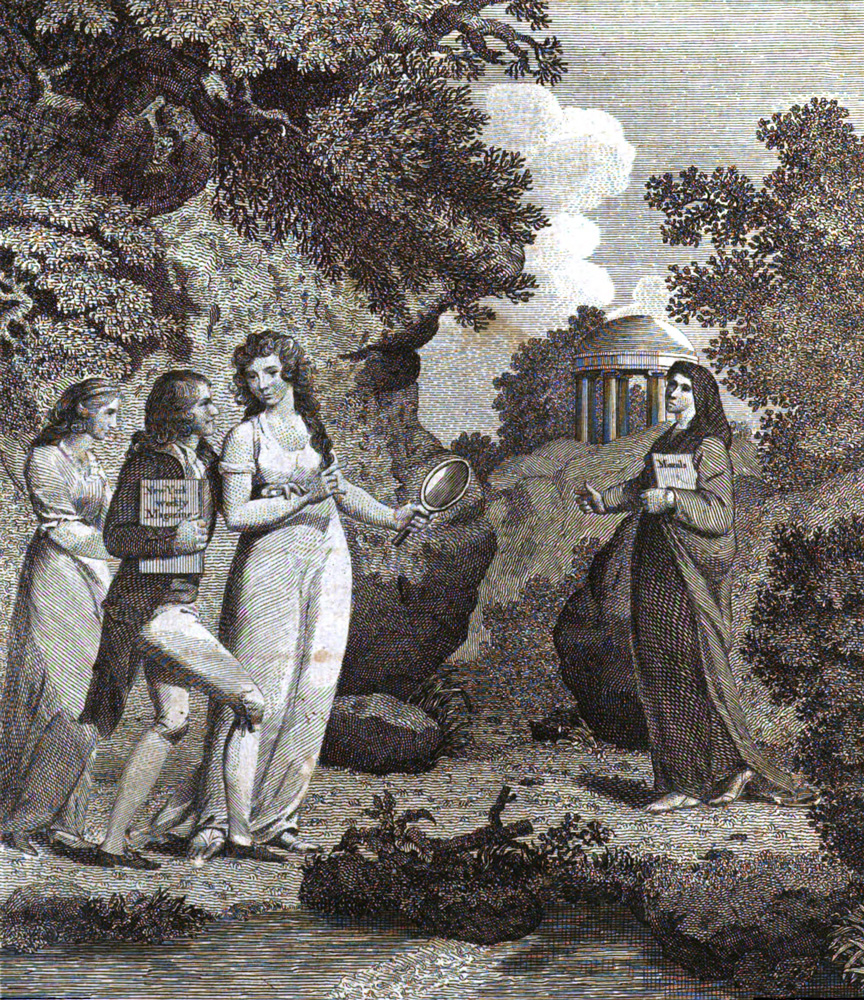
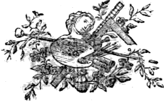
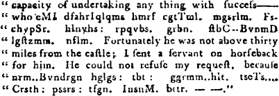
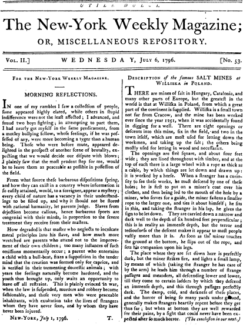

Title: The New-York Weekly Magazine, or Miscellaneous Repository
Editor: John Bull
Thomas Burling
Release date: August 28, 2011 [eBook #37240]
Most recently updated: November 12, 2024
Language: English
Other information and formats: www.gutenberg.org/ebooks/37240
Credits: Produced by Louise Hope
Typographical errors are shown with mouse-hover popups. Most spellings were left as printed even if they are probably wrong.
Where possible, hyphens and dashes are shown as printed. Brackets [ ] and asterisks—notably in “The Victim of Magical Delusion” and “The Baron De Lovzinski”—are in the original.
Index
No. 53 (pg. 1-8)
No. 54 (pg. 9-16)
No. 55 (pg. 17-24)
No. 56 (pg. 25-32)
No. 57 (pg. 33-40)
No. 58 (pg. 41-48)
No. 59 (pg. 49-56)
No. 60 (pg. 57-64)
No. 61 (pg. 65-72)
No. 62 (pg. 73-80)
No. 63 (pg. 81-88)
No. 64 (pg. 89-96)
No. 65 (pg. 97-104)
No. 66 (pg. 105-112)
No. 67 (pg. 113-120)
No. 68 (pg. 121-128)
No. 69 (pg. 129-136)
No. 70 (pg. 137-144)
No. 71 (pg. 145-152)
No. 72 (pg. 153-160)
No. 73 (pg. 161-168)
No. 74 (pg. 169-176)
No. 75 (pg. 177-184)
No. 76 (pg. 185-192)
No. 77 (pg. 193-200)
No. 78 (pg. 201-208)
No. 79 (pg. 209-216)
No. 80 (pg. 217-224)
No. 81 (pg. 225-232)
No. 82 (pg. 233-240)
No. 83 (pg. 241-248)
No. 84 (pg. 249-256)
No. 85 (pg. 257-264)
No. 86 (pg. 265-272)
No. 87 (pg. 273-280)
No. 88 (pg. 281-288)
No. 89 (pg. 289-296)
No. 90 (pg. 297-304)
No. 91 (pg. 305-312)
No. 92 (pg. 313-320)
No. 93 (pg. 321-328)
No. 94 (pg. 329-336)
No. 95 (pg. 337-344)
No. 96 (pg. 345-352)
No. 97 (pg. 353-360)
No. 98 (pg. 361-368)
No. 99 (pg. 369-376)
No. 100 (pg. 377-384)
No. 101 (pg. 385-392)
No. 102 (pg. 393-400)
No. 103 (pg. 401-408)
No. 104 (pg. 409-416)
Sources
Description of the New-York Weekly
Errors and Inconsistencies
The division of files has been adjusted to allow two longer items—a 15-part serial and a 3-part poem—to be complete in one file each. The change of editor begins exactly halfway through the volume, in No. 79; a new masthead is introduced at the 3/4 point, in No. 92.
Two of the serial stories are also available from Project Gutenberg as free-standing e-texts: “The Princess de Ponthieu” (e-text 30794), and “Alphonso and Marina” (e-text 32527).


THE very flattering patronage with which this work, for two years, has been kindly favoured, demands the warmest acknowledgments of the Editors. Since its commencement, it has witnessed the demise of other periodical publications; some established long before it, others that have taken their rise at a later period; while the particular distinction honorably awarded the Weekly Magazine, has marked it an object of public favor, and denoted the estimation in which it has ever been considered; not as matter of exultation do the Editors make this remark; but it gives their friends stronger claims on their gratitude, and acts as a momentum to impel them to exertions which in some degree might enable them to merit such attention. Strongly impressed with a sense of their duties as conductors of a work so universally read, they have, with the utmost solicitude, guarded against the intrusion of any thing, in the smallest degree, injurious to the feelings of the religionist. Their selection has uniformly tended either to inform and enlighten the understanding, to inculcate the purest lessons of morality, or to unbend the mind with innocent levities. To effect those primary objects, they have studiously endeavored to make the work abound with curious investigations, elegant descriptions, historical narrations, biographical sketches, well-chosen tales, essays, anecdotes, observations, maxims, poetical effusions, &c. &c., all contributing in the highest degree to mend the heart, to improve the head, and to form the taste. In order more fully to designate the properties of this work in the title, it is intended to commence the third volume under that of the Sentimental and Literary Magazine; this alteration, we trust, will be universally acceptable. We shall only trespass on the patience of our friends to make one remark more; the cheapness of this work is unrivalled; let it be considered that advertisements and news are wholly excluded—the former, in a literary publication, has, in our eyes, a very unpleasant appearance, beside the room engrossed to the exclusion of more agreeable matter; the latter, from the very general circulation of daily newspapers, must be rendered wholly uninteresting. This, then, is devoted solely to literature—and the many entire works, which, in the last two years it has contained, amount, when separately purchased, to considerably more than the price of the magazines during that period—besides the immense number of anecdotes, essays, extracts, sketches, &c. &c. and the poetry, which, alone, comprises more than an eighth of the whole.
Filled with a laudable ambition to render ourselves, by every thing in our power, worthy the continuance of general favor, we are, with the greatest respect, the devoted servants of a generous public,
The EDITORS.
Printing-Office, June 30, 1797.
Issues (“No.”) were numbered continuously through the run of the magazine, but pagination started over again with Volume II. Each issue was 8 pages.
The Index is shown as originally printed. Within each initial letter, articles are listed in page order. Items in italics indicate a poem listed in the first (prose) Index. In the Index, incorrect page references are underlined in red; other errors and inconsistencies are marked as usual.
Three Index items—Marriages, Meteorological Observations, and the serialized novel The Victim of Magical Delusion—were missing all entries for the year 1797 (pages 209-end, issues 79-end). They have been added in smaller type, along with a few other individual entries.
Poetry from 1797 was also not indexed, except for the final two
issues, 103 and 104 (pages 408 and 416). These listings have not
been added.
Prose:
A
B
C
D
E
F
G
H
I
J
K
L
M
N
O
P
R
S
T
U
V
W
Z
| A | |
| Account of a dreadful murder, | PAGE 20, 28 |
Activity conducive to happiness, |
31 |
Account of a wonderful deliverance at sea, |
31 |
| Advice, | 35 |
| All men are slaves, | 38 |
| Anecdotes, | 39, 47, 119, 175 |
Account of the last moments of Dr. Johnson, |
43, 51 |
| Aphorism, | 44 |
| Astonishing courage, | 44 |
Anecdotes of men of extraordinary strength, |
60 |
| Anecdotes of Dr. Johnson, | 63 |
| Anecdotes of Dr. Goldsmith, | 67 |
| Activity, | 65 |
Account of a negro woman who became white, |
71 |
| Anger, | 76 |
| Anecdote of Mr. Handel, | 84 |
| Authenticated etymologies, | 89, 99, 131 |
| Anecdote of Voltaire, | 91 |
| Anger, | 99 |
| Arabian Maxims, | 126, 148 |
| Anecdote of Miss D’Arblay, | 151 |
| Anecdote of Dr. Goldsmith, | 159 |
| Anecdote of the celebrated John De Witt, | 164 |
| Anecdote of Sir Philip Sidney, | 169 |
| Anecdote of Cæsare Arethuzi, | 174 |
| Anecdote of M. De Sartine, | 183 |
| Anecdote of an Earl of Portland, | 195 |
| Anecdote of Madame Fayette, | 406 |
| Anecdote of Champagneaux, | 407 |
| Anecdote of Camus, | 407 |
| Anecdote of Madame Cordet, | 411 |
| Anecdote of Voltaire, | 411 |
| Advice, | 174 |
| Account of La Maupin, | 182 |
| Affection, | 199 |
| Adieu to a favourite grove, | 224 |
| Ambition, | 249 |
Answer to a grammatical epistle, |
263 |
| Art of happiness, | 273 |
| Artful lover, | 281 |
Address of the Translator of Magical Delusions, |
330, 338 |
| Alfonso and Marina, | 333, 341, 349 |
| Approach of Spring, | 352 |
| African’s Complaint, | 353 |
| Affability, | 361 |
| Antiochus and Stratonice, | 366 |
Anecdotes, 215, 219, 239, 243, 255, 270, 308, 315, 323, 326, 339, 343, 355, 363, 365, 391, 399, 403, 414, 415 |
|
| B | |
| Beautiful Allegory, | 28 |
| Bon Mot, | 75 |
| Benevolence, | 78 |
| Beggar, The—a Fragment, | 84 |
| Bonna, Life of, | 286 |
| Balm of sorrow, | 323 |
| Behaviour, | 393 |
| v b C | |
| Curious proposition of a debtor to his creditor, | 7 |
| Curious etymology, | 25 |
| Curious Law Anecdote, | 47 |
| Cursory thoughts on fortune, | 30 |
| Conscience, | 68 |
| Character of a rich man, | 68 |
| Court of love, | 68 |
| Contemplation, | 75 |
Courtship and marriage of Dr. Johnson, |
76 |
Curious superscription of a letter, |
81 |
| Curious historical Anecdote, | 91 |
| Curious observations, | 140 |
| Curious observations on making love, | 148 |
| Character of a poor man, | 87 |
| Character of a good man, | 119 |
| Conjugal affection, | 150 |
| Conversation, on | 153 |
| Contentment, on | 156 |
| Compassion—an anecdote, | 163 |
| Communion with our own hearts | 177 |
| Character, a, extracted from Camilla, | 185 |
| Conversation of a fine woman, | 190 |
| Candidus, | 214, 222 |
| Contemplation—an ode, | 216 |
Conduct of men towards the fair, |
262 |
| Choice, | 280, 367 |
| Curiosity, | 285 |
| Curious incident, | 286 |
| Curious Anecdote, | 315 |
| Chearfulness, | 329 |
| Criminal, | 335, 351, 359, 375, 383 |
| Collins’s monument, | 366 |
| Character of Lord Mount-Garth, | 382 |
| Clown and Lawyer, | 384 |
| Customs of the Hindoos, | 388 |
| Character of the Swedes, | 390 |
| Compassion, | 401 |
| D | |
Description of the salt mines of Williska, |
1, 9 |
| Dead infant, the—a fragment, | 3 |
Discovery of ancient manuscripts, |
38 |
| Death, | 39 |
| Death, on | 55 |
| Death of a Philosopher, | 217 |
| Detached thoughts, | 92 |
| Deceit, | 265 |
| Duty of old age, | 265 |
| Debtor, | 288 |
| Digression, | 316 |
| Discontent, | 321 |
Description of a Wonderful Cavern in Upper Hungary, |
366 |
| Domestic felicity, | 401 |
| Detraction, a vision, | 414 |
| E | |
| Effect of music, | 12 |
Extraordinary adventure of a Spanish nobleman, |
27, 34 |
| Extraordinary effects of sudden joy, | 54 |
| Extraordinary effects of jealousy, | 68 |
| vi Extraordinary thirst for fame, | 95 |
| Extraordinary instances of gratitude, | 164 |
| Extraordinary intrepidity of the Jomsburgians, | 177 |
| Extraordinary recompense according to merit, | 207 |
| Evening meditation, | 73 |
| Enthusiasm of character, | 75 |
Enigmatical list of amiable young ladies, |
87 |
Effects of love on life and manners, |
89 |
Extract from a royal grant of land in Carrata, |
97 |
| Essay on patience, | 137 |
| Essay on hope, | 145 |
| Eulogy on Buffon, | 139 |
| Extravagance and avarice, | 161 |
| Essay from Candidus, | 188 |
| Essayist, | 217, 233, 249 |
| Education, reflections on | 221 |
| Ethicus, | 271 |
| Elliot, Mr. history of | 277, 284, 293 |
| Effects of love, | 281 |
| Effects of envy, | 301, 309 |
| Examples of humanity, | 350 |
| Epitaph on Mr. Scrip, | 374 |
| F | |
Fatal effects of indulging the passions, |
2, 10, 18, 26 |
| Forgetful man, the | 23, 254 |
| Funeral, the | 44 |
| Fact, a | 46 |
Fragment, a—on benevolence, |
81 |
| Friendship, | 108 |
| Fragment, a | 111 |
| Fragments of Epicharmus, | 124 |
Folly of Freethinking—an anecdote, |
143 |
| Fiery ordeal, the | 158 |
| Fugitive trifles, | 159 |
| Friendship, | 198 |
| Flower girl, | 287 |
| Fugitive thought, | 321 |
Fatal effects of a too susceptible heart, |
324 |
| Fragment, | 327 |
| Farrago, | 348, 356, 364, 372, 380, 388, 396, 404, 412 |
| G | |
God’s providence in the formation of his creatures, |
11 |
Good name, a, is better than precious ointment, |
12 |
| Greatness, | 14 |
| Geography, on | 39 |
| Gleanings, | 87, 100, 117 |
| Generosity, | 140 |
| Good husband, the | 169 |
| Good wife, the | 169 |
| Grammatical epistle, | 255 |
| Genius of women, | 260 |
| Genius of the Arabs, | 268 |
| Gratitude, | 289 |
| Genuine sentiment, | 305 |
| Generous rival, | 357 |
| H | |
| History of the Princess de Ponthieu, | 36, 42, 50, 58, 66, 74, 82, 90 |
| Hint to the scholar, | 46 |
| Happiness, | 79 |
| Human life, | 79 |
History of the Baron de Lovzinski, 98, 106, 114, 122, 133, 141, 149, 157, 165, 173, 181, 189, 197, 205, 212 |
|
| Hymns of the native Peruvians, | 113 |
| Humanity, | 166 |
| Hypocrisy, on | 171 |
| History of the beard, | 180 |
| Happiness, | 201 |
| Humanity, | 225 |
| Happiness, | 268 |
| Hope, | 303, 377 |
| Humility, | 377 |
Henry and Louisa, an affecting tale, |
413 |
| I | |
| Imagination, on | 84 |
| Imitation, | 91 |
| Instance of benevolence, | 167 |
| Instance of uncommon friendship, | 179 |
| Instruction to loungers, | 302 |
| Imprudent friendship, | 345 |
| vi b Intent of religion, | 377 |
| Ivar and Matilda, | 406 |
| J | |
| Jealousy, | 15 |
| Juliet, a story, | 100 |
| K | |
| Knowledge, | 25 |
| L | |
| Landscape painting, on | 49 |
| Local curiosities, | 83 |
| Lady’s monitor, the | 97 |
| Laughing, on | 161 |
Letter from the Hon. Miss B. to Sir Richard P. |
193 |
| Life, | 196 |
Lamentations of Panthea over the body of Abradates, |
201 |
| Lavinia, a pastoral | 272 |
| Love and folly, | 343 |
| Literary pursuits, | 369 |
Letter to a lady on her marriage, |
373 |
Letter of Lady Compton to her husband, |
385 |
| M | |
| Morning reflections, | 1 |
| Maxims, | 17, 33, 119, 155 |
| Moorish gratitude, | 23 |
| Moral axiom, | 30 |
| Mutability of fortune, on the | 39 |
| Melancholy transaction, | 62 |
| Means of acquiring happiness, | 91 |
| Military anecdotes, | 92, 135, 182 |
| Meanings of the word Make, | 92 |
| Misfortune, | 95 |
| Metamorphosis of characters, | 127 |
| Moral maxims, | 127, 129 |
| Maria; or the seduction, | 132 |
| Mental accomplishment superior to personal attractions, | 185 |
| Man, | 188 |
| Means of extinguishing fires, | 196 |
| Miser and prodigal, | 172 |
| Mordaunt, Mrs. history of | 228, 237, 244, 253, 261, 269 |
| Matrimonial ballad, | 232 |
| Miscellany, | 279, 332 |
| Men of genius not rewarded, | 292 |
| Marriage, | 297 |
| Miranda, a moral tale, | 317, 325 |
| Matrimony, | 337 |
| Man of pleasure, | 337 |
| Madelaine, a story, | 396 |
Marriages, 7, 15, 23, 31, 39, 47, 55, 63, 71, 79, 87, 95, 103, 111, 119, 127, 135, 143, 151, 159, 167, 175, 183, 191, 199, 207, 215, 223, 231, 239, 255, 263, 271, 279, 287, 303, 311, 319, 327, 335, 343, 351, 359, 367, 375, 383, 391, 399, 407, 415 |
|
Meteorological observations, 7, 15, 31, 39, 47, 55, 63, 71, 79, 87, 95, 103, 111, 119, 127, 135, 143, 159, 167, 199, 207, 223, 231, 239, 247, 255, 263, 271, 279, 287, 295, 303, 311, 319, 327, 335, 343, 351, 359, 367, 375, 383, 391, 399, 407, 415
“Marriages” did not appear in issues 83 (p. 247) and 89 (p. 295). |
|
| N | |
Notes between Walter Townsend and Theodore, |
135 |
| Nature, | 171, 199 |
Nettle and rose—an essay, |
209 |
| Negligence in epis. con. | 294 |
| New May, | 360 |
| O | |
| Observations, | 12, 23, 31, 35, 44, 190, 330, 379 |
| Observations on the boiling point of water, | 70 |
| On the origin of love, | 175 |
| Osmin—an original essay, | 220 |
| Origin of the Spencer, | 316 |
| P | |
| Prodigy, a | 14 |
| Politeness, on | 23 |
Precepts of Chilo, the Grecian philosopher, |
60 |
Peep, a, into the den of idleness, |
81 |
| Perfect friendship, | 116 |
| Pride, | 137 |
| Power, | 158 |
| Politics, | 175 |
| Pleasure, | 190 |
| Panegyric on marriage, | 191 |
Pity and benevolence—an essay, |
229 |
| Piedmontese sharper, | 241 |
| Power of music, | 252 |
| Pleasures of old age, | 257 |
| Proverbialist, | 276 |
| vii Panegyric on impudence, | 308 |
| Prosperity, | 313 |
| Poverty of the learned, | 390 |
| Prostitute, | 392 |
| R | |
| Remarkable account of two brothers, | 6 |
| Results of Meteorological Observations, for | |
| June, 1796, | 7 |
| July, | 39 |
| August, | 79 |
| September, | 111 |
| October, | 159 |
| November, | 199 |
| December, | 223 |
| January, 1797, | 263 |
| February, | 287 |
| March, | 319 |
| April, | 351 |
| May, | 391 |
Reflections occasioned by the death of Miss Blackbourn, |
14 |
Remarks on the wonderful construction of the eye, |
17 |
| Remarks on the wonderful construction of the ear, | 57 |
Remarkable cure of a fever by music, |
44 |
| Reason, | 49 |
| Road to ruin, the | 59 |
| Rules for judging of the beauties of painting, music, and poetry, | 65 |
| Remarks, | 83, 92, 111, 115, 163 |
| Remarks on music, | 91, 103, 108, 124, 140, 156 |
| Rural picture, a | 100 |
| Runners remarkable for swiftness, | 110 |
| Reflections on the harmony of sensibility and reason, | 121 |
| Rencounter, the | 124 |
| Rose, the—a reflection, | 140 |
| Retrospection, | 167 |
| Reflection on the earth, | 180 |
| Reason, | 235 |
| Reflection, an ode, | 240 |
| Ridicule, | 305 |
| Radcliffe, Mrs. | 318 |
| Receipt for writing novels, | 336 |
| S | |
| Sentimental perfumery, | 7 |
| Speaking statue, | 19 |
Singular state of man when asleep, |
41 |
| Study, | 41 |
| Study of nature, | 44 |
| Specimen of Indian eloquence, | 52 |
| Segar smoaking, on | 60 |
| Speech of Logan, an Indian, | 75 |
| Simplicity, | 92 |
| Singularity of manners, on, | 105 |
| Society, | 105, 207 |
| Sentimental fragment, | 129 |
| Self-love, | 169 |
Specimens of speech or speakings, |
196 |
Story of Alcander and Septimeus, |
204 |
| Setting sun, | 224 |
| School of libertines—a story, | 236, 245 |
| School of nature, | 270 |
| Slavery, | 303 |
| Speech of the king of Dahomy, | 340 |
| Scandal, | 381 |
| Stanzas to hope, | 384 |
| Storm, the—a fragment, | 403 |
| T | |
| Three cornered hat, on the | 19 |
| Temperance, on | 60 |
| To Tyrunculus, | 71 |
| Taciturnity, an apologue, | 83 |
| Taste, | 156 |
| Temple of Hope, | 246 |
| True meekness, | 247 |
| U | |
| Unaccountable thirst for fame, | 63 |
| V | |
Victim of magical delusion, 4, 12, 21, 29, 37, 45, 53, 61, 69, 77, 93, 101, 109, 117, 125, 130, 138, 146, 154, 162, 170, 178, 186, 194, 202, 210, 218, 226, 234, 242, 250, 258, 266, 274, 282, 290, 298, 306, 314, 322 |
|
| View of the starry heavens, | 25, 33 |
| vii b Virtue rewarded | 172 |
| Verses addressed to Miss A. B. | 344 |
| W | |
Wonderful account of a man fish, |
23 |
| Wonderful qualities of hope, | 52 |
| Wisdom and virtue, | 129 |
| Winter, an ode, | 216 |
| Wealth, reflections on | 247, 339 |
| Wit, | 257 |
| War, | 300 |
| Wanderings of imagination, | 346, 354, 362, 370, 378, 386, 394, 402, 410 |
| Wisdom, | 403 |
| World, knowledge of the, | 409 |
| Z | |
| Zulindus, | 361 |
| A | |
| To Amanda, | PAGE 32 |
| Adversity, | 39 |
| To Amynta, | 56 |
| Anticipation, | 63 |
| An appeal, | 152 |
Address to a favourite canary-bird, |
160 |
| The Amaranth, to Maria, | 192 |
| B | |
| Of the Beautiful and Virtuous, | 7 |
| The Bachelor’s wish, | 88 |
The Belle’s invocation to winter, |
160 |
On a Bee having stung the thigh of an old maid, |
183 |
| Beauty, a song, | 184 |
| The Bachelor’s soliloquy, | 208 |
| C | |
| Cupid stung, | 48 |
| The Confession | 56 |
| To Clara, | 104, 136 |
| The Captive’s complaint, | 104 |
| Contented in the vale | 135 |
| The Complaint, | 160 |
| D | |
On the Death of Miss Mary Blackbourn, |
15 |
| The Doctor’s duel, | 112 |
On the Death of a Baby, nine days old, |
183 |
| E | |
Epistle from Octavia to Anthony, |
8, 16 |
| Epitaph on a violent scold, | 23 |
Elegy, addressed to a young lady, |
24 |
| To Eliza, | 31 |
Ejaculation over the grave of my wife, |
31 |
Elegy on an unfortunate veteran, |
48 |
| Elegy written at sea, | 56 |
| To Eliza, | 64 |
| Eliza in answer to ****, | 72 |
| Epitaph, | 72 |
| To Emma, | 80 |
Elegy on the death of Mr. Abeel, |
88 |
| To Emma, | 87 |
Elegy on Miss Margaret Hervey, |
95 |
| Extent of life’s variety, | 112 |
| To Emma, | 120 |
| Elegy on Dr. Joseph Youle, | 128 |
| Epitaph on Mr. W——. N——. | 128 |
| Elegy on Miss Polly Martin, | 136 |
| Evening, | 143 |
Epitaph on a celebrated coach-maker, |
144 |
| Eve of Hymen, | 152 |
| Epitaph, | 208 |
| Evening Star, to the | 408 |
Epigram, hint to a poor author, |
408 |
| Early impressions, sonnet on | 408 |
| Elegy to a disconsolate lover, | 416 |
| Epigram, | 416 |
| F | |
| Fragment, | 16 |
| viii G | |
| On a good conscience | 144 |
| H | |
| The Happy man, | 72 |
| Health, | 416 |
| K | |
| The Kiss, | 40 |
| L | |
Lines sent to a young lady with an Æolian Harp, |
48 |
| Lines on Shakespeare, | 64 |
| Lines to a gentleman made prisoner by the Indians, | 80 |
| Lines on the death of a young lady, killed by lightning, | 80 |
| Lines written during a storm, | 96 |
| Lines on hearing a young lady sing a song, | 96 |
| Lines on a lady putting a white rocket in her bosom, | 96 |
| Lines by a lady, on receiving a bouquet from a boy, | 128 |
| Lines from the Rev. Mr. Bishop to his wife, | 151 |
| Lines on the late Scotch poet, | 200 |
| Lines to a gentleman who attempted drawing the picture of a lady, | 200 |
| Lines on losing a friend, | 208 |
| La Fayette, a song, | 127 |
| M | |
| The Mall, | 24 |
| To Matilda, | 24 |
| Morning dawn, | 71 |
| Military fame, | 112 |
| Maternal affection | 144 |
| To Maria, | 176 |
Moral verses, addressed to youth, |
200 |
| O | |
| Ode to Bacches, | 168 |
| Ode to Poesy, | 184 |
| P | |
| Pity, | 8 |
Paddy’s remark on a treble rap at the door, |
96 |
| Poor man’s address to Winter, | 168 |
| R | |
| The Recantation | 24 |
| viii b On Reading some elegies, | 47 |
| On Revisiting a native place, | 72 |
| The Rising moon, | 88 |
| Reflections in a church yard, | 112 |
| The Repartee, | 119 |
On the Recovery of an only child from the small pox, |
192 |
| S | |
| The Setting Sun, | 64 |
| The Shield of sorrow, | 96 |
| Sonnets, | 104, 207, 208 |
| Sonnet on my beard, | 112 |
| Soliloquy to love, | 120 |
Sonnet from a manuscript novel, |
152 |
| Sonnet to Maria, | 167 |
| Sonnet to Helen Maria Williams, | 176 |
| The Snow-drop and primrose, | 152 |
| The Season of delight, | 176 |
| Song | 208 |
| T | |
| The Threat, | 32 |
| Twilight, | 48 |
| The Tribunal of conscience, | 96 |
| Tragedy, ode to | 408 |
| V | |
The Velvet larkspur and eglantine, |
40 |
| On Vicissitude, | 64 |
| Verses to ——, | 79 |
| Verses to a young lady on reading Sterne’s Maria, | 119 |
| Verses to Miss A. H. | 144 |
| To a Violet, | 152 |
| Virtue and ornament, | 192 |
| W | |
| The Wish, | 32 |
| What is happiness, | 55 |
| Wintery prospect, | 176 |
|
1
UTILE DULCI. |
||
The New-York Weekly Magazine;OR, MISCELLANEOUS REPOSITORY. |
||
| Vol. II.] | WEDNESDAY, July 6, 1796. | [No. 53. |
For the New-York Weekly Magazine.
In one of my rambles I saw a collection of people, some appeared highly elated, while others in stupid indifference were not the least affected; I advanced, and found two boys fighting; in attempting to part them, I had nearly got myself in the same predicament, from a motley bullying fellow, whose feelings, if he was possessed of any, were more becoming a tyger than a human being. Those who were before mute, appeared delighted in the prospect of another scene of brutality, expecting that we would decide our dispute with blows; I plainly saw that the most prudent step for me, would be to leave them as peaceable as possible in possession of the field.
From what source these barbarous dispositions spring, and how they can exist in a country where information is so easily attained, would, to a foreigner, appear a mystery; every child of nature has a vacancy in their understandings to be filled up, and why it should not be stored with rational humanity, let parents judge. Slaves from dejection become callous, hence barbarous sports are congenial with their minds, in proportion to the severe treatment they receive from their matters.
How degraded is that master who neglects to inculcate moral principles into his slave, and how much more wretched are parents who attend not to the improvement of their own children; too many instances of such omissions momentarily occur; a parent who entertains a child with a bull-beat, fixes a supposition in the tender mind that the creation was formed only for caprice, and is verified in their tormenting domestic animals; with years the feelings naturally become hardened, and the youth thus brought up, only waits an opportunity to leave off all restraint. This is plainly evinced in war, when the law is suspended, murders and robbery become fashionable, and those very men who were peaceable inhabitants, with exultation take the lives of strangers whom they have never seen, and by whom they have never been injured.
T.
New-York, July 1, 1796.
There are mines of salt in Hungary, Catalonia, and many other parts of Europe, but the greatest in the world is that at Williska in Poland, from which a great part of the continent is supplied. Williska is a small town not far from Cracow, and the mine has been worked ever since the year 1251, when it was accidentally found in digging for a well. There are eight openings or descents into this mine, six in the field, and two in the town itself, which are most used for letting down the workmen, and taking up the salt; the others being mostly used for letting in wood and necessaries.
The openings are five square, and about four feet wide; they are lined throughout with timber, and at the top of each there is a large wheel with a rope as thick as a cable, by which things are let down and drawn up: it is worked by a horse. When a stranger has a curiosity to see these works, he must descend by one of these holes; he is first to put on a miner’s coat over his clothes, and then being led to the mouth of the hole by a miner, who serves for a guide, the miner fastens a smaller rope to the larger one, and ties it about himself; he sits in this, and taking the stranger in his lap, he gives the sign to be let down. They are carried down a narrow and dark well to the depth of six hundred feet perpendicular; this is in reality an immense depth, but the terror and tediousness of the descent makes it appear to most people vastly more than it is. As soon as the miner touches the ground at the bottom, he slips out of the rope, and sets his companion upon his legs.
The place where they are set down here is perfectly dark, but the miner strikes fire, and lights a small lamp, by means of which (taking the stranger he has care of by the arm) he leads him through a number of strange passages and meanders, all descending lower and lower, till they come to certain ladders by which they descend an immense depth, and this through passages perfectly dark. The damp, cold, and darkness of these places, and the horror of being so many yards under ground, generally makes strangers heartily repent before they get thus far; but when at bottom they are well rewarded for their pains, by a sight that could never have been expected after so much horror.
(The conclusion in our next.)
This serial began in No. 45 of the New-York Weekly; the last 4 of its 12 installments are in Volume II. For sources, see the end of this file.
Translated from the French.
(Continued from page 410 of Vol. I.)
I informed her of my determination, assuring her, at the same time, it was irrevocable. I confess, however, notwithstanding my certitude, at moments, of her hatred, I secretly flattered myself, that this declaration would astonish, and produce a most lively emotion in Julia; and it is certain, had I discovered the least signs of regret on her part, I should have cast myself at her feet, and abjured a resolution which pierced my very soul.
I was deceived in supposing myself hated; I was equally wrong in imagining my conduct could inspire even momentary love. Great minds are incapable of hatred; but a continued improper and bad conduct will produce indifference, as it did with Julia. I had lost her heart past recal. She heard me with tranquility, without surprize, and without emotion. My reputation, said she, is already injured, and this will confirm the unjust suspicions of the public; but if my presence is an obstacle to your happiness, I am ready to depart; my innocence is still my own, and I shall have sufficient strength to submit to my fate.
Cruel woman! cried I, shedding a torrent of tears, with what ease do you speak of parting!
Is it not your own proposal!
And is it not I who adore you, and you who hate me!
Of what benefit is your love to me; or of what injury is what you call my hatred to you?
I have made you unhappy; I am unjust, capricious, mad; and yet if you do hate me, Julia, your revenge is too severe; there is no misery can equal your hatred.
I do not hate you.
The manner in which she pronounced this, said so positively I do not love you, that I was transported beyond all bounds of patience; I became furious, yet the next instant, imagining I saw terror in the eyes of Julia, I fell at her feet. A tear, a sigh at that moment, had changed my future fate, but she still preserved her cold tranquility. I hastily got up, went to the door, and stopped. Farewell for ever! said I, half suffocated with passion. Julia turned pale, and rose as if to come to me; I advanced towards her, and she fell back into her chair, ready almost to faint. I interpreted this violent agitation, into terror. What, am I become a subject of horror! cried I; well, I will deliver you from this odious object. So saying, I darted from the chamber in an agony of despair.
My uncle was absent, I no longer had a friend, no one to advise or counteract the rashness of the moment. Distracted, totally beside myself, I ran to the parents of Julia, declared my intention, added, Julia herself was desirous of a separation, and that I would give back all her fortune.
They endeavoured to reason with me, but in vain; I informed them I should go directly into the country, where I should stay three days, and when I came back I expected to find myself alone in my own house. I next 2b wrote to Julia to inform her of my proceedings, and departed, as I had said I would, the same evening for the country.
My passions were too much agitated to let me perceive the extent of misery to which I condemned myself; and what seems now inconceivable was, that though I loved my wife dearer than ever, and was inwardly persuaded I might yet regain her affections, I found a kind of satisfaction in making our rupture thus ridiculously public. I never could have determined on a separation from Julia with that coolness and propriety which such things, when absolutely necessary, demand. I wanted to astonish, to agitate, to rouze her from her state of indifference, which, to me, was more dreadful even than her hatred. I flattered myself that, hearing me, she had doubted my sincerity, and supposed me incapable of finally parting from her.
I likewise imagined that event would rekindle in her heart all her former affection; and this hope alone was enough to confirm me in the execution of my project. I took pleasure in supposing her incertitude, astonishment, and distress; my fancy represented her when reading my letter; beheld her, conducted by her relations, pale and trembling, descend the stairs; saw her stop and sigh as she passed the door of my apartment, and weep as she stepped into the carriage.
I had left a trusty person at Paris, with orders to observe her as carefully as possible; to watch her, follow her, question her women, and inform me of all she said or did at this critical moment; but the relation was not long. Julia continued secluded in her chamber, received her friends without a witness, and departed by a private stair-case unseen of any one.
The same afternoon that she left my house she wrote me a note, which contained nearly these words.
“I have followed your orders, and departed from a place whither I shall always be ready to return, whenever your heart shall recall me. As to your proposal of giving back a fortune too considerable for my present situation, I dare expect as a proof of your esteem, it will not be insisted upon: so to do is now the only remaining thing that can add to my uneasiness. Condescend therefore, to accept the half of an income, which can give me no pleasure if you do not partake it with me.”
This billet, which I washed with my tears, gave birth to a crowd of reflections. The contrast of behaviour between me and Julia forcibly struck me, and I saw by the effects how much affection, founded upon duty, is preferable to passion. I adore Julia, said I, and yet am become her tormentor; have determined to proceed even to a separation; she loved me without passion, and was constantly endeavouring to make me happy; ever ready to sacrifice her opinions, wishes and will and continually pardoning real offences, while I have been imputing to her imaginary ones; and, at last, when my excessive folly and injustice have lost her heart, her forgiveness and generosity have yet survived her tenderness, and she thinks and acts the most noble and affecting duties towards an object she once loved. Oh yes! I now perceive true affection to be that which reason approves, and virtue strengthens.
Overwhelmed by such reflections, the most bitter repentance widened every wound of my bleeding heart. I shuddered when I remembered the public manner in which I had put away my wife; and in this fearful state of mind, I had doubtless gone and cast myself at Julia’s feet, acknowledged all my wrongs, and declared I could not live without her, had I not been prevented by scruples, which for once were but too well founded.
I had been a Prodigal and a Gamester and, what was still worse, had a steward, who possessed in a superior degree the art of confusing his accounts, which indubitably proves such a person to want either honesty or capacity. Instead of at first discharging him, I only begged he would not trouble me with his bills and papers; which order with him needed no repetition, for it was not unintentionally he had been so obscure and diffuse.
About six months, however, before the period I at present speak of, he had several times demanded an audience, to shew me the declining state of my affairs. At the moment, this made little impression upon me; but after reading Julia’s note it came into my mind, and before I could think of obtaining my pardon, I resolved to learn my real situation.
Unhappily for me, my conduct had been such that I had no right to depend on my wife’s esteem; and, if ruined, how could I ask her to return and forget what was passed? Would not she ascribe that to interest, which love alone had inspired? The idea was insupportable, and I would rather even never behold Julia more, than be liable to be so suspected.
With such fears I returned hastily to Paris. But what were my sensations at entering a house which Julia no longer inhabited, and whence I myself had had the madness and folly to banish her! Attacked by a thousand afflicting thoughts, overwhelmed with grief and regret, I had one only hope, which was, that by œconomy and care I might again re-establish my affairs, and afterwards obtain forgiveness, and be reconciled to Julia.
I sent for my steward, and began by declaring, the first step I should take would be to return my wife’s fortune. He seemed astonished at this, and wanted to dissuade me, by saying he did not think it possible I could make this restitution without absolute ruin being the consequence. I saw by this my affairs were even much worse than I had imagined.
The discovery threw me into the most dreadful despair; for to lose my fortune was, according to my principles, to lose Julia eternally.
Before I searched my situation to the bottom, I restored Julia’s whole portion; I then paid my debts; and these affairs finished, I found myself so completely ruined, that, in order to live, I was obliged to purchase a trifling life-annuity, with what remained of a large fortune. My estates, horses, houses, all were sold, and I hired a small apartment near the Luxembourg, about three months after my separation from my wife. My Uncle was not rich; he had little to live on except a pension from the government, though he offered me assistance, which I refused.
Julia, in the mean time, had retired to a convent. On the very day I had quitted my house, I received a letter from her in the following terms:
“Since you have forced me to receive what you call mine, since you treat me like a stranger, I think myself justified in doing the same. When I left your house, the fear of offending you, in appearing to despise your gifts, occasioned me to take with me the diamonds and jewels which you had presented to me: it was your request, your command that I should do so, and I held obedience my duty. But since you shew me you will not act with the same delicacy, I have determined to part with these useless ornaments, which never were valuable but as coming from you. I found a favourable opportunity of selling them advantageously for twenty-four thousand livres (a thousand pounds sterling), which I have sent to your Attorney, as a sum I was indebted to you, and which you cannot oblige me to take back, since it is not mine.
“I have been in the convent of * * * for these two months past, where I intend to remain for some weeks at least, unless you take me hence.——We have a fine estate in Flanders; they say it is a charming country. Speak but a word, and I am ready to go with you, to live with you, to die with you.”
(To be continued.)
For the New-York Weekly Magazine.
“She snatch’d the hope of youth, the pride of age
From the dark cerements of the shrouding sheet!”
——“Speak, Menander, let thy mother once more hear the Voice that was her last comfort—” She begged in vain, for Menander had closed his eyes in death, and with him had fled the only happiness that his widowed mother possessed. She had but a little while since bade farewell to another child, who had gone to that bourne from whence there is no return. And now must she lose the other—the thought was too much.—No one should part her from him.—“I will still keep him,” said she, in the height of maniac rage, “if he will not speak to me I shall still behold him—I will still have my child.”
A friend who willingly would have been the means of allaying her extreme sorrow, had taken the liberty, while the mother slept, of arraying the corpse in the dress suitable for interment, and removed it to the appointed place. The mother awoke—missed her child, and hastened to the church-yard.—It was not yet deposited in the earth.—In agony she tore the lid from the coffin—pressed him to her heart, and returned home.—She kissed him---kept him continually encircled in her arms---nor would she again be parted from him.
She offered part of the necessaries that were set before her to the insensate clay, nor did she eat because her son could not.---But nature could not long bear up against this torrent of grief.---She once more pressed him with redoubled force to her breast, again kissed his putrid cheek—and slept her final sleep.
L. B.
This serialized novel began in No. 22 of the New-York Weekly; the last 41 of its 72 segments are in Volume II. For sources, see the end of the Index file.
UNFOLDING MANY CURIOUS UNKNOWN HISTORICAL FACTS.
Translated from the German of Tschink.
(Continued from page 415 of Vol. I.)
“Your features, dear Duke,” she resumed after a long pause, “have no resemblance with those of this picture; and yet the originality of the face is so remarkable to me, that it would afford me the greatest pleasure, if you would give it me.”
“If your Majesty should know how dear it is to me—”
“Well, that will enhance the value it has in my eyes. Whenever I shall look at the picture of the mother, I will remember the son. I will give you my picture, in lieu of it; will you resign it to me on that condition?”
I bowed respectfully, she opened a drawer, putting my picture in it, and took another out of it, which was adorned with jewels much more precious than that of my mother.
“Take it, Duke, and whenever you look at it, think that it is the picture of—a very unhappy woman.” So saying, she gave me the picture.
The accent and the mien with which these words were pronounced, wounded my heart. I prostrated myself---“How, amiable Queen, should you really be unhappy? and this pledge of your condescension should be to me a remembrancer of your misfortunes? O, name the source of your sorrows, and if the power of a mortal being can remove it, I will do it with pleasure, will attempt it even at the peril of my life!” So saying, I pressed my lips with vehemence on her hand.
“Rise! the interest which you take in my unhappiness renders me less unfortunate. It will not be in your power to make me happy, though I should be at liberty to unfold a mystery to you which never must be revealed. Rise, Duke!” She stooped to raise me up, her cheek touched my face, and a tremor of joy trembled through my frame. “Take courage!” I exclaimed, “though neither my power nor that of any man living should be able to render you happy, yet I know a person who possesses supernatural powers, and I flatter myself he will not refuse to grant my prayers. He shall make you happy, my Queen!”
She looked at me with weeping eyes, then up to heaven, and then again at me. “Your prayer,” she said at length, “would be fruitless; for if an angel would descend from heaven to offer me his assistance, he could not restore me to happiness, while certain human laws and political relations are in force.”——
I plainly perceived the dreadful struggles of her soul, and it would have been cruel to render her victory more difficult by farther persuasions.
I beheld with respectful silence the workings of her mind; however, she could not but observe that I adored her---her looks bespoke the grateful emotions of her heart.
“You have told me a few minutes ago, that your mother is no more,” she began after a long pause. “I hope your father is yet alive?”
“I have little reason to think he is.”
The Queen turned as pale as a corpse. “You doubt?” she stammered, “you doubt whether your father is alive?”
“A dangerous illness which has confined him to his bed, gives me reason to apprehend---but what is the matter with your Majesty?”
“Nothing---nothing at all---A dangerous illness did you say.”
“So he has informed me sometime since, by a letter, and requested me, at the same time, to hasten to his arms, that he might see me once more before his death, and give me his blessing.”
The Queen started up, and went to another part of the room, as if in search of something, but soon came back again:
“He wants to see you and you are here?”
“Before I received the letter of my father, I had promised to that Unknown of whom I have been speaking, that nothing should detain me from travelling to Fr**ce, and imploring your assistance in behalf of my unhappy country.”
“Poor father!” said the Queen, absorbed in melancholy, “how anxiously will he have expected the arrival of his son—I fancy I see the dying Marquis, how he extends his arms in vain to receive the child of his love—”
“Does your Majesty know my father?” I enquired hastily.
She gazed at me. “If I know him?---no!---yes---I saw him several times when at the court of my father---But why do you ask this question?”---Without giving me time to reply, she resumed, “Make haste! make haste, return to your native country; perhaps he is yet alive---the sight of you will animate him with new strength, he will recover in your arms, and perhaps be restored to health!” The last words she pronounced with a visible joyful emotion.
“Shall I leave your Majesty,” I replied “without having my prayer granted? Is my unhappy country to expect no assistance from a Queen whose sentiments are so sublime? Is the picture of the best of women to be to me a lasting mark of her favour and displeasure?”
She seemed to meditate, “It is true,” she said at length, “we have entirely wandered from your concerns. Did you not tell me that you are haunted every where by an apparition? I too have seen an apparition some time ago. It was the ghost of my departed father, who, at midnight drew the curtains of my bed, and said ‘I am very wretched my daughter! neither prayers nor masses will give me relief, while Por****l which we have usurped shall be submitted to the Sp***sh sceptre. O! my daughter, if the least spark of filial love is left in thy bosom, if thou wilt relieve me from unspeakable torments, then make use of all thy interest at this court, in order to support the endeavours of those who, at present, are secretly occupied to deliver Por****l from 5 her oppressors. A noble youth will arrive in a few days and implore thy assistance. He is sent from Heaven; grant his prayer. He has a mole on his left breast, which will be to thee a token of his mission.”
I started up. “That youth stands before your Majesty,” I exclaimed, uncovering my breast, “behold here the mole. O! relieve the suffering spirit of your father, relieve my country!”
She seemed to be in a trance, encircling me with her arms, and straining me to her bosom. “Thy prayer is granted!” she said in a faint accent.---No sooner had the last syllable escaped her lips, when the sound of a little bell was heard in the adjoining apartment. She disengaged herself from my neck and started back, “Gracious heaven!---” she exclaimed, pale and trembling, “the King is returned. Begone! for God’s sake begone!”
I was going to obey her command; the stopped me: “Never reveal a word of what has happened between ourselves,” she whispered; “leave the palace and the kingdom as soon as possible: beware of the King, I conjure you!”
I prostrated myself and encircled her knees, shedding tears of anguish; wanted to take leave, but could not utter a single word. The bell in the adjoining apartment was rung a second time; the Queen disengaged herself seized with terror: “make haste!---flee!---O stay!” she exclaimed when I hastened to the door, “come back!” She opened her arms to receive me; I flew to her bosom; she imprinted three burning kisses on my lips, and hurried into an adjoining apartment.
I do not recollect how I got out of the room. On the staircase I observed first, that the same lady who had conducted me to the Queen was walking by my side. We returned the same way by which I had entered the palace, and I arrived happily at our hotel in the company of the Count.
After I had communicated to him my success, I went to my apartment in order to give audience to my thoughts; however I was not able to account for the behaviour of the Queen, and my feelings during the whole scene. Was it love that I felt for the Queen? certainly not; at least, my sentiments for her were quite different from those I entertained for Amelia; was it mere esteem that endeared her so much to me? impossible!---My heart left me entirely in the dark with respect to that point, as well as my reason. It is true, one particular idea prevailed in my soul, however it appeared to me ridiculous, as soon as I reflected on other circumstances. The account which the Queen gave me of the apparition of the ghost of her father, completed my confusion. Was it the work of the Unknown, and did she really believe she had seen the ghost of her father? in that case the grant of my prayer was perhaps merely the consequence of her love for her father, whom she hoped to release thus from his sufferings; even her tears, embraces, and kisses, were then nothing else but means of alluring me to strain every nerve, in order to bring to a happy conclusion an undertaking, from the execution of which the eternal happiness of her father depended. But perhaps---and that, I thought, 5b was not less possible---has she only invented that apparition in order to prevent me from suspecting the real source of her willingness to grant my prayer, and her confidential and endearing deportment? Even the manner in which she mentioned the mole on my breast, appeared to me an artifice which she might have made use of, rather to assure herself of the identity of my person, than of my mission from above; and this supposition received an additional confirmation, by her singular behaviour, after the discovery.---Thus I was wandering in the mazy labyrinth of conjectures and doubts, till sleep stole upon me by degrees, and shut my heavy eyes.
We left P**is the following night, and directed our road to Sp**n as Hiermanfor had ordered.
I stopped a few days at **cia, a hundred miles from the frontiers of Fr**ce, in order to rest a little from the fatigues of my journey, and received from the bribed surgeon a letter from my father, who informed me he was in a fair way of recovery. This welcome intelligence animated me with new life, and dispelled the gloom which had overcast my mind. We continued our journey without delay, and arrived at ***pala, where we alighted at the principal hotel. The first object that attracted my attention, was a handsome well dressed man, whose features struck me at a great distance, because I fancied I knew them. He was engaged in conversation with a tall thin man, and did not observe me till I was close by him. My sudden appearance seemed to surprize him, and the sight of him produced the same effect upon me, for now I perceived that it was Paleski, Amelia’s former valet. He approached me with evident marks of uneasiness, and welcomed me in broken accents. I ordered him to follow me to my apartment. The first question I put to him, was where Amelia resided, and how she was. Paleski lamented it was not in his power to give me the least information on that head. I enquired after the Unknown, and he assured me that he had not seen him since the last scene in the wood. “However,” said I, “you still owe me an account of a dreadful accident concerning the Unknown, of which you pretended to have been informed on your pilgrimage.” Paleski hesitated a few moments, and then promised to satisfy my curiosity the day following, being prevented by business of great importance from doing it on the spot. I dismissed him, with the injunction not to forget to come to my apartment in the evening of the next day. He promised it; however I waited in vain for him, for in his room a Capuchin friar came to my hotel, desiring to speak a few words to me in private. I ordered him to be admitted, and was told by him that Paleski had had a quarrel with some young men, who first had intoxicated and then provoked him, and that he had received some mortal wounds, by which he was confined to his bed at the hospital where he desired to see me, in order to disclose to me important secrets. The friar offered to conduct me to the hospital, and I drove thither in anxious expectation.
When I alighted at the gate of the hospital, I met Count Clairval. He seemed to be petrified when he saw me in the company of the friar. “Whither are you going?” 6 he enquired at length. “To Paleski, who is on the brink of eternity.” The Count changed colour, and whispered in my ear: “Don’t go, the fellow is infected with a contagious disease.”---“You are mistaken (was my answer) he has been wounded dangerously, as his confessor tells me.” “I have just come from him,” the Count resumed with visible uneasiness, “the fever has deranged his head, and he will tell you a number of foolish things.” “No matter,” I replied, “I must see him, for he has sent me word that he has important discoveries to make.” “What can he discover to you?” said the Count, “Paleski has ever been an impostor.” “This will render his confession on the brink of eternity so much the more remarkable. But I must not lose a moment. Farewell, Count, till I see you again!” So saying, I tore myself from him, and hastened with the friar to Paleski’s apartment. When the nurse had left the room, the former said: “you need but ring the bell, if you should want me, I shall be within hearing.”---With these words he went out of the room. Paleski stared at me for some time. The livid colour of death covered his haggard countenance, and the most agonizing anguish of a tormented conscience was strongly painted on his looks. “My Lord!” he at length began, “I owe you a thousand thanks for your condescension; I should undoubtedly have fallen a sacrifice to black despair, if you had refused to give me an opportunity to unfold mysteries to you which lie heavy on my mind.”
I took a seat close by the bed, seized with dreadful bodings.
(To be continued.)
In the sixteenth century, the Portuguese carracks sailed from Lisbon to Goa. There were no less than twelve hundred souls on board one of these vessels. The beginning of their voyage was prosperous; they had doubled the Cape of Good Hope and were steering their course North-east, to the great continent of India, when some Gentlemen on board who having studied Geography and Navigation, found in the latitude they were then in, a large ridge of rocks laid down in their Sea-charts. They no sooner made this discovery, than they acquainted the Captain of the ship with it, desiring him to communicate the same to the pilot, which request he immediately granted, recommending him to lay by in the night, and slacken sail in the day, until they should be past the danger. It is a custom among the Portuguese absolutely to commit the navigation, or sailing part of the vessel to the Pilot, who is answerable with his head for the safe-conduct or carriage of the King’s ships, or those that belong to private traders; and is under no manner of direction from the Captain, who commands in every other respect. The Pilot being a self sufficient man, took it as an affront to be taught his art, and instead of complying with the captain’s 6b request, actually crowded more sail. They had not sailed many hours, before the ship struck upon a rock. In this distress the Captain ordered the pinnace to be launched, into which having tossed a small quantity of biscuit, and some boxes of marmalade, he jumped in himself with nineteen others, who with their swords prevented the coming in of any more, lest the boat should sink. In this condition they put off in the great Indian ocean, without a compass to steer by or any fresh water, but what might happen to fall from the heavens, whose mercy alone could deliver them.
After they had rowed to and fro for four days the captain died: this added, if possible, to their misery, for as they now fell into confusion, every one would govern and none would obey. This obliged them to elect one of their company to command them, whose orders they implicitly agreed to follow. This person proposed to draw lots, and to cast every fourth man overboard; as their small stock of provision was not sufficient to sustain life above three days longer. They were now nineteen persons in all; in this number were a friar and a carpenter, both of whom they would exempt, as one was useful to absolve and comfort them in their last extremity, and the other to repair the pinnace, in case of a leak or other accident. The same compliment they paid to their new captain, he being the odd man, and his life of much consequence. He refused their indulgence a great while; but at last they obliged him to acquiesce, so that there were four to die out of sixteen.
The three first, after having confessed and received absolution submitted to their fate. The fourth was a Portuguese gentleman that had a younger brother in the boat, who seeing him about to be thrown overboard most tenderly embraced him, and with tears in his eyes besought him to let him die in his room, telling him that he had a wife and children at Goa, besides the care of three sisters: that as for himself he was single, and his life of no great importance; he therefore conjured him to suffer him to supply his place. The elder brother astonished with this generosity, replied, That since the divine Providence had appointed him to suffer, it would be wicked to permit any other to die for him; especially a brother to whom he was so infinitely obliged. The younger would take no denial; but throwing himself on his knees held his brother so fast that the company could not disengage them. Thus they disputed for awhile, the elder brother bidding him be a father to his children, and recommended his wife to his protection, and as he would inherit his estate, to take care of their common sisters; but all he said could not make the younger desist. At last the elder brother acquiesced, and suffered the gallant youth to supply his place, who being cast into the sea, and a good swimmer, soon got to the stern of the pinnace and laid hold of the rudder with his right hand, which being perceived by one of the sailors, he cut off the hand with his sword: then dropping into the sea, he frequently caught hold again with his left, which received the same fate. Thus dismembered of both hands, he made a shift to keep himself above water with his feet and two stumps, which he held bleeding upwards.
This spectacle so raised the pity of the whole company that they cried out, he is but one man! let us endeavour to save his life! and he was accordingly taken into the boat; where he had his stumps bound up as well as the place and circumstances would permit. They rowed all that night, and the next morning, when the sun rose, as if heaven would reward the piety and gallantry of this young man, they descried land, which proved to be the mountains of Mozambique in Africa, not far from a Portuguese colony. There they all safely arrived, where they remained until the next ship from Lisbon passed by and carried them to Goa.
At that city, Linschoten, a writer of good credit, assured us, that he himself saw them land, supped with the two brothers that very night, beheld the younger with his stumps, and had the story from their mouths, as well as from the rest of the company.
Original: Jan Huyghen van Linschoten (1563-1611), Voyages.
First English translation: 1598, rpt. by Hakluyt society 1885.
Notes: “At that city, Linschoten, a writer of good credit, assured us, that he himself saw them land.”
The article is loosely adapted from chapter CXII, “Of certaine memorable Things”, vol. II, pg. 179-181 in the reprint.
Links: http://www.archive.org/details/voyagejohnhuygh01tielgoog and ...02...
A sentimental Perfumer recommends it to the fine ladies, to furnish their toilets with the following articles:
Self knowledge:—A mirror, shewing the full shape in the truest light.
Innocence:—A white paint, which will stand for a considerable time, if not abused.
Modesty:—Very best rouge, giving a becoming bloom to the cheek.
Contentment:—An infallible smoother of wrinkles in the face.
Truth:—A salve, rendering the lips soft and peculiarly graceful.
Good humour:—An universal beautifier.
Mildness:—Giving a tincture to the voice.
Tears of Pity:—A water, that gives lustre and brightness to the eye.
N.B. The constant use of these articles cannot fail rendering them quite agreeable to the sensible and deserving part of mankind.
(From a London Paper)
A debtor in the Fleet prison, lately sent to his creditor, to let him know that he had a proposal to make which he believed would be for their mutual benefit; accordingly the creditor called on him to hear it. “I have,” said he, “been thinking that it is a very idle thing for me to be here and put you to the expence of seven groats a week; my being so chargeable to you has given me great uneasiness; and God knows what it may cost you in the end; therefore what I would propose is this, you shall set me out of prison, and instead of seven groats, you shall only allow me eighteen pence a week and the other ten pence shall go towards the discharge of the debt.”
NEW-YORK.
On Thursday evening last, by the Rev. Dr. Pilmore, David Hunt, Esq. of West-Chester, to the Widow Cooper of Fish-Kills.
From June 26th to July 2d.
| Days of the Month. |
Thermometor observed at 8, A.M. 1, P.M. 6, P.M. |
Prevailing winds. |
OBSERVATIONS on the WEATHER. |
|||||||||
|---|---|---|---|---|---|---|---|---|---|---|---|---|
| deg. | 100 | deg. | 100 | deg. | 100 | 8. | 1. | 6. | 8. | 1. | 6. | |
| June 26 | 79 | 84 | 82 | SW. | W. | do. | clear light wind. | |||||
| 27 | 75 | 80 | 75 | N. | NW. | SW. | clear | do. | do. | |||
| 28 | 78 | 75 | 80 | 79 | SW. | do. | do. | clear | do. | cloudy. | ||
| 29 | 81 | 50 | 83 | 79 | W. | NW. | do. | rain thund. and lightn. | ||||
| 30 | 70 | 79 | 77 | N. | do. | do. | clear | do. | do. | |||
| July 1 | 69 | 50 | 81 | 50 | 79 | NW. | W. | do. | clear. | do. | do. | |
| 2 | 72 | 82 | 72 | NW. | W. | SW. | clear | do. | do. | |||
For June 1796.
| deg. | 100 | |||||
| Mean temperature | of the thermometer | at 8 A.M. | 71 | 37 | ||
| Do. | do. | of the | do. | at 1 P.M. | 73 | 97 |
| Do. | do. | of the | do. | at 6 P.M. | 68 | 74 |
| Do. | do. | of the whole month | 71 | 6 | ||
| Greatest monthly range between the 12th and 26th | 25 | 25 | ||||
| Do. | do. in 24 hours | the 3d | 9 | 50 | ||
| Warmest day the | 26 | 84 | ||||
| Coldest do. the | 12 | 59 | 50 | |||
| 10 | Days it rained. A large quantity has fallen this month. | |
| 15 | do. it was clear at | 8 1 and 6 o’clock. |
| 6 | do. it was cloudy at | do. do. |
| 23 | do. the wind was light at | do. |
| 16 | do. the wind was to the westward of north and south. | |
| 3 | times it thundered and lightned in this month. | |
For the New-York Weekly Magazine.
In days of old, historians write,
There liv’d a maid of wond’rous charms,
Whose very name would oft invite
And pre-engage the heart that warms.
The gods of yore did try each suit
To win this all-alluring fair;
But neither men nor gods could do’t,
She listen’d callous to their pray’r.
In modern days we too are blest
With Nature’s best, completest art,
Her breast is with the virtues drest,
And dignity exalts her heart.
If gods cou’d once more live again,
And eye the Clara of our day,
Their very souls would burst with pain,
And sigh alas! for death’s decay.
Ye virtuous youth who search for worth,
And look with hate on idle mirth,
Direct your steps where Clara lives,
And you may get what virtue gives.
LUCIUS.
Pine-Street, June 28th, 1796.
For sources, see the end of the second installment (pg. 16).
For the New-York Weekly Magazine.
BY MATILDA.
While Anthony without the chance of arms,
Contemn’d by all, and lost to glory’s charms,
A woman’s signal leads across the wave,
To share the just derision of the brave:
I shudder at thy weakness and thy shame,
The price a worthless mistress pays thy flame;
Now Rome disowns thee—blushes to have borne
The power of him who fills the world with scorn;
O hero still belov’d, ere quite undone,
Recal the palms thy youthful valour won;
Recal those times, those actions, that applause,
That join’d the senate people in thy cause,
When Rome in Cæsar’s friend beheld him live,
And emulation all his worth revive.
Then judge, unhappy, of thy heart’s estate,
Thyself avenging Brutus’ hapless fate;
Betray’d by female arts to boast a flame,
That leads to thy misfortune and thy shame;
’Tis she that stifles all the warrior’s glow,
And tears the fading laurel from thy brow.
O husband mid thy weakness, still too dear
Are such the actions of a love sincere;
Grant but these lines with true affection fraught,
The calm indulgence of unbiass’d thought;
Does not remorse, even in some tender hour,
O’er thy fond soul extend her chilling power;
How oft do Rome and sad Octavia rise,
And glance reproaches to thy mental eyes;
Ah if ’tis so, and thy repentant soul
Has felt the salutary griefs controul,
Permit, at length permit this trembling hand,
To mention honour’s claim and love’s demand;
And if some crime thy just aversion draws,
Tell, only cruel, tell the hapless cause.
My brother all prepar’d, assum’d his arms,
When war between you kindled fierce alarms;
To reunite two heroes then became
Of me, the glorious and successful aim;
Your jarring int’rests in one point to blend,
And change each stern opponent to a friend;
Our marriage made—I hop’d to ratifie
Your union, and confirm the mutual tie.
Th’ Egyptian queen, her love, your weakness prov’d,
No apprehensions in my bosom mov’d.
Ev’n Cleopatra secretly defy’d,
I hop’d to humble guilty beauty’s pride,
And wish’d in loving thee, th’exalted fate,
To punish her, and greatly serve the state.
Rome sought, applauding, from my eyes to raise,
The pleasing prospect of serener days;
These glorious aims inflam’d my ardent breast,
And tender prepossession did the rest.
That happy day on which thy faith was giv’n,
Bestow’d dear Anthony, the joys of heaven!
What pomp, great Gods! and with what transport join’d
To sway the lords of Rome, and of mankind;
I dissipated rage and banish’d art,
And rul’d a brother’s and a husband’s heart.
8bExtinguish’d in her breast discordant hate,
And reign’d the sovereign of the Roman state.
A pardonable pride I dare confess,
That generous pride that only knows to bless;
The love of Cleopatra, her alarms,
Augmented both my triumphs and my charms.
The conqu’ror crown’d his conquest with repose,
And own’d the laws affection dar’d impose.
With war and with Octavia shar’d his life,
Augustus rivalled and ador’d his wife.
What did I say—That Rome which saw thee yield,
Was not to shew me a sufficient field,
Thou would’st, thy soul’s supreme content to prove,
Teach all mankind thy happiness and love;
T’admire Octavia ev’ry eye must join,
And render her more fair and dear to thine.
O days of splendour pass’d on Athen’s plains,
Where all things seem’d but to cement our chains,
That race by Mars and Pallas jointly crown’d,
Who arts diffuse to all the world around.
Witness’d my happiness so pure serene,
And press’d each day to ornament the scene.
Mild in my arms repos’d the warrior’s art,
Thy face expressive of thy tranquil heart;
No more proclaim’d a victor’s pride you knew,
And peaceful virtue gain’d your valour’s due;
That Athens, Rome, with envy view’d before,
A Roman countenance embellish’d more.
(To be concluded in our next.)
For the New-York Weekly Magazine.
Come, gentle pity, sooth my breast,
Pity, thou attribute divine,
Come softly lull my heart to rest,
And with my tears O mingle thine.
How sweet is sympathising grief,
How grateful to the breast of woe,
From sorrow’s pangs we find relief
In tears that from sweet pity flow.
Thus sighing to the passing gale,
Or wand’ring o’er the rugged steep,
Oft have I told my mournful tale,
And wept my sorrows in the deep.
Few are my days, yet full of pain
I sorrowing tread life’s devious way,
No hopes my weary steps sustain,
My grief, alas! finds no allay.
See yonder rose that withering lies,
Lost are the beauties of its form,
Torn from its fost’ring stem it dies,
A victim to the ruthless storm.
How fair it shone at early morn,
How lovely deck’d in verdant pride,
It blush’d luxuriant on the thorn,
And shed its sweets on ev’ry side.
How fair the morning of my day,
Now chang’d, alas! to horrid gloom,
My joys are fled, far, far away,
And buried lie in Anna’s tomb.
C. S. Q.
New-York, June 28, 1796.
NEW-YORK: Printed by JOHN BULL, No. 115, Cherry-Street, where every Kind of Printing work is executed with the utmost Accuracy and Dispatch.—Subscriptions for this Magazine (at 2s. per month) are taken in at the Printing-Office, and by E. MITCHELL, Bookseller, No. 9, Maiden-Lane.
|
9
UTILE DULCI. |
||
The New-York Weekly Magazine;OR, MISCELLANEOUS REPOSITORY. |
||
| Vol. II.] | WEDNESDAY, July 13, 1796. | [No. 54. |
(Concluded from page 1.)
At the bottom of the last ladder the stranger is received in a small cavern, walled up, perfectly close on all sides. To encrease the terror of the scene, it is usual for the guide to pretend the utmost terror on the apprehension of his lamp going out, declaring they must perish in the mazes of the mine if it did. When arrived in this dreary chamber, he puts out his light as if by accident, and after much cant, catches the stranger by the hand, and drags him through a narrow creek into the body of the mine, when there bursts at once upon his view, a world, the lustre of which is scarce to be imagined. It is a spacious plain, containing a whole people, a kind of subterraneous republic, with houses, carriages, roads, &c. This is wholly scooped out of one vast bed of salt, which is all a hard rock, as bright and glittering as crystal; and the whole space before him is formed of lofty arched vaults, supported by columns of salt, and roofed and floored with the same, so that the columns, and indeed the whole fabric, seem composed of the purest crystal.
They have many public lights in this place continually burning for the general use, and the blaze of those reflected from every part of the mine, gives a more glittering prospect than any thing above ground can possibly exhibit. Were this the whole beauty of the spot, it were sufficient to attract our wonder; but this is but a small part. The salt (though generally clear and bright as crystal) is in some parts tinged with all the colours of precious stones, as blue, yellow, purple, and green; there are numerous columns wholly composed of these kinds, and they look like masses of rubies, emeralds, amethysts, and sapphires, darting a radiance which the eye can hardly bear, and which has given many people occasion to compare it to the supposed magnificence of heaven.
Besides the variegated forms of these vaults, tables, arches, and columns, which are formed as they dig out the salt for the purpose of keeping up the roof, there is a vast variety of others, grotesque and finely figured, the work of nature, and these are generally of the purest and brightest salt.
The roofs of the arches are in many places full of salt, hanging pendant from the top in the form of icicles, and having all the hues and colours of the rainbow; the walks are covered with various congelations of the same kind, and the very floors, when not too much trodden and battered, are covered with globules of the same sort of beautiful materials.
In various parts of this spacious plain stand the huts of the miners and families, some standing single, and others in clusters like villages. They have very little communication with the world above ground, and many hundreds of people are born, and live all their lives here.
Through the midst of this plain lies the great road to the mouth of the mine. This road is always filled with carriages loaded with masses of salt out of the farther part of the mine, and carrying them to the place where the rope belonging to the wheel receives them. The drivers of these carriages are all merry and singing, and the salt looks like a load of gems. The horses kept here are a very great number, and when once let down, they never see the day-light again; but some of the men take frequent occasions of going up and breathing the fresh air. The instruments principally used by the miners are pick-axes, hammers, and chissels: with these they dig out the salt in forms of huge cylinders, each of many hundred weight. This is found the most convenient method of getting them out of the mine, and as soon as got above ground, they are broken into smaller pieces, and sent to the mills, where they are ground to powder. The finest sort of the salt is frequently cut into toys, and often passes for real crystal. This hard kind makes a great part of the floor of the mine, and what is most surprising of all in the whole place is, that there runs constantly over this, and through a large part of the mine, a spring of fresh water, sufficient to supply the inhabitants and their horses, so that they need not have any from above ground. The horses usually grow blind after they have been some little time in the mine, but they do as well for service afterwards as before. After admiring the wonders of this amazing place, it is no very comfortable remembrance to the stranger, that he is to go back again through the same dismal way he came.
Earlier publication: “The New magazine of knowledge concerning Heaven and Hell, and the Universal World of Nature” Vol. I, June 1790
Background: The Polish spelling is Wieliczka. The salt mines are currently a major tourist attraction.
Translated from the French.
(Continued from page 3.)
How shall I describe my feelings at reading this letter! Oh, Julia! cried I, lovely, adorable woman! Is it possible! O God! Can it be that I have accused you of perfidy!—have done every thing in my power to dishonour you!---have abandoned you! What! a heart so delicate, so noble, did I once possess, and have I lost it! Oh misery! I might have been the happiest of men; I am the most wretched. And can I, in my present circumstances, accept the generous pardon thou offerest! O, no! Better die than so debase myself! No, Julia, though thou mayest truly accuse me of extravagance and injustice, thou never shalt have reason to suspect me of meanness.
Streams of tears ran down my cheeks, while I reasoned thus. I wrote twenty answers, and tore them all: at last I sent the following:
“I admire the noble manner of your proceeding, the sublimity of your mind; and this excess of generosity is not incomprehensible to me. Yes, I conceive all the self-satisfaction of saying, All which the most tender love can inspire, virtue alone shall make me perform.---But I will not take advantage of its empire over you—Live free, be happy, forget me.——Adieu! Julia---You have indisputably all the superiority of reason over passion———and yet I have a heart, perhaps, not unworthy of yours.”
With this letter I returned the twenty-four thousand livres, ordering it to be told her, that the diamonds having been given at her marriage, were undoubtedly her’s; and having once received, she had no right to force them back upon me.
I had now made a sacrifice the most painful; Julia had offered to consecrate her life to me, and I had renounced a happiness without which there was neither happiness nor peace on earth for me. My grief, however, was rather profound than violent; I had offered up felicity at the altar of honour, and that idea, in some measure, supported me. Besides, I did not doubt but my letter would prove to Julia that, notwithstanding all my errors, I yet was worthy of her esteem. The hope of exciting her pity, and especially her regret at parting from me, again animated my heart: I supposed her relenting, and grieved, and the supposition gave me a little ease.
I had lived about a fortnight retired in my lodging near the Luxembourg, when I received an order to depart immediately, and join my regiment. Peace had been declared near a year, and my regiment was in garrison two hundred leagues from Paris. I was one of the most ignorant Colonels in Europe; besides that I still secretly cherished the fond hope Julia was not lost to me for ever; though I perfectly felt I could not recede, nor could she make any further advances, yet I still flattered myself some unforeseen event would again confer a blessing on me which I had never sincerely renounced.
In fact, I could not resolve to quit Paris, and put the intolerable space of two hundred leagues between me and Julia; I wrote therefore to the minister, to obtain leave 10b of absence, which was refused me, and I instantly threw up my commission.
Thus did I quit the service at five-and-twenty, and thus did passion and folly direct my conduct in all the most important events of life.
This last act of extravagance was the cause of great vexation to me; it increased and completed the difference between me and my Uncle, who was previously very angry with me for rashly separating from my wife: so that I now found myself absolutely forsaken by every person in the world whom most I loved.
At first, indeed, I did not feel the horror of my situation, being solely occupied by one idea, which swallowed up all the rest. I wished to see Julia once more. I imagined, if I could but find any means of appearing suddenly and unexpectedly before her, I should revive some part of the affection she formerly had for me. But I could not ask for her at the convent; for what had I to say? She never went out, and her apartment was in the interior part of the house; how then could I come to the sight of her?
I had a valet, who happened to be acquainted with a cousin of one of the Tourieres*. I spoke to this man, and got him to give me a letter for his cousin the Touriere, in which I was announced as one of his friends, and steward to a country lady, who wanted to send her daughter to a convent.
Accordingly, at twilight, I wrapped myself up in a great coat, put on an old slouched hat, and went to the convent. The Touriere was exactly such a person as I wished; that is, she was exceedingly talkative and communicative. At first I put some vague questions to her, and afterwards said, my mistress was not absolutely determined to send her daughter to a convent; whence I took occasion to ask if they had many boarders.
Oh yes, replied she, and married women too, I assure you. Here my heart beat violently, and she, with a whisper, a smile, and an air of secrecy, added——You must know, Sir, it is this very convent that incloses the beautiful Madame de la Paliniere, of whom you have certainly heard so much.
Yes---yes---I have---She is a charming woman.
Charming! Oh beautiful to a degree! It is a great pit!---but it is to be hoped God will grant her the gift of repentance.
Repent! of what?
Sir!——Yes, yes, Sir, it is plain enough you are just come from the country, or you could not ask such a question. So you don’t know!
I have heard she had a capricious unjust husband, but————
Oh yes! That to be sure she had; every body talks of his folly and brutality, but that will not excuse her conduct. I hear every thing, and can assure you she is here much against her inclination; nay, she would not have come, had she not dreaded an order for imprisonment.
Imprisonment! Oh! heavens!
Not for her good behaviour, as you may suppose. Why she is neither suffered to go out, nor see any person whatever, except her nearest relations. Oh! she leads a very melancholy life! You may well think, our Nuns won’t have any communication with a wife false to her husband’s bed. The very Boarders will not look at her; every body avoids her as they would infection. God forgive her! she must do penance yet: but instead of that, she is playing upon the harpsichord all day long; is as fresh as a rose, and looks better every day: she must be stubborn in sin.
And does not she seem sorrowful?
Not at all; her woman says, she never saw her so contented; for my own part, I am charitable, and hope she may yet be reclaimed, for she has not a bad heart; she is generous and charitable; and yet she has insisted upon having all her fortune restored, and has left her husband in absolute want. You will tell me he is mad and foolish, has ruined himself nobody knows how, and has just suffered the disgrace of being degraded in the army. I own they have taken away his commission: yes, he has lost his regiment; but yet, I say, a husband is a husband. The poor man wrote to her about a month since to beg her assistance, but no! she told him plainly, no! ’Tis very hard though!---I have all these things from the best authority; I don’t talk by hearsay; I have been fifteen years in this house, and, I thank my God, nobody could ever say I was a tatler, or a vender of scandal.
The Touriere continued at her own ease praising herself; I had not the power of interruption left. She was loudly called for, kept talking all the way she went, and in a few minutes returned.
It was the relation of a young Novice who takes the veil to-morrow, that wanted me, said she. Ah! now; there; there is a true convert! A call of grace! Gives fifty thousand francs (2083l. sterling) to the convent! You ought to see the ceremony: our Boarders will all be there, and you can take a peep through the church window.
At what o’clock will it begin?
Three in the afternoon. The Novice is as beautiful as an angel, and is only twenty. Had she not lost her lover and her father in the same year, the would never have attended to the blessed inspiration of the Spirit. How good Providence is to us! Her father died first, and her lover, who was imprisoned at Saumur, about five months after, of a broken heart, as it is thought.
What was his name? cried I, in an agony not to be described.
The Marquis of Clainville, replied the Touriere, and our novice is called Mademoiselle d’Elbene.
This last sentence went with inexpressible torture to my heart. I rose suddenly, and ran out with an exclamation that threw the Touriere into astonishment and terror.
Arrived at my lodgings, I threw myself upon the sopha, penetrated, torn, and confounded at all that I had heard. The veil was rent away, the illusion passed, I knew at length the extent of my misery; saw to what a point my extravagant conduct had stained my wife’s 11b reputation; felt how impossible it was for this innocent victim of my destruction truly to pardon the injury I had done her, by destroying the most precious thing a woman possesses; and owned, that the unjust contempt with which the world treated her, ought incessantly to reanimate her resentment against me its author. To her virtue alone could I now attribute her generous manner of acting.
In fact from the account given by the Touriere, it was evident that Julia, consoled by the testimony of a good conscience, was resigned to her fate, and lived at peace; which she could not continue to do, but by burying my memory in eternal oblivion.
(To be continued.)
* A kind of female runner or turnkey to a convent.
For the New-York Weekly Magazine.
When God created man he endowed him with certain principles of action, which distinguished him from the animal or brute creation.---It is a question which involves in it much disquisition and philosophy, whether men were aboriginally white, black, or brown; but the popular opinion with us seems to be, that all men were radically white. We see around us on the face of nature, people of various complexions, some of whom are the sons of science and education; others beclouded by the chilling mists of profound ignorance: Those, however, that are more enlightened presumptuously advance in the face of truth, that they alone are favoured mortals, because of their superiority in the knowledge of things.---Fallacious reasoning!---God is an equal providence, his endowments are not partial but universal. He has given all men equal abilities, which time and circumstance have rendered more conspicuous in some; and if the same opportunities, the same education, the same youthful care and social intercourse had been extended to all---all would have been equally conspicuous. The sons of Ethiopia would vie with the ablest of mankind, we should blush to call them slaves, and attach to their reputation a more becoming appellation. Were I to argue from other deductions, I should justly be accused of an attempt to argue a defect in the God of nature---impossible!---It may not be improper here to ask the ingenious advocates for opposite principles, what grounds they rest their theory upon. Alive to the feelings of sensibility, with reluctance I anticipate their answer: “Appearances are the criterions by which we judge!” Generous Deity! is a whole nation to be imposed upon and bear the shackles of ignominious bondage, because there is an external difference of appearances? I shudder at concomitant reflections! and must suspend the inquiry with deploring their miserable condition if they ever consult their consciences.
LUCIUS.
Pine-Street, June 28, 1796.
For the New-York Weekly Magazine.
’Tis certainly a strange and a ludicrous sentiment—there appears to be such a contrast in the objects—I presume, in former days, ointments were in greater estimation than at present---for it seems to have been as currently talked of as bank bills with us.---I recollect his father’s wonderful conception, that love and unity were similar to the precious ointment upon the head, that ran down upon the beard, even Aaron’s beard that went down to the skirts of his garments.---I cannot conjecture the reason for their prizing it so highly:---Is this the ointment or oil, pray, that made their kings? Well, admitting it is,---why should it be set along side a good name.---We lessen the importance of the noble object by placing it with a trivial one----The fact is, I believe, Solomon said it because he happened to hear it (like many other things) at home. Does there need much inspiration to raise so noble a thought?---What if he said, a good name is better than 300 wives and 700 concubines---would it not have made an admirable sound indeed? Yes, how striking it would have been, had he only said, ’tis better than 1000 stalls of horses---how some penetrating diving old gentlemen would have eyed it thro’ their spectacles.---But such trivial things as a few wives, concubines, or horses extra did not pop into his mind just then. When I recollect how far the Queen of the South came to see his wisdom, and that, in fact, he was acknowleged able to distinguish and divide a hair twixt south and south-west side---I must blush and confess it folly and presumption to smile at him---though I had nothing else to do and cannot sleep;---but truly it would have read so handsomely to me had it been a good name is better, far better, (understand me right,) than the best of gingerbread.
R. G. W.
(From a London Paper.)
The effect of music on the senses was oddly and wonderfully verified, during the mourning for the late Duke of Cumberland: A taylor had a great number of black suits, which were to be finished in a very short space of time---among his workmen, there was a fellow who was always singing Rule Britannia, and the rest of the journeymen joined in the chorus.---The taylor made his observations, and found that the slow time of his tune retarded the work, in consequence, he engaged a blind fidler and placing him near the workshop, made him play constantly the lively tune of Nancy Dawson.---The design had the proper effect---the taylors elbows moved obedient to the melody, and the clothes were sent home within the prescribed period.
It is ungenerous to give a man occasion to blush at his own ignorance in one thing, who perhaps may excel us in many.
UNFOLDING MANY CURIOUS UNKNOWN HISTORICAL FACTS.
Translated from the German of Tschink.
(Continued from page 6.)
“But, my Lord,” he continued, folding his hands, “will you be able to pardon the manifold injuries which you have received from me, if I can convince you that I have been only the tool of greater impostors.”
“Speak frankly and without reserve! I will forgive you every thing.”
“My Lord!---you are in dreadful hands. That Unknown---”
“Who is he?” I interrupted him impatiently.
“Who he is, I do not know! as sure as I am going to appear before the omniscient searcher of hearts, I do not know it. He always has observed the greatest secrecy on that head. ‘I am who I am!’ he always replied, when I questioned him on that point, ‘and I never am what I seem to be!’ Three days before you made your first appearance at the castle of the Countess, he came late at night to the gate, disguised as a beggar, and enquired for me. Supposing that he wanted alms, I gave him a piece of money. He raised a loud laughter, whilst he took a handful of ducats out of his pocket, and put them in mine. ‘This is only a prelude to what I am going to do for you,’ said he, without paying the least regard to my astonishment, ‘if you will assist me in executing a plan which I have formed, without betraying our connection to the Countess.’ ‘And what plan is it?’ ‘It is a very innocent one,’ he replied, ‘I wish to work some miracles in the castle, and should be glad if you would assist me. ‘For what purpose?’ ‘I want to make two people happy,’ was his reply, ‘the Countess, and a young nobleman, who will arrive within three days. The Countess abandons herself too much to her grief, on account of her deceased husband, and I know no better means to cure her of it, than to banish the dead husband from her heart by a living lover. As a mediator between the Countess and the young nobleman, I must render myself important to both, and for that purpose I must work miracles; if I succeed in getting the sway over their understanding, then I shall easily make myself master of their hearts.’ He then asked me whether he could rely on me, and if the rest of the servants could not be gained by money? I assured him of my readiness to serve him, and promised to attempt the latter, in which I succeeded. My fellow servants were easily bribed, because they were persuaded that it was a laudable, or at least an innocent undertaking in which they were to be engaged. The cheat which was to be played on you and the Countess was believed to be innocent, as it appeared to be a means of gaining a salutary purpose. To be brief, I informed the Unknown the day following, that all of us were firmly determined to assist him in the execution of his plan; a resolution which he again rewarded with a handful of ducats.
“As soon as the Countess was gone to bed, I introduced the generous stranger to my fellow servants. He soon convinced us that he was no stranger in the castle; for he knew every apartment, and every corner. ‘I was acquainted with the Prince of Ge**,’ he said, ‘the former possessor of the castle. He was extremely fond of physic, and chemistry, and his great skill in these sciences procured him publicly, the name of a man of great learning, and privately that of a sorcerer. His rank protected him against the fate which would have been the portion of every body else, if suspected of sorcery. He built the castle in this forest, in order to indulge here, without being interrupted by intruding visitors, his inclination for physical and chemical operations, by means of which he frightened many uninvited guests out of the castle. The most extraordinary tricks he played in the last room, on the first floor, which is connected by means of a machine, with a secret apartment on the ground floor. The latter having neither a door or windows, has very likely not yet been discovered by any of the inhabitants of the castle.’ This is really the case. The Unknown demanded a candle, and requested us to follow him. He led us to a wall which we never had noticed. There he took a stone out of the floor, put his arm into the opening, and pushed a part of the wooden wall back. We followed him through the aperture of a small room, where we instantly beheld the machine of which we had been speaking. It consisted of a strong spring, which was connected with a large wooden cone, fitted in the ceiling, and fastened by a bolt. As soon as the bolt was pushed back, and somebody placed himself on the cone in the upper apartment, the spring was pressed down and the person sunk into the lower apartment, between four posts, in the joints of which the cone was sliding down. However as soon as one jumped from the cone, the spring made it snap back by the elastic force into its former place. In order to convince us of it, the Unknown mounted up to the ceiling upon a ladder which was in the room, and suspended some heavy weights to hooks which were fastened to the under part of the cone, which made it slide down as soon as he removed the bolt, and was forced up again into its former place, by the elastic force of the spring, as soon as he had taken away the weights. This machine could not be perceived in the upper apartment, the floor of which consisted of cubical squares, resembling in form, colour and position, the moveable cone to which they seemed to be closely joined.
“Besides this machine, he shewed us a crooked tube, which was fixed to the ceiling, and reached down to the middle of the room. This tube, said the Unknown, is in communication with the wall of the upper apartment where it ends in the open jaw of one of the four lions which are standing in the corner of that room. By means of that tube, one cannot only hear very distinctly in this room what is spoken in the upper apartment, but one hears equally distinctly what one speaks here, without suspecting from whence the voice proceeds. You know, my lord, from your own experience 13b how well the Unknown knew how to render these machines serviceable to his plan.
“Before the Unknown left the castle, he asked me in what apartment the Countess was used to receive strangers? ‘In the room,’ I replied, ‘contiguous to that in the floor of which the moveable cone is fixed.’—He left us with visible marks of satisfaction.
“The next day he came again to the castle, and meeting me at the gate, exclaimed in accents of joy, ‘To-morrow already we must begin to work miracles. I have invented a plan which cannot miscarry. The young nobleman will come to the castle to-night. Place some lights in the windows of the upper and lower apartments, that he may find his way to the castle, and order the gates to be opened without delay, as soon as you hear him ring the bell. The Countess, who will be gone to bed by that time, cannot see him before to-morrow morning. When you shall have introduced him to her, then you must return to her apartment, after a short interval and deliver this box and the note which I am going to give you, into the hands of the Countess. If you are asked who has brought it, describe me as you have seen me the first time I came to the castle gate. The young nobleman will be desirous to see and to speak to me, but you must tell him that I had left the castle after the box and the note had been delivered. He will order you to pursue me without delay; however, I will save you that trouble, for I shall stay at the castle, and surrender to you as soon as you shall want me. Keep some cords ready, which must be cut asunder and slightly sewn again together. With these cords you must tie me, and charge some of the servants to conduct me to the Countess, pretending that I had refused obstinately to return. Then I shall tear the cords asunder, fly into the adjoining room, and bolt the door after me. Meanwhile you must expect me in the lower apartment and unfasten the bolt beneath the cone, that I may sink down as soon as I shall get upon the latter. When the cone shall have snapt back into its former place, you must be ready to fasten it by means of the bolt. When the Countess and her guest, impatient to seize me, shall force open the door and find the room empty, they will fancy me to be a supernatural being, not being acquainted with the secret of the machine.’
“You know my Lord, how punctually and successfully this design has been put into execution. An accident was the cause of a second more important plan, the execution of which has not been less successful. The Unknown, who after his disappearance was listening attentively, in the secret chamber, heard among other discourses, by means of the tube, the prayer which the Countess addressed to him on account of the apparition of her deceased Lord. He reflected a few minutes on the possibility of granting it, and promised to satisfy her wishes. The tube was the channel through which the Unknown conveyed his answer to the Countess.”
Seized with astonishment at Paleski’s narration, and impatient to hear its continuation, I had not interrupted him once; but now I could not refrain any longer from speaking. “Then Amelia is really innocent?” I exclaimed, 14 “and was not privy to the artifices of the Unknown?”
“Not in the least!” Paleski replied, “as I wish to be saved! The Countess is innocent; she has been deceived as well as your Lordship, and probably her faith in the supernatural power of the Unknown, is still as firm as it was then.”
This declaration lessened my anger at having been deceived in so villainous a manner, I begged Paleski to continue his account.
“Does your Lordship recollect all the particulars of the apparition scene?”
“Yes! I do.”
“Well, then I will explain it to you. On the day previous to the magical farce, the Unknown told me that he had gained over to our party the brother-in-law of the Countess, who had arrived lately, in order to surprise Amelia unexpected, and promised to act the part of the ghost—”
“Impossible!” I exclaimed, “you must be mistaken. At least you are not speaking of Count Clairville?”
“Yes the very same person who is at present your travelling companion.”
A chilly tremor thrilled through my whole frame; my mind measured with a look of horror the time past and present. I beheld myself in the power of two men, one of whom had imposed upon my heart by means of the mask of sincere friendship, and the other upon my understanding, by displaying a shew of pretended supernatural powers, and both of whom were leagued to work upon my credulity, and to make me run into the greatest dangers.
(To be continued.)
The well-known Mr. George, son to the French governor of St. Domingo, realised all the accomplishments attributed by Boyle and others, particularly the adventurer, to the admirable Crichton of the Scotch. He was so superior at the sword, that there was an edict of the parliament of Paris to make his engagement in any duel actual death. He was the first dancer in the world. He played upon seven different instruments of music beyond the most artists. He spoke twenty-six languages, and could maintain public theses in each. He walked round the various circles of human science like the master of each: and strange to be mentioned to whitemen, he was a Mulatto, and the son of an African mother.
Greatness conveys so fugitive an idea, that there is no holding it long enough to make a definition: it is like a sun-beam reflected from water, playing upon the walls of an apartment: it gives a momentary splendor to the spot where it falls, and flies away to another and another, but to which it belongs we cannot determine, so as to say it deserves distinction.
For the New-York Weekly Magazine.
Occasioned by the very sudden death of Miss Mary Blackbourn, who expired of an apoplectic fit, on the 4th of July, 1796.
“Record her worth.”
Harvey.
Twenty years are now complete since America burst the shackles of despotism—pleasures sat smiling on every cheek upon the review of our glorious revolution.—Every freeman’s heart seemed inspired with enthusiastic ardour to imitate those brave veterans, who forsook the dear ties of family connection to defend their country’s rights, who sacrificed their lives in the glorious cause of liberty. The return of the day was commemorated with heartfelt joy; and amongst a number who were to celebrate the birth of Independence, was one (a female) who had promised herself the pleasure of joining with them. But, alas! how fleeting is the happiness we fondly picture to ourselves. At one moment we appear to have arrived at the very summit of earthly bliss, and at the next we are plunged by cruel fate into the lowest abyss of misery.
O! ye who are sporting in the joys of youth, who are figuring to yourselves the many happy days you, no doubt, expect to see for years to come! who have never taken into consideration that solemn truth that you are born but to die; that your life is like a vapour; that the present hour you can scarcely call your own—it is you I now call upon to read this with attention, to consider that like yourselves Maria was in the full bloom of youth, health, and beauty—yes, she was in possession of all these, but one hour before her dissolution, and bid fair to live as long as you—Sudden was her departure; in the space of a few minutes how changed the scene!—She whose conversation just before, was wont to inspire every hearer with emulation, lay stretched before our eyes a senseless corpse.—Reflect, kind reader! O seriously reflect on your visionary state of happiness! you are formed of the same materials! it is the same air your breath!----yes! and a similar narrow cell you must also inhabit, and that perhaps shortly too!---It is impossible for you to say that you expect length of days, because you are in full possession of health, as the very next moment may prove how deceitful your expectations were.
O shade of departed innocence, where is it thou dost now inhabit?----art thou one of those that surround the dazzling throne of Nature’s God, and employed in adoring the great I AM? It was surely for some wise purpose that Jehovah snatched thee from us. Perhaps he saw the evils to which thou wouldst have been exposed by a longer stay, and therefore thought it expedient to translate thee to a better world.
O death! O thou cruel leveller of man! O thou fell tyrant of our race! O thou king of terrors! why couldst thou not for once have deviated from thy accustomed mode of procedure? Why couldst thou not have passed this fair flower and attacked the couch of feeble age? Methinks thy haggard cheek was never bathed with the tear of pity, or here certainly thou wouldst have relented.
O thou great Supreme! O Lord of life and glory, teach us to be resigned to our loss! may we never murmur at the dispensations of thy Providence, but may we learn in every trial to be content---and when death shall summon us hence may it be to never-fading worlds.
MELPOMENUS.
New-York, July 8, 1796.
For the New-York Weekly Magazine.
Of all the passions which disturb the human mind, there is none more pernicious in its quality, or more dreadful in its consequences, than that of jealousy: it is looked upon, indeed, as the most certain proof of a strong and violent affection; yet it is such a proof as no one would wish to experience, since the beloved object is the greatest sufferer of the parties, by having to partake with his own, under conscious innocence, a large share in the unmerited sufferings of others.
MARS.
New-York, July 8, 1796.
NEW-YORK.
On Thursday evening by the Rev. Dr. Moore, Captain Timothy Dorgan, to Miss Sally Jones, both of this city.
The 11th inst. by the Rev. Dr. Moore, Mr. Edward Blackford, merchant, of this city, to the agreeable Miss Hannah Murray, daughter of James Murray, late of this city, but now of Newark.
On Monday last, by the Rev. Dr. Foster, Mr. Samuel Curiea, to Miss Sally Bowen, both of Providence.
The answer of Orlando to Melpomenus, has been received, but as we deem the subject uninteresting, and as personal animosity, seemed to predominate over that coolness which should be observed in discussion, we think it better to drop the subject——The Three Cornered Hat, by Tyrunculus, is received and shall be attended to.
From the 3d to the 9th inst.
| Days of the Month. |
Thermometer observed at 8, A.M. 1, P.M. 6, P.M. |
Prevailing winds. |
OBSERVATIONS on the WEATHER. |
|||||||||
|---|---|---|---|---|---|---|---|---|---|---|---|---|
| deg. | 100 | deg. | 100 | deg. | 100 | 8. | 1. | 6. | 8. | 1. | 6. | |
| July 3 | 72 | 74 | 72 | SW. | S. | do. | clear | cloudy | do. | |||
| 4 | 72 | 80 | 78 | ES. | S. | do. | cloudy | clear | do. | |||
| 5 | 72 | 81 | 79 | 50 | S. | do. | do. | foggy | clear | do. | ||
| 6 | 80 | 50 | 87 | 50 | 79 | S. | SW. | do. | clear. | do. | do | |
| 7 | 76 | 75 | 84 | 75 | 83 | SW | NW | SW | clear | do. | do. | |
| 8 | 80 | 88 | 79 | W. | do. | S | clear | do. | cloudy | |||
| 9 | 76 | 85 | 80 | N. | W. | NW. | clear | do. | do. | |||
Occasioned by the Death of Miss Mary Blackbourn, who expired of an apoplectic fit, on the 4th of July, 1796.
“Quis scit an adjiciant hodiernæ crastina summæ
“Tempora Di superi?”
Horace.
Attend, ye thoughtless!—Hear, ye young and gay!
Who chearly pass the buxom hours away;
And let reflection for a while prevail,
While the sad Muse unfolds her mournful tale:
In pensive strains her solemn numbers flow,
And shew the vanity of all below.
The day that mark’d, in majesty sublime.
The greatest epoch in the rounds of time,
Since hymning angels, in exalted lays,
Proclaim’d salvation to our ruin’d race,
Began the east with radiance to adorn,
And joy and gladness usher’d in the morn;
Each heart exulted, every bosom glow’d;
Great Liberty inspir’d the son’rous ode;
And while the flame through every patriot burn’d,
Responsive echo Liberty return’d.
Now sportive youths in jovial bands combin’d,
Tn social converse to unbend the mind;
While ruddy nymphs, flush’d with unusual charms,
That rouz’d the kindling breast with sweet alarms,
To tuneful airs sung the harmonious lay,
And swell’d the acclamations of the day.
Among the rest, with inoffensive glee,
Maria joy’d th’ auspicious morn to see:
A lovely virgin, a young charming maid,
In youthful bloom and modesty array’d;
Whose gentle soul ne’er knew the dangerous ways;
Where innocence in paths of error drays:
But in the spotless school of virtue taught,
No other pattern for her conduct sought.
Thus undefil’d the graceful fair one grew,
“Like the young blossom fed with vernal dew.”
But lo! while she no fell disaster fear’d,
And to receive her welcome guests prepar’d;
When each warm transport in her breast reviv’d,
The grisly messenger of death arriv’d:
In his cold arms embrac’d the helpless maid,
And number’d her for ever with the dead.
Oh! matchless cruelty! Thou haggard foe!
Grim king of terrors! Ghastly prince of woe!
Virtue immaculate thus to requite!
And on the innocent to wreak thy spite!
To blast the rose just op’ning into bloom,
And hide its faded glories in the tomb!
O! could I touch, with sympathetic smart,
The tender feelings of the melting heart;
Then would I long on the dire subject dwell,
And the sad verse with gloomy numbers swell:
But ’tis not mine,—I must the task forego,
And let the gushing tear in silence flow.
Rest then, thou gentle spirit, rest in peace;
All jarring passions now for ever cease;
No more shall sickness thy soft frame invade;
And grief and pain eternally are fled,
Ere long thy friends, who now thy fate deplore,
Will follow thee and be beheld no more;
And the young hand that pays this tribute, must
Lie down in death, and mingle with the dust.
ETHICUS.
New-York, July 7, 1796.
The quoted line “Like the young blossom fed with vernal dew” is from Falconer, The Shipwreck, 1762.
For the New-York Weekly Magazine.
BY MATILDA.
(Concluded from page 8.)
Too fleeting moments! now succeed your flight,
Ambitious rivals rise in hostile fight;
Thou fly’st me—fast thy rapid vessel flies,
Snatch’d from my eager, my expiring eyes;
From that dread moment, sad presage and care,
Brood in my heart, my fortitude impair;
My fear of Cleopatra’s pow’r renews,
Thy former passion, trembling mem’ry views;
O rise ye winds! and in the deeps below,
Plunge ev’ry bark t’avenge a lover’s woe;
Th’ingrate whose crimes no more deserve the light,
Death, and the furious pangs of love requite!
Or ah! at least the fatal fleet detain,
From the curs’d region of my rival’s reign
The winds, (ye Gods, I fruitlessly implore!)
Already land thee on that hateful shore;
The haughty fair I see, with smiles approve
The pow’rful influence of her captive love;
I see thee adulate her treach’rous charms,
And boast my suff’rings, cruel, in her arms;
And when enfeebling transports long controul,
To languid indolence resigns thy soul;
She comes in all her secret arts array’d,
Augments her charms by grief’s deceitful aid;
Affects the tenderness of pensive thought,
A mind with doubt and apprehension fraught;
And with her treach’rous sighs and feign’d distress,
Revives the passion lost in calm success;
’Tis thus, that mingling caprices and tears,
Her form still new, still unimpair’d appears;
Thou court’st the error that obscures thy mind,
And think’st thou’rt happy, when thou art but blind.
What strange excess of folly could delight,
When a base triumph dignified thy flight?
A Roman chief assuming Bacchus’ name,
Thro’ Alexandria, publishes his shame;
In these low arts can I that hero view,
Who once in Rome far different triumphs knew.
Ah! fruitless pains, requited with disdain,
The charms of Egypt all thy soul detain;
In her gay garden, of umbrageous grove,
The Field of War and Fame no more can move.
On flowers reclining in luxurious state,
Rest Cæsar’s friend, the avenger of his fate;
While to Octavia sunk in hapless grief,
No spouse, no titles, yield a kind relief:
Rome views my hapless fate with pitying eye,
Fain from her sight, from all mankind I’d fly:
Despair consumes me—and with calm delight,
Thy hate forbids thy palace to my flight.
To all Marcellus’ tears and mine proclaim,
Even to Augustus mingled grief and shame;
That infant feels my tears, with fond desire
To sooth my sorrows, prattles of his sire;
Thy cruel mandates all have seen obey’d,
A trophy to thy guilty flame I’m made;
16bIn our misfortunes dost thou pleasure find,
Can grief and joy at once possess thy mind;
But if thy worthless heart more outrage give,
I ought to warn thee, long thou wilt not live:
I speak as wife, I speak as Roman too,
Rome daily loses her respect for you;
The child, she says, that own’d my fost’ring care,
Thus with a foreigner his life to share,
And give the sun to see amidst our arms
A stranger Queen display her haughty charms;
Our veteran’s to her dastard courts confin’d,
Our standards wave, to love-devices join’d;
Shall these dishonours vile be calmly borne,
Till all the universe regards with scorn;
No: when a Roman proves unworthy breath,
Abridge his shame, or give him instant death.
The people warm, the senate join applause,
Thy crime due vengeance even to Syria draws;
Augustus’ rage, the just intent pursues,
T’ avenge a sister, and a rival lose.
Ah! yet regard the impending danger near,
Hear glory’s call, that glory once so dear;
Return to crown Octavia’s constant love,
No fierce reproaches thou from her shalt prove;
Though beauty’s transient charms no more you see,
Those charms, lamented husband, fled with thee;
The kindness of the wanderer I deplore,
Will to this form each banish’d grace restore:
Could I whom only I desire, retain,
Even Cleopatra’s eyes I’d wish to gain.
Thou sigh’st, I triumph——thy relenting soul
For glory form’d, and virtue’s blest controul,
Wilt for Marcellus take a father’s part,
For him sole solace of his mother’s heart.
——What do I say—when you, perhaps, even now
In Cleopatra’s arms my ruin vow;
Would to the gods! ah! would the Fates decree
That barbarous fair the lot ordain’d for me;
O may she fall betray’d, and as she dies,
View joy exulting in her lover’s eyes;
On her who poison’d all my bliss of life,
A cruel death avenge an injur’d wife.
So perish all who boast such dangerous arms,
Whom Nature ornaments with guilty charms;
To banish faith, conceal a vicious heart,
Or elevate caprice and fraud to art,
The despicable beauties, whose controul,
Destroys the seeds of honour in the soul;
Who glorying o’er illustrious slaves to reign,
Contrive each day to swell the inglorious train;
The blaze of beauty wrap in viewless gloom,
And dress with flow’rs their passage to the tomb.
Forgive this transport; yes, the keenest dart
Should pierce, had I the pow’r, that barb’rous heart.
For thee, dear Anthony, live ever blest,
No hostile vows from me thy peace molest.
May Rome behold thee, is my warmest pray’r,
Augustus’ rank and the world’s empire share:
While I descending to the realms beneath,
Not even the pang of one remorse bequeath.
New-York, June 26, 1796.
“An Epistle from Octavia to Anthony” (p. 8, 16):
The French original may be Nicolas Renouard, “Epitre (or Lettre) d’Octavie a Marc-Antoine”.
Pow’r, wealth, and beauty are a short-liv’d trust;
’Tis virtue only blossoms in the dust.
NEW-YORK: Printed by JOHN BULL, No. 115, Cherry-Street, where every Kind of Printing work is executed with the utmost Accuracy and Dispatch.—Subscriptions for this Magazine (at 2s. per month) are taken in at the Printing-Office, and by E. MITCHELL, Bookseller, No. 9, Maiden-Lane.
|
17
UTILE DULCI. |
||
The New-York Weekly Magazine;OR, MISCELLANEOUS REPOSITORY. |
||
| Vol. II.] | WEDNESDAY, July 20, 1796. | [No. 55. |
The eye infinitely surpasses all the works of the industry of man. Its formation is the most astonishing thing the human understanding has been able to acquire a perfect knowledge of. The most skilful artist could imagine no machine of that kind which would not be much inferior to what we observe in the eye. Whatever sagacity or industry he might have, he could execute nothing which would not have the imperfections necessarily belonging to all the works of man. We cannot, it is true, perceive clearly the whole art of divine wisdom in the formation of this fine organ; but the little we do know is sufficient to convince us of the infinite wisdom, goodness, and power of our Creator. The most essential point is for us to make use of this knowledge, weak as it is, to magnify the name of the Most High.
In the first place, the disposition of the external parts of the eye is admirable. With what intrenchment, what defence, the Creator has provided our eyes! They are placed in the head at a certain depth, and surrounded with hard and solid bones, that they may not easily be hurt. The eye-brows contribute also very much to the safety and preservation of this organ. Those hairs which form an arch over the eyes, prevent drops of sweat, dust, or such things, falling from the forehead into them. The eye-lids are another security; and also, by closing in our sleep, they prevent the light from disturbing our rest. The eye-lashes still add to the perfection of the eyes. They save us from a too strong light, which might offend us; and they guard us from the smallest dust, which might otherwise hurt the sight. The internal make of the eye is still more admirable. The whole eye is composed of coats, of humours, of muscles, and veins. The tunica, or exterior membrane, which is called cornea, is transparent, and so hard, that it can resist the roughest shocks. Behind that there is another within, which they call uvea, and which is circular and coloured. In the middle of it there is an opening, which is called the pupil, and which appears black. Behind this opening is the crystal, which is 17b perfectly transparent, of a lenticular figure, and composed of several little flakes very thin, and arranged one over another. Underneath the crystal there is a moist and transparent substance, which they call the glassy humour, because it resembles melted glass. The cavity, or the hinder chamber, between the cornea and the crystal, contains a moist humour, and liquid as water, for that reason called the watery humour. It can recruit itself when it has run out from a wound of the cornea. Six muscles, admirably well placed, move the eye on all sides, raise it, lower it, turn it to the right or left, obliquely, or round about, as occasion requires. What is most admirable is the retina, a membrane which lines the inside bottom of the eye. It is nothing but a web of little fibres extremely fine, fastened to a nerve or sinew, which comes from the brain, and is called the optic nerve. It is in the retina, that the vision is formed, because the objects paint themselves at the bottom of the eye on that tunica: and, though the images of exterior objects are painted upside down on the retina, they are still seen in their true position. Now, in order to form an idea of the extreme minuteness of this picture, we need only consider, that the space of half a mile, that is to say, of more than eleven hundred yards, when it is represented in the bottom of the eye, makes but the tenth part of an inch.
I return thee thanks, O Lord God, for having formed my eye in so wonderful a manner. My soul acknowledges thy infinite power, goodness, and wisdom. Hitherto I had not considered my eyes as I should have done, that is, as a master-piece of thy hands, and as a demonstrative proof, that even the most minute parts of my body are not the work of chance, and that thou hast formed them for most useful purposes.---Surely I am a faint image and likeness of THYSELF.
For sources, see the end of this file.
The same energy of mind which urges to the noblest heights of benevolence, and assists towards the sublimest attainments of genius, may also, if not properly directed, hurry us on to the wildest extravagances of passion, and betray into impetuosity and folly.
Translated from the French.
(Continued from page 11.)
God of mercies! cried I, into what a frightful abyss have my passions plunged me. Had I subdued jealousy, had I overcome my natural impetuosity, my idleness and inclination for play, I should have enjoyed a considerable fortune; should not have borne the inward and dreadful reproach of effecting the death of a worthy young man, nor of being the primary cause of the sacrifice which his unhappy mistress will make to-morrow; I should have been the delight of a benefactor, an Uncle, who at present justly thinks me ungrateful and incorrigible; and should not cowardly, at five-and-twenty, have renounced the duty of serving my King and country. Far from being an object of contempt and public censure, I should have been universally beloved, and, in possession of the gentlest, most charming, and most virtuous of women, should have had the most faithful and amiable of friends, and moreover should have been a father! Wretch, of what inestimable treasures had thou deprived thyself! Now thou mayest wander, for ever, lonely and desolate over the peopled earth! So saying, I cast my despairing eyes around, terrified as it were at my own comfortless and solitary situation.
Buried in these reflections, my attention was rouzed by the sound of hasty footsteps upon the stairs. My door suddenly opened, a man appeared and ran towards me; I rose instinctively, advanced, and in an instant found myself in the arms of Sinclair!
While he pressed me to his bosom I could not restrain my tears; his flowed plentifully. A thousand contending emotions were struggling in my heart; but excessive confusion and shame were most prevalent, and kept me silent.
I was at the farther part of Poitou, my friend, said Sinclair, and knew not till lately, how necessary the consolations of friendship were become; besides, I wanted six months for my own affairs, that I might afterward devote myself to you. I am just come from Fontainbleau, have obtained leave of absence, and you may now dispose of me as you please.
Oh Sinclair! cried I, unworthy the title of your friend, I no longer deserve, no more can enjoy the precious consolations which friendship so pure thus generously offers: I am past help, past hope.
Not so, said he, again embracing me; I know thy heart, thy native sensibility and noble mind: had I nothing but compassion to offer, certain I could not comfort, I should have wept for and assisted thee in secret; but thou wouldst not have seen me here. No; friendship inspires and brings me hither, with a happy assurance I shall soften thy anguish.
Sinclair’s discourse not only awakened the most lively gratitude, but raised me in my own esteem. In giving me back his friendship, he gave me hopes of myself. I immediately opened my whole heart to him, and found a satisfaction of which I had long been deprived, that of speaking without disguise of all my faults, and all my sorrows. The melancholy tale was often interrupted 18b by my tears; and Sinclair, after hearing me with as much attention as tenderness, raised his eyes to heaven and gave a deep sigh.
Of what use, said he, are wit, sensibility of soul, or virtuous dispositions, without those solid, those invariable principles which education or experience alone can give! He who has never profited by the lessons of others, can never grow wise but at his own expence, and is only to be taught by his errors and misfortunes.
Sinclair then conjured me to leave Paris for a time, and travel; adding that he would go with me, and pressed me to depart without delay for Italy. I give myself up entirely to your guidance, said I; dispose of a wretch who without your aid must sink beneath his load of misery. Profiting accordingly by the temper in which he found me, he made me give my word to set off in two days. The evening before my departure, I wished once more to revisit the place where I had first beheld my Julia. It was in the gardens of the Palais-Royal; but, ashamed of appearing in public, I waited till it was dark. There was music there that evening, and a great concourse of people; so hiding myself in the most obscure part of the great alley, I sat down behind a large tree.
I had not sat long, before two men came and placed themselves on the other tide of the tree. I instantly knew one of them, by the sound of his voice, to be Dainval, a young coxcomb, without wit, breeding, or principles; joining to ridiculous affectation of perpetual irony, a pretension to think philosophically; laughing at every thing; deciding with self-sufficiency; at once pedantic and superficial; speaking with contempt of the best men and the most virtuous actions; and believing himself profound by calumniating goodness.
Such was Dainval, a man whom I had believed my friend till the moment of my ruin, and whose pernicious example and advice I had too often followed. I was going to rise and remove, when the sound of my own name awakened my curiosity, and I heard the following dialogue began by Dainval:
“Oh yes, it is very certain he sets off to-morrow morning with Sinclair for Italy.”
“How! is he reconciled to Sinclair?”
“The best friends on earth! Generosity on one side, repentance on the other; mutual tenderness, tears, and tortures; prayers, pardons, and pacifications. The scene was truly pathetic.”
“So there is not a word of truth in all the late town talk?”
“What, of their being rivals? Why should you think so?”
“Why, how is it possible that Sinclair should be so interested about a man he had betrayed?”
“Ha! ha!——I do not pique myself much for finding reasons for other men’s actions, though I do a little for the faculty of seeing things as they are. Sinclair, still fond of Julia, would reconcile her to her husband, in order to get her out of a convent again. The thing is evident enough.”
“But wherefore then go to Italy?”
“To give the town time to forget the history of the picture and the pocket book.”
“And yet there are many people who pretend the pocket-book was Belinda’s.”
“A fable invented at leisure! The fact is, poor La Paliniere knew well enough, previous to that discovery, how matters went, and had told what he knew above a year before to whoever would listen.”
“Is he amiable, pray? What sort of a man is he?”
“Who? La Paliniere!————A poor creature! talents excessively confined; half stupid; no imagination; no resource; no character. At his first coming into life he threw himself in my way, and I took him under my tuition; but I soon saw it was labour in vain; could never make any figure; a head ill turned; Gothic notions; trifling views; scarce common sense; a Prodigal that gaped with confusion at the sight of a Creditor: a Gamester, that prided himself on generosity and greatness of soul with a dice-box in his hand; any man’s dupe; ruining himself without enjoyment, and without eclat.”
“Have you seen him since his clash?”
“No; but I have burnt all our accounts; he’ll never hear of them more.”
“Did he owe you many play-debts?”
“Numberless. I have destroyed his notes; not that I brag of such things, nor should I mention this to any body else, ’Tis a thing of course you know with a man of spirit; though I would not have you speak of it.”
I could contain myself no longer at this last falsehood. Liar! cried I, behold me ready to pay all I owe you; retire from this place, and I hope to acquit myself.
“Faith, said Dainval, with a forced smile, I did not expect you just now, I must confess. As to your cut-throat proposal, it is natural enough for you; you have nothing to lose, but I must take another year to complete my ruin: therefore, when you return from Italy, or thereabouts, why we shall fight on equal terms.”
So saying, he ran off without waiting for a reply, and left me with too much contempt for his cowardice to think of pursuit.
This then is the man, said I to myself, whom I once thought amiable, by whose councils I have been often guided! What a depth of depravity! What a vile and corrupted heart! Oh how hideous is vice when seen without a veil! It never reduces but when concealed; and having ever a greater proportion of impudence than of artifice, it soon or late will break the brittle mask with which its true face is covered.
This last adventure furnished me with more than one subject for reflection; it taught me how carefully those who prize their reputation, ought to avoid making themselves the topic of public conversation, in which the sarcasms of scandal are always most prevalent. The malicious add and invent, and the foolish and the idle hear and repeat; truth is obscured, and the deceived public condemn without appeal.
(To be concluded in our next.)
For the New-York Weekly Magazine.
Among the many things invented by man for his use, none perhaps is more ridiculous than the three cornered hat at present used by some persons. That it affords but an inconsiderable shelter for the head, is a truth scarcely to be denied; and that the face of him who wears it remains exposed to the piercing rays of the sun, is equally true. If our ancestors deemed it a conveniency to wear the hats in question, experience teaches us at the present day, their great inutility: And shall we then willingly smile on those customs which (tho’ formerly practised) proves at present highly injurious? No; Let us consult our own feelings, and not the habits of former times.---Common sense points out their inconsistency, and reason mocks the stupidity of him who madly submits to be ruled by custom, that tyrant of the human mind, to whose government three-fourths of this creation foolishly subscribe their assent. Again, the weight which is comprised in a hat of that size, is a sufficient argument for their abolition. Wherein then can the utility of such an unwieldy machine consist? Is not the round hat more becoming? And does it not finally prove to the head by far the best covering? The contrary cannot be urged unless through prejudice or selfishness. That it looks respectable and sacred, may be urged in favour of it; to this I reply, that if to be impudent, constitutes either of those characters, the three cornered hat has the great good fortune to be superior to the other. It may be further advanced in its favour, that by letting down its brims it will answer the purpose of an umbrella in a hot summer’s day: true that for size it may, but where is the person that would not rather make use of the real than the fictitious machine? Why was the pains taken for the invention of an umbrella, if the hat could be made to answer the same views? Was it not because the hat attracting the rays of the sun, was found to be injurious to the eyes, and therefore recourse was had to a machine which proved not only a shelter from the sun, but to the eyes far more beneficial. To conclude, nothing but a false pride, and a desire to be conspicuous, could ever induce a person thus inconsistently to use that which will finally prove his folly.
TYRUNCULUS.
New-York, July 7, 1796.
Laugingen, a city of Germany, is famous for the birth of Albert the Great, who made a statue, with such admirable clockwork, that it could walk, move its tongue, and speak distinctly.
It one day happened that Thomas d’Aquinas, disciple of Albert, having entered the chamber where this statue was left alone, the statue advanced towards him, and spoke to him before he was aware. Thomas was so frighted at this, that he struck it several times, and broke to pieces this admirable work, which had cost Albert thirty years labour.
For sources, see the end of the second installment (pg. 28).
To the Editor of the New-York Weekly Magazine.
Sir,
The inclosed Account I transmit to you for publication, at the particular request of a friend, who is well acquainted with the circumstances that gave rise to it.—It is drawn up by a female hand, and she here relates respecting Mr. Y———— what she knew of him herself, and what she had heard of him in her father’s family, where he had been an occasional visitant; as I have no reason to believe that this transaction has ever appeared in print, you will be pleased to give it a place among your original compositions.
ANNA.
New-York, May 17, 1796.
The unfortunate subject of my present essay, belonged to one of the most respectable families in this state; he resided a few miles from Tomhanick, and though he was not in the most affluent circumstances, he maintained his family (which consisted of a wife and four children,) very comfortably.—From the natural gentleness of his disposition, his industry, sobriety, probity and kindness, his neighbours universally esteemed him, and until the fatal night when he perpetrated the cruel act, none saw cause of blame in him.
In the afternoon preceding that night, as it was Sunday and there was no church near, several of his neighbours with their wives came to his house for the purpose of reading the scripture and singing psalms; he received them cordially, and when they were going to return home in the evening, he pressed his sister and her husband, who came with the others, to stay longer; at his very earnest solicitation they remained until near nine o’clock, during which time his conversation was grave as usual, but interesting and affectionate: to his wife, of whom he was very fond, he made use of more than commonly endearing expressions, and caressed his little ones alternately:—he spoke much of his domestic felicity, and informed his sister, that to render his wife more happy, he intended to take her to New-Hampshire the next day; “I have just been refitting my sleigh,” said he, “and we will set off by day-break.”—After singing another hymn, Mr. and Mrs. J—s—n departed.
“They had no sooner left us (said he upon his examination) than taking my wife upon my lap, I opened the Bible to read to her---my two boys were in bed---one five years old, the other seven;---my daughter Rebecca, about eleven, was sitting by the fire, and my infant aged about six months, was slumbering at her mother’s bosom.---Instantly a new light shone into the room, and upon looking up I beheld two Spirits, one at my right hand and the other at my left;---he at the left bade me destroy all my idols, and begin by casting the Bible into the fire;---the other Spirit dissuaded me, but I obeyed the first, and threw the book into the flames. My wife immediately snatched it out, and was going to expostulate, when I 20b threw it in again and held her fast until it was entirely consumed:---then filled with the determination to persevere, I flew out of the house, and seizing an axe which lay by the door, with a few strokes demolished my sleigh, and running to the stable killed one of my horses---the other I struck, but with one spring he got clear of the stable.---My spirits now were high, and I hasted to the house to inform my wife of what I had done. She appeared terrified, and begged me to sit down; but the good angel whom I had obeyed stood by me and bade me go on, “You have more idols, (said he) look at your wife and children.” I hesitated not a moment, but rushed to the bed where my boys lay, and catching the eldest in my arms, I threw him with such violence against the wall, that he expired without a groan!---his brother was still asleep---I took him by the feet, and dashed his skull in pieces against the fire-place!---Then looking round, and perceiving that my wife and daughters were fled, I left the dead where they lay, and went in pursuit of the living, taking up the axe again.---A slight snow had fallen that evening, and by its light I descried my wife running towards her father’s (who lived about half a mile off) encumbered with her babe; I ran after her, calling upon her to return, but she shrieked and fled faster, I therefore doubled my pace, and when I was within thirty yards of her, threw the axe at her, which hit her upon the hip!---the moment that she felt the blow she dropped the child, which I directly caught up, and threw against the log-fence---I did not hear it cry---I only heard the lamentations of my wife, of whom I had now lost sight; but the blood gushed so copiously from her wound that it formed a distinct path along the snow. We were now within sight of her father’s house, but from what cause I cannot tell, she took an opposite course, and after running across an open field several times, she again stopped at her own door; I now came up with her---my heart bled to see her distress, and all my natural feelings began to revive; I forgot my duty, so powerfully did her moanings and pleadings affect me, “Come then, my love (said I) we have one child left, let us be thankful for that--what is done is right--we must not repine, come let me embrace you---let me know that you do indeed love me.” She encircled me in her trembling arms, and pressed her quivering lips to my cheek.---A voice behind me, said, “This is also an idol!”---I broke from her instantly, and wrenching a stake from the garden fence, with one stroke levelled her to the earth! and lest she should only be stunned, and might, perhaps, recover again, I repeated my blows, till I could not distinguish one feature of her face!!! I now went to look after my last sublunary treasure, but after calling several times without receiving any answer, I returned to the house again; and in the way back picked up the babe and laid it on my wife’s bosom.---I then stood musing a minute---during which interval I thought I heard the suppressed sobbings of some one near the barn, I approached it in silence, and beheld my daughter Rebecca endeavouring to conceal herself among the hay-stacks.---”
(To be concluded in our next.)
UNFOLDING MANY CURIOUS UNKNOWN HISTORICAL FACTS.
Translated from the German of Tschink.
(Continued from page 14.)
“Alas! Paleski,” I exclaimed, after a long pause, “how dreadfully have you opened my eyes!”
“Compose yourself, my Lord, I am sensible that my time is very precious, and I have to reveal to you a great deal more. The Count acted the part of the ghost, which he could do with sanguine hopes of success, as he resembles his deceased brother in a striking manner. He covered his body with a doe skin, which as well as his face, was painted of a corpse-like colour. A spunge filled with a red mixture was concealed betwixt his body and the doe skin, which had five inscissures. As soon as the clock struck twelve, and the lights were extinguished, the moveable cone was drawn down into the lower apartment, the Count got through the aperture by means of a ladder, and the cone snapped again in its former place, as soon as the ladder was removed. The shroud in which the Count was wrapped had been rubbed with a spirit that diffused a corpse-like smell through the apartment. Whenever the Count gave a signal, a flash of lightning illuminated the apartment, and you saw the pretended ghost, who addressed the Countess in a solemn, serious manner. The red colour penetrated through the inscissures of the doe skin as often as the Count pressed the spunge.——Having finished his part, he stepped back upon the moveable cone, and sunk down into the lower apartment.”
“Unheard of fraud!” I exclaimed, “so simple, and yet so impenetrable—But, Paleski, can you explain how the lightning and thunder, which was so extremely natural, was effected?”
“Both were produced by two men in the apartment over your head. One shook a large round copper plate which the Unknown had found in the secret chamber, and caused the thundering noise by its vibrations. The other was standing at a window, and produced the lightning by directing the light of a magic lanthorn in such a manner that it was received by a large mirror which was suspended opposite to the window of the apartment where the ghost appeared, in such a manner that it reflected the light into the room, and illuminated the ghost, who stood in a straight line with the window. The trembling motion in which the mirror was put, gave the illumination the appearance of flashes of lightning, which disappeared as often as the shutter of the lanthorn was let down.”
“But how did it happen that I did not observe the mirror when I looked out of the window?”
“It was fastened to the branches of an opposite tree, while you were at supper; however the darkness of the night, the distance of the tree, and the black cloth with which it had been covered till twelve o’clock, had rendered it invisible. Your servant, from whom we carefully concealed our proceedings, had been removed to a 21b distant apartment, where he was amused by a game at cards till midnight had set in.”
“But why did the Unknown not endeavour to gain him over to his party?”
“We had really been charged by him to attempt it, however he displayed so much fidelity and unshaken attachment to you, that we found it prudent to drop the attempt.”
The confirmation of the good opinion which I always had entertained of Pietro’s fidelity, gave me so much the more pleasure, because I saw myself so dreadfully mistaken in my opinion of the Count and the Unknown.
“I do not know,” Paleski continued, “whether the success of the whole design is to be ascribed to the Count or the Unknown, the former of whom had taken upon himself the execution, and the latter the regulation and direction of the plot. All of us were enraptured at the successful execution of that undertaking; however consternation soon stepped in the room of joy, when we perceived the fatal effect which that juggling farce produced on the health of the Countess, and we should certainly have betrayed the whole cheat, if the immense presents which the Unknown distributed, and his solemn declaration that he would restore the health of the Countess had not silenced us.”
“Was the illness of Amelia really so dangerous as I have been told by my servant?”
“The accounts we gave him were very much exaggerated by the direction of the Unknown, who persuaded us, that if you had a sincere love for our lady, it would increase with the danger of losing her. When we asked him on your departure, for what reason he did not oppose it, if he really designed to promote your and her ladyship’s happiness: he replied, ‘Your notions of love are very erroneous, if you cannot see my drift. The spark which glimmers in their bosoms, must be blown up into a blazing flame, by obstacles and difficulties; a forcible separation of two loving hearts, unites them more firmly.’---Even the fictitious account which I gave you of the death of the Countess was written by the desire of the Unknown; for he pretended to try the strength of your love, by observing the effect which it would produce upon your heart. The intelligence which I gave you of the pretended miraculous restoration of the Countess was forged, with the design to obliterate the impression of the former, and to give you at the same time a high notion of the power of the Unknown.”
“But, certainly, you did not write that letter by his direction?”
“Yes, my Lord, I did.”
“And your recantation in the wood near ****n?---”
“Was a new cheat.”
I gazed at him with astonishment.
“You will recollect, my Lord, that I told you the Unknown, had given up all hope of seducing your servant; and yet he stood in need of a man who enjoyed your confidence, in order to be informed by him of all your actions, wishes and sentiments, and to govern you at his pleasure by his assistance, without your perceiving it. The Count offered to attempt to get acquainted with 22 you. In order to deceive the keen-sightedness of your tutor, who was a principal obstacle to the execution of his designs, he pretended to join with him in his hatred against the Unknown, whom he declared to be an impostor, and thus made your governor believe that he was an unprejudiced honest man. For that very reason he persisted in his declaration, accepted your challenge, and produced the letter by which Amelia had informed him of the particulars of her recovery, and proved my letter to be a forgery. He even accused the Unknown of acting in concert with me, with the view to remove the most distant suspicion of being connected with either of us. The Count would certainly not have hazarded to push matters so far, if he had not foreseen that a scene like that which I acted in the wood near ****n would retrieve every thing, and clear the Unknown of the suspicion of having acted in concert with me. The event has proved that he had not been mistaken, and now he thought it seasonable to change the scene. Till then the Count had appeared to counteract him, though he had rendered him the most important services; but now, thinking to have gained a firm footing in your confidence, he began to declare openly for the Unknown. He could easily foresee what a seducing effect this seeming change of opinion would have upon you. For it was natural you should conceive the idea, that the unfavourable prejudice which the Count had manifested against the Unknown, had been conquered by the reality and greatness of his miracles; and supposing this, you could not but think to have an additional motive for yielding without reserve to the sublime notion of the power of the Unknown, which you till then frequently had entertained reluctantly. However the Count could not change his tone before the Unknown appeared justified, as well in his as in your opinion, if he would not expose himself to the danger of exciting your suspicion, and for that reason the farce in the wood near ***n was acted.”
“I comprehend you!” said I, grinding my teeth with anger. “But what of the farce?”
“It was partly of my, and partly of the Count’s invention. I had kept myself concealed in the wood of ****n, some days previous to that farce, and carefully consulted with the Count, what I should do and say in your presence. We fixed on purpose on an evening on which we had just reason to expect a thunder storm, in order to give the whole scene more solemnity. We chose an unfrequented, solitary spot of the wood, for the scene of action, where I disguised myself in the ruins of an old house, and awaited your arrival without being observed. I painted my face with a light yellow, and my feet with a red colour, and rushed from my ambush with loud screams, as soon as I saw you at a distance.”
“You dropped senseless to the ground, and behaved like a maniac; what view had you by doing so?”
“I only wanted to strengthen the impression of my tale.”
“You pretended to see the Unknown; was he really not far off, or did you only deceive me?”
“It was mere deception, for he was then many miles distant from ****n.”
“But what you told me of the hermit was true? or was it also a preconcerted tale?”
He was prevented from returning an answer by a sudden fainting fit, which probably was the consequence of his having talked too much. I rang the bell for the nurse and retired with the intention of hearing the next morning the continuation of Paleski’s confession. A nameless sensation thrilled my whole frame when I went home. I wished and dreaded to find the Count at our hotel, being enraptured at the idea of treating the unmasked impostor with that humiliating contempt which he so well deserved; but shuddering at the thirst for revenge which I felt in my bosom, and that animated me to take a satisfaction against which my good genius warned me. However, to my and his fortune, he was not at home. He had, as Pietro told me, taken some papers out of his trunk, during my absence and left the house suddenly. The evening and the night passed without his being returned, and he was not come back in the morning when I went to the hospital.
I entered Paleski’s apartment, burning with impatience to hear his farther discoveries. But alas! he was on the brink of eternity, and died a few minutes after my arrival.
I would have given worlds if I could have prolonged the life of this man only for a few hours. His relation had thrown a light only over a part of my mysterious history, and a far greater part was still surrounded with impenetrable darkness. I have never been so sensible how much more painful half satisfied curiosity is, than utter ignorance or the most dreadful certainty. How much did I now repent that I had not interrogated Paleski the day before, on the fate of my tutor, Amelia’s sentiments for me and her abode. The Unknown had indeed given me very flattering hopes, with regard to these dear people; however, what reliance could I have on the promises of an impostor? Entirely left to myself, I was obliged to leave it to some fortunate accident, or to his generosity, whether I ever should have the happiness of meeting them again? Frail hope! and yet it was my only support in my friendless, distressing situation, the only prop on which I could lean. Being in a world to which I was almost an utter stranger, without a friend or guide, surrounded with the invisible snares of two impostors, threatened by an uncertain and gloomy futurity, I readily gave myself up to the sweet ideas of possibility, in order to console myself for the melancholy reality.
Two days were now elapsed, and the Count was not yet returned, which confirmed my apprehensions that he had fled. A look at his trunk suggested a thought to me which I could not shake off; the consequence was that I opened it with a master-key, with an intention to search whether I could not find some papers, which would throw a light upon several dark parts of my history.
(To be continued.)
For the New-York Weekly Magazine.
Being pretty much of a rambler, I occasionally fall into a variety of company; and as I am something of a moralist, I frequently make reflections on what I see.
In one of my late excursions, I happened in company with a young lady, lately from Wales; whom I found to be a very social person. She entertained me with an account of many circumstances relating to her own country; and withal expressed her disappointment with regard to the ideas she had entertained of the Americans. “I have,” said she, “always heard them represented as the most humane, free, and agreeable people in the world; but on the contrary, find them quite the reverse: for since I came to this continent, I have not received a single visit from a young lady of my neighbourhood, or had the least attention paid me.” I expressed no small disapprobation and surprise at this account: but at the same time was in no wise at a loss to discover the cause. I found her so very tenacious of the manners and customs of Wales, that she could not by any means persuade herself to recede from them; though very different from those of New-York. This is an error that most Europeans fall into. They are so possessed of the notion, that the inhabitants of America are an ignorant simple race of mortals, that they come over with a view of being received as instructors, and implicitly adhered to in all their peculiarities. But this hypothesis being far from true, they frequently give disgust by their magisterial deportment; and while they persist in these ideas render themselves ridiculous.
The foregoing observations led me to a more general reflection on the amazing force of tradition, and the narrow contracted principle of bigotry: by which nothing, methought so justly represented, as a hungry man, sitting down to a sumptuous table, richly replenished with a variety of excellent dishes; who having tasted of one, and finding it agreeable, could not be persuaded there was another good one before him.
ETHICUS.
New-York, July 16, 1796.
Alexander, of Alexandria, and above fifty other historians, have written an account of a man named Collas, whom they call the Fish Collas; this man had accustomed himself from his infancy to the frequenting of the sea, till at last he became an inhabitant thereof; and dwelt there with such obstinate delight, that he would not be persuaded from it; so that at length he became viscous and waterish, and continued in the sea the greatest part of his life; being sometimes hidden betwixt two waves like a fish, so that he could not be seen for five or six hours together, and would seldom come out in less than eight or ten days; but when he saw a ship he would sometimes go aboard, and live with the mariners for some time; and when tired he would throw himself overboard into the sea and be gone. He said that when he was on shore, he used to be troubled with a pain in his stomach, which he had not when in the water.
For the New-York Weekly Magazine.
Politeness is requisite to keep up the relish of life, and procure us that affection and esteem which every man who has a sense of it must desire. The established maxims of politeness are little less than good-nature, polished and beautified by art; they teach a person to behave with deference towards every body, in all the common incidents of society; and particularly so whenever a person’s situation may naturally beget any disagreeable peculiarity in him. Thus, old men know their infirmities, and naturally dread contempt from the young; hence, well educated youths redouble the instances of respect towards their elders. Strangers and foreigners appear to be without protection; hence, in all polite companies, they receive the first marks of civility.
M. Chenier, in the present state of Morocco, relates, that as the late Emperor was once passing the river Beth on horseback, at a place where it falls into the Seboo, he was in imminent danger of being drowned, when one of the negroes plunged into the stream, and saved his life, at the risque of his own. Having preserved his royal master, the slave shewed marks of exultation at his good fortune. But Sede Mahomet drawing his sabre, with one blow almost severed his head from his body: exclaiming “Here is an infidel, to suppose that God stood in need of his assistance to save a Shariff’s life.”—The same magnanimous despot being once slightly reproached by a French Consul for not performing a promise made him, answered, “Takest thou me for an infidel, that I must be the slave of my word—Know that it is in my power to say and unsay whatever and whenever I please.”
A Gentleman in Angiers, who did not trust to his memory, and wrote down all he was to do, wrote in his pocket book——“Memorandum, that I must be married when I come to Tours.”
This item is repeated on pg. 254 in No. 84.
NEW-YORK.
On Friday evening last by the Rev. Dr. Foster, Mr. George Gaines, to Miss Elizabeth Taylor, both of this city.
ON A VIOLENT SCOLD.
Beneath this stone, a lump of clay,
Lies Arabella Young,
Who on the twenty-fourth of May,
Began to hold her tongue.
For the New-York Weekly Magazine.
SIR,
The following juvenile performances, were circulated in manuscript, during the late revolution, when the British Forces held possession of this city, in consequence of the improper resort to the walk in front of Trinity Church; if you think them worthy of being preserved in your amusing repository, they are at your service.
A.
This is the scene of gay resort,
Here vice and folly hold their court,
Here all the martial band parade,
To vanquish—some unguarded maid:
Here ambles many a dauntless chief,
Who can, O great beyond belief!
Who can, as sage historians say,
Defeat—whole bottles in array.
Heavens! shall a servile dastard train
The mansions of our dead prophane,
A herd of undistinguished things,
That shrink beneath the frown of kings!
Sons of the brave and virtuous band,
Who led fair freedom to this land,
Say, shall a lawless race presume
To violate the sacred tomb,
And calmly you the insult bear?
Even wildest rage were virtue here.
Shades of our sires, indignant rise,
Oh! arm, to vengeance arm the skies,
Oh! rise, for no degenerate son
Bids impious blood the guilt atone;
By thunder from th’ etherial plains,
Avenge your own dishonour’d manes;
Bid guardian light’nings flash around,
And vindicate the hallowed ground.
MATILDA.
Had I the muse of satire’s warmest rage,
To brand the vices of an impious age,
To snatch the villain from his happiest lot,
In calm oblivion to remain forgot,
Give modest merit to a nobler fate,
And doom the guilty to eternal hate:
How vain, how foolish, in these blameless times,
Th’ unmeaning raving of satiric rhymes!
Auspicious muses grant your happier art,
With panegyric warm each grateful heart!
And foremost let the lank Pomposo stand,
To crush dissentions in a rising land,
And scatter thousands,—what tho’ envy say
He gave his thousands in the eye of day,
He gains his just reward, applauses by’t,
Nor in a scanty bushel hides his light.
Tell how the fair are now so wond’rous kind,
Their love is boundless, free and unconfin’d,
To all their soft approving glances fly,
To all that are unknown to poverty.
Next sing the trim well-powder’d warriors course,
Recount the gorgeous trappings of his horse;
24bHow the broad umbrage intercepts Sol’s rays,
To shade his beauties from too fierce a blaze:
Far from the field, he, foe to rest, can dare
The direr dangers of intemp’rate fare,
While day nor night his ardent labour close,
And the full cellar interdicts repose:
O’er hallowed ground no daring footsteps tread,
But sacred hold the mansions of the dead;
Its shades prophan’d no ruin’d temple mourns,
Nor ghosts bewail their violated urns.
Thus, while to praise my city numbers roll,
And soft applauses sooth each raptured soul;
How will my name to distant ages shine,
And fame, though not unfashion’d truth, be mine,
How will full bloom my opening honours crown,
And give my deathless name to high renown.
MATILDA.
Matilda, stop thy course of virtuous rage,
And spare from satire this unthankful age.
The world, while fashion dictates moral law,
While gold repairs where nature feels a flaw,
While nobler passions sink as time decays,
And love forgets its fears, and fame is praise,
The world unmov’d, will hear thy eloquence,
The diction flatter, but reject the sense.
R****.
New-York, 1779.
For the New-York Weekly Magazine.
ADDRESSED TO A YOUNG LADY ON TRANSCRIBING FOR HER
A POEM ON THE DEATH OF TWO UNFORTUNATE LOVERS.
If o’er the lover’s melancholy bier
Unbidden sorrow from thine eyes should flow,
Check not the tender sympathising tear,
Nor blush to soften at another’s woe.
Indulge the tender luxury of grief,
Melt at those pangs which nipp’d their springing bloom,
And (soon as flattering hope deny’d relief,)
Consign’d them early victims to the tomb.
The heart insensible to woe like this,
Demands no caution to secure its case,
Alike depriv’d of every social bliss,
No wit can warm it, and no beauty please.
Yet while the soft emotion is admir’d,
Thro’ which thy virtues with mild radiance shine,
Forgive the pain thy danger has inspir’d.
The sigh——lest Emma’s fate should e’er be thine!
Ah! let it teach thee—nor be too secure——
That love, tho’ virtuous, may thy praise destroy,
That death’s dire dart may fix thy ruin sure,
And blast for ever all thy hopes of joy.
While this reflection dwells upon thy mind,
The wish truth dictates, sure thou wilt approve,
Long may thy heart its bliss in freedom find,
And dread the soft delusive pow’r of love.
ELEGIOGRAPHUS.
New-York, June 24, 1796.
NEW-YORK: Printed by JOHN BULL, No. 115, Cherry-Street, where every Kind of Printing work is executed with the utmost Accuracy and Dispatch.—Subscriptions for this Magazine (at 2s. per month) are taken in at the Printing-Office, and by E. MITCHELL, Bookseller, No. 9, Maiden-Lane.
|
25
UTILE DULCI. |
||
The New-York Weekly Magazine;OR, MISCELLANEOUS REPOSITORY. |
||
| Vol. II.] | WEDNESDAY, July 27, 1796. | [No. 56. |
The sky at night presents us a sight of wonders, which must raise the astonishment of every attentive observer of nature. But from whence comes it, that so few consider the firmament with attention? I am willing to believe, that in general it proceeds from ignorance; for it is impossible to be convinced of the greatness of the works of God, without feeling a rapture almost heavenly. O how I wish to make you share this divine pleasure! Raise your thoughts for this purpose towards the sky: It will be enough to name to you the immense bodies which are strewed in that space, to fill you with astonishment at the greatness of the artificer. It is in the center of our system that the throne of the sun is established. The body is more than a million of times larger than the earth. It is one hundred millions of miles distant from it, and notwithstanding this prodigious distance, it has a most sensible effect upon our sphere. Round the sun move twenty-one globular bodies, seven of which are called planets, the other fourteen, moons or satellites; they are opake, and receive from the sun light, heat, and perhaps also their interior motion. Georgium Sidus, Saturn, Jupiter, Mars, the Earth, Venus, and Mercury, are the names of the seven principal planets. Of these seven, Mercury is nearest the sun, and for that reason is mostly invisible to the astronomer. As he is near nineteen times smaller than our earth, he contributes but little to adorn the sky. Venus follows him, and is sometimes called the morning, and sometimes the evening star. It is one of the brightest of the heavenly bodies, whether it precedes the sun-rise, or succeeds the setting sun. It is near as large again as our earth, and is about sixty-eight millions of miles distant from the sun. After Venus comes our earth, round which the moon moves, as a secondary planet. Mars, which is the fourth planet, is seven times smaller than our globe; and its distance from the sun is one hundred and forty-four millions of miles. Jupiter, with his belt, is always distinguished by his splendor in the starry sky: it seems in size to surpass all the fixed stars; it is almost as bright as Venus in all her glory, except that the light of it is less brilliant than the morning 25b star. How small our earth is in comparison with Jupiter! There would not be less than eight thousand globes like ours, necessary to form one equal in size to that of Jupiter. Saturn, whose distance from the sun is upwards of nine hundred millions of miles, was thought the remotest planet until the late discovery of the Georgium Sidus, whose distance is eighteen thousand millions of miles, and its magnitude eighty-nine times greater than our earth. In the mean time, the sun, with all the planets which accompany it, is a very small part of the immense fabric of the universe. Each star, which from hence appears to us no larger than a brilliant set in a ring, is in reality an immense body which equals the sun both in size and splendor.
(To be concluded in our next.)
For sources, see the end of this file.
For the New-York Weekly Magazine.
The life of man is lengthened by his pursuits of knowledge, as that of a fool by his passions. The time of the one is long, because he does not know how to spend it; but the other distinguishes every moment of it with useful and amusing thoughts; the one wishes it always elapsed, and the other enjoys it always.
How the view of past life, appears different to the man who is grown old in knowledge, from that who is grown old in ignorance; the latter is like the owner of a barren country, that sees nothing, but some hills and plains naked; the other beholds an agreeable landscape, and can scarce cast his eyes on a single spot of his land that is not covered with some beautiful plants.
When the French first settled on the banks of St. Lawrence, they were stinted by the intendant, Monsieur Picard, to a can of spruce beer a day. The people thought this measure very scant, and every moment articulated, “Can-a-day!” It would be ungenerous in any reader to desire a more rational derivation of the word Canada.
Translated from the French.
(Concluded from page 18.)
In the midst of these thoughts, there was one more afflicting than all the rest; I was arrived at that height of misery, that my greatest misfortune was not that of being for ever separated from Julia; no, I had another more insupportable. The most virtuous and innocent of women, the ornament and glory of her sex, groaned beneath the opprobrious burthen of the world’s contempt, and I alone was the cause of this cruel injustice; the remembrance of this distracted me, and made me almost insensible to the consolations of friendship. Yes, said I to Sinclair, I could suffer singly for my errors, and support my punishment perhaps with fortitude. Time I know destroys passion and regret, but it never can enfeeble the remorse of a feeling heart born to the practice of virtue. The day may come, when Julia will no longer live in my imagination with all those seductive charms I now continually behold; but she will ever remain there the innocent sacrifice of folly and distraction, and the remembrance of that will be the torment of my life.
In effect, neither the tender cares of Sinclair, nor the dissipation of a long voyage, could weaken my chagrin. When we returned to Paris, Sinclair was obliged to leave me and rejoin his regiment, and I departed, almost immediately, for Holland; where, six months after, Sinclair came to me. He suggested an idea of my undertaking some kind of commerce, and lent me money necessary to make a beginning.
Fortune seconded this next project, and I foresaw the possibility of regaining the happiness I had lost: the desire of laying the fruits of my travels at the feet of my Julia, gave me as much industry as perseverance; I vanquished my natural indolence, and the tiresome disgust with which this new species of employment at first inspired me, and read and reflected during the time that business did not call my attention.
Study soon ceased to appear painful: I acquired a passionate love for reading; my mind was insensibly enlightened, my ideas enlarged, and my heart became calm. Industry, reading, and thinking, recovered me, by degrees, from the soporiferous draught of indolence; religion likewise gave fortitude to reason, elevated my soul, and released me from the tyrannical empire of passion.
This revolution in my temper and sentiments did not at all change my projects. ’Tis true, I had no longer that excessive and silly passion for Julia which had made us both so unhappy. I loved with less violence, with less self-interest, but with more certainty. Passion is always blind, selfish, and seeking its own satisfaction: friendship is founded upon esteem, owes all its power to virtue, is more affectionate, and the more affectionate it is, the more it is equitable and generous.
I passed five years in Holland, during which time I was constantly fortunate in the business in which I was engaged; and at length, by extreme œconomy and unwearied assiduity, entirely re-established my fortune.26b I then thought of nothing but of once more visiting my own country. I imagined, with the most tender delight, the happiness I was going to regain, when falling at the feet of Julia, I might say to her, “I return worthy of you; I return to consecrate my life to your happiness.”
Thus occupied by the most delightful of ideas, I departed from Holland, far, alas! from suspecting the blow I was about to receive.
I had written to Sinclair, desiring him to inform Julia of my journey, and received an answer at Brussels; by which I learned Julia had had a fever, but at the same time the letter assured she had not been dangerously ill, and was almost recovered. The explanations which accompanied that letter prevented all uneasiness, and I continued my route with no other fear than that of seeing Julia more surprized than affected at my resolutions and return.
I drew nearer and nearer to Paris, and at last, when within twenty leagues, I met Sinclair, who stopped my carriage, and descended from his own: I opened my door, and flew to embrace him; but as soon as my eyes met his, I shuddered: astonishment and terror rendered me speechless! Sinclair opened his arms to me, but his face was bathed in tears! I durst not ask the reason, and he had not the power to tell me. I expected the worst, and from that moment faithless fleeting joys forever forsook my heart!
Sinclair dragged me towards my carriage without speaking a single word, and the postillions instantly quitted the road to Paris. “Whither are you taking me?” cried I distractedly; “tell me: I will know.”
Ah, unhappy man!
Go on! continue! strike me to the heart!
Sinclair answered not, but wept and embraced me. Tell me, continued I, what is my fate? Is it her hatred, or her loss, thou wouldst announce?
Sinclair’s lips opened to answer, and my heart sunk within me; I wanted the courage to hear him pronounce my sentence; “Oh, my friend!” added I, “my life this moment is in thy hands.”
The supplicating tone with which I spoke these words, sufficiently expressed my feelings. Sinclair looked at me with compassion in his eyes. “I can be silent,” said he, “but dare not deceive:” he stopt; I asked no more; and the rest of the road we both kept a profound silence, which was only interrupted by my sobs and sighs.
Sinclair conducted me to a country-house, where I at length received a confirmation of my misery: alas! all was lost: Julia existed no more; her death not only deprived me of all felicity, but took from me the means of repairing my faults, of expiating my past errors, except by regret, repentance, and by daily pouring out my silent griefs before an elegant Mausoleum, which the generous friendship of Sinclair had kindly caused to be erected to her memory in the neighbourhood of his country-house.
The remainder of my history has nothing interesting; consoled by time and religion, I consecrated the rest of my career to friendship, study, and the offices of humanity; I obtained my uncle’s pardon, and the care of making him happy became my greatest delight; and I 27 fulfilled, without effort, and in their whole extent, those sacred duties which nature and gratitude required.
Though my uncle was far advanced in years, heaven still permitted him to remain with me ten years, after which I had the misfortune to lose him: I purchased his estate, and retired thither for the rest of my days.
Sinclair promised to come and see me once a-year, and though fifteen are now past since that event, we have never been eighteen months without seeing each other.
Sinclair, at present in his fifty-eighth year, has run a career the most brilliant and the most fortunate: a happy husband, a happy father, a successful warrior, covered with glory, loaded with fortune’s favours, he enjoys a felicity and fate the more transcendant, in that they only could be procured by virtue united to genius.
As for me, I, in my obscure mediocrity, might yet find happiness, were it not for the mournful, the bitter remembrance of the evils which others have suffered through the errors of my youth.
From the Chevalier De Rabilier’s remarkable Events of the present Century.
Francis Anthony De Sandoval, duke of Medina Celi, and of St. Lucar, in the province of Andalusia, was not only a grandee of the first class, but exceedingly beloved in the country where he usually resided, on account of his great benevolence and affability to all ranks of people who approached him. Having a prodigious estate in lands, besides the duties and customs of the port of St. Lucar, near Seville, which were conferred on his family by Roderick the last monarch of the Gothic race, he kept a sort of vice royal court, to which the nobility, gentry, and merchants, around his wide domain, were always welcomed with the grandeur of a prince, the hospitality of a burgher, and the smiles of a friend. Young, rich, powerful, and revered by thousands, who considered him as the pride of their country, and an honour to the whole nation, nothing seemed wanting to complete the felicity of this worthy nobleman, but an alliance suitable to his elevated rank and more distinguished virtues. Many were the overtures on that head, from the most illustrious families in every part of Spain; but his grace, who was of a domestic turn, and averse from the vanities of high life, declined entering into any engagement which might subject him to the impertinence, folly, and etiquette, to which the major part of the fashionable world seem to abound, either as servile imitators, or involuntary slaves. He loved magnificence, but abhorred ceremony as much as the amusements wherein persons of fortune usually lose the best part of their time. Hunting he considered as a manly exercise, calculated to brace the nerves, and give circulation to the blood, therefore to be taken occasionally as physic, not followed as a trade. It may be asked by some fantastic man of pleasure of the court, or jolly squire of the country, how then could a person of his quality spend his leisure hours? Why, in reading, walking, entertaining his numerous 27b friends at home, and returning the necessary visits abroad, in various innocent parties on land and water, in keeping up his gardens and improvements, in examining his vast houshold accounts, inspecting the state of his vassals and farmers, hearing and redressing their grievances, portioning the marriageable daughters of his poor tenantry, and presiding at those nuptials, where he is considered in the threefold light of father, benefactor, and guardian; as the ministering angel of comfort, and deputed commissioner of a bountiful Providence, to dispense his gracious mercies amongst the sons and daughters of affliction. If to these healthful avocations and duties, so worthy elevated rank and rich possessions, we add the public and private attendance on religious worship, frequent self-examination, and the distribution of super-abundant wealth, to modest indigence and clamorous distress, as a small tribute for the distinguished blessings, which rightly enjoyed, will confer the purest happiness here, and a crown of glory in the regions of everlasting day hereafter, little or no time can be spared for frivolous amusements or sinful pursuits. Think of this, ye extravagant and debauched men of quality without peace, morals, or good faith, whose hours are sacrificed to folly, whose minds are the sport of delusion, whose bodies are the sinks of disease, and whose fortunes are hastening to the hands of the extortioner who sooner or later, will consume all you possess! Let the example of the duke of Medina point out the true man of sense, honour and distinction; act like him and be happy!
Whilst this model of real nobility was thus blessed, and blessing all around, chance led him to the house of a tradesman in Seville, whose only son was that very day to be married to an amiable girl of that city. The condescension with which his grace always accepted an offer of contributing to the pleasure of his friends and neighbours, rendered much solicitation needless, and he determined to stand bridesman on the occasion. The guests were a company of genteel citizens, who with their wives and daughters, made a very tolerable appearance, and the duke seemed delighted with manners not viciously refined, where elegance, unsullied by pride or affectation, and beauty, unassisted by art, shone out in native meridian lustre. But, with what joy did he behold a plain, modest maiden, daughter to a linen-draper, named Anthony de Valdez, who came with her mother to the wedding! He gazed, he admired, he loved, this picture of rural innocence, with as much elegance and sensibility as suited his ideas of a perfect form, joined to an amiable and virtuous mind. After some acquaintance and private enquiries, which terminated to the advantage of the young lady and her family, the duke demanded the fair Elvira de Valdez in marriage, and was received with equal joy and astonishment by the honest couple, who shed tears of gratitude for the happiness offered their beloved child by the richest and most illustrious lord in the whole monarchy of Spain. Miss Elvira expressed no reluctance, but what proceeded from her own demerit and total inequality; but this was soon got over, and the happy day fixed for the Sunday following.
(To be concluded in our next.)
(Concluded from page 20.)
At the noise of my feet upon the dry corn stalks---she turned hastily round and seeing me exclaimed, “O father, my dear father, spare me, let me live--let me live,--I will be a comfort to you and my mother--spare me to take care of my little sister Diana--do--do let me live.”--She was my darling child, and her fearful cries pierced me to the soul---the tears of natural pity fell as plentifully down my cheeks, as those of terror did down her’s, and methought that to destroy all my idols, was a hard task---I again relapsed at the voice of complaining; and taking her by the hand, led her to where her mother lay; then thinking that if I intended to retain her, I must make some other severe sacrifice, I bade her sing and dance---She complied, terribly situated as she was,---but I was not asking in the line of my duty—I was convinced of my error, and catching up a hatchet that stuck in a log, with one well aimed stroke cleft her forehead in twain---she fell---and no sign of retaining life appeared.
I then sat down on the threshold, to consider what I had best do---“I shall be called a murderer (said I) I shall be seized—imprisoned—executed, and for what?—for destroying my idols---for obeying the mandate of my father---no, I will put all the dead in the house together, and after setting fire to it, run to my sister’s and say the Indians have done it---“I was preparing to drag my wife in, when the idea struck me that I was going to tell a horrible lie;” and how will that accord with my profession? (asked I.) No, let me speak the truth, and declare the good motive for my actions, be the consequences what they may.”
His sister, who was the principal evidence against him, stated---that she had scarce got home, when a message came to Mr. J——n, her husband, informing him that his mother was ill and wished to see him; he accordingly set off immediately, and she not expecting him home again till the next day, went to bed---there being no other person in the house. About four in the morning she heard her brother Y——— call her, she started up and bade him come in. “I will not (returned he) for I have committed the unpardonable sin---I have burnt the Bible.” She knew not what to think, but rising hastily opened the door which was only latched, and caught hold of his hand: let me go, Nelly (said he) my hands are wet with blood---the blood of my Elizabeth and her children.---She saw the blood dripping from his fingers, and her’s chilled in the veins, yet with a fortitude unparalleled she begged him to enter, which—as he did, he attempted to sieze a case knife, that by the light of a bright pine-knot fire, he perceived lying on the dresser---she prevented him, however, and tearing a trammel from the chimney, bound him with it to the bed post---fastening his hands behind him---She then quitted the house in order to go to his, which as she approached she heard the voice of loud lamentation, the hope that it was some one of the family who had escaped the effects of her brother’s frenzy, subdued the fears 28b natural to such a situation and time, she quickened her steps, and when she came to the place where Mrs. Y—— lay, she perceived that the moans came from Mrs. Y----’s aged father, who expecting that his daughter would set out upon her journey by day break, had come at that early hour to bid her farewel.
They alarmed their nearest neighbours immediately, who proceeded to Mrs. J——n’s, and there found Mr. Y---- in the situation she had left him; they took him from hence to Tomhanick, where he remained near two days---during which time Mr. W--tz--l (a pious old Lutheran, who occasionally acted as preacher) attended upon him, exhorting him to pray and repent; but he received the admonitions with contempt, and several times with ridicule, refusing to confess his error or join in prayer---I say join in prayer, for he would not kneel when the rest did, but when they arose he would prostrate himself and address his “father,” frequently saying “my father, thou knowest that it was in obedience to thy commands, and for thy glory that I have done this deed.” Mrs. Bl————r, at whose house he then was, bade some one ask him who his father was?—he made no reply---but pushing away the person who stood between her and himself, darted at her a look of such indignation as thrilled horror to her heart---his speech was connected, and he told his tale without variation; he expressed much sorrow for the loss of his dear family, but consoled himself with the idea of having performed his duty—he was taken to Albany and there confined as a lunatic in the goal, from which he escaped twice, once by the assistance of Aqua Fortis, with which he opened the front door.
I went in 1782 with a little girl, by whom Mr. Bl-----r had sent him some fruit; he was then confined in dungeon, and had several chains on---he appeared to be much affected at her remembrance of him, and put up a pious ejaculation for her and her family---since then I have received no accounts respecting him.
The cause for his wonderfully cruel proceedings is beyond the conception of human beings---the deed so unpremeditated, so unprovoked, that we do not hesitate to pronounce it the effect of insanity---yet upon the other hand, when we reflect on the equanimity of his temper, and the comfortable situation in which he was, and no visible circumstance operating to render him frantic, we are apt to conclude, that he was under a strong delusion of Satan. But what avail our conjectures, perhaps it is best that some things are concealed from us, and the only use we can now make of our knowledge of this affair, is to be humble under a scene of human frailty to renew our petition, “Lead us not into temptation.”
May 27, 1796.
“Account of a Murder ...” (pg. 20, 28).
Original: This is believed to be the original publication of the narrative. The author may be Margaretta Faugères, daughter of Ann Eliza Bleecker (“Mrs. Bl——er”)
Notes: Tomhanick is now spelled Tomhannock.
Happiness and virtue are twins, which can never be divided; they are born and flourish, or sicken and die together.---They are joint offsprings of good-sense and innocence, and while they continue under the guidance of such parents, they are invulnerable to injury, and incapable of decay.
UNFOLDING MANY CURIOUS UNKNOWN HISTORICAL FACTS.
Translated from the German of Tschink.
(Continued from page 22.)
I Found indeed a number of letters, however, they were written in cyphers. Now I comprehended why the Count had asked repeatedly whether I could read cyphers? Having made it a rule, in regard to this point, always to deny the question, he had probably left these writings on the supposition that I should not be able to read them, and saved only those which were written in common characters. However, the Count had deceived himself this time, for I am pretty well skilled in the art of decyphering. I took one of the papers which were marked 1. 2. 3. &c. &c. however, I perceived on the first attempt, that my art would encounter a hard trial. Yet this did not deter, but rather animated me to exert all my skill to find the key to these papers, while my servant was occupied with taking an exact copy of the rest.
I had already been working above twenty-four hours without seeing my labour crowned with success, when my servant, whom I had sent to the post, returned with a letter. Conceive my astonishment, when I found it was from the Count.
“Whatever Paleski may have discovered to your Grace with respect to me, yet I am assured that he cannot have said any thing for which my conscience condemns me, though I should not be able to defend it before an ecclesiastical, or a civil court of justice. I have deceived you; however, I have done it for a great and noble purpose, and by order of a powerful being, whose authority I and you acknowledge. I should despise myself, if mean, or self-interested views, could have prompted me to do what I have done. To stimulate you to take an active part in the delivery of your country, was the sole reason for which you have been imposed upon. Although Paleski should not have disclosed the secret to you, yet you would not have remained in the dark much longer, because it was the plan of the Unknown to remove the veil from your eyes, and to introduce you into a new world, for which you was to be prepared by the delusions which you have experienced. Man is led to truth by error, according to an eternal law of nature. It was necessary that you should be made acquainted with delusions, that your look might be sharpened for future knowledge; it was necessary you should experience the highest degree of delusion, that you might acquire the prerogative of discerning fraud from reality, and of never suffering yourself to be imposed upon again. Then, and not sooner, the time would have arrived, when the Unknown would have shown himself to you in his real shape, and embraced you not only as a preserver of your country, but also as a member of that sacred society of wise men, who are admitted behind the curtain of nature, whither no eye of common short-sighted men can penetrate. A power and a happiness of which you can form no adequate notion, would have been your 29b reward. Your tutor already enjoys that reward, and if you had been keen-sighted enough to penetrate, without assistance, the mist of delusions with which you have been encompassed, you would have been admitted some time since to the sanctuary where that reward awaits you. More I dare not say at present; however, I would advise you not to postpone your journey, and neither to betray me or the Unknown. If you slight my advice, then you must ascribe to yourself all the bad consequences which may arise from it, and you never will meet again in this world your tutor or Amelia. I conjure you not to mistake this for a new delusion. If you, on the other side, are inclined to profit by this advice, you will continue your journey with all possible expedition, and not think it finished before you shall be arrived at Ma***d, the capital of Sp***n, you will meet the Unknown, Amelia and your tutor, on the road. At *ubea you will stop at the inn which bears the sign of the golden mirror, where you are to receive an important visit. You will have the goodness to send my trunk to the post-house, where one of my people will call for it. I remain, with that respect and love with which I always have been,
“Your Grace’s, &c. &c.”
I must confess, I never should have expected such a letter. I fancied it would be couched in terms of repentance and submission, and when I opened it, found it to be a letter of a man of good conscience, who took it upon himself to advise and to warn me. What he told me of a hidden sanctuary to which the Unknown had designed to introduce me after I should have completed my time of probation, was an utter riddle to me, but what he told me about my tutor was still more so. At first I fancied this to be nothing but a varnish, by which he would conceal his deceptions, and an artifice to ensnare me a second time; however the idea that the matter might be as he had stated it, made me uneasy, and his menaces with respect to the bad consequences of my discontinuing my journey, frightened me. The bare possibility of the execution of his threats, was sufficient to determine me to continue my journey.---Pietro, my faithful servant, endeavoured indeed to persuade me to drop my design assailing me with tears and prayers; however, nothing could change my resolution. I would have encountered any danger and difficulty in order to meet Amelia and my tutor again, and departed with the first dawn of day. I left the Count’s trunk at the post-house at **zin. At ***jelo, I was, at length, so fortunate as to find a key to the cyphers which I had despaired to unfold. I had already tried all languages which I was master of, and succeeded at length with the Latin. How amply did I think my trouble rewarded, when I found the papers to be copies of letters which the Unknown had wrote on my account to Pinto Ribeiro, privy counsellor of the Duke of Br**za. Here follows the translation:
“Your Excellency knows how carefully we endeavoured to conceal the place of our secret meetings from the intrusion of prying strangers, by spreading the report that it was haunted. However, this did not deter a young nobleman who is on his travels, from entering 30 last night the castle, in company of his tutor, with the intention of forming an acquaintance with the ghosts. No sooner had we been informed of their being arrived at the castle, when Georgio de M**** offered to chastise them for their inquisitiveness, fixing twelve o’clock at night for the execution of his design. He disguised himself as the most dreadful spectre which ever has appeared at midnight. Concluding from the undertaking of the two strangers that they were men of spirit and resolution, he put on a coat of mail, and covered his face with a mask made of bull-skins, in order to be proof against swords and pistols; a precaution which, as the event proved, was not superfluous. Thus accoutred, he approached at twelve o’clock the apartment of the strangers with a tremendous noise. Their door was bolted from within as he had apprehended; however, all the locks and bolts in the castle being constructed in such a manner that they can be opened from without, Georgio found it not difficult to push their door open. I remained at the threshold in order to wait the event. Georgio no sooner had entered the room with a design to chastise the young man who was sitting near the window, at a table on which two candles were burning, than his tutor started up, aiming a blow at him from behind which would have done his business at once, if Georgio had not been protected by his coat of mail. The pretended spectre threw the old gentleman so violently on the ground that he was unable to move a limb. This sight entirely disconcerted the young man, who was on the point of firing a pistol at his frightful visitor, rushed on him with a thundering voice, extinguished the candles, and beating him in such a manner as if he was going to beat him to atoms. Georgio’s dress being anointed with a salve composed of phosphorus, he appeared in the dark, to be all on fire. The dreadful impression which this sight produced on the mind of the young man was increased by the howling, groaning, and the tremendous noise which some of our company raised in the apartment over his head; he seemed to be senseless. As soon as Georgio perceived his helpless state, he lighted the candles with phosphorus, and left the apartment which he carefully bolted and locked.
“An hour after this scene had been acted, Georgio returned to the apartment, partly with the intention of seeing what effect the incident had produced on the strangers, and partly with a view to deter them from paying a second visit to the castle, and renewed the former scene. Both of them were again stretched senseless on their beds. As soon as Georgio had done with the young nobleman, he left the room without kindling the taper, for fear of being watched by the young spark, if he should recover his recollection a little too soon. He was not mistaken. But who would have thought that the young man would be so daring to pursue the spectre on his return through the dark passage? Georgio, who did not entertain the most distant idea of such an attempt, neither looked back, nor shut the trap-door thro’ which he had jumped down into the subterraneous vault, upon a heap of hay and straw. He had not advanced four steps, when the report of a pistol re-echoed 30b through the subterraneous fabric. Some of our company who were at hand, hastened to the spot from whence the report of the pistol had proceeded, wrapt in black cloaks, and provided with torches and swords. They found the young man lying upon the straw upon which he had fallen in the dark through the trap-door. He was instantly seized and conducted to the assembly-room, where the conspirators, who had previously masked their faces, were sitting around a long table. Hearing that he was to pay with his life for his rashness, he drew his sword, but was soon disarmed and confined in an adjoining chamber.
(To be continued.)
It has long been the complaint of the experienced, that no human foresight, no prudence, can at all times ensure prosperity, and avert ill fortune. Something still arises to baffle the counsels of the wise, and to counteract the intentions of the good. The Roman satirist has indeed asserted, that fortune is a deity of our own creation, and that he, who submits to the guidance of prudence, needs not the interposition of any supernatural power; but experience proves the assertion to be rather the effusion of rigid and affected philosophy, than the cool suggestion of well-informed reason.
The observation of a sacred moralist, that the race is not to the swift, nor the battle to the strong, is more agreeable to truth, and has been confirmed by the repeated testimony of some thousand years. Wisdom is often found guilty of folly, and ingenuity of error.
As merit cannot always ensure success, even in the exertion of its peculiar excellence, so it is by no means certain of obtaining a good reception in the world: for history and experience furnish many examples to prove, that wealth and power are not the necessary consequences of wisdom and virtue. To be wise and virtuous, may be learned from an Epictetus, to be fortunate from others.
It might indeed be supposed, that strength of intellects, accuracy of judgment, and extensive erudition, would either secure to themselves good fortune, or would, at least, be rewarded by the world; but it is an incontestable truth, that poets and philosophers, of every age and every nation, have been as much distinguished by their indigence, as their ingenuity. Poverty and poetry are almost synonymous, while the unerring experience of mankind has reduced it to a proverb, that fools have fortune.
The insufficiency of merit, and of honest endeavours, to the acquisition of fame and fortune, has given occasion to the discontented to repine, and censure the economy of human affairs: but they who are conversant in the investigation of final causes, easily perceive, that such a dispensation tends to perfect virtue, by the exercise of patience.
Those who reprove with passion for every trifle, in a little time will not be regarded when they reprove with reason.
For the New-York Weekly Magazine.
The final cause of the many obstacles which we meet with, and the numerous difficulties in which this journey of life involves us, will readily appear to a confederate mind, as an excellent contrivance of Providence to stimulate us to exertion. Without this order of things, many faculties would lay dormant, the ends of our being would be frustrated, and this world be no longer a scene of trial. Man is naturally inclined to indulge himself in ease and inactivity, and were it not for certain motives, would always remain in a state of rest: But the fluctuating nature of all human affairs constantly counteracts this propensity to accommodate ourselves to every situation, and urges forward on the road in pursuit of something we call happiness, or hastens our flight from some evil. The long-expected hour of happiness is perhaps at length arrived, and deluded man sits down to enjoy life, and hopes at last to find innocent and tranquil pleasures. The storms of adversity arise and obscure the delightful prospect; his attention is excited, and some unforeseen emergency demands the exertion of his talents, and proves that man is made for action.
A Dutch seaman being condemned to death, his punishment was changed, and he was ordered to be left at St. Helen’s Island. This unhappy person representing to himself the horror of that solitude, fell upon a resolution to attempt the strangest action that ever was heard of. There had that day been interred in the same island an officer of the ship: the seaman took up the body out of the coffin; and having made a rudder of the upper board, ventured himself to sea in the coffin. It happened fortunately for him to be so great a calm that the ship lay immoveable within a league and a half of the island; when his companions seeing so strange a boat float upon the waters, imagined they saw a spectre, and at last were not a little startled at the resolution of the man, who durst hazard himself upon that element in three boards slightly nailed together, though he had no confidence to find or to be received by those who lately sentenced him to death. Accordingly it was put to the question, whether he should be received or not; some would have the sentence put into execution, but at last mercy prevailed, and he was taken aboard, and came afterwards to Holland; where he lived in the town of Horn, and related to many how miraculously God had delivered him.
A youth is generally laughed at by his youthful companions where they see him pursue the paths of virtue and piety with alacrity and zeal; but let him not be discouraged; if God be on his side, who can be against him?
NEW-YORK.
On Tuesday, the 28th ult. by the Rev. Thomas L. Moore, of Hempstead, Mr. Minne Schenk, of Cow Neck, to Miss Phebe Toffey, daughter of Mr. Daniel Toffey, of Herricks, (L. I.)
On Thursday evening the 14th inst. by the Rev. Dr. Foster, Mr. Cornelius Day, to Mrs. Ann Hameller, both of this city.
From the 10th to the 23d inst.
| Days of the Month. |
Thermometer observed at 8, A.M. 1, P.M. 6, P.M. |
Prevailing winds. |
OBSERVATIONS on the WEATHER. |
|||||||||
|---|---|---|---|---|---|---|---|---|---|---|---|---|
| deg. | 100 | deg. | 100 | deg. | 100 | 8. | 1. | 6. | 8. | 1. | 6. | |
| July 10 | 73 | 78 | 50 | 74 | NW. | SW | S. | clear | do. | do. | ||
| 11 | 73 | 25 | 78 | 77 | 50 | S. | do. | do. | cloudy | do. | do. rn. at n. | |
| 12 | 80 | 75 | 87 | 50 | 78 | S. | SW. | W. | cr. cy. do. thun. & light | |||
| 13 | 76 | 72 | 50 | 74 | 25 | SW | do. | NW | rain | do. | do. | |
| 14 | 72 | 74 | 75 | 72 | SW | do. | SW | rain do. do. thun. & lit | ||||
| 15 | 72 | 76 | 50 | 72 | N | se | sw | cy. rn. cy. thun. & lit. | ||||
| 16 | 74 | 50 | 82 | 50 | 76 | 75 | W | do | SW | cloudy | clear | do. |
| 17 | 74 | 25 | 80 | 50 | 79 | SW | do. | do. | clear | do. | do. | |
| 18 | 72 | 79 | 73 | W. | SW | W. | clear. do. thun. & light | |||||
| 19 | 70 | 75 | 78 | 79 | W. | do | do. | thun. in the nt. cy. do. cr. | ||||
| 20 | 70 | 50 | 66 | 63 | NE. | do. | N. | cloudy | rain | do. | ||
| 21 | 74 | 50 | 77 | 50 | 77 | N. | do. | SW. | cloudy | clear | do. | |
| 22 | 75 | 80 | 73 | NE. | do. | se | clear | do. | do. | |||
| 23 | 69 | 74 | 69 | Ne | do. | e | cloudy | clear | do. | |||
For the New-York Weekly Magazine.
Come, my Eliza, grace the sylvan scene,
Ah! fly, and leave the careful seats of woe;
No sorrows here intrude, all calm, serene,
Our happy hours in sweet contentment flow;
Bring guileless pleasures each succeeding day,
Then clap their joyous wings, and quickly haste away.
O’er neighbouring fields, unlike our smiling plain,
Fell tyranny his iron rod extends:
There furious war and devastation reign,
And pity bids us weep our slaughter’d friends
Yet cannot sympathy our peace molest,
We grow by sad comparison more blest.
O come, the time prophetic bards foretold,
When tyranny, and war shall be no more;
When circling years, restore the age of gold,
And every sorrow, want, and pain are o’er;
When heaven-born love, and peace shall reign again,
To bless an unambitious gentle race of men.
MATILDA.
Cedar Grove, 1776.
For the New-York Weekly Magazine.
Over the grave of my wife.
And does this little space contain
The person of my wife?
Who, when alive, no house could hold,
Her tongue! ! !——Ah! what is life?
THEODORE.
New-York, July 24, 1796.
From me, dear maid, one faithful verse receive,
The last sad offering that a wretch can give;
Warm from that heart, decreed by heaven to prove,
The sad experience of too great a love.
When first, Amanda, with your friendship blest,
Your form too lovely, all my soul possest;
Tho’ sweet the hours, how swift the minutes flew,
While pleas’d I sat and fondly gaz’d on you.
Ah! how I listen’d when your silence broke,
And kiss’d the air which trembled as you spoke;
Did you not, dearest, see my fond distress,
Beyond all power of language to express?
Did not my soul betray the young disease,
The soften’d look, the tender wish to please?
To sooth your cares, when all in vain I strove,
Did not each action speak increase of love?
’Tis done! but ah, how wretched must I be,
That lovely bosom heaves no sigh for me;
For me, that heart with no warm passion glows,
Nor my Amanda one soft word bestows:
But could she see the anguish of my heart,
And view the tumults that her charms impart;
Could she but read the sorrows of my mind,
She sure would pity, for she must be kind.
Ah! what avails, dear maid, to souls like mine,
That gen’rous friendship is your sweet design?
The pleasing thought with rapture I pursue,
It must be lovely, for it comes from you.
But oh! how vain is friendship to repress
The soul-felt pang of exquisite distress.
How small the balm, by friendship you impart,
To the sharp tortures of th’ impassion’d heart.
What tender wish, for you alone to live,
Could once each dear deluding moment give?
When every look, bewitching as ’twas fair,
Seiz’d all my heart, and play’d the tyrant there.
How did those eyes with soften’d lustre shine,
Thought unexpress’d, and sympathy divine?
While still the hope within my bosom grew;
Vain hope!——to live for happiness and you.
Some swain more blest has taught thy breast to glow,
But who can soothe the wretched Arouet’s woe?
Ah! think not absence can afford a cure,
To the sharp woes, the sorrows I endure:
Amanda, no! ’twill but augment distress
To such a height no mortal can express.
My soul, distracted, still is fix’d on you;
Was ever heart so wretched and so true!
Oh! say, shall selfish love my bosom fire?
Shall you reluctant meet my fond desire?
If that dear heart has vow’d eternal truth,
To some blest swain, some more engaging youth;
Forgive the thought, dear angel of my breast,
I must be wretched; O! may you be blest.
Yes, may the youth to whom you prove more kind,
Know the rich treasures of that lovely mind:
May he be fond, and may no cloud o’ercast
The virtuous passion, born to ever last.
But though his love in every act may shine,
Yet know, sweet maid, it cannot be like mine:
Your image never can from me depart;
Fixt in my soul, and written on my heart.
For the New-York Weekly Magazine.
Where’s my Olivia, tell me where?
Oh! could she all my pleasures share;
Oh! could she—— No— That thought restrain,
She must not, shall not share my pain.
How oft with her I’ve rang’d the fields,
Pleas’d with the blessings friendship yields;
Contented then, no more desir’d,
And only sung what it inspir’d.
Soon may she come, and with her bring
That peace which taught me first to sing,
That calm contentment which attends
The gentle intercourse of friends.
’Till then in vain I seek relief,
And sooth, with ev’ry art, my grief;
Friendship alone can grief destroy,
And tune the soul again to joy.
Can bid each flatt’ring hope be still,
To reason’s power subdue the will;
Each feeling of the heart improve,
And guard it from the darts of love.
HENRICUS.
New-York, July 22, 1796.
For the New-York Weekly Magazine.
TO A GENTLEMAN WHO OBLIGED ME TO READ ALOUD,
AND MADE ME PROMISE TO WRITE SOME VERSES.
Strephon, as yet you have your way,
No contradictions tease you;
Submissive to despotic sway,
I’ve read, I’ve wrote to please you.
Howe’er this empire to secure,
You less should seem to know it,
Your pow’r, believe me, won’t endure,
If thus you strive to shew it.
If conscious triumph you’d enjoy,
You must not still perplex me;
Nor all your wit and sense employ,
On themes, you know, will vex me.
The woman’s pride may rouze at last,
It can’t be always neuter,
I freely can forgive the past,
But do not tempt the future.
PHYLLIS.
New-York, July 22, 1796.
NEW-YORK: Printed by JOHN BULL, No. 115, Cherry-Street, where every Kind of Printing work is executed with the utmost Accuracy and Dispatch.—Subscriptions for this Magazine (at 2s. per month) are taken in at the Printing-Office, and by E. MITCHELL, Bookseller, No. 9, Maiden-Lane.
|
33
UTILE DULCI. |
||
The New-York Weekly Magazine;OR, MISCELLANEOUS REPOSITORY. |
||
| Vol. II.] | WEDNESDAY, August 3, 1796. | [No. 57. |
(Concluded from page 25.)
Each star, then, is not only a world, but also the center of a planetary system. It is in this light we must consider the stars, which shine over our heads in a winter night. They are distinguished from the planets by their brilliancy, and because they never change their place in the sky. According to their apparent size, they are divided into six classes, which comprehend altogether about three thousand stars. But though they have endeavoured to fix the exact number of them, it is certain they are innumerable. The very number of stars sowed here and there, and which the most piercing eye can with difficulty perceive, prove that it would be in vain to attempt to reckon them. Telescopes indeed have opened to us new points in the creation, since by their assistance millions of stars are discovered. But it would be a very senseless pride in man to try to fix the limits or the universe, by those of his telescope. If we reflect on the distance between the fixed stars and our earth, we shall have new cause to admire the greatness of the creation. Our senses alone make us already know that the stars must be farther from us than the planets. Their apparent littleness only proceeds from their distance from the earth. And in reality, this distance cannot be measured: since a cannon-ball, supposing it always to preserve the same degree of swiftness, would scarce, at the end of six hundred thousand years, reach the star nearest to our earth. What then must the stars be? Their prodigious distance and their brightness tell us,---they are suns which reflect as far as us, not a borrowed light, but their own light; suns, which the Creator has sowed by millions in the immeasurable space; and each of which is accompanied by several terrestrial globes, which it is designed to illuminate.
In the mean time, all these observations, however surprising they are, lead us, at the utmost, but to the first limits of the creation. If we could transport ourselves above the moon; if we could reach the highest star over our heads, we should discover new skies, new 33b suns, new stars, new systems of worlds, and perhaps still more magnificent. Even there, however, the dominions of our great Creator would not end; and we should find, with the greatest surprize, that we had only arrived at the frontiers of the worldly space. But the little we do know of his works, is sufficient to make us admire the infinite wisdom, power, and goodness of our adorable Creator. Let us stop here, then, and reflect, how great must be that Being who has created those immense globes! who has regulated their course, and whose right hand directs and supports them! And what is the clod of earth we inhabit, with the magnificent scene it presents us, in comparison of the beauty of the firmament? If this earth was annihilated, its absence would be no more observed than that of a grain of sand from the sea-shore. What are provinces and kingdoms in comparison of those worlds? Nothing but atoms which play in the air, and are seen in the sun-beams. And what am I, when I reckon myself amongst this infinite number of God’s creatures? How I am lost in my own nothingness! But however little I appear in this, how great do I find myself in other respects! “How beautiful this starry firmament, which God has chosen for his throne! What is more admirable than the celestial bodies! Their splendor dazzles me; their beauty enchants me. However, all beautiful as it is, and richly adorned, yet is this sky void of intelligence. It knows not its own beauty; whilst I, mere clay, whom God has moulded with his hands, am endowed with sense and reason.” I can contemplate the beauty of those shining orbs. Still more, I am already, to a certain degree, acquainted with their sublime Author; and I partly see some rays of his glory. I will endeavour to be more and more acquainted with his works, and make it my employment, till by a glorious change I rise above the starry regions, and enter the world of spirits.
For sources, see the end of this file.
If we would be truly great, we must think nothing below our notice, nor any thing too high for our attainment.
From the Chevalier De Rabilier’s remarkable Events of the present Century.
(Concluded from page 27)
They were accordingly united in the pleasing bonds of Hymen, which are never so indissoluble, as when religion and virtue, disinterested love, and real worth form the bright links of the mystic chain. But as all sublunary happiness is liable to a change, a most dreadful reverse succeeded to this seemingly well established scheme of domestic enjoyment. The duchess from some accident in lying-in, notwithstanding every possible assistance from the faculty, expired three days after presenting her spouse with an heir to his noble possessions. It would be needless to attempt a description of the grief and confusion caused by so dire a misfortune, which were not confined to the castle of St. Lucar, but spread like an epidemic disease throughout the whole district. The church bells rang their usual melancholy dirge, and were echoed by the responsive sighs of city and country for many miles round: to complete this scene of woe, the disconsolate widower, penetrated with the most lively anguish, followed his beloved partner to the tomb in less than six months.
The young duke, now an orphan, remained under the tutelage of the count d’Alvarez, uncle to his father, a nobleman whose fortune was by no means equal to his rank and numerous family.—The immense riches of his ward tempted him to sacrifice the last of this illustrious family to the abominable desire of enriching his own children with the spoils. A mind capable of forming so black a design is commonly capable of carrying it into execution; yet this barbarian, not daring to shed innocent blood with his own hand, bribed one of his domestics to carry the young nobleman to some remote place, and there strangle him. But the servant who fortunately had never been stained with so detestable a crime as wilful murder, though somewhat encouraged by the hopes of a further recompense, seized the wretched victim, and with a tremor and agitation, that equally denoted reluctance and want of skill in the weapons of death, gave him three stabs in the left arm with a poignard, which instantly fell from his convulsed and shaking hand. The cries of this lovely infant, and the blood which ran plentifully from his wounds, quite overcame the youthful assassin, and recalled a sense of the act he was about to perpetrate. He melted into tears, and forgetting both his interest and rigid lord’s commands, ran with speed to a neighbouring surgeon, who on examining the wounds, found them not mortal, though dangerous, and deep enough to leave indelible marks of their malignity on the back of his shoulders.
The domestic having in part discharged the duties of humanity, returned to his lord, and informed him that he had fully executed the bloody commission, which was readily believed, and a report immediately circulated that the young duke died suddenly in a convulsion fit, a coffin 34b was accordingly filled with rubbish, and solemnly interred the following night.
Notwithstanding these precautions, the servant became very uneasy in his mind, and returned privately to the surgeon, under whose care he had left the wounded infant. He found him much mended, and dreading a discovery of the fraud put on his cruel master, which would have endangered his own life, as well as that of the young nobleman, whom he was now determined to preserve, he conveyed him to a distant province, and committed him to the care of an honest peasant, who for a considerable sum in hand promised to take particular notice both of his nurture and safety.
The young duke remained six years in this situation, when the same domestic appeared, and to rid himself effectually of every probable idea of being discovered, brought the child to Malaga, where he sold him to one Jacob de Mendez, a Portuguese Jew, who was about to embark for Constantinople, at the same time telling him, that being the natural son of a Spanish nobleman, by a young lady of the first distinction at the court, it was necessary on several accounts, that so strong a proof of frailty should be removed to a great distance. The Jew paid the price, promised secrecy, embarked with his slave, or pupil, for the Levant, and happily arrived at the port of Modon, in the Morea, from whence he went by land to Constantinople, where we will leave him for the present, and return to the uncle in Spain, whose project of murdering his innocent ward was not attended with the satisfaction he had at first imagined.
About two years after, a strange malady, unknown to the most experienced physicians, broke into the old nobleman’s house, and carried off every one of his numerous issue in less than a month. He himself was attacked by a malignant fever, in which he remained delirious for above six weeks. At length he recovered, and penetrated with the keenest remorse for the unworthy steps he had taken to destroy his innocent pupil, the first use he made of his understanding was a participation of his griefs to the servant who had been his accomplice in the crime, who, believing all danger from his lord’s resentment at an end, confessed the whole truth. This indeed appeased in some measure, the agonies with which the Count’s mind was tortured; he now conceived a glimmering ray of hope that he might one day be instrumental in restoring the young nobleman to his lawful possessions; Providence, moved by his deep contrition, seemed to applaud the just design; he recovered his health, and took every method that prudence could suggest, but his enquiries were a long time fruitless. Happening, however, to be at Marseilles when the Cæsar, a ship in the Levant trade, arrived in the port, the disconsolate count, learned from the captain, who had sailed from Constantinople about six weeks before, that the Portuguese Jew, to whom the young duke was sold by the servant at Malaga, had presented him to lord Paget, ambassador from England, who had returned to London before the French vessel set sail. Count d’Alvarez, on receiving this agreeable news, sent an express to London, but the messenger arrived too late; the young gentleman was not to be found in that city, 35 all he could learn was, that, after living with a barber in Picadilly, who taught him to shave and dress, he had engaged with Count de Gallas, the Imperial Minister, who returned to Vienna some months before. Old Alvarez, not in the least discouraged, sent his confessor to the Emperor’s court, where the Count de Gallas informed him that the domestic in question had quitted his service, and went to live with the Baron d’Obersdorf, governor of Inspruck in Tyrol, where he then resided. That he had married a chamber-maid belonging to Madame, the Baroness, and was much respected in the family.
On this interesting intelligence, the good priest set out for Inspruck, and being conducted to an audience, the governor acquainted him, that the young man he so diligently sought, was gone about a month before to reside on a farm, which the governor had let him at an easy rent, sixteen miles from Munich in Bavaria, where he believed him to be extremely happy, with an amiable girl who had waited on his lady, and was now become his wife. Hither the indefatigable friar hastened, and at length discovered the retreat of this long-lost alien from his family and friends. After some preparatory compliments and questions, the young farmer confessed that he knew nothing of his real name, rank or country. All that he possibly could remember of his early days was his being a slave to a merchant in Turkey, who told him frequently that he was natural son to a Spanish lord. The friar requested to examine his shoulders, and beholding three distinct marks of a poignard, or other sharp weapon, in the places before described, hesitated not a moment to pronounce him the undoubted heir of the duchies of Medina, and St. Lucar. It is impossible to describe the astonishment of the young gentleman, or the lively alarms of his amiable spouse, on the discovery of their true condition. Instead of being elevated or flattered by this double access of immense wealth and princely dignity, they only feared that such a change in circumstances might some way or other deprive them of the innocence and tranquility they enjoyed with each other in a moderate sphere of life. The young farmer, now duke of Medina Celi, and lord of the town and port of St. Lucar, positively insisted on the acquiescence of his family with his choice, and their respect for the deserving person, whom he should introduce to them as his wife, as a necessary condition of his returning amongst them. Matters being thus settled, the confessor, with the duke and his fair spouse, set off for Inspruck, to take leave of, and thank the noble Baron and Baroness d’Obersdorff for all their favours, who understanding, that their graces intended passing through Vienna in their way to Spain, recommended them so strenuously to his imperial majesty Charles the sixth, father to the present illustrious dowager queen of Hungary and Bohemia, as to ensure them a very honourable reception.
After a few weeks stay at the court of Vienna, they all set out for Spain by the way of Italy, and arrived by easy journies at Genoa, embarked on board the Princess Louisa, an English man of war, who landed them safely at Cadiz, where the old count d’Alvarez, with a number of domestics and carriages, waited their arrival. From 35b hence their graces set out with a retinue worthy their rank and virtues, for the castle of St. Lucar, which was finely illuminated on this joyful occasion, and where they yet enjoy the reward of their sufferings and constancy. His grace is now in the seventy-fourth year of his age, and the duchess in her grand climacteric. Both are strong and healthy for their time of life, and continue patterns of every virtue that can do honour to their rank and fortune; happy parents of a numerous and lovely offspring, blessed by the poor, revered by the rich, and in favour with God and man.
For the New-York Weekly Magazine.
It is never best to bestow encomiums on our friends which are too brilliant for them, in order to hide their defects: for by this means we frequently bring failings to light, which would otherwise have been unobserved; and so defeat the end we aim at. This remark was suggested by the following anecdote:
A young lady, not long since, with a view to represent her brother, who was a mere dunce, as a person of great learning, took occasion to say, in a large assembly, that, “For her part, she was very fond of reading; but Johnny’s books being chiefly Latin or French authors, they afforded her little or no amusement at all.” “Then,” said a gentleman present, who knew his abilities, “I cannot see what use they can be to him, for he hardly understands English.”
ETHICUS.
New-York, July 29, 1796.
For the New-York Weekly Magazine.
How necessary it becomes us to reflect on our future state, a state in which we are doomed either to possess happiness or misery, according to our deserts---to avoid all painful sensations on the æra of death is to pursue faithfully the grand dictates of our Creator, whilst he gives us strength and power; for without a serious, diligent and punctual attention thereto, the mind must inevitably be much discomposed and filled with imaginations too great to be described, by heretofore neglecting the functions of that duty which he (the Supreme) so strictly commands us to perform. How many of our worthy citizens have been lately cut off, and how many are now on the brink of leaving this world in their youthful prime.
My good friends, do but think of the uncertainty of life, and remember that no moment ought to be neglected in assiduously applying ourselves to the devotion of God, which will secure to us the happiness of futurity.
R. C.
New-York, July 22, 1796.
For sources, see the end of this file.
Translated from the French.
Among all the great families which flourished in France in the reign of Philip the First, the Count de St. Paul and the Count de Ponthieu were the most distinguished; but especially the Count de Ponthieu, who, possessing a great extent of dominion, maintained the title of sovereign with inconceiveable magnificence. He was a widower, and had an only daughter, whose wit and beauty, supported by the shining qualities of her father, made his court polite and sumptuous, and had attracted to it the bravest Cavaliers of that age. The Count de St. Paul had no children but a nephew, son of his sister, by the Sieur la Domar, who was the only heir of his title and possessions. This expectation was for the present his only fortune; but Heaven having formed him to please, he might be said to be one of those whose intrinsic worth is sufficient to render them superior to the rest of mankind: courage, wit, and a good mien, together with a high birth, made ample atonement for his want of riches. This young Cavalier having engaged the notice of the Count de Ponthieu in a tournament, where he had all the honour; he conceived so great an esteem for him, that he invited him to his court. The considerable advantages he offered him were so much above what the Count de St. Paul’s nephew could for the present expect, that he embraced the proposals he made him with pleasure, and the Count thought himself happy in having prevailed on him to stay with him. Thibault, for so history calls this young Cavalier, was no sooner come to court, than the beauty of the princess inspired him with admiration, which soon ripened into love; and it was but in vain that reason opposed his passion, by representing how little he was in a condition to make any such pretensions. Love is not to be controuled, it is not to be repelled.—But in some measure to punish his temerity, he condemned himself to an eternal silence; yet, though his tongue was mute, the princess, who had as great a share of sensibility as beauty, soon perceived the effect of her charms written in his eyes, and imprinted in all his motions, and, in secret, rejoiced at the conquest she had gained. But the same reasons which obliged Thibault to conceal his sentiments, prevented her from making any discovery of her’s, and it was only by the language of their glances, they told each other that they burned with a mutual flame.
As at that time there were great numbers of sovereign princes, there were very often wars between them; and as the Count de Ponthieu had the greatest extent of land, so he was the most exposed: But Thibault, by his courage and prudence, rendered him so formidable to his neighbours, that he both enlarged his dominions and made the possession of them secure. These important services added to that esteem the Count and Princess had for him before; but at last, a signal victory which he gained, and which was of the utmost consequence to the Count, carried the gratitude of that prince to such a 36b height, that in the middle of his court, and among the joyful acclamations of the people, he embraced the young hero, and begged him to demand a reward for his great services; assuring him, that did he ask the half of his dominions, he should think himself happy in being able to give a mark of his tenderness and gratitude. Thibault, who had done nothing but with a view of rendering himself worthy of owning the passion he so long and painfully had concealed, encouraged by such generous offers, threw himself at the feet of the Count, telling him, that his ambition was entirely satisfied in having been able to do him any service; but that he had another passion more difficult to be pleased, which induced him to beg a favour, on which depended the whole felicity of his life. The Count pressed him to an explanation of these words, and swore to him by the faith of a knight, an oath inviolably sacred in those times, that there was nothing in his power he would refuse him. This promise entirely recovering the trembling lover from that confusion which the fears that accompany that passion had involved him in, “I presume then, my lord,” said he, “to beg, I may have leave to declare myself the Princess’s knight, and that I may serve and adore her in that quality. I am not ignorant,” continued he, “of the temerity of my wishes, but if a crown be wanting to deserve her, let me flatter myself with the hope that this sword, already successful over your enemies, may one day, enforced by love, make my fortune worthy of the glory to which I aspire.” The joy which appeared in the face of the Count at this demand, would be impossible to represent: he raised Thibault, and again tenderly embracing him, “My son,” said he, “for so henceforth I call you, I pray heaven to dispose my daughter to receive your vows as favourably as I shall satisfy them.” He took him by the hand with these words, and led him to the Princess’s apartment; “Daughter,” said he, “as I have nothing so dear to me as yourself, you alone can recompense the obligations I have to this young warrior.—The respect he has for you, makes him desire only to be entertained as your knight; but I come to let you know. I would have you receive him as your husband.” The Princess blushing cast down her eyes; but being commanded to reply, she confessed the choice he had made for her was agreeable to her inclinations, and that it was with pleasure she submitted to her father’s will. Thibault thanked the kind concession in terms that testified his excess of transport. The Count perceiving their mutual wishes, suffered them not to languish in expectation of a blessing he had resolved on; but gave immediate orders for the marriage preparations, and a few days after it was celebrated with the magnificence the occasion deserved. Hymen, in agreement with love, only rendered their flames more lasting; possession was so far from extinguishing them, that it seemed to be the torch which kindled them. The Count was charmed with the happy union he saw between them, and his heart could scarce decide which he most loved, his own daughter, or son-in-law.
(To be continued.)
UNFOLDING MANY CURIOUS UNKNOWN HISTORICAL FACTS.
Translated from the German of Tschink.
(Continued from page 29.)
“Conceive our astonishment, when we heard who the man was whom we had handled in such a dreadful manner! It was Miguel, the son of the Duke of C***na, and Count ****ez, his tutor. Most of the conspirators proposed to dispatch both of them, lest our secret should be betrayed; I insisted however upon their being examined before any thing should be determined, to which they consented. Miguel confessed that he had been sent by his father to visit the principal towns of Europe in company of his tutor, and that the account of the priest at whose house he had supped, had made him curious to have a sight of the inhabitants of the castle. Their examination being finished, they were ordered to retire, and I harangued the assembly in the following manner:
“You expect to avoid a discovery by destroying our prisoners; however, I believe just the contrary will happen. The servant, the priest, and his family, know that they have spent the night at the castle, and if they do not return to-day, the whole village will be alarmed. The old Duke will be informed of the incident, and who can seriously expect that he will be so credulous as to attribute the death of his son to ghosts. His life is too important to the father and the state, not to cause the strictest investigation. The castle will be surrounded, searched, and we shall be detected, or obliged to save ourselves by flight. In either instance, we must leave the castle. This will be the natural consequence, and the death of these two men will certainly be the surest means of betraying our asylum. I would therefore advise you to spare their lives, I know the family of Villa R***l too well, to apprehend the least danger from the execution of this proposal. Miguel and Count ***rez, are men of honour, and if they pledge their word to conceal the events of this night we shall be safe. However, this is not the sole reason for which I would advise you to spare their lives; I have a more important view at heart; I intend to gain Miguel over to our party. He shall become a principal actor in the great drama which we are going to perform, and untwist the knot which we have tied. You are astonished? however, I would have you to recollect that I am not wont to attempt what I am not sure to be able to perform. I will tell you my plan more at large, at some other time; at present let us demand an oath of secrecy from our prisoners and set them at liberty.
“My proposal was adopted, and I sat instantly down to inform your Excellency of that incident.”
I should never have believed the Unknown to be the writer of this letter, if I had not been convinced of it by the other papers. I had always looked upon my adventure at the castle, as a scene which I thought to have been closed with the recovery of our liberty, and entirely unconnected with the subsequent events of my life. I had 37b not entertained the most distant suspicion that the rest of my adventures were any ways connected with that incident. I suspected indeed, from the beginning, the masked persons at the castle to be men of high rank, however, I should never have thought that they were the heads of the conspiracy which had been formed to set my country at liberty. I fancied the Unknown had framed his design upon me when we met him in the disguise of a beggar; but I never dreamed that he had formed it already at the castle; and that I and my tutor owed our lives to his mediation. You may, therefore, easily conceive how much I was surprised at this discovery. I vowed never to forget how much we were indebted to the Unknown. How remarkable was this letter to me! however the second was still more so.
“I intend to submit Miguel to my will by the delusions of magic. Your Excellency perhaps may think, that this plan may be rendered abortive by a young man who gives so little credit to the reality of apparitions, that he dares to take up his night’s lodging at a castle which is famed for being the haunt of ghosts. However, even if I should suppose that he had no other view in his visit to the castle, than to encounter an adventure, yet I must conclude from that step that he has a tendency for enthusiasm, which, however, is very different from that which I want him to have; yet enthusiasm, however it may display itself, is always enthusiasm; and the only thing I have to aim at, is to give it a turn most consistent with my plan, which will be no difficult matter with a young man of his temper, his thirst for knowledge, and unstable principles.
“Certainly it would be a great mistake, if one should conclude from his visit to the castle, that he does not believe in the reality of apparitions. On the contrary; I think I have reason to make just the opposite conclusion from it. If Miguel had been convinced of the vanity of apparitions before he came to the castle, he would not have taken the trouble of acquiring that conviction by experience; a secret voice, which, in spite of his philosophy, pleaded for the possibility of apparitions, excited his curiosity, and gave rise to that resolution which he had carried into execution. If Miguel had been convinced, that the inhabitants of the castle could be no other beings but men, his resorting to the castle would have been not only superfluous, but also fool-hardy, as he would have exposed his life to unknown and suspected people, for no other reason but to convince himself of a truth which he already knew. However, his want of a firm conviction, his wavering between belief and unbelief, was the ground on which he risked so much in order to come to the truth. I am certain Miguel’s philosophy would have received a mortal blow, if Grigorio had acted his part with more moderation.
“It will be my chief, and, I hope, no fruitless aim, to effect this by means of magical delusions and art. If I can but gain so much advantage over Miguel, that he, for want of capacity to explain my deeds naturally, shall begin to think me gifted with supernatural power, then he will suffer himself to be entirely ruled by me. 38 His thirst for knowledge, and his fondness of adventures, will assist me to gain my aim, which would be a difficult matter, if he were of a different turn of mind. In order to enthral his head and heart at one time, I intend to make him acquainted with a female enthusiast who has been prompted by the extraordinary incidents of her life, to believe in wonders and apparitions of all kinds. Enthusiasm is catching, and particularly so, if the enthusiast is such a beautiful and charming woman as the Countess of Clairval. In her company Miguel will easily become an enthusiast, who will be equally capable of seeing ghosts, and staking his life for his mistress and his country. If that point is but gained, then I shall find it easy work to lead him with rapidity to the mark. All arguments of philosophy and patriotism never would be able to gain him so decidedly and so rapidly to our party, as the word of a man whom he fancies to possess supernatural power, and to have been sent from above. I shall think it my duty to account to your excellency for every important step I shall take in this matter, because you being the soul of our undertaking, renders it necessary you should be informed of every action of each individual member, in order to regulate your conduct accordingly. I only beg not to acquaint the Archbishop of L*sbon of my magical operations. Your excellency is no stranger to his rigid principles; how active soever he be in our cause, and how great soever his satisfaction at the conquest of Miguel will be, yet he would condemn without mercy the means by which I intend to gain him over to our party. My own heart would certainly reproach me severely for the fraud which I am going to commit against that excellent young man, if the important end which I am aiming at, did not plead my excuse, and I was not firmly resolved to open the eyes of the deluded man, as soon as I shall have gained my purpose.
“I am, &c. &c. &c.”
The last lines confirmed the declaration of the Count, that the Unknown would have removed himself the veil from my eyes. But this did not justify him in my opinion. Though he should have destroyed the delusion at some future period, was I on that account less imposed upon while the deceit lasted, and can ever low and illicit means be ennobled by laudable views?—However, I cannot deny that the sagacity with which the Unknown had explored my weak side, the dextrous use he made of that discovery, and the finesse of the artifices which he employed to deceive me, excited my admiration to the highest degree; but at the same time, I must confess that I was severely vexed at the ease with which my philosophy yielded to his delusive artifices. I was very agreeably surprised to find that the Archbishop of L*sbon was one of the conspirators. I knew him very well, and it flattered my pride to have a share in an undertaking in which a divine of his worth and uncommon learning was concerned. His rigid principles, which the Unknown dreaded so much, were to me the best security for the justness of his undertaking. I took up the third letter, burning with an impatient desire to know the names of the rest of the conspirators; but its contents were of a different nature.
(To be continued.)
That the fair sex are supreme sovereigns of the universe, can never be doubted. Man has no will of his own but what woman delegates to him; she moulds him as she pleases; he seems most happy if but permitted to become her vassal, and she deputes and disposes of him according to her will and pleasure.
A smile of approbation, or the squeeze of the lovely hand of a charming woman, will immediately procure thousands of volunteers ready to undertake the most dangerous and hazardous enterprizes, if sanctioned by her enchanting fiat; such enviable distinctions will create cowards into heroes, who are ever willing to risk every thing under the fair one’s banner.
We whine, we tremble, we sigh at the fair one’s feet for days, years and ages, supplicating, some will perhaps say, the most trifling favours in the humblest manner: heavenly woman’s distinctions and favours are almost inestimable; therefore, as such, ought always to be considered of a sublime and fascinating nature. I sincerely pity those, if any such there are, who do not possess a sublimity of ideas to enable them to adore and value the charms and attractions of the fair; for ’tis they only who can expand and enlighten our minds and ideas. It is the bewitching eye, the enchanting features, the soft and delicate complexion, the charming symmetry and the tout ensemble of divine woman; that taketh at pleasure the soul of man by surprise, and renders him a prisoner. Man, as the humblest slave, is most happy in her chains; nor would he exchange them for fetters of gold. By enjoying her charms, he is possest of unspeakable bliss; for on divine woman depends the principal pleasures of life.
—I would call thee somewhat higher still
But when my thoughts search heaven for appellation,
They echo back the sovereign name of woman!
Thou woman, therefore! O thou loveliest woman!
It was a Florentine who found, buried in a heap of dust, and in a rotten coffer belonging to the monastery of St. Gal, the works of Quintilian: and, by this fortunate discovery, gave them to the republic of letters.
Papirius Masson found, in the house of a book-binder of Lyons, the works of Agobart. The mechanic was on the point of using the manuscripts to line the covers of his books.
A page of the second Decade of Livy was found by a man of letters on the parchment of his battledore, as he was amusing himself in the country. He ran directly to the maker of the battledore: but arrived too late; the man had finished the last page of Livy, in completing a large order for these articles about a week before.
Sir Robert Cotton, being one day at his tailor’s, discovered that the man held in his hand, ready to be cut up for measures, the original Magna Charta, with all its appendages of seals and signature. He bought this singular curiosity for a trifle; and recovered in this manner, what had long been given over for lost.
For the New-York Weekly Magazine.
Geography is a science which is no more looked upon as a fine accomplishment, but a necessary part of education; for there is no study which seems fitter for the entertainment and instruction of young persons than this. Geography gives them a perfect idea of the exterior surface of the globe, of its natural and political divisions, and of the curiosities of all its parts: hence it may be called with reason, the eye of history, the soldier’s companion, the merchant’s director, and the traveller’s guide.
It is also a study which holds the first rank among those qualities which are requisite for forming the scholar; for it is adapted not only to gratify our curiosity, but also to increase our knowledge, to banish prejudices, and make us acquainted with our real advantages, and those of our fellow-creatures.
For the New-York Weekly Magazine.
During the summer of the year 1780, an old Indian, an inhabitant of the wood, used to visit the town of Poughkeepsie for the purpose of disposing of wooden ware, it being the only means he had for gaining a livelihood---Among the purchasers of his goods, was a lady who much wished for a utensil for working her butter as she called it---and desiring him, when he came again, to bring some butter ladles.---“Butter ladles!” answered the tawny son of the forest, in the native simplicity of his soul---“Why mistress, if I was to fashion such things, they would all melt away before I could get here.”
L. B.
There is nothing certain in this world but death: theory supposes, experience sometimes proves, but the latter often deceives. The fatality which constantly attends the wayward lot of mortals, is so secret in its operations, that it baffles all the penetration of men to discover it. Xerxes came to conquer Greece with such a numerous force, that his armies quite exhausted the rivers in quenching their natural thirst. He covered the sea with ships, as numerous as the caterpillars which formerly infested Egypt; whence he was inflated with such a certain prospect of success, that he already considered himself as a complete master of the sea; and he commanded it to be whipped with rods, for having the insolence to mutiny tempestuously against him. But, alas! he shamefully lost so many thousand men, and such a number of ships, that he thought himself very fortunate in escaping on board a small fishing bark.
NEW-YORK.
On Sunday se’nnight, by the Rev. Dr. Foster, Mr. Peter Hopmire, to Miss Sally Wilson, both of this city.
On Monday se’nnight, by the Rev. Dr. Moore, Mr. James Bleecker, merchant, to Miss Sarah Bache, daughter of Mr. Theophylact Bache, merchant, of this city.
On Saturday evening last, by the Rev. Dr. Moore, Mr. William James, of this city, to Miss Ann Read, of Trenton.
On the 27th ult. of a sudden illness, Timothy Mason, son to Christopher Mason, Esq. of Swansey, in Massachusetts. He promised fair to realize the hopes of his affectionate parents, but was prematurely cut off in the seventh year of his age, on a visit to the city. On the 28th, his remains were interred in the Baptist burying ground.
The Elegy on an Unfortunate Veteran, by Matilda, and Twilight, a Sonnet, by Alexis, are received, and shall appear in our next.
From the 24th to the 31st inst.
| Days of the Month. |
Thermometer observed at 8, A.M. 1, P.M. 6, P.M. |
Prevailing winds. |
OBSERVATIONS on the WEATHER. |
|||||||||
|---|---|---|---|---|---|---|---|---|---|---|---|---|
| deg. | 100 | deg. | 100 | deg. | 100 | 8. | 1. | 6. | 8. | 1. | 6. | |
| Aug. 24 | 70 | 74 | 69 | NE. | sw. | s. | clear | do. | rain. | |||
| 25 | 69 | 73 | 67 | S. | do. | do. | clear | do. | do. | |||
| 26 | 70 | 70 | 72 | E. | do. | se. | clear | cloudy. | do. | |||
| 27 | 70 | 76 | 50 | 79 | NW. | do. | N. | clear | do. | do. | ||
| 28 | 73 | 79 | 78 | SW. | do. | do. | clear | cloudy | clear. | |||
| 29 | 78 | 85 | 50 | 80 | W. | nw. | w. | clear | do. | do. | ||
| 30 | 76 | 86 | 80 | SE. | W | NW. | clear | do. | do. | |||
| 31 | 75 | 84 | 79 | 50 | NW. | sw. | do. | clear | do. | do. | ||
For July, 1796.
| deg. | 100 | |||||
| Mean temperature | of the thermometer | at 8 A.M. | 73 | 25 | ||
| Do. | do. | of the | do. | at 1 P.M. | 81 | 5 |
| Do. | do. | of the | do. | at 6 P.M. | 75 | 5 |
| Do. | do. | of the whole month | 76 | 45 | ||
| Greatest monthly range between the 8th and 25th | 21 | 0 | ||||
| Do. | do. in 24 hours | the 21st | 12 | 0 | ||
| Warmest day the | 8 | 88 | 0 | |||
| Coldest day the | 25 | 67 | 0 | |||
| 14 | Days it rained. A very large quantity of rain has fallen this month. | |
| 13 | do. it was clear at | 8 1 and 6 o’clock. |
| 5 | do. it was cloudy at | do. do. |
| 22 | do. the wind was to the westward of north and south. | |
| 7 | Times it thundered and lightned in this month. | |
Adversity is virtue’s school
To those who right discern:
Let me observe each painful rule,
And each hard lesson learn.
For the New-York Weekly Magazine.
A FABLE OF FLORA.
Amidst the flowers that lov’d to pour
Their sweets on every breath of May,
Along a green luxuriant shore
Where hoary Hudson winds his way.
There high upon a slender stem
A Larkspur bloom’d in scarlet pride,
And glittering with an evening gem,
She view’d her beauties in the tide.
Hard by, beneath a cedar’s shade,
An Eglantine of softest hues,
Her blushing buds and flowers display’d,
And shed her odours with the dews.
The setting SUN shot back a ray,
Once more the lovely plant to warm,
While warbling from a neighbouring spray,
A Thrush proclaim’d her power to charm.
The Larkspur turn’d her velvet head
To view the subject of the song;
“Come, minstrel of the wood,” she said,
“For me thy tuneful notes prolong.
“See how the waters, as they pass
To bathe the verdure of my feet,
Brighten before my glowing face,
And raptured roll in murmurs sweet.
“No flower that blossoms in the wild
Can boast a bloom so rich as mine;
No leaf that Flora’s hand can gild,
May like my polish’d foliage shine.
“Why therefore waste thy tender lay,
On yonder Eglantine so frail,
Whose faded tinges speak decay,
Soon as they open on the gale.
“And if some hermit ere hath found,
And sought her simple sweets to taste,
With pois’nous thorns encompass’d round,
He mourn’d too late his witless haste.”
“Vain weed, the scented brier replied,
While my perfumes enrich the air,
And bless the dale on every side,
Wilt thou, indeed, with me compare?
“And shall thy boasted tints that glare
A moment on the astonish’d sight,
With my lov’d buds a chaplet share,
Which even when faded yield delight?
“Thy verdant foliage, though it shine,
Emits a faint and sickly smell,
While every leaf and thorn of mine
Soft and delicious sweets exhale.
“And even those thorns thy folly blames,
They shield me from the spoiler’s power,
Whose niggard with an object claims,
He knows must perish in an hour.
40b“Yes, and the bard by love imprest,
Or sacred grief, hath sought my shade;
And there the anguish of his breast
In mournful poesy display’d.
“Henceforth then, herb, to me give place,
Long shall my charms be sung by fame,
While all thy tawdry, worthless race
Bloom and expire without a name.”
A Hermit from his rocky cell,
With pity the contention heard,
And thrice did tears his eye-lids fill,
And thrice he shook his silv’ry beard.
For in the vivid blooms he saw
What he in former times had been,
When passion was his only law,
And pride led on each various scene.
But prosperous days full soon withdrew,
Wealth vanish’d like a fairy dream,
And Friendship from his moanings flew,
And Love forgot his wonted theme.
Then turn’d he from his devious path,
(A path with many a thorn bestrew’d)
From passions wild, and cares that scath,
And sought this silent solitude.
“Frail flowers (he cried) forbear your strife,
Why should the charms that nature gave,
To bless your fleeting space of life,
That space, of mild content bereave?
“Let neither to the palm aspire,
To each a share of praise is due,
Rich is the odour of the Brier,
And beauteous is the Larkspur’s hue.
“But ah, since fate with stinted hand
Allots to each her little day,
Let Peace its morning beam command,
And gild serene its evening ray.
“For on the wing of Speed draws near,
Old Death, too faithful to his trust,
And soon the unlovely and the fair
Alike shall crumble into dust.”
ANNA.
New-York, July 29, 1796,
Those balmy lips outvie the rose,
A thousand sweets at once disclose;
Each kiss is heaven itself confess’d,
And nature made them to be press’d.
As feasts the bee on Flora’s plain,
I’d sip, and sip, and sip again;
At every taste new joy I’d prove,
And die of aromatic love.
Then, charmer, ne’er deny the bliss
That flows from thy delicious kiss;
And if there be a joy intense
In gratifying human sense,
Be love, and love alone, your plan,
And me alone the happy man.
NEW-YORK: Printed by JOHN BULL, No. 115, Cherry-Street, where every Kind of Printing work is executed with the utmost Accuracy and Dispatch.—Subscriptions for this Magazine (at 2s. per month) are taken in at the Printing-Office, and by E. MITCHELL, Bookseller, No. 9, Maiden-Lane.
|
41
UTILE DULCI. |
||
The New-York Weekly Magazine;OR, MISCELLANEOUS REPOSITORY. |
||
| Vol. II.] | WEDNESDAY, August 10, 1796. | [No. 58. |
In order to know the omnipotence and wisdom of God, we need not have recourse to extraordinary events. The most common things, the daily changes which happen in nature, and in our own bodies, are alone sufficient to convince us, in the strongest manner, that it is a Being infinite in wisdom, goodness, and power, who has created the world, and who directs every event in it. Of the great number of wonders of which he is Author, I will now mention one only; and, though it happens daily, it does not the less deserve to be remarked, and to become the object of our admiration. How often have those been refreshed and recruited by sleep, who possibly have never reflected on that state; or at least have never considered it as one of the remarkable effects of divine goodness. They think that nothing extraordinary happens when balmy sleep comes upon them. They think the machine their body is formed for that situation; and that their inclination to sleep proceeds from causes purely natural.
But perhaps sleep may be considered in two different lights. On one side there is nothing in it which may not result necessarily from our nature. On the other, there is in this natural effect something so striking and wonderful, that it is well worth a closer examination. In the first instance it is a proof of the wisdom of our Creator, that we go to sleep imperceptibly. Let us try only to watch the moment in which we are falling asleep, and that very attention will prevent it. We shall not go to sleep till that idea is lost. Sleep comes uncalled. It is the only change in our manner of existence in which reflection has no share; and the more we endeavour to promote it, the less we succeed. Thus God has directed sleep, that it should become an agreeable necessity to man; and he has made it independent of our will and our reason. Let us pursue this meditation, and reflect on the wonderful state we are in during our sleep. We live without knowing it, without feeling it. The beating of the heart, the circulation of the blood, the digestion, the separation of the juices; in a word, all the animal functions continue and operate in the same order. The activity of the soul appears for a time in some degree suspended, 41b and gradually loses all sensation, all distinct ideas. The senses deaden, and interrupt their usual operations. The muscles by degrees move more slowly, till all voluntary motion has ceased. First, this change begins by the forehead; then the muscles of the eye-lids, the neck, the arms, and the feet, lose their activity, to such a degree, that man seems to be metamorphosed into the state of a plant. The situation of the brain becomes such, that it cannot transmit to the soul the same notions as when awake. The soul sees no object, though the optic nerve is not altered; and it would see nothing, even if the eyes were not shut. The ears are open, and yet they do not hear. In a word, the state of a person asleep is wonderful in all respects. Perhaps there is but one other in the world so remarkable, and this is visibly the image of that state which death reduces us to. Sleep and death are so nearly alike, it is right to observe it. Who, in reality, can think of sleep, without recollecting death also. Perhaps, as imperceptibly as we now fall into the arms of sleep, shall we one day fall into those of death. It is true that death often gives warning of its approach several hours or days before: but the real moment in which death seizes us, happens suddenly, and when we shall seem to feel the first blow, it may be already our last. The senses which lose their functions in our sleep, are equally incapable of acting at the approach of death. In the same manner, the ideas are confused, and we forget the objects which surround us. Perhaps, also, the moment of death may resemble the moment of falling asleep: and the convulsions of dying people may possibly be as little disagreeable a sensation to them, as the snoring is to those that sleep.
For sources, see the end of this file.
Study, as far as it signifies any thing valuable or commendable, has been defined, the pursuit of youthful knowledge, in a close application of the mind to reading or thinking, for the due conduct or entertainment of life; and it is certainly one of the greatest and noblest pursuits in which the mind of man can be possibly engaged.
Translated from the French.
(Continued from page 36.)
Two years passed away without any other interruption of their joy, than the want of heirs; and though that no way diminished their love, yet it gave Thibault some uneasiness, which made him resolve on a progress to St. James of Gallicia; that age was not so corrupted as this is, the heroes fought as much to shew their piety as their courage; and what would now be thought a weakness, at that time gave a greater lustre to their virtue. It was not surprising therefore to see the valiant Thibault taking a resolution of going to Compostella; but the Princess not being able to bear a separation from so dear a husband, would needs accompany him, and join her vows with his; his unabated affection for her, made him receive the proposal with joy, and the Count de Ponthieu, always ready to oblige him, ordered an equipage to be got ready, worthy of those illustrious pilgrims, being willing that they should be well enough accompanied, to prevent any accident during their journey. They set out, and the hope of seeing them again in a little time, lessened the Count’s affliction at the separation.
They got safe to a little village within a day’s journey of Compostella; there Thibault stopped, to rest the Princess; and the next day, finding themselves somewhat fatigued, he sent his attendants before him to provide for their coming, that they might lose no time, retaining only his chamberlain. When they thought themselves sufficiently reposed, they set forward; but having learned there was a dangerous place in the forest, through which they were obliged to pass, the Prince sent his chamberlain to recal some of his people. Nevertheless they still went on, and their ill fortune engaged them in a road, which had so many cross ways to it, that they knew not which to take. The robbers had made an easy plain path, which led travellers into the most intricate part of the forest, getting numbers by this means into their power: it was this fatal one; the unhappy Thibault and his lady imagined to be in the right; but they soon perceived their error. When not having gone above two bow-shots into it they found it terminated in a thicket: out of which, before they could avoid them, rushed eight men completely armed, and surrounded them, commanding them to alight. Thibault had no arms, but his courage disdaining to yield obedience to these ruffians, made him answer in terms which let them see it must be to their number they must be obliged to force him: one of them thinking to do so, quitting his rank, made at him with his lance; but Thibault with an admirable dexterity avoided the blow, and seized the lance as it passed him, with the vigour of an arm accustomed to victory; then seeing himself in a state of defence, he set on them with an heroic fierceness, killing one immediately, and facing them all, pierced a second; but in attacking a third, the lance flew into a thousand shivers, and disabled him from resisting farther. The remaining five encompassing him, and killing his horse, seized him; and notwithstanding 42b his efforts, and the piercing cries of the Princess, stripped him, and tied him fast to a tree, not being willing to steep their hands in the blood of so brave a man. The heat of the combat, and their eagerness in tearing off his rich habit, had hindered them from casting their eyes on the Princess; but she being now left alone, she appeared a more precious booty than what they had just taken. Love inspires virtuous minds with a desire of doing only great and noble actions, and in the hearts of any others than these barbarians, would have endeavoured to have insinuated itself by pity: but that virtue being unknown to them, the charms of this unfortunate lady only redoubled their cruelty. Their fury and brutality inflamed them; and no intreaty could deter such hardened wretches from being guilty of the most shameful crimes!---What a spectacle was this for a husband!---The soul of the wretched Thibault was torn with the most poignant anguish---distracted at not being able either to succour, or revenge her, who was a thousand times dearer to him than his life---he conjured heaven to strike him dead that moment---all that can be conceived of horror, of misery, without a name, was his.---But if his despair was more than words can represent, how much more was that of the afflicted Princess?---she tore her hair and face, begged, threatened, struggled, till her delicate limbs had lost the power of motion; filled all the forest with her piercing cries, without making those relentless monsters recede from their design. Never woman so ardently wished to be beautiful, as she did to become deformed, she would have rejoiced so have had her lovely face that moment changed into the likeness of Medusa; but all her prayers and tears were ineffectual; victim of force and rage.---The cruel leader of these fiends had just effected his diabolical intentions, when a sudden noise of the trampling of horses and the distant voices of men, forced them to fly. Fear, the companion of villainous actions, made them abandon their prey, and make off with incredible swiftness, so that the wretched Princess soon lost sight of them; but her irremediable misfortune, too present to her mind, to vanish with the authors of it, disordered her senses so cruelly, that abhorring herself, and believing she could no longer inspire her husband with any thing but contempt, she looked on him as one that was become her cruellest enemy; witness of her disgrace, her troubled imagination made her believe she ought to free herself from the only one who had the power of publishing it.---Struck with the idea of being unworthy of his affection, all the love she had formerly bore him, now changed into hatred and fury; and becoming as barbarous as the very ruffians, who had just left her, she snatched up one of the dying villain’s swords, and ran with her arm lifted up to take away the life of her wretched husband: but little accustomed to such actions, the blow fell on the cords which bound him, and gave him liberty to wrest the weapon from her hands.---He discovered immediately her thoughts, and made use of the most moving softness to calm the tempest of her soul: “If,” said he, “you could read my heart, you would find grief and pity only there---with what alas! can I accuse you!---What are you guilty of?---I 43 still am your husband---still love you with the same unabated fondness---am the only witness of your ill fortune; I’ll hide it from the eyes of the world, nor shall you ever be sensible that I myself remember it---seek not therefore by a blind fury to publish our mutual shame---comfort yourself, and let us by sentiments of piety, endeavour to purify ourselves from an involuntary crime.” In this manner did he talk to her, but all his love and tenderness made no impression on her mind---she answered him only by her endeavours to snatch away the sword, and stab him. During this melancholy struggle their attendants arrived; they had also lost themselves, and having sought their master all over the forest, the noise of their horses, though then at a distance, had frighted the robbers, and saved the Princess from further violation.
Thibault took a cloak from one of his equipage, and having mounted his disconsolate lady on horseback, did the same himself, and in a short time arrived at Compostella, neither he nor she speaking a word. Deep affliction was imprinted in both their countenances; but the princess had a wildness in her eyes and air, that discovered the distraction of her mind. Thibault placed her in an abbey, and went and prostrated himself at the feet of the altars; not with the design he went for, but to beg of heaven to enable him to undergo so terrible an adventure. This act of piety being over, he returned to the Princess: who remaining still in the same humour, not being able to get any expressions from her but threats against his life, he took her out, and returned with all possible speed to Ponthieu, where they were received with a joy that they were not able to partake.
(To be continued.)
He arrived in London on the 16th of November, and next day sent to Dr. Burney, the following note:
“Mr. Johnson, who came home last night, send his respects to dear Dr. Burney, and all the dear Burneys, little and great.”
Soon after his return to the metropolis, both the asthma and dropsy became more violent and distressful. He had for some time kept a journal in Latin, of the state of his illness, and the remedies which he had used, under the title of “Aegri Ephemeris,” which he began on the 6th of July, but continued it no longer then the 8th of November; finding, probably, that it was a mournful and unavailing register.
Dr. Herberden, Dr. Brocklesby, Dr. Warren, and Dr. Butter, physicians, generously attended him, without accepting of any fees, as did Mr. Cruikshank, surgeon; and all that could be done, from professional skill and ability, was tried, to prolong a life so truly valuable. He himself, indeed, having on account of his very bad constitution, been perpetually applying himself to medical enquiries, united his own efforts with those of the gentlemen who attended him; and imagining that the dropsical collection of water which oppressed 43b him, might be drawn off, by making incisions in his body, he, with his usual resolute defiance of pain, cut deep, when he thought that his surgeon had done it too tenderly.
About eight or ten days before his death, when Dr. Brocklesby paid him his morning visit, he seemed very low and desponding, and said, “I have been as a dying man all night.” He then emphatically broke out, in the words of Shakspeare,
“Canst thou not minister to a mind diseas’d?
“Pluck from the memory a rooted sorrow?
“Raze out the written troubles of the brain?
“And with some sweet oblivious antidote,
“Cleanse the full bosom of that perilous stuff,
“Which weighs upon the heart.”
To which Dr. Brocklesby readily answered from the same great poet,
“——————therein the patient
“Must minister unto himself.”
Johnson expressed himself much satisfied with the application.
On another day after this, when talking on the same subject of prayer, Dr. Brocklesby repeated from Juvenal,
“Orandum est ut sit mens sana in corpore sano,”
and so on to the end of the tenth satire; but in running it quickly over, he happened in the line
“Qui spatium vitæ extremum inter munera ponat,”
to pronounce “supremum,” for “extremum;” at which Johnson’s critical ear infirmly took offence, and discoursing vehemently on the unmetrical effect of such a lapse, he shewed himself as full as ever of the spirit of the grammarian.
Having no near relations, it had been for some time Johnson’s intention to make a liberal provision for his faithful servant, Mr. Francis Barber, whom he had all along treated truly as an humble friend. Having asked Dr. Brocklesby what would be a proper annuity to bequeath to a favourite servant, and being answered that it must depend on the circumstances of the master; and that in the case of a nobleman fifty pounds a-year was considered as an adequate reward for many years faithful service. “Then,” said Johnson, “shall I be nobilissimus, for I mean to leave Frank seventy pounds a-year, and I desire you to tell him so.” It is strange, however, to think, that Johnson was not free from that general weakness of being averse to execute a will, so that he delayed it from time to time; and had it not been for Sir John Hawkins’s repeatedly urging it, it is probable that his kind resolution would not have been fulfilled.
Amidst the melancholy clouds which hung over the mind of the dying Johnson, his characteristical manner shewed itself on different occasions.
A man whom he had never seen before was employed one night to sit up with him. Being asked next morning how he liked his attendant, his answer was, “Not at all, Sir. The fellow is an idiot; he is as awkward as a turnspit when first put into the wheel, and as sleepy as a dormouse.”
(To be concluded in our next.)
For sources, see the end of the final segment (page 76).
For the New-York Weekly Magazine.
“Fresh in my mind the uncheery scenes arise,
“Each groan again I hear! each piercing cry!
“Each languid look I see! the dawn of death,
“And the sad beatings of the death-bell still
“Hum slow and solemn in my frighted ear!”
MRS. FAUGERES.
——The cavalcade moved slowly on—The old mourner raised his eyes to heaven, as if to implore the aid of Omnipotence in resigning him to the fatal stroke, and anon the tear of grief would steal down his furrowed cheek.
How must it rend the heart of a fond, a doting father, who had promised to himself many days of uninterrupted happiness, in an amiable child, to see him torn from his embrace, ere he yet had arrived at manhood! Is it not afflicting? Ye, who have felt the smart, it is you that best can reply: It is you alone can tell what pleasure, and what pain a parent feels.
Full sixteen suns had run their annual course since Samuel saw the light. And on his birth-day morn, sol darted forth his beams in rich effulgence; yet ere the noon-tide came, the only prop of age had sunk to an eternal rest. The sparkling eye, the crimsoned cheek had lost their wonted charms, and nothing in their stead remained, save a sad semblance of mortality. Death, that insatiate monster, had stretched forth his iron fangs, and grasped his spotless soul; and in one moment brought to nought each fancied joy.
Now here is room for one who has ever wept at the wayward lot of mortals, to drop the briny tear, and mourn the partial decree of fate, that summoned hence this opening rose. Alas! that it could not be revoked!
The gate was already open, and the clergyman led the way across several graves that had long been inhabited. Doubtless, their bodies have, ere this, left nothing save a handful of ashes. Once they were as gay as thou art, O reader! Some, perhaps, launched into the vortex of pleasure, while others found happiness at home, in company with their playful infants.---What are they now?
The ceremony was begun: the corpse was deposited in its narrow cell. Tears flowed more freely from the eyes of the mourners, and when the first spadeful of earth had fallen heavy on the lid, they arose to sobs. The spectators dropped theirs in unison.
It resembled the funeral of Jacob. The labourers had ceased:---the spades had fallen from their hands, and they looked round with astonishment. Perhaps they had never witnessed such a scene; and well might they gaze on the one before them. At length the fountains of nature were drained, they could no longer weep.
L. B.
New-York, August 5, 1796.
The coldest hearts, nay the hardest, cannot forbear admiring virtue; but, while they stop at this involuntary and barren homage, the feeling mind burns with emulation.
For the New-York Weekly Magazine.
From the effect of great objects on the human mind, we may trace the origin of every useful and pleasing art. The painter, whose susceptibility is peculiarly irritable in viewing majestic heights and the variegated foliage of nature, infuses the happiest effect in his productions; the poet’s flight of fancy has its birth in streams, in hills, in vales, &c. The philosopher, in contemplating the heavens and earth, unfolds the omnipotence of the Deity, and conveys the sublime information to surrounding millions, engaging them in pursuits interesting to the present, and necessary to an existence hereafter.—From these observations, how necessary is it to form our minds to the study of nature.
T.
AN ATTESTED FACT.
At Aix la Chapelle, a celebrated Master of Music, a doctor in the science, and a great composer, was seized with a fever, which increasing daily, became perpetual: On the 9th day he fell into a very violent delirium, accompanied with shrieks, tears, panics, and a perpetual wakefulness, almost without any intermission. On the third day of his delirium, one of those natural instincts, which, it is said, cause the brute animals, when sick, to seek the herbs that are proper for them, caused him to desire that a little concert might be performed in his chamber. It was with great difficulty that the physician consented to it. On the patient’s hearing a tune he himself composed, and which was much approved, his countenance assumed a serene and pleasing air, his eyes were no longer fierce or wild, the convulsions totally ceased, he shed tears of pleasure, and shewed a much greater sensibility than could be expected or hoped for so soon. He was free from the fever during the whole concert; but as soon as it was finished, he relapsed into his former condition. Upon this they did not fail to continue the use of the remedy, whose success had been so unforeseen, and so happy; the fever and delirium were ever suspended during the time the concert was performing: and music in a few days time became so necessary to the patient, that at night he prevailed on a kinswoman who attended him to sing several tunes and even to dance. One night in particular, when there was not a person with him but the nurse, who had no voice for singing, nor knew any piece but a wretched, stupid ballad, he was obliged to her for even that dull performance, and it is said had some relief from it. In about a fortnight music perfected his cure without any other assistance than once bleeding in the foot, the efficacy of which was held as rather doubtful.
He who censures with modesty will praise with sincerity.
UNFOLDING MANY CURIOUS UNKNOWN HISTORICAL FACTS.
Translated from the German of Tschink.
(Continued from page 38.)
“I have made my first attack upon Miguel and his tutor. Knowing by their own declaration on their examination, which road they intended to take, I made haste to get the start of them, accompanied by my two servants, and waited for them at the skirts of the forest of ***ulano, three miles distant from the next town. Wishing to make a surprising and lasting impression upon their mind, I chose the most whimsical dress. An old tattered coat, which was composed of numberless patches, and a new embroidered satin waistcoat, which reached down to my knees, gave me a very singular appearance; the rest of my body was naked. I had fastened to my chin a long artificial white beard, which accorded very little with my black hair. As soon as Miguel’s chaise came to the spot where I was lying in ambush, I limped forth upon my crutches and begged the tutor to give me his shoes and stockings. It would have highly amused your Excellency if you had seen the astonishment which my unexpected boldness created. The old gentleman seemed at first to be very unwilling to comply with my extraordinary request; however, when I persisted in my prayer with the impudence of an experienced beggar, without minding his menaces and curses, and did not stir from the window of the coach; he condescended at length to grant my request. When he stooped down to unfasten his shoe-buckles, I perceived a letter-case, lying by his side on the seat, which he probably had pulled out of his pocket with his handkerchief, and taking with one hand his shoes and stockings, I seized with the other the letter-case, without his perceiving it, and put it in my pocket. Then I went to Miguel, whom I begged to give me his coat and breeches. This new request excited the anger of the two travellers to such a degree, that they commanded me to take myself off without delay. Upon which I looked at Miguel with sparkling eyes, and raised such a dreadful laughter, that they were frightened, and ordered the coachman to go on. However, I darted suddenly forth and struck one of the horses so violently, in a tender part, that he dropped down. This had the desired effect. Miguel began to undress; having pulled off his breeches, he took his purse out of the pocket and put it in a coat which the servant had taken out of his travelling trunk, however I espied a proper opportunity while Miguel was putting on a new pair of breeches, and pilfered his purse. When they had done dressing and undressing, I thanked them for their donation, warning them at the same time not to take lodging at the principal inn of the town and to repair again after three days, at a fixed hour, to the same spot where we then were. Then I hobbled with my booty towards the forest, where I contemplated piece after piece, with more satisfaction than a general 45b feels after a gained battle. And indeed, although the deed I had performed was not of the heroic kind, yet it was no trifling action to have demanded and received, of the son of a Duke his coat and breeches, and of a Count his shoes and stockings, armed with no other weapon but my crutches, and dressed in the garments of a miserable beggar. Every one must confess, that this attempt would never have succeeded, if an uncommon degree of resolution, boldness, firmness, and presence of mind had not been at my command, not to mention the seisure of the letter-case and Miguel’s purse, that every pick-pocket would have effected with equal success. However, this action is for Miguel and his tutor, of no less importance than the former. I have gained a great advantage, my first interview with them having been attended with incidents which, for many reasons, will make a deep impression on their mind. I have now the courage to risk bolder attempts with the certain hope of success. Even the conspirators to whom I have sent by one of my servants the pieces of dress which I have got, along with a brief account of my taking possession of them, will look upon these trophies as pledges of far greater victories which I have engaged to gain over Miguel, and for which every preparation has been made. I did not without reason select the spot on the skirts of the forest of ***ulano for the scene of action, for in that forest stands a castle which formerly belonged to the Prince of Ge***, and at present is inhabited by the Countess of Clairval, that enthusiast of whom I have given a description to your Excellency in my last letter. I intend to allure Miguel to her residence, when he shall come to the place of rendezvous. And he certainly will not miss the appointment; for if he does not come out of curiosity, the hope of regaining the purse and the letter-case, which he knows to be in my possession, will make him keep the assignation. And I shall certainly restore these things to him, for I wish to appear to him to be an extraordinary man, but not a pick-pocket; however, he shall receive them no where, but at the castle of the Countess. I have formed a plan to that purpose, which promises to be of important consequences, and shall be laid before your Excellency in my next letter.
“It was also not without proper reason, that I advised Miguel not to lodge at the principal inn of the town, for I wanted to know, by his regarding or disregarding this caution, whether my words had made an impression on his mind, and found credit with him or not. For that reason I went in the dusk of the evening to the town, accompanied by my servant, and dressed in a common unsuspected garb, taking apartments at the inn against which I had cautioned him, in order to know whether he had followed my advice. But alas! I have been rather too sanguine in my hope, for Miguel and his tutor are at present in that very inn: however, I will punish him for it in such a manner, that he shall have reason to repent his having slighted my advice. With that view I have taken an apartment close by his, and I must beg your Excellency to give me leave 46 to lay down the pen and to act, for midnight is set in, and the time for executing my plan is at hand.
“I am, &c. &c.”
The following sheet contained the continuation of this letter.
“Wonderful things have happened since I had the honour to write to your Excellency! My designs have a rapid success, and fortune herself seems to favour them. I had formed a plan to chastise Miguel and his tutor for their disobedience; however, the execution of this design has been interrupted by an accident, which has assisted me to gain my aim in a more glorious manner than I ever could have expected. I had already put on the garb of a monk, which I had brought with me in my portmanteau, had fastened the white beard (which however had been almost set on fire by the candle) to my chin, and was going to execute my plan, when a sudden alarm of fire disturbed the house. The pressing danger not allowing me to change my dress, I effected my escape in my disguise, and concealing my portmanteau which I had fortunately saved in a remote corner, I took with my servant a position which rendered it impossible for Miguel and his tutor to get out of the house without my seeing it. However, my anxiety rose to the highest degree, when the fire had consumed already the greatest part of the house, and Miguel was still in it. My apprehensions had reached the highest summit, when I suddenly saw him and his tutor rush out of the burning building. My servant, whom I had ordered to watch carefully every word and motion of theirs, was close at their heels, while I followed him at a small distance, concealing my face with my hood. They had no sooner stopped, than Miguel recollected that he had left the picture of his mother upon the table; he valued it so high, that he would have gone back to fetch it, if his tutor had not retained him forcibly. My servant, who gave me this intelligence, suffered himself to be persuaded by his love for me, and the ten ducats which I offered to him, to attempt saving it. Pretending to assist in extinguishing the flames, he requested one of the firemen to give him a wet blanket, wrapped himself in it, got safe into the house, went to Miguel’s apartment, seized the picture, which was lying upon the table, and jumped out of the window, which was not higher than one pair of stairs, in order to avoid the dangerous retreat through the house. He pushed through the multitude, who were loudly admiring his boldness, and gave me the picture. I returned it to Miguel, reproaching him severely for having slighted my advice. He was astonished, and looked alternately at me and the picture. I espied a favourable opportunity, concealed myself behind my servant; and stooping down, untied my beard, and pulled off my monk’s garb unobserved by the multitude, whose attention was entirely taken up by the fire. I could not help laughing when Miguel, after he had gazed some time at the picture, took my servant by the arm, mistaking him for me, and perceiving his error, enquired in vain all around for me, though I was not six steps distant from him.
“These events could not fail to strengthen the first impression which I had made upon him in the disguise of a beggar, and to make him believe that I could be nothing less than a soothsayer, and a worker of miracles. This was just what I wanted, for it increased his desire to get better acquainted with me, and made him impatient to meet me the third day at the appointed place.
“Your Excellency may easily think that I was not idle during this interval, and did not omit to make the proper preparations for Miguel’s reception. My principal care was to gain the servants of the Countess, to whose house I intended to introduce him, that I might act my part at the castle without the knowledge of the lady, at the same time I endeavoured to attain a thorough knowledge of all the roads and bye-paths, of all the bushes and haunts of the forest, in order to regulate my measures accordingly, and to take advantage of them as circumstances should require. I also did not omit to train my substitutes properly, for their respective parts which they were to act. Their number amounted to eight experienced fellows, for my servant Manuel, whom I had dispatched to the desolated castle, with the above-mentioned pieces of dress, returned on the second day with six more people, whom the conspirators had sent to my assistance, with the assurance that I could rely upon their fidelity and activity. And, indeed, these fellows rendered me the most essential services, as the consequence will shew.
(To be continued.)
Learning and genius, like beauty and feminine vivacity, are to be considered but as the ornaments of life, the essentials of which are good temper and virtue: and wherever these latter, or either of them, are wanting, no talents, however brilliant, can give their possessor any genuine title to love, or even to esteem.
For the New-York Weekly Magazine.
At the commencement of the present war, between France and Great Britain, a serjeant in the recruiting service of the latter power, asked a tall countryman of Yorkshire, what bounty he would take to engage in his Majesty’s service? the countryman replied that he was his man, if he would for the first half inch of his stature give him a halfpenny, (one cent.) a penny for the second, for the third, two pence, and counting at that rate, till he had finished his measure; the bargain being struck, and the countryman measuring six feet in length, the calculation was carried on for some time, until the serjeant thought proper to drown the affair in a bowl of punch. I find, upon calculation, that the countryman’s bounty, allowing five dollars to a cubic inch, would (including fractions, which of theselves come to an enormous amount) have been equal in value to 27,364,368,033,632 globes of solid silver, each globe measuring as large as the earth.
For the New-York Weekly Magazine.
A gentleman having put out a candle by accident one night, ordered his waiting man (who was a simple being,) to light it again in the kitchen; “but take care, James,” added he, “that you do not hit yourself against any thing in the dark.”—Mindful of the caution, James stretched out both arms at full length before him, but unluckily, a door that stood half open, passed between his hands and struck him a woeful blow upon the nose; “Dickens!” muttered he, when he recovered his senses a little, “I always heard that I had a plaguy long nose, but I vow I never have thought that it was longer than my arm.”
The following curious anecdote is told, in the Negoristan, of a famous lawyer of Baghdad, called Abu Joseph. It marks several peculiarities in the Mohammedan law, and displays some casuistical ingenuity adapting them to the views of his clients. The Khalif Haran Alrashid had taken a fancy for a female slave belonging to his brother Ibrahim. He offered to purchase her; but Ibrahim, though willing to oblige his sovereign, had sworn, that he would neither sell nor give her away. As all parties wished to remove this difficulty, Abu Joseph was consulted; who advised Ibrahim to give his brother one half of the slave, and to sell him the other. Happy to be relieved from this embarrassment the Khalif ordered 300,000 dinars for the moiety of the slave; which Ibrahim, as a mark of his acknowledgment, immediately presented so the lawyer. But a second difficulty now arose. The Moslem law prohibits all commerce between a man and the wife or concubine of his brother, till she has been remarried and divorced by a third person. Abu Joseph advised the Khalif to marry her to one of his slaves; who, for a proper consideration, would be easily induced to repudiate her on the spot. The ceremony was instantly performed: but the slave, falling in love with his handsome spouse, could not be prevailed upon to consent to a separation.
Here was a strange and unexpected dilemma; for, all despotic as the Khalif was, he durst not compel him. But Abu Joseph soon discovered an expedient. He desired the Khalif to make a present to the lady of her new husband, which virtually desolved the marriage; as no woman, by the Mohammedan law, can be the wife of her own slave.
Overjoyed that the Gordian knot was thus so ingeniously unloosed, the Khalif gave him 10,000 dinars; and the fair slave receiving a considerable present from her royal lover, presented him with 10,000 more; so that Abu Joseph, in a few hours, found his fees amount to 50,000 dinars, or nearly 15000l.
NEW-YORK.
On Sunday evening last, by the Rev. Dr. Foster, Mr. Joseph Hannah, of this city, to Miss Polly Gray, of Brooklyn (L.I.)
Let fortune on this blithesome pair,
With cloudless aspect smile;
Nor trouble e’er or anxious care,
Their peaceful life beguile.
On Monday se’nnight, by the Rev. Dr. More, B. Penrose, Esq. of Philadelphia, to Miss H. Bingham, of this city.
Last Sunday se’nnight, in the Methodist New Meeting, by the Rev. Ezekiel Cooper, minister of the Methodist Episcopal Church, Mr. John Wilson, to Mrs. Hester Bleecker, widow of the late Mr. John Bleecker, all of this city.
On Thursday evening last, by the Rev. Dr. M‘Knight, Mr. Enoch Ely, merchant, to Mrs. Kezia Camp, both of Catskill.
On Thursday evening last, by the Rev. Mr. Dow, Mr. Cornelius Day, to Miss Ann Hamilton, lately from Trinadad.
On Thursday evening Lft by the Rev. Dr. Kuntzie, Mr. John Aim, to Miss Peggy Moore.
Same evening, by the Rev. Dr. Beach. Mr. William Woods, to Miss Jemima Simmons, both of this city.
| Days of the Month. |
Thermometer observed at 8, A.M. 1, P.M. 6, P.M. |
Prevailing winds. |
OBSERVATIONS on the WEATHER. |
|||||||||
|---|---|---|---|---|---|---|---|---|---|---|---|---|
| deg. | 100 | deg. | 100 | deg. | 100 | 8. | 1. | 6. | 8. | 1. | 6. | |
| Aug. 1 | 76 | 25 | 86 | 75 | 73 | 75 | SW. | do. | W. | Clear, | rain, | thun lt. |
| 2 | 76 | 82 | 83 | 50 | NW. | W | do. | clear, | do. | do. lt. wind. | ||
| 3 | 70 | 75 | 75 | 75 | 75 | NW | do. | clear, | do. | do. | ||
| 4 | 66 | 72 | 75 | 71 | N. | nw | do. | clear, | do. | do. | ||
| 5 | 71 | 76 | 73 | SE | W. | SW. | clear, | do. | do. | |||
| 6 | 69 | 72 | 67 | SE. | do. | E. | cloudy, | rain, | cloudy | |||
Hither your wreaths, ye drooping muses bring,
The short-liv’d rose, that blooms but to decay;
Love’s fragrant myrtles, that in paphos spring,
And deathless poetry’s immortal bay.
And oh! thou gentlest shade, accept the verse,
Mean though it be, and artlessly sincere,
That pensive thus attends thy silent hearse,
And steals, in secret shades, the pious tear.
What heart by heav’n with gen’rous softness blest,
But in thy lines its native language reads?
Where hapless love, in tender, plainness drest,
Gracefully mourns and elegantly bleeds.
In vain, alas, thy fancy fondly gay
Trac’d the fair scenes of dear domestic life;
The sportive loves forsook their wanton play,
To paint for thee the mistress, friend and wife.
Oh luckless lover! form’d for better days,
For golden years, and ages long ago:
For thee Persephone* impatient stays,
For thee the willow and the cypress grow.
* The Goddess of Death.
For the New-York Weekly Magazine.
The loud inclement storm now rages high,
Then why, my friend, imprudent dost thou roam?
Go seek some hospitable shelter nigh,
Or haste and warm thee at thy social home.
Nor longer thy half-cover’d limbs expose,
To the assaults of th’ unpitying air;
Thy fragile body sure demands repose,
For numerous years have silver’d o’er thy hair.
“No home I have!” the hapless wanderer cries;
Say, was thy youth to vicious courses given;
That thus thy age must brave inclement skies,
To fate the vengeance of offended heaven?
No guilty passion warm’d my youthful breast,
Nor foul injustice stain’d my spotless name;
But once in brighter, happier prospects blest,
I sacrific’d those golden views to fame.
Ardent to check Iberia’s tyrant pow’r,
Thro’ unpropitious seas I took my way,
And gain’d her coast, but, ah, unhappy hour!
How many gallant soldiers fell that day!
After long toils, and various hardships borne,
Our gen’rous blood the vanquish’d foe repays;
But now I droop in poverty forlorn,
And mourn the triumphs of my youthful days.
Frowning the soldier told his piteous tale,
Ah! what to him the humbled pride of Spain?
He help’d to conquer, what does it avail?
He now is left to poverty and pain.
Forever blessed be the bounteous heart,
That may the suppliant child of woe receive,
The blessings favouring fortune gave impart,
To me that fortune gives but to relieve.
MATILDA.
New-York, 1775.
For the New-York Weekly Magazine.
A SONNET.
“The West yet glimm’ring with some streaks of day
“Now spurs the lated traveller apace
“To gain the timely inn.”
Shakespeare.
Bright Sol retiring o’er the western hills,
With parting radiance gilds the village spire:
In other realms his healing office fills,
To other climes emits beatific fire.
The dusky shades of twilight now preside,
And wrap the Hamlet in a solemn gloom;
The labours of the industrious hind subside,
The weary shepherd seeks his peaceful home.
At this lone hour, in contemplative mood,
Near some remote and solitary wood,
To calm his grief the mourning lover strays:
The nightingale in sympathetic strain,
Warbling its plaintive notes, relieves his pain,
While gentle zephyr ev’ry sigh conveys.
ALEXIS.
New-York, July 27, 1796.
For the New-York Weekly Magazine.
Ye zephyrs who delighted stray
O’er every grace which Flora wears,
Hither direct your airy way,
For worthier scenes demand your cares.
Within these strings, in soft suspense,
The latest powers of music rest;
Oh, draw their tendered accent hence
To soothe and charm my Sally’s breast.
Should sorrow ever enter there,
(For merit is no shield from woe)
Disperse the Demons of despair,
And teach the softening tear to flow.
And e’en when rapture’s maniac train,
Shall wildly seize the impassion’d soul,
O, let some sweetly-plaintive strain,
The blissful agony control.
The feeling bosom illy bears
The dire extremes of grief and joy,
For anguish every sense impairs,
And cruel “transports oft destroy.”
And still each pensive hour to cheer,
Let friendship raise her gentle voice;
And when she seeks a friend sincere,
Direct to me the envied choice.
MONIMIA.
New-York, May, 1796.
For the New-York Weekly Magazine.
Cupid wanton rogue they say,
Inclin’d to rob a hive one day;
Thrust his hand into the swarm,
Thoughtless little thief of harm;
When vext to be insulted so,
A bee sprung out upon her foe;
Around his fist a thousand clung,
And faith the wag was soundly stung.
He shook his hand, he leap’d, he cried,
And all in tears to Venus hied;
Ask’d how a bee, so small a thing!
Could lodge to terrible a sting?
Venus replied, “How like my child,
Are these fell bees to you?” and smil’d;
“Tho’ small your size, sharp is your dart,
And keenly does it wound the heart.”
OLIVERIUS.
New-York, August 5th, 1736.
Cries logical Bob to Ned, if you dare,
A Bet, which has most legs, a mare or no mare,
A mare to be sure, replies Ned with a grin;
And fifty I’ll lay, for I’m certain to win;
Quoth Bob, you have lost, sure as you are alive,
A mare has but four legs, and no mare has five.
The printer’s notice is missing from this Number.
|
49
UTILE DULCI. |
||
The New-York Weekly Magazine;OR, MISCELLANEOUS REPOSITORY. |
||
| Vol. II.] | WEDNESDAY, August 17, 1796. | [No. 59. |
For the New-York Weekly Magazine.
Q. Cannot we, by the light of Reason, discover enough of futurity and the attributes of God, to secure our peace of mind here, and our happiness hereafter, without the aid of a revelation?
A. As well might you ask, cannot a merchant freight his vessel for a voyage to a country of which he is entirely ignorant, and the description of which he refuses to examine and believe;---who puts to sea without his charts because they may be false, and would rather trust to his uninformed mind for a safe conduct through shoals and breakers to the desired port.
What is reason, or the exercise of the reasoning faculty, but the comparison of ideas and the exercise of the judgment thereon? And from whence can we acquire ideas, where can we acquire information relating to a subject so important as our future existence? The works of nature are open to our view;---these indeed are a copious source, but their insufficiency for promoting the love of God and of our fellow-creature, is obvious to any one who will observe man in a state of nature.---If, then, a fund of information is delivered to us, which carries with it all the evidence of a divine revelation, which explains and assists the language of nature, what should deter us from seizing with avidity the precious deposit, and accumulating facts on which we may employ our reasoning faculty to our eternal benefit.
The poets, of all ages and all languages, have dwelt with particular delight upon the morning scenery, and the epithets of the dappled, the rosy fingered, the saffron, and the blushing morn, have been not less often quoted, than they have been imitated and read; and to these verbal descriptions have followed those of the pencil; and in these graphic truths no man has succeeded in any degree of comparison with Claude Lorraine. The reason appears to be pretty obvious; he studied nature with so much enthusiasm and perseverance, that he may be almost said to have exhausted her varieties; and we hardly behold a composition from his hand in which the rising or the setting 49b sun does not irradiate or warm his scenes; but the sober impressions of the dawn, those chaste and reserved tints that particularly express the break of day, just awakening from repose; when the curtain of the night seems to be insensibly withdrawn, and the landscape appears to open by degrees, when the colours of the sky are yet doubtful, and the landscape imperfect to the view; in short, when darkness is not entirely fled, nor light distinctly seen; this period of the day I do not recollect to have seen expressed by the fidelity of his magical pencil.
When coolness sits upon the mountains, and freshness delights the plains, when the dews hang trembling upon every leaf, and the insects flutter on every thorn; when the groves begin to resound with the murmurs of the dove, and the vallies to echo with the twitterings from the spray; how delightful is it to see Arachne weave her web upon every bush and the gossamer uplifted by the breeze! how extatic is the twilight hour, which, for a time, hangs balanced between the dispersion of darkness, and the dapplings of the east; and which gives a solemn pleasure to every thing around! When these images of nature arrest our sight, and their charms find a passage to the heart, how pleasing at such a time are the feelings of anticipation to those who adore in his works, the wonders of the Creator!
Of that period, when the sun begins to diffuse his early rays, to tip the mountains with light, and to project the shadows of the hills, I do not recollect to have seen more than one attempt of imitation; and this effect I think is produced in the landscape of the celebrated picture of Aurora, by the hand of Guido, in the Rospiliosi palace at Rome. The distant sea would be undistinguished, or would rather partake of what Milton calls “the darkness visible,” did it not almost seem to be imperceptibly illuminated by the foam of the waves that wash, with breaking murmurs, the silver sands, and pour their drowsy hoarseness on the shore. As the eye wanders over this inimitable performance, the chilness of the dawn appears to brood over the scene below; but, as the imagination ascends, it fancies that it meets those breezes in the air that mildly prognosticate, the blushes of the morning; whose curtains the rosy fingered hours have drawn aside, and between which the infant day begins to peep.
Translated from the French.
(Continued from page 43.)
During their journey, and on their arrival, Thibault omitted no act of tenderness, to convince the Princess she was still as dear to him as ever; but finding all his protestations in vain, and that she concealed a dagger in the bed one night with an intent to assassinate him, he took a separate apartment, still endeavouring by his behaviour to her, to prevent the public from finding out the cause of their disagreement; and he was the more to be pitied, because he could not help loving her still with the same ardency as ever. In the mean time, the Count de Ponthieu perceived there was something more than ordinary between them, they could not hide it from his penetration; Thibault was overwhelmed with a secret melancholy—the Princess would be seen but rarely; her silence, and when she was obliged to speak, the incoherency of her words, in fine, all her actions implied a strange alteration, and made him resolve to oblige Thibault to a discovery of the cause.---He defended himself a long time, but being too closely pressed by a prince, to whom he owed every thing, he at last revealed all the particulars of his misfortune to him, and painted his love, and the unjust fury of the Princess, in such moving colours, that the Count was so thoroughly affected, that he could scarce contain his anger against her. He pitied Thibault, comforted him, and promised him to speak to the Princess in a manner, which should oblige her to change her conduct. “Yours,” said he, “is so prudent and so tender, that I cannot sufficiently admire it; and I hope my daughter will not always be insensible of it, but return to her duty.”
He left him, and passed to the Princess’s apartment, whom he found sitting in an elbow-chair; her head reclined, and in the posture of one buried in thought, her women round her in a profound silence. The Count making a sign for them to withdraw; “What, daughter,” said he, “will you never lay aside this gloomy melancholy which so much troubles me, and astonishes my whole court.---I know your misfortune, your generous husband has just discovered it to me---I am very sensible of it, but much more so of his proceeding; who, notwithstanding your blind rage, has preserved so great a regard for you, as never to complain.”
At these words, the Princess fixing her eyes full of fury on the face of her father, “How!” cried she, “has Thibault dared to reveal that secret to you?” “Ah Princess,” interrupted the Count, “speak with more moderation of a man who adores you——think a moment, remember you have loved this husband——that I did not force you to accept of him, that your misfortune, dreadful as it is, has not impaired his esteem; you, in return, owe him the same affection and confidence; I desire it of you as a friend, and demand it of you as a parent and a sovereign. Make good use of the pity that pleads in my breast in your behalf---and dread irritating 50b me, lest I throw aside the father, and act wholly as a prince.” This discourse, so far from softening the Princess, redoubled her distraction, and she discovered so much rage of temper to the Count, that he deferred, till a more favourable opportunity, the reclaiming her. He went out, ordering her to be strictly guarded in her apartment, and that she should not be suffered to have communication with any one but her women; and so returning to Thibault, informed him of the ill success he had met with. Yet he did not despair, but every day for a whole month made fresh attempts on her disordered mind; but every thing proving in vain, and her fury rather increasing than diminishing, he resolved to free his family of a woman whom he looked on as a monster.---With this intent, on pretence of taking the air, he carried her with him in a shallop, and having got a considerable distance from shore, he ordered her to be seized by some sailors, and put into a tun prepared for that purpose, and closing it up again, thrown into the sea. After this cruel expedition he landed; but alas! what became of Thibault, when the other, still transported with rage, told him what he had done! how great was his affliction! and what reproaches did he not vent against so barbarous a father! He ran to the fatal place which he heard had been the grave of his unhappy Princess; but finding nothing that could flatter him with any hope of there being a possibility to save her, he returned to court in a condition truly pitiable;---the many charms of his lost Princess dwelt for ever on his mind, and he thought himself the most miserable creature living, because he had it not in his power to revenge her. It was not long before the Count himself repented of the action, and his remorse became so great, that even the miserable Thibault endeavoured to mitigate it. At last it wore off, and he began to think a second marriage, and the hope of an heir, would dissipate his afflictions; and well knowing that his son-in-law would never engage himself again, he married, and was happy enough at the expiration of a year to have a son: yet his grief was not wholly vanished, his daughter came ever fresh into his memory, and the light of Thibault, who continued overwhelmed with the deepest melancholy, added to his despair.
In this manner they passed almost nine years, when the Count becoming once more a widower, resolved, together with Thibault, and his little son, to travel to the Holy Land, hoping by devotion to expiate his crime. Thibault, who now thought he had an opportunity of dying gloriously in fighting for the faith, readily embraced the proposal. Every thing was soon ready for the voyage, and the Count de Ponthieu having entrusted the government of his dominions to persons of confidence, they set out, and arrived safely at Jerusalem. The Count and Thibault engaged themselves for the space of a year in serving the temple, in which they had frequent opportunities of testifying their zeal and courage. The year finished, and their vows accomplished, they embarked in order to return. The winds were for some days favourable, but a most violent tempest succeeding the calm, they were so shook by the fury of it, that they expected nothing but death; when on a sudden, a contrary gust arising, 51 drove them on the coast of Almeria, a land belonging to the infidels; they were soon surrounded by the barks and brigantines of the Saracens, and as the ship was incapable of putting to sea again, they were much less so in a condition of defence.
The Count de Ponthieu, the young Prince his son, and Thibault, were made prisoners, and thrown into dungeons; all the christians in the ship were served in the same manner, and so loaded with irons, that they immediately found they had been preserved from the rage of the sea, only to perish in a more cruel manner on land. Those heroes prepared themselves for death with a resolution worthy of their courage; but the infidels believing them a noble sacrifice, permitted them to live till the day on which they celebrated the birth of the Sultan, it being the custom of that country, to offer to their gods on that day a certain number of criminals, or christians.
(To be continued.)
(Concluded from page 43.)
Mr. Windham having placed a pillow conveniently to support him, he thanked him for his kindness, and said, “That will do—all that a pillow can do.”
As he opened a note which his servant brought him, he said, “An odd thought strikes me---We shall receive no letters in the grave.”
He requested three things of Sir Joshua Reynolds:---To forgive him thirty pounds which he had borrowed of him---to read the Bible---and never to use his pencil on a Sunday. Sir Joshua readily acquiesced.
Johnson, with that native fortitude which, amidst all his bodily distress and mental sufferings, never forsook him, asked Dr. Brocklesby, as a man in whom he had confidence, to tell him plainly whether he could recover. “Give me,” said he, “a direct answer.” The doctor having first asked him if he could bear the truth, which way soever it might lead, and being answered that he could, declared that in his opinion he could not recover without a miracle. “Then,” said Johnson, “I will take no more physic not even my opiates, for I have prayed that I may render up my soul to God unclouded.” In this resolution he persevered, and at the same time used only the weakest kind of sustenance.
After being in much agitation, Johnson became quite composed, and continued so till his death.
Dr. Brocklesby, who will not be suspected of fanaticism, obliged Mr. B. with the following accounts:
“For some time before his death all his fears were calmed and absorbed by the prevalence of his faith, and his trust in the merits and propitiation of Jesus Christ.
“He talked often to me about the necessity of faith in the sacrifice of Jesus, as necessary beyond all good works whatever for the salvation of mankind.
“He pressed me to study Dr. Clarke, and to read his sermons. I asked him why he pressed Dr. Clarke, an Arian. ‘Because,’ said he, ‘he is fullest on the propitiatory sacrifice.’
“Johnson having thus in his mind the true Christian scheme at once rational and consolatory, uniting justice and mercy in the Divinity, with the improvement of human nature, while the Holy Sacrament was celebrating in his apartment, fervently uttered this prayer:
“Almighty and most merciful father, I am now, as to human eyes it seems, about to commemorate, for the last time, the death of thy Son Jesus Christ, our Saviour and Redeemer. Grant, O Lord, that my whole hope and confidence may be in his merits, and thy mercy; enforce and accept my imperfect repentance; make this commemoration available to the confirmation of my faith, the establishment of my hope, and the enlargement of my charity; and make the death of thy Son Jesus Christ effectual to my redemption. Have mercy upon me, and pardon the multitude of my offences. Bless my friends, have mercy upon all men. Support me, by the Holy Spirit, in the days of weakness, and at the hour of death; and receive me, at my death, to everlasting happiness, for the sake of Jesus Christ. Amen.”
“The doctor, from the time that he was certain his death was near, appeared to be perfectly resigned, was seldom or never fretful or out of temper, and often said to his faithful servant, ‘Attend, Francis, to the salvation of your soul, which is the object of the greatest importance:’ he also explained to him passages in the scripture, and seemed to have pleasure in talking upon religious subjects.
“On Monday the 13th of December, the day on which he died, a Miss Morris, daughter to a particular friend of his, called, and said to Francis, that she begged to be permitted to see the doctor, that she might earnestly request of him to give her his blessing. Francis went into the room followed by the young lady, and delivered the message. The doctor turned himself in the bed, and said, ‘God bless you, my dear!’ These were the last words he spoke.---His difficulty of breathing increased, ’till about seven o’clock in the evening, when Mr. Barber, and Mr. Desmoulins, who were sitting in the room, observing that the noise he made in breathing had ceased, went to the bed, and found he was dead.
“A few days before this awful event, he had asked Sir John Hawkins, as one of his executors, where he should be buried; and on being answered, ‘Doubtless in Westminster Abbey,’ seemed to feel a satisfaction very natural to a poet, and indeed very natural to every man of any imagination, who has no family sepulchre in which he can be laid with his fathers. Accordingly, upon Monday, December 20, his remains were deposited in that noble and renowned edifice; and over his grave was placed a large blue flag stone, with this inscription:
SAMUEL JOHNSON, LL. D.
Obiit xiii die Decembris,
Anno Domini
M. DCC. LXXXIV.
Ætatis suæ LXXV.
“His funeral was attended by a respectable number of his friends, particularly by many of the members of the Literary Club, who were then in town; and was also honoured by the presence of several of the reverend chapter of Westminster. His school-fellow, Dr. Taylor, performed the mournful office of reading the service.”
For sources, see the end of the final segment (page 76).
In a Speech of the Chief of the Mickmakis or Maricheets Savages, dependent on the government of Cape Breton.
When all the peltry of the beasts killed in the enemy’s country, (with whom they are about to declare war) is piled in a heap, the oldest samago, or chieftain of the assembly, gets up and asks what weather it is? is the sky clear? does the sun shine? On being answered in the affirmative, he orders the young men to carry the pile of peltry to a rising ground or eminence, at some little distance from the field or place of assembly. As this is instantly done, he follows them, and as he walks along, begins and continues his address to the sun in the following terms:
“Be witness, thou great and beautiful luminary, of what we are this day going to do in the face of thy orb! If thou didst disapprove us, thou wouldst, this moment hide thyself, to avoid affording the light of thy rays to all the actions of this assembly. Thou didst exist of old, and dost still exist. Thou dost remain for ever as beautiful, as radiant, as beneficent, as when our first forefathers beheld thee. Thou wilt always be the same. The father of the day can never fail us; he who makes every thing vegetate, and without whom cold, darkness, and horror, would every where prevail. Thou knowest all the iniquitous proceedings of our enemies against us. What perfidy have they not used? what deceit have they not employed, whilst we had no room to distrust them? There are now more than five, six, seven, or eight moons revolved since we left the principal among our daughters with them, in order thereby to form the most durable alliance with them, (for, in short, we and they are always the same thing as to our being, constitution, and blood) and yet we have seen them look on these girls of the most distinguished rank, as mere play-things for them; an amusement, a pastime, put by us into their hands, to afford them a quick and easy consolation for the fatal blows we had given them in the preceding war. Yet we had made them sensible, that this supply of our principal maidens was, in order that they should repeople their country more honourably, and to put them under a necessity of conviction, that we were now become sincerely their friends, by delivering them so sacred a pledge of amity as our principal blood. Can we then, unmoved, behold them so basely abusing that through confidence of ours? Beautiful, all-seeing, all-penetrating luminary! without whose influence the mind of man has neither efficacy nor vigour, thou hast seen to what a pitch that nation (who are, however, our brothers) has carried its insolence towards our principal maidens. Our resentment would not have been so extreme with respect to girls of more common birth, the rank of whose fathers had not a right to make such an impression on us: but here we are wounded in a point there is no passing over in silence or unrevenged.—Beautiful luminary! who art thyself so regular in thy course, and in the wise distribution thou makest of thy light from morning to evening, wouldst thou have us not imitate thee? and whom can we better imitate? The earth stands in need of thy governing 52b thyself, as thou dost towards it. There are certain places where thy influence does not suffer itself to be felt, because thou dost not judge them worthy of it. But as for us, it is plain that we are thy children; for we can know no origin but that which thy rays have given us, when first marrying efficaciously with the earth we inhabit, they impregnated its womb, and caused us to grow out of it like herbs of the field, and trees of the forests, of which thou art the common father. To imitate thee, then, we cannot do better than no longer so countenance or cherish those who have proved themselves so unworthy thereof. They are no longer, as to us, under a favourable aspect. They shall dearly pay for the wrong they have done us. They have not, it is true, deprived us of the means of hunting for our maintenance and cloathing; they have not cut off the free pillage of our canoes, on the lakes and rivers in this country; but they have done worse, they have supposed in us a tameness of sentiment which does not, cannot exist in us. They have deflowered our principal maidens in wantonness, and lightly sent them back to us. This is the just motive which cries out for vengeance. Sun! be thou favourable to us in this point, as thou art in point of hunting, when we beseech thee to guide us in quest of our daily support. Be propitious to us, that we may not fail of discovering the ambushes that may be laid for us; that we may not be surprised unawares in our cabins or elsewhere; and finally, that we may not fall into the hands of our enemies. Grant them no chance with us, for they deserve none. Behold the skins of their beasts now a burnt-offering to thee! accept it, as if the firebrand I hold in my hands, and now set to the pile, was lighted immediately by thy rays instead of our domestic fire.”
Source: “An account of the customs and manners of the Micmakis and Maricheets Savage Nations, Now Dependent on the Government of Cape-Breton”, Antoine Simon Maillard, English trans. 1758
A Rhodian, taking too much freedom in reprehending the vices of a tyrant, he was shut up in a cage, his hands were cut off, his nostrils slit, and his face disfigured with many rude gashes cut in it; whereupon a friend advised him to put an end to his miseries, by famishing himself to death; but he with great indignation rejected the proposal, saying, while a man has breath all things are to be hoped for, and he would not lose the pleasure of hoping, to rid himself of his present affliction.
C. Marius, though of obscure parentage, was very ambitious, and had deserved well of the public in several military expeditions, which gave him hopes of advancing his fortune in civil affairs. First he sought to be made an ædile of the superior class, afterwards solicited for a minor ædileship, and though he miscarried in both, yet still his hopes buoyed him up, in expectation of being one day the chief of that famous city, in which he luckily succeeded: and when Sylla proscribed him, and set his head at a price, and being now in his sixth consulship, compelled to wander in strange countries, in hourly peril of his life, yet he still supported himself by a prediction, that told him he should be consul of Rome a seventh time; nor was he deceived in his expectation; for by a strange revolution in public affairs, he was recalled to Rome, and elected consul the seventh time.
UNFOLDING MANY CURIOUS UNKNOWN HISTORICAL FACTS.
Translated from the German of Tschink.
(Continued from page 46.)
“I must not omit mentioning (en passant) a comical adventure which happened to me in the course of these three days. Taking a walk through the suburbs, I chanced to meet two vagabonds who pretended to be necromancers. I suffered myself to be persuaded to follow them to their garret, where they performed a conjuration amid the most antic grimaces and ceremonies. I beheld their comedy with an affectation of great seriousness; but when the ghost appeared, I could not dissemble any longer, and broke out in a loud laughter. This unexpected manifestation of merriment, at a time when they expected me to be seized with fear and trembling, convinced the necromancers that I was not so easily to be imposed upon, and apprehending to be sent to the house of correction or to the pillory, they begged me with anxious submission not to deprive them of their honour, and the only means left them to get a sufficient livelihood. Assuring them that I not only would bury in silence the whole imposture, but also might want their assistance occasionally, they parted with me in high spirits.—
“The three days were elapsed, the appointed hour arrived, and with it Miguel and his tutor. I was waiting at the skirts of the forest and made a signal to them to approach, retiring deeper into the forest, as they came nearer, and continued to beckon silently to them to follow me. Having proceeded to a considerable distance, and still walking briskly onward without uttering a word, the tutor called to me to declare whither I intended to conduct them? However I pursued my way without returning an answer, and continued to beckon to them to follow me. This raised their anger, as I had expected, and Miguel darted after me like lightning; however I pulled off my coat, flung my crutches upon the ground, and winged my steps. Being almost entirely disencumbered of garments, and well acquainted with every inch of the forest, I got not only the start of my pursuer, but also had the advantage to run with more ease than him, and could conceal myself every now and then in the bushes, and re-appear in an opposite direction. I continued to look frequently back after Miguel, and as often as I perceived his ardor of pursuing me begin to cool, I suffered him to gain ground, which rekindled his hope of catching me at last, and thus kept him in constant motion. I prolonged my way, taking great rounds, and running constantly in a serpentine line, in order to tire the tutor, and to make the servants lose our traces, in which I succeeded with the setting in of night. However, Miguel seemed now seriously inclined to return. As soon as I perceived his intention, I took a short cloak, which was anointed with a salve of phosphorus out of my pocket, threw it over my shoulders, and got 53b upon one of the lower branches of a tree, struggling as if I had entangled myself accidentally in the twigs, and could not extricate myself. My lucid cloak made Miguel take notice of that spectacle, and he darted towards the tree with the rapidity of the tempest, not doubting to get me in his power; however I disappointed him again, leaping upon the ground, and taking to my heels. Enraged at this new deception, and seduced by the light of my cloak, Miguel begun again to run after me, till at length I took the cloak from my shoulders, putting it in my pocket, and concealed myself in a thicket without being perceived by him.
“Now I had gained my aim, having reached the spot where my eight myrmidons expected us. They surrounded him entirely, leaving only the front open. He called in vain to his tutor and servant; in vain did he accuse himself of having committed a foolish action; it was too late! he flung himself upon the ground in a kind of despair. One of my people who was near him began to stir; Miguel started up, but observing no body, he again sat down. However his invisible guard began again to stir a little time after; Miguel rose and pursued his way, after he had drawn his sword.
“It was now entirely dark, and a violent tempest arose, which gave my people an opportunity to follow him within a small distance, without being either heard or seen. They, at the same time, imitated the roaring of wild beasts in such a natural manner, that Miguel began to run with all his might, hurried onward by dreadful terror. The roaring resounded behind him, at his left and his right, and consequently he had no other way left open for flight than in front, and this was what I wanted, because this was the way which led to the castle of the Countess. As soon as he came in the open field and saw the castle, which was illuminated from that side, he fled towards it, in order to get out of the reach of the wild beasts, which, as he imagined, were in pursuit of him. His ringing the bell repeatedly, and his loud exclamations, bespoke plainly the greatness of his anxiety. The porter, who was previously informed of his arrival, opened the gate and admitted him. As soon as Miguel had reached the castle, I ordered my people to go in search of his tutor, but not to awaken him if they should find him asleep, and to give me notice of it. I intended to terrify, and to make him respect my power, for I could not forget that he had slighted my caution with regard to the inn. Manuel discovered him first, and informed me of it. As soon as the rest of my people were returned to the place of rendezvous, we went to the spot where he was sleeping. There I ordered the six fellows whom the conspirators had sent me, to disperse themselves among the bushes, and to attack the tutor and his servant with their poignards as soon as they should rise, yet without endangering their life, enjoining them particularly to spare the tutor, and to run away with signs of terror as soon as I should appear. However the mock attack would have had serious consequences in spite of my precaution, if I had not come in time; for the tutor 54 and the servant, who were armed with cutlasses, defended themselves in such a furious manner, that the fight very soon grew hotter than I intended it should. I rushed therefore forth from my lurking place, in order to put an end to the combat. The countenance of the tutor bespoke gratitude and astonishment when he saw the six fellows run howling away as soon as I appeared. “Return to town, (said I) for now you are safe!” Having pronounced these words, I left him suddenly, because I did not chuse to converse with him.
“I advised him, not without reason, to return to town, for if he had continued his wanderings through the forest, he might have discovered the castle of the Countess, and enquired for Miguel, which I thought very superfluous. Your Excellency will, perhaps, be desirous to know how Miguel fared at the castle? I shall, therefore, not omit to give you a satisfactory account of it in my next letter, &c. &c. &c.”
In the following sheets I found a circumstantial description of all the tricks of which Paleski already had informed me. In order to avoid needless repetitions, I shall therefore transcribe only those passages which throw a light upon things of which Paleski had told me nothing, probably because he was not privy to them.
“——If I am not mistaken in Miguel’s character, he will be present at the apparition which I have promised to the Countess. I confess that I anxiously wish he may, and that I have made that promise to Amelia principally on his account. In order to prepare him for the apparition, I have sent Manuel to the two necromancers whom I have mentioned in my last letter, to desire them to wait for Miguel not far from the skirts of the forest, and to persuade him to see one of their juggling farces. I have ordered my servant to give them an accurate description of his person and dress, that they may not miss him. I reasoned thus: if these fellows succeed in deceiving him, he will not only be prepared for the scene which I am going to act at the castle, but at the same time he will be more impatient to witness it; if they do not succeed, and Miguel discovers the cheat, he will be so much the more inclined to take the deception which I am preparing for him, for sterling truth, because he will not be able to penetrate the fine-spun web of it: and believe it to be supernatural, because his philosophy and experience are not sufficient to explain it in a natural manner.——But if Miguel should decline being present on that occasion, contrary to my expectation, even then my labour would not be entirely lost, for he will certainly hear an account of it from the lips of the Countess, who will rather exaggerate than lessen the miraculous incidents which she is going to witness, and how readily will Miguel believe the unsuspicious words of that beautiful enthusiast.————Triumph! Miguel and his tutor have witnessed the apparition seen at the castle. The Countess herself has accomplished my 54b anxious wishes without knowing it, and invited them to be present on that occasion. It is a remarkable instance of the contradictions of the female heart, that the very lady who was so desirous to see her deceased husband, was seized with such an horror at it on the day when her anxious desire was to be satisfied, that, without paying the least regard to female delicacy, she wrote a letter of invitation to Miguel. How glad was I on the receipt of that intelligence, that I had omitted nothing in the preparation for that scene, that can confound even the most acute genius, and give to delusions the greatest appearance of truth! Count Clairval acted the part of his deceased brother.—Your Excellency knows that fine acute genius, who by the intricate incidents of his life, and a long series of experience of all kinds, and his own reflections, has acquired the capacity of undertaking any thing, with success—— who’eMI dfahrIqlqms hmrf cgtTml. mgsrlm. FschypSr. hlnyhs: rpqvbs. grbn. ftbC—BvnmD lgstzmm. nflm. Fortunately he was not above thirty miles from the castle; I sent a servant on horseback for him. He could not refuse my request, because nrm..Bvndrgn hglgs: tbt: ggrmm..hlt. tseTs.... Crsth: pssrs: tfgn. InsnM. bttr. — —.”
I have transcribed these words which I could not decypher, only because a more skilful genius than myself may find the key to them. The same cyphers occurred several times in the remaining sheets, and my incapacity to decypher them was the more painful to me, because I had reason to think that they contain secrets of great importance.
(To be continued.)
The “cypher” is transcribed as printed. Unlike the rest of the text, it uses round “s” throughout.

Arthur Plantagenet, viscount Lisle, natural son to King Edward IV. was imprisoned in the thirty-third year of Henry VIII. upon suspicion, that he designed to betray Calais to the French, when he was governor of that important garrison; but the accusation proving false, and the king willing to repair the dishonour he had sustained, sent him a diamond ring, and a kind message by his secretary of state Sir Thomas Wriothesly; at which the viscount was so over-joyed and transported to excess of satisfaction, that the night following, of that very joy he died.
Cinan Cuffutus Judæus being at Arsinoe, a port upon the Red Sea, making war upon the Portuguese, by commission from the grand signior Solyman, he there received the news, that his son Selechus was made a slave at the taking of Tunis, but being soon after informed that he was redeemed by Haradienus, made admiral of seven ships of war, and with them was at anchor before Alexandria, and from thence resolved to join him very suddenly. This notice of his son’s unexpected freedom, and his being preferred to such a post of honour, so surprized and overwhelmed the old man with excess of joy; that he swooned at the hearing of it, and at the arrival of his son he died in his arms.
Original: The wonders of the little world; or, A general history of man, displaying the various faculties, capacities, powers and defects of the human body and mind, Volume 2. Nathanial Wanley, 1678.
Original title of essay: Of Extraordinary Joy, and the Effects It Has Produced
Abridged edition: The history of man: displaying the various powers, faculties, capacities ... 1746 Vol. II
Also: 1806 William Johnston new edn. has “Sinan Ceffutus Judæus”, “Haradienus Barbarossa” and more details
Link: http://books.google.com/books?id=V0oBAAAAQAAJ
Notes: In the original, the Arthur Plantagenet segment is missing the words “over-joyed and”; the name is spelled “Cinan Ceffutus Judæus”.
For the New-York Weekly Magazine.
“————’Tis thy delight to make us sad;
To blast our joys, and mock our every hope;
To wretched man new miseries to add,
And sling fresh gall into life’s bitter cup.”
W. Townsend.
None are exempt from thy stroke, O thou lawless power! thou stretchest out thine hand and levellest alike, the rich, the poor, the brave, and the base. When thou givest the sign they are forced to obey—to prepare for the awful moment. Some thou layest on a languishing bed of sickness; and again some, who are, to all appearance, in the full enjoyment of health, thou called hence in a moment unexpected, when they, perhaps, are planning a way for future life. In an instant all that in imagination they have been erecting is brought to nought; and, for the first time, they behold themselves creatures of a moment.
The gentle, the amiable, the accomplished Elmira was forced to obey thy stern mandate while yet in the bloom of youth. Methought thou didst a little relent of thy savage cruelty, when thou sawest the victim thou hadst sought out for the purpose of wreaking thy fury on. The thought was illusive, although for a few minutes after thou hadst first aimed the dart, the finishing of thy work seemed suspended---yet it proved too sure.
In idea I have figured out thy portrait. Thou art of a pale visage, thine eyes dry, and the balls glaring like fire; they never dropped one pitying tear, and are therefore strangers to moisture. Thy cheeks are dry and hard; and thy teeth grinning a ghastly smile, as if pleased that the life of man is in thy power. In thy hand is grasped a barbed weapon, which thou aimest at the heart, and playest at thy will, and which none can withstand.——I must stop; for what I have pourtrayed fills me with horror.
L. B.
New-York, Aug. 13th, 1796.
In the height of the action the two rivals, now grown enemies, Menas and Menacrates, happened to descry one another at the same instant. Immediately they left every other pursuit, and with all their art, and strength of oars, threatening and shouting, rushed upon one another. The shock was terrible: Menas’s ship had her brazen beak beat off with a part of her bow; and Menecrates’s galley had a tier of her oars stripped clear off, by the board. But when the grappling irons were thrown, and the ships made fast along side, there ensued the most desperate engagement that had ever been seen between two captains. It began with showers of darts, stones, arrows, spears. Then the bridges were thrown for boarding, where a cruel battle joined, foot to foot, and shield to 55b shield: there was not a blow given in vain. They fought for some time, with equal fury and success, and the crews of both were generally either killed or wounded, when an accidental circumstance seemed to give Menas the advantage: his ship was higher than the enemy’s; his men fought as from a rising ground, and the blows and shot from above gave the superiority. Yet he was run through the arm with a dart, which was got out; but his adversary, Menecrates, was pierced through the thigh by a Spanish barbed javelin, which they durst not try to move. But, though disabled from fighting, he kept the deck, encouraging his men, till seeing them all cut down, and the enemy ready to clear the deck, he sprang overboard and perished in the sea.
NEW-YORK.
On Thursday evening last, by the Rev. Dr. Foster, Mr. Eliphalet Barnum, to Miss Pœbe Cock, both of Oyster-Bay (L.I.)
The same evening, at Huntington (L.I.) by the Rev. Dr. Schench, Capt. Isaac Hand, of this city, to Miss Amy Weeks, of Oyster-Bay (L.I.)
On Monday se’nnight, by the Rev. Dr. M‘Knight, Mr. Patricius M‘Mannars, of this city, to Mrs. Seethe Arnold, formerly of Boston.
From the 7th to the 13th inst.
| Days of the Month. |
Thermometer observed at 8, A.M. 1, P.M. 6, P.M. |
Prevailing winds. |
OBSERVATIONS on the WEATHER. |
|||||||||
|---|---|---|---|---|---|---|---|---|---|---|---|---|
| deg. | 100 | deg. | 100 | deg. | 100 | 8. | 1. | 6. | 8. | 1. | 6. | |
| Aug. 7 | 67 | 50 | 73 | 71 | E. | NE. | do. | cloudy, | lt. wd. | do. | ||
| 8 | 70 | 77 | 50 | 71 | S. | do. | do. | clear, | lt. wd. | calm. | ||
| 9 | 71 | 79 | 25 | 80 | W. | SW. | do. | clear, | do. | do. | ||
| 10 | 73 | 84 | 77 | N. | S. | do. | clear, | do. | do. | |||
| 11 | 74 | 82 | 76 | SW. | do. | do. | cloudy, | do. | do. | |||
| 12 | 74 | 81 | 76 | SW. | do. | do. | cloudy, | do. | clear, | |||
| 13 | 73 | 80 | 76 | 50 | SW. | do. | W. | cloudy, | do. | do. | ||
’Tis an empty fleeting shade,
By imagination made:
’Tis a bubble, straw, or worse;
’Tis a baby’s hobby-horse:
’Tis a little living, clear;
’Tis ten thousand pounds a-year:
’Tis a title, ’tis a name:
’Tis a puff of empty fame,
Fickle as the breezes blow:
’Tis a lady’s YES or NO!
And when the description’s crown’d
’Tis just no where to be found.
For the New-York Weekly Magazine.
Sad, O Amynta! through these shades I rove,
And pensive hear the distant cannon roar;
No charming warbler cheers the dreary grove,
And peace, and glad content are now no more.
’Twas to these fields our dauntless fires of yore,
With their bright goddess Liberty retir’d;
They fix’d her standard on the desart shore,
The barb’rous native at their feet expir’d.
Her smiles illumin’d o’er the gloomy plains,
And peace and glory were their valour’s meed:
The virtuous ardour still informs our swains,
And still they conquer, still they dare to bleed.
Erewhile, all uninur’d to war’s alarms,
And good and gentle was the generous swain;
But now vindictive wrath his bosom warms,
He grasps the steel, and treads the sanguine plain.
The pensive Genius of our hapless land,
Sits sadly weeping on a rock reclin’d:
But, see Hope smiling hov’ring o’er him stand,
And spread her gilded banners to the wind.
MATILDA.
Cedar Grove, 1777.
For the New-York Weekly Magazine.
Olivia, though Strephon I praise,
His wit and good humour approve;
Though the beauty, I own, of his lays,
Yet still I may not be in love.
His merit was always allow’d,
By ev’ry gay nymph on the plain,
And I sure must be stupid or proud,
Not to join in the praise of the swain.
But when each dear look I admire,
When with raptures I list to his song,
When my heart it beats time to his lyre,
And the minutes without him seem long;
Then I fear, that not friendship alone,
My heart could so tenderly move;
Yet, I’m still at a loss, I must own—
For it cannot—it must not be love.
To her friend thus the shepherdess said,
Who suspected a little deceit,
With smiles she reply’d to the maid,
(Resolv’d to discover the cheat,)
“Suppose he was equally charm’d,
“Say, could you the shepherd approve?”
The nymph of her caution disarm’d,
With blushes confest—she could love.
New-York, August 13, 1796.
Heaven gave the word, Delia! once more farewell,
Ah me! how fleeting all our joys are found;
The pangs I feel thy tender heart can tell,
For pangs like mine thy tender heart must wound.
Snatch’d from thy arms, to distant lands I roam,
And face the horrors of the howling sea;
Far from my long lov’d friends and native home,
And far, my Delia! ah, too far from thee!
No more thy pleasing converse cheers my soul,
And smooths my passage through life’s rugged way;
Thy smiles no more my wonted cares controul,
And give new glories to the golden day.
No more with thee I hail the approach of dawn,
And hand in hand the varied landscape rove;
Where fostering gales invest the dew-bright lawn,
Unlock the garden’s sweets, and fan the grove.
With notes accordant to thy skilful tongue,
No more I seek my doric reed to tune;
No more the tender melody prolong,
And chide the envious hours that fleet too soon.
When sinks in ocean’s bed the source of light,
And darkness drear its raven pinions spread;
Chearless and lone I pass the ling’ring night,
With thoughts congenial to its deepest shade.
Unless, perchance, my weary watchful eyes,
Sleep’s balmy charms no longer can refuse;
Then swift to thee my soul unfetter’d flies,
And each past scene of tenderness renews.
With all that winning grace I see thee move,
That first endear’d thy tender heart to mine;
When soften’d by thy grace of virtuous love,
I led thee, blushing, to the hallow’d shrine.
I see thee too, thou partner of my heart,
With all a mother’s tender feelings blest;
The frequent glance, the kiss, the tear impart,
And press the smiling infant to thy breast.
Eager I haste a parent’s joy to share,
My bosom bounds with raptures felt before;
But swift the soothing vision sinks in air,
Winds howl around, and restless billows roar.
Even now, whilst prompted by the pleasing past,
In artless numbers flows this pensive lay;
The tottering vessel quivers in the blast,
And angry clouds obscure the cheerful day.
Yet why repine, my anxious breast be still,
No human bliss is free from foul alloy;
But, what at present bears the face of ill,
May end in smiling bliss and lasting joy.
Soon may that Power supreme, whose dread command
Can still the tumults of the raging main;
Through paths of danger with unerring hand,
Guide me to thee and happiness again.
In Him, my Delia, then thy trust repose,
’Tis he alone the joyless bosom cheers;
He soothes when absent all our heart-felt woes,
At home our soft domestic scene endears.
NEW-YORK: Printed by JOHN BULL, No. 115, Cherry-Street, where every Kind of Printing work is executed with the utmost Accuracy and Dispatch.—Subscriptions for this Magazine (at 2s. per month) are taken in at the Printing-Office, and by E. MITCHELL, Bookseller, No. 9, Maiden-Lane.
|
57
UTILE DULCI. |
||
The New-York Weekly Magazine;OR, MISCELLANEOUS REPOSITORY. |
||
| Vol. II.] | WEDNESDAY, August 24, 1796. | [No. 60. |
The ear, it is true, in respect to beauty, must give place to the eye. However, it is perfectly well formed, and is no less a master-piece of the creative hand. In the first place, the position of the ear shews much wisdom. It is placed in the most convenient part of the body, near the brain, the common seat of all the senses. The outward form of the ear is worthy our admiration. It greatly resembles a muscle; but has neither the softness of mere flesh, nor the hardness of bone. If it was only flesh, it’s upper part would fall down over the orifice, and would prevent the communication of sounds. If, on the contrary, it had been composed of hard bones, it would be very painful and inconvenient to lie on either side. For this reason, the Creator formed the outward part of the ear of a gristly substance, which has the consistence, the polish, and the folds, most proper to reflect sounds; for the use of all the external parts is to collect and convey them to the bottom of the ear. The interior construction of this organ must still more excite our admiration. There is in the shell of the ear an opening, which they call the auditory pipe. The entrance of it is furnished with little hairs, which serve as a bar, to keep insects from penetrating into it; and it is for the same purpose that the ear is moistened with a substance that is conglutinous and bitter, which separates itself from the glands. The drum of the ear is placed obliquely in the auditory pipe. This part of the ear really resembles a drum; for, in the first place, there is in the cavity of the auditory pipe a bony ring, on which is stretched a round membrane, dry and thin: in the second place, there is, under that skin, a string stretched tight, which does here the same service as that of the drum, for it increases, by its vibrations, the vibration of the drum of the ear, and serves sometimes to extend, and sometimes to relax the membrane. In the hollow, under the skin of the drum, there are some very small bones, but very remarkable, called auditory bones, and distinguished by these names, the hammer, the anvil, the orbicular, and the stirrup. Their use is, to contribute to the vibration, and to the tension of the skin of the drum. Behind the cavity of the drum, another opening must be 57b observed, which communicates with a pipe which leads to the palate, and which is equally necessary to produce the sensation of exterior sounds. Next comes the snail, which rises in a spiral line. Behind is the auditory pipe, which joins the brain.
Hearing is in itself a thing worthy of admiration. By a portion of air, extremely small, which we put in motion, without knowing how, we can in an instant make our thoughts known to one another, with all our conceptions and desires, and this in as perfect a manner, as if our souls could see into each other’s. But to comprehend the action of the air, in the propagation of sounds, more clearly, we must remember that the air is not a solid body, but a fluid. Throw a stone into a calm running water, there will result from it undulations, which will extend more or less, according to the degree of force with which the stone is thrown. Let us now suppose, that a word produces in the air the same effect as the stone produces in the water. While the person who speaks is uttering the word, he expels (with more or less force) the air out of his mouth; that air communicates to the outward air, which it meets with an undulating motion, and this agitated air comes and shakes the stretched membrane of the drum in the ear; this membrane, thus shaken, communicates vibrations to the air which resides in the cavity of the drum; and that strikes the hammer; the hammer, in it’s turn, strikes the other little bones; the stirrup transmits to the nerves, through the oval orifice, the motion it has received; and they then vibrate like the strings of a fiddle. This motion gains strength in the labyrinth, and reaches to what is properly called the auditory nerves. The soul then experiences a sensation proportionable to the force or weakness of the impression received, and, by virtue of a mysterious law of the Creator, it forms to itself representations of objects and of truths.
God, in order to make us more sensible of his general goodness towards mankind, permits now and then, that some should be born deaf. Must it not teach us to value highly the sense of which they are deprived? The best way to prove our gratitude for so great a blessing is to make a good use of it.
For sources, see the end of this file.
Translated from the French.
(Continued from page 50.)
The day being come, they were obliged to cast lots which of them should die first: the fatal chance fell on the Count de Ponthieu; his son and Thibault contended for the preference, but all they could obtain was, to wait on him to the place of execution. The whole court was assembled to see this spectacle—The Sultan was present himself, and his Sultaness, whose extraordinary beauty had attracted the eyes of all the Infidels, when they were drawn off by the arrival of the illustrious victims, that were going to be sacrificed to the honour of the day. But that Queen, whose soul was as perfect as her body, was surprized at the majestic air of the Count de Ponthieu, who was as yet at a great distance from her: his venerable age, and the contempt with which he seemed to look on his approaching fate, made her order him to be brought nearer to her; he being a stranger, she let down her veil, the women of that country never suffering themselves to be seen by any but Saracens.
As he approached, she found emotions which at that time she knew not had any other source than pity; but having attentively looked on his face, she soon discovered the true cause: but making use of her utmost efforts to prevent her disorder from being taken notice of, she asked him his name, of what country he was, and by what accident he had been taken. The softness of her voice, and the manner of her delivery, gave him a sensible alarm, though he knew not the meaning of it—He answered her without hesitation, that he was of France, and of the sovereignty of Ponthieu. “Are you here alone?” demanded the Queen. “I have two companions in my misfortunes,” replied he, “my son and my son-in-law.” The Queen ordered them immediately to be brought to her; and having heedfully observed them for some time, ordered the sacrifice to be suspended, and ran to the throne where the Sultan was sitting, and throwing herself at his feet “My lord,” said she “if ever I have been happy enough to please you, and may flatter myself with your affection, grant me the lives of these three slaves: they are of my country, and pity makes me interest myself for them, and I hope your clemency will be rewarded by the merit of those I am going to bind to your service.” The Sultan, who adored her, raised her tenderly; “You are mistress of my fate, madam,” replied he, “can I refuse you then the being so of that of those strangers? Dispose of them as you please, I give them entirely up to you, without reserving to myself any right over them.” She thanked him, in terms full of gratitude and respect, and returning to the noble captives, informed them of their pardon; and being secretly too much disordered to stay till the conclusion of the feast, she ordered them to follow her to her apartment; where seeing herself alone with them, she was obliged to renew her efforts, to conceal the confusion of her soul; and assuming an air of as much fierceness as she could, 58b which was heightened by a natural majesty; “I have saved your lives,” said she, “and you may judge by such a proof of my power, that I have authority enough to put you again into the same danger; resolve therefore to satisfy my curiosity, in discovering without disguise all your adventures: I give you till to-morrow to prepare yourselves; I must know your names, qualities, and by what strange accident fate brought you into this country---if you are sincere you may expect every thing from my goodness.” Thibault who had not ventured to lift his eyes upon her while they were before the Sultan, now endeavoured to discover, with the nicest penetration, her beauties; which the thin gauze, of which her veil was made, did not altogether conceal. The dazzling lustre of her sparkling eyes, and the thousand charms which played about her lovely mouth, notwithstanding this impediment, were not wholly obscured from the view. The daring gazer found himself agitated with emotions, which had been unknown to him since the death of his unhappy wife. He felt a pleasure in contemplating this adorable queen, which nothing but itself could equal; and perceiving the Count was silent, perhaps kept so by sentiments which he knew not how to account for, he threw himself at her feet; “As for me, madam,” said he, “it will not be the fears of death that would prevail on me to relate the particulars of a life which has been full of such unheard-of woes, that what to others would be the greatest dread, to me would be a blessing---but there is something far more terrible than what you have named, the abusing a generosity such as yours, prevents me from concealing any part of what you command me to disclose---if therefore the recital of our misfortunes can testify our acknowledgments, depend on our sincerity.”
All the resolution which she had assumed for this rencounter, had like to have forsook her at so moving a discourse; but making a new effort, “Rise,” said she, “your destiny promises something very touching, I am concerned in it more than you can yet imagine. The Sultan will soon appear, therefore I would have you retire, you shall want for nothing this palace can afford, recover yourselves of your fears and fatigues, and to-morrow you shall receive my orders; and till then, I will defer the history I have engaged you to give me.” She then called a slave in whom she entirely confided; “Sayda,” said she to her, “conduct them as I have ordered;” and then making a sign to them to withdraw, they obeyed, and followed the slave. As they went out they heard the Queen sigh, and neither of them could forbear doing so too---Thibault, who quitted her with regret, returning to look on her once more, perceiving she put her handkerchief to her eyes to wipe away some tears, he could not restrain his own. Sayda led them to a little apartment behind the Queen’s, it consisted of three rooms, and at the end an arched gallery, where the fruit was kept that was every day served up to her table.---“This,” said Sayda, “is the only service the Sultaness expects from you; she could not have placed you so 59 commodiously, without giving you some employment that required your attendance near her person, you must therefore take care of this fruit, put it in order in baskets provided for that use, and present it to her at her repasts---under this pretence you may possess these apartments, and be served by the slaves appointed for that purpose---you are to be subservient only to the Sultan and Sultaness.”
In speaking these words, she quitted them, leaving them in an inconceivable surprize at all they had seen. When they were by themselves, Thibault, who could no longer contain in his breast the different agitations which crouded one on another, and seemed to struggle for utterance, approached the Count, and tenderly embracing him; “What a woman is this Queen, my lord,” said he, “and by what miracle does she reign over these barbarians! what have we done to deserve her generous care of us! Ah! my lord, I find her companion dangerous---Alas! my dear Princess!” added he, “you alone were wont to raise these emotions in my soul!” “I don’t know,” replied the Count, “what will be our fate, or what are the designs of the Queen: her goodness does not affect me as it does you; you are young, and your heart still preserves a fund of passion, which may cause more violent perturbations in it than mine; yet I own, I have felt for her the tenderness of a father; and that when she spoke, my daughter came into my mind---But I am afraid, my dear Thibault, that you will doubly lose your liberty in this fatal place.” Thibault made no other answer than by sighs; and some refreshments being brought in, they were forced to drop a discourse, that did not admit of witnesses.
The Queen, in the mean time, was too much interested in the affairs of the day to be very easy, and was no sooner left alone with her dear Sayda, than giving a loose to the transports she had so long restrained, her beautiful face was bathed all over in tears. The faithful slave, astonished at her excess of grief, kneeled down at her feet, and taking one of her hands; “Alas! madam,” said she, “what is this sudden misfortune---are these strangers come to trouble the tranquility you were beginning to enjoy!---you have hitherto honoured me with your confidence---may I not now know what has occasioned this grief?” “Ah! dear Sayda,” replied her royal mistress, “let not appearances deceive you.—Love, joy, nature, and fear, makes me shed tears much more than any grief---that husband so dear to me, and of whom thou hast heard me speak so much, is one of the captives whose lives I have saved---the other is my father, and the young lad my brother. The horror of seeing my father die for the diversion of a people to whom I am Queen, has pierced me with so lively an affliction, that I wonder the apprehension of it did not a second time deprive me of my reason---my husband, partaker of the same fate, his melancholy, his resignation before me, his looks full of that love and tenderness which once made my happiness, has touched my soul in the most nice and delicate part: I dare not discover myself, before I know their sentiments; and the constraint I have put on myself, has been such, as nature 59b scarce can bear---Preserve my secret, dear Sayda, and don’t expose me again to tremble for lives on which my own depends.” “Doubt not of my fidelity, madam,” answered the other, “’tis inviolable, my religion, your goodness which I have so often experienced, and the confidence with which you have honoured me, have attached me to your service till death.”
(To be continued.)
This road is easily found out, without a guide or a direction-post: it is a broad highway, in which the traveller may amuse himself with many pleasing prospects, without considering that he is exposed to many dangers. The Road to Ruin is so infested with robbers, that it is next to impossible to escape their depredations. In other avenues, the usual loss sustained is a purse of money; but in these paths, treasures inestimable are purloined from the unwary. The loss of cash may often be repaired, but what are we to do when our innocence, our health, our integrity, our honour, are basely pilfered from us? And such calamities will inevitably be our lot, if we continue long in the alluring road to Ruin.
But notwithstanding the certainty of destruction upon this road, it is the most frequented of any highway. Numbers of unthinking mortals are daily seen turning into it with impetuosity and glee, without considering the difficulty, and almost the impossibility of getting out of it.
When we see a man, possessed of a fortune of five hundred pounds a year, living at the rate of two thousand pounds a year, our veracity would not be called in question if we ventured to declare that he was on the Road to Ruin.
The spendthrift who frequently makes application to usurers, and purchases the use of money by extravagant douceurs, premiums, or discounts, may justly be said to be a traveller on the same high-way.
When any one becomes an abject slave to his bottle; we need not scruple to pronounce, that he is staggering into this much frequented road.
If a young girl, innocent in herself, should too credulously hearken to the enamoured tale of the deceiver, it is more than probable that she may be seen tripping upon this too general high-way.
When a lady has private recourse to ardent liquor, whether affliction or any other cause may have induced her to become acquainted with it, she seldom fails to be a passenger in this thronged avenue.
When a person, afflicted with disease, seeks relief in quackery, he may truly be said to be galloping upon this road.
It is seldom indeed that any advantages or emoluments are derived by travellers in the Road to Ruin. Holcroft and Harris, as toll-gatherers on that road, have doubtless been benefited by it.
For the New-York Weekly Magazine.
There is nothing, perhaps, more pernicious, or more destructive to the health of man, than the present practice of segar smoaking. It is of all others the most disagreeable, as well as the most obnoxious thing in use. It may, no doubt, be thought by our bucks who are its votaries, a mark of gentility, or an accomplishment. Admitting then for a moment, the truth of this remark; yet which of these champions of folly will declare, when seriously reflecting, that he would rather sacrifice his health and happiness, than the gratification (if I may be permitted to use the expression) of drawing to such a filthy twist? There are none, however strenuous advocates they may appear for the fashions, still their own comfort will be consulted before that mad passion which will finally contaminate their blood beyond a purification. Let them further consider, that nothing, however fashionable, can receive the approbation of their companions, if offensive, and that segar smoaking, when practiced in company (as is often the case) is an unpardonable insult. The smell conveyed from one of those infected things, is sufficient very often to poison persons within the limits of a room.
It is somewhat astonishing to see so many who pretend to be men of sense, give their sanction to a thing that must finally terminate to their disadvantage; were they to consider the effects which flow from its indulgence, they would find it to be an irretrievable injury both to their persons and constitutions: and however sanctioned by custom is not the less detestable. Although slow in its operations, still it will prove to be a sure poison, such as will baffle medicine, and torture the skill of the most eminent physicians.
Such, O! ye votaries of segar smoaking, will be your reward, if you continue to follow this fashionable, though injurious custom.
TYRUNCULUS.
New-York, August 18, 1796.
Three things are difficult; to keep a secret; to bear an injury patiently; and to spend leisure well. Visit your friend in misfortune, rather than in prosperity. Never ridicule the unfortunate. Think before you speak. Do not desire impossibilities. Gold is tried by the touchstone, and men are tried by gold. Honest loss is preferable to shameful gain; for, by the one, a man is a sufferer but once; by the other always. In conversation make use of no violent motion of the hands; in walking, do not appear to be always upon business of life and death; for rapid movements indicate a kind of phrenzy. If you are great, be condescending; for it is better to be loved than to be feared. Speak no evil of the dead. Reverence the aged. Know thyself.
For the New-York Weekly Magazine.
Temperance has those particular advantages above all other means of preserving health, that it is practicable to all ranks and conditions, in any season, or at any place; it is a kind of regimen which every man may put himself under, without interrupting his business, without any expence, or without loss of time. Every animal, except man, keeps to one dish; herbs serve for this species, fish for that, and flesh for a third. Man falls upon every thing that is found in his way; not the smallest fruit, or the least excrescence of the earth, scarce a berry or mushroom can escape him.
Though Socrates lived in Athens during a great plague, he never caught the least infection, which ancient authors unanimously ascribe to that uninterrupted temperance which he always observed.
George le Feur, a learned German author, tells us, that in the year 1529, there lived a man in Misnia in Thuringia, named Nicholas Klumber, an ecclesiastic and provost of the great church, that by main strength, and without the help of a pulley or other engine, took up a pipe of wine in a cellar, carried it into the street, and laid it upon a cart. The same author says, That there was a man at Mantua, named Rodomus, that could break a cable as thick as a man’s arm, with as much ease as a brown thread.
Mr. Richard Carew in his survey of Cornwall, tells us, that a tenant of his, named John Bray, carried about the length of a butt, at one time, six bushels of wheat meal, at the rate of fifteen gallons to the bushel, and a great lubberly miller twenty years of age hanging upon it. To which he adds, that John Roman of the same county, a short clownish grub, would carry the whole carcase of an ox upon his back, with as much ease as another of a greater stature could carry a lamb.
Caius Marius, who was originally a cutler, and in the time of Galienus elected emperor by the soldiers, was so strong a bodied man, that the veins of his hands appeared like sinews. He could stop a cart drawn with horses, and pull it backwards with his fourth finger: If he gave the strongest man a fillip, it was felt like a blow on the forehead with a hammer: With two fingers he could break many things twisted together.
The emperor Aurelian, as it is recorded in history by Flavius Vopiscus, was very tall of stature, and of such wonderful strength, that in a pitched battle against the Samaritans, he killed in one day with his own hands forty-eight of his enemies, and in some skirmishes afterward made them up nine hundred and fifty. When he was colonel of the sixth legion, he made such a slaughter among the Franci, that seven hundred of them perished by his own sword, and three hundred were sold that were taken prisoners by himself.
UNFOLDING MANY CURIOUS UNKNOWN HISTORICAL FACTS.
Translated from the German of Tschink.
(Continued from page 54.)
Of the following letter only the conclusion deserves to be transcribed.
“I am firmly convinced, that in Miguel’s and Amelia’s heart a passion has taken rise, which soon will burst out in blazing flames; the present which he has made her of a ring of great value, which she has accepted, his looks at table, Amelia’s extraordinary kindness for him, and his consternation on account of her illness, are incontestable proofs of the truth of this observation. How much soever this mutual passion coincides with my plan, because it furnishes me with infallible means to allure the inconstant, fickle Miguel, yet I must make haste to interrupt this growing passion because I am afraid he will be enslaved so much by that enchanting lady, that he will be rendered unfit for matters of greater importance.
“For that reason I have instructed the apparition to utter a few words, which I could foresee would cause a small breach between the two lovers. Your Excellency will recollect that the ghost accused Miguel’s father of being his murderer. By these means, I hope to put at least a temporary stop to Miguel’s and Amelia’s growing intimacy; for it cannot be expected that the son of the supposed murderer of the Count will dare to pay his addresses to his widow; and if he should, it is to be expected that she will decline admitting his visits, or at least treat him with coolness and reserve. However this misunderstanding would not be of long duration, for on close examination, both would find themselves deceived by the apparition, and their love would gain additional force. For that reason I have wrote a pressing letter to Miguel’s father, without subscribing my name, and advised him to order his son to continue his travels without delay, that he may be cured of a foolish passion which he had for the Countess of Barbis. I hope this letter will have the desired effect; and I will keep myself in readiness to follow Miguel every where with my myrmidons; for my plan requires that I never should lose sight of him.”
The following letter is so important that I must insert it at full length:
“My Lord,
“You have accused me in your letter from the twelfth of this month, of having acted equally dishonest and imprudent, by suffering the Count, when disguised as a spectre, to say an untruth, which injures the honour of an innocent man, and if ever discovered by his son or the Countess, will brand him and myself as impostors. I could have prevented these severe reproaches of your Excellency, if I had been at leisure 61b to explain this matter at large in my last letter. First you will give me leave to observe, that the declaration of the ghost is no untruth, but only an oracle, the duplicity to which, beings of that kind are much addicted. Amelia’s husband has really been assassinated by order of the man whom Miguel calls father; however, that person is not his parent, but only the preserver of his life; in short, it is Vasconcello’s Secretary of State at L**b*n, who has saved Miguel’s life when a boy, and for that reason is called by him his second father. This man the ghost had in view, and of course has spoken the truth, but only has been misunderstood. This misunderstanding produced the accidental, and if your Excellency will give me leave to add——the salutary consequence of separating Miguel and the Countess. Fearing, however, the accusation of the ghost might produce fatal consequences for the Marquis of Villa R*al, and Amelia be tempted to revenge the death of her Lord, the ghost took the precaution to add, ‘be generous and forgive my murderer.’——The honour of the Marquis, which properly has received no injury from the declaration of the ghost, but only from the misunderstanding, shall, I vow solemnly, receive ample satisfaction. I have it myself too much at heart that the Countess and Miguel shall know the real murderer of Amelia’s husband, not to remove that error; being desirous to see the good understanding of the two lovers restored at some future period, and the assassin punished for his numberless crimes. You have signed the sentence which the rest of the conspirators have pronounced against this oppressor of the liberty of your country, with the full conviction of his deserving death; but would not Miguel look upon him rather as his benefactor and preserver of his life, than as an enemy to his native country, and prompted by gratitude and pity, endeavour to save his life? However, if he shall be informed that the preserver of his life, is not only the oppressor of his native country, but also the assassin of Amelia’s Lord, then his love for the Countess will give an additional energy to his patriotism, and silence his gratitude for Vas*****los; then the voice of his country and of the beloved of his heart, demanding revenge upon the villain, will silence the voice of his heart imploring his mercy; he will sacrifice the devoted victim to justice, at the expence of his sensibility, and consent to Vascon***los’s death. Not in vain did I introduce the apparition in such a rueful shape, not in vain instruct it to display the bleeding wounds, and to discover his horrid assassination! even the coolest observer would have been inflamed violently by that scene, and how vehemently must it have provoked the lover of the unfortunate lady to resentment against me murderer? Your Excellency will consequently easily conceive what my second secret aim was, which I designed to attain by the apparition, and at the same time, be convinced that I have exposed neither the ghost nor myself to the danger of being caught in a lie, although Amelia and Miguel should discover that 62 the murderer was not the real father of the latter. However, this discovery could not take place, because Miguel has ceased visiting the Countess, and received orders from his father to leave, without delay, the castle and its environs. Amelia’s servants have drawn this grateful intelligence from his servant, and communicated it to me, upon which I put myself and my people in readiness to follow Miguel on the day of his departure, partly on horseback, and partly in coaches. To the valet of the Countess, who is entirely in my interest, I have given some important orders, which I intend to communicate at large in my next letter.”
I was already arrived at *ubia, and accommodated with a lodging at the inn which the Count had pointed out to me, when I finished the decyphering of this letter. Night had set in, and I was musing on the important visit which the Count had promised me, when I heard the rolling of a coach, which stopped under my window. A few moments after my servant came to inform me that an Irish captain, whose name was Dromley, wanted to speak to me. The word Irish chilled the very marrow of my bones—“Let him come in!” said I, turning my face from the servant, to conceal from him the emotions which must have been painted in every feature. I stepped to the window in order to recover myself a little; the door was flung open, and an officer in a blue uniform entered the room——I advanced two steps to meet him, and saw the Unknown standing before me. The sight of him made me speechless. “You will be surprised, my Lord! to see me here,” said he, “however the concerns of your heart are of so much importance to me, that nothing could deter me from paying you a visit.” Here he stopped. Not one syllable escaped my lips. He looked at me with seeming unconcern, advanced a step nearer, and resumed in a soft winning accent, “My Lord! you love the beautiful Countess Clairval! however, you would love her in vain, if my power had not removed every obstacle, and ensured you her reciprocal love.”
Now I had recovered the power of utterance. “Then you have informed her,” I exclaimed, “that her Lord has not been assassinated by my real father?”
The Irishman seemed to be struck with surprise, examining inquisitively my looks, and after a short pause, continued in a firmer accent: “It was my duty to make this discovery to Amelia; however, it would never have been sufficient to procure you her reciprocal love, if I had not done something which was not my duty.”
“What have you done? My notions of your actions have been confounded so much, that I cannot thank you beforehand.”
“Thank!” he replied haughtily, “as if I had ever done any thing for the sake of thanks! In order to save you that trouble, I will not tell you what I have done for you.”
The strain in which he spoke confounded me. I returned no answer.
“However, I must caution you,” he continued, “not 62b to represent me to the Countess as an impostor, if you do not wish to destroy the effect of the service which I have done you. You will be convinced at some future period how necessary it is for your own happiness not to slight this advice.”
“If I am to enjoy the happiness you have prepared for me, I must first know the residence of Amelia.”
“Not before you have pledged your honour to follow my advice.”
“Should I suffer Amelia to be imposed upon like myself; I should owe her love to a delusion?”
“Who has told you that I have imposed upon the Countess? You do not know as yet what I have done; it would therefore be just not to condemn me before-hand, as you refuse to thank me before-hand for. what I have done!”
“I judge of an action of yours which I do not know, from your former actions, which I know very well, at present. Can you call this unjust?”
“This conclusion is at least premature. Every plan ought to be adapted to the existing circumstances, and every action fitted to the plan; therefore, as soon as the circumstances and the plan are changed, one ought not to judge of the present actions from the preceding ones.”
“I do not comprehend you completely.”
“You have been tried by delusions; however the time of probation is past; the delusions have made room for the dawn of truth, which is rising in your mind.”
(To be continued.)
For the New-York Weekly Magazine.
It was in the commencement of autumn that Orlando, the only son of a respectable merchant of this place, prevailed upon the amiable Arria, to whom he had long been engaged, to fix upon a day for the celebration of their nuptials; and he had the happiness to see that morning ushered in with the warmest benedictions and wishes for his future felicity that pure friendship can bestow. Arria’s relations and his own, together with a numerous acquaintance, attended at the house of her parents, whose only child she was, and whose very existence seemed to hang upon hers.—Unaffected satisfaction presided in the assembly, light-hearted wit broke forth in a thousand brilliant sallies, while joy heightened the flush on the cheek of youth, and smoothed the furrows on the brow of age: nor did the sprightly fair one, who was just verging upon sixteen, fail to exert herself to enhance the hilarity of the company.—When a convenient time had elapsed, the priest arose in order to begin the ceremony, but, upon looking round, observed that the young lady was not present; one of the bride’s maids was therefore dispatched to inform her that the company were in waiting 63 for her, but she returned with much disorder, and told them that Arria was not to be found:—her mother, offended at this seeming want of respect for their guests, went in quest of her herself, as did several of the family; but they all, after absenting themselves for a long time, returned with the surprising account that none knew where she was.—The alarmed assembly then separated to search for her, some supposing that a false delicacy might have prevailed upon her to conceal herself, and others were apprehensive that some fearful accident had befallen her; every apartment, therefore, of the house in which they were, and likewise the neighbours, together with the wells and cisterns were examined, but all to no purpose; for when night spread her shadows upon the earth, there still appeared no trace of her they sought.
For several succeeding days strict enquiries were made concerning her, but all proving fruitless, Orlando and her parents gave her up for lost, abandoning themselves to all the agonies of grief:---Sometimes, in frantic anguish, they would accuse her of being false to Orlando, and being with some more favoured lover; and again they would melt in the tenderness of affection and bewail the unknown chance which had wrested her from their bosoms; but suspence barbed the shafts of sorrow,—the susceptible heart of Orlando sunk beneath its weight, and before the next May opened upon the smiling year, he had sought
“The dreary regions of the dead,
“Where all things are forgot.”
It was in that month that the mother of Arria, having occasion to put away some winter apparel, ascended to the garret, where in a remote corner was placed a large sea-chest with a spring-lock;---believing it to be empty, she attempted to open it, when finding that the spring had catched, she had recourse to the key which lay by it---it unlocked---and she partly raised the lid---but such a horrid smell of putridity burst through the aperture, that the lid fell from her hand!——a frightful idea flushed through her brain, and, uttering a death-like shriek, she fell upon the floor!---Some of the family who were in the apartment below, heard her and hasted to her assistance.---As soon as she was capable of motion, she raised her hand, and pointing to the chest, they instantly opened it, and beheld the ghastly skeleton of the once lovely Arria!!! who, it seems, in a fit of frolic had thrown herself therein, expecting every moment to be sought for! but, no doubt, she fainted as soon as she heard the lock shut, and as the chest was too close to admit any air, she must have suffocated before she had a full sense of her deplorable situation!
ANNA.
New-York, Aug. 18, 1796.
You knew Mr. Capel, Dr. Johnson?---“Yes, Sir; I have seen him at Garrick’s.” And what think you of his abilities? “They are just sufficient, Sir, to enable him to select the black hairs from the white ones, for the use of the periwig-makers. Were he and I to count the grains in a bushel of wheat for a wager, he would certainly prove the winner.”
A Grecian named Erostratus being ambitious of a name, and finding he could not obtain it by any laudable enterprize, resolved to do it by an act of the highest villainy, and therefore destroyed by fire the famous temple of Diana at Ephesus, in the year 398, from the foundation of Rome. A pile of building that for the excellency of it, was reckoned among the wonders of the universe. His confessing his design in being the incendiary, was to render his name immortal: The Ephesians, by a law forbid the citizens from ever naming him, to disappoint him of the glory he sought after; but were mistaken in their politics, for the record continued what they endeavoured to abolish.
NEW-YORK.
A few days since in this city, Mr. H. de Bernard, jun. late of the island of St. Lucie, in the West-Indies, to the widow Tronson, of this city.
From the 14th to the 20th inst.
| Days of the Month. |
Thermometer observed at 8, A.M. 1, P.M. 6, P.M. |
Prevailing winds. |
OBSERVATIONS on the WEATHER. |
|||||||||
|---|---|---|---|---|---|---|---|---|---|---|---|---|
| deg. | 100 | deg. | 100 | deg. | 100 | 8. | 1. | 6. | 8. | 1. | 6. | |
| Aug 14 | 75 | 83 | 75 | 80 | sw. | w. | do. | clear, lt. wind, | do. | do. | ||
| 15 | 67 | 73 | 68 | w. | do. | se. | cloudy, | lt. wind, | clear, | |||
| 16 | 67 | 74 | 68 | se. | do. | do. | clear, lt. wind, | do. | do. | |||
| 17 | 64 | 70 | 67 | se. | do. | do. | clear, lt. wind, | do. | do. | |||
| 18 | 67 | 73 | 70 | se. | do. | do. | cloudy, | lt. wind, | clear. | |||
| 19 | 73 | 78 | 75 | se. | do. | do. | cloudy, | lt. wind, | rain | |||
| 20 | 73 | 79 | 78 | se. | do. | do. | cloudy, | lt. wind, | clear | |||
For the New-York Weekly Magazine.
Man’s restless spirit, always on the wing,
Insatiate, ever striving to be blest,
With eager grasp lays hold on time to come,
And fondly, with the future moment joins
Some fancied pleasure, some expected bliss.
In vain experience shews the grand mistake,
And melts our air-built castles into nought;
Hope beckons on, and man obsequious runs
The same wild race, and with the same result;
While tasteless creeps the present tiresome hour.—
—Say, Moralist, with philosophic eye,
From hence what useful lesson may be learn’d,
And what inferr’d to cheer the hopeless heart;
Has not th’ all-wise Director of events
Implanted deep within the human breast
A hope of happiness, not here attain’d,
To lead us on to seek some greater good,
The bliss of Heav’n, the gift of Love divine?—
And will he disappoint this ardent hope?
VIATOR.
New-York, Aug. 19, 1796.
For the New-York Weekly Magazine.
(Written at the request of a young Lady.)
Behold yon brilliant orb, whose matchless light
O’er heaven’s capacious arch its rays diffuse;
Atchiev’d his constant round, he shews less bright,
And half his splendor’s wrapt in western dews.
The lightly passing clouds, with gold array’d,
Steal from their august Monarch as he dies;
And ting’d with brightest hues they fly pourtray’d;
And give a glow to circumambient skies.
The Night too soon her darksome curtain drops,
And, deep with mourning look, drives day away;
But lo! the radiant moon with lustre stops,
And adds new glory, though she shines less gay.
In such a scene as this we learn, that man,
Although he dies and moulders in the tomb,
His fame and virtues shall complete the plan;
And while he sleeps in death his name shall bloom.
The seeds of well spent days shall rise apace,
And like the moon of night on growth will shine,
Although his body is despoil’d of grace,
And mix’d with ashes, as was Heav’n’s design.
LUCIUS.
Pine-Street, Aug. 19, 1796.
On a biforked hill, with Fame’s ever-green crown’d,
Encircled with azure serene,
Whilst the Sylphs of his fancy play’d wantonly round,
Willy Shakespeare enliven’d the scene.
As all pensive he sat, keen-ey’d Wisdom drew near,
Just sent from the regions above;
And smiling she whisper’d this truth in his ear,
Thy lays breathe the spirit of Jove.
To his side came the Muse of the bowl and the blade,
To hail him great Prince of her art;
Whilst Comedy near, all those dimples display’d
That gave a brisk pulse to the heart.
Bright Genius approach’d him with pleasing respect,
In her arms a young eagle she bore,
To shew, if unshackl’d by icy neglect,
To what wonderful heights she could soar.
Recumbent before him, straight dropt the sweet maid,
And expanding the wings of her bird
“Take the Quill of Sublimity, Shakespeare,” she said,
“And go fashion the tear-starting word.”
To Genius he bow’d, as she pluckt forth the Quill,
To the breeze were his vestments unfurl’d,
Like a sun-beam, with Fancy he fled from the hill,
To charm and illumine the world.
For the good of mankind, he rare precepts convey’d,
And his strains had such pow’r o’er the ear,
That, whenever he pleas’d, from the concourse that stray’d,
He could call forth a smile or a tear.
Old Time knew his worth, with the sigh of esteem,
From the earth bid sweet Willy arise;
With his genius he fled, but has left us his theme,
Which shall ever be dear to the wise.
I ask’d a kiss, and scarce those lips comply’d,
For instant fled the momentary joy;—
Would thou hadst still the fatal bliss deny’d,
And then, as now, been more severely coy!
Can one slight show’r refresh the thirsty field?
One single plant with verdure clothe the plain?—
One star to yon wide arch its radiance yield?—
Or one small rill supply the boundless main?
The skies, unnumber’d, all their bounties pour;—
In such profusion are their blessings given,
Ev’n thankless man must own the wond’rous store
Becomes the rich munificence of heaven.
While you one kiss, and one alone, resign’d,
Though fav’ring night enwrapp’d th’unconscious grove,
Though well you knew not crowded millions join’d
Could sate th’ unrival’d avarice of love.
Yet, once again the dang’rous gift renew;
With kinder looks prolong the fleeting bliss!
Let me too try, while all thy charms I view,
Like Shakespeare’s Moor, to die upon a kiss.
Yet no such kiss as some cold sister grants,
And colder brother carelessly receives;—
Be mine the kiss for which the lover pants,
And the dear soft, consenting mistress gives!
’Tis else as well with ardent vows to press
Th’ unyielding bosom of the sculptur’d fair,
Or court the walls whose pictur’d forms confess
That West or graceful Reynolds has been there.
In thy sweet kiss, oh! blend such fond desires
As conquer youth, and palsied age can warm;
Those arts which cherish love, like vestal fires,
And bid, in virtue’s cause, our passions arm.
Such if thou giv’st—though closing air and sea
Efface the arrow’s path, and vessel’s road,
More faithful to their trust my lips shall be,
And bear th’impression to their last abode.
In life what various scenes appear;
How differs every day,
We now, the face of comfort wear,
To-morrow of dismay.
As light and darkness each success,
So pleasure follows pain;
Our spirits, drooping while we bleed,
They brisker flow again.
Winter and summer have their turns,
Each vale its rising hills:
One hour the raging fever burnt,
The next an ague chills.
A mind at ease and free from care,
Can paradise excel:
But when in trouble and despair,
A palace then is hell.
NEW-YORK: Printed by JOHN BULL, No. 115, Cherry-Street, where every Kind of Printing work is executed with the utmost Accuracy and Dispatch.—Subscriptions for this Magazine (at 2s. per month) are taken in at the Printing-Office, and by E. MITCHELL, Bookseller, No. 9, Maiden-Lane.
|
65
UTILE DULCI. |
||
The New-York Weekly Magazine;OR, MISCELLANEOUS REPOSITORY. |
||
| Vol. II.] | WEDNESDAY, August 31, 1796. | [No. 61. |
Thoughts are, generally speaking, all ideas sufficiently distinct to be conveyed by signs. When speaking with a particular reference to the belles lettres and polite arts, we mean, by thoughts, the ideas which the artist attempts to raise by his performance, in contradistinction to the manner in which they are raised or expressed.
In works of art, thoughts are what remain of a performance, when stripped of its embellishments. Thus, a poet’s thoughts are what remains of his poems, independently of the verification and of some ideas, merely serving for its decoration and improvement.
Thoughts, therefore, are the materials proposed and applied by art to its purposes. The dress in which they appear, or the form into which they are moulded by the artist, is merely accidental; consequently, they are the first object of attention in every work of art; the spirit, the soul of a performance, which, if its thoughts are indifferent, is but of little value, and may be compared to a palace of ice, raised in the most regular form of an habitable structure, but, from the nature of its materials, totally useless.
While, therefore, you are contemplating an historical picture, try to forget that it is a picture; forget the painter, whose magic art has, by lights and shades, created bodies where there are none. Fancy to yourself that you are looking at men, and then attend to their actions. Observe whether they are interesting; whether the persons express thoughts and sentiments in their faces, attitudes, and motions; whether you may understand the language of their airs and gestures; and whether they tell you something remarkable. If you find it not worth your while to attend to the persons thus realised by your fancy, the painter has thought to little purpose.
Whilst listening to a musical performance, try to forget that you are hearing sounds of an inanimate instrument, produced only by great and habitual dexterity of lips or fingers. Fancy to yourself, that you hear a man speaking some unknown language, and observe whether his sounds express some sentiments; whether 65b they denote tranquility or disturbance of mind, soft or violent, joyful or grievous affections; whether they express any character of the speaker; and whether the dialect be noble or mean. If you cannot discover any of these requisites, then pity the virtuoso for having left so much ingenuity destitute of thought.
In the same manner we must judge of poems, especially of the lyric kind. That ode is valuable, which, when deprived of its poetical dress, still affords pleasing thoughts or images to the mind. Its real merit may be best discovered by transposing it into simple prose, and depriving it of its poetical colouring. If nothing remains, that a man of sense and reflection would approve, the ode, with the most charming harmony, and the most splendid colouring, is but a fine dress hung round a man of straw. How greatly then are those mistaken, who consider an exuberant fancy, and a delicate ear, as sufficient qualifications for a lyric poet!
It is only, after having examined the thoughts of a performance in their unadorned state, that we can pronounce whether the attire, in which they have been dressed by art, fits, and becomes well or ill. A thought whose value and merit cannot be estimated, but from its dress, is, in effect, as futile and insignificant as a man who affects to display his merit by external pomp.
Original (English translation): A General Theory of the Polite Arts, delivered in single Articles, and digested according to the Alphabetical Order of their technical Terms. By John George Sulzer, Fellow of the Royal Academy of Sciences at Berlin.
Possible sources:
1774: The Critical review: or, Annals of literature, Volume 38,
ed. Tobias George Smollett.
1774: The Monthly Miscellany, 1774.
1790: The New magazine of knowledge concerning Heaven and Hell,
Vol. I. This seems the most likely direct source.
An ACTIVE life increases not only the powers of the body, but also those of the mind; while indolence is the destruction of both. If a man love his neighbour in a certain degree, and take the first opportunity of putting that love into ACTION, he will then love his neighbour better than he did before, or in a higher degree; and will therefore be more ready to serve him on a future occasion, than if he had omitted the first ACT of benevolence. This is an invariable truth, provided the ACT proceed from disinterested motives; the reason of which is grounded in this immutable law, that all influx is proportioned to efflux; or in other words, That in proportion as man puts forth himself into ACTUAL uses, in the same proportion the life which flows into him from the Lord, becomes fixed within him, and forms a plane for the reception of more life. A life of ACTIVITY, therefore, when under the direction of genuine wisdom, enlarges every faculty of the human soul, and at the same time capacitates man for the most noble and exquisite enjoyments.
Translated from the French.
(Continued from page 59.)
These assurances entirely satisfied the Queen, and they consulted together on measures by which they might be at liberty to entertain the illustrious slaves the next day. The Sultan’s coming in, put an end to their conversation for this time. This Prince, who had no other defect than his being a Saracen, accosted her with that joy, which his having had it in his power to oblige her, gave him---“Well madam,” said he, “can you doubt of my love!---may I flatter myself, that what I have done will dispel the grief and melancholy that has so long possessed you?”---“I owe you every thing, my lord,” said she, “and my whole endeavours shall be to express my gratitude.” The Sultan, charmed to find her in so good a humour, entertained her a little longer, and then told her (for he was just come from council) that it was resolved to oppose vigorously an irruption that a neighbouring prince had made into his dominions, and that war was going to be declared immediately.
This news inspired the Queen with a thought, which succeeded to her wish; and being willing to take advantage of the disposition she found the Sultan in, of granting her every thing; “Heaven,” said she, “favours me in an extraordinary manner, in giving me an opportunity of acknowledging your goodness. One of the captives, my lord, whom you have given me, is the most valiant man of his time, nor is his conduct in war inferior to his courage, which the wonders he has done evinces. I am almost assured you will have the victory, if you permit him to combat the enemy.” The Sultan remonstrated to her the difference of their religions, and the little assurance he could have in the faith of a Christian. “I’ll be the pledge of his fidelity; and the better to assure you, I’ll keep the two other captives, who are, I know, very dear to him, as hostages.” The Sultan seemed satisfied with these words, and granted her request, leaving her absolute mistress to act in this affair as she pleased; and retired to his apartment, much more affected with the joy of obliging her, than disturbed at the success of the war.
The beautiful Queen passed the night in very different emotions; love had renewed his forces in her soul, nature that did for a while revolt at the remembrance of the cruelty inflicted on her, returned to its obedience, and was wholly taken up with the fear of not being loved, and remembered enough to be acknowledged, when discovered, with the joy she wished.——The Counts of Ponthieu and St. Paul spent not their hours more quietly. Thibault found himself agitated with the perturbations of a dawning passion; he accused himself of it as a crime. The Count was no less embarrassed about his, tho’ he was very well assured they proceeded not from love, but the prodigious resemblance he found between his daughter and this lovely Queen, reminded him of the barbarity he had been guilty of.——He could not imagine there had 66b been a possibility of saving that unhappy princess; but the tenderness with which the Sultaness had inspired him, was so near that he felt for his daughter, that it gave him an astonishment not to be conceived.
Day appearing, they rose, and set themselves about preparing the fruit, as Sayda had ordered them; which done, they were not long before they received a command to bring it to the Queen. Nothing could be more pleasing than this commission; both found an undescribable impatience to see her again, and followed the faithful slave ’till they came into her presence. They found her dressed with an incredible magnificence, resplendent with an infinite number of diamonds; she was reclined on a sofa, and after having looked a moment on them, “Well,” said she, “are you ready to satisfy me?---I will not give you the pains of relating your names and qualities, neither are unknown to me; only tell me by what strange adventure you arrived at this place.---Count de Ponthieu, it is to you in particular I address.”
The Count was in a surprize which cannot be expressed, to hear himself named, and finding there was indeed no room for dissimulation, told his story with sincerity; but when he came to that part which concerned his daughter, his sighs made many interruptions in his discourse, yet did he forget no circumstance, but confessed the crime he had been guilty of, in putting her to death: “But alas!” added he, “with what remorse has my soul been torn since that fatal day!---my tenderness for her revived with fresh vigour, and the torments I have endured, have been such, that if her spirit has any knowledge of what is transacted in this lower world, she must believe my punishment at least equal to my guilt.”---Then he told her of their vow, their voyage to Jerusalem, the tempest, and their slavery and condemnation.---“This, madam,” said he, “is a faithful account of our misfortunes; and though they are of a nature beyond the common rank of woes, yet they receive no inconsiderable alleviation, by the concern your excessive goodness makes you take in them.”---And, indeed, the fair Sultaness, during the latter part of his relation, had seemed drowned in tears, and was some time before she could recover herself enough to speak; but at last---“I own,” said she, “that what you have told me, very much touches me.—I extremely pity the Princess of Ponthieu, she was young, her reason might have returned to her; the generous proceeding of her husband, would doubtless have reclaimed her in time: but Heaven has punished you for your cruelty, you must not therefore be any more reproached with it. But to prove your penitence sincere, what reception would you give that Princess if by any miracle, which I cannot at present conceive, she should have escaped that destiny your rashness exposed her to?” “Ah madam!” cried the Count, “were there a possibility of such a blessing, my whole life should be employed in rendering hers fortunate!” “And you,” said she to Thibault, who she saw overwhelmed in tears, “would your wife be dear to you? Could you forgive her distracted behaviour? Could you restore her to your heart, as fond, as tender as ever?—in 67 short, could you still love her?”—“Question it not, madam,” answered he, with a voice interrupted with sighs, “nothing but her presence can ever make me happy.”—“Receive her, then,” cried she, casting aside her veil, and throwing herself into his arms, “I am that unfortunate wife—I am that daughter,” added she, running to her father, “that has cost you so many melancholy hours. Own her, my lord; take her to your breast, my dear Thibault, nor let the sight of her dissipate the tenderness you expressed for her when unknown.”
Who can describe the joy and astonishment of these illustrious persons! their eyes were now opened, the secret emotions they had felt, were now easy to be accounted for.---She was acknowledged for the wife, blessed as the daughter, with a torrent of inexpressible delight. Thibault threw himself at her feet, bathing her hands in tears of joy; while the Count held her in his arms, without being able to utter more than---my daughter---my dear---my long lost daughter.---The young Prince kissed her robe; and Sayda, only witness of this moving scene, dissolved in tears of tenderness and joy.---At length the first surprise being over, this mute language was succeeded by all the fond endearing things that nature, wit, and love had the power of inspiring. The beautiful Queen had now time to return the caresses of the young Prince her brother, who, though she knew no otherwise than by her father’s account, his youth and beauty had very much affected her from the first time she saw him.---After having a little indulged their transports, “It is time,” said she, “to inform you of my adventures. The Sultan is taken up with making preparations for a war he is obliged to enter into, so that we may have the liberty of conversing, without the apprehension of being interrupted.”——Then having seated themselves, and Sayda being placed on the outside of the cabinet, to give them notice if any suspicious person should appear, the charming Sultaness addressing herself to the Count, began her discourse in this manner:
“I will not repeat,” said she, “the cause of your designing my death, you are but too sensible of it, and the loss of my reason is too well known to you for me to go about to renew the affliction it occasioned you: I shall only say, that it was excess of love which caused my distraction, and being prepossessed with an idea of being no longer worthy of my husband’s affection, imagining that I saw him reproaching me with my misfortune, and endeavouring to get rid of me; I was so abandoned by my senses, as to wish his death, as the only thing that could restore me to my repose. This thought so wholly engrossed my soul, that I looked on the sentence you inflicted on me, as caused by him; my frenzy prevented the horror of my fate from making any impression on me; and you may remember, Sir, that I neither endeavoured by intreaties or strugglings to avert it, being rather in a state of insensibility than any thing else. Which course my little vessel steered, or how long I continued in it, I know not---all I can tell, is, that I found myself in a real ship, in the midst of a great many unknown persons, busily employed 67b in bringing me to myself; but what is most surprising, I recovered my sight, memory and reason, at the same instant; whether it was owing to the common effect which the fear of death has, or to the property of the sea, or, to judge better, the work of heaven: but all I had said, or done, or thought, came into my mind, and I found myself so guilty against you and my husband, that the first sign of life that my deliverers perceived in me, was by shedding an excessive shower of tears; which was the more violent, because I had never wept since that fatal adventure in the forest: and indeed I thought, as did all about me, that they would have suffocated me; but so much care was taken of me, that without putting an end to my affliction, my life was out of danger.
(To be continued.)
As Goldsmith wrote for the book-sellers, he was looked on by many of them as a literary drudge equal to the task of compiling and translating, but little capable of original, and still less of poetical composition: he nevertheless wrote one of the finest poems of the lyric kind that our language has to boast of; the ballad, “Turn gentle Hermit of the Dale;” and surprised his friends with “The Traveller,” a poem that contains some particulars of his own history. Johnson was supposed to have assisted him; but he contributed to the perfection of it only four lines; his opinion of it was, that it was the best written poem since the time of Pope. The favourable reception which the essay of his poetical talent met with, soon after tempted Goldsmith to the publication of his “Deserted Village,” the merits whereof, consist in beautiful descriptions of rural manners; are sufficiently known.
His poems are replete with fine moral sentiments, and bespeak a great dignity of mind; yet he had no sense of the shame, nor dread of the evils of poverty.
He was buried in the Poet’s Corner, in Westminster Abbey, and the inscription on his monument was written by Johnson.
The Doctor used to say he could play on the German flute as well as most men; at other times, as well as any man living: but, in truth, he understood not the character in which music is written, and played on that instrument, as many of the vulgar do, merely by air. Roubiliac, the sculptor, a merry fellow, once heard him play; and minding to put a trick on him, pretended to be charmed with his performance; as, also, that himself was skilled in the art, and entreated him to repeat the air, that he might write it down. Goldsmith readily consenting, Roubiliac called for paper, and scored thereon a few five-lined staves, which having done, Goldsmith proceeded to play, and Roubiliac to write; but his writing was only such random notes on the lines and spaces, as any one might set down who had ever inspected a page of music. When they had both done, Roubiliac shewed the paper to Goldsmith, who looking it over with great seeming attention, said it was very correct, and that if he had not seen him do it, he never could have believed his friend capable of writing music after him.
For the New-York Weekly Magazine.
“Methought the billows spoke, and told me of it,
“The winds did sing it to me, and the thunder,
“That deep and dreadful organ-pipe, pronounc’d
“The name of prosper.”
TEMPEST.
The loss of fortune, dignity, glory, and all the pageantry of earthly grandeur, is comparatively trifling when put in competition to that of virtue: when the human mind first stoops to debasement, and wanders in the paths of impiety, its progress to misery, although gradual, is too fatally inevitable, the smallest crimes by becoming habitual increase in time to the crimson tints of attrocity; then O conscience! thou most incessant and excruciating torturer, thou never failing monitor, ’tis then thine admonitions wound with remorse the breast of conscious vice; thou establishest thine awful tribunal on the ruins of neglected virtue, there to inflict a punishment far more severe than aught invented by the ingenuity of man.
When lulled in apparent security, and revelling in the round of transitory pleasure, thine awful presence intrudes itself upon the harrassed imagination, and bids the lofty sinner reflect on the acts of injustice of which he has been guilty. The veil of oblivion, which with all the precaution of vice, he has endeavoured to cast over his crimes, thou canst in one unguarded moment cause himself to remove; his deeds of darkness, so cautiously enveloped with the specious garb of dissimulation and hypocrisy, are frequently by thee laid open to the scrutinizing eye of justice. His most secret recesses thou canst penetrate, his every joy embitter, and render him who was once hardened in iniquity, susceptible to the slightest emotions of fear. The man who once was callous to the tender plaints of misery and injured innocence, will, when under thy powerful influence, start at a shadow, tremble at an “unreal mockery,” and imagine the most trivial sound a solemn summons of retribution.—Such, O conscience! is the form in which thou visitest the child of iniquity; such the shape in which thou approachest the votary of vice; how happy then the man, who void of guile, dreads not thy reproaches: who, supported by the consciousness of unspotted innocence, enjoys uninterrupted serenity and peace of mind; whose slumbers are undisturbed by the phantoms of a disordered imagination, and who looks forward with the ardour of hope and expectation to the time when the virtues and vices of mankind shall receive their just reward.
ALEXIS.
New-York, Aug. 22, 1796.
Justina was esteemed the finest woman in Rome, but had the misfortune to marry a jealous headed husband, who had no other cause of suspicion, but that she was very beautiful. His disease increasing, for want of prudence he grew desperate, and seeing her stoop at a certain time to pull off her shoe, showed her wonderful white neck, and a fit of jealousy seizing him, he drew his sword and at one blow cut off her head from her body.
For the New-York Weekly Magazine.
Gito has a florid complexion, full-blown cheeks, a fixed bold eye, is high-chested, and his gait is steady and deliberate; he speaks with confidence, and pays but little regard to what others say; he spits at a great distance from him, and sneezes very loud; at table and when walking, he takes up more room than another man; when taking a walk with his equals, he places himself in the center of them, he interrupts and corrects those who are speaking, but he himself will not be interrupted, and all listen to him so long as he thinks proper to talk; when seating himself, he sinks into a large easy chair, and then knits his brows, afterwards pulls his hat over his eyes, that he may not see any one, then pushes back again his hat, in order to discover his haughty and audacious front. He is sometimes jocose, laughs aloud, is impatient, presumptuous, choleric, loose; he is of a political turn, and mysterious with regard to the present times; he fancies himself possessed of talents and genius——he is rich . . .
New-York, Aug. 26, 1796.
This was a society formed by those high-priests of gallantry, the early poets, or Troubadours of Provence. It was shortly imitated by similar establishments in Gascony, Languedoc, Poictou, and Dauphiny. Picardy, the constant rival of Provence, had also its Plaids et Gieux sous l’Ormel, an institution differing from the former only in name.
These establishments consisted of knights and ladies of the highest rank, exercised and approved in courtesy, who assumed an absolute judicial power in matters of the most delicate nature; trying, with the most consummate ceremony, all cases in love brought before their tribunals. Nor did their decrees receive effect from the voluntary submission only of their members; the general courtesy of the times stamped them with unquestionable authority, nor did the legislature itself disdain to sanction their decisions.
Of this a remarkable instance is recorded, which took place in France in the year 1206; when application was made to the queen to reverse a sentence deemed unjust by the party, and which had been pronounced in the love pleas of one of these courts, in which the Countess of Champagne presided. It was deemed, however, that decrees of this nature admitted of no appeal; and her majesty declared, that she did not choose to interpose in a matter of such consequence, nor to scrutinize the decrees of a court whose power was absolute, and whose decisions were final; adding, “God forbid that I should presume to contradict the sentence of the Countess of Champagne.”—So far may the manners, and even prejudices, of an age, sometimes have a tendency to correct the haughtiness even of despotic power!
UNFOLDING MANY CURIOUS UNKNOWN HISTORICAL FACTS.
Translated from the German of Tschink.
(Continued from page 62.)
“Who has authorised you to try me?”
“Who has authorised me to save you from the waves?”
“Why this question instead of an answer?”
“To tell you that every body is authorised to be useful to another person, without his knowledge and permission.”
“I hope you will not make me believe that you have deceived me in order to promote my happiness!”
“If delusions are leading to truth, then they are undoubtedly means of promoting happiness.”
“Indeed! According to my notions, real happiness never can be founded upon delusion, as truth can never originate from error. Delusions and errors are obstacles on the road to happiness and truth, but never will be the means of promoting them.”
“Then you must blame nature for acting after a plan entirely opposite to your notions. Has she not made imagination, that mother of illusion, the source of unspeakable pleasures. It is imagination alone that can afford what reality never can give---never satiated enjoyment. Imagination preserves, renews and improves every pleasure of the senses—What else but imagination is the source of the purest and most sublime raptures of love? Or do you perhaps think, that the perceptions which we receive through our senses are free of illusion, that we are never deceived by the organs which nature has given us? Your ideas would be just if we could know by means of our senses, the objects themselves and not merely their appearances; the essential substance, and not merely the superficies of things; however, as our senses never shew us the thing itself, but only its exterior appearance, the reality of sensible perceptions is always very suspicious. And since, from our sensible perceptions, even our plainest notions are abstracted, one must either doubt the certainly of logical arguments, or allow that illusions are the path leading to truth. Common experience teaches us, that one improves in knowledge by committing errors. It is as incontrovertible that error precedes truth, as it cannot be denied that darkness precedes light. If therefore nature herself leads a man to truth and happiness by way of delusions and errors, then you cannot blame me for having endeavoured to lead you to that mark by the same road.”
“But to what sort of happiness and truth? for no real happiness, and no pure truth can exist if all our perceptions and notions are founded on illusions.”
“You are mistaken, my Lord, they really exist; however they differ widely from what men generally believe to be truth and happiness.”
“Then you are going to make me acquainted with a new kind of happiness and truth, and to lead me to uncommon light by the common road of illusion?”
“Man must be treated in a human manner, and improve by degrees. A sudden transition from twilight to the radiant glare of the noon-tide sun, from the land of sweet fancies to pure paradisiacal bliss, would transport the son of dust beyond himself. For that reason, it was requisite you should experience all the intermediate degrees of illusion, but not of an ordinary one, in order to obtain possession of an extraordinary treasure. That spot, where you will find the talisman which breaks the magic charm whereby the treasure is withheld from you as yet, is the highest pinnacle of illusion, and for that very reason the last degree of it. He who has happily arrived at it, emerges from the mazy labyrinth of enchantments, beholds a new heaven and a new earth, and, as if new created, strides over into the kingdom of unadulterated truth and bliss; where he enters the sacred porch of that eternal temple from which only the grave separates him.”
“I do not entirely comprehend your emblematical language; will you explain yourself more at large?” So saying, I offered him a chair; we sat down, and he began:
“The history of all ages and nations convinces us that all men strive to be happy: but only the better and nobler part of mankind are in pursuit of truth; not as if the latter sort did not also contend for happiness, but because they find it in the contemplation of truth, and do not believe that happiness can exist, without being founded on the base of truth. The former class pursue happiness on different and opposite roads, and when they fancy they have found it, embrace an airy phantom; the latter class also go in pursuit of truth on different and opposite roads, and when they fancy they have discovered it, are enraptured at an ignis fatuus. Some of them perceive at last that they are deceived by illusions, and others do not. The former continue their pursuit by the road which they have once fallen in with, and finding nothing but new phantoms and new illusions, spread at length the rumour, that no real happiness and truth could be met with here below. But suppose a man of an extraordinary genius, who had been firmly convinced that this treasure can be found here below, should have attempted to go in search of it through uncommon and never trodden paths, and at length, after enormous deviations, which on the unbeaten paths he pursued could not be avoided, should have found truth and happiness in their natural purity and sisterly union, and entrusted the secret to his friends under the condition to communicate it only to a few, and not even to them till they should have been tried by uncommon delusions of different kinds, like himself; would you then forgive me, my Lord, if I had deceived you with that view?”
“Then I should not owe you forgiveness, but gratitude. But as the time of probation (according to your own declaration) is past, will you not be so good as to let me see only a few rays of that light, the full splendor of which I am going to behold.”
“I have orders not to disclose the secret to you before the liberation of your country should be accomplished.”
“Then my probationary time is not yet finished?”
“The time of delusion is past, and you are now to begin the epocha of acting for which the former was designed to prepare you. Strain every nerve to deliver your country, and the last trial will be finished.”
“How can I save my country?”
“At M***d you shall be informed of it.”
“I am going to depart for that town to-morrow morning.”
“At ****, twelve miles from hence, you may stop for a short time—but mark well, only for a short time. You will meet Amelia there”—
“Amelia?”
“And will find her differently disposed from what she would have been without my interference.”
“What do you mean by that?”
“The Countess has vowed to be faithful unto death to the man of her heart. She has frequently renewed this rigorous vow at the tomb which she has devoted to his memory, and thus promised to the dear departed object of her love a sacrifice, which has driven to despair all those whom her uncommon charms have enchanted. You would have shared the same fate, my Lord, if my power had not dissolved the dreadful covenant which Amelia has made with the departed spirit of her Lord.”
I started up like a maniac—“That you have done? You have done that?”
The Irishman rose coolly from his seat: “Moderate your joy,” said he, “for you don’t know whether I have not deceived the Countess!”
“O forget what I have said in the heat of passion. Beings like you are above slander. Forgive what I have said!”
“When you come to **** stop at the inn of St. James’s, and then you shall be convinced by my actions that I have forgiven you.” So saying, he shook hands with me and left my apartment.
“Who is that incomprehensible man?” said I to myself, “Have I not been his mortal enemy half an hour ago, and now am again become his friend and admirer, am again enchained with fetters of which I fancied I had rid myself entirely? Is my weakness the source of this unaccountable change, or is he in possession of a magic charm by which he rules with secret power every heart?” O thou who once shall read this history, whoever thou art, do not look scornfully upon my relapse. Thou hast not seen the countenance of that man, hast not heard him speak: I have been less enthralled by what he said, than by the manner in which he spoke. The magic power which his looks, his mien, his accent, and every gesture gave to his words, rendered credible even what was improbable, and raised the latter to certainty. While he was speaking I little thought to interrupt him, dwelling with secret pleasure upon the contemplation of the seducing pictures which he placed before me, and only when in cooler blood, I began to anatomize and to scan the train of his arguments. I discovered defects, gaps, and improbabilities which shook the very base of my belief, and overclouded the charming prospects which he displayed before my 70b enraptured eyes. How ever, there was one idea on which I dwelled with joyful confidence. ‘It will be accomplished,’ I exclaimed, ‘although every other promise of the Irishman should prove airy phantoms. I shall see Amelia, and be happy!’
But this hope too began to dwindle away, after I had waited the next day at the inn to which I had been directed by the Irishman, from eight o’clock in the morning till seven o’clock at night without having received tidings from Amelia. I was just going to take up my guitar in order to give vent to my melancholy sensations, when my servant came to tell me that a girl wanted to speak to me. I ordered him to shew her to my apartment. After many courtisies and circumlocutions, the unknown fair one begged me at length to have the kindness to honour her lady with a wish. Asking her who her lady was, she replied that she durst not tell me her name, but would shew me the way to the castle. “Then your lady has sent you to me?” “God forbid,” she replied, “my lady knows not a syllable of my errand; and your Lordship must tell the servant to announce you by the name of the Marchese Albertini.” “Who was it then that gave you that order?” “An officer in a blue uniform,” she replied, “who has paid a visit to my lady some time ago. He told me where I should find your Lordship; but, for heaven’s sake do not tell my lady of it; for he has given me a louis d’or to conceal that circumstance from her!” Now I knew what to think of the matter. I could have kissed the little garrulous messenger. “There, take this;” said I, emptying my purse in her apron, “shew me instantly to the house of your lady!” The girl was enraptured with joy, hurried down stairs, and I followed her with impatient steps.
(To be continued.)
Water when exposed to a sufficient degree of heat, is gradually heated till it arrives at the 212th degree of Fahrenheit’s thermometer, after which it resolves itself into vapour, and becomes incapable of growing hotter; supposing, however, that the gravity of the atmosphere remaining the same; for upon high mountains it will boil, or assume the form of vapour in a lower degree of heat; hence in a mean heat of the barometer, the heat of boiling water has been always considered as a fixed and invariable point, namely, equal to the 212th degree of the thermometer; but Mr. Achard, willing to examine the truth of this position, or, in other words, willing to observe whether the heat of boiling water was subject to be altered by any other circumstance, besides the variable pressure of the atmosphere, made many experiments, the summary of which is, that the aperture of the vessel in which the water is boiled, occasions a variation, amounting to nearly one degree; the heat being greater when the aperture is narrower; and the substance of the vessel is also the cause of considerable variation; for if the vessel be made of glass, porcelain or other substance, which is a bad conductor of heat, the boiling point of water will be a constant degree, but if the vessel be of metal, all other circumstances being alike, then the heat of boiling water will be fluctuating.
For the New-York Weekly Magazine.
Your elevated and most distinguished reflections on the grand topic of segar smoaking, affords a charming field for speculation. It appears in the eye of reason to be truly self-partial, and the allusion to bucks alone, leaves an undescribable scope for contemplation, such as must here lay dormant for want of a palatable penetration to its merits or demerits.—---If, friend Tyrunculus, segar smoaking is found such a disagreeable and obnoxious weapon in your presence, does that sanction your divulging its bad effects to exist on the rest of mankind? Has experience, the grand teacher of science, actuated you to a confirmation of its being a poisonous twist? Or is its source derived from your physical knowledge and sound reasoning? If the former, it must be admitted, that your title is good for a public demonstration, if the latter, it must be concluded that you are a professed physician and a man of eminent learning, in which case your annunciation in respect to its bad or good effects might have had some weight, and at the same time would have been considered an act of great charity. There are people, who by nature cannot withstand the powerful effect of smoak, and there are others who, by reason of their faculties being much impaired, are not able to bear it, which of these ought to be attributed to you, is best known to yourself—I say, it is an amusement not altogether so fashionable as beneficial, because it tends to support the constitution, and is a bar against receiving the ill consequences arising from those disagreeable stenches, which reign almost in every part of the city, and therefore, is of immense utility to smoakers at large. “This, the learned doctors and physicians will prove.”---To divert myself any longer on this very interesting subject would only be expending time, too precious for me at present to let glide away, as such I have only to add, that in order to avoid being again incommoded and insulted by segar smoak, it will not be amiss if you take a piece of good council from your friend the subscriber, that is, to refrain from imposing on any society either public or private, as, probably, the consequence may be attended with a piercing stroke of this woeful dagger.
Yours, &c.
SEGAR.
This woman was cook-maid to colonel Barnes of Maryland; she was born in Virginia, and is about forty years old, remarkably healthy and robust, and originally as black as the blackest African. About fifteen years ago, the skin next adjoining to the nails of the fingers became white, her mouth soon after suffered the same alteration, which gradually extended over the whole body, though not quite in an equal degree; four parts in five of her skin are as white, smooth, and transparent, as in a fair European; the neck and back along the vertebræ, are least changed; her face and neck, in which the change is complete, discover the veins under the skin; and are suffused with blushes, when any accident excites the passions, either of anger or shame.
NEW-YORK.
On Sunday evening last, by the Rev. Dr. Moore, Mr. Cornelius Kingsland, to Miss Abigail Cock, both of this city.
On Thursday evening the 11th inst. by the Rev. Mr. Totten, Mr. John Fountain, of Maryland, (travelling minister of the Methodist order) to Miss Elizabeth Rickhow, of Staten-Island.
On Saturday evening the 20th inst. by the Rev. Mr. Foster, Mr. Silas B. Hand, Printer, to Miss Rhoda Cook, both of this city.
On Thursday evening last, by the Rev. Mr. Pilmore, Mr. William Peacock, jun. of the state of Georgia, to Miss Mary Moore, of this city.
From the 21st to the 27th inst.
| Days of the Month. |
Thermometer observed at 8, A.M. 1, P.M. 6, P.M. |
Prevailing winds. |
OBSERVATIONS on the WEATHER. |
|||||||||
|---|---|---|---|---|---|---|---|---|---|---|---|---|
| deg. | 100 | deg. | 100 | deg. | 100 | 8. | 1. | 6. | 8. | 1. | 6. | |
| Aug 21 | 74 | 80 | 78 | se. | do. | do. | cloudy, | lt. wind, | clear | |||
| 22 | 76 | 82 | 78 | se. | do. | do. | cloudy, | lt. wind, | clear, | |||
| 23 | 71 | 82 | 76 | se. | do. | do. | cloudy, | lt. wind, | clear. | |||
| 24 | 73 | 80 | 75 | 80 | se. | do. | do. | clear, lt. wind, do. do. | ||||
| 25 | 70 | 50 | 79 | 78 | 50 | se. | do. | do. | cloudy, | lt. wind | rain | |
| 26 | 73 | 77 | 25 | 75 | n. | e. | do. | cloudy, lt. wd do. do. | ||||
| 27 | 70 | 76 | 75 | 75 | e. | s. | do. | cloudy, | lt. wd. | do. | ||
Along the turfy heath cool blows the gale,
And dewy odours scent the morning air;
No sound I hear, save from the willow’d vale
The tinkle of a brook, that murmurs there.
In lonely silence wrapt, yon little mill
Looks pensive as the moulder’d pile below;
Shades hide the forest, and the misty hill
Still keeps retiring Night upon its brow.
O’er the chill earth all comfortless, I tread;
The Eye of Nature beams in other skies:
I’ll seek yon bending mountain’s lofty head,
And peep upon his beauties ere he rise.
Forbear!—expiring stars proclaim him nigh,
Faintly they wink, and lose their silver light;
The streaky orient wears a deepen’d dye,
Green looks the upland, and the river bright.
O’er the brown wood he sheds a trembling ray,
And with his tresses wipes the tearful thorn;
Shrill soars the lark to greet the early day,
And herald to the world return of Morn.
For the New-York Weekly Magazine.
Light blows the wavy breeze, and o’er the plain
Pale twilight steals, in sober livery drest;
All nature sinks beneath the pleasing reign
Of silence---and in balmy slumbers rest.
Save where, with plaintive note, the bird of woe
Proclaims approaching fate, while, trembling, near,
Some mournful native wand’ring pensive, slow,
Starts at the voice he oft’ was taught to fear.*
Amid these wilds pale superstition reigns,
Her influence e’en the hardy Indian owns;
And ceaseless still prepares for man new pains,
And, fiend-like, too, delights to hear his groans.
’Tis past——the last faint ray of light is gone,
And darkness now pervades the ambient air;
Here let me wander, pensive and alone,
And sighing, think on fleeting joys that were.
That were—alas! that are no longer mine,
Ah! days of happiness how swift ye flew;
When erst I saw the sun of pleasure mine,
And not a cloud its full effulgence knew.
How sad remembrance thrills my aching heart,
As o’er these scenes so lov’d I fondly stray;
Methinks each object bids me quick depart
And ev’ry sighing gale thus seems to say:
“Retire, fond maid, nor here forever mourn,
Forget thy woes, forget thy useless grief;
Can ceaseless weeping cause the dead’s return,
Or sighs eternal give the heart relief.”
I go, adieu! ye much lov’d shades, adieu!
From your wild beauties far tho’ doom’d to stray,
Still faithful memory shall your charms renew,
And with the semblance cheer my lonely way.
CLARA.
Pearl-Street, August 23, 1796.
* There is a tradition among the Indians, that the cries of the whip-poor-will are ominous of coming evil.
TO HORATIO.
Blest with the joys impassion’d fathers know,
And all that heaven could in a wife bestow:
A wife endear’d to that congenial breast.
In three sweet prattlers most supremely blest.
Blest with enjoyments that on wealth attend,
And blest by heaven with many a social friend;
In calm delight, whose ever-smiling rays,
Spreads a sweet sun-shine o’er thy happy days.
And blest to know, that high enroll’d in fame,
Ages shall love and venerate the name.
To every friend thy memory dear shall be,
And sweet the song be, when they sing of thee——
Oh! read this verse, where blessings all combine,
And view thyself in each descriptive line.
And durst thou, then, insulting youth, demand
A second spoil from love’s impov’rish’d store?
Shall strains like thine a second kiss command,
Thankless for one, because I gave no more?
One lamp eradiates all yon azure heav’n,
One polar star directs the pilot’s way;
Yet what bold wretch complains no more are giv’n,
Or doubts the blessing of each friendly ray?
One tim’rous kiss, which multitudes might bode,
At once thy sun and guiding star had prov’d,
If, while thy lips beneath its pressure glow’d,
And thy tongue flatter’d—thou has truly lov’d.
The flame which burns upon the virgin’s cheek,
The rising sigh, half utter’d, half supprest,
To him who fondly loves, will more than speak
What wav’ring thoughts divide th’ impassion’d breast.
Such soft confusion could the Moor disarm,
And his rough heart, like Desdemona’s, move;
But soon her easy weakness broke the charm,
And, ere her life she lost, she lost her love.
No—if I hate thee, wherefore should I press
A treach’rous contract with love’s fav’rite seal?
And, if I wish thy future hours to bless,
Ah! why, too soon, that anxious care reveal?
A ready conquest oft’ the victor scorns;
His laurels fade whose foe ere battle yields;
No shouts attend the warrior who returns
To claim the palm of uncontested fields.
But banish lawless wishes from thy soul,
While yet my hate or love is undeclar’d;
Perhaps, ere many years in circles roll,
Thoul’t think Eliza but a poor reward.
For, oh! my kisses ne’er shall teem with art,
My faithful bosom form but one design—
To study well the wife’s, the mother’s art,
And learn to keep thee, ere I make thee mine.
Stop, stranger stop, let one sad tear bedew
That sorrowing face, while this cold stone you view:
Here death in icy arms confines that fair,
Who once was lovely as the angels are;
But think not strange————ever to behold
Transcendent worth on sculptur’d marble told;
Ah no!—suffice it, if one mournful tear
Shall mix with mine in tender sorrow here.
NEW-YORK: Printed by JOHN BULL, No. 115, Cherry-Street, where every Kind of Printing work is executed with the utmost Accuracy and Dispatch.—Subscriptions for this Magazine (at 2s. per month) are taken in at the Printing-Office, and by E. MITCHELL, Bookseller, No. 9, Maiden-Lane.
|
73
UTILE DULCI. |
||
The New-York Weekly Magazine;OR, MISCELLANEOUS REPOSITORY. |
||
| Vol. II.] | WEDNESDAY, September 7, 1796. | [No. 62. |
Now all is hushed, and nature seems to make a pause; the sun has withdrawn his radiance, yet the gloom from yonder western sky bespeaks him still at hand, promising to return with his reviving warmth, when nature is refreshed with darkness.
The moon borrows her light, and bestows it upon us; she arises in silent majesty, humbly waiting to reign when he resigns his throne. No chorus ushers in his reign, no rays pronounce her approach; gently she steals on the world, and sits in silent majesty to view the good she does. She lights the wandering traveller, she warms the earth with gentle heat, she dazzles not the eye of the philosopher, but invites him to view and to admire.---How still is nature! not a breeze! each tree enjoys its shadow undisturbed, the unruffled rivers glide smoothly on reflecting nature’s face; here thro’ this road, by the side of this fair stream, let me steal gently, step by step, wrapped up in future thoughts.—A time will come when earth, and seas, and sun, and stars will be no more——what then will be my thoughts——Think, oh then now!—Think—that time is nothing to eternity, think,——all nature, sun, and earth, and man, and angels are nothing—to thy God.—Think, that thou art to thyself thy all; thyself once lost, nothing can give thee joy or pain from without, but all will be concentered in thy own misery: if happiness be thy lot, then wilt thou be capable of enjoying also the happiness of others, thus redoubling thy own.
Oh! my soul, behold yon spangled sky---count the number of the stars——No---thy counting fails, then think on that eternity which awaits thee in another world; think too now, how great is the goodness of God, to grace our little world with beauties to attract the eye and captivate the mind. Beauties by day to cheer, to enliven, to call forth thy active powers, to bustle with the busy, beauties and blessings inviting thee to see, to taste, to smell, to hear.---Beauties too, Oh see, by night, beauties transcendant and glorious; such as draw up the eye to yon vast concave, where the mind’s eye follows in silent wonder, quickly passing from star to star, till struck with the beauty of the whole, it feels “the hand that made it is divine.”
Passion, at this silent hour and awful scene, shrinks away unperceived, and every light idea flies off. The mind takes the reins, and the body seems for a while to partake of that spiritual nature it will have hereafter. Listen then, while reason is uninterrupted, to the silent councils of nature;---every shadow whispers, such are you! A breeze may blow you away---to-morrow you may be no more; tread then,---as now---with caution through the slippery paths of life; beware of the briars and thorns that lie athwart your way; mistake not shadow for substance. Brush away, as the dew on the ground, at every step, the little affairs that momentary rise to check your progress towards heaven.
This river too has its lesson to give, she is like the cool hour of reflection, when conscience gives back the actions of our life in legible characters. Oh may they be as smooth! See, says she, how fair is my face! how transparent I am! You see my depth; even the ground whence I spring is open to your view. Let your conscience be ever as smooth, as clear, as open; let your breast need no disguise, so will no troubled waters impede your heavenly voyage.
Now again behold the stars, they have a language; and with a powerful tongue, they call on me to adore the Great King of Heaven and Earth, whose name they write in golden characters legible to all mankind. They proclaim him, Creator of all Worlds, and the Friend of Man.
Let me, then, often read their book and listen to their tale.---Let me, like them, proclaim my maker’s praise, by shining in the orb in which his hand has placed me; nor ever leap the bound, nor strive to rise above, nor dare to sink beneath the sphere wherein I am. So when the sun, and stars, and earth shall be no more; my Creator shall raise me to another world, “to shine like the stars for evermore.”
Earliest source found, with same “gloom” for “gleam” error: The lady’s magazine: entertaining companion, for the fair sex, appropriated solely to their use and amusement (London, Vol. X, September 1779, pg 482), signed “An Old Correspondent”.
Notes: “The bold luminary of day has now withdrawn his radiance, yet the sinking crimson of yonder western sky...” This line was used in The Seasons of Life; With an Introduction on the Creation and Primeval State of Man, by Mary Ashdowne 1839
The phrase “the hand that made it is divine” is from Joseph Addison, “the hand that made us...”
The road to happiness is seldom strewed with flowers, nor perhaps ought it to be so; as we should, in that case, be inclined to take our passage for our port, and while we enjoyed the manna, we might neglect the promised land.
Translated from the French.
(Continued from page 67.)
“The people of the ship had placed about me a young woman extremely amiable;—the tenderness she expressed for the griefs she saw I was involved in, made me conceive a very great friendship for her; and, indeed, as she was the only woman there, it was natural for us to be more than ordinarily pleased with each other. When she found me a little composed, she informed me that we were with Flemish merchants, who were trading to the Levant; that having perceived from deck my extraordinary tomb, the hope of finding something valuable in it, had made them take it aboard; but having opened it, they were surprised to see a woman richly habited: that at first they thought me dead, because I was very much swelled, but having placed me in the open air, a little motion of my heart gave them hope of recovering me; that accordingly, with great difficulty, they effected it; and finding, as they thought, some beauty in me, they resolved, at the expence of my liberty, to make themselves amends for having found nothing but me in the tun. ‘’Tis with this design,’ added she, ‘that we are sailing towards Almeria, where these merchants design to sell you to the Sultan of that place: it is now six months since they took me away from the coast of France, which is my native country, on the same account; but I very well foresee that your beauty will preserve me from being exposed to the Sultan’s desires: yet, as I cannot avoid slavery, I beg, madam, that you will not let me be separated from you. The Sultan will without doubt buy you; contrive it so, that he may think I am a dependant of yours.’ I was very glad to have a French woman with me, so promised her, that whatever was my fate, she should, if she pleased, share it with me; but what she had told me, giving me great uneasiness, I desired to speak with the captain of the ship. I began with thanking him for the succour he had given me, and thinking to have gained him with the hope of a reward, I assured him it should be made even beyond his wishes, if he would land me on the coast of France. He answered me that he doubted not my generosity, nor my being considerable enough to recompense the service he had done me; but that he could not follow his own inclination in doing what I desired him, because he was accountable to his companions, who had resolved to sell me and the other young French woman to the Sultan of Almeria: that they knew would be certain gain to them, without running the risque of what my promises might produce. With these words he returned to his companions, and gave me not leave no answer him; I made several other efforts, but finding it impossible to persuade them to alter their resolutions, I was obliged to submit to my ill destiny. In proportion, as I recovered my reason, my affection to my dear Thibault resumed its empire over my soul.—I was sensible of the whole extent of 74b my misfortunes, and my despair would perhaps have kept no bounds, if it had not been for the prudence and good-nature of my young companion. Yet for all her cares, I fell into such a melancholy, as frighted the merchant, lest I should lose the lustre of my beauty, of which he proposed to himself so great an advantage.
“At length they arrived at Almeria, and we were immediately led to the Sultan. As he was accustomed to traffic with those people, he received them perfectly well, and was so well pleased with their prize, that he gave them their demand both for myself and Sayda. We were placed in the palace of the Sultan’s women, where he soon followed us; and I had the misfortune of affecting him in so extraordinary a manner, that he seemed to make his loving me an affair of state.—I call that a misfortune, which any one but me would have looked on as the highest felicity: for I owe the Sultan the justice to say, that he is full of merit, and adorned with the most heroic virtues; but I was a christian, and prepossessed with a passion, which left no room for any other; I therefore considered his assiduity as my worst of troubles. This prince perceiving my regard for Sayda, gave her to me; (Sayda is a name I made her assume to conceal her own.) He placed me, in an apartment different from those the rest of the women were lodged in, and commanded that I should be served as queen. All these honours added to my uneasiness; yet the submission with which he treated me, gave me sometimes a hope he never would have recourse to force that which I was resolved never to grant; but alas! this prince at last, worn out with his own consuming passion and the continual murmurs of his subjects, who could ill endure he should express so much consideration for a christian, resolved to speak to me in stronger terms than he had hitherto done. My resistance had lasted a whole year, and he thought he had sufficiently testified his respect, in allowing me so long a time: he came to me therefore one day, and finding me extremely melancholy, ‘Madam,’ said he, ‘it is with great regret I find myself obliged to exceed the bounds I have prescribed myself in gaining your heart, but you must now consent either to marry me or publicly abjure your religion; all my power cannot exempt you from the laws which oblige the women of the seraglio to embrace our faith.---I adore you, and though I ought to compel you to a change so beneficial to you, yet I will not, since it is not your desire.—I promise you the free exercise of your religion in private, provided you accept of the crown I offer you;---my subjects, and all my court, will then believe you have changed your religion, without seeking any further proofs, and you will be at liberty to observe your own in secret:---this is the only means to preserve you from the fury of a people, who, when enraged, have no regard even for their sovereign. It would have been more agreeable to me, if my love and attentions had engaged you; but I hope time will inspire your heart with those sentiments, that will be conducive to my felicity, and your repose.’ I could not refrain from tears at this discourse of the Sultan:---the choice appeared terrible to me; ‘Is it 75 possible, my lord!’ replied I, ‘that among the number of beauties who would be proud of the honour you offer me, you cannot find one more worthy than myself? If you had not distinguished me, your subjects would have thought nothing of me.---Consider, my lord, what glory you might gain by subduing your passion, and suffering me to return to my native country.---What felicity can it be, to live with a woman obtained but by fear and force, who will always be regretting her parents and liberty.’
“The Sultan smiled at these words; ‘I see, madam,’ said he, ‘that you are ignorant of your own condition---you are in this place for life---when once a woman has entered within these walls, there is no hope of ever getting out again, law and custom have decreed it so. Therefore you are more obliged to me than you imagined, for the respect I have paid you, being from the first moment the master of your destiny.’ I then intreated he would give me three days to answer him; he granted my request, and I spent them in prayers: but at length seeing myself without any hope of relief, or ever returning to my country, that my death there was thought certain, and that I had no means of letting you know I was living, or if I had, could not promise myself, that, since you had consented to my death, the news would find a welcome: I looked on myself as utterly abandoned; and the facility of following in private my own devotions, determined me, in submitting to the Sultan’s persuasions. The three days being expired, he came to me again, and I then told him, that if he would swear never to force me to alter my religion, I was ready to give him my hand. His joy at my consent was inconceiveable; and though he saw plainly that what I did was out of necessity, he assured me he thought himself the happiest man on earth, and bound himself by an oath sacred in their law, to suffer me to exercise my own religion, provided I took care not to be discovered.
(To be continued.)
To contemplate the Creator of heaven and earth in the magnificence of his works, enlarges and elevates the soul---lifts it above the impertinence of vulgar cares, and gives it a kind of heavenly pre-existence. To consider the benevolent purposes for which he called forth this variety and multitude of being, that comes under our cognizance, must be a perpetual source of comfort. A rational creature, that is conscious of deriving its existence from a being of infinite goodness and power, cannot properly entertain any prospect but of happiness. By the imperfection of its nature it may fall into temporary evils, but these cannot justly be the subject of complaint, when we reflect that this very imperfection was necessary to a probatory life, and that without it, there could neither have been virtue, nor the rewards of virtue. Every degree of excellence depends upon comparison. Were there no deformity in the world, we should have no distinct ideas of beauty: Were there no possibility of vice, there would be no such thing as virtue; and were the life of a man exempt from misery, happiness would be a term of which he could not know the meaning.
The following beautiful, simple, energetic, and affecting Speech was made by Logan, Chief of the Shawanesses, in the Year 1774, to Lord Dunmore, Governor of the Province of Virginia.
I now ask of every white man whether he hath ever entered the cottage of Logan, when pressed with hunger, and been refused food; or, whether coming naked and shivering with cold, Logan hath not given him something to cover himself with? During the course of the late war, so long and so bloody, Logan hath remained quiet upon his mat, wishing to be the advocate of peace. Yes, such is my attachment for white men, that even those of my nation, when they passed by me, pointed at me, saying, Logan is a friend to white men. I had even thoughts of living amongst you; but that was before the injury received from one of you. Last summer Colonel Cressop massacred in cold blood, and without any provocation, all the relations of Logan, without sparing either his wife or his children. There is not now one drop of my blood in the veins of any human creature existing. This is what has excited my revenge. I have sought it; I have killed several of your people, and my hatred is appeased. I rejoice to see the prospect of peace brighten upon my country. But do not imagine my joy is instigated by fear. Logan knows not what fear is. He will never turn his back in order to save his life. But, alas! no one remains to mourn for Logan when he shall be no more.
The shades of human character are so numerous, and the advantages resulting from an extensive acquaintance with them, of so much importance, that few subjects, perhaps, are more worthy of attention or speculation; and it would be a task of the highest advantage to society, could we trace the source and causes of the diversities, and point out the particular advantages resulting from each. By the former of these, we should, in some degree, be enabled to train the mind to the fashion most amiable and really advantageous; by the latter, we should have the opportunity of directing to their proper objects of pursuit the passions and dispositions as they are displayed before us.
A gentleman who possessed a much larger quantity of nose, than nature usually bestows upon an individual, contrived to make it more enormous by his invincible attachment to the bottle, which also beset it with emeralds and rubies. To add to his misfortunes, this honest toper’s face was somewhat disfigured by not having a regular pair of eyes; one being black, and the other of a reddish hue. A person happening once to observe, that his eyes were not fellows, congratulated him on that circumstance. The rosy gilled old tipler demanded the reason. “Because,” replied the jocular genius, “if your eyes had been matches, your nose would certainly have set them in a flame, and a dreadful conflagration might have been apprehended.”
Johnson had from his early youth, been sensible to the influence of female charms. When at Stourbridge school, he was much enamoured of Olivia Lloyd, a young quaker, to whom he wrote a copy of verses, which I have not been able to recover; and I am assured by Miss Seward, that he conceived a tender passion for Miss Lucy Porter, daughter of the lady whom he afterwards married. Miss Porter was sent very young on a visit to Litchfield, where Johnson had frequent opportunities of seeing and admiring her; and he addressed to her the following verses, on her presenting him with a nosegay of myrtle:
“What hopes, what terrors does this gift create,
“Ambiguous emblem of uncertain fate:
“Thy myrtle, ensign of supreme command,
“Consign’d by Venus to Melissa’s hand;
“Not less capricious than a reigning fair,
“Now grants, and now rejects a lover’s prayer.
“In myrtle shades oft sings the happy swain,
“In myrtle shades despairing ghosts complain;
“The myrtle crowns the happy lovers’ heads,
“Th’ unhappy lovers’ grave the myrtle spreads:
“O then the meaning of thy gift impart,
“And ease the throbbings of an anxious heart!
“Soon must this bough, as you shall fix his doom,
“Adorn Philander’s head, or grace his tomb.”
His juvenile attachments to the fair sex were, however, very transient; and it is certain, that he formed no criminal connection whatsoever. Mr. Hector, who lived with him in his younger days in the utmost intimacy and social freedom, has assured me, that even at that ardent season his conduct was strictly virtuous in that respect; and that though he loved to exhilarate himself with wine, he never knew him intoxicated but once.
In a man whose religious education has secured from licentious indulgences, the passion of love, when once it has seized him, is exceedingly strong; being unimpaired by dissipation, and totally concentrated in one object. This was experienced by Johnson, when he became the fervent admirer of Mrs. Porter, after her first husband’s death. Miss Porter told me, that when he was first introduced to her mother, his appearance was very forbidding: he was then lean and lank, so that his immense structure of bones was hideously striking to the eye, and the scars of the scrophula were deeply visible. He also wore his hair, which was straight and stiff, and separated behind; and he often had, seemingly, convulsive starts and odd gesticulations, which tended to excite at once surprise and ridicule. Mrs. Porter was so much engaged by his conversation that she overlooked all these external disadvantages, and said to her daughter, “this is the most sensible man I ever saw in my life.”
Though Mrs. Porter was double the age of Johnson, and her person and manner, as described to me by the late Mr. Garrick, were by no means pleasing to others, she must have had a superiority of understanding and talents, as she certainly inspired him with a more than ordinary passion; and she having signified her willingness to accept 76b of his hand, he went to Litchfield to ask his mother’s consent to the marriage, which he could not but be conscious was a very imprudent scheme, both on account of their disparity of years, and her want of fortune. But Mrs. Johnson knew too well the ardour of her son’s temper, and was too tender a parent to oppose his inclinations.
I know not for what reason the marriage ceremony was not performed at Birmingham; but a resolution was taken that it should be at Derby, for which place the bride and bridegroom set out on horseback, I suppose in very good humour. But though Mr. Topham Beauclerk used archly to mention Johnson’s having told him, with much gravity, “Sir, it was a love-marriage on both sides,” I have had from my illustrious friend the following curious account of their journey to church upon the nuptial morn. “Sir, she had read the old romances, and had got into her head the fantastical notion that a woman of spirit should use her lover like a dog. So, Sir, at first she told me that I rode too fast, and she could not keep up with me; and, when I rode a little slower, she passed me, and complained that I lagged behind. I was not to be made the slave of caprice; and I resolved to begin as I meant to end. I therefore pushed on briskly, ’till I was fairly out of her sight. The road lay between two hedges, so I was sure she could not miss it; and I contrived that the should soon come up with me. When she did, I observed her to be in tears.”
This, it must be allowed, was a singular beginning of connubial felicity; but there is no doubt that Johnson, though he thus shewed a manly firmness, proved a most affectionate and indulgent husband to the last moment of Mrs. Johnson’s life; and in his “Prayers and Meditations,” we find very remarkable evidence that his regard and fondness for her never ceased, even after her death.
“Account of the Last Moments of the Celebrated Dr. Johnson” (pg. 43, 51)
“Account of the Courtship and Marriage of the Celebrated Dr. Johnson”
Original: Both articles are from from Boswell’s Life of Johnson.
Notes: Johnson’s wife is called “double the age of Johnson”. They were born in 1689 and 1709 respectively, met in 1732 and married in 1735.
Lord Somers was naturally of a choleric disposition; and the most striking part of his character, was the power of controuling his passion at the moment when it seemed ready to burst forth. Swift, in his “Four last Years of Queen Anne,” has in vain endeavoured to blacken this amiable part of that great man’s character, as what the dean mistook for a severe censure, has proved the greatest panegyric. “Lord Somers being sensible how subject he is to violent passions, avoids all incitements to them by teaching those, whom he converses with, from his own example, to keep within the bounds of decency; and it is indeed true, that no man is more apt to take fire upon the least appearance of provocation; which temper he strives to subdue, with the utmost violence upon himself; so that his breast has been seen to heave, and his eyes to sparkle with rage in those very moments when his words and the cadence of his voice were in the humblest and softest manner.”
UNFOLDING MANY CURIOUS UNKNOWN HISTORICAL FACTS.
Translated from the German of Tschink.
(Continued from page 70.)
She stopped in the second street at a large palace, telling me that we were on the spot. I ordered the servant to tell his lady, the Marchese Albertini would be glad to wait on her Ladyship, and was admitted. I hastened through the first apartment with a panting heart, and the second door being opened, was very kindly received by an old lady. I was almost petrified by that unexpected sight, like a poor disappointed wretch who, deceived by magic art, expects to rush into the arms of an immortal beauty, suddenly embraces an old toothless beldam. The lady seemed to be equally surprised. I did not know whether it was on account of my person or my astonishment—and I begged her pardon, in a faultering accent, for having committed that mistake, telling her that I had taken the liberty to intrude upon her, in hopes of seeing the Countess de Clairval, when——the door of a third apartment was opened, and a lady beautiful as an angel, dressed in white satin, and of a majestic form, made her appearance. I flew to meet her---and pressed Amelia’s hand to my glowing lips.
Her lovely cheeks were covered with a crimson hue, and after a short interval of silent astonishment, she exclaimed: “Is it possible, my Lord! How does it happen that we have the honour of seeing you here?”
“I don’t know it myself!” I exclaimed, “my life is an uninterrupted train of wonders, and it was certainly one of the most fortunate that brought me to your Ladyship!”
“You find me in the company of a friend,” Amelia said, introducing me to the old lady, “whom I had lost in my earlier youth, but found again four months ago through a most singular accident, which however I think to be one of the most fortunate of my life. You will recollect that when I related to you the history of my youth, I mentioned a white lady who appeared to me in the dusk of evening, in a grotto in my father’s garden, and who had directed and cheered me in my juvenile years like a heavenly being---”
“And that white lady---”
“Is the Baroness de Delier, who is now standing before you.”
“Is it possible?” I exclaimed.
“Yes, it is really so!” replied the lady archly smiling.
I now began to examine her face more attentively. Her physiognomy was exceeding interesting, bearing strong marks of sensibility, and of former beauty, the traces of which the voracious tooth of time had not been able to destroy.
“My Lady,” said I, “the Countess has related to me so much that is noble and wonderful of you, that my astonishment is as natural as my curiosity will be deemed pardonable by you.”
“I dare say,” Amelia interrupted me, “it will give you pleasure if I beg the Baroness to be so kind as to explain that wonderful circumstance to you?”
“Why not,” replied Lady Delier, “let us sit down; old age is thought to be talkative; however I shall be brief in my narrative:——A friend of mine who knew Amelia, and was no stranger to the cruel treatment which she received from her unnatural mother, lived in a house which was separated from that of her parents only by two gardens. The description which my friend gave me of the sufferings of the innocent girl, affected me so much the more, as I ever have been uncommonly fond of children. I resolved to alleviate the hapless fate of the poor child; and with that view designed a plan, which I carried into execution, assisted by her nurse, whom I bribed with fair words and a sum of money. The gardens of my friend, and Amelia’s parents, were separated only by a wall, which had a little gate leading from the garden of the former to the grotto which was in that of the latter. This gate was opened for me by the nurse, who, according to my direction, always retired when I came, and watched at the entrance of the garden to warn me by a signal against sudden surprise. I dare say, my Lord, Amelia will have informed you of my conversations and actions in the grotto.”---
“But why did you conceal your name and rank from the Countess?” I enquired.
“In order to prevent being found out, if the little girl in her childish innocence should have spoken of her meetings with the white lady. When Amelia advanced in years I continued the mystery, because I had observed that it gave to my visits an additional value in her eyes, and rendered my consolations and instructions more effective. However, I did not mean never to disclose my name to her, and I had entrusted the solution of the mystery to the sealed paper which I gave to the daughter of my heart when I took leave of her, and which she afterwards lost.”
“If I am not mistaken, you gave the sealed paper to the Countess, with the injunction to open it when she should have found the man whom her heart should choose for a partner in her happiness and affliction!”
“You are not mistaken! it contained some instructions which are very useful to a girl in love.”
“You foretold the Countess when you took leave of her, that her unhappy fate would take a fortunate turn after three months, and that prediction has really been accomplished by the aunt of the Countess.”
“This was very natural, because the whole matter had been arranged already by the intercession of my friend, who was very intimate with her aunt.”
“But why did you not continue your visits till the arrival of her aunt?”
“Because I went abroad with the Baron de Delier.”
“And you have never seen the Countess since?”
“No! and we should perhaps never have met again, if important affairs had not called me to **** after the decease of the Baron. I saw the Countess accidentally 78 when I was coming from the cathedral. O! my Lord, what are all worldly pleasures, if compared to the happiness of such a re-union? The emotions of my heart broke out so violently, that we were obliged to get in the carriage, and to drive to Amelia’s hermitage, to prevent our being crushed to death by the gaping multitude.”
“Indeed,” exclaimed the Countess, shedding tears of sensibility, and pressing the hand of the Baroness to her bosom, “I shall never forget that day while this heart is beating!”
“And yet, would you believe it, my Lord,” resumed the Baroness, after an affecting pause, “I could scarcely prevail upon her to leave the castle in the forest, and to remove to mine, where we are leading an happy and contented life. My Amelia indeed was turned a downright hermit.”
“I confess, my dear friend,” replied the Countess, “I was so charmed with my solitary residence, and the retired and quiet life I led suited the state of my mind so well, that no one but my dear Baroness could have persuaded me to change my situation.”
The fleeting hours passed rapidly away amid pleasing discourses, and evening was already far advanced before I could resolve to take leave of Amelia and her amiable companion. At length I parted reluctantly, and having been invited to repeat my visit the day following, returned to my lodging in a trance of happiness and joy.
Amelia was the sole object of my thoughts before I fell asleep; Amelia’s image sweetened my rest; her name was the first sound that came from my lips when I awoke, and in her presence I spent the greatest part of the day in a trance of unspeakable bliss.
Her cheerfulness declined, however, with every new day; her serene looks began to grow gloomy; her innate frankness and affability gave room to reserve and melancholy, which she endeavoured in vain to conceal. I surprised her several times fixing her eyes on me in a melancholy manner, and casting down her looks with consternation when she perceived that I observed it—she spoke little, and what she said was incoherent—yet her behaviour was not repelling—her bosom seemed to conceal some secret uneasiness, the cause of which I strove in vain to explore. As often as I began to speak of the Unknown, Amelia looked perplexed and timid at Lady Delier, who always turned the conversation to a different object. I was certain that the Irishman had been in the house; they even confessed that he had informed them of my elevation to the ducal dignity; but this was all I could learn. This circumstance and Amelia’s behaviour gave rise to apprehensions which made me suffer the torments of hell. I could not endure this situation longer than four days; at the evening of the fourth day I took advantage of an opportunity which I had to speak to Lady Delier in private, and pressed her to unfold that mystery to me. After many fruitless persuasions, I obtained at length the promise to be informed of what I so anxiously wished to know, and was requested to meet her at twelve o’clock the next day in the fir-grove behind the garden of the castle, when she would satisfy my curiosity.
I awaited the noon-tide hour with impatience. At length the wished for hour arrived, and with the last stroke I was going to hasten to the fir-grove, however I met the Irishman on the stair-case. “Come with me, my Lord!” he said, as soon as he saw me!
“Whither?”
“You will be surprised in a most pleasing manner. Make haste, my carriage is waiting for you.”
“I cannot accept your invitation before one o’clock. I must finish first a business of great importance, which cannot be postponed.”
“My business also cannot be postponed, and is of far greater importance. I am going to take you to an old acquaintance whom you have ardently wished to see this good while.”
“An old acquaintance—whom I have ardently wished to see?---It is not---”
“Your tutor I mean. Come, make haste!”
I embraced the Irishman with a loud exclamation of joy, pressed him vehemently to my heart, and leaped into the carriage.
We drove through the city gate; our horses gallopped at a furious rate, and yet they were too slow for my impatience. “Is he far from hence?” I exclaimed, “where does he live, is he well, does he know that I am coming?” “All that you shall know presently!” said the Irishman, ordering the coachman to stop.
We got out of the carriage, and the sun was overclouding like the face of the Irishman. He uttered not a word, and made a silent signal to follow him.
The place where we were was a lonely solitary spot in the suburbs. The Irishman stopped at a high wall over which the tops of tall trees were portending. My conductor looked at me with a melancholy air, and then beat with his fist against a large gate. The folding doors burst open with a dreadful noise, and I beheld a burying-place before me. The Irishman entered. “What business have we here?” I exclaimed in a faultering accent. “Come along and be a man!” so saying, he pulled me after him, and the door was shut again by an invisible hand.
(To be continued.)
There is a beautiful story recorded in an ancient Pagan writer, “That the deity who formed the first man out of the ground, reflecting at the same time on the calamities which the unhappy creature was to undergo, wept over his work, and tempered it with tears.” By this accident man was endued with a softness of disposition, and the most tender feelings: his descendants inherited these benevolent qualities, that by mutually relieving each other’s sufferings, they might in some measure alleviate their own; and that some amends might be made for the natural wants and imperfections of their nature, by the pleasure which they receive from soothing distress, and softening disappointment.
For the New-York Weekly Magazine.
“Whatever diff’rent paths mankind pursue,
“Oh, Happiness! ’tis thou they keep in view.”
Mrs. Rowe.
Thou art the being that the whole race of mortals are in search of, or more properly, thou art the phantom they seek! how different their pursuit! The king endeavours to find thee in his palace, while surrounded by his courtiers. The courtier thinks he is happy when paying adulation to his prince. The statesman pursues thee, when fulfilling the duties of his station. The citizen seeks thee in his family. The debauchee frequents the brothel, in hopes to find thee. The seducer is happy when betraying to the paths of infamy the unwary female. The votary of religion imagines thou art no where to be found but in the duties it enjoins. The poet seeks thee in his garret. The critic thinks he has thee in possession while venom trickles from his pen. The mariner is aiming at thee while he explores the “trackless path.” The warrior is so fascinated with thee that even rivers of blood cannot impede his progress.
The beautiful Sylvia was grasping at thee, while at her feet were expiring a groupe of lovers, whom she affected to treat with cold disdain; no kind looks, no tender glances were bestowed. She completely acted the coquet. At length she promised her hand to Sigismund; but in the short space of time that was to precede their nuptuals, she manifested the greatest partiality for the libertine Frederick. She afterwards said it was only done to try the firmness of her lover. Her folly appeared obvious when too late. When Sigismund beheld himself slighted after the promise she had made him, he imagined he was odious in her eyes. He chose, therefore, for his partner, one that would not act deceitfully, the blushing Lydia became his bride.
Do these different characters follow after happiness. They do—And are they happy?---Go to the monarch, seated on his throne, with his brows encircled with a crown of gold; to him let the question be put. Should he answer, “I am the only happy mortal,” would it not induce you to laugh in his face, and tell him that you were by far the happiest?
L. B.
New-York, Aug. 24, 1796.
The faint glimmerings of the pale-faced moon on the troubled billows of the ocean, are not so fleeting and inconstant as the fortune and condition of human life. We one day balk in the sun-shine of prosperity, and the next, too often, roll in anguish on the thorny bed of adversity and affliction. To be neither too fond of prosperity, nor too much afraid of adversity, is one of the most useful lessons we have to learn and practise in the extensive commerce of this world.
NEW-YORK.
At Norwalk, On Wednesday evening last, by the Rev. Mr. Burnet, Obediah Wickes, of Troy, to Miss Sally Raymond, of Norwalk.
From August 28th to Sep. 3.
| Days of the Month. |
Thermometer observed at 8, A.M. 1, P.M. 6, P.M. |
Prevailing winds. |
OBSERVATIONS on the WEATHER. |
|||||||||
|---|---|---|---|---|---|---|---|---|---|---|---|---|
| deg. | 100 | deg. | 100 | deg. | 100 | 8. | 1. | 6. | 8. | 1. | 6. | |
| Aug. 28 | 72 | 50 | 81 | 78 | SW. | do. | s. | cloudy, | lt. wind, | clear | ||
| 29 | 79 | 89 | 82 | sw. | do. | do. | clear, | lt. wind, | thunder | |||
| 30 | 71 | 79 | 50 | 74 | nw. | do. | n. | clear. lt. wind, do. do. | ||||
| 31 | 58 | 50 | 66 | 75 | 67 | n. | sw. | do. | clear. lt. wind, do. do. | |||
| Sept. 1 | 62 | 71 | 71 | 50 | 69 | 50 | sw. | s. | do. | clear | lt. wind | high do. |
| 2 | 72 | 50 | 72 | 50 | 71 | 25 | s. | do. | do. | cloudy, | high rain | do. |
| 3 | 69 | 50 | 70 | 72 | nw | do. | do. | cloudy, | lt. rain | cloudy | ||
For August 1796.
| deg. | 100 | |||||
| Mean temperature | of the thermometer | at 8 A.M. | 71 | 1 | ||
| Do. | do. | of the | do. | at 1 P.M. | 78 | 28 |
| Do. | do. | of the | do. | at 6 P.M. | 78 | 0 |
| Do. | do. | of the whole month | 75 | 76 | ||
| Greatest monthly range between the 29th and 31 | 30 | 50 | ||||
| Do. | do. in 24 hours | 30 and 31 | 12 | 50 | ||
| Warmest day the | 29 | 89 | ||||
| Coldest do. the | 31 | 58 | 50 | |||
| 7 | Days it rained, in this month, but not a large quantity. | |
| 2 | Do. it thundered and lightned, viz 11th and 19th. | |
| 16 | Do. the wind was to the Eastward of the North and South. | |
| 15 | Do. the do. do. to the westward of do. do. | |
| 26 | Do. the wind was light at | 8 1 and 6 o’clock. |
| 2 | Do. it was a calm. | |
| 16 | Do. it was clear at | do. do. |
| 4 | Do. it was cloudy at | do. do. |
The 29th at 1 P.M. the mercury, was one degree higher than any day in this summer, and 4 lower, than the warmest day in the last.
Think not, TRANSCENDANT MAID! my woe
Shall ever trouble thy repose;
The mind no lasting pang can know,
Which lets the tongue that pang disclose.
Sorrow is sacred when ’tis true,
In deep concealment proudly dwells:
And seems its passions to subdue,
When most th’ impulsive throb compels.
For HE who dares assert his grief,
Who boasts the anguish he may prove;
Obtains, perhaps, the wished relief,
But O! he surely does not love!
The lover is a man afraid,
Has neither grace, nor ease, nor art;
Embarrassed, comfortless, dismay’d,
He sinks, the Victim of his Heart.
He feels his own demerits most,
When he should most aspire to gain;
And is at length completely lost,
Because he cannot urge his pain.
And when, alas! her hand shall bless
Some more attractive youth than HE;
He never can adore the less,
But glories in his agony.
He sees her to the altar led,
And still commands his struggling sighs;
Nor will he let one tear be shed,
He triumphs then, for then he dies!
For the New-York Weekly Magazine.
Addressed to a Gentleman who had been a Prisoner to the Indians, and was ransomed by the merchants of Detroit.
When furious, eager, and athirst for blood,
The panting Savage roams the howling wood;
Could grace of form his kindled ire assuage,
Or polish’d manners mitigate his rage:
Or moral worth his rugged spirit move
To the soft touch of sympathy and love.
This pow’r, engaging stranger, had been thine,
In whom united worth and sense combine;
But, ah! estrang’d to all the charms of art,
To every gentle virtue of the heart,
When the fell Savage, in that dreadful shade
Where midnight darkness added horror spread.
Stole silent through the deep surrounding gloom,
Intent to finish thy unhappy doom,
Had not some favouring power repell’d the stroke,
His force averted, and his purpose broke.
With Mitchel, hapless youth! thy corse had lain,
Pale and unburied on that fatal plain;
Where torn from early life’s alluring charms,
When hope incites us, and when pleasure warms;
Unnoted, cold, the wretched sufferer lies,
And sleep eternal seals his weeping eyes.
Where now the prospects youth and fortune gave,
A life of honour, a distinguish’d grave?
In hopeless dark oblivion sunk away,
The faint short radiance of a winter’s day!
But thou, preserv’d by ruling heaven’s decree,
A fairer, happier fate attends on thee;
Thine be a life of honourable ease,
Still pleas’d and tranquil, as secure to please,
The duteous children, the unblemish’d wife,
And all the dear regards of social life;
And in thy tranquil days serene decline;
The peace of conscious rectitude be thine.
MATILDA.
Montreal.
For the New-York Weekly Magazine.
“To all the council that we two have shar’d,
“The sister vows, the hours that we have spent,
“When we have chid the hasty footed time
“For parting us:——Oh! and is all forgot?”
Shakespeare’s Midsummer Night’s Dream.
Yes! ’tis too true—forgotten all
The hallow’d joys of friendship’s shrine;
Insensate to her gentle call,
The heart that own’d her power divine.
The bright illusive hopes that charm’d
My soul—all glide in clouds away;
No more this heart with rapture warm’d,
Shall bless the beam of rising day.
80bNor dewy eve, nor Cynthia’s light,
Reflected on the gliding wave,
Nor spring’s sweet buds, nor flow’rets bright,
With glowing hues, can pleasure give.
The lonely heart no pleasure knows,
Pleasure can never be my lot;
To Emma still my heart will turn,
And fondly ask, “Is all forgot.”
The sister vows, the swift-wing’d hours,
Illum’d by friendship’s brightest beam;
When fancy cull’d her fairest flowers,
And Emma ever was my theme.
Are all forgot!——oblivion throws
Her dusky shade o’er pleasures flown;
But sad remembrance lifts the veil,
To view the scenes of rapture gone.
Yet Emma, dear ungrateful maid,
Though thou art fickle, I am not:
Nor till I sink in death’s dark shade,
Shall Emma’s image be forgot.
CLARA.
Pearl-Street, Sept. 1, 1796.
For the New-York Weekly Magazine.
On the Death of a young Lady who fell a victim to the effects of Lightning.
Charm’d by the vocal notes of plumag’d birds,
Almyra to the grove one morn had stray’d:
Nor thought to sleep in death where lowing herds
And sportive lambs with pleasing freedom play’d.
Beneath a lofty tree, whose shades composed,
O’ercome by heat, Almyra sunk in sleep;
When lo! the clouds with glowing rage opposed,
And roaring thunders bid the heavens to weep.
Amid these scenes the fair-one op’d her eyes,
Her home afar was seen, to which she hied;
To steal concealment from th’ inclement skies,
But, by the lightning’s rage she fell—and died!
How impious ’tis for man to ask why heav’n,
Who rules aright amid the whirling storm,
Should snatch away the object it had given,
And let obnoxious worms destroy that form.
Then let me pause—and think, alas! how soon
The hand of that same God may sweep me down;
Although with health I’m blest, but ere the noon,
Some pitying Bard may say—“his spirit’s gone!”
LUCIUS.
Pine-Street, Sept. 7, 1796.
NEW-YORK: Printed by JOHN BULL, No. 115, Cherry-Street, where every Kind of Printing work is executed with the utmost Accuracy and Dispatch.—Subscriptions for this Magazine (at 2s. per month) are taken in at the Printing-Office, and by E. MITCHELL, Bookseller, No. 9, Maiden-Lane.
|
81
UTILE DULCI. |
||
The New-York Weekly Magazine;OR, MISCELLANEOUS REPOSITORY. |
||
| Vol. II.] | WEDNESDAY, September 14, 1796. | [No. 63. |
Yonder! under those ragged rocks, where the baleful yews waving their sable branches of mournful cypress throws an awful gloom; a den dark and ghastly opens its horrid mouth! ’Tis there idleness is lodged, the great thief of time, and destroyer of innocence and human felicity.
What a dreadful cave!——how it yawns amid the noisome lakes and shaggy bushes! Vice and sin breed here; like monsters they hiss with impudence, and howl with too late repentance. Security and Carelessness, Sloth and Ignorance, joined hand in hand, stalk around. Hark how their mingled yells echo, in the caverns of the rocks, and drive downy footed Silence far away! Prodigality and Wantonness hover aloft, and call their votaries to the scene of irrevocable loss, and to the prison of unavoidable destruction, which at a little distance opens before them: there crowds led on by Error, and intoxicated with Folly sport to ruin.
But what frightful figure is that now emerging from the cave!---Riot and Noise attend him, and Bacchus (jolly god), and Venus, (bewitching queen) appear in the rear. That figure is Idleness, for defiance appears in his looks, and temerity and effrontery are stampt in indelible characters on his brow. Ebriety too with flushed cheeks and staggering gait appears in the group, whilst light-footed Mirth, led on by Gaiety, dance to the warbling notes of the birds of pleasure.
All around see the traps and gins put up to catch the imprudent, the giddy, and the thoughtless! Artfully are they covered over! but Wisdom’s keen eye sees the dangerous snares, and turns back with abhorrence. And see yonder the deceiving waters of pleasure and filthy lakes of impurity; a sink of vice and sin where evil conceptions breed, and hell-bred monsters sport in the sordid waves. I am shocked to my very heart at the sight!---Come, heaven-born peace and meek-eyed Religion, oh! come and destroy this horrid den, this rueful spot, where destruction secretly lurks, and where crowds daily unwaringly resort to inevitable and delicious ruin.
He gives his mite to the relief of poverty. Joy enlivens his countenance, and sparkles in his eye. He can lay his hand upon his heart, and say, “I have done a good thing.” But who can do justice to his feelings? None but those whose lips the God of Israel hath touched with sacred fire! None but those whose pens are guided by the inspiration of the Almighty! And though at this moment my heart expands with the delightful sensation, I am totally unable to express it. Most devoutly do I thank thee, O Lord, that thou hast given me feeling. The sensation, indeed, is sometimes painful; but the intellectual pain far excels the most delightful sensual pleasure.---Ye kings and princes of the earth, possess your envied grandeur! Let the epicure gratify his palate; let the miser hoard his gold in peace. Dear sensibility! do thou but spread thy benign influence over my soul, and I am sure I shall be happy.
He held out his hat. “Pity me,” said he, but turned away his face, to hide his blushing countenance, and the tear which stole down his cheek. I saw it; and that little tear, with a force as powerful as the inundations of the Nile, broke through all the bounds of cautious prudence. Had the wealth of the Indies been in my pocket, I could hot but have given it. I gave all I had. He cast his glistening eyes upon me. “You have saved a family: may God bless you!” with my then sensations I could have been happy through eternity. At that instant I could have wished all the wheels of Nature to have stopped.
(Taken from an Irish Paper.)
A letter with the following curious superscription on it was put in the post office of Balbriggen.
“To Mr. John Winters,
Newtown Gore---county Leitrim, to be forwarded to Terence Sheanan, or to John Owen, or Mary Sheanan, all brothers, in Corrocopel, or elsewhere, near or about Newtown Gore, or somewhere else in that country.” !!!
Translated from the French.
(Continued from page 75.)
“This news was soon blazed through all Almeria, and fated ever to be guilty of constrained infidelities, I was proclaimed and crowned Sultana Queen, with a magnificence that would have dazzled any one but the Princess de Ponthieu. During the whole ceremony, the image of Thibault never quitted me, I spoke to it, begged its pardon, in short, I was so lost in thought, that Sayda has since told me I had more the appearance of a statue than a living person. As for you, my lord, I often reproached your cruelty, that had brought me to the precipice in which I found myself. There has not passed one day in the nine years I have been married to the Sultan, on which I have not talked of my dear Thibault to the faithful Sayda, with a torrent of tears. The Sultan has kept his word with me, all his court thinks me a Renegada, he alone knows the truth, and without reproaching me with my melancholy, has done his utmost to disperse it. The same respect and complaisance has always accompanied his actions, and you yourselves have been witnesses of my power, by his granting me without hesitation your lives. I knew you again the first moment I saw your faces, and should have discovered myself yesterday, but had a mind to know whether my memory was yet dear. These are my unhappy adventures; but this is not all I have to say: You must, my dear Thibault, in order to regain your wife and liberty, expose your life to fresh dangers: speak, do you think me worthy of so great a testimony of your continued love and tenderness?” “You cannot make a doubt of it,” answered he, “without being guilty of a greater offence than all your distraction made you act——I swear to you, my dear Princess, by the pleasure I had in obtaining you from your father, by the felicity I enjoyed in being beloved by you, by my misfortune, and by the joy I feel in seeing you again, that I never adored you with more ardour than I now do——Fear not therefore to explain yourself, command me, dispose of me as you please.” The fair Sultaness was charmed with this tender assurance, and there being nobody present that she suspected, she again embraced her much loved husband, and then told him what she had proposed to the Sultan. “’Tis of the utmost importance,” added she, “that you should gain his confidence by some signal service, that my designs may the better succeed—he has already lost several battles, through the ill conduct of his generals; but if you fight for him I doubt not of the victory.—He cannot refuse you his esteem, which will enable me to put my project in execution.”
The Count and Thibault approved of what she said; but the young Prince begged she would contrive it so, that he might accompany his brother to the army, his youthful heart burning with impatience to behold so noble a sight; but the Queen told him she could not possibly gratify those testimonies of so early a courage, though she 82b admired them, because she had given her promise to the Sultan, that both he and his father should remain at court as hostages for the fidelity of Thibault. After some further discourse, and renewed embraces, she ordered them to retire, it growing towards the hour in which the Sultan was used to visit her. They were scarce out of the room, before that Prince entered; and having asked her if the valiant captain agreed with her intentions: “Yes, my lord,” replied she, “he is impatient to express by his services the grateful sense he has of his obligation to us.” The Sultan immediately commanded they should all three be brought before him; and observing them more heedful than he had done before, was infinitely charmed with their good mien: the venerable age, and commanding aspect of the Prince of Ponthieu, excited his respect; the beauty and vivacity of the young Prince, his admiration; but in the noble air, and manly graces of the accomplished Thibault, he fancied he discovered an assurance he would be able to answer the character the Sultaness had given of him—The more he considered him, the more he found to increase his love and esteem for him.---“The Sultaness,” said he, “who has saved your life, will needs, out of love for me, and respect for you, have you expose it in my service.---I see nothing about you but what serves to convince me I do not err, when I place entire confidence in you: therefore you must prepare to set out to-morrow, I have in my council declared you general. My subjects are fatigued, and heartless with continual losses, and though you are a christian, my soldiers will with joy obey you, if your valour does but answer their expectations, and the character they have of you.” After Thibault had in the most handsome and submissive manner assured him of his zeal and fidelity, that prince proceeded to give him those instructions which were necessary; and retiring, left him, to receive those of the Sultaness.
He was no sooner gone, than turning towards Thibault, “You are going to fight against infidels,” said she, “tho’ you fight for one; but, my dear husband! consult my repose as well as your own courage, and fight to conquer, not to die;---remember I expose you, that I may the better save you.” He thanked her for her obliging fears, and promised to combat only to preserve his honour, and gain the opportunity to deliver her.---It being time to retire, they quitted the Queen’s apartment, and returning to their own, a slave brought up Thibault, a stately vest and sabre, adorned with precious stones, a present to him from the Sultan; he put them on, and attended that prince at dinner, who saw him with pleasure. They discoursed on the different methods of making war, and the Sultan found his new general so consummate in the art, that he assured himself of victory: he then presented him to the chief men of his court. The rest of the day was employed in reviewing the troops that were in Almeria. As he was to go the next, he begged of the Sultaness by Sayda, that he might be permitted to bid her adieu without any witnesses; the fair Queen, who desired it with equal ardour, appointed night for the interview:---so when all was quiet in the palace, he was introduced by 83 that faithful slave into the apartment of his dear Princess. Then it was, that this long separated husband and wife, now more in love, if possible, than ever, renewed their protestations of everlasting affection, and, forgetting the rest of the world, gave a loose to the raptures of being once more blessed, and the soft hope of re-uniting themselves, no more to be divided. Thus the best part of the night passed, and day would have surprised them, had not Sayda given them notice it was time to part. The Sultaness wept, and Thibault was extremely moved, but reason reassuming its empire, they embraced and bade each other adieu, and begged heaven they might soon meet again. He went not to bed, employing the remaining hours in taking leave of the Count de Ponthieu, and the young Prince his son.---He recommended his dear Princess to the former, intreating him to neglect no opportunities of being with her. He then repaired to the Sultan, to receive his last commands, and set out with a cheerfulness that seemed to presage success.
(To be concluded in our next.)
The indifference with which even the crime of murder is regarded among the lower classes of the Italians, is remarkably illustrated by the following anecdote: A gentleman of Naples, in passing occasionally before the king’s palace, had frequently noticed a man of singular appearance at work. He was chained to some others, and assisted in removing rubbish, and bringing stones for a new building, the foundation of which had been just laid. The man, by having often seen him pass, recollected his person, and always took off his hat as he found an opportunity. The gentleman not knowing how to account for his attention, was induced one day, to inquire the cause of his civility and of his chains. To the first part of the query he answered, in the Neapolitan style, that it was “il suo dovere, his duty;” and to the second he said, that he was in that predicament for “una minchioneriæ, a trifle. Ho ammazanta solamente una donna,” said he “I have only killed a woman.”
Necessity is the prompter and guide of mankind in their inventions. There is however, such inequality in some parts of their progress and some nations get so far the start of others in circumstances nearly similar, that we must ascribe this to some events in their history, or to some peculiarities in their situation, with which we are unacquainted. The people in the Island of Otaheite, in the southern Pacific Ocean, far excel most of the Americans in the knowledge and practice of the arts of ingenuity; and yet, when they were first discovered by captain Wallis, it appeared, that they had not invented any method of boiling water; and having no vessel that would bear the fire, they had no more idea that water could be made hot, than that it could be made solid.
Original: A Comparative Sketch of England and Italy, with Disquisitions on National Advantages (London, 1793), ii, 37-39.
This passage is also quoted in The Analytical Review, September 1793.
Friendship is to love, what an engraving is to a painting.
Translated from the French of Abbé Blanchet.
At Amadan was a celebrated academy, the first statute of which ran thus:
The Academicians are to think much, write little, and, if possible, speak less.
This was called the Silent Academy, nor was there a sage in Persia who was not ambitious of being admitted a member. Zeb, a famous sage, and author of an excellent little book, intitled The Gag, heard, in the distant province where he lived, there was a vacancy in the silent academy. Immediately he departed for Amadan, and, arriving, presented himself at the door of the hall where the academicians were assembled, and sent in the following billet to the president:
Zeb, a lover of silence, humbly asks the vacant place.
The billet arrived too late; the vacancy was already supplied. The academicians were almost in despair; they had received, somewhat against their inclination, a courtier, who had some wit, and whose light and trifling eloquence had become the admiration of all his court-acquaintance; and this learned body was now reduced to the necessity of refusing the sage Zeb, the scourge of bablers, the perfection of wisdom.
The president, whose duty it was to announce this disagreeable news to the sage, scarcely could resolve, nor knew in what manner best, to perform his office. After a moment’s reflection he ordered a flagon to be filled with water, and so full that another drop would have made the water run over. He then desired them to introduce the candidate.
The sage appeared with that simple and modest air which generally accompanies true merit. The president rose, and, without speaking a word, pointed, with affliction in his looks, to the emblematical flagon so exactly full.
The sage understood from thence, the vacancy was supplied, but, without relinquishing hope, he endeavoured to make them comprehend that a supernumary member might, perhaps, be no detriment to their society. He saw on the floor a rose leaf, picked it up, and with care and delicacy placed it on the surface of the water, so as not to make it overflow.
All the academicians immediately clapped their hands, betokening applause, when they beheld this ingenious reply. They did more, they broke through their rules in favour of the sage Zeb. The register of the academy was presented him, and they inscribed his name.---Nothing remained but for him to pronounce, according to custom, a single phrase of thanks. But this new, and truly silent academician, returned thanks without speaking a word.
In the margin of the register he wrote the number one hundred (that of his brethren) then put a cypher before the figures, under which he wrote thus:
0100
Their value is neither more nor less.
The president, with equal politeness and presence of mind, answered the modest sage, by placing the figure 1 before the number 100, and by writing under them, thus:
1100
Their value is ten-fold.
Original: Apologues et contes orientaux, etc. 1784 by François Blanchet (1707-1784) and others.
Possible source: Burke’s Annual Register 1788 with full subtitle “...extracted from Tales, Romances, Apologues, &c. from the French, in two vols.”
Notes: “the figure 1 before the number 100 ... 1100”
The Annual Register has the same words and numbers. Both seem like an error for “1000” (a cipher after 100).
For the New-York Weekly Magazine.
A FRAGMENT IN IMITATION OF
STERNE.
**** “We are poor ourselves!” exclaimed the lady of the house, “and have therefore nothing to give.” Wretched being! methinks you receive none other alms from many people of fashion!
“He has had the assurance to come to my door twice to-day. He might have known at the first denial, that a repetition would not make him a whit the better off.”
“It might have been that when he came the second time he expected your ladyship was better disposed to give,” said a gentleman present.—“Perchance he imagined the human heart could not remain so insensible to the woes of others,” thought I, and it had nearly reached my lips, but prudence bade it go no farther.
She again began to ring in my ears a long string of invectives against the poorer class of people, when I hastily took my leave. “For what purpose did Heaven form the rich with such unfeeling hearts?” asked my friend. “That they might be set up as a mark to others; and teach them the danger of riches.”
The man was a few paces before us.
“Surely the lady finds, ere this, that we despise her contracted soul,” said my companion. “You are mistaken in that point,” said I; “this is not the only time I have been a witness of her narrow-mindedness. I dined there some days since, with several other visitors: before the cloth was removed, I heard a slight rap at the door---no one attended to it---it seemed to foretell the approach of poverty—”
“What were the servants doing?” interrupted my friend.
“Their mistress had enjoined it upon them to attend to none but fashionable knocks!”
“Pray what are her fashionable knocks?”
“That I never learned. She has, no doubt, instructed her menials on that head.”
“But go on with your story. I despise from my soul her baseness.”
The man was a few paces before us.
“I sat opposite the entrance. In a few minutes an emaciated figure, cloathed meanly, but her dress clean, and adjusted in as neat a manner as possible, walked feebly along, until she reached the room-door; and then necessity compelled her to seek support from the posts. I could not behold the sight unmoved---”
We had now reached the beggar. We stopped. He held out his hat. I threw in something; my friend did the same. “May Heaven forever prosper your honours!” uttered the pauper. “Amen!” We both responded, and passed on.
“If I had her riches what a deal of good would I do with it! The poor should not depart empty from my door.”
“And perhaps,” said I, “if you had double the wealth she is possessed of, your disposition would be similar to hers.”
New-York, Sept. 1, 1796.
L. B.
It was Mr. Handel’s usual custom, when engaged to dine out with any nobleman or gentleman, to take a little of something by way of refreshment, and to operate as a damper, that he might not display his vast powers as a gormandiser among people of puny appetites. For one of these previous dinners, or dampers, he ordered at the Crown and Anchor tavern a dozen large mackarel, a duck, and two roasted chickens. One of the waiters, judging from the quantity of victuals ordered, what number of people would probably be expected to dine, laid the cloth, and furnished the table with eight plates, &c. Mr. Handel arrived punctually at the hour he had named for the appearance of his repast, and was informed that none of the company were come, but himself; the landlord therefore humbly suggested to him that the dinner might be kept back, till some more of the company dropped in, “Company!” declaimed the dealer in harmony. “What company?---I expect no company! I ordered these few articles by way of relish for myself, and must beg to be excused from the intrusion of any company whatsoever!”
The twelve mackarel were first introduced, and Mr. Handel paid his devoirs to each of them. He swallowed every one of them with the expedition of a real artist, and seemed almost equal to the task of swallowing the twelve judges. The skeletons of the fish being then removed, in came the duck and the two chickens: the bones of all these were picked with great dexterity; the bill was called, and discharged, and after that the poor gentleman fasted for almost an hour and a quarter, when he repaired to the house of lord H————n, to complete the dinner which he had began at the Crown and Anchor.
The imagination is a quality of the soul, not only a brilliant but an happy one, for it is more frequently the cause of our happiness, than of our misery; it presents us with more pleasures than vexations, with more hopes than fears. Men of dull and heavy dispositions, who are not affected by any thing, vegetate and pass their lives in a kind of tranquility, but without pleasure or delight; like animals which see, feel, and taste nothing, but that which is under their eyes, paws, or teeth; but the imagination, which is proper to man, transports us beyond ourselves, and makes us taste future and the most distant pleasures. Let us not be told, that it makes us also foresee evils, pains, and accidents, which will perhaps never arrive: it is seldom that imagination carries us to these panic fears, unless it be deranged by physical causes. The sick man sees dark phantoms, and has melancholy ideas; the man in health has no dreams but such as are agreeable; and as we are more frequently in a good, than a bad state of health, our natural state is to desire, to hope, and to enjoy. It is true, that the imagination, which gives us some agreeable moments, exposes us, when once we are undeceived, to others which are painful. There is no person who does not wish to preserve his life, his health, and his property; but the imagination represents to us our life, as a thing which ought to be very long; our health established and unchangeable; and our fortune inexhaustible: when the two latter of these illusions cease before the former, we are much to be pitied.
This article will appear again on page 164 (No. 74).
UNFOLDING MANY CURIOUS UNKNOWN HISTORICAL FACTS.
Translated from the German of Tschink.
(Continued from page 78.)
The stillness of eternal rest, and the horrors of corruption which were hovering around me, whispered audibly in my ear that this was not a residence fit for living beings. “Is my tutor here?” I enquired after a dreadful pause. The Irishman remained silent, “Hiermanfor! is my tutor here?”
“He is.”
“Alas! then he is dead!” I stammered, staggering against a tomb-stone to support myself.
The face of the Irishman began to brighten up; he took me by the hand; “Come, my Lord, and convince yourself, that even on this spot, where common men behold nothing but death and corruption, the flower of life is blooming!” With these words, he led me round the corner of a small chapel, and I beheld what at first appeared to me the delusion of a dream, my tutor standing five paces distant from me upon a tomb; he was dressed in a white garment, and seemed to await me in tranquil expectation: “Antonio! my friend!” I exclaimed, quivering with joy, and flew with expanded arms to the tomb, but shuddered with horror when I grasped through an airy phantom, instead of embracing my friend.
“Don’t be afraid, Miguel!” said the ethereal being without once opening his lips, or making the least motion, “I am no apparition from the other world. I am yet living; however, the more solid parts of my body are above 600 miles distant. My spirit has assumed this form in order to communicate her ideas to thee. Thou wilt at some future period comprehend this mystery if thou dost follow the directions of Hiermanfor. Young man, there exists a felicity upon earth more sublime than the love of women. Leave Amelia and hasten to Ma***d. Endeavour to break the abominable fetters whereby thy country is chained to the throne of a despot. Down into the dust with Vascon**llos, who has forged these chains, and encreases their weight every day. Thou shalt see me again when thy country is restored to liberty, and I will lead Amelia to thy arms. ’Till then, Miguel, farewell!”
The vision was not dissolved, nor did it sink into the ground, nor rise aloft, and yet it was removed in the twinkling of an eye. “Antonio, my friend!” I exclaimed, “if thy spirit is still hovering around me, tell me whether I may confide blindly in Hiermanfor?”
The vision re-appeared on the tomb as quick as thought. “Follow the advice of Hiermanfor,” he said, “he will supply my place. I have mistaken him like thyself; however, thou shalt know him too as he is known to me; and then we shall be united by stronger ties.”
The vision disappeared, and I heard the Unknown calling to me from the other side of the chapel.
I felt like one who is suddenly roused from a dream, and looked around me with uncertain, examining eyes, searching for the Irishman. He perceived it and came towards me.
The sudden change of the most opposite sensations, particularly the last scene, had affected me very much, and I sat myself down upon a tomb. “Is it not true, Hiermanfor?” said I after a long silence, “I have dreamed?”
“Dreamed?” he replied with astonishment, “and what have you dreamed?”
“Methought my tutor was standing upon this tomb, and talking strange things.”
“I have had the same vision.”
“Hiermanfor! don’t sport with my understanding.”
“It is as I have said.”
“It cannot be!” I exclaimed vehemently, “it was an illusion. Don’t think that I am still as credulous as I have been. Confess only that the vision was a new illusion, whereby you wanted to try me.”
“An illusion requires the assistance of machines: and I give you leave, nay, I beseech you to search for them. You may ransack the whole burying ground, but your labour will be lost.”
“That may be! It has perhaps been one of your finest artifices, but nevertheless it was mere delusion.”
“It was delusion, because you will have it so.”
“Hiermanfor! what do you wish me to believe?”
“Whatever you can believe.”
“Here the figure of my tutor was standing, and there I stood and conversed with him.”
“You may have been dreaming, it was perhaps one of my finest artifices.”
“What can you say against it?”
“Nothing, my Lord, nothing!”
“I conjure you, what can you say against it?”
“On one part I could find it improbable that two people should have the same dream while they are awake; on the other, that the most consummate juggler would find it difficult to produce by day-light, and on an open spot, an airy vision which resembles your friend exactly, talks in a sensible manner, answers questions which are put to it, and appears a second time at your desire.”
“True, very true! however the apparition is not less mysterious to me if I deem it no illusion.”
“You will comprehend it one time, said Antonio.”
“But when? I am dying with a desire to have the mystery unfolded.”
“May I speak without reserve, my Lord.”
“I wish you always had spoken without disguise, and acted openly.”
“What I am going to say may perhaps offend you; Yet I must beg you to give me leave to speak freely. I am not going to address Miguel, but the Duke.”
“Frankness and truth are equally acceptable to the latter as they are to the former; speak without reserve.”
“It is not fondness of truth, but vain curiosity that has driven you upon the dangerous ocean of knowledge, 86 where you are cruising about without either rudder or compass, in search of unknown countries, and enchanted islands. I met you some time since on your voyage, and captured you. You could as well have fallen in with somebody else, who would have forged heavier fetters for you. I have not misused my power over you. You have indeed worked in the fetters which I have chained you with, but not in my service, not for me, but for your country, which you, I am sorry to say, would never have done voluntarily. You have attempted nothing, at least very little, to break those chains, but you struggled hard to avoid serving your country. I endeavoured to keep you in its service by strengthening your chains; however, unforeseen accidents liberated you from your bondage, and then I appeared first to you a lawless corsair, who had made an unlawful prize of you, although you had supposed me, before that time, to be a supernatural being, to whose power you fancied you had surrendered voluntarily. My dear Duke, I am neither a villain, nor am I a supernatural being; however, you are not able to judge of me. It is true that I possess important arcana, by the application of which I can effect wonderful things; but I am not allowed to make use of them before I have tried in vain every common means of attaining my aim. According to my knowledge of your Lordship, the artifices of natural magic were sufficient for carrying my point; but now, as the veil is taken from your eyes, and those delusions by which your will has been guided, have lost their influence upon you, now I could make use of my superior power, by which I have been enabled to effect the apparition of your tutor. However, you judge of my deeds equally wrong as of myself. At first you mistook real delusions, for miracles, and now you mistake the effect of a great and important arcanum, for delusion. Whence these sudden leaps from one extreme to the other? What is it that constantly removes from your eyes the real point of view from which you ought to see things? The source of this evil is within yourself; I will point it out to you, lest you discover it too late. You have an innate propensity, which has been nursed up by your lively imagination, a propensity which is agitating powerfully within you, and struggles for gratification, the propensity to the wonderful. Your tutor strove too late to combat it by the dry speculations of philosophy, instead of guiding and confining it in proper bounds. My God! your friend is an excellent man, who had your real happiness at heart; however, his philosophy was not altogether consistent. A preconceived contempt of all occult sciences prevented him examining them with impartiality, and declaring all events contrary to the common course of nature, to be the effects of imposition. He committed a sin against philosophy, premising as demonstrated, what was to be proved. Your own feeling, my Lord, made you sensible of the defects and exaggerations of his arguments; your reason 86b was not sufficient to rectify, or to refute them; and thus you have adopted the principles of your tutor, not from conviction, but from a blind confidence in his learning and honesty, and believing the assertions of your instructor, you believed in his philosophy.”
“Hiermanfor! I think you are right.”
“Give me leave to proceed. It was consequently not philosophical conviction that made you suspect your inclination to the wonderful; but faith was opposed to faith. The former was founded on the authority of your tutor, and the latter on the secret voice of your heart. Regard for your friend, and the ambition of being looked upon as a philosopher, impelled you to adopt the principles of your tutor, and an innate instinct spurred you to yield to the voice of your heart, and thus you embraced by turns, the opinion of your instructor and the faith which originated from your heart, according to the strength of motive which prevailed on either side. However, these motives were never pure undoubted arguments of reason, but mere sentiments, which made you shift from one side to the other, in the same measure in which your sentiments of one or the other kind, received nourishment or additional strength from without. As soon as I began to play off my magical machineries your belief in miracles began to prevail; but as soon as your tutor recapitulated his lectures, philosophy resumed her former sway. You were a ball which flew alternately in his and my hands, because you wanted firm conviction, to fix yourself upon. Nevertheless I should have succeeded at last in getting an exclusive power over you merely by means of my delusions, because your predilection for the wonderful, and your imagination, which found an excuse and a gratification in my works, would have prevailed over the philosophical sentences which you have been taught. Paleski discovered to you what you ought to have discovered yourself, that my arts were mere delusions, and now you conclude that I can produce nothing but delusions. Perhaps you go still farther, and deny even the possibility of apparitions, because I have raised in Amelia’s house a ghost who was none. At bottom you keep firm to your character; you came over to my party because your feelings found their account in doing so; you find you have been deceived, and you fly back again to the opposite party because you fancy to find truth there. However you are really guided only by a blind instinct, by sentiment and opinion. And with these guides do you fancy you can penetrate to the sanctuary of truth and happiness?——Unhappy young man! you are doomed to deceive yourself and to be deceived.”
After a short pause the Irishman resumed:
“Pardon my frankness, my Lord! I have done.”
(To be continued.)
For the New-York Weekly Magazine.
Rhebo is hollow-eyed, lank and meagre of visage. He sleeps little, and his slumbers are very short. He is absent, he muses, and, though a man of sense, has a stupid air. He imagines himself troublesome to those he is conversing with. He relates every thing lamely, and in a few words. No one listens to him, he does not raise a laugh. He applauds and smiles at what others say to him, and is of their opinion. He runs, he flies, to do them little services. He is complaisant, bustling, and a flatterer. There is no street how crowded soever, but he can easily pass through it without the least trouble, and slips away unperceived. When desired to sit, he scarce touches the frame of the chair. He speaks low in conversation, and is inarticulate; yet sometimes he discourses freely on public affairs, and is angry at the age. He coughs under his hat, and spits almost upon himself, he endeavours to sneeze apart from the company; and puts no person to the trouble of saluting, or paying him a compliment.——He is poor.
A good author should have the style and courage of a captain, the integrity of a dying man, and so much sense and ingenuity, as to impose nothing, either weak or needless, on the world.
The best of authors are not without their faults, and if they were, the world would not entertain them as they deserve. Perfection is often called for, but nobody would bear it. The only perfect man that ever appeared in the world was crucified.
The man whose book is filled with quotations, may be said to creep along the shore of authors, as if he were afraid to trust himself to the free compass of reasoning. Others defend such authors by a different allusion, and ask whether honey is the worse for being gathered from many flowers?
A few choice books make the best library: a multitude will confound us, whereas a moderate quantity will assist and help us. Masters of great libraries are too commonly like booksellers, acquainted with little else than the titles.
He who reads books by extracts, may be said to read by deputy. Much depends on the latter, whether he reads to any purpose.
Satire is the only kind of wit, for which we have scripture authority and example, in the case of Elijah ridiculing the false gods of Ahab.
He that always praises me, is undoubtedly a flatterer; but he that sometimes praises, and sometimes reproves me, is probably my friend, and speaks his mind. Did we not flatter ourselves, others would do us no hurt.
Men are too apt to promise according to their hopes, and perform according to their fears.
Secrecy has all the prudence, and none of the vices either of simulation, or dissimulation.
For the New-York Weekly Magazine.
| 1. | Miss C–l–e S–m–n, |
| 2. | Miss S–r–h B–r–r, |
| 3. | Miss L–e–a B–z–r, |
| 4. | Miss M–r–a C–e–n, |
| 5. | Miss M–r–a B–k–r, |
| 6. | Miss M–r–a B–e–n, |
| 7. | Miss C–h–e D–v–s, |
| 8. | Miss N–n–y P–g–e, |
| 9. | Miss S–r–a T–y–r, |
| 10. | Miss M–r–y U–t. |
(A solution is requested.)
Sept. 12, 1796.
A. D.
++++++++++++++++
NEW-YORK.
At Elizabeth Town, on Saturday evening the 3d inst. by the Rev. Mr. Rayner, Mr. Beza E. Bliss, of this city, to Miss Betsey Jelf Thomas, of that place.
On Sunday evening the 21st ult. by the Rev. Mr. Schenck, Mr. Joel Scidmore, of Crab-Meadow (L.I.) to Miss Hannah Hoyt, of Dicks-Hills, (L.I.)
On Saturday evening the 3d inst. by the Rev. Dr. Linn, Captain Daniel Hawley, of Connecticut, to Miss Catharine Gilbert, daughter of William W. Gilbert, Esq. of this city.
On Wednesday evening the 31st ult. by the Rev. Mr. Burnet, Mr. Joseph Wickes, of Troy, to Miss Susannah Raymond, of Norwalk, (Connecticut.)
From the 4th to the 10th inst.
| Days of the Month. |
Thermometer observed at 8, A.M. 1, P.M. 6, P.M. |
Prevailing winds. |
OBSERVATIONS on the WEATHER. |
|||||||||
|---|---|---|---|---|---|---|---|---|---|---|---|---|
| deg. | 100 | deg. | 100 | deg. | 100 | 8. | 1. | 6. | 8. | 1. | 6. | |
| Sept. 4 | 67 | 75 | 72 | 50 | nw. | do. | ne. | clear, | do. | do | ||
| 5 | 63 | 70 | 75 | 69 | ne. | nw. | do. | clear | do. | do. | ||
| 6 | 63 | 50 | 71 | 25 | 70 | 50 | ne. | do | do. | clear | do. | do. |
| 7 | 68 | 25 | 74 | 63 | 25 | ne. | do. | se. | cloudy, | clear | do. | |
| 8 | 66 | 71 | 66 | 50 | e. | do. | do. | cloudy, | lt. wd. | do. | ||
| 9 | 71 | 50 | 75 | 50 | 75 | 50 | se. | n. | w. | high wd. & rn. at night | ||
| 10 | 67 | 25 | 78 | 75 | 73 | nw. | w. | do. | clear, | lt. wd. | do. | |
For the New-York Weekly Magazine.
With thee, my Emma, lovely fair, with thee
Life’s varied path I’ll tread contentedly;
When rising morn her blooming tints displays,
And clads all nature with enlivening rays;
Or when the threatning storm in dark attire,
Beclouds the scene, and hurls etherial fire:
Sweet innocence, bright beaming from thine eye,
Shall heavenly hope and fortitude supply;
—Together then, my Emma, let us stray,
Where heaven and virtuous love shall point the way.
VIATOR.
For the New-York Weekly Magazine.
ON THE DEATH OF MR. PETER ABEEL, WHO CEASED TO EXIST ON THE 30TH ULT.
The awful sound of death—the tolling bell,
With solemn sadness strikes the list’ning ear:
While sighs responsive to its gloomy knell,
Proclaim the loss of what was held most dear.
In prime of life, e’er manhood had begun,
A virtuous youth was number’d with the dead;
E’er nineteen years their wonted course had run,
Abeel’s chaste soul to other regions fled.
Untainted yet by pleasure’s ’witching smile,
Of manners easy, affable and free
A conscience pure, and void of specious guile,
An upright heart, and noble mind had he.
But, ah! integrity can nought avail,
Nor innocence arrest the fleeting breath!
E’en purity like his we now bewail
Could not repel the pow’rful shaft of death.
That form which late with youthful vigour teem’d,
The fierce attack of sickness could not brave;
The eye in which bright animation beam’d,
Has lost its splendour in the silent grave.
Oh! Death, couldst thou not stay thine active arm,
’Till age had strew’d its winters o’er his head:
Till life’s enjoyment could no longer charm,
And earthly pleasures had forever fled.
Then thine approach more welcome would have been,
And less regretted thy reverseless doom;
Age would have render’d thy attack less keen,
And smooth’d the rugged passage to the tomb.
But youth—luxuriant season of delight,
When pleasing fancies fill the teeming brain;
Was soon by thee transform’d to endless night—
To night, on which no morn shall dawn again.
But through th’ obscurity of this dark gloom,
The eye of hope can safely penetrate;
And far beyond the precincts of the tomb,
A gleam of comfort checks the pow’r of fate.
For virtue ne’er shall unrewarded be,
Nor innocence in death forego its charms;
Soon may we hope in heav’n our friend to see,
Securely resting in his Maker’s arms.
ALEXIS.
New-York, Sept. 8, 1796.
“O, that a glove I to that hand were prest,
“On which reclin’d, that lovely cheek might rest!”
’Twas thus the youth his amorous wish preferr’d,
A glove—so cold a suit could ne’er be heard;
Ah, surely bosom friends were then unknown,
That teach the breast a mutual warmth to own.
For the New-York Weekly Magazine.
Where yonder clouds adorn the eastern sky,
The slowly rising moon, with solemn pace,
Scans the fair face of heav’n in silent majesty,
And like a light emits her favouring grace.
High though her throne, the sparkling stars,
Proud of their leader, shine more bright;
(Devoid of clouds whose influence mars,)
While mortals share her useful light.
Slow in her train the moving planets all
Glide in their spheres, ambitious to pursue
Their faithful trav’ller as she scans the ball,
And with their lustre combat to outdo.
So man may shine with intellectual light,
And all his virtue to the world impart;
That distant fires his relicts may excite
To study God, and humanize the heart.
L. LE FEVRE.
Pine-Street, Aug. 30, 1798.
Free from bustle, care and strife,
Of this short various scene of life,
O, let me spend my days.
In rural sweetness with a friend,
To whom I may my mind unbend,
Not censure heed, or praise.
Though not extravagant, or near,
Yet through the well-spent checquer’d year,
I’d have enough to leave.
To drink a bottle with a friend,
Assist him in distress, not lend,
But rather freely give.
Riches bring care, I ask not wealth,
Let me enjoy but peace and health;
I envy not the great.
’Tis peace alone can make me bless’d.
The rich may take to east, or west,
I claim not wealth or state.
I too would chuse to sweeten life,
A tender, mild, good-natur’d wife,
Young, sensible, and fair.
One who would love but me alone;
Prefer my cottage to a throne,
And soothe my every care.
Thus happy with my wife and friend;
My days I carefully would spend,
By no sad thoughts oppress’d.
If heaven has bliss for me in store,
Grant me but this, I ask no more,
And I am truly bless’d.
NEW-YORK: Printed by JOHN BULL, No. 115, Cherry-Street, where every Kind of Printing work is executed with the utmost Accuracy and Dispatch.—Subscriptions for this Magazine (at 2s. per month) are taken in at the Printing-Office, and by E. MITCHELL, Bookseller, No. 9, Maiden-Lane.
|
89
UTILE DULCI. |
||
The New-York Weekly Magazine;OR, MISCELLANEOUS REPOSITORY. |
||
| Vol. II.] | WEDNESDAY, September 21, 1796. | [No. 64. |
There is something irresistibly pleasing in the conversation of a fine woman: even though her tongue be silent, the eloquence of her eyes teaches wisdom. The mind sympathizes with the regularity of the object in view, and struck with external grace, vibrates into respondent harmony.
Whether love be natural or no, it contributes to the happiness of every society into which it is introduced. All our pleasures are short, and can only charm at intervals: love is a method of protracting our greatest pleasure; and surely that gamester, who plays the greatest stake to the best advantage, will at the end of life, rise victorious. This was the opinion of Vanini, who affirmed that, “every hour was lost which was not spent in love.” His accusers were unable to comprehend his meaning, end the poor advocate for love was burned in flames, alas! no way metaphorical. But whatever advantages the individual may reap from this passion, society will certainly be refined and improved by its introduction; all laws, calculated to discourage it, tend to embrute the species and weaken the state. Though it cannot plant morals in the human breast, it cultivates them when there: pity, generosity, and honour, receive a brighter polish from its assistance; and a single amour is sufficient entirely to brush off the clown.
But it is an exotic of the most delicate constitution; it requires the greatest art to introduce it into a state, and the smallest discouragement is sufficient to repress it again. Let us only consider with what ease it was formerly extinguished in Rome, and with what difficulty it was lately revived in Europe: it seemed to sleep for ages, and at last fought its way through tilts, tournaments, dragons, and all the dreams of chivalry. The rest of the world, are, and have ever been, utter strangers to its delights and advantages. In other countries, as men find themselves stronger than women, they lay a claim to rigorous superiority: this is natural, and love which gives up this natural advantage, must certainly be the effect of art. An art, calculated to lengthen out our happier moments, and add new graces to society.
Those countries where it is rejected, are obliged to have recourse to art to stifle so natural a projection, and 89b those nations where it is cultivated, only make nearer advances to nature. The same efforts, that are used in some places to suppress pity and other natural passions, may have been employed to extinguish love. No nation, however unpolished, is remarkable for innocence, that has not been famous for passion; it has flourished in the coldest, as well as the warmest regions. Even in the sultry wilds of southern America, the lover is not satisfied with possessing his mistress’s person, without having her mind.
In all my Enna’s beauties blest,
Amidst profusion still to pine;
For though she gives me up her breast,
Its panting tenant is not mine.
The effects of love are too violent to be the result of an artful passion. Nor is it in the power of fashion, to force the constitution into those changes, which we every day observe. Several have died of it. Few lovers are unacquainted with the fate of the two Italian lovers, Da Corsin and Julia Bellamano, who, after a long separation, expired with pleasure in each other’s arms. Such instances are too strong confirmations of the reality of the passion, and serve to shew that suppressing it, is but opposing the natural dictates of the heart.
When the seamen on board the ship of Christopher Columbus, after a series of fatigues, came in sight of St. Salvador, they burst out into exuberant mirth and jollity. “The lads are in a merry key,” cried the commodore. America is now the name of half the globe.
The famous Hannibal took his name from that of his mother, Hannah Bell, a poor Scotch garter knitter at Carthage.
Dionysius Hallicarnassus derives the word Mediterranean from this event: Two girls of Syracuse used every morning to pour tea and other slops from an upper window into the street: Whenever, therefore, the neighbours heard the sash of their apartments lifted up, they would cry, “Maid or two rain on!” The learned very well know how soon a word is combined, and becomes general.
Translated from the French.
(Concluded from page 83.)
During his absence, the watchful policy of the fair Sultaness contrived to acquire a great number of creatures, ready to undertake any thing to serve her; she caused several favours to be conferred on them, through the interest the Count had with the Sultan. He was now grown prodigiously in his favour—The Sultan used frequently to divert himself with hunting, it was an exercise he extremely loved, and the Count understanding it perfectly, was always one of the party.—The expresses which were continually brought of the victories Thibault had gained over the enemy, increased the Sultan’s esteem for the two hostages. Three months passed thus, with creating new friends on the Queen’s side, and confidence on the Sultan’s; but the joy of both, though for different reasons was compleated, when a courier arrived with the news that the conquering Thibault had entirely vanquished, cut the whole army of the foe in pieces, killed their prince with his own hand, and not only recovered the dominion they had taken from the Sultan, but also added that of the bold invader to his empire.---These glorious actions were celebrated in Almeria by great rejoicings;—nothing was talked of but the bravery of the captive, and the obligations both king and people had to him. As for him, when he found no more enemies to combat, he made haste to garrison the conquered places, and having deputed such governors as he thought were faithful, returned in triumph to Almeria. The Sultan received him as his guardian angel, restored him his liberty, and pressed him to accept the greatest places in his empire, if he would change his religion; but the other gave him to understand, though with the greatest respect, that he could not embrace his favours, but assured him he would stay at his court as long as he should be wanted. This refusal was so far from incensing, that the Sultan gave him the greater esteem for it; and this illustrious warrior became so considerable at the court of Almeria, that nothing was done but by his advice. The Sultaness finding the success of her project, now thought it time to put the finishing stroke to it. She pretended to be with child, and that the air of Almeria did not agree with her; a Renegada physician, that she had gained to her interest, assured the Sultan that her life would be in danger, if she did not remove from where the was; that prince alarmed by the tenderness he had for her, begged her to make choice of any of his houses of pleasure, to go and reside in.—The Sultaness pitched on one which was by the seaside, and the way to which was by sea.—The Sultan immediately gave orders for the equipping a galley, and the Queen took care to fill it with persons entirely devoted to her interest.—When every thing was ready, she begged the Sultan that she might be accompanied thither by the French cavalier, for the security of her person; as for the Count de Ponthieu and his son, there was no occasion for asking leave for their attendance, because they belonged immediately to her. The Sultan made no scruple 90b of granting every thing she desired, and she embarked with her father, her brother, and husband, and the faithful Sayda; taking with her a son of seven years old, which she had by the Sultan, leaving in Almeria a daughter that was still at the breast. Heaven seeming to favour their designs, they were no sooner got to sea, than our warriors, seconded by the Queen’s creatures, obliged the slaves of the galley to row directly to Brindes, where they happily arrived. The Princess gave the christian slaves their liberty, and put in their places all the Saracens she could purchase, with orders to give the Sultan the following letter:
The Princess of Ponthieu to the Sultan of Almeria.
“If I had only your generosity to have combated, I would have discovered to you the cause which urged me to this flight—convinced, that you would rather have favoured than opposed it; but your love and religion being insurmountable obstacles, I was obliged to make use of artifice to be just.—I quit you not, my lord, through inconstancy, I follow my husband, my father, and my brother, who were the three captives whose lives you granted me; my husband having exposed his for your glory, and the security of your dominions, has, in part, acquitted me of the obligations I owe you.—I am a christian, and was a sovereign before your wife; judge therefore, whether my rank and religion did not demand this of me.---I shall always with gratitude remember the honour you have done me; I have left you my daughter, being obliged to abandon her on account of her youth:---Look on her, I intreat you, with the eyes of a father.---I wish you all the happiness you deserve, and shall with fervency beg of Heaven to bless you with that divine illumination, which is the only thing in which your heroic virtues are deficient.
“Ponthieu.”
The Sultan saw the galley return, and received the Princess’s letter, while she was prosecuting her journey to Rome; he was inconceivably afflicted at the news, but his reason at length getting the better of his despair, he endeavoured to comfort himself, by transplanting all the tenderness he had paid the mother to the little daughter. In the mean time, our illustrious fugitives arrived at Rome; where they were received by the Pope with extraordinary honours; and after having reconciled the Princess and Sayda to the bosom of the church, they departed, loaded with presents and favours to Ponthieu, where the unanimous joy of the people for their return is not to be expressed. The Count dying some time after, his son inherited his dominions; but that young prince not long surviving, he left the sovereignty to the Princess his sister, who with her husband reigned a long time in perfect glory and happy unity. The son she had by the Sultan, married a rich Heiress of Normandy, from whom are descended the lords of Preau; and the princess, who was left behind with the Sultan, was married to a Saracen prince, and from a daughter of that princess was born the famous Saladin, Sultan of Egypt, so known and dreaded by all christianity.
For the New-York Weekly Magazine.
The influence of music on our affections is a truth established both by sacred and profane history, and confirmed by its constant use in all religious rites where the passions are most deeply interested. If this art has power to direct the emotions of the heart, does it not deserve our most earnest attention to preserve its proper influence, and direct it to the good purposes intended by the wise and kind Author of all things? And this can only be done by preventing the art itself from being corrupted by the caprice and absurdity of human frailty, and by directing the powers of its purity to assist us in the habits of virtue and religion. Plutarch tells us, that a man who has learned music from his infancy, will ever after have a proper sense of right and wrong, and an habitual persuasion to decorum; this is undoubtedly true if we consider the ancient manner of inculcating the laws of their country, the great actions of heroes, the praises of their deities, which were the subjects of this art; not to mention its mathematical principles, which made a part of the Greek education, and induced the youths to serious enquiry, and led them to noble truths. The same author has also told us, that the manners of a people are best denoted by the prevailing music of their country: and this is certainly true; as the mind will always seek its repose and delight in pursuits the most similar to its general tendency and direction. This reflection leads us to consider the present state of music in this country, and how far it may be made subservient to the ornamental part of education; and at the same time a means of inducing the mind to the sober pursuits of virtue and religion, which ought to be the true intention of parents in forming the minds of their children.
Music is to be understood as a powerful assistant to sentimental expression, which by the power of its charms enforces our attention to some particular subject, adapted to some natural passion of mankind. Under such consideration we are strongly impressed with the ideas of love, pity, fear, or some other natural affection. But to produce the effects of nature, the means must be unnatural: and to raise the ideas of certain passions, the means should be consonant to the passion itself; and confined within the simple bounds of nature. If this be not the case in music, its true end is defeated, it ceases to be an assistant to sentimental expression, and we absurdly admire its mere sounds, rather than powerfully feel its proper effects.
A. O.
(To be continued.)
New-York, Sept. 15, 1796.
The more we follow the example of others, without being able to give a reason for what we do, the more we detract from the dignity of thinking beings; and the more we neglect to analyze and examine the manners of the world we live in, the more we neglect one of the most important duties of human life.
In the reign of Edward the First of England, the gallant Robert Bruce formed a conspiracy against that monarch, to effect the liberation of his country: Of this Edward was secretly informed, and planted spies to watch the motions of Bruce and his coadjutors: But a young nobleman, a particular friend of the latter, understanding by some means the situation of affairs respecting both parties, and unwilling to act disloyally towards his sovereign, yet solicitous for the safety of his friend, sent him as a present a pair of gilt spurs and a purse of gold. This Robert Bruce considered as a warning to make his escape, which he effected by ordering his horses to be shod with their shoes turned backwards, to prevent his being tracked in the snow which had just fallen.
A young Frenchman in Paris conceived the most ardent desire to see and speak with the celebrated M. Voltaire. Without any friends who knew the philosopher, he could not hope for an introduction to his person; resolved however not to be disappointed in his favourite object, he went to the house and demanded to see the valet, to whom, having disclosed his unconquerable longing, he presented a few livres, begging to be led to the chamber door of the great man. The valet complied with his request, and the youth tremblingly knocked at the door, “Who’s there?” vociferated a loud voice; he knocked again, “Who disturbs me with such a noise? Come in,” cried the philosopher, who happened to be in rather a sullen humour. The young man, hesitatingly opened the door, and with a faultering step and trembling voice addressed the object he so earnestly wished to see—“I have long ardently desired to behold and speak with the very celebrated M. Voltaire; excuse my intrusion.” “For three sous,” angrily replied the poet, “you may gain admission so see any beast.” “Here, Sir, are six, for this interview, and six more for another sight tomorrow,” replied the youth with some presence of mind. The sage was so struck with his prompt reply, and perhaps his vanity not a little flattered, that he immediately admitted him into the circle of his most intimate friends, and continued ever after to shew him particular marks of friendship and regard.
The mind is undoubtedly the seat of happiness and misery, and it is within our power to determine, which shall hold the empire there. To maintain an uniform conduct, through all the varying stations of life—to content ourselves with what comes within our reach, without pining after what we cannot obtain, or envying others what they possess---to maintain a clear unsullied conscience---and to allow for the infirmities of others, from a retrospect of our own, are perhaps some of the best rules we can lay down, in order to banish misery from this mortal frame, and to acquire such a degree of happiness, as may enable us to perform our terrestrial journey with some degree of satisfaction so ourselves and others.
We use the word Panic or Panic Fear, for a needless or ill-grounded fright. What marshal Saxe terms le cœur humain is no other than fear occasioned by surprise. It is owing to that cause that an ambush is generally so destructive; intelligence of it before hand renders it harmless. At the siege of Amiens by the Gauls, Cæsar came up with his army, which did not exceed 7000 men, and began to intrench himself in such a hurry, that the barbarians judging him to be afraid, attacked his intrenchments with great spirit. During the time they were filling up the ditch, he issued out with his cohorts; and, by attacking them unexpectedly, struck a panic that made them fly with precipitation, not a single man offering to make a stand. At the siege of Alesia, the Gauls, infinitely superior in number, attacked the Roman lines of circumvallation, in order to raise the siege. Cæsar ordered a body of his men to march silently and to attack them on the one flank, while he, with another body, did the same on the other flank. The surprise of being attacked when they expected a defence only, put the Gauls into disorder, and gave an easy victory to Cæsar.
A third instance may be added no less memorable. In the year 846, an obstinate battle was fought between Xamire king of Leon and Abdoulrahman the Moorish king of Spain. After a long conflict, the night only prevented the Arabians from obtaining a complete victory. The king of Leon, taking advantage of the darkness, retreated to a neighbouring hill, leaving the Arabians masters of the field of battle. Next morning, perceiving that he could not maintain his place for want of provisions, nor be able to draw off his men in the face of a victorious army, he ranged his men in order of battle, and, without losing a moment, marched to attack the enemy, resolved to conquer or die. The Arabians, astonished to be attacked by those who were conquered the night before, lost all heart. Fear succeeded to astonishment; the panic was universal; and they all turned their backs almost without drawing a sword.
Genuine simplicity is that peculiar quality of the mind, by which some happy characters are enabled to avoid the most distant approaches to every thing like affectation, inconsistency, or design, in their intercourse with the world. It is much more easily understood, however, than defined; and consists not in any specific tone of the voice, movement of the body, or mode imposed by custom, but is the natural and permanent effect of real modesty and good sense on the whole behaviour.
It has been considered, in all ages, as one of the first and most captivating ornaments of the sex. The savage, the plebeian, the man of the world, and the courtier, are agreed in stamping it with a preference to every other female excellence.
The word make is perhaps used in a greater variety of senses than any other word in the English language. For instance:
“To make, fabricate, form, render, create, &c. These words though sometimes used indifferently for each other, yet are by no means synonymous.
The taylor, makes a coat, the shoemaker a pair of shoes, the carpenter a joint-stool, &c. ad infinitum.
We say a man makes a shift, but they must not suppose that he makes use of his wife’s needle, and makes her a shift. The words are used figuratively, and only imply, that when he has no shirt, he makes a shift without it.
Again, kings make war, and children make a noise; but it would be absurd to say, that kings fabricate a war or that children fabricate a noise.
A lady bids her housekeeper make or distil some peppermint, or any other simple water; or to make her some water-gruel in her silver saucepan, but it would be rather indelicate simply to bid her make water in the saucepan.
We may say, indifferently, either to make or to form a party at cards, or on the water. And the word render may sometimes be substituted for make; as making love makes or renders an old man ridiculous.
I believe the phrase is to give, not to make, a rout or a ball. And though if a lady loses her thimble she sometimes makes a rout about it, yet that, I believe, is rather a vulgarism; like making a fuss or a bustle about trifles.
We say, such a thing makes me sick, or makes me laugh.
If a man has a good wife, he should make much of her; if a bad one, he should make the best of it; or at least make himself easy, but not make away with her.
To create, means to make something out of nothing. Hence we say, metaphorically, to create a dispute, that is, to dispute about nothing.
But it is time to make an end of this article.
++++++++++++++++
The Swiss, who shot himself because he was tired of dressing and undressing, would have done so long before, had he not had so much employment. Our Creator, knowing what sort of particles he composed us of, obliged us to labour, not only for the support of ‘life,’ but of existence itself. Were we cloathed by nature like the other animals, and subsisted on the spontaneous herbage of the field, we should lose our patience before fifty, and hang or drown ourselves in dread of three score.
Maids should be seen and not heard, they say. This is comparing them to peacocks.
++++++++++++++++++++++
Some prejudices seem to be to the mind what the atmosphere is to the body; we cannot feel without the one, as we cannot breathe without the other.
Many persons complain against fortune merely to conceal their indolence. If you will be content to do nothing, how can you expect the rewards of diligence.
UNFOLDING MANY CURIOUS UNKNOWN HISTORICAL FACTS.
Translated from the German of Tschink.
(Continued from page 86.)
“You have made me behold myself in a view to which I was an utter stranger, and which terrifies me. Hiermanfor, tell it me frankly, if you have to add any thing farther; the more unreserved you shall be, the more my gratitude will increase.”
“Yes, my Lord, you deserve a better fate than what you are preparing for yourself. You possess a noble quality which is but rarely the property of princes, the courage of listening to disagreeable truths; a noble heart is panting in your bosom; you possess more desire for knowledge than you ought; your intention is good, however, you will be ruined in spite of all these noble qualities. You are destitute of firmness of mind; you fluctuate like a wave of the sea, which is driven and tossed to and fro with the wind. You are doomed to be constantly the sport of others, and never to steer your own course. That unshaken firmness of resolution which is the effect of well founded conviction, is not in the catalogue of your virtues. Your reason prevails too little on your sensuality and imagination, which are hurrying you rapidly along through bye ways. Nay, I even maintain that your rage for occult knowledge has had as yet no other source but sensual pleasure; it gratified your ambition to know more than other people; it flattered your self-love to have the powers of nature at your command; it was a pleasing sight to your eyes to witness extraordinary events, as children delight to hear tales of giants and enchanted castles. And could you, in that disposition of mind, think yourself worthy to be introduced to a sanctuary, which even serious disinterested love of truth dares not enter without being first purified. You have experienced what you did deserve, you merited to be put off with mystic words, with juggling tricks and slights of hand; and you were satisfied with these gewgaws. First after the veil had been removed from your eyes by other people, you were highly displeased at my having taken the liberty to sell you delusions for truth—for truth! as if ever pure love for truth had guided you, and what you mistook for it had been any thing else but vain curiosity. Notwithstanding this, I have given you a specimen of my superior power, and shown you the ghost of your living friend, who is many hundred miles distant from hence, and you prove instantly how little you deserve this condescension. You find not the least difference between this vision and the former juggling tricks, mistaking it for a dream, for a new delusion. Young man, learn first to discern truth from illusion, and acquire a proper knowledge of the preparatory sciences, before you attempt at occult wisdom; get first a proper knowledge of yourself, before you strive for knowledge of occult things; endeavour to bridle your imagination by cool reflection, and your sensuality 93b by self-denial, before you dare to grasp at the sway over the powers of nature.”
“How insignificant do I appear to myself, Hiermanfor! don’t spare me, and let me feel my whole nothingness.”
“Man has gained a great advantage, if he has learned to be sensible of his weakness, however he ought also to remain no stranger to his strength. My Lord, we are endowed with a heavenly gift, which is called reason; but how widely does it differ from what one commonly thinks it to be; reason ought first to be purified, and divested of every thing that is not herself, before she can become to us an infallible guide. Assisted by her, we subdue our sensuality, and soar above visible nature. Sensuality is the only thing terrestrial in us: reason raises us to the communication with superior spirits. The more we learn to subdue the former, the more sway do we obtain over the powers of nature; the more we purify the latter, the more intimately are we connected with superior beings. Man is an intermediate being between an angel and an animal; is the sole creature that, by means of his senses, is connected with the physical world, and through his reason with higher spirits, and consequently can act upon both. Do you divine nothing, my Lord? These words imply an important truth; however it would lead me too far, if I should attempt to unfold it at large.”
“O let me taste only a few drops from that sacred fountain!”
“At some other time, my Lord! important affairs bid me at present to leave you. Will you accompany me to town?”
“With pleasure.”
His coach had been waiting for us at some distance from the burying-place.—The Irishman ordered his coachman to make haste, and told me on the road that I must depart for Ma***t in two days. At the same time he promised to meet me the following night at eleven o’clock, and to continue the subject on which he had been speaking. He set me down at my house and took leave.
The time which Lady Delier had fixed for our interview was past. This would have been extremely painful to me in any other situation of mind, but now my thoughts were employed by objects of greater importance. What I had seen and heard at the burial-place had made a deep impression upon me. The more I reflected on the vision, the more did it surpass my power of conception. Deception is afraid of the light, seeking the dusk of evening, or the darkness of night, in order to blind the eyes of the deluded person; deception plays off its machineries in places which are shut up, and previously have been fitted for the purpose; at the same time it endeavours to harrow the mind, by solemn preparations, in a disposition answerable to the deception; but here I could not perceive any thing of that kind. The vision appeared at noon, and in an open place, and when the Irishman called me away to the burial-place, I was going to inform myself of 94 a love affair, and of course, in a disposition very unpropitious for apparitions or ghosts; deception takes care to prevent the beholder from coming near its works, and I was near enough to touch the phantom; deception never exposes its secret machines to the danger of being discovered, and the Irishman invited me to make the strictest investigation. And the vision itself, as it appeared, a living human figure, and yet so incorporeal, that my arms penetrated it without leaving a vestige behind——the resemblance to Antonio so great, that it seemed to be the living original; and this figure spoke and returned answers so adequate to my questions;——it did not, indeed, move its lips, and the voice differed a little from that of Antonio; however, its speaking organs were materially different from his natural ones. At last, the disappearing and re-appearing at my desire——did it not denote a free will of the vision?——In short, the longer I reflected on the matter, the less did it appear to me the work of deception.
And if it were no fiction, what I have seen; what an astonishing mystery does it imply? How is it possible for a living, absent man to appear to his friend, as the deceased are reported to do? How can his soul disembody herself for a short time, and inclose herself in an imitated shape? The Irishman has, indeed, given me a hint concerning the possibility of such miracles; but how unfit was I to comprehend that distant hint, and how much did my soul thirst for the promised continuation of his discourse? He is in the right, I did not, as yet, deserve to be instructed in the mysteries of occult knowledge; I merited to be put off with vain delusions. How little did my impetuous curiosity agree with a disciple of occult knowledge; how insignificant must I have appeared to him! How great did he shew himself to me! With what an astonishing omniscience did he read my most hidden thoughts; with what a great sagacity has he laid open my weakness, and with how much frankness told me my defects! If it were his intention to deceive me any farther, he would silently have taken advantage of my blind side, and carefully avoided to open my eyes. He certainly could not have given me a more unsuspicious and convincing proof of the goodness and purity of his sentiments towards me.—This openness, this noble sincerity, deserves, undoubtedly, my unbounded gratitude. Yes, Antonio, he shall guide me in thy room! I will confide in him as I have confided in thee.
In the evening I went to Amelia, to inform her of my impending departure. She was just playing on the harpsicord, and received me with a silent smile, without suffering herself to be interrupted in her play. The Baroness, however, received me with cold civility; I could guess the reason of it; however I had no opportunity to make an excuse. The affecting pieces, which Amelia played with an unspeakable charm, began to melt my soul, and to thrill me with a sweet melancholy. But suddenly the recollection of the Irishman, of my resolution, and of my departure flushed through my head: I left my dangerous post, and Amelia ceased 94b playing. I had placed myself at the open window——she followed me thither.
“So immersed in meditation, my Lord?”
“I am thinking of my departure.”
“You are not going to leave us?”
“I must depart the day after to-morrow. Business of great importance requires my personal attendance at Ma***t.”
This news produced surprise and silence. The coldness of Lady Delier began to thaw. “I hope your business, my Lord,” said she, “is not so very pressing.”
“Alas! it is so pressing that it suffers not the least delay.”
“Alas!” Amelia repeated, “one should think your departure was painful to your heart!” She blushed, as if she had said something imprudent.
“Alas! it is too painful to my heart; but who cares for my heart?”
“Indeed,” Lady Delier replied, “you think very unkind of us.”
“It is a gloomy night,” said Amelia, going to the window, and the thread of our conversation was cut off at once. I endeavoured to lead it again to its former channel; however I perceived that the conversation grew irksome and dull; it turned on a hundred most insignificant trifles, but the Countess avoided carefully to touch the former string, although I sounded it repeatedly, softer or louder. At length I took leave. Lady Delier was so kind as to see me down stairs; I told her that an important visit from the Irishman, whom I had endeavoured in vain to put off, had prevented me from keeping the appointment. She took my excuse very kindly, and made me promise to meet her the next morning at ten o’clock at the fir grove.
Uneasiness and curiosity drove me thither at the appointed hour. The Baroness was waiting for me. “The Countess is at church,” said she, “let me take advantage of her short absence, and commit a little treachery; but take heed not so betray me to my friend!”
“Certainly not,” I replied, my curiosity being harrowed up to the highest degree by this exordium.
“All that I have to disclose to you is contained in two words: you are beloved, my Lord!”
“My Lady!”---
“Give me leave to relate the matter in a proper manner.” The Baroness, seemed delighted with my astonishment, continued, “recollect your first interview with the Countess; you have not been indifferent to her already, at the time when she accepted the ring which you offered her; however, the good Countess did not know it then herself. She fancied her sentiments to be merely the effects of the gratitude which she imagined the owed you, because you have been the primary cause of the long wished for apparition of her deceased Lord. However, that apparition which declared you, afterwards, the son of the murderer, made thereby Amelia think it her duty to restrain her kindness for you. The difficulty which she had to submit to the voice of duty, told her plainly, that in her heart something more than gratitude was panting 95 for you. Fortunately, the ghost himself had desired her to forgive the murderer; she imagined, therefore, it would be but just to extend the forgiveness to the son. She did not foresee that her tenderness for you, covered by that pretext, would find so much the less difficulty to steal again into the heart which it scarcely had been expelled. Not before Amelia’s tenderness for you rose to a degree, which left no room for doubt of her attachment for you, did she perceive that her readiness to be reconciled to you, originated less from the request of the ghost, than from that of her own heart. You may believe me, my Lord, that it was no easy matter to draw these particulars from Amelia’s lips. She concealed carefully in her bosom a passion, the existence of which she trembled to confess. She had made a vow of eternal fidelity to her late Lord, and although she fancied she had not violated her promise by voluntary sentiments, yet a confession of these sentiments, though deposited only in the bosom of an intimate friend, appeared to her a profanation of her solemn declaration. However her speaking frequently of you with evident marks of partiality, made me, nevertheless, suspect a part of the secret, which the Irishman’s vision unfolded entirely to me.
(To be continued.)
To fly from misfortunes, and endeavour to console ourselves by retiring from the world, is undoubtedly encreasing the evil we wish to lessen. This has often been the case of disappointed lovers. They have vainly imagined, that there must be something very soothing to the afflicted mind, in listening to the plaintive sound of some purling and meandering stream, or in uttering their plaints to the gentle breezes and the nodding groves. But, alas! these delusive consolations only contribute to feed the disorders of the mind, and increase the evil till melancholy takes deep root in their souls, and renders their complaints incurable.
The society of the polite and refined of both sexes is the only relief, at least the principal one, for any uneasiness of the mind. Here a variety of objects will insensibly draw our attention from that one which tyrannises in our bosom, and endeavours to exclude all others.
Pausanias, a domestic, and near attendant upon the person of Philip, king of Macedon, enquired of Hermocles, which was the most expeditious way to be famous in the world on a sudden? Who answered he must kill some eminent person, and then the glory of that man would fall upon himself; hereupon, forgetting his duty and obligations, he murdered his sovereign and master king Philip, and had what he aimed at, being as well known in succeeding ages by his horrid parricide, as Philip was by his great virtue.
NEW-YORK.
On Sunday evening, by the Rev. Mr. Pilmore, Mr. Leonard Rogers to Miss Betsey Oakley.
Not long since, Capt. James Ward, of Middle-Point, (N.J.) to Miss Jane Vanpelt, of that place.
On Thursday 7th inst. Mr. Francis St Mary, to Miss Elizabeth Rousseau, of Cayenne.
From the 11th to the 17th inst.
| Days of the Month. |
Thermometer observed at 8, A.M. 1, P.M. 6, P.M. |
Prevailing winds. |
OBSERVATIONS on the WEATHER. |
|||||||||
|---|---|---|---|---|---|---|---|---|---|---|---|---|
| deg. | 100 | deg. | 100 | deg. | 100 | 8. | 1. | 6. | 8. | 1. | 6. | |
| Sept. 11 | 72 | 81 | 79 | w. | do. | do. | clear, lt. wd. do. do. do. | |||||
| 12 | 74 | 75 | 82 | 81 | sw. | w. | do. | cloudy, lt. wd. do. do. | ||||
| 13 | 70 | 25 | 76 | 72 | 75 | sw. | do. | se. | rn lt. wd. | clear | cloudy do. | |
| 14 | 76 | 83 | 73 | 50 | sw | do. | w. | clear do. rain thun & lt. | ||||
| 15 | 73 | 78 | 50 | 76 | w. | do. | do. | thun. lt. rain at night | do. | |||
| 16 | 64 | 71 | 25 | 70 | 50 | nw. | do | w. | clear lt. wd. do. | do. do. | ||
| 17 | 67 | 25 | 73 | 25 | 63 | 50 | s. | sw. | w. | clear h. wd. do. l. wd. | ||
N.B. On Wednesday last, at about 5 o’clock P.M. a very violent whirlwind seemed to concentrate within the vicinity of the house in which the Balloon was suspended, in the suburbs of this city.—Such was its violence, that it threw down and rent in pieces the said house, in all directions; the fence around it was also destroyed. The Balloon was suspended, and at this time was compleatly filled with atmospheric air; by the fall and rending of the house the Balloon was totally separated in several pieces, and otherwise so torn and rent as to be totally irreparable. Such was the dreadful violence of the wind at this place, and but for a moment, that a round tin gutter, which was well fastened to the house adjoining, and which had resisted other storms, was totally broken in several pieces, and part of it carried 50 yards distant. The fence at this house was rent and torn very much. This storm was attended with very violent thunder and lightning, which continued nearly an hour, and a great quantity of rain. In the night following a very heavy storm of thunder, lightning, very high wind, and rain.
It may very justly be presumed, that there was as great a quantity of thunder and lightning in eight hours, as ever was experienced in so short a time; and it evidently appears to have left a charming, agreeable and healthy atmosphere, and, doubtless, great public good will result therefrom.
For the New-York Weekly Magazine.
ON MISS MARGARETTA HERVEY,
WHO DEPARTED THIS LIFE March 14, 1796.
Vain are the loveliest virtues of the heart,
The charms of beauty and of youth are vain
To stop thy progress Death, to turn thy dart,
Or the beloved spirit to retain.
Else Margaretta still had blest our sight,
Nor sad affection wept upon her tomb;
Yet boast not, Death, for hope’s celestial light
Points to a place where thou canst never come.
There friends shall meet on Heaven’s eternal shore;
There we shall triumph when thou art no mare.
New-York, Sept. 17, 1796.
For the New-York Weekly Magazine.
The awful thunder rolls repeated peals,
And by its grandeur wakes the careless soul
To sense of thee, the Author all divine:
Thee the dispenser of such mighty pow’r,
To man’s dark soul incomprehensible.
Now fierce and keen the livid lightning flies
In course irregular—the blazing heav’ns
Seem wrapt in flame; the timid earth,
Affrighted at the scene, beneath our feet,
Shakes with the strong convulsion;
Now renew’d, with still increasing force,
Is heard the dreadful near approaching sound,
Which swiftly following the repeated fire,
Calls up dread apprehension of th’ effect;
Perhaps this moment—on our friend awaits
Instant destruction—by the mighty hand
Of Heav’n remov’d, inseparate to view
Thy glory rolling in bright realms above;
Or, under covert of some lofty oak,
Th’ affrighted cattle find their last retreats;
And in the gen’ral conflict swift expire.
Not so the soul refin’d, the views serene,
The solemn scene around—in wonder lost,
And contemplation of the great Supreme.
Thou whose strong arm supports these numerous worlds,
Rolling the year in periods various:
Thou who canst keep her ’midst ten thousand fears,
Safe from all harm, secure from ev’ry woe,
Thee She adores—and trusting all to thee,
In pious resignation waits th’ event.——
S——
For the New-York Weekly Magazine.
On hearing a young Lady singing a favourite Song.
Mild o’er the scene calm twilight reigns,
Her music wanders through the air;
While echo still repeats the strains,
That warbling charm “attention’s ear.”
The falling note, that cadence sweet,
The tuneful melody prolong;
My dying pulses slowly beat,
Such is the magic power of song.
A louder strain now swells the air,
My waken’d senses with it rise;
Such sweet confusion ransoms care,
And mitigates all rising sighs.
AMELIA.
Pearl-Street, Aug. 18, 1796.
When first simple Paddy was brought to the city,
He was told to be smart, and he wish’d to be witty:
Arrah tell me, says Pat, what the reason can be,
At one rap I’m let in, and the Measter gives three.
For the New-York Weekly Magazine.
When retrospection casts a guilty eye
On crimes of youth and days of lawless sport,
Blessings abus’d, and time profusely squander’d;
Th’ Almighty’s image in the human breast
Polluted, and false deities ador’d;
What solid satisfaction can the joys,
The glittering trifles of this life afford?
—Not regal splendour, nor enormous heaps
Of shining ore, nor reputation earn’d
By smooth hypocrisy, nor pleasures strain’d
By art’s device, to satiate the sense
Beyond the bounds of reason, can afford
Aught of serenity or peace of mind.
In vain invention furnishes new schemes
To drown reflection: these abortive prove,
And leave unadvocated and abash’d,
At the dread bar of Conscience, him who late
Defy’d her power and spurned her admonitions.
—Now prostrate falls the culprit in the dust,
While thund’ring through his soul the awful voice
Shatters his stubborn will, and breaks the bands
Which tie his darling vices to his heart.
Nor is this call the signal of destruction—
’Tis but the voice of love omnipotent,
Once speaking in a still small voice, but now
Rising with power t’ accuse and to deride;
Which once intreated, now commands attention,
And wretched, doubly wretched is the man
Who still endeavours to evade its influence.
VIATOR.
New-York, Sept. 15, 1796.
By W. P. Carey.
When Heav’n dissolves the sacred tie
Which binds two faithful souls in one,
Where shall the sad survivor fly,
The arrows of despair to shun?
Oh! can the musing hours of grief
A pause from keen remembrance know?
Or rooted sorrow find relief
From empty forms of outward woe?
Can fortune’s smile his peace recall?
Or can the sprightly song and dance,
Where pleasure’s festive train in all
The mazy rounds of joy advance?
Ah no!—this world no cure bestows;
In vain is ev’ry human art;
From pure religion only flows
A balm to heal the wounded heart.
When the sweet scented Rocket so fair,
To her breast, dear Sophia applied,
Overcome with soft whiteness there;
It drooped, lost its beauty and died.
NEW-YORK: Printed by JOHN BULL, No. 115, Cherry-Street, where every Kind of Printing work is executed with the utmost Accuracy and Dispatch.—Subscriptions for this Magazine (at 2s. per month) are taken in at the Printing-Office, and by E. MITCHELL, Bookseller, No. 9, Maiden-Lane.
NEW-YORK: Printed by JOHN BULL, No. 115, Cherry-Street, where every Kind of Printing work is executed with the utmost Accuracy and Dispatch.—Subscriptions for this Magazine (at 2s. per month) are taken in at the Printing-Office, and by E. MITCHELL, Bookseller, No. 9, Maiden-Lane.
Sources for The Victim of Magical Delusion are given in the Index file.
“The Fatal effects of indulging the passions, Exemplified in The History of M. De La Paliniere” (p. 2).
This serial began in no. 45 of the New-York Weekly; the first 8 of its 12 installments are in Volume I.
Original: Les veillées du château, 1785, by Stéphanie Félicité, comtesse de Genlis, 1746-1830.
English Translation: Tales of the castle; or, Stories of instruction and delight, trans. Thomas Holcroft, 1745-1809. This selection is pages 203-270 in Volume 1 (of 5), in the 1793 (4th) edition.
Link: http://www.archive.org/details/talesofcastleors01genluoft
“Remarks on the wonderful Construction of the Eye” (p.
17)
“View of the Starry Heavens” (p. 25,
33)
“The singular state of man when asleep.” (p.
41)
“Remarks on the wonderful Construction of the Ear” (p. 57).
Original: Betrachtungen über die Werke Gottes im Reiche der Natur und der Vorsehung auf alle Tage des Jahres: Halle 1772 by Christoph Christian Sturm (1740-1786)
Translation: Reflections for every day in the year on the works of God... London 1791, 6th edn. 1798, 7th edn. 1800
Source: All four essays appear in The New magazine of knowledge concerning Heaven and Hell..., 1790.
Notes:
“Georgium Sidus” was Herschel’s original name (1781) for Uranus.
Links: 1800 (7th) edition:
http://www.archive.org/details/reflectionsfore01sturgoog
http://www.archive.org/details/reflectionsfore00unkngoog
http://www.archive.org/details/reflectionsfore00sturgoog
1808 (“new edition”):
http://www.archive.org/details/reflectionsonwor01sturiala
“Interesting history of the Princess de Ponthieu” (p. 36)
Original: “A Story of Beyond the Sea” (Estoire d’Outremer), formerly attributed to Marie de France, probably dating to the 13th century.
Modern (French) text: either a nouvelle from 1723 or 1725 or possibly 1723 by Commandeur de Vignacourt, or a roman of about the same period by Madame de Gomez. Both were called La Comtesse de Ponthieu.
The immediate English source has not been identified.
“Interesting history of the Princess de Ponthieu” is also available from Project Gutenberg as e-text 30794.
|
97
UTILE DULCI. |
||
The New-York Weekly Magazine;OR, MISCELLANEOUS REPOSITORY. |
||
| Vol. II.] | WEDNESDAY, September 28, 1796. | [No. 65. |
ADDRESSED TO EVERY FAIR READER, WHETHER SINGLE OR MARRIED.
A multitude of admirers is an object too generally coveted by young females, yet it is certainly a very improper method to be taken by such as wish to be happy in matrimony. Sensible and well-meaning, worthy and sincere men, are seldom attracted within the circle of those who adopt this conduct; if they should fall within it, it is very seldom that they long retain the slight chains of such a love.—In particular, it is remarkably improper and absurd for a woman, who has already a sensible lover, to languish for a number of flatterers to admire her---should she miss of her aim, she fancies herself unhappy: should she succeed, she is likely to be really so. A man who values his own honour, or the dignity proper for the female whom he addresses to assume, will by no means admit of this plurality of lovers, any more than the laws will admit of a plurality of husbands.
A neatness, without excess, in point of dress, a prudent restraint of the tongue, a moderation in taking diversions, and an unaffected ease and politeness, joined to the usual accomplishments, must complete the character of an accomplished lady in a single state; and will, in the end, outweigh the transitory, though delightful charms of a beautiful person.
However, it frequently happens that women, as soon as they are married, seem to think their task is entirely done, yet it is no less common for them to find that it is just then to begin again. It is often an easier matter to win a man than to keep him; and those who have found little trouble in conquering a sweetheart, have had no small difficulty in preserving the affections of a husband.
In the first place, there is nothing more proper, than to observe, with the utmost nicety, the temper of the person to whom you are to be joined in matrimony---For this is the very key to happiness in that state, and if it be not found, all other efforts will be ineffectual. It is in vain to conclude, that, from the apparent disposition of the former lover, you may draw that of the husband. It is not so, it cannot be so; for, besides that the best humours of the former are only seen, circumstances being 97b altered, will doubtless make an apparent alteration in the same person, to which the knowledge of his natural disposition must lead you. It is to this alone you must expect to owe that empire which you wish to maintain over the heart you have conquered; though, amongst the variety of dispositions observeable in men, there are but few, where an even mildness on the side of the female, will best secure her sway; and she will always rule most perfectly, who seems not ambitious of governing---Jealousy is what every married woman should beware of; when once she admits of it, she treasures up anxiety in her mind---Should she entertain it in her bosom, it will be perpetually preying, as it were, upon her vitals; if she is imprudent enough to avow it, there will ever be found a number of officious people, who will fill her ears with tales which will destroy her peace. The fond wife will then be looked upon as a kind of domestic foe; for her husband will shun her accordingly, and whenever they are together, they will be the mutual torment of each other.
TRANSLATED FROM THE SANSKRIT BY SIR WILLIAM JONES.
Written on Palmyra leaves, with a stylus.
Prosperity attend you!
Adoration to Ganesa!
STANZAS!
1. Adored be the god Sambhu, on whom the city of the three worlds rested in the beginning, as on its main pillar, and whose lofty head is adorned with a crescent, that kisses it, resembling the point of a waving Chamara.
2. May the tusks of that boar whose form was assumed in sport by Heri, when the raised earth was his gorgeous umbrella, with Hermadri (or the golden mountain) for the ornament of its top, be a staff to keep you secure.
3. May the luminous body of that God, who though formed like an elephatst, was born of Parvati, and is revered even by Heri, propitiously dispel the gloom of misfortune.
4. There is a luminary which rose like fresh butter from the ocean of milk, churned by the gods, and scattered the gloom from around it.
This serial will run for 15 installments, ending in no. 79 (pg. 212). For sources, see the end of this file.
With a relation of the most remarkable occurrences in the life of the celebrated Count Pulaski, well known as the champion of American Liberty, and who bravely fell in its defence before Savannah, 1779.
Interspersed with Anecdotes of the late unfortunate King of Poland, so recently dethroned.
My history presents a frightful example of the instability of fortune. It is indeed very flattering, but it is also sometimes very dangerous, to have an ancient title to sustain, and a large estate to preserve. The sole descendant of an illustrious family, whose origin is lost in the darkness of remote ages, I have a right to aspire to, and to occupy the first employments in the republic which gave me birth, and yet I behold myself condemned to languish in a foreign country, amidst an indolent and inglorious obscurity.
The name of Lovzinski is honourably mentioned in the annals of Poland, and that name is about to perish with myself! I know that an austere philosophy either rejects or despises vain titles and corrupting riches; and perhaps I should console myself if I had lost only these; but, I weep for an adored spouse, I search after a beloved daughter, and I shall never more revisit my native land. What courage is capable of opposing griefs like mine?
My father, the Baron de Lovzinski, still more distinguished by his virtues than his rank, enjoyed that consideration at court, which the favour of the prince always confers, and which personal merit sometimes obtains. He bestowed all the attention of a tender parent on the education of my two sisters; and in regard to mine, he occupied himself with the zeal of a man of family, jealous of the honour of his house, of which I was the sole hope, and with the activity of a good citizen, who desires nothing so ardently as to leave to the state a successor worthy of him.
While I was pursuing my studies at Warsaw, the young P—— distinguished himself among the rest of my companions by his amiable qualities. To the charms of a person at once noble and engaging, he joined the graces of a cultivated understanding. The uncommon address which he displayed among us young warriors, that rare modesty with which he seemed desirous to conceal his own merit from himself, on purpose to exalt the abilities of his less fortunate rivals, who were generally vanquished by him in all our exercises; the urbanity of his manners, and the sweetness of his disposition, fixed the attention, commanded the esteem, and rendered him the darling of that illustrious band of young nobility, who partook of our studies and our pleasures.
To say that it was the resemblance of our characters, and the sympathy of our dispositions, that occasioned my attachment to M. de P—— would be to pay myself too flattering a compliment; however that may be, we both lived together in the most intimate familiarity.
How happy, but how fleeting is that time of life, when one is unacquainted with ambition, which sacrifices every thing to the desire of fortune and the glory that follows in her train, and with love, the supreme power of which 98b absorbs and concentres all our faculties upon one sole object! that age of innocent pleasures, and of confident credulity, when the heart, as yet a novice, follows the impulse of youthful sensibility, and bestows itself unreservedly upon the object of disinterested affection! Then, surely, friendship is not a vain name!
The confidant of all the secrets of M. de P——, I myself undertook nothing without first intrusting him with my designs; his counsels regulated my conduct, mine determined his resolution; our youth had no pleasures which were not shared, no misfortunes which were not solaced, by our mutual attachment.
With what chagrin did I not perceive that fatal moment arrive, when my friend, obliged by the commands of a father to depart from Warsaw, prepared to take leave of me! We promised to preserve for ever that lively affection which had constituted the chief happiness of our youth, and I rashly swore that the passions of a more advanced age should never alter it.
What an immense void did the absence of M. de P—— leave in my heart! At first it appeared that nothing could compensate for his loss; the tenderness of a father, the caresses of my sisters, affected me but feebly. I thought that no other method remained for me to dissipate the irksomeness of my situation, than to occupy my leisure moments with some useful pursuit. I therefore cultivated the French language, already esteemed throughout all Europe; I read with delight those famous works, the eternal monuments of genius, which it had produced; and I wondered that, not withstanding such an ungrateful idiom, so many celebrated poets, so many excellent philosophers and historians, justly immortalized, had been able to distinguish themselves by its means.
I also applied myself seriously to the study of geometry; I formed my mind in a particular manner to the pursuit of that noble profession which makes a hero at the expence of one hundred thousand unfortunates, and which men less humane than valiant have called the grand art war! Several years were employed in these pursuits, which are equally difficult and laborious; in short, they solely occupied my thoughts. M. de P——, who often wrote to me, no longer received any but short replies, and our correspondence began to languish by neglect, when at length love finished the triumph over friendship.
My father had been for a long time intimately connected with Count Pulaski. Celebrated for the austerity of his manners, famous on account of the inflexibility of his virtues, which were truly republican, Pulaski, at once a great captain and a brave soldier, had on more than one occasion signalized his fiery courage, and his ardent patriotism.
He trusted in ancient literature, he had been taught by history the great lessons of a noble disinterestedness, an immoveable constancy, an absolute devotion to glory. Like those heroes to whom idolatrous but grateful Rome elevated altars, Pulaski would have sacrificed all his property to the prosperity of his country; he would have spilled the last drop of his blood for its defence; he would even have immolated his only, his beloved daughter, Lodoiska.
Lodoiska! how beautiful! how lovely! her dear name is always on my lips, her adored remembrance will live for ever in my heart!
From the first moment that I saw this fair maid, I lived only for her; I abandoned my studies; friendship was entirely forgotten. I consecrated all my moments to Lodoiska. My father and hers could not be long ignorant of my attachment; they did not chide me for it; they must have approved it then? This idea appeared to me to be so well founded, that I delivered myself up, without suspicion, to the sweet passion that enchanted me: and I took my measures so well, that I beheld Lodoiska almost daily, either at home, or in company with my sisters, who loved her tenderly:—two sweet years flew away in this manner.
At length Pulaski took me one day aside, and addressed me thus: “Your father and myself have formed great hopes of you, which your conduct has hitherto justified; I have long beheld you employing your youth in studies equally useful and honourable. To-day—(He here perceived that I was about to interrupt him) What would you say? Do you think to tell me any thing I am unacquainted with? Do you think that I have occasion to be hourly witness of your transports, to learn how much my Lodoiska merits to be beloved? Is it because I know as well as you the value of my daughter, that you never shall obtain but by meriting her? Young man, learn that it is not sufficient that our foibles should be legitimate, to be excusable; those of a good citizen ought to be turned entirety to the profit of his country; love, even love itself, like the basest of the passions, is either despicable or dangerous, if it does not offer to generous hearts an additional motive to excite them towards honour.
“Hear me: Our monarch, for a long time in a sickly habit of body, seems at length to approach towards his end. His life, become every day more precarious, has awakened the ambition of our neighbours. They doubtless prepare to sow divisions among us; and they think that by over-awing our suffrages, they will be enabled to force upon us a king of their own chusing. Foreign troops have already dared to appear on the frontiers of Poland; already two thousand Polish gentlemen have assembled, on purpose to punish their audacious insolence. Go and join yourself with those brave youths; go, and at the end of the campaign return covered with the blood of our enemies, and shew to Pulaski a son-in-law worthy of him!”
I did not hesitate a single moment; my father approved of my resolutions, but being unable to consent without pain to my precipitate departure, he pressed me for a long time against his bosom, while a tender solicitude was depicted in all his looks; his adieus seemed to be inauspicious; the trouble that agitated his heart seized upon my own; our tears were mingled on his venerable cheeks. Pulaski, who was present at this moving scene, stoically reproached us for what he termed a weakness. Dry up your tears, said he to me, or preserve them for Lodoiska: it belongs only to childish lovers who separate themselves 99b from each other for five or six months, to weep in this manner! He instructed his daughter in my presence, both of my departure, and of the motives which determined me to it. Lodoiska grew pale, sighed, looked at her father with a face suffused with blushes, and then assured me in a trembling voice, that her vows should be offered up for my safe return, and that her happiness depended on the safety of Lovzinski.
(To be continued.)
It was a memorable saying of Peter the Great; “I have civilized my country, but I cannot civilize myself.” He was at times vehement and impetuous, and committed, under the impulse of his fury, the most unwarrantable excesses; yet we learn, that even he was known to tame his anger, and to rise superior to the violence of his passions! Being one evening in a select company, when something was said which gave him great offence, his rage suddenly kindled, and rose to it’s utmost pitch: though he could not command his first emotions, he had resolution enough to leave the company. He walked bare-headed for some time, under the most violent agitation, in an intense frosty air, stamping on the ground and beating his head with all the marks of the greatest fury and passion; and did not return to the company until he was quite composed.
++++++++++++
Antiquarians say, that an old negro at Cape Cod, whenever his master required any thing of him, would exclaim, “Massa chuse it.” Thence in time the name of Massachusett.
The city of Albany was originally settled by Scotch people. When strangers on their arrival there asked how the new comers did? the answer was, “All bonny.” The spelling we find a little altered, but not the sound.
When Julius Cæsar’s army lay encamped at Ticonderoga, near a thousand years ago, the deserters were commonly tied up upon a battering ram and flogged: When any culprit was brought out, the commanding centurion would exclaim, Tie on the rogue! The name, we see, has worn well.
A fat landlady, who about the time of the flight of Mahomet from Mecca, lived between new Orleans and the Chicasaw cliffs, was scarcely ever unfurnished with pigeon sea pye; and thence got the name of Mrs. Sea Pye. The enormous river Mississipi, owes its name to the fat landlady.
In the reign of Dermot O’Mullogh, in the kingdom of Connaught, about the beginning of the second century, a noisy fellow by the name of Pat Riot, made himself very conspicuous; the word Patriot has come down to us perfect and unimpaired.
For the New-York Weekly Magazine.
The sun had descended just below the horizon—all nature was wrapped in solemn silence—when Juliet hastened to the tomb of her dear friend. Having seated herself upon the green turf near his head, and looking with anxiety to the grave, she exclaimed— “Oh Lovemore!— Why leave your Juliet thus to mourn?— Answer me, my dear, this once—how cruel to separate us!— Oh Death, thou welcome messenger to those who are troubled—thou finisher of grief and despair—thou antidote to all future evils— Why thus delay thy second coming?--- Or, why didst thou come so soon?— What have I been guilty of, that thus thou dost torment?— If Lovemore received the summons, why not Juliet?— Oh Lovemore!--- thou who wert once the boast of creation, now to be no more!— Thou who were once the delight of all who had the pleasure of thy acquaintance---now to be a companion for worms.--- Cruel fates thus to deprive me of my all--- If the summons must be obeyed, why was not the tomb of Lovemore made the receptacle for Juliet too.--- Lovemore---he is gone---alas! he’s gone---never to return---never to behold his Juliet again.--- Lovemore! Lovemore!--- why thus callous to the cries of her whom it was ever thy wish to please?--- Must Juliet, thy beloved Juliet, weep in vain?--- And must those lips which never spoke of Lovemore but with affection and delight, be silenced without a reply?--- Surely you have not grown disdainful to her whom you once adored?--- If still thou art the Lovemore whom Juliet once beheld---if still thy affection for her is pure, why thus be silent?--- I conjure you by those tender vows which once you made, answer me now.”—— “Juliet--- Juliet”—— “Hark!--- What voice is that I hear calling on Juliet’s name?”—— “Why thus repine at the will of Heaven?--- and why thus dictate to thy Creator how to act?--- Consider thy presumption in reproving him.--- Will your repeated cries to heaven restore new vigour to that inanimate, cold, and putrified clay?--- No;--- all will be in vain.--- I charge you, reflect.”—— “Have I erred?--- Oh! righteous Heaven, and have I been guilty of accusing thee of injustice?--- Have I called in question thy power?--- Yes;--- it is too true--- I have.--- Why did Juliet murmur, and why oppose thy just decrees?--- O Heaven, was it not for the affection she bore to thee, Lovemore, that caused her thus to transgress?--- Yes, it was, Juliet loved him, and Juliet still loves him---but her will must be submissive to the will of Heaven.--- He who gave thee birth, O Lovemore! has called you hence--- You have answered your mission.--- The summons served, the debt of nature’s paid.--- Juliet will no longer grieve.--- Lovemore, soon shall you find thy Juliet in thy arms:--- then that tomb which is now the receptacle of thy body, shall be mine--- And that tear which was seen on Juliet’s cheek shall be changed to joy.--- She who now weeps over thy cold clay, shall then be thy companion for ever.” Here Juliet embraced the grave of Lovemore, and summoning up the virtues of resignation and patience to her aid, she silently quitted the spot---and calmly mourned, not murmured, till Heaven united her spirit with that of her departed lover.
TYRUNCULUS.
New-York, Sept. 21, 1796.
On a spacious lawn, bounded on every side by a profusion of the most odoriferous flowering shrubs, a joyous band of villagers were assembled; the young men dressed in green; youth, health, and pleasure in their air, led up their artless charmers, in straw hats adorned with the spoils of Flora, to the rustic sound of the tabor and pipe. Round the lawn, at equal intervals, were raised temporary arbours of branches of trees, in which refreshments were prepared for the dancers; and between the arbours, seats of moss for their parents, shaded from the sun by green awnings, on poles, round which were twined wreaths of flowers, breathing the sweets of the spring. The surprise, the gaiety of the scene, the flow of general joy, the sight of so many happy people, the countenances of the enraptured parents, who seem to live anew again, the sprightly season of youth in their children, with the benevolent looks of the noble bestowers of the feast, filled my eyes with tears, and my swelling heart with a sensation of pure, yet lively transport, to which the joys of the courtly belles are mean.
When a man is disposed to reveal a secret, and expects that it shall be kept, he should first enquire whether he can keep it himself. This is good advice, perhaps a little in the Irish way.
All the wisdom in the world will do little while a man wants presence of mind. He cannot fence well that is not on his guard. Archimedes lost his life by being too busy to give an answer.
Notwithstanding the difference of estate and quality among men, there is such a general mixture of good and evil, that in the main, happiness is pretty equally distributed in the world. The rich are as often unhappy as the poor, as repletion is more dangerous than appetite.
It is wonderful how fond we are of repeating a scrap of Latin, in preference to the same sentiment in our own language equally well expressed. Both the sense and words of Omnia vincit amor (love conquers all) are worthy only of a school-boy, and yet how often repeated with an affectation of wisdom!
Revenge, speaking botanically, may be termed wild justice, and ought to be rooted out, as choaking up the true plant. A first wrong does but offend the law, but revenge puts the law out of office. Surely, when government is once established, revenge belongs only to the law.
For more than a century, has Billingsgate been proverbial for the coarseness of its language. Whence is this? What connexion is there between fresh fish and foul words? Why should the vending of that useful commodity, and elegant luxury, prompt to oaths, execrations, and every corruption of language, more than any other? And to think that the parties concerned are of the fair sex---O fye!
Reason has not more admirers than there are hypocrites. Hypocrites admire only the profits of wisdom, and approve just so much of her, as is agreeable and serviceable to their ends.
For sources of this continuing serial, see the end of the Index file.
UNFOLDING MANY CURIOUS UNKNOWN HISTORICAL FACTS.
Translated from the German of Tschink.
(Continued from page 95.)
“You know that he has been in our house some time ago, informing us of your exaltation to the ducal dignity, and at the same time, placed the declaration of the ghost, concerning the murder, in its proper point of view. However, you are still ignorant of the most important circumstance. I will not dwell on the uncommon praise he bestowed on your family, and you in particular, but only mention that he concluded his panegyrics with the observation, that the Countess herself would deem you deserving her love, if she should be acquainted more intimately with your Grace. This unexpected turn perplexed Amelia evidently. She replied, she did not doubt the amiable qualities of the Duke, however she vowed eternal fidelity to the Count. ‘If that is your sole objection,’ the Irishman replied, ‘then I shall soon remove it. The deceased himself shall release you from your vow, from the performance of which he can derive neither benefit nor pleasure; it is in my power to make him declare it himself.’ ‘No, no!’ exclaimed Amelia, terrified, ‘the rest of the deceased shall not be interrupted; I should not be able to stand the sight of him.’ ‘No apparition, my Lady,’ the Irishman replied, ‘you shall neither hear nor see the deceased!’—With these words he took a blank piece of paper out of his pocket-book, requesting Amelia to write upon it the following words:——‘Spirit of the Count of Clairval, shall I preserve my heart and hand faithful to thee till death, according to my vow?’ As soon as the Countess had been persuaded to it with great difficulty, and wrote these words, the Irishman prevailed upon her to carry the paper to an apartment to which no one could have access without her knowledge and leave. Amelia chose the apartment contiguous to her bed-chamber. The shutters were bolted from within, the paper placed upon a table, and the room strongly fumigated by the Irishman, who uttered some mysterious words. When they had retired, the Irishman requested her to return and look after the paper; however she could see nothing but the words written by herself, upon which she shut the door, and put the key in her pocket.
“‘Sleep easy,’ the Irishman added, ‘and don’t open the chamber before to-morrow morning, when you will find an answer to your question.’
“The Irishman left us at eleven o’clock, and Amelia went to her bed-room, which she left not for a moment all night.—She went to bed, but uneasiness and curiosity did not suffer her to close her eyes. Not the least noise was heard in the adjoining apartment, and when Amelia entered it early in the morning, she had observed beneath the lines she had wrote, pale but legible characters, which she instantly knew to be the hand-writing of her deceased Lord———‘Thy vow, 101b which binds me to be a living being upon earth, and, thee to one who is deceased, shackles my liberty. I break these chains. The man by whose orders I have been assassinated is Vasco**ellos.’
“Imagine how Amelia was astonished at an incident which evidently was the effect of a superior power; the apartment, the shutters, and the door of which had been carefully secured, and which was guarded by Amelia herself, being entirely inaccessible to any mortal, except by violent means, of which no traces could be perceived on the window shutters. This miraculous event was decisive for my friend, who professed herself entirely at liberty from that moment.
“Your Grace will easily believe me, that the tender attachment to you, which had found access to her heart, guarded by a solemn vow, acquired additional activity when the shackles were thrown off. The ghost himself appeared to have silently approved, by naming the real murderer, the passion for a Prince, whose father had been injured by an unjust suspicion. Amelia endeavoured, nevertheless, to conceal from me the real state of her heart, and, out of caprice, rather would leave me to guess, than to confess herself, what might have been misinterpreted as a weakness. However, that very constraint which she experienced by concealing a secret that struggled to break its confinement, some words which she dropped unknowingly, her gloomy looks and silent melancholy——in short, all those traits which seem to have told you so very little of Amelia’s secret sentiments, convinced me soon that love was the silent tormentor of her heart. I communicated my discovery to her, and she confessed at last that I was not mistaken.”
“Gracious Heaven!” I exclaimed, “she confessed---”
“And at the same time desired me earnestly to conceal it carefully from you; and do you know for what reason?”
“No!”
“Amelia feared she was not beloved by you. Your having proceeded on your travels during her illness without so much as taking leave of her, made her already suspect your indifference. This suspicion gained additional strength by your never having wrote a single line to her after your departure. Your behaviour during your present stay with us too, has cured her of that error as little as the information of your departure.”
“Should it be possible my love could have escaped Amelia’s looks?”
“It did not escape my observation.——I gathered carefully all the marks of it, and communicated them to my friend. However, they appeared to her to be nothing farther than proofs of gallantry, which every well-educated man is wont to offer at the shrine of beauty. ‘Is it possible,’ she said, ‘that true, ardent love, could refrain so long from coming to an explanation?’ And indeed, my Lord, can you say any thing against this objection?”
“My Lady, I could not entertain the least idea of such an explanation, while the misunderstanding concerning the murderer of Count Clairval was not removed, although I had not been ignorant of the residence of Amelia, which was unknown to me ever since the removal from the castle in the forest, and the mysterious conduct of the Countess has prevented me from declaring now, what I ardently wished to avow publicly ever since I got acquainted with her. What has made you guess my happiness has induced me to apprehend my misfortune——I even feared to offend the Countess by my presence. I expected secret dislike to me, at most pity, but never a return of my love.”
“I see you are but a novice in love,” Lady Delier said smiling, “and I have of course acted wisely that I opened your eyes!”
“O! my dearest Baroness!” I replied, kissing her hand, my gratitude will end only with my life.”
“Silence! Silence!” she exclaimed, putting her hand on my lips, “I have told you, as yet, only good news——the worst is coming now!”
“What can that be?” I asked with consternation.
“You shall hear Amelia’s own words: ‘The Duke’ said she, ‘does not love me, and even if he should have a passion for me, and avow it, he should hear the confession of my reciprocal tenderness, but never receive my hand. I am indeed released of my vow, but my present liberty will raise my fidelity to my deceased Lord, which was till now mere duty, to merit, and I will remain constant to him, as far as it will be in my power. I cannot command my love for the Duke, however my hand is at my disposal.”
“Heavens! how you have damped my happiness!” I replied after a painful pause.
“Should a mere whim of the Countess really be able to dishearten your Grace? You do not consider how soon the love of a living adorer can subdue the fidelity to a deceased husband. Amelia’s heart is yours, and her hand will certainly follow.”
“It is not only this incertitude that makes me uneasy; the Countess loves me because she cannot help it. Can a love which I do not owe to a voluntary attachment render me happy?”
“How you are roving! what ought to make you proud and happy damps your spirits. What was it that impelled Amelia irresistibly to love you? can it have been any thing else but the consciousness of your perfections, and an irresistible sympathy which has united your hearts; and what can be more desirable, what more sincere and durable than such bonds? My Lord, love has done every thing for you, and you have done nothing for love. Disclose to Amelia your sentiments, communicate to her your tenderness, and her involuntary attachment to you will soon be changed into a voluntary passion.”
“My dearest friend! My comforter!” I exclaimed, “what friendly genius is it that speaks through you, and animates my whole nature?”
“The genius of love—I have loved too, and know how to advise in affairs of the heart. But tell me sincerely, my Lord, would your father consent to a match beneath your dignity?”
“It would be of no consequence if he should not; I am Duke.”
“I understand you; however I fear Amelia would never consent to a union which should be destitute of the benediction of the Marquis of Villa**al.”
“My father loves me, and he will never oppose his only son in a matter upon which depends the happiness of his life.”
“Well then! I will leave you to your good fortune. I shall not fail to contribute as much as is in my power to promote that union. However, (added she with dignity) I expect from your candour, that you will not misinterpret my interview with you, and the interest I take in that affair.”
“I look upon it as a proof of your inestimable friendship.”
“O! my children!” the Countess resumed with great emotion, “I love you as a mother. I could not bear any longer that two people, who seem to have been born for each other, should misunderstand one another in a manner so tormenting to both of you. You will render Amelia happy, my Lord, or I am dreadfully mistaken in my opinion of you. With this hope I put the fate of my friend entirely in your hands. I confide to your care an angel, whose early improvement was my work; and constitutes my pride, and whose perfections you scarcely know by half. I entrust to you a being of the purest and most excellent of hearts. Conclude from this, upon the confidence I repose in you.”
“I shall endeavour to deserve it.”
“Retire now, else we shall be surprised by Amelia; but take care not to make her suspect our interview and conversation. You even must not visit us this evening earlier than usual.”
I promised it, and retired. My whole frame had been in a feverish tremor from the beginning of our conversation. I could scarcely utter the most necessary answers to the discourses of the Baroness. To be beloved by Amelia! This intelligence imparadised me, and my heart could scarcely contain the unspeakable bliss which had been showered down upon me. I went home like a dreaming person, went again abroad, and my feet carried me, unknowing to me, to the spot whither a secret impulse urged me to go. However, the severe command of the Baroness had drawn a large circle around Amelia’s abode, which repelled me. I hovered at the margin of it like a spell-bound spirit, and sighed for the arrival of the appointed hour. Never had the setting in of night been expected with more impatience, and the sun appeared to me to retire unusually late from the horizon.
At length the wished-for hour arrived; however, the moment when I was going to the house which contained all that was dear to me, an unspeakable anxiety damped 103 suddenly my rapturous joy. I had promised not to betray by my behaviour the intelligence which the Baroness had imparted to me, and yet I deemed it impossible to preserve such a dominion over myself if the vehemency of my state of mind should not abate. This was the source of my anxiety, which added to the danger of exposing myself, because it deprived me of the small remnant of self dominion which my rapturous joy had left me. I entered the house. The woman of the Countess told me her Lady was in the garden. I went through several rows of trees without finding her. The moon peeped now and then through the fleecy clouds, and concealed her silvery orb again. The great extent of the garden, and the impetuous state of my mind, increased the difficulty of finding the idol of my heart. At length, stepping forth from a side path, enclosed with high hedges, I fancied I saw something stirring at a distance, near a statue. Having advanced some paces the light of the moon reflected from the marble statue upon Amelia, removed every doubt. I approached with tottering steps, and found Amelia reclining against a pedestal of a Diana, and immersed in profound meditation. The rustling of the dry leaves beneath my footsteps, roused her from her reverie.
(To be continued.)
For the New-York Weekly Magazine.
(Continued from page 91.)
The present universal passion for this art, and the fashion of making it a necessary part of education, induces me to consider it as relating to the fair sex, more particularly. Parents are naturally inclined to make their children partake of those amusements the most prevailing and fashionable. As music in this age comes under that denomination, it is no wonder we find every attention paid to this qualification at the earliest period of life. The most eminent masters are obtained; and much time and expence bestowed to acquire this accomplishment. The fond parent, anxious to embellish the darling child, and render her fit for polite company, compels her to perseverance, without discriminating the propensity of her own nature, but vainly imagines, that a proficiency is certainly to be obtained in proportion to the reputation of her instructor. Under this delusion the young lady is too often brought into public company, and exhibits her own performance, to the well-bred, amidst the admiration and astonishment of the ignorant many, and the silent pity of the judicious few. Here again let us call to mind the observation of Plutarch, and consider how far the manners of a people are denoted by the state of their music. The present state of dissipation in the fashionable world, and the agitation of spirits ever attendant on crouded assemblies and pleasurable pursuits, elevate the mind and taste 103b above the standard of sober thoughts. Every thing is sought which can assist the temporary frenzy, and nothing deemed worth our knowing but how to forget ourselves. This unhappy situation renders the generality of our fashionable people lost to any serious examination of true or false impression, while they are indiscriminately led to approve or condemn whatever the multitude of fashion establishes by its sanction. It is not now sought as a repose for the mind after its fatigues, but to support its tumults; and the imagination is now to be surprised with the wonderful execution of the performer, whilst the effect is totally neglected.
Since the supreme Being has formed many of his most beautiful works according to the principles of harmony, from whence some of our most pure and affecting pleasures arise, can it be looked upon as unbecoming, that our youth of both sexes should bestow some portion of their time to the study of what was manifestly intended by Providence to allure us to love of order, according to the Platonic doctrine quoted by Plutarch? surely not; the younger part of the female sex, who discover the least propensity to music, or shew any signs of having a good ear, should certainly learn music, not for the sake of rendering these fit for the fashionable world, nor for parade and ostentation; but should so learn as to amuse their own family, and for that domestic comfort they were by Providence designed to promote; and to relieve the anxieties and cares of this life, to inspire cheerfulness, and elevate the mind to a sense of love of order, virtue and religion.
A. O.
(To be continued.)
New-York, Sept. 26, 1796.
NEW-YORK.
A few days ago by the Rev. Dr. Beach, Mr. Richard Ellis to Miss Catharine Van Tuyl.
Also Mr. Peter Vandervoort Leydard to Miss Maria Van Tuyl---both the ladies, daughters to Andrew Van Tuyl, Esq. of this city.
On Wednesday last by the Rev. Dr. Beach, Mr. Robert Wardell to Miss Lavinia Woods, daughter to John Woods, Esq.
++++++++++++++++
From the 18th to the 24th inst.
| Days of the Month. |
Thermometer observed at 8, A.M. 1, P.M. 6, P.M. |
Prevailing winds. |
OBSERVATIONS on the WEATHER. |
|||||||||
|---|---|---|---|---|---|---|---|---|---|---|---|---|
| deg. | 100 | deg. | 100 | deg. | 100 | 8. | 1. | 6. | 8. | 1. | 6. | |
| Sept. 18 | 55 | 58 | 25 | 53 | 75 | nw. | do. | do. | cloudy, h wd. | do. | do. | |
| 19 | 52 | 50 | 64 | 53 | 50 | w. | nw. | do. | clear, h. wd. | do. | do. lt w. | |
| 20 | 57 | 75 | 68 | 66 | 75 | nw. | do. | do. | clear, h. w. | do. | do. do. | |
| 21 | 57 | 67 | 50 | 63 | 50 | nw. | sw. | ne. | clear, lt. wd. | do. | do. do. | |
| 22 | 66 | 73 | 75 | 58 | 50 | s. | sw. | sw. | clear, rn. very high. wd. | |||
| 23 | 50 | 63 | 59 | n. | do. | do. | clear, lt. wd. | do. | do. | |||
| 24 | 53 | 25 | 67 | 75 | 64 | w. | sw. | do. | clear, lt. wd. | do. | do. | |
For the New-York Weekly Magazine.
And could’st thou think our commerce thus should end,
Oblivion thus blot out the sacred fire,
Thy virtues, worth, and merit that expire,
That does adorn my lovely charming friend:
Ah no! while mem’ry holds her seat
Within the precincts of this breast,
The soft sensation e’er will beat,
And e’er remain my steadfast guest;
Nor, while the blood flows round my heart,
With the blest image will I part:
While o’er each raptur’d scene will fancy play,
And friendship’s consecrated flame shall light the way.
Alas! my mind recalls with rapturous joy
Those early times when tender Clara smil’d;
Nor pain nor sorrow did our souls annoy,
When social converse the soft hours beguil’d.
Where oft’ when Sol’s bright beams illum’d the morn,
Together we have tripp’d the pearly lawn;
With rapturous joy have hail’d the new-born day,
And tun’d to nature’s God the vocal lay:
And oft’ when evening’s sable humid cloud
The glowing sun retiring did uncloud,
On airy pinions borne, by fancy rais’d,
With solemn awe and adoration gaz’d
At that great power, whose mandate does controul,
Combine, connect, and regulate the whole.
Thus did our bosoms mutual glow
With sacred friendship’s flame;
We only wept for others’ woe,
Not did we weep in vain:
For white-rob’d charity, borne by the breeze along,
Heard and approv’d the sympathizing song.
Those early joys, alas! are o’er,
For fate’s barb’d arrows struck my soul;
Pale sorrow does my bosom gore,
And anguish all my mind controul:
My heart’s unstrung, no more can music charm,
Nor mirth nor pleasure my cold bosom warm;
For melancholy’s poison to me clings,
And sorrow’s dark veil’d mantle round me flings:
For, O alas! unpitying Heav’n
Has clos’d in everlasting sleep,
The gentlest soul that e’er was giv’n
O’er misery’s sad form to weep:
Though kind, though chaste, to virtue strict allied,
To Death’s unerring shafts—she bow’d—and died!
Yes, dear Maria, though thou art no more,
Reflection e’er will prey upon my heart;
Until we meet upon that blissful shore,
In joys uninterrupted, ne’er to part.
But hark, what magic sound
Thrilling the ambient air around,
So soft, so gentle—now more loud,
Some seraph, surely, rides upon the cloud;
Or, is it Orpheus with his heav’n-born lay,
Driving the mystic shades of pain away:
Or is it friendship’s dulcet voice, whose strain
Can thus raze out the troubles of the brain;
O yes, ’tis friendship—friendship’s hallow’d song,
To her alone such heavenly powers belong.
104bAngelic maid, again strike the wrapt wire,
Let music’s softest notes flow from thy lyre;
With sweet vibrations cut the liquid air,
And banish from our souls corroding care;
For when thy flowing numbers ride the gale,
The woe-struck heart forgets her tragic tale;
To black-rob’d melancholy bid adieu,
We catch the rapturous sound, and only think of you.
EMMA.
New-York, Sept. 24, 1796.
For the New-York Weekly Magazine.
Thou fading mount, whose variegated brow
The rage of rude autumnal blasts betrays,
How justly emblematical art thou
Of life’s dire changes, and its sad decays.
When on the pensive visage time pourtrays
His stealing languor, and the sickning heart,
Dead to the smiles of joy, and charms of art,
To blooming hope, and pleasure’s soft controul,
No more with sweet emotion can impart
A gleam of comfort to the chearless soul;
Still holds the allusion when thy honours bow
Beneath the early storm’s despoiling rage,
And sad affliction, life consuming woe,
Forestals the influence of declining age.
MATILDA.
Montreal.
(Inscribed to Anna.)
Hark, the chains rattle round as I turn on my side,
And the pains of captivity now are my doom;
My cell and my bed are scarcely as wide
As yon willow-tree grave I discern through the gloom.
I was borne from my home, the frail child of despair,
O’er the main I was driv’n, whose limits are wide;
The winds and the waves all augmented my care,
And the chains of injustice hung hard by my side.
The tyrant, stern grief, my little children attends,
And tears from their eyes impatiently glide;
They weep and they mourn without comforting friends,
While I in despair shake the chains by my side.
The days and the nights too slow pass away,
And death, though hard by, my pains won’t decide;
Oh! why will he pause and his purpose delay,
For the chains rattle hard which cling to my side.
The morning may dawn when the Heav’ns more kind,
May unfetter the pris’ner whose anguish is wide;
Shake those chains far away, and give ease to a mind
Grown callous by grief, and the chains of his side.
L. LE FEVRE.
Pine-street, Sept. 23, 1796.
|
105
UTILE DULCI. |
||
The New-York Weekly Magazine;OR, MISCELLANEOUS REPOSITORY. |
||
| Vol. II.] | WEDNESDAY, October 5, 1796. | [No. 66. |
There are few people of such mortified pretensions, as patiently to acquiesce under the total neglect of mankind; nay so ambitious are most men of distinction, that they chuse to be taken notice of, even far their absurdities, rather than to be entirely overlooked, and lost in obscurity, and, if they despair of exciting the attention of the world, by any brilliant or useful accomplishment, they will endeavour to regain it by some ridiculous peculiarity in their dress, their equipage or accoutrements.
But if we must distinguish ourselves from the rest of mankind, let it be by our intrinsic virtue, our temperance and sobriety, and a conscientious regard to every relative duty; but as we ought “to think with the wise, and talk with the vulgar,” let us also act differently from a great part of the world in matters of importance, but conform to them in trifles. This is what Seneca so forcibly inculcates in his fifth epistle to his friend Lucilius.
“I both approve of your conduct, and sincerely rejoice that you resolutely exert yourself; and, laying aside every other pursuit, make it your whole study to improve yourself in wisdom and virtue. And I not only exhort, but earnestly intreat you to persevere in this course.
Give me leave however, to caution you not to imitate those pretended philosophers, who are more solicitous to attract the notice of the world, than to make a progress in wisdom; nor to affect any thing singular in your dress, or in your manner of life. Avoid that preposterous ambition of gaining applause, by your uncouth appearance, your hair uncombed, and your beard neglected; nor be always declaiming against the use of plate, of soft beds, or any thing of that kind. The very name of a philosopher is sufficiently invidious, though managed with the greatest modesty and discretion.
Suppose we have entered upon our stoical plan, and began to sequester ourselves from the conversation and customs of the vulgar; let every thing within be dissimilar; but let our outward appearance be conformable 105b to the rest of the world. Let not our apparel be splendid or shewy, nor yet mean or sordid. Let not our plate be embossed with gold; but let us not imagine, that the mere want of such expensive plate is a sufficient proof of our frugality. Let us endeavour to live a better life, not merely a life contrary to that of the vulgar; otherwise, instead of conciliating the favour of those whom we wish to reform, we shall excite their aversion, and drive them from our company; we shall also deter them from imitating us in any thing, when they are afraid that they are to imitate us in every thing.
The first advantages which philosophy promises are, a just sense of the common rights of mankind, humanity, and a sociable disposition; from which advantages, singularity and dissimilar manners will entirely seclude us. Let us beware, lest those peculiarities by which we hope to excite the admiration, should expose us to the ridicule and aversion, of mankind.
Our object is to live according to nature; but to torture our bodies, to abhor cleanliness in our persons, when attended with no trouble, or affect a cynical filthiness in our food; this sure is living contrary to nature. As it is a mark of luxury to hunt after delicacies, to reject the common unexpensive comforts of life is a degree of madness. Our stoic philosophy requires us to be frugal, not to mortify ourselves; but there is such a thing as an elegant frugality. This moderation is what I would recommend.”
Society has been aptly compared to a heap of embers, which, when separated, soon languish, darken, and expire; but, if placed together, glow with a ruddy and intense heat, a just emblem of the strength, the happiness, and the security, derived from the union of mankind. The savage, who never knew the blessings of combination, and he, who quits society from apathy or misanthropic spleen, are like the separated embers, dark, dead, and useless; they neither give nor receive any heat, neither love or are beloved.
With a relation of the most remarkable occurrences in the life of the celebrated Count Pulaski, well known as the champion of American Liberty, and who bravely fell in its defence before Savannah, 1779.
Interspersed with Anecdotes of the late unfortunate King of Poland, so recently dethroned.
(Continued from page 99.)
Encouraged in this manner, what dangers had I to fear? I departed accordingly, but in the course of that campaign, there happened nothing worthy of narration; the enemy, equally careful with ourselves to avoid any action which might produce an open war between the two nations, contented themselves with fatiguing us by means of frequent marches: we, on the other hand, bounded our views to following and observing them; and they only seemed to oppose themselves to us, in those parts where the open country afforded them an opportunity of making good their retreat.
At the end of the campaign, they prepared to retire on purpose to take up their winter-quarters in their own country; and our little army, composed almost wholly of gentlemen, separated soon after.
I returned to Warsaw full of joy and impatience; I thought that Love and Hymen were about to bestow Lodoiska on me.——Alas! I no longer had a father. I learned, on entering the capital, that Lovzinski died of an apoplexy on the night before my arrival. Thus I was deprived of even the sad consolation of receiving the last sighs of the most tender of parents; I could only offer up my sorrows at his tomb, which I bathed with my tears!
——“It is not,” says Pulaski to me, who was but little moved with my profound sorrow; “it is not by means of barren tears that you can do honour to a father such as thine. Poland in him regrets a Citizen—— ——a hero, who would have been of immense service during the critical moment which now approaches. Worn out with a tedious malady, our monarch has not a fortnight to live, and on the choice of his successor depends the happiness or misery of our fellow-citizens.
“Of all the rights which the death of your father transmits to you, the most noble is undoubtedly that of assisting at the Diet, in which you are to represent him; it is there where he will revive in you; it is there, where you ought to exhibit a courage infinitely more difficult to be sustained than that which consists only in braving death in the field of battle!
“The valour of a soldier is nothing more than a common virtue; but they are not ordinary men who on awful emergencies, preserving a tranquil courage, and displaying an active penetration, discover the projects of the powerful who cabal, disconcert the enterprises of the intriguing, and confront the designs of the factious; who, always firm, incorruptible, and just, give not their suffrages but to those whom they think most worthy of them; whom neither gold nor promises can seduce, whom prayers cannot bend, whom menaces cannot terrify.
“These were the virtues which distinguished your father; this is the precious inheritance which you ought to be desirous of sustaining. The day on which the states assemble for the election of a king, will be the epoch on which the pretensions of many of our fellow-citizens, more occupied with their private interests than jealous of the prosperity of their country, will be manifested, as well as the pernicious designs of the neighbouring powers, whose cruel policy it is to destroy our strength by dividing it.
“I am deceived, my friend, if the fatal moment is not fast approaching, which will for ever fix the destinies of our country,——its enemies have conspired its ruin; they have secretly prepared for a revolution;——but they shall not consummate their purposes while my arm can sustain a sword! May that God, who is the protector of the republic, prevent all the horrors of a civil war! But that extremity, however frightful it appears, may perhaps become necessary; I flatter myself that it will be but a short, although perhaps a violent crisis, after which the regenerated state will assume its ancient splendour.
“You shall second my efforts Lovzinski; the feeble interests of love ought to disappear before more sacred claims. I cannot present my daughter to you during this awful moment of suspense, when our common country is in danger; but I promise to you, that the first days of peace shall be marked by your union with Lodoiska.”
Pulaski did not speak in vain. I felt that I had now more essential duties to fulfil than those of love; but the cares with which my mind was occupied, were hardly able to alleviate my grief. I will even avow to you, without blushing, that the sorrow of my sisters, their tender friendship, and the caresses more reserved but no less pleasing of my mistress, made a stronger impression on my heart than the patriotic counsels of Pulaski. I beheld Lodoiska tenderly affected with my irreparable loss, and as much afflicted as myself at the cruel events which forced us to defer our union; my chagrin, by being thus divided with that lovely woman, seemed insensibly to diminish.
In the mean time the king dies, and the Diet is convoked. On the day that it was to open, at the very instant when I was about to repair to the assembly, a stranger presented himself, and desired to speak to me in private. As soon as my attendants were retired, he enters my apartment with precipitation, throws himself into my arms, and tenderly embraces me. It was M. de P——! Ten years, which had elapsed since our separation, had not so much changed his features as to prevent me from recognizing him, and testifying my joy and surprise at his unexpected return.
“You will be more astonished,” says he to me, “when you know the cause. I have arrived this instant, and am about to repair to the meeting of the Diet;—would it be presuming too much on your friendship to reckon on your vote?”
“On my vote! and for whom?”
“For myself,” continues he with vivacity; “it is not now time to account to you the happy revolution that has taken place in my fortune, and which at present permits me to entertain such exalted hopes: it is sufficient to observe, that my ambition is at least justified by a majority of suffrages, and that it is in vain that two feeble rivals would attempt to dispute with me the crown to which I pretend.
“Lovzinski,” adds he, embracing me again, “if you were not my friend, and I esteemed you less, perhaps I should endeavour to dazzle you by means of promises; perhaps I should recount to you the favours which I intend to heap upon you, the honourable distinctions that are reserved for you, and the noble and glorious career that is about to offer itself to your ambition;——but I have not any need of seducing, and I only with to persuade you.
“I behold it with grief, and you know it as well as myself, that for several years past our Poland, become enfeebled, owes its safety to nothing else than the distrust of the three great powers* which surround it, and the desire to enrich themselves with our spoils, may in one moment re-unite our divided enemies.
“Let us prevent, if we can, this inauspicious triumvirate from dismembering the republic. Undoubtedly, in more fortunate times, our ancestors were able to maintain the freedom of their elections; it is necessary however that we should yield to that necessity which is become inevitable.
“Russia will necessarily protect a king, whom she herself has elevated; in receiving the sovereign of her choice, you will defeat the views of that triple alliance which will render our perdition certain, and we shall acquire a powerful ally, who will oppose herself with success to the two enemies that remain to us.
“These are the reasons which have determined my conduct; I do not abandon part of our rights, but to preserve the most precious of them. I wish not to ascend a fickle throne, but with the intention, by the means of a sage policy, to give it stability; I consent not to alter the constitution of the commonwealth, but to preserve the kingdom entire.”
We repaired to the Diet together; I voted for M. de P——. He in effect obtained the majority of the suffrages; but Pulaski, Zuremba, and some others, declared themselves in favour of Prince C——. Nothing was decided amidst the tumult of this first meeting.
When the assembly broke up, M, de P—— invited me to accompany him to the palace, which his secret emissaries had already prepared for him in the capital†. We shut ourselves up together during several hours, and renewed the promises of a friendship that should endure for ever. I then too informed M. de P—— of my intimate connection with Pulaski, and of my love for Lodoiska. He repaid my confidence with more important communications; he informed me of the events 107b which had led to his approaching grandeur; he explained to me his secret designs; and I left him, convinced that he was less occupied with the desire of his own elevation, than with that of restoring Poland to its ancient prosperity.
Possessed with these ideas, I flew towards my future father-in-law, burning with the desire of adding him to the party of my friend. Pulaski was walking at a great pace up and down the chamber of his daughter, who appeared equally agitated with himself.
“Behold,” said he to Lodoiska, the moment that he saw me enter, “behold that man whom I esteem, and whom you love! He has sacrificed us both to his blind friendship.” I was desirous to reply, but he went on—“You have been connected from your childhood with M. de P——. A powerful faction is about to place him on the throne; you know you are acquainted with his designs; this very morning, at the diet, you voted for him;—you have deceived me:—but do you think that you shall deceive me with impunity?”
I besought him to hear me, and he constrained himself so far as to preserve a stern silence: I then informed him that M. de P——, whom I had for a long time neglected, had agreeably surprised me by his unexpected return.
Lodoiska appeared charmed to hear me commence my justification.—“You shall not deceive me in the same manner as if I were a credulous woman, says Pulaski.—But it signifies not---proceed.”
I then recounted to him the particulars of the short conversation that I had with M. de P——— before I repaired to the assembly of the states.
“And these are your projects!” exclaims he. “M. de P——— sees no other remedy for the misfortunes of his fellow-citizens than their slavery! He proposes this, one of the name of Lovzinski, approves of it; and they despise me so much as to tempt me to enter into this infamous plot! Shall I behold the Russians commanding in our provinces in the name of a Pole?”
“The Russians, say I with fury; the Russians reign in my country!” On this Pulaski, advancing towards me with the greatest impetuosity, cries out: “Perfidious youth! you have deceived me, and you would betray the state! Leave my house this very moment, or know that I shall order you to be dragged out of it!”
I frankly acknowledge that an affront so cruel, and so little merited, disarmed me of my prudence: in the first transports of my fury, I placed my hand upon my sword; and quicker than lightning Pulaski brandished his in the air.
His daughter, his distracted daughter, rushed forward, and precipitated herself upon me, crying out: “Lovzinski, what are you about to do?” On hearing the accents of a voice so dear to me, I recalled my wandering reason; but I perceived that a single instant was about for ever to bereave me of my Lodoiska! She had left me to throw herself into the arms of her father. He, cruel man, beheld my grief, and strove to augment it: “Go, traitor!” says he, “be gone---you behold Lodoiska for the last time!”
(To be continued.)
* Russia, Prussia, and the House of Austria.
† The diet for the election of the kings of Poland is held half a league from Warsaw, in the open air, on the other side of the Vistula, near to the village of Vola.
For the New-York Weekly Magazine.
(Continued from page 103.)
Music is capable of a variety so infinite, so greatly does the most simple differ from the most complex, and so multiplied are the degrees between those two extremes, that in no age could the incidents respecting that fascinating art have been few or uninteresting: But, that accounts of these incidents should be handed down to us, scanty and imperfect, is no matter of surprize, when we recollect that the history of music is the history only of sounds, of which writing is a very inadequate medium; and that men would long employ themselves in the pleasing exercise of cultivating music before they possessed either the ability or the inclination to record their exertions.
No accurate traces, therefore, of the actual state of music, in the earlier ages of the world, can be discerned. Our ideas on the subject have no foundation firmer than conjecture and analogy.
It is probable, that among all the barbarous nations some degree of similarity is discernable in the stile of their music. Neither will much difference appear during the first dawnings of civilization. But in the more advanced periods of society, where the powers of the human mind are permitted without obstacle to exert their native activity and tendency to invention, and are at the same time affected by the infinite variety of circumstances and situations which before had no existence, and, which in one case accelerate and in another retard; then that similarity, once so distinguishable, gives place to the endless diversity of which the subject is capable.
The practice of music being universal in all ages and all nations, it would be absurd to attribute the invention of the art to any one man. It must have suffered a regular progression, through infancy, childhood, and youth, before it could arrive at maturity, the first attempts must have been rude and artless; probably the first flute was a reed of the lake. Music is supposed to have taken its rise in the earliest periods of society. “Juba,” we find soon after the creation of the world; “was the father of all such as handle the harp and the organ;” and it is more than probable that Moses, the most ancient of all writers, was well acquainted with this art. The Egyptians, were the promoters of science in the Hebrew nation, and Moses was instructed in all the learning of the Egyptians. The sublime and animated song of Moses on the overthrow of Pharoah in the red sea, was, we believe, adapted to the sweet strains of music; for we are told it was sung by Moses and the children of Isræl:—&Israel; After the conclusion of the song, “Miriam the prophetess, the sister of Aaron, took a timbrel in her hand, and all the women went out after her with timbrels and with dances; and Miriam answered them, 108b Sing ye to the Lord, for he hath triumphed gloriously; the horse and his rider hath he thrown into the sea.”
We read in the Mosaic law of the sounds of trumpets in approaching the field of battle, and the power of trumpets in its religious observances.
A. O.
(To be continued.)
New-York, Sept. 26, 1796.
Friendship, among people who have not been corrupted by those artificial vices which fatally wait upon civilized life, exists in the greatest possible purity and constancy. The Abbé Fortis gives some curious particulars relative to the friendships of the Morlacchi, a people who inhabit the mountainous part of inland Dalmatia. Friendship is lasting among the Morlacchi. They have even made it a kind of religious point, and tie the sacred bond at the foot of the altar. The Sclavonian ritual contains a particular benediction, for the solemn union of two male or two female friends, in the presence of the congregation. The Abbé says, that he was present at the union of two young women; who were made Posestre in the church of Perussich. The satisfaction that sparkled in their eyes when the ceremony was performed, gave a convincing proof, that delicacy of sentiments can lodge in minds not formed, or rather not corrupted by society, which we call civilized. The male friends thus united are called Pobratimi, and the females Posestreme, which mean half-brothers and half-sisters. Friendship between those of different sexes are not bound with so much solemnity, though perhaps in more ancient and innocent ages it was also the custom. From these consecrated friendships among the Morlacchi, and other nations of the same origin, it should seem that the sworn brothers arose, a denomination frequent enough among the common people in many parts of Europe. If discord happens to arise between two friends among the Morlacchi, it is talked of all over the country as a scandalous novelty; and there have been some examples of it of late years, to the great affliction of the old Morlacchi, who attribute the depravity of their countrymen to their intercourse with the Italians. Wine and strong liquors of which the nation is beginning to make daily abuse, after our example, will, of course, produce the same bad effects as among us.
Nor is the Abbé mistaken. When these simple people become more men of the world, the romantic part of their friendships will degenerate into that motly unintelligible thing which many people call Friendship. Whoever, therefore, wishes to enjoy real friendship, must in the first place expect no more from man than the frailty of his nature will admit; and in the second place, he must not expect friendship from those, who from their ignorance are not enabled, or from their wickedness are not disposed, to perform acts of mutual benevolence in trying situations.
UNFOLDING MANY CURIOUS UNKNOWN HISTORICAL FACTS.
Translated from the German of Tschink.
(Continued from page 103.)
“Good evening, my Lord,” said she with evident confusion, “have you not met Lady Delier?”
“No, my Lady! I have not.”
“She left me some time since, and might already have returned.”
“Very strange! I am come to take leave, and meet you first by accident.”
“Leave?” she replied with surprise, “Then you are determined to depart to-morrow.”
“I must.”
A long pause.
“And you are going to Ma***t?”
“To Ma***t, and from thence to my native country.”
A second pause. At length she said with emphasis and affection: “Heaven protect you on your journey.”
“Dearest Countess—”
“What is the matter with you, my Lord?” Amelia exclaimed, fixing her eyes on me, “Good God, how pale you look!”
The emotions of my heart were dreadful; my working bosom threatened to burst. “God knows,” I replied with a faltering voice, “whether I shall see you again.”
“We shall certainly meet again,” said she, looking up to heaven.
“Merciful God! should my hopes blossom first beyond the grave.”
“What hopes”? she exclaimed with inquisitive astonishment.
“And do you not divine how this separation will wound my heart?”
Amelia looked anxiously around, as if seeking Lady Delier; and then fixed her eyes again doubtfully on me.
“My Lord, your words and your behaviour are mysterious to me.”
“Then receive their explanation kindly,” I replied, letting myself down on one knee, and taking hold of her hand, “I love you.”
The Countess was struck dumb with surprise.——“And this you tell me when taking leave!” she lisped at length.
I fancied I perceived a soft pressure from her hand, and returned it with glowing lips. She bent her taper form to raise me up, and Lady Delier stepped suddenly between us. “What do I see?” she exclaimed, dissembling astonishment, “a declaration of love?”
Amelia remained silent, and the Baroness repeated her question.
“A declaration, my Lady!” I replied, but no answer.
“My sweet friend,” she whispered archly in Amelia’s ear, “I hope you will not let him despair.”
“I cannot conceive, my Lord,” Amelia replied, “why you make this declaration when taking leave!”
I told her nearly the same I had said to the Baroness in the morning. Amelia viewed me a long time with silent astonishment, and at length replied:
“A misunderstanding, a misunderstanding on both sides! very strange indeed!” she shook her head smiling.
“My dearest love,” the Baroness exclaimed, “look at the Duke, how he watches every word of yours in hope of receiving an answer.”
Amelia seemed to hesitate what to reply; however, after a short silence, said to me with the innate dignity of a noble, generous mind: “My Lord, if you want to have a consort, then I must beg you to forget me. But if you are in quest of a loving heart, then—” added she in a low accent, and with crimsoning cheeks, “you have found it.”
I don’t know what I replied, nor can I recollect what I said afterwards; for from the moment she had pronounced the confession of her reciprocal love, I thought myself transported to Paradise, and breathed in a new and better sphere. The possession of Amelia’s heart, ensured to me by the declaration of her own lips, had expelled from my breast every terrestrial wish; my whole nature seemed to me exalted and purified of all earthly dregs, and the flame which had penetrated my frame, was a sacred fire cleared of every particle of sensuality. O! innocent love, thou offspring of the sacred affinity of two congenial souls, thou art perhaps the sole species of union and enjoyment, which is capable to afford us here below a notion of the union and the pleasure of the inhabitants of the heavenly regions. How natural therefore, if we, particularly in the first moments of enjoyment, are incapable to express such sentiments by words. However, my faltering accents, my confused expressions, and my incoherent sentences, seemed nevertheless to be as well understood by Amelia, as if she were reading in my soul, which I could conclude from her words, and the still plainer speaking play of her mien. Love had diffused over her countenance new and unspeakable charms, which surrounded her with a glory that made her appear to me a more than mortal being. And to be beloved by her—that bliss would have overpowered me, if I had not been made acquainted with my happiness in the morning.
Lady Delier, who had left us to ourselves all the time, interrupted us at length. “Children!” said she, “do you know that it is not far from eleven o’clock?” I started up as if some grisly spectre had surprised me, because I recollected the Unknown, eleven o’clock being the time when I had promised to meet him at the place of rendezvous at a considerable distance.
To take leave!—without knowing whether I should ever see her again, for I was to depart the next morn with the dawn of day. This idea overpowered me so much, that I promised Amelia and myself to visit her once more to-morrow before my departure. Our separation was, nevertheless, so afflicting, the parting on both sides so difficult, and the last adieu pronounced with quivering lips.—Alas! a secret presentiment seemed to 110 whisper in my ear that we should meet no more. How many times did I attempt to go and stopped again—how many times did I go and return again to assure Amelia that I should certainly see her once more!—Her emotions seemed, indeed, to be less vehement than mine, however, I could not be deceived, and observing the secret workings of her soul, perceived the pearly tear that started from her eye, and the violent heaving of her bosom.
Lady Delier did not long remain an idle spectator, exhorting us to dedicate the present moment to joy, and to yield to our grief to-morrow, tearing the Countess from my arms, and wishing me a good night.
I stopped once more on the terrace, saw the two ladies retiring to a grove, of beech-trees, and Amelia turned twice, beckoning to me. My tears flowed fluently, my arms were expanded for her, the darkness of the night concealed her from my wishful looks. I rushed mechanically into the street, and arrived at the place of rendezvous without knowing how. It was lonely spot covered with trees. The Irishman soon joined me.
“My time is short,” he said, “and I have to tell you a great deal; let us sit down.” So saying he led me to a stone bench beneath a spreading oak, and we seated ourselves.
He seemed to observe my being violently agitated, and kept a long and solemn silence to give me time to recover.—“I wish, my dear Duke!”—he at length began, “that you may not expect more from this interview than I am allowed to give. I must confine myself merely to the theoretical part of that occult science to which I have promised to initiate you after the time of probation shall be finished. However, it is here as it is with all other sciences; the pupil of sense guesses by the theory, what he may expect from the practical part of the science—as a painter beholds in a sketch the picture which is to be drawn, or as an architect sees in the plan drawn on the paper the building which is to be constructed; be therefore satisfied with what I dare impart to you for the present.”
“I do not desire you to disclose to me, more than I am able to bear at present.”
The Irishman paused again, and then began thus:
“If our powers of perception were confined only to our senses, the visible world would then encompass all our ideas, sentiments, wishes and hopes. No idea of spirits, of God and of immortality would raise us above the sphere of materiality. In order to produce and to conceive these ideas, a supersensible faculty is required. This faculty which, if closely examined, bears not the least resemblance to the rest of our intellectual powers, is called reason. The idea of the whole sensible world offers nothing to us that is not corporeal, finite, and perishable. However the territory of reason opens to us a prospect to a world without bounds, and of an everlasting duration; displays to us a kingdom of spirits which is governed by one Infinite Spirit after wise and sacred laws. An unknown world of which we had not the most distant notion, of which sensation gives us not the least hint, and for which our senses have no perception nor scale, opens to our view when 110b our reason begins to unfold itself. You see, therefore what faculty of the soul must be our guide in our present investigation, if we wish to penetrate, by means of it, to the kingdom of spirits.”
“Reason!”
“Certainly! there is no other choice left; and therefore let us learn to value and to use this light that illuminates the darkness in which every object disappears from the eyes of mere sensitive men, or at most appears very obscure to them. That man whose reason is overdarkened, or discomposed by sensuality, either will deny the existence of spirits and our relation to them, or attribute to them the contradictory shape which his disordered imagination has hatched out, like the blind-born, who denies the existence of colours as ridiculous and absurd, or if he believes the unanimous testimony of those that see, imagines colours to bear some resemblance to sounds. Unbelief and superstition afford us numberless instances of people of that description. Only the more impartial have always maintained that one ought not to judge precipitately of these objects, and only the wisest of mankind have been able to form a just judgment of them.”
“O Hiermanfor! introduce me to the circle of the latter. I have already in the different periods of my life adhered to all the other parties. In the days of my earlier youth I believed in apparitions, like the most ignorant of the lowest class. In a more advanced period of life I fancied I was convinced of the impossibility of apparitions, and ever since I got acquainted with you, I have been wavering between unbelief and superstition. It was but lately that I resolved to postpone my judgment on these subjects, till I should be better convinced, and this conviction I expect of you.”
(To be continued.)
Philippides being sent on a message from the Athenians to the republic of Sparta, to gain their assistance against their enemies the Persians, ran within the compass of two days an hundred and fifty Roman miles and an half.
Under the emperor Leo, the same that succeeded Marcian, there was a Greek named Indacus, a man of extraordinary courage, and of wonderful nimbleness of foot. He was to be seen at parting, but vanished in the twinkling of an eye; he rather seemed to fly than run over mountains and dangerous precipices, and would run farther in a day than any post could ride, though he staid not a minute to change his horse, and having performed his journey, would return back the next day, though there was no occasion for making so much haste, merely because he took delight in running, and never complained of being weary.
In Peru they have Casquis, or foot posts, to carry letters or messages from place to place, who have houses about a league and an half asunder, they running each man to the next, will run fifty leagues in a day and a night.
For the New-York Weekly Magazine.
“Child of a day—the being of an hour,
He hurries swiftly through life’s troublous scene
Treads the same path which thousands trod before,
Then dies, and is as though he ne’er had been.”
Mrs. Faugeres.
—“But just launched on time’s wide ocean!” exclaims the expiring Edward, “and, Oh! must the farewell be now? Must I now take a long, a last adieu of all I hold dear in life? ’Tis true! He that lays the king on a level with the beggar now calls on me. My glass is almost run; the sands fall fast; the last one now trembles to be gone; tis near the bottom!—it drops! ’tis gone!”——“And there fled thy spirit too,” sobbed out Matilda.
How despotic does Death wield his sceptre! but with what impartiality! It matters not; “the flower just opening into bloom,” or the hoary head that has long been ripening for the grave: He strikes indiscriminately; the young and the aged are alike exposed.
The silken bands of matrimony had but just fastened Edward to Matilda. No tender pledge of their mutual loves had yet blest them. Happiness seemed within their grasp. But, how transient are our pleasures! how fleeting are our joys!—Business had called Edward to the metropolis: On his return he was taken sick. A skilful physician was procured, who gave it as his opinion that his patient had caught the malignant distemper which so greatly prevailed in the capital. But it might give way to medecine, and it was liberally administered for that purpose. Unavailing were the efforts of the doctor to revive the almost expiring lamp of life. In a few days Edward laid down his mortal life, and his spirit took its flight to happier regions.
His amiable partner, to shew the love she bore him, had a marble slab, plain and neat, placed over his grave, on which is this inscription:
Near to this place
Reposeth
EDWARD BLACKRIDGE.
A pattern of unfeigned
Love:
Who was robbed of existence,
While yet in his
Prime.
And at intervals Matilda steals to this spot, and bathes the stone with her tears.
L. B.
New-York, Oct. 1, 1796.
The tears which we strive to hide are the most affecting. The violence we thus do ourselves shows both courage and sensibility.—In like manner, laughter is never more strong than when we endeavour to suppress it. Every opposition strengthens desire: the wave which meets with obstacles, foams, becomes impetuous, or rises into the air.
NEW-YORK.
On Wednesday evening last by the Rev. Dr. Linn, Doctor William Doll of Colchester, to Miss Sophia Christina Bauman, daughter of Col. Sebastian Bauman of this city.
At Norwalk, on Monday evening the 26th ult. by the Rev. Mr. Ogilvie, Mr. James Jarvis of this city, to Miss Betsey Mott of that place.
May blessings, without ceasing,
Upon their heads descend;
And pleasures, ne’er decreasing,
With love and friendship blend.
Soon a fair train surrounding,
May they enraptur’d see;
In antic races bounding,
Or prattling on the knee.
And when, with heads declining,
And silver’d o’er with age,
Their latest breath resigning,
They quit this mortal stage;
May the angelic legions
Their happy souls convey
High to the blissful regions
Of everlasting day.
From the 25th ult. to the 1st inst.
| Days of the Month. |
Thermometer observed at 8, A.M. 1, P.M. 6, P.M. |
Prevailing winds. |
OBSERVATIONS on the WEATHER. |
|||||||||
|---|---|---|---|---|---|---|---|---|---|---|---|---|
| deg. | 100 | deg. | 100 | deg. | 100 | 8. | 1. | 6. | 8. | 1. | 6. | |
| Sept. 25 | 57 | 25 | 73 | 72 | w. | sw. | w. | clear, | do. | do. | ||
| 26 | 54 | 65 | 50 | 62 | 75 | nw. | do. | do. | clear, | do. | do. | |
| 27 | 56 | 50 | 67 | 63 | se. | s. | do. | rain, | do. | do. | ||
| 28 | 58 | 50 | 64 | 50 | ne. | sw. | do. | great rain | cloudy | do. | ||
| 29 | 57 | 25 | 65 | 25 | 61 | 25 | nw. | do. | do. | clear, | do. | do. |
| 30 | 53 | 63 | 50 | 60 | n. | do. | nw. | cloudy, | do. | |||
| *Oct. 1 | 46 | 54 | n. | do. | cloudy | do. | ||||||
* This observation has been made at 6 A.M. or about Sun-rise, and 3 P.M. on the supposition, that those hours will better shew the state of our climate, as it is generally supposed, that at or nearly Sun-rise, it is the coldest, and at 3 P.M. the warmest time of the day.
This change in the periods of observation, will be continued in future.
For Sept. 1796.
| deg. | 100 | |||||
| Mean temperature | of the thermometer | at 8 A.M. | 63 | 2 | ||
| Do. | do. | of the | do. | at 1 P.M. | 71 | 12 |
| Do. | do. | of the | do. | at 6 P.M. | 67 | 65 |
| Do. | of the whole month | 66 | 92 | |||
| Greatest monthly range between the 14th & 23d | 33 | 0 | ||||
| Do. | do. in 24 hours | between the 22d & 23d | 23 | 75 | ||
| Warmest day the | 14th. | 83 | 0 | |||
| The coldest do. the | 23d | 50 | 0 | |||
| 9 | Days it has rained in this Month, and a considerable quantity has fallen. | |
| One day it thundered, and lightned the 14th, and it is presumed there was as great a quantity, as ever was experienced within eight hours. | ||
| 17 | days it was clear, at | 8, 1 & 6 o’clock, |
| 5 | days it was cloudy at | 8, 1 & 6 o’clock. |
| 3 | do. the wind was high, at | ditto, |
| 18 | do. the wind was light at | do. |
| 20 | Days the wind was to the westward of North and South. | |
| 10 | Do. the wind was to the Eastward of do. do. | |
For the New-York Weekly Magazine.
O thou that sigh’st to join the scenes of war,
And gain the glories of the martial train;
Reflect what woes surround the trophied car,
What crimson tints the wish’d-for circlet stain.
If tender sympathy be not unknown,
If heaven-born mercy in thy bosom glow,
Reject the impurpl’d wreath, the laurel crown
Can flourish only in the scenes of woe.
Wert thou the noblest bravest son of Mars,
Did fear precede thee, conquest still attend;
All the long glories of successive wars
On fickle Fortune’s favouring smile depend.
Ev’n godlike Paoli’s confest her sway,
By her they flourish and by her they fade;
The adverse fortune of one hapless day
Condemns thee to oblivion’s dreary shade.
Such is a brittle bubble blown in air,
Such the bright lustre of the morning skies;
So some tall tree may vernal honours bear,
And bloomy verdure charm the wondering eyes:
But, ah! how fleeting the illusive glare
When the clouds gather, and the storms arise!
MATILDA.
New-York.
All hail ye peaceful scenes, in whose still plain
Sweet solitude and melancholy dwell;
Where uncontrolled awe doth pensive reign,
And rev’rence muses in each silent cell.
With mem’ry’s retrospective eye I view
These ghastly figures—(loathsome to the eyes)
These are the skulls of those I lately knew,
The once adored, beautiful, and wise!
The statesman and the clown here peaceful lie,
The slave for liberty don’t here dispute:
With death’s decree Neptune and Mars comply,
And patriotic eloquence lies mute!
When Sol the East with blushes does adorn;
The rose expands her leaves to every ray:
Tho’ thus compos’d of beauty in the morn,
At eve she bows her head and doth decay.
So lies the maid who once with beauty blest,
And at whose feet youths supplicating lay,
While beauty reign’d she was by them carest:
But none pays tribute to her breathless clay.
Each silent tomb methinks lets fall a tear,
While ev’ry grave in plaintive accents say;
“In pride of youth like you we did appear,
“But you like us, must moulder and decay.”
“Ye sons of dissipation, new pursue
“The paths of rectitude—for short’s the span,
“Remember while these monuments you view,
“The chiefest study of mankind is man.”
The orb of day seven times, this fatal morn,
Has sped his course thro’ each revolving sign,
Since first in evil hour, reluctant torn,
The down of youth forsook these cheeks of mine.
Ah! fashion! had I view’d thy sneers with scorn,
Unravag’d still the sacred growth would shine:
The majesty of manhood, still unshorn,
Shou’d sweep my breast luxuriant as the vine.
Now, woe is me! a dupe to impious zeal,
Unequal war with Nature do I wage;
While, as each sun returns, the ruthless steel,
To waste her produce, plies its whetted rage.
Like Grecia’s godlike sages dare I feel,
My shaggy chin shou’d mock this silly age.
Two Doctors fought, and thrice from each
A deadly ball was sent,
Though keenly aim’d, the bullets’ force
In air impassive spent.
Ye sons of Mars forbear to smile,
Since every man must know;
’Tis not by pistol, sword, or gun,
A Doctor kills his foe.
For had they been on death intent,
How surely might they kill,
Or by a gentle cooling draught,
Or mild Saturnian Pill.
Just this little, and no more,
Is in ev’ry mortal’s pow’r,
Each to say, I tasted breath,
But the cup was fraught with death;
I have sigh’d, have laugh’d, have wept,
Wak’d to think, and thinking slept;
Slept my wearied limbs to rest,
Wak’d with labour in my breast;
Met with sorrows, happ’ly o’er,
Mix’d in pleasures now no more;
Hop’d and fear’d, with equal sense,
Dup’d by many a slight pretence:
Soon shall my soul her veil throw by,
My body with its kindred lie;
Of this I’m certain, but the rest
Is lock’d within a higher breast.
ON SEEING THE SERVANT OF A SCOUNDREL BEAT HIS MASTER’S COAT.
Why merciless thwack Peter’s coat?
My friend you surely jest!
I’d rather beat the Losel’s back,
And let his vestment rest.
The Castigator look’d and smil’d;
Said he, “You’ve wrong premis’d;
“For ’tis the habits of the man
“That make the man despis’d.
NEW-YORK: Printed by JOHN BULL, No. 115, Cherry-Street, where every Kind of Printing work is executed with the utmost Accuracy and Dispatch.—Subscriptions for this Magazine (at 2s. per month) are taken in at the Printing-Office, and by E. MITCHELL, Bookseller, No. 9, Maiden-Lane.
|
113
UTILE DULCI. |
||
The New-York Weekly Magazine;OR, MISCELLANEOUS REPOSITORY. |
||
| Vol. II.] | WEDNESDAY, October 12, 1796. | [No. 67. |
Of the native Peruvians, used at the solemn worship of the Sun, which they adore as chief of their Gods. Extracted from the Incas, by Marmontel, a beautiful work, combining all the elegancies of language, the embellishments of fancy, and the charms of historical narration. It it intended for publication in 2 vols. by the Editor.
CHORUS OF THE INCAS.
Soul of the universe! thou which from the heights of Heaven ceases not to pour forth, in one great stream of light, the principles of warmth, of life, and of fertility; O Sun! receive the vows of thy children, and of a happy people who adore thee!
PONTIFF ALONE.
O King! whose lofty throne blazes with immortal splendor, with what awful majesty dost thou reign in the vast empire of the sky! When thou appearest in thy glory, and shakest the sparkling diadem that adorns thy head, thou art the delight of the earth! thou art the pride of Heaven! Whither are they fled, those fires which so late bespangled the veil of night? Could they abide the majesty of thy presence? Did it not please thee to retire, and give them liberty to come forth and shew themselves, they would remain swallowed up for ever in the abyss of thy effulgence. Their place would be no where to be found.
CHORUS OF VIRGINS.
O delight of the world! Happy the wives who reign in thy celestial court! How beautiful art thou at thy awaking! How magnificent the ceremonies of thy rising! What charms are scattered by thy presence! The fair companions of thy slumbers undraw the purple curtains of the pavilion where thou reposest, and thy first looks dispel the vast obscurity of night. Oh, with what joy must nature have been transported at receiving thy first visit! Surely she remembers it: nor ever does she greet thy return without experiencing those tender yearnings which a fond daughter feels at the return of her long absent father.
THE PONTIFF ALONE.
Soul of the universe! but for thee, the vast ocean were but a motionless and frozen lump: the earth a barren heap of sand and mud; the atmosphere a gloomy void. Thou cherishedst the elements with thy vivifying and genial warmth; the air became fluid and insinuating, the waters moist and yielding, the earth animated and fruitful. Every thing took life; every thing wore the face of beauty. The elements, those universal parents which till then had lain fast locked in the chill arms of rest, now moved into alliance. The fire slid into the bosom of the waters: the waters parting into vapour, flew aloft, and spread themselves through the air: from the air, the earth received into her womb the precious rudiments of fertility: then began she to bring forth the unceasing fruits of that ever-renewing love, first kindled by thy rays.
CHORUS OF INCAS.
Soul of the universe! O Sun! art thou alone the Author of all the good thou bringest us? Or art thou but the minister of a First Cause; an intelligence superior to thee? If it be thy own will that guides thee, receive the effusions of our gratitude: if thou dost but accomplish the will of a Supreme Invisible Being, cause our vows to come unto him; how should it but please him to be adored in thee, his brightest image?
THE PEOPLE.
Soul of the universe! Father of Manco! Father of our kings! O Sun! protect thy people, and make thy children prosper!
++++++++++++++++
Dionysus Senior, though he was the richest and most potent tyrant in his time, yet was exceedingly afflicted and discontented in his mind, because he could not make better verses than the poet Philoxenus, and dispute more learnedly than Plato the philosopher; therefore in great wrath and vexation, he threw one into a dungeon, and drove the other into banishment.
With a relation of the most remarkable occurrences in the life of the celebrated Count Pulaski, well known as the champion of American Liberty, and who bravely fell in its defence before Savannah, 1779.
Interspersed with Anecdotes of the late unfortunate King of Poland, so recently dethroned.
(Continued from page 107.)
I returned home in a state of desperation. The odious names which Pulaski had lavished on me, returned unceasingly to my reflection. The interests of Poland, and those of M. de P——, appeared to be so intimately connected together, that I did not perceive in what manner I could betray my fellow-citizens by serving my friend; in the mean time I was obliged either to abandon or renounce Lodoiska for ever. What was I to resolve? what part should I take? I passed the whole night in a state of the most cruel uncertainty; and when the day appeared, I went towards Pulaski’s house, without yet having come to any determination.
The only domestic who remained there informed me, that his lord had departed at the beginning of the night, with his daughter, after having first dismissed all his people. Think of my despair on hearing this news. I asked to what part Pulaski had retired. But my question was in vain, he informed me that he was certainly ignorant of the place of his destination.
“All that I can tell you,” says he, “is that you had scarce gone away yesterday evening, when we heard a great noise in the apartment of his daughter. Still terrified at the scene which had taken place between you, I approached the door, and listened. Lodoiska wept: her furious father overwhelmed her with injuries, bestowed his malediction upon her, and I myself heard him exclaim: ‘To love a traitor, is to be one! Ungrateful wretch! I shall conduct you to a place of safety, where you shall henceforth be at a distance from seduction.’”
Could I any longer doubt the extent of my misery? I instantly called for Boleslas, one of the most faithful of my domestics: I ordered him to place trusty spies about the palace of Pulaski, who should bring an account of every thing that passed there; and commanded that if the count returned to the capital before me, he should follow him wherever he went. Having given these instructions, and not yet despairing of still finding the family at one of their seats in the neighbourhood of the metropolis, I myself set out in pursuit of my mistress.
I accordingly searched through all the domains of Pulaski, and asked concerning Lodoiska of all the passengers whom I met, but without success. After having spent eight days in fruitless enquiry, I resolved to return to Warsaw, and I was not a little astonished, on my arrival, to find a Russian army encamped on the banks of the Vistula, almost under the very walls of that city.
It was night when I entered the capital: the palaces of the grandees were all illuminated, an immense multitude filled the streets; I heard the songs of joy; I beheld wine flowing in rivulets in the public squares: every thing announced to me that Poland had a king.
Boleslas, who expected me with impatience, informed me that Pulaski had returned alone on the second day after my departure; and that he had not stirred from his own palace but to repair to the diet, where, in spite of his efforts, the ascendancy of Russia became every day more manifest. “During the last assembly held this very morning,” adds he, “M. de P—— united almost all the suffrages in his favour, and was about to be declared king, when Pulaski pronounced the fatal Veto: at that instant twenty sabres were brandished in the air. The fierce palatine of ————, whom the count had insulted in the former assembly, was the first to rush forwards, and gave him a terrible wound on the head. Zaremba, and some others, flew to the defence of their friend; but all their efforts would have been unable to have saved him, if M. de P———— had not ranged himself on their side, exclaiming at the same time, that he would sacrifice, with his own hand, the first person who dared to approach him. On this the assailants retired. In the mean time Pulaski, fainting with the loss of blood, was carried off the field in a state of insensibility. Zaremba departed also, swearing to avenge his friend. Having thus become master of the deliberations, the numerous partisans of M. de P————, instantly proclaimed him sovereign.
“Pulaski, who had been carried to his palace, was soon restored to life; and the surgeons who attended him, declared that his wounds, although dangerous, were not mortal. In that state, although languishing under the most cruel torments, contrary to the advice of all his friends, he ordered himself to be lifted into his carriage, and before noon he left Warsaw, accompanied by Mazeppa and a few male-contents.”
It was scarcely possible to have announced worse news to me. My friend was upon the throne, but my reconciliation with Pulaski appeared henceforth impossible, and in all appearance Lodoiska was lost for ever. I knew her father so well as to be under apprehensions lest he should proceed to extremities with his daughter. I was affrighted at the present, I durst not look forwards towards the future; and my heart was so devoured with chagrin, that I did not go out, even to felicitate the new king.
One of my people, whom Boleslas dispatched after Pulaski, returned at the end of the fourth day: he had followed him fifteen leagues from the capital; when, about that distance, Zaremba, who perceived a stranger at a little distance from the carriage, began to conceive suspicions. As they proceeded, four of his followers, who had concealed themselves behind the ruins of an old house, surprised my courier, and conducted him to Pulaski. He, with a pistol in his hand, forced him to acknowledge to whom he belonged. “I shall send you back to Lovzinski,” 115 said the fierce republican, “on purpose to announce from me, that he shall not escape my just vengeance.” At these words they blindfolded my servant, who could not tell where they had carried him. At the end of four-and-twenty hours they resumed, and tying a handkerchief once more about his eyes they put him into a carriage, which having stopped at length, after a journey of several hours, he was ordered to descend. Scarce had he put his foot upon the ground but his guards departed at a full gallop; on which he removed the bandage, and found himself precisely on the same spot as that on which he had been first arrested.
This intelligence filled me with uneasiness; the menaces of Pulaski terrified me, much less on my own account than on Lodoiska’s, who remained in his power: in the midst of his fury he might sacrifice her life! I resolved therefore to expose myself to every species of danger, on purpose to discover the retreat of the father, and the prison of his only child.
On the succeeding day, after informing my sisters of my design, I left the capital: Boleslas alone accompanied me, and I passed for his brother. We wandered over all Poland, and I then perceived that the fears of Pulaski were but too well justified by the event. Under pretence of obliging the inhabitants to take the oath of fidelity to the new King, the Russians, scattered about in the provinces, desolated the country, and committed a multitude of exactions in the cities.
After having spent three months in vain enquiries, despairing of being able to find Lodoiska, touched with the most lively grief for the fate of my country, and weeping at one and the same time for her misfortunes and my own, I was about to return to Warsaw, to inform the new king of the excesses committed by those foreigners in his states, when an adventure that at first seemed to be very inauspicious, forced me to a very different resolution.
The Turks having declared war against Russia, the Tartars of Budziac and the Crimea made frequent incursions into Volhynia, where I then was. Four of those robbers attacked us one afternoon, as we were leaving a wood near Ostropol. I had imprudently neglected to load my pistols; but I made use of my sabre with so much address and good luck, that in a short time, two of them fell covered with wounds. Boleslas encountered the third: the fourth attacked me with great fury; he gave me a slight cut upon the leg, but received a terrible stroke in return, that dismounted him from his horse, and felled him to the ground. Boleslas at the same moment perceived himself disencumbered from his enemy, who, at the noise made by his comrade’s fall, took to flight. He whom I had just vanquished, then addressed me in very bad Polish, and said: “a brave man like you ought to be generous. I beg my life of you; instead of putting me to death, succour me, relieve me, bind up my wounds, and assist me to arise.”
He demanded quarter with an air so noble, that I did not hesitate for a moment. I accordingly descend from my horse, and Boleslas and myself having helped him to 115b arise, we dressed his wounds. “You behave well!” says the Tartar to me; “you behave well!” As he spoke we beheld a cloud of dust, and in a moment after more than three hundred Tartars rushed upon us at full speed. “Be not afraid, dread nothing,” says he whom I had spared; “I am chief of this troop.” Accordingly, by means of a sign, he stops his followers, who were on the point of massacring us; and speaking to them in their own language, which I was unable to comprehend, they instantly open their ranks on purpose to permit us to pass.
“Brave man,” exclaims their captain, addressing himself to me once more, “had I not reason to say that you behaved well? You left me my life, and I now save yours; it is sometimes right to spare an enemy, and even a robber! Hear me, my friend: in attacking you, I followed my profession, and you did your duty in conquering me. I pardon you, you have already pardoned me; let us therefore embrace.”—He then adds: “The day is wasting, and I would not advise you to travel in these cantons during the present night. My people are about to repair each to his respective post, and I cannot answer for their discretion. You perceive a castle on a rising ground, towards the right: it belongs to a certain Pole of the name of Dourlinski, for whom we have a high esteem, because he is very rich. Go, demand an asylum from him; tell him that you have wounded Titsikan, and that Titsikan pursues you. He is acquainted with my name: I have already made him pass many an uneasy night. As to the rest, you may rely on it, that while you remain with him, his castle shall be sacred; but be careful not to come forth on any account before the end of three days, and not to remain there longer than eight.---Adieu!”
It was with unfeigned pleasure that we took leave of Titsikan and his companions. The advice of the Tartar was a command: I therefore said to Boleslas; “Let us immediately make for the castle that he has now pointed out to us; I am well acquainted with this same Dourlinski by name, Pulaski has sometimes spoken to me concerning him: he perhaps is not ignorant of the place to which the Count has retired; and it is not impossible but that with a little address we may be able to draw the secret from him. I shall say at all events that we are sent by Pulaski, and this recommendation will be of more service to us than that of Titsikan: in the mean time, Boleslas, do not forget that I am your brother, and be sure not to discover me.”
(To be continued.)
There are people, whose conversation or presence always excites languor in others: these are men who, by the void in their minds, communicate weariness; or who are fatiguing by a superabundance of uninteresting conversation; thus want and superfluity are sources of languor.
Seneca has observed, and justly, that a great man struggling with adversity, and bearing its attacks with fortitude, is a sight worthy of the gods. But a sight, as interesting, if not more so, is that of a virtuous mind, oppressed by calumny, with the ability to elude its shafts, yet cheerfully opposing itself to their force, for some secret but worthy purpose.
Fouquet, intendant of the finances to Lewis the Fourteenth, after living in the greatest splendor, enjoying the unlimited favour and confidence of his master, and seeing his levees crowded by the first nobles in the land, fell into disgrace, and was sent to the Bastile. He experienced the common fate of all favourites in disgrace; forsaken by his friends, and persecuted by his foes, the courtiers in general viewed his ruin with pleasure, and charitably resolved to complete his destruction. The envious and the disappointed had found means to prejudice his sovereign against him, and his displeasure was the signal of hatred and persecution to the fawning crew that surrounded his throne. Adulation is coeval with monarchy; and no king probably ever deserved implicit obedience from his subjects more than Lewis the Fourteenth*, on whom nature had conferred every quality that could excite awe, or command respect; the majesty of his person seemed one of his first claims to sovereignty. It has been remarked, that but very few of those who were so unfortunate to incur the displeasure of this prince, could survive the loss of his favour†. Fouquet is one of the few. He was well aware, however, of the extreme danger to which he was exposed; and among an infinity of motives for serious apprehension, the intendant regarded the examination of his papers as one of the most certain causes of his ruin. This consideration greatly encreased the anxiety occasioned by his confinement; if he could but have destroyed those unfortunate papers previous to his detention, he should not have so much dreaded the machinations of his enemies, however ingeniously formed, or inveterately pursued.
In the midst of these alarms for his situation, he received the dreadful news that Pélisson, his secretary, and his friend, had openly declared himself his accuser, and was soon to be confronted with him. Shocked at the intelligence, his courage forsook him, and he gave way to despair.
This action of Pélisson’s soon made a noise in the world, and excited the most lively sensations of resentment in the minds of the public, who so seldom interest themselves in the fate of the unfortunate. Every body exclaimed that he was the most base and most criminal of 116b mankind! Loaded with the benefactions of his master, honoured with his particular confidence,—his friend, in short—he stands forward in the infamous light of a public informer, and is about to stab him to the heart.
Pélisson, could not be ignorant of these reports to his prejudice, which encreased every day; at length they attained to such a height, that some worthy members of society took the resolution publicly to reproach him with the baseness of his conduct, wherever they met him. The secretary, though now an object of contempt, preserved his tranquility, and appeared wholly indifferent to every thing that was said to him. The few friends who still remained true to the interests of the unfortunate minister, went to Pélisson’s house, and by alternate threats, entreaties, and supplications, endeavoured to deter him from his purpose, but in vain; he remained firm, and persisted in his resolution of speaking the truth, and of accusing Fouquet to his face. It must be observed that the prisoner, during this time, was invisible to every one but his judges, who were his greatest enemies, and many of whom, in violation of every principle of justice, had openly declared their intention of finding him guilty.
At length the day arrived on which Pélisson was to prefer his accusation, and incur the atrocious sin of ingratitude. The doors of the Bastile are opened to him: he is confronted with his master, who exclaims, “Ah Pélisson, is it you? Are you my enemy, too?—Alas! I mistook you for my friend!”—The secretary, far from being disconcerted at this exclamation, began to fulfil the task he had undertaken, with all the impudence of the most hardened calumniator; he taxed Fouquet with crimes which were totally destitute of foundation, and which he hastened to contradict, with the manly firmness of conscious innocence. “That is not true,” said he, interrupting Pélisson, “you are an impostor, a detestable lyar! Can you advance falsehoods thus gross, and not blush with shame?”—“Oh,” replied Pélisson, whose countenance betrayed the most violent indignation, “you would not dare to contradict me, with so much assurance, if you did not know that your papers were burnt.”
These last words flashed conviction on the mind of Fouquet, who immediately perceived the wonderful address of Pélisson, and the generosity of his soul. He perceived that his secretary, firm and unshaken in his friendship, had burned his papers, and had conceived the design—the only one that could be possibly adopted—of becoming the accuser, in order to gain admittance to his inaccessible prison, that he might make him acquainted with the important service he had rendered him. The intendant, ashamed of his unjust suspicions, and anxious to make amends for them, cast a look on Pélisson, which gave him to understand that he had perfectly understood him, and was penetrated with the most lively sensations of gratitude for his conduct.
The secretary, feeling the complete satisfaction at the success of his project, still continued to expose himself to the scorn and indignation of the public. Considered as the basest of mankind, he experienced every species of insult; while conscious integrity insured to him that serenity of soul, which was regarded as the hardened effrontery of a mind wholly callous to shame.
It was not till some time after that the truth came to be known. The scene then changed. Pélisson became the object of general admiration, and of enthusiastic esteem, that bordered on veneration; but he still preserved the same serenity of mind, and displayed the same indifference to merited praise, as he had before shewn to unmerited censure. Whenever his friends expatiated on his unshaken firmness, and extraordinary heroism, the worthy stoic replied—“That man must appear of little consequence in his own eyes, whose moral existence depends merely on the opinion of others! It is our place to fix a just value on ourselves before others attempt to appreciate us. I did but fulfil my duty in serving a man to whom I did not chuse to be an impotent or useless friend: the title of friend imposes on those who bear it essential obligations, which I have endeavoured to discharge; I have given more than my life: I have suffered myself to be polluted by the imputation of vice and dishonour; because it was the only means of serving the friend I loved. What made me amends for the mean opinion which the public entertained of me?—The good opinion I entertained of myself. That paid me amply for the effects of prejudice which was founded in injustice. Virtue is but mental fortitude; and I exerted the whole of mine, to be able to brave the opinion of all mankind. You now see, there are occasions which require a man to raise himself above that solemn judgment to which every human being must generally submit. You must permit me, however, to give you one piece of advice. Another time be less prompt to decide on the merits of a man who enjoys some reputation for probity; and be assured, that he can never be on a sudden converted into the vilest of rogues. The friend of Fouquet could not act in a manner so contrary to his natural disposition.”
Philosophy—adds the relator of this anecdote—will have attained to its highest degree of perfection, when it shall have enforced the conviction. That virtue is infinitely superior to talents. By virtue alone can the duties we owe to society, and to ourselves, be properly discharged.
* The reader must recollect that these are the sentiments of a Frenchman, before the late revolution! The character of Lewis the Fourteenth, as a promoter of the arts and sciences, is certainly respectable—but as a monarch—who should prefer the welfare and felicity of his subjects to the gratification of his own ambitious views—it is DETESTABLE!
† It is certain that the famous painter, Le Brun, having lost the favour of Lewis the Fourteenth, who had been particularly kind to him, died thro’ despair, at the Gobelins. The death of Racine, the celebrated dramatic poet, which happened not long after the production of Athalia, one of his best pieces, was owing to the same cause; and the haughty Louvois only survived his disgrace three days.
Man is not more superior to a brute, than one man is to another by the mere force of wisdom. Wisdom is the sole destroyer of equality, the fountain of honour, and the only mark by which one man, for ten minutes together, can be known from another.
Were men always skilful they would never use craft or treachery. That men are so cunning, arises from the littleness of their minds, which, if it can conceal itself in one place, quickly discovers itself in another.
Cunning men, like jugglers, are only versed in two or three little tricks, while wisdom excels in the whole circle of action.
The cunning man and the wise man differ not only in point of honesty, but ability. He that can pack the cards, does not always play well.
I have a right to hold my tongue, and to be silent at all times; but if I speak to another, I have no right to make him answer for me just as I please.
UNFOLDING MANY CURIOUS UNKNOWN HISTORICAL FACTS.
Translated from the German of Tschink.
(Continued from page 110.)
“I will not disappoint your hope; however, I must repeat once more that I can lead you to truth by no other road but that of reason purified from all sensual dregs. You will find it difficult to pursue that road, and it will be no easy task to me to guide you. I shall be obliged to avoid all emblematic language, in order to convey to your mind these supersensible notions in their natural purity, and it will be necessary that you should know how to apply the abstractest and purest notions, although they should contradict your present manner of perception.”
“I shall at least not be wanting in attention and good-will.”
“First of all it will be necessary to agree in the notion of what is called spirit. The best method of fixing that notion will be to examine what the word spirit means according to the general rules of language. If one man says, man consists of body and spirit, by the former a corporeal, and by the latter an incorporeal being is understood. We have, therefore, a common point from which we can proceed in our investigation. Spirit is opposite to body. In this point we agree according to the most general meaning and use of the word.”
“I do.”
“Let us see what follows thence! Every body is a compounded, extended, impenetrable being, subject to the laws of motion, consequently, every spirit is a simple, unextended and penetrable being, not subject to the laws of motion.”
“Exactly so!”
“Bodies are extended, that is they occupy a room, and the proportion which one body bears to the other in point of room, constitutes its place; spirits are not extended, and consequently exist in no room, and in no place.”
“How am I to understand this?”
“Just as I have said.—But let me elucidate my argument. Why cannot two bodies exist at the same time, in the same space? Because they exclude each other on account of their extension and impenetrability. Two bodies must, of course, occupy two different places, if existing at the same time; that is, every individual body must occupy its own individual place. And why must every body occupy its own place?”
“Because of its expansion and impenetrability.”
“Very well! But these two qualities cannot appertain to a spirit, and, consequently, a spirit can occupy no place.”
“This seems really to follow.”
“This argument can also be stated thus: a spirit has, as a simple being, neither a right nor left, neither a front nor a back side, and consequently can have no relation from no side to any thing that occupies a space. The conclusion is very palpable.”
“Then a spirit could occupy no room in the whole material world?”
“Would you perhaps assign to spirits a place in the immaterial world? How could you imagine, without contradiction, that space or place can exist in such a world? If one spirit does not occupy a room, then all spirits together can occupy none, how could therefore any proportion exist among them with relation to space or place?”
“I comprehend and do not comprehend you. You want to convince me of the possibility of apparitions of spirits, and deny the existence of spirits; for if they do occupy no place either in the visible or invisible world, where else can they exist?”
“How sensitive and confused your ideas are! Don’t you perceive that your question is equal to this: in which place do spirits exist? and that, of course, you premise in your question what I have just clearly proved to be absurd. Do you not comprehend that room and place are nothing else but external qualities, only relations of material things? and do you believe that the existence of any being depends merely on external qualities and material relations?”
“Have patience with me!”
“I have; for I am well aware how difficult it is to abstract from material ideas; however, since they cannot be applicable to spirits we must renounce them, else we cannot pass over the bounds of the material world.”
“I intreat you, Hiermanfor, to go on!”
“From our investigation we have learnt, as yet, nothing farther than what a spirit is not, and what attributes cannot be ascribed to it. We now must endeavour to state what real qualities constitute the nature of spirits. One of them we have already touched upon; I mean, independence of the laws of physical nature, or arbitrary choice. A second quality presses upon us, namely the faculty of perception, which our soul is endowed with like all other spirits. And now we are enabled to form a notion of spirits, which, however imperfect it be, yet is determined: a spirit is a simple being, endowed with arbitrary choice, and the faculty of perception. Don’t you think that this definition answers the common manner of speaking.”
“An additional proof of its fitness.”
“In the same manner in which the body evinces its existence, by the material effect it produces in the room, the spirit likewise proves its existence by the manifestation of its faculty of perception and of free will. However evident and generally received this proposition is, yet it is misapplied very frequently; for it is, according to my premises, absolutely false, and nothing else but a kind of optic illusion, if we imagine our soul to be inclosed in the human body, nay even in some particular place of it. This illusion may be opposed by another: there are diversions of thought, in which the thinking principle leaves our body so entirely, that only the animal powers are active in the latter, and on the return of our awakening self-consciousness, the soul seems to return from far distant regions. However, 118b this too is mere illusion. We can say nothing farther of the union which subsists between our soul and body, than that our soul is sensible of the existence of a corporeal organ, the mutations of which harmonise exactly with her ideas and resolutions; however, as you never will suppose that your spirit is inclosed by the walls of Amelia’s distant habitation, where your whole soul, with all her sentiments and ideas, is, as it were, translated to; so your spirit can also not be supposed to be inclosed in your body, which seems to be its common residence. No, no, my Lord, that cannot be! the bonds of space can never fetter an immaterial being to a material one.”
“This is indeed the natural conclusion which flows from your premises; but by what bonds should then the communion between body and soul be preserved?”
“Your question refers to a fact, the answer to it, consequently, belongs to the practical part of this philosophy. Yet,” added the Irishman after some reflections, “I can give you a hint upon that head, which will throw some light upon it: Every substance, consequently the body too, must possess an internal activity, that is the invisible cause of its external actions, which are visible in the space. This internal principle of the body, acts upon the spirit in the same manner in which the spirit acts upon this principle. Soul and body, consequently, cannot act upon each other immediately, but only by means of this principle. As all material beings, concretively taken, compose a great totum, which is called the physical world, so the concrete of all immaterial beings composes what we call the immaterial world. It follows from the antecedent, that the order, regularity, and union which are seen in the former world, are entirely different from the order, regularity, and union which prevails in the latter world. All material beings are subject to the sceptre of stern necessity, and kept in order by physical laws; the rank which these beings maintain towards one another, is founded either on innate qualities, or such as have been attributed to them by general agreement; and they are nearer each other, or more distant from one another, according to their relations constituted by space and time. How different is this in the material world! rational beings, endowed with free will, are subject to no other laws but to those of morality; the prerogatives and degrees which subsist among them, depend on the different degrees of their wisdom and virtue, and according to the similarity or difference of their manner of thinking, and of their sentiments, they are nearer each other, or more distant from one another; that is, they harmonize, or disharmonize. Man belongs, by virtue of his body and soul, to both of these worlds, and, consequently, is connected with the material and immaterial world. It may therefore happen, that the same person who acts an important part on earth, in virtue of his physical or political situation, occupies at the same time the lowest degree among the super-terrestrial beings; that the soul of a body whose beauty charms every eye here below, is an indifferent, or a contemptible object in the spiritual world; that the soul 119 of an inhabitant of Saturn, and that of an inhabitant of the earth, with regard to their spiritual communion, are oftentimes, nearer neighbours than the souls of those whose abode is beneath the same roof.”
“This is very plain!”
(To be continued.)
For the New-York Weekly Magazine.
Agatho makes the interest of mankind, in a manner, his own; and has a tender and affectionate concern for their welfare; he cannot think himself happy, whatever his possessions and his preferments are, while he sees others miserable; his power and wealth delight him chiefly, as the poor and indigent are better for it; and the greatest charm of prosperity is the advantage it affords of relieving his fellow-creatures; and to give assistance and support, according to the various exigencies of those with whom he converses, is his constant endeavour; and that he may practice the more large and generous charity, he retrenches useless pomp and expence, esteeming that a much more sublime and noble gratification than the amusements and gallantries of a vain and luxurious age. In fine, he is unwearied in his endeavours to promote the happiness of others, and he not only takes all opportunities that present themselves of doing good, but seeks all occasions to be useful, though he has frequently met with ungrateful returns——He is good.
Sir William Lilly, a famous painter in the reign of king Charles I. had at a certain agreement drawn the picture of a rich citizen of London to the life, that was not indebted to nature either for face or proportion of body; but when the citizen came to fetch it away, he refused to give Sir William so much money, as they had agreed for, because, as he alleged, if the owner did not buy it, it would lie upon his hands. “That’s your mistake,” says the painter, “for I can sell it for double the price I demand.” “How can that be,” says the citizen, “for ’tis like nobody but myself?” “’Tis true,” says Sir William, “but I will draw a tail to it, and then it will be the best piece for a monkey in England.” Upon which the citizen rather than be exposed, paid down his money and took away his picture.
What gold is in the crucible that refines it, the learned man is in his country.
The wise and learned in his own opinion, is but an ignorant person in the eyes of God and men.
It is less difficult to divert a wicked man from his iniquitous schemes, than to dispel the sorrows of a heart that permits grief to prey upon it.
NEW-YORK.
On Wednesday last, by the Rev. Mr. Beach, Mr. Garland Davies, to Miss Elizabeth Barton, both of this city.
On Thursday evening, the 29th ult. by the Rev. Mr. Woodhull, Mr. William Lawrence, merchant, to Miss Margaret Van Horne, daughter of Mr. James Van Horne, merchant, late of this city, deceased.
On Saturday evening last by the Rev. Dr. M‘Knight, Daniel Paris, Esq. of Montgomery county, to Miss Kitty Irving, daughter of Mr. William Irving of this city.
The same evening, by the Rev. Dr. M‘Knight, Mr. Jonas Mapes, to Miss Elizabeth Tylee, daughter of Mr. James Tylee of this city.
On Sunday evening last, by the Rev. Dr. Foster, Mr. Thomas Ringwood, Printer, to Miss Catharine Herbert, both of this city.
From the 2d to the 8th inst.
| Days of the Month. |
Thermometor observed at |
Prevailing winds. |
OBSERVATIONS on the WEATHER. |
|||||
|---|---|---|---|---|---|---|---|---|
| 6, A.M. 3, P.M. | 6. | 3. | 6. | 3. | ||||
| deg. | 100 | deg. | 100 | |||||
| Oct 2 | 54 | 60 | 75 | ne. | do. | cloudy lht. wd. | do. | |
| 3 | 53 | 54 | ne. | do. | rain high wd. | do. | ||
| 4 | 51 | 65 | n. | do. | cloudy h. wd. | do. do. | ||
| 5 | 53 | 63 | 75 | sw. | e. | cloudy calm | do. do. | |
| 6 | 52 | 63 | nw. | w. | cloudy lt. wd. | clear do. | ||
| 7 | 46 | 59 | nw. | do. | clear, light wind | do. | ||
| 8 | 44 | 57 | n. | w. | clear, light wd. | do. | ||
ON THE AUTHOR’S READING TO HER STERNE’S
BEAUTIFUL STORY OF MARIA.
As Sterne’s pathetic tale you hear,
Why rudely check the rising sigh?
Why seek to hide the pitying tear,
Which adds new lustre to the eye?
Tears that lament another’s woe,
Unveil the goodness of the heart:
Uncheck’d, Maria, these should flow—
They please beyond the pow’r of art.
Does not yon crimson-tinted rose,
Whose opening blush delights the view,
More splendid colouring disclose,
When brightly gem’d with morning dew?
So shall Maria’s beauteous face,
Drest in more pleasing charms appear;
When aided by the magic grace
Of pity’s sympathizing tear.
Cries Sylvia to a reverend Dean,
What reason can be given,
Since Marriage is a holy thing,
That there are none in Heaven?
There are no women he replied.——
She quick returns the jest—
Women there are, but I’m afraid
They cannot find a priest.
For the New-York Weekly Magazine.
Charm’d by returning Friendship’s gentle voice,
Each waken’d pulse with new-born rapture beats;
My lonely heart the welcome stranger greets,
And bids each quiv’ring, trembling nerve rejoice.
Emma again shall meet my view,
Still beats her heart to Friendship true,
All the gay scenes by hope pourtray’d,
Late hid by sorrow’s sombre shade,
Revive upon my raptur’d sight,
In glowing colours now more bright
Than when we erst in early Friendship’s bands,
First join’d our hearts and lock’d our infant hands.
Friend of my heart, that time again returns,
Again we’ll taste the joys of Friendship pure;
And tho’ Maria’s loss my Emma mourns,
Time and fond sympathy her grief shall cure.
There she was pity’s mildest form,
Her heart with ev’ry virtue warm,
And well deserv’d affection’s tear,
The tender thought and sigh sincere;
I too her early fate deplore,
And mourn fair Virtue’s child no more:
In tender sympathy with thee I’ll join,
“Give tear for tear, and echo sighs to thine.”
The subject sad my early woes revives;
I too, my friend, have felt misfortune’s dart,
Still in my soul the sad remembrance lives
Of objects dear;—Ah! doom’d how soon to part:
Still in the melancholy hour
Memory exerts her tyrant pow’r;
Recalls thy form, Oh! parent dear,
Still bids the much-lov’d shade appear,
And prompts the deep-drawn sigh sincere,
While down my pale cheek flows the tear:
Deep in the grave my tender parent sleeps,
While o’er the sod each kindred virtue weeps.
Soon too Selina did thy early worth
The blooming beauty heaven its favourite gave,
Seek the dark confines of the chilling earth,
And join our much lov’d parents in the grave:
Ye oft I meet, beloved shades,
When wandering through the moonlight glades;
Pale shadows shoot athwart my view,
I start, I sigh, and think of you,
And oft my wilder’d fancy brings
Your dear lov’d forms, and o’er them flings
Bright robes of heavenly radiance fair,
Anon they vanish into air:
Thus fled my joys, I cry, and tears pursue,
The pleasing phantoms melting from my view.
Have I not cause, my friend, to grieve,
To bid the mournful numbers flow,
In solemn strains of dirge like woe,
And tears the wounded heart relieve:
But resignation, heaven born maid,
Still sooths me with her cheering aid,
She calls my wandering fancy home,
To scenes of bliss beyond the tomb,
120bAnd bids my rapt thought soar away,
“In visions of eternal day.”
Emma’s dear friendship too shall calm my woe,
Forbid the sigh to heave, the tear to flow.
Yes, charming maid, thy love returned bestows
A cheering ray my darken’d path to light,
As from the cloud, the sun breaks forth more bright,
And all the sky with borrowed lustre glows:
Again shall please, the sweets of spring,
And fancy ever on the wing,
Assay to cull Pierian flowers,
And spend the chearful smiling hours;
When at the muses’ shrine I bow,
In waving garlands for thy brow:
Nor thou my friend, the humble boon refuse,
Tho’ mean the gift, pure are the giver’s views.
Yet think not, partial friend, thy Clara vain,
Ah! well she knows, she wants the muses fire,
Some abler hand should strike the sounding lyre,
And with my Emma’s praises swell the strain:
Yet though my lay be wild and rude,
By friendship’s partial eye when view’d,
Emma may smile—no more I ask,
I will repay the pleasing task:
More than the applauding world her smile I prize,
Than the morn the mildness of her eyes.
CLARA
New-York, Oct. 3, 1796.
O thou, or fiend, or angel, by what name
Shall I address thee? how express thy powers?
Strange compound of extremes! of heat and cold,
Of hope and fear, of pleasure and of pain!
Nought can escape thy prying scrutiny;
Wretched, should aught but thwart thine ardent wish;
And oh! how ravish’d if thou mark’st one glance,
Which tells the latent longings of the soul!
In that high fever, the delirious brain
Coins gaudy phantoms of celestial bliss,
Of bliss that never comes—for now, e’en now
From airy joys he wakes to solid pain.
Quick to his sight up springs, in long array,
A tribe of horrid ills—the cold reply;
The unanswer’d question; the assenting nod
Of dull Civility; the careless look
Of blank Indifference; the chilling frown
That freezes at the heart; the stony eye
Of fixt Disdain; or more tormenting gaze
Bent on another. These, with all the train
Of fears and jealousies that wait on Love,
Are no imagin’d griefs; no fancied ills
These; or, if fancied, worse than real woes
Such art thou, Love; then who, that once has known
Thy countless rocks and sands that lurk beneath,
Would ever tempt thy smiling surface more?
Long toss’d on stormy seas of hopes and fears,
How willingly at last my wearied soul
Would seek a shelter in forgetfulness!
Oh! bland Forgetfulness, Love’s sweetest balm,
Through all my veins thy pow’rs infuse; close up
Each avenue to Love; purge off the lime
That clogs his spirit, which fain would wing its flight
To Sense, to Reason, Liberty and Peace.
NEW-YORK: Printed by JOHN BULL, No. 115, Cherry-Street, where every Kind of Printing work is executed with the utmost Accuracy and Dispatch.—Subscriptions for this Magazine (at 2s. per month) are taken in at the Printing-Office, and by E. MITCHELL, Bookseller, No. 9, Maiden-Lane.
|
121
UTILE DULCI. |
||
The New-York Weekly Magazine;OR, MISCELLANEOUS REPOSITORY. |
||
| Vol. II.] | WEDNESDAY, October 19, 1796. | [No. 68. |
SINCERITY.
A little judgment, with less sensibility, makes a man cunning; a little more feeling, with even less reason, would make him sincere.
Some have no more knowledge of humanity, than just serves them to put on an appearance of it, to answer their own base and selfish purposes.
He who prefers cunning to sincerity, is insensible to the disgrace and suspicion which attend craft and deceit, and the social satisfaction which the generous mind finds in honesty and plain-dealing.
Men who know not the pleasures of sincerity, and who traffic in deceit, barter an image of kindness for a shadow of joy, and are deceived more than they deceive.
PASSION.
Let us suppose an end of Passion, there must be an end of reasoning. Passion alone can correct Passion. Thus we forego a present pleasure, in hopes that we shall afterwards enjoy a greater pleasure, or of longer duration: or suffer a present pain, to escape a greater; and this is called an act of the judgment. He who gives way to the dictates of present passion, without consulting experience, listens to a partial evidence, and must of course determine wrongfully.
Some, in order to pay a false compliment to sentimental pleasures, attempt altogether to depreciate the pleasures of sense: with as little justice, though with like plausibility, have men endeavoured to decry the natural passions and affections as inconsistent with human felicity. Not from our natural desires and passions do we suffer misery; for, without these, what pleasure can we be supposed to enjoy? But from false desires, or diseased appetites, acting without the aid of experience and understanding.
He who commits an action which debases him in his own mind, besides its other evil consequences, lays up a 121b store of future misery, which will haunt him as long as the memory of the deed remains.
Along with the present effects of any action, in order to judge of it aright, we must put in the balance also its future consequences, and consider, on one side, the satisfaction and honour; on the other, the evil and disgrace that may attend it.
Magnanimity exercises itself in contempt of labours and pains, in order to avoid greater pains, or overtake greater pleasures.
TEMPERANCE.
The great rule of sensual pleasures is to use them so as they may not destroy themselves, or be divorced from the pleasures of sentiment; but rather as they are assisted by, and mutually assisting to, the more refined and exalted sympathy of rational enjoyment.
Men ever refine the meaning of the word pleasure to what pleases themselves: gluttons imagine, that by pleasure is meant gluttony. The only true epicures are such as enjoy the pleasures of temperance. Small pleasures seem great to such as know no greater. The virtuous man is he who has sense enough to enjoy the greatest pleasure.
Superfluity and parade among the vulgar-rich pass for elegance and greatness. To the man of true taste, temperance is luxury, and simplicity grandeur.
Whatever pleasures are immediately derived from the senses, persons of fine internal feelings enjoy besides their other pleasures; while such as place their chief happiness in the former, can have no true taste for the delicious sensations of the soul.
They who divide profit and honesty, mistake the nature of the one or the other. We must make a difference between appearances and truths: the really profitable and the good are the same.
False appearances of profit are the greatest enemies to true interest. Future sorrows present themselves in the disguise of present pleasures, and short-sighted folly eagerly embraces the deceit.
With a relation of the most remarkable occurrences in the life of the celebrated Count Pulaski, well known as the champion of American Liberty, and who bravely fell in its defence before Savannah, 1779.
Interspersed with Anecdotes of the late unfortunate King of Poland, so recently dethroned.
(Continued from page 115.)
We soon arrived at the ditch of the castle; the servants of Dourlinski demanded who we were; I answered that we were come from Pulaski, and wished to speak to their lord, and that we had been attacked by robbers, who were still in pursuit of us. The drawbridge was accordingly let down; and having entered, we were informed that at present we could not see Dourlinski, but that on the next day at ten o’clock he would give us audience. They then demanded our arms, which we delivered up without any difficulty, and Boleslas soon after took an opportunity of looking at my wound, which was found to be but superficial.
In a short time a frugal repast was served up for us in the kitchen. We were afterwards conducted to a lower chamber, where two beds were prepared for us. The domestics then left us without any light, and immediately locked the door of the apartment.
I could not close my eyes during the whole night. Titsikan had given me but a slight wound, but that which my heart had received was so very deep! At day break, I became impatient in my prison, and wished to open the shutters, but they were nailed up. I attacked them, however, so vigorously, that the fastenings gave way, and I beheld a very fine park. The window being low, I cleared it at a leap, and in a single instant found myself in the gardens of the Polish chieftain.
After having walked about for a few minutes, I sat down on a stone bench, which was placed at the foot of a tower, whose ancient architecture I had been some time considering. I remained for a few seconds enveloped in reflection, when a tile fell at my feet. I thought that it had dropped from the roof of this old building; and, to avoid the effects of a similar accident, I went and placed myself at the other end of the seat. A few moments after, a second tile fell by my side. The circumstance appeared surprising: I arose with some degree of inquietude, and attentively examined the tower. I perceived at about twenty-five or thirty feet from the ground, a narrow opening. On this I picked up the tiles which had been thrown at me, and on the first I discovered the following words, written with a bit of plaister;
“LOVZINSKI, is it you! Do you still live!”
And on the second these:
“Deliver me! save Lodoiska.”
It is impossible to conceive how many different sentiments occupied my mind at one and the same time: my astonishment, my joy, my grief, my embarrassment, cannot be expressed. I examined 122b once more the prison of Lodoiska, and plotted in my own mind how I could procure her liberty. She at length threw down another tile, and I read as follows:
“At midnight, bring me paper, ink, and pens; and to-morrow, an hour after sun-rise, come and receive a letter.————Begone.”—
Having returned towards my chamber, I called to Boleslas, who assisted me in re-entering through the window. I then informed my faithful servant, of the unexpected accident that had put an end to my wanderings, and redoubled my inquietude.
How could I penetrate into this tower? How could we procure arms? By what means were we to deliver Lodoiska from captivity! How could we carry her off under the eye of Dourlinski, in the midst of his people, from a fortified castle? and supposing that so many obstacles were not unsurmountable, could I attempt such an enterprize during the short delay prescribed by Titsikan?
Did not the Tartar enjoin me to stay with Dourlinski three days, but not to remain longer than eight?
Would it not be to expose ourselves to the attacks of the enemy, to leave this castle before the third, or after the expiration of the eighth day? Should I release my dear Lodoiska from a prison, on purpose to deliver her into the hands of robbers, to be forever separated from her either by slavery or death? This would be a horrible idea!
But wherefore was she confined in such a frightful prison? The letter which she had promised would doubtless instruct me: It was therefore necessary to procure paper, pen and ink. I accordingly charged Boleslas with this employment, and began to prepare myself for acting the delicate part of an emissary of Pulaski in the presence of Dourlinski.
It was broad day-light when they came to set us at liberty, and inform us, that Dourlinski was at leisure and wished to see us. We accordingly presented ourselves before him with great confidence; and we were introduced to a man of about sixty years of age, whose reception was blunt, and whose manners were repulsive. He demanded who we were. “My brother and myself,” replied I, “belong to Count Pulaski. My master has entrusted me with a secret commission to you. My brother accompanies me on another account. Before I explain, I must be in private, for I am charged not to speak but to you alone.”
“It is very well,” replies Dourlinski: “your brother may retire, and you also,” addressing himself to his servants; “begone! As to him (pointing to a person who was his confident), he must remain, and you may speak any thing before him.”
“Pulaski has sent me.”————“I see very well that he has sent you,” says the palatine, interrupting me——“to demand of you—” “What?”————“news of his daughter.”—“News of his daughter! Did Pulaski say so?”————“Yes my lord, he said that his daughter 123 was here.”---I perceived that Dourlinski instantly grew pale; he then looked towards his confident, and surveyed me for some time in silence.
“You astonish me,” rejoins he at length. “In confiding a secret of this importance to you, it necessarily follows that your master must have been very imprudent.”
“No more than you, my lord, for have not you also a confident? Grandees would be much to be pitied if they could not rely upon any of their domestics. Pulaski has charged me to inform you, that Lovsinski has already searched through a great part of Poland, and that he will undoubtedly visit these cantons.”
“If he dares to come here,” replies he with great vivacity, “I will provide a lodging for him, which he shall inhabit for some time. Do you know this Lovsinski?”
“I have seen him at my master’s house in Warsaw.”—“They say he is handsome?”
“He is well made, and about my size.”
“His person?---is prepossessing; it is————”
“He is a wretch,” adds he, interrupting me in a great passion———“O that he were but to fall into my hands!”
“My lord, they say that he is brave---”
“He! I will wager any sum of money that he is only calculated to seduce women!---O that he would but fall into my hands!” Then, assuming a less ferocious tone, he continued thus. “It is a long time since Pulaski wrote to me---where is he at present?”
“My lord, I have precise orders not to answer that question: all that I dare to say is, that he has the strongest reasons for neither discovering the place of his retreat, nor writing to any person, and that he will soon come and explain them to you in person.”
Dourlinski appeared exceedingly astonished at this information; I could discover some symptoms of fear in his countenance. At length, looking at his confident, who seemed equally embarrassed with himself, he proceeded: “You say that Pulaski will come here soon?”---“Yes, my lord, in about a fortnight, or a little later.” On this he again turned to his attendant; but in a short time affecting as much calmness as he had before discovered embarrassment; “Return to your master”, added he; “I am sorry to have nothing but bad news to communicate to him————tell him that Lodoiska is no longer here.” I myself became surprised in my turn at this information. “What! my lord, Lodoiska————”
“Is not longer here, I tell you!————To oblige Pulaski, whom I esteem, I undertook, although with great repugnance, the talk of confining his daughter in my castle: nobody but myself and he (pointing to his confident) knew that she was here. It is about a month since we went, as usual, to carry her provisions for the day, but there was nobody in the apartment. I am ignorant how it happened; but what I know well is, that she has escaped, for I have heard nothing of her since.---She must undoubtedly have gone to join Lovsinski 123b at Warsaw, if perchance the Tartars have not intercepted her in her journey.”
My astonishment on this became extreme. How could I reconcile that which I had seen in the garden, with that which Dourlinski now told me? There was some mystery in this business, which I became exceedingly impatient to be acquainted with: I was however extremely careful not to exhibit any appearance of doubt. “My lord,” said I, “this is bad news for my master!”————“Undoubtedly, but it is not my fault.”
“My lord, I have a favour to ask of you.”
“Let me hear it.”———“The Tartars are ravaging the neighbourhood of your castle—they attacked us———we escaped as it were by a miracle. Will you permit my brother and myself to remain here only for the space of two days?”
“For two days only I give my consent.”
“Where do they lodge?” says he to his attendant. “In an apartment below ground,” was the reply.
“Which overlooks my gardens?” rejoins Dourlinski, interrupting him with great agitation.
“The shutters are well fastened,” adds the other.
“No matter————You must put them elsewhere.” These words made me tremble.
“It is not possible, but,”———continues the confident, and then whispered the rest of the sentence in his ear.
“Right,” says the Baron; “and let it be done instantly.” Then, addressing himself to me, “know that your brother and you must depart the day after to-morrow: before you go, you shall see me again, and I will give you a letter for Pulaski.”
I then went to rejoin Boleslas in the kitchen, where he was at breakfast, who soon after presented me with a little bottle full of ink, several pens, and some sheets of paper, which he had procured without difficulty. I panted with desire to write to Lodoiska; and the only difficulty that now remained, was to find a commodious place where I might not be discovered by the curiosity of Dourlinski’s people.
They had already informed Boleslas that we could not again be admitted into the apartment where we had spent the preceding night, until the time should arrive when we were to retire to rest. I soon, however, bethought myself of a stratagem which succeeded to admiration.
The servants were drinking with my pretended brother, and politely invited me to help them to empty a few flasks.
I swallowed, with a good grace, several glasses of bad wine in succession: in a few minutes my legs seemed to totter, my tongue faltered: I related a hundred pleasant and improbable tales to the joyous company; in a word, I acted the drunken man so well, that Boleslas himself became a dupe to my scheme, and actually trembled lest, in a moment when I seemed disposed to communicate every thing, my secret should escape.
(To be continued.)
For the New-York Weekly Magazine.
(Continued from page 108.)
The sacred scriptures afford almost the only materials from which any knowledge of the Hebrew music can be drawn. In the rapid sketch, therefore of ancient music which I mean to exhibit, very few observations are all that can properly be given to that department of the subject.
Moses was educated by Pharoah’s daughter in all the literature and elegant arts cultivated in Egypt. It is probable, therefore, that the taste and style of Egyptian music would be infused in some degree into that of the Hebrews. Music appears to have been interwoven thro’ the whole tissue of religious ceremony in Palestine. The priesthood seem to have been musicians hereditarily and by office. The prophets appear to have accompanied their inspired effusions with music; and every prophet like the present Improvisatori of Italy, seems to have been accompanied by a musical instrument.
Music, vocal and instrumental, constituted a great part of the funeral ceremonies of the Jews. The pomp and expence used on those occasions advanced by degrees to an excessive extent. The number of flute-players in the procession amounted sometimes to several hundreds, and the attendance of the guests continued frequently for thirty days.
The Hebrew language abounds with consonants, and has so few vowels, that in the original alphabet they had no characters, it must, therefore, have been harsh and unfavourable to music. Their instruments of music were chiefly those of percussion, so that the music must have been coarse and noisy: The vast numbers of performers too, whom it was the taste of the Hebrews to collect together, could not with such language and instruments produce any thing but clamour and jargon. According to Josephus, there were 200,000 musicians at the dedication of the temple of Solomon.
The history of King David furnishes us with very striking proofs of his attachment to music. Saul being troubled in his mind, and melancholy, was advised to apply to music as a remedy for his disorder: “David took his harp, and played tunes of sweet melody, and Saul was comforted.”
The Psalms of David, which glow with ardour of genius, of an elevation of the most becoming sentiments, were, it is more than probable, set to the most sublime and expressive music, such was the attachment of the Hebrews to this art, and such was the proficiency they made in it; and when they were in captivity in Babylon, they regretted the loss of those songs which they had sung with rapture in the temple of Jerusalem. Such are the circumstances from which only an idea of the Hebrew music can be formed, for the Jews neither ancient nor modern have ever had any characters peculiar to music; and the melodies used in their religious ceremonies have at all times been entirely traditional.
A. O.
(To be continued.)
For the New-York Weekly Magazine.
“Shame! Where is thy blush?”
How degrading to human nature! Worse than the brute is he who endeavours to draw another into a contest!
An instance occurred a few days since of a battle between two persons, who (as I withhold their real names) I shall distinguish by the titles of Willet and Martin. Willet had long been a visitor at the house of the other, for what purpose I know not; but be it what it may, his intentions, no doubt, were honourable. Martin has an amiable sister, and report says, the heart of Willet has been smitten by her charms; and when time permitted, and she consented, he intended to have made her his bride.
His visits, it seems, were not very pleasing to the brother of the young lady, who took an opportunity of loading him with a series of epithets consisting of “mean, low,” &c. &c. To these Willet scarcely deigned a reply. When Martin found the object of his malice removed by his vile insinuations, he challenged him to fight. He was forced to comply, though much against his inclination, and both quitting the house, he found himself instantly attacked in the open street, where a scene ensued that would have made the unprincipled savage, were he present, blush with indignation.
In short, the challenger was worsted; he was not a match for his antagonist, though he had the better of him in years. His mother and sister saw the conflict from a window, and endeavoured to restore him to reason, but without effect; he was quite transported with excess of passion.
Martin was the aggressor, and his punishment was just. When he became sensible that he had suffered sufficiently, he was conveyed home, without enjoying the pleasure of beholding that bright luminary, the sun, the cuffs he had received having entirely closed up the organs of sight; to all appearance, a few more would have made him an inhabitant of the world of spirits; but by a lucky turn of the wheel of fortune, they were restrained.
THEODORE.
New-York, Oct. 12, 1796.
MORAL MAXIMS.
Be sober in thought; be slow in belief; these are the sinews of wisdom.
It is the part of a wise man to foresee what is to be done, so shall he not repent of what is done.
Throw not away thine anger upon trifles—Reason and not rage should govern.
AN ANTITHESIS.
It demands the strength of a lion to subdue the weakness of love.
UNFOLDING MANY CURIOUS UNKNOWN HISTORICAL FACTS.
Translated from the German of Tschink.
(Continued from page 119.)
“The human soul, of course, is already, in this life, connected with the members of the invisible world, and this connection is lasting and essential, while that with the body is accidental and transient. However a union of substances, that is, of active natures, cannot be supposed to exist without a reciprocal influence; consequently the human soul must have an effective influence upon the spirits to whom she is linked, and the members of the spiritual world must act reciprocally on our soul. But why are we not equally sensible of these reciprocal influences and communications, as of those which subsist between our soul and body? The cause of this is very obvious. The human spirit can have a clear idea only of the objects of the material world, because of its corporeal organ; it is, therefore, not even capable of a clear immediate contemplation of its own self, much less of its immaterial relations to other spirits: the difference which exists between those ideas which arise in our soul by means of its immateriality, and its communion with spiritual beings, and the ideas which it receives by the medium of the body, or abstracted from material objects, is so essential, that the ideas of the former kind cannot come in connection with those of the latter; for which reason we have either no notion at all of them, or, at most, a very obscure one; however, we become plainly conscious of them as soon as the union of the soul and its corporeal organ ceases.”
“This, Hiermanfor, seems, in some measure to be the case when we are sleeping, and the sensitive organs are resting from their occupations. Should therefore those philosophers of antiquity, who have believed that in our dreams we are capable of being influenced by superior beings, and of receiving supernatural inspirations, be mistaken?”
“There is, certainly, some truth in this remark. I must, however, observe, that we do not possess that capacity when dreaming, but when we are fast asleep. It is commonly thought that we have only obscure notions in the latter state, and this opinion arises from our not recollecting them when we awake; however, on what ground can we conclude therefrom that they have not been clear while we were sleeping? Such ideas, perhaps, may be clearer and more extensive, than even the most perspicuous when we are awake, because the activity of our soul is neither modified nor confined by any thing whatever, the sensitive organs being intirely at rest. However this very rest of our sensitive organs, is the cause which prevents the re-production of these ideas when we are awake, our sleeping body having no share in them, and, consequently, being destitute of its concomitant notion of them; they, of course, remain insulated in our soul, having 125b no connection at all with those ideas which arise within ourselves before and after we are fast asleep, and in which our body takes a greater or a smaller share. This is not the case with our dreams; for when we are dreaming, the faculties of the soul do not act so pure and uncontrouled as when we are fast asleep. Dreaming is an intermediate state between waking and sleeping. We have then already, in some measure, clear ideas, and interweave the actions of our soul with the impressions of our exterior senses, whereby a strange, and sometimes ridiculous mixture is engendered, which we partly recollect when we awake.”
“You have, as yet, proved only the probability of clear notions during our being fast asleep; could you not also prove their reality?”
“Certainly! however these arguments do not belong to the theoretical part of our philosophy. Yet I must beg of you to recollect, en passant, the actions of some noctambulos, who sometimes, during the profoundest sleep, shew more understanding than at any other time, but cannot recollect those actions when awake?”
“This is true!” I exclaimed, “this throws an astonishing light upon this matter.”
“Yet not only while asleep,” the Irishman continued, “but also when awake, many people can be capable of having a clear notion of their connection with the spiritual world, and the influence of spirits upon them. Yet the essential difference which exists between the notions of spirits and those of men is a great impediment, which, however, is not at all insurmountable. It is true than man cannot have an immediate notion of those spiritual ideas, because of the co-operation of his corporeal organs; however they can, in virtue of the law of the association of ideas, produce in the human mind those images which are related to them and consequently procreate analogical representations of our senses, which, although they be not the spiritual actions themselves, yet are their symbols.”
“I perceive what you are aiming at.”
“Examples will render the matter more intelligible to you. Experience teaches that our superior intellectual notions, which are near a-kin to the spiritual ideas, commonly assume a bodily garb, in order to render themselves perspicuous. Thence the poet transforms wisdom into the Goddess Minerva, the stings of conscience into furies, and personifies virtues and vices; the mathematician describes time by a line, and is there any philosopher who always forms an idea even of the Godhead, without intermixing human qualities? In that manner ideas, which have been imparted to us by spiritual influence, may dress themselves in the symbols of that language which is common to us, and the presence of a spirit which we perceive, assume the image of a human shape—witness the late apparition of your tutor.——Thus the theory of all supernatural inspirations and visions is ascertained; consequently the apparitions of spirits have that in common with our dreams, that they represent to us effects which are produced within ourselves, as if happening without 126 ourselves; however, at the same time, they differ from them with respect to their being really founded upon an effect from without, a spiritual influence. However this influence cannot reveal itself to our consciousness immediately, but only by means of associated images of our fancy, which attain the vivacity of objects really perceived. You see, therefore, what an essential difference there is between the phantoms of our dreams, and the apparitions of spirits. But here is the boundary of theory. The criterion whereby apparitions of spirits, in every particular case, can be distinguished with certainty, from vain phantoms, and supernatural inspirations from natural ideas, and the means of effecting apparitions, and of obtaining assistance and instructions from spiritual beings; these and several more things belong to the practical part of the occult philosophy.
“Here, my Lord, I must conclude for the present, and drop the curtain. Stress of time obliges me to abbreviate my discourse on a subject which would not be exhausted in many days; however I may safely leave to your own understanding the finishing and enlargement of this sketch. Suffice it that I have enabled you to comprehend the apparition of your friend, and to see that reason does not pronounce judgment against subjects of this nature, but rather is the only mean which affords us light and certainty with respect to them. The theory which I have given you may, at the same time, serve you to judge whether it will be worth your trouble to be initiated in the mysteries of the practical part of this philosophy. However, I must tell you, that no mortal who has not sanctified himself by bridling his sensitive nature, and purifying his spiritual faculties, can be admitted to that sanctuary. Are you resolved to do this?”
“I am, put me to the test!”
“Then depart with the first dawn of day for Ma**id, without taking leave of the Countess.”
The Irishman could not have chosen a severer trial, nor demanded a greater sacrifice. The combat which I had to fight with my heart, before I could come to a resolution, was short but dreadful.---I promised the Irishman to execute his will.
“Well!” said he, “then hear what measures you are to take. As soon as you shall be arrived at Ma**id, you must, without delay, wait upon the Prime Minister, Oliv**ez, and the Secretary of State Suma*ez, but take care not to discover your political views to either of them; pretend that you intend to stay some time at Ma**id merely for the sake of amusement. Repeat your visits till you have gained their confidence. Your winning demeanor, my Lord, and your intimate connection with Vascon*ellos will render this conquest easy.---Farewell, at Ma**id we shall meet again!”
We parted. The Irishman returned once more. “Your manner of life while at Ma**id,” said he, “will require great expences, and you must be well provided with money. I have taken care that you shall be well supplied with that needful article. You will find in your apartment a sum which you may dispose of at pleasure.” So saying, he left me suddenly.
On coming home, I found on my table two bags with money, each of them containing a thousand ducats. Pietro told me they had been brought by a servant of the Irish Captain.
No one will doubt that I was now entirely devoted to the Irishman. By his discourse at the burying place he had persuaded, and by his liberality convinced me, that I could not do better than to let myself be guided entirely by him; and as I at first had been determined to this by the conquering superiority of his soul, so I was now confirmed in it by the applause of my reason. Nay, if the Irishman should now have offered to break off all connection with me, I should have courted his friendship, so much had I been charmed by the profound wisdom of his discourse. Not the least vestige of mistrust against his secret power was left in my soul, and the very regard for philosophy which but lately had prejudiced me against him, was now one of the strongest bonds that chained me to him. How agreeably was I surprised to find in Reason herself, whom I formerly had thought to be the principal adversary of the belief in miracles, the most convincing arguments for the same, and to have been conquered with the same weapons which I had been fighting with against the Irishman, without having the least reason to reproach him with having had recourse to any stratagem whatever. The frankness and strength of argument which distinguished every step of his philosophical instruction, were to me the most unexceptionable security for the justness of the result. If he had delivered his arguments in a flowery and mysterious language, supported by the charms of declamation, then I should certainly have suspected them; however he had made use of the cool, simple and clear language of reason, divested of all sophistical artifices; started from principles which are generally received, drew no conclusions to which he was not entitled by his premises, combatted errors and prejudices upon which he could have founded surreptious conclusions; nay, it appeared as if he, unmindful of what he was to prove, had left it entirely to the course of his impartial inquiry whither it would lead him, and I beheld myself, with astonishment, on the conclusion of it, at the mark from which the road we had taken threatened to lead us astray.
I cannot describe the wonderful bold ideas which the instructions I had received produced in my mind, nor the awfully agreeable sensations which those ideas were accompanied with. The rising sun surprised me in that indescribable state of mind, and reminded me by his rays, that it was time to set off.
(To be continued.)
++++++++++++
The car of Hope is always escorted by Want.
Consider the man that flatters you as an enemy.
If there were none but wise men in the world it would soon be desert.
Would you censure others? Examine your own conduct first.
For the New-York Weekly Magazine.
How much is man the creature of incidents!——The solitary student becomes a Hypochondriac, a Misanthropist; the world seems to him a prison, and its inhabitants a parcel of rogues and vagabonds; he no longer views mankind with complacency, with a fellow feeling for their infirmities and pity for their misfortunes, but considers them with the severity of a Censor.——But let him emerge from his closet, let him enter into the concerns of life and undergo the salutary agitation of gentle exercise, while he beholds his neighbours industriously and chearfully employed, and he becomes quite another man. If we now penetrate his mind we find him no longer disturbed by imaginary evils, or vexed with supposed injuries. He begins to view mankind as his brethren, and fellow travellers; and feels a disposition to assist the weary, and to recall the wanderer to the right path, with a friendly commiseration for his errors. Scrupulosus was once a crabbed, morose sceptic; he would believe nothing but what had undergone the ordeal of his own reason, nor trust any man farther than he could see him.—Necessity drove him into the busy world, and a concurrence of events, placed him in the matrimonial state.—He now finds fewer difficulties, than formerly, to encounter; and perceives that his self-sufficiency, and conceit had involved many things in an impenetrable mist.—Connections multiply, and a smiling progeny surrounds him.---Scrupulosus, is no longer a cavilling sceptic---he is a christian.
What a change is this! what a metamorphosis of characters! Neither is it the fiction of imagination, but the delineation of what daily occurs in real life.---The traveller is quite a different being from the sedentary man, because he is active, and constantly excited by a variety of objects.
Our ideas of the Almighty, are not less influenced by the circumstances which surround us. Behold the torpid monk, seeking the favour of a God of vengeance, by the rigours of an austere life. On the other hand, see the chearful friend of man, addressing the father of his fellow-creatures, with a heart full of love and gratitude, and a lively hope of his favour and protection. Such, then, is the penalty imposed on immoderate study, and thus the solitary pursuit of knowledge, when excessive, will entirely frustrate our expectations, and destroy the health of both body and mind.
VIATOR.
Mankind are more indebted to industry than ingenuity: the gods set up their favours at a price, and industry is the purchaser.
A man without merit may live without envy; but who would wish to escape on these terms?
This item is repeated on pg. 129 (next Number).
On Thursday evening last by the Rev. Bishop Provost, Captain John Sanders, of Exeter, (England) to the amiable Miss Catherine Livingston, of this city.
From the 9th to the 15th inst.
|
Thermometor observed at |
Prevailing winds. |
OBSERVATIONS on the WEATHER. |
||||||
|---|---|---|---|---|---|---|---|---|
| 6, A.M. 3, P.M. | 6. | 3. | 6. | 3. | ||||
| Oct | deg. | 100 | deg. | 100 | ||||
| 9 | 43 | 55 | ne. | s. | clear, light wind | do. do. | ||
| 10 | 37 | 50 | 51 | ne. | do. | clear, lht. wd. | cloudy do. | |
| 11 | 48 | 55 | 75 | ne. | se. | cloudy lt. wd. | do. do. | |
| 12 | 46 | 58 | n. | se. | clear lt. wd. | do. do. | ||
| 13 | 55 | 66 | ne. | se. | foggy light wind | calm do. | ||
| 14 | 55 | 70 | 75 | w. | s. | cloudy light wind | clear calm | |
| 15 | 53 | 61 | 50 | n | s. | foggy calm | clear light wind | |
For the New-York Weekly Magazine.
BY WILLIAM BRADFORD, ESQ.
LATE ATTORNEY GENERAL OF THE UNITED STATES.
As beside his cheerful fire,
’Midst his happy family,
Sat a venerable sire,
Tears were starting in his eye;
Selfish blessings were forgot
Whilst he thought on Fayette’s lot,
Once so happy on our plains,
Now in poverty and chains.
Fayette (cried he) honoured name,
Dear to these far distant shores:
Fayette, fired by Freedom’s flame,
Bled to make that freedom ours;
What, alas! for thee remains,
What, but poverty and chains!
Soldiers, in the field of death,
Was not Fayette foremost there?
Cold and shivering on the heath,
Did you not his bounty share?
What for this your friend remains,
What, but poverty and chains!
Born to honours, ease, and wealth,
See him sacrifice them all,
Sacrificing even health,
At his country’s glorious call.
What reward for this remains,
What, but poverty and chains!
Hapless Fayette! ’midst thy error,
How my soul thy worth reveres;
Son of Freedom, tyrant’s terror,
Hero of both hemispheres.
What, alas! for thee remains,
What, but poverty and chains!
Thus with laurels on his brow,
Belisarius begged for bread;
Thus, from Carthage forced to go,
Hannibal an exile fled:
Fayette thus, at once sustains,
Exile, poverty, and chains!
Courage, child of Washington,
Though thy fate disastrous seems,
We have seen the setting sun
Rise and shine with brighter beams;
Thy country soon shall break thy chain,
And take thee to her arms again.
For the New-York Weekly Magazine.
When the Author of the following Elegy finds it is committed to print, he will not, I am persuaded, be offended, after I remind him of the conversation we had some time since:—And also when he reflects on the injury he does the Public, by keeping any of his productions from their view.
ADDRESSED TO THE CALLIOPEAN SOCIETY,
ON THE DEATH OF DOCTOR JOSEPH YOULE.
Within these walls let awful stillness reign:
Sorrow, thy louder extacies restrain:
Each sound that on the solemn scene would break
Be hush’d——let Silence more emphatic speak.
Ev’n thou, upon thy pensive lyre reclin’d,
(Dark cypress with thy drooping laurel twin’d,)
Our guardian Muse! let not a trembling note
Through the still air in plaintive sweetness float;
Save when Affliction’s deep collected sigh
Low breathing in symphonious melody,
With faint vibrations agitates the chords,
While Friendship’s mourning voice our lot records.
On the cold couch of death our brother sleeps;—
Chill o’er his grave the gale of midnight sweeps.
Oh, Death! if ’tis thy glory to destroy
The fairest opening bud of human joy;
If ’tis thy boast severely to display
And wide diffuse the terrors of thy sway,
High o’er this grave thy proudest trophy rear,
And tell with exultation who lies here.
Ye whom Philanthropy benignant guides,
Ye in whose hearts fair Piety presides,
Children of genius, friends of Science, come,
With silent step approach the hallow’d tomb.——
He was your brother——generous was his mind,
Warm with benevolence to all mankind.
Gently to raise affliction’s drooping head,
To comfort sickness on the lonely bed,
To lead the ignorant in virtue’s way,
On the dark mind to pour instruction’s ray,
The paths of science to extend and smooth,
And wide diffuse the genial light of truth;
These were his objects, these his noble pride;
For these he labour’d, and for these he died.
And ye whose virtuous efforts here combine
To cultivate those faculties divine,
Friendship and Science breathe a deeper sigh—
He was your brother by a dearer tie:
With you he trod the same delightful road;
For you his heart with love peculiar glow’d.
Can you forget how many social hours
Derived new joys from his instructive pow’rs?
Can you upon these scenes look back unmoved,
Scenes, where, so oft, delighted and improv’d,
Attention fondly on his accents dwelt,
And every breast the warmth of friendship felt;
While Fancy, led by Hope, the theme pursu’d,
And future prospects more delightful view’d?
Fancy! where now are thy illusive dreams?
Where, Hope! thy visions bright with golden gleams?
Friendship, thy prospects?—Fame, thy laureate wreath?
All past——all faded in the shades of Death.
128b’Tis past—the sigh is breath’d, the tear is shed,
The last sad tribute to a brother dead.—
Our loss demands—receives the mournful strain:
Let sounds of triumph celebrate his gain.
the Spirit, starting from its bonds of clay,
Traces with Angel guides the lucid way;
Exalted notes from harps celestial rise,
And kindred spirits hail him to the skies.
There, Earth’s embarrassments no more controul
The great exertions of the active soul:—
By weak humanity no more confin’d,
Enlarg’d, enlarging still, his opening mind;
With strength encreasing through creation soars,
Infinite space, eternal times explores;
More nearly contemplates the great First Cause,
More clearly comprehends his sacred laws;
With Newton darts among the Worlds of light,
Systems on systems blazing on his sight;
With Franklin, mitigates the whirlwind’s force,
Averts the lightning’s flash, and turns the thunder’s course;
Or joins with extacy the holy throng
Who to Jehovah’s throne exalt the song,
Shout the loud victory o’er the bounds of earth,
And joyful celebrate their heavenly birth.
Is this a subject for the plaints of woe?
Can friendship here the tear of grief bestow?
No——elevated by the glorious theme,
We hope, ere long, to die---to rise, like him,
To join with transport his celestial flight,
Again to meet him in those realms of light
Where widow’d friendship ceases to deplore,
Affection feels the parting pang no more,
Hush’d is the sigh of grief—the groan of pain,
And Virtue dwells with Joy in everlasting reign.
Next your dear image in my breast,
Your fancied flowers I fondly plac’d,
But mourn my adverse fate,
Who by compulsive atoms hurl’d,
Was forc’d so soon into this world,
Where you arrived too late.
Permit me, dear madam, to tell you you’ve err’d
In this hardy censure on Fate,
Which though my arrival is somewhat deferr’d,
By no means has sent me too late.
Here Providence wisely has acted its part,
Well knowing, or I’m much mistaken,
That Woman, however she may have the start,
Would willingly be overtaken.
Poor N—— beneath this stone
A quiet nap is taking,
His wife requests you may not moan,
For fear of his awaking.
NEW-YORK: Printed by JOHN BULL, No. 115, Cherry-Street, where every Kind of Printing work is executed with the utmost Accuracy and Dispatch.—Subscriptions for this Magazine (at 2s. per month) are taken in at the Printing-Office, and by E. MITCHELL, Bookseller, No. 9, Maiden-Lane.
|
129
UTILE DULCI. |
||
The New-York Weekly Magazine;OR, MISCELLANEOUS REPOSITORY. |
||
| Vol. II.] | WEDNESDAY, October 26, 1796. | [No. 69. |
It was low ebb when our vessel made the offing of Dublin bay, and it being then night, we lay at anchor till morning. The moon shone remarkably bright, and reflected in silver shades upon the sea, which waved with a gentle heaving---a murmur---it was nature sighing with a love-creating respiration.
For some leagues on each side the harbour’s mouth it was encircled with a fleet of herring boats, and I not being inclined to sleep, accompanied the captain in the yawl, to visit them.
The drawing of the herring nets, is, perhaps, the most pleasing and beautiful sight the human mind can conceive: the fish, as they are hawled up the vessel’s side, sparkle like diamonds.
I could not but express my surprize to the captain at the quantity taken; and by him was informed, that these sculls approached the coast by millions and tens of millions, extending many miles, and swimming several fathoms deep over one another. They make their way through the sea, as men do on earth, each individual striving to be uppermost, and with this stronger circumstance of similarity, that the fish which gets uppermost is always in most danger.
“I shall eat half a dozen of these herrings,” said the captain, as he took about a dozen out of a net without leave or notice, to the boatman, who made no objection. “I shall eat half a dozen of these herrings,” said he, “when I return to my vessel.”---“What, captain, must six lives be sacrificed to satisfy your appetite at one meal?”
For half a moment I was converted by this reflection to the religion of the Indian Bramins, who refuse all animal food; but the captain who was a philosopher, as suddenly induced me to apostatize from my new opinion.
A number of large porpoises or sea hogs, were sporting round.---“Why not eat them?” said the captain, pointing to the porpoises; “those creatures feed upon herrings, and innumerable great fish feed upon them; and it is the same to the herring, whether he is eaten by a porpoise or by a man.”
“Very true,” said I, “there are sea monsters, who live upon their fellow-creatures as well as land monsters, who devour each other.”
“It is impossible to understand those affairs, or the reason of them,” observed the captain; “I have got a microscope on board, and I’ll prove to you that innumerable animals perish at every suction of your breath. The great difference between voracious fish, voracious quadrupeds, voracious birds, and voracious man, is this: the first three classes eat to satisfy hunger only, and devour without preparation; but the cruelty which man inflicts upon those creatures Providence has empowered him to use for his sustenance, may be considered as a species of ingratitude, which of all crimes merits the severest punishment.”
Wisdom or virtue is nothing more than the disposition to attain and enjoy the greatest happiness, with the knowledge how to attain and to bestow it.
Wisdom has ever some benevolent end in her purposes and actions; on the contrary, folly either mistakes evil for good, or, when she assumes the nature of vice, entertains a malevolent intention.
The advantages and defects of nature mould be considered as common to society: the weak have a claim to the assistance of the strong; the strong derive a pleasure from assisting the weak; and the wise are so far happy as the well disposed partake of their wisdom.
There is no one virtue that includes not, in a general sense, all other virtues. Wisdom cannot subsist without justice, temperance, and fortitude, for wisdom is the sum of all these. It is impossible to be just without temperance, or temperate without fortitude, and so alternately of the rest.
A man without merit may live without envy; but who would wish to escape on these terms?
Live so as to hold yourself prepared either for a long life or a short one.
This item previously appeared on pg. 127 (previous Number).
UNFOLDING MANY CURIOUS UNKNOWN HISTORICAL FACTS.
Translated from the German of Tschink.
(Continued from page 126.)
I made, without delay, the requisite preparations, and in a quarter of an hour, stepped in my carriage. I looked once more back to the spot where Amelia resided, and drove through the city-gate.
At the first stage I wrote to her that an unforeseen important accident had forced me to set out on my journey so early in the morning that it would have been unbecoming to pay her the promised farewell visit; I vowed to return on pinions of love, as soon as my business at M****d should be settled. I painted with lively colours all the pains of separation, and all the tenderness of an afflicted heart, in order to convince Amelia, that I had been forced by stern necessity to depart without seeing her once more. Alas! the farther the rolling carriage removed me from the dear object of my love, the more I grew sensible of the greatness of the sacrifice which I had made to the Irishman. I examined my letters and papers in order to divert my gloomy thoughts, and found one more copy of a letter from the Irishman which I had not yet decyphered. The following is the result of my endeavours to unfold its contents:
“My Lord,
“My designs on Miguel had very near been ruined by the loss of his life, and in some measure I myself have been the cause of his having been hurried to the brink of destruction. But who could have foreseen such an event! With the leave of your Excellency, I shall relate the incident at large.
“I had sent one part of my servants to follow Miguel on his journey. I myself staid behind in order to make an attempt of restoring the health of the Countess, for whose life the ignorance of her physicians had made me tremble. The success I met with surprised my most sanguine expectation. Some drops of an electuary which I poured into the mouth of the Countess produced so sudden an effect, that, in a few hours, the most unequivocal signs of returning health were perceived. As soon as I had been informed of this desirable change, I followed Miguel with the rest of my people; having previously ordered the valet of the Countess to write three days after to the Duke, that the Countess was dead—and in a few days later, that I had recalled her to life. At the same time I requested him to desire his dismission from Amelia, and to follow me, because I wanted his assistance in the execution of my designs. The view I had in commanding him to inform the Duke of Amelia’s pretended death, was to convince myself by the manner in which he should receive that intelligence, whether his love to the Countess had been only a transient attachment, or whether his passion for her was of a more serious nature, and what degree it had attained. I need not explain to your Excellency, how necessary this knowledge was to me. The second commission had no other aim, 130b than to pour balsam in Miguel’s wound, and at the same time, to make me appear to him a miracle-working being, and his and Amelia’s friend; whereby I expected to gain his confidence.
“I pursued my road with so much speed, that I overtook Miguel before he had finished one half of his journey, and joined my people, who preceded me. As soon as the Duke had arrived at the place of his destination, and we along with him, I quartered my people in different places in such a manner, that he was surrounded by them from all sides. I took a convenient house in the suburbs for myself, in order to escape his looks with greater safety.
“On the third day after our arrival, Miguel received the letter by which he was informed of the Countess’s death. The effects which this intelligence produced upon him must have been a kind of frenzy. One of my people who watched all his steps, informed me late in the evening, he had seen Miguel rushing out of his house with every mark of despair in his countenance, and running with such a velocity that he and his comrade hardly had been able so follow him. He added, that Miguel after two hours roaming about, had stopped not far from hence, at the banks of a river, where he was walking up and down, absorbed in profound reverie.
“Soon after a second messenger told me, Miguel had plunged into the river, but one of his comrades who had watched him narrowly, and leaped after him, had saved him, and was going to carry him to my house. A few minutes after, Miguel was brought by some of my people. He resembled a corpse, the palpitation of his pulse was scarcely perceptible, and he was entirely bereft of his recollection. I ordered him instantly to be carried to a spacious empty vault, and while some of my men endeavoured to restore him to the use of his senses, I was making preparations to chastise him severely when he should have recovered from his stupor.
“As soon as my servants perceived that he was recovering, I ordered him to be carried into the middle of the vault, and placed myself in deep disguise opposite him at a considerable distance, making a signal to those who were present to retire to an adjoining apartment, and to take the candles with them. No sooner was every thing in order, than I perceived by a deep groan of Miguel, that he had recovered his recollection. His state of mind when awaking, must have been very strange. His recollection told him, that he had plunged into the river, in a place where he saw nobody present, and now he awoke in a dry, empty, and spacious dark room: he must have fancied he awoke in another world; and this idea seems to have thrilled him with its acutest pungency, for he uttered a loud scream which made the vault resound.* This was the signal for which my people had been 131 waiting in the adjoining chamber. They kindled a pole which was fixed near an aperture in the wall, and enveloped with flax, and wetted with spirit of wine, which spread a faint light through the spacious vault. The astonishment which Miguel was seized with, when looking all around and seeing nothing but a man wrapt in a scarlet cloak, surpasses all powers of description. His anxiety encreased when he saw me staring at him without replying a word to his questions, and heard one of my people exclaim, in a doleful accent, woe! woe! woe! When I at last stepped forth and made myself known to him, he prostrated himself, as if in the presence of a superior being. I read him a severe lecture on his rash deed, and at the same time endeavoured to rouse his ambition for the service of his country, in which I succeeded. A soft music began at once in the adjoining chamber, on a signal which I made to my people. The melodious strains of a harp and a flute were accompanied by the sweet notes of an harmonious voice, which announced to the astonished Miguel that Amelia was alive. His rapture bordered on frenzy. I ordered him to be silent, blind-folded him and delivered him to the care of a servant, whom I secretly ordered to conduct him to his hotel, and to return no answer to his questions. My deputy acquitted himself extremely well of his trust. He led him silently to his hotel, and when Miguel turned round the corner of the house, unfastened the bandage which blind-folded his eyes, and concealed himself in a house, the door of which was open. Miguel must have been strangely situated, when after a few steps the bandage dropped from his eyes and nobody was seen around him. Very fortunately the night was far advanced, and the whole affair remained concealed.
“Thus happily ended an adventure which had begun in a manner so inauspicious.
“However, Paleski has committed a foolish trick, which I cannot forgive him. He desired his dismission from the Countess, which being refused by his Lady, who imagined him to be a faithful servant, he left her clandestinely. He shall smart for this inconsiderate action.
“I am with the greatest respect,
“&c. &c. &c.”
As far as this letter informed me that no superior power had had a share in the above mentioned adventure, it contained nothing that was new to me, for the Irishman himself had not concealed from me, that all the wonderful adventures which had happened to me before Paleski’s confession had been the effect of illusion; however, it was important to me to learn how, and by what artifices I had been deceived. I cannot but confess that this natural explanation of the whole affair excited my astonishment at the Irishman, not less than those adventures had surprised me at the time when I believed him to be a supernatural being, and that I ardently wished to have cleared up several other events of that epocha which I could not unriddle.
Soon after my arrival at M****d, I went to pay a visit to the minister. He received me very kindly, and discoursed above an hour with me, although he was so over charged with state-affairs that no stranger could get access to him. I was not less successful with the Secretary of State, in whose favour I ingratiated myself so much in the course of half an hour, that he professed himself extremely happy in having got acquainted with me. Both of them invited me to visit them frequently during my stay at M****d, an invitation which I took care to make the best use of.
I perceived soon with astonishment and joy, that I was getting nearer the mark much sooner than I had expected first. Though I am of opinion that the visibly growing favour of these two courtiers was partly founded on personal attachment, yet the Irishman had not been mistaken when he told me, that the relation which existed between myself and Vascon*ellos would render the access to their confidence easier. Sum**ez, the Secretary of State, enjoyed the most intimate confidence of the Minister, and was related to Vascon*ellos. Therefore the friendship of the latter paved for me the road to Sum**ez, and the friendship of Sum**ez to Oliva*ez. The two secretaries of State were the chief administrators of the government; Sum**ez in the council of Sp**n, at Ma***d, and Vascon*ellos in the council of state at L*sbon, and consequently were the vice-tyrants of my native country, who jointly executed the designs of Oliv**ez, who in the name of the King of Sp**n was at the helm of despotism.
That the Irishman had very well calculated these concatenations, will appear by the subsequent plan which he founded upon them. I had wrote to Amelia, and Lady Delier, as soon as I had arrived at M****d, and now received an answer from both of them. Every line of the former breathed heavenly love and kindness; the tender and amiable sentiments of her soul, purified by the trials of misfortunes, were palpably displayed in her letter, as in an unspotted mirror. O! how many a time did I kiss, read, and re-peruse it, till at length, what a sweet delusion of my enraptured imagination! I fancied I saw the amiable writer before me, and heard from her lips the words which were written upon the paper.—
(To be continued.)
* This is a mistake, for we know by the Duke’s own account, that he uttered this scream because he felt himself pulled down by an invisible hand when he was going to get up. The Irishman having known nothing if this circumstance, it is probable that the unknown cause of this pulling down, was no other than a foot of the Duke, with which he, in his stupor, kept his cloak down, when he was getting up, without knowing it.
The term hurricane, is supposed to take its rise from one Harry Kane, a turbulent Irishman who lived at Antigua, the name of which is now well known to be derived from an avaricious old female planter who once lived on the island, and was called by the sailors Aunt Eager.
A jolly West-Indian, whenever the neighbouring girls came to his plantations, insisted upon their sipping his choicest syrups, and reiterated the terms “My lasses;” thence the name of that syrup. Few words have aberrated from their primaries less than this.
For the New-York Weekly Magazine.
A FRAGMENT.
“How curst the monster, who with specious guile,
“Employs Seduction’s soul-degrading arts,
“To drench in tears the cheek that once could smile,
“To blast the joy that innocence imparts!”
**** I saw she was falling, and hastened to her assistance. I caught her in my arms, and led her into the house. By the application of salts she recovered---“He refused to listen to me!” she exclaimed, when her powers of utterance had returned, “and but for him I still might have been happy.” I asked who the person was she spoke of? “Ah!” replied she, “it was the wretch that seduced me from the paths of rectitude.”---When she had regained sufficient strength I requested her to relate to me her misfortunes, and she gratified me as follows---
Under the specious pretext of love, Frederick has bereaved me of all the happiness and comfort of life. While I fondly dreamed of future bliss he became a visitor at our house. I knew not then that ’twas to see me alone he came, as he had not given me the least hint of it; but my parents imagined he was wooing me to become his bride.
It was some time before he paid any direct addresses to me. He then said that he had long been in love with me, but forbore to mention it sooner as he feared I would discard him; and ended with asking if he might be permitted to hope. I gave him no positive answer, until he enquired whether I had a partiality for any other. I told him I had not. His countenance brightened at this. He took my hand, and with all the fervor of love raised it to his lips. When he departed, he said, that was the happiest moment of his life.
After this his visits were more frequent. One evening I was left entirely alone, the family had gone to the theatre. Mrs. M——, a lady from England, made her first appearance on the New-York stage. A slight indisposition occasioned my not being of the party. Frederick, it seems, knew I was alone, and came in just after they had departed.
The next week had been appointed for our nuptials. He entered rather dejected. I enquired the reason of his melancholy. He said he was fearful I did not love him sincerely. I asked if I had ever given him reason for such a suspicion; and said that all beside him were indifferent to me. Here his countenance again assumed its wonted brightness. “Do you then indeed behold me with pleasure?” said he. “I know that on you alone depends my felicity---should you be cruel, Frederick would cease to exist.” He took my hand, and imprinted on it a profusion of kisses. To me he appeared sincere, and I viewed him as singled out by fate for my companion thro’ life.
“Ah! my Maria!” continued he, still holding my hand clasped in his, “did you but know the happiness your words have given me---It is indescribable.---Still 132b manifest for me your love, and every hour of my life will study to deserve it. Should I ever prove myself unworthy your tender regard, I should abhor myself.” He continued protestations of his love---the minutes were swift—and ere the evening had elapsed he triumphed over my innocence and credulity---in fine, he left me miserable.
When my parents returned I beheld myself degraded below them, and unfit for their company. I sat in a musing posture. They attributed my want of spirits to the head-ach, which had occasioned my staying at home, and endeavoured to enliven me by giving an account of the entertainments, and the excellent performance of Mrs. M——. I paid no attention to what they said. To bed I went, but not to close my eyes: Sleep had fled me. In the morning I had a slight fever, and was at times delirious. In a few days I recovered sufficiently to learn that Frederick had set out for France the day after he rendered me so completely miserable. This occasioned a relapse, and I had approached the verge of the grave. My friends were weeping over me, expecting every moment to be my last. I wished not for life; I sought for death as the only means to conceal my shame. But it pleased Heaven to raise me, contrary to all expectation. In two weeks from the time I began to mend, I had strength sufficient to leave my room, I then found it too true that my deceiver had left home, and did not expect to return in two years.
I dreaded staying any longer where I expected the resentment of my father, when he should become acquainted with my disgrace. I left the house under cover of the night, unperceived. I took with me a small bundle of clothes, and some trifle in cash, which were my own. By working I hoped to subsist until Frederick’s return; for I still thought his voyage was of necessity, and unexpected. The money was soon gone, and almost every article I could possibly spare. I expected to starve. In this dilemma, I chanced to hear of a place where a young woman was wanted for the upper servant in the kitchen. I applied, and obtained it. The wages were liberal, and I had not the more laborious part; I endeavoured to give satisfaction to my employer, I lived in this manner until I was taken ill, when I gave birth to this child—I called him after his father.
My recovery was slow; and when I could walk I was unable to work as before; consequently I was forced to give up my place. Since then I have wholly subsisted on the charity of others.
This morning, by accident, I beheld the cause of my woes. I determined to speak with him although he was in company. When I first accosted him, he disregarded me. I told him I was in a poor state of health, and requested only a small boon. “Is that your child?” he asked. “Yes,” I replied, “and his name is Frederick.” He looked me in the face, for I perceived until then he did not know me—“I have nothing for you!” he exclaimed in an angry tone, and passed on with his companions. My head felt light, and I certainly should have dropped on the pavement, had not heaven sent you to my relief——
L. B.
October 17, 1796.
With a relation of the most remarkable occurrences in the life of the celebrated Count Pulaski, well known as the champion of American Liberty, and who bravely fell in its defence before Savannah, 1779.
Interspersed with Anecdotes of the late unfortunate King of Poland, so recently dethroned.
(Continued from page 123.)
“Gentlemen,” said he, to the astonished Bacchanals, “my brother’s head is not very strong to-day: it is perhaps in consequence of his wound; let us not therefore either speak to or drink any more with him; for I am afraid of his health, and indeed you would oblige me exceedingly if you would assist me to carry him to his bed.”—“To his own bed?” says one of them: “that is impossible! But I will most willingly lend him my chamber.” They accordingly laid hold of me, and conveyed me into a garret, of which a bed, a table, and a chair, formed the sole movables. Having shut me up in this paltry apartment, they instantly left me. This was all that I wanted, for the moment that I was alone, I immediately sat down to write a long letter to Lodoiska.
I began by fully justifying myself from the crimes of which I had been accused by Pulaski: I then recounted every thing that had occurred since the first moment of our separation, until that when I had entered the castle of Dourlinski: I detailed the particulars of my conversation with the Baron: I concluded by assuring her of the most tender and the most respectful passion, and swore to her, that the moment she gave me the necessary information concerning her situation, I would expose myself to every danger, in order to finish her horrid captivity.
As soon as my letter was sealed, I delivered myself up to a variety of reflections, which threw me into a strange perplexity. Was it actually Lodoiska who had thrown those tiles into the garden? Would Pulaski have had the injustice to punish his daughter for an attachment which he himself had approved? Would he have had the inhumanity to plunge her into a frightful prison? And even if the hatred he had sworn to me had blinded him so much, how was it possible that Dourlinski would thus have condescended to have become the minister of his vengeance?
But, on the other hand, for these three last long months, on purpose to disguise myself, I had only worn tattered clothes: the fatigues of a tedious journey, and my chagrin, had altered me greatly; and who but a mistress could have been able to discover Lovzinski in the gardens of Dourlinski? Besides, had I not seen the name of Lodoiska traced upon the tile? Had not Dourlinski himself acknowledged that Lodoiska had been a prisoner with him? It is true, he had added that she had made her escape; but was not this incredible? And wherefore that hatred which Dourlinski had vowed against me, without knowing my person? What occasioned that look of inquietude, when it was told 133b him, that the emissaries of Pulaski occupied a chamber that looked into his garden? And why above all that appearance of terror, when I announced to him the arrival of my pretended master?
All these circumstances were well calculated to throw me into the greatest agitation. I ruminated over this frightful and mysterious adventure, which it was impossible for me to explain. For two hours, I unceasingly put new questions to myself, to which I was exceedingly embarrassed to make any reply; when at length Boleslas came to see if I had recovered from my debauch. I had but little difficulty in convincing him that my inebriety was mere affectation; after which we went down together to the kitchen, where we spent the rest of the day. What a night! none in my whole life ever appeared so long, not even that which followed.
At length the attendants conducted us to our chamber, where they shut us up, as on the former occasion, without any light: it was yet two tedious hours until midnight. At the first stroke of the clock, we gently opened the shutters and the casement. I then prepared to jump into the garden; but my embarrassment was equal to my despair, when I found myself obstructed by means of iron bars. “Behold,” said I to Boleslas, “what the cursed confident of Dourlinski whispered in his ear! behold what his odious master approved, when he said, let it be done instantly! behold what they have been working at during the day! it was on this account that they prevented us from entering the chamber.”
“My lord, they have stood on the outside,” replies Boleslas; “for they have not perceived that the shutter has been forced.”
“Alas! whether they have perceived it or not,” exclaim I with violence, “what does it signify? This fatal grating destroys all my hopes: it insures the slavery of Lodoiska—it insures my death.”
“Yes, without doubt, it insures thy death!” repeats a person, at the same time opening the door; and immediately after, Dourlinski, preceded by several armed men, and followed by others carrying flambeaux, enter our prison sabre in hand. “Traitor!” exclaims he, while addressing himself to me with a look in which fury was visibly depicted, “I have heard all—I know who you are,—your servant has discovered your name. Tremble! Of all the enemies of Lovzinski, I am the most implacable!”
“Search them,” continues he, turning to his attendants: they accordingly rushed in upon me; and as I was without arms, I made an useless resistance. They accordingly robbed me of my papers, and of the letter I had just written to Lodoiska. Dourlinski exhibited a thousand signs of impatience while reading it, and was scarce able to contain himself.
“Lovzinski,” says he to me, endeavouring to smother his rage, “I already deserve all your hatred; I shall soon merit it still more: in the mean time, you must remain with your worthy confident in this chamber, to which you are so partial.”
After uttering these words, he left me; and having double-locked the door, he placed a centinel on the outside, and another in the garden, opposite to the window.
Figure to yourself the horrible situation into which Boleslas and myself were now plunged. My misfortunes were at their height; but those of Lodoiska affected me more than my own! How great must be her uneasiness! She expects Lovsinski, and Lovsinski abandons her! But no—Lodoiska knows me too well; she can never suspect me of such base perfidy. Lodoiska! she will judge of her lover by herself; she will think Lovsinski partakes her lot, since he does not succour her---Alas! the very certainty of my misfortunes will augment her own!
On the next day, they gave us provisions through the grating of our window; and by the quality of the viands which they furnished us with, Boleslas augured the most sinister events. Being, however less unhappy than myself, he supported his fate much more courageously. He offered me my share of the mean repast which he was about to make; I would not eat: he pressed me; but it was in vain! for existence was become an insupportable burden to me.
“Ah! live!” said he at length, shedding a torrent of tears: “live; and if not for Boleslas, let it be for Lodoiska!” These words made the most lively impression on my mind; they even re-animated my courage; and hope having once more re-entered my heart, I embraced my faithful servant. “O my friend!” exclaimed I at the same time with transport, “my true friend! I have been the occasion of thy ruin, and yet my misfortunes affect thee more than thine own! Yes, Boleslas! yes! I will live for Lodoiska; I will live for thee: if just Heaven shall restore me to my fortune and rank, you shall see that your master is not ungrateful!” We now embraced once more.
Ah! how much do misfortunes connect men together! how sweet it is, when one suffers, to hear another unfortunate address a word of consolation to him!
We had groaned in this prison for no less than twelve days, when several ruffians came to drag me forth on purpose to conduct me to Dourlinski. Boleslas wished to follow, but they repulsed him with violence: however they permitted me to speak to him for a single moment. I then drew from a private pocket a ring which I had worn for ten years, and said to Boleslas:---“This ring was given me by M. de P. when we were at college together at Warsaw: take it, my friend; and preserve it for my sake. If Dourlinski this day consummates his treason by my assassination, and if he should at length permit you to leave this castle, go, find your king, recall to his memory our ancient attachment, recount my misfortunes to him; he will recompense you, and succour Lodoiska. Adieu my friend!”
After this, I was conducted to the apartment of Dourlinski. As soon as the door opened, I perceived a lady 134b in a chair, who had just fainted away. I approached her---it was Lodoiska! Heavens! how much did I find her altered!---but she was still handsome! “Barbarian!” exclaimed I, addressing myself to Dourlinski; and at the voice of her lover, Lodoiska recovered her senses.
“Ah, my dear Lovsinski,” says she, looking wistfully at me, “do you know what this infamous wretch has proposed? do you know at what price he has offered me your liberty?”
“Yes,” cries the furious chieftain, “yes, I am determined upon it: you see that he is in my power; and if in three days I do not obtain my wishes, he shall be no more!” I endeavoured to throw myself on my knees at the feet of Lodoiska; but my guards prevented me: “I behold you again, and all my ills are forgotten, Lodoiska---death has now no longer any thing terrifying in its aspect.”
“Wretch,” added I, looking sternly at Dourlinski, “know that Pulaski will avenge his daughter! know that the king will avenge his friend!”
“Let him be carried away!” was the only reply made by the ferocious palatine.
“Ah!” exclaims Lodoiska, “my love has been your ruin!” I was about to answer, but the attendants dragged me out, and re-conducted me to prison.
Boleslas received me with inexpressible transports of joy; he avowed to me that he thought me lost for ever, and I recounted to him how that my death was but deferred. The scene of which I had been a witness, confirmed all my suspicions; it was evident that Pulaski was ignorant of the unworthy treatment which his daughter experienced; it was also evident that Dourlinski, old, amorous, and jealous, was determined, at any rate, to satisfy his passions.
In the mean time, two of the days allowed by Dourlinski for the determination of Lodoiska, had already expired; we were now in the midst of the night which preceded the fatal third; I could not sleep, and I was walking hastily about my prison. All at once I heard the cry of “To arms! to arms!” The most frightful howlings prevailed on the outside, and a great commotion took place within the castle. The centinel placed at our window, left his post. Boleslas and I were able to distinguish the voice of Dourlinski, calling and encouraging his followers; and we soon distinctly heard the clashing of swords, the cries of the wounded, and the groans of the dying. The noise which at first was very great seemed at length to die away. It recommenced soon after; it redoubled; and at length we heard a shout of “Victory!”
To this frightful tumult, a still more frightful silence ensues. In a short time, a low crackling sound is heard to approach us; the air seems to hiss with violence; the night becomes less dark; the trees in the garden assume a red and warm tint; we fly to the window: the flames are devouring the castle of Dourlinski! they approach 135 the chamber in which we were confined, from all sides; and, to overwhelm me with new horror, the most piercing shrieks are uttered from that tower in which I knew that Lodoiska was imprisoned!
The fire becoming every moment more violent, was about to communicate to the chamber in which we were shut up, and the flames already began to curl around the base of the tower in which Lodoiska was immured!
(To be continued.)
+++++++++++++++++
During the late war in America, when drafts were made from the militia to recruit the continental army, a Captain gave liberty to the men, who were drafted from his company, to make their objections, if they had any, against going into the service. Accordingly, one of them who had an impediment in his speech, came up to the captain and made his bow. “What is your objection?” said the captain. “I ca-a-ant go,”—answers the man, “because I st-st-stutter.” “Stutter,” says the captain, “you don’t go there to talk, but to fight.” “Ay, but they’ll p-p-put me upon g-g-guard, and a man may go ha-ha-half a mile before I can say wh-wh-who goes there?” “Oh that is no objection, for they will place another sentry with you, and he can challenge, if you can fire.” “Well, b-b-but I may be ta-ta-taken, and run through the g-g-guts, before I can cry qu-qu-quarter.” This last plea prevailed, and the captain, out of humanity (laughing heartily), dismissed him.
Sir,
Being told that I am supposed, by many, to be the author of a piece signed “Theodore,” which appeared in your last, under the title of “The Rencounter;” I hereby inform them that I had no hand either directly or indirectly therein. Far be it from me to wish to expose the failings of any of my fellow creatures; and much more so of those for whom I entertain no small degree of esteem.
Walter Townsend.
October 25, 1796.
Sir,
Having learned that the piece in last week’s Magazine, entitled “The Rencounter,” has given considerable offence to one of the parties, whom, through misinformation, I pictured as the aggressor; I sincerely beg his pardon, as I have since heard he was innocent---Therefore I now assure him that the charge I exhibited against him, is void of foundation, and was related to me with all the appearance of truth.
THEODORE.
Monday morning, Oct. 24, 1796.
NEW-YORK.
On Thursday the 13th inst. by the Rev. Dr. Rogers, Mr. A. M’Gregor, merchant, to Miss Janet Wilson, both of this city.
On Monday evening last, by the Rev. Dr. Moore, Mr. Edward Meeks, cabinet maker, to Miss Susannah Cooper, daughter of Mr. Cornelius Cooper, both of this city.
Same evening, Mr. John Munroe, of this city, merchant, to Miss Olivia Roe, daughter of the Rev. Azel Roe, of Woodbridge, New Jersey.
At Horse-Neck, on Sunday evening, the 16th inst. by the Rev. Dr. Lewis, Mr. Brezeliel Brown, to Miss Charlotte Marshall, both of that place.
On Saturday se’nnight, by the Rev. Mr. Woodhull, Mr. Gideon Hallett, to Miss Polly Pugsley, both of New-Town, (L.I.)
On Saturday evening, by the Rev. Mr. Abeel, Mr. John Tenbrook, Merchant, to Miss Alithea Sickles, daughter of Mr. John Sickles, all of this city.
From the 16th to the 22d inst.
|
Thermometor observed at |
Prevailing winds. |
OBSERVATIONS on the WEATHER. |
||||||
|---|---|---|---|---|---|---|---|---|
| 6, A.M. 3, P.M. | 6. | 3. | 6. | 3. | ||||
| Oct. | deg. | 100 | deg. | 100 | ||||
| 16 | 60 | 62 | 50 | s. | do. | cloudy high wd. | rn. small do. | |
| 17 | 49 | 56 | 75 | nw | do. | clear, high wind | do. lht. wd. | |
| 18 | 41 | 50 | 49 | n. | do. | clear, light wind | do. do. | |
| 19 | 44 | 50 | 55 | 75 | sw. | do. | foggy calm | cloudy lt. wd. |
| 20 | 49 | 57 | ne. | do. | cloudy light wind | do. do. | ||
| 21 | 50 | 54 | 50 | ne. | se. | cloudy light wind | do. do. | |
| 22 | 54 | 57 | e. | se. | cloudy lt wd. rn. | cly. lt wd. | ||
While envy and ambition fire,
The wealthy and the proud,
I to my humble cot retire,
To shun the selfish croud.
Secure, I envy not a king,
While o’er my nut brown ale,
I merrily and jocund sing,
Contented in the vale.
Let senators and statesmen great
Together disagree,
While I remain in humble state
Both unconcerned and free.
No duns to interrupt my joy,
Nor troubles to assail,
I’d live retir’d from care and noise,
Contented in the vale.
The stately oak that proudly held
Dominion o’er the plains,
Is by the furious tempest fell’d,
The humble reed remains.
Then may I envy not the hill,
Nor at my fortune rail,
But unconstrain’d continue still,
Contented in the vale.
For the New-York Weekly Magazine.
’Twas near the cool Aonian fount reclin’d,
Courting dull melancholy’s devious shade;
While misery and grief usurp’d my mind,
And dark despair my every thought pourtray’d.
The neighbouring dells responsive to each moan,
Vibrate each sigh and echo’d groan for groan:
Wrapt in affliction, stranger to repose,
In solitude’s dark cell wept o’er my woes;
’Till lovely Clara’s heaven-born lyre
With melting softness and Apollo’s fire
Expell’d the ebon shades of darken’d night,
And heavenly glories burst upon my sight:
When she strikes the trembling strings,
When through tepid air it rings,
When it vibrates through the gale,
When it does our ears assail,
When, borne upon the ambient breeze along,
Entranc’d we listen to the magic song;
Forget our cares and lull our griefs to sleep,
While fancy learns of sacred truth to weep:
Serene amid the angry storm,
She checks the frenzied passion’s scope;
And radiant as an angel form,
Smiles on the death carv’d urn of hope:
As when Favonius joins the solar blaze,
And each fair fabric of the frost decays.
And shall we then again be friendship’s guests,
Again with Clara’s smiles shall I be blest;
Again together hail each raptur’d scene,
Where happiness’ bright rays shall on us beam;
Again wipe the big drop from misery’s eye,
And shed the soften’d tear of sympathy.
Like the bright Ledean stars together roam,
And Clara and her Emma be but one;
And when bright Cynthia’s lucid light
Breaks through the opaque clouds of night,
And throws a fulgent radiance round,
At death’s cold tomb will we be found:
And o’er our relative’s sad bier,
Together shed the sacred tear:
Through night’s dark vista thus pour out our soul,
While sorrow’s magic power our minds controul;
And when the sun’s returning light
Drives each humid cloud away,
We together will unite,
And bless them with the new-born day:
And with soft cadence through the solemn glade,
Perform a requiem to their lifeless shade.
Yes, lovely maid, thy Emma’s heart
Friendship’s soft sympathy ’ll impart;
Will catch the tear’s effulgent glow,
Repress the bosom’s swelling flow.
In dark oblivion’s grave her woes confine,
And bow fore’er at friendship’s hallow’d shrine:
For her she’ll seek the flow’ret’s bloom,
The woodbine’s delicate perfume;
The jasmine breathing sweets divine,
And the rubic eglantine.
Then quickly fly, swift as old winged time,
And round her temples the fair wreathe entwine.
136bAnd didst thou think thy Emma could refuse
The gift sent by thy heavenly muse;
So valued—with so kind a view,
To thy poor friend—alas! not due;
Who if to thy soft soothing lay
The trembling wire she did essay;
To strike—perchance one casual note,
Upon the liquid air to float:
Inspir’d by thy sweet muse supreme,
Of happiness might dart a gleam.
To thy mellifluous harp the sounds belong,
For thou alone attun’d the friendly song:
As the pale moon that does illume the night
From heaven’s bright radiant orb receives her light,
EMMA.
New-York, Oct. 17, 1796.
TO THE EDITOR.
If you think the inclosed Elegy, the production of a Boy, deserving a place in your Magazine, you are welcome to publish it. I believe few, if any, in this city have seen it.
MATILDA.
Forgive a youth, although the effort’s vain,
Who dares to raise the sympathetic lay;
Though lost with Shenstone in th’ elegiac strain,
And loose unstrung reclines the lyre of Gray.
Yet when fair virtue animates the line,
Say, shall the muse withhold her wonted fire;
When cherubs drooping o’er the urn recline,
Shall she unwilling strike the golden lyre.
Here lies the maid who late the village charm’d
From whose remains the virgin lily springs,
Emblem of her who envy’s pow’r disarm’d,
While round her turf the mournful robin sings.
Chaunt your sweet vespers through the ambient air,
Ye wild companions of the tufted grove;
Sing how your Polly once was heavenly fair,
Form’d of compassion, tenderness and love.
Yet what avails the muse’s plaintive song,
Can she to life these loved remains restore,
These mouldering relics to the earth belong,
The young, the lovely Polly is no more.
Her placid eye, bright as the orient day,
Too finely wrought for such a world as this,
Was clos’d by saints, who bore her form away,
Serenely gliding through the realms of bliss.
By fancy form’d I view her from above,
Bending from clouds her parents to implore,
Breathing rich fragrance of seraphic love,
And soft pronouncing, “mourn for me no more.
“Look on religion’s wide-extended page,
“Where faith triumphant shews th’ uplifted cross;
“Let hope of future bliss thy grief assuage,
“Think Polly lives, no more deplore thy loss.”
Salem, July 10, 1794,
Washington County, State of N.Y.
NEW-YORK: Printed by JOHN BULL, No. 115, Cherry-Street, where every Kind of Printing work is executed with the utmost Accuracy and Dispatch.—Subscriptions for this Magazine (at 2s. per month) are taken in at the Printing-Office, and by E. MITCHELL, Bookseller, No. 9, Maiden-Lane.
|
137
UTILE DULCI. |
||
The New-York Weekly Magazine;OR, MISCELLANEOUS REPOSITORY. |
||
| Vol. II.] | WEDNESDAY, November 2, 1796. | [No. 70. |
The man of a frantic heated imagination considers patience as flowing from a meanness of soul, a dastardly disposition, the last resource of cowards. But the man of real sagacity, who can view things through a dispassionate medium, discovers in it all the genuine marks of a noble mind. It is supported by hope, and is entirely unacquainted with every species of despair, the constant companion of the lowness of sentiment. Patience is so strong a barrier against every kind of disgrace, that all our ills lose the greatest part of their power by opposing this virtue to them; it combats all opponents, and every conflict is a victory. It honourably resists the greatest hardships of this world, and sweetens the bitters of adversity in such a manner, that we scarce perceive we are unfortunate. It is one of those virtues that constantly carries its own reward; for the very practice of it makes us sensible of its benefits. The Emperor M. Aurelius often said, that Cæsar acquired the empire by the sword, Augustus by inheritance, Caligula by the merits of his father, Nero by tyranny, Titus by having vanquished Judea, but for his part, though of low extraction, he had obtained it by patience.
Whatever crosses and misfortunes we meet with, and however heavy their burden, they cannot overwhelm us whilst we are not abandoned by patience: on the contrary, they become proportionally lightened as we resolutely exercise this virtue. As every thing in nature has its contrast, so patience is the opposite to despair; wherefore the Christians consider it as an heavenly grace, and the philosophers of antiquity pronounced it the last efforts of a firm and generous soul. It is very nearly allied to courage, which cannot shine without opponents; in like manner this virtue disappears as soon as misfortunes desert us. Patience is the most generous of all friends, never appearing in prosperity; but when our miseries attain a pitch that threatens all our future happiness, she never fails to offer her assistance to those really inclined to avail themselves of her kindness. Patience is the birthright of the wise, an inheritance precluded from fools, who are never the architects of their own good fortune, but frequently of their own misery.
The Spectator observes, that resolution in an assassin is, according to reason, quite as laudable as knowledge and wisdom exercised in the defence of an ill cause. Those men only are truly great who place their ambition rather in acquiring to themselves the conscience of worthy enterprises, than in the prospect of glory which attends it. These exalted spirits would rather be secretly the authors of events which are serviceable to mankind, than, without being such, to have the public fame of it. Where, therefore, an eminent merit is robbed by artifice or detraction, it does but encrease by such endeavours of its enemies; the impotent pains which are taken to sully it or disguise it among a croud, to the injury of an individual, will naturally produce the contrary effect; the fire will blaze out and burn up all the attempts to smother what they cannot extinguish. There is but one thing necessary to keep the possession of true glory, which is to hear the opposers of it with patience, and preserve the virtue by which it was acquired. When a person is thoroughly persuaded that he ought neither to admire, wish for, nor pursue any thing but what is exactly his duty; it is not in the power of seasons, persons, or accident, to diminish his value. He only is a great man who can neglect the applauses of the multitude, and enjoy himself independent of its favours. This is indeed an arduous task, but it should comfort a glorious spirit that it is the highest step to which human nature can arrive. Triumph, applause, acclamations, are dear to the mind of man; but it is still a more exquisite delight to say to yourself, you have done well, than to hear the whole human race pronounce glorious.
It is the sullen pleasure of the proud man to insult and oppress those who have less power than himself. The man of a rational and manly spirit, could not give pain to the weak and the helpless without stabbing his own heart. The pride which God disapproves, cringes to titles and enormous wealth. Laudable spirit is most resolute and inflexible, in repelling any attack on his rights, when the invasion is made by formidable power.
UNFOLDING MANY CURIOUS UNKNOWN HISTORICAL FACTS.
Translated from the German of Tschink.
(Continued from page 131.)
The following passage in Lady Delier’s letter struck me particularly: “I neither have read Amelia’s letter, nor has she read mine; however, if she has been sincere, she will have wrote to you many fond things, as I can guess by her grief at your departure, and by the warmth with which she is animated when she speaks of you. I think that Amelia’s resolution not to marry again will be dropt, as soon as the murderer of her late Lord ceases to live, if not sooner. However, I would not have you think that Amelia ever has mentioned any thing to that purpose, or that I believe that a noble spotless soul like hers, could harbour sentiments of revenge; but I suppose only that the amiable enthusiast perhaps fancies that the ghost of her murdered Lord will not enjoy a perfect tranquility and happiness, before the perpetrator of that villainous deed has received the just reward of his atrocious crime. Endeavour, my Lord, to settle your affairs at Mad**d as soon as possible, in order to gladden our hearts by a speedy return.”
With regard to the latter point I wrote to Amelia: “My affairs make a rapid and successful progress, and I shall soon see your Ladyship again. See Amelia again! What happiness do these words imply! Heavens, how great would my felicity be if I constantly could fix my eyes on the loveliest of women! How superlatively happy should I be if I were Amelia’s brother, in order that I could be constantly about her, and speak to her: or her slave, that I could breathe under the same roof with her, follow her every where, and anticipate every wink and every wish of hers.”
I had been about three weeks at Mad**d when I visited the minister one evening, and found him in company with a person who, by his dress, appeared to be a man of rank. He seemed to be very old and infirm, but conceive my astonishment, when, on approaching nearer, I fancied I discerned the features of the Irishman, though every thing else was so entirely changed, that he appeared to be quite a different person; a wig covered his head, his dark eye-brows were changed into grey, his complection yellowish, his voice weak, and frequently interrupted by a hectic cough. The minister met me with the words: “My Lord Duke, I have the honour to present to your Grace the Marchese Ricieri, who lately is returned from a journey through your native country.” The Marchese rose with difficulty, as it appeared, from his seat, and after reciprocal civilities, and a short conversation, took his leave.
My looks followed him with astonishment to the anti-chamber, and I found it extremely difficult to conceal my emotions from the minister, who told me that the Marchese had brought bad news from Port***l, where the spirit of sedition was said to be very busy. Not knowing how far I durst disclose my thoughts on that 138b head without blundering upon the design of the Irishman, I returned an indifferent answer, and endeavoured to turn the conversation to some other object. Fortunately company was announced, I staid an hour longer, and then took leave.
On my way to the hotel, somebody tapped me on the shoulder, and a well-known voice said, “I am glad to see your Grace well.” I turned round and the Irishman stood before me, dressed in black, and wrapt in a scarlet cloak. I was seized with astonishment. “I give you joy, my Lord;” said he in a friendly accent, “how do your affairs go on?” “Extremely well!” I replied, adding after some hesitation, “will you come with me to my hotel?” He accepted my invitation.
“Be so kind,” said he when we were arrived at my apartment, “to take care that we are not interrupted, nor over-heard!” This preamble made me expect to hear important matters, and I was not deceived. Having communicated to him how I had succeeded with Oliva*ez, and Suma*ez, he approved my diligence and discretion, adding, “it is now time to come nearer to the point. I am going to entrust you with two commissions, both of which are equally important.”
“Let me hear what I am to do!”
“First of all you must endeavour to prompt the minister to publish a royal edict, by which the Port****e nobility are ordered, under the penalty of losing their estates, to enter into the military service of Sp**n.”
“Good God, what do you mean by that?”
“Then,” he added, without noticing my exclamation, “you must advise the minister to seize the person of the Duke of Brag**za.”
I flared at the Irishman, “Then the revolution is to be given up!” said I, after a pause of anxious astonishment.
“Not at all, it rather is to be promoted by these means.”
“I cannot comprehend you;” I exclaimed, “you either are counteracting your own plan; or the revolution will be destroyed in the bud.”
“My good Duke, one must frequently appear to counteract a plan in order to carry it into execution with greater safety. I will explain myself more distinctly.” So saying, he pushed his chair closer to me, and continued in a lower accent; “Let us take a short view of the situation of your country. Not to mention the enormous loss of its possessions abroad, which it has suffered during the subjection to Sp**n, the interior state of the empire is deplorable beyond description. The King of Sp**n looks upon your country as a conquered province, and takes the greatest pains to exhaust it entirely, in order to keep it in inactivity with more ease; the royal revenues of Port***l are either distributed among the favourites of the King, or mortgaged; more than 300 gallies, and 2000 cannons have been carried to Sp**n; the nobility are injured by the most unjust demands; the clergy must see their benefices in the possession of foreigners; the people are beggared by enormous 139 taxes—in short matters have almost been carried to the highest pitch. So much the better, for this is a sign that our undertaking is ripe for execution. Let us strain the strings a little more, and they must break.”
“And what then?” said I with ardour. “General commotion, and at the same time universal confusion will be the consequence; and it is very obvious that thus my country will not regain its liberty, but rather be plunged in a more oppressive state of slavery. If the people are not supported by the nobility, and both parties not united under one common head, the furious unbridled populace will rage till the Sp**sh goads shall have reduced them again to obedience.”
“You have divined my most secret thoughts,” the Irishman replied. I was as if dropt from the clouds. “Then I have entirely misconstrued your words,” I replied, “I am to endeavour to obtain an edict in virtue of which, the Port****ze nobility are to be bound to enter in the service of Sp**n, under the penalty of losing their estates; I am to advise the minister to seize the Duke of B——a! Did you not say so?”
“Exactly so!”
“However, if the P---e nobility should enter into the Sp***sh service, how are they to be active in the service of their country? If the Duke of Bra***za should be seized, how will it be possible that he should become the head of the conspirators?”
“Heaven forbid your ifs should be realized!”
“But why the preparations for it? Indeed I do not comprehend you.”
“You soon shall; only suffer me so go on. The people must be supported by the accession of the nobility and clergy, and all parties guided by a common leader; thus far you are perfectly right: and in order to effect that purpose every preparation has been made, and the general commotion will be effected in a harmonious and regular manner, if ever it can be effected. But, dearest Duke, you look upon what may happen as already existing. I was saying just now, that matters have almost been carried to the highest pitch! one moment of rashness may ruin the most prudent plan. It is true, that the people and the clergy are waiting anxiously for the signal of a revolution; however, the nobility are not sufficiently exasperated. Once already have they been ordered to enter into the service of Sp**n against the Cata**nians; however, they were satisfied to evince their displeasure silently, by obeying the edict reluctantly and negligently. If in this situation of affairs that edict should be renewed, and the transgressors punished by the seizure of their estates, their resentment, which is burning under the embers, will soon burst out into a blaze; then all the states of the empire will be equally provoked, and it will be seasonable for the Duke of Bra***za to give the signal for a general commotion.”
“But is not this very Duke to be seized and imprisoned?”
“Neither is he to be seized, nor are the Port****ze nobility to enter into the Sp**sh service, but both parties are to be provoked, by the severest oppression, in such a manner that their resentment may break out into open revolt.”
“His father would not have wanted such a violent incitement; the Duke has, however, inherited very little of the spirit of his parent*.”
“A rash resolution is not always the firmest, nor is a precipitate deed always the best. And besides, the undertaking of the Duke of Bra***za is of such a nature, that he risks nothing less than his own and his family’s welfare; it requires therefore a more mature consideration.”
“But if he should flinch back!”
“His retreat must be entirely cut off, and this is to be effected by the execution of the second commission which I have given you.”
(To be continued.)
* The Grandmother of the Duke of Brag**za had already attempted to enforce her claim to the throne; she was, however, obliged to yield to superior power. His father was hurt so much at the loss of the crown, that he had formed the design to seize the King of Sp**n when he stopped at his palace at Vi**ciosa, on his journey to Li*bon, and not to set him at liberty till he should have renounced to him the crown of Por***al. His friends represented to him how impossible it would be to accomplish this design; however, he could not be persuaded to desist from all farther attempts of getting possession of the sceptre of Port***al, and his people were frequently instigated by him to quarrel with the King’s Officers at Li*bon, on which occasion the populace evinced clearly how strong their attachment to the family of Bra***za was. But matters were never pushed any farther, the proper time when the crown of Por***al, should be restored to its lawful possessors being not yet arrived. The old Duke was so much grieved at his unsuccessful attempt, that at length his reason was disordered. He spoke constantly of war and arms, and ordered his family, on his death-bed, to bury him with Royal pomp, which was actually done, though in secret.
Le Compte de la Cepede, in his description of the Four Lamps suspended in the Temple of Genius, erected in the bosom of France, has given the following Eulogy of Buffon:
“It was no longer night: a star created by nature to illuminate the universe, shone with majesty. His course was marked by dignity; his motion by harmony, and his repose by serenity: every eye, even the weakest, was ready to contemplate it. From his car, resplendent over the universe, he spread his magnificence. As God enclosed in the ark all the works of creation, he collected, on the banks of the Seine, the animals, vegetables and minerals dispersed in the four quarters of the globe. Every form, every colour, all the riches and instincts of the world were offered to our eyes, and to our understandings. Every thing was revealed; every thing ennobled; every thing rendered interesting, brilliant or graceful. But a funeral groan was heard---Nature grieved in silence---with Buffon, the last lamp was extinguished.”
For the New-York Weekly Magazine.
(Continued from page 124.)
Some Historians affirm that music was first known in Egypt, and by comparing the accounts of Didorus Siculus, and of Plato, there is reason to suppose, that in very ancient times the study of music in Egypt, was confined to the Priesthood, who used it only on religious and solemn occasions; that, as well as sculpture, it was circumscribed by law: that it was esteemed sacred, and forbidden to be employed on light or common occasions; and that innovation in it was prohibited; but what the style or relative excellence of this very ancient music was, there are no traces by which we can form any accurate judgment. After the reigns of the Pharoahs, the Egyptians fell by turns under the dominion of the Ethiopians, the Persians, the Greeks, and the Romans. By such revolutions, the manners and amusements of the people, as well as their form of government, must have been changed. In the age of the Ptolemies, the musical games and contests instituted by these monarchs were of Greek origin, and the musicians who performed were chiefly Greeks. The most ancient monuments of human art and industry, at present extant at Rome, are the obelisks brought there from Egypt, two of which are said to have been erected by Sesostris at Heliopolis, about 400 years before the siege of Troy. These were by the order of Augustus brought to Rome after the conquest of Egypt. One of them called guglia rotta, or the broken pillar, which during the sacking of the City in 1527 was thrown down and broke, still lays in the Campus Martius. On it is seen the figure of a musical instrument of two strings and with a neck. It resembles much the calascione still used in the kingdom of Naples.
This curious relict of antiquity is mentioned, because it affords better evidence than, on the subject of ancient music, is usually to be met with, that the Egyptians at so very early a period of their history, had advanced to a considerable degree of excellence in the cultivation of the arts. By means of its neck, this instrument was capable, with only two strings, of producing a great number of notes.
These two strings if tuned fourths to each other, would furnish that series of sounds which the ancients call heptichord, which consist of a conjunct tetrachord as B. C. D. E; E. F. G. A; if tuned in fifths; they would produce an octave, or two disjunct tetrachords. The annals of no other nation than Egypt, for many ages after the period of the obelisk at Heliopolis, exhibit the vestige of any contrivance to shorten strings during performance by a neck or finger board. Father Montfaucon observes, that after examining 500 ancient lyres, harps, and citheras, he could discover no such thing.
A. O.
(To be continued.)
For the New-York Weekly Magazine.
ADDRESSED TO MR. ——.
This morning it unfolded its beauties to the eastern sun; it exhaled its rich perfume; I beheld the beautiful flower with pleasure. A person past my window, and, no doubt, to please me, plucked it from the stalk. He gave it me; I placed it in my bosom. It faded—it died away—and when evening came it was no longer charming.
Vain man! in this flower thou mayest behold an emblem of thyself. Thou too in the morning of thy days wast amiable. But when thou hadst arrived at mature age, then thou wast severed from conscious innocence; then thou didst imbibe the vices of the age. As the flower lost its crimson hue, thou wast fast losing thy hold of virtue. And as the rose had entirely faded, so rectitude, integrity, innocence, and every amiable virtue became strangers to thy heart; and left thee, entirely, a man of the world.
L. B.
October 25. 1796.
Generosity is the part of a soul raised above the vulgar. There is in it something of what we admire in heroes, and praise with a degree of rapture.
In paying his debts a man barely does his duty, and it is an action attended with no sort of glory. Should Lysippus satisfy his creditors, who would be at the pains of telling it to the world? Generosity is a virtue of a very different complexion. It is raised above duty, and, from its elevation, attracts the attention and the praises of us little mortals below.
++++++++++++++++++++++
The word Pat, has a peculiarity hardly belonging to any other; read it which way you will, though it forms different words, yet they are exactly of the same import, for a Pat, or a Tap, it is well known, signify a gentle stroke.
The word murmur read backwards, repeatedly names a liquor that some people are remarkably fond of, viz. rum rum; and when this dear delightful beverage cannot be had, read it forwards, and it will shew you what they will be very apt to do, viz. murmur.
Again in the word glass---this is what some men love exceedingly, and if we use what is called the aphoerisis, or the taking away of a letter, it will then be what most men love, viz. a lass, but take away the l, and the remainder will shew what he is who loves neither a glass nor a lass, viz. an ass.
With a relation of the most remarkable occurrences in the life of the celebrated Count Pulaski, well known as the champion of American Liberty, and who bravely fell in its defence before Savannah, 1779.
Interspersed with Anecdotes of the late unfortunate King of Poland, so recently dethroned.
(Continued from page 135.)
Lodoiska uttered the most dreadful groans, to which I answered by cries of fury. Boleslas rushed from one part of the prison to another, like a madman; he sent forth the most terrible howlings; he attempted to burst open the door with his hands and feet. As for myself, I remained at the window, and shook, amidst my transports of fury, those massive iron-bars which I was unable to bend.
All of a sudden, the domestics, who had lately mounted the battlements, descend with precipitation, and open the gates: we heard the voice of Dourlinski himself, begging for quarter. The victors instantly precipitate themselves amidst the flames; and being at length attracted by our cries, they force open the door of our prison with their hatchets.
By their dress and their arms, I know them to be Tartars: their chief arrives——it is Titsikan!
“Ah! ah!” exclaims he; “it is my brave friend!”
I instantly throw myself on his neck:—“Titsikan!——Lodoiska!——a lady!——the fairest of women!——in that tower!——about to be burnt alive!”
These were the incoherent expressions by which I made my feelings known.
The Tartar instantly gives the word of command to his followers——they fly to the tower---I fly along with them---Boleslas follows us. They burst open the doors; and near to an old pillar we discover a narrow, winding stair-case, filled with smoke.
The Tartars, affrighted at the danger, start back: I prepare to ascend.
“Alas! what are you about?” exclaims Boleslas.
“To live or die with Lodoiska!”
“And I will either live or die with my master!” was the reply of my generous servant.
I rush on---he follows me! At the risk of suffocation, we ascend about forty steps; by the light of the flames we discover Lodoiska in a corner of her prison; who feebly utters; “Who is it that approaches me?”
“It is Lovzinski! it is your lover!”
Joy instantly lends her new strength; she rises and flies into my arms: we carry her away; we descend a few steps; but volumes of smoke now fill all the stair-case, and we are forced to re-ascend with precipitation. At that very instant, too, a part of the tower gives way!---Boleslas utters a dreadful shriek, and Lodoiska falls into a swoon.
That which was on the point of destroying, saved us! The flames, formerly smothered, began to extend with greater rapidity; but the smoke was dissipated.---Laden with our precious burden, Boleslas and I descend in haste---I do not exaggerate; every step trembled under 141b our feet! the walls were all on fire! At length we arrived at the gate of the tower; Titsikan, trembling for our safety, was expecting us there: “Brave men!”---exclaimed he, on seeing us appear again.——I place Lodoiska at his feet, and fall down lifeless by her side!
I remained nearly an hour in this situation. They tremble for my life; and Boleslas weeps aloud. I again recover my senses, on hearing the voice of Lodoiska, who, returning to herself, calls me her deliverer. The appearance of every thing was altered; the tower was entirely in ruins. The Tartars, however, had stopt the progress of the flames; they had destroyed one part of the castle, on purpose to save the remainder; in fine, we had been carried into a large saloon, where we were surrounded by Titsikan and some of his soldiers. Others of them were occupied in pillaging and in bringing away the gold, silver, jewels, plate, and all the precious effects which the flames had spared.
Near to us Dourlinski, loaded with fetters, and uttering repeated groans, beheld this heap of riches, of which, he was about to be despoiled. Rage, terror, despair, all the passions which can tear the heart of a villain suffering under punishment, were visibly depicted in his wild and wandering looks. He struck the earth with fury, dashed his clenched hands against his forehead, and, uttering the most horrible blasphemies, he reproached Heaven for its just vengeance.
In the mean time, my lovely mistress holds my hand clasped in hers. “Alas,” says she at length, with tears in her eyes, “alas! you have saved my life, and your own is still in danger! Nay, even if we escape death, slavery awaits us!”
“No, no, Lodoiska, be comforted, Titsikan is not my enemy; Titsikan will put a period to our misfortunes—”
“Undoubtedly, if I am able,” exclaims the Tartar, interrupting me: “you are in the right, brave man! (adds he) I see that you are not dead, and I am happy: you always say, and do good things; and you have there (turning to Boleslas), you have there a friend who seconds you admirably.”
On this I embrace Boleslas:—“yes, Titsikan, yes, I have a friend, who shall always be dear to me!—”
The Tartar again interrupts me: “What! were not you both confined in an apartment below ground, and was not this lady in a tower? What was the reason of that? I will lay any wager, continues he with a smile, that you have taken this female from that old wretch, (pointing to Dourlinski), and you are in the right; for he is a dotard, and she is beautiful! Come—inform me of every thing.”
I now discover my own name to Titsikan, that of Lodoiska’s father, and every particular that had occurred to me until that moment. It belongs to Lodoiska, I observe in conclusion, to make us acquainted with what she has been obliged to suffer from the infamous Dourlinski, ever since she has been in his castle!
“You know,” replies Lodoiska, “that my father me to leave Warsaw, on the day that the diet was opened. He first conducted me to the territories of the Palatine of ————, at only twenty leagues distance from the capital, to which he returned, on purpose to assist at the meeting of the states.
“On that very day when M. de P——— was proclaimed king, Pulaski took me from the castle of the palatine, and conducted me here, thinking that I should be better concealed. He charged Dourlinski to guard me with extraordinary strictness; and, above all things, to take especial care to prevent Lovzinski from discovering the place of my retreat. He then left me, as he informed me, on purpose to assemble and encourage the good citizens to defend his country, and to punish traitors. Alas! these important avocations have made him forget his daughter, for I have never seen him since.
“A few days after his departure, I began to perceive that the visits of Dourlinski had become more frequent than usual; in a short time, he hardly ever quitted the apartment assigned me for a prison. He deprived me, under some trifling pretext, of the only female attendant whom my father had left me; and to prevent any person (as he said) from knowing that I was in his castle, he himself brought me the food necessary for my subsistence, and passed whole days along with me. You cannot conceive, my dear Lovzinski, how much I suffered from the continual presence of a man who was odious to me, and whose infamous designs I was suspicious of: he even dared to explain himself to me one day: but I assured him that my hate should always be the price of his tenderness, and that his unworthy conduct had drawn upon him my sovereign contempt.
“He answered me coldly, that in time I should accustom myself to see him, and to suffer his assiduities; nay, he did not in the least alter his usual conduct, for he entered my chamber in the morning, and never retired until night. Separated from all I loved, I had not even the feeble consolation of being able to enjoy the sweet recollection of past happiness. A witness to my misfortunes, Dourlinski took pleasure in augmenting them.
“‘Pulaski,’ says he to me, ‘commands a body of Polish troops; Lovzinski betraying his country, which he does not love, and a woman concerning whom he is indifferent, serves in the Russian army, where he will be cut off during some bloody engagement: besides, if he survives, it is evident that nothing can ever reconcile your father to him.’
“A few days after, he came on purpose to announce to me, that Pulaski, during the night, had attacked the Russians in their camp; and that, amidst the confusion that ensued, my lover had fallen by the hand of my father. The cruel Palatine even made me read a narrative of this event, drawn up with every appearance of truth, in a kind of public gazette, which doubtless he had procured to be printed expressly for the purpose: 142b besides, on perceiving the barbarous joy which he affected on this occasion, I thought the news but too true.
“Pitiless tyrant! cried I, you enjoy my tears and my despair; but cease to persecute me, or you will soon see that the daughter of Pulaski is herself able to avenge her own injuries!
“One evening that he had left me sooner than usual, after I retired to bed, I heard my door open very softly. By the light of a lamp, which I kept always burning, I beheld my tyrant advancing towards my bed. As there was no crime of which I did not believe him to be capable, I had foreseen this event; and I had even taken measures to render it unsuccessful. I accordingly armed myself with a long sharp knife, which I had the precaution to conceal beneath my pillow; I overwhelmed the wretch with the reproaches which he so justly merited; and I vowed, if he dared to advance, that I would poniard him with my own hand.
“He retired, with surprise and affright visibly delineated on his countenance: ‘I am tired,’ said he as he went out, ‘with experiencing nothing but scorn; and if I were not afraid of being overheard, you should soon perceive what a woman’s arm could effect against mine! But I know a way of vanquishing your pride! By and by you will think yourself but too happy in being able to purchase your pardon, by the most humiliating submissions.’
“He now withdrew. A few moments after, his confident entered with a pistol in his hand. I must, however, do him the justice to say, that he wept while he announced to me the orders of his lord.
“‘Dress yourself, Madam; you must instantly follow me!’—This was all that he was able to say to me.
“He then conducted me to that very tower, where, without you, I should this morning have perished: he shut me up in that horrible prison; it was there that I had languished for more than a month, without fire, without the light of heaven, and almost without clothes; with bread and water for my food; for my bed a few trusses of straw: this was the deplorable state to which the only daughter of a grandee of Poland was reduced!
“You shudder, brave stranger, and yet believe me, when I assure you, that I do not recount to you any more than a small part of my sufferings. One thing, however, rendered my misery less insupportable: I no longer beheld my tyrant. While he expected with tranquility that I should solicit my pardon, I passed whole days and nights in calling on the name of my father, and in bewailing my lover! * * * * * * * * * * * * * * * * * O Lovzinski! with what astonishment was I seized; with what joy was my soul penetrated, on that day when I once more beheld you in the gardens of Dourlinski!” * * * * * * * * * * * * *
(To be continued.)
An Anecdote.
Among words which in their present acceptation are remote from their original and rigid meaning, none perhaps are more striking than Deism and Freethinking. The former, which in its strict import signifies nothing more than a belief in the existence of the Deity, in opposition to Atheism (and in this sense every christian is a Deist) is now universally understood of all persons who reject the christian revelation; and the word Freethinking, which should convey the idea of a man of liberal and ingenuous disposition, free from vulgar prejudice and unmanly bigotry, and investigating truth with virtuous view, and a deep veneration of the Supreme Being, is now commonly appropriated to those persons, who from a love of singularity, an affectation of superior understanding, or innate malignity of mind, would combat truths the most universally received and revered in all ages and in all countries, and would dissolve those sacred ties by which society is united, and destroy those hopes of immortality which God hath given as incentives to virtue, and the best security of our happiness here and hereafter.
The conduct of the Freethinker, whether actuated by such motives or not, is replete with extreme folly, to give it no harsher appellation. An anecdote of the late Mr. Mallet affords a remarkable instance of the truth of this observation, and cannot fail to convey some useful advice. This gentleman was a great Freethinker, and a very free speaker of his free thoughts. He made no scruple to disseminate his opinions wherever he could introduce them. At his own table, the lady of the house (who was a staunch advocate for her husband’s opinions) would often in the warmth of argument, say, ‘Sir, we Deists.’ The lecture upon the non credenda of the Freethinkers was repeated so often, and urged with so much earnestness, that the inferior domestics became soon as able disputants as the heads of the family. The fellow who waited at the table being thoroughly convinced, that for any of his misdeeds he should have no after account to make, was resolved to profit by the doctrine, and made off with many things of value, particularly the plate. Luckily he was so closely pursued, that he was brought back with his prey to his master’s house, who examined him before some select friends. At first, the man was sullen, and would answer no questions; but, being urged to give a reason for his infamous behaviour he resolutely said, ‘Sir, I had heard you so often talk of the impossibility of a future state, and that after death there was no reward for virtue, or punishment for vice, that I was tempted to commit the robbery.’ ‘Well; but you rascal,’ replied Mallet, ‘had you no fear of the gallows?’ ‘Sir,’ said the fellow, looking sternly at his master, ‘what is that to you, if I had a mind to venture that? You had removed my greatest terror; why should I fear the least?’
NEW-YORK.
On Wednesday the 19th ult. by the Rev. Mr. Moore, of Hempstead, Mr. Isaac Hagner, to Miss Hannah Toffy, daughter of Mr. Daniel Toffy, both of Herricks, (L.I.)
On Saturday se’nnight, by the Rev. Dr. Foster, Mr. George Stewart, to Miss Nancy Brant, both of this city.
On Thursday evening last, by the Rev. Mr. Milledoler, Mr. Casper Sembler, to Miss Hannah Smith, both of this city.
The Sonnet by Anna, is received, and shall appear in our next.
Theodore’s remarks on Mr. Townsend’s note, we must be excused from publishing. Personal feuds can by no means be interesting to the public, and are ever totally inadmissible; we recommend to the parties, an amicable reconciliation which will assuredly be productive of more satisfaction than sullen revenge can ever afford.
From the 23d to the 29th ult.
|
Thermometor observed at |
Prevailing winds. |
OBSERVATIONS on the WEATHER. |
||||||
|---|---|---|---|---|---|---|---|---|
| 6, A.M. 3, P.M. | 6. | 3. | 6. | 3. | ||||
| Oct | deg. | 100 | deg. | 100 | ||||
| 23 | 52 | 50 | 70 | s. w. do. | clear, light wind | do. lt. wd. | ||
| 24 | 57 | 76 | s. w. do. | clear, calm | do. high wd. | |||
| 25 | 58 | 77 | sw. | nw. | foggy light wind | clear do. | ||
| 26 | 56 | 58 | 25 | e. | se. | cloudy lt. wd. | do. do. | |
| 27 | 49 | 50 | 55 | ne. | n. | clear do. | high wind light wd. | |
| 28 | 37 | 47 | n. | sw. | clear lt. wd. | do. do. | ||
| 29 | 44 | 50 | 58 | sw. | w. | clear lht. wind | cloudy do. | |
For the New-York Weekly Magazine.
The sun retires behind the western hills,
And lengthening shadows shew the parting day;
A hollow sound echoes from murm’ring rills,
Which fall from distant rocks and glide away.
Now sol’s faint beams scarce glisten o’er the glade,
All nature’s various beauties sink from sight;
The verdant vales are wrapt in gloomy shade,
And day retires before the mists of night.
Thus life’s vain pleasures short delight impart:
Those scenes, which once so brilliant did appear,
Return no more to chear the pensive heart,
And memory recalls them with a tear.
J. P.
New-York, Oct. 29, 1796.
For the New-York Weekly Magazine.
Though F——s muse may grief assume,
And teach his plaintive soul to mourn;
No wreath I make for Anna’s tomb,
Nor weep upon her chilly urn.
’Tis not for me to mourn as dead,
The fair whom blooming I survey,
Nor with a turf to grace her head,
Nor change her limbs to mould’ring clay.
Let friendship’s artless voice inspire
My muse to sing in diff’rent strains:
While as a friend I here admire
Her more—than on the Etherial plains.
Far distant may the period be,
When Anna’s form shall lose its bloom;
And F——s frantic verse we see
Sadly inscribed upon her tomb.
ANNA.
The above address was occasioned by the following Epitaph, written by a Clergyman, and presented to the young lady whose tomb it was to adorn.
Reader, if thou are good, and wise, and witty,
Drop on this sable hearse some tears of pity;
For know kind reader, that it is a duty
To the remains of innocence and beauty.
Once in the gilded chariot high,
I sat in worldly state;
Now in the darksome tomb I lie,
The chariot built by fate.
Yet in this carriage form’d of dust
I hope one day to gain
The place where dwell the good and just;
And endless pleasures reign.
This is the chariot that must bring
The GREAT and SMALL at last,
Before their Judge and Heav’nly King:
When earthly joys are past.
The solid joys of human kind,
Are those that flow from peace of mind;
For who the sweets of life can taste,
With vice and tim’rous guilt opprest?
’Tis virtue softens all our toils,
With peace our conscience crowns;
Gives pleasure when our fortune smiles,
And courage when it frowns;
Calms every trouble, makes the soul serene,
Smooths the contracted brow, and chears the heart within.
Now swiftly fled the shades of night,
Before the sun’s transparent light,
Fresh with the glitt’ring dews of morn,
More fragrant bloom’d the verdant thorn.
The tender Delia waking, smil’d,
And flew to clasp her lovely child;
Asleep the angel infant lay,
Fair as the glowing dawn of day.
A soothing lullaby she sung,
And o’er the cradle fondly hung:
What eye could view a fairer sight?—
How pure her innocent delight!
In happy wedlock early join’d,
A mother, with a virgin mind,
Just sev’nteen summers had she seen,
And tall and graceful was her mien.
She paus’d a while, and strove to trace
The father in her infant’s face;
‘How sweet,’ she cried, ‘a mothers bliss!
‘And sweet, oh sweet, my cherub’s kiss!
‘Sleep on! my babe, securely rest!
‘I feel thee mantling in my breast;
‘Sleep on, and with each hour improve—
‘My first—my only pledge of love!
‘How could I bear from thee to part,
‘Thou dearest treasure of my heart?
‘Yet, ah! I tremble when I know
‘What ills my babe must undergo!
‘What sickness, and what days of pain,
‘What chances too, must thou sustain?
‘How can I hope my child to save,
‘When thousands meet an early grave?
‘And must—ah must these busy fears
‘Still grow with thy encreasing years?
‘Must they my bosom still annoy,
‘And mingle with a mother’s joy?
‘Secure in the Almighty hand,
‘The offspring of his high command;
‘Will not his name become thy shield,
‘His terrors strong protection yield?
‘Unto the will of Heav’n resign’d,
‘Let doubt no more disturb my mid;
‘This precept soothes my troubles breast,
‘Whatever God ordains is best.
‘Sleep on—then sleep, my baby fair,
‘May Heav’n thy infant beauty spare.
‘Sleep on—sleep on, thy mother’s pride,
‘May Heav’n thy future being guide.’
NEW-YORK: Printed by JOHN BULL, No. 115, Cherry-Street, where every Kind of Printing work is executed with the utmost Accuracy and Dispatch.—Subscriptions for this Magazine (at 2s. per month) are taken in at the Printing-Office, and by E. MITCHELL, Bookseller, No. 9, Maiden-Lane.
|
145
UTILE DULCI. |
||
The New-York Weekly Magazine;OR, MISCELLANEOUS REPOSITORY. |
||
| Vol. II.] | WEDNESDAY, November 9, 1796. | [No. 71. |
There is, perhaps, no word in our language more generally understood than the term Hope. The idea represented by this word is so well known from its pleasing effects on the mind, and so indiscriminately experienced in one or other of its degrees, that any explanation of it seems to be unnecessary. All know that Hope signifies an expectation indulged with pleasure.
In all the works of Nature we can find no two objects exactly similar. The surprising diversity proceeds from a degree almost imperceptible, by a slow gradation, down to direct opposition in the minutest circumstances; so that in the amazing variety, we can find no object, whether of sense or imagination, which has not its direct reverse.
With respect to the sensations of the mind, I know none more directly contrasted than that expressed by the word Hope. Its reverse is Fear. And though Love and Hatred—Joy and Sorrow—Light and Darkness are not more opposed to each other than those two passions; yet it will appear a little remarkable, that they not only spring from the same source, but are really and identically the same in some of the original steps or gradations. The same passion or power of the mind varies its name in the different stages of its advancement. Every thing has its state of infancy. In their pristine state, Hope and Fear are both called Esteem. This may be termed the infant state of attachment to any object. Esteem soon advances to its second stage, in which it takes the name of Love. In a third gradation it is called Desire; Love ever produces the desire of enjoyment. Those are the original and common steps of Hope and fear; nor is there yet any sort of distinction either with respect to object or sensation: but here the difference begins.—They are no longer the same. The strong dissimilarity of different minds may render the subsequent stages of operation as different as contradiction itself. Mark the progression of Desire in two minds of different textures. Let us suppose the object the same. Let us suppose it Riches; or (if that will animate the idea) a person of a different sex. In the one mind Desire improves to Hope; in the other it degenerates to fear. In the one instance, 145b Hope advances to a state of superior sensation, which we term Joy; in the other, fear sinks down the rugged declivity to that dreary region called despair.
Thus one man looks with pleasure and fortitude beyond his present difficulties; and though his hopes, in some instances, may be decidedly blasted, what then? he never anticipated the disappointment, nor will the happy turn of his mind permit him to indulge its vexations. His active passions soon find another object of exercise and pursuit. Very frequently he gains the summit of felicity in the enjoyment of his favourite object; and still he has the independent happiness arising from the constant exercise of Hope. A person of the above description is never heard to complain of this troublesome, woeful, sinful world; he has no such bad opinion of life in general, as promotes a desire of quitting it; or of going to another, to avoid the disappointments of this---the common source of all such wishes. No: he acts his part as a man; enjoys life as man was designed to do; contributes to the happiness of all around him, and secures his own.
Let us now take a slight view of the other side of the picture---the man of an opposite cast. We left him in despair of possession; he yields his cowardly heart a victim to the vulture; and, if his distress is not somewhat alleviated by transferring his attention to some other object, he either abridges his life with a pistol or halter, or drags along a miserable existence indeed. These are no exaggerated or imaginary ideas.---This is reason, truth, fact---Human Nature.
The above simple remarks may convince us, that the same passions are very different (in point of degree) in different persons. What predominates in one, is counteracted and overpowered in another; and men are happy or otherwise, as Hope or Fear happens to be the most powerful passion.
Those to whom the important charge of education is committed, may perhaps draw some useful inferences from the above observations. It is much in their power (if calculated for the serious business) to suppress, to a proper degree, any abstract passion of an unhappy tendency, whether in itself or its consequences.
UNFOLDING MANY CURIOUS UNKNOWN HISTORICAL FACTS.
Translated from the German of Tschink.
(Continued from page 139)
“How am I to understand this?”
“You think this measure would be too harsh and violent, however it is not a mere arbitrary artifice, but adapted to the situation in which the Duke of Bra***za is at present. The minister of Sp**n is not ignorant of the fermentations in Po****al, and suspecting the Duke to be the chief source of them, his principal attention is directed to him.—But what could Oliva*ez have attempted against him as yet? Open force would have been fruitless, and not only forwarded the general revolt, but also justified the actions of the Duke. He was therefore forced to have recourse to art. At first he conferred the government of Mi*an upon the Duke, in order to have an opportunity of getting him in his power; however that keen-sighted nobleman declined that honour, pretending not to have sufficient knowledge of the country to acquit himself honourably of a trust of so much importance. Soon after the minister found another opportunity of laying a new snare. The King of Sp**n having resolved to chastise the rebellious Catal*nians in person, the Duke was very civilly invited to accompany him in the field; but he begged to be excused, alledging that this would be attended with great expences, and that his finances were very low. However Oliva**z was not discouraged by this refusal, and has lately made a third attempt. A rumour having been spread all over the country, that a Fren*h fleet was approaching the coasts of Po****al, probably with a view to make a descent, Oliva**z conferred upon the Duke an almost unlimited power to make the requisite preparations against the impending invasion, and particularly to review all the ports, to fortify and to garrison them. Meanwhile the Sp**ish Admiral, Don Lopez Oz**co had received secret orders to carry his fleet to a port where the Duke should be, to invite him to review it, and when he should have seized him, to sail with his prisoner to Sp**n. This plan was however rendered abortive by a dreadful storm which dispersed the fleet, and forced the Admiral to desist from his design of visiting the Port****ze ports. No new attempt has been made since, and the minister is silently hatching other artifices. Yet this calm is, without comparison, more dreadful than all the attempts which have been made. I know that he has an emissary in Por***al, who watches secretly every step of the Duke,* whose liberty and life are in imminent danger. The ruin of the head of the conspiracy would be a mortal blow to the whole revolutionary society; even the imprisonment of the Duke would unnerve the hands of the conspirators. If, therefore, the revolution is to take place, the Duke must be secured against the secret machinations of the minister; I say the secret 146b machinations, for if they should be carried on publicly, as it has been the case as yet, his snares may easily be evaded. For which reason it will be matter of great importance to persuade the minister to carry on his attempts in the usual way, and to effect this will be in your power. Nay, you yourself must frame and direct the designs upon the Duke.”
“I fear,” said I to the Irishman, “you expect more from my feeble exertions than I shall be able to perform.”
“Hear first my plan! You are to go, the day after tomorrow, to Oliva*ez, and to inform him that you have received intelligence of the commotions in Por***al—”
“Besides,” I interrupted him, “Oliva*ez has told me to-day that he has received an account of these commotions from a certain Marchese Ricieri, who is returned from his travels through Por***al.”
“So much the better!” he replied, without returning my inquisitive look, or changing his countenance at the name of Ricieri, “so much the better! then you have a prefacer to whose introduction you can link your discourse. Tell, therefore, the minister, that the letter which you have received from Por***al makes it very plain to you, why the Duke had declined all the invitations which the court had given him. Oliva*ez will request you to explain these words, and then you must reply, that you suspect the Duke of Brag**za to avoid the neighbourhood of the Court, because he is sensible he has deserved the resentment of the King by his disloyalty. At the same time you must add, that you are very sorry to be obliged to declare against so near a relation as the Duke; that, however, the voice of your conscience has more weight with you than that of consanguinity, and that your allegiance to the King of Sp**n and your country, which has been reduced to the greatest distress by the constant internal commotions, does not suffer you any longer to regard as a friend, the man who was the chief cause of all these troubles. Thus you will gain the confidence of the minister, and he will ask you what measures for seizing the Duke you think would be most proper and safe. Take hold of that opportunity to convince the minister that, and for what reason, violent measures of any kind, would produce the worst consequences. Approve of the means which the wisdom of his policy has already adopted as the safest, by which the Duke ought to be persecuted till no farther evasion should be left for him. Oliva*ez will desire you to give him your opinion more at large, and then you must address him to the following purpose:—‘I am of opinion that you ought to inform the Duke of the misfortune which has befallen the fleet, and to charge him, under the pretext that this had rendered the situation of the empire very perilous, with the commission to inspect all the strong places of the kingdom, and to fortify them where he shall think it requisite. At the same time you will do well to order all the commanders of the fortified towns to seize the Duke as secretly as possible. In order to prevent any 147 evasions under the pretext of want of money, you must send him, at the same time, a sum sufficient for defraying the expences of his journey.”
“But suppose,” said I, “this proposal should be accepted, how could the Duke of Brag**za escape the snare?”
“Can we not apprize him of his danger? If he cannot find means to escape the snare by dint of art, he must have recourse to open force, and call to arms. Thus the revolution will begin, and our chief aim be attained.”
“One can predict,” the Irishman continued, “with some degree of certainty, that Oliva*ez will not reject that proposal, which is nothing but a continuation of his former plan, and of course, will flatter his conceit. As soon as you shall have carried this point, you must endeavour to effect the promulgation of the edict against the nobility; which will be no difficult task, if you pretend to have been informed by letters from Por***al, that the major part of the nobility is entirely devoted to the Duke, and will support him if a revolt should break out.—Hence you may draw the conclusion that the fermentation in Por***al will never cease, and the wisest measures against him, though ever so successful, will not have the desired effect, while the nobility shall not be employed somewhere else, and forced to submit to the edict by which they are ordered to enter into the service of Sp**n. I advise you, at the same time, to add, that the indulgence which has been shewn to those who have refused to obey the proclamation of the Court, will render the nobility more daring, and the Duke of Brag**za more dangerous. In short, you must exert every power of persuasion to incite the minister to renew and to enforce that edict.”
After a short pause the Irishman added:—“This advice would appear suspicious, if proposed by any other person but yourself. You have gained, already, his confidence to such a degree, that it will derive additional strength from your apparent zeal. And indeed every thing that can contribute to remove all traces of suspicion from you concurs in your person! The proposals which you are to make have not only the appearance of destroying the design of the Duke and the conspirators, but you have also been on your travels when they were fabricated, and of course, cannot be suspected of having the least share in them. While you have been here your time has been spent in amusements and diversions, how could you, therefore, be supposed to have been capable of paying any attention to deep laid intrigues of state? On the contrary, the minister is no stranger to your father’s fidelity to the King of Sp**n, and to the secret hatred which your family harbours against the Duke of Brag**za; how could, therefore, your proposal appear to him otherwise than natural and sincere? Your friendship for Velas*os alone would be sufficient to make him believe so.”
“I need not remind you,” added the Irishman, when he was going to leave me, “not to forget to interest the Secretary of State, Suma*ez, for your transactions.”
“But suppose,” I replied, “I should acquit myself of my charge to your satisfaction, how am I to conceal the matter from my father?”
The Irishman replied after a momentary consideration: “If the minister should approve your proposals, you must request him frankly not to mention any thing to the Marquis, pretending to intend to surprise him in an agreeable manner, by an oral account, when the whole affair shall be happily concluded.”
Before he took leave, he enjoined me to be circumspect, courageous, and active.
I cannot say whether it was owing to the execution of this advice, to the facility of the task, or to favourable accidents, that I carried my point without difficulty. The minister approved my plan; the Duke of B——a received the above mentioned order along with 40,000 ducats, and the edict concerning the nobility was renewed. However, the Duke of B——a again escaped the snare. He did, indeed, execute the orders of the Sp***sh court, travelled all over P****l, and observed every where how the people were devoted to him; the money he had received, and the power that was entrusted to him, enabled him to gain many friends, and he entered the fortified towns so well escorted, that none of the Sp***sh governors dared seize him.
The Irishman who gave me this information, provided me at the same time with instructions how to act if the minister should complain of the miscarriage of my plan, which soon happened. Oliva*ez acquainted me very peevishly, with the bad success of our undertaking. “We may yet carry our point,” I replied, after some reflection, with seeming unconcern. “If you wish to pursue your plan, you may easily lay a new snare for him, from which the Duke will not be able to extricate himself. You have the best opportunity of sending him an order to repair to Mad**d, and to make to his Majesty an oral report of the state of Port**l.”
The minister approved of this advice, and carried it into execution without delay. The Duke of B——a, who was well aware that the order from the Sp***sh court could not be declined any longer, sent his Chamberlain to Mad**d in order to hire a palace, to engage a number of servants, and to make every preparation for his pretended arrival, but nevertheless did not come. One time he pleaded ill health, at another time want of money; and at last, wished to know what rank he was to hold at Mad**d. However, I was so fortunate as to guide the minister in such a manner that every obstacle was removed at last, and the Duke received 6000 ducats for defraying the expences of his journey.
“Now,” said the Irishman to me, “the Duke will find it impossible to shift any longer, and either must repair to Mad**d, which he will take care not to do, or give the signal for the revolution. Your business, my Lord, is finished, and nothing further will be required of you than the strictest secrecy. When your country will be free, we shall meet again, and then you may expect to see all my promises accomplished.”
(To be continued.)
* This emissary will soon be introduced to the reader.
From The Tatler.
I fell in the other evening with a party who were engaged in examining which was the handsomest style of addressing the Fair, and writing Letters of Gallantry.—Many were the opinions immediately declared on this subject: Some were for a certain softness; some for I know not what of delicacy; others for something inexpressibly tender: When it came to me, I said there was no rule in the world to be made for writing Letters, but that of being as near what you speak face to face as you can; which is so great a truth, that I am of opinion, writing has lost more Mistresses than any one mistake in the whole legend of Love. For when you write to a Lady for whom you have a solid and honourable Love, the great idea you have of her, joined to a quick sense of her absence, fills your mind with a sort of tenderness, that gives your language too much the air of complaint, which is seldom successful. For a man may flatter himself as he pleases, but he will find, that the women have more understanding in their own affairs than we have, and women of spirit are not to be won by mourners.—Therefore he that can keep handsomely within rules, and support the carriage of a companion to his mistress, is much more likely to prevail, than he who lets her see the whole relish of his life depends upon her. If possible therefore, divert your mistress, rather than sigh to her. The pleasant man she will desire for her own sake; but the languishing lover has nothing to hope for but her pity. To shew the difference I produced two Letters a Lady gave me, which had been writ to her by two gentlemen who made love to her, but were both killed the day after the date at the battle of Almanza. One of them was a mercurial gay-humoured man; the other a man of a serious but a great and gallant spirit. Poor Jack Careless! This is his letter: You see how it is folded: The air of it is so negligent, one might have read half of it by peeping into it, without breaking it open. He had no exactness.
MADAM,
‘It is a very pleasant circumstance I am in, that while I should be thinking of the good company we are to meet within a day or two, where we shall go to loggerheads, my thoughts are running upon a Fair Enemy in England. I was in hopes I had left you there; but you follow the camp, tho’ I have endeavoured to make some of our leaguer Ladies drive you out of the Field. All my comfort is, you are more troublesome to my Colonel than myself: I permit you to visit me only now and then; but he downright keeps you. I laugh at his honour as far as his gravity will allow me; But I know him to be a man of too much merit to succeed with a woman. Therefore defend your heart as well as you can, I shall come home this winter irresistibly dressed, and with quite a new foreign air. And so, I had like to say, I rest, but alas! I remain, Madam,
Your most Obedient, Most Humble Servant,
John Careless.
Now for Colonel Constant’s Epistle; you see it is folded and directed with the utmost care.
MADAM,
‘I do myself the honour to write to you this evening because I believe to-morrow will be a day of battle, and something forebodes in my breast that I shall fall in it. If it proves so, I hope you will hear I have done nothing below a man who had a love of his country, quickened by a passion for a woman of honour. If there be any thing noble in going to a certain death; if there be any merit, I meet it with pleasure, by promising myself a place in your esteem; if your applause, when I am no more, is preferable to the most glorious life without you; I say, Madam, if any of these considerations can have weight with you, you will give me a kind place in your memory, which I prefer to the glory of Cæsar. I hope, this will be read, as it is writ, with tears.’
The beloved Lady is a woman of a sensible mind; but she has confessed to me, that after all her true and solid value for Constant, she had much more concern for the loss of Careless. Those great and serious spirits have something equal to the adversities they meet with, and consequently lessen the objects of pity. Great accidents seem not cut out so much for men of familiar characters, which makes them more easily pitied, and soon after beloved. Add to this, that the sort of love which generally succeeds, is a stranger to awe and distance. I asked Romana, whether of the two she should have chosen had they survived? She said, She knew she ought to have taken Constant; but believed, she should have chosen Careless.
The monument which a wise man is ambitious to leave behind him, is not a numerous posterity, but the lasting honours of a virtuous fame.
In learning to know yourself, you learn to know God.
Do good; and your reward shall be, if not the plaudits of men, the approbation of God.
It is lost labour to endeavour to give understanding to him that has none; especially, if he thinks himself more sensible than you.
Nobility does not consist in magnificence of dress or eminence of rank. Art thou virtuous? Thou art sufficiently noble.
The life of man is a journal: good actions only should be written in it.
He who sows duplicity will reap calamity.
Whatever is not God, is nothing.
There are three things of which we cannot be certain but in three circumstances; courage can be conspicuous only in the combat; wisdom, when you are offended; and friendship, in adversity.
With a relation of the most remarkable occurrences in the life of the celebrated Count Pulaski, well known as the champion of American Liberty, and who bravely fell in its defence before Savannah, 1779.
Interspersed with Anecdotes of the late unfortunate King of Poland, so recently dethroned.
(Continued from page 142.)
Titsikan was listening to the story of our misfortunes, with which he appeared to be deeply affected, when one of his centinels approached, and sounded an alarm. He immediately left us in great haste, on purpose to run to the drawbridge. We heard a great tumult, and began already to presage some inauspicious event.
While we remained plunged in consternation,---“Lovzinski, Lodoiska, cowardly and perfidious pair!” exclaims Dourlinski, unable to contain his joy---“you have hoped to be able to elude my vengeance, and escape my chastisement. Tremble! you are once more about to fall into my hands. At the noise of my captivity and misfortunes, the neighbouring nobility are undoubtedly assembled, and have now come to succour me.”
“---They can only revenge you, villain!” cries Boleslas, interrupting him in the midst of his threats, and seizing, at the same time, an iron bar, with which he prepared to knock him down; I, however, instantly interposed and prevented him from executing this act of justice.
Titsikan returned in a few minutes: “It is only a false alarm,” said he to us; “it is nothing more than a small detachment which I dispatched yesterday, on purpose to scour the country---they had orders to rejoin me here; and they have brought me some prisoners: every thing is quiet, and the neighbourhood does not appear to be in the least commotion.”
While Titsikan yet spoke to me, a number of unfortunates, whose luckless fate had delivered them into the hands of the enemy, were dragged before him. We first beheld five, who, being unbound, walked by the side of their conquerors, with a downcast and melancholy aspect. The Tartars told us, that one of their companions had been overcome with great difficulty, and that was the reason why he was bound hand and foot!
The sixth now appeared: “O Heavens! it is my father!” exclaims Lodoiska, running at the same time towards him.---I, too, threw myself at the feet of Pulaski. “Are you Pulaski?” says the Tartar chieftain, “’tis well; the event is lucky! Believe me, my friend, it is not more than a quarter of an hour since I first heard of you. I know however, that you are proud and hot-headed, but no matter! I esteem you; you possess both courage and abilities; your daughter is beautiful, and does not want for understanding; Lovzinski is brave---braver than myself, as I have already experienced. Attend to what I am about to say——”
Pulaski, motionless with astonishment, scarcely heard the sound of the Tartar’s voice; and struck, at the same 149b time, with the strange spectacle that offered itself to his view, he began to conceive the most horrible suspicions.
He repulsed my caresses with the most significant disgust: “Wretch!” exclaims he at length, “you have betrayed your country, a woman who loved you, a man who prided himself in calling you his son-in-law; it was only wanting to fill up the measure of your crimes, that you should league with robbers!”
“With robbers!” cries Titsikan---“with robbers indeed, if it so please you to call us: but you yourself must acknowledge that description of people to be good for something; for without me, perhaps, your daughter, by to-morrow’s sun, would no longer have been a maiden! Be not alarmed,” said he, addressing himself to me: “but I know that he is proud, and I therefore am not angry.”
We had by this time placed Pulaski in a chair; his daughter and myself bathed his manacles with our tears; but he still continued to frown at and to overwhelm me with reproaches.
“What can you wish for?” cries the Tartar, once more addressing his captive: “I tell you that Lovzinski is a brave man, whom I intend to see married; and as for your Dourlinski, he is a rogue, whom I am about to order to be hanged.
“I repeat to you once more, that you alone are more hot-headed than us three put together. But hear me, and let us finish this business, for it is necessary that I should depart. You belong to me by the most incontestible right, that of the sword. But if you promise me, upon your honour, that you will be sincerely reconciled to Lovzinski, and give your daughter to him for a wife, I will restore you to your liberty.”
“He who can brave death,” replies the haughty Pulaski, “can support slavery. My daughter shall never be the wife of a traitor.”
“Do you love better that she should be a Tartar’s mistress?---If you do not promise to give her, within the space of eight days, to this brave man, I myself shall espouse her this very night! When I am weary of you and of her, I will sell you to the Turks. Your daughter is handsome enough to find admittance into the haram of a bashaw: and you yourself may perhaps superintend the kitchen of some janissary.”
“My life is in your hands; do with it whatsoever you please. If Pulaski falls beneath the sword of a Tartar, he will be lamented, and even his enemies will agree that he merits a more glorious destiny: but if he were to consent: No! no! I rather choose---I prefer death!”
“I do not desire your death! I wish only that Lovzinski should espouse Lodoiska. What!---Shall my prisoner give the law to me? By my sabre!---this dog of a Christian---but I am in the wrong---he is furious, and is assuredly deprived of his reason.”
I now beheld the Tartar’s eyes sparkle with fury, and therefore recalled to his memory the promise he had made me, that he would not give way to his passion.
“Undoubtedly! but this man wearies out the patience of a favourite of our prophet! I am but a robber!---Yet Pulaski, I repeat it to you again, that it is my command that Lovzinski espouse your daughter. By my sabre, he has fairly gained her; but for him she had been burnt last night.”
“But for him!”
“Yes! Behold those ruins; there stood a tower in that place; it was on fire, and no person dared to ascend it: he, however, mounted the stair-case, attended by Boleslas---and they saved your daughter!”
“Was my daughter in that tower?”
“Yes! that hoary villain had confined her there; that hoary villain, who attempted to violate her!---Some of you must relate the whole to him; but make haste, as it is necessary that he should decide instantly; I have business elsewhere, for I do not intend that your militia* shall surprise me here: it is otherwise in the plains; there I should laugh at them.”
While Titsikan ordered the rich booty which he had taken, to be stowed in little covered waggons, Lodoiska informed her father of the crimes of Dourlinski, and mingled the recital of our affection so artfully with the history of her misfortunes, that nature and gratitude at one and the same time began to besiege the heart of Pulaski.
Affected in the most lively manner with the misfortunes of his daughter, and sensible of the important services which I had rendered her, he embraces Lodoiska, and at length beholding me without resentment, he seemed to wait impatiently for an opportunity to be reconciled to me.
“O Pulaski!” I exclaim, “you whom Heaven hath left me, on purpose to console me for the loss of the best of fathers; you for whom I have an equal friendship and veneration; why hast thou condemned thy children unheard? Why hast thou supposed a man who adores thy daughter, guilty of the most horrible treason?
“When my vows were offered up in favour of that prince who now fills the throne, I swear to you, Pulaski, by her whom I love so tenderly, that I looked upon his elevation to be an event highly auspicious to the happiness, the safety, and the prosperity of my country.
“The misfortunes which my youth did not foresee, thy experience had anticipated: but because I have been wanting in prudence, ought you to accuse me of perfidy? Ought you to have reproached me for loving my friend? Can you now look upon it as a crime, that I still give him my esteem? For the three last months, I have beheld the misfortunes of my country in the same point of view as yourself: like you, I have mourned over them; but I am sure that the king is still ignorant of their extent, and I shall go to Warsaw on purpose to inform him of all that I have seen.”
Pulaski here interrupts me:---“It is not there that you ought to repair: you tell me that M. de P*** is not informed of the wrongs done to his native country, and I 150b believe you: but whether he is acquainted with, or whether he is entirely ignorant of them, is now but of little consequence. Insolent foreigners, cantoned throughout our provinces, strive to maintain themselves in the republic, even against the king, whom they have caused to be elected. It is no longer in the power of an impotent or a mal-content king, to chase the Russians from my country!
“Let us trust only to ourselves, Lovzinski; and let us either avenge our country, or die in her defence. I have assembled 4000 noble Poles in the palatinate of Lublin, who wait but for the return of their general, to march against the Russians: follow me to my camp——on this condition I am your friend, and my daughter shall be your wife!”
(To be continued.)
* The troops stationed on purpose to watch over the safety of the frontiers of Podolia and Volhnia, and preserve them from the incursions of the Tartars, are called Quartuaires.
Lady Fanshaw, whose husband was Clerk of the Council to Charles the First and Second, and translator of the Pastor Fido, relates the following extraordinary circumstance in some MSS memoirs of herself, addressed to her son. The transaction took place during a voyage that Lady Fanshaw made from Galway to Malaga, in the spring of the year 1649.
“We pursued our voyage with prosperous winds.—When we had just passed the Straits, we saw coming towards us, with full sails, a Turkish galley well manned, and we believed we should be carried away slaves; for the captain had so laden his ship with goods for Spain, that his guns were useless, though the ship carried 60 guns. He called for brandy, and after he had well drunken and all his men, which were near 200, he called for arms, and cleared the deck as well as he could, resolving to fight rather than lose his ship, which was worth 30,000l. This was sad for us passengers, but my husband bid us be sure to keep in the cabin, and not appear, which would make the Turks think we were a man of war, but if they saw women, they would take us for merchants and detain us. He went upon deck, and took a gun, a bandelier, and sword, expecting the arrival of the Turkish man of war. The beast of a Captain had locked me up in the cabin---I knocked and called to no purpose, until the cabin-boy came and opened the door. I, all in tears, desired him to be so good as to give me his thrum cap and his tarred coat, which he did, and I gave him half a crown, and putting them on, and flinging away my night-clothes, I crept up softly, and stood upon the deck by my husband’s side, as free from sickness and fear as, I confess, of discretion, but it was the effect of that passion which I could never master. By this time the two vessels were engaged in parley, and so well satisfied with speech and sight of each other’s force, that the Turks men tacked about, and we continued our course. But when your father saw it convenient to retreat, looking upon me, he blessed himself, and snatched me up in his arms, saying, “Good God, that love can make this change!” and though he seemingly chid me, he would laugh at it as often as he remembered that voyage.”
The much admired Authoress of Evelina, Cecilia, and a work of still greater merit, entitled CAMILLA; or, a picture of youth: the latter has but just appeared in London, is now in the press, and will shortly be published by the Editor.
Miss Burney, who has lately married M. D’Arblay, a French Emigrant, is daughter to the late Dr. Burney, so well known in the annals of music. At an early age she was passionately fond of reading novels, which drew on her the censure of her father, who looked on those then extant, as but ill calculated to afford any solid improvement or rational amusement. Soon after, Miss Burney, without the knowledge of her parent, wrote the much admired history of Evelina---, which was immediately published in London, without disclosing the name of the author, as she dreaded incurring her father’s displeasure.
Dr. Burney, soon after the publication of Evelina, having accidentally entered a bookseller’s shop, was presented with this work, and strongly recommended to purchase it; his general dislike to novels, prevented his compliance, till strongly urged by the bookseller to give it even a cursory review: but no sooner had he perused a few pages, than he made his bargain, and having gone through the whole performance, he called his daughter, and recommended it to her as the only production of the kind that merited her attention; observing, that “the other books she so much read, were entirely beneath her notice, but that he was now happy in being able to present her with a novel, possessed of such intrinsic merit, as to render it well worthy her most attentive perusal.”
How great was Miss Burney’s surprize, on being presented with the work of her own pen, produced during many a stolen hour snatched from pleasures or from sleep! yet how flattering and how grateful to her sensible mind must the eulogium of so excellent a judge have proved!
Encouraged by his approbation, she disclosed the secret to the joy of a doating parent, who felt proud at having a daughter possessed of a genius capable of producing a piece which he deemed inimitable. Evelina went through four editions in the course of the first year, and Cecilia met with the most unbounded applause. The Queen, hearing so much in favour of our heroine, gave her the appointment of reader to her Majesty, with a large salary annexed, but interdicted her from publishing any thing, as derogatory to the dignity of her station.
Her marriage with Mr. D’Arblay, a gentleman suited to so amiable a partner, occasioned the loss of her place at court. This circumstance may be considered as a very considerable advantage to the republic of letters.
As the sun after a long concealment behind the darkening cloud, breaks forth with redoubled lustre, to the joy and exhilaration of mankind---so does this amiable writer appear to the votaries of taste and literature, holding in her hand the interesting history of Camilla---depicting in the most striking and variegated colours the feelings and propensities of the youthful mind, whether actuated by the celestial principles inspired by 151b heaven, or stimulated by the bias of evil examples or vicious inclinations. Nor does she here omit the opportunity of displaying virtue in the most fascinating garb, while vice is depicted in the most forbidding and hateful dress. The sentiments she here inculcates, are of the most noble, refined and exalted nature---such as if generally diffused, would contribute to instil in the heart of man, the divine attributes of his maker, and render him as happy as would be consistent with the frailty of his probationary state. In fine, we may pronounce Camilla a chef d’œuvre, worthy the perusal of all who are desirous of rational entertainment, or anxious to have the feelings of the heart awakened to impressions of the most delightful and charming nature.
NEW-YORK.
On Wednesday last, by the Right Rev. Bishop Provost, Capt. Alexander Don, to the amiable Miss Maria Berrimen, both of this city.
That union sure, completely blest must prove,
Founded on Virtue just esteem and love.
Happy, thrice happy, may you be thro’ life,
He the best husband, you the kindest wife.
On Saturday evening last, by the Rev. Mr. Pilmore, Mr. William Shatzel, to Miss Elsie Hall, both of this city.
A knife, dear girl, cuts love they say,
Mere modish love perhaps it may:
For any tool of any kind
Can sep’rate what was never join’d—
The knife that cuts our love in two
Will have much tougher work to do;
Must cut our softness, worth and spirit,
Down to the vulgar size and merit;
To level yours with modern taste,
Must cut a world of sense to waste,
And from your single beauty’s store
Chip what would dizen out a score.
The self same blade from me must sever
Sensation, judgment, sight forever!
All mem’ry of endearments past,
All hope of comfort long to last,
All that makes fourteen years with you
A summer—and a short one too;
All that affection feels and fears,
When hours without you, seem like years;
Till that be done, (and I’d as soon
Believe this knife will chip the moon)
Accept my present undeterr’d,
And leave their proverbs to the herd.
If in a kiss (delicious treat)
Your lips acknowledge the receipt,
Love, fond of such substantial fare,
And proud to play the glutton there,
All thoughts of cutting will disdain,
Save only—cut and come again.
For the New-York Weekly Magazine.
EXTRACTED FROM A NOVEL IN MANUSCRIPT.
Winter, thy reign is past, and graceful spring
Comes all attir’d to bless expectant May;
From every Vale the Zephyrs odours bring,
And birds sit twittering on each budding spray.
Wide stream the splendors from the Orb of Day,
To warm the chilly bosom of the earth;
While smiling Flora, greets the genial ray,
And calls her timid beauteous favourites forth.
But I hail not the glories of the Sun,
Nor bless the spicy breeze that skims the heath:
For I, an exile, unbelov’d—unknown,
Am hastening to the cold—cold realms of death!
I sink into the grave without a name,
The hapless victim of a Sacred Flame.
ANNA.
July 17th, 1796.
’Tis late—and my Delia now hastens to rest,
Rapt into sweet visions, I wander alone,
Love soothes the fond wishes that glow in my breast,
With transports, to wealth, and to grandeur unknown.
Soft—soft be thy slumbers, dear, innocent fair,
Descend, smiling peace, on my bosom’s delight,
Hope sheds her pure beams on each long nourish’d care,
As day brightly dawns on the shadows of night.
Reclin’d on her pillow, now mute is that voice,
Whose sounds my affection insensibly stole,
And clos’d are those eyes, in whose beams I rejoice,
And veil’d are those lips which enrapture my soul.
Conceal’d are those cheeks where luxuriantly glow
The tenderest graces of beauty and youth,
And hidden from me is that bosom of snow,
The mansion of purity, virtue, and truth.
She’s absent, yet lovely and graceful to view,
Kind fancy restores the fair pride of my heart,
Spring calls forth the verdure of nature anew,
Her smiles to my senses fresh pleasures impart.
No more shall soft sorrow my verses inspire,
Despondence has clouded my spirits too long
In extacy sweeping the soul-breathing lyre,
Love, Hymen, and rapture enliven my song.
Tho’ from thy bank of velvet torn,
Hang not, fair flower, thy drooping crest;
On Delia’s bosom shalt thou find
A softer sweeter bed of rest.
Tho’ from mild Zephyr’s kiss no more
Ambrosial balms thou shalt inhale,
Her gentle breath, whene’er she sighs,
Shall fan thee with a purer gale.
But thou be grateful for that bliss
For which in vain a thousand burn,
And, as thou stealest sweets from her,
Give back thy choicest in return.
A primrose, ever sweet to view,
Beside a lovely Snow-drop grew.
They were the boasted pride of Spring,
Fann’d by the zephyr’s balmy wing;
Each thought itself the choicest flower
That ever drank the spangled shower;
And vied for beauty, fought for praise,
Beneath the sun’s resplendent rays.
At length the Snow-drop, fraught with ire,
Began to vent its jealous fire.
‘You, Primrose! are not blest as I,
‘Who can delight each gazing eye;
‘Superior beauties I may claim,
‘But you were born to meet disdain!
‘That yellow tinge which courts the air,
‘Is nothing but the type of care!
‘Review my innocence and worth,
‘Know that I sprung from purer earth;
‘While you from coarser mould arose—
‘The truth your fallow visage shows
‘A grov’ling paltry flow’r, and pale,
‘The jest of ev’ry nipping gale!
‘I am the youthful Poet’s theme,
‘Of me the bard delights to dream;
‘In lofty verse he sings my praise,
‘And paints me in his choicest lays;
‘But you, the early bud of care,
‘Are never seen to flourish there!’
The Primrose heard, with modest ear,
And, ‘Flow’r,’ it said, ‘tho’ sprung so near,
‘I still coeval praise may claim,
‘Nor was I born to meet disdain!
‘Know that we both, tho’ now so gay,
‘Shall soon be lost, and fade away;
‘And if for beauty’s meed you vie,
‘What boots it? since next eve you die!
‘The Rose is lovely to behold.
‘The Cowslip too, which boasts of gold,
‘The Tulip and the Lilly fair,
‘All yield their fragrance to the air;
‘But soon their beauty fades away,
‘And then, proud Snow-drop, what are they?’
Celia, be wise, from pride refrain,
Nor of your matchless face be vain!
Beauty is short, and soon you’ll find,
The greatest centers in the mind.
Let Virtue be your sov’reign guide,
Make her your friend, your boast and pride;
Then will the brightest deed be done,
And all the beauties shine in One.
What must he---who in secret passion dies,
Who doats, yet dares not to reveal his sighs?
Love urges forward to declare his pain,
Fear trembling chides his passion to restrain.
Thus Love, more noble, towards Fate would bend,
But Fear repels it least it should offend.
What then, ye Gods! must he in secret pine,
Or bravely dare and live---or life resign?
NEW-YORK: Printed by JOHN BULL, No. 115, Cherry-Street, where every Kind of Printing work is executed with the utmost Accuracy and Dispatch.—Subscriptions for this Magazine (at 2s. per month) are taken in at the Printing-Office, and by E. MITCHELL, Bookseller, No. 9, Maiden-Lane.
|
153
UTILE DULCI. |
||
The New-York Weekly Magazine;OR, MISCELLANEOUS REPOSITORY. |
||
| Vol. II.] | WEDNESDAY, November 16, 1796. | [No. 72. |
That conversation may answer the ends for which it was designed, the parties who are to join in it must come together with a determined resolution to please, and to be pleased. If a man feels that an east wind has rendered him dull and sulky, he should by all means stay at home till the wind changes, and not be troublesome to his friends; for dulness is infectious, and one sour face will make many, as one cheerful countenance is soon productive of others. If two gentlemen desire to quarrel, it should not be done in a company met to enjoy the pleasures of conversation. It is obvious, for these reasons, that he who is about to form a conversation party should be careful to invite men of congenial minds, and of similar ideas respecting the entertainment of which they are to partake, and to which they must contribute.
With gloomy persons, gloomy topics likewise should be (as indeed they will be) excluded, such as ill health, bad weather, bad news, or forebodings of such, &c. To preserve the temper calm and pleasant, it is of unspeakable importance that we always accustom ourselves thro’ life to make the best of things, to view them on their bright side, and to represent them to others, for our mutual comfort and encouragement. Few things (especially if, as christians, we take the other world into account) but have a bright side; diligence and practice will easily find it. Perhaps there is no circumstance better calculated than this to render conversation equally pleasing and profitable.
In the conduct of it, be not eager to interrupt others, or uneasy at being yourself interrupted; since you speak either to amuse or instruct the company, or to receive those benefits from it. Give all, therefore, leave to speak. Hear with patience, and answer with precision. Inattention is ill manners; it shews contempt; contempt is never forgiven.
Trouble not the company with your own private concerns, as you do not love to be troubled with those of others. Yours are as little to them, as theirs are to you. You will need no other rule whereby to judge of this matter.
Contrive, but with dexterity and propriety, that each person may have an opportunity of discoursing on the subject with which he is best acquainted. He will be 153b pleased, and you will be informed. By observing this rule, every one has it in his power to assist in rendering conversation agreeable; since, though he may not choose or be qualified, to say much himself, he can propose questions to those who are able to answer them.
Avoid stories, unless short, pointed, and quite a-propos. He who deals in them, says Swift, must either have a very large stock, or a good memory, or must often change his company. Some have a set of them strung together like onions; they take possession of the conversation by an early introduction of one; and then you must have the whole rope; and there is an end of every thing else, perhaps, for that meeting, though you may have heard all twenty times before.
Talk often but not long. The talent of haranguing in private company is insupportable. Senators and barristers are apt to be guilty of this fault; and members, who never harangue in the house, will often do it out of the house. If the majority of the company be naturally silent, or cautious, the conversation will flag, unless it be often renewed by one among them who can start new subjects. Forbear, however, if possible, to broach a second before the first is out, lest your stock should not last, and you should be obliged to come back to the old barrel. There are those who will repeatedly cross upon, and break into the conversation with a fresh topic, till they have touched upon all, and exhausted none. Œconomy here is necessary for most people.
Laugh not at your own wit and humour; leave that to the company.
When the conversation is flowing in a serious and useful channel, never interrupt it by an ill-timed jest. The stream is scattered, and cannot be again collected.
Discourse not in a whisper, or half voice, to your next neighbour. It is ill breeding, and, in some degree, a fraud; conversation-stock being, as one has well observed, a joint and common property.
In reflexions on absent people, go no farther than you would go if they were present. ‘I resolve,’ says bishop Beveridge, ‘never to speak of a man’s virtues to his face, nor of his faults behind his back;’ a golden rule! the observation of which would, at one stroke, banish flattery and defamation from the earth.
UNFOLDING MANY CURIOUS UNKNOWN HISTORICAL FACTS.
Translated from the German of Tschink.
(Continued from page 147.)
I thanked him, and when he was going to leave me, asked him, “how does our royal hermit do?”
“He——is well, and you shall hear from him as soon as the Duke of B——a shall have dispossessed the King of Sp---n of the throne of P---t------.”
“But my old friend------”
“Will soon press you again to his bosom.”
“And Amelia?”
“Considering the terms on which you already are with her, you will not be in want of the assistance of my power.” So saying, he took, a friendly leave of me.
It was indeed high time that the Irishman released me from my engagement, for my stay at Mad---d began so grow extremely irksome to me. An irresistible power urged me to return to her who had inthralled me with magic bonds. My separation from her, and the letters I received from the dear woman, had heated my passion to the highest degree. Her letters, breathing nothing but tenderness and affection, were indeed entirely destitute of that fiery impetuosity of love which characterised mine; however, this was just adding fuel to the flame, which consumed me. I felt that I could not live without her. She did not indeed encourage my hope of getting possession of her hand, yet she did not repel it entirely, and several hints which Lady Delier had given me, served to support it. I was already computing with rapture the effect which my unexpected arrival would produce on Amelia, and made the necessary preparation, for my return to her without apprising her of it; however, my soul preceded these preparations, and only the lesser part of it was remaining at Mad---d; no wonder therefore, that the letters of my father, and the Marquis of Ferei*a, which recalled me to Port——l, had no effect upon me.
“I cannot divine,” the Marquis wrote to me, “what may have induced your father to return this year to the capital much earlier than usual. However, I can tell you that you will scarcely know him again when you shall see him. Ever since he pretends to have seen the ghost of Count Santeval, he is changed most wonderfully. He is in a state of utter apathy, gloomy and reserved, and I may truly say, superstitious. He avoids, since his late illness, as much as decency will permit, all conversation, even mine. There is but one person who has free access to him, and seems to have possessed himself entirely of his confidence. Let me give you a description of that man.
“Imagine to yourself an elderly man above the middle size, with a long, thin face, a yellow complexion, a strongly-furrowed brow, hollow, small, and red eyes, 154b and staring, almost deadened features, which, when he smiles, changes into a kind of grinning. This physiognomy, of which no faithful verbal description can be given, and which has been stamped in a most unfavourable manner by nature’s forming hand, is softened by an affected air of piety; however, if examined minutely and narrowly, peeps with increased horrors through the borrowed veil. This countenance appears to me like a dreadful mystery, and I cannot behold it without secret terror. The tout ensemble of that man exactly fits this head---a sneaking gait—a stooping neck—a grey coat---but you must and will see him yourself. I hate him from the bottom of my soul, and think that he is not capable of a good action, and that his mere presence must be sufficient to dispel even from the hearts of others every noble sentiment. It would be a mystery to me, how your father can converse with him, if I did not know that he has been blinded by his hypocrisy and devout discourses. That man (he calls himself Alumbrado) pretends to be regenerated, and talks a great deal of the gifts of supernatural light. Your father, who takes for sterling truth whatever comes from his lips, seems to be more charmed with him every day. O hasten, my friend, to deliver your father from this ignoble, and, as I fear, dangerous enchantment. I think that an emotion like that which the sight of you after so long a separation, must cause in the mind of your father will be necessary to rouse from his apathy, &c. &c. &c.”
My situation rendered this letter, as I have already mentioned, ineffectual. The apprehensions of the Marquis appeared to me exaggerated; his unfavourable judgment of Alumbrado, originating from physiognomical reasons, unjust, and uncharitable, and my father old and sensible enough to see and avoid the danger, if any should be existing. I deemed the return to the Countess much more pressing than the journey to P————l, took leave of Oliva*z and Suma*ez, assuring them that the affair concerning the Duke of B——a had been pushed to a point where it soon would come to a crisis without our assistance. They were of the same opinion, and dismissed me in a very obliging manner.
I had already made every preparation for setting out the next morning, when a letter from Amelia and Lady Delier defeated my design. The former informed me that a pressing letter from her uncle, who was on the brink of eternity, and desired to see her once more before his death, rendered it necessary for her to hasten to Cadiz. In the letter of the Baroness, which, amongst others, contained the direction of the Countess at Cadiz, the portrait of Amelia was enclosed.
Amelia’s portrait! the image of those heavenly charms, the contemplation of which would afford delight even to angels, and the lifeless imitation of which filled my soul with rapture. O! with what an unspeakable delight did my entranced eyes imbibe them! how did 155 the sight of him recall to my enraptured bosom all those sweet emotions which the presence of the original had formerly excited in my breast.
This softened the blow which repelled me so suddenly from the port of happiness which I fancied I had almost reached. Alas! this blow inflicted a deep wound on my heart, which at once found all the sweet presentments of meeting again changed into the nameless throes of a new separation. However, the sight of the picture representing to me the absent darling of my heart, and the secret meaning of that gift gave me some comfort, and inspired me with new hopes. Who else but my Amelia could have sent me that present? Her letter did, indeed contain only a few distant hints, and the picture was enclosed in that of Lady Delier; yet this did not misguide me, for I was too well acquainted with Amelia’s delicacy. I resolved now to return to my father, and to prepare him for my union with the Countess.
I acted wisely in surprising him by my sudden arrival, for otherwise he would, probably, not have received me with that kindness to which my unexpected appearance impelled him. No sooner were the first moments of mutual fondness past, when he said, with apparent coldness, “the world must have had very irresistible charms for you?”
“The charms of novelty, my dear father.”
“It must have been very painful to you to return to your paternal house; for it seems you had almost forgot your way homeward.”
“I had much to see, and have experienced a great deal!”
“I do not doubt it; you have had very little leisure for thinking of your father.”
I endeavoured to refute his reproach which I had expected, and succeeded pretty well. The Marquis grew warmer and more affectionate; he enquired after my tutor and Count Clairval. It seemed to wound him deeply that I could give no satisfactory account of the former. With regard to the latter, I told him that important family affairs had called him from me unexpectedly.
My father appeared then not to be in a favourable disposition for listening to an account of my connection with the Countess, and how strongly soever the impulse of my heart pressed me to speak on that subject, yet prudence advised me to wait for a more favourable opportunity. The following morning appeared to me propitious for that purpose. My father was very cheerful, and I contrived being surprised by him with Amelia’s picture in my hand.
“What have you there?” he asked me.
“The picture of the Dowager Countess of Clairval.”
“How far is she related to your travelling companion?”
“She was married to his brother.”
“So young, and already a widow?” said he, looking at the picture; “I should have mistaken it for the 155b picture of a girl of seventeen years. However, the painters are used to flatter.”
“I assure you, the original possesses numberless charms which have escaped the artist.”
“Then the Countess must be extremely handsome.”
“She is an angel.”
“The face is more interesting than handsome.”
“Handsome and interesting to a high degree.”
“You are in love with her.”
“My father—”
“I should be very sorry at it.”
“For what reason?” I asked, thunderstruck.
“The young Princess of L**** —what do you think of her?”
“I don’t like her at all.”
“This would grieve me extremely, for I have chosen her for your wife”.
“My heart has already chosen. Your consent, my father—”
“The Countess of Clairval? Never!”
“You don’t know her. Her family and fortune are very considerable.”
“I hope you will not liken her, in that respect, to the Princess of L****?”
“Not at all! but the amiable character of the Countess—”
“The character of the Princess is without blame. My dear son, consider the splendor and the honour which our family would derive from that alliance. Consider that you will render me happy by that union. When you, by my desire, broke off your connection with a certain Darbis, you revived my hope of seeing you allied to the family of L****; do not thwart my plan by a new love, do not cross my fondest wishes. You are, indeed, your own master, and may chuse for yourself; you must, however, not expect my consent and a father’s blessing, if you do not marry the Princess of L****. I am sensible that it will give you pain to renounce the Countess, and for that reason will not press you farther at present. I shall not desire you to come to a resolution before the end of seven weeks. Till then, do not mention a word about the matter.”
Seeing that I was going to reply, he took me by the hand. “Be a man,” said he, “who knows how to conquer juvenile passions. Gain my regard as you have gained my affection. My life is joyless, do not make me hate it. My dear son, I have sacrificed much for you, sacrifice now in return a little for your father!” So saying, he left me.
(To be continued.)
False appearances of profit are the greatest enemies to true interest. Future sorrows present themselves in the disguise of present pleasures, and short-sighted folly eagerly embraces the deceit.
For the New-York Weekly Magazine.
(Continued from page 140.)
The monaulos, or single flute, called by the Egyptions photinx, was probably one of the most ancient instruments used either by them or any other nation. From various remains of ancient sculpture, it appears to have been shaped like a bull’s horn, and was at first, it may be supposed, no other than the horn itself.---Before the invention of flutes, as no other instruments except those of percussion were known, music must have been little more than metrical, when the art of refining and lengthening sounds was first discovered, the power of Music over mankind, from the agreeable surprize occasioned by soft and extended notes was probably irresistable. At a time when all the rest of the world was involved in savage ignorance, the Egyptians were possessed of musical instruments capable of much variety and expression.——Of this the astonishing remains of the city of Thebes, still subsisting, afford ample evidence. In a letter from Mr. Bruce, ingrossed in Dr. Burney’s history of Music, there is given a particular description of the Theban harp, an instrument of extensive compass, and exquisite elegance of form. It is accompanied with a drawing taken from the ruins of an ancient sepulchre at Thebes, supposed by Mr. Bruce, to be that of the father of Sesostris.
On the subject of this harp, Mr. Bruce makes the following striking observation. “It overturns all the accounts of the earliest state of ancient music, and instruments in Egypt, and is altogether in its form, ornaments, and compass, an incontestable proof, stronger than a thousand Greek quotations, that geometry, drawing, mechanics, and music, were at the greatest perfection when this harp was made; and that what we think in Egypt was the invention of arts, was only the beginning of the era of their restoration.”
Indeed, when the beauty and powers of this harp, along with the very great antiquity of the painting which represents it, are considered, such an opinion as that which Mr. Bruce hints at, does not seem to be devoid of probability.
It cannot be doubted, that during the reigns of the Ptolemies, who were voluptuous Princes, Music must have been much cultivated and encouraged. The father of Cleopatra, who was the last of that race of Kings, derived his title of Auletes, or flute player, from excessive attachment to the flute. Like Nero, he used to array himself in the dress of a Tibicien, and exhibited his performance in the public musical contests.
The Greeks are indebted to the Egyptians for their knowledge of music; Homer, the most ancient author unconnected with the sacred writers, has given us very striking descriptions of the efficacy of music. We are told Apollo invented the Lyre, and instructed Orpheus to play upon it. The Lyric and Dramatic poets were all 156b after the time of Homer, proficients in music, and in all probability contributed much to the perfection of that art in Greece. We are well assured, that in the days of Philip, and his son Alexander the Great, Music had arrived to its highest degree of perfection. From Greece it made its way to Rome, and from Rome it spread abroad over all the countries of Europe.
A. O.
(To be continued.)
The world has been often, and properly enough, compared to a theatre, in which men step forth to public view, and act their several parts. These parts are allotted by the Governor of the Universe, who best knows the characters to which we are suited; and it is our greatest wisdom to acquiesce in them, and to endeavour to sustain them with propriety, whilst we are upon the stage of this life.---Happiness is distributed with a more impartial hand than we generally imagine. It consists not in the possession of riches and honours, in outward shew and splendor: it is something internal. It is seated in the mind, and if we seek it elsewhere, we shall seek it in vain. The contented peasant in his humble cot is happy with a sufficiency, whilst the greatest Lord in the Universe, in the midst of all his wealth and grandeur, is often a prey to anxiety and discontent. Does not the poor beggar, with all his apparent want, frequently enjoy more real happiness than the rich miser in the midst of his abundance? The latter is continually tormented with the fear of losing his superfluous treasures: eager of adding to his store, he even denies himself common necessaries, and leads a miserable life; whilst the former, unmindful of future wants, is heard to sing over his scanty meal. Contentment is a most valuable blessing. It is the sovereign medicine of afflictions. By bearing them with patience and resignation, we in a great measure lessen their weight, and are better prepared to withstand any future adverse stroke of fortune. But instead of alleviating, we only add to our troubles by repining. Often do we wantonly contrive to be our own tormentors, by looking with an envious ill-natured eye, upon the condition of others, or by contemplating only the dark side of our own. Often, too often, do we reject our own happiness, by neglecting every substantial blessing that is within our reach; and court misery, by creating imaginary wants to ourselves, and hunting after some fugitive enjoyment, which, like a shadow always flies from us in proportion to the swiftness with which it is pursued.
The force of custom, of fancy, and of casual associations is very great both upon the external and internal taste. An Eskimaux can regale himself with a draught of whale-oil, and a Canadian can feast upon a dog. A Kamtschatkadale lives upon putrid fish, and is sometimes reduced to eat the bark of trees. The taste of rum or green tea, is at first as nauseous as that of ipecacuanha to some persons, who may be brought by use to relish what they once found so disagreeable.
With a relation of the most remarkable occurrences in the life of the celebrated Count Pulaski, well known as the champion of American Liberty, and who bravely fell in its defence before Savannah, 1779.
Interspersed with Anecdotes of the late unfortunate King of Poland, so recently dethroned.
(Continued from page 150.)
“Pulaski, I am ready to obey you: I swear to follow your fortunes, and to participate in your dangers. And think not that it is Lodoiska alone, who has exacted from me this oath: I love my country as much as I adore thy daughter; I swear by her, and before you, that the enemies of the republic have always been, and shall never cease to be mine: I swear that I will spill the very last drop of my blood, to chase those foreigners out of Poland, who reign there in the name of its king!”
“Embrace me, Lovzinski! I now recognise you; I adopt you for my son-in-law—My children, all our misfortunes are at an end!”
Pulaski desired me to unite my hand to Lodoiska’s, in token of our union; and we were embracing the brave palatine at the very moment that Titsikan re-entered.
“Good! good!” exclaims the chieftain: this is what I wished; I am fond of marriages. Father, I shall instantly order you to be unbound.
“By my sabre!” adds the Tartar, while his followers were cutting the cords with which the hands and feet of Pulaski were tied; “by my sabre! I shall do a noble action, but it will cost me a world of wealth! Two grandees of Poland! a beautiful maiden! They would have produced me a large ransom!”
“Titsikan, such a thought is not worthy of you!” says Pulaski, interrupting him.
“No! no!” rejoins the Tartar, “it is a mere reflection only---it is one of those ideas which a robber cannot prevent.---My brave and unfortunate friends, I demand nothing from you---nay, more, you shall not retire on foot; I have some charming horses, with which I intend to present you.---And, for this lady, if you please. I will give you a litter, on which I myself have been carried for these last ten or twelve days. This young man here had given me such a wound, that I could no longer sit on horseback.---The litter is indeed a bad one, clumsily constructed, by means of branches of trees; but I have nothing except that or a little covered waggon, to offer you: choose which ever of them you please.”
In the mean time, Dourlinski, who had not as yet uttered a single word, remained with his eyes fixed upon the ground, while an air of consternation was spread over his countenance.
“Unworthy friend!” says Pulaski to him, “how could you so cruelly abuse the confidence I reposed in you? Were you not afraid to expose yourself to my resentment? What demon blinded you?”
“Love!” replies Dourlinski, “an outrageous love! You, perhaps, do not comprehend to what excess the passions 157b may hurry on a man, violent and jealous by nature. This frightful example, however, ought to teach you, that a daughter so charming as yours is a treasure which one ought not to entrust to any person.
“Pulaski, I have, indeed, merited your hatred; but I am still worthy of your pity. I have rendered myself exceedingly culpable; but you behold me cruelly punished. I lose, in one single day, my rank, my riches, my honour, my liberty! more than all this, I lose thy daughter!
“O, Lodoiska! lovely maiden, whom I have so much outraged, will you deign to forget my persecutions, your danger, and your grief? Will you deign to grant to me a generous pardon?
“Ah! if there are no crimes which a sincere repentance cannot expiate, Lodoiska, I am no longer criminal. I would I were able, at the price of all my blood, to redeem those tears which I have occasioned you to shed. Amidst the horrible state to which Dourlinski is about to be reduced, shall he not be permitted to carry with him the consoling recollection of having heard you tell him, that he is no longer odious to you?
“Too amiable, and until this present moment, too unfortunate maiden! however great my wrongs may have been in regard to you, I have it in my power to repair them all by means of a single word---advance---approach me---I have a secret which can only be entrusted to your private ear: it is exceedingly important that it should be revealed to you!”
Lodoiska, without the least distrust, now leaves my side, and advances towards him without suspicion.
At that very moment I beheld a poniard glittering in the hand of Dourlinski!
I precipitate myself upon him.---It was too late; for I could only parry the second thrust; and the lovely Lodoiska, wounded immediately above the left breast, had already fallen senseless at the feet of Titsikan!
Pulaski, furious at the horrid treason, drew his sabre quick as lightning, on purpose to avenge his daughter’s fate.
“No! no!” exclaims the Tartar, at the same time withholding his arm: “you are about to make this wretch suffer too gentle a death!”
“It is well,” says the infamous assassin, addressing himself to me, and at the same time contemplating his victim with a cruel joy. “Lovzinski you appeared but now eager to be united with Lodoiska; why do you not follow her? Go, my too happy rival, go and accompany your mistress to the tomb! Let them prepare my punishment; it will appear pleasant to me: I leave you to torments no less cruel, and infinitely longer than mine.”
Dourlinski was not allowed to utter another sentence, for the Tartars
rushed in upon him, and threw him into the midst of the burning
ruins.
* * * * * * * * * * *
What a night! how many different cares, how many opposite sentiments agitated my unhappy mind during its continuance! How many times did I experience the successive 158 emotions of fear, hope, grief and joy! After so many dangers and inquietudes, Lodoiska was at length presented to me by her father, and I was intoxicated with the near hope of possessing her:---a barbarian had but now assassinated her in my pretence!
This was the most cruel and unfortunate moment of any during the whole course of my life!---But my happiness eclipsed, as it were, in a single instant, was not long in shining forth with all its former splendor.
Amidst the Tartars belonging to Titsikan, was one somewhat conversant in surgery. We sent for him; on his arrival he examines the wound, and assures us that it is but a slight one. The infamous Dourlinski, constrained by his chains, and blinded by his despair, had happily been prevented from giving any other than an ill-directed blow.
As soon as Titsikan was informed that the life of Lodoiska was not in any danger, he prepared to take leave of us.
“I leave you,” said he, “the five domestics who accompanied Pulaski; provisions for several days, arms, six excellent horses, two covered waggons, and the people belonging to Dourlinski in chains. Their base lord is no more! Adieu! the day is about to appear; do not leave this place until to-morrow; I shall then visit the other cantons. Adieu, brave Poles! tell to your countrymen that Titsikan is not so bad as he has been represented to them; and that he sometimes restores with one hand what he takes with another. Adieu!”
At these words he lifts his hand to his head, and having saluted us gracefully after the manner of his country, he gives the signal to depart: the Tartars mount their fleet coursers in an instant, pass along the drawbridge, and make for the neighbouring plain at a full gallop.
They had been gone scarcely two hours when several of the neighbouring nobility, supported by a detachment of militia, came on purpose to invest the castle of Dourlinski.
Pulaski himself went out to receive them: he related the particulars of all that had occurred; and some, gained over by his eloquence, promised to follow us to the palatinate of Lublin.
They asked for only two days to prepare every thing necessary for the expedition, and actually came and rejoined us at the appointed time, to the number of sixty.
Lodoiska having assured us that she was now able to undergo the fatigues of a journey, we placed her in a commodious carriage, which we had luckily been able to procure for this purpose.
After having restored Dourlinski’s people to liberty, we abandon the two covered waggons to them, in which Titsikan, acting with his usual generosity, had left part of his immense booty: this we divided among them in equal proportions.
We arrived, without meeting with any accident, at Polowisk, in the Palatinate of Lublin, this being the place which Pulaski had appointed for the general rendezvous.
The news of his return having gone abroad, a crowd 158b of malecontents in the space of less than a month flocked to and increased our little army to such a degree, that we soon found it to amount to no less than 10,000 men.
Lodoiska entirely cured of her wound, and perfectly recovered from her fatigues, had regained her usual spirits, and appeared in possession of all her former beauty. Pulaski one day called me into his tent, and spoke as follows. “Three thousand Russians have appeared, as you well know, upon the heights above, and at no greater distance than half a league from us: take, in the course of the ensuing night, three thousand chosen men, and go and chase the enemy from the advantageous posts which they now occupy. Recollect that on the success of a first attempt depends almost always that of the campaign; recollect that you are about to avenge your country’s wrongs; recollect too, my friend, that to-morrow I shall learn thy victory, and that to-morrow also thou shalt espouse Lodoiska!”
(To be continued.)
A JUDICIAL ANECDOTE.
Towards the end of the Greek Empire at Constantinople, a general, who was an object of suspicion to his master, was urged to undergo the fiery proof of the Ordeal by an archbishop, a subtle courtier. The ceremony was this; three days before the trial the patient’s arm was inclosed in a bag, and secured by the royal signet; he was expected to bear a red hot ball of iron three times, from the altar to the rails of the sanctuary, without artifice and injury. The general eluded the experiment with pleasantry. ‘I am a soldier,’ said he, ‘and will boldly enter the lists with my accusers; but a layman, a sinner like myself, is not endowed with the gift of miracles. Your piety, holy prelate, may deserve the interposition of heaven, and from your hands I will receive the fiery globe, the test of my innocence.’ The archbishop stared, the emperor smiled, and the general was pardoned.
Power is no good quality by itself; it is the Power of doing good, alone, that is desirable to the wise. All vice is selfishness, and the meanest is that which is most contractedly selfish.
Great minds can reconcile sublimity to good-humour; in weak ones, it is generally coupled with severity and moroseness.
Sublime qualities men admire; they love the gentler virtues. When Wisdom would engage a heart, she wooes in a smile. What the austere man advises with his tongue his frown forbids.
The vulgar-rich call the poor the vulgar: let us learn to call things by their proper names; the rude and ungentle are the vulgar, whether, in fortune, they be poor or rich.
The truly poor and worthless are those who have not sense to perceive the superiority of internal merit to all foreign or outward accomplishments.
Those in the least acquainted with the private character of the doctor, knew that economy and foresight were not amongst the catalogue of his virtues. In the suite of his pensioners (and he generally enlarged his list as he enlarged his finances) was the late unfortunate Jack Pilkington, of scribbling memory, who had served the doctor so many tricks, that he despaired of getting any more money from him, without coming out with a chef d’œuvre once for all. He accordingly called on the doctor one morning, and running about the room in a fit of joy, told him his fortune was made, “How so, Jack?” says the doctor. “Why,” says Jack, “the duchess of Marlborough, you must know, has long had a strange penchant for a pair of white mice; now, as I knew they were sometimes to be had in the East Indies, I commissioned a friend of mine, who was going out then, to get them for me, and he is this morning arrived with two of the most beautiful little animals in nature.” After Jack had finished this account with a transport of joy, he lengthened his visage by telling the doctor all was ruined, for without two guineas to buy a cage for the mice, he could not present them. The doctor unfortunately, as he said himself, had but half a guinea in the world, which he offered him. But Pilkington was not to be beat out of his scheme; he perceived the doctor’s watch hanging up in his room, and after premising on the indelicacy of the proposal, hinted, that if he could spare that watch for a week, he could raise a few guineas on it, which he would repay him with gratitude. The doctor would not be the means of spoiling a man’s fortune for such a trifle. He accordingly took down the watch, and gave it to him, which Jack immediately took to the pawn-brokers, raised what he could on it, and never once looked after the doctor, till he sent to borrow another half guinea from him on his death-bed; which the other, under such circumstances, very generously sent him.
Every species of vice originates either from insensibility, from want of judgment, or from both. No maxim can be more true than that all vice is folly. For either by vice we bring misery more immediately on ourselves, or we involve others in misery; if any one bring evil on himself, it is surely folly; if his present pleasure be to make others miserable, were he to escape every other punishment, he must suffer for it by remorse, or it is a certain proof he is deprived of that sense or sympathy which is the opposite to dullness; in either of which cases, it is evident that all vice is folly.
Whatever pleasures are immediately derived from the sense, persons of fine internal feelings enjoy, besides their other pleasures; while such as place their chief happiness in the former, can have no true taste for the delicious sensations of the soul.
NEW-YORK.
On Thursday the 3d inst. at his Excellency John Jay’s, Esq. by the Rev. Dr. Rodgers, John Livingston, Esq. of the Manor of Livingston, to Mrs. Catharine Ridley, daughter of his Excellency William Livingston, Esquire, late Governor of New-Jersey.
On Saturday evening the 5th inst. by the Rev. Dr. Foster, Mr. Peter Warner, of Boston, to Miss Elizabeth Amelia Fielding, of this city.
On Sunday evening the 6th inst. by the Rev. Dr. Moore, Mr. Thomas Lloyd, to Mrs. Sarah Ellis, both of this city.
Same evening, by the Rev. Dr. Ireland, Mr. William Watson, of this city, to Miss Jemima Honeywell, daughter of Israel Honeywell, Esq. of West-Chester.
On Monday the 7th inst. by the Rev. Mr. Ogden, of Newark, Mr. John Stevenson, of this city, to Miss Hannah Kingsland, daughter of Mr. Joseph Kingsland, of Second River, New-Jersey.
On Tuesday evening the 8th inst. by the Rev. Dr. M‘Knight, Robert Lee, Esq. to Mrs. Caroline Betts, both of this city.
On Friday evening last, by the Rev. Mr. Rattoone, Ebenezer Brown, Esq. of Philadelphia, to Miss Esther Ann Watson, sister to James Watson, jun. of this city.
From the 30th ult. to the 12th inst.
|
Thermometor observed at |
Prevailing winds. |
OBSERVATIONS on the WEATHER. |
||||||
|---|---|---|---|---|---|---|---|---|
| 6, A.M. 3, P.M. | 6. | 3. | 6. | 3. | ||||
| deg. | 100 | deg. | 100 | |||||
| Oct. 30 | 46 | 57 | w. | do. | clear light wind. | do. do. | ||
| 31 | 44 | 54 | w. | sw. | cloudy lt. wind | do. do. | ||
| Nov. 1 | 37 | 45 | n. | do. | clear high wind | do. lt. wd. | ||
| 2 | 35 | 49 | nw. | w. | clear light wind. | do. do. | ||
| 3 | 41 | 52 | sw. | w. | clear high wind, | do. lt. wd. | ||
| 4 | 43 | 44 | w. | do. | cloudy lt. wind, | clear do. | ||
| 5 | 47 | 53 | 50 | w. | nw. | cloudy high wd. | cr. lt. wd. | |
| 6 | 45 | 50 | 46 | 25 | sw. | nw. | clear lt. wd. | do. high wind. |
| 7 | 32 | 44 | nw. | do. | clear high wd. | do. lt. wind. | ||
| 8 | 38 | 50 | 25 | sw. | do. | clear lt. wd. | cloudy do. | |
| 9 | 46 | 48 | sw. | do. | cloudy lt. wd. | do. do. | ||
| 10 | 43 | 75 | 56 | 50 | sw. | e. | cloudy lt. wd. | do. do. |
| 11 | 48 | 75 | 53 | e. | do. | cloudy lt. wd. | do. do. | |
| 12 | 43 | 50 | 52 | n. | do. | cloudy lt. wd. | clear lt. wd. | |
For October 1796.
| deg. | 100 | |||||
| Mean temperature | of the thermometer | at Sunrise: | 49 | 18 | ||
| Mean | do. | do. | 3 P.M. | 58 | 5 | |
| Do. | do. | for the whole month | 53 | 61 | ||
| Greatest monthly range between the 25th & 28th | 40 | |||||
| Do. | do. in 24 hours, | the 25th | 24 | |||
| Warmest day the | 25th | 77 | ||||
| The coldest do. the | 28th | 37 | ||||
| 2 | Days it has rained, and but a small quantity. | |
| 11 | days it was clear at | the observation hours. |
| 11 | do. it was cloudy at | the same do. |
| 18 | do. the wind was light, at | do. do. |
| 2 | do. the wind was high | do. do. |
| 18 | Days the wind was to the westward of North and South. | |
| 18 | Do. the wind was to the Eastward of do. do. | |
For the New-York Weekly Magazine.
[The Editor is exceedingly thankful to Monimia for the three different views of Winter, which she has so beautifully contrasted.—The first is presented to the admirers of Poesy, the two latter shall follow in rotation.]
Winter, dear season of delights,
Of joyous days and brilliant nights!
Oh haste, on swiftest pinions haste,
For summer’s lingering hours are past,
And dreary Autumn ready stands
To yield the sceptre to thy hands.
Too long by potent heats subdued,
I’ve sought refreshment in the wood;
Where dull retirement’s drowsy charms
Have raised no bustling dear alarms.
Then winter haste, and bring again
Enchanting pleasure’s golden reign:
Oh! waft me on thy snowy wings,
To charming York’s bewitching scenes;
Where fashion all her offerings brings,
And dulness never intervenes.
The sprightly dance, the magic song,
Shall then the festive night prolong;
The tragic muse shall lend her aid,
In Johnson’s matchless charms array’d;
Or Melmoth rouse the tender tear,
Now melt in woe—now start with fear;
While every sportive Thalian grace,
In either Hodgkinson we trace.
Enticing cards shall next invite
To scenes of ever new delight,
We’ll spend the night at dear vingt-un,
Retire at two, and sleep till noon.
Now seated in the social sleigh,
To Haerlem or the Bridge, away;
While frolic joy usurps the hour,
Unaw’d by form’s despotic power;
For though her laws we all obey,
We sometimes love a holiday.
At thy approach, dear winter, too,
The Beaux present themselves to view:
Their nerves by piercing Boreas brac’d,
And summer’s languor’s all eras’d;
They then, attendant at our side,
Through every scene of pleasure glide;
Admire our dress, our beauty more,
And (as in duty bound) adore.
Since such delights I tasted last,
Near eight insipid months have past;
Each circling hour a dreary void,
Despis’d, neglected, unenjoy’d:
But when the heart in transport swims,
How light, how active are the limbs!
And fashion’s mutable commands
Finds business for the head and hands.
Then, Winter, haste thy golden reign,
And bring those halcyon days again.
MONIMIA.
Oft has the splendour of a court,
Where wealth and elegance retort,
And bliss ideal reigns;
Midst sparkling gems and brilliant toys,
Been deem’d inferior to the joys
Which sport on rural plains.
But ah! our share of bliss below,
Bears no proportion to the woe
That rankles in the heart:
For all the happiest man can boast,
Is but a partial bliss at most—
A happiness in part!
Say, has that God, whose word from high
With orbs unnumber’d gem’d the sky,
And bade the waters flow;
In mercy, or in wrath, decreed
That ev’ry heart by turns must bleed,
And taste the cup of woe?
Tho’ what we wish attend our pray’rs
A something yet the joy impairs,
And spreads a dark’ning gloom.
Our fears are ever on alarm,
And always point to future harm,
Which yet may never come.
Let Casuists inform me why
Our bliss is tainted with alloy;
Why mingled thus with woes?
For such the fate of all our joys,
That what most ardently we prize,
We always fear to lose.
Sweet Bird! devoid of ev’ry care,
You feel no idle rage
To wander in the fields of air;
You’re happy in your cage.
You cheerful hop, and plume your wing,
And all your wants assuage,
Pick up your food, and drink and sing,
And revel in your cage.
Your heart no female charms allure,
No vain desires engage;
And many evils, I endure,
Are strangers to your cage.
Tho’ free to rove, I cannot find,
On life’s disastrous stage,
Such calm content and peace of mind,
As rest within your cage.
Then well you may your song pursue,
With ills no war you wage;
And Kings, my Bird! may envy you
The blessings of your cage.
NEW-YORK: Printed by JOHN BULL, No. 115, Cherry-Street, where every Kind of Printing work is executed with the utmost Accuracy and Dispatch.—Subscriptions for this Magazine (at 2s. per month) are taken in at the Printing-Office, and by E. MITCHELL, Bookseller, No. 9, Maiden-Lane.
|
161
UTILE DULCI. |
||
The New-York Weekly Magazine;OR, MISCELLANEOUS REPOSITORY. |
||
| Vol. II.] | WEDNESDAY, November 23, 1796. | [No. 73. |
To form a true judgment of a person’s temper, begin with an observation on his laugh; for the people are never so unguarded as when they are pleased; and laughter being a visible symptom of some inward satisfaction, it is then, if ever, we may believe the face; but for method sake, it will be necessary to point out the several kinds of laughing, under the following heads:
The dimplers.—The smilers.—The laughers.—The grinners.---The horse-laughers.
The dimple is practised to give a grace to the features, and is frequently made a bait to entangle a gazing lover. This was called by the ancients, the chain-laugh.
The smile is for the most part confined to the fair sex, and their male retinue; it expresses our satisfaction in a silent sort of approbation, and does not disorder the features too much, and is therefore practised by lovers of the most delicate address.
The grin is generally made use of to display a beautiful set of teeth.
The horse-laugh is made use of with great success, in all kinds of disputation. The proficients in this kind, by a well-timed laugh, will baffle the most solid argument. This, upon all occasions, supplies the want of reason, and is received with great applause in coffee-house disputes; that side the laugh joins with, is generally observed to gain the better of his antagonist.
The prude has a wonderful esteem for the chain-laugh or dimple; she looks upon all other kinds of laughter as excessives of levity, and is never seen upon the most extravagant jests, to disorder her features with a smile; her lips are composed with a primness peculiar to her character; all her modesty seems collected into her face, and but very rarely takes the freedom to sink her cheek into a dimple. The effeminate fop, by the long exercise of his countenance at the glass, is in the same situation, and you may generally see him admire his own eloquence by a dimple.
The young widow is only a chain for a time; her smiles are confined by decorum, and she is obliged to 161b make her face sympathise with her habit; she looks demure by art, and by the strictest rule of decency is never allowed to smile, till the first offer or advance to her is over.
The wag generally calls in the horse-laugh to his assistance.
There are another kind of grinners, which some people term sneerers. They always indulge their mirth at the expence of their friends, and all their ridicule consists in unseasonable ill-nature; but they should consider, that let them do what they will, they never can laugh away their own folly by sneering at other people’s.
The coquette has a great deal of the sneerer in her composition; but she must be allowed to be a proficient in laughter, and one who can run through all the exercise of the features: she subdues the formal lover with the dimple---accosts the fop with a smile—joins with the wit in a downright laugh:---to vary the air of her countenance, she frequently rallies with a grin---and when she hath ridiculed her lover quite out of his understanding, she, to complete his misfortunes, strikes him dumb with the horse-laugh.
At present the most fashionable is a mixture of the horse-laugh and the grin, so happily blended together, that the teeth are shown without the face being distorted.
Some rich men starve to-day for fear of starving to-morrow, (as a man leaps into the sea to avoid being drowned) and the indigent often consume in an hour what they may feel the want of a year: as if old people hoarded money because they cannot want it, and young men throw it away because it is necessary to their subsistence.
He is rich enough that needs neither flatter nor borrow, and truly rich that is satisfied: want lies in desire.
History tells us of illustrious villains, but there never was an illustrious miser in nature.
UNFOLDING MANY CURIOUS UNKNOWN HISTORICAL FACTS.
Translated from the German of Tschink.
(Continued from page 155.)
O! Why did he request me such a manner to make him a sacrifice which would have rendered me miserable! I wished then the first time in my life, that he had spoken to me in a menacing, domineering, or only in a harsh tone, then I should have had a pretext for resisting him, and enforcing my own will. But how could I have had the courage to contradict that tender solicitation, that entreating persuasion of a father. And yet, was I not necessitated to do something worse, to counteract my parent? I never felt more strongly than at that moment, that it was utterly impossible for me to renounce the possession of Amelia. Alas! never was a situation more unfortunate than mine, and never has a human heart been reduced to such a dreadful conflict with itself by two people so dear as my father and Amelia were to me.
I looked around with weeping eyes in search of a person to whom I could unbosom my straitened heart. I went to the Marquis of Ferei*a.*
I had not informed him of my return; he uttered a scream of joy when he saw me enter his apartment. However, his satisfaction at my return made room to sorrow, when I acquainted him with my deplorable situation. “Yes, my friend!” said he, after he had viewed me some minutes with looks of pity, “if it is in your power to subdue that passion, then let me implore you—”
“Don’t finish that sentence!” I interrupted him, “it is impossible!”
“If that is the case, then only two ways are left to you to attain the consent of your father; one of which is tedious and rugged, but straight.”
“Name it!”
“You must endeavour to work upon the nerves of the paternal heart in such a manner, that his affection for you gets the better of his ambition.”
“And the second---”
“It is a bye-road which will lead you soon and safely to the mark---serpents are, however, lurking on that road, and tygers lying in ambush---”
“Don’t name it!”
“I will name it, in order to caution you against it---it is called Alumbrado. O my friend!” squeezing my hand affectionately, “go take the straightest road.”
“That I will, you have given me a very bad character of that Alumbrado.”
“And would not retract a syllable of what I have wrote.”
“Where is he, I have not yet seen him.”
“He is abroad.”
“I am curious to get acquainted with him.”
“Don’t come near him, lest he catch you in the same snare in which he has caught your father.”
“Fear nothing, I shall endeavour to deliver my father from that shameful captivity.”
“O! if you could do it! But be on your guard, lest he whom you are going to draw out of the pit, drag you after him into the abyss.”
I promised it, and he clasped me in his arms.
Previous to my departure from P——l, I had promised the Marquis to keep a journal, and to insert the most remarkable incidents, which I was to communicate to him after my return. He enquired now after that journal.
“It abounds with remarkable incidents,” I replied, “and you will learn strange things on perusing it: I have not mentioned a syllable of them in my letters to you, in order to surprise you. However, you must curb your curiosity till I shall have arranged my papers.”
The Marquis consented to my request.
My noble friend! you will forgive me that artifice. It was a mere pretext, in order to stay your curiosity till the revolution should have taken place; for I had promised the Irishman to observe the strictest silence till then. It was no mistrust that influenced me, but duty imposed upon me by the promise I had made; and the event proved that I acted wisely in doing so.
Four days after my first meeting with my friend, the Irishman stopped me one evening in going home. His eyes flashed like lightning, his features were distorted, his countenance was truly dreadful. “Have you,” said he, grinding his teeth, “betrayed the conspiracy to Vascon*ellos?” “No”, I replied. “Have you warned him of the impending danger in some other manner?” “No.” “Have you disclosed the secret to one of your friends?” “To no man living.” “Can you pledge your honour for the truth of your declaration?” “I can.”
These questions succeeded each other rapidly, and he left me with equal haste. I was almost petrified at this incident. My astonishment, however, soon gave place to a different sensation, for I concluded from the words, and the perturbation of the Irishman, nothing less than that the plot had been discovered. The intelligence which I gained afterwards seemed to confirm this conjecture. Vasconcel*os had left his castle suddenly and crossed the river Ta*o, a circumstance that justly had raised the suspicion of his having discovered the plot through one of his numberless spies, and instantly made preparations for seizing the conspirators. However, this apprehension was refuted that very night. Vasconcel*os had only been at a feast, and returned late at night in high spirits, and preceded by a band of musicians, not suspecting that he would be a dead man at that hour the following night. I myself did not imagine that the revolution would break out so soon, although I knew that event to be drawing near. The day following, (December 1, 1640) at eight o’clock in the morning, the conspirators repaired in small divisions from all parts of the town to the Ducal Palace, partly on horseback, and partly on foot, but most of them in coaches or chairs, in order to conceal their arms. The number of noblemen, most of whom were the chiefs of their families, amounted to fifty, and that of the citizens to two hundred. As soon as it had 163 struck eight by the clock of the cathedral, Pinto Rib**ro, one of the Duke’s privy counsellors, gave the last signal for the attack by firing a pistol, and the conspirators marched to the different places of their destination.
Pinto Rib**ro repaired with his troop to the palace of Vascon*ellos, who was so little prepared for the unexpected attack, that he scarcely could get time to conceal himself in a chest. However, he was discovered, saluted with a pistol shot, stabbed with a number of poniards, and thrown out of the window amid the loud exclamation; “The tyrant is dead! long live liberty and King John, the new Sovereign of Port***l!”
The populace who were assembled under the windows of the palace, repeated these words with loud acclamations of joy. In order to protect the corpse against the fury of the mob, the society of charity pressed their way thro’ the crowd, and carried it away on a bier, which is only used at the burials of slaves.
Meanwhile another troop had penetrated into the palace of the Vice-Queen. The Archbishop of Bra*a, who was with her, and as a near relation of Vasconcel**s, had also been doomed to destruction, was saved with great difficulty from the fury of the conspirators by the intercession of Miguel d’Al*eida. The Vice-Queen turned to the conspirators when they rushed into her apartment, declaring that Vasconce*los had deserved their hatred, but that they would be treated as rebels if they should proceed a step farther. She however was told, that so many nobles had not assembled merely on account of a wretch who ought to have been executed by the public hangman, but in order to restore the crown to the Duke of Bra—za, who was the lawful owner of it. The Vice-Queen began to talk of the power which she had been entrusted with by the king of Spa*n. The reply was, that no one could be acknowledged as King but John, Duke of B——a. She now offered to run out of the apartment in order to implore the assistance of the people; however, some of the noblemen stopped her, telling her it would be dangerous to suffer her to appear before a people who had been oppressed many years, and were highly exasperated.---“And what could the people do to me?” she said with scornful looks. “Nothing else but throw your highness out of the window;” one of the noblemen replied. The Archbishop of Bra*a was so much exasperated at this speech, that he seized a sword in order to avenge the Vice-Queen. Almei*a however embraced and entreated him to retire, because he had had great difficulty to persuade the conspirators to spare his life. This discovery disarmed at once the zeal of the Prelate.
Meanwhile the chiefs of the Spani—ds had been seized, and the conspirators requested the Vice-Queen to send an order to the Commander of St. Ge* to surrender; for that castle, which commanded the whole town, was still in the possession of the Spani—ds. The Vice-Queen refused to comply with their request; yet when she was told that her refusal would be the signal for killing all the imprisoned Spani—ds, she drew up the desired order, expecting that no attention would be paid to it. However 163b the commander of the castle, who did not dare to defend himself, executed her order literally, and thus the town was freed of all fear. It is almost incredible how quickly and easily the four troops of the confederates took the posts allotted to them, and gained their aim. But much more astonishing is the readiness and the quickness with which not only the whole kingdom, but also all foreign settlements followed the example of the capital. The revolution no sooner had begun than it was accomplished. It is the only one in its kind, and a similar one never will happen.---The execution of it proves with how much wisdom it has been designed and conducted.
It was, however, like a sudden clap of thunder to my father, and affected him with redoubled force, because it happened so unexpectedly. The slow rising of the tempest, the silent brewing on the political horizon had been concealed from him by his retirement from the world, and even the visible forerunners of it, which at last forced themselves upon his eyes, appeared to him to be nothing but the lightning arising from transient vapours. The sudden eruption of the tempest, and its consequences almost petrified him. His silent stupor soon gave room to the loudest manifestations of his dissatisfaction; and nothing but repeated persuasions to yield to stern necessity and superiority, could prevail upon him to remain quiet.
(To be continued.)
* Here I have expunged a picture which the painter has drawn of me, with too much partiality.
Marquis of Ferei*a.
A respectable character, after having long figured away in the gay world at Paris, was at length compelled to live in an obscure retreat in that city, the victim of severe and unforeseen misfortunes. He was so indigent, that he subsisted only on an allowance from the parish. Every week a quantity of bread was sent to him sufficient for his support, and yet at length he demanded more. On this the curate sent for him. He went: “Do you live alone?” said the curate; “With whom, sir,” answered the unfortunate man, “is it possible I should live? I am wretched; you see that I am, since I thus solicit charity, and am abandoned by all the world.” “But, sir,” continued the curate, “if you live alone, why do you ask for more bread than is sufficient for yourself?” The other was quite disconcerted, and at last, with great reluctance, confessed that he had a dog. The curate did not drop the subject. He desired him to observe, that he was only the distributor of the bread that belonged to the poor, and that it was absolutely necessary that he should dispose of his dog. “Ah, sir,” exclaimed the poor man, weeping; “and if I should lose my dog, who is there then to love me?” The good pastor melting into tears, took his purse, and giving it to him, “take this, sir,” said he; “this is mine---this I can give.”
The wisdom of Solomon has produced few things more just, than that ‘we should not judge of a man’s merit by his great qualities, but by the use he makes of them.’
From ‘Watkins’ Travels into Swisserland, Italy, Sicily,’ &c.
Lorenzo Musata, a native of Catania, in Sicily, was, in the year 1774, taken in a Maltese ship by an Algerine corsair. When the prize was carried into port, he was sold to a Turkish officer, who treated him with all the severity that the unfeeling disposition of a barbarian, rendered intolerable by bigotry, could inflict. It happened fortunately for the Sicilian, that his master’s son Fezulah, (about ten years old) became extremely fond of him; and, by numberless little offices of kindness, alleviated his slavery. Lorenzo, in consequence, became as much attached to the boy, as the boy was to him; so that they were seldom separate from each other. One day, as Fezulah (being then sixteen) was bathing in the sea, the current carried him off; and he certainly would have perished, had not Lorenzo plunged in, and saved him, at the hazard of his life. His affection was now heightened by gratitude, and he frequently interceded with his father for his deliverer’s emancipation, but in vain. Lorenzo often sighed for his country, and Fezulah determined that he should return there. With this resolution, he one night conveyed him on board an English merchant-ship that lay off Algiers; and having embraced him with tears, retired with all that exquisite glow of pleasure and self-approbation, which virtue feels in acting with gratitude and generosity. The Sicilian returned to his country, where he found that a relation had bequeathed him a small tenement; upon which he settled, and enjoyed the sweets of competency and repose, rendered infinitely more grateful, than they otherwise would have been, by the remembrance of his past slavery. At length growing tired of a sedentary life, he accompanied his kinsman, a master of a vessel, to Genoa. On landing in the D’arsena, he heard a voice cry out—‘Oh, my friend, my Lorenzo,’ and instantly found himself in the arms of Fezulah. He was at first lost in surprize and joy; but how rapid was the transition to grief, when he perceived by his chains that Fezulah was a slave!—He had been taken by a Genoese galley on his voyage to Aleppo. You have already seen that the ruling passions of Lorenzo’s breast were generosity and gratitude; and to these he now determined to sacrifice every other consideration. Having divided his purse with his former companion, he took his leave, telling him he should be again at Genoa within two months. And so he was. He returned to Sicily; sold his little tenement, though to great disadvantage, and with the money ransomed his friend, whom he sent back to his country. Fezulah has lately visited Lorenzo at Catania, where they now are, and has not only re-purchased for him his estate, but considerably enriched him.
These actions might by some, who have more prudence than philanthropy, be deemed enthusiastic; I must however, consider them as genuine virtue, and am only sorry I cannot be an associate in the friendship of Fezulah and Lorenzo.
This illustrious pensionary of Holland, when he was one day asked how he could get through with ease the immense load of business, that would oppress most other men; replied, by doing one thing at a time. Another of his maxims, in the conduct of life, and of still more value than all his political ones, was to be careful of his health, but careless of his life. This great man well knew the importance of health to the mental as well as to the corporeal functions, and at the same time was convinced that in certain situations, where the duty to one’s country, to one’s relations, to one’s friends, and to one’s self, demands it, that a sacrifice of those is justly and honourably made, and that not to make it is “propter vitam vivendi perdere causam.” The manner of life of this great man, was so simple, that though his name appeared by the side of that of emperors and of kings in many public acts, that he used to walk from his own house to that of the States at the Hague, attended only by a single servant, and that one man and one maid-servant composed his whole domestic establishment.
The imagination is a quality of the soul, not only a brilliant but an happy one, for it is more frequently the cause of our happiness, than of our misery; it presents us with more pleasures than vexations, with more hopes than fears. Men of dull and heavy dispositions, who are not affected by any thing, vegetate and pass their lives in a kind of tranquility, but without pleasure or delight; like animals which see, feel, and taste nothing, but that which is under their eyes, paws, or teeth; but the imagination, which is proper to man, transports us beyond ourselves, and makes us taste future and the most distant pleasures. Let us not be told, that it makes us also foresee evils, pains, and accidents, which will perhaps never arrive: it is seldom that imagination carries us to these panic fears, unless it be deranged by physical causes. The sick man sees dark phantoms, and has melancholy ideas; the man in health has no dreams but such as are agreeable; and as we are more frequently in a good, than a bad state of health, our natural state is to desire, to hope, and to enjoy. It is true, that the imagination, which gives us some agreeable moments, exposes us, when once we are undeceived, to others which are painful. There is no person who does not wish to preserve his life, his health, and his property; but the imagination represents to us our life, as a thing which ought to be very long; our health established and unchangeable; and our fortune inexhaustible: when the two latter of these illusions cease before the former, we are much to be pitied.
This article previously appeared on pg. 84 (No. 63).
A man who pretends to know every thing, never knows any thing. A man of general information, as he is called, has, in reality, never any upon a particular subject.
With a relation of the most remarkable occurrences in the life of the celebrated Count Pulaski, well known as the champion of American Liberty, and who bravely fell in its defence before Savannah, 1779.
Interspersed with Anecdotes of the late unfortunate King of Poland, so recently dethroned.
(Continued from page 158.)
I began my march about ten o’clock.---At midnight we surprised our enemies in their camp. Never was a defeat more complete: we killed seven hundred men; we took nine hundred prisoners; we seized all their cannon, the military chest, and the ammunition.
At break of day Pulaski marched out to join me with the remainder of the troops: he brought Lodoiska along with him: we were married in Pulaski’s tent. All the camp resounded with songs of gladness: valour and beauty were celebrated in joyous epithalamiums: it seemed to be the festival of Venus and Mars; and it might be truly said, that every soldier appeared to be impressed with the same sentiments as myself, and that they all partook of my happiness.
After I had given up the first days of so dear an union entirely to love, I began to think of recompensing the heroic fidelity of Boleslas. My father-in-law presented him with one of his castles, situate at some leagues from the capital; and Lodoiska and myself added to this princely donation a considerable sum in ready money, on purpose to enable him to lead an independent and tranquil life.
He first refused to leave us; but we commanded him to go and take possession of his castle, and live peaceably in that honourable retreat which his services had so amply merited. On the day of his departure I took him aside:---“You must go in my name,” said I, “and wait upon our monarch at Warsaw: inform him that I am united in the bonds of Hymen to the daughter of Pulaski: state to him that I am armed on purpose to chase out of his kingdom those foreigners who are ravaging it; and tell him, in particular, that Lovzinski, a foe to the Russians, is not the enemy of his King.”
The recital of our operations during eight succeeding years of bloody war would be uninteresting.---Sometimes vanquished; much oftener victorious; equally great in the midst of a defeat, as formidable after a victory, and always superior to events, Pulaski attracted and fixed the attention of all Europe, whom he astonished by his long and vigorous resistance. Obliged to abandon one province, he made incursions into, and performed new prodigies of valour in another: and it was thus that, in marching successively throughout all the palatinates, he signalized in each of them, by some glorious exploit, that eternal hatred which he had sworn against the enemies of Poland.
Wife of a warrior, daughter of a hero, accustomed to the tumult of a camp, Lodoiska accompanied us every where. Of five children which she had borne me, an only daughter alone remained to us, about eighteen months old. One day, after a most obstinate engagement, the 165b victorious Russians precipitated themselves towards my tent, on purpose to plunder it. Pulaski and myself, followed by some nobles, flew to the defence of Lodoiska, whom we saved with difficulty: my daughter, however, had been carried off.
This lovely child, by a sage precaution which her mother had wisely made use of in those times of intestine commotion, had the arms of our family impressed, by means of a chemical preparation, under her left breast: but my search after my daughter has hitherto been ineffectual. Alas! Dorliska, my dear Dorliska, either exists in slavery, or exists no more!
This loss affected me with the most lively sorrow. Pulaski, however, appeared almost insensible to my misfortunes; either because his mind was occupied at this moment with the great project which he soon after communicated to me, or because the miseries of his country alone could affect his stoic heart. He, as usual, re-assembles the remains of his army, takes possession of an advantageous post, employs several days in fortifying, and maintains himself in it for three whole months, against all the efforts of the Russians.
It, however, became at length necessary that he should abandon this situation, as provisions were beginning to be scarce.---Pulaski, on this occasion, came to my tent; and, having ordered every one to retire, when we alone remained, he addressed me as follows:
“Lovzinski, I have just reason for complaining of your conduct. Formerly you supported, along with me, the burden of command, and I was enabled to divide with my son-in-law a part of my laborious avocations: but, for these two last months, you do nothing but weep; you sigh like a woman! You have abandoned me in a critical moment, when your assistance was become the most necessary! You see how I am attacked on all sides; I fear not for myself; I am not unhappy for my own life: but if we perish, the state has no longer any defenders.
“Awake, Lovzinski! hew nobly you once participated in my cares! Do not now remain the useless witness of them. We are indeed bathed in Russian blood: our fellow citizens are avenged; but they are not saved: nay, even in a short time we may be able no longer to defend them.”
“You astonish me, Pulaski! Whence these sinister auguries?”
“I am not alarmed without reason. Consider our present position: I am forced to awaken in every heart the love of its country; I have found no where but degenerate men born for slavery, or weak ones, who, although penetrated with a sense of their own misfortunes, have bounded all their views to barren complaints.
“Some true citizens are, indeed, ranged under my standards; but eight long and bloody campaigns have lessened their number, and almost extinguished them. I become enfeebled by my very victories:—our enemies appear more numerous after their defeats.”
“I repeat to you, Pulaski, once more, that you astonish me! In circumstances no less disastrous, no less unhappy, than the present, I have beheld you sustain yourself by your courage. . . . . . .”
“Do you think that it now abandons me? True valour does not consist in being blind to danger, but in braving it after it has been foreseen. Our enemies prepare for my defeat; however, if you choose, Lovzinski, the very day which they point out for their triumph shall perhaps be that destined to record their ruin, and achieve the safety of our fellow-citizens!”
“If I choose! Can you doubt my sentiments? Speak! what would you have done?”
“To strike the boldest stroke that I ever meditated! Forty chosen men are assembled at Czenstachow along with Kaluvski, whose bravery is well known; they want a chief, able, firm, intrepid---It is you whom I have chosen.”
“Pulaski, I am ready.”
“I will not dissemble to you the danger of the enterprize; the event is doubtful, and, if you do not succeed, your ruin is inevitable.”
“I tell you that I am ready, therefore explain yourself.”
“You are not ignorant, that scarce four thousand men now fight under my command: with these undoubtedly I have still an opportunity of tormenting our enemies; but with such feeble means, I dare not hope to be ever able to force them to leave our provinces. All the nobility would flock beneath our banners, if the King were in my camp.”
“What do you say? Can you hope that the King would ever consent to repair hither?”
“No: but he must be forced to do so.”
“Forced!”
“Yes! I know that an ancient friendship connects you with M. de P——: but since you have supported, along with Pulaski, the cause of liberty, you know also that you ought to sacrifice every thing to the good of your country; that an interest so sacred————”
“I know my duty, and I am ready to fulfil it; but what is it that you now propose to me? The King never leaves Warsaw.”
“True; and it is, therefore, at Warsaw that you must go and find him: it is from the heart of the capital that he must be forced.”
“What preparations have you made for so great an enterprise?”
“You behold yon Russian army, three times as strong as mine, and which has been encamped three months in sight of us: its General, tranquil at present within his entrenchments, impatiently waits until, forced by famine, I shall surrender myself at discretion.
“Behind my camp are marshes which he thinks impracticable: the moment that it is night, we shall traverse them. I have disposed of every thing in such a manner that the enemy will be deceived, and not perceive my retreat until it is too late. I hope therefore to be able to steal more than an hour’s march upon them, and, if fortune seconds me, perhaps a whole day. I shall advance straight forward to Warsaw by the great road that leads to the capital, notwithstanding the efforts of the little Russian bands who hover continually in its neighbourhood. I shall either encounter and conquer these separately, or, if, they form a junction on purpose to stop 166b my progress, I shall at least be able to occupy their attention in such a manner that they will not be able to impede your operations.
“In the mean time, Lovzinski, you will have preceded me. Your forty followers disguised, and armed only with sabres, poniards and pistols concealed under their clothes, shall have arrived at Warsaw by different roads. You must wait there until the King has left his palace; you are then to carry him off, and to bring him to my camp. The enterprise is bold---rash, if you please so to term it: the march to Warsaw is difficult; the stay in it dangerous; the return from it extremely perilous. If you are vanquished, if you are taken prisoner, you will perish, Lovzinski, but you will perish a martyr to liberty! and Pulaski, jealous of so glorious an end, sighing at being obliged to survive you, shall send Russians, thousands of Russians, to accompany you to the tomb!
“But on the contrary, if an all-powerful Deity; if a God, the protector of Poland, has inspired me with this hardy project, to terminate her evils; if thy good fortune shall procure a success equal to thy courage, what a glorious prosperity will be achieved by means of this noble daring!
“M. de P*** will not see in my camp, other than citizen-soldiers, the foes of foreigners, but still faithful to their king: under my patriotic tents, he will respire, as it were, the air of liberty, and the love of his country: the enemies of the state shall become his; our brave nobility, ashamed of their indolence, will readily combat under the royal banners, for the common cause; the Russians shall either be cut in pieces, or be obliged to pass the frontiers---my friend, in thee thy country shall behold her saviour!” * * * * * * * * * * * * * * * * * * * * * * * * * * *
Pulaski kept his word. That very night he accomplished his retreat, with equal skill and success, by traversing the marshes in profound silence. “My friend,” said my father-in-law to me, as soon as we were out of the reach of the enemy, “it is now time that you should leave us. I know well that my daughter has more courage than another woman; but she is a tender wife, and an unfortunate mother. Her tears will affect you, and you will lose in her embraces that strength of mind, that dignity of soul, which now becomes more necessary to you than ever: I advise you, therefore, to be gone, without bidding her farewell.”
(To be continued.)
As pain is what we are all naturally averse to, our own sensibility of it should teach us to commiserate it in others, not wantonly or unmeritedly to inflict it. But the absurd barbarity of our prejudices and customs often leads us to transgress this rule.—When we are under apprehension that we ourselves shall be the sufferers of pain, we naturally shrink back at the very idea of it: we can then abominate it, we detest it with horror; we plead hard for mercy; and we feel that we can feel. But when man is out of the question, humanity sleeps, and the heart grows callous.
A gentleman, being at Marseilles, hired a boat with an intention of sailing for pleasure; he entered into conversation with the two young men who owned the vessel, and learned, that they were not watermen by trade, but silversmiths; and that when they could be spared from their usual business, they employed themselves in that way to increase their earnings. On expressing his surprise at their conduct, and imputing it to an avaricious disposition; “Oh! sir,” said the young men, “if you knew our reasons, you would ascribe it to a better motive. Our father, anxious to assist his family, scraped together all he was worth; purchased a vessel for the purpose of trading to the coast of Barbary, but was unfortunately taken by a pirate, carried to Tripoli, and sold for a slave. He writes word, that he is luckily fallen into the hands of a master who treats him with great humanity; but that the sum which is demanded for his ransom is so exorbitant, that it will be impossible for him ever to raise it; he adds, that we must therefore relinquish all hope of ever seeing him, and be contented, that he has as many comforts as his situation will admit. With the hopes of restoring to his family a beloved father, we are striving by every honest means in our power, to collect the sum necessary for his ransom, and we are not ashamed to employ ourselves in the occupation of watermen.” The gentleman was struck with this account, and on his departure, made them a handsome present.
Some months afterwards the young men being at work in their shop, were greatly surprised at the sudden arrival of their father, who threw himself into their arms; exclaiming, at the same time that he was fearful they had taken some unjust method to raise the money for his ransom, for it was too great a sum for them to have gained by their ordinary occupation. They professed their ignorance of the whole affair, and could only suspect they owed their father’s release to that stranger, to whose generosity they had been before so much obliged.
After Montesquieu’s death, an account of this affair was found among his papers, and the sum actually remitted to Tripoli for the old man’s ransom. It is a pleasure to hear of such an act of benevolence performed even by a person totally unknown to us; but the pleasure is infinitely increased, when it proves the union of virtue and talents in an author so renowned as Montesquieu.
Happy is it for those who have committed material errors, if they have the inclination and opportunity of seriously reflecting and repenting; but still more happy are those who can (as far as human frailty will permit) look back with satisfaction on their past life, and thus avoid the misery of bitter reflections, which is an almost insupportable addition to the natural calamities of this world. A lady once said to a pious friend, “I should like to die your death, but I should not like to live your life;” meaning, that it was too dull and insipid for her.
NEW-YORK.
On Wednesday evening the 2d inst. by the. Rev. Dr. Foster, Mr. Cephas Ross, to Miss Mary Bowman, both of this city.
On Saturday se’nnight, at Greenwich, by the Rev. Mr. Woodhull, Mr. Nehemiah Denton, of Brooklyn, (L.I.) to Miss Eliza Bertis, daughter of Mr. Peter Bertis of that place.
Same evening, by the Rev. Mr. Strebeck, Mr. Michael Shatzel, of this city, to Miss Barbara Wood, of Harvestraw.
On Tuesday evening last, by the Rev. Mr. Coles, Mr. James Mitchell, of Dosoris, to Miss Rhoda Hall, daughter of Darius Hall, Esq. of Oak-Neck, Oyster Bay, (L.I.)
On Wednesday evening last, by the Rev. Mr. Phœbus, Mr. Thomas Seaman, to Miss Elizabeth Lowrey, both of this city.
Same evening, by the Rev. Dr. Moore, Jacob Hochstrasser, Esq. of Albany, to Miss Eliza T. Miller, of this city.
On Thursday evening, by the Rev. Dr. Foster, George Simpson, Esq. to Miss Mary Penn, both late of England, now of this City.
From the 13th to the 19th inst.
|
Thermometor observed at |
Prevailing winds. |
OBSERVATIONS on the WEATHER. |
||||||
|---|---|---|---|---|---|---|---|---|
| 6, A.M. 3, P.M. | 6. | 3. | 6. | 3. | ||||
| deg. | 100 | deg. | 100 | |||||
| Nov. 13 | 36 | 50 | 50 | ne | sw. | clear cloudy, | lt. wind calm. | |
| 14 | 47 | 50 | nw. | s. | cloudy do. | light wind do. | ||
| 15 | 48 | 52 | 75 | s. | sw. | foggy do. | lt wd. do. sm. rn. | |
| 16 | 43 | 43 | nw. | n. | clear do. | high wind ditto. | ||
| 17 | 26 | 50 | 40 | ne. | e. | clear cloudy, | light wind do. | |
| 18 | 46 | 50 | 50 | 50 | sw | s. | cloudy cr. | do. lt wd. sm. rn. |
| 19 | 40 | 56 | 75 | s. | do. | foggy clear, | light wind do. | |
How oft, dear maid, enamour’d bards have sung,
The blooming beauties of their fav’rite fair;
Petrarch to Laura’s charms his lyre has strung,
And Prior’s muse oft braided Cloe’s hair.
Let others sing the cheek, whose roseate hue
Transcends the blushing beauties of the rose,
The lip, like cherries dipt in balmy dew,
From whence a breath more sweet than violets flows.
Whilst I, a youthful bard, to fleeting fame,
And flattery’s menial arts alike unknown;
All common-place analogy disclaim,
Comparing you---unto yourself alone:
For who but folly’s sons would needless toil,
To place the sterling gem beneath the foil?
For the New-York Weekly Magazine.
Oh stay a while—unfeeling Winter—grant
A little respite to a hapless wretch;
Who now, though doom’d to misery and want,
On the bare ground his weary limbs can stretch.
He now, when bath’d in night’s unhealthful dews,
Can point his bosom to the solar ray;
That friendly ray shall warmth and life infuse,
And with its cheerful influence bless the day.
He now, at “stern necessity’s command,”
Can roam in quest of his precarious food;
Claim a small pittance from some generous hand,
And for a moment feel each pang subdu’d.
But when thy snows and biting frosts descend,
Where shall he lay his unprotected head?
What blazing hearth its welcome flames shall lend,
What careful hand prepare the needful bed?
And how, when Famine shews his haggard face?
Shall these frail knees assay the treacherous ice;
How bear me safely to some distant place,
Amid the cruel sports of youthful vice?
And oh! how oft shall anguish rend this breast,
When luxury shall pass triumphant by,
In all the pride of costly ermine drest,
And cast on poverty a scornful eye.
But keener pangs, alas! this heart shall feel,
When some poor partner in affliction’s lot
Shall scenes of equal misery reveal,
And pour of deep despair the mournful note.
Oh then, how freely would this hand bestow
A little aid to soothe a brother’s grief,
Wipe the moist traces from the cheek of woe,
And send to every want a kind relief!
But e’en this comfort cruel fate denies,
And nought but powerless pity can I give;
Still doom’d to hear the wretch’s piercing cries,
To hear—and, oh distraction! not relieve.
Then yet a while, unfeeling Winter, rest
Thy hoary head on Zembla’s frozen lap—
But hark! I hear from far thy voice unblest,
And see thy thick’ning storms the heavens enwrap.
Oh! then, in dreadful pity aim thy blow:
Let thy keen blasts congeal this vital dream,
Then o’er these limbs thy snowy mantle throw,
More useful far than Sol’s refulgent beam.
Thus let me leave a world of care and strife,
And wake to scenes of everlasting life.
MONIMIA.
Sportive Bacchus, hail to thee,
Wine’s supreme divinity!
Bards mistaken oft have sung
Thee, for ever blithe and young,
Jovial, ruddy, gay and free,
Always fraught with mirth and glee,
Blest with power to impart
Balm that heals the wounded heart!
Shall brain-wove fiction then alone inspire
The enraptur’d poet’s adulating lays?
If heav’n-born Truth attune her golden lyre,
Where are his boasted honours, where his bays?
Like conscious guilt, which seeks the shades of night,
They fly from truth’s investigating light.
Now let the god himself appear,
Midst all the sport of mingled dance:
What sounds discordant strike mine ear,
As Bacchus and his crew advance.
Behold! the god approaching nigh,
His face with deadly paleness fraught,
No pleasure sparkling in his eye;
A thinking being void of thought.
And next his car, so! madd’ning rage,
(Prepar’d on rape or murder to engage)
High brandishes his angry arm,
And spreads around the dire alarm.
While white-rob’d Virtue, child of Heav’n!
Whose pow’rs untainted joys obtain,
By noise and dissipation driv’n,
Fearfully flies the giddy train.
Reason, fair Virtue’s bright compeer!
Beholds and joins her rapid flight,
Intent to seek some happier sphere,
Where mirth and innocence unite.
Still as they go, with pitying eye
They view the Bacchanalian crew,
For these they heave the parting sigh,
And kindly look their last adieu.
Next dire diseases crowd his train,
With inexhausted hoards of woe;
Fevers replete with burning pain,
Lingering consumptions, sure tho’ slow,
And last, to close the horrid scene,
With haggard eye, and frightful mien,
Lo! the grim tyrant Death appears;
A ghastly smile his visage wears,
Whilst in his hand exultingly he shews;
Emblem of timeless fate! the wither’d half-blown rose.
If such th’ attendants which belong
To Bacchus, “roseate god of wine,”
O make me, rose-lipp’d Temp’rance, thine,
And shield me from so dire a throng—
Till youth, with all its joys are flown,
And age has mark’d me for his own.
NEW-YORK: Printed by JOHN BULL, No. 115, Cherry-Street, where every Kind of Printing work is executed with the utmost Accuracy and Dispatch.—Subscriptions for this Magazine (at 2s. per month) are taken in at the Printing-Office, and by E. MITCHELL, Bookseller, No. 9, Maiden-Lane.
|
169
UTILE DULCI. |
||
The New-York Weekly Magazine;OR, MISCELLANEOUS REPOSITORY. |
||
| Vol. II.] | WEDNESDAY, November 30, 1796. | [No. 74. |
The good husband is one, who, wedded not by interest but by choice, is constant as well from inclination as from principle; he treats his wife with delicacy as a woman, with tenderness as a friend: he attributes her follies to her weakness, her imprudence to her inadvertency; he passes them over therefore with good nature, and pardons them with indulgence: all his care and industry are employed for her welfare; all his strength and powers are exerted for her support and protection; he is more anxious to preserve his own character and reputation, because her’s is blended with it: lastly, the good husband is pious and religious, that he may animate her faith by his practice, and enforce the precepts of Christianity by his own example: that as they join to promote each other’s happiness in this world, they may unite together in one eternal joy and felicity in that which is to come.
The good wife is one, who, ever mindful of the solemn contract which she has entered into, is strictly and conscientiously virtuous, constant, and faithful to her husband; chaste, pure, and unblemished in every thought, word, and deed; she is humble and modest, from reason and conviction; submissive from choice, and obedient from inclination; what she acquires by love and tenderness, she preserves by prudence and discretion; she makes it her business to serve, and her pleasure to oblige her husband; as conscious that every thing which promotes his happiness, must in the end contribute to her own: her tenderness relieves his cares, her affection softens his distress, her good humour and complacency lessen and subdue his affliction; she openeth her mouth, as Solomon says, “with wisdom, and in her tongue is the law of kindness; she looketh well to the ways of her husband, and eateth not the bread of idleness: her children rise up and call her blessed; her husband also, and he praiseth her.” Lastly, as a good and pious Christian, she looks up with an eye of gratitude to the great dispenser and disposer of all things, to the husband of the widow, and father of the fatherless, intreating his divine favour 169b and assistance in this and every other moral and religious duty; well satisfied, that if she duly and punctually discharges her several offices and relations in this life, she shall be blessed and rewarded for it in another.
After Sir Philip Sidney was wounded near the walls of Zetphen, the horse he rode upon being rather furiously choleric than bravely proud, forced him to forsake the field, but not his back, as the noblest and fittest bier to carry a martial commander to his grave. In this sad progress, passing along by the rest of the army, where his uncle, Robert, earl of Leicester, the general, was, and being thirsty with excess of bleeding, he called for drink, which was presently brought him. But, as he was putting the bottle to his mouth, he saw a poor soldier carried along, who had been wounded at the same time, ghastly casting up his eyes at the bottle: sir Philip perceiving this, took it from his head, before drinking, and delivered it to the poor man, with these words: “Thy necessity is yet greater than mine.”
This generous behaviour of the gallant knight ought not to pass without a penegyric. All his deeds of bravery, his politeness, his learning, his courtly accomplishments, do not reflect so much honour upon him, as this one disinterested and truly heroic action. It discovered so tender and benevolent a nature: a mind so fortified against pain; a heart so overflowing with generous sentiments to relieve, in opposition to the violent call of his own necessities, a poor man languishing in the same distress, before himself, that none can read it without the highest admiration. Bravery is often constitutional: fame may be the motive to seats of arms; a statesman and a courtier may act from interest; but a sacrifice so generous as this, can be made by none but those who are good as well as great; who are noble minded, and gloriously compassionate, like Sidney.
Nothing is so capable of diminishing self-love as the observation, that we disapprove at one time what we approve at another.
UNFOLDING MANY CURIOUS UNKNOWN HISTORICAL FACTS.
Translated from the German of Tschink.
(Continued from page 163.)
His resentment against the new King remained however rankling in his heart; he did homage to the Sovereign with visible satisfaction, and, as I suspect, not without secret reservation, while I swore to him the oath of allegiance, in hopes that I should soon renew it to the lawful King, who was still concealed. My country now was delivered from the Span—sh yoke, but my heart remained in the thraldom of love. The fetters which it was chained with were, indeed, nothing but garlands, but nevertheless stronger than bonds of adamant; how was it therefore to be expected, that I should have been inclined and capable to obey my father, who wanted me to break them? This bondage was so sweet to me, and my sharing it with an adored woman, rendered it dearer to me than the most unbounded liberty; it was my sole and most ardent wish to tie the bonds by which we were united still faster. But alas! my father desired me not to mention a syllable of a union with Amelia, and without his sanction I durst not expect her consent! The Marquis of Ferei*a exhausted in vain all his eloquence in order to melt the flinty heart of my inexorable parent. In that wretched situation I sent several times for Alumbrado’s assistance, yet I always shrunk back at the idea of owing any obligation to that man. His first visit confirmed the remarks of the Marquis, and all the civilities he lavished upon me, served only to strengthen my antipathy against him. My soul was as gloomy as my exterior situation. The view of my heaven was overdarkened by clouds which grew darker and darker. Only one star was glimmering through the blackness of that dismal night; one single star to which I could direct my weeping eyes. I was confident that the Irishman could be no stranger to my comfortless situation, and would aid me by his power, imagining that he now had the best opportunity of rewarding my reliance in him, and would undoubtedly conduct me over insurmountable obstacles to the promised land of happiness. Meanwhile the time when my father expected my declaration for the Princess of L*** was approaching with gigantic strides, and the Irishman did not appear. Anxiety struggled with my hope. I enquired every where for my protector, but I enquired in vain, and my anxiety increased to black despair.
* * * * *
* * * *
By the Marquis of Ferei*a.
Here a great deal is wanting in the memoirs of the Duke of Cami*a, which I cannot leave unsupplied, otherwise an important part of his history will be lost, and the rest remain obscure. To fill up this empty space, will be the last duty of friendship I shall be able to perform for 170b that unhappy man. I shall, therefore, continue his mournful tale, till I can connect again the thread of my narration to the remaining papers of the Duke.
The grief assailing the heart of my unhappy friend soon depicted itself so strongly in his countenance, that I began to tremble for his health. Alas! my apprehension was but too soon realized, his sufferings being increased, by an information he received from the brother of the new King, to a degree which entirely overcame his enfeebled spirits.
“My dearest friend,” the Prince wrote to him, “I have not discontinued, since your departure, the inquiries after your tutor, which I began when you were here. However, I should undoubtedly have continued them with the greatest prudence and activity, without coming any nearer to the mark, if the very man whom I had been endeavouring to find out had not spared me that fruitless talk.
“Yes, my friend, your tutor has personally surprised me in a most pleasing manner. But, O! my friend, moderate your joy when reading these lines. The meeting with that dear man was like airy vision, which appears and vanishes again after a few moments. Your tutor came, and went to those realms from whence no mortal can return.
“Five days are now elapsed, since he astonished me, one morning, by his unexpected visit. I soon observed with surprise, that he returned the manifestations of my joy with much restraint, while his inquisitive looks were doubtfully directed at me. His relation soon unfolded this mystery.
“Will you believe it, my friend, that in that very night, when we expected him in vain with so much impatience and anxiety, he had been taken up secretly, carried off, and imprisoned? He was on his way to my house, when he met a carriage which he mistook for mine. In this opinion he was confirmed, when the coachman stopt the horses, and a servant in my livery opened the coach door for him. Two unknown gentlemen, who were sitting in the carriage, begged him to get in, pretending to have been sent by me to fetch him. He joined them without hesitation, and when the coachman drove out of the town gate, instead of taking the road to my house, he was told that one more guest was to be fetched. This pretended guest made his appearance in the suburbs, and as soon as he had got in the carriage, pointed a dagger at the heart of your tutor, while his two associates seized and tied his hands. All this was effected before Count Galvez could gain time for resistance, which would have been equally dangerous and fruitless. He was told that if he would submit silently to his fate, no injury should be offered him, but that he would be stabbed without mercy if he should cry for assistance; at the same time he was blind-folded, and after about half an hour’s ride the carriage stopped, when your tutor was taken out of it, and conducted over several flights of steps, through long passages, in a room where he was shut up, and left alone.
“When Count Galvez removed the bandage from his eyes, he found himself in a spacious apartment, lighted with lamps; two smaller rooms were on each side, but none of them had windows. Some time after his arrival, two masked men brought him victuals and drink, which afterwards was repeated every noon and evening. He was in want of nothing, liberty excepted. He could not leave his apartments, which were bolted on the outside, and having not been able to persuade his masked attendants to answer to his questions, he could not learn where he was imprisoned. The frequent chiming of bells, the singing of hymns, which seemed to be very near him, and several other circumstances, made him, however, suppose that he was confined in a cloister.
“It is remarkable, that during his confinement, he was obliged to sit to a sculptor, who executed his statue so masterly, that it resembled him in the most striking manner. The artist too was masked and nothing could persuade him to tell for what purpose the statue was designed.
“At length the wished for hour of enlargement arrived. The prisoner was called up between one and two o’clock in the morning, and ordered to prepare for his departure. He was blindfolded and conducted to the street, where he was placed in a coach, and threatened with instant death if he should dare to utter a syllable. After half an hour’s ride he was taken out of the coach, upon which, his conductors drove away at a furious rate. As soon as he perceived that he was alone, he removed the bandage from his eyes, and found himself in a lonely part of the suburbs, and with the first dawn of day called at my house.
“As soon as Count Galvez had finished his extraordinary tale, I summoned my servants, in order to clear myself from a suspicion which afflicted me severely, and examined them rigorously in his presence. It was, however, proved that my horses and carriages, as well as my servants, had been at home at the hour when the Count was carried off, which rendered it very probable that the Unknown must have imitated my equipage and livery, in order to ensnare the Count with greater ease.
“Your tutor enquired much, and with great affection after you: I told him as much as I knew, but he was not satisfied with it. The following morning he departed for Lisb*n, in hopes of meeting you there, after a long and painful separation. I rode on horseback by his carriage in order to accompany him a few miles; the impatient desire of seeing you soon made your tutor urge the postillion to press his horses onward; the fellow was offended at the incessant solicitations of the Count, and drove slower, which vexed our friend to such a degree, that he exhorted the postillion rather warmly to proceed faster, adding some menaces. The postillion being provoked by your tutor’s threats, whipped his horses furiously, without taking proper notice of the neighbourhood of the precipice, which you will recollect; the animals grew wild, and the carriage was precipitated into the abyss. The Count scarcely breathed, when he received assistance, and the postillion was dashed to pieces against the rocks.
“I ordered instantly all possible care to be taken of our friend; however, a violent vomiting of blood, the consequence of a contusion on his breast, put an end to his life the subsequent day. A few minutes before his death, he wrote the following note, but was soon interrupted by a fainting fit.
“‘Ere while we were separated by men, but now we are going to be disunited by God. I do not murmur; yet I should have been happy to see you once more. On the brink of eternity I am expanding my hands, blessing thee, excellent young man! Weep not at my death; we shall meet again in yon blissful mansions, where all good men shall be reunited for ever. Honour my memory by keeping firm to my principles, which from my soul, flowed over in your mind.’”
Two mortal wounds like those which the ill-fated love affair, and the death of Count Galvez inflicted on the heart of my friend, confined him to a sick bed. Now happened what I had dreaded, without my having been able to prevent it. Alumbrado, who was returned from his journey, intruded on my friend, and soon traced out the safest road to his heart. My friend was weak enough to communicate to him the situation in which he was with regard to Amelia; and Alumbrado hesitated not a moment to procure him the consent of his father. The power exercised by that man over the Marquis was so great, that the latter suffered himself to be persuaded to write to the Countess, and to invite her in the most honourable and flattering manner, to render his son happy by giving him her hand.
(To be continued.)
Mr. Addison somewhere observes, that hypocrisy at the fashionable end of the town, is very different from hypocrisy in the city. The fashionable hypocrite endeavours to appear more vicious than he really is; the other kind of hypocrite more virtuous. The former is afraid of every thing that has a shew of religion in it, and would be thought engaged in any criminal gallantries and amours, of which he is not guilty. The latter assumes a face of sanctity, and covers a multitude of vices, under a seemingly religious deportment. There is a third sort of hypocrites, who not only deceive the world, but very often impose upon themselves. These different kinds of hypocrisy cannot be too much detested. The first is a flagrant depravity of mind, which induces a man to prefer the appearance of vice to virtue, and despicable to an amiable character. The second disgraces and abuses virtue by assuming her resemblance; the last, though not more criminal, is more dangerous than either of the former, as it is accompanied with mental blindness, and self deception.
Nature only is lovely, and nothing unnatural can ever be amiable. The genuine expressions of truth and nature are happily calculated to impress the heart with pleasure.
A PASTORAL TALE:
[From the German of Gesner.]
Glicera was beautiful and poor. Scarce had she numbered sixteen springs, when she lost the mother who had brought her up. Reduced to servitude, she kept the flocks of Lamon, who cultivated the lands of a rich citizen of Mitylene.
One day, her eyes flowing with tears, she went to visit her mother’s solitary tomb. She poured upon her grave a cup of pure water, and suspended crowns of flowers to the branches of the bushes she had planted round it. Seated beneath the mournful shade, and drying up her tears, she said, ‘O thou most tender of mothers, how dear to my heart is the remembrance of thy virtues! If ever I forget the instructions thou gavest me, with such a tranquil smile, in that fatal moment, when inclining thy head upon my bosom, I saw thee expire; if ever I forget them! may the propitious Gods forsake me, and may thy sacred shade forever fly me! It is thou that hast just preserved my innocence. I come to tell thy manes all. Wretch that I am! Is there any one on earth to whom I dare open my heart?
‘Nicias, the Lord of this country, came hither to enjoy the pleasures of the autumn. He saw me; he regarded me with a soft and gracious air. He praised my flocks, and the care I took of them: he often told me that I was genteel, and made me presents. Gods! how was I deceived! but in the country who mistrusts? I said to myself, how kind our master is! may the Gods reward him! all my vows shall be for him; ’tis all that I can do; but I will forever do it. The rich are happy, and favoured by the immortals. When bountiful, like Nicias, they deserve to be happy. This to myself I said, and let him take my hand, and press it in his. The other day I blushed, and dared not look up, when he put a gold ring upon my finger. See, he said, what is engraved on this stone? A winged child, who smiles like thee; and ’tis he that must make thee happy. As he spoke these words, he stroaked my cheeks, that were redder than the fire. He loves me; he has the tenderness of a father for me; how have I deserved so much kindness from a Lord, and so rich and powerful? O, my mother, that was all thy poor child thought. Heavens! how was I deceived! this morning he found me in the orchard; he chuck’d me familiarly under the chin. Come, he said, bring me some new-blown flowers to the myrtle bower, that I may there enjoy their sweet perfumes. With haste I chose the finest flowers; and, full of joy, I ran to the bower. Thou art, he said, more nimble than the Zephyrs, and more beautiful than the Goddess of flowers. Then, immortal Gods! I yet tremble at the thought; then he catch’d me in his arms, and pressed me to his bosom, and all that love can promise, all that is soft and seducing, flow’d from his lips. I wept; I trembled. Unable to resist such arts, I had been forever lost. No, thou wou’dst no longer have had a child, if thy remembrance had not watch’d over my heart. Ah! if thy worthy mother had even seen thee suffer such disgraceful caresses! that thought alone gave 172b me power to force myself from the arms of the seducer and fly.
‘Now I come; O with what comfort is it that I still dare! I come to weep over thy grave. Alas! poor and unfortunate as I am, why did I lose thee when so young. I droop like a flower, deprived of the support that sustain’d its feeble stalk. This cup of pure water I pour to the honour of thy manes. Accept this garland! receive my tears! may they penetrate even to thy ashes! Hear, O my mother, hear; ’tis to thy dear remains, that repose beneath those flowers, which my eyes have so often bedewed: ’tis to thy sacred shade I here renew the vows of my heart. Virtue, innocence, and the fear of the Gods, shall make the happiness of my days. Therefore poverty shall never disturb the serenity of my mind. May I do nothing that thou wou’dst not have approv’d with a smile of tenderness, and I shall surely be, as thou wast, belov’d of Gods and men: For I shall be gentle, modest, and industrious, O my mother, by living thus, I hope to die like thee, with smiles and tears of joy.’
Glicera, on quitting the place, felt all the powerful charms of virtue. The gentle warmth that was diffused over her mind, sparkled in her eyes, still wet with tears. She was beautiful as those days of spring, when the sun shines through a transient shower.
With a mind quite tranquil, she was hastening back to her labour, when Nicias ran to meet her. ‘O Glicera!’ he said, and tears flowed down his cheeks, ‘I have heard thee at thy mother’s tomb. Fear nothing, virtuous maid! I thank the immortal Gods! I thank that virtue, which hath preserved me from the crime of seducing thy innocence. Forgive me, chaste Glicera! forgive, nor dread in me a fresh offence. My virtue triumphs through thine. Be wise, be virtuous, and be ever happy. That meadow surrounded with trees, near to thy mother’s tomb, and half the flock thou keepest, are thine.
‘May a man of equal virtue complete the happiness of thy days! weep not, virtuous maid! but accept the present I offer thee with a sincere heart, and suffer me from henceforth to watch over thy happiness. If thou refusest me, a remorse for offending thy virtue will be the torment of all my days. Forget, O vouchsafe to forget my crime, and I will revere thee as a propitious power that hath defended me against myself.’
Original: Daphne, prose, by Salomon Gessner 1730-1788.
Translations: Aminta, prose, in Gessner’s works, 1802 (different translation than the one given here);
prose, “Nicias and Glicera”;
verse, “Daphne, or the Orphan”.
The hoarding miser torments himself, and the spendthrift punishes the innocent. The hoarder heaps up for others; and the prodigal scatters what others had heaped. The hoarder thinks so much of the time to come, as to forget the present; the squanderer has his thoughts so much taken up with the present, as to forget the future. The first lives as if he were never to die, and the last as if he had but a day to enjoy. Both are unprofitable members of society; the one occasioning a stoppage in the circulation, and the other an hæmorrhage. The hoarding miser is like a fog that infests the air; the prodigal resembles an outrageous storm that overturns all in its way. The hoarding miser is a ridiculous creature, and the prodigal a noxious animal.
With a relation of the most remarkable occurrences in the life of the celebrated Count Pulaski, well known as the champion of American Liberty, and who bravely fell in its defence before Savannah, 1779.
Interspersed with Anecdotes of the late unfortunate King of Poland, so recently dethroned.
(Continued from page 166.)
Pulaski pressed me, but in vain, for I was unable to consent. As soon as Lodoiska knew that I should depart alone, and perceived that we were resolved not to inform her whither, she shed torrents of tears, and strove to detain me. I began to hesitate.
Lovzinski, cries my father-in-law at this critical moment, Lovzinski, depart! Wife, children, relations, all ought to be sacrificed, when it is necessary for the salvation of your country.
I instantly mount my horse, and make such haste, that I arrive by the middle of next day at Czenstachow. I here found forty brave men waiting for me, and determined for the most hazardous enterprise.
“Gentlemen,” said I to them, “we are now met on purpose to carry a king out of the midst of his own capital. Those capable of attempting such a bold enterprise, are alone capable of effecting it: either success or death awaits on us!”
After this short harangue we prepare to depart. Kaluvski, forewarned of our design, had already procured twelve waggons, loaded with hay and straw, each of which was drawn by four good horses.
We instantly disguise ourselves as peasants; we hide our clothes, our sabres, our pistols, and the saddles of our horses, in the hay with which our waggons were partly filled; we agree upon certain signs, and I give them a watch-word, to be used according to circumstances.—Twelve of the conspirators, commanded by Kaluvski, enter into Warsaw, accompanied by as many waggons, which they themselves conduct. I divide the rest of my little troop into several brigades, on purpose to avert suspicion: each is ordered to march at some distance from the other, and to gain the capital by different gates.
We depart, and on Saturday the 2d of November, 1771, arrive at Warsaw, and lodge together at a convent belonging to the Dominicans.
On the next day, which was Sunday, and which will for ever form a memorable epoch in the annals of Poland, one of my people of the name of Stravinski, being covered with rags, places himself near the collegiate church, and soon after proceeds demanding charity even at the gates of the royal palace, where he observes every thing that passed. Several of the conspirators walked up and down the six narrow streets, in the neighbourhood of the great square, where Kaluvski and myself were posted. We remain in ambuscade during the whole day, and part of the afternoon.
At six o’clock at night the king leaves the palace; he is followed, and is seen to enter the hotel of his uncle, the grand chancellor of Lithuania.
All our followers receive notice of this event, and assemble 173b instantly: they throw off their miserable clothes, saddle their horses, and prepare their arms, in the large square belonging to the convent, where their movements are entirely concealed. They then sally forth, one after the other, under favour of the night. Too well known in Warsaw to hazard appearing there, without disguising my self, I still wear my peasant’s dress, and I mount an excellent horse, caparisoned, however, after the common manner.
I then point out my followers the different posts in the suburbs, which I had assigned them before our departure from the convent, and they were dispersed in such a manner, that all the avenues to the palace of the grand chancellor were carefully and strictly guarded.
Between nine and ten o’clock at night, the king comes forth on purpose to return home; and we remark, with joy, that his attendants were far from being numerous.
The carriage was preceded by two men, who carried flambeaux, some officers of his suit, two gentlemen and an esquire followed. I know not what was the name of the grandee in the coach along with the king. There were two pages, one to each door, two haydukes running by the side of the equipage, and three footmen, in the royal livery behind.
The king proceeds slowly: part of my people assemble at some distance; twelve of the most determined spring forward: I put myself at their head, and we advance at a good pace.
As there was a Russian garrison at that very moment in Warsaw, we affect to speak the language of those foreigners, so that our petty troop might be mistaken for one of their patroles.
We overtake the carriage at about a hundred and fifty paces from the grand chancellor’s palace, and exactly between those of the bishop of Cracow and of the late grand general of Poland.
All of a sudden we pass the heads of the foremost horses, so that those who preceded, found themselves separated from those who surrounded the royal equipage.
I instantly give the signal agreed upon. Kaluvski gallops up, with the remainder of the conspirators: I present a pistol to the postillion, who instantly stops; the coachman is fired upon, and precipitated beneath the wheels. Of the two haydukes who endeavoured to defend their prince, one drops, pierced with two balls; the other is overturned by means of a backhanded stroke from a sabre, which he receives on the head; the steed belonging to the esquire falls down covered with wounds; one of the pages is dismounted, and his horse taken; pistol-balls fly about in all directions—in short, the attack was so hot, and the fire so violent, that I trembled for the king’s life.
He himself, however, preserving the utmost coolness in the midst of the danger, had now descended from his carriage, and was striving to regain his uncle’s palace on foot. Kaluvski arrests and seizes him by the hair; seven or eight of the conspirators surround, disarm, overpower him, and, pressing him between their horses, make off at a full gallop towards the end of the street.
During this moment, I confess that I thought Pulaski had basely deceived me; that the death of the monarch was resolved upon, and that a plot had been formed to assassinate him.
All of a sudden I form my resolves; I clap spurs to my horse, overtake the little band, cry out to them to stop, and threaten to kill the first person who should dare to disobey me.
That God who is the protector of good kings, watched over the safety of M. de P***! Kaluvski and his followers stop at the sound of my well-known voice. We mount the king on horseback, make off at full speed, and regain the ditch that surrounded the city, which the monarch is constrained to leap, in company with us.
At that moment a panic terror takes possession of my troop; at fifty paces distant from the ramparts, there were no more than seven who surrounded the person of the king.
The night was dark and rainy, and it was necessary to dismount every instant, on purpose to sound the morass with which we were surrounded.
The horse on which the monarch rode fell twice, and broke his leg at the second fall: during these violent movements, his majesty lost his pelisse, and the shoe belonging to his left foot.
“If you wish that I should follow you,” says he to us, you must furnish me with another horse and a pair of boots.
We remount him once more, and, on purpose to gain the road by which Pulaski had promised me to advance, we resolve to pass through a village called Burakow; but the king exclaims, “Do not go that way; there are Russians there!”
I immediately change our route; but in proportion as we advance through the wood of Beliany, our number continues to diminish. In a short time, I perceive nobody around me but Kaluvski and Stravinski: a few minutes after, we are challenged by a Russian sentinel on horseback, at whose voice we instantly stop, greatly alarmed for our safety.
“Let us kill him!” cries the ferocious Kaluvski, pointing to the king. I instantly avow to him, without disguise, the horror which such a proposition inspired me with. “Very well, you may then take upon you the task of conducting him,” adds this cruel hearted man, who immediately after precipitates himself into the woods. Stravinski follows him, and I alone remain with the king.
“Lovzinski,” says he, addressing himself to me, as soon as they were out of sight; “it is you, I can no longer doubt it; it is you, for I will remember your voice!” I utter not a single word in reply. He then mildly adds, “It is certainly you Lovzinski! Who would have thought this ten years ago?”
We find ourselves at that moment near to the convent of Beliany, distant no more than a single league from Warsaw.
“Lovzinski,” continues the king, “permit me to enter this convent, and save yourself.”
“You must follow me,” was my only answer.
“It is in vain,” rejoins the monarch, “that you are disguised; it is in vain that you endeavour to assume a feigned voice: I know you well, I am fully assured that you are Lovzinski: ah, who would have said so ten years since? You would then have lost your life, on condition of preserving that of your friend.”
His majesty now ceases to speak; we advance some time, in profound silence, which he again breaking, exclaims. “I am overcome with fatigue—if you wish to carry me alive, permit me to repose myself for a single moment.”
(To be continued.)
Cæsare Arethusi, was invited by the duke of Ferrara, to visit his court, and received there with extraordinary respect. That prince sat to him for his portrait, admired the performance highly, gave him evident proofs not only of his favour, but of his friendship and esteem; and having, at last, concluded that his generous treatment must inevitably have secured his gratitude (if not his affection) he freely acquainted him with his real inducement for inviting him to Ferrara. Confiding in the integrity of the painter, he told him there was a lady in the city whose portrait he wished to possess; but that it was to be procured in a manner so secret, as neither to be suspected by the lady herself, nor any of her friends. He promised an immense reward to Arethusi, if he was successful and retentive; he threatened him with the utmost severity of his resentment, if ever he suffered the secret to transpire.
The artist watched a proper opportunity to sketch the likeness of the lady, unnoticed by any; and having shewn it to the duke, he seemed exceedingly struck with the resemblance, as well as the graceful air of the figure, and ordered Arethusi to paint a portrait from that sketch, as delicately as he possibly could, but, above all things, recommended it to him, to keep it from every eye except his own.
When the picture was finished, the painter himself beheld it with admiration, and thought it would be injurious to his fame to conceal from the world, a performance which he accounted perfect; and through an excess of pride and vanity shewed it privately to several of his friends, who could not avoid commending the work, while they detested the folly and ingratitude of the artist.
The secret thus divulged, circulated expeditiously; it soon reached the ears of the lady, and her family, who were exceedingly irritated; and the duke appeared so highly enraged at the treachery of Arethusi, that he was almost provoked to put him to death; but he only banished him for ever from his dominions.
When you come or find yourself coming full bat, it is called, against another person, you endeavour to get out of the way. Let an old man advise you not to do so. Stand still. He will endeavour to get out of your way, and, by your standing still, he will effect it. If you both endeavour to get by at the same time, as there are but two sides, it is an even wager you run against each other.
For the New-York Weekly Magazine.
Helvetius, who has scrutinised the effects of first impressions, with an acuteness which few of our moral philosophers can boast, led me, the other day, to consider on his theory, the origin of those refined and delicate sensations, which, in the mutual attachment of the sexes, give birth to the choicest blessings of humanity. According to his way of reasoning, I should suppose our ideas of beauty, and those expressions of the countenance which captivate the heart, should be ascribed to the earliest impressions on the mind. Every one’s experience will suggest to him the proof of this assertion. The first impression I can recollect when my eyes opened upon this world, was the sight of a beautiful mother, who hung over me with looks of the most fervent love. A face like hers, to me therefore, naturally became the most agreeable object in nature: And it must be to some secret analogy of feature that I owe that delirium of love, which I have since experienced from the charms of a mistress, whose countenance bore all those striking expressions of tenderness which characterised hers.
So much for the definition.---I cannot but add, how truly deplorable it is, that a passion which constitutes almost the only honourable trait in human nature, should now be every where trampled upon by avarice. For my part, altho’ I have suffered more from the fancied than ever I shall probably again from the real preference of a wealthy rival, yet, I trust I shall not witness, as our country advances, the same instances of legal prostitution as I have done in some other parts of the world. With us it is still more unpardonable; as the means of bettering our fortunes are so much more easy or certain. If there are those who are so far insensible to the refinements of sentiment as to give a preference to those enjoyments which are to be purchased, let them recollect, that by renouncing an union of the same taste and disposition, they abandon the only hope they can confidently entertain of nuptial constancy and domestic sunshine. If any one objects to me, that I may frequently be mistaken in this result of sincere love, I should still exclaim
“O mentis gratissimus error!”—and wish for
“Tribus Anticyris caput insanabile nusquam.”
Yours, &c.
PETRARCH.
“Politics,” says the elegant and ingenious Mr. Grenville, in his Maxims, “are the food of sense exposed to the hunger of folly.” And indeed they seem to be devoured with so voracious an appetite, that no good assimilation or chylification of them takes place in the body politic in consequence of it. The appetite is great, the digestion imperfect.
No object can be more pleasing to a virtuous mind, than to behold a well-directed benevolence, productive of a grateful and happy heart; while the smiling scenes of cultivation and society succeed to the solitary wastes of savage nature. Mr. Wood, a free merchant of Decca, coming thence to Calcutta, where the Ganges flows thro’ vast tracks of uncultivated and marshy woods, which render the navigation peculiarly difficult and dangerous, happened to fall in with a poor native wood-cutter. In the course of conversation, the latter said, that if he had but fifty rupees (5l.) he could make a comfortable settlement. The fifty rupees Mr. Wood lent him. When this worthy man, after staying some time at Calcutta, returned to Decca, he saw the pleasing effects of his bounty in an advanced settlement, on a small eminence newly cleared from standing trees. Unsolicited, he lent the wood-cutter fifty rupees more. The next voyage, Mr. Wood was delighted to behold the rapid progress of the settlement, and astonished to meet the wood-cutter offering to pay half the small, but generous loan. Mr. Wood refused to receive it at that time, and lent him 100 rupees more. About eighteen months after the commencement of the settlement, he had the inexpressible satisfaction of seeing his industrious wood-cutter at the head of five populous villages, and a spacious tract of fine land under cultivation, drained and cleared of swamps and woods. The woodcutter now repaid the principal he had borrowed, and tendered the interest, while tears of gratitude and humble affection stole down his venerable, his happy and expressive countenance. But how inexpressible the feelings of the benevolent merchant! Let those plunderers, who return with the wealth of nations sinking under their cruelty and oppression, while they wanton in all the luxuries of life---let them still
In palaces lie straining their low thought
To form unreal wants——
To sensations like his they must ever be strangers. An enjoyment so exquisite, so pure, so permanent, not all the riches of the East can purchase.
NEW-YORK.
On Saturday the 12th inst. at Schenectady, by the Rev. Dr. Smith, Mr. Jeremiah Van Rensselaer, son of Gen. Robert Van Rensselaer, of Claverack, to Miss Sibella A. Kane, daughter of Mr. John Kane of that place.
On Thursday evening the 17th inst. by the Rev. Dr. Foster, George Simpson, Esq. to Miss Mary Penn, both of this city.
On Sunday evening the 20th inst. Mr. Thomas Mahan, to Miss Hannah Curtis, both of this place.
For the New-York Weekly Magazine.
The reader will easily recollect the addresses to Winter published in our two last numbers. The following forms
The joys which summer lately gave,
Autumnal winds have swept away;
And Sol, in haste his steeds to lave,
Flings to the earth the shorten’d day.
Then let us leave these naked plains,
And to the crowded town repair;
Here frightful desolation reigns,
But happier scenes await us there.
When winter with tremendous ire
Shall Heaven’s enchanting face deform,
The sheltering roof, the social fire,
Shall shield us from the raging storm.
And then affection’s brightened chain,
From long forgetfulness restor’d;
Shall join our parted friends again
Around the hospitable board.
And oft to cheat the tedious hours,
Shall knowledge spread “her ample page,”
And from her undecaying bowers
Produce the fruits of every age.
But when with every comfort blest,
That peace and plenty can bestow,
Shall pity never be a guest,
Nor lead us to the house of woe?
Oh yes—we’ll seek the dreary cell,
Where helpless penury retires;
Affliction’s morbid glooms dispel,
And kindle Hope’s extinguish’d fires.
Grateful for every blessing sent,
We’ll strive that blessing to impart;
And with the balsam of content
Restore to joy the wounded heart.
Thus every pleasure sweetly shar’d
A more delightful form shall wear,
And Virtue’s Heavenly smiles reward
The deeds which her own impress bear.
Then Winter, seal old Hudson’s tides,
Haspedoc’s rapid course arrest;
And where their streams triumphant glide,
Be thy restricting powers confest.
We then, from all intrusion free,
Will consolation find in this,
That thy severe, though kind decree,
Confines us to ourselves and bliss.
MONIMIA.
New-York, Nov. 9th, 1796.
The quoted words “her ample page” are from Gray’s Elegy.
A SONG.
RECITATIVE.
Once, happy as the playful fawn,
Which tastes no sorrow, knows no care,
Fair Mira’s heart was pleasure’s throne,
Till love usurp’d dominion there:
Then oft its cares employ’d her tongue,
And thus the alter’d Mira sung.
AIR.
In youth, gay season of delight!
How sweetly glide the hours along;
Joy, mirth, and innocence unite,
To prompt the care-untainted song.
Yet e’en in youth a danger lies,
For then the tend’rest passions move,
Destructive to our sportive joys,
Which fly before the cares of love.
Thus oft beneath the smoothest seas,
Where scarce an eddy plays around;
Obedient to the flutt’ring breeze,
The unsuspected rock is found.
TO HELEN MARIA WILLIAMS.
Enchanting Williams! Nature’s darling child,
Foster’d by Genius, and matur’d by Taste,
Who kindly on thy earliest efforts smil’d,
And with their choicest gifts thy fancy grac’d:
Gave thee a pow’r to steal upon the soul,
Mild as descend the evening’s dewy stores,
And yet resistless as the waves that roll
O’er ocean’s bed, when loud the tempest roars.
Taught thee to form, beyond the pow’r of art,
The tale that, as it melts, amends the heart—
The tale that, spite of Envy’s self shall live,
Blest with th’ approving Critic’s smile benign;
For O! dear maid, ’tis thine alone to give
To energetic force a grace divine.
They tell me love’s a transient flame,
Just kept alive by beauty’s ray,
As fleeting as the breath of fame,
Which meets the ear, then dies away.
But if to beauty sense be join’d,
Secure the hallow’d flame shall rest,
Tho’ time, and fell disease, combin’d,
Assay to force it from the breast:
As we then tread the vale of life,
Our souls in unison shall move,
Who most can please be all our strife,
And rivet thus the chains of love.
NEW-YORK: Printed by JOHN BULL, No. 115, Cherry-Street, where every Kind of Printing work is executed with the utmost Accuracy and Dispatch.—Subscriptions for this Magazine (at 2s. per month) are taken in at the Printing-Office, and by E. MITCHELL, Bookseller, No. 9, Maiden-Lane.
|
177
UTILE DULCI. |
||
The New-York Weekly Magazine;OR, MISCELLANEOUS REPOSITORY. |
||
| Vol. II.] | WEDNESDAY, December 7, 1796. | [No. 75. |
History informs us, that Harold, surnamed Blaatand, or Blue Tooth, (a king of Denmark, who reigned in the middle of the tenth century) had founded on the coast of Pomerania, which he had subdued, a city named Julin or Jomsburg; where he sent a colony of young Danes, and bestowed the government on a celebrated warrior named Palnatoko. This new Lycurgus had made of that city a second Sparta, and every thing was directed to this single end, to form complete soldiers. The author who has left us the history of this colony, assures us, that “it was forbidden them so much as to mention the name of fear, even in the most imminent dangers.” No citizen of Jomsburg was to yield to any number, however great, but to fight intrepidly without flying, even from a very superior force. The sight of present and inevitable death would have been no excuse with them for making any the least complaint, or for shewing the slightest apprehension. And this legislator really appears to have eradicated from the minds of most of the youths bred up under him, all traces of that sentiment so natural and so universal, which makes men think on their destruction with horror. Nothing can shew this better than a single fact in their history, which deserves to have place here for its singularity. Some of them having made an irruption into the territories of a powerful Norwegian lord, named Haquin, were overcome in spite of the obstinacy of their resistance; and the most distinguished among them being made prisoners, were, according to the custom of those times, condemned to death. The news of this, far from afflicting them, was, on the contrary, received with joy. The first who was led to punishment was content to say, without changing countenance, “why should not the same happen to me as did to my father? he died, and so must I.” A warrior named Thorchill, who was to cut off the head of the second, having asked him what he felt at the sight of death, he answered, “that he remembered too well the laws of Jomsburg to utter any words that denoted fear.” The third, in reply to the same question, said, “he rejoiced to die in glory, and that he preferred such a death to an infamous 177b life like that of Thorchill’s.” The fourth made an answer much longer and more extraordinary. “I suffer with a good heart; and the present hour is to me very agreeable. I only beg of you,” added he, addressing himself to Thorchill, “to be very quick in cutting off my head; for it is a question often debated by us at Jomsburg, whether one retains any sense after being beheaded. I will therefore grasp this knife in my hand; if, after my head is cut off, I strike it towards you, it will shew I have not lost all sense; if I let it drop, it will be a proof to the contrary. Make haste, therefore, and decide the dispute.” ‘Thorchill, adds the historian, cut off his head in the most expeditious manner, but the knife, as might be expected, dropped from his hand.’ The fifth shewed the same tranquility, and died rallying and jeering his enemies. The sixth begged of Thorchill that he might not be led to punishment like a sheep; “strike the blow in my face,” said he, “I will sit still without shrinking; and take notice whether I once wink my eyes or betray one sign of fear in my countenance. For we inhabitants of Jomsburg are used to exercise ourselves in trials of this sort, so as to meet the stroke of death without once moving.” He kept his promise before all the spectators, and received the blow without the least sign of fear, or so much as winking his eyes. The seventh, says the historian, was a very beautiful young man, in the flower of his age. His long fair hair, as fine as silk, floated in curls and ringlets on his shoulders. Thorchill asked him what he thought of death? “I receive it willingly,” said he, “since I have fulfilled the greatest duty of life, and have seen all those put to death whom I would not survive. I only beg of you one favour, not to let my hair be touched by a slave, or stained with my blood.”
Notes:
The place name is generally spelled Jomsborg (Denmark). This account is probably not historical.
The “powerful Norwegian lord, named Haquin” is the historical Haakon Jarl.
If we could but learn to commune with our own hearts, and know what noble company we can make them, we should little regard the elegance and the splendors of the worthless. Almost all men have been taught to call life a passage, and themselves the travellers. The similitude still may be improved, when we observe that the good are joyful and serene, like travellers that are going towards home; the wicked but by intervals happy, like travellers that are going into exile.
UNFOLDING MANY CURIOUS UNKNOWN HISTORICAL FACTS.
Translated from the German of Tschink.
(Continued from page 171.)
The Duke wrote only the following few lines:
“My dearest love! I address myself to you on the brink of the grave; your hand can save or hurl me down; my doom rests with you. O! come, angelic woman, and lead me from the gate of death to a paradisiacal life; come and reward my love, which alone supports my breaking heart.”
P.S. “Vasconcel*os has bled under the avenging sword of the redeemers of my country.”
The answer of the Countess was to the following purport:
“O! that this letter could fly on the pinions of love, in order to carry instantly to my friend health and joy. Yes, your request is granted. Receive, my dearest Duke, to whom my HEART has yielded, receive my HAND too, and the vow of eternal fidelity. My uncle having recovered his health, nothing shall detain me from embarking in the first vessel which shall sail for Port***l. The idea that your best wishes, the blessing of your father and my uncle, and the guardian genius of love, will conduct me on my voyage, will assist me to conquer my fear of the sea. I should never have done writing if this letter did not require expedition, and my friend, who arrived here the day before yesterday, insisted upon adding a few words to those of
“Your
“Amelia Clairval.”
“Give me leave, my Lord, to add only my sincerest congratulations, and to ask your Grace, whether you do not acknowledge now as a soothsayer
“Your humble and obedient servant,
Anna de Delier.”
The Duke had begun to mend rapidly ever since the Marquis consented to his union with Amelia; the letter of the Countess restored his health entirely. No mortal could be more happy and cheerful than the Duke of Cami*a. It was natural that Alumbrado, who, as the author of his happiness, had no small claim to his gratitude, should acquire in his eyes a value, which entirely dispelled the antipathy he at first had conceived against him. I soon was made sensible of that change, when I took one time the opportunity of dropping a few words concerning Alumbrado. “I cannot conceive,” the Duke replied warmly, “why you are so much prejudiced against that man; it is true his physiognomy does not speak much in his recommendation; it is, however, very unphilosophical to condemn a person merely on account of his features.” “Say whatever you will,” I replied, “an undescribable repelling sensation, which certainly does not deceive me—” “You have conceived an antipathy against him,” the Duke interrupted me, “and that cannot be refuted by arguments; however, I will 178b remind you of a fact, which here will be in its proper place. Socrates, whose physiognomy, as you will recollect, was very much to his disadvantage, happened once to be in a company of friends, when a philosopher, who pretended to be a physiognomist, took the word; he was requested to delineate the character of Socrates, who was a stranger to him. The philosopher named several vices which he pretended to read plainly in his face. A general laughter was the effect of his judgment; however, Socrates remained serious, and declared that he really had felt a natural propensity to those vices, but had got the better of it by unremitted assiduity. The application of this instance, I leave to your own good sense.”
“How?” I exclaimed with surprise, “you compare Alumbrado with Socrates, an absurd ascetic with a reverend sage, hypocrisy with virtue?” This enormous infatuation vexed me to such a degree, that I could not help giving vent to my just resentment. However, I perceived soon that my words did not make the least impression on my misguided friend. Being therefore obliged to desist from my endeavours to change the opinion of the Duke, I strove with additional assiduity to cut off his connection with Alumbrado, at least till he should be united to Amelia, expecting that this angel would soon drive away that demon of darkness. I proposed to the Duke a journey to **ina, for the benefit of his health, and offered to accompany him. He consented to it without difficulty, expecting to beguile by exercise and diversions, the time which, from his impatience of seeing Amelia arrive, appeared to him to creep on with snail-like slowness. My aim would however have been attained without this expedient, Alumbrado leaving Li*bon unexpectedly; yet we set out on our proposed journey.
We had not been seven days at **ina when the Duke was already impatient to leave that place. However improbable it was Amelia could arrive so soon, yet this idea left him no rest. We returned on the eighth day, and travelled day and night.
It was five o’clock in the morning, when we alighted at his palace. Scarcely had we entered his apartment when his Secretary brought a letter which he said had been left by a pilot at a late hour last night. The Duke reddened and grew pale alternately, while he opened it.---“She is arrived, she is arrived!” he exclaimed, and the letter dropped out of his hand trembling with rapture. “She is arrived!” he repeated, taking it up and re-perusing the gladful lines. The emotions of his mind were so violent, that he was obliged to sit down. “Amelia is arrived!” he exclaimed again, rising and straining me to his bosom. The letter was couched in the following words:
“Has not your heart told you, my dearest Duke that I am near you? I should already have pressed you to my panting heart, if the Captain had suffered me to go in the boat which will set the pilot on shore. But he has opposed my design, on account of the swelling sea and the great distance. If Heaven favours us you will see me to-morrow.
Your
Amelia.”
“Well, my friend,” said the Duke, when I returned the paper to him, “has my presentiment deceived me? have not I done well to urge our return?—But why do we tarry here? (he added) let us fly to the harbour!”
The horses were instantly saddled, and we mounted them in our travelling dress. We rode in full speed, and each of us indulged silently his sentiments.—The sky was gloomy, and the universal stillness, not interrupted by the least breeze of air, seemed to presage no good. At length we fancied, with astonishment, we heard the distant rolling of thunder; however we soon perceived that it was the echo caused by the report of guns. The distant firing of cannon, and the forerunners of a rising tempest, thrilled my heart with chilling anxiety, for I apprehended the ship must be in great danger. Soon after the firing ceased, but this calm was more dreadful to me than the report of the cannon. We spurred our horses, without uttering a word, for neither of us dared to confess his apprehensions. Being at length arrived at the sea shore---Heavens! what a scene of horror did we behold! the surge was dreadful, the cliffs and the strand were covered with a white spume. The rays of the sun could not penetrate the fog which overspread the surface of the sea. We could, therefore, not discover the island where the ship was lying at anchor, it appearing to us in the shape of a black cloud, which seemed to be a mile distant from the shore. The veil which concealed the danger of the ship from our eyes only served to augment our anxiety.
A troop of mariners and soldiers under the command of Men*os, were arrived with us at the shore. The drums beat, and a general volley was fired. A flash of lightning darted instantly over the sea, and immediately after it the report of a gun was heard. We all hastened to the side where we had perceived the signal, and observed, through the fog, the body and the main-yard of a large ship. We were so near that we could hear the whistling and the acclamations of the sailors, in spite of the roaring of the mountainous billows. The ship’s crew fired a gun every three minutes, as soon as they perceived that assistance was near.
I admired my friend’s firmness of mind with which he, at a sight that ought to have rendered him almost distracted, shewed the greatest zeal to save the crew, ordering a large fire to be lighted on the cliffs, and boards, cables, empty casks and provisions to be kept in readiness.
An impending hurricane seemed to be lurking in the air. The middle of the clouds was of a horrid blackness, and their edges were of a copper colour. The leaves of the trees were moving, and yet not a breath of air was felt. The cries of the sea fowls, who were resorting to the island for protection, resounded through the air.
At length we heard suddenly a dreadful roaring, as if foaming torrents were rushing down from the summit of a lofty mountain, and every one exclaimed, this is the hurricane! In the same moment a violent whirlwind removed the foggy veil which had concealed the island from our eyes. We had now a clear view of the ship; her whole deck was covered with people, her colours were hoisted, her fore-part was secured by four anchors, and 179b her stern by one. Her stem opposed the billowing waves which came roaring from the sea, and was raised so high above the surface of the water, that one could see her whole keel, while the stern was almost entirely buried in the foaming billows. The dangerous situation of the vessel rendered it impossible for her to put out to sea, or to run on store.
The howling of the wind, and the roaring of the waves, which were swelling higher every moment, was dreadful. The whole channel between the island and the shore was a mass of white thick froth, cut through by black and hollow waves. The appearance of the horizon prognosticated a long lasting storm. Some waves of a dreadful shape separated from the main every now and then, and darted with the velocity of lightning across the channel, while others remained immoveable like enormous rocks. Not one blue spot could be descried in the firmament; a pale faint glimmer enlightened heaven, earth and sea.
(To be continued.)
Two Jewish soldiers, in the time of Vespasian, had made many campaigns together; and a participation of dangers, at length, bred an union of hearts. They were remarked throughout the whole army, as the two friendly brothers; they felt and fought for each other.—Their friendship might have continued, without interruption, till death, had not the good fortune of the one alarmed the pride of the other, which was in his promotion to be a centurion under the famous John, who headed a particular party of the Jewish male-contents.
From this moment their former love was converted into the most inveterate enmity. They attached themselves to opposite factions, and sought each other’s lives in the conflict of adverse party. In this manner they continued for more than two years, vowing mutual revenge, and animated with an unconquerable spirit of aversion. At length, however, that party of the Jews, to which the mean soldier belonged, joining with the Romans, it became victorious, and drove John, with all his adherents, into the temple. History has given us more than one picture of the dreadful conflagration of that superb edifice. The Roman soldiers were gathered round it; the whole temple was in flames, and thousands were seen amidst them, within its sacred circuit. It was in this situation of things, that the now-successful soldier saw his former friend upon the battlements of the highest tower, looking round with horror, and just ready to be consumed with flames. All his former tenderness now returned; he saw the man of his bosom just going to perish; and, unable to withstand the impulse, he ran spreading his arms, and crying out to his friend, to leap down from the top, and find safety with him. The Centurion from above heard and obeyed; and, casting himself from the top of the tower, into his fellow-soldier’s arms, both fell a sacrifice on the spot; one being crushed to death by the weight of his companion, and the other dashed to pieces by the greatness of his fall.
The respect which has been shewn to the Beard in all parts of the civilized, and in some parts of the uncivilized world, is well known to the slightest erudition; nay, a certain prejudice in its favour still exists, even in countries where the razor has long been omnipotent. This impression seems to arise very naturally from the habit of associating with it those ideas of experience and wisdom of which it is the emblem. It cannot wait upon the follies of youth; its bushy and descending honours are not known to grace the countenance of early life; and tho’ it may be said, in some degree, to grow with our growth, and strengthen with our strength, it continues to flourish in our decline, and attains its most honourable form and beauty when the knees tremble, the voice grows shrill, and the pate is bare.
When the bold and almost blasphemous pencil of the enthusiastic painter has aimed at representing the Creator of the world upon the canvass, a flowing beard has ever been one of the characteristic and essential marks of the Supreme Divinity. The Pagan Jupiter, and the graver inhabitants of Olympus, would not be known without this majestic ornament. Philosophy, till our smock faced days, has considered it as the appropriate symbol of its profession. Judaic Superstition, Egyptian Wisdom, Attic Elegance, and Roman Virtue, has been its fond protectors. To make it an object of dissention, and alternately to consider it as a sign of orthodoxy or the standard of heresy, was reserved for the fantastical zeal of the Christian Church.
In more modern times, not only provincial and national, but general Councils have been convened, Synods have been summoned, ecclesiastical Congregations and cloistered Chapters of every denomination have been assembled, to consider, at different periods, the character of this venerable grown of the human visage. Infinite disputes have been, of course, engendered, sometimes with respect to its form, at other times with regard to its existence. Religion interested herself in one age, in contending for that pointed form to which Nature conducts it: at a succeeding period, anathemas have been denounced against those who refused to give it a rounder shape; and to those, other denunciations have followed, which changed it to the square or the scollop. But, while religious caprice; for religion, sorry am I to say it, seems to be troubled with caprices---quarrelled about form and shape, the disputes were confined within the pale of the European Church: but, when the beard lessened into whiskers, and the scythe of ecclesiastical discipline threatened to mow down every hair from off the face, the East sounded the alarm, and the churches of Asia and Africa took up the cause, and supported, with all the violence of argument and remonstrance, those honours of the chin that they still preserve, and to which the existing inhabitants of those climates offer up a perpetual incense.
In the history of the Gallic Church, the scenes of religious comedy still live in description. For example:—a bearded Bishop appears at the door of a Cathedral in all the pomp of Prelacy, and demands installation to the diocese 180b to which he is appointed. He is there met by a troop of beardless Canons, and refused admittance, unless he will employ the golden scissors they present to him, to cut that flowing ornament from his face, which they would think a disgrace to their own, as well as to the religion they profess. This same history, also, is not barren of examples, where the sturdy prelate has turned indignant from the disgraceful proposal, and sought the enforcing aid of sovereign power, which has not always been able, without much difficulty, to compel the reluctant chapter to acknowledge a bearded Diocesan. Others, unwilling to risk or delay the power and wealth of an episcopal throne for the sake of a cumbrous bush of hair, have, by the ready sacrifice of their beards, been installed amid acclamations and hosannas, as disgraceful as they were undeserved. It may appear still more ridiculous, but it is no less true, that some of these bishops have compounded the matter with their refractory clergy, in giving up the greater part of the beard, but retaining the growth of the upper lip in the form of whiskers. The idea of a bishop ‘en moustaches’ must trouble the spirit of a modern christian; but such there have been, who, in the act of sacrificing to the God of Peace, have exhibited the fierce terrific aspect of a German Pioneer.
At length, the persecuted Beard, which has been the object of such faithful veneration, finds in Europe, if we except part of Turkey, its only asylum in the Capuchin Cloister; unless we add the casual protection which is given to it by the fanatical Jew, or mendicant Hermit.
The following beautiful character is extracted from Mrs. D’Arblay’s new work, entitled Camilla, or a Picture of Youth; Publishing by the Editor on wove paper.
The form and the mind of Lavinia were in the most perfect harmony. Her polished complexion was fair, clear, and transparent; her features were of the extremest delicacy, her eyes of the softest blue, and her smile displayed internal serenity. The unruffled sweetness of her disposition bore the same character of modest excellence. Joy, hope, and prosperity, sickness, sorrow, and disappointment, assailed alike in vain the uniform gentleness of her temper: yet though thus exempt from all natural turbulence, either of pleasure or of pain, the meekness of her composition degenerated not into insensibility; it was open to all the feminine feelings of pity, of sympathy, and of tenderness.
The Earth, gentle and indulgent, ever subservient to the wants of man, spreads his walks with flowers, and his table with plenty; returns with interest every good committed to her care; and, though she produces the poison, she still supplies the antidote; though constantly teazed more to furnish the luxuries of man than his necessities, yet, even to the last, she continues her kind indulgence, and, when life is over, she piously covers his remains in her bosom.
With a relation of the most remarkable occurrences in the life of the celebrated Count Pulaski, well known as the champion of American Liberty, and who bravely fell in its defence before Savannah, 1779.
Interspersed with Anecdotes of the late unfortunate King of Poland, so recently dethroned.
(Continued from page 174.)
I assist him to descend from his horse; he sits down upon the grass, and making me sit down by his side, he takes one of my hands and presses it between his own:
“Lovzinski, you whom I have so much loved, you who know better than any one the purity of my intentions, how comes it about that you have taken up arms against me? Ungrateful Lovzinski! shall I never find you but amongst my most bitter enemies? Do you return but on purpose to sacrifice me?”
He then, in the most affecting language, recapitulates the pleasures of our early youth; our more intimate connection at an age approaching to manhood, the tender friendship which we had sworn to each other, and the regard which he had ever treated me with since that period. He spoke to me of the honours with which he would have loaded me during his reign, if I had been ambitious to merit them: he reproached me more particularly respecting the unworthy enterprise of which I appeared to be the leader, but of which, he said, he was well assured that I was no more than the instrument.
He threw all the horror of the plot upon Pulaski, representing to me, at the same time, that the author of such an attempt was not the sole culpable person; that I could not charge myself with its execution without committing a crime; and that this odious complaisance, so highly treasonable in a subject, was infinitely more in a friend. He concluded by pressing me to restore him to his liberty: “Fly,” said he to me; “and be assured, if I encounter any of the Russians patroles, I shall tell them that you have pursued an opposite road from that which you have taken.”
The king continued to press me with the most earnest entreaties: his natural eloquence, augmented by the danger of his situation, carried persuasion to my heart, and awakened the most tender sentiments there.
I confess that I staggered; I balanced the circumstances for some time in my own mind, but Pulaski at length triumphed.
I thought that I still heard the fierce republican reproaching me with my pusillanimity. The love of one’s country has perhaps its fanaticism and its superstitions: but if I was then culpable, I am still so; I am more than ever persuaded that in obliging the king to remount his horse again, I performed an action that reflected honour on my patriotism.
“Is it thus,” says he to me, in a melancholy accent, “that you reject the prayer addressed to you by a friend? that you refuse the pardon offered to you by your king? Well then, let us begone. I deliver myself up to my unhappy fate, or rather, I abandon you to yours.”
We now re-commence our journey once more; but 181b the entreaties of the monarch, his arguments, his reproaches, his very menaces, the struggles which I felt within myself, affected me in such a manner, that I no longer could discern my way. Wandering up and down the country, I kept no one certain road: after half an hour’s fatigue we found ourselves at Marimont, and I was greatly alarmed at seeing us thus return towards Warsaw, instead of leaving it at a distance.
At about a quarter of a league beyond this, we unfortunately fell in with a party of Russians. The king immediately discovers himself to the commanding officer, and then instantly adds. “In the course of the preceding afternoon, I happened to bewilder myself during the chace; this good peasant, whom you see here, insisted on my partaking a frugal repast in his cottage; but as I thought that I perceived some of the soldiers of Pulaski roaming in the neighbourhood, I was desirous of returning to Warsaw immediately, and you will oblige me much by instantly accompanying me thither.
“As to you, my friend,” continues he, turning at the same time towards me, “I am not at all sorry that you have given yourself this useless trouble, for I am as much pleased at returning to my capital attended by these gentlemen (pointing at the same time to the escort), as in accompanying you any farther. However, it would be improper that I should leave you without any recompence; what are you desirous of? Speak—I will grant you any favour which you may demand of me!”
It will be easy to conceive hew much I was alarmed, for I was still doubtful of the king’s intentions. I endeavoured therefore to discover the true meaning of his equivocal discourse, which must be either full of a bitter irony, or a magnanimous address. M de P*** left me for some time in this cruel uncertainty: “I behold you greatly embarrassed,” continues he at length, with a gracious air; “you know not what to choose! Come then, my friend, embrace me: there is indeed more honour than profit in embracing a king (adds he with a smile); however, it must be allowed, that, in my place, many monarchs would not be at this moment so generous as myself!” On uttering these words, he instantly departs, leaving me penetrated with gratitude, and confounded with so much true greatness.
However the danger which the king had so generously relieved me from, began every moment to assail me again. It was more than probable that a great number of couriers expedited from Warsaw, had spread about on all sides the astonishing news of the king’s having been carried off. Already, without doubt, the ravishers were warmly pursued. My remarkable dress might betray me in my flight, and if I once more fell into the hands of any of the Russians, better informed of the circumstance, all the efforts of the king would not be able to save me. Supposing Pulaski had obtained all the success which he expected, he must still be at a great distance; a journey of ten more leagues at least regained for me to perform, and my horse was entirely spent with fatigue: I endeavoured however to spur him on, but he had not got five hundred paces before he fell under me.
A cavalier, well mounted, happened to pass along the road by the side of me, at this very moment; he perceived the poor animal tumble down, and, thinking to amuse himself at the expence of an unfortunate peasant, he began to banter me about my situation. Piqued at this buffoonery, I resolved to punish him for his raillery, and secure my own flight at one and the same time: I, therefore, instantly present one of my pistols to his breast, and obliged him to surrender his own horse to me; nay, I acknowledge to you, that, forced by the peculiarity of my situation, I despoiled him even of his cloak, which being very large, hid all my rags beneath it, which otherwise might have discovered me. I then cast my purse full of gold at the feet of the astonished traveller, and sprang forward as fast as my new horse could carry me.
Luckily for me, he was fresh and vigorous.---I dart forward twelve leagues, with all the swiftness of an arrow: at length I think I hear the firing of cannon, and I instantly conjecture that my father-in law was at hand, and was employed in fighting the Russians.
I was not deceived---I arrive on the field of battle at the very moment when one of our regiments had given way. I instantly discover myself to the fugitives, and having rallied them beneath a neighbouring hill, I attack the enemies in flank, while Pulaski charges them in front with the remainder of his troops. Our manœuvres were so well concerted, and so admirably executed, that the Russians were entirely routed, after experiencing a terrible carnage.
Pulaski deigned to attribute to me the honour of their defeat: “Ah!” cries he, embracing me, after hearing the particulars of my expedition---“ah! if your forty followers had but equalled you in courage, the king would have been at this very moment in my camp! But the Deity does not will it. I am grateful, however, that you have been preserved to us; and I return you thanks for the important service which you have rendered me: but for you, Kaluvski would have assassinated the monarch, and my name would have been covered with an eternal opprobrium!
“I might have been able,” added he, “to have advanced two miles farther; but I rather chose to take possession of this respectable post, on account of the security of my camp. Yesterday, in the course of my march, I surprised, and cut in pieces, a party of Russians; this morning I beat two more of their detachments; but another considerable corps having collected the remainder of the vanquished, took advantage of the night, on purpose to attack me. My soldiers, fatigued with the toil of a long march, and three succeeding engagements, began to fly; but victory returned to my camp at your approach. Let us entrench ourselves here; we will wait for the Russian army, and fight while we yet have a drop of blood remaining!”
(To be continued.)
Gonsalvo, who was lieutenant-general to the celebrated Spanish general, the marquis of Spinola, and governor of Milan, in 1624, intending to take possession of a little walled village in the Palatine, called Ogershiem, dispatched an officer, at the head of some troops upon that errand. On the first alarm, nine tenths of the inhabitants removed to Manheim, leaving behind them about twenty insignificant people, and a poor shepherd, who, beside being a brave fellow, was a man of humour. The shepherd in good time fastened the gates, let down the drawbridge, and made a wonderful shew of resistance. A trumpeter summoned the village in form, upon which the few inhabitants that remained made their escape through a postern-gate, and left only the shepherd, and the shepherdess, big with child. This unaccountable peasant, in a style of the representative of a garrison, gave audience, from the walls, to the military herald, and made his terms of capitulation, inch by inch, stipulating, at the same time, for the preservation of the state, and the free exercise of the protestant religion. Imagine, therefore, what must be the surprise of the Spaniards, when they entered the village, and found him and his wife only in it! Yet the droll peasant preserved the muscles of his countenance inflexible; and, some weeks afterward, when his wife lay in, he desired the great Gonsalvo to be godfather; which honour the pompous Spaniard, for the jest’s sake, could not decline, but on the contrary, sent her some very handsome presents. This account, the historian (Mr. Spanheim, Hist. de l’ Elect. Palet.) says, might appear a little romantic to posterity, if the notoriety of it had not been a circumstance indisputable at the time it happened.
FROM BURNEY’S HISTORY OF MUSIC.
La Maupin seems to have been a most extraordinary personage. “She was equally fond of both sexes, fought and lived like a man, and resisted and fell like a woman. Her adventures are of a very romantic kind. Married to a young husband, who soon was obliged to absent himself from her, to enter on an office he had obtained in Provence, she ran away with a fencing master, of whom she learnt the small sword, and became an excellent fencer, which was afterwards a useful qualification to her on several occasions. The lovers first retreated from persecution to Marseilles; but necessity soon obliged them to solicit employment there, at the opera; and, as both had by nature good voices, they were received without difficulty. But soon after this she was seized with a passion for a young person of her own sex, whom she seduced, but the object of her whimsical 183 affection being pursued by her friends, and taken, was thrown into the convent at Avignon, where La Maupin soon followed her; and having presented herself as a novice obtained admission. Some time after, she set fire to the convent, and availing herself of the confusion she had occasioned, carried off her favourite. But being pursued and taken, she was condemned to the flames for contumacy: a sentence, however, which was not executed, as the young Marseillaise was found and restored to her friends.
“She then went to Paris, and made her first appearance on the opera stage in 1695, when she performed the part of Pallas, in Cadmus, with the greatest success. The applause was so violent, the she was obliged, in her car, to take off her casque to salute and thank the public, which redoubled their marks of approbation. From that time her success was uninterrupted. Cumeni, the singer, having affronted her, she put on men’s clothes, watched for him in the Place des Victoires, and insisted on his drawing his sword and fighting her, which he refusing, she caned him, and took from him his watch and snuff-box. Next day, Dumeni, having boasted at the opera-house, that he had defended himself against three men who attempted to rob him, she related the whole story, and produced his watch and snuff-box in proof of her having caned him for his cowardice. Thevenard was nearly treated in the same manner, and had no other way of escaping her chastisement, than by publicly asking her pardon, after hiding himself at the Palace Royal during three weeks. At a ball given by Monsieur, the brother of Louis XIV. she again put on men’s clothes, and having behaved impertinently to a lady, three of her friends, supposing La Maupin to be a man, called her out. She might easily have avoided the combat by discovering her sex, but she instantly drew, and killed them all three. Afterwards returning very coolly to the ball, she told the story to Monsieur, who obtained her pardon.”
An Irish gentleman, who wished to purchase an estate in France, lodged his money in the hand of a banker, who took it, as common on the continent, without giving the gentleman a voucher; but lodged it in an iron chest, and gave to the gentleman the key. When the contract for the purchase was made, he called on his banker to receive his cash, when the latter peremptorily denied his having received any such sum, or having any money transaction whatever with the gentleman.——In this dilemma the injured party was advised to apply to M. de Sartine, and he accordingly did so, and told him his story. The minister sent for the banker, and asked him, if he had not received such a sum? The banker steadily denied it. “Very well (replied M. de Sartine), then sit down and write a letter which I shall dictate to you, and you shall continue in the room with me, until the answer arrives.” Paper was brought, and 183b Sartine dictated, and made him write a letter to his wife, to the following effect:—“My dear wife, you must immediately send to me the sum which Mons. —— left in my hands, and which was deposited originally in the iron chest, in the compting-house, but was removed you know whither. You must send it instantly, or else I shall be sent to the Bastile. I am already in the hands of justice.” The banker stared——“Mon Dieu! (says he) must I send this letter to my wife?”——“You must (says the minister): I dare say, if you are guilty of the robbery, your wife, who is remarkable for her ingenuity, was privy to it, and she will obey your commands: if you are innocent, she cannot comprehend the order which you send, and will say so in her answer. We will make the experiment, and if you resist, you shall go immediately to the Bastile.”
The resolution was decisive. The letter was sent, and in less than an hour the money was brought in the bags in which it was originally sealed, and restored to the original owner. M. de Sartine discharged the banker, telling him the matter should be kept a secret, provided he acted with more faith and honesty for the future.
NEW-YORK.
On Saturday evening the 19th ult. at Florida, (Ulster County) by the Rev. Mr. Jaline, Mr. Benona Bradner, of Sugar-Loaf, to Miss Mary Jeans, of that place.
On Thursday evening the 24th ult. by the Rev. Dr. Linn, Mr. Joshua Parker, to Miss Sally Van Aulen, daughter of Mr. Cornelius Van Aulen, both of this city.
On Monday evening last, by the Rev. Mr. Phœbus, Mr. James Whiting, to Miss Debora Allen both of this city.
The cup of life just to her lip she press’d,
Found the taste bitter, and declind’d the rest;
Averse, then turning from the face of day,
She gently sigh’d her little soul away.
HAVING STUNG THE THIGH OF AN OLD MAID.
On the annals of fame with Columbus you stand,
Who sought the American shore;
Advent’rous like him, you explore a new land,
Where none ever travell’d before.
Women were born, so fate declares,
To SMOOTH our linen and our cares;
And ’tis but just, for, by my troth,
They’re very apt to RUFFLE both.
Hail Poesy! celestial maid!
Who loves, reclin’d near purling stream,
To rest beneath the beachen shade,
“Wrapt in some wild fantastic dream.”
Howe’er intent on other cares,
Still deign to hear a suppliant’s pray’rs!
Who fain would view thy ample store,
And all thy secret haunts explore,
Where, as enraptur’d bards have told,
Whose eyes have peer’d thy stores among,
Gnomes, sylphs, and sprites, their dwelling hold,
Till call’d by thee to grace their song;
Where fairies, clad in bright attire,
Faint lighted by the glow-worm’s fire,
Are seen to gambol to the breeze,
Which nightly plays amongst the trees;
And while, with silent step, their round they pace,
The flitting dew-drops gem the consecrated place.
Or, if thou rather chuse to dwell
Intent to hear the beating wave,
In sparry grot, or rocky cell,
Or in the subterraneous cave,
Where to relieve perpetual night,
Dim lamps emit a feeble light;
While bound with necromantic tie,
A thousand weeping virgins lie,
Who, to enjoy the blaze of day,
To view once more the azure sky,
And drink the sun’s all-cheering ray,
Oft heave the unavailing sigh;
Till some advent’rous knight shall dare
(Long try’d in tournaments and war)
Assay to break the magic chain,
And give them liberty again;
In ruin wide the self-built structure spread,
And bid despondency erect her drooping head.
Or, if those scenes delight thee more,
Which erst thy Ariosto drew,
O teach my muse like his to soar,
And ope thy treasures to her view!
For all that captivates the mind,
In his aspiring verse we find;
Where, wrapt in fancy’s pleasing guise
Conceal’d, the useful moral lies;
Where chivalry’s proud hosts, array’d
In all the dignity of war,
Appear, a splendid cavalcade,
Adorn’d with many a trophy’d car;
Where fair Alcina’s radiant charms,
With lawless bliss the bosom warms,
Till, in Atlanta’s reverend form,
Melissa abrogates the charm;
Recals the soul, for nobler deeds design’d,
And writes the glowing moral on the mind.
If such thy votaries of old,
Some portion of their fire impart;
Then sportive fancy, uncontroll’d,
Shall spurn the rigid rules of art:—
But if in vain thy suppliant plead,
And if thy mandate has decreed
These magic stores conceal’d must lie,
Impervious to another’s eye;
Still, O celestial maid! display
Those tranquil scenes where beauty reigns,
And triumphs, with unrivall’d sway,
O’er rising hills and flow’ry plains,
And streams that, murm’ring as they flow,
Might lure the mourner from his woe;
Let pointed satire too be mine,
Aided by Johnson’s nervous line:—
And mine the pow’r to wake the tender sigh,
And call the pearly tear from Pity’s melting eye.
Then lead me near some winding stream,
Whose surface, ruffled by the breeze,
Reflects chaste Dian’s silver beam,
Faintly beheld thro’ shadowy trees:
Then as I view, with joy serene,
The beauties of this tranquil scene:
If contrast aid the pow’rs of rhyme,
To make the beautiful sublime—
Bid the hoarse thunder loudly roar,
And driving clouds invest the skies;
While swelling torrents round me pour,
From rugged rocks their fresh supplies;
Which bursting on the plains below,
The lightning’s transient flashes shew,
Unfolding to th’ astonish’d sight
A cataract of foaming light.—
Be scenes like these thy suppliant’s award!
And give thine other stores to some more happy bard.
A SONG.
When fascinating beauty smiles,
Tho’ deem’d a transient flow’r,
Vain man, with all his boasted might,
Submissive owns its pow’r.
Beauty makes misers quit their gold,
And cruelty its rage,
And gives the ardent fires of youth
To antiquated age.
Th’ imposter Mahomet, who knew
The sweets and pow’r of love,
With ever-blooming beauties fill’d
His blissful courts above.
Aright this great observer judg’d
That beauty’s promis’d charms,
Would lure whole millions to his aid,
And bless his conqu’ring arms.
NEW-YORK: Printed by JOHN BULL, No. 115, Cherry-Street, where every Kind of Printing work is executed with the utmost Accuracy and Dispatch.—Subscriptions for this Magazine (at 2s. per month) are taken in at the Printing-Office, and by E. MITCHELL, Bookseller, No. 9, Maiden-Lane.
|
185
UTILE DULCI. |
||
The New-York Weekly Magazine;OR, MISCELLANEOUS REPOSITORY. |
||
| Vol. II.] | WEDNESDAY, December 14, 1796. | [No. 76. |
From CAMILLA, or a Picture of Youth—just publishing by the Editor, are extracted the following striking observations on the superiority of mental accomplishments to personal attractions:—
“Indeed, Sir—and pray believe me, I do not mean to repine I have not the beauty of Indiana; I know and have always heard her loveliness is beyond all comparison. I have no more, therefore, thought of envying it, than of envying the brightness of the sun. I knew, too, I bore no competition with my sisters; but I never dreamt of competition. I knew I was not handsome, but I supposed many people besides not handsome, and that I should pass with the rest; and I concluded the world to be full of people who had been sufferers as well as myself, by disease or accident. These have been occasionally my passing thoughts; but the subject never seized my mind; I never reflected upon it at all, till abuse, without provocation, all at once opened my eyes, and shewed me to myself! Bear with me, then, my father, in this first dawn of terrible conviction! Many have been unfortunate---but none unfortunate like me! Many have met with evils---but who with an accumulation like mine!”
Mr. Tyrold, extremely affected, embraced her with the utmost tenderness: “My dear, deserving, excellent child,” he cried, “what would I not endure, what sacrifice not make, to soothe this cruel disturbance, till time and your own understanding can exert their powers?” Then, while straining her to his breast with the fondest parental commiseration; the tears, with which his eyes were overflowing, bedewed her cheeks.
Eugenia felt them, and sinking to the ground, pressed his knees. “O my father,” she cried, “a tear from your revered eyes afflicts me more than all else! Let me not draw forth another, lest I should become not only unhappy, but guilty. Dry them up, my dearest father; let me kiss them away.”
“Tell me, then, my poor girl, you will struggle against this ineffectual sorrow! Tell me you will assert that fortitude which only waits for your exertion; and tell me you will forgive the misjudging compassion which feared to impress you earlier with pain!”
“I will do all, every thing you desire! my injustice 185b is subdued! my complaints shall be hushed! you have conquered me, my beloved father! Your indulgence, your lenity shall take place of every hardship, and leave me nothing but filial affection!”
Seizing this grateful moment, he then required of her to relinquish her melancholy scheme of seclusion from the world: “The shyness and the fears which gave birth to it,” said he, “will but grow upon you if listened to; and they are not worthy the courage I would instil into your bosom---the courage, my Eugenia, of virtue---the courage to pass by, as if unheard, the insolence of the hard-hearted, and ignorance of the vulgar. Happiness is in your power, though beauty is not; and on that to set too high a value would be pardonable only in a weak and frivolous mind; since, whatever is the involuntary admiration with which it meets, every estimable quality and accomplishment is attainable without it: and though, which I cannot deny, its immediate influence is universal, yet in every competition and in every decision of esteem, the superior, the elegant, the better part of mankind give their suffrages to merit alone. And you, in particular, will find yourself, through life, rather the more than the less valued, by every mind capable of justice and compassion, for misfortunes which no guilt has incurred.”
Observing her now to be softened, though not absolutely consoled, he rang the bell, and begged the servant, who answered it, to request his brother would order the coach immediately, as he was obliged to return home; “And you, my love,” said he, “shall accompany me; it will be the least exertion you can make in first breaking through your averseness to quit the house.”
Eugenia would not resist; but her compliance was evidently repugnant to her inclination; and in going to the glass to put on her hat, she turned aside from it in shuddering, and hid her face with both her hands.
“My dearest child,” cried Mr. Tyrold, wrapping her again in his arms, “this strong susceptibility will soon wear away; but you cannot be too speedy nor too firm in resisting it. The omission of what never was in our power cannot cause remorse, and the bewailing what never can become in our power cannot afford comfort. Imagine but what would have been the fate of Indiana, had 186 your situations been reversed, and had she, who can never acquire your capacity, and therefore never attain your knowledge, lost that beauty which is her all; but which to you, even if retained, could have been but a secondary gift. How short will be the reign of that all! how useless in sickness! how unavailing in solitude! how inadequate to long life! how forgotten, or repiningly remembered in old age! You will live to feel pity for all you covet and admire; to grow sensible to a lot more lastingly happy in your own acquirements and powers; and to exclaim, with contrition and wonder, time was when I would have changed with the poor mind-dependent Indiana!”
The carriage was now announced; Eugenia, with reluctant steps, descended; Camilla was called to join them, and Sir Hugh saw them set off with the utmost delight.
UNFOLDING MANY CURIOUS UNKNOWN HISTORICAL FACTS.
Translated from the German of Tschink.
(Continued from page 179.)
The death-like paleness of the Duke’s countenance, his perturbated mien, his steps now slow and now moving with vehemence, and the contortions of his lips, bespoke the tempest raging in his soul, as exceeding the violence of the hurricane that was lashing the ocean. The hapless man now looked up to heaven, and now cast his anxious looks around, as if in search of some person, and I heard him pronounce repeatedly the name of Hiermanfor. This sight wounded my heart deeply, and pressed burning tears from my eyes.
Meanwhile a dreadful accident happened on the sea. The anchors which the fore-part of the ship was moored with were torn from the cables by the violent agitation of the vessel, which, riding now only with the small bower, was dashed against the adjacent rocks. A general piercing cry filled the air when this lamentable incident happened. The Duke was going to plunge into the sea, and I retained him with great difficulty by his right arm. Seeing, however, that his despair rendered him callous against our ardent prayers not to rush into the very jaws of death, Pietro and myself tied a long rope round his body, taking hold of one end. He now plunged into the boiling waves, which instantly devoured, and soon after cast him up again. Thus he advanced daringly towards the ship. He seemed several times to have a chance of forcing his way to the vessel, the irregular motions of the sea leaving him on the dry rocks; however the towering billows then returned with additional fury, and buried him beneath an enormous mass of water, which flung the Duke half dead upon the shore. But no sooner had he recovered his senses, than he darted up, hastening with new courage towards the vessel, which, however, began to separate, torn by the 186b violence of the furious waves. The ship’s crew, who now despaired of saving their lives, plunged in crowds into the sea, grasping in the agony of despondency the floating chests, casks, and whatsoever they could lay hold on.
I shall never forget that horrid scene of woe! Two ladies now made their appearance on the stern of the vessel: one of them was the Countess and the other Lady Delier. Amelia expanded her arms towards her lover, who exerted all his strength to join the darling of his soul.—She seemed to have known the Duke by his undaunted courage. The baroness wrung her hands looking anxiously at the spectators, and pointing at Amelia, as if she wanted to say: leave me to my fate, but save my friend! Amelia was standing on the deck without betraying the smallest sign of fear, and seemed to be resigned to her impending deplorable doom, beckoning to us, as if she wanted to bid us an eternal adieu. All the spectators wept, and rent the air with doleful cries and lamentations. The Duke summoned the last remains of his strength, struggling with the frothing waves, in order to save his mistress from the brink of fell destruction; but a mountainous billow of an enormous bulk forced its way through the space betwixt the island and the coast, darting at the ship. In the same moment Amelia rushed into Lady Delier’s arms encircling her friend in wild agony, and in that situation they were buried in the abyss along with the vessel.
The stupefaction of horror which we were seized with, rendered us almost incapable of dragging the Duke on shore. The spirit of the hapless man seemed to have fled to better regions, along with that of his ill-fated bride. He was stretched out on the ground, violently bleeding, and seemingly a lifeless corpse.
I dropped down by his side, seized with terror and grief, imprinting kisses on his ash-pale face, contorted by pains, I called his, mine, and at last Amelia’s name in his ear; but seeing him without the least motion at the sound of the latter, I really feared that he was dead. Pietro beat his breast, tore his hair, and rent the air with doleful lamentations. The bye-standers crowded upon us, and perceiving, after many fruitless trials, some faint vestiges of life in the Duke, we carried him to the next house and put him to bed. The contusions and wounds he had received, by having been dashed against the rocks, were examined by a surgeon, who declared they were not mortal. I uttered a loud shout, throwing myself on my knees, and offering fervent thanks to God. The Duke opened his eyes and closed them again. The surgeon desired us to retire, and not to disturb his rest.
While Pietro went on horseback to the house of the Marquis, in order to inform him of the accident that had happened to his son, I repaired to the strand, in hopes that the bodies of Amelia and Lady Delier would be driven on shore. However the wind having shifted suddenly, as is usual in hurricanes, I was obliged to give up the hope of procuring an honourable burial to those unhappy ladies.
The Duke was in a senseless stupor, when I returned. Alas! his spirit seemed to tarry reluctantly in a world which separated him from his adored Amelia. But why should I tear open again my half-cicatrised wounds? I shall not enter into a description of his situation, I still fancy I hear the shrieks of horror, and the wild shouts which he uttered during a burning fever, when he fancied he saw his Amelia either in dangerous or in happy situations. His imagination and his lips were constantly occupied with her. When, at length, his fever abated, and his recollection returned, he really fancied the history of Amelia’s hapless fate to be the delusion of a feverish dream. Although I was very cautious to dislodge this delusive opinion only gradually, yet the discovery of his error affected him so violently, that I apprehended it would deprive him, if not of his life, at least of his understanding.
Here I cannot omit mentioning a scene which happened at the beginning of his amendment. The Marquis had ordered him to be carried to his house as soon as he began to mend, and nursed him with paternal care. He came, one day, when the Duke was sleeping, and I sitting by his bed-side, to enquire how his son did; as he bent over the sleeper, and seemed to look anxiously whether any signs of returning health appeared in his face, he observed on the bosom of his son a blue ribbon. He pulled it carefully out, and the picture of the Queen of Fr**ce was suspended to it. The countenance of the Marquis resembled at first that of a person who is dubious whether he is awake or dreaming; but soon after I saw his face grow deadly pale, and his whole frame quiver violently. No sooner had he recovered the power of utterance, then he begged me to retire. Two hours after he left the apartment in violent agitation, without observing me. On my entrance into the sick room I found the Duke bathed in tears. The ribbon was still fastened round his neck, but the picture of the Queen was taken from it.
I signified to him my astonishment. He squeezed my hand tenderly, and said:—“You are my only friend, for whom I wish to have no secrets; and yet I am so unhappy as to have this wish too denied me. Don’t press me to tell you what has been transacted between me and my father; I have been obliged to promise with a dreadful oath to take the secret along with me in my grave—In my grave!” he added a little while after, “I am impatient to occupy that habitation ever since Amelia and Antonio have made it their abode.”
“Miguel” I exclaimed, straining him to my heart, “dispel these gloomy thoughts. You shall learn that one has not lost every thing when in possession of a friend like me.”
“I know you, and I thank you,” he replied, with emotion, “let us die together; this world is not deserving to contain us. What business have we in a 187b world (he added with a ghastly look) in which vice only triumphs, and good men find nothing but a grave?”
Reader, do not fancy this language to have originated merely from a transient agitation of mind; alas! it originated from a heart exasperated by the concurrence of the most melancholy misfortunes, and this exasperation was rooted deeper than I had fancied at first. It generated in his soul poisonous shoots which injured his religion. He declared it to be impossible a good God could designedly make good men so unhappy as he had been rendered. He ascribed the origin of his misfortunes to a bad principle, which, having a share in the government of the world, had appropriated his understanding merely to the execution of its bad purposes. He maintained that it was contrary to the nature of an infinitely good being to effect even the best purposes by bad means; and if there were in this world as much disorder, imperfection, and misfortune, as harmony, perfection and happiness, this would be an undeniable proof that the world was governed, and had been created jointly by a good and bad principle. In short, he subscribed entirely to the system of the Manichees.
I perceived this new deviation of his mind with astonishment and grief, and thought it my duty to lead him back in the path of truth as soon as possible, because this error deprived him of the last consolation in his sufferings. For which reason I endeavoured to convince him, that the ideas of a bad and a good principle annul each other; that it is a downright contradiction to believe in the existence of a bad God: that consequently, the fundamental ideas of his system were absurd, and, of course, the system itself unsupported. I proved to him that the evil in this world is not inconsistent with the goodness and providence of God, and that even the happiness of the wicked, and the sufferings of the good, ought not to undermine our belief, but rather to strengthen our hope of a life hereafter, in which every one will receive the just reward of his actions. But how convincing soever my arguments would have been to any unprejudiced person, yet they made very little impression on the Duke, whom the disharmony and gloominess of his mind had too much prepossessed for his comfortless system. Far from finding the least contradiction in it, he was firmly persuaded that the belief in a bad principle served to defend God against the complaints and reproaches of the unfortunate, while he found a great consolation in venting his resentment against the bad principle, whom he believed to be the author of his sufferings. He was therefore firmly resolved to refute the arguments which I had opposed to his system; and as soon as he was able to leave his bed, began to arrange his ideas on that head, and to secure them by a proper train of arguments against my objections. He had almost finished his work when Alumbrado returned from his journey.
(To be continued.)
Sir,
Of a situation in life respectable only because it is honest, I am neither depressed by a sense of inferiority nor elated with the idea of superior importance—Of feelings, not yet blunted by habits of depravity, I have a smile for beauty, and a tear for distress; and, I trust, there are some who will bear me witness, that I have a heart for friendship and for love—fond of society, and by no means an enemy to study, my time is usually divided between mankind, my books, and my thoughts. Of passions strong and lively, pleasure has to me peculiar charms; and though my charitable dispositions may be often disobliged, perhaps neither my mental nor corporeal constitution has cause to complain, that my finances do not co-extend with my desires. A commencement like this, may probably impress you with no very favorable idea of the purport of this address; and, suspecting its contents as no way likely to interest your readers, you may be induced to throw by this paper as a tax upon your patience: but, if you can summon fortitude sufficient to continue your perusal, I trust you will find reason, not only to excuse, but even to approve the egotism of my preamble.
To introduce their work with some account of the author, has, I believe, been generally the practice of those who offer to the public what are called periodical writings. I have conceived a similar design, and offer this for your acceptance as introductory to a course of numbers, with which, I hope, through the blessing of patience and the permission of indolence, from time to time to present you. Yet, it was not to gratify curiosity alone that I thought fit to delineate my conduct and my feelings. I believed that, like the exordium of the orator, it might prepare for my offspring a favorable reception.
The first and least interesting part of my egotistic narrative is my situation in life: From this, the only recommendation I can hope to derive is, that sentiment will at least not be corrupted by the habits of profession.
Secondly—To an author of sensibility, surely no objection can be found; a capacity to enjoy the sweets of friendship and the raptures of love will be no disadvantage in the eyes of the virtuous and the fair.
Thirdly—From commerce with man I may gain some knowledge of his tempers and propensities; from reading I will imbibe the sentiments of those much wiser than myself; and by comparing my own deductions with their abstract conclusions, I may, in converse with myself, give some degree of clearness, correctness, and solidity to my conceptions.
To the last feature in my character, which is properly the result of situation, I believe I may with truth ascribe the greater part of my literary acquirements, and what is not quite so honourable to myself, my presumption in becoming an author. To it I shall certainly be indebted for opportunities to exert the attention necessary for the execution of my design. And should not my papers afford instruction or entertainment to others (a persuasion 188b of which I am not vain enough to entertain) they will at least procure improvement to myself. Convinced of the latter, and with a wish to the former, I offer myself a candidate for an office in your literary dispensary.
That subjecting one’s-self to the odium of mankind is the infallible consequence of reprobating his vices and ridiculing his follies, though often asserted, is by no means the fact. In the moment of calmness, uninfluenced by passion, man acknowledges and condemns his errors; and they are not angels alone who weep for the apishness of humanity. It is in such a state of mind that we usually read; and the author need not fear for his censures or his laugh---strange that he should, when he has often occasion to expose those weaknesses in which he participates, and those crimes which disgrace himself. If, therefore, from reflection on my own conduct or observation of that of others in those hazardous moments when reason leaves the helm, I should at any time be induced to choose these themes, I shall have less reason to fear a frown for my intentions than contempt for my incompetency. And should I not pay a tribute to your fancy of one pathetic tale of hapless love, or of the wondrous adventures of one heroic knight, look not ye fair with disdain upon my labours. I love your sex, and deem their favour not the least of those few blessings that raise a wish for life: And, though now a hopeless thought, if in some happy hour I should conceive imagination equal to the task, I may attempt to gratify myself by pleasing you.
CANDIDUS,
New-York, Dec. 10, 1796.
Man is the lord of all the sublunary creation; the howling savage, the winding serpent, with all the untameable and rebellious offspring of nature, are destroyed in the contest, or driven at a distance from his habitations. The extensive and tempestuous ocean, instead of limiting or dividing his power, only serves to assist his industry, and enlarge the sphere of his enjoyments. Its billows, and its monsters, instead of presenting a scene of terror, only call up the courage of this little intrepid being; and the greatest danger that man now fears on the deep, is from his fellow-creatures. Indeed, when I consider the human race as Nature has formed them, there is but very little of the habitable globe that seems made for them. But when I consider them as accumulating the experience of ages, in commanding the earth, there is nothing so great, or so terrible. What a poor contemptible being is the naked savage, standing on the beach of the ocean, and trembling at its tumults! How little capable is he of converting its terrors into benefits; or of saying, behold an element made wholly for my enjoyment! He considers it as an angry Deity, and pays it the homage of submission. But it is very different when he has exercised his mental powers; when he has learned to find his own superiority, and to make it subservient to his commands. It is then that his dignity begins to appear, and that the true Deity is justly praised for having been mindful of man; for having given him the earth for his habitation, and the sea for an inheritance.
With a relation of the most remarkable occurrences in the life of the celebrated Count Pulaski, well known as the champion of American Liberty, and who bravely fell in its defence before Savannah, 1779.
Interspersed with Anecdotes of the late unfortunate King of Poland, so recently dethroned.
(Continued from page 182.)
In the mean time, the camp resounded with the cries of gladness, and our victorious soldiers mingled my praises with those of Pulaski. At the noise of my name, repeated by a thousand tongues, Lodoiska ran to her father’s tent. She convinced me of the excess of her tenderness, by the excess of her joy at our meeting; and I was obliged once more to commence the recital of the dangers from which I had escaped. She could not hear of the singular generosity of the monarch, when I was in the power of the Russians, without shedding tears: “How magnanimous he is!” exclaims she, amidst a transport of joy; “how worthy of being a king, he who so generously pardoned you! How many sighs has he spared a wife whom you forsake! how many tears the loving wife whom you are not afraid of sacrificing! Cruel Lovzinski, are not the dangers to which you daily expose yourself sufficient——”
Pulaski here interrupts his daughter with a certain degree of harshness: “Indiscreet and weak woman!” exclaims he, “is it before me that you dare to hold such a discourse as this?”
“Alas!” replies she in a mild accent; “alas! must I forever tremble for the life of a father and a husband?” Lodoiska also made the most affecting complaints to me, and sighed after a more happy futurity, while fortune was preparing for us the most cruel reverse.
Our Cossacks, placed at the out-posts, now came in from all parts, and informed us that the Russian army was approaching. Pulaski reckoned on being attacked at the break of day; but he was not: however, about the middle of the following night I was informed that the enemy was preparing to force our entrenchments.
Pulaski, always ready, always active, was actually defending them: during the course of this fatal night, he achieved every thing that might have been expected from his valour and experience.
We repel the assailants no less than five different times, but they return unceasingly to the charge, pour in fresh troops at every new attack, and, during the last one, penetrate into the heart of our very camp by three different avenues, at one and the same time.
Zaremba was killed by my side; a crowd of nobles fell in this bloody action; the enemy refused to give any quarter. Furious at seeing all my friends perish before my eyes, I resolved to precipitate myself into the midst of the Russian battalions.
“Heedless man!” exclaims Pulaski, “what blind fury urges you towards your destruction? My army is entirely routed---destroyed---but my courage still remains! Why should we perish uselessly here? Let us be gone! I will conduct you into climes where we may raise up new enemies 189b against the Russian name. Let us live, since we can still serve our country! Let us save ourselves, let us save Lodoiska.”
“Lodoiska! am I capable of abandoning her?”
We instantly run to her tent—we are scarce in time: we carry her off, precipitate ourselves into the neighbouring woods, and on the next morning we venture to sally forth, and present ourselves before the gate of a castle that was not altogether unknown to us.
It indeed belonged to a noble Pole, who had served during some time in our army. Micislas instantly comes forth, and offers an asylum, which he advises us, however, to make use of for a few hours only. He informs us, that a very astonishing piece of news had spread abroad on the former evening, and began to be confirmed, according to which the king himself had been carried away out of Warsaw, that the Russians had pursued the conspirators, and brought back the monarch to his capital; and that, in fine, it was talked of putting a price upon the head of Pulaski, who was suspected of being the author of this treason.
“Believe me,” says he, “when I assure you, whether you have engaged or not in this bold plot, that you ought to fly; leave your uniforms here, which will assuredly betray you: I will instantly supply you with clothes which are less remarkable: and as to Lodoiska, I myself will conduct her to the place which you have chosen for your retreat.”
Lodoiska now interrupts Micislas: “The place of my retreat shall be that of their flight, for I will accompany them every where.”
Pulaski represents to his daughter, that she was not able to sustain the fatigue incident to such a long journey, and that besides we should be liable to continual dangers.
“The greater the peril is,” replies she, “the more I ought to partake it with you. You have repeated to me a hundred times, that the daughter of Pulaski ought not to be an ordinary woman. For the last eight years I have constantly lived in the midst of alarms; I have seen nothing but scenes of carnage and horror. Death has environed me on all sides, and menaced me at every moment: will you not permit me to brave it now by your side? Is not the life of Lodoiska connected with that of her father? Lovzinski, will not the stroke that fells you to the ground send your wife to the grave? and am I no longer worthy——”
I now interrupt Lodoiska, and join with her father, in stating the reasons which determined us to leave her in Poland. She hears me with impatience: “Ungrateful man,” exclaims she at length, “will you fly without me?” “You shall remain,” replies Pulaski, “with Lovzinski’s sisters, and I prohibit you——”
His daughter, now frantic with grief, would not permit him to finish the sentence.
“I know your rights, my father! I respect them; they shall always appear sacred to me: but you do not possess that of separating a wife from her husband.”
“Ah, pardon me! I see that I offend you---my reason no longer maintains its empire---”
“But pity my grief---”
“Excuse my despair---”
“My father! Lovzinski! hear me, both of you; I am determined to accompany you every where!
“Yes, I will follow you every where, cruel men! I will follow you in spite of yourselves!
“Lovzinski, if your wife has lost all the rights she had over your heart, recollect at least her who was once the mistress of your affections.
“Recal to your remembrance that frightful night, when I was about to perish in the flames; that terrible moment when you ascended the burning tower, crying out, let me live or die with Lodoiska!
“That which you felt at that terrible moment, I now experience! I know no greater evil than that of being separated from you; and I now exclaim in my turn, let me either live or die with my father and my husband!
“Unfortunate wretch! what will become of me, if you should forsake me. Reduced to the cruel situation of bewailing you both, where shall I find a solace for my miseries? Will my children console me? Alas! in two years death hath snatched four away from me; and the Russians, equally pitiless as death itself, have bereaved me of the last! I have only you remaining in the world, and even you wish to abandon me! my father! my husband! Will such dear connexions as these be insensible to my sufferings! Have compassion, take pity on your own Lodoiska.”
. . . . . . . . .
. . . . . . . . .
Her tears now intercepted her speech. Micislas wept; my heart was torn with anguish. “You are resolved to accompany us, my daughter---be it so; I consent,” says Pulaski, “but I wish that heaven may not punish me for my complaisance!”
Lodoiska now embraces us both with as much joy at if all our ills had been at an end. I leave two letters with Micislas, which he undertook to transmit according to the direction: the one was addressed to my sisters, and the other to Boleslas. I bade them adieu, and I recommended to them, to neglect no means to endeavour to recover my dear Dorliska!
It was necessary that I should disguise my wife---she assumes a masculine dress; we change our own, and we employ all the means in our power to disfigure ourselves in such a manner as to elude research, and prevent discovery.
Thus altered in our appearance, armed with our sabres and our pistols, provided with a considerable sum in gold, with some trinkets, and all the jewels of Lodoiska, we take leave of Micislas, and make haste to regain the woods.
(To be continued.)
He whose passions are mild, whose fortune is equal to his desires and situation, who passes his life with his relations and friends, and dies in their arms without remorse, fear or pain, is a happy man.
The enthusiasm of pleasure charms only by intervals. The highest rapture lasts only for a moment, and all the senses seem so combined, as to be soon tired into languor by the gratification of any one of them. It is only among the Poets we hear of men changing to one delight, when satiated with another. In nature, it is very different; the glutton, when sated with the full meal, is unqualified to feel the real pleasure of drinking; the drunkard, in turn, finds few of those transports which lovers boast in enjoyment; and the lover, when cloyed, finds a diminution of every other appetite. Thus, after a full indulgence of any one sense, the man of pleasure finds a languor in all, is placed in a chasm between past and expected enjoyment, perceives an interval which must be filled up. The present can give no satisfaction, because he has already robbed it of every charm. A mind thus left without immediate employment, naturally recurs to the past or the future: the reflector finds that he was happy, and knows that he cannot be so now; he sees that he may yet be happy, and wishes the hour was come: thus every period of his continuance is miserable, except that very short one of immediate gratification. Instead of a life of dissipation, none has more frequent conversations with disagreeable self than he: his enthusiasms are but few and transient; his appetites, like angry creditors, continually making fruitless demands for what he is unable to pay; and the greater his former pleasure, the more strong his regret, the more impatient his expectations. A life of pleasure is, therefore, the most unpleasing life in the world.
Habit has rendered the man of business more cool in his desires; he finds less regret for past pleasures, and less solicitude for those to come. The life he now leads, though tainted in some measure with hope, is yet not afflicted so strongly with regret, and is less divided between shortlived rapture and lasting anguish. The pleasures he has enjoyed are not so vivid, and those he has to expect cannot consequently create so much anxiety.
The philosopher, who extends his regard to all mankind, must have still a smaller concern for what has already affected, or may hereafter affect himself; the concerns of others make his whole study, and that study is his pleasure; and this pleasure is permanent in its nature, because it can be changed at will, leaving but few of those anxious intervals which are employed in remembrance or anticipation. The philosopher, by these means, leads a life of almost continued dissipation; and reflection, which makes the uneasiness and misery of others, serves as a companion and instructor to him.
There is something irresistibly pleasing in the conversation of a fine woman; even though her tongue be silent, the eloquence of her eyes teaches wisdom. The mind sympathises with the regularity of the object in view, and, struck with external grace, vibrates into respondent harmony.
“O time roll on thy sluggish wheels, and haste the day
“When joys like these shall decorate MY way.”
If it be true, that our pleasures are chiefly of a comparative or reflected kind—How supreme must be theirs, who continually reflect on each other, the portraitures of happiness---whose amusements---
“Tho’ varied still---are still the same---in infinite progression.”
How tranquil is the state of that bosom, which has, as it were, a door perpetually open to the reception of joy, or departure of pain, by uninterrupted confidence in, and sympathy with, the object of its affection! I know of no part of the single or bachelor’s estate, more irksome than the privation we feel by it, of any friendly breast in which to pour our delights, or from whence to extract an antidote for whatever may chance to give us pain---The mind of a good man, I believe to be rather communicative than torpid:---If so, how often may a youth, of even the best principles, expose himself to very disagreeable sensations, from sentiments inadvertently dropped, or a confidence improperly reposed!---What, but silence, can be recommended to them; since, in breaking it: so much danger is incurred, among those little interested in our welfare? A good heart, it is true, need not fear the exposition of its amiable contents:---But, alas, is it always a security for us, that we mean well, when our expressions are liable to be misconstrued by such as appear to lie in wait only to pervert them to some ungenerous purpose?
The charms, then, of social life, and the sweets of domestic conversation, are no small incitements to the marriage state.—What more agreeable than the conversation of an intelligent, amiable, and interesting friend? But who more intelligent than a well-educated female? What more amiable than gentleness and sensibility itself? Or what friend more interesting than such a one as we have selected from the whole world, to be our steady companion, in every vicissitude of seasons or of life?
“Give me some companion,” says Sterne, “in my journey, be it only to remark to, how our shadows lengthen as the sun goes down; to whom I may say, how fresh is the face of nature! How sweet the flowers of the field! How delicious are these fruits!”
If either of these parties be versed in music, what a tide of innocent delight must it prove,---to soothe in adversity, to humanize in prosperity, to compose in noise, and to command serenity in every situation. If books have any charms for them, (and must they not be tasteless, if they have not) well might the poet of nature place them in company like this:
“An elegant sufficiency, content,
“Retirement, rural quiet, friendship, books,
“Ease, and alternate labour, useful life,
“Progressive virtue, and approving heaven.”
What a transition is it from what a Shakespear wrote, to what a Handel played! How charming a relaxation from the necessary avocations of business!——“Of business 191b do you say?”---Yes; for I number this too, among the pleasures of the happily married. Let the lady find agreeable employment at home, in the domestic œconomy of her household, but let the gentleman be pursuing by unremitted and honest industry, new comforts for her, for his children, and for himself.
Is there not some gratification too, in reflecting, that the blessings of the marriage state, are more secure and permanent than most others, which fall within the compass of human life?---it is the haven of a sea of gallantries, of turbulence, and fears. Other friendships are seen to fade, to languish, and to die, by removal of abode, by variance of interest, by injuries, or even by mistakes: but this is co-equal with life, the present existence has been called a state of trial, and of preparation for a better, marriage is the perfection of it, here our education is completed, all the sympathies and affections of the citizen, the parent, and the friend, have their fullest spheres assigned them; and, doubtless, that pair, who in this engagement, are truly happy and irreproachable, must have so qualified themselves by a thousand instances of mutual affection and forbearance, for an improved state of manners and society, that they may be pronounced to have reached the pinnacle of human felicity, from whence to Heaven, the transition will neither be difficult nor strange; for that is the home to which the best improvements of social life are only framed to conduct us.---
“Evening comes at last, serene and mild,
“When after the long vernal day of life,
“Enamour’d more, as more remembrance swells,
“With many a proof of recollected love;
“Together down they sink in social sleep;
“Together freed, their gentle spirits fly
“To scenes where love and bliss immortal reign.”
NEW-YORK.
On Saturday evening last, by the Rev. Dr. Moore, Mr. James Hewitt, to the very amiable and accomplished Miss Eliza King, daughter of the late Major King, of England.
Lo, the lovely blooming maid,
Full in beauty’s grace array’d.
Softly treads to Hymen’s shrine,
Radiant as the Ophirian mine.
Happiest youth, with haste away,
Seize the blushing, dazzling prey;
Loves and graces all unite,
Charm with rapturous delight.
Bless, O bless, ye powers above,
Each in others endless love;
And when time dissolves the pair,
Bliss eternal may they share!
⁂ The beautiful lines of Alexis, on the Scottish Bard, are received, and shall appear in our next. We flatter ourselves Candidus will not forget his promise to bring forward a series of Essays; we shall deem as a high favour, a continuation of his correspondence.
TO MARIA.
“Immortal Amaranth! a flow’r which once
“In Paradise, fast by the tree of life,
“Began to bloom; but soon, for man’s offence,
“To Heav’n remov’d, where first it grew, there grows,
“And flowers aloft, shading the fount of life;
“And where the river of bliss, thro’ midst of Heav’n,
“Rolls o’er Elysian flow’rs her amber stream:
“With these, that never fade, the spirits elect
“Bind their resplendent locks, inwreath’d with beams.”
Milton’s Paradise Lost.
Say, lovely fair! whene’er you rove,
Along the flow’r-enamell’d vale,
Or, careless tread the perfum’d grove
Whose sweets impregnate ev’ry gale:
As then the varying scene you view,
Does not instruction freely pour,
From ev’ry shrub that tastes the dew,
The treasures of his copious store?
Let these attract the mental eye,
These prompt Maria’s thought profound
To call the gems, which ambush’d lie
In Nature’s vegetable round.
But then, as myriads confuse,
And each the other’s sweets annoy,
Wilt thou condemn the friendly muse
Who aids thee in the great employ?
Who bids thee now neglect the rose,
Which long has claim’d the moral lay,
For the bright amaranth, that glows
In regal purple ever gay—
Bright boasted flow’r, of boasted plains!
Whilst myriads around thee fade,
Thy living lustre still remains
Untainted by, or sun, or shade!
The dappled pink, and lily pale,
With ev’ry gaudy-tinted flow’r
That decks the hill, or scents the dale,
If gather’d, fade to bloom no more.
But thou, Elysian flow’r divine!
If sprinkled o’er with balmy dew,
Again thy wonted colours shine,
Again thy purple beams anew!
—Let this instructive flow’r, my fair,
A grateful secret thus impart,
How you may beauty’s charms repair,
Unaided by cosmetic art.
192bWhen time (that worst of female foes)
Has torn, with ruthless hand, away
From beauty’s cheek the blushing rose,
Which far outvies the blooms of May,
For orient, renovating dew,
Which purples o’er this regal flow’r;
Let mild good humour beam in you,
Aided by virtues magic pow’r.
These, lasting beauties will create,
These, give new lustre to the eye;
The cheeks bright bloom reanimate,
And plant the rose that ne’er will die.
Thus, lovely maid, where’er you rove,
’Cross verdant hill, or fragrant dale,
Make the gay flowrets of the grove,
More useful than to scent the gale.
* “A flower of purple velvet colour, which, though gathered, keeps its beauty; and when all other flowers fade, recovers its lustre by being sprinkled with a little water.”
Notes on Milton.
TO THE LADIES.
The diamond’s and the ruby’s rays
Shine with a milder, finer flame,
And more attract our love and praise
Than Beauty’s self, if lost to fame.
But the sweet tear in Pity’s eye,
Transcends the diamond’s brightest beams;
And the soft blush of modesty
More precious than the ruby seems.
The glowing gem, the sparkling stone,
May strike the sight with quick surprise,
But Truth and Innocence alone
Can still engage the good and wise.
No glitt’ring ornament or show
Will aught avail in grief or pain:
Only from inward worth can flow
Delight that ever shall remain.
When sickness pal’d thy rosy cheek,
And stole the lustre from thine eye,
The minutes of each tedious hour
Were mark’d by sad anxiety.
For all thy soft endearing smiles,
Which spoke with such expressive grace,
Alas! were fled, and only pain
Was trac’d upon thy cherub face.
When near the doubtful crisis drew,
And keener anguish fill’d my breast;
In trembling hope, the fervent prayer
My agonising soul address’d.
’Twas heard—and health again restores
The sprightly look, the rosy hue:
Father of Heaven, to thee alone,
All gratitude, all praise is due.
NEW-YORK: Printed by JOHN BULL, No. 115, Cherry-Street, where every Kind of Printing work is executed with the utmost Accuracy and Dispatch.—Subscriptions for this Magazine (at 2s. per month) are taken in at the Printing-Office, and by E. MITCHELL, Bookseller, No. 9, Maiden-Lane.
|
193
UTILE DULCI. |
||
The New-York Weekly Magazine;OR, MISCELLANEOUS REPOSITORY. |
||
| Vol. II.] | WEDNESDAY, December 21, 1796. | [No. 77. |
[From an English Paper.]
The various passions which agitated my distracted soul have subsided and I now am calm. I am alone, and in no danger of interruption: the insignificants that fluttered around me are fled; and their departure gives me no uneasiness.
I am at leisure to consider what I have been, and what I am; admired, applauded, courted; avoided, despised, pitied. However, when I take a view of my own heart, the prospect is less gloomy. I have been incautious, but not abandoned; indiscreet, but not vicious; faulty, but not depraved. If female virtue consists, as I have sometimes been told, in female reputation, my virtue is gone: but if, as my soberer reason teaches, virtue is independent of human opinion, I feel myself its ardent votary, and my heart is pregnant with its noblest principles. The children of ignorance cannot, and the children of malevolence will not, comprehend this; but I court not their approbation, nor fear their censure.
My soul, it must be owned, was formed of sensibility, formed for all the luxury of the melting passions; but it is equally true, that the severest delicacy had ever a place there. The groves of Br—---n can witness, that whenever the loves presided at the entertainment, the graces were not absent: that in the very delirium of pleasure, the rapture was chastened, and the transport restrained.
My understanding was never made the dupe to my fonder wishes; nor did I ever call in the wretched aids of a sceptical and impious philosophy to countenance my unhappy fall. Though nature was my goddess and my law-giver, I never dreamt of appealing from the decisions of positive institutions. My principles were uncorrupted, whilst my heart was warm; and if I fell as a woman, you know at the same time that I fell, like Caesar, with decent dignity.
I write not to justify myself to you; you deserve not, you desire not any such justification; but whilst I open 193b my heart, I beg of you to examine your own. The hour of reflection seldom comes too soon; and what must your sensations be, when you recollect that you have violated all laws divine and human, broken through every principle of virtue, and every tie of humanity; that you have offered an insult to the kind genius of hospitality, the benevolent spirit of good neighbourhood, and the sacred and dignified powers of friendship! I mean not to reproach you, but suffer me to ask, was it not sufficient that you had added my name to the list of your infamous triumphs (for infamous they are, in spite of sophistry, gaiety, and the world), that you had ranked me among the daughters of wretchedness and ignominy, deprived me of my father, my all of comfort, and my all of hope; were not these things, I say, sufficient, without adding to them the meanness and baseness of publicly speaking of me, in language that a gentleman would not have used to the vilest wanton? weak, unhappy man, I am now indeed ashamed of my defeat!
For myself, I am well aware that “the world is not my friend, nor the world’s law.” I expect not nor desire its favour: it never forgives offences of this kind. My own sex, in particular, is inexorable; for never did female kindness shed a tear of genuine commiseration upon misfortunes like mine. The insolent familiarity of some, and the cautious reserve of others, the affected concern, the self-approving condolence, sufficiently teach me what is the friendship of women. But I have no anxiety on this account: the remainder of my days I give to solitude: and if Heaven will hear my most ardent prayer, if my presaging heart and declining strength deceive me not, this remainder will not be long. Sister angels shall joyfully receive me into their happy choirs, though my too virtuous sisters in this world avoid my company as contagious. In the mean time, never shall the returning sun gild the roof of my humble habitation, but I will drop a tear of deep repentance to the fatal indiscretion which robbed me of my peace, and plunged a whole family in misery: and, when the hour of my delivery comes, if an offended parent will but take me in his arms, and pronounce me forgiven, my heart shall again be sensible of comfort, joy shall once more sparkle in the eyes of
Maria.
UNFOLDING MANY CURIOUS UNKNOWN HISTORICAL FACTS.
Translated from the German of Tschink.
(Continued from page 187.)
It is almost incredible, with how much appearance of truth and cordiality he manifested his grief at the hapless fate of the Duke. He affected such a tender fellow-feeling, and so much friendship for Miguel, that the latter was charmed with him, and fancied the favourable opinion he had conceived of Alumbrado to be fully justified. The hypocrite not only pitied him, but at the same time, endeavoured to afford him comfort. Mentioning, however, among other arguments, how wonderful the ways of Providence are, and how God promoted our happiness, even through the evils of this world; the Duke shook his head. Alumbrado was surprised at it, and enquired what objection he had against that doctrine? The Duke, who thought him deserving of his confidence, was so imprudent as to unfold to him his new creed; nay, he carried his inconsideration so far as to read to him part of his tract which he had wrote on that subject. Although I was very much terrified at it, yet I was impatient to know Alumbrado’s opinion and behaviour on this occasion. My astonishment rose to the highest degree, when he refuted the arguments of the Duke with a frankness which generally is supposed to arise only from love of truth, and defended the goodness and providence of God, with an evidence and warmth which can originate only from the light of religion. The dignity and energy with which he spoke had an irresistable effect on the Duke; he cast his eyes upon the ground in dumb amazement, and appeared to be confounded and ashamed.
I cannot but confess that I myself began to believe I had been egregiously mistaken in my opinion of Alumbrado’s character. I begged his pardon in my heart, and though I could not love him, yet I thought it my duty not to refuse him my regard any longer.
However, soon after two accidents happened which gave me reason to apprehend that I had changed my opinion too prematurely. I got intelligence that Alumbrado visited the house of a man whose character was very much suspected. Baeza was his name. The important office which he kept at the custom-house, and the extensive trade he carried on all over Europe, had rendered his house respected, wealthy, powerful, and honoured. He was a Jew by birth, but changed his religion from political motives. His conduct, at least, did not refute the opinion that he confessed only with his lips the Roman Catholic religion, and it had given rise to much scandal when Oliva*ez conferred on him the order of Christ. The connection between him and this minister was very intimate and not at all shaken by the revolution; but continued, only with more assiduity and circumspection, which was no difficult task to a consummate hypocrite like Baeza. It will be obvious that Alumbrado’s connection with this man displeased me for more than one reason. Another 194b circumstance contributed to strengthen my suspicion of Alumbrado’s honesty. The Duke missed a sheet of his tract on the system of the Manichees. Alumbrado had visited him frequently, had been alone in his study many a time where the manuscript was lying on the writing desk. The Duke, far from suspecting him, fancied he had mislaid the paper, and having renounced that system on Alumbrado’s persuasion, did not care much for that tract.
Although my repeated exhortations and my avowed antipathy had not been able to prevail on my friend to drop all connections with that dangerous man, yet they had retained him from being too intimate with him; however, since he knew that I had conceived a more favourable opinion of Alumbrado, he attached himself more closely to him. The old Marquis observed this change with great satisfaction, but, at the same time, saw with greater grief the recovery of his son’s health make but very slow progress. The cause of it was a secret, but rooted melancholy, into which the overflowing exasperation of his heart and furious agony of mind had changed ever since he had adopted the principles of the Manichean system. This melancholy corroded his vitals like the slow poison of a cancer, and stopped not only the circulation of the vital powers, but also the energy of the soul of my unhappy friend in its wonted activity. The situation of his mind was therefore merely passive, which rendered him the more susceptible for those external impressions which fitted the situation of his mind, the less power of resistance and self-activity he possessed. Thus he was an instrument which Alumbrado could play on at pleasure. The latter seemed, however, not yet determined what measures he should take for attaining his aim; but, unfortunately, the Duke himself put him afterwards on the right track. He found particular pleasure in conversing with his new confidant on the happiness which loving souls would derive from their reunion in a better world, and he neglected me now for no other reason but because I could say but very little on that subject, while Alumbrado’s imagination and eloquence were inexhaustible. I had no hope of giving the mind of the Duke a different turn; his natural vivacity, which formerly so frequently avocated his attention from one object, and oftentimes directed it irresistably to another of a nature entirely opposite, this vivacity was entirely extinguished; a gloomy sameness, which was immoveably fixed to the object which once had attracted his attention, having stept in its place. Every terrestrial joy had fled with Amelia, Lady Delier and Antonio; the source from which he at present derived his pleasure, originated beyond the grave. How joyfully would he have overleaped the cleft which separated him from the darlings of his heart, if he had not been kept back by mine and Alumbrado’s persuasions. This state of mind encreased his anxious desire of discovering an artificial bridge of communication with the kingdom of spirits. In short, all the ideas he had imbibed in the school of the Irishman awoke in his mind with redoubled force. What at first had been to him a mere object of knowledge, became now the most important concern of his heart. One time he surprised Alumbrado with the question whether he thought 195 it possible to converse with spirits before our death? However the artful man extricated his neck with great dexterity from the sling, replying, that such a question could not be answered in general, nor with a few words. I perceived that Alumbrado viewed the Duke attentively and began to muse, although he had cut off abruptly the thread of the conversation.
No one can conceive how ardently the Duke longed for the arrival of the Irishman, of whom he expected to receive the final solution of that problem. One rather should think that the Irishman ought to have lost all credit with him, on account of his treacherous behaviour; for not only his first promise to put the Duke in possession of Amelia by means of his supernatural power; but also the second, that he would initiate him in the practical mysteries of his supernatural wisdom, as soon as the revolution should have been accomplished, was still incompleted. However, the Duke excused him, instead of suspecting his having deceived him. “Hiermanfor,” he said, “is not all powerful; how could he therefore, avert that fatal blow from Amelia’s head? Hiermanfor has not fixed the day of his return; perhaps he has been detained by business of the greatest consequence, or means to try the measure of my confidence in him; but whatever may be the reason of his non-arrival, he certainly will not omit to make good his word.” Alumbrado asked him who that Hiermanfor was? and the Duke related to him at large his adventures with that man, without betraying the share he had had in the revolution. I expected that Alumbrado, who at once was made acquainted with so dangerous a rival, would do his utmost to ruin his credit; but I was mistaken; all that he ventured to say, was, indeed, very much against him; but he added, that one ought not to judge prematurely on so great and deep a character.
This lenient judgment was not sufficient to cure the Duke of his delusion; although his confidence in the Irishman was very strong, yet his patience was very weak, and my reasoning against Hiermanfor began to make him uneasy. Several times was he going to make public inquiries after him, but the apprehension of offending him without being able to find him out always prevented him from doing it. At last, when the Irishman did not appear after a long and fruitless expectation, my friend took it in his head to inquire after the Count de Clairval and in case he should discover him, to seize him either by force or art, because he expected to receive from him some information of Hiermanfor. Alumbrado desired the Duke to give him a description of the Count. “He is almost of my size,” my friend replied, “but fair, of an interesting countenance, and a tranquil, gentle seriousness, generally characterizes his mien, which however, frequently bespeaks the most jovial humour; his nose is rather of the aquiline kind, his mouth almost woman like handsome, and his chin falls a little back, yet without disfiguring him.” “If you wish to get him in your power,” Alumbrado replied, “I will endeavour to spell-bind him; but then I shall want his picture; could 195b you delineate it on a piece of paper?” The Duke, who as little as myself knew what to think of this offer, looked alternately at me and at Alumbrado. “Indeed,” the latter continued, “I wish to possess the picture of the Count; leave the consequence to me.”
“If you really wish to possess it,” my friend replied. “you shall have it.”
Possessing a great skill in drawing striking likenesses, he finished the portrait the day following, assisted by his imagination, and gave it to Alumbrado. We were impatient to learn what he was going to do with it; however, he visited the Duke four days without mentioning the picture; but on the fifth day informed him in what hotel he would find the Count. We were looking at him in dumb astonishment, when he added, “Make haste, now you can surprise him and if he should refuse to follow you, you only need to tell him that the guard is waiting for your order to seize him.”
(To be continued.)
When the Earl of Portland was Lord Treasurer of England (1634) he had, like other great statesmen, a crowd of suitors; among others was Mr. Cæsar, Master of the Rolls, who had been soliciting the place of one of the six clerks in Chancery for his son, Mr. Robt. Cæsar, in the room of Mr. D’Ewes, but was disappointed in his expectations; the Lord Treasurer, although he had promised it to Mr. Cæsar, having given it to Mr. Keene; but promised to urge his Majesty in favour of Mr. Cæsar the next vacancy. That happened---the Treasurer was as negligent as formerly; when Ld. Tillibarne eagerly solicited for Mr. Cæsar, and was promised. Tired with useless application, he desired the Treasurer to declare his intentions;---he answered his intentions were for Mr. Cæsar but that he might not forget in future, he desired a token of remembrance; which the other readily complied with, and wrote on a paper “Remember Cæsar!”---In the hurry of the Earl’s business, even this was forgot. Some time after, while he was looking over some loose papers, he observed one, having written on it “Remember Cæsar!” The former circumstances had escaped his recollection; therefore, alarmed, he summoned his friends, to have their opinion upon it; who all agreed, an attempt on his life was in agitation, and desired him to use every precaution---In consequence of this, his house was barricadoed, guards were placed around, and all had the appearance of danger and apprehension, when Ld. Tillibarne waited upon him again, but could not gain admittance, till he informed one of the Treasurer’s friends of the circumstances of the note, which brought the whole to the Earl’s recollection, and he complied with Lord Tillibarne’s request; Mr. Cæsar being appointed one of the Six Clerks.
PUBLISHED IN THE LAUSANNE MEMOIRS.
This subject is important and interesting, although the Abbé has rather collected the observations and experiments made by others, than conveyed any new and original information. He ascribes the inflammability of bodies to the inflammable gas which they contain, and which, on their decomposition by heat, is let loose, and coming into contact with the atmosphere is ignited, and bursts out into flame. The principal part of the memoir is devoted to a detail of the means of preventing and extinguishing fires; and here the author’s chief advice, which is “in the construction of buildings, to employ as little as possible of those materials which yield inflammable air on their decomposition,” will be allowed to be perfectly just in theory, but will probably be little followed in practice: nor is the security resulting from brick floors likely to compensate, in this age of affected elegance, for their appearance. He informs us, however, that M. Ango, an architect of Paris, has contrived a method of constructing a floor with iron bars, instead of timber joists, which is even less expensive than the common mode. The wood used in buildings may be rendered uninflammable, by being steeped in a saline solution, and by being prepared with allum, even canvass and paper hangings may be made to burn without flame.
Many other precautions are mentioned by the Abbé, which we shall not detail, as they are universally known, and we believe pretty generally adopted. After describing the inventions of Mr. Hartly and Lord Mahon, together with a preparation similar to that of Lord Mahon’s recommended by M. Frederic, of Vienna, the Abbé gives an account of a substance, which he calls paper stone, invented by Dr. Faye, physician to the Swedish admiralty: its composition is not known, but from a chemical analysis it appears to consist of two parts of an earthly basis, and one of animal oil, mixed up with two parts of some vegetable substance. At Carlscrone a hut was built of dry wood, covered with this paper, which is not more than two lines in thickness, it was then filled with combustibles, which were set on fire and consumed without burning the building: the paper, which had been pasted on boards, was reduced to a cinder, and formed a kind of incrustation, which preserved them from the effects of the flame. As this paper readily takes any colour, it may be rendered ornamental as well as useful.
In his directions for extinguishing fires, the Abbé observes, that water, in which a small quantity of potash has been dissolved, is more efficacious than any other; he also recommends an engine called an hydraulic ventilator, invented by M. Castelli, which is worked by vanes instead of pistions, and may be managed by one person. The advantages ascribed by our author to this machine are very considerable, but we cannot suppress our astonishment on being told, that with a cylinder of only three inches in diameter, it will throw up more water than the largest fire engine; however, it certainly appears to be less 196b expensive and more portable than the common forcing pumps, and may be of use in extinguishing a fire, before it has made any great progress. The utility of garden mould with wet sand in this respect, is well known, but it can seldom be applied, and we doubt the efficacy of the kind of catapult which the author recommends, for throwing it so any distance.
The remainder of the memoir contains some very just and obvious remarks on the necessity of a regular discipline among firemen, and it concludes with a description of the engines, cisterns and pipes at the opera house in Paris, the construction and arrangement of which the Abbé recommends to be adopted in every public theatre.
Imprimis. Oratio Floridensis.
GENTLEMEN,
Though tautology is allowable in practice, I don’t approve on’t theoretically; therefore I shall plainly, fully, openly, and concisely, I hope, acquit myself, without being critical, or political, or satyrical, or mystical, or rhetorical, or schismatical, or chimerical, or whimsical.—I’ll give no utterance to any arrogance, with dissonance of deliverance, nor countenance any exorbitance of intemperance, ignorance, or extravagance: what I communicate I shall authenticate, and I beg you’ll compassionate: I will not exaggerate, nor contaminate, nor depreciate, nor discriminate, an intemperate candidate, at any rate. But I prognosticate he must be a profligate, reprobate, and illiterate, apt to prevaricate, hesitate, and degenerate.—I’ll use no eloquence in this conference, in confidence, the consequence of my diligence will evidence the excellence of my innocence, with reference to your preference.
Let others, by a flourish of words, fancy it an accomplishment or an embellishment, by the tongue’s blandishment, it is an astonishment that some speakers are so impertinent to the detriment of every eminent fundament of rudiment.
I take this opportunity without ambiguity, void of incongruity, with perspicuity by narrative, to assert my prerogative without preparative, or provocative.
I shall now conclude without a multitude of solicitude; for the aptitude of men to ingratitude is too plain, so I’ll insist that Shakespeare, and Milton, were sophistical scribblers, and bad luck to the man, who invented the alphabet; oratory is composed of two parts, weeds and flowers; the weeds of metaphor are the roots of Rhetorick; and the flowers of phrase compose the nosegay of Eloquence. A set of Philosophers are like a bundle of brushwood, when they are lighted up by the fire of dispute, and put into the oven of altercation; then out comes the crum and crust of fair argument.
In considering the impatient ardour of the passions in youth, we might be led to suppose that life was to last but for a day; but the precautions of the aged seem to be such as if it was eternal.
With a relation of the most remarkable occurrences in the life of the celebrated Count Pulaski, well known as the champion of American Liberty, and who bravely fell in its defence before Savannah, 1779.
Interspersed with Anecdotes of the late unfortunate King of Poland, so recently dethroned.
(Continued from page 190.)
Pulaski now communicates to us the design which he had formed of taking refuge in Turkey. He hoped to be employed in a situation equal to his rank and his abilities, in the armies of the grand signior, who had for the two last years with some difficulty sustained a disastrous war against the Russians.
Lodoiska did not appear in the least affrighted at the long journey which we had to make; and as she could neither be known nor sought after, she insisted upon going out to reconnoitre the adjacent country, and at the same time charged herself with the fatiguing but important task of bringing us the provisions which we stood in need of.
As soon as the day appeared, we retired into the wood: hid either in the trunks of trees, or in the thick groves of pines, we waited impatiently for the return of night, on purpose to continue our march. It was thus that, during several weeks, we were enabled to escape from the search of a multitude of different bodies of Russian troops, who were sent out on purpose to discover us, and who pursued us like so many blood-hounds, animated with the passions of hatred and revenge.
One day as Lodoiska, still disguised as a peasant, returned from a neighbouring hamlet, where she had gone on purpose to purchase the provisions which she was now conveying to us, two Russian marauders attached her at the entry of the forest in which we were concealed.
After having robbed, they prepared to strip her. At the shrieks which she uttered we hasten from our retreat, and the two ruffians immediately betake themselves to flight upon our appearance; but we were greatly alarmed lest they should recount this adventure to their companions, whose suspicions aroused by this singular rencounter, might induce them to come and drag us from our asylum.
After a most fatiguing journey, we enter Polesia*. Pulaski wept at leaving his native country.
“At least,” exclaims he with a mournful accent---“at least I have faithfully served you, and I now only go into exile that I may be enabled to serve you again.”
So many fatigues had exhausted the strength of Lodoiska. Arrived at Novogorod†, we resolve to stop there on purpose to give her time to recover her strength. It was our design to remain some days, but some of the country people whom we questioned, frankly informed us, 197b that a number of troops were in motion in that neighbourhood, on purpose to arrest a certain person of the name of Pulaski, who had occasioned the king of Poland to be taken prisoner, and carried off from the midst of his own capital.
Justly alarmed at this intelligence, we remain but a few hours in this town, where we, however, found means to purchase some horses without being discovered.
We then pass the Desna above Czernicove‡; and following the banks of the Sula, we cross that river at Perevoloczna, where we learn that Pulaski, who had been traced to Novogorod, had escaped as it were by miracle, and that the Russian soldiers, indefatigable in their pursuit, were still searching after him, and were in hopes of making him prisoner.
It was now again become necessary to fly once more, and once more to change our route; we therefore instantly made for the immense forests which cover the face of the country between the Sula and the Zem, in the dark retreats of which we hoped to find shelter from our foes.
We at length discover a cavern, in which we were reduced to the necessity of taking up our abode. A she-bear disputes with us the entrance into this asylum equally solitary and frightful: we assail, we kill her, and devour her young.
Pulaski was wounded in this encounter: Lodoiska, worn out with fatigue and distress, was scarcely able to support her existence: the winter was approaching, and the cold was already excessive.
Pursued by the Russians in the inhabited parts; menaced by wild and ferocious animals in this vast desart; destitute of any arms but our swords; reduced in a short time to eat our very horses; what was to become of us?
The danger of the situation to which my father-in-law and my wife were reduced, had become so pressing, that no other fear any longer alarmed me. My personal safety, hitherto so dear to me, did not now suggest itself once to my mind: I felt only for theirs. I resolved, therefore, to procure to them at any rate those succours which their situation required, which was still more deplorable than my own; and leaving them both with the promise of rejoining them in a short time, I take a few of the diamonds belonging to Lodoiska, and follow the stream of the Warsklo.
It is well known that a traveller, bewildered amidst those vast countries, and reduced to the necessity of wandering about without a compass, and without a guide, is obliged to follow the course of a river, because it is upon its banks that the habitations of mankind are most commonly to be met with.
It was necessary that I should gain, as soon at possible, some considerable town in which a few merchants resided: I therefore journeyed along the banks of the Warsklo, and travelling day and night, found myself at Pultava§ 198 at the end of four days. During my residence in this place, I pass for a trader belonging to Bielgorod. I there learn that the Russian troops were still roaming about in pursuit of Pulaski, and that the Empress had sent an exact description of his person every where, with orders to seize him either dead or alive, wherever he might be found.
I make haste to sell my diamonds, to purchase powder, arms, and provisions of all kinds, different utensils, and some coarse and necessary furniture; every thing, in fine, which I judged most proper to relieve our misery, and soften our misfortunes.---With these I load a waggon, drawn by four good horses, of which I was the only conductor.
My return was equally tedious and difficult; no less than eight whole days expired before I arrived at the entrance of the forest.
It was there that, terminating my disagreeable and dangerous journey, I was about to succour my father-in-law and my wife; that I was about to revisit all that was most dear to me in the world; and yet I felt none of those transports of joy which such an event seemed likely to inspire.
Philosophers have no belief in forebodings.
Certain it is, however, that I experienced an involuntary uneasiness: my mind became dispirited, dismayed, and something, I know not what, seemed to whisper to me, that the most unhappy moment of my whole life was fast approaching.
On my departure, I had placed several flint-stones at certain distances, on purpose to enable me to retrace my road; but I could not now discover them. I had also cut off with my sabre large pieces of the bark of several trees, which I could not now perceive. I enter the forest, however: I hollow with all my strength: I discharge my gun from time to time, but nobody answers me. I dared not trust myself among the trees and shrubs for fear of losing my way back again; neither could I wander too far from my waggon, which was stored with provisions so necessary to Pulaski, his daughter, and myself.
The night, which now approached, obliged me to give over my search, and I pass it in the same manner as the former. Rolled up in my cloak, I lay down beneath my waggon, which I had carefully surrounded with my larger moveables, and which thus served me as a rampart against the wild beasts.
I could not sleep; the cold was extremely intense; the snow fell in great abundance; at break of day I looked around, and found all the ground covered with it. From that moment I formed the most horrible and the most sinister presages: the stones which might have pointed out the path I was to have taken, were all buried, and it appeared impossible I should ever be able to discover my father-in-law and my wife.
(To be continued.)
* Polesia is a name given to the palatinate of Breste in Lithuania; Breste, Briescia, or Bressici, is situated upon the banks of the river Bog. T.
† There are several towns of this name in Russia. This seems to have been Novogorod Welicki, or Great Novogorod, the capital of a duchy of the same name. T.
‡ Czernicove, or Czernikou, is a considerable town, and is the capital of the duchy of the same name. It is situate on the river Desna, 75 miles north-east of Kiow. T.
§ Pultoway, Pultowa, or Pultava, is a fortified town in the Ukraine, famous for a battle fought in its neighbourhood between Charles XII. of Sweden and Peter the Great of Russia. It is 100 miles south-west of Bielgorod from which Lovzinski pretended to have come on purpose to purchase merchandize, &c. T.
There are few subjects which have been more written upon, and less understood, than that of Friendship. To follow the dictates of some, this virtue, instead of being the assuager of pain, becomes the source of every inconvenience. Such speculatists, by expecting too much from friendship, dissolve the connexion; and, by drawing the bands too closely, at length break them. Almost all our romance and novel-writers are of this kind; they persuade us to friendships, which we find impossible to sustain to the last; so that this sweetener of life, under proper regulations, is, by their means, rendered inaccessible or uneasy.
Friendship is like a debt of honour: the moment it is talked of, it loses its real name, and assumes the more ungrateful form of obligation. From hence we find, that those who regularly undertake to cultivate friendship, find ingratitude generally repays their endeavours. That circle of beings, which dependence gathers round us, is almost ever unfriendly; they secretly wish the term of their connexions more nearly equal; and, where they even have the most virtue, are prepared to reserve all their affections for their patron, only in the hour of his decline. Increasing the obligations which are laid upon such minds, only increases their burthen; they feel themselves unable to repay the immensity of their debt, and their bankrupt hearts are taught a latent resentment at the hand that is stretched out with offers of service and relief.
Plautinus was a man who thought that every good was bought from riches; and as he was possessed of great wealth, and had a mind naturally formed for virtue, he resolved to gather a circle of the best men round him. Among the number of his dependents was Musidorus, with a mind just as fond of virtue, yet not less proud than his patron. His circumstances, however, were such as forced him to stoop to the good offices of his superior, and he saw himself daily among a number of others loaded with benefits and protections of friendship. These, in the usual course of the world, he thought it prudent to accept; but, while he gave his esteem, he could not give his heart. A want of affection breaks out in the most trifling instances, and Plautinus had skill enough so observe the minutest actions of the man he wished to make his friend. In these he ever found his aim disappointed; for Musidorus claimed an exchange of hearts, which Plautinus, solicited by a variety of claims, could never think of bestowing.
It may be easily supposed, that the reserve of our poor proud man, was soon construed into ingratitude; and such, indeed, in the common acceptation of the world it was. Wherever Musidorus appeared, he was remarked as the ungrateful man; he had accepted favours, it was said, and had still the insolence to pretend to independence. The event, however, justified his conduct. Plautinus, by misplaced liberality, at length became poor; and it was then that Musidorus first thought of making a friend of him. He flew to the man of fallen fortune 199 with an offer of all he had; wrought under his direction with assiduity; and by uniting their talents, both were at length placed in that state of life from which one of them had formerly fallen.
An happy sensibility to the beauties of Nature should be cherished in young persons. It engages them to contemplate the Creator in his wonderful works; it purifies and harmonizes the soul, and prepares it for moral and intellectual discipline; it supplies an endless source of amusement; it contributes even to bodily health; and as a strict analogy subsists between material and mortal beauty, it leads the heart by an easy transition from the one to the other; and thus recommends virtue for its transcendent loveliness and makes vice appear the object of contempt and abomination.
From the impassioned feelings of the mother, to him who stands joyless on the verge of apathy, the tide of affection flows in a long and devious course. Clear, full and vehement, it descends into the vale of life, where, after a short time, becoming tranquil and serene, it separates into many branches; and these, again dividing, wander in a thousand streams, dispensing, as they move along, the sweets of health and happiness. That no felicity exists independent of a susceptibility for these emotions is a certain fact; for to the heart of him who hath been cold to filial or fraternal duty, the soothing charm of friendship and of love will ever be unknown. It is therefore evident, that to be happy, man must invariably consult the well being of others; to his fellow-creatures he must attribute the bliss which he enjoys; it is a reward proportional to the exertion of his philanthropy. Abstract the man of virtue and benevolence from society, and you cut off the prime source of his happiness; he has no proper object on which to place his affection, or exercise his humanity; the sudden rapture of the grateful heart, the tender tones of friendship, and the melting sweetness of expressive love, no longer thrill upon his ear, or swell his softened soul; all is an aching void, a cheerless and almost unproductive waste: yet even in this situation, barren as it is, where none are found to pour the balm of pity, or listen to the plaint of sorrow, even here some enjoyment is derived from letting loose our affections upon inanimate nature. “Where in a desert (says Sterne) I could not do better, I would fasten them on some sweet myrtle, or seek some melancholy cypress to connect myself to. I would court their shade, and greet them kindly for their protection. I would cut my name upon them, and swear they were the loveliest trees throughout the desert. If their leaves withered, I would teach myself to mourn, and when they rejoiced, I would rejoice with them.”
NEW-YORK.
On Monday the 28th ult. at Smith Town (L.I.) by the Rev. Mr. Hart, Mr. Elkanah Smith, merchant, of this city, to Miss Mary Arthur, of that place.
On Tuesday evening last, by the Rev. Dr. Moore, Mr. James Parkin, to Mrs. Rebecca Clarkson, both of this city.
At Boston, on the 11th inst. by the Rev. Dr. Thacher, Ezekiel Brush, Esq. merchant of New-York, to Miss Sally Shattuck, daughter of Wm. Shattuck, Esq. of that place.
From the 20th ult. to the 10th inst.
|
Thermometor observed at |
Prevailing winds. |
OBSERVATIONS on the WEATHER. |
||||||
|---|---|---|---|---|---|---|---|---|
| 6, A.M. 3, P.M. | 6. | 3. | 6. | 3. | ||||
| Nov. | deg. | 100 | deg. | 100 | ||||
| 20 | 54 | 75 | 55 | ne. | do. | cloudy high wind | rain | |
| 21 | 48 | 50 | 52 | 25 | e. | do. | foggy light wind | do. do. |
| 22 | 46 | 50 | 45 | ne. | do. | cloudy rain | do. | |
| 23 | 36 | 36 | 50 | nw. | do. | clear lt. wind | do. high wd. | |
| 24 | 30 | 50 | 35 | 50 | nw. | do. | clear lt. wind | do. do. |
| 25 | 28 | 50 | 32 | w. | do. | clear lt. wind | do. do. | |
| 26 | 22 | 50 | 29 | w. | do. | clear lt. wind | do. do. | |
| 27 | 21 | 50 | 27 | w. | nw. | clear high wind | do. do. | |
| 28 | 25 | 33 | 75 | w. | sw. | clear lt. wind | cloudy do. | |
| 29 | 27 | 50 | 37 | n. | nw. | clear lt. wind | do. high do. | |
| 30 | 33 | 40 | 50 | sw. | nw. | clear high wind | do. do. | |
| Dec. 1 | 29 | 75 | 29 | 50 | sw. | nw. | cloudy light wind | do. do. |
| 2 | 22 | 50 | 32 | 50 | n. | do. | cloudy light wind | do. do. |
| 3 | 30 | 75 | 37 | n. | w. | clear light wind | clear do. | |
| 4 | 32 | 37 | 50 | sw. | w. | cr. h. wd. | cloudy lt. wind | |
| 5 | 36 | 44 | w. | do. | clear high wd. | do. do. | ||
| 6 | 36 | 45 | 75 | w. | do. | rain light wind | do. do. | |
| 7 | 35 | 50 | 84 | nw. | se. | snow 3 inches deep | ||
| 8 | 28 | 50 | 31 | nw. | do. | clear light wind | do. do. | |
| 9 | 26 | 50 | 33 | nw. | do. | clear light wind | do. do. | |
| 10 | 29 | 34 | w. | do. | cloudy light wind | do. do. | ||
FOR NOVEMBER 1796.
| Mean temperature | of the thermometer | at sun-rise | 38 | 74 | ||
| Mean | do. | of the | do. | at 3 P.M. | 45 | 60 |
| Do. | do. | for the whole month | 42 | 34 | ||
| Greatest monthly range between the 19th and 27th | 35 | 25 | ||||
| Do. | do. in 24 hours | the 17 | 21 | 50 | ||
| Warmest day the | 19 | 56 | 75 | |||
| Coldest do. the | 27 | 21 | 5 | |||
| It rained a little, or rather misted four days. | ||
| 14 | Days it was clear at | sun-rise, and 3 o’clock |
| 8 | Do. it was cloudy at | do. do. |
| Two days it was foggy | ||
| 16 | Do. the wind was light at | do. do. |
| 4 | Do. the do. was high at | do. do. |
| 23 | Do. the wind was to the Westward of north and south. | |
| 7 | Do. the do. was to the Eastward of do. do. | |
The 9th, 10th, and 11th, the Atmosphere was darkened, with apparently thick smoke, which for most of the time, obscured almost the sun, and caused the sky to be very dark, a very uncommon phenomenon, and 8 days the Mercury at sunrise, was below the freezing point.
For the New-York Weekly Magazine.
“Full many a gem of purest ray serene,
“The dark, unfathom’d caves of ocean bear;
“Full many a flow’r is born to blush unseen,
“And waste its sweetness on the desart air.”
Gray.
The brightest rays of genius fail
To guard its sons from earthly grief,
Wisdom alas! can naught avail,
Or to the suff’rer yield relief.
The sons of Genius hapless race,
To often are the sons of woe;
The dreary path of want they trace,
Or to the grave unheeded go.
Such, Burns, was thy unhappy fate,
Such the reward of worth like thine;
The muse deplores thine humble state,
Which thy bright talents could confine.
Offspring of nature—self-taught Bard,
Thy memory respect commands:
And though on earth thy lot was hard,
Thy shade th’ applauding lay demands.
To thee, the muses lov’d to bring,
The sweets of Poetry refin’d;
’Twas thine in humble strains to sing,
The mild effusions of thy mind.
Seduc’d by nature’s pleasing sway,
Her influence fashion’d ev’ry line—
Her beauties shone throughout thy lay,
Her beauties made the lay divine.
But many a gem, both rich and bright,
Th’unfathom’d caves of ocean bear:
And dark seclusion hides from sight
Full many a flow’ret, sweet and fair.
ALEXIS.
New-York, Dec. 6, 1796.
Vain the attempt of Phœbus’ darling boy,
To guide the flaming chariot of the sky;
Vain the attempt of Dædalus’ favourite care,
With artificial wing to cleave the air;
But vainer still thy fond attempt to trace,
The matchless beauties of that heavenly face:
Where every grace, and every charm combin’d,
Confess an angel’s form, an angel’s mind;
How couldst thou then a likeness hope to strike?
The task requires a Reubens or Vandyke!
Whilst early youth spreads smiling skies,
While yet the golden prospects rise,
Which glowing fancy forms:
And yet your bark is seen to glide
Down pleasure’s smoothly passing tide,
Nor fears impending storms.
Attend a while the moral lay,
Be wise, if possible, TO-DAY;
No FUTURE period trust.
To-morrow is beyond your pow’r;
Perhaps the fondly-promis’d hour
May lay you in the dust.
If now with health your pulse beats high,
And joy sits sparkling in your eye,
Yet be the flame represt;
Your sails, while fav’ring zephyrs kiss,
With moderation taste the bliss,
That warms your swelling breast.
Nor deem fair virtue’s rules severe,
Ill habits make them so appear,
Learn timely sloth to shun.
Be then the shining track pursu’d,
Nor follow the rash multitude,
That rush to be undone.
Where mad excess leads forth her hand,
Think Circe waves her direful wand;
Her poison’d cup beware;
Still shun the insolently vain,
And where you see the crew profane,
Avoid the fatal snare.
Be all your thoughts by conscience try’d;
Let purity your actions guide;
Fly ribaldry obscene.
When ardent passion claims her sway,
And to enjoyments points the way,
Let Reason mark the mean.
Dare to be good without a boast;
The substance oft in forms is lost;
Let truth direct your plan.
The vaunt of Pride, while you disdain,
In your deportment yet maintain
The dignity of Man.
[By Dr. Byrom.]
What is more tender than a Mother’s love
To the sweet Infant fondling in her arms?
What arguments need her compassion move,
To hear its cries, and help it in its harms?
Now, if the tenderest Mother was possest
Of all the love, within her single breast,
Of all the Mothers, since the world began,
’Tis nothing to the Love of God to Man.
NEW-YORK: Printed by JOHN BULL, No. 115, Cherry-Street, where every Kind of Printing work is executed with the utmost Accuracy and Dispatch.—Subscriptions for this Magazine (at 2s. per month) are taken in at the Printing-Office, and by E. MITCHELL, Bookseller, No. 9, Maiden-Lane.
|
201
UTILE DULCI. |
||
The New-York Weekly Magazine;OR, MISCELLANEOUS REPOSITORY. |
||
| Vol. II.] | WEDNESDAY, December 28, 1796. | [No. 78. |
Be the garland of hope withered by the sigh of disappointment; be the lute of gladness no more responsive to the fingers of melody. What hast thou to do with dreams of rapture, with scenes of visionary transport, with the whispers of fancy that mock the ear of attention? Thou hast nothing to do with them. O ill-fated Panthea! thy peace, thy loves, thy joys are at an end: the howl of calamity has chased thy slumbers of happiness, and doomed sorrow and solitude to be thy hapless handmaids. How terrific is the brow of anguish to the eye of complaisance! to the children of festivity how convulsive is the cup of astonishment! My heart is as the heart of a babe that weeps bitterly; I have all the weakness of childhood, and all the sorrows of age. As the patient whose malady scoffs at physic, I am hopeless without a cure, I am disconsolate as the ghost of midnight among the tombs of my forefathers. Why, O thou nurse of my infancy, didst thou reserve me to such a date? why was I ever lulled upon the lap of tenderness? Would that ere the dawning irradiations of reason I had died, in the morning of existence thy Panthea had died; thou hadst wept over her urn with less mortal anguish. But cease, O thou nurse of my infancy, for the fault was not thine: thy imagination was enraptured with the fictions of fondness, and painted fairer prospects for thy much-loved Panthea: thy love reared around her the pavilions of ease, plucked the thorns of adversity from the garden of pleasure, and perfumed her paths with the incense of roses. It was not thine to descend to the recesses of thought, and chase honour from its abode as the assassin of peace. It was thy charm, O inhuman honour! that made captive my discretion, and seduced me from the waters of consolation to the precipices of despair. Why did I soar after thee on the wings of ambition, and spurn at contentment for deriding thy deceit? My fancy thought thee fairer than a studded diadem; more splendid than the gold in the waves of Pactolus. Thou art fair, I said, and beautiful beyond the visions of rapture; and the youth who holds my heart I will endeavour to possess 201b thee. I will enlarge upon thy glories that his soul may catch thy fire; I will urge him to the plains of conquest; but, lo! he bleeds beneath the spear.—Ye virgin daughters of Bactria, you have seen the youth of my love: my love was foremost among the candidates for honour, he was a hero without pre-eminence. His heart never fainted at the clang of war; when the oriflamb of battle was erected in his view, he stood strong as the gate of Susa, and immoveable as its battlements. In the conflict he was dreadful as a host sheathed in terrors; rough and terrible as a wave conflicting with the spirit of the blast. No force dared oppose the burning flames of his wrath; he curbed the fury of the sons of thunder in their midnight career, and waved the faulchion of conquest over the heads of potentates. But when the Poeans of victory have dismissed him from the plain, ye virgin daughters of Bactria, you have seen him hasten to my arms, all placid as the smile of virginity in the morning of youth; meek and gentle as a bride conducting to the bowers of her bridegroom. When shall he exult at the voice of fame above the shield of his might, and bear the wreath of glory from his warring compeers? Alas! can the tear of evening resuscitate the broken primrose of the vale, or shall the poplar once fallen grace the banks of Zenderhoud; his shield of might is defenceless, his wreath of glory is decayed, and the trumpet of fame has no music for his ear. Fool that I was, why did I urge him to the fight? why did I arm his fortitude against unequal slaughter! The burden of calamity presses heavy on my soul---my spirit faints within me---I die, I die!---Is there no kind consoler of another’s anguish, in the tenderness of sympathy, to speak peace to my grief?---Thou weepest in the bitterness of affliction, O thou, whose hand dried the tear in the eye of infancy; but that infancy in vain matured by youth, waits the offices of age---soon thy charity shall accomplish what thy tenderness has begun, when the breast that now heaves shall throb no more, and the breath that now murmers shall be silent forever!
* See Xenophon’s Cyropedia, or Life of Cyrus, in M. Rollin’s Ancient History.
There are happy days, but no happy lives; this would be an enchanting dream, without once wakening to sorrow.
UNFOLDING MANY CURIOUS UNKNOWN HISTORICAL FACTS.
Translated from the German of Tschink.
(Continued from page 195.)
Alumbrado had spoken the truth; the Duke found the Count in his apartment. The latter was at first incapable of uttering a word, but having recovered from his astonishment, he declined in a faltering accent to accept the invitation of my friend. But when he heard the Duke talk of the guard, and saw that he was a prisoner, he submitted to his fate. The Duke ordered his trunk to be carried to his coach, and then drove with him to his palace.
Apprehending that the Count would be reserved in the presence of a third person, he had previously requested me to retire with Alumbrado to a closet, where we could hear and see them without being observed. The introduction to their discourse had already been finished in the carriage, consequently we heard only the continuation. As soon as they had entered the room, the Duke desired the Count to give him the key of his trunk, which was delivered to him without hesitation. While he was opening the trunk and searching for papers which he could not find, the Count took his letter-case out of his pocket and threw it in the chimney fire.
Although the Duke hastened to save it, yet a great part of it had already been consumed by the flames. The rest he locked up in his writing desk.
“Why have you done this?” he said to the Count with rising anger.
“Because I do not like to have my secrets wrested from me by force.”
The Duke took several turns in his apartment in order to recover his equanimity, and then rung the bell. “Wine,” he called to the servant, who brought it immediately and retired.
“Count,” said the Duke in a mild accent, “the wine possesses the virtue of rendering people communicative and sincere. Let us drink.”
“You shall draw my secrets from me neither by force nor artifice. I shall at least have the merit of confessing voluntarily, what I can, and dare confess.”
“Very well. However, wine possesses also the virtue of dispelling animosity and perplexity. Come, let us drink.”
The Count consented to it.
“First of all,” said the Duke, after they had been seated, “tell me where is Hiermanfor? He promised to pay me a visit as soon as Por***al should be delivered from the Spa**sh yoke, but has not been as good as his word.”
“He could not. Affairs of the greatest importance have called him to Brasil, where he very probably is at present.”
“Do you think that he will fulfil his promise after his return”?
“Undoubtedly! but why do you wish for his visit”?
“He has promised to initiate me in the mysteries of an occult philosophy. You are perhaps capable of supplying his place.”
“No, my Lord.”
“But you will be able to afford me some information with respect to those illusions by which I have been put to the test?”
“Yes!” the Count replied, after a pause.
“I only desire you to explain to me the more intricate and most important deceptions, for the rest I hope to unfold without your assistance.”
“Most of them you have already discovered by the papers which you have ta--- found in my trunk.”
“How do you know that?” The Duke asked with astonishment.
“I know it from Hiermanfor.”
“And by whom has he been informed of it?”
“By your Grace.”
“By me? I do not recollect to have discovered to him any thing.”
“Not directly; however, you have betrayed yourself.”
“On what occasion?”
“When he paid you a visit at **ubia. Do you not recollect to have asked him whether he had discovered to Amelia that your real father had not been the murderer of her Lord? This you could not have known if you had not seen my papers.”
“It is true”, the Duke replied after a short silence, “however, those papers did not extend farther than to the time when Hiermanfor was taken up in your and my tutor’s presence. I was then going to descend into the subterraneous vaults of a ruinous building, in order to take a brilliant pin out of the hair of a sleeping virgin.”
“I know it; but you would have found neither the sleeping virgin nor any of those things which Hiermanfor told you you would meet with.”
“Is it possible; should he have risked a fraud in which I so easily could have found him out?”
“He knew before-hand that you would not get to the bottom of the staircase, for it was settled previously that I should appear in time with the officers of the police, and recall your Grace by firing a pistol.”
“Indeed!” said the Duke with astonishment, “now I recollect another very strange incident. I should perhaps not have descended without your interference, for I was seized with an uncommon anxiety, which increased every step I proceeded. I cannot conceive what was the reason of it; however it seemed as if an invisible power pushed me back.”
“This I will explain to you. Don’t you recollect that a thick smoke ascended from the abyss? A stupifying incense which possessed the power of straitening the breast, and creating anxiety, was burning at the bottom of the stair-case.”
“I cannot but confess,” the Duke said, after a short pause, “that the execution was not less cautious than the plan has been artful. I had indeed been impelled, at that time, to believe Hiermanfor was not only possessed of the knowledge of subterraneous treasures, but also of the power and the inclination of affording me a share of them, and that it had been merely my fault to have returned empty handed. His cursory account of the wonderful things I should meet with in the abyss had contributed to set my imagination at work, and I was more desirous to see those miraculous things, than to get possession of the jewels.”
“Your Grace resented it very much that I had interrupted that adventure by the seizure of Hiermanfor.”
“Indeed I did, but what view had you in doing it?”
“It was of great consequence to me, to prove myself to you and your tutor, in an incontestible manner, an implacable enemy of Hiermanfor. How could I have effected it better than by seizing him? the magistrate was an intimate friend of mine, and the whole farce pre-concerted with him.”
“Then the Irishman has not been taken up seriously?”
“The officers of the police had been ordered to set him at liberty as soon as he should be out of your sight.”
“Now I can comprehend why you so obstinately opposed me when I intreated my tutor to make an attempt at delivering Hiermanfor.----But what would you have done, if I had persisted in my resolution of taking that step?”
“Then you should certainly not have done it alone; I would have accompanied you to the magistrate, who undoubtedly would have found means of consoling you with respect to Hiermanfor’s fate. It seemed, nevertheless, not to be advisable to suffer you to remain any longer in the neighbourhood of the theatre where that scene had been performed. You might have peeped behind the curtain without our knowledge, and your tutor could have made secret enquiries. An accident might easily have betrayed to you that the process against Hiermanfor was a fiction; in short, we could not have acted with safety and liberty while you should have been near the scene of action, and for that reason the magistrate was suborned to endeavour to persuade you to a speedy flight, in which he succeeded to our greatest satisfaction.”
“Now it is evident how Hiermanfor could shew so much tranquility and unconcern when he was taken up, how he could promise to see me at **n, and make good his promise.”
“The latter was indeed an easy matter; however he wanted to render his re-appearance interesting by concomitant extraordinary circumstances. A lamentable incident procured him the means of effecting his purpose. You will recollect the execution of Franciska, the too late discovery of her innocence, and the nocturnal funeral to which I invited you.---Hiermanfor could not have re-appeared to you on a more remarkable opportunity. At that period, when your soul was thrilled with gloomy melancholy and chilling sensations, the sight of a man whom you supposed to languish in 203b a dungeon, or perhaps to have finished already his career on the stake, could not but make the deepest impression on you. You know that he omitted nothing that promised to enforce that impression.”
“But how could he then already know that I had been raised to the ducal dignity?”
“He had received early intelligence of it by a letter from a friend, who was intimate with the secretary of your father.”
“Let us drop the discourse on the scene of that night, it is accompanied with too horrid and painful ideas. Let us repair to the retired cell of the royal hermit, where no inferior miracles are crowding upon us. First of all, tell me whether you really think him to be the old banished King?”
“I do, indeed, not only because Hiermanfor has told me so, but also because his whole form resembles in a most striking manner, the picture of the real King.”
“But when do you think he will ascend the throne of Port**al?”
“I suppose, very soon!”
“Do you, indeed? I can see, as yet, no preparations for it. They even do not talk of the old King; every one believes him to be dead; I think it would be time to spread the news of his being still alive.”
“I must confess that I have neither heard nor seen any thing of him since we left him in his cell. I hope Hiermanfor’s return will be the period of his taking possession of the throne. Perhaps he intends to introduce him in triumph in Port**al.”
“It seems, at least, that they are very intimately connected. Do you recollect how Hiermanfor appeared at night, in a manner equally mysterious and surprizing, when he was summoned by the royal Hermit?”
“O! as for that juggling trick---”
The Duke started from his chair. “A juggling trick---this too should have been a juggling trick?”
“How can you be surprized at this discovery?”
“The incident was indeed wonderful enough for giving reason to think it supernatural.”
“You are right. That artifice could not but produce an astonishing effect on an uninformed spectator. The Hermit pronounces some unintelligible words while he kisses the picture three times; the lamp is extinguished and lighted again, as if it were by an invisible hand; a sudden noise is heard, and a flame flashes over the picture. All this is very surprising. However, if one knows that the altar, on which the picture is placed, conceals a machine, that the Hermit’s finger touches a secret spring, and this puts the wheels of the machine in motion, that the wick in the lamp is connected with it, and pulled down and up again through the tube in which it is fixed; if one knows how Hiermanfor entered the cell, then the whole incident will be divested of its supernatural appearance.”
“But this very appearance of Hiermanfor is entirely mysterious to me.”
(To be continued.)
TAKEN FROM A BYZANTINE HISTORIAN.
Athens, long after the decline of the Roman empire, still continued the seat of learning, politeness, and wisdom. Theodoric, the Ostrogoth, repaired the schools which barbarity was suffering to fall into decay, and continued those pensions to men of learning, which avaricious governors had monopolized.
In this city, and about this period, Alcander and Septimius were fellow students together; the one, the most subtle reasoner of all the Lyceum; the other, the most eloquent speaker in the academic grove. Mutual admiration soon begot friendship. Their fortunes were nearly equal, and they were natives of the two most celebrated cities in the world; for Alcander was of Athens, Septimius came from Rome.
In this state of harmony they lived for some time together, when Alcander, after passing the first part of his youth in the indolence of philosophy, thought at length of entering into the busy world; and, as a step previous to this, placed his affections on Hypatia, a lady of exquisite beauty. The day of their intended nuptials was fixed; the previous ceremonies were performed; and nothing now remained but her being conducted in triumph to the apartment of the intended bridegroom.
Alcander’s exultation in his own happiness, or being unable to enjoy any satisfaction without making his friend Septimius a partner, prevailed upon him to introduce Hypatia to his fellow-student; which he did with all the gaiety of a man who found himself equally happy in friendship and love. But this was an interview fatal to the future peace of both; for Septimius no sooner saw her, but he was smitten with an involuntary passion; and, though he used every effort to suppress desires at once so imprudent and unjust, the emotions of his mind in a short time became so strong, that they brought on a fever, which the physicians judged incurable.
During this illness, Alcander watched him with all the anxiety of fondness, and brought his mistress to join in those amiable offices of friendship. The sagacity of the physicians, by these means, soon discovered that the cause of their patient’s disorder was love; and Alcander being apprised of their discovery, at length extorted a confession from the reluctant dying lover.
It would but delay the narrative to describe the conflict between love and friendship in the breast of Alcander on this occasion; it is enough to say, that the Athenians were at that time arrived at such refinement in morals, that every virtue was carried to excess. In short, forgetful of his own felicity, he gave up his intended bride, in all her charms, to the young Roman. They were married privately by his connivance, and this unlooked for change of fortune wrought as unexpected a change in the constitution of the now happy Septimius. In a few days he was perfectly recovered, and set out with his fair partner for Rome. Here, by an exertion of those talents which he was so eminently possessed of, Septimius, in a few 204b years, arrived at the highest dignities of the state, and was constituted the city judge, or prætor.
In the mean time, Alcander not only felt the pain of being separated from his friend and his mistress, but a prosecution was also commenced against him, by the relations of Hypatia, for having basely given up his bride, as was suggested, for money. His innocence of the crime laid to his charge, and even his eloquence in his own defence, were not able to withstand the influence of a powerful party. He was cast, and condemned to pay an enormous fine. However, being unable to raise so large a sum at the time appointed, his possessions were confiscated, he himself was stripped of the habit of freedom, exposed as a slave in the market-place, and sold to the highest bidder.
A merchant of Thrace becoming his purchaser, Alcander, with some other companions of distress, was carried into that region of desolation and sterility. His stated employment was to follow the herds of an imperious master, and his success in hunting was all that was allowed him so supply his precarious subsistence. Every morning waked him to a renewal of famine or toil, and every change of season served but to aggravate his unsheltered distress. After some years of bondage, however, an opportunity of escaping offered; he embraced it with ardour; so that, travelling by night, and lodging in caverns by day, to shorten a long story, he at last arrived in Rome. The same day on which Alcander arrived, Septimius sat administering justice in the forum, whither our wanderer came, expecting to be instantly known, and publicly acknowledged, by his former friend. Here he stood the whole day amongst the crowd, watching the eyes of the judge, and expecting to be taken notice of; but he was so much altered by a long succession of hardships, that he continued unnoticed among the rest; and, in the evening, when he was going up to the prætor’s chair, he was brutally repulsed by the attending lictors. The attention of the poor is generally driven from one ungrateful object to another; for night coming on, he now found himself under the necessity of seeking a place to lie in, and yet knew not where to apply. All emaciated and in rags, as he was, none of the citizens would harbour so much wretchedness; and sleeping in the streets might be attended with interruption or danger: in short, he was obliged to take up his lodging in one of the tombs without the city, the usual retreat of guilt, poverty, and despair. In this mansion of horror, laying his head upon an inverted urn, he forgot his miseries for a while in sleep; and found, on his flinty couch, more ease than beds of down can supply to the guilty.
As he continued here, about midnight, two robbers came to make this their retreat; but, happening to disagree about the division of their plunder, one of them stabbed the other to the heart, and left him weltering in blood at the entrance. In these circumstances he was found next morning, dead, at the mouth of the vault. This naturally inducing a further enquiry, an alarm was spread; the cave was examined, and Alcander being 205 found, was immediately apprehended, and accused of robbery and murder. The circumstances against him were strong, and the wretchedness of his appearance confirmed suspicion. Misfortune and he were now so long acquainted, that he at last became regardless of life. He detested a world where he had found only ingratitude, falsehood, and cruelty; he was determined to make no defence; and thus, lowering with resolution, he was dragged, bound with cords, before the tribunal of Septimius. As the proofs were positive against him, and he offered nothing in his own vindication, the judge was proceeding to doom him to a most cruel and ignominious death, when the attention of the multitude was soon divided by another object. The robber, who had been really guilty, was apprehended selling his plunder, and, struck with a panic, had confessed his crime. He was brought bound to the same tribunal, and acquitted every other person of any partnership in his guilt. Alcander’s innocence therefore appeared, but the sullen rashness of his conduct remained a wonder to the surrounding multitude; but their astonishment was still further increased, when they saw their judge start from his tribunal to embrace the supposed criminal. Septimius recollected his friend and former benefactor, and hung upon his neck with tears of pity and of joy. Need the sequel be related? Alcander was acquitted; shared the friendship and honours of the principal citizens of Rome; lived afterwards in happiness and ease; and left it to be engraved on his tomb, That no circumstances are so desperate, which Providence may not relieve.
With a relation of the most remarkable occurrences in the life of the celebrated Count Pulaski, well known as the champion of American Liberty, and who bravely fell in its defence before Savannah, 1779.
Interspersed with Anecdotes of the late unfortunate King of Poland, so recently dethroned.
(Continued from page 198.)
Had the horse, which I had left with them at my departure, afforded them sufficient sustenance ever since? Had not hunger, cruel hunger, obliged them to fly from their retreat? Were they still concealed in those frightful deserts? If they were not there, where should I be able to find them? Where, without them, should I drag out my miserable existence?
. . . . . . . . . . .
. . . . . . . . . . .
. . . . . . . . . . .
But could I believe that Pulaski had abandoned his son-in-law? that Lodoiska had consented to separate herself from her husband? No---undoubtedly not. They were still confined within the circle of this frightful solitude; and if I abandoned them, they must die with famine and cold!
. . . . . . . . . . .
. . . . . . . . . . .
. . . . . . . . . . .
These desperate reflections at length determined my conduct, and I no longer examined whether or not, in removing at a distance from my waggon, I was in danger of never finding it again. To carry some provisions to my father-in-law and wife, to succour Pulaski and Lodoiska---these were now the only sentiments that occupied my mind.
I accordingly seize my fowling-piece, take some powder and shot, and load one of my horses with necessaries: I pierce into the woods much farther than during the former evening; I again hollow with all my strength; I again make frequent discharges with my gun. The most melancholy silence reigned all around me.
I now find myself in a part of the forest where the trees were so extremely thick, that there was no longer any passage for my horse: I, therefore, tie him to a tree, and my despair getting the better of every other consideration, I still continue to advance with my gun, and part of my provisions. I had now wandered about for two hours more, my inquietude forcing me every moment to redouble my pace, when at length I perceive human footsteps imprinted on the snow.
Hope gives me new strength, and I therefore instantly follow the traces which were still fresh. Soon after I discover Pulaski almost naked, emaciated with hunger, and so changed as scarce to be known even by me!
He makes all the efforts in his power to drag his limbs towards me, and to reply to my enquiries. The moment that I had rejoined him, he seizes, with avidity, on the victuals that I present to him, and devours them in an instant. I then demand of him where Lodoiska is.
“Alas!” says he, “you will see her there!” The tone of voice in which he pronounced these words made me tremble. I run to, I arrive at, the cavern, but too well prepared for the melancholy spectacle that awaited me. Lodoiska, wrapped up in her own clothes, and covered with those of her father, was extended upon a bed of half rotten leaves!
She raises, with some difficulty, her weary head, and refusing the
aliments which I now offer her, addresses me as follows:---“I am not hungry! The death of my children; the loss
of Dorliska; our journeys, so long, so laborious, so difficult; your
dangers, which seemed to increase daily---these have killed me! I was unable to resist
fatigue and sorrow. My friend, I am dying---I heard thy voice, and my soul was stopped in its
flight. We shall meet again! Lodoiska ought to die in the arms of a
husband whom she adores!---Assist my
father! May he live! Live both of you---console yourselves, and forget me!
. . . . . . . . . . .
---Search every where for my dear
. . . . . . . . . . .”
She was unable to pronounce the name of her daughter, and
instantly expired!
. . . . . . . . . . .
. . . . . . . . . . .
Her father digs a grave for her at a little distance from the cavern;
and I behold the earth enclose all that I loved in this world!
. . . . . . . . . . .
. . . . . . . . . . .
What a trying moment! Pulaski alone prevented me from becoming the
victim of despair: he forces me to survive Lodoiska!
. . . . . . . . . . .
. . . . . . . . . . .
Pulaski, whose courage never abandoned him, and whose strength was by this time restored, obliges me to occupy myself jointly with him, in the business of procuring our subsistence.
By following along the snow the prints of my footsteps, we arrive at length at the place where I had left my waggon, which we immediately unload, and burn soon after, on purpose to withhold from our enemies the most distant suspicion of the place of our retreat.
By the aid of our horses, for which we procure a passage, by making a circuitous journey, instead of attempting to bring them straight to the place of our retreat, we were at length able to transport those provisions and moveables to our cavern, which it was so necessary for us to procure, and to husband, if we resolved to remain much longer in this solitude. We soon after killed our horses, which we were unable to supply with food. We lived upon their flesh, which the rigour of the season preserved for a considerable time; it corrupted, however, at length; and our fire-arms being unable to procure us any other than a scanty supply of game, we were obliged to have recourse to our provisions; which at the end of three months, were entirely consumed.
Some gold, and the greater part of Lodoiska’s diamonds still remained. Should I make a second voyage to Pultava? Or should we both run the hazard of such an undertaking, and quit our retreat in company? We had already suffered so much, and so cruelly in this forest, that we resolved to embrace the latter resolution.
We accordingly sally forth; we pass the Sem near Rylks; we purchase a boat there, and, disguising ourselves in the dress of fishermen, we descend that river, and enter the Desna.
Our boat was visited at Czernicove, but misery had so disfigured Pulaski, that it was impossible any longer to recognize him. We then enter the Dnieper; we cross from Kiof* to Krylow. There we were obliged to receive into our boat, and carry to the other side, several Russian soldiers who were on their march to join a small army employed against Pugatchew.
At Zoporiskaia we heard of the capture of Bender and Oczakow, the conquest of the Crimea, the defeat and subsequent death of the Vizir Oglou.
Pulaski, reduced to a state of desperation, was anxious to traverse the vast deserts that separated him from Pugatchew, on purpose to join himself to that enemy of the Russians; but the excess of our fatigues obliged us to remain at Zaporiskaia.
The peace, which was soon after concluded between Russia and the Porte, at length afforded us the means of entering Turkey.
On foot, and still disguised, we crossed the Boudziac, part of Moldavia and Wallachia, and after a thousand unforeseen and unexpected difficulties and fatigues, we at length arrive at Adrianople.
Having remained for some time at this place, on purpose to repair our exhausted forces, we prepare to depart: but we are arrested, and being carried before the Cadi, are accused of having sold several diamonds in the course of our journey, which we had apparently stolen. The miserable clothes with which we were covered, had given rise to this suspicion.
Pulaski discovers himself to the mussulman judge, and he sends us immediately to Constantinople.
We are admitted shortly after to an audience of the grand signior. He orders apartments to be prepared for us, and assigns us a liberal pension upon his treasury.
I then write to my sisters, and to Boleslas: we learn, by their answers, that all the property of Pulaski had been confiscated, that he was degraded from his rank, and condemned to lose his head.
My father-in-law is in the utmost consternation on receiving this intelligence: he is filled with indignation at being accused as a regicide: he writes home in his own justification.
Constantly animated, and devoured as it were with the love of his country, continually influenced by the mortal hatred which he had sworn against its enemies, he never ceased, during the four whole years that we remained in Turkey, to endeavour, by his intrigues, to oblige the Porte to declare war against Russia.
In 1774, amidst a transport of rage, he receives intelligence of the triple invasion,† which bereaved the republic of one third of its possessions.
It was in the spring of 1776, that the patriots of America, fearful of the tyranny of an island which once boasted of its own liberties, resolved to redeem their violated rights by force of arms. My country hath lost her freedom, says Pulaski to me one day: but, ah, let us still fight for that of a new people!
We pass into Spain, we embark on board a vessel bound for the Havannah, from whence we repair to Philadelphia. The congress instantly presents us with commissions, and employs us in the army of General Washington.
(To be concluded in our next.)
* Kiof, or Kiow, is a palatinate, in which it situated a town of the same name, which is reckoned the capital of the Ukraine. It is built on the banks of the river Nieper, or Dnieper, as it is sometimes called. T.
† The dismemberment of Poland, by the Empress of Russia, the emperor of Germany, and the king of Prussia. This event, which took place by the agreement of three royal robbers, is one of the most disgraceful actions that ever stained the page of humanity. T.
From a London News-paper of the 17th of last October, the following paragraph is extracted:
“We cannot refuse ourselves the happiness of recording a striking instance of her Majesty’s munificence. When Madame D’Arblay, ci-devant Miss Burney, presented Camilla to her Royal Mistress—the Queen sent her one thousand pounds!”
When it is considered that previous to the publication of a work, it always undergoes the investigation of the person to whom it is dedicated, it must be obvious that from the extraordinary merits of this performance alone, the Queen could be induced to make so liberal a display of approbation. Indeed, when the style, language, and general object of the work is considered, no one will envy the writer the just meed deservedly due to so inimitable a piece of composition. In this work, the astonishing variety of characters, admirably supported, discover a genius in the writer rarely to be met with. The reader is by turns moved to tears, paled by apprehension, joyful at fortunate events, or merry by the most ludicrous representations. Every passion is wrought upon, every feeling is aroused to the most exquisite sensations. Vice and wickedness do not alone undergo the lash of her pen, folly, levity, thoughtlessness, inattention, and a numerous train of what are generally termed venial improprieties are represented in their true and baneful colours. The ills arising from these errors are often fatal; here youth, in a picture drawn in the most masterly manner, are taught to avoid those quicksands, on which the best constructed hearts have been too often wrecked.
⁂ This very interesting work is now publishing by subscription, at the office of J. Bull, No. 115, Cherry-Street.
Every day’s experience must convince the man of observation, that our happiness depends upon the cultivation of our social duties, upon the nurture of humanity and benevolence; that our crimes often proceed from the want of domestic harmony, and that the flagitious deeds which glare upon us with so horrid an aspect, are generally the consequences of a deviation from the still small voice of duty and of love. He, who has been accustomed to despise the feelings of the son, the husband, and the friend, will not often be found proof again all the allurements of interest and of vice. He, who (unless driven by hunger and despair) lifts up his daring arm to arrest the property or the life of his fellow-creature, never felt those soft sensations which arise from the consciousness of being beloved; for let no man be called wretched who has this in reserve, let no man be called poor who has a friend to consult.
NEW-YORK.
On Saturday se’nnight, by the Rev. Mr. Phœbus, Mr. Philip Gorrall, late of Dublin, to the very agreeable Miss Eliza Shreeve, daughter of the Rev. Thomas Shreeve, late of this city.
On the 27th inst. by the Rev. Dr. Rodgers, the Rev. Abel Roe, of Woodbridge, N.J. to Mrs. Barrett, relict of Nathaniel Barrett, Esq. of Boston, late American Consul, at Rouen, in France.
On Wednesday evening, the 14th inst. at Aurora, in the county of Onondaga, Glen Cuyler, Esq. Attorney at Law, to Miss Mary F. Ledyard, daughter of Benjamin Ledyard, Esq. Clerk of that County.
A few weeks since, by the Rev. Dr. Beach, Mr. Alexander P. Waldron, to Miss Hannah Robertson, both of this city.
From the 11th to the 24th inst.
|
Thermometor observed at |
Prevailing winds. |
OBSERVATIONS on the WEATHER. |
||||||
|---|---|---|---|---|---|---|---|---|
| 6, A.M. 3, P.M. | 6. | 3. | 6. | 3. | ||||
| deg. | 100 | deg. | 100 | |||||
| Dec. 11 | 29 | 75 | 35 | w. | do. | clear do. | high wind do. | |
| 12 | 31 | 38 | 50 | w. | do. | cloudy clear, | lt. wind do. | |
| 13 | 30 | 50 | 39 | 50 | w. | e. | clear cloudy, | lt. wind do. |
| 14 | 36 | 38 | 50 | n. | w. | cloudy sm. rn. | lt. wd. do. | |
| 15 | 35 | 25 | 39 | w. | sw. | clear do. | lt. wind do. | |
| 16 | 33 | 39 | 50 | w. | se. | clear cloudy, | lt. wd. h. wd. | |
| 17 | 35 | 25 | 40 | nw. | n. | sm. rn. at ni. | cr. do. h. wd. | |
| 18 | 36 | 40 | ne. | do. | rain do. | high wind do. | ||
| 19 | 36 | 75 | 43 | 50 | ne. | nw. | rain clear, | high wind do. |
| 20 | 22 | 25 | 27 | nw. | do. | clear do. | high wind do. | |
| 21 | 25 | 31 | nw. | w. | cloudy do. | light wind do. | ||
| 22 | 21 | 22 | w. | nw. | snow cloudy, | lt. wd. h. wd. | ||
| 23 | 11 | 15 | 75 | w. | do. | clear do. | high wind do. | |
| 24 | 10 | 50 | 16 | 75 | w. | do. | cr. very sm. sn. | h. wd. do. |
Woman, thou sweet urbanity to guile
Life’s tedious course away—I love thy smile,
Thy brow soft animated sweet to please,
Thy full-bright-eye at vestal fire so chaste,
Thy cheek like Hebe’s bloom, and littling waist,
With native movement, elegance and ease.
Of these, the fair, from nature genuine boast,
Whose charms replete with wonder strike the host,
Yet when she meets my gaze, to sigh I’m prone,
That peerless beauty, in a Paphian form,
Like summer rose is tribute to the worm,
Short boast that once inimitably shone.
But truth predominating points the meed
All here is short, whilst endless scenes succeed.
For the New-York Weekly Magazine.
How shall the simple-hearted maid
Escape the treacherous wiles,
By vain unfaithful man outspread,
How shun the fatal toils?
When ev’ry guile and ev’ry art
Stand forth in readiness,
T’ ensnare the unsuspecting heart,
And leave it to distress.
Coldness or scorn ensures their love
They sigh---they are undone;
But oh, what pangs that heart must prove,
Which owns it has been won!
Then cease, ye gentle beings cease
The insidious sex to trust,
For ah, ye sacrifice your peace,
When you believe them just.
ANNA.
New-York, Dec. 22, 1796.
The pangs I felt at parting thee my friend,
May be conceiv’d but cannot well be penn’d;
On this deceitful world’s precarious stage,
You stood my friend from youth to hoary age;
Upright, and firm, steady to thy trust,
The actions keen, but still correctly just;
The critic’s malice, peace has oft destroy’d,
But you well tempered, could not be annoy’d;
Within thy mansion, peace and plenty dwelt,
Your guests when pleas’d, what pleasure then you felt;
A friend so rare to meet with now a days,
All wish to know to whom is due such praise;
’Tis due to one whose loss I’ll long deplore,
My friend’s a TOOTH, alas just gone before.
Man stalks gigantic, lord in proud extreme,
O’er all creations wond’rous scope can give,
Bow’d by no yoke, scarce to the great supreme,
Whose sanction bad mortality to live.
Yet what pursues he? Lucre’s molten pelf,
Or pleaure’s silken chain of visions dear,
Of knowledge boasting, while unknown himself
And loudly cavils at existence here.
To be, and yet to be, is but the small demand,
Seek then religion’s purifying glow,
It tranquilizes time, with stubborn hand,
Whilst hoary age hopes endless life to know.
Our utmost here fills but a requiem page,
Poor, frail memorial of the passing age.
To wed, or not to wed—That is the question;
Whether ’tis happier in the mind to stifle
The heats and tumults of outrageous passion,
Or with some prudent fair in solemn contract
Of matrimony join---to have---to hold---
No more---and by that have to say we end
The heart-ach, and the thousand love-sick pangs
Of celibacy---’twere a consummation
Devoutly to be wish’d.——In nuptial band
To join till death dissolves;---Ay, there’s the rub;
For in that space what dull remorse may come,
When we have taken our solemn leave of liberty,
Must give us pause.——There’s the respect
That slacks our speed in suing for a change.
Else---who would bear the scorns and sneers which bachelors
When aged feel, the pains and flatt’ring fevers
Which each new face must give to roving fancy,
When he might rid himself at once of all
By a bare Yes. Who would with patience bear
To fret and linger out a single life,
But that the dread of something yet untry’d,
Some hazard in a state from whose strict bond
Death only can release, puzzles the will,
And makes us rather chuse those ills we have,
Than fly to others which we fancy greater!
This last reflection makes us slow and wary,
Filling the dubious mind with dreadful thoughts
Of curtain-lectures, jealousies, and cares
Extravagantly great, entail’d on wedlock,
Which to avoid the lover checks his passion,
And, miserable, dies a BACHELOR.
Entomb’d beneath this lofty tree
A mortal lies of low degree.
A strict observer from his youth
Of that important virtue, truth.
He never with a selfish view
Was known to speak a word untrue.
His temper lively, yet as mild
And harmless as a new-born child.
He never slandered friend or foe,
Nor triumph’d in another’s woe;
And tho’, when young, he us’d to roam,
For years he lov’d his little home:
Securely there he laid him down,
Nor fear’d the world’s ill-natur’d frown;
No wild ambitious thoughts possest
His quiet, unaspiring breast.
He envied neither wealth nor power,
Enjoying still the present hour;
Contented with his daily bread,
Each night he sought his peaceful bed:
Stranger to vice he knew no fear,
As life’s important end drew near;
He breath’d his last without a sigh,
And shew’d how Innocence shou’d die
Blush, reader, while these lines you scan
Here lies a Monkey, not a man.
NEW-YORK: Printed by JOHN BULL, No. 115, Cherry-Street, where every Kind of Printing work is executed with the utmost Accuracy and Dispatch.—Subscriptions for this Magazine (at 2s. per month) are taken in at the Printing-Office, and by E. MITCHELL, Bookseller, No. 9, Maiden-Lane.
|
209
UTILE DULCI. |
||
The New-York Weekly Magazine;OR, MISCELLANEOUS REPOSITORY. |
||
| Vol. II.] | WEDNESDAY, January 4, 1797. | [No. 79. |
AN ESSAY.
Our bane and physic the same earth bestows,
And near the noisome nettle blooms the rose.
We may consider human life as a garden, in which Roses and Nettles are promiscuously scattered, and in which we as often feel the sting of the wounding Nettle, as we enjoy the fragrance of the blooming Rose. Those bowers of delight, entwined with the woodbine and jessamine, under whose friendly umbrage we seek shelter from the noon-day sun, sometimes are the abode of snakes, adders, and other venomous creatures, which wound us in those unguarded scenes of delight. As the year has its seasons, and winter and summer are constantly in pursuit of each other, so changeable likewise is the condition of mortals; and as the elements are frequently disturbed by storms, hurricanes, and tempests, so is the mind of man frequently ruffled and discomposed, till the sunshine of reason and philosophy bursts forth and dispels the gloom. Murmering brooks, purling streams, and sequestered groves, whatever the fictions of a poetical imagination may have advanced, are not always the seat of unmingled pleasure, nor the abode of uninterrupted happiness.
The hapless Florio pined away some months on the delightful banks of the Severn: he complained of the cruelty of the lovely Annabella, and told his fond tale to the waters of that impetuous stream, which hurried along regardless of his plaints. He gathered the lilies of the field: but the lilies were not so fair as his Annabella, nor the fragrance of the blushing rose so sweet as her breath; the lambs were not so innocent, nor the sound of the tabour on the green half so melodious as her voice. Time, however, has joined Florio and Annabella in the fetters of wedlock, and the plaints of the swain are now changed. The delusion of the enchantment is now vanished, and what he but lately considered as the only object worthy of his sublunary pursuit, he now contemplates with coolness, indifference, and disgust: enjoyment has metamorphosed the Rose into a Nettle.
Ernestus, contrary to his inclination, was compelled by his parents to marry the amiable Clara, whose sense, 209b tenderness, and virtues, soon fixed the heart of the roving Ernestus; and what at first gave him pain and disgust, by degrees became familiar, pleasing, and delightful: the Nettle was here changed to the Rose.
The wandering libertine, who pursues the Rose thro’ the unlawful paths of love, who tramples under foot every tender plant that comes within his reach, and who roves from flower to flower, like the bee, only to rob it of its sweets, will at last lose his way, and, when benighted, be compelled to repose on the restless bed of wounding Nettles.
The blooming Rose is an utter stranger to the wilds of ambition, where gloomy clouds perpetually obscure the beams of the joyful sun, where the gentle zephyrs never waft thro’ the groves, but discordant blasts are perpetually howling, and where the climate produces only Thorns and Nettles.
The Rose reaches its highest perfection in the garden of industry, where the soil is neither too luxuriant, nor too much impoverished. Temperance fans it with the gentlest zephyrs, and health and contentment sport around it. Here the Nettle no sooner makes its appearance, than the watchful eye of prudence espies it, and, though it may not be possible totally to eradicate it, it is never suffered to reach to any height of perfection.
Since then human life is but a garden, in which weeds and flowers promiscuously shoot up and thrive, let us do what we can to encourage the culture of the Rose, and guard against the spreading Nettle. However barren may be the soil that falls to our lot, yet a careful and assiduous culture will contribute not a little to make the garden, at least, pleasing and cheerful.
A disinterested action, if it be not conducted by justice, is, at best, indifferent in its nature, and not unfrequently even turns to vice. The expences of society, of presents, of entertainments, and the other helps to chearfulness, are actions merely indifferent, when not repugnant to a better method of disposing of our superfluities; but they become vicious when they obstruct or exhaust our abilities from a more virtuous disposition of our circumstances.
UNFOLDING MANY CURIOUS UNKNOWN HISTORICAL FACTS.
Translated from the German of Tschink.
(Continued from page 203.)
“And yet it has been affected in a very simple manner. A moveable board, which could be pushed to and fro without the least noise, was concealed among those of which the cell was composed. Hiermanfor stole through that hidden avenue as soon as he saw from without, through a small hole, the lamp extinguished. He could enter without the least danger of detection, because you have turned your back towards him, and fixed your attention entirely on the altar.”
“Then every thing had been previously prepared and pre-concerted with the King?”
“Certainly!”
“And the whole conduct of the King has been regulated by Hiermanfor?”
“Yes, my Lord.”
“The incident,” the Duke replied, after a pause, “now ceases, indeed, to appear miraculous to me; however, the behaviour of the king seems to me so much the more mysterious. How is it possible that this reverend old man could consent to deceive me in so degrading a manner?”
“It was no easy task to perswade him to it. However, after Hiermanfor had exhorted his eloquence in vain, he declared at length proudly, that no other choice was left him, than either leaving his crown forever in the possession of an usurper, or to consent to that innocent artifice. The King thought he was bound to choose the latter, for the benefit of the empire and his private happiness.”
A long silence on both sides. At length the Duke resumed: “Hiermanfor showed me the ghost of my tutor at the church-yard; by what means has that been effected?”
“Your Grace will allow me to leave this question unanswered!”
“For what reason?” the Duke asked with seeming coolness.
“Because my answer would explain nothing to you.”
“Why do you think so? the explanations which you have given me, as yet, have been very satisfactory to me.”
“They concerned only things which you were able to comprehend.”
“Indeed! you pay me a very bad compliment!”
“My Lord, do not misunderstand me, you have been telling me a little while ago, that you have not yet been initiated by Hiermanfor in the last mysteries of his philosophy!”
“I did, but what follows thence?”
“That you are still in want of the knowledge which will be requisite, if you are to be capable of comprehending the appearance of your tutor.”
“Don’t pretend to persuade me that this apparition has been effected by supernatural means.”
“I will persuade you to nothing, I only tell you what I know.”
“And I tell you only what I do not believe. All the other incidents should have been effected by delusive arts, and Antonio’s appearance only be excepted?”
“The appearance of Antonio was no deception.”
“You will never make me believe it.”
“I cannot blame you for it.”
“Why not?”
“Because I have forfeited the right of deserving credit.”
The Duke was silent, viewing the Count attentively. The latter resumed: “Besides, it is very indifferent to me what you think of the matter. Hiermanfor may set you right.”
“How far are you connected with Hiermanfor?”
“Very much like you. He has made himself my master, and I am subservient to him.”
“Do you serve him with reluctance?”
“With devotion.”
“Then you will know to whom you are devoted?”
“I don’t know much more of him than your Grace.”
“Even that little which you know of him would be remarkable to me, if authentic.”
“I should tire your patience if I were to repeat to you all the improbable stories which are related of him. There are, however, very few credible accounts of him.”
“I protest I should see glad to know them.”
“Even the true family name of Hiermanfor is not known to me. He is said to have been born in Ireland, of plebeian parents. A near relation who professed astrology, had observed the stars on his birth, and prophesied great things of him. The same man persuaded his parents to give him a learned education, which they afterwards repented so much the less, when they perceived the astonishing progress in learning which he made. When he had attained the years of adolescence, his relation instructed him in mathematics and astronomy. The fame of Hiermanfor’s great learning procured him the place of governor in a noble family. The eldest daughter fell in love with him, and the language of her eyes soon betrayed to him the impression he had made on her heart. She was a blooming beauty, who had attracted by her uncommon charms, and rejected many woers of high rank. It had been reserved for Hiermanfor to kindle in her heart the first spark of love, and yet he appeared insensible of his good fortune. But he was not. He entertained a high sense of the preference given to him: honesty and prudence commanded him, however, to conceal his sentiments for a person who was so far superior to him in point of rank. Yet youthful age is not always capable of maintaining the rigorous dictates of reason against the seducing voice of the passions, and thus Hiermanfor betrayed, in an unguarded moment, the secret of his heart, which was received with rapture by the young lady, and carefully concealed in her bosom. But from that moment he resolved to endeavour to rise to a situation which would permit him to woo the hand of his mistress without 211 blushing. This bold idea had no sooner taken place in the soul of the resolute youth, than he began to delineate a plan for the execution of it. Hiermanfor thought the naval service would be the shortest way of attaining a splendid fortune, and instantly navigation became the chief object of his study. He found very soon an opportunity of putting his acquired knowledge in practice, which he chiefly owed to the support of the family in which he had been tutor. The proofs of uncommon skill which he gave in naval matters, soon raised him to the rank of a captain, when his mistress died. Hiermanfor resigned his place in the navy, and was received as lay brother in the order of the Carmelites. Having performed his vow he was sent to Rome, where he got acquainted with a priest of the same order, whose name was Father Gabriel, and who was famed for his great skill in physic and natural knowledge. Instructed by that learned man, he improved rapidly, and acquired at the same time great knowledge in natural magic, in which his relation had already instructed him.
“A genius like his could not, however, confine himself for a length of time to cloistered retirement and a speculative life. His superiors sent a mission to the Indies, and Hiermanfor got leave to make that journey with the missionaries. There he is said to have acquired among the Bramins the knowledge of the occult sciences, in the mysteries of which he has promised to initiate your Grace. I do not know what prompted him to leave the order afterwards. His superiors parting with him reluctantly, rendered it very difficult for him to procure dispensation from his vows. At length he got leave to retire, under the condition never to be inimical to the order.---This is all that I know of his life.”
“Then every thing the Magistrate and the hermit have related of him is a fictition?” the Duke enquired after a short silence.
“Not at all!” the Count replied, “almost all those accounts are founded on facts, though they have been embellished by fictitious episodes. The surprising feats of Hiermanfor, of which you have been informed, were however effected merely by means of natural magic.”
“For instance, the delivery of the old King from the castle of St. Lukar---how has it been effected?”
“It certainly has been performed by Hiermanfor’s accuteness, though not through him alone.”
“And the apparition of Antonio at the church-yard---”
“Has been effected by his supernatural power.”
“Count! by all that is dear to you, by Hiermanfor’s friendship, by our reconciliation, what is your real opinion of that apparition?”
“That it was affected by his supernatural power!”
The Duke rose and pressed the Count’s hand. “Have you any secret wish which I could satisfy? speak 211b freely, and I will satisfy it, cost it what it will, only make a frank and candid confession.”
“I have confessed every thing already.”
“If you, perhaps, hesitate to discover your real sentiments here, you may fix some other place, and I pledge my honour, that no man living shall be made acquainted with your secret.”
“My dear Duke! I have indeed told you what I think.”
“Count, I conjure you, by every thing sacred, by the horrors of eternity!” here the Duke encircled him with his arms, “by Amelia’s spirit, tell we what do you think of that apparition?”
“I believe that apparition to have been effected by Hiermanfor’s supernatural power,” replied the Count after a short silence.
The Duke stepped a few paces back, and having viewed him some time with a stern look, said, “You are my prisoner, do you know that I can send you to the dungeon?”
“I am in your power.”
“Where you will not be entreated to speak the truth?”
“Even on the rack I shall not contradict what I have said.”
“Come,” said the Duke, after he had walked up and down the room in silent meditation; “Come, I will give you some time for consideration.”---So saying, he led the Count into another room where he locked him up.
“What shall I do with that fellow?” he said to me when he returned to us, “believe what he has said and set him at liberty; or mistrust and retain him?”
“Retain him,” my reply was: “if he sees that you are in earnest, he certainly will confess.”
(To be continued.)
Strength and majesty belong to the man; grace and softness are the peculiar embellishments of the other sex. In both, every part of their form declares their sovereignity over other creatures. Man supports his body erect; his attitude is that of command; and his face, which is turned towards the heavens, displays the dignity of his station. The image of his soul is painted in his vissage; and the excellence of his nature penetrates through the material form in which it is inclosed. His majestic port, his sedate and resolute step, announce the nobleness of his rank. He touches the earth only with his extremity, and beholds it as if at a disdainful distance. His arms are not given him, as to other creatures, for pillars of support; nor does he lose, by rendering them callous against the ground, that delicacy of touch which furnishes him with so many of his enjoyments.
With a relation of the most remarkable occurrences in the life of the celebrated Count Pulaski, well known as the champion of American Liberty, and who bravely fell in its defence before Savannah, 1779.
Interspersed with Anecdotes of the late unfortunate King of Poland, so recently dethroned.
(Continued from page 206, and concluded.)
Pulaski, consumed with a black melancholy, exposes his life like a man to whom life had become insupportable, is always to be found at the most dangerous posts, and, towards the end of the fourth campaign, is mortally wounded by my side. Being carried to his tent, I instantly repair thither to console him.
“I find that my end approaches,” says he, addressing himself to me. “Ah! it is but too true, that I shall never see my native country again!
“Cruel, fantastical destiny! Pulaski falls a martyr to American
liberty, and the Poles still continue slaves!
. . . . . . . . . . .
. . . . . . . . . . .
My friend, my death would be indeed horrible, if a ray of hope did not
remain to cheer me! Ah! I hope I do not deceive
myself——No, I am not mistaken,” adds he in a firmer
accent.
“A consoling Deity discloses in my last thoughts a futurity, a happier futurity which approaches!
“I behold one of the first nations in the world awakening from a long and deep slumber, and re-demanding of its proud oppressors its violated honours, and its ancient rights; its sacred, imprescriptible rights, the rights of humanity.
“I behold in an immense capital, long dishonoured by every species of servility, a crowd of soldiers discovering themselves to be citizens, and millions of citizens becoming soldiers.
“Beneath their redoubled blows, the Bastille shall be overturned; the signal is already given from one extremity of the empire to another;---the reign of tyrants is no more!
“A neighbouring people, sometimes an enemy, but always generous, always worthy of deciding upon great actions, shall applaud those unexpected efforts, crowned with such a speedy success!
“Ah, may a reciprocal esteem commence and strengthen between these two nations an unalterable friendship! May that horrible science of trick, imposture, and treason, which courts denominate politics, hold out no obstacle to prevent this fraternal re-union!
“Noble rivals, in talents and philosophy, Frenchmen! Englishmen! suspend at length, and suspend for ever, those bloody discords, the fury of which has but too often extended over the two hemispheres;---no longer decide between you the empire of the universe, but by the force of your example, and the ascendancy of your genius. Instead of the cruel advantage of affrighting and subduing the nations around you, dispute between yourselves 212b the more solid glory of enlightening their ignorance, and breaking their chains.
“Approach,” adds Pulaski, “behold at a little distance from, and in the midst of the carnage that surrounds us, among such a crowd of famous warriors, a warrior celebrated even in the midst of them, by his masculine courage, his early talents, and his virtues truly republican. He is the heir of a name long illustrious; but he had no occasion for the glory of his ancestors, to render himself celebrated.
“It is young Fayette, already an honour to France, and a scourge to tyrants: but he has scarce begun his immortal labours!
“Envy his fate, Lovzinski; endeavour to imitate his virtues, and follow as near as possible the steps of so great a man. He, the worthy pupil of a Washington, shall soon be the Washington of his own country. It is almost at the same time, my friend, it is at that memorable epoch of the regeneration of nations, that the eternal justice shall also present to our fellow-citizens, the days of vengeance and of liberty.
“Then Lovzinski, in whatever place thou mayest be, let thy hate re-kindle! Again combat gloriously on the side of Poland.
“Let the remembrance of our injuries, and of our successes, call forth thy courage! May thy sword, so many times empurpled with the blood of our enemies, be still turned against those oppressors. May they tremble while thinking on thy exploits! May they tremble in recalling the name of Pulaski!
“They have ravished from us our property; they have assassinated thy wife; they have robbed thee of thy daughter; they have dishonoured my memory!
“The barbarians! They have dismembered our provinces! Lovzinski, these are injuries which you ought never to forget.
“When our persecutors are those also of our country, vengeance becomes at once sacred and indispensible.
“You owe to the Russians an eternal hatred! You owe to Poland the last drop of your blood!”
Saying this he expires.*
Death, in snatching him from me, bereaved me of my last consolation.
I fought for the United States of America, until the happy peace which ensured their independence. M. de C***, who had served along with me, and who was attached to the corps commanded by the Marquis de la Fayette--- M. de C*** gave me letters of recommendation, to his friends in Paris, and this capital I have chosen for my retreat in the meridian of life, from the bustle of politics, and the clangor of arms.
Having informed my sisters, of the place of my residence, they collected the small remains of my fortune, formerly immense, and hastened to solace me after the distressing scenes I had unfortunately witnessed.
* * * * * *
The affecting history of the Baron Lovzinski, which he relates to a friend, breaks off, without giving any account of Dorliska, his darling daughter, whom the Russians carried off, in one of their engagements with Pulaski. It appears, from more recent accounts, given by an acquaintance of the Baron’s, that she fell into the hands of Count Gorlitz, a German Nobleman, who placed her in a suitable seminary, where she acquired every necessary accomplishment, and was by accident restored to her father, and united to a branch of a very distinguished family.
* Pulaski was killed at the siege of Savannah, in 1779.
I am that insulated being called an Old Batchelor. A creature wearisome to myself and beloved by no one, I have spent the noon of my days in a single state, from the dread of incurring the expences incident to a married life with a woman who had nothing, and now surely do I repent that I had not generosity enough to overlook this consideration in favour of a charming girl that I truly loved, and who wanted nothing but fortune to recommend her. I was formerly clerk to her father, then a mechanic of great respectability, but some years after greatly reduced by the unfortunate turn of affairs in his business, incidents to many. When he failed, I was settled in the world, and might have saved his amiable girl from many a year of fatigue and distress into which their poverty immersed them. But with sang froid, for which I now detest myself, I then stood aloof, tore my thoughts from the sweet Eliza, and driving forward into the heart of the city, determined to lose myself in the recesses of counting-houses, and the accumulation of money. Thus avoiding all the plagues and expences of a family, for which I deemed the society of an elegant and affectionate woman by no means an equivalent. Alas! I now see how I miscalculated; how much such a partnership would have been for my advantage in the long run. I now put the mutual participation of pleasure and pain, the endearments of our children, that flattering interest which Eliza would have taken in me (for whom by the way nobody now cares a straw,) I put all these on the credit side of the ledger, and find in the opposite page, only such a portion of expences as I have actually brought upon myself, by being drawn in to give tavern dinners, and a thousand other extravagancies that young men know not how to avoid. You will easily see, when a just account is made out, what I have gained, or rather what I have lost. Instead of the bright hearth and smiling faces of my family, instead of sitting down in the midst of beings who owe life to me, and portioning out their little meal with the delicious sensations of a father, I take my solitary chop at a coffee-house and afterwards saunter to the theatre, where venal beauty spreads her net and I am caught! Alas! here is no mind, here is no modesty to make sentiment interesting. After having seen a public entertainment with Eliza, with what delight might we have passed the remainder 213b of the evening. Her taste and sensibility would have made us live the hours over again with additional pleasure. Her bosom would have been my harbour in the storms of life, and there I should have found resources from ennui in the calm season of prosperity. In the day of sickness her voice could have whispered comfort, and in my dying hour the pure invocations of my children might have availed me at the throne of grace. What a sad reckoner have I been, I am now as grey as a badger, and have not a single relative in the world. I have long retired from business, but my fortune brings me no enjoyment, my dog leads nearly as rational a life: I eat and drink and sleep alternately as he does, for I now fear to become the prey of some indigent dame, who would overlook my grey hairs and infirmities in consideration of coming in for a third of my wealth, and therefore avoid much commerce with the sex, from which, though I might once have derived happiness, I can now only expect trick, or at best ridicule. But what can a man do who has let avarice run away with him in his youth, when all the social affections should have been at their out-posts to prevent it? All that remains for such a man (after the example of a culprit going to execution) is to warn the multitude how they fall into this error. To assure them that the good which is not participated is not half enjoyed, and that those who abandon a young woman from motives like mine, as they do not deserve happiness so they never will obtain it. And moreover, if you print this, pause to add, that an equal mixture of love and prudence forms the only, and most delicious conserve they will have the faculty of relishing all their life long. Either, taken separately, is prejudicial; one being too austere, and the other too sweet. They must be blended to render them happily effective, and if any persons have skill enough to make up the composition after my recipe, I shall not have bemoaned myself, nor you have inserted this in vain.
STEPHEN SORROWFUL.
Custom regulates our ideas of shame. In China, the emperor orders the bastinado to be given to a minister or a mandarin; and afterward these persons continue in their employments, without thinking themselves dishonoured or degraded. They are like scholars who return to their places after having been whipped.
The idea of virtue is become so effaced, that scarcely do we hear the name of it pronounced. The usual expression now is, an honest man, which contains but negative qualities; or sometimes qualities are mentioned, as bravery, fidelity, &c. but a collective word which expresses them all is seldom made use of.
For the New-York Weekly Magazine.
No. I.
In an age when supernatural influence was universally acknowledged, in a country where temples innumerable rose to the fancied deities of every department of nature and of art; where even the different and opposite combinations of accident and exertion were reverenced as the decrees of a being divine and irresistable; convinced no less perhaps by self experience than observation on others, discarding the prejudices of his nation and his times, an historian published to the world and to posterity, the opinion: “Fabrum esse suæ quemque fortunæ.” Whatever then might have been the case, it would now perhaps be impossible to extend universally this proposition, and denying at once the influence of accident and chance, to prove the power of man to accomplish his wishes in every circumstance of situation and in every sphere of action. The partiality of favours and the crash of unforeseen misfortune too often expose neglected merit and ruined industry, as warning monitors in the road to honour and to riches. While sudden unlooked for prosperity not unfrequently demonstrates the best grounded fears of men unjustified by events. But, however incompetent may be our power at all times to acquire and confirm extraneous and adventitious greatness, or however limited and erroneous our views of distant consequences in the common affairs of life, as it respects the endowments of mind, it may with no little propriety be averred, Fabrum else suæ quemque fortunæ. By the great philosophers of nature, Newton and Buffon, genius was defined only a superior degree of patience and perseverence, and at the present day the advocates of this doctrine are not inconsiderable either in numbers or in talents. True indeed it is, that they incur no disgrace by entering the lists with many of their opponents. On the subject of genius three distinct opinions appear to be entertained. By some it is held to be an innate superiority of aptitude to knowledge, independent of the labours of its possessor and unsubjected to the influence of circumstance or situation. Others rejecting altogether the idea of original difference in capacity, ascribe it to the co-operation of accident and tuition confirming after years of infancy a greater or less degree of comprehension. A third set denying at once innate distinction and the agency of chance, give all the credit to assiduity and allow to the mind no other wealth than the requisitions of its industry. Of these opinions the first has long been upon the decline, and the sentiments of the generality of speculative men, are now divided between the second and the last. But on which ever side of this question we enlist our conviction, we shall find an investigation, that so much is owing to their own exertions as to afford to the present demonstration sufficient for a moral proposition. Pity that a truth so grateful to the friend of humanity, so encouraging to the aspiring mind, should be so seldom and so feebly inculcated. 214b Ardent in pursuit, sanguine in expectation, with this impression what obstacles would obstruct what difficulties dishearten the youthful devotee of science. On the improvement of mind much has been written to enlarge its stores and strengthen its capacity, many and different methods have been recommended; but if want of attention to rules of acknowledged necessity can warrant a repetition, a few hints on this subject will need no excuse. In nothing probably are the generality of men more deceived than in the opinion they form of the mental progress of different individuals. To the lifeless soul whose diseased eyes bespeak his labours over the midnight lamp—who, secluded from society in the solitude of a study, loses his vivacity beneath a ponderous load of immethodized undigested matter; duped by specious appearance they give without examination the palm of learning. But in the hour of exigence, when the intellectual host is summoned to the field; when profit to ourselves and benefit to mankind stand the criterions of useful acquisitions, then will it uniformly be proved that reading well is infinitely better than reading much. In many who have formed a taste for reading, that taste so productive of benefit and delight; curiosity active and aspiring, still urging on even to flights beyond its sketch, hurries attention over the field of view. The different objects are but transiently inspected, and a mass of faint and indistinct impressions are mixed in the brain, of which each in succession makes the last less clear. With far less rapidity must he travel who would explore with advantage the land of knowledge. Selecting from the multitude of objects those most worthy of examination, he should with persevering care investigate their principles and structure and leave them not till satisfied he possesses all the information they can give. To read as we ought, we must read with attention and with thought. Many there are who read with attention, but few with thought. Simply to comprehend the meaning and keep in mind the connection of an author’s arguments is not sufficient, we must see and feel their force. Never to take upon trust the sentiments of another, to examine with minuteness his principles and his deductions, and to be assured of the justness of the former and the accuracy of the latter, before he adopts them as his own, should be the constant practice of him who would read with real and permanent utility. In order to this, it is necessary to form in youth a habit of deep severe persevering thought. To form this habit is at first indeed difficult, nay painful. Inclined to ease, the mind especially in early life, averts from the labour of reflection; but when confirmed, it finds in it a never ending treasure: every surrounding object affords it employment; the man who possesses it discovers in the worlds of sentiment, of manners, of science and of art, sources of continual unbounded improvement. An eminent instance of this was the celebrated Gibbon, “I have been led by a novel (says that elegant historian) into a deep and instructive train of thinking.”
(To be concluded in our next.)
Notes: “an historian published to the world and to posterity”: Sallust, quoting Appius.
When Guido and Domenichino had each of them painted a picture in the church of Saint Andrew, Annibal Carrache, their master, was pressed to declare, or give his opinion, which of his two pupils had excelled. The picture of Guido represented St. Andrew on his knees before the cross; that of Domenichino represented the flagellation of the same Apostle. Both of them in their different kinds were capital pieces, and were painted in fresco, opposite each other, to eternize, as it were, their rivalship and contention. ‘Guido,’ said Carrache, ‘has performed as a master, and Domenichino as a scholar. But,’ added he, ‘the work of the scholar is more valuable than that of the master.’ In truth, one may perceive faults in the picture of Domenichino that Guido has avoided; but then there are noble strokes, not to be found in that of his rival. It was easy to discern a genius that promised to produce beauties, to which the sweet, the gentle, and the graceful Guido would never aspire.
The Subscribers and Public in general are respectfully informed, that John Bull, late Editor and Publisher of this Magazine, has disposed of the establishment to Mr. Thomas Burling, Jun. from the 1st day of January, 1797. In committing this publication to other hands J. Bull feels assured, that the talents which are in future to be employed in conducting it, are such as cannot fail to afford the fullest satisfaction to its patrons, and must ensure an accession of that celebrity which it has hitherto enjoyed.
At the moment of relinquishing so arduous a task, the grateful recollection of the steady support and kindnesses of my numerous friends in this undertaking, demand the warmest thanks. To those who have favoured me with the productions of their pens, I beg leave to recommend my successor; and to entreat for him a continuance of that friendship, the remembrance of which can never be effaced from my mind.
In order fully to close the Accounts to this period, I must intreat, that the bills for the small arrearages due to the 1st of January, 1797, may be punctually honoured—each distinct sum is but trifling, while the aggregate amounts to some hundred pounds; an exact compliance will add to the obligations already heaped on
The Public’s obliged,
Humble Servant,
JOHN BULL.
P.S. Printing as usual executed by me at the Office No. 115, Cherry-street. I have now in the press, publishing by subscription, CAMILLA; or a Picture of Youth: by the author of Evelina and Cecilia.
OF
The New-York Weekly Magazine.
In becoming the Editor of so valuable a publication as The New-York Weekly Magazine, I cannot but feel sensations of gratitude to its generous patronizers for the liberal encouragement it has heretofore been favoured with; without which, there would not have been so great a stimulus to my undertaking this arduous task.
Sensibly feeling the duty that is incumbent on me in conducting this Repository of Literary and Useful Knowledge, all the attention and assiduous circumspection which is requisite to make it useful, entertaining and edifying to every capacity, may be relied on by a generous public.
It would be useless for me to enlarge upon the merits of a work which has so long received the approbation of an enlightened people.—Certain it is, that every attentive and candid reader will confess, or at least acknowledge the utility of this production, as the vehicle of refined ideas and engaging principles; contributing to disseminate and establish the most virtuous sentiments, while it stimulates to noble and generous actions.
I humbly solicit the literary abilities of those kind Correspondents who have hitherto come forward in support of this publication; and, shall always gratefully acknowledge the productions of the candid and sentimental writer.
Relying on the liberal support of my friends and a generous public, in prosecuting this my undertaking to their general satisfaction and entertainment,
I am, with profound respect,
Their Obedient, Humble Servant,
THOMAS BURLING, Jun.
New-York, Jan. 2, 1797.
On Thursday the 22d ult. by the Rev. Mr. Miller, Mr. Thomas Loutette, to Miss Catharine M‘Kenzie, both of this city.
The new Editor thankfully acknowledges the pieces of CLARA and A. D. He is sorry they arrived too late for this publication, in the next, however, they shall have a place.
No more the morn, with tepid rays,
Unfolds the flower of various hue;
Noon spreads no more the genial blaze,
Nor gentle eve distils the dew.
The lingering hours prolong the night,
Usurping darkness shares the day;
Her mists restrain the force of light,
And Phœbus holds a doubtful sway.
By gloomy twilight half reveal’d,
With sighs we view the hoary hill,
The leafless wood, the naked field,
The snow topt cot, the frozen rill.
No musick warbles thro’ the grove,
No vivid colours paint the plain;
No more with devious steps I rove
Thro’ verdant paths now sought in vain.
Aloud the driving tempest roars,
Congeal’d, impetuous showers descend;
Haste, close the window, bar the doors,
Fate leaves me Stella, and a friend.
In nature’s aid let art supply
With light and heat my little sphere;
Rouze, rouze the fire, and pile it high,
Light up a constellation here.
Let musick sound the voice of joy!
Or mirth repeat the jocund tale;
Let love his wanton wiles employ,
And o’er the season wine prevail.
Yet time life’s dreary winter brings,
When mirth’s gay tale shall please no more;
Nor musick charm—tho’ Stella sings;
Nor love, nor wine, the Spring restore.
Catch then, O! catch the transient hour,
Improve each moment as it flies;
Life’s a short summer—man a flower,
He dies—alas! How soon he dies!
Condemn’d to nourish hope in vain,
My breast shall never peace regain;
The fair my soul ador’d the most,
Is to my love for ever lost.
Another—yes—and must we part?---
Another triumphs in her heart:
He tastes those humid lips, which I
To taste, would gladly yield to die.
Distraction---she---of all possest,
He sinks upon her snowy breast:
He clasps her in his eager arms;---
He revels in her sweetest charms.
I hear each soft extatic sigh,
I see her rapture closing eye;
She meets---she crowns his fierce desire,
My brain, despair and madness fire!
Come, contemplation! with celestial fire
Warm the young bard, who drives thy heights to gain;
So shall his muse obsequious strike the lyre,
To sound thy bounty in his ardent strain.
Thou lov’st to dwell where solemn, silent night
Divests the mind of folly’s frantic dream;
Where heaven’s grand canopy attracts the sight,
And whispering breezes keep the soul serene.
Ah! how I feel thy welcome power supreme,
Whene’er I wander aged Humber’s shore,
Pensive beneath the moon’s indulgent beam,
At tir’d creation’s universal snore.
If I extend my views to distant skies,
What sure conviction dawns upon my soul?
Borne on a cherub’s plume, it seems to rise,
Seeking its destin’d reign, unconscious of controul.
And not alone amazement finds employ;
Here, pure devotion lends her awful ray,
Without whose light proves lifeless ev’ry joy
That decks the night, or ornaments the day.
“But when I drop mine eye and look on man,”
I see strong outlines of eternal peace;
A Being form’d of intricate, nice plan,
Spurning the confines or of time or place.
Fain would I now retire from busy life,
Sequester’d in some solitary cell,
Alike unknown to envy and to strife,
And bid all noisy scenes a long farewell.
There no ambition should possess my mind,
Or pleasure’s gilded baits my heart betray;
But, to religion perfectly resign’d,
I’d pass my moments usefully away.
How oft, directed by the friendly care,
Silent, I’d range the church yard’s awful gloom,
Musing the fatal stroke I once must share,
A wither’d victim to the cheerless tomb.
“There weigh my dust:” prepare for that grand scene,
When life’s last blaze shall quiver to decay:
Then I’d exult in thee, my sacred theme,
And sure companion thro’ the trackless way.
E’en now with secret rapture I survey,
When my freed soul shall break her chain, and rise
Up to the regions of eternal day,
From finite being to its native skies:
With thee review with perspicacious eye,
The long, long chain of Providence design;
Conceive the attributes of deity,
And hymn his praise ineffably divine.
But cease my song! I hear the muse complain,
How she has strove, and still may strive in vain,
To tell the heart-felt pleasures of thy reign.
My heart still hovering round about you,
I thought I could not live WITHOUT you;
Now we have been two months asunder,
How I liv’d WITH you—is the wonder!
NEW-YORK: Printed by THOMAS BURLING, No. 115, Cherry-street—where Subscriptions for this Magazine (at 6s. per quarter) will be gratefully received—And at No. 33, Oliver-Street.
“Interesting History of the Baron de Lovzinski” (pg. 98)
Original: The life and adventures of the chevalier de Faublas, 1787, by Jean-Baptiste Louvet de Couvray. The Lovzinski episode covers chapters VIII-XIV (to the end of the first volume in the 4-volume edition, or about 3/4 through the first in the 3-volume edition).
English translation: Exact source unknown. The serialized text is identical to the 1811 edition, except for the spelling of the name Pulaski—Pulauski in the book—and the “translator’s afterword” in the serial.
Notes: The passages with dots and asterisks seem to be decorative, since they also occur in an early French edition.
The novel ends differently than what is implied in the magazine. The daughter of Lovzinski and Lodoiska appears later in the book as a secondary character.
Links:
Volume 1 of 1811 edition:
http://www.archive.org/details/lifeandadventur01couvgoog
Volume 1 of an “unexpurgated” later translation:
http://www.archive.org/details/amoursofchevalie01louv
The 1821 French edition:
http://gallica.bnf.fr/ark:/12148/bpt6k2038915.image.f358.pagination.langEN
Background: A footnote in the novel says
The Translator thinks that he can venture to pronounce M.
P—— to be the nobleman who was formerly called Count
Poniatowski, and who at present so worthily fills the throne of
Poland.
Poniatowski abdicated in 1795, after the novel and its translation were published, but before the New-York Weekly serialization. He was kidnapped by the Bar Confederates in 1771, during the dramatic period of the novel. The story conflates two Pulaskis, the father Joseph and the son Casimir (“the” Pulaski to Americans).
|
217
UTILE DULCI. |
||
The New-York Weekly Magazine;OR, MISCELLANEOUS REPOSITORY. |
||
| Vol. II.] | WEDNESDAY, January 11, 1797. | [No. 80. |
For the New-York Weekly Magazine.
No. I.
“Variety we still pursue,
“In pleasure seek for something new.”
Swift.
In man there is a natural love of change and variety: the mind is wearied by continual succession of similar objects, those pleasures which at first were capable of inspiring emotions of delight; which once filled the heart with rapture and enthusiasm; as they become familiar, fade by degrees, they lose their brilliancy, the charm of novelty is gone, and soon they please no more. The sublimer works of nature, which have roused the attention of the traveller, excite not similar sensations in the bosoms of those who have been long acquainted with their beauties: the lofty mountain “with its robe of mist,” the stupenduous cliff that overlooks the torrent, and the loud sounding waters of the tremendous cataract, neither strike them with veneration nor with awe. Their eyes wander with languor and indifference, over those scenes in which nature has been most lavish of its beauties. The mind is attracted by diversity, we follow with avidity any object which appears fascinating and pleasing, until some fresh pursuit which fancy has furnished with superior charms captivates the imagination. This love of variety is predominant in the breast of every individual, it alike exists in the lowly cottage and the splendid palace, in the circles of business and in the vortex of pleasure, in the obscure paths of folly and ignorance, and in the exalted walks of literature and science: and although those objects which at a distance appeared dazling and beautiful, may lose their brightness on a nearer approach, still the acquirements which have cost us much labor and pain, have something in them peculiarly grateful. Man has ever been considered as a fickle and inconstant being, rarely content with his present situation, but continually looking out for brighter and fairer prospects. This restlessness of the human mind has been considered by some rigid moralists, as a source of trouble and vexation to those who are under its influence, 217b but it is also a source of our greatest enjoyments: cold must be that heart, which is insensible to all the charms of variety, and but little calculated to partake of present joys, or to anticipate the more sublime and exalted pleasures which are hid behind the impenetrable veil of futurity.
A. D.
December 31, 1796.
The reference to “the lofty mountain ‘with its robe of mist’,” may be from an article on Ossian in the New-York Magazine, Vol. 5, 1791.
Justice may be defined that virtue which impels us to give to every person what is his due. In this extended sense of the word, it comprehends the practice of every virtue which reason prescribes, or society should expect. Our duty to our Maker, to each other, and to ourselves, are fully answered, if we give them what we owe them. Thus justice, properly speaking, is the only virtue, and all the rest have their origin in it.
The qualities of candour, fortitude, charity, and generosity, for instance, are not in their own nature virtues: and, if ever they deserve the title, it is owing only to justice, which impels and directs them. Without such a moderator, candour might become indiscretion, fortitude obstinacy, charity imprudence, and generosity mistaken profusion.
Let others bestrew the hearses of the great with panegyric. When a philosopher dies, I consider myself as losing a patron, an instructor, and a friend; I consider the world as losing one who might serve to console her amidst the desolations of war and ambition. Nature every day produces in abundance men capable of filling all the requisite duties of authority; but she is a niggard in the birth of an exalted mind, scarcely producing in a century a single genius to bless and enlighten a degenerate age. Prodigal in the production of kings, governors, mandarines, chams, and courtiers, she seems to have forgotten, for more than three thousand years, the manner in which she once formed the brain of a Confucius; and well it is she has forgotten, when a bad world gave him so very bad a reception.
For sources of this continuing serial, see the end of the Index file.
UNFOLDING MANY CURIOUS UNKNOWN HISTORICAL FACTS.
Translated from the German of Tschink.
(Continued from page 211.)
Alumbrado was of the same opinion, our advice was however neglected, for the next morning when I went to see the Duke, I found the Count had already been liberated. The matter happened in the following manner:
The Duke had paid him one more visit at night, in order to get some explanation of Amelia’s history, asking the Count whether his account of Amelia’s adventures had been strictly true, or intermixed with fiction? The Count confessed frankly that he had not been very conscientious in his relation, but had added to his picture many fictitious strokes; nay, that he had disfigured even the principal incidents by interpolation, in order to encrease by his adventrous tale, the Duke’s propensity to wonderful incidents, and thus to render Amelia more interesting to him. The Duke asked him how he could have risked a fraud which the first meeting with the Countess could have laid open to him. “I was well aware,” the Count replied, “that you as well as Amelia would be prompted by the tender harmony which made your hearts beat in unison, to avoid speaking of incidents which would have introduced Amelia’s late Lord and her love for him.” The Duke asked him whether the Irishman had not acted in concert with Lady Delier? “Only as far as he made use of her to direct the love that had taken place between your Grace and Amelia,” the Count answered; “the conditions and reflections under which the Baroness was to assist in forwarding your mutual union are unknown to me.” The Count being asked, whether that wonderful note by which Amelia had been released from her vow of eternal fidelity to her deceased Lord, had been a contrivance of Hiermanfor’s natural skill, or the effect of supernatural power; the Count replied, the latter had been the case. The Duke had been affected so much by the repeated mention of his Amelia, that he began to melt in tears. The Count thought this state of mind very propitious for regaining his liberty, and obtained it without difficulty. What could the Duke have refused in that situation to Amelia’s brother-in-law?
Alumbrado seemed to be not less displeased with this event than myself. My hope that the Count would entirely destroy, by an ample discovery of the juggling tricks of the Irishman, the Duke’s belief in the supernatural skill of the latter was now utterly destroyed, for he had not unfolded the most important mystery; the apparition of Antonio at the church-yard. Yet I derived some consolation from the papers of Clairval, which were still in the hands of the Duke, and proposed to throw some light on that extraordinary incident. My friend himself seemed to entertain the same hope, and although the papers had been partly consumed by the fire, yet he was not discouraged, and undertook the laborious task of 218b decyphering them. We retired lest we should disturb him.
The next morning Alumbrado came to my palace, informing me that he went to pay a visit to the Duke, but had not been admitted. We concluded from this, that he had not yet finished decyphering of the papers.
The Duke joined us about an hour after with gloomy looks, he gave me some writings and said, “that is all that I could make out; read it and edify yourself.”---
I began to read aloud, “Beloved and trusty---” the Duke interrupted me—“It is a letter to Hiermanfor, written by the Lady of the late Duke of B——a, at a time when he had little hope of ascending the royal throne of P————l.”
“Beloved and trusty! I have read all your letters to our Privy Secretary, along with the note by which you acquaint him with your intention of introducing Miguel to the Hermit. I always read your letters with admiration, yet I cannot but confess that I have great reason to suspect you have it more at heart to be admired, than to gain Miguel over to our party. I should think Miguel could have been secured to us in a safer, easier, and more expeditious manner, and you would have saved yourself a great deal of time and trouble if you had attempted it. Why those superfluous machinations, why those expensive, intricate, artificial, and give me leave to add, those fragile machines which so easily may be destroyed? You could certainly have ensnared Miguel in a more simple and a less precarious manner. Machineries like those which you have made use of are always liable to the danger of being discovered by accident, which may ruin the whole plan.
“You will perhaps reply, that, if he should make such a discovery, it would be of little consequence; that you know this Miguel too well, are too sensible of your superiority, that he cannot do without you, and that you keep him in chains which he will not be able to shake off, though your whole miraculous web should be dissolved in smoke. But, if so, wherefore those needless artifices? What benefit will arise from your miracles and ghosts? The love intrigue with Amelia, and the charm of your eloquence would have been sufficient for gaining Miguel over to our party.
“I may be mistaken, your proceedings are however riddles to me, if I do not suppose that an arrogant activity has prompted you to contrive extraordinary intrigues, and to have recourse to marvellous machineries. People of your genius are wont to do so. You despise the ways of common men, force new roads through insurmountable rocks, entangle your man in numberless magic fetters, with no other view, than to have the pleasure of seeing your prisoner insnare himself deeper and deeper by his attempts to regain his liberty. The simple, artless turn of a play, does not suit a genius like your’s, which delights only in knitting and dissolving intricate knots, and in having recourse to artificial, complicated machines; obstacles and dangers 219 serve only to give additional energy to your activity. Miguel was, perhaps, only an object which was to serve you for trying your skill and art, in order to see how far you could rely on your capacities for more important opportunities.
“But however it be, I am rather bound to thank you for your zeal to serve our cause, than to criticise the choice of the means you have made use of. Accomplish what you have begun, and you may be sure of my favour and active gratitude.”
While I had been reading, the Duke walked up and down the room with hasty strides. He now stopped. “Well, Marquis! well, Alumbrado!” said he, “do I not act a charming part in this letter?”
We remained silent, became we saw that he was violently agitated.
“They treat me as a simpleton, as a blockhead. Is it not true?”
“How you exaggerate it!” said I. “They ascribe to you want of experience, and that is all.”
“O Marquis, don’t you see in what a tone, and with how much contempt the proud woman speaks of me?”
“She is a woman who mistakes you.”
“Heavens and earth! and I should brook her injuries without taking revenge?”
“My Lord!” Alumbrado said, “in what relation have you been to the Dutchess? I cannot see the connection of the whole affair?”
The Duke explained this connection to him, by discovering the share he had had in the revolution.
Alumbrado was all attention during this account, and when it was finished seemed to be absorbed in profound meditation.
“Friend!” said I to the Duke, “there are some more written leaves”————
“It is Hiermanfor’s answer to the letter you have been reading.”
I read the letter aloud.
“It is with no I small astonishment that I find myself called to an account, in the letter which your Grace did me the honour of writing to me, for a point which I sincerely wish never had been mentioned. The remarks you have made on it redound as much to the honour of your Grace’s penetration and sagacity, as they tend to mortify me by betraying me into a confession, which I would have refused to make to any mortal living, except to so noble a challenger.
“My second letter to your Privy Secretary, explaining sufficiently the motives which have prompted me to gain Miguel over to our party by the arts of natural magic, I think I need not add new arguments to those contained in that letter, if your Grace will take the trouble to re-peruse and to ponder them attentively. Besides the reprehension of your Grace is directed less against the means which I have made use of, than against the manner of their application. You ask in 219b your letter, why I have had recourse to such superfluous machinations, to such expensive, intricate, artificial, and fragile machines? Indeed you think too contemptibly of Miguel. His penetration, as well as his great knowledge, raise him far above the common men of his age; his understanding, which has been improved under the tuition of an Antonio de Galvez, is not to be imposed upon so easily as you think. Besides, you will have the goodness to consider that he was not the only person I had to deal with, and that his tutor, who never stirred from his side, was always ready to cut asunder the magical bonds in which I had entangled him, but why do I hesitate any longer to tell you the plain truth? My design was not directed against Miguel alone, but on his tutor too. It was the most ardent wish of my heart to gain this man to our party by my magical arts, and that it was which forced me to have recourse to so many machinations, and such expensive and complicated machines. If my design upon him had been crowned with success, Miguel too would have been an easy and certain conquest.
“If your Grace should ask what has prompted me to form so daring a plan, and what reasons I had to hope for success? I beg you will condescend to ponder the following points: Count Galvez was an insurmountable obstacle in my way to Miguel, which rendered it necessary either to draw him in our interest, or to remove him from his pupil. It will be obvious to you for what reason I resolved to attempt the former, if you will consider how much advantage our affairs would have derived from so valuable a conquest. If we could have made sure of Antonio, we then should also have drawn the court of Rome in our interest by his intercession. Before the present Pope was raised to the papal throne, he and a number of persons of the highest rank were intimately connected with him. We could, therefore, have expected to interest for our cause by his influence a court, which will become our most dangerous enemy, if it should not take our part; and I apprehend this will be the case.”*
(To be continued.)
* On the margin of the manuscript, the following note was written by an unknown hand: “The Irishman has not been mistaken, for nine years are now past since the revolution has taken place, and the new king of Port***l has not yet been acknowledged by the court of Rome.”
This extraordinary genius, in his younger life, wrote a very biting satire against a man of considerable influence in France. The injured gentleman, on meeting the poet one day in a narrow lane where it was impossible to escape, gave him a severe drubbing. The enraged author immediately made his complaint to the Regent, who very shrewdly replied---“What would you have me do? justice certainly has been done already,”
AN ORIGINAL ESSAY.
The predecessors of Osmir were ignoble and obscure. For a race of generations they wept the conflicts of indigence, nor could the toils of application crown their efforts with advantage, nor the utmost frugality secure their labours from distress; the importance of command never owned their authority, and the radiance of splendour never shone on their dwelling. They eat of the bread of industry, they drank the waters of perseverence, they lived unnoticed and undistinguished among the children of poverty, as one atom in the sun-beam is undistinguished from another, and as the ebullitions of a current which float for a moment on its surface and die, even so they disappeared and were remembered no more.
But the tempest of malediction began at length to subside, and the severity of fortune to abate her resentment. Malevolence was wearied with undeserved persecution, and prosperity beheld the cot of wretchedness with an auspicious smile, and determined to lavish upon Osmir what she had withheld from his ancestors. He was addicted to industry, to perseverance and toil; his principles were therefore the surest basis whereon time was to erect the superstructure of gilded affluence. In a few years Osmir contemplated the fruits of his application, which animated his endeavours to advance with more hasty strides in the road of progressive grandeur; riches were accumulated, possessions were established, his habitation surpassed the pomp of oriental magnificence, and the report of his opulence was the talk of every mouth, and wafted through every region on the pinions of fame. In order to subdue the murmurs of repining adversity, and establish a position, which though it was probable was yet untrue, that the bounties of Heaven were bestowed upon deserving virtue alone, he resolved to cover his imperfections with the mantle of devotion, by which more liberty was allowed to the passions which lay lurking in secret within the chambers of his heart. Confirmed in this disposition, he was impartial and correct in his dealings with all men; the venom of slander had no influence on his character; for he trod the paths of moral rectitude with exact scrupulosity. Was propitiation ordained to avert the wrath of omnipotence?—his head was covered with the ashes of Bethulia, and his loins were mortified with the sack-cloth of Ninevah; his piety refused the sustenance which human fragility demands for her functions, and thrice a day he fell prostrate at the shrine of the God of nature. Whenever Osmir walked the streets for the purpose of recreation, he was begirt with attendants who showered gold on the multitude, and whom he exhorted in their liberality to more extensive profusion. The widow and the orphan, the desolate and the indigent, all looked for succour from the bounty of his hand, and all felt the influence of his generous condescension. Not an act that was performed escaped the voice of applause, for if Osmir was liberal, compassionate or just, his merit was instantly registered in the 220b chronicles of fame, who with her trump of seven thunders, blew a blast round the world which was echoed through the universe.
Such was the life of a mortal whom prosperity delighted to elevate; such was his journey through the vales of desolation, uninfested with the thorns of accident or bitterness, and perfumed with the fragrance of the rose-buds fortune scattered in his way. But whilst Osmir thus employed the happy tenor of his days, now feasting on delicacies at the banquet of plenty, now dancing to the song of happiness in the bowers of ease, the iron hand of time laid its pressure on his temples, the frost of old age was expanded through his veins, and the powers of animation hastened quick to decline. It was in vain to bribe with riches the dreaded minister of death; it was in vain to protract a moment the awful period of dissolution. Summoned at the report of sickness his friends assembled in his chamber, where stretched on the bed of sorrows, human nature was to be dignified, and human weakness was to be confirmed by an illustrious portrait of expiring virtue. But how great was the excess of disappointment and surprize, when, instead of the tranquility of hope, and ejaculations of charity, their ears were assaulted with the shrieks of despair, and their eyes were affrighted with terrific wretchedness. Osmir, whose visage was deformed with terrors, as the brow of heaven with a tempest, was long unable to hearken to the remonstrances of his friends; at length, however, collecting the feeble breath, which, like the flame of a midnight taper, sat quivering on his lips, he uttered these last accents with emphatic efforts, whilst every voice was suspended in silence, and every ear was attention.
“Ye, whom vanity has influenced in the operation of good works, and whom earthly approbation has taught to exult in their merit, let the example of dying disquietudes abate the security of your confidence. Like you, I have floated on the ocean of glory, I have felt my senses enraptured with the melody of praise, and suffered my heart to receive plaudits which my conscience condemned. Like you, I was liberal, because to be liberal was to be eminent, and like you also, I estimated the advantages of heaven by terrestial enjoyments. Prosperity shed around me the partial beams of her favour, nor harboured a doubt, nor hesitated to reflect, if the object of her veneration deserved contempt or esteem. Avarice and vain glory were raging passions of my soul, to heat the furnace of these desires was the sole object of my aim; by the one I was rendered odious to the great dispenser of gifts, and by the other detrimental to the sons and daughters of men. This, by the malignity of its turpitude, which withheld what it had received with the rapacious grasp of a vulture, effaced the character of the Deity imprinted by nature in my soul; and the other by a cruelty more inhuman than murder, has awakened passions in the breast of indigence, which had slept for ever undisturbed, and for the mercenary tribute of undeserved approbation has elevated for a moment to magnificence 221 and state, only to plunge with keener anguish into the gulphs of despair, the wretch whose heart had never sickened for the splendours of pomp, and whose days had moved calm in inglorious obscurity. Yet weak-sighted mortals viewed my actions and admired, whilst the piercing eye of the everlasting beheld their motives and abhorred. Happy should I be to amend the past by the present, or to mitigate the fury of the indignation to come. But the scymetar of vengeance hangs suspended in my view, I hear the sentence of malediction which sounds as thunder in my ears, and I feel the last horrors of agonizing despair. Insulting vanities of a faithless world! why was my heart enamoured of the graces of thy deceit? Only to look with pleasure on thy allurements, is to assume the chains of thy bondage; to seek thy gratifications is to follow pain without profit, and to persevere in thy pursuits is reprobation without hope. A few moments space will evince the dreadful truth, for a few moments space and the life of Osmir is no more. Happy shall you be, my friends, whose errors are corrected by my fatal mistake, and whose minds shall be imprinted with this important remembrance, that no action however splendid can secure the favour of the Deity, unless it correspond with good designs, which can alone stamp its value, and that though you mislead the erring judgment of man by fallacious appearances, ’tis impossible to mislead the unerring judgment of God.”
The hand of the omnipotent sealed his lips at these words, and a convulsive agony announced the approach of dissolution; his eyes were averted with horror from the flying javelin of death, and expiring his last groan, he slept the sleep of his fathers in the tomb of Mahaleel.
A fortune acquired by commerce, when it is discreetly expended in advancing learning, acquires a grace and elegance, which a life devoted to the accumulation of money, for its own sake, can seldom possess.
Few of us are so improved by philosophy, though we study and admire it, as not to feel the influence of interested motives. This insensibly blinds the understanding, and often impels the judgment to decide unjustly, without the guilt of intention.
Not only the taste, but the religion, the virtue, and even the liberties of our country, greatly depend upon that discipline which lays the foundation of improvement in ancient learning. True patriotism and true valour, originate from that enlargement of mind, which the well-regulated study of philosophy, poetry, and history, tends to produce; and if we can recal the ancient discipline we may perhaps recal the generous spirit of ancient virtue. He who is conversant with the best Greek and Roman writers, with a Plato, a Xenophon, and a Cicero, must imbibe, if he be not deficient in the powers of intellect, sentiments no less liberal and enlarged than ingenious and elegant.
A certain enlargement, refinement, and embellishment of the mind, is the best and noblest effect of classical instruction. It is not only desirable, as it qualifies the mind for this or that profession, but as it opens the source of pure pleasures, unknown to the vulgar. Its tendency is to adorn and improve human nature, and to give the ideas a noble elevation.
The possession of an elegant mind is greatly superior to the possession of a fortune, and the enjoyment of a good conscience is far superior to both.
The passions will sometimes ruffle the stream of happiness in every man; but they are least likely to discompose him, who spends his time in letters, and who at the same time studies virtue and innocence, which indeed have a natural connexion with true learning.
He who has caught the spirit of the polite writers of the politest ages and cities, must possess a peculiar degree of polish and comprehension of mind.
The best kind of education is that which endeavours to improve the powers of understanding for their own sake; for the sake of exalting the endowments of human nature, and becoming capable of sublime and refined contemplation. This furnishes a power of finding satisfactory amusement for those hours of solitude, which every man must sometimes know in the busiest walks of life; and it constitutes one of the best supports of old age, as well as the most graceful ornament of manhood. Even in the commercial department it is most desirable; for besides that it gives a grace to the man in the active stage of life, and in the midst of his negociations, it ‘enables him to enjoy his retreat with elegance,’ when his industry has accumulated the object of his endeavours.
If taste, which classical learning immediately tends to produce, have no influence in amending the heart, or in promoting virtuous affections; if it contribute not to render men more humane, and more likely to be disgusted with improper behaviour, as a deformed object, and pleased with rectitude of conduct, as beautiful in itself; if it be merely an ornamental appendage; it must be owned, that life is indeed too short to admit of long attention to mere embellishment. Polite learning, on the contrary, is found to be friendly to all that is amiable and laudible in social intercourse; friendly to morality. It has a secret but powerful influence in softening and meliorating the disposition. True and correct taste directly tends to restrain the extravagancies of passion, by regulating that nurse of passion, a discorded imagination.
To be completely skilled in ancient learning is by no means a work of such insuperable pains. The very progress itself is attended with delight, and resembles a journey through some pleasant country, where every mile we advance new charms arise. It is certainly as easy to be a scholar, as a gamester, or many other characters equally illiberal and low. The same application, the same quantity of habit, will fit us for one as well as for the other. As to those who tell us with an air of seeming wisdom, that it is by men, not books, that we must study to become knowing; repeated experience teaches this to be the common consolation and language of dunces.
The article is a paraphrase of Vicesimus Knox, “Liberal Education”. The phrase ‘enables him to enjoy his retreat with elegance’ is a direct quotation.
For the New-York Weekly Magazine.
No. I.
(Concluded from page 214.)
He that would rise superior to the common level of mankind, exalted in knowledge, useful to himself and to mankind, must keep attention ever on the watch to seize some subject worthy of reflection with a spirit of investigation, which no difficulties can damp; he must suffer no proposition, however obscure and intricate, to escape the grasp of his mind till perseverance hath effected its solution: If any thing more than another occasions man to differ more from man than man from beast, it is this; and I have been often led to doubt, whether it will not alone account for all that difference in mind which is commonly ascribed to superiority in capacity. True indeed it is, that this improvement is not always accompanied with delight. “Those reflections (says Burke) are melancholy enough which carry us beyond the mere surface of things.” The world exhibits too much evil to the mind to permit its reflections to be uniformly pleasant. But as the same author again observes, the same philosophy which causes the grief, will administer the comfort; and would not he or any other, who possesses this most valuable attainment, prefer it, with all its sorrows, to a state of thoughtless inattention? Of all the complaints of studious men, want of memory is the greatest and the most frequent. So universal indeed is the expression of sorrow for deficiency in retentive capacity, that this faculty would seem a gift most sparingly bestowed: the distinguishing characteristic of a few, the happy favorites of nature. But without favour and without respect, nature holds the balance of being with impartial hand, and with very few exceptions, every member of humanity is equal in the scale.
Man was endowed with the seeds of his faculties to be matured by his cultivation and memory; not the least of those faculties is in the least subject to his power. That men, when placed in similar circumstances, will receive through the senses similar impressions, I trust will be universally admitted. It appears to me no less evident, that such impressions may be in all equally lasting. It is not then the want of capacity in any to retain, but the want of exertion in most to imprint, that occasions the former; and Man, not Nature, is deficient in duty. Yet, this charge is not universally incurred; many there are who employ much of their time in endeavouring to improve the faculty of recollection, but in spite of their efforts, they still find ample cause for complaint. If men (generally speaking) are equally fitted both to receive and to retain, the charge must still revert upon themselves, with the aggravation of time mispent in injudicious exertions. The method generally pursued among young men to assist the memory, is to enter into a common place book the most material observations and events in the course of their reading; this, though stamped with the approbation 222b and deriving credit from the recommendation of the philosophic Locke, is not without its imperfections. The practice betrays the student into a prejudicial confidence, trusting to his notes, he neglects to make the first impressions firm and lasting; and in his recurrences to his book he distracts his attention with a vast collection of heterogeneous matter; the different parts of which hold a place in his recollection no longer than he reads them, each being driven out by that which succeeds. “What is twice read (says the judicious author of the Idler,) is commonly better remembered than what is described:” and no little credit is due to this opinion, when delivered by a man, the value and extent of whose literary acquisitions deservedly gained him the appellation of the walking library. As the impression made by one body on another is stronger or weaker in proportion to the time of pressure, so the firmness with which an idea is fixed in the memory, is in proportion to the weight applied by the continuance of thought. Let the reader, before he changes his subjects, revolve with patient attention in his mind the sentiments he would imbibe, or the events he would remember, until he has thoroughly stamped them with all the principles and consequences of the former, and the causes, connections and effects of the latter. Let him in the solitary hour when books are not near, and company do not interrupt by continued reflection, firmly imprint spontaneous associations, and by studious recollection renew and confirm the past. The knowledge so gained will be far more solid and lasting than that for which we depend upon a few uncorrected transcriptions. Conversation has with justice been called the soul of society. Man must, in intercourse with his fellow creatures, exercise and refine those passions and affections with which he is endowed, and of which they are the subjects: and in the worlds of business and of pleasure, the convenience and happiness of each state, depends upon the united endeavours of the whole; so in the world of literature, a mutual communication of ideas increases the stock of individual knowledge. While the student disdains not to converse with men in every rank, let him choose for his intimates the ingenious and the learned. One great impediment in the way of mental improvement, is the neglect of opportunities for study. Carpe diem, is an advice as generally unattended to as its goodness is admitted. The state of the mind is no more than that of the body is uniform and regular. Various as the atmospheric changes, it is now dull, inapprehensive and listless; now flighty and impatient, again in happier hour, fitted to imbibe with avidity, comprehend with clearness, and retain with exactness. How often in this vigorous and active state are its impulses neglected. How often when disgust succeeds enjoyment, when satiated with pleasure, and fatigued with the tumults of society, the mind is disengaged and vacant; with an appetite whetted for the variety of solid entertainment, do we instead of gratifying its propensity, seat ourselves down to indulge idle regret, or to form still more idle schemes of future dissipation. To seize such, and every opportune moment, we should be ever on the watch, they will frequently occur, and if improved will always produce 223 present delight and permanent advantage. To complain of nature when ourselves are in the fault, and to ascribe to deficiency of capacity, what is the result of want of industry, is the common practice of idleness in every condition of life. But in spite of the clamours of men, it will ever remain an axiom in morals, that want of judgment in acting, is the cause of embarrassment and confusion; and cessation from labour, the death of body and mind.
Diligence, and proper improvement of time, are material duties of the young. To no purpose are they endued with the best abilities, if they want activity for exerting them. In youth the habits of industry are most easily acquired.—In youth the incentives to it are the strongest; from ambition and from duty, from emulation and hope, all the prospects which the beginning of life affords.
Industry is not only the instrument of improvement, but the foundation of pleasure. He who is a stranger to it may possess, but cannot enjoy; for it is labour only which gives relish to pleasure.—It is the indispensible condition of our possessing a sound mind in a sound body.
We should seek to fill our time with employments which may be reviewed with satisfaction. The acquisition of knowledge is one of the most honourable occupations of youth. The desire of it discovers a liberal mind, and is connected with many accomplishments, and many virtues. But though our train of life should not lead us to study, the course of education always furnishes proper employments to a well-disposed mind. Whatever we pursue, we should be emulous to excel.
Generous ambition and sensibility to praise, are, especially at the youthful period, among the marks of virtue. We never ought to think that any affluence of fortune, or any elevation of rank, exempts us from the duties of application and industry: industry is the law of our being; it is the demand of nature, of reason, and of God.
How often is debility of mind, and even badness of heart, concealed under a splendid exterior! The fairest of the species, and of the sex, often want sincerity; and without it every other qualification is rather a blemish than a virtue or excellence. Sincerity operates in the moral, somewhat like the sun in the natural world; and produces nearly the same effects on the dispositions of the human heart, which he does on inanimate objects. Wherever sincerity prevails, and is felt, all the smiling and benevolent virtues flourish most, disclose their sweetest lustre, and diffuse their richest fragrance.
The possession of knowledge, and an happy talent of communicating knowledge, are qualifications seldom united in the same person; nor is it altogether easy to determine from which of them, separately, a reader would chuse to accept, with preference, a treatise upon any subject. From the one we receive even little information with much satisfaction; while any improvement extracted from the other is obtained with labour, and, perhaps too, even with disgust.
NEW-YORK.
On Thursday evening last, by the Rev. Mr. Peters, Captain Thomas Barnard, of Boston, to Miss Louisa Hinckley, of Konny-brook.
On Saturday evening last, by the Rev. Mr. Foster, Mr. Peter Utt, to the amiable Miss Amelia Fairley, both of this city.
From the 25th ult. to the 7th inst.
|
Thermometor observed at |
Prevailing winds. |
OBSERVATIONS on the WEATHER. |
||||||
|---|---|---|---|---|---|---|---|---|
| 6, A.M. 3, P.M. | 6. | 3. | 6. | 3. | ||||
| deg. | 100 | deg. | 100 | |||||
| Dec. 25 | 23 | 35 | w. | nw. | clear do. | lt. wind do. | ||
| 26 | 20 | 50 | 33 | n. | w. | cloudy, do. | lt. wind do. | |
| 27 | 26 | 35 | sw. | do. | clear do. | lt. wind do. | ||
| 28 | 26 | 32 | 75 | w. | do. | clear do. | lt. wind do. | |
| 29 | 32 | 36 | 75 | w. | do. | clear do. | lt. wind do. | |
| 30 | 25 | 75 | 36 | ne. | se. | cloudy, lt. wd. | snow h. do. | |
| 31 | 36 | 40 | 50 | sw. | w. | sn. 2 in. deep. sm. rn. at nt. | ||
| cloudy, lt. wd. | clear do. | |||||||
| Jan. 1 | 27 | 33 | w. | do. | clear light wind | do. do. | ||
| 2 | 23 | 28 | nw. | w. | clear h. wind | do. lt. do. | ||
| 3 | 22 | 26 | nw. | do. | cloudy lt. wd. | snow do. | ||
| 4 | 19 | 50 | 30 | nw. | sw. | half inch of snow on a level. | clear | |
| 5 | 23 | 50 | 28 | 50 | w. | do. | lt. wd. cloudy | h. do. clear |
| 6 | 27 | 75 | 39 | 25 | sw. | w. | lt. wd. do. h. do. | clear lt. do. |
| 7 | 17 | 22 | 50 | n. | w. | cloudy lt. wd. | clear do. | |
FOR DECEMBER 1796.
| Mean temperature | of the thermometer | at sun-rise | 28 | 6 | ||
| Mean | do. | of the | do. | at 3 P.M. | 43 | 62 |
| Do. | do. | for the whole month | 30 | 34 | ||
| Greatest monthly range between the 6th and 24th | 35 | 25 | ||||
| Do. | do. in 24 hours, | between the 19th and 20th | 21 | 30 | ||
| Warmest day the | 6th | 45 | 75 | |||
| Coldest do. the | 24th | 20 | 50 | |||
| 5 | Days it rained, and a considerable quantity has fallen. | |
| 4 | Do. it snowed, and nearly 6 inches has fallen. | |
| 25 | Do. the wind was at the observation hours, to the Westward of north and south. | |
| 6 | Do. the do. was at the observation hours, to do. Eastward of do. | |
| 13 | Do. it was clear at | the observation hours. |
| 10 | Do. it was cloudy at | the do. do. |
| 21 | Do. the Mercury was at or below freezing at sun-rise. | |
N.B. On the 6th inst. there was a plentifull rain, the first of any consequence, since the 3d of October.
For the New-York Weekly Magazine.
Ah! whither fli’est thou, fair retiring light—
Why fade those rays that shone ’ere while so bright?
Now o’er the wave thy sinking glories stream,
And now---ah now!---we lose thy latest beam.
Dost thou to Neptune’s pearly courts repair,
And view the lovely Nereids sporting there;
With thy fair beams illume the coral groves,
Where Triton’s wander and where Thetis roves.
Or dost thou shed in other worlds thy ray,
And give to other climes a new-born day?
What joy, what transports wait thy glad return,
When thro’ the clouds of Night breaks forth the Morn.
Yet those there are who hate thy cheering beam---
In whose dark breasts no rays of pleasure gleam:
Who, from thy bright approach unwelcome run,
“And sigh in shades, and sicken at the sun.”
Thus once was I, with heavy grief opprest,
The morn no pleasure gave, the night no rest;
Till cheering Friendship lent her beaming ray,
And all was pleasure with the opening day.
CLARA.
New-York, Oct. 12, 1796.
The quoted line “And sigh in shades, and sicken at the sun” is from Shenstone, Elegy 26 (“I sigh in...”).
Whilst dreary Winter clothes the Landscape round,
And sober Eve her dusky mantle veers;
Here let me studious on this rising mound
Recline, and give to yonder stream my tears.
Yon pleasing plain, yon sweetly swelling hill,
Which oft with rapture did my eyes invite;
Yon dale irriguous, and yon purling rill
Shall soon be vanish’d to my ravish’d sight.
Yon shady bow’rs wherein I oft was wont,
With sportive youths to spend some votive hours,
Yon splendid mansion, and yon lovely font,
No more are cheer’d by Sol’s refulgent pow’rs.
This lovely dome, this academic shade,
This pleasing grove, O! I must bid adieu;
But still each image shall be bright pourtray’d,
Rush on the Muse in pleasing fancied view;
Yes, yes, tho’ to those scenes I bid farewel,
In ocular sight perchance to view no more;
Yet the mind’s eye shall ever pleasing dwell,
And paint each beauty with extatic lore.
When worthless grandeur swells the trump of fame,
And venal titles on the marble shine,
To breathe its tribute to a worthy name,
Should not the task, O, generous muse, be thine.
If e’er the breast with pity prone to bleed,
The gentle feelings, or the judgment strong,
Deserv’d, sweet maid, the tribute of thy meed;
’Tis due to him to whom these lines belong.
Lamented shade! by thee was once possest
Whate’er has genius on her sons bestow’d;
The smoothest manners, and the tend’rest breast,
The tonge, whence wisdom’s purest dictates flow’d!
’Twas thine, the seeds of modest worth to rear,
And from misfortune’s brow the cloud to chace,
Of poverty the lonely cot to cheer.
And to the troubled spirit whisper peace.
Of truth thou boldly strove to spread the reign,
Of superstition’s night disperse the gloom,
To virtue’s noblest exercises train,
And for a brighter world the soul to plume.
But ah! full fast our sickly comforts fade,
The brightest prospects bloom but to decay:
Too soon for us heaven bade disease invade,
And call’d to its bless’d scenes thy soul away.
No more we hear thy voice, with comfort fraught,
Nor in thy harmless wit soft pleasure find:
Mule is that tongue, the noblest truths that taught,
And cold the breast that warm’d for human kind.
Yet ne’er shall time thy fond remembrance raze,
Thy worth shall live in ev’ry virtuous breast;
The spotless purity that mark’d thy days,
A lasting epitaph hath there imprest.
Full oft at eve, while social circles meet,
And cheat with various lore the passing hour;
With pensive eyes we mark thy vacant seat,
And thy lost converse fruitlessly deplore.
Tho’ thy instructive voice no more we hear,
Thy blameless life shall not unuseful teach;
Thy gentle virtues, in remembrance dear,
Shall yet thro’ many a day persuasive preach.
Regent of night, thy presence must I love,
When from between the lowering clouds array’d,
In mild effulgence, o’er the silver cove
Thou spread’st a dubious light, and chequer’d shade:
At such a time my visionary mind
Thro’ Fancy’s glass sees forms ærial rise;
’Tis then the breathings of the passing wind
Seem to my listening ear Misfortune’s sighs;—
Nor only seem: for tho’ at dead of night
Labour recruits his strength in deepest sleep,
And rosy Youth enjoys his slumbers light,
Desponding Penury still wakes to weep.
Regent of night! thy softest influence shed;
Ye rising storms, oh! spare her houseless head!
NEW-YORK: Printed by THOMAS BURLING, Jun. No. 115, Cherry-street—where Subscriptions for this Magazine (at 6s. per quarter) will be gratefully received—And at No. 33, Oliver-Street.
|
225
UTILE DULCI. |
||
The New-York Weekly Magazine;OR, MISCELLANEOUS REPOSITORY. |
||
| Vol. II.] | WEDNESDAY, January 18, 1797. | [No. 81. |
Gentleness, which belongs to virtue, is to be carefully distinguished from the mean spirit of cowards, and the fawning assent of sycophants.—It renounces no just right from fear:---it gives up no important truth from flattery:—it is indeed not only consistent with a firm mind, but it necessarily requires a manly spirit and a fixed principle in order to give it any real value.
It stands opposed to harshness and severity—to pride and arrogance—to violence and oppression:—it is, properly, that part of the real virtue charity, which makes us unwilling to give pain to any of our brethren.——It corrects whatever is offensive in our manners, and, by a constant train of humane attentions, studies to alleviate the burden of common misery;—Its office is therefore extensive; it is continually in action, when we are engaged in intercourse with men.—It ought to form our address, to regulate our speech, and to diffuse itself over our whole behaviour.
That gentleness which is a characteristic of a good man, has, like every other virtue, its seat in the heart.——In that unaffected civility which springs from a gentle mind, there is a charm infinitely more powerful than in all the studied manners of the most finished courtier.
It is founded on a sense of what we owe to him who made us, and to the common nature of which we all share.—It arises from reflection on our own failings and wants, and from just views of the condition and duty of man.---It is native feeling heightened and improved by principle. It is the heart which easily resents; which feels for every thing that is human; and is backward and slow to inflict the least wound. It is affable in its address, and mild in its demeanour; ever ready to oblige, and be obliged by others; breathing habitual kindness towards friends, courtesy to strangers, long suffering to enemies.
It exercises authority with moderation;---administers reproof with tenderness; confers favours with care and modesty.---It is unassuming in opinion, and temperate in zeal.---It contends not eagerly about trifles; slow to contradict, and still slower to blame; but prompt to allay dissention and restore peace.---It neither intermeddles 225b unnecessarily with the affairs, nor pries inquisitively into the secrets of others.---It delights above all things to alleviate distress; and, if it cannot dry up the falling tear, to soothe at least the grieving heart.
Where it has not the power of being useful, it is never burdensome.---It seeks to please rather than shine and dazzle, and conceals with care that superiority, either of talents or of rank, which are oppressive to those who are beneath it.---It is a great avenue to mutual enjoyment: amidst the strife of interfering interests, it tempers the violence of contention, and keeps alive the seeds of harmony.---It softens animosities, renews endearments, and renders the countenance of a man a refreshment to man.---It prepossesses and wins every heart.---It persuades when every other argument fails; often disarms the fierce, and melts the stubborn.
To the man of humanity the world is generally disposed to ascribe every other good quality; of its influence all in some degree partake, therefore all love it.
The man of this character rises in the world without struggle, and flourishes without envy; his misfortunes are universally lamented, and his failings are easily forgiven. The inward tranquility which it promotes is the first requisite of every pleasurable feeling. It is the calm and clear atmosphere, the serenity and sunshine of the mind.
Attacked by great injuries, the man of mild and gentle spirit will feel what human nature feels; and will defend and resent as his duty allows him: but to slight provocations he is happily superior. Inspired with noble sentiments, taught to regard, with an indulgent eye, the frailties of men, the omissions of the careless, the follies of the imprudent, and the levity of the fickle; he retreats into the calmness of his spirit, as into an undisturbed sanctuary, and quietly allows the usual current of life to hold its course.
++++++++++++++++++++++++++
Life passed under the influence of such dispositions naturally leads to a happy end. It is not enough to say, faith and piety joined with active virtue constitute the requisite preperation for heaven. They in truth begin the enjoyment of heaven. In every state of our existence they form the chief ingredients of felicity.
UNFOLDING MANY CURIOUS UNKNOWN HISTORICAL FACTS.
Translated from the German of Tschink.
(Continued from page 219.)
“What a triumph would it have proved to me, if I had succeeded in my attempt to subdue this man through my magical operations, and to catch in one snare two persons of so great an importance to our cause. The idea of ensnaring the Count by means of miracles and ghosts, was indeed, a very bold one, but not so inconsiderate as it may appear at first sight. Antonio has spent the earlier years of his youth in a monastery at Rome. It was not unknown to me, that experience and meditation have enabled him afterwards to divest himself of the prejudices which there have been instilled in his mind; I was, however, at the same time, well aware that the impressions we receive in our juvenile days, are re-produced with vivacity on certain occasions. I also knew that his philosophy does not deny the existence of spirits, and the hope of futurity which he defended with enthusiasm, renders the human mind but too prone to give credit to the apparitions of spirits, if they have the appearance of reality. Even his propensity to speculation, his fondness of solitude, the interest he took in supersensitive objects, his melancholy temper, prompted me to expect that my artifices would find access to his heart; and if the heart is but interested for something, then the understanding too is generally half gained. However, he who intends to gain it entirely, must take care not to expose his blind side to a keen-sighted and pert genius, and for that reason I was obliged to endeavour to carry the illusion to the highest degree of probability; I was under the necessity of attempting to make it impossible to Count Galvez to penetrate my delusions. This will convince your Grace that my plan, how bold soever it might have been, has not been formed without probability of success. However, when Count Clairval began to cultivate a more intimate connexion with Antonio, I was made sensible that my expectations have been too sanguine.
“He entreated me to give up a design that never could succeed. Prudence commanded me to follow his advice, though it mortified my ambition extremely. No other expedient was now left than to remove Count Galvez from his pupil, because I apprehended that he would ruin my design on Miguel. Your Grace knows how successfully this was executed.
“Perhaps you will ask, whether it would not have been possible to gain Count Galvez for our cause by some other means? I must reply in the negative. Miguel could indeed have been ensnared by other meant, but not more expeditiously; (and every thing depended upon dispatch) but his tutor never. The latter is attached to the King of Sp**n with unshaken loyalty, because he thinks it his duty to be loyal; and a man of fifty years, of so firm and rooted principles, 226b cannot be enticed from what he thinks to be his duty, before it ceases to be duty to him. But what power upon earth could absolve from a duty such a man? Here supernatural powers must interfere and absolve him, beings from another world must appear as bails.
“I can scarcely think that the failure of this plan has originated from a fault of mine, for I have tried every means of exhibiting my miracles and ghosts in a shape of probability. Yet this has entangled me on the other side in a very disagreeable dilemma. Miguel, to whom his tutor has rendered suspected even my most consummate artifices, must be kept steady in the course he once has taken. I shall, perhaps, be necessitated to perform something quite extraordinary in order to fix the mind of this wavering young man who is constantly pressing forwards. Thus I think to have given a satisfactory answer to the question why I have introduced so expensive, complicated and artificial machines.
“If your Grace should ask why I have kept my design on Miguel’s tutor so secret, then I must tell you, that I concealed it so carefully because I intended to surprise the confederates unexpectedly by my valuable acquisition, if I should have succeeded; and if not to spare myself the mortification of having it said that I had undertaken a task to which my powers were not equal. I hope your Grace will reward my frank and plain confession by burying it in eternal secrecy.”
I returned the letter to the Duke, and a long silence ensued. He broke it first.
“My friend, you know my adventures with this Irishman, what do you think of him?”
“How can you ask that question after all the discoveries we have already made?”
“I wish to have it answered by you.”
“I think,” said I in a pathetic accent, “that Irishman must be a supernatural being.”
“Ridicule me as long as you please—I cannot but confess that he is, nevertheless, incomprehensible to me.”
“My dear Duke, I know what I am to think of the Irishman, but I scarcely know what to think of you.”
“You disapprove of my connection with that man.”
“Very much.”
“Tell me your sentiments without reserve; I know you have had a strong desire for some time to come to an explanation with me.”
“You have been ill, and I wish to spare you.”
“I don’t want your forbearance. Speak.”
“At another time, my friend, at another time.”
“No delay. Alumbrado is no stranger to my history, and consequently may hear your observation on it.”
“If you insist upon if, then I must tell you that I am extremely vexed at the idea that the fellow, who dared to sport with your understanding has enjoyed the triumph of guiding you in leading-strings whithersoever he chose. I am glad that you have rendered his magical labours so toilsome; I am rejoiced at the resistance which you have opposed to his attacks; but 227 it grieves me that he has conquered you so dishonestly and artfully. I cannot but confess that the artifice to which your penetration yielded, has been enormous; however, I am angry with you because the man whom you really had discovered to be a cheat, succeeded a second time in gaining your confidence.”
“Do you then imagine that the Irishman has imposed on me in the latter period of our connection as well as in the beginning of it?”
“Undoubtedly.”
“That this occult science consists merely in juggling tricks?”
“In natural arts of all kind.”
“By what natural means could he have affected the apparition of Antonio at the church-yard?”
“I cannot tell; however, we should probably have learned it from the Count if he had not been suffered to escape.”
“I am glad you remind me of the Count. Why did he refuse so obstinately to explain that incident in spite of my prayers and menaces, declaring solemnly that it had been effected by supernatural means, although he has candidly discovered the rest of the delusions of the Irishman. What benefit could he expect from deceiving me any longer, the revolution being established, and consequently his end attained?”
“Has he not confessed that he is in the service of the Irishman? Can you know what orders he has received from his employer? Was not the veil of mystery which the Count has thrown over that incident, the only remaining mean of supporting the authority of his lord and master? Who knows what he would have confessed if you had shown a firm resolution to enforce your menaces?”
“I confess I acted very weakly and rashly, in suffering him to escape so soon.”
“At bottom it matters very little. What confidence could you have reposed in the confession of a man, who on a former occasion has imposed on you in so shameless and daring a manner? And what will you say if I prove to you that he has belied you the last time too?”
“You astonish me.”
“Don’t you recollect that he pretended the note through which Amelia has been absolved from her vow by her late Lord, to have been the effect of Hiermanfor’s supernatural power?”
“Not only the Count, Hiermanfor too has made me believe it.”
“Both of them has told you a barefaced lie.”
“Friend, how will you be able to make good your charge?”
“By proving that pretended miracle to be a juggling trick.”
“You have raised my expectation to the highest pitch.”
“I have learned that trick of a juggler, and I am sure that which the Irishman has made use of is the same. He gave Amelia a blank slip of paper, and 227b directed her to write the question on the upper part of it. Here you must regard three points; first of all, that he himself gave the paper, to Amelia; secondly, that he desired the question to be written on the upper part of it; and thirdly, that he dictated the question to her; he then put the paper on the table, fumigated the apartment with an incense of his own composition, and requested the Countess to look at the paper in the morning. It was very natural that the answer to the question was seen beneath it, having been previously written with sympathetic ink the preceding evening, but first rendered visible in the night by the fumigation. Very likely it had been written by the Count, who could imitate the hand-writing of his brother.”
The Duke gazed at me along while, seized with dumb astonishment. At length he clapped his hands joyfully, exclaiming, “O! my friend, what a light have you cast upon that dark mysterious affair.”
“A light,” my reply was, “that will assist you to see clearly how dishonestly the Irishman and the Count have dealt with you to the last. They endeavoured to persuade you that you had been deceived at first, merely for the sake of probation, and that you had been paid with sterling truth after Paleski’s discovery. Poor deceived man; you have always been beset with lies and delusions; the sole point in which they differed from each other, consisting merely in the superior art which the latter impositions were contrived with.”
“Then you believe that the apparition at the church-yard has also been a deception, like the incident with the miraculous note.”
“Yes, I have every reason to think so. When I have once caught a person in the act of committing a fraud, I then have the greatest right to suppose that he has repeatedly imposed upon me; and when I am convinced that he has frequently deceived me, I then have the greatest reason to conclude that he has cheated me the last time also.”
“Then you think a real apparition of a ghost to be impossible.”
“Why do you ask that question? All that we have to decide at present, is, whether the Irishman or any man living can effect such an apparition.”
“You want to evade my question.”
“Indeed not!”
“Then tell me, do you think apparitions of ghosts to be possible?”
“Tell me, does not this question imply, that, are men capable of seeing ghosts?”
“Certainly.”
“That I deny.”
“You think that no man living has that capacity.”
“And not without reason. We can see only those objects which throw an image on the retina of the eye, and consequently only expanded things; a spirit has no expansion, and therefore cannot be seen by us.”
“You cut it very short.”
“My argument is valid.”
(To be continued.)
For sources, see the end of this file.
[BY HERSELF.]
I shall not regret tracing the sorrows which marked the morning of my life. If I can inspire suffering virtue with confidence in heaven, and a gentle hope that when chastened in the school of adversity, the hand of happiness will amply recompense those who have patiently sustained its rough discipline.
At the tender age of sixteen I was deprived of a mother, whose loss I had every reason to deplore, as her precepts instilled into my inexperienced heart wisdom, and her example taught me to persevere in the path of virtue; though crossed with sorrows and perplexed with difficulties, she was prepared for that hour which so unexpectedly arrived, and launched her spotless into eternity. My father, Sir George Blandford, ah! how different from her in every respect, nobly descended, and possessed of an affluent fortune, he thought himself superior to the world; his soul was filled with pride, and he looked down with haughtiness on the rest of mankind. He had a son five years older than me; gentle, generous, and like his departed mother, susceptible of every soft impression; he was abroad at her death, which happened in London, and from which place Sir George determined immediately to bring me to his seat in the country. With melancholy hearts, we commenced our journey, the second day crossing a little stream, we found ourselves in imminent danger, owing to a violent fall of rain, which had rendered the current so rapid, the horses vainly struggled against it—in a few moments we should inevitably have perished, but for the interposition of a young man, who standing on the opposite bank, perceived our situation, and with wonderful presence of mind rushed into the water and assisted the men in bringing the carriage to shore. I had fainted from terror, a small cottage stood at a little distance to which they conveyed me, after a few remedies I revived. My apprehensions being over, I had an opportunity of contemplating the figure of my generous deliverer, whose resolution excited my warmest gratitude. He was just at that period of life when youth loses itself in manhood; his person strikingly elegant, his face expressive of the greatest sensibility, and his fine eyes beaming with a soft melancholy which seemed to announce him the son of sorrow. My father thanked him with as much warmth as he could assume, but a nobler gratitude rose in my soul, for from that hour I loved. With pain I heard the carriage announced, and entered it, I durst not talk of him, the rigidity of Sir George’s disposition, prevented me.
The estate to which we were going I had never been at, but its castle was held in wonderful estimation by my father. He confirmed it as an honourable memorial of the antiquity of his ancestors. At our arrival I was struck with horror; the ravages of all-conquering time were in several places displayed; a dark wood surrounded it, impenetrable to the chearing rays of the resplendant luminary; thro’ vistas cut amidst the thick boughs of old oaks, a cataract was espied foaming with impetuous 228b fury down the side of a stupenduous mountain, from which a muddy stream took its course in hoarse murmurings through the wood. What an habitation for a mind already depressed, it filled mine with gloomy sadness, which I durst not manifest, for to dislike my father’s favourite mansion would have incurred his severest displeasure. A fortnight after my arrival, I obtained with difficulty, permission to spend some time with a young lady whom I had known from my infancy, and loved with the tenderest affection. We spent our days delightfully; happy in each other’s society, they glided insensibly away. Riding early one morning with her, my horse, alarmed by the shouting of some thoughtless boys going to school, notwithstanding all my efforts, flew off at a rate that terrified me with the idea of every moment being dashed off.
From those fears I was relieved by a man springing from behind a hedge, who catching the bridle, stopt my rapid career—but what were my emotions on perceiving he was the generous deliverer who had before saved me? More overcome by my sensations than fright, I sunk half fainting in his arms, he appeared equally affected. “Great Heaven!” cried he, “what transport! twice to have saved this precious life!” My friend here arrived—she congratulated me on my escape---our horses were given to the servants; she asked the charming stranger to accompany us to her house. I would have prest him to accept her invitation, but shame withheld my faultering accents. My conversation now wholly ran on this adventure. Miss Rivers, (the name of my friend) frequently rallied me upon it; I would blush, perhaps be silent, but quickly again begin the pleasing topic. A mandate now arrived from Sir George for me to return home. I obeyed, though with pain. As usual he received me with haughty coldness.---At night, my maid whom I had left at home, began to relate the occurrences which happened during my absence, and at length ended her narrative by saying the old gardener was discharged, and a new one hired in his place, the sweetest prettiest fellow she ever beheld. Indeed he was a little melancholy, but certainly it was owing to his situation which he appeared not designed for. I laughed and said I fancied he had made a conquest of her, she foolishly tittered, as if the idea was very pleasant. The next morning, as was my usual custom, I rose early and entered the garden. I directed my steps to a little walk shaded by poplars. At a distance I discerned a man busily employed, whom I conjectured to be the new accomplished gardener. As I approached nearer I perceived him start, and with precipitation hurry from the spot in his eagerness to avoid me. His foot stumbled and he fell. I was just beginning an involuntary exclamation of are you hurt? when raising his head, I perceived my preserver. Amazement seized me, I had not power to move, the deepest confusion tinged his cheek, he could not raise his eyes, he attempted to speak, but his tremulous voice was unintelligible. I could not stir till the appearance of my father roused me; I started and hurried from the spot.
(To be continued.)
AN ESSAY
Pity has been generally considered as the passion of gentle, benevolent, and virtuous minds; although it is acknowledged to produce only such a participation of the calamity of others, as upon the whole is pleasing to ourselves.
As a tender participation of foreign distress, it has been urged to prove, that man is endowed with social affections, which, however forcible, are wholly disinterested: and as a pleasing sensation, it has been deemed an example of unmixed selfishness and malignity. It has been resolved into that power of imagination by which we apply the misfortunes of others to ourselves: we have been said to pity, no longer than we fancy ourselves to suffer; and to be pleased, only by reflecting that our sufferings are not real; thus indulging a dream of distress from which we can awake whenever we please, to exult in our security, and enjoy the comparison of the fiction with truth.
Pity is generally understood to be that passion, which is excited by the sufferings of persons with whom we have no tender connection, and with whose welfare the stronger passions have not united our felicity; for no man would call the anguish of a mother, whose infant was torn from her breast and left to be devoured in a desart, by the name of pity; although the sentiments of a stranger, who should drop a silent tear at the relation, which yet might the next hour be forgotten, could not otherwise be justly denominated.
If pity, therefore, is absorbed in another passion, when our love of those that suffer is strong; pity is rather an evidence of the weakness than the strength of that general philanthropy for which some have so eagerly contended, with which they have flattered the pride and veiled the vices of mankind, and which they have affirmed to be alone sufficient to recommend them to the favour of Heaven, to atone for the indulgence of every appetite, and the neglect of every duty.
If human benevolence was absolutely pure and social, it would not be necessary to relate the ravages of a pestilence or a famine with minute and discriminating circumstances to rouse our sensibility: we should certainly deplore irremediable calamity, and participate temporary distress, without any mixture of delight. That deceitful sorrow, in which pleasure is so well known to be predominant, that invention has been busied for ages in contriving tales of fictitious sufferings for no other end than to excite it, would be changed into honest commiseration in which pain would be unmixed, and which, therefore, we should wish to lose.
Soon after the fatal battle of Fontenoy, a young gentleman, who came over with the officer that brought the express, being expected at the house of a friend, a numerous company of gentlemen and ladies were assembled to hear an account of the action from an eye-witness.
The gentleman, as every man is flattered by commanding attention, was easily prevailed upon to gratify the company, as soon as they were seated, and the first ceremonies past. He described the march of many thousands of their countrymen into the field, where batteries had been concealed on each side, which in a moment strewed the ground with mangled limbs and carcasses that almost floated in blood, and obstructed the path of those who followed to the slaughter. He related, how often the decreasing multitude returned to the cannon; how suddenly they were rallied, and how suddenly broken; he repeated the list of officers who had fallen undistinguished in the carnage, men whose eminence rendered their names universally known, their influence extensive, and their attachments numerous; and he hinted the fatal effects which this defeat might produce to the nation, by turning the success of the war against us. But the company, however amused by the relation, appeared not to be affected by the event: they were still attentive to every trifling punctilio of ceremony, usual among well bred persons; they bowed with a graceful simper to a lady who sneezed, mutually presented each other with snuff, shook their heads and changed their posture at proper intervals, asked some questions which tended to produce a more minute detail of such circumstances of horror as had been lightly touched, and having at last remarked that the Roman patriot regretted the brave could die but once, the conversation soon became general, and a motion was made to divide into parties at whist. But just as they were about to comply, the gentleman again engaged their attention. I forgot (said he) to relate one particular; which, however, deserves to be remembered. The captain of a company, whose name I cannot now recollect, had, just before his corps was ordered to embark, married a young lady to whom he had been long tenderly attached, and who, contrary to the advice of friends, and the expostulations, persuasion and entreaty of her husband, insisted to go abroad with him, and share his fortune at all events. If he should be wounded, she said, that she might hasten his recovery, and alleviate his pain, by such attendance as strangers cannot be hired to pay; if he should be taken prisoner, she might, perhaps, be permitted to shorten the tedious hours of captivity, which solitude would protract; and if he should die, that it would be better for her to know it with certainty and speed, than to wait at a distance in anxiety and suspense, tormented by doubtful and contradictory reports, and at last believing it possible, that if she had been present, her assiduity and tenderness might have preserved his life. The captain, though he was not convinced by her reasoning, was yet overcome by the importunate eloquence of her love: he consented to her request, and they embarked together.
The head quarters of the duke of Cumberland were at Brussoel, from whence they removed the evening before the battle to Monbray, a village within musket shot of the enemy’s lines, where the captain who commanded in the left wing, was encamped.
Their parting in the morning was short. She looked after him, till he could no longer be distinguished from others; and as soon as the firing began she went back pale and trembling, and sat down expecting the event in an agony of impatience, anxiety and terror. She soon learned from stragglers and fugitives, that the slaughter was dreadful, and the victory hopeless. She did not, however, yet despair; she hoped that the captain might return among the few that should remain: But soon after the retreat, this hope was cut off, and she was informed that he fell in the first charge, and was left among the dead. She was restrained by those about her, from rushing in the phrenzy of desperation to the field of battle, of which the enemy was still possessed; but the tumult of her mind having abated, and her grief become more calm during the night, she ordered a servant to attend her at break of day; and as leave had been given to bury the dead, she went herself to seek the remains of her husband, that she might honour them with the last rites, and pour the tears of conjugal affection upon his grave. They wandered about among the dying and the dead, gazing on every distorted countenance, and looked round with irresolution and amazement on a scene, which those who stripped had left tenfold more a sight of horror than those who had slain. From this sight she was at last turning with confusion and despair, but was stopped by the cries of a favourite spaniel, who had followed her without being perceived. He was standing at some distance in the field; and the moment she saw him, she conceived the strongest assurance that he had found his master. She hasted instantly to the place without regarding any other object; and stooping over the corps by which he stood, she found it so disfigured with wounds and besmeared with blood, that the features were not to be known: But, as she was weeping in the anguish of suspence, she discovered hanging on the wrist the remains of a ruffle, round which there was a slight border of her own work. Thus suddenly to have discovered, and in such dreadful circumstances, that which she had sought, quite overwhelmed her, and she sunk down on the body. By the assistance of the servant, she was recovered to sensibility, but not to reason; she was seized at once with convulsions and madness; and a few hours after she was carried back to the village she expired.
Those who had heard the fate of whole battalions without pity, and the loss of a battle, by which their country would probably suffer irreparable damage, without concern, listened to a tale of private distress with uninterrupted attention. All regard to each other was for a while suspended; tears by degrees overflowed every eye, and every bosom became susceptible of pity: But the whole circle paused with evident regret, when the narrative was at an end: and would have been glad that such another could have been told, to continue their entertainment.—Such was the benevolence of pity! But a lady who had taken the opportunity of a very slight acquaintance to satisfy her curiosity, was touched with much deeper distress; and fainting in the struggle to conceal the emotions of her mind, fell back in her chair. An 230b accident which was not sooner discovered, because every eye had been fixed upon the speaker, and all attention monopolized by the story. Every one, however, was ready to afford her assistance; and it was soon discovered, that she was mother to the lady whose distress had afforded so much virtuous pleasure to the company. It was not possible to tell her another story, which would revive the same sensations; and if it had, the world could not have bribed her to have heard it. Her affection to the sufferer was too strong to permit her, on this occasion, to enjoy the luxury of pity, and applaud her benevolence for sensations which shewed its defects. It would, indeed, be happy for us, if we were to exist only in this state of imperfection, that a greater share of sensibility is not allowed us; but if the mole, in the kindness of unerring Wisdom, is permitted scarce to distinguish light from darkness, the mole should not surely, be praised for the perspicuity of its sight.
Let us distinguish that malignity, which others confound with benevolence, and applaud as virtue, let the imperfection of nature, which is adapted to this imperfect state, teach us humility; and fix our dependence upon Him, who has promised to “create in us a new heart and a right spirit,” and to receive us to that place, where our love of others, however ardent, can only increase our felicity; because, in that place, there will be no object, but such as perfect benevolence can contemplate with delight.
Mr. Cecil, assuming the name of Jones, some years since, purchased a small piece of land, and built on it a neat house on the edge of a common in Wiltshire. Here he long resided, unknowing, and almost unknown, by the neighbourhood. Various conjectures were formed respecting this solitary and singular stranger; at length a clergyman took some notice of him, and occasionally inviting him to his house, he found him possessed of intelligence and manners, which evidently indicated his origin to have been in the higher stations of life. Returning one day from a visit at this clergyman’s, he passed the house of a farmer, at the door of which was the daughter employed at the washing-tub. He looked at the girl a moment, and thus accosted her.—“My girl, would you like to be married?” “Sir!” exclaimed the girl.---“I asked you, young woman, whether you would wish to be married; because, if you would, I will marry you,” “Lord, Sir! these are strange questions from a man I never saw in my life before.” “Very likely,” replied Mr. Jones; “but, however, I am serious, and will leave you till ten o’clock to-morrow to consider of it; I will then call on you again, and if I have your and your father’s consent, we will be married the following day.”
He kept his appointment, and meeting with the father, he thus addressed him: “Sir, I have seen your daughter; I should like her for a wife; and I am come to ask your 231 consent.” “This proposal,” answered the old man, “is very extraordinary from a perfect stranger: Pray, sir, who are you? and what are you?” “Sir,” replied Mr. J. “you have a right to ask these questions: my name is Jones; the new house on the edge of the common is mine, and if it be necessary, I can purchase your house and farm, and half the neighbourhood.”
Another hour’s conversation, brought all parties into one mind, and the friendly clergyman aforementioned united the happy pair. Three or four years they lived in this retirement, and were blessed with two children. Mr. J. employed great part of his time in improving his wife’s mind, but never disclosing his own origin. At length, upon taking a journey of pleasure with her, while remarking the beauties of the country, he noticed and named the different gentlemen’s seats as they passed; and coming to a very magnificent one, “This, my dear,” said he, “is Burleigh house, the seat of the earl of Exeter, and, if you please, we will go in and ask leave to look at it: it is an elegant house, and probably will amuse you.”
The nobleman who possessed this mansion was lately dead. He once had a nephew, who, in the gaities of his youth, had incurred some debts, on account of which he had retired from fashionable life on about 200l. per annum, and had not been heard of for some years. This nephew was the identical Mr. Jones, the hero of our story, who now took possession of the house, title, and estate, and is the present earl of Exeter!
Conducted by Contemplation, I found myself in the fertile regions of Imagination; Genius and Education had dispersed those mists which are the offspring of Prejudice. My soul, seized with the fire of Enthusiasm, took her flight to scenes which mortals have not yet dared to explore. I penetrated the inmost recesses of the temple of that Virtue, by the exercise of whose attributes mortals are almost elevated to the mighty inhabitants of heaven. At the porch of this edifice stood blooming Temperance, and meek Religion with uplifted eye. At the feet of Temperance laid grovelling Austerity, accompanied with the meagre crowd of penitential Fasts. Cloathed in black, at the feet of Religion, appeared Superstition, with her attendants, Folly, Enthusiasm, and Hypocrisy. In vain they endeavoured to enter the temple of Virtue; Temperance and Religion united, stood the shock of their numberless hosts! Having passed the porch, my divine guide left me to the care of Liberality of Mind: “You heed not my advice; follow her dictates and they will assuredly conduct thee to Virtue.” As we proceeded, Liberality of Mind made me acquainted with the names of these moral virtues by whose aid the throne of the goddess is ascended. “He who perpetually points to the divine throne, is Philosophy. He unfolds the various secrets of nature, which are hid from the ignorant. Before him is Contemplation; and behind him, Imagination, who has given birth to 231b so many hypotheses. See Fortitude, with her eye of fire, disdaining every allurement the earth affords: after whom follows Resignation to the will of Providence; and here, behold——” I now saw Virtue enthroned; with Benevolence one side, and on the other that celestial power who teaches men to controul their mortal passions. Virtue’s glory did not blaze forth; her fire was that which burnt continually the same equal flame; unlike the glare of vice, which greatly blazes forth for the moment, but soon leaves us in eternal darkness!
General satyrists are usually tinctured with a degree of misanthropy; they dislike the species for the faults of individuals, and they attribute to the whole, what is due only to a small portion of mankind. This talent of prying into the infirmities of human nature, is frequently useful to the public; it is always inconvenient to the possessor; it corrects the vanity, the affectation, and the vices of other men, but it breeds conceit, pride, obstinacy and peevishness in the mind of the owner. Though it maybe founded on good sense, it destroys the best fruits of that invaluable blessing---self-happiness. One cannot declaim against the world without dreading some retribution; the satirist in the full career of triumph, trembles at the thoughts of being hated by those he pretends to despise, and he commonly meets with that contempt which he so liberally bestows.
NEW-YORK.
On Tuesday the 27th ult. at Huntington (L.I.) by the Rev. Mr. Hart, Mr. Pheneas Sills, of Cow-Harbour, to Mrs. Rebecca White, of Crab-Meadow.
On Thursday evening last, by the Rev. Dr. Beach, Mr. Charles Cornell, of Long Island, to Miss Sally Buxton, of this city.
On Sunday evening last, by the Rev. Dr. Nesbit, Mr. Henry Dawson, jun. of Brooklyn (L.I.) to Miss Mariah Hicks, daughter of Mr. Jacob Hicks of that place.
From the 8th to the 14th inst.
|
Thermometor observed at |
Prevailing winds. |
OBSERVATIONS on the WEATHER. |
||||||
|---|---|---|---|---|---|---|---|---|
| 6, A.M. 3, P.M. | 6. | 3. | 6. | 3. | ||||
| deg. | 100 | deg. | 100 | |||||
| Jan. 8 | 3 | 50 | 15 | n. | ne. | clear, | light wind. | |
| 9 | 0 | 16 | n. | do. | clear high wd. | clear lt. wd. | ||
| 10 | 3 | 50 | 24 | 25 | nw. | sw. | frost, clear lt. wd. | clear do. |
| 11 | 23 | 36 | e. | se. | cloudy lt. wd. | much rain. | ||
| 12 | 32 | 50 | 38 | w. | do. | clear lt. wind, | clear h. wd. | |
| 13 | 31 | 40 | 50 | nw. | w. | clear lt. wd. | do. do. | |
| 14 | 30 | 33 | 25 | sw. | ne. | cloudy lt. wd. | much rain, | |
A MATRIMONIAL BALLAD.
Ye couples, who meet under Love’s smiling star,
Too gentle to skirmish, too soft e’er to jar;
Though cover’d with roses from Joy’s richest tree,
Near the couch of Delight lurks the dæmon Ennui.
Let the Muses gay lyre, like Ithuriel’s bright spear,
Keep this fiend, ye sweet brides, from approaching your ear;
Since you know the squat toad’s infernal esprit,
Never listen, like Eve, to the devil Ennui.
Let no gloom of your hall, no shade of your bower,
Make you think you behold this malevolent power:
Like a child in the dark, what you fear you will see;
Take courage, away flies the phantom Ennui.
O trust me, the powers both of person and mind,
To defeat this sly foe full sufficient you’ll find;
Should your eyes fail to kill him, with keen repartee,
You can sink the flat boat of th’invader Ennui.
If a cool non-chalance o’er your sposa should spread,
(For vapours will rise e’en on Jupiter’s head,)
O ever believe it, from jealousy free,
A thin passing cloud, not the fog of Ennui.
Of tender complainings tho’ Love be the theme,
O beware, my sweet friends, ’tis a dangerous scheme;
And tho’ often ’tis tried, mark the pauvre mari
Thus by kindness inclos’d in the coop of Ennui.
Let Confidence, rising such meanness above,
Drown the discord of doubt in the music of Love;
Your duette shall thus charm in the natural key,
No sharps from vexation, no flats from Ennui.
But to you, happy husbands, in matters more nice,
The Muse, though a maiden, now offers advice;
O drink not too keenly your bumper of glee,
E’en extasy’s cup has some dregs of Ennui.
Tho’ Love for your lips fill with nectar his bowl,
Tho’ his warm bath of blessings inspirit your soul;
O swim not too far on Rapture’s high sea,
Lest you sink unawares in the gulph of Ennui.
Impatient of law, Passion oft will reply—
Against limitations I’ll plead till I die!
But chief-justice Nature rejects the vain plea,
And such culprits are doom’d to the gaol of Ennui.
When husband and wife are of honey too fond,
They’re like poison’d carp at the top of a pond;
Together they gape o’er a cold dish of tea,
Two muddy-sick fish in the net of Ennui.
Of indolence most, ye mild couples, beware,
For the myrtles of Love often hide her soft snare;
The fond doves in their net, from his pounce cannot flee,
But the lark in the morn ’scapes the dæmon Ennui.
Let cheerful good-humour, that sunshine of life,
Which smiles in the maiden, illumine the wife;
And mutual attention, in equal degree,
Keep Hymen’s bright chain from the rust of Ennui.
To the graces together, O fail not to bend,
And both to the voice of the Muses attend;
So Minerva, for you shall with Cupid agree,
And preserve your chaste flame from the smoke of Ennui.
Chill January waves his wither’d hand,
With magic touch he rifles Nature’s charms;
He speaks and frowns—Earth hears the hoarse command,
And sinks obedient to his icy arms.
With paler lustre now the distant sun,
On every branch from fretted hoar frost gleams;
Enchain’d and barr’d their former course to run,
In icy bonds are held the chrystal streams.
Each fairest work of lib’ral Nature dies,
Whene’er the proud imperious tempest bids;
With clouds becapt, to prop the lowering skies,
The snow-clad mountains lift their hoary heads.
Their leafy honours shed, the naked trees,
Stretch helpless forth their bare unshelter’d arms;
Imploring Spring, on wings of tepid breeze,
To wake once more to life their native charms.
Ah! ponder well, my soul, th’ instructive scene—
Scarce four short months the circling year has run,
Since blooming nature smil’d a chearful green,
And infant flow’rets drank the early sun.
Thus childhood smiles serene---the spring of life
One fleeting hour---and all its joys are past;---
Youth next, ’tween hope and fear eternal strife,
Like Summer, sunshine now, and now with clouds o’ercast.
Next manhood comes---like Autum comes---is fled,
And age like hoary Winter, gloomy, grave,
Now silvers o’er sage Wisdom’s sacred head,
And o’er his bosom spreads the blossoms of the grave.
Now comes the last most awful scene of all---
Life’s glimmering landscape dim before the sight;
Death’s sable hand outspreads his sooty pall;
We humble---breathe a prayer---then sink in night!
Prepare, thou fluttering soul, prepare for death---
With dauntless foot to tread the beaten road;
And oh! when this frail clay resigns its fleeting breath,
Exulting spring unfetter’d to thy God.
Ne’er dies the soul---the grave not ends its being;
A ray divine will pierce the awful gloom;
Eternal there shall smile a living Spring!
The soul eternal blossom in the tomb!
TO A YOUNG LADY, ON THE DEATH OF A COMPANION.
When beats your heart with young desire,
May love a mutual glow inspire;
And when at Hymen’s shrine you bow,
May innocence smile on your vow;
And Joy and Peace illume your way,
As thro’ life’s varying scenes you stray:
So may you never, never, know the tear,
That now a lover pours o’er his Amelia’s bier!
NEW-YORK: Printed by THOMAS BURLING, Jun. No. 115, Cherry-street—where Subscriptions for this Magazine (at 6s. per quarter) will be gratefully received—And at No. 33, Oliver-Street.
|
233
UTILE DULCI. |
||
The New-York Weekly Magazine;OR, MISCELLANEOUS REPOSITORY. |
||
| Vol. II.] | WEDNESDAY, January 25, 1797. | [No. 82. |
For the New-York Weekly Magazine.
“To give reflection time, with lenient art,
“Each fond delusion from her soul to steal.”
MASON.
To review the transactions of former days, the many sportive hours which have long been past, and to recall the pleasures of innocence and virtue, is both pleasing and instructive; pleasing, because it delights the heart with joys it once participated, and of which, while animated with the prospect, tho’ only the delusive paintings of imagination, it seems even now to partake; instructive, because it presents our progress in happiness and virtue, or the mournful reverse our deviation from innocence and rectitude. But it is particularly pleasing to look back on the scenes of youth and childhood; we review those seasons of life with the greatest partiality and delight. ’Twas then health and beauty bloomed upon the cheek, and every object was decked with the charms of fascination. ’Twas then the heart ignorant of vice and unacquainted with sorrow or misfortune, enjoyed every pleasure without alloy. There are likewise other parts of life which occupy the moment of reflection: the learned dwell with rapture on the hours spent in the acquirement of knowledge and instruction, the ambitious on their gradual progression to wealth and fame, and the brave on the many dangers and hardships they have undergone in the field of battle. Reflection is especially the attendant of age, it assists to enliven the many vacant hours which are common at this period. The aged almost feel their strength renewed in recounting their former seats of activity, and their hearts are animated by the virtuous deeds they have performed.
Happy then is he who having spent his days in the practice of every public and social virtue, reviews the past actions of his life with chearfulness and content: the pleasures of reflection shall chear the listless moments of decrepitude and age, and shall convey peace and comfort to his bosom in those moments when present enjoyments 233b have lost their relish. Tho’ he no more can perceive the splendour of the sun, and the various beauties of creation: tho’ incapable of hearing the most harmonious music, and of enjoying the choicest delicacies; still shall the power of his mind survive the general ruin, and reflection chear him in the evening of his days.
A. D.
Jan. 15, 1797.
Among the different conditions and ranks of men, the balance of happiness is preserved in a great measure equal; and the high and low, the rich and the poor, approach in point of real enjoyment much nearer to each other than is commonly imagined. Providence never intended that any state here should either be completely happy, or entirely miserable.
If the feelings of pleasure are more numerous and more lively, in the higher departments of life, such also are those of pain. If greatness flatters our vanity, it multiplies our dangers.—If opulence increases our gratifications, it increases in the same proportion our desires and demands.—If the poor are confined to a more narrow circle, yet within that circle lie most of those natural satisfactions, which, after all the refinements of art, are found to be the most genuine and true. For the happiness of every man depends more upon the state of his own mind than upon any one external circumstance; nay, more than upon all external things put together.
Inordinate passions are the great disturbers of life; and unless we possess a good conscience, and a well governed mind, discontent will blast every enjoyment, and the highest prosperity will only prove disgusted misery. This conclusion then would be fixed in the mind: The destruction of virtue is the destruction of peace. In no station---in no period are we secure from the dangers which spring from our passions. Every age, and every station they beset, from youth to grey hairs, and from the peasant to the prince.
UNFOLDING MANY CURIOUS UNKNOWN HISTORICAL FACTS.
Translated from the German of Tschink.
(Continued from page 227.)
“Yet you have demonstrated nothing else but that we cannot see pure spirits; we may, nevertheless, be capable of seeing spirits in bodily clothing.”
“This I grant without the least hesitation, for daily experience proves it. We see men, of course we see spirits in bodily clothing.”
“You fancy to escape me by this turn; but you are mistaken. You allow that we can see spirits if clothed in a bodily covering.”
“What we see is always nothing but the bodily covering; but we must conclude by other marks and circumstances, whether it be inhabited by a spirit. Besides, there is in the whole dominion of our sensible knowledge not one being that answers our idea of a spirit; this idea has been produced merely by reasoning, and therefore a spirit never can become an object of our perception.”
“Very strange!” the Duke replied, shaking his head; “the Irishman has said much the same, and nevertheless, he hit upon an expedient of proving to me the possibility of apparitions.”
“I have read that argument; it is taken from the dialectic. This circumstance alone ought to have made you suspect it. Or are you such a novice in that science that you should not know how pliable it is to accommodate itself to all opinions? Those philosophers who fancy all the beings of the whole creation to be spirits, as well as those who deny the existence of God, draw their arguments from that source. Is there any absurdity that could not be fitted to that baseless philosophy?”
“You are carrying matters too far. The Irishman did indeed propound several positions, which by their evidence enforce their claim to truth.”
“That I do not deny. A great deal of philosophical penetration is however required, if one shall be able to discern the truth and falsehood, which its assertion imply in a strange and m One feels indeed, frequently, the falsehood of sophistical subtilities without being able to refute them.”
“I should be glad to know what you have to object against the doctrine of the Irishman concerning the possibility of apparitions?”
“In order to do this, it will be necessary previously to abstract his doctrine.
“When a spirit, the Irishman says, operates on mine, then he is present to me. If I were a mere rational being, I then should be satisfied with imagining the presence of the spirit, without myself; but since I am a sensible being, by virtue of my nature, my imagination forms a corporeal idea of the object which my understanding thinks; that is, it forms an image of it. The presence of a spirit, therefore, puts my inferior intellectual powers in motion by means of the superior 234b ones; I do not only imagine it merely without myself, but I perceive, at the same time, a shape answerable to it; I not only collect the ideas which he produces in my mind, but, at the same time, shape them in words. In short, I see the spirit and hear him speak.—Do you think, my friend, that I have comprehended the doctrine of the Irishman?”
“Perfectly!”
“The shape in which I see the spirit is, consequently, no real substance, but only the product of my sensitive power of perception, of my imagination.”
“Very right.”
“Consequently, the seeing of a spirit is, indeed, founded on a spiritual influx, which, however, is formed and shaped at pleasure by our imagination; therefore, on every apparition of spirits truth would be intermixed with illusion, and the notions which have been instilled in our mind by our education, and all the prejudices we have imbibed in our infancy, would act an important part on every occasion of that kind?”
“I perceive what you are aiming at.”
“Then tell me, what would the gift of seeing spirits and ghosts benefit us, since the spiritual effect could not but be interwoven so closely with the phantoms of our imagination, that it would be impossible to discern reality from the gross illusions which it is surrounded with?”
The Duke was absorbed in silent meditation, and I continued:---
“Don’t you see that superstition thus would be at full liberty to exercise its sway over us, because we would be led to believe that even the most absurd delusions of our imagination could possibly be founded on a spiritual influx?”
The Duke continued to be silent, and I resumed.—
“And don’t you see that it would be impossible to discern a ghost-seer from a lunatic?”
The Duke started up: “How, from a lunatic?”
“Undoubtedly. The characteristic of lunacy consists in mistaking mere objects of the imagination for real substances, existing without ourselves, the original cause of which is a convulsion of the vessels of our brain, which are put out of their equilibrium. This suspension of the equilibrium can arise either from weakness of nerves, or from too strong a pressure of the blood towards the head, and mere phantoms of our imagination then appear to us, even while awake, to be real objects without ourselves. Although such an image should be but faint at first, yet the consternation at such an apparition, so contrary to the natural order of things, would soon excite the attention, and impart to the phantom a vivacity that would not suffer the deluded person to doubt its reality. It is therefore very natural; for the visionary fancies he sees and hears very plainly, what no person besides him perceives, or imagines he sees such phantoms appear and disappear suddenly, when they are gamboling only before one sense that of sight, without being perceived through another sense; for example, that of feeling, and therefore appear to be penetrable. The 235 distemper of the visionary does not affect the understanding immediately, but only the senses; in consequence of which the unhappy wretch cannot remove the delusion by arguments of reason, because the real or supposed perception through the senses, always antecedes the judgment of the understanding, and possesses an immediate evidence which surpasses all reflection. For which reason I can blame no person who treats the ghost-seers as candidates for the lunatic hospital, instead of looking upon them as people belonging, partly, to another world.”
“Marquis, Marquis!” the Duke said, smiling, “you use the ghost-seers very ill. I should leave them entirely at your mercy, if the Irishman had not promised to communicate to me a criterion by which one can discern real apparitions from vain phantoms of the imagination.”
“It is a pity he has only promised it, it being probable that this promise will not be performed with greater punctuality than the rest of his engagements.”
“The event will prove how much you wrong him.”
“But what would you say, if I could prove that he can communicate to you no criterion of that nature?”
“If you could do this---”
“Nothing is easier. The criterion whereby a real apparition of a ghost could be discerned from an illusion, must be either external or internal: that is, you must be able to ascertain the presence of a ghost, either by means of your senses, or by conclusions deduced from the impression your mind receives. Don’t you think so?”
“It would be much safer if these two criterions co-existed.”
“It would be sufficient if only one of these two criterions were possible. However, you shall soon be convinced that neither can be proved. Whatever you perceive, or suppose you perceive by means of your senses, in case of an apparition, is either a real material object, whereby perhaps an impostor, perhaps nature, who is so inexhaustable in her effects, or an accidental meeting of uncommon incidents surprises you; or it is an object that exists no where but in your heated imagination; what you perceive through your senses never can be the spirit himself, because spirits are incorporeal beings, and therefore neither can be seen, heard, nor felt; it is, consequently, evident that no external criterion of the reality of an apparition can exist.”
“This, I think, cannot be disputed.”
“But there exists perhaps an internal criterion. In order to decide this question, let us consider what passes in the human mind when a ghost appears. First of all, a lively idea of the presence of a ghost takes place, and sensations of terror, astonishment and awe arise---however, this idea and these sensations may be nothing else but the consequence of an uncommon, though natural external impression of a feverish fancy, and consequently never can be indubitable proofs of the presence of spirits. But perhaps the presence of spirits is ascertained by the co-existence of certain extraordinary notions, sensations, and cognitions! This too cannot 235b be, for we must be convinced that they could not arise in our soul in a natural manner, if we shall be able to ascertain their having been produced by the influence of a spirit. In that case it would be requisite we should know the whole store of our clear and obscure ideas, all their reciprocal relations, and all possible compositions which our imagination can form of them, a knowledge that is reserved only for the omniscient Ruler of the world. If we happen sometimes, in our dreams, to have the most wonderful visions, to reason in the most sensible manner, to discover new truths, and to predict incidents which afterwards really happen; why should not the same faculty of the soul which produces such uncommon effects in our dreams, surprise us sometimes with similar operations while we are awake, when it is agitated in a violent manner? In short, my friend, there exists neither an internal nor an external criterion whereby we could ascertain the reality of an apparition.”
“O how insufficient is human reason!” the Duke groaned, “how ambiguous the faculty through which we fancy we resemble the Godhead, and that guides us much unsafer than instinct directs brutes. But a short time since I thought it to be consonant with reason to believe in apparitions of ghosts, and now I am convinced of the contrary. Your arguments have pulled down what those of the Irishman have constructed, and thus I am constantly driven from one belief to the opposite one. Where shall I find, at length, a fixed point to rest upon? O! how happy is he, who undisturbed by the restless instinct of thinking, and of investigating the nature of things, rests in the lap of faith!”
(To be continued.)
O Reason; Heaven-born Reason; image of Supreme Intelligence which created the world, never will I forsake thy altars; but to continue faithful to thee, will disdain alike the hatred of some, the ingratitude of others, and the injustice of all. Reason, whose empire is so congenial and so pleasing to souls of feeling, and hearts of true elevation: Reason, celestial Reason, our guide and support in the labyrinth of life; alas! whither wilt thou fly in this season of discord and maddening fury? The oppressors will have nothing to say to thee, and thou art rejected by the oppressed. Come then, since the world abandons thee, to inhabit the retreat of the sage; dwell there protected by his vigilance, and honoured by the expressive silence of his worship. One day thou wilt appear again attired in all thy glory, while imposition and deceit shall vanish into nothing. At that period perhaps I shall be no more; yet permit the shade of thy departed advocate to rest in full assurance of thy pre-eminence and glorious reign:---The hope, the pleasing anticipation of the happiness that will then be diffused through the world, affords me consolations of the most soothing and satisfactory nature.
For sources, see the end of the second installment (pg. 244).
A STORY, FOUNDED ON FACTS.
If the heart hitherto satisfied and happy in the long-preserved ideas of rectitude and honour, rational enjoyment, and the sweets of domestic felicity, should now, strongly tempted by the fatal fascinations of vice, be meditating a departure from virtue, and this relation prove the means of preserving its owner from error and delusion, the wishes of the writer will be accomplished: or if those already engaged in pursuits that, however brilliant and alluring to the giddy votaries of false enjoyment, must eventually terminate in confusion, and the loss of every thing that ought to be held dear, become, from this story convinced of the necessity of an altered conduct, well repaid, indeed, will be the recorder of scenes, which, for the sake of society at large, he hopes will be found less and less frequent in the present age of true refinement and unaffected sensibility.
Mr. Alton, once amply possessed of the gifts of fortune, and surrounded with every earthly blessing, suddenly left his weeping lady, then pregnant, and an infant son, and fled from the pursuit of justice.
He had violated the laws of religion, honour and his country, by seducing from her duty the wife of his friend; a duel was the consequence, and the injured husband lost his life in the fatal rencounter.
Immediate flight was Mr. Alton’s only resource; therefore, regardless of every feeling but such as arose for his own safety, he precipitately left his native country, completely wretched, and loaded with all the horrors of guilt and dismay.
A short time after his arrival in Italy, his means of support failed; extravagance and dissipation had ruined his fortunes, and he must soon have fled from importunate creditors, had not this still more dreadful cause forced him from his wretched family.
As he had acquired the art of becoming fortunate at play, his talents that way were now brought forward, and an uncommon run of success soon enabled him to shine forth again in a foreign country with the same splendour he once displayed in his own.
Again engaged in frivolous pursuits of expence and pleasure, his light and worthless heart soon dismissed every trace of remorse for the distress and anguish he had occasioned in the family of his murdered friend, and the utter ruin brought on his deserted wife and children.
Possessing every art of genteel address, an elegant person, assisted with all the powers of soft persuasion, he soon (under the name of Freeman, not daring to use his real one) won upon the heart of a young lady of exalted birth, whom he privately married.
Her friends at first forbade them their presence, but the young and beautiful Italian being a much-loved and only child, they soon yielded to excuses and professions which 236b he too well knew how to frame, and at length received them to favour and protection.
Many years passed on without a returning thought of former connections he had heard long since, by private means, that his first lady had fallen a victim to a broken heart, leaving the care of a son and daughter to her afflicted father, who had little remaining to support them, the necessities of the unprincipled and unfeeling Alton having almost drained his once ample fortune.
And here it is necessary to inform the reader, that the poor old gentleman did not long survive the loss of his child. But heaven raised up a friend to her offspring: this friend, who delighted in acts of mercy, adopted the two innocents, as his own, making over to them his estate and his name.
A young gentleman of the name of Easton, often visited at Mr. Freeman’s, whose house was always open to people of fashion; and though their years did not correspond, yet the former still carried an appearance of youth and gaiety, assisted by an uncommon share of health, and a heart feelingly alive to every call of pleasure.
Alike dissolute in manners and inclination, an intimacy soon commenced between them. The present Mrs. Freeman, who, before her marriage, experienced every indulgence and attention from parents who adored her, had too early an occasion to lament her misplaced love, and unhappy choice.
Never, but in the hours of inebriation, did she experience any thing like attention and kindness from the man who owed every thing to her. Then, indeed, he would utter rhapsodies of affection, alike destitute of sincerity as of reason.
And now, their only child (a beautiful young lady who had just attained her 13th year, the only companion of her pensive mother, to whom she was indeed a real comfort, dutiful affection and endearing sensibility having lightened many a painful day) was visited by a fever, which robbed her afflicted parent of her sole remaining blessing. This calamity deeply affected them both. The impression made on Mrs. Freeman brought on a decline, which proved fatal—bereft of every earthly happiness, she looked up to that heaven she had been long preparing for, and in a short time obtained dismission from a world, from which she had been weaned by trouble, and the unkind neglect of a husband she had loved but too well.
Mr. Freeman put on the outward “trappings and the suits of woe”—but wanted “that within,” which goes beyond every external appearance.
Pomp and parade, indeed, attended her remains to the silent tomb; but these were not accompanied with the husband’s tear. The monument was raised on which his sorrows were recorded, but, cold and senseless as the marble which received that record, his heart was a stranger to those feelings that dignify the husband, the father, and the man.
(To be concluded in our next.)
The following two articles are shown as printed, with occasional == (double line) for — (dash).
[WRITTEN BY HERSELF.]
(Continued from our last.)
The first instant I could retire, I retreated to my chamber, my mind embarrassed with the cruelest sensations: grief and astonishment at his mean situation. I wished, yet durst not go to the garden; unconscious of art, I feared I might betray unguardedly the too fond sentiments of my soul. The next day my maid brought me a beautious bouquet; she said the gardener had culled it from the choicest of his flowers---a sigh heaved my bosom at this present---I dismist her---a paper was rolled round, a presentiment struck me it might contain something interesting==I hastily tore it from the flowers, and read the following lines:
“Will the loveliest of her sex pardon the presumption of an unfortunate man, the early victim of calamity?==will she deign to peruse a relation of those woes which have reduced him to the disgraceful station he now fills==an irresistible impulse prompts this request; if ’tis granted, write a line and drop it in the garden==in expectation of such a favour, I will keep in sight, and then by the first opportunity transmit my narrative to you.”
Tears gushed from me on perusing this note, heavens! what anguish rent my breast at my inability to succour him. Without the smallest hesitation, I complied with his request, and instantly wrote the note he desired. The next day, concealed in a basket of fruit which he sent me, I found the ardently desired paquet, containing the history of his life.
“Prompted by an inclination not to be supprest, I sit down to relate a tale full of woe to her, whose gentle heart will yield the soft tribute of sensibility.
“Early in life fortune loured on my parents, and their misfortunes are, I fear, entailed upon their wretched offspring. My father’s name was Harland, he was descended from a noble family, whose possessions tho’ large, could keep no pace with unbounded prodigality; the fortune was so dissipated, that but a residue remained sufficient to purchase him a commission. Courage glowed in his breast and he distinguished himself by many a gallant action in a tedious war which England undertook against France. At the expiration of it he married a woman, rich only in rectitude and beauty, and retired from a profession which had but ill rewarded his activity. For some time they struggled against adversity---the fell adversary at length overcame. Two children of whom I was the eldest, aggravated the horrors of their condition; he could scarcely support them, as his half-pay afforded but a few of even the necessaries of life. In this situation he was discovered by a friend, possessed of affluence, who was single; as he had always exprest an aversion to matrimony, he inherited pride enough however to wish his name might be continued. Actuated by this wish, he made a proposal to my parents which they gladly embraced---it was adopting me for his heir. I was then five years old, 237b he shortly brought me to his estate for he had only made an occasional visit to the shire where my father resided; his understanding was rather weak, his chief foible a credulous susceptibility to flattery; he treated me however, with tenderness, and I was considered by every one as his future heir. At a proper age, he sent me to Oxford to complete my studies; I made a proficiency there that pleased him, and he declared I should be indulged in chusing a profession. Every vacation I spent with him. In one, ere I was an hour arrived, he mentioned with peculiar pleasure an acquisition his neighbourhood had lately received from a most agreeable family settling in it. Mr. and Mrs. Wilford with their two sons, he affirmed, I should like; but he was mistaken, a servility ran thro’ the family highly disgusting to a liberal mind; I found them all replete with flattery and meanness. A domestic who had ever evinced the strongest partiality for me, cautioned me against them; he said he was acquainted with their arts, and bid me beware, as they were almost continually with his master, wheedling and indulging his favourite foible. Unskilled in the treachery of man, I neglected this caution, I judged of them by myself, I imagined them all as free from guile. Fatal experience however, that school of wisdom, undeceived me. I thought also it was impossible any person could be so perfidious, as after promising protection, to withdraw it without cause. Mr. T—— convinced me such perfidy existed. By the next vacation my studies were completed, and I returned full of pleasing expectations, that my adopted father would now indulge me in chusing a profession, which of all others I admired—a military life, for like Douglas, I longed to follow to the field some warlike lord.
“Mr. T——’s reception surprized me, it was cold and reserved; whenever his eyes met mine, a guilty confusion covered his face. Base, worthless man! no wonder. Two days after my arrival, he sent for me to his library, for some moments he was silent, then in hesitating accents began a long preamble of his generosity to my father, in so long supporting me, and giving me an education suitable to the first man in the kingdom, of which he supposed I must be sensible; an assenting bow was my only reply: and he continued: his relations, he said, began with justice to murmer, at the intention he had conceived of bequeathing me his fortune, to whom no tie connected him, that he had discarded the idle idea of adopting me, and added, my education was such as to inspire me with hopes of a speedy establishment; to forward which, he would give two hundred pounds, and on every occasion I might depend upon his friendly interest. He stopt; amazement harrowed my soul, and indignation tied my tongue. But on repeating his words, and offering me the money, I dashed it from his hand, and in a phrenzy of fury rushed from the house. I guessed full well the authors of my misery, the vile Wilfords, who, in my absence, by the most servile arts, ingratiated themselves with Mr. T——. He abandoned me for their sons. Hours I continued walking about his demesne almost unconscious of my being; the insult I had received, the disappointment of all my hopes was too much for a 238 naturally impetuous temper. When reason a little calmed my passion, I resolved immediately to repair to my parents. I had not seen them since my infancy, though my wishes to behold them were great. Mr. T—— always prevented my gratifying them, as they lived at an extreme distance from him. Nothing will intimidate a youthful mind when bent on executing a favourite project; on foot, therefore, without consideration, I began my journey; no pleasing thoughts soothed my breast or beguiled the tedious way. The third day I conjectured I must be pretty near their habitation; filial piety sprung in my breast and quickened my steps at the idea; a pleasing calm diffused itself over my soul in anticipating the rapture of the paternal embrace---a dusky hue was beginning to steal along the expanse, and sober evening had taken ‘her wonted station in the middle air.’
“A Church-yard lay on one side of the road, and the only separation between them was a slight broom hedge. I thought I heard the plaintive voice of woe. I looked and discerned a venerable man, whose figure must have moved even the sullen apathy of the stoic. He was seated on a new-made grave—his grey locks displayed his age, and he appeared bending beneath the pressure of misfortune—his eyes were now watering the grave, now cast up to heaven, with a settled look of despair. I could not pass him unnoticed—I entered this mournful receptacle of death—too much absorbed, he had not heeded me, till a sigh burst from my oppressed heart. Without starting, he raised his head, and cried, who seeks this dreary spot?—One, I replied, pierced by adversity, who is hastening to a parent’s bosom, where his wounds may receive the balm of consolation. Struck by your distress, I could not pass you, a secret impulse rose in my soul, I wished to hear your woes. Alas! young man, he answered, my woes are of the severest kind. I indulged hope, I listened to its idle prattle, I thought to have spent the remnant of my days in peace—but the shafts of affliction were let loose against me—they pierced this aged breast---it once had courage, resolution---I now can boast of none---grief has subdued it---yesterday’s sun beheld the darling of my age consigned to the earth---the worm will soon begin to feast upon the beautious cheek I have so often kist with all the idolizing warmth of a parent; but she is happy, an angel---his voice faultered---Nature demands those tears from me as her just tribute---the virtues of my child too—he could not proceed, a sob stifled his words---after an interval, he continued. I have a wife, she is dying, blest release from misery, yet frail fortitude would not enable me to see her depart. She raved for her child---I wept---she called for food---I shuddered---I had none---I crawled from the house to this grave---it has been watered with my tears. Unhappy man! ill-fated Harland————Harland! repeated I with emotion---Great God! pardon me, had you a son?---Yes, the hopes of his happiness mitigates my despair. A friend adopted him, and promised to shelter his youthful head from the misery I feel. Since the five first years of his life I have not beheld him. Now, cried I, catching him in my arms, you behold him 238b ---blasted his ardent expectations, returned a beggar to you. For a moment he was silent, then raising his hands to heaven, exclaimed, thy will be done, Almighty Father! this is the final stroke. How fallacious are the promises of men. Well does the holy book of infinite wisdom advise---Put not your trust in princes or the children of men.
“Come, my child, my poor deceived son, let us hasten to your mother, perhaps she lives, you may receive her blessing. But why should I minutely dwell on this melancholy subject? No, amiable Miss Blandford, I will not pain your generously susceptible heart. In a fortnight I paid the last mournful tribute to both my parents. Half insensible of existence, I continued till a happy destiny conducted me to the spot where so providentially I assisted in saving you---again I was the instrument of preserving a life so infinitely precious. Oh, Miss Blandford! at your sight sensations unknown before rose in my breast! Pardon my presumption. My mind open to each soft impression---such a form, such sweetness, no wonder. The keenest distress reduced me to my present situation. I had no friends to whom I could apply for assistance. In my tranquil days I had taken pleasure in cultivating small spots of ground, and rearing
All the lowly children of the vale.
In this situation I mix not with the other domestics---that indeed I could not bear. Fortune in degrading my rank has left my spirit unsubdued. Pardon me, Madam, for having engrossed so much of your time. I could not resist the wish of acquainting you with the occurrences that have reduced me to this station. Farewell, most amiable of women, may smiling peace ever hover round you, prays
E. H.”
(To be continued.)
The Emperor being at supper at Paris, with Count de Vergennes, the French minister, and discoursing of French affairs, he advised the Count to announce a national bankruptcy, in order to clear France of all her debts: to this he was answered---“Should such an event take place, your Majesty’s own subjects in Brabant would lose more than eighty millions.” “Do not let that deter you (answered Joseph,) give me half that sum, and you shall have my assent.”
At the time of the affair with the Dutch concerning the Schelt, which terminated so shamefully for Joseph, talking with his head gardner, the gardner asked permission to write to Haarlem for a few slips of flowers, which he wanted. The Emperor started from his seat; his eyes flashing fire==“No, said he, you shall not write. Within six weeks I will fetch them myself from Haarlem, at the head of my army.” Within that time the affair was finished with disgrace. So positive was he of success, and so sure always to fail.
The next few pieces are shown as printed, with italic capital I used consistently.
For the New-York Weekly Magazine.
Though some giddy girls are silly enough to delight in panegyric, unrestrained compliments, yet all women of sense do heartily despise the wanton effusions of an indiscreet and excessive complaisance.---And whoever is much in the world will find, that most ladies are more apt to regard the man of plain sense and unaffected behaviour, who speak as they think, and appear just what they are, than the most specious, insinuating hypocrite, or the most noisy pretender.
E.
At the request of a Correspondent, we give the following LETTER a place:---It is extracted from a London periodical publication---and, notwithstanding the errors in the orthography and diction of it, the author had the pleasure of making a conquest.
My dear charmin Cratur,
If your brite eies have had the same efet upon others, they have been after havin upon me, you must already, like Samson, have slain your Tousands, though not with the same sort of weepor. For I had no sooner beheld you tother nite at Rennela, than your two little percers darted their poysen quite thro my hart, and killed me on the spot. So that I immediately determined to find you out, that I may he revenged of you. So havin done so, as sed before, I now write to tell you my situashon; and to begg that you woud have compashon on a lover that lies bleedin at your fete.
If you have not the hart of a she tygres, you will admit me to your presance, most adorable cratur, that I may have the plashure of dyin in your beloved site. And if you shall be after bein so kind as to relent of your crewelty, and rais your expirin lover, I will lay my fortun and my honers in the same place where I laid myself, and raise you in your turn to be Lady O’——l. For I vow by the great Shant Patrick, that I love you better than ever I loved any women except yourself.
And I further vow by the holy shrine of Shant Patrick aforesed, that I will not outliv the fatal anser you send me. But as you are as far above all your sex in buty, as the glorius sun is above the palfaced moon and the little twinklin stars, I dout not but you exced them as much in goodness. Therfore I will not dispare, but hope that you will send me word by your confidante, at what hower I shall have the plashure of waitin upon you, to receve from your own pretty mouth my destinny. Till when, I remane, most enchantin and angelic cratur,
Your’s whether livin or dyin,
Sir Rouke O’——l, Barrownite.
P.S. Pray let me kno when I shall call for an anser, as I do not chuse to send any boddy else but myself.
When Peter the Great visited Paris, he was conducted to the Sorbonne, where they shewed him the famous mausoleum of Cardinal Richelieu. He asked whose statue it was, and they told him: the view of this grand object threw him into an enthusiastic rapture, which he always felt on the like occasion, so that he immediately ran to embrace the statue, saying, “Oh! that thou wert but still living; I would give thee one half my empire to govern the other.”
NEW-YORK.
On Wednesday evening the 11th inst. by the Rev. Mr. Roberts, Mr. Peter Cutler, to Miss Esther Jacobs, both of this city.
Same evening, at Hempsted, by the Rev. Mr. Moore, Mr. Van Wyck, of Flushing, (L.I.) to Miss Thorne, daughter of Capt. Thorne, of that place.
On Thursday evening the 12th inst. Mr. John Roe, merchant, of this city, to Miss Susannah R. Stevens, of Perth-Amboy, (N.J.)
On Sunday the 15th inst. at East-Chester, by the Rev. Mr. Bartow, Capt. David Cargill, of this city, to Miss Mary Shute, daughter of Mr. Thomas Shute of that place.
From the 15th to the 21st inst.
|
Thermometor observed at |
Prevailing winds. |
OBSERVATIONS on the WEATHER. |
||||||
|---|---|---|---|---|---|---|---|---|
| 6, A.M. 3, P.M. | 6. | 3. | 6. | 3. | ||||
| deg. | 100 | deg. | 100 | |||||
| Jan. 15 | 33 | 75 | 41 | nw. | w. | clear light wd. | clear do. | |
| 16 | 32 | 41 | sw. | nw. | snow cr. lt. wd. | clear do. | ||
| 17 | 26 | 31 | nw. | do. | clear high wd. | clear h. wd. | ||
| 18 | 23 | 50 | 32 | se. | s. | sn. lt. wd. | sn. 3 in. deep. | |
| 19 | 27 | 28 | nw. | n. | clear lt. wd. | clear lt. wd. | ||
| 20 | 18 | 50 | 28 | ne. | do. | cloudy lt. wd. | cloudy do. | |
| 21 | 24 | 28 | ne. | do. | sn. 4 in. deep, light wind. | |||
Ye worldly, hence! that have not drank the stream
Of deep affliction at the fountain head;
That have not fondly gaz’d the dying---dead!
’Till the set eye refus’d the conscious gleam
That fed Affection with its parting beam;
Nor kiss’d the cold lips, whence the spirit fled,
Of her you lov’d beyond a poets dream:
And who but lately blest your genial bed!---
This, has the mourner at Amelia’s tomb;
And but one star illumes his night of gloom:---
As from its parent dust the phœnix soar’d,
Her infant self surviving seems to say---
The Lord has giv’n---the Lord has ta’en away;
For ever blessed be his name,---the Lord!
To the Editor,
The following STANZA’S were recently written by that celebrated Genius and Traveller Governor Henry Ellis, on seeing an infirm old Man treated by a young rabble with indecent mockery in the Street at Pisa in Italy—a country where every inanimate vestage of antiquity is viewed with so much veneration.
The mould’ring Tower, the antique bust,
The ruin’d temple’s sacred dust,
Are view’d with rev’rence and delight;
But man decay’d and sunk with years
And sad infirmities, appears
An object of neglect and slight.
Ah, thoughtless race! in youthful prime,
You mock the ravages of time,
As if you could elude its rage;
That piteous form which you despise,
With wrinkled front and beamless eyes;
That form, alas! you’ll take with age.
Some vital sparks that every day,
Time’s rapid pinion sweeps away,
Prepare you for that hapless state;
When left and slighted in your turn,
Your former levities you’ll mourn,
And own the justice of your fate.
[by the same.]
Near yon lone pile, with ivy overspread,
Fast by the riv’let’s peace-persuading sound;
Where sleeps the moonlight on yon verdant bed,
O, humbly press that consecrated ground!
For there does Edmund rest—the learned swain!
And there his pale-ey’d phantom loves to rove:
Young Edmund, fam’d for each harmonious strain,
And the sore wounds of ill-requited love.
Like some tall tree that spreads its branches wide,
And loads the zephyr with its soft perfume;
His manhood blossom’d ere the faithless pride
Of fair Lucinda sunk him to the tomb.
But soon did righteous Heav’n her crime pursue,
Where’er with wilder’d steps she wander’d pale;
Still Edmund’s image rose to blast her view---
Still Edmund’s voice accus’d her in each gale.
With keen remorse, and tortur’d guilt’s alarm,
Amid the pomp of affluence she pin’d;
Nor all that lur’d her faith from Edmund’s arms,
Could sooth the conscious horrors of her mind.
Go, Traveller! tell the tale with sorrow fraught,
Some lovely maid perchance, or blooming youth,
May hold it in remembrance and be taught,
That riches cannot pay for Love or Truth.
’Twas when Nature’s darling child,
Flora, fan’d by zephyrs mild,
Th’ gorgeous canopy outspread
O’er the sun’s declining head,
Wending from the buz of day,
Thus a bard attun’d his lay:
Bright Reflection, child of heav’n,
Noblest gift to mortals given,
Goddess of the pensive eye,
Glancing thro’ eternity,
Rob’d in intellectual light,
Come, with all thy charms bedight.
Tho’ nor fame, nor splendid worth,
Mark’d thy humble vot’ry’s birth,
Snatch’d by thee from cank’ring care,
I defy the fiend Despair;
All the joys that Bacchus loves,
All inglorious pleasure proves;
All the fleeting modish toys.
Buoy’d by Folly’s frantic noise;
All, except the sacred lore,
Flowing from thy boundless store!
For when thy bright form appears,
Even wild Confusion hears,
Chaos glows, impervious night
Shrinks from thy all-piercing sight;
Yet, alas! what vain extremes
Mortals prove in Error’s schemes
Sunk profound in torpor’s trance,
Or with levity they dance,
Or, in murmers deep, the soul
Thinks it bliss beyond the pole;
Bounding swift o’er time and place,
Vacant still thro’ boundless space,
Leaving happiness at home,
Thus the mental vagrants roam
But when thou with sober mien,
Deign’st to bless this wayward scene,
Like Aurora shining clear
O’er the mental hemisphere;
Who but hears a soothing strain
Warbling “Heaven’s ways are plain!”
Who but hears the charmer say,
“These obscure the living ray:——
“Self-love, the foulest fiend of night
“That ever stain’d the virgin-light,
“Coward, wretch, who shuns to share,
“Or sooth the woes that others bear;
“Envy with an eagle’s eye;
“Scandal’s tales that never die;
“Int’rest vile, with countless tongues,
“Trembling for ideal wrongs;
“Flatt’ry base, with supple knee,
“Cringing low servility:
“Prejudice, with eyes askew,
“Still suspecting ought that’s new,—
“Would but men from these refrain,
“Eden’s bow’rs would bloom again,
“Doubts in embryo melt away,
“Truth’s eternal sun-beams play!”
NEW-YORK: Printed by THOMAS BURLING, Jun. No. 115, Cherry-street—where Subscriptions for this Magazine (at 6s. per quarter) will be gratefully received—And at No. 33, Oliver-Street.
|
241
UTILE DULCI. |
||
The New-York Weekly Magazine;OR, MISCELLANEOUS REPOSITORY. |
||
| Vol. II.] | WEDNESDAY, February 1, 1797. | [No. 83. |
In the year 1695, a Piedmontese, who stiled himself Count Caraffa, came to Vienna, and privately waited on the prime minister, pretending he was sent by the duke of Savoy on a very important affair, which they two were to negotiate without the privity of the French court. At the same time he produced his credentials, in which the duke’s seal and signature were very exactly imitated. He met with a very favourable reception, and, without affecting any privacy, took upon him the title of envoy extraordinary from the court of Savoy. He had several conferences with the imperial council, and made so great a figure in the most distinguished assemblies, that once at a private concert at court, the captain of the guard, denying him admittance, he demanded satisfaction in his master’s name, and the officer was obliged to ask his pardon. His first care was to ingratiate himself with the jesuits, who at that time bore a great sway at court; and in order to this, he went to visit their church, which remained unfinished, they pretended from the low circumstances of the society, he asked them how much money would complete it. An estimate to the amount of two thousand louis-d’ors being laid before him, Caraffa assured them of his constant attachment to their order; that he had gladly embraced such a public opportunity of shewing his esteem for them, and that they might immediately proceed to finishing their church. In consequence of his promise, he sent that very day the two thousand louis-d’ors, at which sum the charge had been computed.
He was very sensible this was a part he could not act long without being detected; and that this piece of generosity might not be at his own expence, he invited a great number of ladies of the first rank to supper and a ball. Every one of the guests had promised to be there; but he complained to them all of the ill returns made to his civilities, adding, that he had been often disappointed, as the ladies made no scruple of breaking their word on such occasions, and, in a jocular way, insisted on a pledge from every lady for their appearance at the time appointed. One gave him a ring, another a pearl necklace, a third a pair of earings, a fourth a gold watch, and several such trinkets, to the amount of twelve thousand dollars. 241b On the evening appointed not one of the guests were missing; but it may easily be conceived, what a damp it struck upon the whole assembly, when it was at last found that the gay Piedmontese was a sharper, and had disappeared. Nor had the jesuits any great reason to applaud themselves on the success of their dissimulation; for a few days before his departure, the pretended count, putting on an air of deep concern, placed himself in the way of the emperor’s confessor, who inquiring into the cause of his apparent melancholy, he intrusted him with the important secret, that he was short of money at a juncture when eight thousand louis-d’ors were immediately wanted for his master’s affairs, to be distributed at the imperial court. The jesuits, to whom he had given a recent instance of his liberality by so large a donation, immediately furnished him with the sum he wanted; and with this acquisition, and the ladies pledges, he thought he had carried his jests far enough, and very prudently withdrew from Vienna.
The great Almanzor, as he is called, to distinguish him from some other Arabian princes of his name, was king of Cordova, in Spain. He was no less famous for his wisdom than for his courage; he wrote a book of maxims, from which these that follow are taken.
“If hungry beggars are whipt through the streets, beggars in fine cloaths have a right to their proportion of notice, and should be sent to the gallies.
“Pride is as true a beggar, very often, as poverty can be, but a good deal more saucy.
“A prince who resolves to do no good, unless he can do every thing, teaches his people to see that they are slaves, and they have a right to do whatever they have a mind to.
“Power and liberty are like heat and moisture; when they are well mixed, every thing prospers; when they are single, they ever do mischief.
“I believe the least useful part of the people have the most credit with the prince. Men will conclude therefore, that to get every thing, it is necessary to be good for nothing.”
UNFOLDING MANY CURIOUS UNKNOWN HISTORICAL FACTS.
Translated from the German of Tschink.
(Continued from page 235.)
I had not yet recovered from my astonishment at the speech of the Duke, when Alumbrado asked me, after a short pause:
“Then you think it absurd to believe in the possibility of apparitions?”
“A belief that has no firm foundation is absurd.”
“You then think every apparition, however it be shaped—”
“Is delusion, the source of which arises either from external natural causes, or flows from our bewildered imagination, or from both at once.”
“One question more!” the Duke said, “What do you think of the occult wisdom which Hiermanfor is said to have learnt from the Bramins?”
“That it consists in a profound knowledge of physic and natural history.”
“And the supernatural power he is boasting of—?”
“Is nothing but a skilful application of that knowledge!”
The Duke remained silent for some time, and then resumed:
“You think it impossible for mortals to acquire a supernatural power?”
I smiled.
“It seems you deny also the possibility of miracles?” Alumbrado said with a dreadful look, which he however soon sweetened again.
“I am convinced of the possibility of miracles,” I replied, “because it is self-evident that God, who is the author of the laws of nature, can alter and suspend them; but this only the Creator can do; man, consequently, is not capable of working miracles.”
“But men can become instruments in the hand of God,” Alumbrado continued, “whereby Providence performs miracles!”
“Undoubtedly, but no wretches like the Irishman. The eternal source of truth and holiness can never employ, as an immediate instrument, an impostor who deals in lies and artifice.”
“Where will you find a mortal without fault?” the Duke said, “indeed you are too much prejudiced against the Irishman. He did not deceive me out of malice or selfishness, but only for the sake of a just and noble purpose.”
“Actions that are in themselves immoral, like imposition and lies, never can be rendered moral by the justness of their end, and an organ of the Godhead never can employ means of so culpable a nature. But, my friend, if you really are persuaded the furtherance of the revolution to have been a noble and just action, why has the Irishman been obliged to exert all his arts to prevail on you to assist in the execution of that undertaking?”
The Duke cast his eyes to the ground, and Alumbrado left us. Miguel seemed to be penetrated with shame and confusion, and continued for some time to keep his eyes rivetted to the ground without uttering a word.
I took him affectionately by the hand: “It was not my intention to tell you my opinion of your adventures with the Irishman in Alumbrado’s presence; you have forced me to do it, and I could not help telling my mind freely.”
“I thank you for it.”
“Your obstinacy and my frankness may prove fatal to me.”
“How so?”
“It will perhaps cost me my life and liberty.”
“I do not comprehend you.”
“I have declared myself against the belief in apparitions, and Alumbrado is perhaps at present on the road to the inquisition, in order to inform against me.”
“Have you not yet conquered your prejudices against him? Don’t be uneasy, and cease judging unjustly of a man against whom you have no reason of complaint, except a countenance you do not like.”
“You did not observe the fiend-like look he darted at me. O my friend, whatever may befall me, I will submit willingly to it, if I have succeeded in recalling you from your errors!”
“I thank you for your love, but I apprehend very much I am one of those unhappy men of whom you have been saying, that no arguments of reason can remove their delusion. I am sensible that my sensations has an immediate evidence, which overpowers every persuasion of the understanding---this I am sensible of, as often as I recall to my mind the apparition at the church-yard.”
“You view me with looks of pity,” the Duke continued, after a short pause, “I divine your thoughts. However, if you had seen what I have witnessed---”
“Then I should have been astonished at the artful delusion, and the dexterity of the Irishman.”
“And at the same time would not have been able to conceive, as well as myself, how it could have been performed in a natural manner.”
“I grant it; but I never conclude that any thing has been performed by supernatural means, because I cannot comprehend how it could have been effected in a natural manner. These was a time when you fancied the apparition in Amelia’s apartment to have been effected by supernatural means, and yet it was not so. Who would have the childish arrogance to fancy his intellectual faculties to be the scale of the powers of nature, and his knowledge the limit of human art? However, the apparition of the church-yard has some defects, which its author could not efface in spite of his dexterity, and which easily would have dispelled the delusion before the eyes of a cool observer. The Irishman could not give to the phantom the accent of Antonio’s voice, how skilfully soever he imitated his features. That the apparition did not move his eyes and lips, nor any limb, is also a suspicious circumstance, that proves the limits of the artificer’s skill. But what renders the reality of the apparition 243 most suspicious is, undoubtedly, your friend’s ignorance of what his pretended spirit (consequently his proper self) told you at the church-yard; for if he had known any thing of it, he would not have concealed it from the Prince of Braganza, in whose arms he died, much less from you, in his farewell letter. Finally, if you consider what your tutor has told the Prince about his statue, which has been cut in wood during his imprisonment, you will find it very probable that the Irishman has made use of it in some manner or other for effecting that delusion.”
The Duke stared at me like a person suddenly roused from a profound sleep.—“Marquis!” he said, at length, “you have opened my eyes; but my unwont looks are unable to penetrate another fact I cannot expel from my memory.”
“Again, an apparition—?”
“Which, however, did not happen to me, but to my father.”
“You mean the apparition of Count San*?”
“The very same.”
“Your father has related to me all the particulars of it; I have reflected upon it, and imagine I am capable of explaining it in a natural manner. Your father received, two days before the ghost appeared to him, a letter, by which he was informed that the Count was dangerously ill, and that his life was despaired of on account of his advanced age. This intelligence affected him violently, and the idea of the impending dissolution of his dearest friend, prevailed in his mind from that moment. The melancholy of your father seemed to encrease hourly, reduced him in the day to the state of a dreaming person, and disturbed his rest at night. As often us he awoke in the second night, he fancied he heard somebody groan, yet the groaning person was undoubtedly nobody but himself, and the cause of his groans originated from the pressure of the blood against the breast. This pressure awakened him once more, early in the morning, with some violence; he fell again asleep a few minutes after, and it was very natural that the object of the dream that stole upon him should be no other but Count San*. Your father mistook that dream for a real apparition, and nothing is more pardonable than this self-deceit. The only circumstance that renders this incident remarkable, is, that the Count really expired in that very hour. However, I ask you whether it be so very strange, if our imagination, which deceives us so many thousand times by its delusions, should at length coincide once accidentally with the truth?”
“One rather ought to wonder,” the Duke replied, “that this is so rarely the case.”
“Here you have two instances of apparitions,” I resumed, “which agree in their being delusions, only with that difference, that one of them which happened at the church-yard originated from external causes, and the other from the imagination of your father. We are not always so fortunate as to be able to explain apparitions in so natural a manner; our incapacity and ignorance gives us, however, no right to think that they are supernatural.”
“You think then that the belief in apparitions and the influence of spirits originates merely from ignorance?”
“Certainly; when man was yet in his unpolished state, and ignorant of the laws of nature and of thinking, the uncivilized mortals could not but observe many external phenomena which they could not explain, their stock of experimental knowledge not being equal to that task. Necessitated by the law of reason to search for the cause of every effect, they substituted unknown causes, when unable to find out any that were known to them, and mistook these powers for spirits, because they were invisible to them, though they perceived their effects.”
“I do not deny, my friend, that the original source of the belief in apparitions, and the influence of spirits, has taken its rise from an evidently false conclusion. It has however been frequently the fate of truth, that its discovery was founded on erroneous premises; consequently the manner in which an idea is generated cannot render its internal truth suspected, provided it be supported by other valid arguments.”
“Your remark is very just and true, yet it cannot be applied to the present case, for I have already proved that we possess neither an external nor an internal criterion by which we could discern the influence and apparition of those invisible beings, and that we consequently have no sufficient reason to believe in their existence. This too I will not contest. You have, however, proved only the impossibility of finding out a criterion by which we could discern the real influence of spirits, but not the impossibility of that influence itself. It may yet be supposed that these beings can produce apparitions without, and effects within ourselves, and that we are connected with them in an effectual and secret manner. While this internal impossibility is not proved, it will not be absurd to imagine that men who mortify their sensuality, who are entirely absorbed in meditation, and fix their looks merely on super-terrestial things, may be favoured more frequently with the influence of spiritual beings, and a more intimate connection with them.”
(To be continued.)
The following story Mr. Ferguson used frequently to repeat: He had finished the picture of a handsome young lady, whose numerous friends, though they commended the piece, found each some small faults, they thought might be corrected, which would render the likeness complete. Mr. Ferguson, when informed of it, desired they all might meet him at a certain hour, and being properly placed, with his pallet and brushes in his hand, the picture before him, and the lady sitting in a just light, he begged to be favoured with the opinions and objections of the company present, one by one; he acquiesced with them all, and put himself in a posture to remedy the defects, pointed out. When he had gone through the whole he turned the picture towards them, and every one pronounced it so finished a piece, and so perfect a likeness, that it could not be improved. He then requested them to examine both the pencils and canvass, which had been all along perfectly dry, and left them to draw their own conclusions.
[WRITTEN BY HERSELF.]
(Continued from our last.)
As I mean to banish prolixity from my narrative, I shall not mention the emotions this tale excited when next we met. I could not help lamenting my utter inability to aid his distress. A glow of grateful feelings brightened his countenance. He caught my hand. Angelic sweetness, he cried---your face, how true an index of your mind. In short, both strangers to dissimulation, we soon perceived a passion, ardent, sincere, and reciprocal. We loved with all the romantic enthusiasm of youth, forgetting the insuperable barriers between us. We indulged our tenderness till it grew too great to be subdued. Sitting together one afternoon, planning future days of bliss, my hand locked in his, my soul beaming from my eyes, we suddenly heard a rustling among some trees behind us, and my father instantly rushed out, rage flashing from every glance. Frantic, he tore me from Harland, and bid him begone, as he durst not answer for what he might be tempted to do. Harland hesitated. I saw passion kindling in his eyes. Terrified at the consequences which might ensue, I had just power to articulate, obey him, oh obey him. My father loaded me with every violent invective rage could suggest. To exculpate myself from the meanness he accused me of, I divulged Harland’s history, but he believed it not. He said it was a vile, artful tale, calculated to deceive my unsuspecting youth, and lead me into a connection which he would eternally have cursed me for. Good heaven! how my soul shuddered at these words. For three days I gave myself up to immoderate grief; the fourth, walking in an avenue cut through the wood, I saw a little boy playing before me, I heeded him not, till I perceived him drop a piece of paper, give me a significant sign, and run off. I flew forward hastily, snatched it up, and retired to a chamber, where I read the following lines from my unfortunate Harland:
“Oh, my Julia! what a cruel separation! Thus torn from thee, it fills me with anguish—my only comfort thy society, deprived of that too---merciless fortune! I am incoherent---I hardly know what I write. Julia, to quit this spot, without bidding you adieu, is more than I can support. Meet me if possible I beseech you at night, in the wood. One parting interview---to meet perhaps; I can’t go on---Oh Julia! grant my last request.”
I determined to comply, but could not without my maid’s assistance. I entrusted her, and she promised to assist me. When the family were retired to rest, she conducted me down stairs, and opening a little door which led into the wood, said she would there watch my return.
Gently the moon dispers’d her pleasing light
And silver’d o’er the trembling lucid wave,
Fair was the view, that hail’d the wond’ring sight,
And soft the pleasure midnight silence gave.
Harland was impatiently waiting for me; at my approach he sprung forward, oh my Julia, he cried, what goodness, what condescension, but you are all complying 244b sweetness. He regretted his separation; lamented his want of fortune; now bid me for ever forget him; then assured me, without the chearing idea of my love, life would be unsupportable. I wept, assured him it was unalterable, that only with existence it would cease. The moment arrived to separate. He sunk upon his knees, besought eternal blessings on my head, tenderly embraced me, while his voice was stifled with the emotions of his soul, and tore himself away. I tottered home, and leaning on my maid, retired to my chamber, where I past the remainder of the night in tears, and all the pangs of hopeless love. Shortly after this, a gentleman arrived at the castle who was son to a deceased friend of my father’s, his birth and fortune noble, but his manners tainted with arrogance and ill-nature. He conceived a partiality for me. Just powers, what has it not caused me! Sir George still dreading the unfortunate Harland, encouraged it. He was also really desirous of having me advantageously married. He compelled me to listen to Mordaunt; and in short, not to dwell longer on this painful subject, notwithstanding my prayers, my tears, my declaration of passion for another, I was forced the altar. The horror of that moment I can’t express; the image of Harland was continually before me; my broken vows; his sufferings; his love; they almost bereft me of reason. Three days after the fatal ceremony, sitting alone in my dressing-room, as the gentlemen were out, I heard a carriage drive hastily to the door. I imagined it was some obtrusive visitors who came to pay their unwelcome compliments, when in an instant the door was thrown open, and Harland entered, the smile of anticipating pleasure on his face. He attempted to clasp me in his arms, but shrinking from them, I endeavoured to fly from the room; he caught my hand and forcibly withheld me; he looked amazed at my agitation. Speak to me, my adored Julia, he cried, Oh why this distress?---heaven has at length removed my sufferings---Mr. T. has at last done justice to me. I am come to claim your hand. Sir George cannot deny me now. What bliss! what happiness in store for us. I could hear no more; I broke from him, and in agony of soul rending misery, wrung my hands together. We are ruined, exclaimed I, for ever wretched. Oh Harland! forgive me. I am miserable, compulsive power has undone me. I am, oh detest me not, already married. I might have gone on for ever---his senses seemed annihilated, a deadly paleness overspread his face; I was terrified; I flew to him; I attempted to take his hand; my touch revived him. He started from me; base faithless woman; his lips quivered, and in a phrenzy of disappointed passion he rushed out of the house. He left me on the verge of distraction, but when a little composed, I revolved my conduct: I considered it improper; I was now married; those tender sensations for another man were criminal; my virtue was strong, I determined to exert it; the lessons of my beloved mother recurred to me. She often said, affliction was the purifier of our passions, it refined the soul, and lifted to that infinite Almighty power in whose hands the balm was held for healing the wounds received on this spot.
(To be continued.)
A STORY, FOUNDED ON FACTS.
(Continued from our last.)
As the family of his late consort were rich and powerful Mr. Freeman checked his libertine pursuits for a time; but the strength of habit soon overcame the dictates of prudence, and again he listened to the powerful calls of vice and dissipation.
A few months after Mrs. Freeman’s death he informed his friend Easton that he would introduce him to a young creature, lovely as imagination could form. He owned that the connection between them, being only that of sentiment, became rather troublesome; that she had denied him the most distant favour, and, in tears, regretted her ever giving way to a hopeless passion which had driven her from home, and subjected her to dangers of every kind.
“I first saw,” he continued, “this foolish girl at the neighbouring convent---Her beauty charmed me; I gained her attention, and held many conversations at the grate, in the course of which she informed me that, disappointed in a love affair, and to avoid a forced marriage, she had fled from her guardian, and sought refuge in the convent.
“I need not tell you, Easton, how love-sick girls are wrought upon. I found more sensibility than prudence—her sorrows subsided as I artfully dropped an answering tear, accompanied with a well-feigned emotion. I used every means which is common with us fellows of intrigue, and at length gained her consent to suffer me to procure her enlargement, on my promise of protection and friendship.
“Her remove from the convent was, with some difficulty and no small degree of danger, effected; when, expecting my reward and urging her to be kind, she wept, said I had deceived her, and thus addressed me:——‘Cease, Sir, to alarm, with professions of love, a poor young creature that knows not where to fly. Ask me for my friendship and esteem, and honour me with your’s, and I shall be as happy as my fortunes will permit. I wished to cast myself on your protection, from a confidence in your honour—I have done it—betray not then, oh! betray not the trust reposed in you. If you take a violent and cruel advantage of my situation, short will be your pleasure—but lasting your pain. You will at once lose all the respect I now bear you, and render me completely wretched: it is too true I am in your power, but do not, oh! do not abuse that power, by plunging a wretch, already almost lost, into infamy and perdition.’
“I give you her own words, Easton, for you will find her romantic in the extreme, with all the airs of dignity and virtue about her. I endeavoured all I could to comfort and compose her spirits, and offered to write home to her guardian; but to this she would not consent, as in such a case her name would be exposed. ‘If,’ said she, 245b ‘imputed guilt is to be my portion, let me, with life, lament the effects of my imprudent flight—but there are, whom, my folly might disgrace, should an unfeeling world cast a stigma upon me—know me, therefore, only as—the wretched Julia!’
“Upon this I left her, fool enough to be somewhat affected, and what she means to do I cannot tell; I had procured her an apartment in a private part of the city, with a servant to attend her; but not finding in me the father she expected, I have a strong idea that she means to play me the slip and steal away without my knowledge, which would prove a disappointment to both of us.
“For, Easton, as you are a fine fellow, and withal somewhat younger than myself, as I cannot succeed, I think you might venture a trial upon your own account.”
“A friendly proposal,” exclaimed Easton, “convey me to her, and what love, gallantry, and fine speeches can effect, depend on.”
The agreement made, they proceeded to pay a visit to the unfortunate young lady.
The servant having given in Mr. Freeman’s name, they were conducted to her apartment. But oh! heaven! what horror seized the heart of Easton on beholding—his sister! He had left her during his travels, which had detained him two years, under the protection of her guardian, a man of sordid ideas, little principle, and still less humanity---but who had cunning sufficient to carry the appearance of every good quality, and, by the deepest dissimulation, had prevailed on the worthy Mr. Easton, the gentleman who had given these unhappy children his name and fortune, in his last moments to submit to him the management of the estate bequeathed them till the youth became of age, and his sister was disposed of in marriage.
How he had performed the will of his dying friend, respecting the young lady, the reader has, in part, been made acquainted with---it remains only to say, that, by his forbidding the addresses of Mr. Harcourt, a young soldier, whose heart was as honourable as his profession, and who sincerely loved her, and encouraging the hopes of a wretch, worn out with infirmities and a diseased mind, he forced the unhappy Julia to determine on flight. Her Harcourt had been called to the field, where, by protecting his country at the hazard of his life, it was not then in his power to defend her he held dearer than his own existence.
For a time, overcome with mutual astonishment, they both remained silent! At length Easton, relieved by tears, embracing the sister of his heart, exclaiming, “And have bad principles and bad men brought me to the brink of such perdition? But Heaven is just, and at the same moment converts my erring heart, and restores me to an almost-lost sister, whom my future care and affection shall protect from every snare of deep-laid villany.”
Then turning to the confounded and abashed Freeman, he uttered, “As for you, be warned by this interposition of Providence in favour of your undeserving friend.--- 246 Your years and your principles do not correspond. I had a father, gay and volatile like yourself, whose wretched story I have heard, but whose guilt has divided his children and him—perhaps---forever! Mournful, no doubt, has been his existence, and, if no more, miserable his end.---But wherever he may wander, if yet alive, oh! my sister! would not you rejoice with me in comforting his suffering heart, and in return receive the blessings of our nameless and interdicted parent?”
Hearing, with trembling limbs, this passionate address, Mr. Freeman exclaims, “Who, who was your father?”
“Oh!” returned Easton, “he has lost his name in his crimes, which drove him from his family and country---an outlawed murderer!”
For the first time, powerful conviction rushed on the heart of Freeman! “Oh!” he exclaimed, “be more explicit, surely my children are now before me---nor fear nor fate shall longer hide my name---’Tis Alton! the miserable Alton, now casts his wretched load of existence before you.”————They both ran towards him, and owning an interposing providence with tears of joy and gratitude, raised their long-lost parent! who at once reclaimed, at once thankful to mysterious Heaven, embraced his children!
It only remains to inform the reader, that the father, with his son and daughter, took shipping for England. An honourable peace soon brought home to love and fortune the generous Harcourt, who was at length united to his faithful Julia.
The old guardian had paid the debt of nature, and, struck with a check of conscience, he not only left the whole estate of the late Mr. Easton, unimpaired, to the brother and sister, but added thereto a large portion of his own. Application was made to an earthly throne for mercy to the repentant father; it was extended towards him, and being now a sincere penitent, it is to be wished and hoped that he may experience the same mercy from a still higher power.
“The School for Libertines” (pg. 236, 244)
Original: “A School for Libertines. A Story, Founded on Facts” by Thomas Bellamy.
Sources include
“The general magazine and impartial review ...” (Vol. 1, July 1787);
“Walker’s Hibernian Magazine” (Sept. 1787, 483ff., appearing immediately
after “Alphonso and Marina)”;
The New-York Magazine, 1795, pg. 688ff.
Link: http://books.google.com/books?id=T7oRAAAAYAAJ
A VISION.
Reading one summer’s eve in a grove, by which ran a most beautiful translucent rivulet, I was, by its murmurs, mingled with the sighs of Zephyr, lulled into an agreeable slumber. Somnus had no sooner laid me on his couch of poppies, than I thought myself transported to a dreary waste, where Nature sits on her heath-blossom’d throne, dispensing the seeds of furze, broom, brambles, and thistles around her.
The sight of this barren scene would have awakened me with dismay, had not my sight been immediately charmed, and my mind astonished with the rising of a most superb Temple. Multitudes were repairing thither. Misery sat on their wan cheek---but I was pleased to see, at the same time, expectation glisten in their eye. Around 246b the Temple spontaneously rose, in their most perfect, fragrant, and variegated bloom, the most beautiful parterres. Amidst the flowering shrubs and ever-greens, were playing charming infants of both sexes, whose talk was as melodious as the vesper of the nightingale, and as gay as the matin of the lark. Their countenances were as blithe and as beauteous as Flora, blushing with the kiss of Spring. I was informed, that they were the children of Arts, Sciences, Peace, Plenty, and Pleasure. Rills murmured through the walks. Fountains scattered over the beds of perennial blossoms, their pearls of liquid crystal, and Zephyrs, with Æolian harps, caused every leaf to dance to their delightful harmony.
The style of the Temple itself united every order of architecture to denote that it was free to the access and devotion of every country. The Gothic, Tuscan, Doric, Ionic, Corinthian, and Composite were there displayed. The walls were supported by a foundation, that, I learned, was dug from the sand-pit of Expectation and the quarry of Enterprise. The walls themselves were formed of one entire crystal, taken from the mountain of promise. I presume the goddess chose them to be formed of this material, to denote that her various devotees might here be delighted with the most charming prospects which the magic of fancy could create for their allurement and entertainment. It had no roof, that nothing might impede their incessant view of the etherial throne of Providence. Instead of pillars, the portico was supported with anchors, which had been formerly the salvation of thousands sailing in the bark of human misery, from being shipwrecked against the rocks of despair. In varied festoons, hung around every apartment, cables in the style of the most exquisite and elegant fancy. They were likewise, wreathed with flowers of various sorts, which appeared to be always changing, but never losing their bloom.
The innumerable persons of all ages, ranks, and descriptions, which were going to this Fane, having gained admittance, the Temple rose most majestically to the regions of bliss. Every votary knelt around the shrine, and sung hallelujahs whilst it ascended.
I followed it with admiration, satisfaction, and astonishment, until it disappeared; and the chorusses of the happy mortals, thus transported, left my listening sense to taste in silence that ecstasy in which so delightful a scene of human enjoyment had enwrapped my sensibility.
I awoke, and was sorry to find the happiness of so many of my fellow creatures, was only the delusive prospect of a vision.
Nature gives us talents, it is education that applies them right or wrong. Nature bestows propensities and affections, which may be directed to good, either public or private. It is culture that improves or prevents them.
Among the many advantages of wealth, that of being able to relieve the necessaries and indigencies of others is of the greatest value, and most to be prized. In what class of men shall we place the hard-hearted, ungenerous rich man? Upon examination of human nature, avarice is no part of it; and so we shall be forced to list the covetous man among the monsters of this world.
Let the rich man indulge his appetites, and pursue his expences and superfluities, if he will; and let him enable his family to indulge themselves in the same way, if they are so inclined. But surely, then, he ought to make as many other people easy and comfortable as he can.
I am not, it is certain, obliged to pinch myself to remove other peoples pinchings; but if a ring on my little finger has charms enough in and about it to keep half a hundred families from starving, can I hesitate a single moment, whether or no I shall part with this useless bauble for that end? If a hundred or five hundred pounds will not make me retrench in any thing, nor interfere with the figure and circumstances of life that are proper for my family now, or when I am dead and gone, what can I do better than give it to some other person or family, who are obliged to live entirely below those circumstances they are born or bred to? How can I better employ it, than in raising the spirits, and rejoicing the heart of some melancholy, depressed poor man? I am mistaken, if the application of a few hundred pounds this way, would not give a truer sensation of joy and pleasure than fifty other things, which are often purchased at a very dear rate.
Be persuaded, then, ye rich and powerful, ye honourable and great, to do honourable things with the superfluity of your wealth.
Search after ingenious persons, root them out of obscurity, and obscurity out of them, and call the long-banished muses back to their antient habitation.
This article will be repeated on pg. 339 in No. 95.
Meekness, like most other virtues, has certain limits, which it no sooner exceeds than it becomes criminal. She who hears innocence maligned without vindicating it---falsehood asserted without contradicting it,—or religion profaned without resenting it, is not gentle, but wicked.
Meekness is imperfect, if it be not both active and passive; if it will not enable us to subdue our own passions and resentments, as well as qualify us to bear patiently the passions and resentments of others. If it were only for mere human reasons, it would turn to a profitable account to be patient; nothing defeats the malice of an enemy like the spirit of forbearance; the return of rage for rage cannot be so effectually provoking.
True gentleness, like an impenetrable armour, repels the most pointed shafts of malice: they cannot pierce through this invulnerable shield, but either fall hurtless 247b to the ground, or return to wound the hand that shot them.
A meek spirit will not look out of itself for happiness, because it finds a constant banquet at home; yet, by a sort of divine alchemy, it will convert all external events to its own profit; and be able to deduce some good, even from the most unpromising; it will extract comfort and satisfaction, from the most barren circumstances; “it will suck honey out of the rock, and oil out of the flinty rock.”
Meekness may be called the pioneer of all the other virtues, which levels every obstruction, and smooths every difficulty that might impede their entrance, or retard their progress. Honours and dignities are transient;---beauty and riches frail and fugacious;---but this amiable virtue, is permanent. And surely the truly wise would wish to have some one possession, which they might call their own in the severest exigencies. This can only be accomplished by acquiring and maintaining that calm and absolute self-possession, which, as the world had no hand in giving, so it cannot, by the most malicious exertion of its power, take away.
Source: Hannah More, Essays Principally Designed for Young Ladies (1777)
This article is excerpted from “True and False Meekness”. “Compassion” (pg. 401 in No. 103) is from “Thoughts on Conversation” in the same book.
NEW-YORK.
The Editor thankfully acknowledges the receipt of the third excellent Essay of A. D.
The Acrostic of V. E. displays some merit, but the author cannot, with propriety, expect its insertion without some correction: The effusions of the Muse will ever find a hearty welcome attending their reception, when indiscriminately adapted for instruction, or not too pointedly addressed with extatic strains to an individual.
From the 22d to the 28th inst.
|
Thermometor observed at |
Prevailing winds. |
OBSERVATIONS on the WEATHER. |
||||||
|---|---|---|---|---|---|---|---|---|
| 6, A.M. 3, P.M. | 6. | 3. | 6. | 3. | ||||
| deg. | 100 | deg. | 100 | |||||
| Jan. 22 | 23 | 29 | ne. | nw. | snow light wd. | snow | ||
| 23 | 27 | 50 | 37 | sw. | do. | cloudy do. | clear lt. wd. | |
| 24 | 26 | 41 | w. | do. | clear light wind | do. do. | ||
| 25 | 20 | 27 | nw. | se. | clear high wind | do. lt. wd. | ||
| 26 | 28 | 42 | s. | do. | cloudy lt. wd. | clear do. | ||
| 27 | 36 | 45 | 50 | sw. | do. | clear lt. wind, | do. do. | |
| 28 | 39 | 46 | sw. | do. | clear lt. wd. | cloudy do. | ||
What greater blessing can kind Heav’n send
Than a sincere, indulgent, tender friend!
What greater blessing can we ask than this?
The greatest, surely, of all earthly bliss.
What comfort is it, when the mind’s depress’d,
To lodge our sorrows in a faithful breast!
On her too great Affectation of Ornament.
Dear Mira, whence of late this studious care,
As fashion bids, to braid thy flowing hair;
With costly veils to shade thy snowy breast,
And load with gorgeous fringe the sumptuous vest?
Why these perfumes that scent the ambient air?
Alas! all art must render thee less fair.
Each ornament from that celestial face
Detracts a charm, and banishes a grace:
Who on the violet can sweets bestow?
Or needs the rose with borrow’d colours glow?
Great Nature’s beauties ever reach the heart,
And spurn the trivial aids of needless art.
No art directs the vernal bloom to blow,
No art assists the murmering streams to flow,
And the sweet songsters of the vocal grove,
By art unaided, swell their throats to love.
Phœbe and Elaira charm’d of old
Fair Helen’s brothers, not with gems or gold;
Idas with Phœbus for Marpessa vied,
But for her beauties, not her wealth he sigh’d,
When godlike Pelops Hippodamia won,
He panted for her virgin charms alone.
With native grace these nymphs inflam’d the heart,
Unskill’d in ornament, devoid of art;
In the sweet blush of modesty alone,
And smiles of innocence attir’d, they shone.
Then needless artifice, dear maid, forbear
What charms the lover best, adorns the fair.
Haste, pallid nymph, forego thy moss-crown’d cell,
Clad in thy milk-white vest,
By Nature woven, by the Graces drest:
Come seek the adust retreat of these lone groves,
Where Shenstone breath’d, ere Fate had rung his knell,
And join the requium of confederate loves.
Can you forget how oft in wooing you,
He artless led the passions in a throng?
No suppliant ever felt a flame more true,
And wit and beauty mingled in his song.
Tho’ Nepthe blaz’d, her brows with myrtle twin’d,
Not all her loveliness could shake his constant mind.
In the meridian of his quiet day,
When gentle Reason had matur’d his youth;
The relatives of Onus bless that lay
He gave to you, and gave it with his truth.
Pure were his morals as the Patriarchs thought,
And heaven approv’d the dogma Fancy taught.
Ah me, that breast which glow’d with patriot fire,
Beneath this grass-green mantle lies entom’d!
Cold is that nerve which harmoniz’d the lyre,
And all his bright’ning faculties consum’d:
Come then, such fallen excellence deplore,
His harp’s unstrung, his minstrelsy is o’er.
Tho’ all men aim at happiness,
And some their boasted schemes profess,
Yet few, alas! too few we find,
Take the right course, by nature blind.
Th’ ambitious man directs his way
Thro’ title, honours, night and day:
The miser hovers o’er his gold,
With heaps on heaps, each farthing told:
But sooner or later they’ll perceive,
These trifling things the mind bereave
Of ev’ry solid, dear delight,
The soul o’erspread with gloom of night;
That envied titles, honours, fame,
Are but a sounding, empty name:
That riches fly on wings away;
The brightest name will soon decay:
|
Yet riches ne’er will satisfy, Tho’ e’er so certain, still they cloy The dupe, that on them doth rely. |
Still surer doth the sensualist
His pleasures, and his good resist;
With loss of health, misfortunes rues
The man, who sensual paths pursues:
For pleasures dissipate the mind,
Bring on diseases, death unkind;
Ruin his fortune, robs his soul
Of all true joy, without controul.
The philosophic sage also,
Unless the fear of God he know,
|
Unless his Maker’s works he scan, Is but a poor bewilder’d man; Much knowledge will more sorrows gain. |
But he who would true pleasure find,
Delight of a superior kind,
Must firmly virtue’s steps pursue,
To worldly folly bid adieu;
Dispos’d, all heav’n’s decrees to meet
With fortitude, or harsh, or sweet;
If fortune blows in prosp’rous gales,
Or adverse wind his skiff assails,
Still he is happy, pleas’d, content,
With what kind heav’n, not him hath sent;
|
Nor pines with grief, himself alone Bears all the shock of fortune’s frown, Untouch’d, resign’d, God’s will his own: |
In patience tastes a greater joy,
Than all the world’s variety.
Religion doth a good afford,
To all, with gladsome pleasure stor’d,
|
Such as the world to give in vain May boast for all its pleasures pain, Compar’d with virtue’s smiling train, |
Of joy refin’d, of peace and health,
The greatest good, the best of wealth.
For there’s that sweetness, and that peace
In virtue’s blessed, wholesome ways,
Which no disaster can defeat,
Its transports so divinely great.
Who would not then this course pursue,
Which only leads to bliss, and pleasures ever new?
NEW-YORK: Printed by THOMAS BURLING, Jun. No. 115, Cherry-street—where Subscriptions for this Magazine (at 6s. per quarter) will be gratefully received—And at No. 33, Oliver-Street.
|
249
UTILE DULCI. |
||
The New-York Weekly Magazine;OR, MISCELLANEOUS REPOSITORY. |
||
| Vol. II.] | WEDNESDAY, February 8, 1797. | [No. 84. |
For the New-York Weekly Magazine.
“Fav’rite of heaven and friend of earth!
Philanthropy, benignant power!
Whose sons display no doubtful worth,
The pageant of the passing hour.”
Haley’s ode to Howard.
In man there appears to be a natural affection for his fellow creatures, this as a general remark is evident, when the whole bulk of mankind is considered; but if we descend to particulars and examine how his affection exists, with regard to individuals, how often do we find him defective. Some under the smiling aspect of friendship conceal the envenomed sting of hatred, while others openly declare their enmity. But philanthropy extends its kindness to all whether friend or foe. It encircles in the arms of love, alike the rich and poor—the bondman and the free. Anger, revenge, and all the rougher passions which divest the mind of its serenity, and immerse it in gloom and despondence, as if driven by supernatural power, fly at its approach. It delights to assist the distressed and infuse hope and comfort into the heart almost broken by misfortune. The soul that is warmed by the genial sparks of philanthropy and benevolence, looks with pleasure on his companions, feels himself interested in all their transactions, and participates in their prosperity. The persecuted are ever sure to find in him a protector, and the wretched a friend. He exposes himself to the breath of contagion, that he may bring assistance to those who are sinking under the accumulated load of poverty and disease. He explores the gloomy dungeon and softens the bonds of the captive: his whole life presents a series of benevolent and worthy actions. Such is the philanthropist; justly admired by the world at large, and sincerely beloved by the small circle of his friends.
And such was Howard---the benevolent, the philanthropic Howard—more worthy of our admiration and more deserving of our envy, while imbibing the deadly vapours of the lazaretto, or exposing his constitution to the chill damps of the subterranean dungeon, than pompous royalty clothed with the ensigns of power and encircled with all the splendors of a court.
A. D.
January 26.
The best of all good things, says M. Retz, is repose. All the pleasures which nature can bestow, become insipid to him who is agitated by ambition, who is tormented by vanity, or torn by envy. You shall see a man on whom fortune has been prodigal of her choicest favours, to whom nature has given a sound and vigorous body; who is beloved by his wife and his children, whom he cherishes; whose presence spreads pleasure and joy in his family, where he is only an apparition; who, if he lived on his own domains, would enjoy the pleasure of doing good to a set of vassals, but he there makes his appearance only three or four times in a year; and is then scarcely seen till he is gone again. This man does not feel the value of health; he does not enjoy his fortune. His life which might flow on in that kind of animated leisure, which results from the exercise of acts of beneficence, is consumed in agitation and in fear. Independent by his riches, he devotes himself to servitude, and is tormented by chagrin. His sleep, which ought to be pleasing, is troubled by envy and disquietude. He writes, he cringes, he solicits, he tears himself from pleasures, and gives himself up to occupations that are not suited to his taste; he in a measure refuses to live during forty years of his life, in order that he may obtain employment, dignities, marks of distinction, which, when he obtains them, he cannot enjoy.
Men possessed of these, value not themselves upon any regard to inferior obligations, and yet violate that which is the most sacred and ancient of all---religion.
They should consider such violation as a severe reproach in the most enlightened state of human nature; and under the purest dispensation of religion, it appears to have extinguished the sense of gratitude to Heaven, and to slight all acknowledgment of the great and true God. Such conduct implies either an entire want, or a wilful suppression of some of the best and most generous affections belonging to human nature.
UNFOLDING MANY CURIOUS UNKNOWN HISTORICAL FACTS.
Translated from the German of Tschink.
(Continued from page 243.)
“I will not pretend to say that this class of men qualify themselves for ghost-seers by the mortifications you have been mentioning; it is however certain, that they are in a fair way of becoming fanatics and madmen. At the same time, I think it very imprudent to sacrifice every earthly pleasure, to neglect the duties we owe to human society, on account of the possibility of a matter, the reality of which is founded on no arguments whatever. It is no absolute impossibility that I should one time be made a Mandarin of China, yet the bare possibility of it will certainly not induce me to trouble my head with the study of the Chinese state-politics in order to qualify myself for that dignity. Moreover, it is not only possible, nay, it is probable that the moon is inhabited by rational beings, I shall nevertheless certainly not be anxious to give any offence to the man in the moon by my actions. But to be serious, my friend, the point of your question is not, whether it be possible spirits should have an influence on us and external objects, but whether we really do possess a certain and decisive criterion whereby we can ascertain the reality of that influence; and I think I have sufficiently proved that we possess none. Nay I even maintain, that if something should not only be possible, but also really exist, yet its existence is no concern of mine, while I cannot ascertain its existence by a sufficient ground, while it does not manifest its existence to my knowledge by certain and indubitable criterions.”
“But your objection,” I resumed after a short silence, “may be pursued still further. You maintain that I could not prove the internal impossibility of the influence of spirits on human beings, and thus far you are right; but I have an equal right to maintain that you also cannot prove their real possibility; for in that case it would be requisite to know not only what a spirit is according to our idea, but also what it is in itself; and that only the Author of spirits can know. We know our own soul only by its effects, and no mortal can explain the essential nature of this first cause of all our ideas and actions. For that very reason it ever will be concealed from us whether it is related at all to spirits here below, and what the nature of that relation is? Here, my friend, are the limits of human reason, beyond which we cannot proceed without falling in with the empty space of sophistical phantoms. While you shall remain within the lawful boundaries, you never will have reason to complain of the insufficiency of human reason, as you have done just now. It is criminal arrogance to overleap the sacred limits, to which Providence has confined it; for the eternal wisdom of God is equally entitled to our regard by what it has denied, as by what it has granted us. Descend, therefore, my friend, descend from the empty space to which the Irishman had seduced you, to the firm 250b ground of experience and common sense! Happy is he who looks upon this ground as a post allotted to him, which we can never transgress without being punished, and which implies every thing that can afford us satisfaction while we keep firm to what is useful.”
About six weeks after this conversation, I happened one night to sup with the Marquis in the company of his son and Alumbrado. Our discourse on the new government was growing very warm, when the clock in the room struck ten. Alumbrado suddenly grew deadly wan, and seemed to be struck dumb; his eyes stared at one spot, and he resembled a lifeless statue. We looked at each other with astonishment; the old Marquis was the first who called to him, but received no answer, and started up seized with terror. The Duke and myself followed his example; our endeavours to restore Alumbrado to recollection were, however, fruitless; he remained in profound stupefaction. Not knowing what had happened to him, we were going to send for a physician, when he rose from his chair like a person to whom nothing uncommon has happened, and told us with the greatest unconcern, “This very moment a strange accident has happened 300 miles from hence. At *li*, at the Sun Tavern, the picture of the new king which was hung up in the dining room, give occasion to a discourse concerning him. One of the guests said a great deal to his praise, manifesting, at the same time, a strong apprehension that the King of S————n might not submit so quietly to the loss of the crown of P————l, and perhaps, reclaim it by force of arms. Another guest declared this to be a vain idea, maintaining that the new King was as firmly fixed on his throne as his picture opposite him on the wall: but no sooner had he pronounced these words, when the picture suddenly fell to the ground with a tremendous noise.”
Here Alumbrado stopped. While we were standing around him in dumb astonishment, he eyed us with the firm look of a person who has related an incident of which he has been an eye witness. Astonishment and horror seized me, and I did not know what to say. The Duke recovered first from his surprise, asking him by what means he had got that intelligence. “I must beg you,” Alumbrado replied in a low accent, “to suppress a question to which I can give no satisfactory answer. However,” he added with emphasis, “you may rely on the truth of my intelligence.”
He had not deceived us. On the sixth day after this extraordinary incident, letters from *li* arrived confirming the same event, and nine days after, it was reported in the foreign newspapers. It really happened on the same evening, and the same night when Alumbrado had informed us of it.
Being unexpectedly honoured by the new King with a commission that obliged me to leave the kingdom of P——l, soon after this extraordinary incident had happened, I was not at leisure to investigate the source of Alumbrado’s prophecy; nor could I learn the Duke’s opinion of it; my deluded friend beginning to grow very close and reserved in my presence. It grieved me to be 251 obliged to leave him in Alumbrado’s power, under such critical circumstances, I could however, not delay my departure. The Duke tore himself from my embraces with weeping eyes, and promised to write frequently to me.
A week after my arrival at the place of my destination, I received a letter from my friend, which I am going to transcribe faithfully.
“I have had to-day a most important conversation with Alumbrado. The principal subject of it was the old concealed King of P————l, for whose restoration I had interested myself. ‘Can you seriously believe---’ Alumbrado said, ‘that the person with whom you have conversed at the Hermitage, has really been the old King of P————l? It seems you did not even suspect that the introduction of the old man was a juggling farce, which was acted with a view similar to those of the other delusions of the Irishman? Although we should suppose that the King had not been killed in the field of battle, and that he himself had been the identical person who was confined at the castle of St. Lukar, which however, has not been proved, yet the whole affair would still bear a very suspicious aspect. Not to mention the great improbability of his escape from a well-guarded Castle, where he was kept in close confinement, and of his having attained an age of 108 years notwithstanding the hardships he suffered in the field of battle, and in his prison. I only beg you to consider who it was that introduced him to you as King of P————l? Was not the Irishman that person? At the same time, give me leave to recal to your recollection, that Count Clairval has confessed that the pretended King acted in concert with that impostor, and then tell me sincerely, what ground you have to believe such an improbability on the testimony of two cheats? Perhaps you will appeal to his great resemblance to the late King? But have not three persons before him pleaded similar marks as proofs of the identity of their person, and nevertheless been unmasked as impostors? My good Duke, on mature consideration it seems that the Irishman relied very much on your youth and the absence of your tutor, when he imposed upon you by that juggling trick.’
“Ah! what ideas do you recall to my memory! I exclaimed, that letter from the Queen and the answer of the Irishman.”
“Very right! Alumbrado interrupted me, these letters sufficiently prove that you was considered as a young man who promised to be a fit instrument for executing their design. And it is no longer a secret what that design was, and in whose head it has been hatched out. The proud Duchess of B——za had a longing for the crown of P————l, and it was she who persuaded the Duke to form a plan of seizing it. Your assistance, my dear Duke, was wanted for attaining that aim, but the conspirators foresaw at the same time, that you would refuse it, your antipathy against your illustrious relation being no secret to them. For that reason they pretended that the Duke of B——a had no other view but to replace the old King on the throne of his ancestors. It was necessary you 251b should be made to believe that he was still alive and in safety; for that purpose the hermit was brought on the stage, and acted his part with no common skill.”
“Damned complot!” I exclaimed, with rising indignation. “Compose yourself my Lord,” Alumbrado resumed, “your anger will now avail you very little. Take care not to manifest your indignation too loudly, lest the new King might forget that you are his relation, and have assisted him to ascend the throne. You can do nothing else at present, but to submit humbly to his authority; and I advise you at the same time not to neglect paying due regard to the Queen, for she rules the King and the empire. Do not expect that the present King will yield the sceptre he has usurped to any man living. If you don’t believe me, you may inquire of him after the old King, and he will tell you, that he has resigned the government to him, because he feels himself unequal to the arduous task of ruling a large kingdom, on account of his advanced age, or perhaps that he is dead.”
“My dear Marquis, what do you think of this? I fear Alumbrado is not mistaken, and I am in a state of mind that would render it imprudent for me to appear at court; but as soon as the tempest that ruffles my mind shall be subdued, I will pay a visit to the new King in order to come to the bottom of the truth.
“P.S. You will be so kind to continue to direct your letters to Li*bon, for neither I nor my father shall leave the town this summer.”
Before I could return an answer to this letter, I received a second, the contents of which were as follow:
“Will you believe, my friend, that I desired three times to have an audience, before my royal cousin condescended to admit me to his presence? This utter want of regard and gratitude, re-kindled my indignation, in such a manner, that I entered the royal apartment in a way that was not very consonant with the court etiquette. The King, however, received me very courteously, pretending to be extremely sorry that the accumulated affairs of state had not allowed him to receive my visit sooner, declaring at the same time that he was very glad to see me. ‘I am come, I replied, in order to tell you that I am surprised that the old King has not yet made his appearance, and released you from the heavy burden of state business.’
“Don’t you know that he is dead?”
‘The emotions that I felt at these words are beyond all description; and my astonishment, the paleness that overspread my face, and my silence must have betrayed them to the King.’
“At what are you astonished thus? not at the death of an old man of a hundred and eight years?”
“No,” I replied after a pause, “but I am surprised that he died at so seasonable a period.”
“Will you explain yourself more distinctly?”
“I think it is a very strange accident that the royal hermit should have entered the kingdom of heaven, and left your Majesty the terrestial crown, just when he was to show himself to the people as their lawful King.”
(To be continued.)
Belario was a youth who had been bred up under his father’s eye, according to the most rigid morals. Old Syphax had, in the early part of his life, been a great dupe to the fair sex; he had fancied himself a beau garcon, and imagined he had a right to captivate every female he thought proper to address. In this opinion he was greatly mistaken, and meeting with a variety of coquettes and jilts, he found himself often deceived by his own artifice, and after having squandered considerable sums upon them, discovered he was only laughed at for his vanity and folly. He, however, pursued the career of a general lover for upwards of a dozen years; in the course of which time he had much injured his fortune, in dangling after beauties who despised him, and substituting in their place professed harlots. At length he closed the circle of his amours in marrying, out of mere spight, his own cook-maid, by whom he had Belario.—His consort, though she had approved herself an excellent cook, turned out a dreadful wife. She no sooner attained the summit of her ambition, which she had long aimed at, and which she obtained by the most servile flattery, and the greatest humility imaginable, than she threw off the independant, and soon convinced Syphax, she knew the difference between a servile state and that of a mistress. In a word, she was the modern Zantippe, and probably Socrates never led half so wretched a life, as did poor Syphax, after the connubial knot was tied. He now took an aversion to the whole sex, swore eternal enmity to them, and made a solemn vow, after separating from his wife, soon after the expiration of the honey moon, never to associate or speak to a woman in the course of his future life. Upon the birth of his son he immediately sent for him, and would never let him know who was his mother.
As Belario advanced towards maturity, he had him educated under his own roof, having resolved that he should not be trained at a public school, lest, by associating with the world, he might imbibe their notions in favour of the female sex. He never suffered him to read any books that had the least allusion to the tender passion, and constantly represented women, whenever they were mentioned, as monsters in human forms, and more to be dreaded than wolves and tigers. In this opinion whenever Belario beheld a female at a distance, he fled from her with the greatest swiftness, fearful that even the air might be contaminated with her breath. Yet he thought that there was something enchanting in woman, which he could not account for; but if he hinted such a thought to his father, Syphax depicted them as Syrens, who allured unwary travellers to approach them for their destruction.
Tutored with these extraordinary notions, Belario had attained his eighteenth year, when Syphax paid the great debt of nature, and left his son in possession of an easy fortune. He began now to relax from the severity of those studies, to which he had been confined. He read 252b novels, Ovid’s Art of love, and many other books, that soon made him suspect his father’s doctrine had been fallacious. Belario had not, however, the fortitude to dare approach a female so nearly, as to enjoy the contemplation of her charms, or the enchanting raptures of her conversation; when one day walking in a pensive mood, in a grove adjacent to his abode, his ears were assailed with such harmoneous accents as involuntarily attracted not only his attention, but, by a secret impulse, led him to the spot where the seeming celestial notes proved to issue.
He had scarce reached the hawthorn of melody, before he perceived the lovely Lucetta singing, accompanied by her guittar. Now, in despight of all his father’s tenets so carefully inculcated, he found the impulse of nature, and the power of music, operate far beyond all the sophistry of Syphax’s reasoning against the lovely sex.
He intuitively approached the beauteous maid, and instantly became a captive to her charms---a votary to love and harmony.
Lucetta at first received him with some reserve; but after a fervent declaration of his passion, which soon became sympathetic, she listened to his addresses; when he revealed to her how much he had been imposed upon by Syphax, who represented the most amiable part of the creation as monsters, more dangerous than serpents and crocodiles, and that in this opinion he had shunned them to this very hour; but that he now flattered himself he should make ample amends in paying his devotions to such an angelic being as the divine Lucetta.
This young lady was the only daughter of a gentleman of property in an adjacent village, whom Belario, with the approbation of Lucetta, waited upon to obtain his consent for their nuptials. Her father received the young man with politeness and hospitality, and told him he should have no objection to the match, if he could obtain his daughter’s consent. Happy in such a reply, he flew to his adored Lucetta, and acquainted her with the glad tidings, which she received with as much transport as he communicated them.
To be brief, in a few days their nuptials were solemnized, and they have now enjoyed the most permanent felicity the connubial state can confer, for upwards of two years, in which time the lovely Lucetta has given to the world two pledges of their mutual fondness, in a delightful boy, and a still more beautiful girl. Here we shall leave them, to enjoy that unsullied happiness which ever attends the purest virtue, and the sincerest love.
The enjoyments or misfortunes of men, are to be computed from their different degrees of feeling. What can they mean who speak of the happiness of the insensible? Can there be a greater absurdity, than to envy the enjoyments of such as want the power to enjoy!
[WRITTEN BY HERSELF.]
(Continued from our last.)
I resolved to conceal Harland’s visit, but my father heard of it from his servant. He accused me of having concerted it, I declared my innocence. He vowed if I saw Harland my husband should be acquainted with it. How cruel such harshness. Mr. Mordaunt soon left the castle, he brought me to London; he loved dissipation, and I entered into it, I thought it would banish painful reflections. At the expiration of a year Heaven blest me with a lovely infant. My health was now so delicate, the physicians ordered me to Bristol. Mordaunt accompanied me thither, not indeed out of tenderness, but ostentation; he wished the world to think him perfect, and yet counterfeited a love for me, which in reality existed not, as his heart was too depraved to be long susceptible of a virtuous passion. My father accompanied us. We had a house one mile from Bristol. Each morning I went to the rooms, the remainder of the day was spent in weeping, and praying over my child, in lulling her to sleep, and hushing her feeble cries.
I had just entered the room one morning, and was conversing with a young lady, when turning round, I was startled by the figure of Harland. Struck by his appearance, various emotions rushed upon me, I could scarcely stand, trembling I leaned upon my companion—the alteration of his looks too visibly manifested the disorder of his mind; despair tinged every feature, and the lustre of his eyes was totally extinguished. I hurried from the room---I forgot my resolution---we cannot always command our feelings---the power above makes allowances for human frailty. I would have discontinued going to the rooms, only I feared exciting the prying eyes of suspicion. I again went, beheld him, and returned more unhappy. In the afternoon, walking alone in the garden, I saw a bit of paper thrown over the hedge, I snatched it up, and perceiving Harland’s writing, I started, I hesitated whether to open it---imagination pictured his sufferings---I broke the seal, and perused the following lines:
“Julia, the miserable Harland is on the point of eternally quitting his native kingdom, he flies to remote regions, far distant from an object who has banished peace—will she yet be cruel, or will her nature, once gently kind, comply with the last request of one, whose last sigh will be for her. Oh Julia! to leave this kingdom without bidding you adieu, is more than I can support---I sicken at the idea. Refuse me not, I conjure you, one parting interview, to sooth the solitary hours of my life, I have wandered on bewildered with misfortune, marked for affliction from the earliest dawn---nought but the long dark night can efface them. If you comply, as ah! surely you must, leave a note where you received this, and at any hour or place you shall appoint, I will meet you. Adieu, most loved and most lamented object of my soul.”
I could not refuse his last request---I was not proof against such entreaties, I might be censured, but I could not conquer the tender feelings which compelled me to comply. After supper, I stole to a little shady bower, situated in a shrubbery, and seldom frequented by any but myself. Here Harland waited for me---our meeting it is impossible to describe---he began with gentle upbraidings. Unable to bear the idea of his thinking me faithless, I declared the compulsive power which forced me to the precipice of despair. His feelings at this discovery overcame him---he raved at the cruelty of that parent, who, actuated by motives of avarice and ambition, had sacrificed the happiness of his child for ever---he implored my forgiveness for ever thinking me inconstant---he almost wept at my sufferings---he besought the being above to inspire me with fortitude and resignation to sustain them. The time approached for our separation---it was absolutely necessary on my account. Harland attempted to bid me adieu, but his words were inarticulate, he took my hand and prest it to his palpitating heart, I had endeavoured to summon resolution, his distress conquered me, a last interview, an eternal farewell from the dearest object of my love---the dreadful idea overpowered me, and I sunk fainting on his bosom, he claspt me to it, the emotions of our souls could not be restrained, my pallid cheek was wet with tears of misery, I forgot the world, I only remembered the cruelty of my fate. At that instant Mr. Mordaunt and my father rushed into the bower, their frantic rage, I shuddered at the recollection of. The former flew at Harland from whose arms I had sunk, full of the most direful apprehensions. He attempted to remonstrate, but in vain, the sword was at his breast, the instructive impulse of self-preservation prompted his defence, it was too dreadful to behold. I fainted, and in a happy insensibility was conveyed to my chamber. Returning life made me too soon acquainted with the fatal consequences of the combat, they were both wounded---a shocking tale had spread to my dishonour, it was credited, appearances so much against me, infamy branded till then my unspotted character, my father’s proud soul swelled at the ignominy of his daughter, he considered me as an everlasting disgrace to his family, as having sullied that blood, of whose purity he so often boasted---he rushed to the apartment, where I sat stupified with the horrid events of the night, myself the fatal cause---there, there was the arrow which pierced me to the soul, his whole face was distorted with passion---rage flashed from his eyes, in a voice scarce intelligible, he exclaimed, “wretch, cursed be the day on which you were born, you have branded the illustrious names of your ancestors with infamy; from this hour I renounce and curse you in the bitterness of my soul, and swear in the sight of heaven never more to see you.” For a moment I stood transfixed like a statue---a shriek wild and piercing then broke from me, and I fell senseless on the floor. When a little recovered, I called for my cruel father, I implored him to withdraw his curses, but he was gone---reason could not retain the shocks she had received. A violent fever succeeded---for a month my life was despaired 254 of: the Almighty, however, thought fit to prolong existence. The first use I made of returning sense, was to enquire for my cruel connexions. Sir George and Mr. Mordaunt had both left the house with solemn asseverations of never again beholding me. Harland, dear ill-fated Harland, had paid the last sad debt of nature. My husband had stood his trial, but possessed of interest and wealth, he was soon acquitted; my child he had taken with him, and left orders for me to quit the house on my recovery; also a paper wherein I was informed of the settlement made on me, and the person on whom I was to draw for it. Miss Rivers, my faithful friend, neglected me not in the hour of severe calamity; she had me conveyed to a family in Wales, who had just retired there, and had no objection to receive me as a boarder. Heartbroken, I forsook a world where my dearest hopes were blasted, yet I left it with no impious repinings against my destiny. I confessed myself properly punished, humbled to the dust—I felt the impropriety of having ever placed myself in a suspicious situation; but I was thoroughly penitent for having (though I trusted in a slight degree) deviated from the path of rectitude—Heaven, I fancied, accepted my contrition, by placing me in a family of love, such as I shall now describe.
Captain Harley, after a life of activity in the service of his country, retired to a sweet retreat in South Wales, to enjoy the closing evening of a busy day; his family consisted of a wife, the faithful companion of all his sorrows, and one daughter, who being the only survivor of a numerous offspring, was doubly endeared to them. She was the staff of their age, the doating of their hopes, and they bore her continually on their hearts, to that heaven which they knew would alone protect her from those calamitous strokes they had so often experienced in the course of their lives.
The retreat they had chosen, was by its seclusion, calculated for the narrowness of their income, and by its beauty for the promotion of their pleasure.
He rented but as much land as would supply his household wants, this he delighted in cultivating himself, assisted by an old trusty servant who had been a soldier in his regiment. Conrade was the veteran son of calamity, and his misfortunes strengthened the claim his services had given him upon the affections of his master. During a late contest, a brave and only son had fallen by his side in the field of battle; scarcely could he survive the blow, but consolation effected what fortitude had no power to do. Captain Harley was not only a good soldier but a good christian, and by pointing out the path to heaven, gave poor Conrade full assurance, by faithfully discharging the humble duties of his station, he should obtain a passport to rejoin his brave and beloved son.
Louisa at the period of their retirement was fifteen; her mind and form were opening to perfection, and both promised to contain the fairest loveliness of ingenious innocence, and graceful symmetry.
The lilly and the rose gave their most beautiful tints to 254b her complection; her fine black eyes beamed with the sensibility of her soul, never did she hear the tale of sorrow without emotion.
Harley had little to give, of that little he gave abundantly—not the largeness of the gift but real inclination of the donor, he knew was regarded by the power above. Like the benevolent pastor of Auburn village, to him repaired the needy and the wanderer, and found a ready welcome—often too, the weather beaten soldier in journeying to his native home, to lay his bones among those of his forefathers, turned in hither, and cheared by hospitable fare,
“Shoulder’d his crutch, & shew’d how fields were won.”
Harley knew what it was to have the unsheltered head exposed to the chill blast and sharp bitings of the wintry frost.
Such was this little family of love, who retired amidst Welch mountains, enjoyed that content and happiness which the votaries of fashion, misled by dissipation, can never experience.
Louisa was my constant companion—like a ministering seraph she hushed the turbulence of anguish, and whispered peace to my perturbed soul.
(To be continued.)
“My father desired me, Sir, to ax you,” said a physical disciple to a certain eminent pharmacopolist, “that I might attend you to all your patients, as you know, Sir, it is the last year of my time”---“You shall, Bob, you shall,” replied the master; “Come, get your hat.” They entered the sick man’s chamber, and the usual circumstances occurred, such as feeling the pulse, et cetera; After assuming an appearance of profound thought, the vender of galenicals told the wife of the sick man, with much gravity, that her husband was in extreme danger, and that she had contributed to his malady by giving him oysters: The woman, in much confusion, at last owned the fact. When they had quitted the house, Bob enquired with much earnestness of his master, how he could possibly know that the patient had eaten oysters. “You foolish boy,” replied the other, “I saw some shells under the bed.” The next time Bob went alone, and returned to his master with a ghastly visage, and told him the patient was dead by eating a horse---“A horse, Bob,” rejoined the esculapian chief, “how do you know that?” “Oh, easy enough, Sir, I looked under the bed, and saw a bridle and saddle!”
A Gentleman of Angiers, who did not trust to his memory, and wrote down all that he was to do; wrote in his pocket-book, “Memorandum, that I must be married when I come to Tours.”
This item previously appeared on pg. 23 in No. 55.
Before the conquest by the Normans, the land in Norfolk was so light and fine, that the farmers usually ploughed it with two rabbits and a case knife.
To Miss SALLY SYNTAX.
Madam,
Amongst the numeral propositions towards a matrimonial union with your amiable person, I hope you’ll not decline the interjection of my preliminary pretences. I should not wish to be a mere noun adjective to you in all cases, but I positively declare, that comparatively speaking, I should be superlatively happy to agree with you in the subjunctive mood. I trust you’ll not opiniate me singular, for desiring to have the plural in my family; I shall fabricate no verbal oration, to prove how I long to have our affections in common of two: but I presume, that in case of a conjunction copulative, you’ll use no indicative solicitation to be in the imperative mood, as I am determined to be in the potential active, while you are in the future passive, or in the supine: for it is the optative of my soul to become your relative, by the antecedent of regular conjugation, as this alone can constitute a lawful concord with the feminine gender, and afford us a participle of substantive happiness. Every article possessive or genitive shall become a dative translation to you; nothing shall be accusative against your government; and your sweet nominative without a pronoun or even adverb shall be my vocative, till death the great ablative of all living, by the gradual declention of our corporeal nature, puts a final termination to the present tense, and time, thro’ an infinite progression of ages, may render us preterperfect in the future tense; in the interim, my principal part of speech in its primitive or derivative extension is, to the end, that you may put the most charitable construction on this simple proposition, and that your definitive resolution may be consonant to the wishes of your very indeclinable lover
MICHAEL DE MARIBUS.
On the first night of the representation of the comedy of the Suspicious Husband, Foote sat by a plain, honest, well meaning citizen, whose imagination was strongly impressed by the incidents of the play. At dropping of the curtain, the wit complained to his neighbour of the impropriety of suffering Ranger to go off as he came on, without being reclaimed. “Could not the author,” said he, “throw this youth, in the course of his nocturnal rambles, into some ridiculous scene of distress, which might have reclaimed him? As he now stands, who knows but the rogue, after all the pleasure he has given us, may spend the night in a round house;” “Then,” says the Citizen, “if it happens in my Ward, I’ll release him, for I’m sure he is too honest a fellow to run away from his bail.”
A young woman lately applied to the manager of a Theatre to be engaged as a vocal performer---When required to give an instance of her ability, she began Mr. Incledon’s celebrated ballad of Ma chere amie my charming fair, thus---“March after me, my charming fair;”---The manager bowed, and the lady became scarce.
He who seeks to know the origin of Gracefulness, must look for it in his own mind; whatever is graceful there, must be so in expression. It is a quality analogous to the most exquisite tenderness of affliction; that sweet enthusiasm of action which goes hand in hand with beauty; or, if we may be allowed the phrase, it is the soul of beauty, the emphasis of pleasing expression.——Grace is the sublimity of beauty; the modest pride of virtue; the gentle dignity of love. An attitude expressive of the pensive and pleasing melancholy, a sentiment peculiar to the finest souls, is ever most graceful. The loveliest of the graces has on her face a cast of sadness mixed with the sweetest joy.
NEW-YORK.
On Monday evening the 31st ult. by the Rev. Dr. Beach, Lucas Elmendorf, Esq. of Esopus, to Miss Ann Waddle, of this city.
From the 29th ult. to the 4th inst.
|
Thermometor observed at |
Prevailing winds. |
OBSERVATIONS on the WEATHER. |
||||||
|---|---|---|---|---|---|---|---|---|
| 6, A.M. 3, P.M. | 6. | 3. | 6. | 3. | ||||
| deg. | 100 | deg. | 100 | |||||
| Jan. 29 | 30 | 44 | e. | do. | clear, calm, | sm. rn. lt. wd. | ||
| 30 | 27 | 35 | 50 | nw. | w. | clear high wind, | do. do. | |
| 31 | 24 | 50 | 30 | e. | do. | cloudy lt. wd. | sm. rn. & sn. | |
| Feb. 1 | 30 | 30 | e. | do. | cloudy high wind, | rain do. | ||
| 2 | 37 | 49 | w. | do. | rain cm. | clear high wind. | ||
| 3 | 32 | 44 | w. | do. | clear light wind, | do. do. | ||
| 4 | 31 | 40 | w. | do. | clear light wind, | do. do. | ||
Sweet Innocence, thou child of Peace!
Companion of the infant breast,
Fond parent of domestic ease,
And tranquil rest!
Say, in some solitary cell,
Dost thou with Piety reside,
Far from the sons of Vice, who dwell
With Pomp and Pride?
There dost thou smooth the brow of Care,
Beam hope serene on Virtue’s woes,
And lull the transports of Despair
To soft repose?
Dost thou in some sequester’d grove,
With rural tenderness retire,
There fan the sparks of infant love
And pure desire?
Or with the nymphs in jocund play,
Hide from their swains amid the bowers,
Or with the blooming lasses stray,
To cull sweet flowers?
Where, lovely stranger! hast thou fled,
Since weeping Eden saw thee rove:
Then pensive beauty droop’d her head,
And left the grove?
Return, my once beloved guest!
Bring thy fair friend Content with thee,
Bring back those happy hours, which blest
My infancy.
When hope, when health, when youth prevail,
How fleet the dancing moments pass;
Ere grief and care the heart assail,
At ebb the sands of Time’s frail glass!
Once, brightly rose my morning ray,
My noon of life serenely shone;
Yet clouds on clouds o’ercast the day,
Ere yet declin’d the setting sun.
Did gentle zephyrs waft the Spring,
How bright each landscape glow’d around!
What sweets could Summer seasons bring,
What beauties Autumn, harvest crown’d!
Not hoary Winter’s dreary form,
Shivering in snowy mantle dress’d,
Could freeze my joys, or raise a storm
To shake the calmness of my breast:
For then my bliss a Brother shar’d,
A Friend his comforts could impart;
If Fortune’s frowns that bliss impair’d,
A gentle Mistress sooth’d my heart.
With these, whilst every care was charm’d,
The choicest gifts of Heaven combin’d,
Higeia’s power my bosom warm’d,
And love spread sunshine o’er my mind.
In yonder vale Philander lies,
Embalm’d with friendship’s choicest tear;
Where those o’er-arching shades arise,
I sorrow’d o’er a brother’s bier.
Yet stream’d my eyes, yet bled each wound,
When Fate another arrow sped;
A timeless grave my Delia found,
My love was number’d with the dead!
My love!—a dearer name she own’d,
Pattern of constancy end truth!
Her image, in my heart enthron’d,
The dear-priz’d consort of my youth!
That heart thus rent—What yet remains,
While still our short-liv’d pleasures die?
While grief in mournful notes complains,
And sorrow heaves the heart-felt sigh?
The glorious sun puts on in vain
His richest robes, and gilds the day;
Sad melancholy’s sable reign,
Prevailing, blots his brightest ray.
With roses crown’d, the blushing spring
To every new-born joy invites;
Delia more balmy sweets could bring,
For her I pine amidst delights.
When Summer radiance paints the skies,
Or Autumn swells the lusty year;
256bStill flow my tears, still heave my sighs,
Philander—Delia—is not here!
When Winter the gay train employs,
In scenes of social mirth to blend;
Can I forget who shar’d those joys,
My Brother, Mistress, and my Friend?
Unheeded still the seasons roll,
Unmov’d each various change I see;
Can they relieve my troubled soul,
Or smile upon a wretch like me?
Ah, no! To sorrow still a prey,
My few remaining years I waste;
Count by my sighs each passing day,
And wish that each may be my last.
The torch funereal, cypress gloom,
Are now familiar to my sight;
These eyes, long gazing on the tomb,
Now sicken at the morning light,
Does fancy make the shapes well known,
That sudden flit, and disappear?
Does fancy form the solemn tone
Which vibrates on my aching ear?
Howe’er it be---aloud they call---
To quit in haste this mortal coil,
And rise above the earthly ball,
The scene of sorrow, pain, and toil.
Philander, Dorus, Delia bless’d!
I hear the voice, and haste away,
To scenes where Sorrow’s children rest,
In realms of never-ending day.
But Virtue, from the seats on high
Descended, shall assert her reign;
Though worlds in mighty ruin lie,
And still her sacred sway maintain.
Then shall her sons in every age,
In every clime, with lustre rise;
And quit, at once, this mortal stage,
For scenes immortal in the skies.
Is this the land for arts and arms renown’d,
The Saint’s, the Hero’s and the Patriot’s pride?
Is this where Pulaski, Warren, and Montgomery died?
Where Liberty defends her favourite mound?
Here let me kneel, and kiss the hallow’d ground!
Old Earth shall sooner drink this purple tide,
Than faction with impunity shall wound
Thy fame, Columbia! parent! patron! guide!
Unlike th’ aspiring prelate, meanly proud,
The soldier, jealous of a brother’s fame;
The popularian, voluble and loud;
The Christian, martial, patriotic soul,
Disdains the vulgar tribute of acclaim,
Mean Envy, and Ambition’s mad controul!
NEW-YORK: Printed by THOMAS BURLING, Jun. No. 115, Cherry-street—where Subscriptions for this Magazine (at 6s. per quarter) will be gratefully received—And at No. 33, Oliver-Street.
|
257
UTILE DULCI. |
||
The New-York Weekly Magazine;OR, MISCELLANEOUS REPOSITORY. |
||
| Vol. II.] | WEDNESDAY, February 15, 1797. | [No. 85. |
Though, in old age, the circle of pleasure is contracted, yet within its limits many of those enjoyments remain which are most grateful to human nature.
Temperate mirth is not extinguished by advanced years; the mild pleasures of domestic life still cheer the heart. The entertainments of conversation and social intercourse continue unimpaired. The desire of knowledge is not abated by the frailty of the body, and the leisure of old age affords many opportunities for gratifying that desire. The sphere of observation and reflection is so much enlarged by long acquaintance with the world, as to supply, within itself, a wide range of improving thought. Whilst the aged are engaged in such employments as best suit the infirmities of their nature, they are surrounded, perhaps with families, who treat them with attention and respect; they are honoured by their friends; their characters are established, and are placed beyond the reach of clamour and the strife of tongues; and free from distracting cares can calmly attend to their eternal interests.
No age is doomed to total infelicity provided that we attempt not to do violence to nature, by seeking to extort from one age the pleasures of another, and to gather in the winter of life those flowers which were destined to blossom only in its summer or its spring.
Wit is the most dangerous talent we can possess. It must be guarded with great discretion and good nature, otherwise it will create many enemies.
Wit is perfectly consistent with softness and delicacy; yet they are seldom found united. Wit is so flattering to vanity, that they who possess it become intoxicated, and lose all self-command.
Though it is the most captivating, yet it is the most dreaded of all talents: the most dangerous to those who have it, and the most feared by those who have it not. He who is grown rich without it, in safe and sober dulness, shuns it as a disease, and looks upon poverty as its invaluable concomitant.
The moralist declaims against it as the source of irregularity; and the frugal citizen dreads it more than bankruptcy itself: for he considers it as the parent of extravagance and beggary. The Cynic will ask of what use is it? Of very little perhaps: no more is a flower garden, and yet it is allowed, as an object of innocent amusement, and delightful recreation.
A woman who possesses this quality has received a most dangerous present, perhaps not less so than beauty itself; especially if it be not sheathed in a temper peculiarly inoffensive, chastised by a most correct judgment, and restrained by more prudence than falls to the common lot.
This talent is more likely to make a woman vain than knowledge; for there is much more danger that folly should arise from the confederation of what is our own, than of what we borrow. But wit, like learning, is not near so common a thing as is imagined. For flippancy, pertness, and impudence are often mistaken for this brilliant quality; and people often imagine they are witty, only because they are indiscreet, and this makes the name of wit so cheap, while its real existence is so rare.
But those who happily possess this talent, cannot be too abstinent in the use of it. It often makes admirers, but never makes friends; and she, who does not desire friends, has a sordid and insensible soul; but she, who is ambitious of making every man her admirer, has an invincible vanity and a cold heart.
Gratitude is a pleasing emotion. The sense of being distinguished by the kindness of another, gladdens the heart, warms it with reciprocal affection, and gives to any profession, which is agreeable in itself, a double relish, from its being the gift of a friend. Favours, though conferred by men, may become burdensome; but nothing of this kind can affect the intercourse of gratitude with heaven. Its favors are wholly disinterested. The Almighty aims at no end but the happiness of those whom he blesses, and who desires to return from them but a devout and thankful heart.
UNFOLDING MANY CURIOUS UNKNOWN HISTORICAL FACTS.
Translated from the German of Tschink.
(Continued from page 251.)
“It was an accident.”
“And a very fortunate one for your Majesty.”
“What do you call fortunate? My family had a lawful claim to the crown of P————l, and I have an additional right to the possession of it because I have torn it from the head of the usurper at the risk of my life. I would, however, have resigned it cheerfully to my grand uncle if his death had not destroyed that plan. You are mistaken if you think the lot of a King to be so enviable. The burden of government lies heavy on my shoulders.”
“O! there are means of alleviating that load.”
“Of which I shall make as little use as possible, for it will be the chief object of my cares, and will afford me the greatest pleasure to render my people happy.”
“Who could doubt it? Yet I think one ought to make the death of the deceased King publicly known.”
“If we could but first convince the people that he has been alive lately. The profound incognito behind which he concealed himself, throws an insurmountable bar in our way. No one would believe us.”
“Upon my honour, I almost disbelieve it myself any longer.”
“You are right; one needs not to believe what one is convinced of, for you have seen him with your own eyes. If fate had suffered him to show himself in public, every one would have acknowledged him to have been the person that he really was, the old lawful King of P————l. Having, however, lived and died in obscurity, the whole matter may remain a secret, and that so much the more because the discovery would be intirely useless. It is therefore my royal pleasure that no mention whatever be made of it. Farewell!” he added after a short pause, “you will always find me your affectionate King.”
‘Thus ended my audience. Do not desire me, my friend, to disclose to you the ideas and sensations which it produced within me. I shall endeavour to obliterate even the recollection of that scene.
‘Alumbrado is very much displeased with the manner in which I have spoken to the King. “Do you imagine,” said he, “that his offended pride ever will forgive you the torments of that self-denial which the patience he has opposed to your galling language has cost him? The sacrifice which he has made to his policy by that painful forbearance, will certainly cost you dear. Henceforward, you must renounce every hope of being promoted; for he will be careful to keep in submission, and at a proper distance, a man of spirit, as you must have appeared to him. This is perhaps the least misfortune that threatens you; your warmth, your ill-timed frankness, may produce consequences of a more serious nature. Alas! why have you not been on your guard? 258b Have I not advised you to appear with humility in his presence?”
‘Alumbrado had certainly the most friendly view in reprimanding me thus: he did not know that every word of his wounded my heart like a two-edged dagger.
‘I have been interrupted by the visit of a Prelate of very high rank. He came to inform my father and myself that the Vice Queen of P—t—l had been imprisoned by the order of the King, because she has had the imprudence to declare that the new King had usurped the throne in a fraudulent manner, and that it was the duty of every inhabitant of P—t—l to acknowledge only the King of Sp—n as his lawful sovereign, because the voluntary oath of allegiance the P—t—se had sworn to the latter, could not be made void by that which the Duke of B- - - a had obtained by artifice and force. “I cannot conceive,” the Prelate added, “what reasonable objection can be alledged against this declaration; but nevertheless, no one dares to affirm it, for fear of sharing the fate of the Vice-Queen.”
‘The Vice-Queen and the Prelate, appear to me to be in the right. However, what can be done? Farewell, my friend, and let it not be long before you favour me with an answer.
‘P.S. This very moment I received an answer to a letter I had wrote to a friend near the place where the hermit lived. He informs me that the old man expired four months since, worn out with age.’
I suspected already from the first letter, but more so from the second, that the Duke was in danger of taking a course from which he could not return too soon. I imagined I had discovered the design which Alumbrado had formed upon him and shuddered at the idea that he might carry his point. Yet my suspicion against Alumbrado was also a mere supposition, which gave me no right to accuse him. After mature consideration I thought, however, it would be best to deliver the Duke, against whom his plan appeared so be chiefly directed, from his clutches, and thus expected to gain two advantages by one stroke: not only to cut the sinews of Alumbrado’s undertaking asunder, but also to guard the Duke against the snare which was laid for him.
With that view I wrote to the latter:
‘Your letters have been very important to me; I must, however, beg you to fetch my answer yourself. Don’t refuse my request, and hasten to the arms of your friend, whose happiness in a place on which nature seems to have lavished all her blessings, would be complete if you were present. Here we will discuss the political concerns which give you so much uneasiness, for I have more than one reason for not doing it by way of letter, and my affairs threaten to detain me here some time longer. The journey will not only improve your health, but it will also ease your mind, which is bent down at present by a gloomy sameness of ideas, and very much wants amusement and diversion. I am convinced that your melancholy will not pursue you to the paradise that blossoms here. And if only your gloominess of mind shall have left you, you will view things that now appear to you in 259 a frightful shape, in a more pleasing light. At the same time you may expect that the commission the King has charged me with, will enable me to explain to you many political objects which I dare not do in writing. Come, my friend, you certainly will not regret your having undertaken this journey, &c. &c. &c.’
My letter produced the desired effect. The Duke returned me a very affectionate answer, and promised, to begin the journey in a fortnight. How joyfully and impatiently did my heart pant for his arrival! but I was disappointed. He did not come, but sent me a letter, which I am going to communicate to the reader.
‘Why am I not yet arrived? Ask Heaven that question, but not me, for I have done every thing in my power to fulfil my promise. In spite of Alumbrado’s remonstrances, I went on board of the ship to convey me to my friend. A favourable breeze that swelled our sails enlivened my hopes of embracing you soon. Evening set in, and the wind and the sky continued to be propitious. The second and the third night stole upon us amid the same favourable auspices.
‘I do not know how it happened, that on the third night the recollection of my sainted Amelia awoke within my mind with additional vivacity. It was not, however, associated with painful, but with bitter-sweet sensations, which frequently afford to feeling minds a more delicious pleasure than joys unmixed. I proceeded insensibly from sensations to the realms of fancy. I looked at the star of love, and imagined I beheld Amelia’s sainted spirit enthroned in its silver lustre. My soul soared above the immense space that separated us, and anticipated the bliss of the celestial spirits. O! why has she so soon been rendered insensible of the limits of her power, which obliged her to return to our sublunary globe?
‘I felt a faintness which invited me to rest, and having bid adieu to the starry firmament and the ocean, I went to my cabin, where the solacing hand of sleep soon closed my eyes.
‘I awoke an hour before the dawn of morn. Finding myself entirely refreshed I left my couch and returned on deck in order to hail the stars once more, before they should be dispelled by the majestic king of day. But what a scene did my gazing eyes behold! The firmament appeared no longer to be over us, but we seemed to ride upon it. I did not know whether I was dreaming or awake, rubbing my eyes repeatedly. In vain, the scene remained unaltered: intense darkness covered the sky, all its stars and galaxies appeared to be on the water.
‘O nature! thy grateful son never will forget the enjoyment which this undescribable spectacle has afforded him! I gazed a long time in silent wonder at the illuminated surface of the ocean, before I could examine the individual beauties of that grand scene. Whithersoever I directed my gazing looks, I beheld fiery streaks. However, all parts were not equally illuminated; some spots emitted quick flashes of light, while others continued some minutes to sparkle. The separated water gushed before us in luminous streams, and the furrow which the vessel drew formed a white bright streak behind us, which 259b was interspersed with sky-blue spots. The multifarious and dazzling light was skipping on the curling waves; the spume which the little bubbles produced on the surface of the water, glittered like silver-coloured snow. I could have plunged in the watery abyss in order to sink down in that heaven.
‘The rising sun put a stop to that enchantment. My fellow travellers began to stir. I hastened to tell them what a scene they had missed. A reverend old man, who was present when I related what I had seen, smiled. “One can see,” said he, “that this is your first voyage; this phenomenon is nothing uncommon in all seasons, and particularly in warmer climes; nevertheless the naturalists still differ in their opinion of its cause, some believing that it proceeds from small luminous insects, and others from an oily substance that separates from rotten animal bodies.—Many pretend this phenomenon to be the forerunner of an impending tempest, but this is false”.
‘The old man may not have been mistaken, yet this time he was refuted by experience. The little clouds which were swimming singly in the sky, united by degrees and overdarkened the sun. A black tempest began to gather in the north. The crew were just going to prepare against the storm, when suddenly a violent gale of wind arose, and hurried the vessel with incredible rapidity over the ruffled surface of the sea. We lost one of our anchors, which fell from the deck with a thundering noise. Some loud peals of thunder gave the signal for the breaking out of the storm. The light of day disappeared, the billows of the swelling sea were rolling one upon another with a roaring noise; the dreadful flashes of lightening seemed to dye the surface of the ocean with blood, and each clap of thunder threatened to shiver the mast to atoms. The foaming of the waves, the rolling of thunder, and the howling of the winds, seemed to announce to that part of the world the return of old chaos.
‘The strong flashes of lightning made us suddenly observe that land was near. How welcome soever such a discovery is in fair weather, yet it was to us the most dreadful incident that could have happened, on account of imminent danger of being wrecked. Our cables seemed not to be able to resist long the fury of the winds and waves which availed the vessel.
‘All these circumstances contributed to recall to my mind the recollection of a similar incident which had robbed me of my Amelia. The wounds of my heart began to bleed afresh, and the melancholy sensations which assailed my mind, deprived me of the power that I, otherwise, should have opposed to the terrors which surrounded me. My heart beat violently against my breast, and nothing but my ambition could have prevented me from joining those who groaned and lamented loudly, wringing their hands and tearing their hair.
(To be continued.)
To the EDITOR*.
Sir,
Certain persons have for some time past been carrying on a dispute relative to the talents of women, and the dispute I perceive has found its way into your miscellany. I believe, Sir, the question might be soon settled to the satisfaction of all parties, if, we were first to agree in what is meant, or should be meant by the word talents. Hitherto, if I understand the controversy, talents have been understood to mean the power or faculty of publishing in prose and verse; and if we limit it to this, we may easily decide, that women are inferior to men, because there have been probably a thousand male authors for one female.
But, Sir, with submission, I would beg leave to suggest, that we narrow human genius and ability very much, when we confine them to the bookseller’s shop. Are there not many very able Statesmen who never write any thing but Treasury-warrants, and receipts for their salaries? Nay, do we not admire the vast genius of some Representatives, whose forte is entirely in speaking, and who, when compelled to draw up an address to their independent constituents, commit errors that would disgrace a school-boy? In short, Sir, if we have no other way of judging of a man’s talents, but by the quantity he publishes, either from the press or from his mouth, are we not giving all the praise to mere saying; and never reflecting that an accumulation of words, without corresponding actions, is to all necessary purposes useless and unprofitable?
This being premised, and, I hope, allowed, we need dispute no longer about the superiority of the male sex. The talents of the fair sex, as to all the great and important events of human life, and all the leading transactions of kingdoms and states have so far transcended what has been attributed to us, that were I to compile a new Universal History, however I might avail myself of the valuable labours contained in the old, I should certainly entitle it, “A history of the Power and Influence of the Female Sex, from the fall of Adam to the present time.” It is the pitiful jealousy and envy of men which has deprived the sex of the honours due to them in history; and likewise some part of the concealment of their influence, arises from the brevity of histories, their authors taking a superficial view of events, and seldom troubling themselves to investigate the secret springs of human action; whereas, if we will only examine into the minute particulars of great events, the secret intrigues of Courts, Kings and Ministers, or even of Republics, we shall always find that the women have had a great share in bringing about political changes, wars, treaties, negociations, &c. although they, for modesty probably, content themselves with acting unseen and unobserved, and the men, proud of the success of the affair, wish to take all the merit to themselves. Now, Sir, let me ask you a plain 260b question: which of the two is likely to deserve most fame, and to confer greater renown on the party, the publishing a poem, or bringing about a Revolution in a state or nation, perhaps with a few words? Which requires greater abilities, to govern a kingdom, or to cajole a bookseller? To tickle the fancy of love-sick boys and girls by a novel, or to confound and stun half the Cabinets of Europe, by a bold stroke of invasion, a massacre, and a partition? To write a ballad about a man and woman who never existed, or to make the existence of thousands of men and women miserable?
But this is not all. It is not enough to appeal to the history of ancient and modern nations, for proofs of the superiority of women over men. This, perhaps, is not much in their favour, for a superiority of evil influence is not the present contest, and would not be very honourable if it were established. No, Sir, if we wish to ascertain the real and meritorious superiority of female talents, we need not consult the voluminous records of history; we need only bring the question home to ourselves. I shall instance but in one respect, the power of persuasion. This I take to be the great test of genius and talents. He who possesses this, possesses every thing; and yet we know that what a man cannot do by whole treatises and volumes, by a well connected chain of argument, and the most convincing calculations, is generally done by a woman with a smile, a glance of the eye, or a very few words. Sir, we may talk as we please of our vast learning, of our voluminous productions, of our many virtues for which we obtain credit in epithets and funeral sermons. But with what painful efforts do we accomplish the least of our good actions! and to do a great good is the business of a long life. What is all our power compared, or, which is more dangerous, put in competition with a TEAR or a FIT?
I repeat it, Sir, let us bring the question home to ourselves. What is it that constitutes the felicity of domestic life? Is it the wealth we have acquired, the house we live in, the equipage that bespeaks our rank, or the servants that bow at our command? No. Sir, to use an expression of Mr. Burke, it is, “the dignified obedience and proud submission” we owe and pay to the female sex. Our hearts confess that they deserve it, and that we cannot help paying it, and cannot, therefore, help acknowledging their superiority. When we refuse to pay it, when our minds are in a state of rebellion against those lawful sovereigns, where is it that we dare to breathe sentiments of a seditious tendency? Is it in their presence? No; a look, a word, awes us into submission; and when we conceive the thoughts of resistance we fly, like cowards, to some secret place, to some neutral ground, to the desart heath of celibacy.
They may be accounted to possess the greatest talents who accomplish the greatest purposes by few means, which, in my mind, establishes the superiority of the fair sex. I am, Sir, your humble servant,
PHILOGYNES.
* This article is extracted from the London Monthly Magazine.
[WRITTEN BY HERSELF.]
(Continued from our last.)
In a ramble one evening with her and her parents through a beautiful valley, our admiration was excited by a cottage extremely small, but exquisitely neat, which lay on the sloping bank of a meandering river, shaded by old luxuriant trees---a bridge composed of planks formed a passage from the vale to the cottage, we crost it in order to have a better opportunity of gratifying our curiosity. We now saw a venerable looking man who had before escaped our notice, sitting in a little sunny glade, we stopt for fear of intruding on his solitude, but perceiving us he instantly approached, and with a pleasing politeness requested we would enter his humble abode. Harley with emotion exclaimed---“Good God! surely that voice is not unknown to me.” “I am certain,” said the stranger, “I have seen you before, though where I cannot immediately recollect.” “If I am not mistaken,” cried Harley, “You are the worthy Hume who was chaplain to the regiment in which I served.” “The same, the same indeed,” replied he, returning his embrace---“the same unfortunate man, whose setting life has been attended with a train of the severest calamities.” The big tear stood trembling on Harley’s cheek---“Friend of my youth,” said he---his voice faultered, but betrayed the sensibility of his feelings. We accompanied Mr. Hume into his cottage, Harley and he appeared delighted with this unexpected interview, both appeared anxious to learn the occurrences which had past, during the long interval of a separation. Harley’s delicacy prevented his enquiring too minutely into those misfortunes Hume hinted at, which he, perceiving with a candour that seemed genuine to his nature, declared he would inform us of those events he had experienced, “a tale,” said he, “adapted for youth---they will find the consequences of illicit passions, and how easily credulity can be imposed on.
“The events of my life are uncommonly calamitous, misfortune has persued me with unremitting vigour, I have lost the sweetest ties of life, I have seen the form of loveliness mouldering away, the shroud of darkness encompassing a mind replete with gentleness and pity, I have beheld the inexorable ruffian rob innocence of its boast and the blossom of beauty withering beneath the blast of affliction. Oh Harley, I have endured all this, and yet I live---live to draw the tear of sympathy by the recital of my fate.”
“Hope, sweetest child of fancy born,
Tho’ transient as the dew of morn;—
Thou who canst charm with sound and light,
The deaf’n’d ear, and dark’n’d sight;
And in dry deserts glad the swains,
With bubbling rills and cultur’d plains.
No more invent thy airy schemes,
261bNor mock me with fantastic dreams---
No more thy idle stories tell,
Deceitful prattler—Hope farewell!”
“The evening was uncommonly serene when I wandered from my cottage to enjoy its balmy sweetness, the distant hum of the busy villagers retiring from their various occupations, just stole upon my ear, and made me reflect on the happiness of our English peasants, and that a life of industry was a life of peace, since it kept the mind employed, and prevented the thoughts from wandering beyond the boundaries of virtue.
“I raised my eyes to the bright firmament where joys eternal are treasured for the righteous—I considered that millions of celestial beings might at that moment be hovering over my head, and joining in responsive hallelujahs before the throne of the Almighty, Milton’s beautiful lines occurred to me—
“Then crown’d again their golden harps they took,
Harps ever tun’d that glitt’ring by their side
Like quivers hung, and with preamble sweet,
Of charming symphony, they introduce
The sacred song, and waken raptures high,
No one exempt, no voice but well could join,
Melodious part, such concord in heaven.”
“I was roused from my meditations by a piteous voice, demanding the aid of charity, I looked at the object, he was a worn out veteran, the remnant of a shabby scarlet coat hung over his feeble limbs, he carried a wallet, no great load indeed, a mouldy crust of bread, too hard for decaying jaws of age. I felt for his misery, I pitied the misfortunes of that man, whose arm had assisted in defending my country from the rapacity of its enemies. He told me a tale of woe, and his cheek was moistened in relating it. Alas! poor old man, cried I, you have not been exempt from the common lot; but cheer up my soldier, the manly heart, while it trusts in heaven, should never be deprest, but the anguish of poverty has weakened courage. Come, cried I, taking him by the arm, we have both been veterans, though in different ways, labour should now cease, age requires a relaxation from toil, we are both swiftly gliding down the vale of years, let us endeavour to make the passage easy, we will retire to my little cottage, its doors have never yet refused admittance to the stranger, seated by the humble fire-side, we will recount our tales of old, and cheer our hearts with a draught of are, administered by the cherub hands of my Patty. We ascended the hill together which led to my lowly mansion, nature had sweetly decked it with the choicest verdure. As I ascended the hill, I wondered at not beholding my Patty; it was her custom, when prevented to attend my rambles, to watch my return, seated on the little green turf beside the door. As I entered I called her, but received no answer, my surprise increased---I seated my humble guest, and went in search of her, I tapt at her chamber door, still all was silent---melancholy presages rushed upon me, I attempted to open the door, weak and trembling my hand fell by my side, and 262 my heart smote against my breast, I recollected myself, and wondered what had excited such fears in me---they now died away like the shadows of the night, I entered the chamber, but my child was not there, a folded paper lay on her little dressing table, I hastily snatched it up and perused it, a deep groan was wrung from me by agonizing pangs, and I fell senseless on the floor, my fall reached the veteran’s ears, he hurried to my assistance, gratitude inspired his poor unfortunate bosom, and he endeavoured to aid me, he recalled me to life, ah! mistaken kindness, the gloomy recesses of the grave were alone fit for me. I started from his arms, I raved aloud upon the name of Patty. Whither art thou gone, my child? I cried. The paper lay before me, I imagined it all a dream, I strained my glimmering sight to read the words of horror it contained:
“Oh my father, I fly from you, incapable of witnessing the shame and sorrow I have drawn upon you, I fly from you, a stranger to peace and bereft of innocence, the wiles of Mordaunt have undone me, I leave you forever!”
“Perfidious villain, to blast my only comfort! With some degree of resignation I could have consigned my child to death, the idea she was gone spotless to the bosom of her creator, would have calmed the sorrows of my soul, but to have her seduced by a monster, her fair form, her virtue for ever blasted, oh! ’twas agony insupportable, she was consigned to me by the wife on whom I doated; my Emily was an angel before she left this world, prepared for the mandate which called her hence, adorned with every charm of beauty and goodness, with her last sigh, she grieved forth the united names of child and husband, the cypress which shaded her grave was oftener watered by my tears, than by the dews of heaven; Patty was the darling of my eye, the blooming resemblance of her departed mother, she was sincere, artless, and unsuspecting as credulity itself, she became acquainted with her seducer, in our neighborhood he was affluent, young and elegant, beneath the mask of friendship and generosity, he concealed a mind deceitful and vicious, he admired the beauty of my child, he gained her affections, and rendered her forgetful of my early precepts, she fled, afraid to see the person whose hopes she had blasted, fled from the arms which would have sheltered her against the contumely of the world.
“I turned to the soldier, I beheld his tears of sympathy; he had seen troops destroyed, individuals fall beneath the ruthless sword of an enemy, but he had never beheld a lovely daughter, tempted from the arms of an idolizing parent. I will go in search of my child, I exclaimed, he offered his withered arm to support me, we descended the hill together. At the bottom I stopt, my emotions were to be compared to those which our first parents felt when driven from the garden of Eden. The cottage on the hill was once the scene of all my bliss with Emily, it was sacred because she resided in it; I have felt an enthusiasm of pleasure in walking through those paths in which she had trod, I wept, oh earth! I cried, where are thy joys, thy comfort? Alas! How fallible, 262b how fleeting all thy blessings! I hurried on, the soldier followed me. We wandered to various cottages, still the answer was repeated, they had not seen such passengers as we described, travelling shortly exhausted our little stock of money, in a few days shelter was refused us, we crept under a hedge, and the rain wet our grey locks. The soldier murmured his regret, it was hard, he said, he had served his country faithfully, yet its ungrateful inhabitants barred their doors against him. Be comforted, my companion, I cried, consider what the Saviour of mankind has said, “the sparrows have their nests and the beasts their dens, but the son of man has not wherewithal to lay his head.” And shall we after so glorious an example, repine at not receiving shelter from a few miserable wretches.”
(To be concluded in our next.)
Every generous man should view the sentiments and actions of the fair sex in the most favourable light. I can ascribe the contrary practice to nothing but an unmanly spirit, since, in many cases, those guilty of it cannot vindicate themselves confidently with the laws of delicacy. Nature has made man the protector; and the fair sex require his protection: he who should refuse this, when necessary, would be reproached with cowardice; and much more if he should take advantage of their weakness. But is not he who injures a woman’s character, to be esteemed as great a coward as he who assaults her person? Certainly he is: the former is an insult on the modesty, and the latter upon the natural weakness of the sex.
There is but one way in which we can suppose a lady may vindicate herself from a false imputation, and that is by the tenor of her actions. But then, how liable are actions to be misconstrued! When once a slanderous tongue has given the clue, the world will be too apt to ascribe every thing to a wrong principle; even the candid are sometimes misled, and form suspicions which their honour would otherwise have prevented.
The practice of viewing the female conduct in an unfavourable light, subjects the sex to many disadvantages, which I have observed in the course of my acquaintance.
Flattery is a fashionable snare to entangle female vanity; and I know of no method more successful, when a man is disposed to put an unfavourable construction upon every thing he sees. If it is received with applause, with what satisfaction does the base deceiver congratulate himself upon his success! Hence some ladies, to avoid all such appearances, shew themselves displeased when they are attacked in this way; but alas! they succeed no better than the former; for it is easy enough for the confident fellow to console himself with this reflection, that the vain creature takes the compliment almost before it was intended.
For the New-York Weekly Magazine.
In answer to his Grammatical Epistle addressed to Miss SALLY SYNTAX.
Sir,
The charitable construction which has been put upon your grammatical epistle, has rendered me declinable to your complex proposition. As your presumptuous address, wholly precludes the necessity of an apology for this abrupt preface; I shall be thereby relieved from an embarrassment, which the delicacy of the subject would have otherwise occasioned. The various contradictions visible in your letter, argue a defect of sincerity. In the first place, you say you would be superlatively happy to agree with me in the subjunctive mood; then you seem disposed, with an assuming air, so throw in a conjunction disjunctive, and disunite us into various moods and tenses. Again you say that you do not wish to be a noun adjective; then, that it is the optative of your soul, to become a relative.—What is a relative pray, but a noun adjective? You say also, that you trust I will not opiniate you singular: if you are not in the singular number, you must necessarily be in the plural. If, then, you have already formed the plural number, by the interjection of a copulative conjunction, connecting you to a noun substantive, you cannot expect, or even wish from me, an accession to your proposition. I candidly declare to you, that a noun substantive in the singular number, is the only part of speech to which I would willingly subjoin a copulative conjunction. Lest you should be disposed to charge me with assuming the prerogative of your own sex, I shall pass over many expressions in your letter, which might properly afford a field for criticism. But let me add, Sir, that as it was an impolite, so was it a very impolitic thing for you to make use of such unwarranted freedom, as to make proposals of so immensely great consequence, to a person, with whom you had so slight an acquaintance. If, previous to the exhibition of your bold letter, you had perfectly learned my disposition, you must have been sensible, that it would be far from being consonant with my feelings to admit of a concord with you, upon conditions so disagreeable as those you offered. Beside, it would have been by no means a bad plan for you, to have been a little conversant with my sister analogy; as she might have been of considerable advantage to you in an attempt of this nature: She might, at least, have supplied you with a rule, by which two noun substantives might have agreed with each other, without transforming either into a noun adjective.
SALLY SYNTAX.
Sensible objects, which were any way connected with an absent or departed friend, impress their idea more forcibly on our minds, than bare reflections can; and then, like the pressure of the moon on the sea, they create a fulness of sorrow or tenderness, which can only be relieved by flowing from our eyes.
NEW-YORK.
On Saturday evening se’nnight, by the Rev. Mr. Phœbus, Mr. Robert Johnston, to Miss Ann Switzer, both of this city.
On Wednesday evening the 8th inst. at West Greenwich, (Con.) by the Rev. Dr. Lewis, the Rev. Platt Buffett, of Stanwich, to Miss Hannah Lewis, daughter of the Rev. Dr. Lewis, of the former place.
On Thursday evening last, by the Rev. Mr. Pilmore, Mr. Alexander Cowan, to Miss Margaret Ivers, both of this city.
On Saturday evening last, by the Rev. Dr. M‘Knight, Mr. Peter Slote, Printer, to Miss Ann Cook, both of this city.
From the 5th to the 11th inst.
|
Thermometor observed at |
Prevailing winds. |
OBSERVATIONS on the WEATHER. |
||||||
|---|---|---|---|---|---|---|---|---|
| 6, A.M. 3, P.M. | 6. | 3. | 6. | 3. | ||||
| deg. | 100 | deg. | 100 | |||||
| Feb. 5 | 31 | 42 | s. | se. | clear, calm, | do. light wd. | ||
| 6 | 40 | 50 | 50 | 50 | sw. | do. | rain, lt. wd. | thick fog, do. |
| 7 | 34 | 36 | w. | nw. | clear, high wind, | do. do. | ||
| 8 | 26 | 38 | w. | do. | clear, light wind, | do. do. | ||
| 9 | 31 | 50 | 42 | s. | se. | clear, calm, | do. high wind | |
| 10 | 44 | 48 | se. | do. | cloudy, h. wd. | much rain. | ||
| 11 | 40 | 44 | 50 | n. | nw. | cloudy, high wind, | do. do. | |
FOR JANUARY 1797.
| deg. | 100 | |||||
| Mean temperature | of the thermometer | at sun-rise | 24 | 35 | ||
| Do. | do. | of the | do. | at 3 P.M. | 32 | 78 |
| Do. | do. | for the whole month | 28 | 56 | ||
| Greatest monthly range between the 9th and 28th | 46 | 0 | ||||
| Do. | do. in 24 hours, | the 10th, | 20 | 75 | ||
| Coldest day the | 9th, | 0 | 0 | |||
| Warmest do. the | 28th, | 46 | 0 | |||
| 6 | days it snowed, and about eight inches and a-half has fallen. | |
| 5 | do. it rained, and a large quantity has fallen. | |
| 18 | do. it was clear at | sunrise, and 3 P.M. or observation hours. |
| 8 | do. it was cloudy at | do. do. do. do. |
| 2 | do. the wind was high at | do. do. do. do. |
| 21 | do. the wind was light at | do. do. do. do. |
| 26 | do. the Mercury was at or below the freezing point, at sunrise. | |
| 16 | do. the do. do. do. at sunrise and 3 P.M. | |
| 20 | do. the wind was west of north and south at 7 A.M. & 3 do. | |
| 21 | do. the do. was east of do. and do. at do. do. | |
Neglected Nymph, that with unpitied sigh
Turn’st thy white cheek to every striking gale,
While the base crew with wounding taunts assail,
And Worthless Wealth averts his wint’ry eye!
Yet the rich virtues follow in thy strain,
Thine is Compassion’s tear, Submission’s calm,
Inspiring Hope, Religion’s healing balm,
And mild Philosophy’s instructive strain.
Thine is the plaintive Poet’s touching song,
That tunes with melody the chords of Care,
To smile forgiveness on the cureless wrong,
And heal the wounded spirit of Despair.
Ah, may I ne’er forget thy voice divine,
But bless the hour, that made its precepts MINE.
AN ELEGY.
What time the moon, in silver robes array’d,
Propt on her lucent throne, majestic sate,
With weary steps, I trod the muse-fraught glade,
And hail’d the sombre glory of her state.
Still was the air, and solemn all the scene;
For there, immers’d in heavenly thought profound,
Deep Wisdom rov’d, whose sable robes were seen
To sweep with awful majesty the ground.
Bent o’er an urn, pale Melancholy stood,
With Pity’s smile soft melting in her eye;
Around her feet, in visionary mood,
The weeping spectres float in sorrow by.
There Contemplation held her awful reign,
And Fear, methought, burst thro’ the low’ring gloom:
While sounds terrific whisper’d in the gale,
And palid visions burst the yawning tomb.
Oppress’d I stood; when lo! from yonder sky;
Where charms celestial to the sight are giv’n,
Some Seraph’s beauties swept in glory by,
Enwrapt in all the radiant blooms of heav’n.
Propt on an amber cloud, one seem’d to stand,
While o’er his breast his radiant pinions fold:
A glitt’ring spear supports his better hand,
His blazing helmet flames with plumy gold!
I hear him say, “Why pour thy mournful strain?
Why feed with bitter grief thy woe-fraught mind,
Why pants thy heart with visionary pain?
Why give thy tresses to the ruffled wind?
No more let strains of hopeless sorrow flow;”—
He spoke, my father burst upon my eyes!
“For me no more unlock the source of woe,”
In strains divine my honour’d parent cries.
“For I am seated in the realms of light,
Where founts of bliss from joys perennial play;
Where suns of glory purify the sight,
And the soul triumphs in eternal day!
Raise thy low thoughts to images above,
And hail the form you ought not to deplore,
Lodg’d in the bosom of your maker’s love;
And learn from heav’nly precept to adore.
Frail child, no more let tears impearl thine eye,
Nor rending groans lament thy glorious fire;
Since wisdom tells you, that we all must die,
Tho’ born to flourish with celestial fire!
Be these thy precepts; learn from hence, no more
To bid the stream of erring sorrow flow:
Exalt thy eyes; you realms of light explore,
And aim to bloom where truths celestial glow!”
Corrected thus—I humbly bow’d my head:
Thrice round his breast his flaming jav’lin flies;
His radiant path eternal glories spread;
He mounts the air, and seeks the opening skies.
How delightful the season of May,
When zephyrs come sailing along!
The meadows how cheerful and gay!
How sweet is the Nightingale’s song!
The grove fragrant odours exhale
When refresh’d by the still drooping show’r,
And sweet is the eglantine gale,
But sweeter Humanity’s Power.
When Summer, refulgent array’d,
Darts fiercely his vertical beam,
How welcome the tremulous shade!
How refreshing the chrystaline stream!
The breezes soft transports bestow,
As they glide o’er the jessamine flower,
But more grateful the plasures which flow,
From gentle Humanity’s Power.
What can charm like Autumn’s bright ray,
When the fields their rich treasures resign?
Or what greater beauty display
Than the smooth polish’d fruit of the vine?
Is there ought like the morning can please?
Or the smile of the sun setting hour?
Yes, far more engaging than these,
Are the beams of Humanity’s Power.
More mild than the calm vernal scene,
More grateful than Summer retreats;
More engaging than Autumn serene,
When nature her promise completes:
More gentle than zephyrs soft wind,
And more sweet than the jessamine flow’r,
Are the joys of the tranquiliz’d mind,
Which glows with Humanity’s Power.
OVER THE TOMB OF AN AMIABLE FRIEND.
If honour, prudence, piety combin’d,
A noble nature, and an humble mind,
Esteem’d whilst living, claim, while dead, a tear,
The Muse is justified who pays it here.
For, O, if all which virtue ever gave
Could save her vot’ries from th’ insatiate grave,
Whom here I mourn had now in this sad hour
Been an existent instance of her pow’r.
Existent instance!—mount above the pole
Dull Muse, and trace the disembodied soul,
Who, haply now, exulting in its doom,
Views, with a smile, the disappointed tomb.
What tho’ its tent, beneath a fateful sky
Prone in the dust, by death subverted, lie,
Itself, escap’d above the stormy bow,
Securely views the ruin spread below.
So when an earthquake shakes this trembling ball,
And the high rocks in pond’rous thunders fall,
Tho’ not her nest the devastations spare
The Eagle still exults sublime in air!
NEW-YORK: Printed by THOMAS BURLING, Jun. No. 115, Cherry-street—where Subscriptions for this Magazine (at 6s. per quarter) will be gratefully received—And at No. 33, Oliver-Street.
|
265
UTILE DULCI. |
||
The New-York Weekly Magazine;OR, MISCELLANEOUS REPOSITORY. |
||
| Vol. II.] | WEDNESDAY, February 22, 1797. | [No. 86. |
In that period of life too often characterised by forward presumption and headlong pursuit, self-conceit is the great source of these dangers to which men are exposed; and it is peculiarly unfortunate, that the age which stands most in need of the counsel of the wise, should be the most prone to contemn it. Confident in the opinions which they adopt, and in the measures which they pursue, the bliss which youth aim at, is, in their opinion fully apparent. It is not the danger of mistake, but the failure of success, which they dread. Activity to seize, not sagacity to discern, is the only requisite which they value.
The whole state of nature is now become a scene of delusion to the sensual mind. Hardly any thing is what it appears to be: and what flatters most is always farthest from reality. There are voices which sing around us, but whose strains allure to ruin. There is a banquet spread where poison is in every dish. There is a couch which invites us to repose, but to slumber upon it is death. Sobriety should temper unwary ardour; Modesty check rash presumption; Wisdom be the offspring of reflection now, rather than the bitter fruit of experience hereafter.
That darkness of character, where we can see no heart, those foldings of art, through which no native affection is allowed to penetrate, present an object unamiable in every season of life, but particularly odious in youth. If at an age when the heart is warm, when the emotions are strong, and when nature is expected to shew itself free and open, we can already smile and deceive, what is to be expected, when we shall be longer hackneyed in the ways of men, when interest shall have compleated the obduration of our hearts, and experience shall have improved us in all the arts of guile!
Dissimulation in youth is the forerunner of perfidy in old age: its first appearance is the fatal omen of growing 265b depravity and future shame. It degrades parts and learning, obscures the lustre of every accomplishment, and sinks us into contempt with God and man. The path of falsehood is a perplexing maze. After the first departure from sincerity, it is not in our power to stop. One artifice unavoidably leads on to another: till, as the intricacy of the labyrinth increases, we are left entangled in our own snare.
Deceit discovers a little mind, which stops at temporary expedients, without rising to comprehensive views of conduct. It betrays a dastardly spirit. It is the resource of one who wants courage to avow his designs, or to rest upon himself. To set out in the world with no other principle than a crafty attention to interest, betokens one who is destined for creeping through the inferior walks of life. He may be fortunate, he cannot be happy; the eye of a good man will weep at his error: he cannot taste the sweets of confidential friendship, and his evening of life will be embittered by universal contempt.
A material part of the duty of the aged consists in studying to be useful to the race who are to succeed them. Here opens to them an extensive field, in which they may so employ themselves as considerably to advance the happiness of mankind. To them it belongs to impart to the young the fruit of their long experience; to instruct them in the proper conduct, and to warn them of the various dangers of life; by wise counsel to temper their precipitate ardour, and both by precept and example to form them to piety and virtue.
It never appears with greater dignity, than when tempered with mildness and enlivened with good humour; it then acts as a guide and a patron of youth.
Religion, displayed in such a character, strikes the beholders, as at once amiable and venerable. They revere its power, when they see it adding so much grace to the decays of nature, and shedding so pleasing a lustre over the evening of life. The young wish to tread in the same steps, and to arrive at the close of their days with equal honour.
UNFOLDING MANY CURIOUS UNKNOWN HISTORICAL FACTS.
Translated from the German of Tschink.
(Continued from page 259.)
“I stood on the deck a prey to speechless agony, when suddenly somebody tapped me on the shoulder. Conceive my astonishment when, on turning round, I saw Alumbrado standing behind me. I staggered back as if a midnight spectre had taken hold of me with icy hands. Terror and surprise deprived me of the power of utterance, and suspended every motion of my limbs. He had made the voyage without my knowledge, and found means to keep himself concealed from me; you may therefore imagine, how violently I was affected by the sudden appearance of that man, whom I fancied to be at Lis*on.
“Are you not sorry now, that you have slighted my advice?” Alumbrado said, “it seems you will not see your friend in this world.” Some minutes passed before I was able to reply. “Let us now enjoy in silence the grandest spectacle that nature can afford!” So saying, he looked with tranquillity at the foaming ocean, as if he had been standing on the sheltering shore, far distant from the danger that surrounded us from all sides. His eyes beheld with inconceivable serenity the wild commotion of the waves, which now raised the vessel to the flaming clouds, and now hurled it into the gaping abyss of the boiling sea. The firm tranquillity which Alumbrado’s countenance bespoke, in spite of the furious combat of the elements, the impending destruction of the ship, and the doleful lamentations of the desponding crew, appeared to me to denote more than human courage. I gazed with secret awe at a being that seemed to be delighted with a spectacle, which made every hair of my head rise like bristles.
‘At length the flashes of lightning grew fainter, the roaring of the thunder less violent, and the fury of the winds seemed to be exhausted; but the sea continued to be agitated in so dreadful a manner, that we apprehended the cables would not be able to stand the motion of the ship any longer. In vain did we implore human assistance by the discharge of our guns, the towering waves threatening destruction to the boats that attempted to come to our relief.
“In vain will human force endeavour to wage the unequal contest against all-powerful nature!” I exclaimed when I beheld that desponding sight. Alumbrado turned round. “I will tame the fury of these foaming waves, if you will promise to return to Lis*on!” I gazed at him in speechless astonishment. “I am in earnest,” he resumed, “will you return to Lis*on?” “If I will?” I replied, “If I will? how can you ask me that question? enable me to do it!” Alumbrado left me without returning an answer.
‘A few minutes after he returned. “You will, presently, behold a miracle,” he said, “but I must request you to tell nobody the author of it.”
‘I promised it, and the miracle ensued. The rolling 266b foaming sea grew calm and smooth. We went on shore, and found ourselves not farther than a day’s journey from Lis*on.
‘You see my friend, that a higher power, against which opposition would have been useless, has put a stop to my voyage. I have related the history of it without making any comments, and leave it to your own judgment to form a just opinion of it. As for me, I am convinced that I have at length found the man whom my boding soul has long been in search of.’
This letter astonished me to the highest degree, and, at the same time, augmented my apprehensions very much. In my answer I declared neither for nor against Alumbrado’s supernatural power, because I neither chose to confirm the Duke in his belief in it, nor to risk losing his confidence; for how could I have expected to receive farther intelligence of his connection with Alumbrado, if I had been deprived of the latter? and yet it was of the utmost importance to me to learn every transaction of that designing man.
Notwithstanding this precaution, near a month elapsed without my having received an answer to my letter. I wrote a second time to him, but before his answer could reach me, was ordered by the King to return instantly, and to make an oral report of the issue of my commission. I was, therefore, obliged to depart without being able to wait the arrival of his letter.
I anticipated the pleasure of surprising him by my unexpected arrival, and went to his palace as soon as I arrived at Lis*on. He rather seemed surprised than pleased at the unexpected sight of me, asking with a kind of anxiety, whether I had received his last letter. When I answered in the negative he seemed to grow more easy, but adding, some time after, that it would be sent after me without delay, his brow began again to be overclouded. I was not much pleased with this behaviour, and begged him to relate to me the sequel of Alumbrado’s history, but he desired me to await the arrival of his letter, in which I should find a circumstantial account of it. In vain did I conjure him by the ties of our friendship to gratify my desire, and tried every art of persuasion in order to get the wished for information. He always evaded my questions, and frequently betrayed strong marks of uneasiness. Displeased with this reserve and mysterious behaviour, I took leave with evident coolness.
The two following days elapsed without our seeing each other. I must not forget to mention, that I received, the second day after my arrival, a letter from an unknown hand. When I opened the cover, I found a second sealed letter along with the following lines which were directed to me:
“Tomorrow you will receive a visit of an old acquaintance, to whom you will have the kindness to deliver the inclosed letter. But if he should not have made his appearance on the day after to-morrow, you may open the letter, which will give you farther information.”
I could guess neither the writer of the note, nor who that old acquaintance could be.
The day following I received the Duke’s letter, which had been sent after me. I opened it with impatience, and read the following lines:
“It appears more and more probable to me, my friend, that Alumbrado has raised the tempest that threatened to prove fatal to me, in order to punish me for my disobedience to his advice. For should he, who can subdue the billowing waves, not also be able to agitate them? You may say whatever you choose, a supernatural power must have been concerned in that event, and who is capable to fix its extention, its limits? My father and myself venerate Alumbrado as a worker of miracles ever since that event, although he strives to hide himself behind the pious cloak of humility.
“O! why was Alumbrado not present when that tempest raged which deprived me of my Amelia? He would have saved her, and all the gods of earth would envy me for my felicity. The Irishman has cheated me of every earthly blessing, by not fulfilling his promise.
“Concerning the Irishman, Alumbrado has given me a very extraordinary hint. ‘The Marquis of F*’ said he, ‘is undoubtedly right when he maintains, that God never intrusts an impostor with the power of working miracles. He is however mistaken, if he thinks the speaking phantom, which Hiermanfor made appear at the church-yard, had been nothing else but a natural deception; no one will ever persuade me that it is possible to effect any thing of that kind by natural means. Effected by mere natural means, you will say, and yet no miracle? certainly not; for cannot Hiermanfor have deluded you by the assistance of the father of lies? I will not explain my opinion on that head more at large, yet I think the Irishman is an hypocritical villain, who carries on a wicked trade. One ought to congratulate you, that your good principles deterred him from initiating you in his shocking mysteries. It was not without reason that he accused you of want of self-subsistence and resolution, for a dreadful degree of firmness of soul is required for joining in a contract whereby mortal men bid defiance to the great eternal Ruler of the world. However your better genius watched over you, and although you have been entangled a long time in the bonds of wickedness, yet he has delivered you from those snares before they were tied indissolubly. You ought to be thankful to the mercy of the God of love, and to be on your guard in future. If you should meet with men who perform supernatural works, you may easily find out what sort of people they are; if they deal in lies and imposition, they belong to the kingdom of darkness, but if truth and justice is sacred to them, they are children of light. If you had examined the Irishman after this standard, you would have fled with terror from the apparition of the church-yard, and he would never have succeeded in entangling you in an undertaking which has deprived the King of Spa*n of his lawful crown. The doctrine and the principles of the Irishman ought to have rendered him suspected to you. He endeavoured to point out to you the reason as the only infallible instructor and 267b guide, at the expence of faith, and at the same time strove to confound that very reason by artful and fallacious conclusions, as the Marquis of F* has demonstrated in a masterly manner. The Irishman was very careful not to make you reflect on the limits of reason and the power of men, because a genius like you would easily have concluded how much we are in want of divine illumination and grace; and it was his chief aim to remove the light of religion, because his works required being covered by delusive mists. You will never have seen him frequent the church, nor perform religious rites, will never have heard him pronounce certain sacred names. I know that sort of people, who are so much the more dangerous, the more they are skilled in concealing their real shape behind deceiving masks. The spreading libertinism, and the furious rage of explaining every thing naturally, threatens indeed to suspend the belief in the existence, nay even in the possibility of miracles and sorcery, however they have not ceased notwithstanding that. The opinions of men may alter, but things will remain as they are. The same Omnipotence that in times of old has led the Israelites through the red sea, manifests itself still in our days through signs and miracles, although they are not acknowledged as such by the blind multitude. The same reprobated spirit that spoke formerly through the oracle of Delphos, and by whose assistance Simon the magician performed extraordinary feats, is still active in our present times.
“Is it therefore, improbable that men who by their superior sanctity rise above the generality, and connect themselves more intimately with the Godhead, should resemble the Supreme Being in power, and enjoy an immediate influence of the Ruler of the world? Is it so very incomprehensible that the spirit of darkness should favour those who resemble him in wickedness, and endow their inclination of perpetrating wicked deeds with a physical power of executing their diabolical designs? People of either description will, indeed, always rarely be met with; superstition will mistake as such many who do not belong to that class, yet who can prove that they do not exist at all? I am, certainly, no enemy to reason, however I conceive it to be not less absurd obstinately to reject whatever is miraculous, than to believe it blindly. I esteem eason while it does not overstep the limits to which it is confined, as the Marquis of F* has justly observed, nor attempts to expel faith. There are supernatural things, sacred truths, which the former never can comprehend, being reserved only for the latter. Faith is hailed by noontide light, even where reason finds nothing but midnight darkness. While the latter proceeds slowly, and with uncertain steps, through a mazy labyrinth of conclusions and arguments, the former enjoys a clear immediate sight of truth, and experiences all the strength of its evidence.
(To be continued.)
——Tho’ tempest frowns,
Tho’ nature shakes, how soft to lean on Heav’n!
To lean on Him, on whom archangels lean!
Dr. Young.
Happiness is more sought after, and with much greater avidity, than any other blessing with which this terraqueous ball is supposed is be endued. Yet, notwithstanding the eagerness with which it is pursued, none has been less substantially obtained. The reason is obvious. Mankind are dissatisfied with their respective situations in life, and content dwells not in their bosoms: their minds are satiated with what they possess; new objects hardly delight for a moment, ere fresh ones present themselves; and man, unthinking creature as he is, follows the airy phantom, promising himself perfect happiness, can he but attain another wish; but which, when acquired, proves, alas! like the former, the visionary satisfaction of an instant.
Content constitutes continual happiness; for with that sweet companion, the peasant is greater than a prince destitute of the benign blessing. The glittering, gaudy tinsel of a court, is unable to convey that real happiness to man, which the honest rustic feels at the sweet lispings of his innocent babes, and the heartfelt welcome of a faithful wife as they greet his return every evening from a hard day’s toil. Surrounded by this happy group, he sits down, breaks the bread of virtuous industry, blesses Him who gave him strength to earn the scanty meal, and lays down on the pallet of penury in peace, to arise with the morn to labour and to happiness. This life he enjoys, because he aspires to nothing above that sphere in which it has pleased Omnipotence to place him.
How few, even in any state, do we find happy? Alas! the number is by far too few. To the improper pursuit after happiness, can we only attribute the misery of mankind; daily, nay even hourly, do we see dread examples of this serious truth. But where is the eye that has not beheld, the mind that has not felt, or the heart that has not pitied, some object who has, in grasping at the shadow of happiness, lost the substance; whether it has met the observation as a culprit at the bar of a criminal court, a lunatic, a beggar, a deluded female, or a debtor in the dreary mansion of a prison? Where is the tongue but must confess, that they have lost their probity, their reason, their independence, their virtue, or their liberty, in an improper pursuit after happiness? However wrong their ideas might be, that, and that only, was the aim.
It will be asked, and with great propriety, what remedy we should apply for the prevention or cure of such an unremitting disease? We can only recommend content; not merely as the interest, but the duty of mankind. For, if man repines, at whom is it? It is at Him who in mercy infinite made man. There are few, it is presumed, if they consider this serious and important truth, who will not cease to murmur and be discontented; or they must, at least, cease to offend the Almighty, by repeating those words which his beloved Son himself hath taught us, saying, “thy will be done on earth, as it is in heaven.”
Arabia has ever been as celebrated for horses of a gentle, generous spirit, as the Arabs for their skill in training them. That this praise is not undeserved, nothing can more clearly illustrate, I conceive, than the following incident, recounted by an English gentleman, whose credit and repute are well known among his countrymen in Bengal.
Temporarily resident at Bussorah, after a trading voyage to the Gulph of Persia, Mr. T—— went, one afternoon, to pay a visit at the English factory. Whilst the Chief, with several other gentlemen besides himself, were drinking coffee in a balcony, an Arab, gallantly mounted, and his horse superbly caparisoned, galloped into the courtyard: there, for some time, he exercised his steed, displayed perfect address in the manege, curvetting, prancing, volting, wheeling, and caprioling his courser, with inimitable grace, and as much expertness in the easy management of his arms, darting a spear in the air, and recovering it again at full tilt, with other feats, equally dexterous and entertaining.
Unluckily, however, for the poor fellow, in crossing a bank and ditch, leading from the area to an adjacent field, the horse, being fatigued, fell down, and threw his rider headlong in the dust. A stream of blood gushed, at the same time, from the creature’s nostrils, and he lay extended and motionless on the ground. The Arab seemed stunned by the fall; but at length recovering, shook his ears, brushed the dust from his cloaths, replaced his turban, and approached his horse.
But no man nor pencil can express the anguish and affliction conspicuous in the man’s countenance, on beholding the animal lie in that condition. At first he raved and screamed, in a delirium of agony; then bursting into tears, kissed and embraced his horse, bewailing and bemoaning his loss in all the excess of despondency. So animated, indeed, appeared his grief, and so deep his distress, as to inspire a sympathetic affection in the bosoms of all the spectators.
The gentlemen instantly called him up, and learning that the horse had been bred from a colt in his house, and was the only support (as the man served as a monthly Sepahi in the Bashaw’s army) of his father, mother, himself, his wife, and three small children, and that the loss now deprived the whole of subsistence, they humanely raised a handsome contribution for him, immediately among themselves and their dependents, and, giving the man the money, bid him be comforted, and go and buy another horse.
With effusions of the most lively gratitude, yet not unaccompanied by sighs and sobs, the man received the bounty, and once more repaired, dejectedly, towards his horse, in order, as it should seem, to take off the trappings and furniture. But no sooner had the wily Arab repassed the ditch, than, at a word, the horse started up; the master vaulted upon his back, and rode away full speed, laughing aloud at the credulity of his staring and astonished dupes, and at the success of his own contrivance.
[WRITTEN BY HERSELF.]
(Concluded from our last.)
Be consoled that our hearts are not tainted with evil, and that the consciousness of never committing aught offensive to innocence, hangs like a friendly shade around us, to blunt the pointed arrows of adversity. Fatigue at length overpowered the veteran, and he died under a holly tree. A tributary tear of gratitude fell from me, but I quickly supprest my feelings, and envied him his fate. The minister of the parish was a good man, and had him interred. When the rustics retired who had attended the funeral, I seated myself by the sod which covered the remains of my last friend, how often did I raise my eyes to heaven, and beseech the Supreme to take me to eternal peace. I continued lost in gloomy reveries till night surrounded me, I arose with an intention of proceeding to the next hamlet. As I walked slow and pensive, my ears were struck by a soft voice familiar to them, which came from a flower-woven arbour on the road side. I listened attentively, it was the voice of my child, amazed, doubting my own senses, I crept to the spot. She was singing a little air, which had once been a favourite of mine, there is no describing the melancholy melody with which she sung it; she was often interrupted by sighs, and her hands were raised to wipe away her tears, the beams of the moon shone around us, affording sufficient light to discern every object. She turned around and perceived me, the paleness and agony of my countenance terrified her, “Gracious Heaven!” cried she, “what do I behold?” “A miserable old man,” I exclaimed, “whose heart is broken by ingratitude and grief.” She shrieked, she would have fled, but her limbs aided not her intention, fainting she sunk at my feet, I knelt beside her, I clasped her with a kind of phrenzy to my breast, called upon her to revive, and bless a father who never ceased to regret her loss, she opened her eyes, “Alas! I am unworthy of such tenderness,” “No, my child, mercy is the sweetest attribute of heaven, to err, the weakness of humanity.” Her head fell upon my shoulder, I wept with her, my heart seemed breaking, at that moment comfort seemed fled from both for ever. By degrees I calmed her agitation, “Alas!” said she, “was it in search of such a wretch you came? oh! my father, how could I ever forget thy precepts, or deviate from the path in which you brought me up, but if penitence and remorse can palliate error, mine is lessened, from the moment of error I have been superlatively wretched, and incessantly looked back to regret that peace which can only result from unsullied innocence.” A thousand times the dear unhappy girl knelt at my feet, to implore my forgiveness, I as often assured her she had obtained it.
“Though peace and innocence,” said I, “shall no more brighten my cottage, yet pity and repentance shall render it not an unpleasing asylum, but may some signal punishment from heaven, fall upon the author of your wrongs.”
The shocks my Patty had experienced preyed upon her life, unceasing anguish like a worm in the bud, fed on her damask cheek, the glow of health, the fire of imagination, and the animation of youth were fled, and a deep melancholy seized the soul of my child, she in whom my life was wrapt, whom I had nourished with so much tenderness, lay expiring before me, like a blossom immaturely blighted, I attended her in dumb despair. A few moments before she died, she thus spoke, “Alas my father, I have overwhelmed you with sorrow, regret me not, let not those tears fall on my account, in this world all must have been misery, the blackness of despair, I go, blessed by thy forgiveness, and the promise which scripture holds out of penitence meeting mercy, a broken and contrite heart is acceptable.” Her hands were extended, her eyes closed, and she expired. The power who supported me in such trials, pardoned the first delirium of grief, in the days of my felicity I had pictured to myself such scenes of bliss, I looked forward to a prattling progeny, who would be the comfort of my old age.
“How desultory are the schemes of man, he lays plans of permanent felicity, when the whirlwind of affliction arrives, and destroys the towering edifice of creative hope.
“After those occurrences, my mind was too perturbed to allow me to attend to the duties of my function, I surrendered my living, left that part of the country, and retired to this spot, where unknown and unmolested, I may brood over my losses, and where I frequently picture to myself the terminating scene.”
Exquisite were the sensations of grief and horror, which this little tale excited in our breasts; to my feelings was added a painful degree of surprise from the name of Mordaunt, I enquired, though in accents of dread and hesitation, and learned he was the destroyer of Hume’s happiness.
Our visits were frequently repeated to the cottage of the unfortunate old man, to me they were inexpressibly soothing, from kindred grief there was derived a congenial sympathy.
Two years had rolled away since my retirement in Harley’s cottage, when I was called down one morning to a gentleman in the parlour, my heart trembled at the summons, and my tottering limbs could scarcely support me to the spot. A stranger in deep mourning met my view, I gazed attentively on him, and recollected the features of my brother, grief had so altered my form, so worn away all traces of my former self, that he knew me not, till my weak voice pronounced his name.
“Ah my sister,” cried he, “think not your brother could ever forget your gentle worth, could ever think you deserving of censure, or like the world be biassed by misfortune to forget you, a father’s interdiction prevented me ere this, visiting your retreat, that father no longer exists to oppose my intentions, he died convinced of your innocence, and breathing wishes for your felicity. Harland, the penitent Harland is no more, sensible of the injustice he had done you, he acknowledged his cruelty, 270 and has by his death, restored you to fame, to fortune, and to your child.”
I wept as my brother spoke—my heart was opprest by a variety of emotions, and my gloomy soul turned to the untimely grave of Harland—my brother conjectured my feelings—“I see” cried he, “from what a mingled source your tears flow, but ah my sister, in this life happiness must ever receive some alloy.”
His consolations strengthened my reason in combating grief—I reflected that even if Harland lived, to me he must have been lost, since after the unfortunate rencontre between him and my husband, a connection with him would have confirmed an invidious world in every idea they had formed prejudicial to me.
He was soon struck by the charms and innocent simplicity of Louisa, her heart returned his partiality, and I had the happiness of witnessing their union.
Their happiness, the education of my child, and self-exertion, roused me from the lethargy of grief, and diffused a calm over my mind I never hoped to have experienced.
“———— ———— ———— Nature spreads
An open volume; where, in ev’ry page,
We read the wonders of Almighty Pow’r,
Infinite Wisdom, and unbounded Love.
Here sweet instruction, entertaining truths,
Reward the searching mind, and onward lead
Enquiring Thought: new beauties still unfold,
And op’ning wonders rise upon the view.
The Mind, rejoicing, comments as she reads;
While through th’ inspiring page Conviction glows,
And warms to praise her animated pow’rs.”
Theodosia.
Nature presents to the imagination an inexhausted fund of rational amusement. To contemplate the inimitable works of creation, is no less instructive than pleasing. Animate as well as inanimate objects afford an abundance of entertaining ideas, equally calculated to raise in the souls of human beings the most unfeigned offerings of wonder, gratitude, and praise. The gaiety of spring, the smiles of summer, the fecundity of autumn, and the dreariness of winter, all combine to celebrate the Author of universal existence. From the most curious and precious earthly substance, down to the simplest blade of herbage, a granery is opened to satisfy the desires of, and impart delight to, rational mortals. But, notwithstanding the innumerable blessings conferred on man from above, if we attentively mark the conduct of the majority of individuals, painful as it may be to our own feelings, or those of every contemplative, virtuous, and sensible person, how few are those to be found, who are truly thankful for the mercies they enjoy? How few, indeed, who acknowledge the goodness of an omnipotent and omniscient Being! They live as if they were indebted to none for their life or their enjoyments. Unthankful and ungenerous man! why art thou so impious as to forget that incumbent gratitude, and that graceful duty, which thou 270b owest to thy heavenly Father? Why trample on every moral obligation? why shun the precepts of pious Wisdom, and the dictates of impartial Conscience? Rouze thyself from the torpor which now envelopes thee, and learn to be thankful for those blessings which thou dost assuredly receive from above; and, in the words of the late pious Mr. Addison, testify thy acknowledgments—
“When all thy mercies, O my God!
My grateful soul surveys,
Transported with the view, I’m lost
In wonder, love, and praise!”
Let not any one think it beneath him, or in the smallest degree derogatory to his character or sphere in life, however learned, opulent, and exalted, he may be, to retire occasionally from the bustle of the world, and to meditate in some calm and undisturbed recess, the perfections of his Maker, and the works of his hands. Believe me, the most refined pleasures are to be derived from such innocent, delightful, and laudable pursuits. The magnificent and wonderful objects of the celestial, and the curiosity and variety of the vegetable world, as well as the formation of all animals, reptiles, insects, and other productions of Nature, have properties which, if accurately viewed, yield inconceivable astonishment to the beholder. When spring, for example, returns with all it’s native beauties, as succeeding the gloomy aspect and forbidding horrors of winter; when it teems with a matchless splendour and magnificence; when its green hues and universal verdure come forth in all their pristine elegance, and enchanting attractions; and the birds warble and attune in sprightly attitudes, their respective notes, even then they are almost always either forgotten or disregarded; even then men neglect to thank the Author of life and happiness, the source of every distributive blessing. What culpable negligence is this, in rational and accountable beings! O that man would attend with docility to these important truths, and frequently reflect on the revolving seasons of the year, and the School of Nature, which would afford him an endless variety of useful and instructive lessons; and, in an iminent degree, furnish a convincing and happy demonstration of the wisdom, power, and goodness, of the Creator.
Charles the Second asking the famous Bishop Stillingfleet, how it came to pass, that although he was informed he always preached without book elsewhere, yet he always read his Sermons before the Court? The Bishop replied, that the awe of so wise an audience, where he saw nothing that was not greatly superior to himself, made him afraid to trust his memory. “But will your majesty (continued Stillingfleet) permit me to ask you a question in my turn?---Why do you read your Speeches, when you can have no such reasons?”---“Why, truly, Doctor, (said the King) your question is a very pertinent one, and so shall be my answer.---I have asked the Parliament so often, and for so much money, that I am afraid to look them in the face.”
For the New-York Weekly Magazine.
“Qui capit ille facit.”
“Giving advice unasked,” says Lord Chesterfield, “is a piece of rudeness; it is, in effect, declaring ourselves wiser than these to whom we give it; reproaching them with ignorance and inexperience. It is a freedom that ought not to be taken with any common acquaintance.” Notwithstanding, there are those who assume the place of preceptors, not only to their familiars, but to those with whom they have no particular acquaintance, nor can claim the least pretence to superiority.
There is also another class of people who render themselves insufferably disgusting, by a kind of blind raillery, which they employ against some person present: to whom they offer the most unpardonable insults, without saying any thing in particular that can properly be resented.
An instance of both these characters I met with, not long since, in a gentleman whom I chanced to fall in company with: and as I perceived his observations were altogether levelled at me, I shall not hesitate to offer a few remarks thereon; and, in my turn, propose a word of instruction to those who may be guilty of the like errors. Should they wish to convince any one of his faults, on honourable grounds, let them, without reserve, address the immediate person intended, with freedom and candour: for they may be assured that open reproof is better than covert insults. “Poisoned arrows,” (to use the words of a celebrated author, on another occasion) “and stabs in the dark, are not more repugnant to the laws of Humanity” than “this battery of” indirect sarcasm. Reflections, thus obliquely delivered, though clothed in the “mildest language,” give to persons of discernment and spirit “sensible” offence. Every body knows that the provokingest things are frequently uttered in the ironic style; and it is quite as certain, that the acutest sting often lurks under the softest expressions. The dagger becomes not less keen for being polished.
ETHICUS.
New-York, October 6, 1796.
For the New-York Weekly Magazine.
A Fragment.
******I walked into the Church-Yard, and placed myself near a grave that had been newly dug, in order to take a view of the different characters that approached.
—The body was deposited in the place appointed. The mourners stood near the clergyman, as he read the service. The father of the departed held a handkerchief in his hand, which he alternately applied to each eye, for the purpose of wiping off the briney tear; for they were abundantly surcharged therewith. His eye was fixed on the coffin; now it reverted to the minister: again it fell to the ground in hopeless sorrow.
The uncle next caught my attention; he also held a handkerchief in his hand.---But for the life of me I could not tell for what, unless it was that fashion demanded it. His sorrow appeared to reside no where but in his dress: and I must say, he was in no wise deficient in that point. I could not perceive that he took the least notice of the ceremony; his attention was more occupied on the things of this world. I imagined he was taking the model of a house that stood near; and it surprised me not a little that he did not take out his pocket-book, in order to note it.
In the countenance of the divine was depicted humility---It was with solemnity he fulfilled his office.
The people were departing; but the sincere mourner was still standing by the grave. The uncle had reached the gate; but suddenly he arrested his steps: he missed his fellow, and returned. He pulled out his handkerchief again, and when he stood along side his brother applied it to his eyes!——
——Shame on the hypocrite!
L. B.
October 14, 1796.
NEW-YORK.
On Monday evening the 30th ult. by the Rev. Dr. M‘Knight, Mr. Choate, to Mrs. Sarah Young, widow of the late Mr. Ebenezer Young, all of this city.
On Wednesday evening the 8th inst. by the Rev. John Juland, Mr. Christopher Dunn, late of Yorkshire, England, to Mrs. Nancy Ferris, of Throgs Neck.
On Thursday evening the 9th inst. by the Rev. Mr. Goodhue, Mr. Elias Brevoort to Miss Margaret Painter, both of this city.
A few evenings since, by the Rev. Dr. Beach, Mr. John Doubleday, Printer, to Mrs. Odell, both of this city.
The transcriber is sorry to say that “John Doubleday, printer,” appears to have no connection with the publisher of the same name.
From the 12th to the 18th inst.
|
Thermometor observed at |
Prevailing winds. |
OBSERVATIONS on the WEATHER. |
||||||
|---|---|---|---|---|---|---|---|---|
| 6, A.M. 3, P.M. | 6. | 3. | 6. | 3. | ||||
| deg. | 100 | deg. | 100 | |||||
| Feb. 12 | 31 | 53 | 25 | w. | do. | clear, calm, | do. do. | |
| 13 | 36 | 38 | ne. | e. | cloudy, lt. wind, | rain do. | ||
| 14 | 35 | 36 | ne. | do. | rain, light wind, | do. do. | ||
| 15 | 27 | 30 | ne. | nw. | snow, light wd | clear do. | ||
| 16 | 25 | 33 | nw. | do. | clear, light wind, | do. do. | ||
| 17 | 25 | 39 | e. | s. | cloudy, lt. wd | do. h wd. | ||
| 18 | 36 | 41 | nw. | do. | cloudy, lt. wd | rain do. | ||
A THOUGHT.
Sweet are the dewy tears of morn,
Which drop profusion in the show’r;
And sweet the incense-breathing gale,
Which scatters fragrance from the flow’r.
But trifling such poor charms appear;
Can these with Nature’s feelings vie?
Much sweeter is the falling tear;
More grateful still—the heaving sigh!
A PASTORAL.
Why steals from my bosom the sigh?
Why fix’d is my gaze on the ground?
Come, give me my pipe, and I’ll try
To banish my cares with the sound.
Ere now were its notes of accord
With the smile of the flow’r-footed muse:
Ah! why, by its master implor’d,
Shou’d it now the gay carol refuse?
’Twas taught by Lavinia’s smile
In the mirth-loving chorus to join:
Ah me! how unweeting the while!
Lavinia——cannot be mine!
Another, more happy, the maid
By fortune is destin’d to bless——
Tho’ the hope has forsook that betray’d,
Yet why shou’d I love her the less!
Her beauties are bright as the morn,
With rapture I counted them o’er;
Such virtues these beauties adorn,
I knew her, and prais’d ’em no more.
I term’d her no goddess of love,
I call’d not her beauty divine:
These far other passions may prove,
But they could not be figures of mine.
It ne’er was apparell’d with art,
On words it could never rely:
It reign’d in the throb of my heart,
It spoke in the glance of my eye.
Oh fool! in the circle to shine
That Fashion’s gay daughters approve,
You must speak as the fashions incline;—
Alas! are there fashions in love?
Yet sure they are simple who prize
The tongue that is smooth to deceive;
Yet sure she had sense to despise
The tinsel that folly may weave.
When I talk’d, I have seen her recline
With an aspect so pensively sweet,——
Tho’ I spoke what the shepherds opine,
A fop were asham’d to repeat.
She is soft as the dew-drops that fall
From the lip of the sweet-scented pea;
Perhaps, when she smil’d upon all,
I have thought that she smil’d upon me.
But why of her charms should I tell?
Ah me! when her charms have undone!
Yet I love the reflection too well,
The painful reflection to shun.
Ye souls of more delicate kind,
Who feast not on pleasure alone,
272bWho wear the soft sense of the mind,
To the sons of the world are unknown:
Ye know, tho’ I cannot express,
Why I foolishly dote on my pain;
Nor will ye believe it the less
That I have not the skill to complain.
I lean on my hand with a sigh,
My friends the soft sadness condemn,
Yet, methinks, tho’ I cannot tell why,
I should hate to be merry like them.
When I walk’d in the pride of the dawn,
Methought all the region look’d bright;
Has sweetness forsaken the lawn?
For, methinks, I grow sad at the sight.
When I stood by the stream, I have thought
There was mirth in the tremulous sound,
But now ’tis a sorrowful note,
And the banks are all gloomy around!
I have laugh’d at the jest of a friend;
Now they laugh and I know not the cause,
Tho’ I seem with my looks to attend,
How silly! I ask what it was!
They sing the sweet song of the May,
They sing it with mirth and with glee;
Sure I once thought the sonnet was gay,
But now ’tis all sadness to me.
Oh! give me the dubious light
That gleams thro’ the quivering shade;
Oh! give me the horrors of night
By gloom and by silence array’d!
Let me walk where the soft rising wave
Has pictur’d the moon on its breast:
Let me walk where the new-cover’d grave
Allows the pale lover to rest!
When shall I in its peaceable womb
Be laid with my sorrows asleep?
Should Lavinia but chance on my tomb—
I could die if I thought she would weep.
Perhaps, if the souls of the just
Revisit these mansions of care,
It may be my favourite trust
To watch o’er the fate of the fair.
Perhaps the soft thought of her breast
With rapture more favour’d to warm;
Perhaps, if with sorrow oppress’d,
Her sorrow with patience to arm.
Then! then! in the tenderest part
May I whisper, “Poor Colin was true;”
And mark if a heave of her heart
The thought of her Colin pursue.
Quoth Blab—“I would not, for the world, have it known,
But Miss Flint’s with young Steel in the dark!”—
“Phoo! phoo!” cries old Sly, “pr’ythee leave them alone,
They are only producing a Spark.”
NEW-YORK: Printed by THOMAS BURLING, Jun. & Co. No. 115, Cherry-street.— Subscriptions for this Magazine (at 6s. per quarter) are taken in at the Printing-Office, and at the Circulating Library of Mr. J. FELLOWS, No. 60, Wall-Street.
|
273
UTILE DULCI. |
||
The New-York Weekly Magazine;OR, MISCELLANEOUS REPOSITORY. |
||
| Vol. II.] | WEDNESDAY, February 29, 1797. | [No. 87. |
Almost every object that attracts our notice, has its bright and its dark side. He who habituates himself to look at the displeasing side, will sour his disposition, and, consequently, impair his happiness; while he who constantly beholds it on the bright side, insensibly meliorates his temper, and, in consequence of it, improves his own happiness, and the happiness of all about him.
Arachne and Melissa are two friends. They are, both of them, women in years, and alike in birth, fortune, education, and accomplishments. They were originally alike in temper too; but, by different management, are grown the reverse of each other. Arachne has accustomed herself to look on the dark side of every object. If a new poem or play makes its appearance with a thousand brilliances and but one or two blemishes, she slightly skims over the passages that should give her pleasure, and dwells upon those only that fill her with dislike. If you shew her a very excellent portrait, she looks at some part of the drapery which has been neglected, or to a hand or finger which has been left unfinished. Her garden is a very beautiful one, and kept with great neatness and elegancy: but, if you take a walk with her in it, she talks to you of nothing but blights and storms, of snails and caterpillars, and how impossible it is to keep it from the litter of falling leaves and worm-carts. If you sit down in one of her temples, to enjoy a delightful prospect, she observes to you, that there is too much wood, or too little water; that the day is too sunny, or too gloomy: that it is sultry, or windy; and finishes with a long harangue upon the wretchedness of our climate.—When you return with her to the company, in hopes of a little chearful conversation, she casts a gloom over all, by giving you the history of her own bad health, or of some melancholy accident that has befallen one of her daughter’s children. Thus she insensibly sinks her own spirits, and the spirits of all around her; and, at last, discovers, she knows not why, that her friends are grave.
Melissa is the reverse of all this. By constantly habituating herself to look only on the bright side of objects, she preserves a perpetual chearfulness in herself, which, by a kind of happy contagion, she communicates to all 273b about her. If any misfortune has befallen her, she considers it might have been worse, and is thankful to Providence for an escape. She rejoices in solitude, as it gives her an opportunity of knowing herself; and in society, because she can communicate the happiness she enjoys. She opposes every man’s virtues to his failings, and can find out something to cherish and applaud in the very worst of her acquaintance. She opens every book with a desire to be entertained or instructed, and therefore seldom misses what she looks for. Walk with her, though it be on a heath or a common, and she will discover numberless beauties, unobserved before, in the hills, the dales, the brooms, brakes, and the variegated flowers of weeds and poppies. She enjoys every change of weather, and of season, as bringing with it something of health or convenience. In conversation, it is a rule with her never to start a subject that leads to any thing gloomy or disagreeable. You therefore never hear her repeating her own grievances, or those of her neighbours or, what is worst of all, their faults or imperfections. If any thing of the latter kind be mentioned in her hearing, she has the address to turn it into entertainment, by changing the most odious railing into a pleasant raillery.
Thus Melissa, like the bee, gathers honey from every weed; while Arachne, like the spider, sucks poison from the fairest flowers. The consequence is, that, of two tempers once very nearly allied, the one is ever sour and dissatisfied, the other always gay and chearful; the one spreads an universal gloom, the other a continual sunshine.
There is nothing more worthy of our attention, than this art of happiness. In conversation, as well as life, happiness, very often depends upon the slightest incidents. The taking notice of the badness of the weather, a North-East wind, approach of winter, or any trifling circumstance of the disagreeable kind, shall infallibly rob a whole company of its good-humour, and fling every member of it into the vapours. If, therefore, we would be happy in ourselves, and are desirous of communicating that happiness to all about us, these minutiæ of conversation ought carefully to be attended to. The brightness of the sky, the lengthening of the day, the increasing 274 verdure of the spring, the arrival of any little piece of good news, or whatever carries with it the most distant glimpse of joy, shall frequently be the parent of a social and happy conversation. Good-manners exact from us this regard to our company. The clown may repine at the sunshine that ripens the harvest, because his turnips are burnt up by it; but the man of refinement will extract pleasure from the thunder-storm to which he is exposed, by remarking on the plenty and refreshment which may be expected from the succeeding shower.
Thus does politeness, as well as good sense, direct us to look at every object on the bright side; and, by thus acting, we cherish and improve both. By this practice it is, that Melissa is become the wisest and best-bred woman living; and, by this practice, may every person arrive at that agreeableness of temper, of which the natural and never-failing fruit is Happiness.
UNFOLDING MANY CURIOUS UNKNOWN HISTORICAL FACTS.
Translated from the German of Tschink.
(Continued from page 267.)
The period is however arrived, when men begin to abandon themselves exclusively to the cold speculations of reason, and this fatal maxim manifests itself but too evidently in the practical life. Rarely any thing is undertaken before it is pondered and weighed most anxiously with a pusillanimous minuteness. And this is one of the chief causes of the present scarcity of great and striking actions. The sacred flame of enthusiasm extinguishes, and every energy of soul dies away along with it. While reason wastes her whole strength in barren speculations, the demands and wants of our heart remain unsatisfied, a kind of insensibility deals upon us, the mind grows pusillanimous, and all noble passions are suffocated. No, no! this is no age in which great geniuses can thrive! Reasoning has produced but very few immortal deeds; faith, however, although it should have been only the faith of man in his natural abilities, has frequently rendered impossible possible.—If so, what miracles will faith in the assistance of an omnipotent being, be able to perform? The first King of Portugal has given us the most glorious proof of the truth of this assertion: he went, as you know from history, with four thousand men against the infidels, and was opposed by five kings with four hundred thousand Moors. Terror and dismay seized his little army at this sight; however the celebrated apparition through which God promised him the victory over his enemies, revived the broken spirit of his troops. And what else but faith in this promise could have made him risk and gain a battle, in which one man had to encounter an hundred?”
“My dear Marquis, I have been interrupted again by the visit of a great prelate, and, with your permission, shall communicate to you the substance of what he has told me. The Jews, he said, have, as you will 274b know, offered to the new Regent, on his accession to the throne, to pay a great sum of money to him, if he would grant them liberty to live and to trade in the country as external Christians, without being persecuted by the Inquisition. It would have been highly advantageous to religion, if this liberty had been granted to the Jews; for although they should have visited the Christian churches at first only for form’s sake, and observed only the external rites of worship, yet many would have been edified, and convinced of the truth of Christianity so irresistibly, that they would have seriously embraced the Christian religion. The Inquisitors themselves have intimated this to the King. However the ————, I do not know how to call him, who cares little for the propagation of faith, has refused to grant this petition of the Jews. The Inquisition has informed the Pope of it; and the holy father, who as yet has refused to acknowledge his royal authority, will now have an additional reason for not confirming the usurped dignity of a free thinker, who injures the interest of the church whenever opportunity offers. I have, however, great reason to suspect that our new King foments these dissensions designedly, for some horrid purpose. Not contented with having alienated the nation from their lawful Sovereign, he also endeavours to obtain an opportunity of alienating them from the chief of the church. O Marquis! O Duke! what gloomy prospects for all those who are resolved to live and to die in the religion of their ancestors.
“Stop,” the Marquis exclaimed, “he shall not dare to carry matters to that point; by heaven, he shall not.” My father had not yet ceased giving vent to his indignation, when the other prelate, whom I mentioned in my last letter, joined us. The two prelates were rejoiced to see each other, and concealed their sentiments so little from each other, that they both avowed their opinions of the new King without the least reserve. ‘I cannot conceive how you,’ said he, who had joined us, turning to my father and me, ‘who are sprung from royal blood, can submit to the humiliation of obeying a usurper, who will do every thing in his power to humble your family as much as possible. Don’t you perceive that he confers the highest dignities on other people, while he, out of a cowardly policy, keeps his nearest relations at a distance, and in profound submission? The King of Spa—n knows your merits, and is capable of rewarding them properly. Who would not rather hold an important office under the greatest Monarch, than live in inactivity and obscurity, under the most insignificant King in Europe? These are the sentiments of many nobles who are still firmly attached to their old lawful Sovereign.’
“Dear Marquis, my heart is deeply afflicted, and strange ideas are crossing my head. What must I do? Alumbrado says nothing, but commit every thing to the paternal care of God.
“To day I received your letter, in which you reproach me for my long silence. I am, however, not sorry that my letter, which I wanted to send eight days ago, has been kept back through negligence, for now I shall be able to conclude it with the relation of a most extraordinary incident.
“I used for some time to visit every evening our favourite spot before the town, which always attracted me very much, partly by its natural charms, and partly by the undisturbed solitude one enjoys there. On the left side, a chain of hills, that form a beautiful group; on the right, a wood, inclosing the extensive plain, and in the middle the prospect of the distant blue mountains. You know what an enchanting effect that spot produces, particularly at sun-set; and thither I took a walk every evening. The way to that charming place is decorated with the ruins of an old chapel, which partly is surrounded with a half decayed wall. Approaching those ruins last evening, I saw Alumbrado step forth with hasty paces. ‘Stop!’ he exclaimed, ‘do you know that you will be a dead man if you proceed a step farther?’ Alumbrado’s unexpected appearance, his intelligence, and the seriousness of his countenance convulsed my nerves. ‘A dead man?’ I exclaimed. ‘Yes!’ said he, ‘did I not foretell you that the King would vent his resentment against you? If you go fifty steps farther, you will bleed under the hands of his banditti. You stare at me,’ he continued. ‘If you wish to be convinced of it, then follow me into the chapel, and let us change cloaths; I shall pursue this path, wrapt in your cloak, and the hired assassins will fall upon me, under the mistaken notion that I am the person whom they have been ordered by the King to assassinate. If you will ascend to the top of this turret, you may witness the whole scene.’ I shuddered with horror, and peremptorily refused to submit to it. ‘You need not to be under the least apprehension for my life,’ he replied. ‘All that I desire of you is to make no noise when you see me fall, but to go quietly home without mentioning to any one what you will have seen. We shall meet again at your house.’ All my objections availed nothing; we exchanged our dress, he saw me to the top of the turret, and left me. I pursued him with anxious looks and beating heart.
“Alumbrado had scarcely reached the skirts of the wood, when I heard the report of a pistol, and saw him drop down, upon which three ruffians darted forth from the bushes, gave him some stabs, and carried him into the wood. I staggered down the narrow staircase by which I had ascended the turret, and went home, thrilled with emotions that surpass all power of description. I sat up till after midnight, but no Alumbrado came; however, at six o’clock he entered my apartment. I cannot describe what I felt on seeing him. He was unhurt, but nevertheless I staggered back at the sight of him. ‘Alumbrado!’ said I, after a pause of dumb astonishment, ‘do I really see you alive after the scene my eyes have witnessed last night?’ ‘Pistols and daggers,’ he replied, ‘cannot hurt the man who is under the immediate protection of God. Come,’ added he, ‘let us go to your father.’
“I related to my parent the incident of the preceding night. He seemed to be petrified. The cruel villainy of the King, and the supernatural power of Alumbrado, appeared to have carried him beyond himself; the thanks which he wanted to offer to the latter for the preservation of my life, and curses against the King, hovered 275b at the same time on his lips; but he could not speak.
“Let us take a walk in the garden,” Alumbrado said. We went; but I shall not repeat the conversation that took place. Yet I do not think that Alumbrado has added fuel to the fire. ‘The Duke of B——a,’ said he, ‘is King and accountable to no other tribunal but that of God. No mortal dare lift up his hand against him without the express command of God or his Vicegerent. I have received no such order, and I think you neither. All that you can do is to be on your guard against the King, and to mention to no one the villainous transaction of last night. Will you promise this? Your own safety requires it.’ We promised it.
“I could not help manifesting my astonishment at Alumbrado’s wonderful preservation. ‘Do you then think,’ said he, ‘that only those who are leagued with the spirit of darkness are proof against fire-arms and swords, and that the children of light do not enjoy that privilege? I will give you a proof of it; send for a gun and balls, here is powder.’ So saying, he produced the powder horn which I had missed some days. ‘You have,’ added he, ‘either lost it or it has been stolen, for I have found it in the hands of the banditti.’ ‘What are you going to do with balls and a gun?’ My father asked with marks of astonishment. ‘That you shall see instantly,’ Alumbrado replied, ‘if you only will send for both.’ I ordered Pietro to fetch my fowling piece and a couple of balls out of my apartment. He returned with them, and Alumbrado whispered in my ear to send him out of the room. Having dismissed the servant, Alumbrado begged me to charge the gun, but previously to examine carefully the powder and the balls. I did as he had desired me, and the gun being charged, Alumbrado said to the Marquis; ‘Now take the gun, my Lord, and fire it at me.’ My father was almost petrified at this request, and having gazed at him a good while, with looks of astonishment, exclaimed: ‘No! I never shall do any thing of that kind!’ ‘Then you too are destitute of faith?’ Alumbrado said, looking up to heaven. ‘O God, how degenerated even the faithful adorers of thy son!’ ‘I have declined it out of no other motive,’ the Marquis replied, ‘but because I will not tempt the omnipotence of God.’ ‘The motive of my request is not temptation, but the glory of God,’ Alumbrado replied. If I fall, then I am a daring provoker of the Almighty, and deserve my fate; but if I remain unhurt, you will have reason to conclude that the power of God has warded off the ball, and know in what light to view me.’ So saying, he uncovered his breast, retreated three steps, and desired my father to fire.
(To be continued.)
A French nobleman one day visiting a late famous duke, a favourite little dog bit his lordship’s leg. “Fear nothing, my lord,” said the duke, “my dog never bites.” On which his lordship, knocking down the little animal with a violent blow of his cane, replied in the same tone of voice, “Fear nothing, my lord, I never beat dogs.”
Home, is a place, either of happiness or misery. In my book of experimental wisdom, I find a number of most excellent remarks, which, if remembered, and reduced to practice, I am confident may be of service to families.
Every person has some failings: Perfection is not to be looked for in the present world. A great attention in husband and wife, to the failings of each other, has a direct tendency to destroy or embitter domestic enjoyments.
The ancients, sensible of this gave good advice, when they said that, “The husband should hot see, and the wife should be blind.” And it is evident, that many things which transpire in a family, had better not be seen—if seen, not remembered, if remembered, yet not spoken of. Again, to render families happy, there must be, “In the husband wisdom, in the wife gentleness.” These are virtues indeed, which, when they meet, cause families to shine with a peculiar lustre. Again, “Those husbands are in heaven whose wives do not chide.” Certainly then, if it is in the power of the wife to put her husband into heaven, since she must be with him, and with him participate in all its joys, she will forever remember this excellent proverb.
A consideration of the unhappy condition of those families, wherein scolding is the principle employment, I should suppose would stimulate every woman to attend to the above remarks. Only hear what the Spaniards say, “Smoke, raining into a house, and a scolding wife, make a man run out of doors.”---The ladies will pardon me, I trust, for introducing this proverb, since it evidently implies, that a scolding wife alone, without rain and smoke, does not render a house so intolerable, but that a man, at least if he has a common share of patience, may possibly live in it.
Again, that house is highly ornamented, and that family has many enjoyments, in which the wife is as attentive to her domestic concerns, as is the husband to his abroad. No person was ever made for idleness, accordingly, it is positively affirmed in my book of wisdom, that “That is the best gown, which goes up and down the house.” If there be any women, who are unable to penetrate into the depth of this proverb, or to comprehend its profound wisdom, I will endeavour to explain it. As there are but a few gentlemen, whose finances are adequate to the supporting of a woman who feels herself above a personal attention to her family concerns, so in general, husbands are well pleased to see their wives suitably active in the house. Husbands in general, love their wives; and it gives them pleasure to see them blooming in health; and they know that the idle drone is always sick, or full of complaints.
Further, sometimes ladies, by doing nothing except eating of the honey, reduce their husbands to poverty, and we read that, “When poverty comes in at the door, love flies out at the window,” and I add, misery comes in at every corner. It is best then to “Carry an even yoke.”
Pough! why am I always so severely berating the women? Every body knows they do not deserve it: And I assure the ladies that I have an affection for them. I am fearful that I have not well considered what I am about. It is well if I do not bring an “Old house about my ears.” From this time forward, on consideration they will pardon me for what I have already said, I solemnly promise that I will be more cautious; and no more proverbs shall come out respecting them, unless they come by accident.
Perhaps I shall make this lecture rather long, but I wish to give some advice to heads of families respecting their children. We read, that “Children are certain cares, but uncertain comforts.” They would, however, oftener be comforts, if they had not, as the ancients say, “Too much of their mothers blessing.” Alas! well it only came out edgwise, therefore I have not broken my promise.
To prove that I had no evil intention, I will bring one proverb greatly in favour of the ladies; “She spins well who breeds her children well;” and as every woman knows that she breeds her children well, so it is proved beyond all doubt, that every woman is a good house wife.
To be serious; set your children good examples. Be more anxious to make them virtuous, than to leave them rich. The Spaniards say, that “The father’s virtue is the best inheritance a son can have;” and if so, surely to make the son himself virtuous is to make him rich indeed. Again, “Leave your son a good reputation, and an employment.” This is good advice, for children trained up without virtue, and without employment, are fit only for the gallows. Again, “It is a bad house which has not an old man in it.” The meaning is, that every man who has a family, should have the soberness, gravity, and virtues of the aged.
Govern your children well, for we read that “He who cockers his child provides for his enemy,” and such a father will soon find the truth of the Spaniards assertion, viz. “The first service a bad child does his father is to make him a fool, and the second is to make him mad.”
Give your children good instructions; fear not a little expence, for “Better unborn than untaught.” And again, “If the brain sows not corn it plants thistles.” And depend on it, that thistles are prickly things to parents, when found in the hands of their children. See that you put good books into their hands; they are apt to get bad ones, and we read, that “An ill book is the work of thieves.” Be careful of what you say, in presence of your children. They catch words, as easily as examples, and tell things abroad, which may make your hearts ache, and every one will believe that, “The child tells nothing but what is heard by the fire side.”
The following proverb I do not like, yet I am fearful it is applicable in some instances, “The son full and tatter’d, the daughter empty and fine.” The son should not be tatter’d, nor the daughter empty. Parental distinctions are odious, and a source of bitterness and of endless contentions in families.
For sources, see the end of the final installment (pg. 293).
[WRITTEN BY HIMSELF.]
As various conjectures will, most probably, be formed on my retirement from the world by those ignorant of the cause, and the particularity of my life will most likely occasion illiberal and ill-natured observations, I write the history of my misfortunes, ignorant into whose hands it may fall. Let who will become possessed of this manuscript, may it warn them from excess of passion, and especially from that destructive fiend, jealousy.
Born to the enjoyment of a large estate, my birth promised every happiness affluence could bestow: at ten years old my parents both died of a malignant fever: left to the care of a worthy man, I was not sensible of their loss. Mr. Osburn (for that was the name of my guardian) felt for me, as he has often acknowledged, the fondness of parental love. No event worth relating happened till I arrived at the age of fourteen, when a young nobleman came to Winchester, where I was placed; he was the only son of the Earl of Somerset. Distinguished by his rank, but more so by his merit, his sweetness of disposition attracted the love of the whole school, and his generosity demanded their admiration. For some time I was indifferent to all his amiable qualifications, ’till an accident happened which was the foundation of the most affectionate friendship. My master was very severe; I had left school one evening in order to steal apples from a neighbouring orchard, and had just reached the intended scene of action, when I saw Lord Edward Marchmont running towards me. As soon as he came within hearing, he cried out, “My dear Elliot, the doctor has discovered your absence, and threatens, unless he finds you within bounds, to punish you with the utmost severity; if you make haste, we may get round a back way into the play ground, before he comes from hunting over the college, and escape the old dog’s vigilance.” As I knew the doctor’s disposition, I complied with my friend’s proposal, and accordingly we gained the play ground just as our master appeared. Lord Edward pulled a volume of Homer out of his pocket, on which we were both looking when the doctor came softly behind us. Upon seeing our employment he was agreeably surprised, and applauded us for our conduct in terms of the greatest encouragement. This good natured action so effectually engaged my gratitude, that I was miserable if separated from him. We grew so fond of each other, that the whole school took notice of it; our affection increased with our years, and when the time came to leave school, both Lord Edward and myself begged we might be at the same university. Lord Somerset and Mr. Osburn consenting, we were again happy in the society of each other.
When we had been at Oxford about two years, Lord Somerset paid the debt of nature, and as my friend was now possessed of the title and fortune of his ancestors, he left Oxford, and entreated me to do the same. As the university had lost all its pleasures when my friend departed, 277b I wrote my determination to Mr. Osburn of following him; the good man would fain have persuaded me to stay longer, but I was not to be moved: I hastened to London, and according to promise flew to the house of my Edward, who introduced me with the most flattering character to Lady Somerset and his sister; the latter was the loveliest work of nature; joined to a form beautifully perfect, she had an engaging sensibility in her countenance that seldom accompanies beauty. That amiable Almena received me with the sweetest complacency, as the friend of her brother, whom she doated on: the mother of Lord Somerset likewise honoured me with the greatest marks of esteem, and for a length of time, I enjoyed every delight that perfect friendship could bestow, but, alas! I was soon fated to feel a reverse of fortune. My kind and indulgent guardian was taken suddenly ill; he sent for me, and I was obliged to leave Lord Somerset and his amiable family: the necessity of this absence discovered a secret I was willing to hide from myself: it was not the separation from my friend alone, that caused my grief, I found I loved his charming sister; the beautiful Almena haunted my imagination continually: my Edward’s penetration soon discovered the ill hid partiality, and one day taking me into his study, he addressed me as follows: “I am infinitely concerned at the cause of our separation, but I hope we shall soon meet again, by Mr. Osburn’s health being established; why do you appear so very wretched? Ah Frederick! you have not been ingenuous with me; why did you doubt my friendship? Have I ever given you cause to suspect my entire attachment to you? How then could you violate our regard by a doubtful concealment? Your secret had rested within this faithful breast had you desired it.” I would have spoke, but my feelings were too violent for expression. “Compose yourself,” continued he, “I will explain this painful silence; you love my sister; your eyes have fully exposed the feelings of your heart, and I am happy to think our friendship may be closely united by the tye of relations.” This unexpected eclaircissement elated me beyond idea; I eagerly embraced my amiable friend, and acknowledged the truth of his observations; “But, alas! Edward,” continued I, “shall I ever dare avow my love to your charming sister? What can the exalted Lady Almena Marchmont see in the poor Frederick Elliot? Will she not despise me for my presumption, and disdain a man who has nothing but a heart filled with her perfections to offer?” “And as great a share of merit,” interrupted my friend, “as ever fell to the lot of one mortal; fear not, Elliot, my sister has too much understanding to regard a man merely because he has a title, and in every other qualification you may pretend to a princess: Almena indeed has a mind capable of distinguishing your exalted virtues, and if I mistake not feels their full force.” “Flatter me not, my friend; I cannot dare not indulge the pleasing hope.” My noble Edward promised to do every good office in my absence, and I took leave of a family where my chief happiness was centered.
I reached the habitation of Mr. Osburn just time enough to take a last farewell; the violence of his disorder had left him very weak, and death made quick approaches to the excellent heart of this worthy man. I drew near his bed with the tenderest emotions, and taking his cold hand between mine; “My dearest sir, how painfully does this sight affect your Frederick! Ah that I could remove every pang far from you!” I could not restrain my tears: he faintly pressed my hand, and in a voice hardly articulate, he delivered himself as follows: “It pains me, my dear boy, to be obliged to part with you; but it is the decree of heaven, and I submit. I leave you, Frederick, in the possession of a large estate that was your father’s; to which I have added my own: I have no relations who stand in need of wealth, and to none can I give it whom I love like you. Remember it is virtue alone, that renders riches valuable. When you come to this solemn period, to which you must, may no bad action discompose your dying moments; you have an excellent heart and are in no danger of deviating from the narrow road of rectitude, but from the violence of your passions. Be careful to avoid every thing that may lead you into mistake and error. Farewel, my excellent boy; remember the last injunctions of a man who had a real affection for you.”
Articulation was stopped, and I could only express my sorrow by sighs and tears. The clergyman of the parish now came to Mr. Osburn, and I was obliged to leave him. He soon retired, and informed me that his friend was on the verge of eternity. When I entered Mr. Osburn’s chamber, I found him speechless; however by his motions he convinced me he was sensible. I embraced him in the greatest agony of grief; but, alas! he could not return it; he looked at me with expressive marks of affection, and gently breathed his last in my arms. I was for a few hours so totally absorbed in sorrow, that I hardly knew whether I myself existed; but youth and the appearance of my Edward, who, on hearing of my loss, flew to console me, had its usual influence, and I again recalled my thoughts from the grave of my guardian, to the world and society.
When I opened Mr. Osburn’s will, I found he had bequeathed to me the whole of his estate, which amounted to more than two thousand per annum, which joined to my paternal inheritance, made me possessed of eight thousand a year. My gratitude was infinitely excited by his generosity; and except a legacy of five hundred pounds to Mr. Harper, the clergyman I have mentioned, there was no other bequest. I paid the money immediately, and added a thousand pounds, as his family were large. Having settled my affairs, I left the abode of my late guardian, and accompanied Lord Somerset to town. The fair Almena and her amiable mother, received me with the utmost kindness, every thing in the power of these dear friends to dissipate my melancholy was exerted, and though I felt all the gratitude such a conduct excited yet could I not banish from my remembrance the good Mr. Osburn.
I was roused from my lethargy by Lady Almena’s having a declared lover. Lord Ashford was a nobleman of reputed worth, and I believe truly attached to my friend’s sister. Lady Somerset seemed to approve the proposed alliance; my Edward was silent, and Almena appeared unhappy. Thus were we situated when I was determined to lay aside every fearful apprehension, and declare my latent flame. I had soon after an opportunity of revealing the state of my heart to the fair cause of my anxiety. Lady Almena was one day writing in her brother’s study when I entered thinking he was there: she blushed and started; but seeing me about to retire, “Mr. Elliot,” said she, “my brother is from home, but as I have finished the note I was writing. I beg you will remain here ’till Lord Somerset comes back.” I again entered the room, and seated myself by her. She rung for a servant, to whom she delivered the note, and was going to retire, when I took her hand, and intreated her to hear me. She did not know in what manner to proceed. I threw myself at her feet, and in the most respectful terms, declared how much I loved her. She listened with polite attention, and casting her eyes upon the ground, appeared greatly agitated. I was all painful suspense. “Speak, lady Almena, continued I, pronounce my fate; perhaps you despise my too presumptuous passion; perhaps your heart is already engaged; the merits of Lord Ashford have met your approbation, and I am wretched.” “Sorry should I be,” replied the dear charmer, “if the sister of Lord Somerset could willingly make wretched the friend on whom an only brother doats: no, Mr. Elliot, I despise affectation as much as I do coquetry; be assured, sir, Lord Ashford is perfectly indifferent to my heart: ’tis true, my mother espouses his cause, and pleads for him powerfully: but the happiness of her daughter has ever been her chief delight, nor will she insist on a circumstance that would render her miserable.” “Ten thousand thanks, adorable Lady Almena, for this condescension! Pardon my bold aspiring heart: may I not hope my unwearied assiduities may at last make an impression on your gentle nature in my favour?” She told me, she did not, neither should she wish to throw me into despair, but begged leave to retire.
My friend soon after appeared, and seeing the joy that animated my countenance, congratulated me in the most affectionate manner. “Ah, Edward! exclaimed I, the dear Almena has not driven me to despair: she does not love Lord Ashford, and I may yet be happy.”—“And who ever thought she did? Prythee, Frederick, do not encourage that horrid passion, jealousy, but rather crush it in its birth; no mortal but yourself would have imagined my sister had the least regard for Lord Ashford. You may command my interest in your favour with my mother: she is partial to his lordship, on account of a tender regard she entertained for his mother; but the happiness of Almena is a matter of too great importance to be trifled with; and that no man but you could make her happy, I have long discovered.”
(To be continued.)
In the long paragraph beginning “I was roused...”, most quotations begin and end at line breaks:
“Speak, lady Almena, continued I ...
... and I am wretched.”
“Sorry should I be,” replied the dear charmer ...
... render her miserable.”
“Ten thousand thanks, adorable Lady Almena ...
In no way, can we so certainly captivate mankind, as by appeals to their senses.
Rich banquets, the singing of eunuchs, riding, dancing, pantomime, ballooning, have a thousand more attractions for the vulgar, than all the didactic lessons of reason and understanding; than all the wit and humour of Cervantes, Sterne, and Wolcott. Such a reproach, is familiar to old governments; we fondly anticipate, that our youthful establishments may, by the timely exertions of men of taste and science, for a long time escape it.
The increased fondness for theatric amusements, for frivolity, noise and show, demands the animadversions of the moralist, and of the friends of literary pursuits.
Under our forms of governments, we may have an opportunity to rival the celebrated schools of Greece. Republics are the peculiar soil of liberty, of genius, of talents; for in them, merit is not exclusively attributed to wealth and birth. How important then, to excite the generous emulation of talents. What mean more effectual, than to encourage literary enterprises, stamped with genius and industry.
Where there is so little leisure, but so much general ease and affluence; they, who can instruct and entertain the public, deserve, and will receive its generous patronage.
The cacoethes scribendi, is as strong as the love of money, and we need not apprehend, but America may produce her Poets, Critics, Historians, if an enlightened and liberal community will, sometimes, wet with Peruvian dew, the tender buds of genius, which poverty often attends, and neglect more frequently blasts.
Need I say, that Genius, like Charity, is timid, not obtrusive---hopeth all things, believeth all things,---That it utterly disclaims all consanguinity with that bronz’d dame, Impudence; but is tenderly knit with its fair counterpart, Modesty. It loves retirement and tranquility; seek it therefore in desarts and cottages, where it is too commonly left to bemoan its untoward fate, where it enjoys now and then, but a few rays of hope through the glimmering lattice or gale: go then quickly and place the pillow of ease and content under its desponding head, and save the child of Fear and Fancy from despair.
But I hesitate and doubt---some Vandal will here reply, that Ignorance is happiest; that Genius is a curse. For some moments I almost surrender my enthusiasm for Genius, and agree with the position, that it is so, that all who wish to be arrayed in scarlet and fine linen, and fare sumptuously every day, who prefer brisk champagne to the Heliconian beverage, and a fat sirloin to a flimsy sonnet, will deprecate it with the Vandal, and strangle in the cradle every future Homer, Virgil, Livy, and Cæsar.
I will not deny that poets are querimonious: after allowing to excessive sensibility a due share of spleen, much is left to lament of real misfortune.
That they frequently enjoy posthumous fame, and justice done to merit, though late.
But yonder ghosts will testify, that when on earth, the flush of health never glowed in their pallid cheeks, the fire wasted in their eyes, and strength in their bodies, when the friendly tomb, received them from a frowning world.
Homer, by his immortal Iliad; Shakespeare, by his Lear, Macbeth, and Hamlet; have enriched, and in the phrase of the world, aggrandised thousands. We buy a bud of the one, and a fragment of the mulberry-tree of the other, and sit down satisfied, that We have amply discharged our duty and conscience.
NEW-YORK.
On Sunday evening the 12th inst. at Goshen, by the Rev. Nathan Ker, the Rev. John Joline, Pastor of the Presbyterian Church at Florida, to Miss Maria Gale, of that place.
On Monday evening the 13th inst. at Princeton, by the Rev. Dr. S. Smith, Mr. George Kirk, of this city, to Miss Mary Norris, of that place.
On Sunday evening se’nnight, by the Rev. Dr. Foster, Mr. Jonathan Dennis, to Miss Polly Ketchum, both of this city.
Same evening, by the Rev. Mr. Kuypers, Mr. John Pease, to Miss Elizabeth Hurtin, daughter of the late Mr. Joshua Hurtin, all of this city.
On Tuesday evening the 21st inst. by the Rev. Mr. Kuypers, Mr. Robert Saunders, of Baltimore, Printer, to Miss Elizabeth Bancker, of this city.
On Thursday evening the 23d inst. by the Rev. Dr. Moore, Mr. David Ogden, Merchant, to Miss Sarah Glover, daughter of Mr. John G. Glover, all of this city.
Same evening, by the Rev. Dr. Foster, Mr. James Flinn, to Miss Peggy Slidell, both of this city.
On Friday evening the 24th inst. by the Rev. Isaac Lewis, at Horse Neck, state of Connecticut, Mr. Warrin Delancey, of West-Chester, state of New-York, to Miss Sarah Rebecca Lawrence, of said place.
From the 19th to the 25th inst.
|
Thermometor observed at |
Prevailing winds. |
OBSERVATIONS on the WEATHER. |
||||||
|---|---|---|---|---|---|---|---|---|
| 6, A.M. 3, P.M. | 6. | 3. | 6. | 3. | ||||
| deg. | 100 | deg. | 100 | |||||
| Feb. 19 | 31 | 46 | sw. | do. | frost at ni’t. cl. cm. | do. h. w. | ||
| 20 | 38 | 50 | sw. | do. | cloudy lt wd | clear do. | ||
| 21 | 23 | 32 | ne. | s | clear light wd. | do. do. | ||
| 22 | 34 | 52 | e. | w. | sm. rn. & ha. | cl lt. wd. cl. | ||
| 23 | 32 | 42 | e. | se. | clear light wd. | do. h. wd. | ||
| 24 | 50 | 57 | nw. | do. | cloudy lt wd. | do. h. wd | ||
| 25 | 33 | 35 | sw. | w. | clear light wd. | do. h. wd. | ||
Awake, my Muse! awake, and sing
Of all my fancy would desire;
While, flutt’ring on her ærial wing,
Or touch’d with thy etherial fire.
Inspir’d by thee, I learn to fly
The gilded follies of the day;
To keep my thoughts from tow’ring high,
To mad Ambition’s pompous way.
Perhaps, unguided by thy aid,
I might have lov’d the heights of pow’r;
Have sigh’d to sport the gay parade,
The tinsel mortal of an hour.
Me, now, far other views engage,
For, sick with ev’ry vulgar joy,
I fly the projects of the age,
To Reason’s charms, which never cloy.
O give my soul content to know,
In whatsoever station plac’d:
Nor raise me high, nor sink me low,
But let the medium line be trac’d!
Enough of Fortune’s goods I’d have,
To keep me from dependent state;
The frowns of Poverty to brave,
Or domination of the Great.
Enough each comfort to procure,
Which gives to life a pleasing zest;
And something over, for the poor,
The stranger, and the weak oppress’d.
And O! to chear the hours of life,
Grant, mighty Heav’n! thy chiefest boon—
The blessing of a virtuous wife!
A gift, thou can’st not give too soon.
And, might I dare the choice define,
Pourtray the mouldings of her frame;
Let grace in every action shine,
And modesty her worth proclaim!
Let for good-nature passion still;
And mildness speak the feeling soul,
That could the cares of life fulfil,
And ev’ry idle wish controul.
Though pride should never touch her breast,
Nor sighs to mingle with the gay;
I’d have her always neatly dress’d,
And thus her person best display.
To such a wife I could disclose
The inmost secrets of my heart;
Each trifling project, as it rose,
And ev’ry growing wish impart.
And, sure, if bliss the earth contains,
It dwells where Love and Peace reside;
Where confidence unbounded reigns,
And peevish passions ne’er divide.
280bYet one thing more, to crown our lot,
To pleasure youth, to comfort age—
Let not the infant be forgot,
Whose smiles should both our hearts engage.
Thus, held in Friendship’s silken ties,
Must each domestic pleasure know;
And health enhance the hour that flies,
Till life shall ebb, no more to flow.
Hail, lovely power! celestial maid!
Soft, pleasing Pity, hail!
Whose gentle influence, balmy aid,
Suspends Affliction’s tale.
Mild as the dew salutes the earth,
Ere morn begins to appear,
Thou giv’st to hope and gladness birth.
Diffusing joys sincere.
From thy blest mansions, humbly great,
The streams of bounty flow,
To calm the frowns of adverse fate,
And soothe the plaints of woe.
Come, darling child of Heaven above,
To me thy sweets impart;
O teach me, with endearing love,
To heal Affliction’s smart!
Teach me to soften every care
In injur’d Virtue’s breast;
And, succouring, rescue from despair
The innocent oppress’d!
Teach me to wipe the falling tear
From helpless widows eyes;
And, fraught with generous zeal sincere,
Assuage the orphan’s sighs.
Or, mindful of still lovelier deeds,
Thy influence so extend,
That, e’en where silent sorrows plead,
My bounty may befriend.
Thus, when I roam the verdant mead,
And view seductions round,
To doom the harmless bird to bleed,
That treads the insidious ground:
Teach me, when struggling and oppress’d,
He pines for Liberty,
With sensibility impress’d,
To set the captive Free!
So shall my heart exult to spare
A life it never gave;
And freely loosen from the snare
What Pity’s band would save.
Then come, soft Pity smiling fair,
From thy blest realms descend;
My bosom glows, with anxious care,
To greet it’s genial friend!
NEW-YORK: Printed by THOMAS BURLING, Jun. & Co. No. 115, Cherry-street.— Subscriptions for this Magazine (at 6s. per quarter) are taken in at the Printing-Office, and at the Circulating Library of Mr. J. FELLOWS, No. 60, Wall-Street.
|
281
UTILE DULCI. |
||
The New-York Weekly Magazine;OR, MISCELLANEOUS REPOSITORY. |
||
| Vol. II.] | WEDNESDAY, March 8, 1797. | [No. 88. |
The man versed in the wiles of deceit puts on the mask of plausibility and virtue, and, by these means, disarms the object of his attention and apparent love of the usual administration of her prudence, lays her apprehensions asleep, and involves her in misery: misery the more inevitable, because unsuspected. For she who apprehends no danger, will not think it necessary to be always upon her guard; but will rather invite than avoid the ruin which comes under so specious and so fair a form.
One of these sentimental lovers will not scruple very seriously to assure a credulous girl, that her unparalelled merit entitles her to the adoration of the whole world; and that the universal homage of mankind is nothing more than the unavoidable tribute extorted by her charms.
But she should reflect, that he who endeavours to intoxicate her with adulation, intends one day most effectually to humble her. For artful man has always a secret design to pay himself in future for any present sacrifice. If he has address and conduct, and the object of his pursuit much vanity, and some sensibility, he seldom fails of success; for so powerful will be his ascendency over her mind, that she will soon adopt his notions and opinions.
The lover, deeply versed in all the obliquities of fraud, and skilled to wind himself into every avenue of the heart which indiscretion has left unguarded, soon discovers on which side it is most accessible. He avails himself of this weakness by addressing her in a language exactly consonant to her own ideas. He attacks her with her own weapons, and opposes, if a sentimental girl, rhapsody to sentiment. He professes so sovereign a contempt for the paltry concerns of money, that she thinks it her duty to reward him for so generous a renunciation. Every plea he artfully advances of his own unworthiness, is considered by her as a fresh demand, that her gratitude must answer. And she makes it a point of honour to sacrifice to him that fortune which he is too noble to regard.
These professions of humility are the common artifices of the vain, and these protestations of generosity the refuge of the rapacious.
A man of delicacy oft betrays his passion by his too great anxiety to conceal it; especially if he has little hopes of success. True love, in all its stages, seeks concealment, and never expects success. It renders a man not only respectful, but timid, to the highest degree, in his behaviour to the woman he loves.
To conceal the awe he stands in of her, he may sometimes affect pleasantry, but it fits awkwardly on him; and he quickly relapses into seriousness, if not dullness. He magnifies all her real perfections in his imagination, and is either blind to her failings, or converts them into beauties. Like a person conscious of guilt, he is jealous that every eye observes him: and to avoid this he shuns all the little observances of common gallantry.
His heart and his character will be improved in every respect by his attachment. His manners will become more gentle, and his conversation more agreeable; but diffidence and embarrassment will always make him appear to disadvantage in the company of his mistress. If the fascination continues long, it will depress his spirit, and extinguish every vigorous and manly principle of his mind.
A sense of justice should be the foundation of all our social qualities. In our most early intercourse with the world, and even in our most youthful amusements, no unfairness should be found. That sacred rule of doing all things to others, according as we wish they would do unto us, should be engraven on our minds. For this end, we should impress ourselves with a deep sense of the original, and natural equality of men.
Whatever advantage of birth or fortune we possess, we ought never to display them with an ostentatious superiority. We should leave the subordinations of rank to regulate the intercourse of more advanced years. In youth it becomes us to act among our companions, as man with man. We should remember how unknown to us are the vicissitudes of the world; and how often they, on whom ignorant and contemptuous young men once looked down with scorn, have risen to be their superiors in future years.
UNFOLDING MANY CURIOUS UNKNOWN HISTORICAL FACTS.
Translated from the German of Tschink.
(Continued from page 275.)
“My father took up the piece, levelling it at him with a trembling and fearful hand. ‘I beg you will not spare me, and insist upon your aiming at my head or heart!’ The Marquis look his aim, but trembled so violently that he was obliged to lay down the gun. Alumbrado desired me to step nearer, and putting my hand to his bare breast, said: ‘Feel whether this heart beats so timmorously as that of your father.’ These words provoked the pride of the Marquis, he ordered me to step aside, levelled his piece and discharged it. A cloud of smoak concealed Alumbrado’s situation for a moment from our eyes. It is impossible to depict the sensations that rushed upon my heart, when I beheld him in his former situation, and heard him exclaim: ‘You have aimed well, my Lord, however, the ball has recoiled from my breast, there it lies on the floor.’ My father sunk on his knees and lifted his hands to heaven as if praying, and I gazed at Alumbrado with silent awe.
“‘Duke!’ said the latter, ‘charge the gun once more.’ The marquis started up, exclaiming: ‘For what purpose?’ ‘I want your son to repeat the deed.’ ‘No, there is no occasion for it;’ my father replied, ‘the omnipotence of the Eternal has been glorified sufficiently.’ ‘Just now,’ Alumbrado returned, ‘you have been of too little faith, and now you are too credulous? Is it impossible that you should have missed your aim? That the ball accidentally has hit another object and recoiled? But although you should be convinced that you have aimed well and hit me, is the Duke so too?’
“In short, I was obliged to charge the piece again, and Alumbrado exposed his uncovered bosom once more.
“I could rely on my gun, and was sure not to miss him, because he was standing only seven paces from me. I pointed at Alumbrado’s head, took my aim well, and fired; however, he stepped forth from the cloud of smoak like a being of a superior order; the ball lay on the floor, and Alumbrado had not received the least hurt.
“He now took a dagger out of his pocket, and plunged it twice in his breast, up to the hilt, extracting it without a wound being seen.
“O my friend, make haste to recant at the feet of this astonishing man the prejudices which you have uttered against him. Blush at your philosophy, whereby you have combated so frequently my propensity to supernatural events. I have always had a presentiment that this irresistible propensity would be gratified one time; yet I was a stranger to the road which led to the object of my most ardent wishes. Alumbrado has pointed it out to me and a new epocha of my life has commenced with that period. How little, and how disgusting and vain does now all the wisdom and all the tinsel splendor of the world appear to me, since I have been made acquainted 282b with that higher good, which is concealed from, and inaccessible to the greatest part of human kind.”
“P.S. On reading my letter over, I find a few passages in it, which would determine me not to send it on account of the great watchfulness with which all letters are examined by order of the King, if I had not been assured that those which are directed to you are exempted from examination.”
Having perused this letter of the Duke of Ca*ina, I did not know whether I should hasten first to him, to his father, or to Alumbrado. I ordered instantly my carriage to be got ready; but when I was going to step out of the house, my valet stopped me pale and panting for breath. ‘My Lord,’ he stammered, ‘Coming——I have’——‘Well, what is the matter?’——‘It is almost incredible,’ he resumed, ‘it is rumoured all over the town’. Here he stopped again. His consternation communicated itself to me, and I exclaimed in a trembling accent, ‘For heaven’s sake! what has happened?’ ‘It is reported that the Marquis of Villa R*al and his son---but don’t be terrified, my Lord!’ ‘What?’ I replied, ‘Are you,’ I could not proceed, my lips being sealed with terror, ‘It is rumoured that the Duke of Ca*ina and his father have been taken up on an accusation of having conspired against the life of the King.’
These words curdled the blood in my veins, and I was ready to drop to the ground; however, despair soon roused me from the stupor that had seized me. I got in my carriage in order to enquire personally into the truth of that dreadful intelligence. Coming in the street I observed a universal commotion, and received, but too soon, a confirmation of my valet’s intelligence; being informed, at the same time, that forty five persons more had been arrested along with the Duke and his father. The multitude were assembled before the royal palace, demanding with a furious clamour, that the traitors should be delivered up to them; the king however thanked them for their zeal, and ordered the constable to disperse the populace.
My astonishment, my agony and consternation, and an indisposition which had been brought on by the violent agitation of my mind, prevented me from recollecting that this was the very day on which I was to expect the friend, of whose intended visit I had been apprised by that letter from an unknown person. The succeeding day I happened to see that letter accidentally on my writing-desk, and the friend to whom I was to deliver it, not having made his appearance at the fixed hour, I made use of the liberty I had received to open it.
Conceive my astonishment when I saw the handwriting of the Duke of Ca*ina. “When you shall read these lines,” he wrote, “the great deed will be performed, and P——l reduced again under the S——sh dominion. Forgive me, for having this time deceived your confidence, and believe me, that nothing but your connection with the new King could have prevented me from communicating the matter to you before our design is carried into execution. For that reason only I have had recourse to art, and wrote this letter which will inform 283 you of the whole transaction, but is to be opened only when it will be impossible to put a stop to our undertaking.
“Not only my father and myself, but also those two prelates whom I have mentioned in my letters, and a great number of noblemen agreed after several conversations to force the usurper to restore the crown of P——l to the King of S——n; yet this design appeared to be so dangerous, that neither the Marquis nor myself would engage in it before we had the consent of Alumbrado. We pressed him, therefore, one evening to grant us his permission and assistance. He hesitated a long while, and at length replied, ‘Well! I will oppose you no longer, but I declare solemnly that I will not afford you the least assistance in your design against the King before I shall be convinced that it is the will of God, which we can learn by no other means but prayer. The spirit of God inspires those that are praying to him with sincerity of heart, and the sentiments which prevail in our soul in that situation are the voice of God. Let us devote this night to prayer, address the Omniscient separately, and to-morrow morning communicate to each other what the Lord shall reveal to us. If you shall continue firm in your resolution after you have performed your devotion, then it is the will of the Eternal, and we will go to work.’
“I had, for a long time, entertained the wish of spending a night in a church, imagining that this would afford me a pleasure of a most singular nature. I resolved, therefore, to execute Alumbrado’s proposal, and, at the same time, to gratify this darling wish of my heart. With that view, I concealed myself one evening in the cathedral. The first idea which forced itself upon my mind, as soon as I was left alone in that sacred place, was that of the immediate presence of the Eternal, and this notion filled me with solemn awe.
“I went to the altar, throwing myself on my face upon the steps of it and adoring the omnipresent God with ardent fervour. I soared beyond the limits of materiality, transported by devotion, and my soul and every sense was hurried along by the torrent of holy enthusiasm. I prayed with filial submission for filial illumination and heavenly aid.
“The clock on the church steeple tolled eleven, when I recovered from my pious trance. The church was covered with awful darkness; the solitary lamps which were burning before the altar, and the images of the saints, produced on the opposite parts of the fabric large masses of light and shade, while they spread only a faint dusk over the other parts of the Gothic building. The presence of the Eternal, the melancholy stillness of night, the extensive circumference of the venerable edifice, made me sensible, with a kind of horror, of my solitary situation. The profound stillness that reigned around was interrupted only now and then by a momentaneous cracking by the clattering of the windows, the whistling of a gust of wind rustling through the softly resounding organ-pipes, and by the chiming of a bell.
“Proceeding further, I was struck with the hollow sound of my footsteps, which reminded me that the marble pavement covered the vault in which the bodies of the deceased fathers of the order were awaiting the morn of resurrection.
“I went through one of the aisles, and stopped in awful contemplation, now at an altar, now at the image of a saint, and now at a tomb. The antique, artless appearance of many images and statues contributed much to increase their awful effect. A chapel, where a whole length picture of Christ on the cross was suspended attracted my attention particularly, because the quickly repeated flirtation of the lamp which was placed before it had made me fancy that the picture was stirring. The singular distribution of light, darkness, and shade prevailing through the whole church, the sudden flaring and dying away of the lamps, produced the most different and surprising effects on the eye, and furnished the imagination with multivarious objects of occupation.
“At length, I entered a great hall, which led to the hindmost porch, and from thence to a church-yard, the iron gate of which was locked. The first look I directed at it made me start back, seized with surprise. I looked once more at it, and beheld again several white figures that appeared and vanished with a rustling noise. I cannot but confess that a chilly tremor seized my limbs and fixed me to the ground. A few minutes after, a monk carrying a lanthorn appeared in the back part of the burying place; and a short reflection unfolded to me the whole mystery. The noise which I had heard proceeded from his steps, and the figures were nothing else but white statues, which appeared and disappeared as he moved the lanthorn in walking. Probably he had been praying in the porch, and was now returning to his cell: I concealed myself in a pew, in order to avoid being seen by him. A weariness which proceeded from the chilly night air and a want of sleep, bade me, at length put a stop to my wanderings. I seated myself in a pew, where I abandoned myself to the wild freaks of my imagination.
“The dawn of day was already peeping through the stained windows, when I awoke from the fanciful dreams of my wondering mind, and the purple rays of the morning sun reflected with radient glory from the image of the holy Virgin, suspended against the wall opposite the window. I was absorbed in the contemplation of this sublime object for some time; however the trance in which this charming sight had thrown me, soon gave room to religious sensations of a more sublime nature; a pious confidence in the heavenly aid of Providence was kindling in my bosom, and I was going to prostrate myself before the blessed Virgin, when the church was thrown open.”
(To be continued.)
[WRITTEN BY HIMSELF.]
(Continued from our last)
I expressed my obligations to his friendship in the warmest and most grateful terms, and we consulted how the matter should be broke to Lady Somerset; my friend undertook the task.
That very evening, as his sister was engaged out, and I had determined to be absent, I waited in a state of the most anxious expectation for the event of his embassy; and on seeing him enter my room at one o’clock in the morning, I had hardly resolution to inquire his success. “My friend, my brother,” exclaimed he, “I am authorised to call you so by the most amiable of mothers, Almena is your’s, win her, my dear Frederick, and be happy.”
Words were too faint to express my feelings; my Edward shared my emotions, and for a time we lost the remembrance of every thing but friendship. Now each adverse cloud appeared removed, and happiness permanent and delightful dawned on my morning joys. Lady Somerset informed lord Ashford, that her daughter’s heart was engaged: his disappointment betrayed him into the most violent rage, and he left the house threatening to be revenged.
Blessed as I was in Almena’s love, and in the friendship of her amiable brother, I disregarded his threats, and smiled at the apprehensions of my charmer: three weeks after this made me her happy husband; my friend gave away his lovely sister, and shared in our felicity. My wife was every thing that was excellent and good; her love for me was unbounded, and mine was to such a painful excess, that I could not bear a look cast at any other person. To this unhappy jealousy of temper all my subsequent misfortunes were owing.
For twelve months, we enjoyed the most perfect felicity, when Lady Somerset appeared to be declining in her health. Her physicians advised her to go to the south of France: my Almena was desirous of accompanying her beloved parent, but her situation rendered it improper and dangerous. Lord Somerset was determined to attend her, which greatly alleviated my wife’s uneasiness. As London did not agree with lady Almena, and as the season was far advanced, I proposed going to Trout-Hall, for the ensuing hot months: she consented chearfully, as her lying-in was not expected for a considerable time. The separation of my beloved from her mother and brother may be better imagined than described. We immediately went into the country, where I exerted the most unwearied assiduity to amuse and divert her thoughts from dwelling too much on the late melancholy parting. On a visit to a neighbouring family I was amazed to see lord Ashford. He addressed my wife as if nothing had passed between them, and me with the most polite freedom. Some few weeks after, I had been out a little way, and on my return, asked the servant if any body had been there 284b during my absence? “Lord Ashford, Sir, has been an hour with my lady.” I hurried to my wife’s apartment, and opening the door gently, surprized her in tears. “How is this, my love? what has happened to make you uneasy?” “Nothing particular, replied she, I was thinking of my poor mother, you must pity the weakness of your wife, my Frederick.” “My Almena, my dearest love, answered I, clasping her to my bosom, I cannot bear your tears; talk not of weakness, you are all that is amiable and lovely.” She seemed soothed with these words and appeared more chearful; as she did not mention lord Ashford’s having been there, I did not choose to start the subject.
We passed a month in the most perfect tranquility, having heard in that time from my friend, who gave us a pleasing account of lady Somersets health. My Almena’s happiness was excessive at this information, and joy beamed on her lovely countenance; I frequently left her at her own desire, to partake of country amusements, though my inclination would have ever detained me with her; yet to make her easy I complied. She feared a too constant attendance on her would weaken my affection, and make me uneasy at so great a restraint.
One day, I had stayed longer than usual in hunting, and was hastening to meet my wife, when I perceived lord Ashford riding up the avenue: these visits and always in my absence greatly alarmed me. He would have avoided me, but I rode up to him, and after a slight civility, begged to know what had occasioned the honour of my seeing him there? He looked confounded, and making an evasive answer spurred his horse, and rode away with great precipitation. This conduct, so very enigmatical, enraged me infinitely; I was inclined to pursue him, and force him to confess what his business was, but a moment’s thought deterred me from such a conduct. I entered the house, torn by a thousand emotions, and went to my wife, who fled with open arms to receive me. I brutishly turned from her. “Lady Almena, has Lord Ashford been here?” I looked at her very sternly, she hesitated and blushed; “No, my dear; but wherefore this unkindness! Alas, Mr. Elliot, have I offended you?” She burst into tears. Oh, how I cursed my own horrid disposition! I strove to abate her grief by every method in my power: and had she at that moment informed me of her conjectures, what a weight of woe had been spared to my succeeding days! But my misery was not to be avoided. I applied to the servant, who had before informed me lord Ashford had been at my house, who confirmed my suspicions by telling me, my hated rival, as I then madly thought him, had been a considerable time with his lady. I was too much affected by this news to answer the servant; and leaving him in the greatest haste, I determined to return to my wife and tax her with her inconstancy; but the consideration of my Almena’s situation deterred me; as she was drawing near her time I reflected I might be her destroyer.
(To be concluded in our next.)
Of the various passions that are natural to mankind, Curiosity seems to be one of the most active and powerful; which, unless it be engaged in laudable pursuits, and confined within the limits prescribed by Virtue, often becomes a disease pernicious and fatal to the mind, and exhibits human nature in a most pitiable point of view.
Nothing can be conceived more contemptible, and at the same time move dangerous, than a merely enquisitive person: “he is generally a blab,” says the poet; “and ought to be avoided, as we would the spy of an enemy.” Such a one may be compared to the Danaide’s tub, which was incapable of containing what it received: for, whatever comes under his inspection, or is mentioned in his hearing, he is sure to publish; and, when opportunity shall serve, will enlarge and illustrate.
This excessive prying and communicative disposition, has been observed to be particularly prevalent in those who are naturally indolent, and have no useful employment to divert their imagination. The mind, if it be not engaged in the pursuit of useful knowledge, must necessarily be active in the investigation of of trifles, and matters of small moment. Thus, for instance, the indolent man, who affects to be studious, as he is deterred from the attempt to acquire solid learning, by that care and assiduity which are the consequent attendants on laborious study; so he squanders that time, which might be employed to better purposes, in the search after trifles. He contents himself with the knowledge of things, that can contribute nothing to his learning; nor could his ignorance of them diminish aught from it.
But there is a kind of Curiosity, which produces more fatal effects; and which argues, that the disposition of those who are actuated by it, is not only indolent as to commendable enquiries, but that they are also envious and malicious, and enjoy great satisfaction in exposing to public censure the faults and failings of every one around them. We meet with beings of this description, in every place, without exception, who make it their business to pry into the affairs of others. It is a kind of trade with them, wherein one deals more largely than another; and he is esteemed the greatest who can dispose of most scandal. Such persons are finely described in the fable of the Lamiæ; who, we read, were blind at home, but when abroad were remarkably quick-sighted. In like manner, these Curiosi are fully blinded as to their own demerits; while not only the more open and flagrant faults of others, but even the smallest inadvertensy, or mistake, is subject to their strict enquiry and nicest examination. Being always more solicitous to enquire into the failings of their neighbours, than to notice and imitate their good qualities; and hurried on by the strong impulse of this restless passion, they spare no pains in searching to the very bottom of a thing that is but whispered, and enjoy no peace till it becomes public and universally known.
I well remember, when a worthy and respectable family first went to reside at a place that contained a numerous class of these idlers, what a stir it caused among them! 285b Running about from one place to another, various suppositions, and exclamations of surprise, passed between them. “I wonder who this new-come family are!” says one; “and whether they are people of much property?” “No great deal, I should conceive,” replies another; “for they keep a very poor house, and are fashionable in no respect whatever.”—“Aye,” says a third, “I hear that they go to market, not with ready-money, but on trust.”—“I am informed,” says a frigid old maid, with a contemptuous sneer, “that Mr. ——, and his wife, live unhappily together, on account of a familiarity that subsists between him and the chambermaid.”—“Pray, can any one inform me,” says a formal old widow, “whether they observe any regularity in their family? What is their hour of dining? Do they keep late hours? And what is their time of rising?”---“O!” says one of the male gossips, “they are very particular, Madam, I can assure you in regard to those things, and do every thing by rule; and they are the most penurious and miserable wretches on earth, for they always keep the key of the cellar.” Thus, these triflers, to call them no worse, amuse themselves with groundless conjectures, and unjust censure, the absurdity of which needs no remark.
But, notwithstanding every transaction, that comes under their cognizance, is handed about with the worst construction it is capable of receiving, they by no means stop here. Not content with the information themselves are able to collect, they have their private emissaries to communicate intelligence, and give them notice of the domestic affairs of every family in the town, which become the subject of debate the next time they assemble; for they have their meetings, where the conversation never fails to be such as wounds the honour and reputation of some of their neighbours. If any one in company presumes to speak of another with praise and commendation, he is either attended to with careless indifference, or totally disregarded; and considered as one who wishes to violate the laws and rules of the society. On the contrary, should he call in question the chastity of some sage matron, or relate the misfortunes of some frail female; should he make the discord of families, or the animosities of friends, the topick of conversation; they are all attention, and listen to the scandalous report with the highest degree of satisfaction.
One grand incentive to Curiosity, is a fickle and unsteady temper, with a fondness for novelty. When, therefore, the mind in any of it’s sallies borders on frivolity, it ought immediately to be checked, and have its attention directed to some other object less unworthy the consideration of a rational creature. Thus, by bringing this passion under the government of Reason, at the first, we may prevent the unhappy consequences that envy and spleen might otherwise spur it on to effect.
In diseases of the body, by not attending to the first symptoms of a disorder, and stopping it in the beginning, it often happens, that it gains strength through delay; and, in process of time, bids defiance to the powers of medicine. Thus it is with diseases of the mind. Such, and so inveterate is the nature of vice, that unless it be eradicated on its first appearance, and destroyed in its 286 infancy, the contagion soon extends it’s baneful influence over all the faculties of the mind, and enervates the whole intellectual system.
In order to the preservation of health, on the slightest attack of any corporal malady, it is expedient to have immediate recourse to those means which are considered the best adapted to impede it’s progress: and if, to remove infirmities of the body, so much precaution be necessary, surely the mind demands still greater attention. But how frequently do we find this nobler part of man, either very little regarded, or totally neglected! Too often are the innate virtues of the soul extinguished by the insinuations of Vice! its nobler powers enfeebled by the alluring wiles of that fascinating enchantress; and rendered useless, as to the end and design for which they were originally intended; or, what is worse, applied in promoting the advancement of her cause, to our own perpetual disgrace!
It was formerly usual for the Senators of Rome to enter the Senate-house, accompanied by their sons, who had taken the prætexta. When something of superior importance was discussed in the senate, and the farther consideration adjourned to the day following, it was resolved that no one should divulge the subject of their debates till it should be formally decreed. The mother of the young Papirus, who had accompanied his father to the Senate-house, enquired of her son what the senators had been doing. The youth replied, that he had been enjoined silence, and was not at liberty to say. The woman became more anxious to know: the secretness of the thing, and the silence of the youth did but inflame her curiosity; she, therefore, urged him with the more vehement earnestness. The young man, on the importunity of his mother, determined on a humorous and pleasant fallacy: he said it was discussed in the senate which would be most beneficial to the state, for one man to have two wives, or one woman to have two husbands. As soon as she heard this, she was much agitated; and, leaving her house in great trepidation, hastened to tell the other matrons what she had learned. The next day, a troop of matrons went to the Senate house; and, with tears and entreaties, implored that one woman might be suffered to have two husbands, rather than one man to have two wives. The senators, on entering the house, were astonished, and wondered what this intemperate proceeding of the women and their petition could mean. The young Papirus, advancing to the midst of the senate, explained the importunity of his mother, his answer, and the matter as it was. The senate, delighted with the honour and ingenuity of the youth, decreed that, from that time, no youth should be suffered to enter the senate with his father, this Papirus alone accepted. He was afterwards honourably distinguished by the cognomen of Prætextatus, on account of his discretion at such an age.
Bonna was the daughter of a shepherd of the Valteline, a fruitful valley at the foot of the Alps, and the grand pass between Italy and Germany. As she was one day guarding her flocks, Peter Brunoro, an illustrious Parmesan general, lost his way near the spot where she attended her innocent companions. Brunoro politely accosted the rural maid, to enquire the road, but was so struck with her beauty, and so pleased with her courteous answer, that he dismounted and entered into conversation with the sheperdess. Bonna was no prude, and she had wit enough to distinguish a gentleman from a rustic; in short, her vivacity, and a certain air of modest assurance, admirably calculated to hit the taste of an officer, had such an effect upon him, that he fell in love with her, and carried her off. From this time, we are to consider her not as the Arcadian sheperdess, but as Brunoro’s mistress.
Finding that she had a bold, masculine spirit, he took great pleasure in dressing her in men’s cloaths; and he had the satisfaction to observe, that she was ambitious to gain a masculine address! Brunoro soon learned her to manage the fleetest courser, and as he was remarkably fond of hunting, she was always of his party, and acquitted herself to the astonishment of all the cavaliers.
A quarrel happening some time after between Francis Sforza, duke of Milan, and Alphonsus, king of Naples; Brunoro quitted the service of the king his master, and went over to the duke of Milan’s party: Bonna, his faithful mistress accompanied him, and signalized herself in the first campaign. The difference between the contending parties being accommodated by the interposition of mediators, Brunoro was received again into the service of Alphonsus, and Bonna was presented to the king as a young Amazon: her talents for war and politics became every day more and more conspicuous; and upon a rupture between the Venetian republic and the duke of Milan, she had the address to negociate at Venice, the command of the Venetian army, with an appointment of 20000 ducates per annum during the war for Brunoro. The general’s heart, at this striking piece of felial affection in his mistress, was now touched with a lively sense of honour for Bonna, he regretted he had ever took advantage of the assenting and unguarded Shepherdess, and, to repair past injuries, and in gratitude for such signal services, married his benefactress: After this event, she placed no bounds either to her conjugal affection, or her love of arms. She accompanied her husband wherever he went: and while the general was engaged upon some other service, she headed a detachment, and took the Castle of Pavanou, near Brescia, from the Milanese, by assault.
The senate of Venice honoured her with distinguished rewards, and placing an unlimited confidence in both husband and wife, sent them to the succour of Negropontus, attacked by the Turks. They defended this island so ably, that during the time that they commanded, the Turks desisted from all further attempts on the place. Bonna died on her return to Venice at a small town of Morea, leaving behind her two children, and an immortal reputation.
Background: This piece is somewhat historical. Bona Lombarda or Lombardi married Pietro Brunoro 1417-1468; she died in Modone.
—“Pray, buy a nosegay of a poor orphan!” said a female voice, in a plaintive and melodious tone, as I was passing the corner of the Hay-market. I turned hastily, and beheld a girl of about fourteen; whose drapery, tho’ ragged, was clean, and whose form was such as a painter might have chosen for a youthful Venus. Her neck, without covering, was white as snow; and her features, though not regularly beautiful, were interesting, and set off by a transparent complexion: her eyes, dark and intelligent, were shaded by loose ringlets of a raven black, and poured their sweetly supplicating beams through the silken shade of very long lashes. On one arm hung a basket full of roses, and the other was stretched out towards me with one of the rose-buds. I put my hand into my pocket, and drew out some silver---“Take this, my pretty girl,” said I, putting it into her’s; “and may that God, who is the Father of the fatherless, be the preserver of your existence and your virtue!---Virtuous poverty is no crime.”
I was turning from her, when she suddenly caught my withdrawn hand; and, putting it to her lips, burst into a flood of tears. The action, and the look which accompanied it, touched my soul; it melted to the artless gratitude of this poor Flower-girl, and a drop of sympathy fell from my cheek. “Forgive me, Sir,” said she, recovering from her transport, while a sweet blush diffused itself over her lovely face: “my heart was full of what it could not express---nature impelled me to so free an action. You will pardon the effect it had on me, when I tell you, they were the first kind words I have heard since I lost all that was dear to me on earth——” A sob interrupted her discourse: she stopped, and wept silently; then, raising up her face from the hand on which she had laid it---“O Sir! I have no father! no mother! no relation! Alas! I have no friend in the world!” Choked with her emotions, she was silent for a moment before she could proceed---“My only friend is God! on him I rely; I submit to his will. I only pray that I may support with fortitude, the miseries I am born to experience! To him, kind Sir, this heart shall always pray for you. May that God for ever protect you!” added she, dropping a curtsey full of humility and native grace, as she retired. I returned her benediction, and went on——
“And can I thus leave this poor creature?” said I, as I walked pensively on. “Can I leave her forever, without emotion? What have I done for her, that can entitle me to her prayers? Preserved her a few days from death, but that is all! And shall I quit thee, fair flower, to see thee no more? to be blown down by the rude blast of adversity! to be cropped by some cruel spoiler! to droop thy lovely head beneath the blight of early sorrow!—No! thou hast been reared on some happier bank; thou hast been nurtured by the sweet tears of maternal affection; thou hast once blushed beneath the chearing sun of domestick content, and under it thou shalt bloom again!” I turned, as I spoke: my heart beat with its sweet purpose. 287b I saw the beautiful Flower-girl before me. I approached---caught her hand---the words of triumphant virtue burst from my lips---
“Come, thou lovely, deserted girl! come, and add one more to the happy groupe who call me father! Their home shall be thine: thou shalt share their comforts: thou shalt be taught with them that virtue their father tries to practise!” She stopped me; her eyes flashed with a frantic joy: she flung herself on her knees before me, and burst into a flood of rapturous tears. I raised her in my arms---I hushed her eloquent gratitude, and led her to a home of happiness and piety. She loves my children; she loves their father; and the poor orphan of the Hay-market is now the wife of my son!
De Burghe.
NEW-YORK.
On Wednesday evening the 1st inst. by the Rev. Dr. Linn, Mr. William W. Galatian, to the amiable Miss Catharine Brower, daughter of Mr. John Brower, all of this city.
Same evening, by the Rev. Dr. Linn, Mr. Peter Vorhiss to the amiable Mrs. Nancy Smith, widow of Joseph Smith, deceased, both of this city.
From the 26th ult. to the 4th inst.
|
Thermometor observed at |
Prevailing winds. |
OBSERVATIONS on the WEATHER. |
||||||
|---|---|---|---|---|---|---|---|---|
| 6, A.M. 3, P.M. | 6. | 3. | 6. | 3. | ||||
| deg. | 100 | deg. | 100 | |||||
| Feb. 26 | 16 | 23 | nw. | w. | clr. h. w. Aurora Boralis*. | |||
| 27 | 38 | 47 | s. | sw. | cloudy lt. wd. | do. do. | ||
| 28 | 34 | 35 | nw. | w. | cloudy lt. wd. | do. do. | ||
| March 1 | 22 | 35 | nw. | do. | clear lt. wind. | do. h. wd. | ||
| 2 | 24 | 37 | ne. | se. | clear lt. wind. | cloudy do. | ||
| 3 | 33 | 42 | ne. | sw. | sn at ni. clou. | lt. wd. do. | ||
| 4 | 38 | 49 | 50 | s. | sw. | cloudy lt. wd. | clear do. | |
FOR FEBRUARY 1797.
| deg. | 100 | |||||
| Mean temperature | of the thermometer | at sun-rise | 32 | 9 | ||
| Do. | do. | of the | do. | at 3 P.M. | 41 | 2 |
| Do. | do. | for the whole month | 36 | 55 | ||
| Greatest monthly range between the 24th and 26th | 41 | 0 | ||||
| Do. | do. in 24 hours, | the 26th & 27th | 22 | |||
| Warmest day the | 24th | 57 | 0 | |||
| Coldest do. the | 26th | 16 | ||||
| 14 | days the Mercury was at or below frost, at sunrise. | |
| 4 | do. it was at or below frost at sunrise and at 3 P.M. | |
| 7 | do. it rained, and a large quantity has fallen this month. | |
| 1 | day it snowed, and 2 inches and a-half has fallen. | |
| 17 | do. the wind was at the westward of north and south. | |
| 11 | do. the do. was at the eastward of do. and do. | |
| 16 | do. the do. was light at | sunrise and 3 P.M. |
| 4 | do. the do. was high at | do. and do. |
| 13 | do. it was clear at | do. and do. |
| 12 | do. it was cloudy at | do. and do. |
* On the 26th a remarkable appearance of the Aurora Boralis in the evening at the north point: its appearance changed several times, and at length collected to a Piremidical form and disappeared.
For the New-York Weekly Magazine.
“Ah! little know’st thou who ne’er has tri’d,
“What pain it is in prison long to ’bide;
“To lose whole days, that might be better spent,
“To pine whole nights in anxious discontent;
“To speed to day, to be put back to-morrow;
“To flush with Hope, to pine with care and sorrow.”
Transposed from Cowley.
Two long, long years are gone and past,
Since from the pitch of affluence cast;
With Friends, Fame, Fortune out of date,
Eugenio moans his hapless fate:
Like the poor Starling in his cage,
He fluttering spends his idle rage;
And all his cry, and all his rout,
Is, Well-a-day! I can’t get out.
Friend to the Muse, alas! no more
His fancy roves in classic lore;
His senses flag, his eyes grow blind,
And a chill torpor cramps his mind.
Like the poor Starling in his cage,
He fluttering spends his idle rage;
And all his cry, &c.
What, though when war and tumult rag’d,
His country all his soul engag’d;
No trace is left, no record sav’d,
Of what, to save a state, he brav’d:
Like the poor Starling in his cage,
He’s doom’d to pine, to fret, to rage;
And all his cry, &c.
Did want, or merit claim a friend,
He knew to serve, to give, or lend;
But out of cash and out of place,
His former friends forget his face!
Like the poor Starling in his cage,
Lonesome he sits and vents his rage;
And all his cry, &c.
No more the sun’s all chearing ray,
Ope’s to his view the blush of day;
The day is dreary as the night,
And a sad darkness clouds the sight:
Like the poor Starling in his cage,
In doleful plaints he spends his rage;
And all his cry, &c.
At eve with gnawing care opprest,
His weary eye-lids ache for rest;
Then clanking chains above him roll,
And sobs, and wailings pierce his soul.
Like the poor Starling in his cage,
He counts each tedious hour an age;
And all his cry, &c.
When in his arms his infant train,
Their little woes and wants explain,
The trickling tear, and sigh supprest,
Betray the anguish of his breast:
’Till like the Starling in his cage,
His throbbing bosom bursts with rage;
And all his cry, &c.
288bSometimes in dreams he wings his flight,
And roves in regions of delight;
When (sad reverse!) the Watchman’s noise,
Dispels his Visionary Joys:
Then like the Starling in his cage,
He starts, and flutters round in rage:
And all his cry, &c.
And is there then no Hope in Laws?
No generous Friends to urge his cause?
Ah! no:—his Friends have not the time,
And Debt, you know’s the GREATEST CRIME.
Thus like the Starling in his cage,
He moulders on to life’s last stage;
And all his cry, and all his rout
Is, Well-a-day! I can’t get out.
Yon Rose, that bloom’d with tincture bright,
That shed its od’rous sweets around,
And smiling with the orient light,
Diffused its beauty on the ground:
That gave its fragrance to the air,
And waving kiss’d the gentle breeze,
And though it gave, appear’d still fair,
Still yielded nectar to the bees.
But blooming with uncommon pride,
And blushing with the rain-bow’s hue,
Upon the foliage by its side,
That glitter’d with the morning dew.
A fair that watch’d her fleecy flock
Beside the bending poplar shade,
And resting on a mossy rock,
Espy’d it waving in the glade.
Eager to seize the envy’d rose,
And with it deck her glowing breast;
She left her charge, forsook repose,
And pluck’d it from its thorny nest.
That instant droop’d its spreading leaves,
And soon its beauteous colours fled;
In vain Cecilia’s bosom heaves,
For with its charms the rose is dead.
So the fair damsel in her prime,
That blooms with all the pride of May,
Feels the corroding hand of time,
And all unconscious fades away.
Whose virtues richly merited the eulogium here offered by a friend.
Soft as the balm the gentle gales distils!
Sweet as the fragrancy of new-mown hills!
Her op’ning mind a thousand charms reveal’d,
Proof of those thousands which were yet conceal’d.
The loveliest flower in nature’s garden plac’d!
Permitted just to bloom, and pluck’d in haste.
Angels beheld her ripe for joys to come,
And call’d, by God’s command, their sister home.
NEW-YORK: Printed by THOMAS BURLING, Jun. & Co. No. 115, Cherry-street.— Subscriptions for this Magazine (at 6s. per quarter) are taken in at the Printing-Office, and at the Circulating Library of Mr. J. FELLOWS, No. 60, Wall-Street.
|
289
UTILE DULCI. |
||
The New-York Weekly Magazine;OR, MISCELLANEOUS REPOSITORY. |
||
| Vol. II.] | WEDNESDAY, March 15, 1797. | [No. 89. |
“If aught gives one virtuous man a superiority over another,
it is only by as much as he exceeds the other in Gratitude.”
Gratitude, though a single word, contains a volume of expressions: it is the brightest jewel in Virtue’s diadem. It comprehends every social duty, and every celestial virtue, that adorn mankind; it renders them objects of Almighty love, and worthy the admiration of their fellow-creatures. Divested of Gratitude, what are we? Nought but solitary reeds, blown by every breeze, and beat down by every shower, that God, in the plenitude of his mercy, sends to chear the rest of the world.
Gratitude may be said to consist of two orders—to God, and to man.
Gratitude to God is indisputably our first and chief duty. Can we for a moment contemplate the creation of the world, the coming, sufferings, crucifixion, death, resurrection, and ascension of Christ, without acknowledging that Gratitude to God is our first and chief duty? God forbid! There are few, in this world’s sphere, but daily, nay even hourly, experience the goodness of the Almighty. How are we extricated from difficulties? How are we relieved, even when desponding misery rankles in the heart? And how do we enjoy our health, or happiness, but from the excess of that mercy which gently drops from Heaven? Can, then, our lives be better spent than in devoting them to those purposes esteemed worthy in God’s all-seeing eye, and expressive of our gratitude for the blessings we receive?
“Never let day or night unhallow’d pass,
But still remember what the Lord has done.”
Shakespeare.
Of Gratitude to man, much has been, and much still remains to be said. It may be urged that, in our Gratitude to God, every kind of gratitude is contained. This may be granted; and, therefore, to Him should we give the glory. If we are really grateful, we shew it not only to Him, but to those whom he makes the instruments of his goodness.
From the earliest period, we find that centre of every virtue, Gratitude! honoured, revered, and even adored. 289b How many have sacrificed their lives in gratitude for services received from others; and, dying, blessed the cause in which they died! Gratitude to man consists in a grateful remembrance of every favour, however trifling or essential. It is to be hoped that a man, plunged by misfortune into dire distress, confined within the narrow and dreary cell of a prison, surrounded by an infant family, some senseless of the misery they endure, sleeping on a bed of straw, a helpless babe in his arms, pining for it’s mother, who is gone, alas! in vain, to soothe the obdurate heart of a relentless creditor---it is to be hoped, I repeat, that human nature does not produce such a man, who, were he relieved from this horrid situation, by the benevolent hand of smiling Affluence, would ever cease to remember, without the softest emotions of extatic pleasure, the truly generous act: if he could, he should cease to live.
Other instances, equally forcible, might be brought forward; but man who ought not to forget the smallest obligation, or neglect the slightest opportunity of manifesting his gratitude. It matters not, whether our gratitude be called forth into action by pecuniary assistance in the hour of distress, solace in the hour of misfortune, or help in the moment of personal danger. He who relieves another in a pecuniary manner, he who sighs with him in his misfortunes, or he who saves the life of another, is equally entitled to our prayers, our praise, and our gratitude.
There is unspeakable pleasure attending the life of a voluntary student. The first time I read an excellent book, it is to me just as if I had gained a new friend. When I read over a book I have perused before, it resembles the meeting with an old one. We ought to lay hold of every incident in life for improvement, the trifling as well as the important. It is not one diamond alone which gives lustre to another; a common coarse stone is also employed for that purpose. Thus I ought to draw advantage from the insults and contempt I meet with from a worthless fellow.
UNFOLDING MANY CURIOUS UNKNOWN HISTORICAL FACTS.
Translated from the German of Tschink.
(Continued from page 283.)
I hastened to conceal myself in a corner, and slipped out of the church as soon as the sexton had entered it. In going home, I fancied I observed Hiermanfor at a distance, nay he seemed even to advance towards me; however, I fled from him with horror.
“About an hour after my return, I was joined by Alumbrado, who entered my apartment with awful solemnity. His countenance spoke more plainly than his lips. We went to the Marquis who seemed to have awaited our arrival with impatience, and bowed respectfully to Alumbrado.
“You have been watching last night,’ the latter said to us, ‘and dedicated it to devotion. Is your resolution still firm and unalterable?’
“Yes!’ we replied at the same time.
“A long pause ensued. At length Alumbrado began: ‘I too have dedicated the night to devotion, and join in your league.’ Taking us by the hand, ‘I have conversed with God, and received heavenly revelations, which I will communicate to you if you will promise eternal secrecy.’
“We promised it.
“Yes, my friends,’ he resumed, ‘God has chosen you to be ministers of his avenging justice. Your mission is honourable, but awful—awful, and at the same time, blissful. But I must remind you, that it does not befit the instruments of the Eternal to scan his holy degrees, nor to resist. Will you, therefore, promise to obey implicitly?’
“We will.’
“To obey also when the decrees of God shall come in contradiction with your opinions and feelings?’
“The decrees of the Eternal are impenetrable, but ever wise and ever just. We will obey!’
“Then you swear to obey blindly?’
“We swore, and now we learned from Alumbrado our mission, and the whole plan of the secret league. It would be superfluous to give you the particulars of it, because it will be executed, and consequently known to you when you shall read this letter.—Farewell, my friend, for whom I always shall retain a tender affection, although you should become my inveterate enemy. Farewell.”
This letter partly unfolded to me the mystery of the whole event; I could, however, best form a clear idea of the particulars of the conspiracy and the whole design when the culprits were tried. I shall confine myself to a brief sketch of that infernal plot.
Oli*arez the Minister of S——n, not having been able to put a stop to the secret preparations the Duke of B——za had been making for restoring the crown of Port—l to his family, and his three last artful attempts to that effect having miscarried, he sent Alumbrado whom he had 290b already successfully employed on different occasions, to watch the secret motions of that nobleman, and to counteract them effectually. Alumbrado fixed his eyes on a man who was generally respected as well on account of his rank, his birth, and extraordinary merits, as of his great wealth; the Marquis of Villa Re*al, whose secret antipathy against the Duke of B——a, Oli*arez had pointed out to him. With the assistance of this man, he designed to lay the mine which was to blow up the great work of the Duke of B————a. He found the Marquis in a situation of mind that seemed to promise very little success in the prosecution of his political views.
The supposed apparition of Count San*, and the illness which had succeeded it, had changed him from a statesman to a pietistical hermit. However, an intriguing genius like Alumbrado was not discouraged by these unfavourable symptoms; he only changed his measures, and founded on religious fanaticism and superstition a plan, by which he expected to interest the Marquis for his designs. Yet he had, perhaps, imagined this task much easier than it really was, or the progresses the Marquis made were slower than he had expected, in short, the revolution broke out before he had attained his purpose. This unexpected blow did not depress Alumbrado’s spirit. He had, indeed, not been able to dispute the acquisition of the crown of P———l with the Duke of B——a; he formed however, the resolution to deprive him of it.
With this view he returned to S——n to consult with Oli*arez. The latter had really been induced by the dissimulation of the Duke of Cam*na, to believe him serious in his devices against the family of B————a, and this was sufficient to prompt him to agree with Alumbrado that one ought to endeavour to interest the Marquis and his son for the design against the new Sovereign.
That, and how this has been effected, was proved afterwards by the event.
Alumbrado had foreseen that the execution of so dangerous a design would require many co-operating powers, and therefore had taken care to procure in time the requisite assistants. One of his principal associates was the archbishop of Br*ga, Primate of P————l, an acquisition which cost Alumbrado very little trouble, the Prelate meeting him half way. The archbishop had witnessed the successful issue of the revolution with the greatest indignation, because he was entirely devoted to the S---sh court and the Vice Queen to whom he owed his preferment.
On the breaking out of the Revolution, he had already drawn the sword against one of the conspirators in order to avenge his benefactress; her confinement was therefore an additional motive to him for joining the conspirators, by whose assistance he hoped to avenge her wrongs and restore her to liberty. Alumbrado gained through him even the bishop of *arda, Grand Inquisitor of the Empire.
The insinuation that he would not enjoy long his important office under the new government, the King being 291 inclined to abolish the Inquisition, was the chief motive of his having taken a part in the conspiracy.
Both prelates were very sensible how necessary it was that the Marquis and his son should join the conspirators if Alumbrado’s design should succeed, and therefore supported him in his endeavours to ensnare these noblemen, although they dissembled to have not the least connection with that vile deceiver.
Meanwhile the latter endeavoured secretly to encrease the number of the conspirators through the interest of these two prelates, and they succeeded in gaining over to their party Count Arm*mar a cousin to the Primate, a great number of other Port**ese noblemen and the Jews. It has already been mentioned in the letters of the Duke, that the new King rejected their petition of being suffered to live and to trade in the kingdom as external Christians, uncontrolled by the Inquisition. The Primate made them a voluntary offer of that privilege; nay, he even promised secretly, in the name of the King of S---n, that they should have a public synagogue, if they would co-operate in the execution of the plot, which they consented to without hesitation.
The design itself was, indeed, horrid enough. On the 6th of August, 1641, the Jews were to cause a conflagration in the night, not only in the royal palace, but also in different parts of the town, in order to divert the attention of the people. Then the conspirators were to penetrate into the palace under the pretext of extinguishing the fire, and to stab the King; the Queen, however, and the two young Princes, were to be seized by the Duke of Ca*ina, in order to obtain through them the possession of the castle. The Primate with his train was, meanwhile, to parade through the streets, in order to frighten the refractory multitude with the Inquisition, and when the whole plan should have been happily executed, the Marquis of Villa R*al was to be invested with the dignity of Vicegerent.
This was the plan of an undertaking that could be attempted only by fool-hardy and deluded men. Alumbrado, who knew best how hazardous and adventurous it was, was well aware, that, even if their design should be executed in the most successful manner, the capital only would be gained, and every thing lost again if they were not supported by an external power. He found it therefore necessary that a S---sh fleet should be ready to surprise the port as soon as the fire should break out, and a small army of S- - -rds waiting on the frontiers, in order to penetrate in the country on the first intelligence of the successful execution of the undertaking. Oliv*rez was to afford this assistance, and consequently, intelligence must be sent him and every thing preconcerted, which was extremely difficult, the new Sovereign, having issued the strictest orders not to suffer any suspicious letter to pass the frontiers.
Ba*za, of whom I have already made mention in a former page, had, on account of his extensive trade, received an exclusive privilege of carrying on an unmolested correspondence with S---n.
Alumbrado found means to insinuate himself with 291b his important man in such a manner, that he undertook the dangerous task of forwarding the letter which contained that intelligence. However---
The Irishman was returned from his journey. Some expressions which he accidentally overheard and several unusual movements his eagle eye espied, excited his suspicion, in spite of the secrecy of the conspirators and the great precaution they observed in carrying on their plot. He found it, nevertheless, very difficult to come upon the right tack. Although he had succeeded in his attempt of getting admittance to Ba*za’s house in the disguise of a foreign merchant, and gained the confidence of that man by means of some very great money transactions, yet he could not trace out the least thing concerning the secret plot which he suspected to be carrying on, Ba*za being always on his guard, notwithstanding the repeated invectives the Irishman uttered against the new government in order to allure him to take the bait. But when Ba*za received the aforesaid letter in order to send it to S---n, he betrayed so much anxiety that it could not escape the keen-sighted looks of the Irishman. The latter employed every art to dispose the merchant to direct that letter to the Marquis of Aja*onti, a commander of a Spanish fortress on the frontier, and acted his part with so much dexterity, that Ba*za adopted his advice without entertaining the least suspicion, thinking that the letter would certainly be delivered to the Minister when it once had reached the Sp—sh territory.
The Irishman could not indeed, divine the important contents of the letter, and the uneasiness which the merchant betrayed concerning its safe delivery, could also have originated from the great importance of the mercantile papers it might have contained. It was, therefore, a mere act of prudence that he sent instantly a message to his friend Ajam*nti, requesting him to examine that letter carefully if it should come to his hands.
The Marquis receiving the letter opened the first cover, and seeing it directed to the Sp—sh Minister of State, and sealed with the great seal of the Primate of P-----l, his suspicion having been roused by the previous notice he had received from the Irishman, he opened it without hesitation, and thus discovered the imminent danger threatening the life of the King of P——l.
Being a near relation to the Queen and sincerely attached to the King, he sent the letter without delay to his royal kinsman. The King was seized with astonishment and horror when he learned what a dreadful plot was carrying on against himself and the kingdom.
He convoked instantly the Privy Council, and concerted with them the necessary means which were to be taken in order to award the impending blow.
(To be continued.)
There is no virtue, perhaps, that with respect to the advantages arising from it to others, may not be so well supplied by a vice as generosity. Vanity almost alone will often perform all its functions.
Amid the illusions deceiving mankind, which Hope sighs for, or Pleasure grasps at, none are more fallacious than the dreams of success, which Fancy imprints, from the consciousness of her deserts, on the tablet of imagination. When an author boldly pursues the path of fame, when he strikes out into the mazes of intricate disquisition; however his Genius, prompted by her own powers, might at first promise success, yet from circumstances unknown, he too often fails in his attempt: like the bold adventurer who, searching for the diamond in the bowels of the mine, fell a victim to the blasting vapour of contagion and death.
No one will deny, that merit ought to have it’s reward; and, that every encouragement should be given for advancement in the moral or intellectual world. Habits of virtue would then be acquired from necessity; and ambition, in greatness or goodness, meet with universal admiration and applause: but, before human nature can arrive at such a state of primitive excellence, some of the bad passions must be expelled with rankle in the human heart. A barrier must be raised between envy and admiration; and ingratitude banished, as the pest of moral and intellectual happiness. I might farther analyse, and draw a parallel between the powers of the mind and it’s passions, to shew, that what prompts the one to goodness, stimulates the other to greatness; but it would be unnecessary to mention arguments, or canvass hypotheses, which have already been made the subject of frequent discussion. I shall, therefore, confine myself to the reasons why Genius too often sinks into obscurity, even while her breast expands with benevolence---while virtue and greatness animate her heart.
Ambition, while restrained within certain bounds, is highly commendable; when exceeding those limits, it degenerates, and becomes vicious. I shall, therefore, first point out this delicate barrier, perceptible only by the unprejudiced; to be trodden on by those alone who are innately good, and can bid each “passion move at the command of Virtue.” It is necessary that there should be some incitement to noble actions, to rouze the mind from torpidity, and promote the exertion of her powers. This incentive to greatness is called Ambition; and is equally fought for by the workman who excels in mechanism, the general who leads an army, and the statesman who commands the applause of senates. By a fascinating power, it beguiles mankind; and has but one predominant fault---an unbounded satiety. This gigantic precipice, which hides her head amid the clouds, is only to be climbed by the man of genius; and, when he mounts towards the summit, if he can view the prospect around him without a swimming head, and a dizzy eye, he is truly noble.
In our various gradations through life, if we can view and admire the summit of excellence which we have not reached, or look down with pleasure on that which we 292b have passed, while we enjoy the plaudits of a surrounding world, each of us shall feel the secret praise of our own heart, proud in the consciousness of it’s integrity. Ambition, then, is the guide of Genius; it either raises it to perfection, or hurls it, in an unguarded moment, into obscurity. While, therefore, we can admire abilities greater, or perhaps less than our own, this laudable incentive will elevate and ennoble us; if, on the contrary, we despise or envy these powers, it will soon sink us into shame, and our works into oblivion.
I have made this digression, because a certain kind of ambition—for there are many species belonging to the genus---is the most essential cause why men of letters do not rise so well as they have reason to promise themselves, or even as they deserve.
Modesty is the inseparable attendant on Merit; at least, a certain kind of diffidence is felt by every man of genius, which too often hinders him from intruding himself on public notice. Possessing a mind fraught with the dignity of it’s own powers, he scorns those trammels with which an unfeeling world would too often gall his tender neck, and fetter down his lofty spirit. When, therefore, he explores the depths of science, or with unbounded good-nature skims the surface, for the benefit of mankind; he exults in the hope of that success which he had a right to demand, and looks forward to the promised harvest of the well-earned field. Though he may thus snatch his images, in daring enthusiasm: and, with “a phrenzy-rolling eye,” survey the expanse of nature; yet seldom will a harsh world comprehend---or, comprehending, reward---a dignity of mind, which might do honour to a class of beings higher than ourselves in the scale of existence. Every man who labours for the community, even should he fail, ought to be thanked for the pains he has taken; as every attempt to enforce the practice of those qualities which adorn and dignify the human heart, must necessarily merit applause.
There is certainly one excuse alledged by mankind in general, why they do not reward Genius according to it’s merit; and the reason, I will add, cannot fail, if persisted in, to tear the laurel from the brow of infant worth, and trample it in the dust. They assert, in fact; that authors are the enemies of each other, and will not allow their reciprocal fame to live.
To lay the metaphor aside; men of letters are too seldom men of generosity. It is a harsh expression, and I must beg pardon of the world for using it; but still cannot retract, till they disprove my assertion. Instead of cherishing a young author, or admiring a refined and superior genius; the wits of the age, in the one instance crush, and in the other snarl at and depreciate, his merits.
In a word, if authors would be more generous to each other’s productions---for perfection is not the attribute of humanity---if they would pardon the defects, and at the same time extol the beauties they read, merit would no longer linger in obscurity; the embryo fire of genius would again soon burst on the world, fostered in the bosom of Virtue, and fanned by the breath of Fame!
[WRITTEN BY HIMSELF.]
(Concluded from our last)
However I was resolved to observe her conduct as well as lord Ashford’s and act accordingly. I therefore assumed an air of tranquility, and, by my tenderness, seemed to have banished every painful sensation from her bosom; when one day as we were talking on family matters, and wondering we had not heard from lord or lady Somerset for two months past, a servant brought me a letter from an intimate friend who was dying, and begged to see me; I would not have complied with his request, disagreeable as it was to refuse, had not my Almena insisted on my going.
In a fatal hour I complied with her entreaties, and left her with the utmost reluctance. When I came to the house of Mr. Warner, I found he had expired two hours before my arrival; I paid a tribute of tears to the memory of honest George, who had been my college familiar; and as I had no further business, I hastened back to my wife. I entered the house unobserved by any one, having delivered my horse to a servant I met in the yard, and was proceeding to Lady Almena’s dressing room, with all the anxiety of love, when, on hearing the sound of voices I stopped, and clearly distinguished my wife, who pronounced these words: “You cannot imagine what I have suffered in this cruel separation. My heart has felt every painful sensation, you have been exposed to: believe me, my lord, my love for you is as violent as before my marriage.” “My love, my dearest Almena, answered a manly voice, I do believe you, and am convinced nothing can abate your affection for me.” I heard no more, but rushing to my apartment I seized my sword, and determined to end my woe, by plunging the weapon deep in the heart of the villain who had dishonoured me, I burst open the door of the dressing room, and, heart-rending sight! beheld my wife locked up in the arms of Lord Ashford, as I imagined.
Transported by my rage, I sprung towards him, and buried my sword in his body! He groaned and fell! But, oh Heavens! what were my feelings when I beheld the face of Lord Somerset! Though it was almost dark, I plainly perceived the features of my friend as he lay extended on the floor, bathed in his blood. My Almena had fainted on seeing her brother fall, and so stupified was I with horror at the rash action I had committed, that I was incapable of giving the least assistance to either.
My faculties at length forsook me, and I fell senseless; the noise of my fall brought the servants crouding to the apartment, there to behold the most horrible sight that ever shocked the eyes of humanity! When I recovered to a sense of my misery, I found my wife had been carried to her apartment during her fit, and Lord Somerset was seated in an armed chair.
Some of the servants were gone for a surgeon, whilst others were endeavouring to stop the effusion of blood.
He faintly opened his eyes, and casting them on me with a look of infinite sweetness, addressed me in the following manner, in a voice hardly audible: “Whatever, my dear Frederick, was your motive for a conduct so precipitate and rash, be assured I heartily forgive you; and am certain, mistake and fatal misapprehension were the cause of my death!” Here he stopped. The horror and distraction of my thoughts were so great, that, had not my servants prevented, I should have plunged the fatal sword in my own breast! By force they wrested it from me; and I was doomed to bear a wretched existence! I threw myself at the feet of Lord Somerset, and entreated his pardon.
My agonies were so great that before I could inform him of the truth, I was again deprived of my senses. I remember no more, than that after having been a long time confined to my chamber, I recovered to endless remorse!
The excess of my grief threw me into a violent fever which continued a month; during which time my wife and lord Somerset breathed their last! The latter lived only three days after the fatal wound he had received from me. He had a paper drawn up in which he solemnly attested my innocence, and acquitted me of his death. I found he had been acquainted with my jealousy of lord Ashford, by the villain who was hired by that scandal to nobility; the servant who had informed me of his lordship’s visit’s to my wife, was the detested creature of this wretch; and these falsities had been invented merely to disturb our domestic harmony; to which the appearance of his comrade in iniquity the day I had been hunting had greatly added, joined also to his evasive conduct. These particulars lord Somerset had been informed of by a letter from the abandoned fellow, who had left the kingdom, as his vile employer soon after did. But though my grief on the death of my Edward was little short of madness, yet the fate of my unhappy wife, rent my heart-strings! that angelic sufferer, on recovering from her fainting, immediately fell into strong labour; and after continuing in the utmost agony for a whole day and night, expired with her unhappy infant ere she had given it birth.
She left her forgiveness for him who had destroyed her and her brother. I am unable to describe the melancholy situation in which I was involved.
Several times I was tempted to end my miserable being; but some remains of conscience being left, I dared not rush into the presence of my Maker, uncalled for. I was greatly assisted in my resolution of enduring life, by the worthy Mr. Harpur, who on hearing of my melancholy situation, left his family and came to my house.
The world by his prudent management remained uninformed of my misfortunes; supposing my wife died of a fever in her lying-in, and Lord Somerset of an apoplectic fit. I wrote to lady Somerset the melancholy account of my folly and rashness, and intreated her pardon, as she valued the peace of my soul. But alas! she lived not to grant it me: her sorrow for the loss of her children, joined to her ill state of health soon brought her to 294 the grave! Thus had the violence of my passions destroyed three persons dearer to me than the whole world. Mr. Harpur would have persuaded me to leave Trout-Hall, as the scene of my wretchedness, only aided the poignancy of my sufferings, but all his arguments were vain: I was resolved to dedicate my life to penitence on that mournful spot. I accordingly built a retreat in the park and never after left it except once a year, when I forsook my humble habitation, to spend a few hours in the house where my greatest misery was compleated. I generally distributed a large sum of money to the poor inhabitants of the neighbourhood on that day, and in the evening returned to my cottage. I hope my sincere repentance and sorrow for my crimes may have atoned for them to that power whose blessings I had so infinitely abused. For twenty years I lived uninterrupted by any mortal save the good Mr. Harpur, who sometimes came and spent half an hour at my solitary residence. Here I lived and enjoyed more content than I ever thought could have fallen to my lot, after the miseries of my former life. As my prayers for mercy and pardon, at the throne of Heaven, have been real and sincere, so I trust I shall be forgiven, and whenever it shall please the deity to call me hence, I shall rejoice to obey his summons, hoping I shall have peace in a better world, and my error totally obliterated.
One thing I should have mentioned, which is, that the twenty-fifth year of my retirement, I made Mr. Harpur a present of thirty thousand pounds, and left my estate to a distant branch of my family, the only surviving relations I had. I begged my worthy friend to have my remains deposited in a tomb that should be erected in my convent, as I was used to call my residence. This, I have no doubt he will see performed, and may the melancholy incidents of my life warn them who shall see this manuscript, against the blameable use of reason. Had I suffered mine to have had its proper influence, I had not been plunged in such uncommon distress.
“The History of Mr. Elliot, or The Fatal Mistake” (pg. 277, 284, 293)
Original: “Female Stability, or, the History of Miss Belville, In a Series of Letters”, London 1780 by “The Late Miss Palmer”. The author is apparently not the better-known Charlotte Palmer.
Possible sources include The London magazine, or, Gentleman’s monthly intelligencer (Vol. 50, July 1781, pg 316ff).
Notes: A contemporary review in the London Magazine called the book “instructing and entertaining”. Another contemporary, Frances Hamilton, called it “sentimental, badly structured, pointless”.
IN EPISTOLARY CORRESPONDENCE.
I have no patience with those who apologize for not writing letters to their friends or acquaintances, by saying they have not time enough. Few people are so much pressed for time, as not to be able to spare half an hour, or an hour, in any day, for a particular avocation; a space quite sufficient for writing a letter. Most of those who make this silly excuse, are frequently, during the day, at a loss for filling more time than would suffice for this purpose. The true reason of the neglect seems, therefore, to be want of inclination rather than of leisure; and he who says—“I have not time for writing,” might in general say, with more honesty—“I am too indolent.”
But here it may be alledged, in favour of this neglect of correspondence, that it is not worth while, merely for the sake of amusement, to write letters; that it is irksome 294b to sit down and be obliged to compose an epistle without possessing any subject of real and necessary business; and that the efforts of invention give to this employment the fastidious nature of a task. These objections, strictly taken, are undeniable: but it is most evident, that whoever makes them, must bind himself never to engage in any correspondence, or write a single letter that is not absolutely and indispensably necessary. And if this principle, which flows from the objections, be allowed, then epistolary correspondence must be left entirely to the concerns of business; and the communications of separated friendship, of love, and all other degrees of social affection, are at an end.
Many people sit down to write a letter as to perform a displeasing imposition, which they anticipate with reluctance, and defer as long as they can with decency. I have no objection to that reluctance, provided they would at first---whether requested to correspond, or spontaneously offering---ingenuously confess, that they consider all correspondence, which is not absolutely necessary, to be unworthy of regard: for by this explicit declaration of their sentiments, they would at once rid themselves, and others, of all trouble and expectation on the subject. The people should acquiesce in preserving correspondence, and then attempt to justify the neglect of it, by reasons which should have been offered before it was entered into, is the matter of complaint.
To such as consider that correspondence by letter is but another sort of personal communication, it will appear strange, that to compose an epistle, should be esteemed by those who possess any of the social affections, as a labour and hardship. Every person, it may be supposed, has some intimacy or acquaintance which he would wish to preserve, and if so small a portion of time might be made subservient to that agreeable purpose, is it not astonishing that so much reluctance should accompany the performance? The most indolent scruple not to confess their absent connections in terms of affection or attachment, but yet cannot induce themselves to accomplish that frequent interchange of sentiment, which constitutes the essence of friendship, and the nature of correspondence.
It should seem that those who acknowledge the existence of their absent attachments, but are yet too supine to preserve regular correspondence with them, are either under the dominion of an habitual and inveterate indolence, or else they do not feel the power of those attachments so strongly as they would have us imagine. For will the person who feels a real and undeniable pleasure in correspondence, excuse himself from it by such frivolous objections? Will the affectionate wife, separated from her faithful husband; will the ardent lover, debarred from the object of his adoration; content themselves for omitting this delightful duty, by alledging that they have not time? If the occupation employed ten times the space, they would contrive to accomplish it. And why is this? Because they take an unfeigned pleasure in the employment.
It will not avail to say that the fervour of passion often induces us to sacrifice more time to one object than is reasonable. It is sufficient to deduce, from these instances, that what we really delight in, we can always find means to perform.
Examine employments in which the warmth of passion is by no means concerned, as many there are which interest not the affections, but which by various people are highly esteemed; and you will find that such people contrive, whatever may be their other avocations, to dedicate sufficient time to those esteemed employments. Every man has a partiality for some occupation or amusement, in which, important as his necessary business may be, he can find time to indulge himself. And thus some persons, indolently inclined, can always contrive to devote a great portion of their time to their favourite goddess, Idleness; however loudly the calls of business, and of affection, may strive to detach them from her influence.
The general falshood, therefore, of this apology for neglect of correspondence---“I have not time,” is evident; being nevertheless true, with the change of one word for another, viz. instead of time, say inclination.
I am apt, however, to believe that this aversion to letter-writing is confirmed, if not induced, by the defect of conversance with literary composition. Since those who have been disused to writing, are observed in general to dislike it; and, on the contrary, persons who have had a learned education, and been early accustomed to epistolary communication, are least averse to it. The defect of practice in composition, must undoubtedly occasion a difficulty of collecting the sentiments, and of properly arranging and expressing them, that may render the employment truly irksome, notwithstanding the utmost warmth of affection. But it should be remembered, that little art is necessary to express the sensations of friendship; and that the simple language of sincerity is universally preferable to the most laboured compositions of ingenuity and elegance.
W——.
For the New-York Weekly Magazine.
—“Are you satisfied?” cried Edgar, accompanying his words with a dreadful thrust. The sword entered the breast of Richard, and but just escaped his heart. “Are you satisfied?” repeated he, while drawing the weapon from the wound, reaking with the blood of his friend. Richard would have replied, but his speech failed. He groaned; he gasped for breath; he fainted.
The clashing of swords, and the words of Edgar, arroused the venerable inhabitant of the forest. He slipped on his garments, and hastened to the scene of action: With some herbs, of the nature of which he was acquainted, he staunched the bleeding, and Richard again opened his eyes. When the hermit saw he was so far recovered, he returned to his cottage, to prepare a bed, and get other things in readiness for the reception of the wounded person.
The first object that Richard’s returning sight brought to view was Edgar. “Traitor! Villain!” he feebly uttered, “hence from my sight---life is no longer pleasing to me---you have strewed before me bitterness. My sister you have wronged; in an unguarded moment you took the advantage; you triumphed over her virtue: And do you still suppose I can behold you with tranquility? If you do, know that I detest you.”
“For this I will be revenged!” exclaimed the other. “Take that!---and should our spirits meet in other worlds revenge I’ll still pursue!” Here the wretch, triumphing over a fallen enemy, plunged his sword deep into the heart of Richard; and extinguished the spark of life that still remained.
The hermit was returning from his cottage---horror arrested his steps---“he saw the iron enter his soul.”
L. B.
February 14, ’97.
NEW-YORK.
TO CORRESPONDENTS AND PATRONS.
While there is an asylum open for registering instruction and depositing the modern progress of genius and literary productions in so large a metropolis as New York, a foreigner, of sentiment and taste, might with propriety remark, how few advocates step forward to eternize their fame, or support, strengthen and establish the infant state of a publication, wholly devoted to seal instruction of a lasting duration on the hearts of a virtuous and enlighten’d people.
The Editors, sensible of the abilities of many individuals who constitute various useful and honourable associations in this city, cordially solicit them (not thro’ selfish motives, but for the public good) to expand and communicate their instructive discussions; by which means, the world and posterity will partake and be entertained by their beneficent solutions. Some there are, who have already been stimulated by the generous impulse of a heart flowing with sensibility, and a desire to transmit their agreeable meditations: These will ever have the grateful thanks of those who are pleas’d with instruction, and particularly the best wishes of the Editors.
A REBUS is received, and will appear in our next.
From the 5th to the 11th inst.
|
Thermometor observed at |
Prevailing winds. |
OBSERVATIONS on the WEATHER. |
||||||
|---|---|---|---|---|---|---|---|---|
| 6, A.M. 3, P.M. | 6. | 3. | 6. | 3. | ||||
| deg. | 100 | deg. | 100 | |||||
| March 5 | 50 | 50 | 54 | w. | do. | cloudy, h. wd. | clear, do. | |
| 6 | 22 | 25 | nw. | do. | clear, h. wd. | do do. | ||
| 7 | 19 | 28 | nw. | sw. | clear, h. wd. | cloudy sm. sn. | ||
| 8 | 37 | 60 | sw. | do. | cloudy, sm. rn. | clear h. wd. | ||
| 9 | 25 | 30 | nw. | do. | clear h. wd. | do. do. | ||
| 10 | 19 | 32 | nw. | do. | clear lt wd. | do. do. | ||
| 11 | 28 | 33 | s. | s. | sn. lt. wd. | do. sn. 6 in. deep. | ||
For the New-York Weekly Magazine.
BY HER HUSBAND.
Who e’er like me, with trembling anguish brings,
His hearts whole treasure to fair Bristol’s springs;
Whoe’er like me, to soothe disease and pain,
Shall prove those salutary springs in vain:
Condemn’d like me, to hear the faint reply,
To view the trembling look, the aching eye;
From the faint brow to wipe the damps of death,
And watch, in dumb despair, the parting breath.
If chance directs him to this artless line,
Let the sad mourner know his pangs were mine:
Ordain’d to lose the partner of my breast,
Whose virtues charm’d me, and whose beauties blest;
Form’d every tie, which binds the soul to prove
Her only friendship, and her friendship love.
Yet still rememb’ring that the parting sigh,
Appoints the just to slumber, not to die!
The starting tear I check’d, I kiss’d the rod,
And not to earth consign’d her—but to God.
While through life’s thorny road I go,
I will not want companions too:
A dreary journey, and alone,
Would be, alas! too troublesome.
But company that’s choice and good,
Makes trouble hardly understood:
For toil, divided, seems to be
No toil, but a felicity.
Therefore will I companions take,
As well for ease as safety’s sake.
Fair truth shall serve me for a guide,
Justice shall never leave my side:
Integrity, my trusty guard!
Nor shall I Caution quite discard:
Experience shall my tutor be,
Nor will I wiser seem than he:
Discretion all my thoughts shall weigh,
And Modesty my words convey:
Soft Innocence protect my sleep,
And Charity my purse shall keep.
Thus thro’ this wilderness I’ll stray,
Nor ever fear to lose my way:
The Sages I sometimes will see,
Be sometimes with the Muses free.
With guiltless Mirth an hour beguile,
Or with free-spoken Satire smile.
With Meditation often walk,
Or with sweet Melancholy talk
With these companion’s dear I’ll sport,
Nor heed the journey, long or short.
So Health supply the Doctor’s place,
And, for a Chaplain, send me Grace.
For the New-York Weekly Magazine.
Fortune, all thy gifts are vain,
All thy joys but transient shew;
Can you free this heart from pain?
Can you ought of bliss bestow?
No, this wretched heart can tell,
All your boasted joys are poor;
Stings there are, you can’t repel,
Blessings lost, you cant restore.
Cease, Enchantress, to deceive,
Cheat not thus, mankind to woo;
Lure not votaries to believe,
Happiness depends on you:
For this wretched heart can tell,
All thy boasted joys are poor:
Stings there are, you can’t repel,
Blessings lost, you can’t restore!
Now around the blazing fire,
Social seated, raptures steal;
Dame and daughter, son and sire,
Each relate by turns the tale.
Laugh, and sprightly song go round,
Prattling children speak their fears;
Now ghosts stalking forth profound,
Wrought by fancy pale appears.
But from fictious stories free,
Free from such opinions vain,
No wan spectre sire can see,
Thus he breaks their idle strain.
“No, my children, conscious guile,
Only can make these arise;
The abandon’d and the vile,
Well may dread—but not the wise.
Tread my youthful children dear,
In those paths mark’d by our Lord;
So shall phantoms ne’er give fear—
God’s your guardian, ye his ward.”
When morn returns with blushing pride,
I long to range the mountains side,
To hail with joy returning day,
And catch the woodlark’s melting lay.
When Eve descends with balmy breath,
And whispering breezes fan the heath,
I fly to hear, on yonder plain,
The bird of Evening’s dulcet strain:
Thy notes, dear S———, to mine ear,
Are sweeter, than the woodlark’s air.
And the FIRST SONGSTRESS of the choir,
Is discord to thy melting lyre.
NEW-YORK: Printed by THOMAS BURLING, Jun. & Co. No. 115, Cherry-street.— Subscriptions for this Magazine (at 6s. per quarter) are taken in at the Printing-Office, and at the Circulating Library of Mr. J. FELLOWS, No. 60, Wall-Street.
|
297
UTILE DULCI. |
||
The New-York Weekly Magazine;OR, MISCELLANEOUS REPOSITORY. |
||
| Vol. II.] | WEDNESDAY, March 22, 1797. | [No. 90. |
There is nothing which renders a woman more despicable than her thinking it essential to happiness to be married. Besides the gross indelicacy of the sentiment, it is a false one, as thousands of women have experienced.
But a married state, if entered into from proper motives of esteem and affection, is the happiest, makes women the most respectable in the eyes of the world, and the most useful members of society. Care should be taken not to relinquish the ease, and independence of a single life, to become the slave of a fool, or a tyrant’s caprice.
Love is very seldom produced at first sight; at least, in that case, it must have a very unjustifiable foundation. True love is founded on esteem, in a correspondence of tastes and sentiments, and steals on the heart imperceptibly. Therefore, before the affections come to be in the least engaged to any man, women should examine their tempers, their tastes, and their hearts very severely; and settle in their own minds, what are the requisites to their happiness in a married state; and, as it is almost impossible that they should get every thing they wish, they should come to a steady determination what they are to consider as essential, and what may be sacrificed.
Should they have hearts disposed by nature for love and friendship, and possess those feelings which enable them to enter into all the refinements and delicacies of these attachments, matters should be well considered before they give them any indulgence.
Should they have the misfortune to have such tempers, and such sentiments deeply rooted in them; should they have spirit and resolution to resist the solicitations of vanity, the persecution of friends; and can they support the prospect of the many inconveniences attending the state of an old maid, then they may indulge themselves in that kind of sentimental reading and conversation, which is most correspondent to their feelings.
But if it is found on a strict self-examination, that marriage is absolutely essential to their happiness, the secret should be kept inviolable in their own bosoms; but they should shun, as they would do the most fatal poison, 297b all that species of reading and conversation, which warms the imagination, which engages and softens the heart, and raises the taste above the level of common life. If they do otherwise, let them consider the terrible conflict of passions this may afterwards raise in their breasts.
If this refinement once takes deep root in their minds, and they do not mean to obey its dictates, but marry from vulgar and mercenary views, they may never be able to eradicate it entirely, and then it will embitter all their married days. Instead of meeting with sense,—tenderness—delicacy—a lover—a friend—an equal companion in a husband, they may be tried with insipidity and dulness;—shocked with indelicacy;—and mortified by indifference.
To avoid these complicated evils, joined to others which may arise from the opinion of the infelicity thence arising; women who are determined, at all events to marry, should have all their reading and amusements of such a kind, as do not affect the heart nor the imagination, except in the way of wit and humour.
Whatever are a woman’s views in marrying, she should take every possible precaution to prevent being disappointed. If fortune, and the pleasure it brings be her aims, the principal security she can have for this will depend on her marrying a good-natured, generous man; who despises money, and who will let her live where she can best enjoy that pleasure, that pomp, and parade of life for which she married him.
In order to ensure felicity, it is difficult to point out in the married state the most effectual method, nor can we advise whom a woman should marry, but we may with great confidence advise whom she should not marry.
A companion that may entail any hereditary disease on posterity, particularly madness, should be avoided. Such risque is the height of imprudence, and highly criminal.
A woman should not marry a fool; he is the most intractable of all animals; he is led by his passions and caprices, and is incapable of hearing the voice of reason. Besides it may probably too hurt a woman’s vanity to have a husband, for whom she has reason to blush 298 and tremble every time he opens his lips in company.
But she worst circumstance that attends a fool, is his constant jealousy of his wife’s being thought to govern him. This renders it impossible to lead him; and he is continually doing absurd and disagreeable things, for no other reason but to shew he dare do them.
A rake is always a suspicious husband, because he has only known the most worthless of the sex.
Women, who have a sense of religion, should not think of husbands who have none. If husbands have tolerable understandings, though not actuated by religious principles themselves, they will be glad that their wives have religion, for their own sakes, and for the sake of their families.
If they are weak men, they will be continually shocking and teasing them about their principles.
A sudden sally of passion should never be given way to, and dignified with the name of love.---Genuine love is not founded on caprice; it is founded in nature, or honourable views;—on virtue—on similarity of tastes, and sympathy of soul.
In point of fortune, which is necessary to the happiness of both, a competency is requisite. But what that competency may be, can only be determined by their own tastes. If they have enough between them, as will satisfy all demands, it is sufficient.
Marriage will at once dispel the enchantment raised by external beauty; but the virtues and graces that first warmed the heart, that reserve, and delicacy which always left the lover something further to wish, and often made him doubtful of his mistress’s sensibility and attachment, may and ought ever to remain.
The tumult of passion will naturally subside; but it will be succeeded by an endearment that affects the heart in a more equal, more sensible, and more tender manner.
UNFOLDING MANY CURIOUS UNKNOWN HISTORICAL FACTS.
Translated from the German of Tschink.
(Continued from page 291.)
The fifth of August, in the night of which the plot was to be carried into execution, the King sent orders to all the troops that were quartered in the neighbourhood of Lis*on, to march instantly to the capital under the pretext of a review. On the morning of the same day, he delivered himself sealed instructions to his most faithful officers, ordering them not to be opened before noon, when they were to execute the contents with the greatest dispatch.
These precautions being taken, the king ordered the Great Council of State to assemble at one o’clock. The Bishop of Br*ga and the Marquis of Villa Re*l were arrested as soon as they entered the council chamber, and 298b a captain of the life guard seized the Duke of Ca*ina at the same time in the public street. This was the time when all the officers opened their sealed orders, which contained the names of those whom they were to arrest, and of the prison to which they were to conduct them. Every one of the conspirators was confined in a different prison, and some were arrested by more than one officer. All those that had been ordered to execute the king’s command, arrived at the same time at the places of their destination, and performed their mission almost in one moment. The number of the prisoners amounted to forty-seven.
A committee of Grandees was now appointed to try the conspirators. The letters through which the plot had been discovered were not produced of the beginning of the trial, in order not to betray the Marquis of Aja*onti. Baeza being threatened to be put to the rack confessed first, and the rest confirmed his confession after having been put to the torture. The Marquis of Villa Re*l and the Duke of Ca*ina, and the two prelates confessed voluntarily.
Alumbrado endured the first degree of the torture without confessing any thing; however, at the second he began to be more tractable.
Imagining that my readers will be desirous to learn the particulars of the life of this extraordinary man, I will give a short sketch of what I could learn.
He was born at *a*. If the virtues of parents were as inheritable as their rank and fortune, he would not have been a disgrace to a family as noble as it was respectable. Already in his juvenile age he exhibited marks of a penetrating understanding, of an extraordinary docility and acuteness, but nature had thrown away her gifts upon a villain. The great rigour with which his father watched his conduct, had no other effect but that of making him a hypocrite, for he would commit any crime if he could do it unobserved, although he was generally believed to be a pattern of every virtue. In his ninth year he killed a girl by a stone thrown from a sling, and was capable not only of fathering the crime upon one of his play-fellows, but, at the same time of rendering his accusation more plausible by his solemn protestations, and the tears he shed over the corpse. Progress of time changed his conduct not in the least, he rather improved in wickedness, and in the art of concealing his crimes.
Inheriting from his father an immense fortune, he determined to indemnify himself for his former constraint, by the most licentious manner of life, and abandoned himself to all sorts of debauchery, with a fury that ruined both his health and his fortune. The grief at this conduct broke the heart of his mother, at which he was not very sorry, expecting to improve his fortune by a new inheritance. He was, however, disappointed, for his mother, thinking it sinful to support him in his debaucheries, left her wealth to a cloister. Glowing with thirst for revenge, he set it on fire and ran away.
The vengeance of Heaven pursued him, and want soon completed the measure of his wretchedness. Whithersoever he went he was haunted by the unrelenting punishments of the Omnipresent Judge on high, and the greatest distress. At length he obtained leave of a captain, who was just going to sea, to embark on board of his vessel.
Thus he did, indeed, get out of the reach of public justice, but not of the vengeance of Heaven. The ship was captured by Algerine pirates, and he was dragged to captivity.
He abjured his religion and turned Mahometan, in order to ease the yoke of slavery that lay heavy on his shoulders. His great capacities enabled him soon to improve his situation, and during some successful cruizes against his own countrymen, he acquired a considerable fortune, which he increased rapidly through his speculations on land and sea, which he carried on for more than twenty years with astonishing success.
Meanwhile he took every opportunity of injuring the Christians, and Portugal lost through his infernal intrigues her most valuable possessions in Africa.
Yet his good fortune became at last the source of new misfortunes, puffing him up with pride in such a manner, that he aspired to a dignity in the state which a renegado rarely or never obtains. The Dey of Algiers died, and he spared neither expences nor artifices to be constituted his successor; his ambitious views were however frustrated.
His pride was wounded, and he endeavoured to gain his aim by additional bribes, but in vain! Enraged with new disappointment, he conspired against the new Dey; a Dervise, whom he wanted to implicate in his plot, betrayed him, and he had scarcely time to save himself by a sudden flight, leaving all his ill-gotten wealth behind.
On his return to Europe he disguised himself in the garb of a pilgrim, and affected to be a peregrinating penitentiary. Wherever he passed through he pretended to have visited the holy sepulchre, where the infidels had detained him a long while, in captivity, from which he had been delivered, at length, in a miraculous manner. He distributed small pieces of wood, stone and earth, as valuable relics, for which the poor superstitious multitude paid him great sums of money.
Thus he roamed from place to place, and met every where with credulous people, with hospitality and alms. At Aran*uez he got acquainted with the Bishop of P—*, who, at that time, exercised the office of a papal legate at the court of Spa*n. His pharisaical hypocrisy enabled him to ingratiate himself with that worthy prelate, who was so much deceived by him, that he received him into his service.
Alumbrado dispatched the private secretary of his deluded master by a dose of poison, and succeeded him in his place. The unsuspecting prelate was so much pleased with Alumbrado’s abilities and services, that he recommended him to Oliva*ez when he returned to Rome.
The character of the Prime Minister of Spa*n differed 299b materially from that of the Bishop; Alumbrado, however, knew how to accommodate himself to every one. He soon prejudiced his new patron so much in his favour, that he entrusted him with the execution of a political charge of the greatest importance, and Alumbrado acquitted himself so well of his commission, that the Minister promised to reward his services on the first opportunity. Alumbrado improved every opportunity of securing the favour of his master, and endeavoured anxiously to explore his ruling passions.
The keen-sighted dissembler soon found out that the Minister was a great admirer of the occult sciences, and instantly hinted that he had acquired a great knowledge of those sciences on his travels. From that moment the Minister was rather in Alumbrado’s service than the latter in his.
Thus they had lived together in mutual good understanding five years, when the commotions in Portu*al began to alarm the Court of Mad**d. Alumbrado was sent to Lisbon, in order to counteract the machinations of the Duke of Braga*za, but having not been able to effect his purpose, attempted to carry his point by forming a conspiracy, which, if it had succeeded, would have proved fatal to the life of the new King, and plunged the empire into the greatest misery.
Unfortunate young man! who hast been implicated in the most enormous artifices of a monster in that infernal plot; have not all the torments of Hell raged in thy bosom, when the veil which that arch deceiver had thrown over that horrid undertaking was removed, when thy seducer was unmasked before his judges, and thou sawest in whose hands thou hast been, and how the miracles by which thou hadst been ensnared, had been wrought? A fragment which I have copied from the records of the trial, will enable the reader to form an idea of the state of my unhappy friend.
Duke. It is impossible, I say.
Alumbrado. And yet it is exactly as I have told you. It was you who prompted me by your relation of your adventures with the Irishman, to gain you for my purpose by delusive miracles. These were the only means left me by the Marquis of F———, for I could not expect to ensnare you by apparitions of ghosts , after the sensible arguments which he had opposed to your belief in their existence. Your friend’s philosophical caution not to trust a man whom you should have caught once in the act of committing a fraud, obliged me to be on my guard, and I endeavoured to persuade you that I was a saint.
I pronounced the Irishman a sorcerer in order to prejudice you against him, and to exclude him from all further connection with you. Thus I gained more than I ever should have done, if I had pronounced him an impostor, because I had it very much at my heart to inspire you with a blind belief in supernatural events of every kind, and a blind confidence in my miracles.
(To be continued.)
For comparison, here are the final two paragraphs as printed in the Dublin (two-volume) edition, with italics:
Alumbrado. And yet it is exactly as I have told you. It was you who prompted me by your relation of your adventures with the Irishman, to gain you for my purpose by delusive miracles. These were the only means left me by the Marquis of F———, for I could not expect to ensnare you by apparitions of ghosts, after the sensible arguments which he had opposed to your belief in their existence. Your friend’s philosophical caution not to trust a man whom you should have caught once in the act of committing a fraud, obliged me to be on my guard, and I endeavoured to persuade you that I was a saint.
I pronounced the Irishman a sorcerer in order to prejudice you against him, and to exclude him from all further connection with you. Thus I gained more than I ever should have done, if I had pronounced him an impostor, because I had it very much at my heart to inspire you with a blind belief in supernatural events of every kind, and a blind confidence in my miracles.
On the first appearance of this dreadful and destructive calamity, the parties more particularly and personally engaged, are animated with an enthusiastic ardour, to have an opportunity of signalizing themselves in it. It is then that the impetuosity of youth, the fervour, the experience, the sapience, of old age, are called forth in open field, to put in force the discussions of the cabinet, and to engage with real zeal in the cause of their country; it is then that every manly breast feels a warlike impulse thrilling the whole frame! The sound of drums, the roaring of cannon, the clangor of every species of martial music, rise figuratively within us: it is then that we should
“Set the teeth, and stretch the nostrils wide,
Hold hard the breath, and bend up ev’ry spirit
To it’s full height.”
Shakespeare.
While thus engaged, through the medium of honour, under the tremendous banners of Mars; buoyed up by him, we sally forth, and bear down all mortal opposition. We scarcely, in our thoughts, survey the disconsolate many we left behind; who, though concerned, are not engaged, in the murderous contest. Flushed with the hopes of suspended victory, the insignia of triumph hanging doubtful over our heads, whole hosts advancing to dispute with us our martial prowess, we indulge no thoughts about those who lament the loss of a father, a child, a husband, a brother, or a friend.
Stunned with the fatal tidings, which mournfully announce the death of an affectionate father, behold the wretched family, the disconsolate, the helpless relict, of a gallant warrior; who, with the bravery of his arm, supplied the wants of nature to a once happy family: now, robbed of their entire support, they in vain call out to the manes of their Sire; in vain invoke all that was most clear to them, to return from the mouldering dust! But this trying scene is too affecting to demand expression. Let us, then, survey, in return, the condition of those venerable parents who weep the loss of their beloved offspring. A prey to that incessant grief which naturally accompanies those to whom the fatal loss happens, the worthy sire, and the tender matron, lament the eternal exit of their ill-fated son; whom, as they nurtured him in happiness, the tear of genuine affection trickled down the manly cheek, and the sweet smile of maternal fondness pervaded the mother’s enraptured looks. Now, that scene of mutual content is changed for misery, sorrow, and incessant tears. None but parents can conceive their condition; none but parents picture what it is impossible for the tongue or pen to describe. Let us, from this scene, turn to view another equally affecting.
In pourtraying the situation of the disconsolate and mournful widow, we should find, were we to confine our ideas to her alone, an ample field for grief and serious consideration. Living, perhaps, in uninterrupted harmony, friendship, and love, the happy pair, if poor, supplied the wants of nature with an industrious hand; and, 300b if ever persecuted by the hand of mercenary, fickle Fortune, sought in each others bosom an asylum against the storms of Fate: if rich, perhaps a bright example of conjugal affection, the love and happiness of all around, of all connections and dependencies. An adieu, a final adieu! took place between the brilliant pair, previously to his entering the plains of Mars. The calls of Honour are loud; the calls of honour must be obeyed: obeyed they are; and, sacrificed to them, are the best, the bravest of her votaries! Returning, to behold the situation of the widow absorbed in grief, we find beauty in distress. Bereft of every consolation that this life affords, the partner of her joys, the solace of her cares, and the partaker of her fond embraces, she languishes a life of widowhood in misery; lamenting the hour that gave her birth, to linger out a miserable existence in the nursery of Woe. This is one of the many fatal consequences produced by that aweful, that terrific hydra, War.
Now, finally, let us survey the condition of the man, who, in the loss of a real friend, has lost every thing of value in this world. The sharer, as it were, of his bosom; his comforter in this vale of tears; his refuge in adversity; and, in short, all that he esteemed; is gone, in a moment gone, and launched for ever into those boundless realms of beatitude, “from whose bourne no traveller returns.” Is it the loss of an affectionate brother he mourns, and yet laments with mental fortitude? If so, it was friendship indeed! Where two hearts congenial rise, amicably, fraternally, combining each other’s souls. They lived, and lived happy in each other, a most unparalleled example of fraternal amity and love. But, alas! how transitory is this earthly vision, this temporary bliss! How little to be depended on, our situation here! These two, who the rugged paths of life together trod, each other’s souls exchanged, & the sweet balm of friendship tasted, are separated for ever; never, never to meet, till the massy ambrosial gates of those mansions of eternal bliss shall be opened to them, where every vice, and it’s attendant passions, are wrecked to annihilation, and vanish to eternity!
A few more reflections, and I have done. War, tho’ often productive of the most solid advantages, is always attended with the most miserable consequences; and what serves to enrich a few individuals, may reduce many to misery and want, whose former circumstances were none of the most inferior sort. Callous, indeed, must be the heart of that man, and lost to every sense of fellow-feeling, who can behold such scenes, and not be melted at the sight. These are the consequences of war; of that war which, when of long duration, entails wretchedness on the greatest part of the community, and tends to destroy and reduce to general distress, nations once the envy of the world. Well may we, then, in such critical emergencies, pour out our souls to the omniscient Disposer of all things; and, with fervency of heart, exclaim—
“Great God of wars, make rage and discord cease;
And let the busy world be hush’d in peace.”
Tyrunculus.
OR, THE EFFECTS OF ENVY.
When Muley Mustapha swayed the Ottoman Empire, lived Ali and Orasmin, sons of two most eminent Lords in the court of Amurath his father; they were born on the same day; had been companions from infancy; contemplated together the stupendous beauties of Nature; scrutinized the complicated labyrinths of Knowledge; cultivated the heroic discipline of War; and courted the irresistible Graces calculated to meliorate the ruggedness of the soldier, and familiarize the pedantic stiffness of the scholar; polish the invaluable precepts of Wisdom, and make even Virtue’s self more divine. It was determined at their births, by the Genii of Excellence, that Ali should surpass Orasmin in beauty of person, strength of body, and vigor of mind; and though the latter apparently possessed all the candour and generosity of the former, he was in reality subtle and selfish; jealous of merit, and impatient of superiority; yet the sacred zone of friendship was mutually exchanged between them, and they were the sole confidents of each other.
A soil so ungrateful as the breast of Orasmin was little propitious to the seeds of amity; especially as increasing maturity confirmed proportionately the unkind bias of nature. In all their emulatory exercises, the wreath of victory was the boon of Ali, who wore it with the most conciliating demeanour; but nothing could reconcile Orasmin to repeated disappointment; continual defeat increased his chagrin; his friendship daily subsided; he had recourse to stratagem for triumph, but the result was ever accumulated mortification; till, at length, envy took possession of his breast, and was by a most important occurrence sublimed into a desire of revenge.
Of Amine, the beautiful and virtuous daughter of the Vizier Omar, they were both enamoured; and both sought her affections, though unknown to each other: but the talisman of Fortune was in the hand of Ali; and, by consent of the vizier, the cadi drew up the contract of union between them. Orasmin attended the celebration of his friends nuptials; but, while he prayed aloud that Alla might shower down innumerable blessings on his head, he cursed him in his heart, and from that moment meditated his destruction. But his resentment he veiled under the garb of extreme solicitude; and while on his lips dwelt the mellifluous accents of disinterested profession, the deadly gall of hatred rankled in his soul. Lo! to the eye, how beautiful appears the serpent of the desart; yet in his mouth is inserted a barbed sting, and under his tongue is collected the dark beverage of death!
Orasmin now stedfast in his hate, waited with the utmost anxiety for a favourable moment to effect his monstrous purposes on his rival, as the tawny lion of Africa watches an opportunity to spring on his prey: but the hopes of the envious were vain; the conduct of Ali put Scandal to shame, and bade defiance to the machinations of Malice.
The pure bliss which the new-married couple enjoyed 301b was in the fullness of time heightened extremely by the birth of a son: but it is written in the ample book of Nature, “That the fairest blossom shall be blighted, and the green leaf shall not last forever;” and, in the unutterable volume of Destiny, that—“The aspect of human happiness is deceitful as the complexion of the sky; and that the exquisite season of enjoyment flees away on the light pinions of impatience.” The son of Amine was stolen from his nurse; and the house of Ali, from being the mansion of supreme felicity, became on a sudden, the dwelling of anguish, and the haunt of despair.
An hundred moons had revolved, and Ali and Amine heard not of their first-born; neither did the all-wise Alla think fit to supply his place by another. At length, Ali was dispatched on an expedition against the enemies of the faithful; and Orasmin had the mortification to serve under him, as second in command. He resolved to thwart him all he could insidiously: and, by a well-concerted stratagem, and most consummate address, made so grand diversion in favour of the foe, that the Musselmen were not only defeated; but, apparently to the whole army, through the imbecility of the commander in chief, who narrowly escaped being made a prisoner.
The sagacious Ali, however, though he little suspected the treachery of Orasmin, knew well where the blame lay; yet rather than his friend should suffer, nobly chose to keep silence, and himself bear the whole weight of the Sultan’s displeasure.
The perfidious Orasmin, internally rejoicing at the effect of his art, with the greatest pleasure received the news, that the generous Ali was banished his sovereigns presence, and had retired to hide his shame far from the royal city. Time, however, and the interest of Omar, once more restored Ali to Mustapha’s favour; he was intrusted, in a full divan, with an embassy to the Christian states; and returned, after having concluded his mission in the most honourable manner. But it should seem that the Genii of Prosperity had resigned his destiny to the Spirits of Malediction; the sublime satisfaction he received from the approving smiles of his royal master, were blasted by the intelligence that Amine, the wife of his bosom, was no more! At his departure, she had retired to a house which he possessed by the sea-shore; and it was her custom every evening to ramble among the rocks, as if to look for his return; from one of these excursions she never returned; and her attendants concluded that she must have been drowned.
Ali was distracted at the information, and flew from society to bury his grief in sympathising solitude. In the mean time, partly through sorrowing for his daughter, and partly through the dilapidations of time, the venerable Omar resigned his seat of mortality; and Orasmin, by mere intrigue, obtained the post of temporary Vizier; as Mustapha had proclaimed, that no one should be confirmed in it, but he who should perform an action worthy of such a reward.
Orasmin, however, through the most refined artifice, had almost induced the Sultan to perpetuate his claim to the viziership; when Nadar Ismoul, with a formidable 302 army, approached, with all the insolence of a rebel, within two days march of the royal capital. The voice of rebellion pierced the recesses of grief; and Ali, rouzed from his desponding lethargy by the imminent danger of his country, hastened to court, and throwing himself at the Sultan’s feet, entreated leave to march against Nadar, and retrieve his former dishonour. Muley readily complied; and Ali took the field with a less, but a much better disciplined army than that of Nadar: victory strode before him; the deluded forces of the traitor threw down their arms, but it was the will of Alla that their leader should escape.
The acclamations of thousands proclaimed the honourable return of Ali; and Orasmin, making a virtue of necessity, was the first to declare him worthy of the viziership. He at first hesitated to accept it, for the memory of Amine had estranged his heart from society; but, reflecting that man was not made for himself, and that he who slights the power of doing good is an enemy to human nature, he received it at the hands of his gracious sovereign with the most zelous and heartfelt professions of gratitude. The torments of Orasmin increased daily; and, though he overserved the most marked attention to his rival outwardly, the dark projects of revenge continually absorbed his mind. An orphan, who from earliest infancy had been under his protection, loved, and was beloved by his daughter: he had long noticed it, but concealed that knowledge. One day, when the lovers were enjoying, as they thought, the blisses of security, he surprized them, and with a stern frown bade Ibrahim follow him. They entered a private apartment; when Orasmin, seating himself, thus addressed the youth, who stood trembling before him—“Ibrahim, when the Angel of Death deprived thee of thy parents, and the Angel of Adversity destroyed the fortunes of thine house, thou was insensible to thy loss. Thy father had been my most intimate friend, and I took thee under my protection. I have been to thee as a father, and thou hast been profuse in professions of gratitude; but it is by deeds alone that we can judge of the sincerity of the heart, and Orasmin now finds it necessary to put thy gratitude to trial.” Then, giving him a letter, bade him read it; which the terrified Ibrahim immediately opening, found to contain these words—
“Ali Mahomet, to his esteemed friend, Nadar Ismoul, greeting, health and happiness. To the tyrant Mustapha, despair and death! The plan of thy defeat was well managed; the credulous Muley is completely deceived, and has made me vizier: he little dreams, that he has put himself into the power of his most implacable enemy. I dispatch this by a trusty messenger; by whom, from time to time, I shall communicate to thee what steps thou art to take. At present, keep still where thou art; and I hope soon to call thee from thy hiding-place, to share with me the empire of the usurping Othmans. Thine in all the ardour of sincerity.
“Ali Mahomet.”
“Among the talents thou possessest,” continued Orasmin, “thou hast that of imitating, beyond the possibility 302b of detection, the most difficult hand-writing; transcribe then, that letter in the characters of Ali our vizier, specimens of which I shall give thee; and if thou succeedest to my wish the hand of my daughter Almeria, whom thou lovest, shall be thine.” The agitation of surprize which possessed the youthful Ibrahim, left him not words to reply: he stammered a few incoherent words; when Orasmin, drawing his scymitar cried—“I am not to be trifled! to the task this moment; or, by the head of Mahomet, thou shalt follow the shade of thy father! But, I again repeat it, if thou pleasest me, Almeria shall be thine to-morrow.”
(To be continued.)
IRONICAL INSTRUCTION TO LOUNGERS.
Such gentlemen as carry small canes, in modish language termed canees, ought to put them in a horizontal position under their right arm taking especial care that the ferule end, which must be carried behind them, be sufficiently dirty. This, with a jirk in the gait, and a frequent whisk, as if to look about them, will prevent that crowd of busy people, who infest the public streets, from pressing too close.
If a short man carry an umbrella, let him lift it no higher, than the eyes of the overgrown monsters, among the passengers of the street. By this expedient, he will prevent their coming so near, as to splash him; at least, if they do, it will be at the hazard of loss of sight.
Such gentlemen, as write their letters in a coffee-house, should endeavour to procure two or three of the newspapers of the day, to put under their paper. This will prevent the table soiling their letter, or their ruffle; as to the impatience of those who wait for news, that is not the business of a gentleman to inquire about.
If a Coffee-room be crowded, endeavour to fix yourself at the corner of a table, in such a manner, that you prevent any one passing you to get seated on any other part of the bench; or, if that cannot conveniently be done, put one, or both of your legs, at full length upon the seat, lean back, whistle, or pick your teeth. This will show your consequence.
If you walk the streets, always wear boots and spurs, especially in the summer months, when the ways are clean. I say spurs, because it is three to one, but they catch the apron or petticoat of some woman, who is passing you; if she be young and handsome, you may make a low bow, and ask her pardon, in a degagee way, which may give birth to an agreeable connexion. Observe the same rule, when you go to the play-house; besides, if your boots be sufficiently dirty, you prevent people incommoding you, by crowding a box seat.
Whenever you call a hackney coach, order the driver to stop his horses, as near as possible to the foot-way. This will naturally occasion a number of people to stop, and give you an opportunity, of showing your person or a new coat, made in the ton.
For the New-York Weekly Magazine.
Hope may be considered as a mental stimulus: It is to the mind what the blood it to the body: If the circulation of the latter is arrested, the powers of life collapse; if Hope deserts us, despair commences her gloomy reign, and blackens every prospect. Few are free from the intrusions of this unwelcome visitor when assaulted by the calamities of life, when the gay visions of imagination vanish from their sight, and when the anguish of remorse preys upon the soul. Since each earthly dependance must fail, how miserable is he whose only objects of Hope are confined to the present world, and how often must his heart flag for want of this necessary stimulus. Hence appears the glorious advantage of that man, whose Hope, grounded on a faith in divine Revelation, extends through eternity. This is the prerogative of the Christian, and from hence he draws a never-failing supply in whatever state he is destin’d to appear.
Viator.
For the New-York Weekly Magazine.
Gloomy night had began her reign, and dread silence prevailed in and about the habitations that were situated on the banks of the Niger*; and nought was there to interrupt the gloom, save man, savage-civilized man; who, conscious that the deed he perpetrates is unfit for the sun to be witness of, makes choice of this solemn hour, when the sad victims to his avarice are fast locked in the arms of sleep and innocence, to accomplish his nefarious designs.
On such an hour as hath my pen pourtrayed, forth rushed from a bark that bore proud Albion’s flag, several, who had long been the acknowledged possessors of what are called “hearts of oak”—(perhaps the title never suited more exactly). The base commander had taken the advantage of unguarded innocence, and to accumulate wealth, purloined his fellow man. The “Free Briton” was converted into a Slave ship, and became a prison for Afric’s ill-fated sons.
Near to the shore the vessel lay, until its honourable master had seen stowed in its hold, far from Aurora’s soul-reviving beams, sufficient of those beings that were formed in the exact image of his Creator, to complete his cargo, spread his canvass to the gentle breeze. The ship, as if partaking in some degree of the spirit of its commander, proudly mounted the white top’d billows, and exulting in the numbers she was conducting to their destined port to partake of the bitter draught of slavery, flew before the wind.
Hitherto the winds had been propitious, and nought had intervened to disturb the pleasure of the crew. Half 303b the distance had the vessel measured; and so certain were they of soon beholding the Island of Barbadoes, that they could have sworn they would have reached it ere a week had finished. But righteous Heaven, who, alas! is the only protector of inoffending mortals, grieved to see a portion of its creatures thus abused, sent to the eyes of the eager crew, a ship, that bore engines (not of torture, although navigated by infidels) of war. On her stern majestically waved Britannia’s flag. Lured by the bait, the eager crew hastened to greet their brethren. Already was the Captain situated in a place conspicuous, in order to deliver the accustomed salutation; when oh! a death-blow was given to all their expectations---they beheld an Algerine corsair. Too late to retreat they were soon taken possession of, and themselves made prisoners.
L. B.
March 17, 1797.
* A great River in Africa.
NEW-YORK.
At Cherry-hill, by the Rev. Nicholas Van Vranken, Captain Solomon Van Rensselaer, to Miss Harriot Van Rensselaer, second daughter of Philip Van Rensselaer, Esq.
On Saturday evening the 18th ult. by the Rev. Mr. Abeel, Captain Joseph Marschalk, to Miss Mary Youle, both of this city.
On Friday evening the 24th ult. by the Rev. Dr. Moore, Mr. John Devay, of Albany, to Miss Mary Warren, late of England.
On Tuesday evening the 28th ult. by the Rev. Dr. M‘Knight, Mr. Thomas S. Townsend, Merchant, to Miss Peggy Nostrand, both of this city.
A few weeks since, at Boston, Grenville Temple, Esq. son of Sir John Temple, Bart. to Mrs. Russell, widow of the late Thomas Russell, Esq. of that city.
On Wednesday the 1st inst. by the Rev. Dr. Pilmore, Mr. Robert Gibbons, to Miss Hannah Higgins, of Elizabeth-Town.
On Thursday evening the 2d inst. by the Rev. Mr. Abeel, Mr. John Holloway, to Miss Catharine Stanton, both of this city.
On Thursday evening sen’ight, by the Rev. Mr. Holmes, Mr. John Coats, to Miss Wilhelmina Patterson, both of this city.
From the 12th to the 18th inst.
|
Thermometor observed at |
Prevailing winds. |
OBSERVATIONS on the WEATHER. |
||||||
|---|---|---|---|---|---|---|---|---|
| 6, A.M. 3, P.M. | 6. | 3. | 6. | 3. | ||||
| deg. | 100 | deg. | 100 | |||||
| March 12 | 28 | 36 | s. | do. | cloudy, lt. wd. | clear, calm | ||
| 13 | 36 | 43 | cloudy, calm, | do. do. | ||||
| 14 | 45 | 62 | s. | do. | foggy, lt wd. | do. do. | ||
| 15 | 36 | 44 | ne. | do. | rain, lt wd. | do. do. | ||
| 16 | 33 | 36 | e. | ne. | rain, lt wd. | do. do. | ||
| 17 | 38 | 48 | e. | do. | rain, lt wd. | very thick fog. | ||
| 18 | 48 | 68 | sw. | w. | clr. lt wd. | thunder shower. | ||
For the New-York Weekly Magazine.
The Greek, without whose aid fate pre-ordain’d,
That Troy had stood, nor Illion’s turretts flam’d:
An island which Apollo’s birth does claim,
A judge of Pandemonia’s dark domain!
A crescent emblem of the ceasing storm,
The country where fam’d Liberty was born.
The man who brought great natures works to light,
A semi orb, that does illume the night:
A Nymph who rides upon the ambient air,
Whose voice responds to joy, or fell dispair.
What Despots do oppose to Reason’s Laws.
The mount where Beauty’s Queen gain’d her fam’d cause:
The time when natures wrapt in soft repose,
A cave where Reasons beatific smile ne’er flow’s:
A Sage who was translated to the skies;
A principle, Columbia’s sons much prize.
What fills the frighted mariner with dismay,
A bird that does prefer dun night to day;
A city where bright truth and honour shine,
Whose laws are rear’d on sentiments divine:
An Aeronaut of courage, skill and fame,
A Town that mistress of the world did reign.
A Bard who sung the various arts of Love,
A path through which the planets yearly move:
An act that mutual pleasure does impart,
What animates and warms each feeling heart.
The initials if rightly combin’d will declare,
The name of a Trio of beautiful Lasses;
Than Pallas and Juno, or Venus more fair,
Or the Helicon maids, or the Nymphs of Parnassus.
Whilst on forbidden fruit I gaze,
And look my heart away;
Behold my star of Venus blaze,
And smile upon the day.
Fair as the purple blushing hours,
That paint the morning’s eye;
Or cheek of ev’ning after show’rs,
That fresh the western sky.
I send a sigh with ev’ry glance,
Or drop a softer tear;
Hard fate! no further to advance,
And yet to be so near.
So Moses from fair Pysga’s height,
The land of promise ey’d:
Surveyed the region of delight,
He saw, came down, and di’d.
Then oh! my Fair, descend to bless,
And soothe those sorrows in my breast!
My heart’s desponding into grief,
Thy healing balm can give relief!
For sources, see the end of the final installment (pg. 320).
By James De-La-Cour.
Oh! come my friends, who like with me to rove,
The flow’ry mountain, and the laurel grove;
Where god Apollo guards the limpid fount,
And the glad muses climb the vocal mount;
You whom the voice invites to taste their charms,
Whom verse transports, and tuneful fancy warms;
Before you press the syrens to your heart,
Attend a while the precepts I impart.
First let your judgment for your fancy chuse,
Of all the nine, the most unblemish’d muse;
Soft yet sublime, in love yet strictly cloy,
Prone to be grave, yet not averse to joy;
Where taste and candour, wit and manners meet,
Bold without bombast, daring but discreet;
Correct with spirit, musical with sense,
Not apt to give, nor slow to take offence;
First to commend when others thoughts are shown,
But always last delighted with her own.
When this is done, let nature be your guide,
Rise in the spring, or in the river glide;
In every line consult her as you run,
And let her Naids roll the river on:
Unless to please our nice corrupted sense,
Art be call’d in, and join’d with vast expence;
Then rivers wander thro’ the vale no more,
But boil in pipes, or spout thro’ figur’d ore;
The neighb’ring brooks their empty channels mourn,
That now enrich some artificial urn.
Thus ever suit your numbers to your theme,
And tune their cadence to the falling stream;
Or shou’d the falling stream incline to love,
Let the words slide, and like its murmers move:
Poor were the praise to paint the purling rill,
To make it music is the muses skill;
Without her voice the spring runs silent by,
Dumb are the waters, and the verse’s dry;
While chill’d with ice the cool waves creep along,
And all the fountain freezes in the song.
Found in an old Drawer in the Repositories of a Person deceased.
O God of Sleep! since we must be
Oblig’d to give some hours to thee;
Invade me not whilst the full bowl
Glows on my cheek, and warms my soul.
Be that the only time to rest,
When I no wine, no joys can taste:
Short, very short, then, be thy reign,
For I’m in haste to live again.
But oh! if melting in my arms,
The nymph belov’d, with all her charms,
In some sweet dream should then surprise,
And grant what waking she denies;
Gentle slumber! prithee stay,
Slowly, slowly bring the day.
Let no rude noise my bliss destroy,
For sweet delusion’s real joy.
NEW-YORK: Printed by THOMAS BURLING, Jun. & Co. No. 115, Cherry-street.— Subscriptions for this Magazine (at 6s. per quarter) are taken in at the Printing-Office, and at the Circulating Library of Mr. J. FELLOWS, No. 60, Wall-Street.
|
305
UTILE DULCI. |
||
The New-York Weekly Magazine;OR, MISCELLANEOUS REPOSITORY. |
||
| Vol. II.] | WEDNESDAY, March 29, 1797. | [No. 91. |
True genuine sentiment may be so connected with the virtue of action, as to bestow on it its brightest lustre, and its most captivating graces. And enthusiasm under these circumstances is so far from being disagreeable, that a portion is indispensibly necessary in an engaging woman; but it must be of the heart, not of the senses.—It must grow up with the feeling mind, and be cherished by a virtuous education, not compounded of irregular passions and artificially refined by books of unnatural fiction, and improbable adventure.
But this dangerous merit cannot be too rigidly watched, as it is very apt to lead those who possess it into inconveniencies from which less interesting characters are happily exempt.
Strong sensibility may carry a very amiable temper into the most alarming extremes.---The taste of those so actuated are passions. They love and hate with all their hearts, and scarcely suffer themselves to feel a reasonable preference, before it strengthens into a violent attachment.
When an innocent girl of this open, trusting, tender heart, happens to meet with one of her own sex and age, whose address and manners are engaging, she is instantly seized with an ardent desire to commence a friendship with her. She feels the most lively impatience at the restraint of company and the decorums of ceremony.—She longs to be alone with her—longs to assure her of the warmth of her tenderness, and generally ascribes to the fair stranger all the good qualities she feels in her own heart, or rather all those which she has met with in her reading, dispersed in a variety of heroines.—She is persuaded that her new friend unites them all in herself, because the carries in her prepossessing countenance the promise of them all.
If hints of her defects are given, she mistakes the voice of discretion. At first she listens to them with a generous impatience, and afterwards with a cold and silent disdain, and despises them as the effect of prejudice, misrepresentation, or ignorance.
Yet this trusting confidence, this honest indiscretion, is, at this early period of life, as amiable as it is natural; and will, if wisely cultivated, produce at its proper 305b season, fruits infinitely more valuable than all the guarded circumspection of premature, and therefore artificial prudence. Nay, if the younger part of the sex are sometimes deceived in the choice of a friend, they enjoy even then an higher degree of satisfaction than if they never trusted—For to be always clad in the burthensome armour of suspicion is more painful and inconvenient, than to run the hazard of suffering, now and then, a transient injury.
These observations chiefly respect the inexperienced; for it is a certainty that women are capable of as faithful and as durable friendship as any of the other sex. They can enter not only into all the enthusiastic tenderness, but into all the solid fidelity of attachment.
The fatal fondness for indulging a spirit of ridicule, and the injurious and irreparable consequences which sometimes attend the too severe reply, can never be condemned with more asperity than it deserves. Not to offend is the first step towards pleasing. To give pain is as much an offence against humanity as against good-breeding; and surely it is as well to abstain from an action because it is sinful, as because it is impolite.
A man of sense and breeding will sometimes join in the laugh, which has been raised at his expence by an ill natured repartee; but if it was very cutting, and one of those shocking sorts of truths, which, as they scarcely can be pardoned even in private, ought never to be uttered in public, he does not laugh because he wishes to conceal how much he is hurt; and will remember it, as a treat of malice, when the whole company should have forgotten it as a stroke of ridicule.
Even women are so far from being privileged by their sex to say unhandsome or cruel things, that it is this very circumstance which renders them intolerable. When the arrow is lodged in the heart, it is no relief to him who is wounded to reflect, that the hand which shot it was a fair one.
UNFOLDING MANY CURIOUS UNKNOWN HISTORICAL FACTS.
Translated from the German of Tschink.
(Continued from page 299.)
It gave me great pleasure to have found out a mean through which I could influence you and the Marquis at once, and guide both of you to one mark. I feared, however, the Marquis of F———— would discover my artifices, and for that reason recommended him to the King by a third person, for the transaction of affairs which removed him far enough from us.
Duke. Infernal villainy! execrable wretch!——But no, your deeds contradict your profession. No, Alumbrado, human art cannot produce miracles like yours. Did not nature herself obey you?
Alumbrado. Your imagination only obeyed me. The idea of the miraculous had been instilled in your mind already, and I had nothing else to do but to strengthen it, in order to get possession of the confidence which Hiermanfor had enjoyed. I thought it, however, prudent to use a different method. He founded his supernatural power on the occult sciences, and I on religious mysteries.
I did not find it more difficult to lead you from the delusions of speculative philosophy, to those of implicit faith, than to give you proofs of my miraculous power. A little dexterity, a little success on my part, and a judicious accommodation to circumstances, delivered you and the Marquis into my power. I gained my purpose, and this was the only miracle in the whole affair.
Duke. However, the effects which you produced, are still so very mysterious to me.—
Alumbrado. And yet every thing was done in a very natural manner.
Duke. How could you know the accident that happened at the Inn at *li*, in the very moment when it took place.
Alumbrado. Because I had preconcerted it with some of my emissaries at *li*. You now will comprehend how I could know the day and the hour, and how that incident could agree so exactly with my prediction.
Duke. What end did you mean to gain by that deception?
Alumbrado. The throwing down of the picture by an invisible hand, was to give you a hint that a higher power had decreed the dethronement of the King.
Duke. However, the appeasing of the tempestuous sea could be no delusion, nor an accident. Through what extraordinary means did you effect it?
Alumbrado. Mere precaution enabled me to effect it. Experience had taught me that oil possesses the extraordinary quality of restoring the equilibrium of the water, if violently agitated, and of smoothing the swelling waves. For that reason I have been used never to make a voyage without carrying some casks of oil with me; and I had taken the same precaution when I went on board of the vessel in which you had taken 306b your passage. Having left you, I ordered my people to beat off the hoops of the casks and throw them overboard. The oil instantly spread over the surface of the water and calmed the agitated waves.*
Duke. [After a pause] It was your intention to persuade me to return to Lis*n, and you have gained your aim by that expedient; but what would you have done if no tempest had afforded you an opportunity of deceiving me by a pretended miracle?
Alumbrado. I should have watched another opportunity, and devised other artifices; for it was with that view that I accompanied you on your voyage without your knowledge.
Duke. By what means did you preserve your life, under the hands of the royal banditti?
Alumbrado. The whole scene you beheld from the top of the turret was pre-concerted by me. The fellows who attacked me, neither had been sent by the King, nor were they banditti, but had been previously instructed by me how to act; their pistols were charged only with powder, and their poniards did not wound me. This will explain to you the whole miracle.
Duke. Not sent by the King, did you say. He then had no design against my life?
Alumbrado. No, the King never had the least idea of such a deed.
Duke. Villainous! villainous! to deceive me thus!—And with what view did you devise that horrid fraud?
Alumbrado. I wanted to inflame your father’s mind with resentment against the King. Nay, I will tell you more. It was my work that the King treated you with so much coldness, and neglected to raise your family: for I had represented you and your father to him, by one of my agents, as persons who beheld his new dignity with envious eyes. Through these mutual exasperations, I gained the advantage of increasing your personal antipathy against the King, and of turning it, at length, into hatred that had all the appearance of just resentment.
Duke. Ah! I now begin to penetrate the whole atrocity of your artful wiles. Then it was you who has excited the King against me and my family, and formed the plots against his life?
Alumbrado. What would it avail me to deny the charge?
Duke. And yet it seemed as if you had not been concerned in the conspiracy. The design against the King had already been determined, and still you withheld your consent and assistance.
Alumbrado. And not without reason. I would not expose myself. The grand Inquisitor and the Primate took care to gain you to our purpose without your suspecting it, while I was directing the plot behind the curtain; 307 I should have destroyed my own work if I had stepped forth too soon. My seeming backwardness spurred you on, and screened me from suspicion. However, after I had performed the last fictitious miracle, I thought myself sufficiently secured against all suspicion, and calculated that it would be reasonable to command you in the name of God to take an active part in the conspiracy.
Duke. After the last fictitious miracle? Do you mean that incident by which you showed yourself proof against ball and dagger?
Alumbrado. I do. The miracle will appear very natural to you when I tell you that I had filled the powder-horn, which I had conveyed secretly from your apartment, with a powder of my own invention, which could not carry the ball farther than five steps. Having placed myself seven steps distant from the gun, I was far enough out of harm’s way. I requested to be fired at twice, in order to empty the powder-horn of its contents, a precaution that prevented you from discovering, afterwards, the real nature of the powder. The dagger with which I stabbed myself, had also been previously made for that purpose, and could do me no harm. The blade of it, which was not much pointed, snapped back into the hollow handle on the smallest resistance, which made you believe that it had penetrated my breast. A spring which forced it again into its former situation, rendered it entirely impossible for you to discover the fraud.
Duke. What views had you in making me believe that you was invulnerable?
Alumbrado. Was it not to be expected that you would repose the utmost reliance on the assistance of a man who should appear to you proof against balls and daggers?
However, I have, as yet, explained to you only the particular views I had in performing fictitious miracles, and now will tell you that every one of them tended to effect a general end, which was nothing less than to persuade you and the Marquis to believe that God was working and speaking through me. Our plot was so hazardous, the circumstances so unfavourable, and success so improbable, that we had reason to apprehend you would shrink back from your resolution, when you should have pondered more maturely the danger which it was attended with. For this reason I thought it most prudent to appear to you to be an organ of the godhead, because it was to be expected that you would fear no danger whatever, if you should be persuaded that our design was the work of God, and supported by his omnipotent power; for with God nothing is impossible. In order to corroborate you in that belief, I advised you to have recourse to prayer.——
Duke. Daring wretch! how could you run that risk?
Alumbrado. Why not? you had already taken your resolution before you implored God to signify his will to you. The execution of our plan had been, some time 307b since, the principle idea that prevailed in your mind, and forced itself upon you on every occasion, and, of course, in your prayers too; it was, therefore, very natural that in the latter case, you should mistake for a decree of God, what, in reality, was nothing else but the voice of your provoked passions. I entertained not the least apprehension that devotion would produce more pious sentiments in your mind, because the sophistry of your passions, and the two prelates had already persuaded you that our design was just; I rather expected that the fervour of your prayer, particularly at night, would increase the fermentation of your blood, and animate you with additional courage to execute our plan.
Duke. Infernal spirit! but no! thou art worse than Satan! for he respects the temples and altars, but thou hast laid thy snares even in those sacred places. Prayers and faith, these sacred treasures of man become in thy hand tools of seduction; and thou dost not tremble at the idea of being accountable to the all-seeing Judge for thy villainous deeds?—What wouldst thou have done, daring wretch! if a ray of divine illumination had dispelled my errors?
Alumbrado. I was not afraid of that. You could expect no such illumination from above, because your own reason would have pointed out to you the illegality of your design, if you had consulted your own good sense rather than your passions. God does not work miracles while we can be instructed by natural means.
Duke. But suppose he had, for how canst thou prescribe limits to the wisdom of God, suppose he had, nevertheless, condescended to open mine eyes through his holy spirit?
Alumbrado. (carelessly.) I then should have had recourse to a natural expedient—which I intended to adopt in case of emergency. You will recollect that you missed a sheet of your treatise on the Manicheean system; it was I who purloined it. If you had shrunk back from your engagement, I would have threatened you with all the terrors of the Inquisition; the sheet was written by you and the grand Inquisitor my friend; consequently now no other choice was left you, than either to make good your engagement or to experience all the horrors of that tribunal.
Duke, shuddering with horror. Lead me back to my dungeon, lest the aspect of this monster should poison me intirely.
The day after the trial, the son of the gaoler brought me a letter,
which, to my utter astonishment, was from the Duke, and contained the
following lines†:
* * * * * * * *
(To be continued.)
* Pliny long ago knew that extraordinary quality of the oil, and in our times it has been confirmed by the experiments of the immortal Franklin. Mr. Osorezkowsky, the celebrated Russian academician, experienced the same on his physical voyage, and our modern seamen in general are no strangers to that effect of the oil, and frequently make use of it in dangerous surges.
“Osorezkowsky” is the German spelling of the name Озерецковский (Ozeretskovsky).
† This letter is the same which is prefixed to the beginning of these Memoirs.
Footnotes in the book versions of the Victim have “the first volume” in place of “the beginning”.
Orators and men of wit have frequently amused themselves with maintaining paradoxes. Thus, Erasmus has written a penegyric upon folly: Montaigne has said fine things upon ignorance, which he somewhere calls “the softest pillow a man can lay his head upon:” and Cardan, in his Encomium Neronis, has, I suppose, defended every vice and every folly. It is astonishing to me, that no one has yet done justice to impudence; which has so many advantages, and for which so much may be said. Did it never strike you, what simple, naked, uncompounded impudence will do? what strange and astonishing effects it will produce? Aye, and without birth, without property, without principle, without even artifice and address, without indeed any single quality, but “the front of three-fold brass.”
Object not folly, vice, or villainy however black: these are puny things: from a visage truly bronzed and seared, from features muscularly fixed and hardened, issues forth a broad overpowering glare, by which all these are as totally hid, as the spots of the sun by the lustre of his beams. Were this not so, how is it, that impudence shall make impressions to advantage; shall procure admission to the highest personages, and no questions asked; shall suffice (in short) to make a man’s fortune, where no modest merit could even render itself visible? I ask no more to insure success, than that there be but enough of it: without success a man is ruined and undone there being no mean. Should one ravage half the globe, and destroy a million of his fellow-creatures, yet, if at length he arrive at empire, as Cæsar did, he shall be admired while living as an hero, and adored perhaps almost as a god when dead: though, were the very same person, like Cataline, to fail in the attempt, he would be hanged as a scoundrel robber, and his name devoted to infamy or oblivion.
But to proceed. Pray, what do you think the elder Pliny suggests, when he affirms it to be “the prerogative of the Art of Healing, that any man, who professes himself a physician, is instantly received as such?” He certainly suggests, that such sort of professors in his days, like itinerant and advertising phisicians, had a more than ordinary portion of that bold, self-important and confident look and manner, which, with a very little heightening, may justly be called impudence. And what but this could enable a little paltry physician, of no name or character, to gain so mighty an ascendency over such a spirit, as that of Lewis XI. of France? Read the account in Philip de Comines; and then blame me, if you can, for thinking so highly of this accomplishment.—True it is, Lewis was afraid of death even to horror, and so as not to bare the sound of the word; and I grant, that on this same fear the empire of physic, is in a great measure founded.
Pope Gregory VII. who governed the church from 1073 to 1085, is celebrated for having carried ecclesiastical dominion to the height: for he was the first who maintained and established, that popes, by excommunication, 308b may depose kings from their states, and loose subjects from their allegiance. And how did he effect this? Not by genius or eloquence; not by a knowledge of canon law, and the constitutions of the holy see; no, nor by the arts of policy and grimaces of his religion (with all which others had been endowed as well as he) but by a most insolent, daring, usurping spirit. He seized the papal chair by force, as it were threw the church into confusion to gratify his ambition; made kings his slaves, and bishops his creatures; and established in his own person a tyranny over things both spiritual and temporal.---But my admiration of impudence transports me too far: I will say no more upon it.
Possible sources include: Sylva: or, The wood: being a collection of anecdotes, dissertations, characters, apophthegms, original letters, bons mots, and other little things, 1786 “by a society of the learned”.
Gentlemen,
I have observed in your Magazine, a number of very striking and just Etymologies---I am induced therefore, to present you with the following; hoping, from its authenticity, it will be thought worthy of a place.
The term that was formerly used to express the union of two fond souls was, “Marriage and given in Marriage;” but in course of time, the encitements to this union were changed: instead of Love, Money was the stimulus; of course, a new term must be invented to express it:---So that instead of saying, on such a day a Marriage took place between such a Lady and such a Gentleman---It was said, there’s a Matter-of-Money: and hence, by a slight alteration, the modern phrase of Matrimony.
L.
A country Blacksmith coming into a farmer’s yard with a hammer in his hand, was suddenly surprised by a severe bite from a snarling dog, which so irritated him, that he immediately retaliated upon his enemy with his heavy weapon, with the sharp end of which, he killed him on the spot. “You might,” said the person that owned the animal, “have struck him with the other end of the hammer.” “That I would,” answered the other, “If he had only bit me with the other end of his teeth.”
An ingenious politician, meeting with a gentleman of his acquaintance, immediately began to harrangue upon his favourite theme, and positively affirmed, that, “after the late events in France, the actual government of that country will not be acknowledged by any power in Europe, except America.”
The author of an old book called the Theatre of the World, supposes, that if a person who died of love were to be opened and anatomized, we should find all his entrails gone, his heart burnt up, his liver smoaked and dried, and all the dependencies of the brain spoiled: and he believes, that the poor soul (as he calls the lover) was scorched, and, as it were roasted upon a fire, with the vehement, ardent, and excessive heat that it endured, since first the fury of love surprised him.
OR, THE EFFECTS OF ENVY.
(Concluded from our last.)
Flattered by the hopes of possessing Almeria, but more through fear at the threats of Orasmin, Ibrahim sat down, without a thought of the consequences which might ensue to imitate the treasonous scroll. The monster who compelled him to the action, was delighted with his performance: and calling for sherbet, he drank, telling Ibrahim to pledge him; then, bidding him good night with a sarcastical smile, and securing the door when he went, left him in a most painful reverie.
Repairing to the walls of the seraglio, he entered by a private passage, through which the Emperor always passed when wont to survey the royal city in disguise; and which, by having been vizier, he was well acquainted with: and having, while in office, procured false keys to the various doors, he easily found admission to the secret audience-chamber, where none but the vizier can enter, on pain of death, without permission of the Sultan; and there leaving the letter, he returned to his house, exulting in the hope that Mustapha would discover it, when he retired there alone, as was his custom every night, to inspect such dispatches as the vizier in the day prepared for his approbation: trusting the success of his plan on the extreme credulity and impetuosity of that monarch, which hurried him into actions that provided him the most severe repentance for his moments of reflection.
The event justified his most sanguine expectations; and, before the first watch of the night was passed, a hasty messenger summoned him to a secret audience in the palace. The sultan presented him with the letter; he read it, and appeared petrified with astonishment; compared the writing with some of Ali’s he had purposely brought with him, to satisfy himself of it’s identity; then, bemoaning the defalcation of his friend, in accents of the most artfully counterfeited grief, and after an apparent struggle between duty and friendship—“Glory,” said he, “to God and his prophet! Long life to the Commander of the Faithful! and destruction to his enemies! The profound duty every Mussulman owes to the vicegerent of Alla, obliges me to dispense with the scruples of an ill-placed friendship; and declare, that the conduct of Ali has long appeared to me as involved in the veil of mystery; the plausible manner in which he has ever demeaned himself, I have discovered, beyond a doubt, has been only a bait for popularity; too ardent a love for which is a certain criterion of unwarrantable ambition.
“I once had the mortification to witness the shameful defeat of the Ottoman arms, under his command: I had then many reasons to suspect treachery; but the implicit confidence I, with the empire at large, put in him, made me discredit my own senses; and it was the same infatuation which induced me to be the foremost in declaring him the most eligible for the viziership, when returned from meeting the rebel Ismoul.
“Yet, when I reflect, in sober reason, on the nature of that action, and behold the insurgents, though greatly 309b superior in force, throwing down their arms almost without the shadow of resistence, and their leader suffered to escape, it impresses me as a strong confirmation of the authenticity of his treason.” “Thou art right, Orasmin!” interrupted the enraged Mustapha: “convey him instantly to a dungeon; and to-morrow’s sun shall behold inflicted on him the reward of his treachery!”—“Will it please the gracious emblem of Alla,” replied Orasmin, “to listen a moment longer, without anger, to his slave; while he offers, as Alla himself can witness, the counsel only dictated by that unshaken attachment ever evinced by his house to the renowned family of the Othmans!”—“Speak on, and fear not,” returned Mustapha. Orasmin proceeded—“Thou knowest well, O glory of thy race! that Ali is the idol of the deluded multitude; and, should they behold him going forth to execution, what desperate steps may not their blind attachment induce them to take for his preservation? And a commotion once begun, as we know not how far the treason has spread, may encourage hundreds of accomplices in the guilt to come forward; and, led by Nadar who doubtless is at hand, induce the populace to join the compact of treason, release Ali, and shake perhaps even the foundation of the Ottoman throne? Let policy, then, bid Justice strike this night; so, the root of the confederacy being cut away, the branches shall necessarily wither; and when to-morrow’s sun shall expose the traitor’s head, branded with his crime, to the trembling people, thy subjects shall be more firmly fixed in their obedience—taught by the awful lesson, that the most exalted enemies of Mustapha are the fated victims of destruction!” He ceased.
“By Mahomet, I swear,” rejoins the Sultan, “thy reasons are just! See him instantly dispatched! Be this,” presenting his ring, “thy warrant. Begone!”
Orasmin wanted not urging: he seized Ali; but appeared not before him, till he beheld him extended on the floor of a loathsome dungeon, secured by the pondrous manacles of injustice. On entering, having ordered the guard to withdraw—“Mahomet!” said he, “is it my noble friend Ali I am commissioned to guard? Can any wretch have accused thee of a crime meriting such dishonour! thou, whose name scandal had not even dared to prophane? Alas! my friend! where will Oppression finish his career!”---“I know not, my dear Orasmin!” replied the injured Ali, half raising himself, “my crime, nor mine accuser: innocence, however, is my support; and, while thou art my gaoler, I shall find pleasure even in a prison!”---“Generous, noble Ali,” rejoind the brute, “what is it I do not feel for thee! Yet it were unkind to keep thee in suspence. Know, then, that the abandoned wretch, who was the occasion of the foul disgrace thou endurest, is no other than thy dear, thy beloved friend, Orasmin!”---“Orasmin! Orasmin!” with an accent of doubting horror, inquired the victim. “Yes!” returned the fiend, “thy Orasmin!” Ali sunk down senseless. On his recovering, Orasmin continued, “From the hour that early youth submitted me to the scourgings of a pedagogue, thou hast 310 been my rival, and the name of Orasmin has shrunk before that of All. Thinkest thou, that I could have a spirit, and bear it? No! the childish weaknesses of friendship I soon got rid of; and, from the moment thou deprived me of all hope of possessing the sorceress Amine, I determined on a revenge—not a common revenge, that was always at hand—I waited, with all the patience of deliberate malignance, for a revenge worthy my hatred, and I have obtained it! I have accused thee of treason; and, behold, this ring is my warrant for thy private murder! Murder! I say; for—O it delights my soul to pronounce it—thou art innocent!”
“And must I die innocent?” exclaimed the devoted Ali. “Yet thy will, O Alla! be done. What more have I to wish for on earth? I have lost my friend, my wife, and my child!”—“Friend,” interrupted Orasmin, “thou never hadst! Thy wife and child——But, hold! I came to torment, not to satisfy thee!”—“Oh! Orasmin, what a conflict hast thou raised in my bosom! My wife and child! knowest thou any thing of them?” Orasmin smiled contemptuously. “Speak, only say if thou knowest aught of them!”---“I will say nothing,” replied he; “uncertainty will increase thy pangs. Prepare for death!---Slaves!” The door of the dungeon burst open, and presented to their view Mustapha, Ibrahim, and Amine! “Secure that fiend!” cried the Sultan; and instantly Orasmin was loaded with chains. Ali and Amine were lying senseless in each other’s arms; Orasmin assumed a desperate sullenness; the Sultan and Ibrahim surveyed the whole in silence. “Alla! Alla! Alla!” repeated the reviving Ali; “thou art merciful! thou art merciful!”
“My dear lord,” interrupted Amine, “dreary have been the hours since we parted! O hear my justification! While walking by the seaside, a band of men, masked, beset me; and, forcing me on a horse, carried me, blind-folded, I knew not where; for when suffered to remove the bandage, I was alone, in a mean, gloomy apartment, the door of which was secured. There have I remained, in vain lamenting my fate; ignorant of my oppressor; and seeing no one, except a slave, who put my food through a lattice daily, but never spoke; till this night I heard the voice of Orasmin in a tone of threatening.
“I listened; and discovered, that he was compelling that generous youth, Ibrahim, to write a treasonous letter in characters like yours. When I found Orasmin was gone, I entreated the youth to liberate me: instantly he opened a door into my apartment, so artfully contrived, that I had never before observed it. I told him who I was, and begged him again to deliver me. He was shocked; confirmed what I had over-heard, and promised to protect me.
“He discovered, with indignation, that he himself was also a prisoner. After a long deliberation, and many fruitless attempts to force the door, at the peril of our lives, we escaped by a window into the garden. Here we had fresh difficulties to encounter, and the fourth watch passed before we were quite at liberty.
“We soon learned that you was imprisoned. Flying to the palace, our gracious Sultan admitted us to an audience, when we convinced him of the villainy of thy false friend.” “And, behold me,” interrupted the Sultan, “ready to do thee justice, Ali; and inflict on that wretch the punishment which he had prepared for thee! for, by Alla’s self I swear, this night is his last!” “My fate is just!” said Orasmin, in a tone of penitence. “But, before I die, let me make what reparation is in my power to the man I have injured.
“Behold, Ali, in Ibrahim, I restore thee thy long-lost son!” Extreme was the astonishment of all; and the rapture of Ali and Amine induced them to kneel for a pardon for the culprit. “Ask not pardon,” said Orasmin, “which must soon be repented! I stole thy child solely for the purposes of revenge; though fortune never, till now, gave me an opportunity of making use of him equal to my wishes; and, to make him the source of his father’s death, was a stroke worthy the noblest policy of vengeance. Thou hast escaped me; but, to give him thus kindly, were an inequality of soul, poor indeed! No I have pangs for thee yet in store, the thought of which makes the contemplation of death and tortures pleasant to me.
“I only revealed him to thee, to make thee feel the curses of lasting separation. The mother once disdained the offer I made of my hand; it was my intention, therefore, to have kept her ignorant of her persecutor, languishing till grief and despair removed her from my reach; but the boy had answered the end I designed him for: I wanted him no more; and, at liberty, he might have betrayed me. For security, I gave him poison in sherbet; and thought, even had he got free, so strong it was, that it would have worked faster than his conscience!”
“The vengeance be on thine own head!” cried Ibrahim; “for it was thyself who drank the poison. I saw thee drop something in the draught intended for me; and unseen by thee, changed the cups.”
“I feel it! I feel it!” exclaimed the frantic Orasmin. “Curse on thee, Mahomet! thou hast frustrated all!” “Hence with him!” said Mustapha. And then led Amine and Ibrahim out of the prison. By permission of the Sultan, Ibrahim was united to Almeria; and the participation of her husband’s honours, who was restored to his viziership, amply recompenced Amine for all her sorrows.
An exemplary instance of gratitude towards Alla and the Sultan---towards the latter, by faithful counsel, and steady attachment to his interest; and, towards the former, by an uniform course of piety, and a conscientious dispensation of justice and benevolence to his fellow subjects. Ali lived long beloved, and happy. As it is written in the sacred tablets of truth---“The righteous shall dwell in the tents of gladness, and the merciful in the gardens of peace: while the wicked shall be covered with shame; and the envious man shall be consumed in the fire which he kindleth for his neighbour.”
For the New-York Weekly Magazine.
The absurd indulgence with which parents anticipate every wish of their children often paves the way for their destruction, and entirely unfits them for returning that affectionate care which is due to the authors of their being. How many instances do we see of the ill effects of such misplaced kindness. By supplying children with all the superfluities of life, we at once weaken the springs of exertion, and induce a habit of indolence fatal to future improvement; for why should they exert themselves to procure that which is ready at their call? Virtuous habits and habits of industry are nearly the same; and since these only are productive of happiness, it is of the utmost importance to teach the youthful mind that enjoyment and self-satisfaction must be purchased by labour.---Happy is the man, who, in early life, has been taught by experience the blessed effects of honest industry, and the inestimable value of time. Multiply time by industry, and what is the result?—Peace of mind; the innocent enjoyment of life, and every thing that can exalt human nature.
By Industry, I must not be understood to mean the incessant drudging pursuit after sorded gain:---I have likewise reference to mental industry; the improvement of that intellectual part of our existence which elevates our view above this narrow scene of things, and teaches us to soar to heaven.
Viator.
A new formed corps of Volunteers were one day exercising in a park, where a Bull was kept, and where he had been accustomed to enjoy unresisted sovereignty. Whether displeased with the aukwardness of their manœuvres, offended at their intrusion on the scene of his pleasure, or regarding their martial music as a challenge of defiance on his own territory, the Lordly Animal advanced with a menacing air; and notwithstanding some attempts at resistance, charged the line, broke through the ranks, and after having completely routed and dispersed the enemy, remained undisputed master of the field!
Literary men, and the advantages of learning, being the subject of conversation when Johnson was present, he enforced and closed the observations in the following celebrated sentence of Lactantius---“Eruditio inter prospera ornamentum, inter adversa refugium.”
Professor Richardson’s observation, that men judge of objects according to their peculiar habits, and that a beautiful lawn, which excites pastoral ideas in the poet’s mind, suggests the value of the land to the miser, is exemplified by the following:
An old Epicure, walking one fine morning, in the meadows on the banks of a river, exclaimed with rapture 311b at the sight of a lamb that was frisking about “pretty innocent creature, how deliciously thou wouldst eat with carrots or cauliflowers.”
Sir John Salter, who died in 1605, and was a generous benefactor to the worshipful company of Salters, ordered, in his last will and testament, the beadles and servants of the company, to go to the church of St. Magnus, the first week of every October, and knock upon his grave stone, with sticks and staves three times each person, and say, “How do you do brother Salter? I hope you are well.”
NEW-YORK.
On Sunday evening the 5th inst. at Huntington (L.I.) by the Rev. Mr. Schenk, Mr. Ketchum Terry, Merchant, of this city, to Miss Polly Snedeker, daughter of John Snedecker, Esq. of that place.
On Saturday evening the 11th inst. by the Rev. Dr. Moore, William L. Rose, Esq. Attorney at Law, to Miss Charlotte C. Smith, both of this city.
On Wednesday evening the 15th inst. by the Rev. Mr. Woodhill, John Wells, Esq. of this city, to Miss Eliza Lawrence, daughter of Mr. Thomas Lawrence, of Newtown, Long-Island.
On Friday evening the 17th inst. by the Rev. Mr. Rattoon, Henry C. Williamson, to Miss Mary Daniel, both of this city.
On Saturday evening the 18th inst. at Jamaica (L.I.) by the Rev. Mr. Faitoute, Mr. James Van Duyne, of Fresh-Meadow, to Mrs. Deborah Allen, of that place.
On Tuesday evening the 21st inst. by the Rev. Mr. Banks, Mr. James Angus, to Miss Margaret Walker, both of this city.
On Wednesday evening last, by the Rev. Dr. Linn, Mr. Pexcel Fowler, to Miss Jean Day, both of this city.
TO CORRESPONDENTS.
We acknowledge the receipt of the “Extract from a Letter to Miss ****:” Likewise a “Solution to the Rebus,” which appeared in our last;—both of which were received too late for a place this week; they however, shall appear in our next. We anticipate great improvement from the excellent observations and productions of “Viator;” and acknowledge our obligations to him, and all others whose merit displays such intrinsic worth.
The Editors.
From the 19th to the 25th inst.
|
Thermometor observed at |
Prevailing winds. |
OBSERVATIONS on the WEATHER. |
||||||
|---|---|---|---|---|---|---|---|---|
| 6, A.M. 3, P.M. | 6. | 3. | 6. | 3. | ||||
| deg. | 100 | deg. | 100 | |||||
| March 19 | 41 | 46 | w. | do. | clear lt. wd. | cloudy h. wd. | ||
| 20 | 30 | 44 | nw. | do. | clear lt. wd. | do. do. | ||
| 21 | 30 | 51 | w. | s. | clear lt. wd. | do. do. | ||
| 22 | 42 | 45 | se. | e. | clear h. wd. | do. do. | ||
| 23 | 39 | 56 | nw. | do. | clear lt. wd. | do. do. | ||
| 24 | 42 | 46 | se. | do. | clear h. wd. | rain do. | ||
| 25 | 47 | 52 | w. | nw. | ra. th. & li’t. at ni. cle. h. w. | |||
For the New-York Weekly Magazine.
Late of Kingston (Esopus) during the Loss of his Sight.
Father of light and life, Creator wise!
Great benefactor, and support of all!
In frowns and mercies, both divinely kind;
While this hand chastens, that diffuses bliss,
O teach my soul chearful resignation
To thy will; calm content and smiling patience;
Forgive my sins, then tho’ deprived of vision,
Of seeing thee, in all the wondrous works
In air, earth, sea and skies, supreme perfection
Will I kiss the rod and bless the smiter;
Will I thank thy divine correcting hand,
Which might have made me infinitely worse,
For all the various blessings I enjoy;
For tender parents, friends, relations kind,
A virtuous spouse and blooming offspring;
For plentious food and raiment. My soul submit,
Think the decrees of Heaven are wise and just,
Most beneficial to thyself, and all.
Father! thy will is best and be it done.
Fresh from their native beds I bring
These images of youth and spring;
Sweet flowers, whose bloom too quickly past,
What pity ye no longer last.
In early dawn the Vi’let spreads,
Its transient beauties thro’ the meads;
At close of day the maid no more
Can trace, alas! her fav’rite flow’r.
At noon the rose of damask hue,
She plucks, the gaudiest as it grew;
An instant sees its leaves expand,
The next they wither in her hand.
Yet one there is of lasting kind—
Happy the nymph this flower can find!
In never-ending sweets array’d,
Whose blooming beauties never fade.
’Tis neither violet nor rose,
Nor in the field nor garden grows;
Fast rooted in the soul ’tis seen,
And there maintains perpetual spring.
Would’st thou, ’till latest time shall end,
Secure the lover and the friend;
Elmina, cultivate with care,
The flow’r that blows immortal there.
Perfect in soul thou’lt quit this sod,
And soar aloft to meet thy God:
Join hands with seraphs at the shrine,
And taste of Love that’s all Divine.
By James De-La-Cour.
(Continued.)
But if a storm must rattle thro’ the strain,
Then let your lines grow black with gath’ring rain;
Thro’ Jove’s ærial hall loud thunders sound,
And the big bolt rear thro’ the dark profound:
But shou’d the welkin brighten to the view,
The sun breaks out and gilds the style anew:
Colour your clouds with a vermillion dye,
And let warm blushes streak the western sky;
’Till evening struts in sober suited grey,
And draws her dappled curtains o’er the day.
Let Vesper then pursue the purple light,
And lead the twinkling glories of the night;
The moon must rise in silver o’er the shades,
Stream thro’ your pen, and glance along the meads;
While Zephyr softly whispers in the lines,
And pearly dew in bright description shines;
The little warblers to the trees repair,
Sing in their sleep, and dream away their care;
While closing flowrets nod their painted heads,
And fold themselves to rest upon their rosy beds.
But if Aurora’s fingers stain the lay,
Let fancy waken with the rising day;
Let Sol’s fierce coursers whirl the fiery team,
And from their nostrils blow a flood of flame:
Be sultry noon in brighter yellow drest,
And bend a rain-bow on her burning breast,
Let the rich dyes in changing colours flow,
And lose themselves in one poetic glow.
So the fair Indian crown its gloss assumes,
Dispos’d in tufts of party-colour’d plumes;
The transient tincture drinks the neighb’ring hue,
As if from each th’ alternate colours grew,
Where ev’ry beauty’s by a former made,
And lends a lustre to the following shade.
Thus may a simile bright come in with grace,
And add new splendours to the show’ry piece;
Paint the proud arch so lively to the sight,
That ev’ry line reflects a wat’ry light.
If truth, my dear Laura, can merit regard,
If love, faith and honour, deserve a reward;
’Tis thine to dispense—Oh! bestow it on me,
Whose love, faith, and truth are directed to thee.
In strains more harmonious than Orpheus e’er sung,
More soft than the sounds of Cecilia’s sweet tongue,
Ye zephyrs, this truth to my Laura convey,
That my love, faith and honour, can never decay.
The lover, whose heart a fair face can engage,
May by caprice grow fickle, or cool in old age;
But founded in sense, my love, honour and truth,
Shall bloom in old age, as they flourish in youth.
NEW-YORK: Printed by THOMAS BURLING, Jun. & Co. No. 115, Cherry-street.— Subscriptions for this Magazine (at 6s. per quarter) are taken in at the Printing-Office, and at the Circulating Library of Mr. J. FELLOWS, No. 60, Wall-Street.
The design of the masthead changed slightly with this issue. The printer’s information (end of last page) is also new.
| 313 | ||
The New-York Weekly Magazine;OR, MISCELLANEOUS REPOSITORY. |
||
| Vol. II.] | WEDNESDAY, April 5, 1797. | [No. 92. |
For the New-York Weekly Magazine.
—Since we both fancy ourselves unhappy, permit me, in this place, to make a few serious reflections on the extreme mutableness and instability of all terrestrial felicity; and the long duration and permanency of misfortune and disappointment. Those halcyon days I oft remember, when I enjoyed the pleasure of your society. Then, indeed, I tasted for a moment, something like unmixed happiness: not a wave of sorrow rolled across my breast; nor was corroding care an inmate of my bosom. The loveliness of the season, in union with the serenity of the atmosphere, conspired to increase my tranquility, and to render every thing delightful. When we sailed gently down the harbour, the clear cerulean of the sky added a softer beauty to the adjacent landscapes, and rendered the prospect enchanting. When we strayed over the flowery fields, or penetrated the leafy grove, the flocks grazing the green herbage, the zephyrs rustling through the trees, and the birds warbling on the branches, exhibited a resemblance of the pristine happiness of ancient Eden. And when listlessly wandering on the rocky beach, the idle murmuring of the waves upon the sandy shore, the confused gabbling of the sea fowl, and the distant view of the “full spread vessel majestically advancing over the white capp’d billows,” tended to sooth the sorrows of humanity, and lull the mind to quietude. The day ended, and still evening drew on. Then did nature appear in silent magnificence; while the silver rays of the full orbed moon shed a majesty on each surrounding object. The lofty summit of the cloud-topt mountain appeared in solemn grandeur; the dusky forest reflected a yellow radiance; and the rolling wonders of the skies glittered over our heads: while the awful stillness that reigned, interrupted only by the lonely strains of the whip-poor-will, served to exalt the soul, and distend the heart.
These were beatific seasons of bliss—golden moments indeed, while they lasted, but, alas! where are they fled? They have vanished like the fading glories of the west, 313b when the illustrious monarch of day resigns our hemisphere to the sable goddess of darkness. Or like the gay delusions of a morning dream, which only tantalize the mind with the prospect of unsubstantial happiness, and render the real evils of life more intolerable. A true, but melancholy picture of unhappy man. Joy, for a moment, expands his countenance with smiles; but it is suddenly overclouded with a gloom of sadness, and misery and woe become his inseparable companions. Youth and beauty just open into bloom; and then are succeeded by the solicitudes of manhood, and the dull unjoyous season of old age. Humiliating reflections are these to the sorrowing child of humanity: yet, where virtue has a residence in the heart, she quickly calms the throbbing breast, and allays the gathering storm of affliction. ’Tis virtue alone that can enable the soul to bear up cheerfully against the calamities of life, and give her a joyful assurance of happiness in a future state. Virtue will command respect among men, adorn the wrinkles of age with dignity, and crown the hoary head with respect. It will shine forth in the evening of life, like the refulgent glories of a setting sun, and glow with increasing splendor in never-ending worlds.
This invaluable jewel, I admit not the least doubt, dear madam, but you possess; and it is the great object of my pursuit. Then let life’s tempestuous ocean roar, and fortune inauspiciously frown upon us; we shall surely outride the stormy gale, and ere long make the blessed port of an happy immortality.
A single disappointment is sufficient to embitter all the pleasures of worldly prosperity. Though it might be expected, one in possession of high power and station should disregard slight injuries. But prosperity debilitates instead of strengthening the mind.—Its common effect is, to create an extreme sensibility to the slightest wound.---It foments impatient desires; and raises expectations which no success can satisfy.---It fosters a false delicacy, which sickens in the midst of indulgence; by repeated gratification, it blunts the feelings of men to what is pleasing; and leaves them unhappily acute to whatever is uneasy.
UNFOLDING MANY CURIOUS UNKNOWN HISTORICAL FACTS.
Translated from the German of Tschink.
(Continued from page 307.)
Grief, horror, pity, hope, and despair assailed my heart alternately, after I had read this letter. I moistened it with burning tears. When this violent agitation of my mind began to abate so much that I could reflect again, I considered what could be done for the preservation of this hapless man, and regardless of my indisposition, hastened to the archbishop of Lis*on, who always had been very partial to the Duke, and was much respected by the Queen. I entreated this worthy prelate to intercede with the latter for my hapless friend. “Alas!” he replied, “I have attempted it already without success.” “How, my Lord?” her reply was, “how can you intercede for a traitor who has meditated our destruction and the ruin of our kingdom. All that you can expect is, that I shall forget what you have asked.”
This account of the archbishop rent my heart; however, I entertained still some hope that the King, whose generous disposition I knew, would not prove callous against my tears and prayers. I went without delay to the palace, and was admitted. I supplicated him on my knees, to grant his royal mercy to the unfortunate deluded young man, and exerted every power of eloquence to excite his pity. “Rise, Marquis,” the King replied, “there is no occasion for your intercession; I have determined already to pardon the Duke and the rest of the conspirators; yet their fate does not depend on myself alone, but also from the decision of the Council of State.” With that resolution I was dismissed.
The following day, the gaoler brought me a second letter from the Duke, which I shall transcribe literally:
“My Dearest Friend,
“I am allowed to converse with you once more. The 200 dobras have gained the gaoler, and the promise of a like sum has prompted him to engage to deliver this letter to you. I must inform you of an important incident, that happened last night, within the walls of my dungeon. The door of my prison was suddenly flung open, and Hiermanfor entered. Although I have great reason to be angry with him, yet he appeared to me an angel of light, in comparison with Alumbrado. The sight of him roused my heart from its state of despondency; however, my former gloominess of mind soon returned, when after a long and solemn silence, he exclaimed: “must we meet again in this place?”
“I could return no answer; the consciousness of my guilt lay heavy on my mind, and the looks of the Irishman confounded me. Without being affected by my perplexity, he resumed, after a short silence: “you was a noble, deserving young man when I left you, and now I find you a rebel.” I do not know whether it was the accent in which 314b he pronounced these words, or the truth they implied, that made my blood ferment on a sudden—in short, I exclaimed: “if you had fulfilled your promise as an honest man, I should then perhaps not have been in this situation.” The Irishman seemed to be affected vehemently. “By heaven! my Lord!” he exclaimed, “it was no fault of mine, a journey, and business of great importance, prevented me from seeing you sooner. But I do not comprehend you sufficiently, will you be so kind as to explain the meaning of your words?”
“I will, as soon as you shall have given me an explanation of an incident which you have promised to clear up.”
“What incident do you mean?” the Irishman said.
“The apparition of Antonio, at the church-yard. Was it a natural contrivance of your invention?”
“It was.”
“Merciful God!”
“What is the matter with you?”
“Don’t ask me, the explanation—the explanation—”
“The apparition was effected by means of a convex mirror; the vision which you wanted to embrace, was nothing else but the image of a statue of your tutor, which was reflected on the spot where it appeared by a mirror placed before that statue.”
“But how did it happen that the mirror escaped my observation?”
“You will recollect that the vision appeared not far from the chapel, behind the wall of which the mirror was placed in such a manner that it could not be perceived by you.”
“And Antonio’s statue?”
“You would have observed it if the sight of the apparition had not engrossed your whole attention; however, its having been painted white like the rest of the statues in the church-yard, probably would have induced you to mistake it for the statue of some saint or other, and thus it would not have attracted your attention.”
“But how could the apparition disappear and re-appear at my desire?”
“That was not difficult. One of my people, who directed the mirror through one of the church windows, removed it when the vision disappeared, and replaced it again in its proper situation when you desired the phantom to appear once more.”
“But if I had discovered the artifice?—”
“Don’t you believe that I had taken the necessary precaution? Even if you had seen the mirror, yet you would not have discovered its effect. I was, however, pretty sure that you would not enter into an examination, being well aware that you would have no inclination of doing it, because I had desired you to make every investigation you should wish, and thus prompted you to believe that I apprehended no discovery.”
“However, the phantom spoke, how could that be?”
“Not the phantom, but Count Clairval, who was in the gallery of the chapel, spoke through a speaking trumpet. The direction of the trumpet, and the striking resemblance 315 the phantom bore to your tutor, induced you to attribute the words which he pronounced to the vision.”
“Hiermanfor,” said I after a pause, “then your last miracle too was a delusion?”
“You have my confession.”
“And nevertheless you assured me so solemnly that it was the work of super-natural power!”
“I did so; but I intended to recant after the end which I had in view should have been attained. Unforeseen incidents prevented me from doing it sooner.”
“Why did not Count Clairval recant in your name, when I entreated him so solemnly and so pressing to confess the fraud?”
“He had received no orders to that purpose.”
“You promised me, one time, to initiate me in a new philosophy, and to introduce me to an happiness that is concealed from other mortals.”
“Then I promised you what I am not able to perform. Without circumlocution, I imposed upon you!”
“And you have the courage to tell me this to my face?”
“I have spoken the truth, and hope you will forgive me. Yes, I have deceived you, and the success of the revolution depended chiefly upon that innocent fraud. I deceived you because—forgive me my frankness—because you would be deceived.”
“Your morality agrees pretty well with your policy.”
“I am astonished,” the Irishman replied with a contemptuous smile, “that you presume to call my morality in question; the clangor of these fetters contrasts very much with your moral speeches.”
“Scarcely able to retain my rising indignation, I replied, “But if I could prove that this innocent fraud, as you please to call it, has been the chief cause of my crime, of these fetters, and of my impending execution!”
“Heaven forbid it!” the Irishman exclaimed, seized with terror.
“You have excited by your delusions my propensity to miraculous events. The explanation of your deceptions did not at all destroy the dangerous effect they produced on my mind, because I never was able to recover entirely from the erroneous opinion that the apparition of the church-yard had been the effect of supernatural power. An infernal impostor took advantage of the situation of my mind, and incited me through new delusions to engage in the undertaking that has been the cause of these fetters. Are you now sensible of the injury I have suffered through you?”
“The Irishman grew pale, and seemed deprived of the power of utterance. At once he recovered from his sudden terror, and started up. “Whither are you going?” I exclaimed. “To the King!” he replied. “What business have you with the King?” I enquired. “I am going to implore him to spare your life, and to set you at liberty. Forgive me, unfortunate young man! (he added) forgive me! I will exert every power of persuasion for the preservation of your life.” So saying, he left me, and I have not seen him since. I must patiently await the effect of his 315b application. Farewell! my friend, farewell! I am not afraid of leaving this world, for Amelia is dead, Antonio is no more, and alas! my father too will be condemned to die. However, the idea of dying branded with ignominy, thrills me with terror and desponding agony. Gracious Heaven, ward off this dreadful blow, if it be possible!”
Hesitating between hope and fear, I awaited the day which was to decide the fate of my hapless friend. It arrived.
My melancholy tale draws nearer towards its conclusion! why does my hand tremble thus? why do these tears start from my eyes? what means this dreadful agony that almost breaks my heart? Alas! thy doom is fixed, ill-fated victim of delusion!
The judges who were to decide the fate of the conspirators met, and decreed that the Marquis of Villa Re*l and the Duke of Ca*ina, should be beheaded as rebels against the King, whose authority they had acknowledged with the rest of the states of the empire, and the other conspirators hanged and quartered. The punishment of the Primate and the Grand Inquisitor was left to the decision of the King.
(To be concluded in our next.)
A wild young fellow was going abroad: His mother took him up into her closet, telling him she had a precious treasure to deposit in his hands, and after many grave admonitions produced the Bible, handsomely bound in two volumes; and, to crown all, advised him to consult and search the scriptures. Little did the youth know how precious the volumes were; but you shall hear. On his return from sea, the old lady one day took him aside, and hoped he had remembered the last injunction she had given him: “Yes, he could very honestly say he had taken care of the Bible.” To prove his respect and obedience, he runs up stairs to his own room, and returns instantly, with the two volumes safe and sound.
The good lady pulls off one cover: “Rather too clean, my dear.” “O madam, I took great care of them: the second volume is equally fair.” She shakes her head; intimating her suspicions that they had not been read so often as she wished: Then opens the first volume, and, lo! a ten pound bank note is found: the second volume displays a second note, and of twice the value. She was confounded; and so was her son: And I know no man, of my acquaintance, who more sincerely regrets that he did not search the scriptures.
A man having hurt his forehead, was advised to rub it with brandy. Some days after being asked if he had done so? answered, “I have tried several times, but can never get the glass higher than my mouth.”
From an English Magazine.
BEING A SEQUEL TO THE STORY OF THE BOTTLE-CONJUROR.
On my arrival in town for the season, my eyes every where in the streets encountered a phenomenon which I could not account for: namely, men walking in great coats, the TAILS of which were CUT OFF close to the body!—The first person I met in this garb being rather of a mean appearance otherwise, I set it down to the account of convenience, and recollected the proverb of, half a loaf being better than no bread. But when I saw numbers of gentlemen decorated with this ABRIDGMENT of a coat, many of whom to my personal knowledge, could afford a whole coat, once a week if they chose, I was totally at a loss to account for the grotesque appearance they made. Surely, thought I, this cannot be voluntary.
On consulting, however, a friend, who always resides in the metropolis and is a close observer of modes and manners, he solved all my doubts.
“That absurd dress, which does not surprise you more than any other stranger, is a wonderful proof of the obsequious servility of those who would be thought in the fashion. Lord C. Spencer, from whom the dress takes its name, bet with some friends that he would support a fashion, the most useless and ridiculous that could be conceived; and that it should, within a given time, be universally adopted. The bet being laid he produced a pattern of this fashion, which excited so much laughter, that his opponents were pretty confident he would lose his bet. Lord C.’s opinion of mankind, was, however, better founded. The fashion soon became general, and, to complete the humbug, the wearers of this half coat have found out a thousand conveniencies and advantages in it, such as saving of cloth, impossibility of being draggled, easier put on, &c. not one of which the author ever thought of. Such is the origin of the Spencers! I need not remind you that the bottle-conjuror affair was likewise a wager, to see what lengths credulity would lead the public, and the present fashion is no bad Second Part to that memorable take in.”
Are these things so, Mr. Editor? Are we really such fools as to adopt a dress, the chief merit of which is its being ridiculous, and injurious to trade? All I shall say is, Quis vult decipi decipitur!
Your’s,
OLD SKIRTS.
Many of those authors, who have largely contributed to the amusement and instruction of readers, have considered episodes of digressions, a very essential part of their labours. These writers seem apprehensive lest the greedy reader should be surfeited with a repletion of highly seasoned wit; and therefore occasionally serve up a course of more homely fare. This practice, when the main subject of the work is interesting and the writer sprightly, I always disapprove; but, if the subject and writer are dull, I am constantly impatient for digressions. The true style of digressing however has not frequently been attained. Sterne attempted it with some success; but his marble page, his crooked lines, and his seven castles are dull system, are dry method, compared with the narrative of our modern peasantry. Having some skill in stenography, I have been able to preserve one of those diverting stories, which was not long since related in my hearing, and which, for the improvement of speakers, as well as writers, I now carefully transcribe.
“On the seventh day of last October, I will not however be positive it was the seventh; it might possibly, for aught I know, be the eighth. It could not be later than the eight nor earlier than the seventh. The month if I mistake not, came in of a Saturday, and it must have been very near the close of the first week; but the particular day is not material. So, be that as it may, it is of no consequence; but, I am pretty certain it was the seventh. I would not undertake for to go for to swear to it; because I may possibly be mistaken; and, as I said before, it is not material. If it was necessary, I should not be much afraid to swear it was either the seventh or eighth. Indeed, the more I think on it, the more I am convinced, in my own mind, that it was the seventh. But, though I should not wish to swear to it, unless it was necessary, I am as well persuaded of it, in my own mind, as I am of any thing, that I do not know for certain. Well, as I was saying, on the seventh of October last, for I am very sure it must be the seventh, one of my neighbours; I call him a neighbour, though, it is true, he does not live very near to me; perhaps seventy-five or eighty rods distance. I do not know but it may be more. I very often travel it, and possibly it appears to me shorter than it really is. Indeed, I have not been used to have near neighbours. Before he came, the nearest was at least half a mile from me; and, when this one came, I told my wife, it seemed but a step to his house. But that is neither here nor there. We are but new yet, and cannot expect to have very near neighbours; but I had rather be as I be than have a hundred such people for neighbours as I have sometimes been acquainted with. But that is neither here nor there. But as 317 I was saying, one of my neighbours came to my house. I had as lief tell who it was as not. The matter I am certain will be known. It was Noah Douglass. I was sitting before the fire. Before it? I can’t say I was exactly before it. Perhaps I was a little nearer one side than the other. But that is neither here nor there. When he came in, I asked him to sit down, not thinking nor mistrusting the least thing in the world. I had no more suspicion of any difficulty with him than the farthest person upon earth. There had always been a good correspond between us. He had always been sociable with me, and I with him. We never had any quarrelling pro nor con. We had had a good deal of deal together; but we were always very authentic, and settled peaceably and quietly. But he had not been in the house long, before I could see there was something that laboured. Well, it was not longer than I have been telling the story, before he began. Says Douglass, says he, don’t you think, says he, you have used me like a rascal, says he. Why, Mr. Douglass, says I, if I was as stout a man as you—And what if you was, says he.”
From this last reply of Douglass, I am persuaded he must be a lineal descendant of the celebrated Gawin Douglass, a very ancient English author, frequently quoted by some of our modern grammarians, and considered as the true standard of the colloquial and familiar style.
THE MEDDLER.
A MORAL TALE.
“Come, gentle hope, in flow’ry vest,
Pour thy sweet balm o’er all my sense;
Lull each anxiety to rest,
And chear the-mind of Innocence.
“Shroud from my sight this urgent gloom,
And paint the morrow’s chearful ray;
Or soon this corpse shall meet the tomb,
Fall’n, like a rose, ere noon of day.”
Such were the plaintive accents that smote my ear, as I wandered, musing, by the banks of the Mersey. The words had something in them which arrested my attention; but the melancholy cadence with which they were sighed forth, elicited the sympathetic tear of sorrow. I could not discover from whom the ditty proceeded; I advanced, therefore, cautiously, to the place whence the sounds issued, that I might view the distressed mourner, who had already so powerfully engaged my commiseration.
She sat on the cold ground, under a shade of willows; distress spoke in her countenance; the fountain of her tears appeared exhausted; and her grief, unable to overflow and vent itself at her eyes, convulsed her throbbing breast. Her form contained every thing that elegance and beauty can 317b combine; her features were regular, and expressive; her eyes large and black, but sorrow had robbed them of their vivid flashes; and her dress was the remains of gentility.
I stood awhile in silent admiration; and was so enwrapt in the contemplation of the fair distressed, that I had not hitherto noticed a little dog, which she had in her lap, and viewed with all the tender languishment of love. I was about to address her, when she again began to sing—
“Fair truth and constancy shall prove
The pillars of Miranda’s love;
The main shall sooner float in air——”
Here an involuntary sneeze, on my part, caused the unhappy maid, to espy me, and break off her strains of woe.
She arose, and clasped her little care in her arms, tenderly but deliciously exclaiming—“They shall not hurt thee, my Henry! these murderers shall not come near thee! Rest on thy Miranda’s bosom, and forget thy fears in her love!”
I approached nearer. She looked at me with earnestness; and saw the big drop rolling down my cheeks, and my whole frame almost motionless with grief. The delirium which she had just experienced immediately left her: she advanced near me—“And do you pity me and my love?”
“Thou lovely fair one,” said I, “though I am unacquainted with thy miseries, and the source from whence they flow; yet, let my tears witness my heart felt commiseration.”
“Is there, then, one soul left,” said she, “that feels for poor Miranda; that feels for her father, and her lover?”
Here she sighed, and cast a tender look on her little companion. A paleness overshadowed her cheeks, her lips quivered, and she seemed about to relapse into her former delirium; when I diverted her attention, by turning it to the beauty of the landscape, and the serpentine windings of the river.
I offered my arm; which she accepted with that unsuspicious modesty, that a heart pure and conscious of it’s innocence inspires. “Where do you live Miranda?” said I. She started at hearing her name from a stranger, having forgot that she had mentioned it; but, quickly recollecting herself—“At the foot of yon farthest hill, you see several clumps of trees around an humble cottage; at present,” replied she, sighing, “I live, or rather die, there!” I desired leave, to see her home: she thanked me for my kindness, and consented.
“Miranda,” said a grief-worn personage, whom, at our entrance into the cot, I perceived laid on a poor but cleanly couch—“Miranda, you shall not add to my heap of miseries by staying in the fields so late; I am alarmed, at such times, for your safety.”
At the sound of the voice, and at the appearance of the old lady, I felt a tumultuous palpitation of the heart, and a more deeply sympathizing sorrow, than I could account for. 318 She had not discovered me before: she now perceived me motionless at the sight of this little mansion of sorrow. She alledged, in excuse for her inattention to me, her solicitude for her daughter. A youth of about twelve years old raised her up from the couch; a girl some years older sat languidly at her feet. A little wood composed their fire, which was at present their only light: it’s inconstant glimmerings served only to exaggerate sights of woe.
Such were my presentments on this occasion, that I involuntarily conceived there must exist some unknown connection of destiny or consanguinity between myself and the sufferers. I therefore desired with eagerness, to be made acquainted with their history.
On turning from Miranda, to whom I made this request, I beheld the mother’s eyes fastened on me: a glistening tear impearled them: she shook her head, as if disappointed, and poured forth a rending sigh. Again my heart throbbed within my breast; but I recollected the desire I had expressed to Miranda, whom I perceived now composed, and ready to satisfy my curiosity.
“The zeal, Sir, with which you appear to interest yourself in our afflictions, entitles your request to attention. By complying, however, I shall again pourtray in lively colours, to my own and my wretched parent’s sight, those miseries which have by time acquired a mellower tint. Hard is the fate of the inferior order of clergymen! How many are the difficulties that surround them! The labourer, who by his toil is able to support his family, enjoys comparatively the happiness of a prince. The scanty pittance allowed them by the church, will oft times scarcely procure food for themselves and their family. You will join with us, no doubt, in lamenting, that in England, in this most happy and heaven-favoured isle, there should exist so intolerable and just a ground of complaint. Nay, even policy, one might imagine, would direct them to abolish such a neglect of Christ’s ministers: for, as no government can flourish, so it cannot long stand, without religion for its basis. The common people chiefly respect externals, and fancy themselves at liberty to deride the thread-bare coat, how great and how many virtues soever its wearer may possess. When the expounders of religion fall into disesteem, religion itself does not long escape; till, at length, all laws, divine and human, are totally neglected and despised. But, whither am I carried on? Excuse my wandering, Sir: such considerations ever arise, when I reflect on our condition.”
“The justness of your remarks, Miss,” said I, “precludes the necessity of an apology.”
“You, no doubt,” continued she, “conjecture, from what I have said, that my father was a clergyman; your conjecture, Sir, is right. That good man is one of the best and most neglected of the clerical profession. He was thirty years curate of the neighbouring village; where his name was ever heard with raptures, so long as he retained 318b the capacity of supplying their wants. But—O this ungrateful world!—when he was no longer able to assist them, they thought themselves freed from former obligations, and at liberty to laugh him to scorn, and insult his misery!”
The old lady sighed; a tear started into her eye; she looked towards Heaven, and was again calm.
“The widow, to whom he was a husband; the orphan, who had found in him the tenderness of a father; were the first to aggravate his sorrows, by that blackest of all vices, ingratitude. One only poor widow exhibited a grateful heart——But again I wander! His yearly income was forty pounds, allowed him for doing the whole duty of the church, by a rector whose laziness procured near two thousand. With this small income we lived in happy frugality, many years: but the good man’s heart overflowed with the milk of human kindness; and this scanty pittance, though sufficient for our expences, and for small beneficences, was very inadequate to the demands of wretchedness. He borrowed, therefore, a sum of money, from a tradesman, to liberate from prison one who craved his assistance. About this time, the son of the rector returned from the university; a youth—Good Heavens!—a youth whose form, whose mind, whose heart, were——”
[To be continued.]
This lady’s novels have a bewitching interest. The power of painting the terrible and the mysterious is hers, in an eminent degree, but her sketches of landscape, though always indicating a skilful painter, are too numerous and minute. They may be called the miniature pictures of nature. Whether in the vales of Arno, or among the craggs of the Appennines, unsatisfied with general description, she chooses to note every spire of grass, and every shrub of the rocks. In the labyrinthian scenes of her castles and her forests, the attentive critic may discern a degree of finesse and stage trick, which, often repeated, offends, rather than surprises. When curiosity pants to discover the secrets of a desolate chamber, or a ruinated abbey, some, perhaps many, impediments may be judiciously thrown in Fancy’s way. But the rusty and bloody key, the glimpse of fancied apparitions, the perplexed path and the impracticable stair case, occur so often in Mrs. Radcliffe’s midnight rambles, that they soon lose their power of deception. But let pruning criticism lop what it may, the laurels of this lady cannot be injured. Her style pure, harmonious and forcible, might be a model, even to masculine writers. In the exhibition of the nicer, and less obvious shades of character, she has caught the strength and the spirit of Tacitus and Shakespeare. The family of La Lue is an enchanting group, not less agreeable from its resemblance to the La Roche of Mackenzie; and the fierceness of Montoni, and the fears of Emily St. Aubert, are admirably contrasted.
For the New-York Weekly Magazine.
“Life glides away, Lorenzo! like a brook;
“For ever changing, unperceiv’d the change.
“In the same brook none ever bath’d him twice:
“To the same life none ever twice awoke.”
Young.
Step aside, vain mortal!—cast thine eyes on this emaciated figure, and then reflect on thy transitory life. Look yet closer—See! the smile is no longer seated here. In how short a time has this change happened! A few hours since and he sported in the sunshine of health: his gaiety was equal to thine. He had measured full twenty years; and many more appeared in readiness to swell the lump.
Dost thou shrink back?—Nay, start not! ’tis thine own picture thou art viewing!—Ere long and thou wilt be likened unto this odious mass. Perhaps thou mayest not again behold that bright luminary which constitutes the day.
Ah! ’twas but yesterday that this now inanimate substance was in the full exercise of every living faculty!—He had laid down a plan for future life, but lived not to put it in practice. While he was figuring to himself the many days of uninterrupted pleasure that seemed within his grasp, the dread summons arrived; and scarcely was the awful packet opened, before the victim was made sure.
L. B.
March 25, 1797.
By all the nameless sensations of tenderness, which ye whom heaven hath blessed with children feel towards them, be entreated, then, to make their improvement in piety and virtue their chief concern. That you should provide as far as you are able for their comfortable support and happy settlement in life, is undoubtedly your duty. Nor is it less your duty to afford them every opportunity in your power for improving their understandings, and laying up stores of useful and ornamental knowledge in their minds. But, let it never be forgotten, that the principal part of education, is the education of the heart. Endeavour by every method in your power, to inspire them with a reverence for the Supreme Being, with gratitude for his innumerable mercies; with a sence of honour and love of virtue; with sentiments of generosity and compassion towards their fellow creatures; with regard to truth; and with a consciousness of the dignity and excellence of their rational nature. On this foundation assist them in raising the superstructure of a manly, virtuous and useful character. In a word, imitate the example of the pious patriarch; and so command your children and houshold after you, “that they may keep the way of the Lord, to do justice and judgment.”
When I hear one say to his neighbour in adversity, “I am sorry for your misfortunes,” it sounds very much, in my ear like, “bring me my slippers.”
NEW-YORK.
On Wednesday evening the 22d ult. at Fish-Kill, by the Rev. Mr. Van Vankin, Mr. Jacob P. Roome, of this city, to Miss Nelly Hoogland, of that place.
“If you would have the nuptial union last,
Let virtue be the bond that ties it fast.”
On Sunday evening sen’ight, by the Rev. Dr. Foster, Mr. Isaac Seymour, to Miss Sally Wilson, both of this city.
Same evening, by the Rev. Mr. Milledolar, Mr. James P. Allen, to Miss Mary Gordon, daughter of Charles Gordon, Esq. of Middle-town, New-Jersey.
From the 26th ult. to the 1st inst.
|
Thermometor observed at |
Prevailing winds. |
OBSERVATIONS on the WEATHER. |
||||||
|---|---|---|---|---|---|---|---|---|
| 6, A.M. 3, P.M. | 6. | 3. | 6. | 3. | ||||
| deg. | 100 | deg. | 100 | |||||
| March 26 | 32 | 40 | e. | s. | clear l. wd. | do. do. | ||
| 27 | 47 | 55 | s. | nw. | P. rai. h. w. | clr. l. do. | ||
| 28 | 34 | 37 | nw. | do. | cloudy lt. wd. | clr. l w. | ||
| 29 | 30 | 45 | calm. | clear calm. | do. do. | |||
| 30 | 34 | 43 | e. | se. | clear l. w. | cloudy do. | ||
| 31 | 40 | 43 | se. | s. | cloudy l. w. | s. r. h. w. | ||
| April 1 | 43 | 49 | nw. | do. | cloudy l. w. | clear do. | ||
FOR MARCH 1797.
| Mean temperature | of the | thermometer | at sun-rise | 34 | 50 | |
| Do. | do. | of the | do. | at 3 P. M. | 43 | 85 |
| Do. | do. | of the | do. | the whole month | 39 | 75 |
| Greatest monthly range between the 7th. and 18th. | 43 | 0 | ||||
| Do. | do. | in 24 hours, between the 8th and 9th. | 35 | 0 | ||
| Warmest day the | 18th. | 62 | 0 | |||
| Coldest do. the | 7th. | 19 | 0 | |||
| 12 | days the Mercury was at or below frost, at sunrise. | |
| 4 | do. the do. was at or below do. and at 3. P.M. | |
| 9 | do. it has rained, and a very large quantity has fallen. | |
| 3 | do. it snowed, and about eight inches has fallen. | |
| 18 | do. the wind was at the westward of north and south. | |
| 11 | do. the do. was at the eastward of do. and do. | |
| 14 | do. the do. was light at | sunrise, and at 3 P.M. |
| 7 | do. the do. was high at | do. and at do. |
| 20 | do. it was clear at | do. and at do. |
| 8 | do. it was cloudy at | do. and at do. |
| 2 | do. Thunders and Lightnings, one of which was heavy. | |
A number of remarkable heavy winds has occured this month.
For the New-York Weekly Magazine.
Achilles is the Greek whom fate decreed,
Without whose aid old Greece should ne’er succeed:
Delphos the God of Music’s birth does claim,
And Rhadamanthus judged Hell’s domain.
The Iris designates the ceasing storm,
And Freedom in America was born.
Newton the works of Nature brought to light;
The crescent moon does oft illume the night:
Echo’s the nymph who rides upon the air,
Whose voice responds to joy or fell despair.
War despots do oppose to Reason’s laws;
Ida’s the mount where Venus gain’d her cause.
Night is the time when Nature does repose,
And in Trophonius’ cave smiles never glows.
Elijah was translated to the skies;
Reason, Columbia’s sons do greatly prize:
A tempest o’erclouds the orb of sight:
The Owl’s a bird peculiar to the night.
New-York’s the City where such worth doth shine!
Whose Laws are fram’d on principles divine.
Blanchard’s the Æronaut, of skill and fame;
And Rome once mistress of the world did reign.
Ovid did sing the various arts of love;
And through their orbs the planets yearly move:
Kissing, a mutual pleasure does impart,
And sympathy does warm each feeling heart.
The initials when we rightly thus combine,
Miss Adriance Winterton and Brooks define.
A PICTURE FROM THE LIFE.
Deep in a vail, a stranger now to arms,
Too poor to shine in courts, too proud to beg;
He, who once warr’d on Saratoga’s plains
Sits musing o’er his scars, and wooden leg.
Remembering still the toils of former days,
To other hands he sees his earnings paid;
They share the due reward—he feeds on praise,
Lost in the abyss of want, misfortune’s shade.
Far, far from domes where splendid tapers glare,
’Tis his from dear-bought Peace no wealth to win;
Remov’d alike from courtly cringing squires,
The great man’s levee, and the proud man’s grin.
Sold are those arms that once on Britons blar’d,
When flush’d with conquest to the charge they came;
That power repell’d, and Freedom’s fabric rais’d,
She leaves her soldier—Famine and a Name.
By James De-La-Cour.
(Continued.)
Hence to the garden should your fancy fly,
Let the tall tulip with your Iris vie;
With a mixt glory crown its radiant head,
The brightest yellow, ting’d with streams of red:
Next let the lilly in your numbers blow,
And o’er its sweetness shake the downy snow;
In the white garb of Virtue let it rise,
And wave in verse before the Virgin’s eyes:
On tuneful feet let languid ivy crawl,
And in poetic measure scale the wall,
While the sharp sheers return a clipping sound,
And the green leaves fall quiv’ring to the ground.
Here in the bow’r of beauty newly shorn,
Let Fancy sit, and sing how Love was born;
Wrapt up in roses, Zephyr found the child,
In Flora’s cheek when first the goddess smil’d;
Nurs’d on the bosom of the beauteous spring,
O’er her white breast he spread his purple wing,
On kisses fed, and silver drops of dew,
The little wanton into Cupid grew;
Then arm’d his hand with glitt’ring sparks of fire,
And tipt his shining arrows with desire:
Hence joy arose upon the wings of wind,
And hope presents the lover always kind;
Despair creates a rival for our fears,
And tender pity softens into tears.
Your sounds in softer notes must learn to more,
And melting music rise the voice of Love!
Let Fubal’s lute in skilful hands appear,
And pour new numbers on the list’ning ear;
With the full organ let them sweetly swell,
With the loud trumpet languishingly shrill;
Or in soft concord let the concert suit,
The sprightly clarion with the Dorian flute:
Then wake to vocal airs the warbling wire,
Let the strings run beneath the poet’s fire;
While sorrow sighs, ah! never let them cool,
But melt melodious on the soften’d soul:
So may the passions wait upon your hand,
Move as you move, and act as you command:
I’ve laid down precepts, to guide your vocal strains,
Resume your lays, for hark, the Muse complains.
TRANSLATED FROM THE FRENCH, BY THE LATE DR. COOPER.
To Love should Beauty not submit,
In vain its power it tries,
Love has a dart, if Beauty fights,
And wings, if Beauty flies.
NEW-YORK: Printed by JOHN TIEBOUT, No. 358, Pearl-Street, for THOMAS BURLING, Jun. & Co. Subscriptions for this Magazine (at 6s. per quarter) are taken in at the Printing-Office, and at the Circulating Library of Mr. J. FELLOWS, No. 60, Wall-Street.
“The History of Mrs. Mordaunt” (pg. 228, 237, 244, 253, 261, 269).
The source of this serial has not been identified, but there is no reason to think it was written for the New-York Weekly.
Quotations:
“Gently the moon...” Opening stanza of “The Bard”, anon., 1784 in The Hibernian Magazine
“and sober evening had taken ‘her wonted station in the middle air.’” Thomson, “Seasons”, Summer
“All the lowly children of the vale.” James Grahame, British Georgics, October
“Shoulder’d his crutch, & shew’d how fields were won.” Goldsmith, The Deserted Village
“Hope, sweetest child of fancy born...” J. Duncombe, Farewell to Hope, first stanza.
“Then crown’d again...” Paradise Lost, as attributed.
“An Address To The Votaries Of Poesy” (pg. 304, 308, 312).
Title: “A Prospect of Poetry: address’d to the Right Honourable John, Earl of Orrery”.
Author: “James De-La-Cour” or Dalacourt 1709-1781.
Changes: Opening stanzas omitted; two stanzas skipped before “Your sounds in softer notes...”; last two lines not in original.
| 321 | ||
The New-York Weekly Magazine;OR, MISCELLANEOUS REPOSITORY. |
||
| Vol. II.] | WEDNESDAY, April 12, 1797. | [No. 93. |
For the New-York Weekly Magazine.
Musing the other day in a pensive attitude, my head reclining on my hand, and my elbow resting on the table—methought—Why is the mind either incessantly haunted with gloom, or wrapt in extacy? Why is man generally peevish, morose, sullen, fretful or passionate, and seldom enjoying that beautiful equilibrium of temper that alone can produce happiness to himself and others? The object of all (said I to myself) is to acquire comfort and happiness; but how wide do they steer of the mark, that give way to hateful passions. I recollected how trivial faults of persons in my employ made me impatient—that I sometimes was subject to those disagreeable emotions, and that I thereby made those and myself unhappy: I bethought myself of recent trials, which, though afflictive, should not have excited discontent; and I put up a fervent petition to heaven, to assist me in a resolution I then formed of never giving way to chagrin, but of always endeavouring to possess, at least, a pleasing equanimity. I am no enemy to transports of joy, when not carried to excess: I fancy, that for this end are the passions given us; but we have perverted into a source of uneasiness what was designed to increase our pleasure, and to make this life of probation less burthensome.
I will, continued I, from this, endeavour to be as happy myself as possible, and it shall be my care to cause those around me, as far as lies in my power, to participate in my bliss. My domestics, and all under my care, shall be but gently reproved when they err; or rather, I will acquaint them merely with their faults, and if they are wise they surely will improve. My children I will advise with the utmost tenderness, and use every art to allure them into the paths of virtue; good shall be represented to them in the most glowing and fascinating colours, and vice shall be depicted with the most frightful, hideous and forbidding appearance. My wife, the partner of my joys, must be the partaker of my happiness—hand in hand shall we go on in this blissful path—no jar shall disturb our harmony, nor shall discontent or anger ever wrinkle our brows: then shall we fulfil the design of our Maker in sending us into the 321b world, and shall pass through its variegated scenes with as much comfort and content as can possibly be enjoyed here below by mortals.
N. L.
In the humble and seemingly-quiet shade of private life, as well as among the great and mighty, discontent broods over its imaginary sorrows; preys upon the citizen no less than the courtier, and often nourishes passions equally malignant in the cottage and in the palace. Having once seized the mind, it spreads its own gloom over every surrounding object; it every where searches out materials for itself; and in no direction more frequently employs its unhappy activity, than in creating divisions among mankind, and in magnifying slight provocations into mortal injuries.
In situations where much comfort might be enjoyed, this man’s superiority and that man’s neglect, our jealousy of a friend, our hatred of a rival, an imagined affront, or a mistaken point of honour, allow us no repose. Hence discord in families, animosities among friends, and wars among nations! Look around us! every where we find a busy multitude. Restless and uneasy in their present situation, they are incessantly employed in accomplishing a change of it; and as soon as their wish is fulfilled, we discern, by their behaviour, that they are as dissatisfied as they were before. Where they expected to have found a paradise, they find a desert.
The man of business pines for leisure; the leisure for which he had longed proves an irksome gloom, and, through want of employment, he languishes, sickens, and dies.
The man of retirement fancies no state so happy as that of active life; but he has not engaged long in the tumults and contests of the world, until he finds cause to look back with regret on the calm hours of his former privacy and retreat.
Beauty, wit, eloquence and fame, are eagerly desired by persons in every rank of life. They are the parent’s fondest wish for his child; the ambition of the young, and the admiration of the old; and yet in what numberless instances have they proved, to those who possessed them, no other than shining snares, seductions to vice, instigations to folly, and, in the end, sources of misery.
For sources of this continuing serial, see the end of the Index file. The final installment of the novel is followed by the “Address of the Translator” in two further installments.
UNFOLDING MANY CURIOUS UNKNOWN HISTORICAL FACTS.
Translated from the German of Tschink.
(Concluded from page 315.)
The King proposed in the council of state in which this decree was debated, that some of the criminals should be executed, but the rest imprisoned for life. The Marquis of **ira insisted, however, upon the execution of the legal punishment, and was seconded by the other members. The King mitigated the punishment of those who had been sentenced to be hanged, ordering them to be beheaded. The two prelates, whose fate had been left to his Royal pleasure, were doomed to eternal imprisonment.
Going to Court the next day, I heard Alumbrado had found means to escape from his prison. It was believed Oliv*rez had bribed the gaoler by a large sum to suffer him to liberate himself, which appeared to me very probable, as the latter could be found no where, and very likely had joined the villain in his flight, who, however, as it is to be wished for the best of human kind, will not escape the punishment due to his crimes*.
What I am going to relate now, is the account of an eye-witness, for how could I have been present on such an heart-breaking occasion?
On the 28th of August a scaffold, covered with black cloth, was erected before the house where the prisoners had been confined the preceding night. On this scaffold three steps were seen, on each of which a chair was placed, the upper one for the Duke of Cam*na, the middle chair for the Marquis of Villa R*al, and the lower one for the Duke of Ar*amar.
The Marquis of Villa R*al was the first who stepped out of one of the windows of the house, which served instead of a door. He begged the bye-standers pardon in a short speech, and was beheaded.
As soon as his corpse was covered, his son made his appearance. His pale and staring countenance resembled that of a corpse. He uttered not a syllable, seated himself on the chair, and one blow severed his head from his body.
The pen drops from my hand, and the idea of that horrid scene curdles the blood in my veins. Reader, who art perusing these pages, look back once more on the road on which a noble young man, adorned with the most excellent 322b genius, and the best of hearts, suffered himself to be seduced to a crime for which he atoned with his life!
* He did not escape the vengeance of Heaven if, as I have reason to suppose, Alumbrado is the same person with Vi*o*va. The latter fled from Port**al to Spa*n, deceived the Minister through his pretended occult knowledge, and continued to be connected with him after he had been removed from the helm of government. However, a journey which Alumbrado made to Tol**o, where he attempted to play off his magical delusions, brought on his destruction; he was seized by the officers of the Inquisition, and executed as a heretic and sorcerer. Oli*arez too was arrested by the Inquisition, when that ruthless tribunal was informed of his connection with the villainous Alumbrado: his relations are, however, believed to have dispatched him by poison, in order to spare him the disgrace of a public execution.
Marquis of Sau*****.
(By an unknown Hand.)
The Marquis of F*, to whom the preceding Memoirs had been entrusted for publication, dying nine weeks after the execution of his unhappy friend, left these interesting papers to me, after I had promised him on his death-bed to execute the last request of their ill-fated author. I have discharged the trust reposed in me some years since, and the character of the poor deluded young man has been vindicated in the eyes of the public, who have received the mournful tale of his misfortunes with tears of pity. The continuation of these extraordinary Memoirs, which I am going to add, is so wonderful and remarkable, that I wish it had been in my power to communicate it to the public along with the rest; the whole being, however, a secret of state, which I am not allowed to disclose while the persons concerned in it are alive, I shall, perhaps, be obliged to leave the publication of the subsequent pages to my children.
Nine years are already elapsed since the execution of the conspirators, and the death of the Marquis of F* and—the Duke of Ca*ina, whose hapless fate the latter has bewailed in silent grief, and who generally is believed to have been executed with the rest of his associates, is yet alive.
The King, who ardently wished to spare the life of the Duke, but at the same time was afraid of counteracting the decree of the council of state, who had doomed him to public execution, found himself in no small embarrassment. However, the Irishman, who wished with equal ardour to save the life of the poor misguided young man, soon found out means of dissolving the Gordian knot. “I could,” said he to the King, “make a mask, which no one should be able to discern from the real phisiognomy of the Duke; and this mask I could fasten to the face of some other person, in such a manner, that every one should believe that person to be the Duke. If, therefore, we can find a person who resembles him in size, and in the make of his body, and at the same time shall be willing to lose his head in the place of the Duke, it will not be difficult to save the life of the latter, without either offending the Senate, or leaving him at liberty to conspire a second time against the life of your Majesty. This person, who in every respect will answer our purpose, is Alumbrado. He is of the same size with the Duke, and if informed that he is condemned to be torn by horses, will not refuse to accept the mask, and to die by the sword in the place of the Duke. In order to cover this innocent fraud, we must give out that Alumbrado has escaped from the prison, and thus the benevolent wish of your Majesty can be accomplished with secrecy and safety.”
This plan of the Irishman was executed with the privity and assistance of only a few persons, who took a solemn oath never to disclose the secret, and Alumbrado was beheaded in the room of the Duke. The deceit was carried 323 on so dexterously, that none of those who witnessed his execution, suspected him to be any other person but the Duke whom he represented.
The latter, however, knew nothing of this fraud that had been practised in his favour, for although the Irishman had modelled his face in wax, yet he had not received the most distant hint of the purpose for which it had been done. When he was carried out of his dungeon, a few hours after the execution of his father and the disguised Alumbrado, and led through a dark subterraneous passage, he fancied that he was to meet his doom. He was conducted over many secret staircases, and at length entered, through an iron door, a dark apartment where he was ordered to wait. But soon after a second door was opened, and an apartment illuminated with numberless torches presented itself to his view. There he beheld the King sitting at a table, and a man with a sack and a sword standing by his side, who beckoned to him to step nearer. The Duke having entered the apartment, the door was bolted after him, and he expected every moment to be his last. The King looked at him for some time without speaking a word, and at last began:—“You have designed the ruin of your country, and conspired against my life, what do you think you deserve?” “Death!” the Duke replied. “You have been doomed by the Council of State to suffer a very painful death; I have, however, mitigated their sentence into that of your being executed by the sword.” The Duke thanked the King for his clemency, and looked at the man, whom he mistook for the executioner. “Your sentence has been executed already!” the King resumed, after a long pause of awful expectation. The silence of the Duke, and the expression of his features, bespoke his desire for an explanation of these mysterious words. “You gaze at me;” the King added, “you doubt, perhaps, the truth of what I have said? however you shall soon be convinced.” So saying he made a signal to the man who was standing by his side, upon which the latter opened the sack, and taking out a head recently cut off, showed it to the Duke, who staggered back when he discerned his own features in the face of the bleeding head. The whole mystery was now explained to him, and the King added: “You owe your life to my mercy and the invention of the Irishman; it is, however, not in my power to restore you to human society. Although you are alive, yet you will be numbered among the dead, and be lost to the world for ever. You will pass your life banished from society, and deprived of liberty, yet you may rest assured that none of the comforts of life, liberty excepted, will be denied you.”
This sentence was executed literally, the Duke was confined for the rest of his life in a strong tower situated on the river Ta*o, where handsome apartments were allotted to him, and wanted nothing but liberty.
[The Address of the Translator of the preceding history to his Thinking Readers, being thought worthy their attention, it will be laid before them in our next, and succeeding number.]
Not studied consolatory speeches, not precepts from the Cynick’s tub, nor a volume of last century sermons, but employment. Let the victim of ingratitude, of grief, of love, plunge into the whirlpool of business, and he will feel like the valetudinarian, invigorated from the bath. On this subject Armstrong prescribes like a physician, and exhorts like a philosopher.
“Go, soft enthusiast, quit the cypress groves,
Nor to the rivulet’s lonely moanings tune
Your sad complaint. Go seek the cheerful haunts
Of men, and mingle with the bustling crowd;
Lay schemes for Wealth, or Power, or Fame, the wish
Of noble minds, and push them night and day,
Or join the caravan in quest of scenes
New to your eyes, and shifting every hour,
Beyond the Alps, beyond the Apennines.
Or, more adventurous, rush into the field
Where war grows hot; and raging thro’ the sky,
The lofty trumpet swells the madd’ning soul;
And in the hardy camp and toilsome march
Forget all softer and less manly cares.”
A gentleman who now fills an important office in this State, was travelling through a part of the country where he was not so personally known as his horses and carriage; having exchanged places with his servant who attended on horseback, he fell into conversation with a rough countryman, who was riding the same way, and from the gentleman’s extraordinary paleness, mistook him for the servant. The conversation turning on the fineness of the horses before the carriage, the clown observed, that he knew them very well; they belonged to Mr. G—: the gentleman replied they did: “And I suppose,” said the fellow, “that is he in the coach; but if I had his horses, I wou’d’n’t care if the D—l had him.”
A veteran toper complained to the celebrated Doctor W. of Boston, that from long use of spirituous liquors, they palled upon his palate, and failed to exhilirate his spirits. The Doctor, in a sportive mood, inquired if he had ever used AQUA FORTIS, and recommended it to his patient, diluted with water.—The toper immediately procured a quantity, which he first mixed with water, and then took in its crude state; but in a few months the AQUA FORTIS afforded him as little pleasure as common New-England Rum. Soon after the unfortunate tipler, meeting the Doctor in the street, addressed him thus, “Doctor, the aqua Forties won’t do, can’t you give me something stronger; do, dear Doctor, for the love of grog, let me have a little aqua Fifties.”
Messrs. Printers,
The following story struck me on perusal, as an affecting one. Modern military petit maitres, who have never seen any other service but that of the ladies, pique themselves on extreme insensibility. They nightly infest the theatres, not to be entertained, but to interrupt—to display white teeth and empty heads—to laugh at every noble sentiment of Melpomene, though delivered with all the exquisite energy of a Siddons, or the delicate tenderness of a Merry—to such beings this little story may be of infinite use—they may learn that sensibility does not entirely disgrace regimentals, and that the sympathetic tear may be given to distress, without tarnishing the honour of the soldier.
Eugenius.
“My son was an ensign in a regiment in which I ranked as Captain. We had served two campaigns together, and I was pleased with the marks of a cool and sensible courage, which I had observed in him, and which promised the most flattering hopes of his becoming one day an ornament to his family.
“His heart was naturally generous and tender. This virtue endeared him to me; but I trembled for its effects. It might, I thought, shake his fortitude in the trying scenes of the miserable spectacles of war, and possibly suppress the enterprising spirit of youth; a quality so essential to the advancement of a soldier, and so necessary an embellishment to his character.
“Oftentimes, when his overflowing compassionate heart would vent itself in a burst of sorrow for the unfortunate, I had recourse to the sophistry of argument, to paint those objects of his reflections in different colours to his imagination; and while reproving him with his unmanly weakness, could have clasped him to my bosom for the melting tenderness of his nature.
“I frequently, though with utter repugnance, conducted him to the trying scenes of suffering criminals; thus attempting to familiarize his mind to the disastrous events which life is too often embittered with.
“Some little time after the affair of Schweidnitz, our army had burnt and sacked a small village of the Austrians. It was our chance of duty to be sent to this place. When the general confusion of the day had subsided, and some order restored among the troops, we made an excursion round the village to view the effects.
“On our approach to the ruins of a once clean and neat house, we were suddenly shocked by the approach of an old woman. The genius of extreme wretchedness seemed faithfully pourtrayed in her ghastly countenance.
“She flung herself upon her knees, and in a shrill voice of desperation, imprecated the most direful curses on our heads. “If,” says she, “you call yourselves men, and not savages of unequalled brutality, either kill me instantly, and end my extreme sufferings; or, O! let me have help to search for the remains of my children.”
“I tenderly exhorted her to calm herself—that she might expect every assistance; and staying with her till my son had returned with a few soldiers, I learnt, that on the alarm of the sudden approach of our troops to the village, the unrestrained disorder which was naturally to be expected, had forced her son and daughter, with two grandchildren, to seek shelter in a cellar of the house; which house sharing the same unfortunate fate with the rest, was soon pillaged and set on fire—that she herself had fled some little way into the country, and had retired from the danger of the enemy, in hopes that, in case of a discovery, her age might secure her from that fate which her grandchildren, two young women in the bloom of life, might otherwise be exposed to—that their father, who was a notary of the place, with his wife, had resolved on staying with the children in their concealment.
“When my son returned with the soldiers, the old woman showed us the spot where we should search for the poor devoted family. We had not been long at work among the ruins, when we broke into the cellar whither the family had fled. Here a scene presented itself, that would have turned a monarch’s heart from the fell tide of war, which brings such desolation and horror in its course.
“Clasped in each others arms lay two beautiful sisters, with their father and mother by their side, suffocated by the smoke; while the old woman, with horrid yells, was bewailing the loss of her unfortunate children, kissing the bodies, and frantic with grief. My son stood with folded arms musing over this melancholy spectacle.
“I solicited him to depart; I urged him to withdraw from so affecting a scene. Sternly did he turn his eyes on me, and seemed petrified to the spot. In vain did I reason on the necessary consequences of war; that it was no premeditated cruelty, but one of those casual misfortunes that even the civil transactions of life are often checquered with.
“Where is your reason, your manhood, my boy? shall a soldier be overcome with weak womanish feelings? for shame! for shame! All men in the course of their lives must make up their minds to calamities like these. Away! Your countrymen will ridicule your want of firmness; and the laurels which you have hitherto acquired, will only serve to point you out as a more conspicuous instance of effeminacy.
“I took him by the arm to draw him gently from this distressing sight, when he flung himself away from me, and exclaimed, pointing to the youngest of the girls, whose tongue, from the convulsive gasps of death, hung from her mouth, “Behold this unparalleled butchery of my countrymen! Will not the wrath of heaven revenge this outrage on humanity? Cruel, cruel Prussians! You are bloody indeed! accursed profession! Hell only has invented thee. From this moment I abjure thee. I will not return to these blood-hounds: I will fly to the desarts for ever, and hide my face from such inhumanity:” with “see there! my father,” pointing again to the dead bodies, and burst into a flood of tears.
“It required some force to bear him from this calamitous scene; and so strong was the impression, that a fixed melancholy took entire possession of him: and such was the extreme delicacy and tenderness of his feelings, that I was destined to see this beloved child seized with a violent fever, and to hear him, in the paroxisms of his distemper, rave in the wildest, yet most pathetic language on this event.
“Some little time before he expired, he had fashioned one of the young women into his wife; and starting up in bed, cursing the war which had snatched her away from him, he fixed his eyes ghastly upon me, which I readily translated into a remonstrance for being the author of his unhappy malady, fell back into a swoon, from which he never recovered.”
A MORAL TALE.
(Concluded from page 318.)
Sighs and tears interrupted her speech; her words died on her tongue; she pressed her little companion, and was silent. Her mother begged she might here take up the story.
She was just beginning, when an old woman opened the cottage-door. Her appearance was such as to prejudice beholders in her favour. She set down a basket, which she carried on her arm; and, without speaking a word, was about to retire, when the matron called to her—“This gentleman, Mary, who deigns to interest himself so much in our afflictions, will not, my heart, I know not why, tells me, be offended at your being admitted to his company.” I joined my voice to the old lady’s—Mary curtsied, and sat down.
“This, Sir,” continued the old lady; “this, Sir, is our Heaven-sent benefactress: under that rustic garb, are virtues which would adorn the possessors of a throne!—But I make you uneasy, my good friend; I will cease to praise you in words: I will only tell your actions, and let them praise you. This worthy creature, Sir, lived with us twenty years. In that space, she saved nearly forty pounds; by which we have all, my poor dear husband included, been for these nine months supported.”
“The money came from you, my good lady; it was my duty, therefore,” said Mary, “when you stood in need, to restore it to you again.”
“Her attentions, Sir, would heal our woes, if they could admit of cure: but, alas! that seems impossible. However, when I reflect how miraculously Heaven has hitherto preserved us, I take comfort; and hope that, in his own good time and manner, he will make us triumph over our calamities. God is just; he chastens those whom he receives into the number of his children.”
“Do not doubt, Madam,” exclaimed I, involuntarily clasping her hand; “do not doubt, that God will speedily cause you to emerge out of this sea of adversity!”
“Will you please, Madam, to take your little supper now?” said Mary, with officious attention.
“We will,” replied her mistress; “and this gentleman, if he can put up with our rustic food, will perhaps do us the honour to partake with us.”
We moved to the table; and, when supper was over, the old lady returned the clue of the narrative—
“Henry, the rector’s amiable son, returned now from Oxford; he saw, he admired, he loved Miranda. The nobleness of his nature caused him to act in every thing with the strictest honour and integrity. He confessed his passion, and received as ingenious reciprocation of love. With generous frankness, he acquainted his father with his attachments. The haughty priest foamed with rage at the bare mention of it, and maddened at the idea of his son’s marrying---these were his words---“a wench without fortune, family, or any thing; the daughter of my curate, too!” In short, from hence forward, he studied only how to distress and ruin us. His first motion was to get his son out of the way, whom he compelled to take the tour of Europe!---Miranda sobbed aloud—“a joyless tour, alas! for Henry.” We believe he constantly writes to Miranda; but the rector secures his letters, knowing that we are not able to bring him to account. Not satisfied with having separated the lovers, he sought for other means of distressing us; and, having bought the debt which my husband had contracted, thrust him with merciless cruelty into prison. Here we succour him, and make him as comfortable as such a situation will allow: though the surly priest takes every means of harrassing both him and us.”
When the old lady had finished her narrative, I felt such deep commiseration, that I could answer her only by marks of indignation, and by sighs.
Miranda, during the whole time, had been totally absorbed in tears: but, now, collecting herself, she caught my eyes fixed on the little dog. “You wonder,” said she, “no doubt, at the unusual kindness which I manifest towards this little animal. I will put an end to your astonishment. It is the only memorial of my Henry; he gave it to me: we were both wont to amuse ourselves with it; since his departure I have cherished it in my bosom; it has eat of my bread, drank of my cup, and been to me as my lover.”
I thanked her for her condescension; and, turning to address the old lady, found her eyes again fastened on me: she examined my features involuntarily, and with seeming forgetfulness; then shook her head as before, and sighed. This striking behaviour, particularly as I found myself similarly circumstanced, stopped what I was about to utter. I was silent. Soon after, she looked eagerly at me again.
“Excuse me, Sir; I am sensible of my rudeness, but nature impels me to this behaviour; will you have the 326 goodness to ease my doubts, by informing me, whether you are a native of England?”
“No, Madam! but born of English parents in Russia.”
“Good Heaven! art thou, then, making me amends for the afflictions thou hast laid upon me!”
“Your words, Madam, distract me! What do they mean? My heart tells me that some kindred tie binds us. Heaven grant that it may be so!”
“Is your name, then, Egerton?”---“The same.”
“I thank thee, O God!”---Here she sunk into a swoon; but was quickly recovered by her daughter and the old servant.
She opened her eyes again; and, by the kindness of indulgent Heaven, I embraced a long-lost-sister! Who can describe my joy?
Our family thought she had become a prey to the waves. She had been shipwrecked, at an early age, in a vessel bound to England; was taken up by an English privateer, and adopted as the captain’s daughter. About the time she married, the captain had been unfortunate; and had, therefore, no portion but about two hundred pounds to give with her, which sum had been long since expended in the education of her children. He promised, however, to seek out her parents, but was cast away in the voyage. She, therefore, had never heard any thing of them; and, as the captain of the vessel in which herself had been wrecked had her instructions in his possession, she knew not whither she was intended to go to, in England.
Miranda, and her sister, now pressed me to take their bed for the night, as it was too late to return; but, as I was stronger, and in better health than them, I insisted on using the couch.
Early next morning, I repaired to Lord Alton, my worthy host, and acquainted him with my adventure. He hastened with me to relieve my respected, but unknown brother, from the horrors of confinement.
We reached the prison; when, lo! the good man had just been liberated by his future son. Henry had returned in disguise; had discharged the debt; and was now receiving his grateful benediction. I explained who I was: and they received me with tears of joy.
His lordship took upon himself the conciliation of the rector, and immediately set out to acquaint him with all the circumstances, while we hastened to the cot. I will not attempt to describe the overflowing joy of the old couple, nor the rapturous embraces of the young folks. Miranda underwent a transient suspension of her faculties, but awakened to never-fading happiness. The two young children climbed the good man’s knees, to share the long-regretted kiss. The old woman gazed on her worthy master, with eyes overflowing with unaffected tears of mingled joy and sorrow. Her extacy was unbounded; she lifted up her hands to Heaven, and silently blessed its goodness! Her master did not neglect her, but quickly received her in a kind and grateful embrace.
We now received a message from his lordship, desiring our attendance immediately. Henry, the worthy curate, and myself, quickly obeyed it. We met the hitherto obdurate father—but, how changed! He was all politeness, all compliance: proud of an alliance with his lordship’s friend and relation—for such Miranda now proved to be. I gave my niece a dower equal to the young man’s fortune.
In a few days the nuptials were celebrated. All the inhabitants of the village shared heartily in their joy. They danced on the village green, and were treated in rustic sumptuousness by the happy bridegroom. Whispers of blessings showered on them both! Such as had been ungrateful to the father, threw themselves on their knees, and asked his forgiveness; which was readily granted them, with a kind and gentle rebuke. Even the rector sued for pardon, ashamed of his inhuman treatment, as he himself termed it.
His lordship soon after stationed my brother in a comfortable rectory, to which I added five hundred pounds a year as my sister’s fortune.
The old woman survived but a few months: during which time she had been treated as a sister. Her remains were interred in a vault designed for the family; and a small mural monument was erected with this inscription——
To the Memory of
Mary S—
A humble Christian,
A steady Friend,
The best of Servants;
Who graced her station by her Virtues;
Supported her Master and his Family
In their distresses;
And strove, with tender and incessant attention,
To blunt the stings of Adversity:
This Monument
Is erected, as a testimony of Gratitude
And sincere Respect,
And as an example, to excite others
To the like pious Conduct,
By her grateful Master,
W. Jackson.
Henry, and his ever-lovely Miranda, live in tempered extacies of love; their little dog is treated as a child. They have one child, a sweet boy, called after my name. My niece is again pregnant. May Heaven render my dear little son, and all their future offspring, who are to inherit my estates, as worthy and as virtuous as their parents.
Some time ago, a gentleman was robbed of some loose silver and an empty purse. The highwayman discovering the inutility of the latter, very politely returned, and gave him his purse back, with the following observations:—‘Sir, I shan’t put you to the trouble of advertising it; for indeed it is of no use but to the owner.’
For the New-York Weekly Magazine.
Thinking the following Fragment, found among the writings of the late much lamented Doctor Joseph Youle, will be an acquisition to the Editors of the Weekly Magazine, I have endeavoured to obtain a copy of it, and present it to them, with a wish that it may be received by the public with as much pleasure as it was by
M.
The sun was retiring behind a lofty ridge of mountains to gladden other regions; the towering spires of the village churches were tipt with gold; while the resplendent rays reflected from the windows dazzled the eye. Above was the azure vault, variegated with fleecy clouds; beneath was Nature’s verdant carpet. The little songsters of the grove were paying their tributes of praise in melodious strains; the bleatings of the lambs, and the lowings of the milky mothers re-echoed from the vallies. The waters of a gently murmuring stream, which ran by the foot of a mountain, were silvered o’er by the mild rays of the queen of night. The soothing sound of a distant cataract gently saluted the ear. The fragrant odors of flowers, watered by gentle zephyrs, breath’d a delightful perfume.
Surely, says Amelia, all nature conspires to calm the mind, to restore tranquility, to soften every care. But what can ease the torture of a love-sick soul; like the angry sea after agitation by blustering winds, ’tis still tumultuous. My Philander sleeps in the silent dust; to the king of terrors he has fallen an untimely prey: cold are the clods that cover his once faithful breast. That heart which was once the seat of sensibility, and endowed with every virtue, ceases to vibrate to the sound of woe. The widow and the orphan shall point to thy tomb, Philander, and cry, There lies our friend and patron! She walked pensively towards the place where his last remains were interred: Is this white stone, emblem of his innocence, the only memento of the lovely youth?—No—thou ever livest in the soul of Amelia; there, in indelible characters, thy image is impress’d. I will strew thy grave with flowers; I will raise upon it the green sod; I will encircle it with willows. Let not unhallowed feet tread here; this place to love is sacred. Nightly will I visit thy grave, nor shall the wealth of worlds induce me to forego the mournful pleasure. If the spirits of the just watch round their surviving friends, then surely thou art my guardian angel. Dear shade, thou knowest the anguish of my soul: to me thou can’st not be visible—where thou art, I soon shall be, never to part again: in that state, where eternal love, and joy, and peace prevail. While she stood entranced in pleasing anticipation, she reflected on his last request:—“Amelia, live to reward my virtues, friend, and bless the world 327b with a race of angels like thyself.” Suddenly she started at the voice of complaining and of woe;—’twas Titius, breathing the anguish of his soul to the silent night.—“Oh, Amelia, thou lovely fair one, how long must I mourn an unreturned affection? thou knowest I waste my midnight hours in thoughts on thee; the conscious moon, the woods, the groves, are witnesses of my love: I grieve unpitied—I sigh unheard.” As he advanced towards her, she exclaimed:—“Titius, I know, I feel thy sorrow;—if thou can’st in return for love accept of friendship, I am thine. Thou knowest the object of my soul, the once adorable, amiable Philander.” In an extacy of amazement and delight, he cries—“Angels, catch the sounds; ’tis my Amelia’s voice: thy friendship is more valuable than the love of Titius. Let us be happy. We will visit the grave of Philander together, and pay to his memory the tribute of love and friendship. Each returning season we will decorate his grave with flowers, till we go to join him in the world of spirits; where there is an ever blooming spring, an eternal day.”
NEW-YORK.
On Thursday the 30th ult. at Flatbush, (L.I.) by the Rev. Mr. Faitoute, Mr. Charles Dickenson, of Saybrook, (Connecticut) to Miss Nancy Smith, of this city.
Same evening, by the Rev. Dr. Pilmore, Mr. Hugh Dougherty, to Miss Elizabeth Forbes, both of this city.
On Saturday evening the 1st inst. by the Rev. Dr. M‘Knight, Mr. John Kendrickson, of Albany, to Miss Maria Griffin, of this city.
On Sunday evening the 2d inst. by the Rev. Mr. Nicols, Mr. Stephen Lyons, late of Stamford, (Connecticut) to Miss Ann Warner, of this city.
On Monday evening the 3d inst. by the Rev. Dr. Beach, Mr. Samuel Milner, of the Island of St. Thomas’s, to Miss Mary Gardner, daughter of Mr. Charles Gardner, of this city.
On Wednesday last, at East-Chester, by the Rev. Mr. Ireland, John Smith, Esq. of Baltimore, to Miss Eliza Smith, of this city.
From the 2d to the 8th inst.
|
Thermometor observed at |
Prevailing winds. |
OBSERVATIONS on the WEATHER. |
||||||
|---|---|---|---|---|---|---|---|---|
| 6, A.M. 3, P.M. | 6. | 3. | 6. | 3. | ||||
| deg. | 100 | deg. | 100 | |||||
| April 2 | 40 | 48 | sw. | se. | clear l. wd. | do. h. w. | ||
| 3 | 46 | 70 | s. | do. | clear calm. | do. lt. w. | ||
| 4 | 46 | 60 | e. | s. | clr. l. w. | do. do. th. lg. r. | ||
| 5 | 54 | 82 | sw. | do. | clr. l. w. | do. cal. th. lg. r. | ||
| 6 | 56 | 56 | n. | e. | cloudy lt. wd. | do. do. | ||
| 7 | 44 | 42 | ne. | e. | cly. l. w. | P. rai. h. w. | ||
| 8 | 39 | 40 | e. | do. | cly. l. w. | P. rain. | ||
For the New-York Weekly Magazine.
[The following, by mere accident, has fallen into my hands; the author of which I have not the honour of being acquainted with.—As I cannot conceive it will in any degree offend him by its insertion in your Repository, and as its merits intitles it to your attention, I beg you will give it a place.
L. B.
ADDRESSED TO A YOUNG LADY.
The hour full fraught with woes is now arriv’d,
In which I bid thy lovely form farewell;
Sever’d from thee can I the task survive,
O cruel Fate! who I have lov’d so well!
Endless and sharp will be my woes,
No ray of comfort shall I see;
And yet who knows, alas! who knows
If thou wilt ever think of me!
Still will my fond affection hold thee dear,
And sensibility will draw th’ empassion’d tear.
Pensive along the hollow murmuring shore,
Or woods, and wilds, and solitary glades,
Or night’s dull form, or ev’ning’s grateful shades,
Or rocks romantic height, I’ll thee implore.
From the grey twilight’s dawn till ev’ning’s close,
In woods sequester’d I will call on thee;
And yet who knows, alas! alas! who knows
If thou wilt e’er bestow one thought on me.
With cadence soft, the circumambient breeze,
Responsive, bursting through the waving trees;
And echo, repercussive from her cell,
Does sweetly vibrate through the neighb’ring dell,
To bid the mind’s tumultuous passion’s tide,
In Reason’s law, and call recess subside.
To lull the heart-rent pang of Nature’s sigh,
And dry the tear of sensibility,
In these lone solitary wilds I’ll call on thee,
Whilst thou, perhaps, wilt ne’er remember me.
There Nature, goddess of the heart,
Shall ev’ry tender wish reclaim;
Her healing balm she will impart,
And ease my bosom of its pain.
There, wrapt in meditation’s calm repose,
My heart shall only weep for others woes.
Adieu, dear maid! and may each hour
Heav’n’s choicest gifts upon you show’r!
May happiness shine in each day,
And truth and virtue light your way!
While I will never cease to think of thee,
Though thou, perhaps, wilt ne’er remember me.
CYNTHIO.
Hail, gentle Spring! whose genial pow’r
Calls to new life each fragrant flow’r,
In richest tints array’d:
Whose balmy breath revives each scene,
The shady grove, the daisied green
In verdant beauty clad.
At thy approach the feather’d trains
Renew their long neglected strains;
Sweet music floats around;
Whist list’ning Echo’s busy tongue
Repeats the burden of each song,
In faint imperfect sound.
Thy presence prompts the lab’ring swain
To give, with equal hand, the grain
To the kind fost’ring soil:
Mild suns autumnal shall mature
The golden crop, in happy hour
To recompense his toil.
The mute sojourners of the brook
Had long their wonted paths forsook,
Cramp’d by stern Winter’s reign;
But, rouz’d by thy revising beam,
Again they gambol in the stream,
And skim the glassy plain.
Ah! short-liv’d joys! The angler keen
Shall soon to sorrow change the scene,
With the deceptive fly;
The speckled rovers seize the bait,
And swallow unsuspected fate;
They flounce, they gasp, they die.
Thy healing hand destroys disease;
Thy breath brings health in every breeze;
Before thee agues fly:
Thou giv’st each heart with joy to glow,
All blood in brisker streams to flow;
Health laughs in every eye.
What tribute, then, shall mortals bring,
To offer to the genial Spring?
What trophies shall we raise?
With grateful sons, at least, let’s try
To waft her praises to the sky,
In loud accordant lays.
Ye roses bow your lovely heads,
Nor boast your damask hue;
For see, yon spotless lily spreads
Her charms to rival you.
So in the beauteous female breast
Does Envy’s passion dwell;
Each blooming maid, of charms possest,
Endeavours to excel.
Ah silly nymphs, behold your doom,
In yonder fading flower;
For what is Beauty’s brightest bloom?
The triumph of an hour!
NEW-YORK: Printed by JOHN TIEBOUT, No. 358, Pearl-Street, for THOMAS BURLING, Jun. & Co. Subscriptions for this Magazine (at 6s. per quarter) are taken in at the Printing-Office, and at the Circulating Library of Mr. J. FELLOWS, No. 60, Wall-Street.
| 329 | ||
The New-York Weekly Magazine;OR, MISCELLANEOUS REPOSITORY. |
||
| Vol. II.] | WEDNESDAY, April 19, 1797. | [No. 94. |
“Come, Chearfulness, triumphant fair,
Shine thro’ the painful cloud of care:
O sweet of language, mild of mien;
O virtue’s friend, and pleasure’s queen!
And, while thy gracious gifts I feel,
My song shall all thy praise reveal.”
Dr. Akenside.
It is the indispensable duty, not to say privilege, of every rational being on the face of the earth, to cultivate and improve a serene and chearful disposition, independent of that levity and versatility which many possess from an erroneous way of thinking. “Chearfulness,” says Mr. Addison, in the Spectator—a work of very considerable merit for its natural sweetness, ease, and delicacy—“is the best promoter of health. Repinings and secret murmurings of heart give imperceptible strokes to those delicate fibres of which the vital parts are composed, and wear out the machine insensibly; not to mention those violent ferments which they stir up in the blood, and those irregular, disturbed motions, which they raise in the animal spirits. The pleasures of friendship, books, conversation, and other accidental diversions of life, offer themselves as incitements to a chearful temper, to persons of all ranks and conditions; and which may sufficiently shew us, that Providence did not design this world should be filled with murmurs and repinings, or that the heart of man should be involved in gloom and melancholy.”
There are many persons who indulge a fixed melancholy, from religious motives. Many of the lower orders of society contract a gloomy, forbidding aspect, by feeding their minds with the ranting effusions of puritanical enthusiasts; whose doctrines, for the most part, are particularly calculated to cloud all their bright intellects. They discourage the good, and intimidate the penitent. They oftener disserve, than benefit, the cause of christianity. It is an observation of the learned and pious Dr. Watts, that religion never was designed to make our pleasures less. Innocent recreations (and innocent they must be, or not at all) calculated to promote chearfulness, are absolutely necessary to soften the cares of life. Superstition and fanaticism are highly incompatible 329b with the generous feelings of a devotional taste and habit which are in themselves very desirable; but a habit of melancholy is altogether improper, and wholly repugnant to these divine precepts, which ought to influence all to the adoption of amiable principles, and a chearful disposition. “Piety and goodness,” says Dr. Blair, “ought never to be marked with that dejection which sometimes takes rise from superstition, but which is the proper portion only of guilt. At the same time, the chearfulness belonging to virtue, is to be carefully distinguished from that light and giddy temper which characterises folly, and is so often found among the dissipated and vicious part of mankind. Their gaiety is owing to a total want of reflection; and brings with it the usual consequences of an unthinking habit, shame, remorse, and heaviness of heart, in the end. The chearfulness of a well regulated mind, springs from a good conscience and the favour of Heaven, and is bounded by temperance and reason. It makes a man happy in himself, and promotes the happiness of all around him. It is the clear and calm sunshine of a mind illuminated by piety and virtue. It crowns all other good dispositions, and comprehends the general effect which they ought to produce on the heart.”
Indeed, true piety is an invaluable treasure; and happy are they who esteem its salutary tendency. It meleorates the morals and disposition, and promotes present and future felicity. It adds dignity, pleasure, and security, to any age. To old age, in particular, it is the most becoming grace, the most substantial support, and the sweetest comfort. It is the only proper and adequate relief of decaying man. Let the old and the young, therefore, who wish to be happy, and preserve so great an acquisition, cultivate it with peculiar care and increasing ardour, as the source of all tranquility and chearfulness; and let it be remembered, that in order to retain it successfully, the whole tenour of life must be guided and attended by the very admirable requisites of temperance, innocence, and simplicity.
A chearful temper irradiates the progress of life, and dispels the evils of sublunary nature. All, indeed, cannot possess so desirable a blessing, without some interruptions, inseparable from the evils of life, to damp its energy and excellence. Afflictions are so diversified, that it were superfluous to enumerate even the most prominent and lamentable: 330 but in these, and all other misfortunes, there is a remedy pointed out for the acceptance of mankind, which, if properly administered, does not fail to alleviate the unavoidable casualties and afflictions necessarily attendant on frail nature. Not a few are rendered wretched and despondent by their own immediate vices, after having exhausted their vile pursuits and prostituted their advancement to a comfortable and peaceful life by practices which religion forbids and wisdom reprobates. We should endeavour to turn our enjoyments to a current altogether serene and pure. Such rational and manly conduct would render us respectable: man would admire a life so exemplary, and God himself would approve it.
I was pleased a few evenings since, on reading the answer of an Italian Bishop, who possessed all the virtues which adorn and embellish human life. He struggled through great difficulties without repining; and met with much opposition in the discharge of his episcopal function, without ever betraying the smallest impatience. An intimate friend, who highly admired these virtues which he thought it impossible to imitate, one day asked the prelate if he could communicate the secret of being always easy?—“Yes,” replied the old man, “I can teach you my secret, and with great facility: it consists in nothing more than making a right use of my eyes.”
My friend begged him to explain himself. “Most willingly,” returned the Bishop—“In whatever state I am, I first of all look up to heaven, and I remember that my principal business here, is to get there: I then look down upon the earth, and call to mind how small a space I shall occupy in it when I come to be interred: I then look abroad into the world, and observe what multitudes there are, who in many respects are more unhappy than myself. Thus I learn where true happiness and innate chearfulness are placed, where all my cares must end, and hew very little reason I have to repine, or to complain.”
From what has been said, we may learn to be chearful; at least, calm and contented; and gratefully enjoy, in moderation, the blessings which Providence has bestowed on us. It is puerile and absurd, to indulge melancholy. Be it, therefore, the endeavour of us all to cherish with the greatest care an ingenuous and mild disposition; and, above all, religion, piety, and virtue. Let it be our constant rule and practice to cultivate self-command; to cultivate humility; to cultivate the milder affections; submit to our reason and our conscience; be christians, and be happy.
T. C.
There can be no pleasure in any enjoyments which the heart cannot approve, and which tends to sink, in our estimation the object of our love: obstruct the idea of perfection and our enthusiasm vanishes: take our esteem and love is at an end.
OF
The VICTIM of MAGICAL DELUSION, &c.
TO HIS THINKING READERS.
Before the Translator takes leave of the Reader, who will not withhold a tear of tender pity from the Hero of the preceding history, when informed that the mournful tale of his deviations and hapless fate is not the offspring of imaginary fiction, but founded on historical facts, recorded in Abbe Vertot’s excellent history of the Revolution in Portugal; he deems it his duty as a man, and as a Christian, to put his young friends, who will peruse his translation, in a way to avoid the snares of superstition, the dire effects of which are the theme of the preceding history. A careful attention to the four following principles, will be the surest means of steering clear of the dangerous rocks and quicksands of superstition, on which the happiness of so many mortals has been wrecked; the Translator, therefore, begs his readers who value their peace of mind, never to forget
That Order is the Supreme Law of Nature. The motion of the celestial bodies, the ecliptical course of our globe, the regular change of day and night, and of the different seasons, and every object we behold in Nature’s boundless realms, enforce the truth of that principle on the mind of the attentive observer. We no where behold effects without a sufficient cause, no where causes without proportionate effects; no where vacancies nor irregular leaps in the series and concatenation of things; no where beings that are insulated and unallied to the whole; no where supernatural effects nor immediate interpolations of the Godhead, where the regular powers of Nature are sufficient to effect the great views of the Creator. On the contrary, we behold every where the most indissoluble union, and the exactest proportion between cause and effect, every where the most admirable connection between all the smaller and the lesser parts of the whole, and between all the mutations and changes that take place therein: we behold every where fixed, immutable laws, after which all the works of God, the sun and the smallest grain of sand, the worm and man, the king of creation, move and act, every where great ends and means that are proportionate to them. Who can examine the world, without perceiving the most perfect order whereby it is ruled? And what reasonable man would conclude from what he does not know, nor can comprehend of the contrary of those things which he can see and examine? How was it possible that man could successfully carry on his occupations and labours without this unalterable order of things? How could he know the will of his Creator, and how execute it? how conclude with the least security from what is past, of what will be? how compute the success of his undertakings, meditations and exertions? What a dreadful scene of confusion would a world exhibit, wherein the series and 331 the connections of things were constantly interrupted through miracles, or the influence of superior beings. Order is, and ever will be, the supreme law of Nature; respect, therefore, this law, take it for your guide on your pilgrimage, and you will avoid the deviations of superstition.
Superstition misconceives this order of things, expects effects without causes, or from such causes as have no relation to them; it arbitrarily transforms the nature of things, separates what is indissolubly connected, and connect in the same arbitrary manner things which evidently contradict each other, or are not connected at all.
Superstition obliterates the natural limits of created beings, imputing to them qualities and powers which they do not, nor can possess, if they shall be and continue to be what they really are. The superstitious expects every where miracles and exceptions from the stated rules of Nature, and the more wild and confused his fancies are, the more important solutions of mysteries do they appear to him to promise. But is not this scorning the laws of the Supreme Ruler of the world, and censuring the order of things which is founded thereupon? Is not this exposing the world, which is the work of the Supreme wisdom and goodness, to all the dangers and confusions of blind fatality, and destroying all dependance on our reasoning and conclusions, on our actions, hopes and expectations? Is such a manner of thinking consistent with a sound knowledge of God, and of the ways of Providence? If you wish to avoid the delusions and the snares of superstition, that bane of human happiness, of good order, and of peace of mind, O! then respect Order as the supreme law of Nature, as the unalterable will of her Creator and Ruler! Make yourselves acquainted with the regulation of the world, and the eternal laws after which it is governed; suspect every thing that is contrary to the regular course of Nature, and do not foolishly dream that it is in the power of mortal man to change or abrogate it by means of certain words and formulas, or of certain mysterious ceremonies. Endeavour to trace out the natural cause of every effect, and if you cannot find it, at least take care not to yield to the self-conceited idea, that there exists no natural cause, because you are too short-sighted to see it. Let your system of reasoning be governed by the same accurate connection, the same natural combination and order you behold in the whole creation, and you will not be surprised by self-delusion, or the deceptions of impostors.
Reason is the greatest prerogative of Man; a second truth that powerfully can guard us against the wiles of superstition.
What distinguishes us more eminently from all other inhabitants of our globe, what renders us more the resemblance of our Maker than Reason? the faculty of tracing out the causes of things, of forming just ideas of their connections with each other, and of deducing firm conclusions from what we know, of what we do not know? Our sensible organs and sensations we have in common with the beasts of the field; reason only renders us superior to them. Reason enables us to discover the delusions of our senses, or to compare and adjust the impressions we have received from 331b external objects. By the light of reason we can investigate the origin of our feelings, trace out their secret causes and their turns, and raise them to clear notions. Assisted by reason, we can govern every other faculty of our mind, strengthen or weaken, and direct it in a manner which is most favourable for the discovery and examination of truth. Without reason every natural phenomenon would confound us, and every uncommon effect it produces fill our soul with fear and consternation; without reason we should be the sport of our own passions and of those of others.
Superstition does, however, not argue thus. The superstitious and the vile disseminator of superstition, despises reason, decries that sacred prerogative of man, exaggerates her imperfections and weaknesses, hurls her from the throne on which the Creator has placed her, and raises sensation and imagination upon it. The superstitious will not think, not examine nor draw just conclusions; every picture that heats his fancy; every appearance that blinds his senses; every obscure idea that makes his blood ferment, is well received by him; he prefers it to every principle of reason, and every incontestible truth, because they do not amuse, nor heat his senses and his imagination. The more mysterious, the more inconceivable a phenomenon, an experience, doctrine or system is, the more eagerly he takes hold of, and the more firmly does he rely upon them, because they leave his reason at rest, and promise him great discoveries without trouble and exertion. But can this be called honouring human nature and her Creator? is this valuing and making a proper use of the prerogatives that ennoble human nature? Do we not degrade ourselves to an inferior sort of beings when trusting to no other guides but to our senses and feelings, and scorning the dictates of reason? Is it to be wondered at, when the superstitious entangles himself in the mazes of delusion, and falls a victim to a self-created tyrant? If you are desirous to avoid these dark and perilous labyrinths, if you wish to pursue the road to eternity with peace of mind and safety, O! then, honour reason as the greatest treasure of man, and maintain the dignity this gift of all-bountiful heaven confers upon you. Reject, without hesitation, whatever is contrary to generally adopted principles of sound reasoning, however charming and seducing it be in many other respects. Suspect every thing of which you can form no distinct and clear idea, or no notion at all, every thing that obliges you to trust merely to an obscure sensation, to your own feelings, or to those of other people, or to vague pictures of imagination. Suspect every thing that shuns the investigation of the impartial and cool examiner; every thing that conceals itself under the veil of incomprehensible mysteries; suspect every one that attempts to preoccupy you against reason, and advises you not to be guided by her torch in your opinion. If the secrets which are offered to you really are incomprehensible, then you have no interest in them; if they are useful and important truths, then they must admit examination, and be founded on firm arguments.
(To be concluded in our next.)
When viewing the race of men upon the large scale, in my spleen, I have divided them into two classes—the deceivers, and the deceived. Indeed so rooted an opinion have I imbibed of the ductility of my fellow-mortals, that I never seriously believed, nor vindicated, what are so proudly styled, the honour and dignity of human nature. Read this, ye unwary, and draw some useful mementos with me. Leave no part of your body undipped in Styx, and be invulnerable.
See then that Politician, wrapped up in the garb of patriotism, mount the rostrum, tickle the stupid multitude into conviction that he is the people’s, the mechanic’s, the poor man’s friend; that he, indignant of his country’s wrongs, alone feels them and asserts her rights. Take off that garb, look through the window of his breast, and see collected, at the apex of his heart, sighs and flutterings after titles, honours, places. Next turn to the bland Physician, who, with nerve of steel himself, feels along the palpitating artery of my Lady Vapour’s, counts its throbs, prescribes a cordial, and receives a guinea for making madam a dupe. Look after that military beau that struts through the Mall. A cockade, a sword, and two epaulets, dazzle the crowd, impose on boys and girls, men and maidens to imagine, that not danger, nor the devil himself could appal such a hero. Carry him to the field of honour, and find him white-liver’d as a hen.
How easily my Lawyer, entrenched with forms and books, gulls clients of their cash, is too stale to repeat. For once in your life, be persuaded, that if you come within the circle of his writs, pleas, bars, demurrers, rejoinders, &c. you will be handsomely stripped, even to your pin-feathers.
I am all gentleness to the sex: were it not that one smile of a Coquette makes me a slave, a flirt of a well-manœuvred fan puts all my resolution asleep, I would not tread on consecrated ground. While I am sensible, that she is playing me on the line, till some other gudgeon come in view, when I shall be shaken off the hook; that I should fancy nought but love in her eyes, on her cheeks but the down of the peach, her hair all auburn and natural, her lips two rose leafs dipped in dew, symmetry in her form, taste in her dress, wit in her repartees, with sincerity in her bosom, is, strange as it is, inconsistent, inconclusive, and unwarrantable. The theatre, is all a cheat. The kings, queens, lords and ladies on the stage, we find, on our streets, are the veriest pieces of mortality. After so much mockery of our senses, not only divinity is fled; something less than mortality remains.
I am the first to confess that Fancy cheats me at her will; not more at the age when I blew the washer-woman’s soap suds through a pipe into beautiful balloons, than at the period at which I am arrived, building palaces on earth, and 332b castles in air. I have roamed, in Imagination’s car, from the seat of Paradise in former, to the present degenerate days: I have searched all, of all ages and countries; and, in abundance have found, as many simple, deluded, pliable, gazing, cheated, weak-sighted mortals, as myself. But as virtue is better than vice, so is delusion, than wretchedness. ’Tis only in regions superior, the soul finds rest, perfection, and happiness.
PROTEUS.
A SENTIMENTAL SKETCH.
—“Ah! how cold the wind blows!” said a tall female, as she descended from a white cliff which over-hung the sea. I raised my eyes wistfully to her face. I saw it was traced by the hand of Beauty, and not by the tear of Misery. The fresh breeze blew through her loose garments, and cast her brown hair in disordered, but beautiful masses over her naked bosom: her eyes were sweet and blue, but they rolled with the quickness of phrenzy as she approached. “Who are you?” asked I, with emotion, taking her hand within mine. “They call me Wild Elinor!” answered she, in a soft but hurried voice, eyeing some flowers.—“I am very poor—I have no home—I have lost my lover——
“Beneath yon wave
Is Edwin’s grave!”
repeated she, in a musical tone. “But, come back with me, and see it. I strew it every day with flowers, and weep sometimes——But—I can’t now!” She stopped, and sighed; then, putting her hand on her breast---“I am very unhappy, stranger! O my breaking heart!” Her voice died away. I thought reason gleamed in her eye, as she sunk on the sod. I stooped to raise her falling frame. She lifted her large blue orbs towards me with silent gratitude: a soft bloom spread her pallid cheek; and, articulating “Edwin!” fell lifeless on the earth.
“Thy gentle spirit is now at rest!” said I, bending pensively over her clay. “But, oh! what agonies must have torn thy heart, luckless maid! when returning reason shewed thee all thy wretchedness, and when that wretchedness cut the thread of thy existence! Cold, cold is the loveliest form of Nature! closed is the softest eye that ever poured a beam on mine! That form must now moulder in the dust! that eye must no longer open on the world!” The tears gushed as I spoke. I fell on the earth beside her corpse: the warm drops of sensibility washed the marble of her bosom---my heart heaved with agony. I was a man, and I gloried in my tears!——
DE BURGHE.
For sources, see the end of this file.
AN INTERESTING SPANISH TALE.
Marina, at seventeen, was the most admired beauty in Granada. She was an orphan, and heiress to an immense fortune, under the guardianship of an old and avaricious uncle, whose name was Alonzo, and who passed his days in counting ducats, and his nights in silencing serenades, nocturnally addressed to Marina. His design was to marry her, for the sake of her great fortune, to his own son, Henriquez, who had studied ten years in the university of Salamanca, and was now able to explain Cornelius Nepos tolerably well.
Almost all the cavaliers of Granada were in love with Marina. As they could obtain a sight of her only at mass, the church she frequented was filled with great numbers of the handsomest and most accomplished youths of the country.
One of the most distinguished among these, was Don Alphonso, a captain of cavalry, about twenty, not very rich, but of a family of the first distinction. Handsome, polite, and witty, he attracted the eyes of all the ladies of Granada; though he himself paid attention to none but Marina, who, not insensible to his attachment, began, on her part, to take notice of her admirer.
Two months passed away without the lovers daring to speak; nevertheless, they silently said much. At the end of that time Don Alphonso found means to convey a letter to his mistress; which informed her of what she knew before. The reserved Marina had no sooner read this letter than she sent it back to Don Alphonso; but, as she possessed an excellent memory, she retained every word, and was able to return a very punctual answer, a week afterwards.
A correspondence was now settled between the two lovers; but Don Alphonso was desirous to be still more intimate. He had long solicited permission to converse with Marina through her lattices. Such is the custom in Spain, where the windows are of much more use during the night than in the day. They are the places of rendezvous. When the street is vacant and still, the lover wraps himself up in his cloak, and, taking his sword, invokes love and night to favour him, and proceeds to some low lattice, grated on the side next the street, and secured on the inside by shutters.
He waits not long before the window opens softly, and the charming maid appears. She asks, in a tremulous voice, if any one is there. Her lover, transported at her condescension, endeavours to dispel her fears. They talk in a whisper, and repeat the same thing a hundred times. Day, at length, approaches, and they must separate.
Marina’s lattice was on the ground floor, and opened into a narrow passage, where the houses were ill built, and only inhabited by the lower class of people. Don Alphonso’s old nurse happened to occupy a tenement directly opposite the window of Marina. Don Alphonso, therefore repaired to his nurse. ‘My good woman,’ said he, ‘I have been much to blame to suffer you to live so long in this miserable 333b habitation; but I am now determined to make you amends, by giving you an apartment in my own house. Come, and reside in that, and leave me to dispose of this.’
The worthy woman could not refrain from tears, and, for a long time, refused; but, at last, overcome by his solicitations, she consented to the exchange, with every expression of gratitude to her benefactor.
Never did any monarch enter his palace with more satisfaction than Don Alphonso did the hovel of his nurse.
Early in the evening Marina appeared at her lattice. She promised to repair thither every other night, and she kept her word. These delightful interviews served only to fan the flame of love, and, very soon, the lovers nights were constantly passed in pleasing conversation, and their days in writing passionate epistles.
Just at this time, Henriquez, the intended husband of Marina, arrived from Salamanca; bringing with him a declaration of his passion in Latin, which had been written for him by the head of his college.
The lovers consulted each other on this event at the lattice; but, in the mean time, the old guardian had drawn up a contract of marriage, and a day was fixed on for the celebration of the nuptials of Marina and Henriquez.
In these circumstances, the only remedy was to fly into Portugal. This was determined; and it was also settled that the two lovers, on arriving at Lisbon, should first marry, and afterwards have recourse to the law, against the guardian.
Marina was to carry with her a box of jewels, which had been left her by her mother. These were very valuable, and sufficient to maintain the happy pair till the decision of their law-suit. To effect this escape, it was necessary to procure the key of the lattice, and in this Marina succeeded.
It was resolved also, that the next night, at eleven, Don Alphonso, after having appointed horses to wait without the city, should come and fetch Marina; who should descend from the window, into the arms of her lover, and immediately set off for Portugal.
Don Alphonso spent the whole day in preparations for his departure. Marina, on her part, was equally busy, in getting ready the little box she was to take with her. She was very careful to secret in it a very fine emerald, which had been given her by her lover.
Marina and her box were ready by eight in the evening; and, before ten, Don Alphonso, who had already provided carriages on the road to Andalusia, arrived at the appointed spot: his heart beating with perturbation and hope.
As he approached the place, he heard persons calling for assistance, and perceived two men attacked by five armed assassins. The brave and humane Alphonso forgot his own affairs to defend the lives of the assaulted. He wounded two, and put the other three to flight.
What was his surprise, on more attentively viewing the persons he had delivered, to perceive they were no other than Henriquez, and Alonzo, the guardian of Marina. Some desperate young cavalier of the city, who was in love with Marina, knowing it was intended that Henriquez should espouse her, had hired bravoes, to assassinate them; 334 and, had it not been for the valour of Don Alphonso, the young scholar and the old miser would have found it no easy matter to escape.
Alphonso did his utmost to avoid their grateful acknowledgments, but Henriquez, who piqued himself on having learned politeness at Salamanca, swore he should not leave them that night. Alphonso, in despair, had already heard the clock strike eleven. Alas! he knew not the misfortune that had happened.
One of the bravoes, whom he had put to flight, had passed muffled up in his cloak, near the lattice of Marina. The night was extremely dark, and the unfortunate beauty, having opened the window, imagined him to be Don Alphonso, and presented him the box with joyful impatience: ‘Take our diamonds,’ said she, ‘while I descend.’
At the word diamonds, the bravo suddenly stopped, took the box, without speaking a word, and, while Marina was getting out of the window, fled with the utmost precipitation.
Imagine the surprise of Marina, when she found herself alone in the street, and saw nothing of him whom she had taken for Don Alphonso. She thought, at first, he had left her, to avoid raising suspicion or alarm. She, therefore, hastily walked to a little distance, looked round on every side, and called in a low voice. But no Alphonso could she see; no lover could she hear.
She was now seized with the most alarming apprehensions. She knew not whether it were most adviseable to return home, or endeavour to find the horses and attendants of Don Alphonso, that were waiting without the city. She continued to walk forwards, in the utmost uncertainty and distress, till she had lost herself in the streets; while her fears were augmented by the darkness and silence of the night.
At length she met a person, whom she asked if she were far from the gate of the city. The stranger conducted her thither; but she found nobody waiting as she expected.
She dared not yet accuse her lover of deceiving her: still she hoped he was at no great distance. She proceeded, therefore, along the road, fearful of every bush, and calling Don Alphonso at every step; but the farther she walked the more she was bewildered; for she had come out of the city on the side opposite to the Portugal road.
In the mean time Don Alphonso found himself unable to get away from the grateful Henriquez and his father. They would not suffer him to leave them for a moment, but obliged him to enter the house with them; to which Alphonso, fearful of betraying his intent, and frustrating his dearest hopes; and imagining too that Marina might be soon acquainted with the reason of his delay, most reluctantly consented.
Alonzo hastens to the chamber of his ward, to inform her of the danger he had escaped. He calls, but receives no answer; he enters her apartment, and finds the lattice open; his cries collect the servants, and the alarm is immediately given, that Marina is missing.
Alphonso, in despair, immediately offered to go in quest of her. Henriquez, thanking him for the concern he 334b expressed, declared his resolution to accompany him. Alphonso suggested, that the probability of finding her would be greater, if they took different roads. Accordingly, he hastened to rejoin his domestics: and not doubting but Marina had taken the road to Portugal, put his horses at full speed. But their swiftness only removed him farther from the object of his love; while Henriquez galloped towards the Alpuxarian mountains, the way which Marina had actually taken.
In the mean time, Marina continued to wander, disconsolate, along the road that led to the Alpuxares. Presently she heard the clattering noise of approaching horses; and at first, imagined it might be her beloved Alphonso: but, afterward, fearful of discovery, or apprehensive of robbers, she concealed herself, trembling, behind some bushes.
Here she presently saw Henriquez pass by, followed by a number of servants. Shuddering at the danger of being again in the power of Alonzo, if she continued in the high road, she turned aside, and took refuge in a thick wood.
The Alpuxares are a chain of mountains, which extend from Granada to the Mediterranean. They are inhabited only by a few peasants. To these, fear and terror conducted the unfortunate maid. A dry and stony soil, with a few oak trees, thinly scattered: some torrents and echoing cataracts, and a number of wild goats, leaping from precipice to precipice; are the only objects which present themselves at day-break to the eyes of Marina. Exhausted, at length, by fatigue and vexation, she sat down in the cavity of a rock, through the clifts of which a limped water gently oozed.
The silence of this grotto, the wildness of the landscape around, the hoarse and distant murmur of several cascades, and the noise of the water near her, falling drop by drop into the bason it had hollowed beneath, all conspired to excite in Marina the most melancholy sensations. Now she thought herself cruelly abandoned by her lover; and now she persuaded herself that some mistake had happened: ‘It certainly could not be Alphonso,’ said she, ‘to whom I gave my diamonds. I must have been mistaken. No doubt he is now far hence, seeking me with anxiety and distraction; while I, as far distant from him, am perishing here.’
While thus mournfully ruminating, Marina, on a sudden, heard the sound of a rustic flute. Attentively listening, she soon heard an harmonious voice, deploring, in plaintive strains, the infidelity of his mistress, and the miseries of disappointed love.
‘And who can be more sensible of this than myself?’ said Marina, leaving the grotto, in search of this unfortunate lover.
She found a young goatherd, sitting at the foot of a willow, his eyes bedewed with tears, and intent on the water as it issued from its rocky source. In his hand he held a flagalet, and by his side lay a staff and a little parcel.
‘Shepherd,’ said Marina, ‘you are no doubt forsaken by your Mistress: have pity on one abandoned, like yourself, and conduct me to some habitation, where I may procure sustenance, at least, though not repose!’
(To be continued.)
For the New-York Weekly Magazine.
“And now, which way so ere I look or turn
Scenes of incessant horror strike my view;
I hear my famish’d babes expiring groan,
I hear my wife the bursting sigh renew!”
Ah! cruel fortune, thou hast driven me to this! Ah, my father! thou wilt not relieve my wants, because I wedded the woman of my choice and not of thine. Once was I stiled my father’s darling, the son for whom he only lived; and yet, for acting once contrary to his will, he banished me his presence, with a pension barely sufficient to support life—That pension now has ceased; for what reason I am totally ignorant. An amiable wife and two children are perishing for want, and unless I bring them something, they cannot exist. I went to my father’s house, with an intent of informing him of our wretched condition: I sent in my name, he would not see me!—Must my babes starve? They are young, and my wife lies ill—and I am indeed a wretch for thus joining her to poverty!—
Here I am alone on this dreary heath—and what have I brought with me?—A pistol charged with death.—What light was that?—My fears transform every thing into enemies—It is the sun! Why dost thou shed thy beams on one, whom dire necessity hath made the foe of man?—
* * * * * *
Here I am, plunged yet deeper in this forest’s gloom, like the insidious serpent thirsting for his prey. On man—on a being formed like myself, am I to avenge my want of bread?—My family must live—despair, do what thou wilt!——
—Hark! what noise is that? Sure it resembled a horse’s tread. Undone man, what fate hath bid thee pass this way? He approaches—how unlike me.—Serenity is pictured in his countenance. He little thinks, that like the harmless bird who flies unto the fowler’s snare, he is hastening to destruction. Oh! My wife!—My children!—He comes!—
—“Stop, traveller!”——
L. B.
(To be continued.)
Great good nature, good humour, and good sense.
Lively by all means.
Stupid by no means.
His person agreeable rather than handsome.
No great objection to six feet, with an exact symmetry of parts.
Always clean, but not foppish in his dress.
Youth promises a duration of happiness, therefore is agreeable.
Well read in the classics, but no pedant.
Experimentally acquainted with natural philosophy.
A tolerable ear for music, but no fidler. I must repeat it again, no fidling husband.
An easy and unaffected politeness.
No bully; just as much courage as is necessary to defend his own and his wife’s honour.
May fortune smile on the man of my wishes.
A free thinker in every thing, except in matters of religion.
These, with Mr. Pope’s definition of wit, are the only qualifications I require in the man I intend to honour with my hand and heart.
NEW-YORK.
On Thursday the 6th inst. by the Rev. Dr. Moore, Samuel Aldwill Smith, Esq. to Mrs. Ann Wood, both passengers in the Belvidere, from London.
On Saturday evening the 8th inst. by the Rev. Dr. Kunzie, Mr. John Harkey, of Albany, to Miss Hannah Adamson, of this city.
On Thursday evening the 13th inst. by the Rev. Dr. M‘Knight, Captain Moses Taylor, to Miss Margaret Towt, both of this city.
The Patrons of the Weekly Magazine, who are not apprised of its place of publication being removed, and at any time have commands for the Editors, will please to call at No. 358, Pearl-street, near the Friends meeting house:—where every attention will be paid to their favors. A Letter Box is prepared for the reception of the productions of our Literary Friends, through whose assistance we hope to communicate the modern progress of Literature in this city; the remarks of the ingenious, and the epistles of the pertinent, are always admissible, when within the bounds of modest reserve. The “Verses addressed to Miss A—— B——” shall be punctually honored in our next.
Those Subscribers who have it in contemplation to change their place of residence the 1st of May, are requested to leave their address at the office, or with the carrier of this Magazine.
From the 9th to the 15th inst.
|
Thermometor observed at |
Prevailing winds. |
OBSERVATIONS on the WEATHER. |
||||||
|---|---|---|---|---|---|---|---|---|
| 6, A.M. 3, P.M. | 6. | 3. | 6. | 3. | ||||
| deg. | 100 | deg. | 100 | |||||
| April 9 | 42 | 54 | nw. | do. | clear do. | h. w. l. do. | ||
| 10 | 36 | 48 | nw. | do. | clear do. | h. wd. do. | ||
| 11 | 38 | 56 | w. | do. | clear do. | h. wd. do. | ||
| 12 | 44 | 48 | nw. | se. | clear cloudy | l. w. do. | ||
| 13 | 41 | 38 | e. | do. | ra. do. | h. wd. do. p. r. | ||
| 14 | 35 | 58 | n. | w. | clear do. | l. wd. do. | ||
| 15 | 47 | 58 | sw. | s. | clr. cloudy | l. wd. do. | ||
For the New-York Weekly Magazine.
Take a heroine, free from the tincture of vice,
Renown’d for fine feeling, in sentiment nice;
No matter what country her birth may be found in,
But be sure that her name is quite grand and high-sounding;
Make a peevish old crab, that at nothing would faulter,
And who fully deserves for to swing from a halter;
Let him mark all the letters that she will deposit,
And find her, and the hero, lock’d up in a closet:
Then quote Hamlet’s Ghost, but don’t tire yourself much,
Only make old Curmudgeon as stiff as a crutch:
Then such kneeling, and praying, together you jumble,
And you bring off your lovers so meek and so humble.
If you can attempt it—why bring in a poem,
And if you have talents, the rhyming will show ’em;
Thus, subscribers will croud in the bard-chearing roll,
And each critic shall think it quite fine on his soul.
A Confidant too, you must introduce,
Her name must be sprightly, her character spruce;
And if you should want for to lengthen the action,
Let the maid court with John, for your own satisfaction;
Let the reader be drown’d in a reverie deep,
But I hope o’er your book he won’t quite fall asleep:
Then rouse him at once with soniferous thunder,
But when on the high horse, have a care, don’t fall under.
Let a messenger enter as pale as a ghost!
With a letter of woe, that would soften a post—
The heroine reads, all her colour is fled,
John, the drops! or Belinda is certainly dead!
For her lover, quite wearied, and sick of his life,
Had determin’d to end all this trouble and strife;
You may say that he took a pestiferous vorax,
Or planted a bullet just under his thorax!
But don’t, for your life, let the fame to go loose,
That your hero would tie up his neck in a noose;
That death is too common, beside, ’tis quite wrong,
For pois’ning, or shooting, is now quite the ton:
Tho’ ev’ry man dies when he loses his breath,
Yet there ought to be some small decorum in death;
’Tis so rude for to step in a trice to your grave,
And not have the politeness to come take your leave;
For some are so brutish, such cormorants quite,
They don’t think it worth while for to bid us good night.
BY HOLCROFT.
Though pale and wan my cheeks appear,
Though dead to joy and hope I live,
Though the deep sigh and trickling tear,
Are all the signs of life I give;
The blood will blushing spread my face,
Again my languid pulse will beat,
If, in some unexpected place,
I cruel Laura chance to meet.
Thus will the touch of homicide,
As we in ancient legends read,
Recal the flowing purple tide,
And make the lifeless body bleed
Never as yet the unjust muse
(As if by those old precepts bound
Which tie the superstitious Jews,)
One line to praise a Hog has found.
Never till now, as I remember,
Has any poet sung a swine,
O, Hog! this twentieth of November,
I celebrate—the day is thine.
Three years ago thy little eyes
Peep’d on the day with optics weak;
Three years ago thy infant cries,
By mortal men were call’d a squeak.
Ev’n then the muse prophetic saw
Thy youthful days, thy latter state,
And sigh’d at the relentless law,
That doom’d thee to an early fate.
Yes, the fond muse has anxious look’d,
While thou a roaster, careless play’dst,
Thoughtless how soon thou might’st be cook’d,
(A fine appearance then thou mad’st.)
The dangers of a roasting past,
She saw thee rear’d a handsome shoat;
Saw thee a full-grown hog at last,
And heard thee grunt a deeper note.
Thy charms mature with joy she view’d,
As waddling on short legs about,
Or rolling in delicious mud,
Or rooting with sagacious snout.
But thy last hour is near at hand;
Before a year, a month, a week,
Is past, ’tis Fate’s severe command,
That death shall claim thy latest squeak.
And this shall be thy various doom;
Thou shalt be roasted, fry’d and boil’d,
Black puddings shall thy blood become,
Thy lifeless flesh shall pork be styl’d:
Thy ears and feet in souse shall lie;
Minc’d sausage meat thy guts shall cram;
And each plump, pretty, waddling thigh,
Salted and smoak’d, shall be a ham.
Yet it is fruitless to complain:
“Death cuts down all, both great and small;”
And hope and fear alike are vain,
To those who by his stroke must fall.
Full many a hero, young and brave,
Like thee, O Hog! resign’d his breath;
The noble presents nature gave,
Form’d but a surer mark for death.
Achilles met an early doom;
Euryalus and Nisus, young,
Were slain; but honour’d was their tomb;
That, Homer, these, sweet Maro sung.
On the rude cliffs of proud Quebec,
In glory’s arm Montgomery dy’d;
And Freedom’s genius loves to deck
His early grave with verdant pride.
Nor shalt thou want a sprig of bays
To crown thy name. When set agog,
The muse shall tune eccentric lays,
And, pleas’d, immortalize a Hog.
NEW-YORK: Printed by JOHN TIEBOUT, No. 358, Pearl-Street, for THOMAS BURLING, Jun. & Co. Subscriptions for this Magazine (at 6s. per quarter) are taken in at the Printing-Office, and at the Circulating Library of Mr. J. FELLOWS, No. 60, Wall-Street.
| 337 | ||
The New-York Weekly Magazine;OR, MISCELLANEOUS REPOSITORY. |
||
| Vol. II.] | WEDNESDAY, April 26, 1797. | [No. 95. |
For the New-York Weekly Magazine.
ADDRESSED TO MR. C. L.
You are desirous, you say, to see a small sketch and exemplification on the benefits incumbent and to be experienced by embracing the connubial state of matrimony.—I do not profess to be a competent judge in pourtraying the perfections and incomprehensible felicities which might be enjoyed by the sweet acquiescence of enlightened minds; but can, by a slight survey of those incidents which has happened to excite my wandering attention, anticipate those domestic enjoyments which are experienced by the moral and virtuous pair. I shall not contend that all who embrace the matrimonial state, enjoy that pure bliss for which such a state was morally intended; those who come short of this privilege, are contracted in their ideas; they are incapable of comprehending and bringing into sweet subordination the faculties of the human mind—and from hence, in time, arises a disgusting aversion to the sensation and impulse which once stole upon their hearts, and stimulated them with an eagerness to possess the object of their wishes; every trifling incident tends to exhilirate evil propensities, and almost all their converse becomes one continual series of discord and contention: the spark of affection is now extinguished, and their existence becomes, as it were, insupportable.—I readily admit, that such a compact of misery is very inauspicious, and none more disgusting and unhappy.
But to enjoy the state of matrimony to the greatest advantage and fullest extent, I think it propitious to be well acquainted with the disposition of our own hearts; the guidance of our passions we should be masters of, and always keep reason in our right hand, and evil propensities at a distance. The feelings which are dishonourable, and are in direct aversion to puerile happiness, may, at intervals, strive to obtain a seat in the hearts of the most virtuous pair; but, with a little exertion are defeated and put at defiance—and now it is that those joys which are almost supreme and insurpassible take up a residence in their breasts; they make it their chief and greatest blessing to cultivate their hearts in 337b love and accordant unison—their social hours roll on in joyous emotions—they taste the blessings of a lasting union in affection and disposition—they improve the hours of solitude by endearing and virtuous precepts; and their hearts are ever engaged to eternize each others happiness, both temporal and spiritual.—With what ecstacy do they behold themselves possessed of a little progeny; who, by their wise precepts, are initiated into morals that enlighten and beautify the soul; they become ornaments to society, and a soothing balm to the declining mortality of their revered parents. What state in existence is so desirable and is productive of such beneficent repose to the mind that was once prone to wander through the thick mazes of perplexities, and encounter those versatile haunts of a disturbed imagination? I hope you will agree with me in my conclusion, that the matrimonial state, when supported inviolable by enlightened hearts and conceptions, is the greatest felicity in the reach of mortals, that existence can afford.
Yours, &c.
LAVENSTEIN.
New-York, April 20, 1797.
To a man of pleasure every moment appears to be lost, which partakes not of the vivacity of amusement.—To connect one plan of gaiety with another is his sole study, till in a very short time nothing remains but to tread the same beaten round,—to enjoy what they have already enjoyed,—and to see what they have often seen.
Pleasures thus drawn to the dregs become vapid and tasteless. What might have pleased long, if enjoyed with temperance and mingled with retirement, being devoured with such eager haste, speedily surfeits and disgusts. Hence, having run through a rapid course of pleasure, after having glittered for a few years in the foremost line of public amusements, such men are the most apt to fly at last to a melancholy retreat; not led by religion or reason, but driven by disappointed hopes and exhausted spirits to the pensive conclusion, that all is vanity.
OF
The VICTIM of MAGICAL DELUSION, &c.
TO HIS THINKING READERS.
(Concluded from page 331.)
Pursue every ray of light on the road to the sanctuary of truth, while you can account to yourselves for every step you proceed, and if necessary, can return to the spot whence you started; but do not venture on dark roads, where, with every step you proceed, you may lose your way, or be precipitated into a bottomless abyss. A few clear truths that force themselves on your understanding as such, and do not infringe on the sacred rights of your reason, are certainly of far greater value, and can guide you safer than all occult arts and sciences that force you to renounce the use of your understanding, and to walk in the dark. Keep firm to the former, and you will maintain your dignity, and be out of the reach of superstitious delusions.
Man is destinated for an active and a laborious life, and whatever makes him relinquish, or dislike it, removes him from his destination. This is the third principle I wish to recommend to the consideration of the reader who wishes to guard against the insiduous wiles of superstition. Man is not designed to lead an idle and contemplative life, but to exert his faculties, and to acquire the means of happiness. He is destinated to use all his mental and corporeal faculties, to apply them to useful occupations, and thus to unfold and to improve them. He therefore, never can grow reasonable and wise, nor virtuous, rich, and powerful, without his own uninterrupted exertions to become so. He must learn every thing through meditation and diligent application, and acquire every thing with trouble and labour, and only what he thus learns and acquires, he can consider as his property, which he can rely upon, and use with safety. Man must not expect the interaction of physical, or moral miracles, for the sake of his instruction and support, the increase of his wealth, or the restoration of his health; for if that were the case, he neither would, nor ever could attain here below, that degree of perfection he is designed to acquire. Man shall not overleap a single step on the scale of perfection, but approach the great mark only by degrees, and with careful steps. Whoever will pay due attention to the institutions and regulations God has made for the improvement and the education of man, will be convinced of the truth of this principle.
If, therefore, you wish to execute the will of God, and to attain the destination for which you are designed, O! then, beware of superstition; for it goes diametrically against the institutions and regulations which God has made for the happiness of man, subverts the order of things, and wants to lead you to the mark without the employment of means, or at least by unnatural means; promises to conduct you to 338b the goal of happiness on a less difficult road than nature has designed. Superstition promises you wisdom, knowledge, advantages and eminent qualities, which are to cost you little or nothing, and which you are to obtain without the least exertion and trouble, through faith, hope, or mechanical processes and ceremonies. This is, however, not the course of nature, is not the will of the Creator, nor the damnation of man; it is the hope and the wish of the lazy and weak, the language of him who is averse from labour and trouble, and yet wants to reap the fruits arising therefrom. Apply your faculties according to your destination, apply them with diligence and chearfulness, perform your duly faithfully, and enquire for wisdom and knowledge, wealth and honour, health and power, on the road of activity and usefulness, for this is the only path that leads to happiness and human perfection.
The last principle I wish to recommend to you as a safeguard against superstition, is: Man is not designed to foreknow the future events of his life! and how could he know, by what means foresee them? if that should be possible, the powers of his understanding, his reason and his knowledge, either must be so much enlarged that he could form the most accurate ides of the great concatenation of all possible events and causes throughout the creation, and then he would not be a mortal, that is a limited being; (this, however, would be a kind of omniscience, which is the sole prerogative of the Godhead) or he must be inspired in a miraculous manner by the Supreme Being, which would infinitely multiply miracles and wonders, and subvert the wise laws of nature. But let us suppose the Godhead should really give it in the power of man to explore his future fate, would he be the happier for it? No, undoubtedly not! a knowledge of that kind rather would prove the greatest bane to the happiness of the individual, and of the human race in general. The villain would grow more daring, and scorn all divine and human laws, if he could foresee that no temporal bad consequences would attend his vile course, and every one that could foreknow the blessings which futurity has in store for him, would anticipate the joys that await him; so that the expected happiness, when realized, would charm him infinitely less than if it had surprised him unawares. Many great geniuses, that through their talents have proved blessings to the world, and, notwithstanding their unremitted exertions to raise a fortune, through their services to human kind, lived and died in poverty, would have relaxed in their zealous endeavours to render themselves useful to the state, if they could have foreseen their fate; the world would have been deprived of the fruits of their diligence, and despair would have utterly destroyed every remnant of comfort which the ignorance of their future fate has left them; while, on the contrary, heaven-born hope gave wings to their genius, and animated them to pursue their career with redoubled alacrity. If the favourite of fortune could foresee that the fickle Goddess never will prove inconstant to 339 him, would this not render him proud and overbearing? would not the firm persuasion that the uninterrupted continuation of his happy situation would entirely exempt him from every application to the kindness and assistance of his fellow creatures, render him neglectful in his endeavours to preserve their good opinion? while, on the contrary, the uncertainty in which he is, with respect to his future fate, makes it his interest to gain the affection of his fellow creatures. If, on the other side, the favourite of fortune could with certainty foresee that a time will inevitably arrive when his present happy situation will be overclouded, his wealth lost, his body racked with excruciating pains, &c. &c. would not this fore knowledge poison the enjoyment of his present happiness, and render him miserable even in the lap of bliss? In short, would not the possibility of exploring future events destroy the felicity of numberless mortals, banish hope, that sweet comforter, and oftentimes, the only remaining friend of the unfortunate, from this sublunary world? Would it not frequently render vice more daring, and break the only staff of suffering virtue? If, therefore, we are persuaded that a good God rules the world, and that the Supreme Being watches with a paternal care over the felicity of mankind, we cannot, we dare not expect, that he ever will suffer man to remove the mysterious veil that hides futurity from mortal sight! Some of my readers will, however, perhaps object that, notwithstanding the many bad consequences which inevitably must arise from a foreknowledge of future events, man would, at the same time, be enabled to avoid at least those misfortunes that can be guarded off by vigilance and prudence. I grant that man would be more capable to take measures against future evils, but experience authorises me to maintain, that but very few would make such a wise use of that knowledge. Did not the holy seers of yore, did not our Saviour foretel the Jews the dire consequences of their perverseness? and yet did they not bid defiance to the judgments of punishing Heaven? Does not every Christian know that vice leads to eternal misery hereafter? and do we not every day behold, notwithstanding the general belief in that awful truth, thousands and thousands disregard the warning voice of Heaven, and pursue the road to eternal destruction with unabated ardour? Is it to be expected that man, who risks his eternal salvation for the gratification of his desires during a short and uncertain life, that man who does not tremble at the certainty of endless misery would be rendered more careful in the choice of his enjoyments, and in the mode of his proceedings through the fore-knowledge of future temporal woe? Let us therefore, never presume, nor even wish to pry into futurity, let us not revolt against the express command of the great Ruler of the Universe: not regard them that have familiar spirits, nor seek after wizards and suspect every one who promises to remove the veil from the hidden face of futurity. Let us look upon those daring mortals as the greatest enemies to human happiness, as rebels against the law of heaven, and as impostors 339b who abuse our credulity, and under the cloak of occult sciences, make us subservient to their private views. Let us not be astonished when we now and then find some of their predictions realized; but always consider that this is owing merely to accident, and that one truth they utter, is overbalanced by numberless lies. Let us act up to the best of our knowledge, fulfil our duties to God and men, confide in the paternal care of Providence, and he that rules the fate of the whole creation, will stand our friend and protector in the time of need.
Among the many advantages of wealth, that of being able to relieve the necessaries and indigencies of others is of the greatest value, and most to be prized. In what class of men shall we place the hard-hearted, ungenerous rich man? Upon examination of human nature, avarice is no part of it; and so we shall be forced to list the covetous man among the monsters of this world.
Let the rich man indulge his appetites, and pursue his expences and superfluities, if he will: and let him enable his family to indulge themselves in the same way, if they are so inclined. But surely, then, he ought to make as many other people easy and comfortable as he can.
I am not, it is certain, obliged to pinch myself to remove other people’s pinchings; but if a ring on my little finger has charms enough in and about it to keep half a score or half a hundred families from starving, can I hesitate a single moment, whether or no I shall part with this useless bauble for that end? If a hundred or five hundred pounds will not make me retrench in any thing, nor interfere with the figure and circumstances of life that are proper for my family now, or when I am dead and gone, what can I do better than give it to some other person or family, who are obliged to live entirely below those circumstances they are born or bred to? How can I better employ it, than in raising the spirits, and rejoicing the heart of some melancholy, depressed poor man? I am mistaken, if the application of a few hundred pounds this way, would not give a truer sensation of joy and pleasure than fifty other things, which are often purchased at a very dear rate.
Be persuaded, then, ye rich and powerful, ye honourable and great, to do honourable things with the superfluity of your wealth.
Search after ingenious persons, root them out of obscurity, and obscurity out of them, and call the long-banished muses back to their antient habitation.
MARCUS.
This article previously appeared on pg. 247 in No. 83. The phrase “half a score or” in the central paragraph is only in the second version.
An Irishman of the name of Scannel, who wished to get rid of his wife, wrote her a melancholy letter by the last mail from the West-Indies, in which he stated, that he died of the yellow fever after three days illness, and recommended her, and children, to the care of Providence and his friends.
AN INTERIOR NATION OF AFRICA,
ON HEARING WHAT WAS PASSING IN ENGLAND RESPECTING THE SLAVE-TRADE.
I admire the reasoning of the white men; but, with all their sense, it does not appear that they have thoroughly studied the nature of the blacks, whose disposition differs as much from that of the whites, as their colour. The same great Being formed both; and since it hath seemed convenient for him to distinguish mankind by opposite complexions, it is a fair conclusion to presume, that there may be as great a disagreement in the qualities of their minds; there is likewise a remarkable difference between the countries which we inhabit. You, Englishmen, for instance, as I have been informed, are surrounded by the ocean, and by this situation seem intended to hold communication with the whole world, which you do, by means of your ships; whilst we Dahomans, being placed on a large continent, and hemmed in amidst a variety of other people, of the same complexion, but speaking different languages, are obliged, by the sharpness of our swords, to defend ourselves from their incursions, and punish the depredations they make on us. Such conduct in them is productive of incessant wars. Your countrymen, therefore, who alledge that we go to war for the purpose of supplying your ships with slaves, are grossly mistaken.
You think you can work a reformation, as you call it, in the manners of the blacks; but you ought to consider the disproportion between the magnitude of the two countries; and then you will soon be convinced of the difficulties that must be surmounted, to change the system of such a vast country as this. We know you are a brave people, and that you might bring over a great many of the blacks to your opinions, by the points of your bayonets; but to effect this, a great many must be put to death, and numerous cruelties must be committed, which we do not find to have been the practice of the whites: besides, that this would militate against the very principle which is professed by those who wish to bring about a reformation.
In the name of my ancestors and myself I aver, that no Dahoman ever embarked in war merely for the sake of procuring wherewithal to purchase your commodities. I, who have not been long master of this country, have, without thinking of the market, killed many thousands, and I shall kill many thousands more. When policy or justice requires that men be put to death, neither silk, nor coral, nor brandy, nor cowries, can be accepted as substitutes for the blood that ought to be spilt for example sake: besides, if white men chuse to remain at home, and no longer visit this country for the same purpose that has usually brought them hither, will black men cease to make war? I answer, by no means; and if there be no ships to receive their captives, what will become of them? I answer, for you, they will be put to death. Perhaps you may be asked, how will the blacks be 340b furnished with guns and powder? I reply by another question, had we not clubs, and bows, and arrows, before we knew white men? Did not you see me make custom—annual ceremony—for Weebaigah, the third King, of Dahomy? And did you not observe, on the day such ceremony was performing, that I carried a bow in my hand, and a quiver filled with arrows on my back? These were the emblems of the times; when, with such weapons, that brave ancestor fought and conquered all his neighbours. God made war for all the world; and every kingdom, large or small, has practised it more or less, though perhaps in a manner unlike, and upon different principles. Did Weebaigah sell slaves? No; his prisoners were all killed to a man. What else could he have done with them? Was he to let them remain in his country, to cut the throats of his subjects? This would have been wretched policy indeed; which, had it been adopted, the Dahoman name would have long ago been extinguished, instead of becoming, as it is at this day, the terror of surrounding nations. What hurts me most is, that some of your people have maliciously represented us in books, which never die; alledging that we sell our wives and children, for the sake of procuring a few kegs of brandy. No! we are shamefully belied, and I hope you will contradict, from my mouth, the scandalous stories that have been propagated; and tell posterity that we have been abused. We do, indeed, sell to the white men a part of our prisoners, and we have a right so to do. Are not all prisoners at the disposal of their captors? and are we to blame, if we send delinquents to a far country? I have been told you do the same. If you want no more slaves from us, why cannot you be ingenuous, and tell the plain truth; saying, that the slaves you have already purchased are sufficient for the country for which you bought them; or that the artists, who used to make fine things, are all dead, without having taught any body to make more? But for a parcel of men, with long heads, to sit down in England, and frame laws for us, and pretend to dictate how we are to live, of whom they know nothing, never having been in a black man’s country during the whole course of their lives, is to me somewhat extraordinary! No doubt they must have been biassed by the report of some one who has had to do with us; who, for want of a due knowledge of the treatment of slaves, found that they died on his hands, and that his money was lost; and seeing others thrive by the traffic, he, envious of their good luck, has vilified both black and white traders.
You have seen me kill many men at the customs; and you have often observed delinquents at Grigwhee, and others of my provinces, tied, and sent up to me. I kill them, but do I ever insist on being paid for them? Some heads I order to be placed at my door, others to be strewed about the market-place, that people may stumble upon them, when they little expect such a sight. This gives a grandeur to my customs, far beyond the display of fine things which I buy; this makes my enemies fear me, and gives me such a name in the Bush*. Besides, if I neglect this indispensable duty, 341 would my ancestors suffer me to live? would they not trouble me day and night, and say, that I sent nobody to serve them? that I was only solicitous about my own name, and forgetful of my ancestors? White men are not acquainted with these circumstances; but I now tell you, that you may hear, and know, and inform your countrymen, why customs are made, and will be made, as long as black men continue to possess their own country: the few that can be spared from this necessary celebration, we sell to the white men; and happy, no doubt, are such, when they find themselves on the path for Grigwhee, to be disposed of to the Europeans—“We shall still drink water†,” say they to themselves; “white men will not kill us; and we may even avoid punishment, by serving our new masters with fidelity.”
Original: 1793 History of Dahomy by Archibald Dalzel
Underlying source: “collected from the communications of” Lionel Abson, governor since 1766 (“Whydah” aka Ouidah).
Background: “Whydah” is also spelled Ouidah. “Adahoonzou” or Adanzu died in 1789 of smallpox.
Notes: The interpolated words “annual ceremony” after “make Custom” are not in the original. The word “Customs” is capitalized throughout. Footnotes are in the original.
AN INTERESTING SPANISH TALE.
(Continued from page 336.)
‘Alas! Madam,’ answered the goatherd, ‘I wish it were in my power to conduct you to the village of Gadara, behind these rocks: but you will not ask me to return thither, when you are informed that my mistress is this day to be married to my rival. I am going to leave these mountains, never to behold them more; and I carry nothing with me but my flute, a change of dress, which I have in this parcel, and the memory of the happiness which I have lost.’
This short account suggested a new project to Marina.
‘My friend,’ said she to the goatherd ‘you have no money, which you will certainly want, when you have left this country. I have a few ducats, which I will divide with you, if you let me have the dress in your parcel.’
The goatherd accepted the offer. Marina gave him a dozen ducats, and, having learned the road to Gadara, took her leave of the despairing lover, and returned into the grotto to put on her disguise.
She came out habited in a vest of chamois skin, with a shepherd’s wallet hanging by her side, and, on her head, a hat ornamented with ribbands. In this attire she appeared yet more beautiful than when adorned with brocades and jewels. She took the road to the village, and, stopping in the market-place, enquired of the peasants, if they knew of any farmer who wanted a servant.
The inhabitants surround her, and survey the stranger with admiration. The girls express their surprise at the beauty of her flowing ringlets. Her elegant form, her graceful manner, the brilliancy of her eyes, even though dejected, their superior intelligence and mild benignity, astonish and delight all beholders. No one could conceive from whence came this beautiful youth. One imagines him a person of high distinction in disguise; another, a prince in love with some shepherdess; while the schoolmaster, who 341b was at the same time the poet of the village, declared it must be Apollo, sent down, a second time, to keep sheep among mortals!
Marina, who assumed the name of Marcello, was not long in want of a master. She was hired by an aged alcaid, or judge of the village, esteemed one of the worthiest men in the whole province.
This honest countryman soon contracted the warmest friendship for Marina. He scarcely suffered her to tend his flock for a month before he gave her an employment within his house, in which the pretended Marcello behaved with so much propriety and fidelity, that he was equally beloved by his master, and the servants.
Before he had lived here six months, the alcaid, who was more than eighty, left the management of all his affairs to Marcello: he even asked his opinion in all the causes that came before him, and never had any alcaid decided with so much justice as he, from the time he permitted himself to be guided by the advice of Marcello, who was proposed as an example to all the village: his affability, his pleasing manner, and his good sense, gained every heart. ‘See the excellent Marcello,’ cried the mothers to their sons, ‘he is perpetually employed in rendering his old master’s age happy, and never neglects his duty, to run after the shepherdesses!’
Two years passed away in this manner. Marina, whose thoughts were continually employed on her lover, had sent a shepherd, in whom she could confide, to Granada, to procure information concerning Don Alphonso, Alonzo, and Henriquez. The shepherd brought word back, that Alonzo was dead, Henriquez married; and that Alphonso had not been seen or heard of for two years.
Marina now lost all hope of again beholding her lover, and, happy in being able to pass her days in that village, in the bosom of peace and friendship, had resolved to bid an eternal adieu to love, when the old alcaid, her master, fell dangerously ill. Marcello attended his last moments with all the affection of a son, and the good old man behaved to him like a grateful father: he died and left all he possessed to the faithful Marcello. But his will was far from being a consolation to his heir.
The whole village lamented the alcaid, and, after his funeral rites were celebrated, the inhabitants assembled to choose a successor. In Spain certain villages have the right of nominating their own alcaid, whose office it is to decide their differences, and take cognizance of greater crimes by arresting and examining the offenders, and delivering them over to the superior judges, who generally confirm the sentence of those rustic magistrates; for good laws are always perfectly consonant to simple reason.
The assembled villagers unanimously agreed, that no one could be so proper to succeed the late alcaid as the youth whom he seemed to have designed for his successor. The old men, therefore, followed by their sons, came with the usual ceremonies to offer Marina the wand, the ensign of the office. Marina accepted, and sensibly touched by such a proof of esteem and affection from these good people, 342 resolved to consecrate to their happiness a life which she had formerly intended to dedicate to love.
While the new alcaid is engaged with the duties of her office, let us return to the unfortunate Don Alphonso, whom we left galloping towards Portugal, and continually removing farther from the beloved object of his pursuit.
Don Alphonso arrived at Lisbon, without obtaining any intelligence of Marina, and immediately returned, by the same road, to search every place he had before in vain examined; again he returned to Lisbon, but without success.
After six months ineffectual enquiry, being convinced that Marina had never returned to Granada, he imagined she might perhaps be at Seville, where, he knew, she had relations. He immediately hastened to Seville, and there found that Marina’s relations had just embarked for Mexico.
Don Alphonso no longer doubted that his mistress was gone with them, and directly went on board the last ship which remained to sail. He arrived at Mexico, where he found the relations, but alas! no Marina: they had heard nothing of her: he, therefore, returned to Spain. And now the ship is attacked by a violent storm, and cast away on the coast of Granada; he, and a few of the passengers, save themselves by swimming; they land, and make their way to the mountains, to procure assistance, and, by accident or love, are conducted to Gadara.
Don Alphonso and his unfortunate companions, took refuge in the first inn, congratulating each other on the danger they had escaped. While they were discoursing on their adventures, one of the passengers began to quarrel with a soldier, concerning a box, which the passenger asserted belonged to him.
Don Alphonso desirous to put an end to the contention, obliged the passenger to declare what it contained, opening it, at the some time, to discover whether he spoke truth.
How great was his surprise to find in it the jewels of Marina, and, among them the very emerald he had given her. For a moment he stood motionless, examining attentively the casket, and fixing his eyes, sparkling with rage, on the claimant, ‘how came you by these jewels?’ said he, with a terrible voice.
‘What does it signify,’ replied the passenger, haughtily, ‘how I came by them? It is sufficient that they are mine.’
He then endeavoured to snatch the casket from Don Alphonso; but the latter, pushing him back, instantly drew his sword, and exclaiming, ‘Wretch, confess your crime, or you die this moment,’ attacked him with great fury: his antagonist defended himself desperately, but presently received a mortal wound, and fell.
Don Alphonso was immediately surrounded by the people of the house. They take him to prison, and the master of the inn sends his wife to fetch the clergyman of the parish, that he may administer spiritual comfort to the dying man, while he runs himself, to the alcaid to carry the casket and inform him of the whole adventure.
How great was the surprise, the joy, and the anxiety of Marina on perceiving her diamonds, and hearing the behaviour of the noble stranger!
She immediately hastened to the inn: the minister was already there; and the dying man, induced by his exhortations, declared, in presence of the alcaid, that, two years before, as he was one night passing through a street in Granada, a lady had given him that box, through a lattice, desiring him to hold it till she came down, but that he immediately made off with the jewels; for which theft he asked pardon of God, and of the unknown lady he had injured. He immediately expired, and Marina hastened to the prison.
Imagine the palpitations of her heart: she could no longer doubt but she should again see Don Alphonso, but he was apprehensive of being known by him: she therefore pulled her hat over her eyes, wrapped herself up in her cloak, and preceded by her clerk and the gaoler, entered the dungeon.
(To be concluded in our next.)
BY MARGARET VALOIS, QUEEN OF FRANCE.
Two cordeliers, arriving late one evening at a little village, were obliged to lodge at a butcher’s, and the chamber where they lay was only separated by a few boards from that where the butcher and his wife slept. Curiosity led the cordeliers to hearken what the man and woman were conversing about. The husband began talking of his domestic concerns, and said, “I must get up, my dear, to-morrow betimes, and give a look at our cordeliers; one of them is, I think, in pretty good order, but we will kill both, and salt them down, which will turn well to our account.”—Although the butcher spoke only of his pigs, which he jocosely called cordeliers, the poor friars were so horribly frightened, that they were ready to expire with fear, and resolved to save themselves by jumping out of the window. The thinnest of the two fell lightly on the ground, and ran as far as the town without waiting for his companion: the other followed his example; but being very fat, fell so heavily, that he broke his leg, and with much difficulty crawled to a little shed which he found not far off, and which proved to be precisely the place where the pigs (his brother cordeliers) usually lay. Early the next morning the butcher got ready his knife, and went straight to the stye:—“Come, come, my cordeliers,” said he, “come out, come out, for to-day I am resolved to eat some of your puddings.” The cordelier cried out for mercy; and the butcher, who concluded that St. Francois had metamorphosed one of his pigs into a friar, on purpose to punish him for having sported with the name of a religious order of men, was overcome with fear; but the matter being soon explained, the good fathers, in gratitude for their hospitable reception, and fortunate release from their fears, very peaceably parted with their host, and very kindly comforted him with their benediction.
The greatest virtues that men possess are owing to Love. From whence proceeds the balmy band of friendship?—From Love. What felicity would there he in the marriage state without Love? How wretched are those mortals who are incapable of friendship, and who feel no satisfaction in loving or being loved! How morose, how savage, how indelicate, how dull, how cruel would man be, if exempt from social virtues?—And from whence do they all spring, but from Love? I will even go so far as so say, that the polite arts owe their origin to Love. Even the most celebrated poets have exerted their utmost skill on the subject of Love. It sooths, softens, and harmonizes the minds of men, and inspires them with sentiments of tenderness and humanity. It even disposes them to feel for their fellow creatures, and comfort the bosom of affliction. It cannot be denied but men’s glory, honour, profit, and pleasure, all depend upon Love. Love would wish that all men should live in perfect harmony with each other, and that there should be no distinction of persons. Love inspires honour, friendship, charity, humanity, benevolence, modesty, meekness, and chastity.
From the first moment that man was placed upon earth, he began his life by pursuing the dictates of Folly, since which his successors have continued to follow the example, and have improved by her precepts, beyond what their forefathers could have conceived, or even hoped for. Folly has invented every kind of excellence that is held in estimation by mankind; luxury, magnificence, titles, honors, and riches. Folly occasioned one set of men to rule their fellow creatures, and keep them under subjection. What but folly could have induced men to search into the bowels of the earth for iron, gold, precious stones, and a thousand other useless baubles?—Even commerce herself would be banished if it were not for Folly. How would so many lawyers, judges, fiddlers, players, perfumers, embroiderers, and ten thousand other professions and trades flourish, if it were not from Folly?
An elegant writer has said, “that the period of our courtship is the happiest of our lives.”—If this position be true, it is impossible not to admire the prudence of a couple lately married, who protracted this period of felicity for thirty-four years. That they should at last think it necessary to unite in the bands of wedlock, is a striking proof that all human felicity must sometime or other have an end.
NEW-YORK.
On Monday the 13th of February last, at the Prussian capital, His Royal Highness the Hereditary Prince of Hesse-Cassel, to Her Serene Highness Augusta Princess of Prussia.
On Saturday evening se’nnight, by the Rev. Mr. Strebeck, Mr. Leonard Meuise, to Miss Dolly Shute, both of this city.
Same evening, by the Rev. Dr. Provost, Mr. John Hamilton, to Miss Giffy Heden, both of this city.
On Sunday evening se’nnight, by the Rev. Dr. Moore, Dr. Alexander Anderson, to Miss Ann Van Vleck, both of this city.
Same evening, by the Rev. Dr. Foster, Mr. Charles Henry, to Miss Elizabeth Robinson, both of this city.
On Monday evening se’nnight, by the Rev. Mr. Kuypers, Mr. Israel Post, to Miss Ann Rich, both of Philipsburgh, West-Chester.
On Wednesday evening last, by the Rev. Mr. Kuypers, Mr. Benjamin Taylor, to Miss Mary Barker, both of this city.
Same evening, by the Rev. Mr. Kuypers, Mr. James Torton, to Miss Anna Barker, both of this city.
On Thursday evening last, by the Rev. Dr. Linn, Mr. Samuel Low, to Miss Ann Cregier, both of this city.
When pure and unresisted thoughts conspire,
To be dissolv’d in love and warm desire—
The heart then melts with unaffected zeal,
The soul desires no other joys to feel.
Oh may this latter pair such raptures find
In Hymen’s bands as calm the wand’ring mind:
May pure affection choicest gifts bestow,
And crowns of laurels cause their hearts to glow.
On Saturday evening last, by the Right Rev. Bishop Provost, Mr. Walter Townsend, of this city, to Miss Jemima White, of Norwalk.
May bliss forever play around their heads,
Content be their’s, and peace unmix’d with care;
And all the joys that await virtuous deeds,
Center in my dear friends—this happy pair.
One that ne’er yet has known connubial bliss—
At verse a novice—now solicits Heav’n
To strew round you, in variegated dress,
All, all the blessings that to us are giv’n.
From the 16th to the 22d inst.
|
Thermometor observed at |
Prevailing winds. |
OBSERVATIONS on the WEATHER. |
||||||
|---|---|---|---|---|---|---|---|---|
| 6, A.M. 3, P.M. | 6. | 3. | 6. | 3. | ||||
| deg. | 100 | deg. | 100 | |||||
| April 16 | 45 | 44 | e. | do. | ra. h wd. | cloudy do. | ||
| 17 | 37 | 49 | ne. | se. | clear lt. wd. | do. do. | ||
| 18 | 37 | 38 | e. | n. | rain lt. wd. | do. do. | ||
| 19 | 37 | 45 | n. | s. | rain h. wd. | snow h. wd. | ||
| 20 | 41 | 50 | nw. | do. | cloudy lt. wd. | do. do. | ||
| 21 | 43 | 55 | sw. | do. | cloudy lt. wd. | clear do. | ||
| 22 | 44 | 58 | s. | do. | clear calm | do. h. wd. | ||
For the New-York Weekly Magazine.
ADDRESSED TO MISS A—— B——.
Accept, dear girl, this artless lay,
Flowing from an heart sincere,
And banish sorrow far away,
Nor think Omnipotence severe.
Affliction is the lot of all,
With ev’ry sweet is mixed gall;
Each pleasing prospect that allures,
But a momentous bliss insures.
I’ve felt, alas! this fatal truth,
And been a prey from early youth;
Have drank of sorrow’s bitter cup,
But pleasing hope still bears me up.
With our lov’d friends we here must part,
Death, unrelenting, aims his dart;
We all must his stern call obey,
And sink into our native clay.
You mourn a tender parent’s fate.
Now summon’d to a future state;
Whose kind solicitude while here,
Prevented each corroding care.
Ah, mourn no more, my lovely friend,
Let grief no more your bosom rend;
Dry up your tears, suppress your sighs,
And seek a mansion in the skies.
The orphan’s parent be your guide,
On his sure word of truth confide;
He ever faithful is, and just,
To succour all that in him trust.
REBECCA.
New-York, March 28, 1797.
A SONNET.
Curse on thee, Spleen! or liberate my soul,
Or I must call on Madness for relief:
Madness is bliss, compar’d with thy controul
Of nerveless yearnings, and lean, tearless Grief!
For Madness sometimes will give ear to Mirth;
Yes, I have seen him sooth’d into a smile:
But thou, O Locust! of the sickliest birth,
Gangren’st all humours with thy vapoury bile!
Not even Love—and Madness sits by Love,
And hears his tale, and sighs, and oft will weep:
While thou, worst horror of the wrath of Jove!
Would’st dash him headlong from the wildest steep!
I can no more.—Heav’n save me! lest despair
Drive my poor struggling soul to tax thy care!
Ask you, why round yon hallow’d grave
The myrtle and the laurel bloom?
There sleep the lovely and the brave;
O shed a tear upon their tomb!
“Oh! cease, my love, these vain alarms!”
—For war prepar’d, young Alwin said—
“For I must quit my Rena’s arms;
My bleeding country asks my aid!”
“Yes, I will check this bursting sigh;
Yes, I will check these flowing tears:
A smile shall brighten in my eye;
My bosom shall dispel its fears!”
“You try indeed, to force a smile,
Yet Sorrow’s drops bedew your cheek;
You speak of peace—yet, ah! the while,
Your sighs will scarcely let you speak!”
“Go, Alwin!—Rena bids thee go;
She bids thee seek the fields of Death:
Go, Alwin, rush amid the foe;
Go, and return with Vict’ry’s wreath!”
A thrilling blast the trumpet blew;
The milk-white courser paw’d the ground:
A mix’d delight young Alwin knew;
While Rena shudder’d at the sound—
Yet strove to check the rising fears,
Which now with double fury swell;
And, faintly smiling thro’ her tears,
She falter’d out a long farewel!
Three tedious moons, with chearless ray,
Had vainly gilt the face of Night;
Nor yet the hero took his way,
To bless his drooping Rena’s sight!
At length, thro’ Rena’s fav’rite grove,
When now the fourth her radiance shed,
He came—and Vict’ry’s wreath was wove---
But, ah!—around a lifeless head!
Distracted at the blasting sight,
To yonder tall cliffs bending brow,
With beating breasts she urg’d her flight,
And would have sought the waves below!
But while, with steady gaze, she view’d
The foaming billows, void of fear,
Religion at her right-hand stood,
And whisper’d to her soul, “Forbear!”
And now the storm of grief was o’er;
Yet Melancholy’s weeping eye
Distill’d the slow and silent show’r,
Nor ceas’d—till Life’s own springs were dry!
For this, around yon hallow’d grave,
The myrtle and the laurel bloom:
There sleep the lovely, and the brave;
O! shed a tear upon their tomb!
Possible source: European Magazine and London Review, vol. 16 (September 1789).
NEW-YORK: Printed by JOHN TIEBOUT, No. 358, Pearl-Street, for THOMAS BURLING, Jun. & Co. Subscriptions for this Magazine (at 6s. per quarter) are taken in at the Printing-Office, and at the Circulating Library of Mr. J. FELLOWS, No. 60, Wall-Street.
| 345 | ||
The New-York Weekly Magazine;OR, MISCELLANEOUS REPOSITORY. |
||
| Vol. II.] | WEDNESDAY, May 3, 1797. | [No. 96. |
In considering the instability of the ties that bind individuals in unison and communion with each other, I cannot but lament the disgrace which some miscreants have brought upon themselves by wilfully abusing and burying in oblivion the origin of all happiness, and at the same time profess themselves advocates for, and supporters of, the genuine principles of Friendship; under the mask of which, they deceive and render unhappy the honest and unsuspecting part of the community. A few remarks on this important subject may not be unwelcome to the reader.
The words parodox, problem, &c. are never misrepresented; whereas others, such as honour, reputation, friendship, &c. are scarcely ever quoted, unless to be misapplied.
The words friendship and friend, are used, indeed, in such a variety of senses, all different, that it is almost impossible to recognize the genuine features of that old-fashioned thing called Friendship among such a group of unaccountables. A spendthrift, after various attempts to borrow money, complains, with a sigh, that he has not a friend left in the world; and another, who has not quite reached this period, talks, with some pleasure, of meeting a dozen or two of friends to dine at a tavern.—Benjamin Bribewell, Esq. invites his friends to meet at a public hall, and proceed from thence in a body! and Captain Swagger, who has accepted a challenge, requests a brother officer to go out with him as his friend, and see that he be fairly run through the body. A highwayman who quarrels with his accomplices concerning the distribution of the booty, wonders that there should be any bickering among friends. Nor is it very uncommon that two who always own a friendship for each other, after cutting and bruising one another until they can scarcely stand, are separated by their friends—nay, what is more remarkable, they sometimes shake hands, and agree to part friends!
Such are the common ideas of Friendship; and if such is the only Friendship men expect to contract, surely they have little reason to complain if they should be disappointed. After having prostituted the name, how can they expect the substance? After having dreamt only of the sign, how can 345b they expect the thing signified? If we consider how those connexions which are called Friendships are formed, we shall the less wonder that they are unstable with most men: it is sufficient to have been twice or thrice in each others company, they become thereafter friends, and we are not to be surprised, if what is formed so hastily, should be as hastily dissolved. Houses that are thrown up quickly, and while the materials are green and unseasoned, cannot be expected to last long.
There are, on the other hand, some persons who entertain a notion of Friendship so very celestial and romantic, as is not to be expected from the frailty of human nature: They mistake the nature of a friend just as much as those of whom I have been speaking. They expect every thing from a friend, and in this are as much in fault as those who expected any thing. Romantic notions of Friendship are much cherished in novels and sentimental writings, but their tendency is often fatal, and at all times pernicious. A very short intercourse with the world of men, convinces them that they have been reading of ideal beings, and their tempers are apt to be soured; in consequence of which, they entertain worse perceptions of men than they deserve.
There are two kinds of men who are strangers to true Friendship, although they may attain the habit, and appear in outward profession to be sincere; and these are the profane and ignorant, or the immoral. Those who are unsuspecting may anticipate great satisfaction and delight by the outward concessions of the designing friend, but they will sooner or later find, by awful experience, that they have misplaced their sincere regard, and in retaliation for their good offices, receive nothing but impious insults and all the injuries that their depraved friend can inflict.
When enjoyed with temperance and wisdom, both enlarge our utility, and contribute to our comfort. But we should not over-rate them; for, unless we add to them the necessary correctives of piety and virtue, besides corrupting the mind, and engendering internal misery, they lead us among precipices, and betray us into ruin.
For sources, see the end of this file.
THE
BY MRS. GOOCH.
PREFACE.
After obtruding my late productions on the Public, I retired into the country, where I might have passed fifteen months in endless apathy, had I not felt that idleness, if not the root of all evil, is at least the bane of all good; and that however the spirits may be depressed by misfortune, or the body harrassed by fatigue, the mind, still active, will rather create visions, and pursue phantoms, than subjugate itself to a total oblivion of all the blessings of this life.
Though I had little inclination to be perfectly unemployed, I had as little to busy myself in those works of Fancy and Fiction, which, under the title of Novels, cost much time and great application; and in the composition of which so many of my fair countrywomen eminently excel.
Yet was I determined not to sacrifice the peaceful moments allotted to me in mental slumbers. I considered that I have seen much; that I have reflected more; that my reading had not been inconsiderable; and that I had travelled not without some attention to the men and manners of various countries; that the recollection of some of these objects might not only amuse myself, but prove interesting to people less accustomed to diversity of situation, and, perhaps, less qualified to draw inferences from what they see.
I concluded then, that without wearying myself so as to deprive my mind of the repose it required, and at the same time to keep it’s powers in action, I might devote a part of my time to the recollection and recital of such of my Wanderings as could not be recounted without some topics for amusement, and some hints for instruction.
But though I thus draw from the fountain-head of actual observation, in some cases, and from experience in others, my Reader is not to infer that my writings will be less entertaining than the Wanderings of Fiction. For I need not tell those who are capable of making observation, that almost every life is full of adventure; of strange transitions and wonderful revolutions; and he that adheres to simple facts, and relates what passes before him, need seldom have recourse to fiction for subjects even marvellous, and such as may at once instruct and delight the Reader.
The principal object of a writer, thus circumstanced, is to select with discretion, and to relate with effect. In this I know not how far I may have succeeded, because I am ignorant of the extent of my own powers, and conscious only of my good intentions.
With these sentiments, and impressed with a due sense for the favourable reception of my former productions, I humbly submit to the candour and to the protection of the public my Wanderings of the Imagination.
During an excursion last Summer, in the county of Kent, when my finances would not afford me a better conveyance than a stage-coach, I frequently amused myself, (not, as is usual, with the different countenances and characters of it’s passengers) but with those incidents on the road; with which chance not unfrequently furnished me.
As I was admiring the beauty of the hop-grounds, which flourished in rich luxuriance near the side of the ocean, a sailor caught my attention. He no sooner perceived the coach, than he ran eagerly towards it; his countenance was expressive of something between sorrow and gladness. On his right side was a stump, which he emphatically held towards us: his left arm he extended towards the sea, which, as his eye glanced over, appeared to intimate, “This still remains for the service of my country!”
Perhaps the chearful tar had no such idea as that which I hastily formed on seeing him; but his smiling countenance indicated something above the generality of beggars, who, conceiving that their mutilated bodies are insufficient to excite pity, aim at a distortion of features, and a story in which the marvellous bears the strongest part, as better calculated to impose on the genuine feelings of humanity.
The contrasted appearance of this son of Neptune pleased me; but while I was ruminating in his favour, I was neglectful of the more essential mode of serving him; and before I could reach the bottom of my pocket, the coach drove on, and left him to the chance of a more favourable moment in the hearts of succeeding travellers, who might probably be actuated by different feelings than mine to relieve his necessities. I could not, however, help reflecting, that good intentions ought to be speedily performed; and that to neglect opportunities of benevolence, is not conformable to the doctrine and practice of him who made the human heart.
In the county of Kent, and her little Island of Thanet, Nature is gaily, and luxuriantly dressed. The extremes of affluence, or penury, are seldom met with; the lands are fertile, and well cultivated; and the round bodies of the horses bespeak the ease of their employers. Here are various little plants elsewhere unknown; and the botanist would find his labours amply rewarded by strictly scrutinizing the soil of Thanet.
Were I inclined to extend description, I should fully expatiate on the beauties and manners of this pleasant county; which I saw with pleasure, and left with regret; but as I intend this to be rather an irregular journal, than a studied publication, I will bid adieu to it, and all its delights; and in wishing its inhabitants every enjoyment that can arise from industry, and benevolence, proceed to give an account of my
I could never account for national prejudice. It is a narrow-minded opinion, inconsistent with reason and humanity: it extends itself to counties, towns, and even villages. The 347 Spaniards are proud—the Italians and Portugueze revengeful—the French barbarous—and England is supposed to be, by Englishmen, the only spot of Europe which unites every virtue, untainted by any vice. Born myself an Englishwoman and the daughter of a Portugueze, I feel a more natural propensity towards this country, the harbour of my birth and education, than towards Portugal; although the laws of England have sufficiently operated against me, to excuse any prejudice I might in common justice form against it. These laws (the boast of Englishmen) have been exercised towards myself with severity, but without justice: they have been strained against a weak woman, and have proved a galling yoke of slavery, when they should have served as a barrier against injustice and oppression; and they have fully convinced me, that in this Christian kingdom, as elsewhere, the hydra of despotism rears her head unabashed, if not swayed by a golden sceptre. Money, and its concomitant, interest, bear all before them. In vain will talents, merit, and even virtue itself, lay claim to protection; these are weak prerogatives when opposed to wealth, no matter by what means acquired. The Nabob, who returns home loaded with the spoils of the East, to obtain which he has waded through the blood of thousands, becomes respected as a worthy member of community, as soon as it is known he is a rich one. But should the same person return to this his native country, poor, friendless, and forlorn;—should he urge in excuse for his poverty the uprightness of his heart, which spurned at the idea of acquiring wealth by cruelty and usurpation, how would he then be received? Where would he find the great man to patronize him? And where, alas! the sympathetic mind to commiserate, and the benevolent hand to alleviate his necessities? In England I fear, he would not; or, if he did, it would be more likely in the compassionate breast of a stranger, than in that of what custom, and custom only, calls an old friend.
From this dangerous, because most abused of epithets, arises principally the source of all our misfortunes. We cling to it with eager hope, and are almost as frequently met by disappointment.
“Disappointment smiles at Hope’s career!”
In all our wayward pilgrimage through life, we console ourselves with the certainty of reciprocal esteem and disinterested friendship. Youth and prosperity attach themselves to the specious forms of kindness; but the flattering illusions last no longer than the objects which attracted them; and the once-admired favourite of Fortune, no longer in possession of more than the desire to do good, becomes an alien to the society of which he was once the support and the pride. This, indeed, seems an argument in favour of misanthropy; whereas it only strongly inculcates the necessity of limiting our benevolence and our desires, and submit to the dictates of prudence.
I was particularly led into these reflexions, by a circumstance which lately occured to me. As I was enjoying my 347b meditations in a retired part of St. Jame’s Park, at an hour prescribed there by custom and fashion, a countenance, of which I had a slender recollection, met my eye. The meanness of his attire was no obstacle to my perceiving that he was a gentleman. He walked a few paces before me, and then sitting down on the first bench, pensively leaned his head on his hand, and attentively considered me as I past. I proceeded slowly down the avenue, and took occasion to observe whether he followed me. He kept his place till my return, when he looked sorrowfully in my face, and emphatically shook his head. His meaning was too plain not to be understood: and I answered it by placing myself on the seat near him.
I believe our looks mutually bespoke a wish, mingled with a sort of timid fear, about making the first advance; and in this situation we had probably remained some time longer, had he not as he afterwards told me, seen something in my face that bore testimony to a feeling heart. With a tremulous voice, he asked me if he was mistaken in my name, which he mentioned; and being satisfied that he was right, he added, “No wonder, Madam, that an interval of twenty-two years, and my present appearance, should conceal from your remembrance the person of Capt. S——.”
The expression of his countenance, and the tone in which he uttered these words, were more convincing proofs of his veracity, than I could discover in the imperfect traces of a form I had once beheld. That form, which I once saw the repository of every manly grace, was now palsied and emaciated, and seemed bending towards the earth, as if anxious to embrace its last asylum. So true is the observation of an accurate observer of human life: “He that wanders about the world sees new forms of misery; and if he chances to meet an old friend, meets a face darkened with troubles.”
I assured him, that I did indeed remember Capt. S——; but that surprize and sorrow now damped the joy I should have felt on the renewal of our acquaintance, had I found him in a situation more worthy of him. I intreated him to believe, that however hardly fortune had dealt by him (and that she had dealt hardly I could not doubt), there still existed some few compassionate hearts; and that I was proud to place mine among the number. He gently pressed my hand to his lips; intreated I would name an early day for giving him another meeting in the same place; and telling me he was then going by appointment to see his old friend, and former Colonel, Lord G. he tottered down the avenue, but not till we had agreed on meeting the following morning at twelve; when he promised to acquaint me with the success of his visit, from which he already seemed to derive the most sanguine expectations. My eyes could only follow him for a few minutes, but my heart ceased not to accompany him throughout the day; and while I pondered on the vicissitudes of life, and retracing his former situation, I could not help sorrowfully contrasting it with his present embarrassments.
(To be continued.)
For sources, see the end of this file.
[The Editors of the New-York Weekly Magazine, present their readers, this week, with the first number of the “FARRAGO,” from the inimitable pen of Mr. Dennie, author of “The Lay Preacher,” &c. &c. The pure morality, the elegant and classical style which is pourtrayed in every paragraph, the Editors flatter themselves will be acceptable to the lovers and patrons of Literature. The Farrago originally appeared in “The TABLET,” a literary paper published in Boston, which was universally read and admired throughout the New-England States.]
Nº. I.
“A DESULTORY WAY OF WRITING,
A HOP, SKIP, AND JUMP MODE OF INDITING.”
PETER PINDAR.
Le Sage, the merry author of Gil Blas, delights to expatiate in praise of a Spanish soup, denominated, in that language, an Olla Podrida, a dish formed by a motley mixture of many ingredients, of which some one can tickle the most fastidious palate.
Essays should resemble this Olio, if their author wish for readers. When a student sits down to a system, he expects the formality and method of the schools, but how frequent would be the yawn, if periodical writings resembled Locke’s Essay on Understanding? Of works intended for amusement, the essence is sprightliness and variety. Without these requisites a reader would rise from the literary repast, and, in Shakespeare’s phrase, pronounce it but lenten entertainment.
When cookery was young, viands the most simple were sought; and, in an ancient bill of fare, acorns and spring water were the first articles. Time has created alteration; and the refinement of modern luxury requires made dishes. Plain food daily grows into disrepute, and, for the substantial sirloin we substitute ragouts and fricacees, replete with spicery. To gratify modern taste, every thing must be high seasoned. This irregular appetite affects the library, as well as the table, and extends to the books, which we read, as well as to the dishes, which we taste. Motley miscellany, in all its Proteus forms, aptly christened by the British booksellers “light, summer reading,” is the favourite amusement of all gentle students. On this occasion, one might declaim against modern degeneracy; might compare the tinsel of Kelly with the gold of Addison; might sigh for solid books and dishes, and invoke Hooker and Bacon to write, and a turnspit of Queen Elizabeth to cook for us. But this species of railing is grown so trite that “’tis a custom more honoured in the breach, than in the observance.” It is better, with a willing adroitness, to comply, with what we cannot change, and to form the “stuff” of our argument, as a tailor cuts a coat, by the rule of fashion.
A literary adventurer, confident of amusing himself, though almost hopeless of amusing others, prepares to scribble 348b in conformity to the preceding sentiment. Though still juvenile, he has, for a period of some duration, been in the habit of marking the hues of “many-colored life.” The morning he gives to books, and the evening to men; and, from every page that he twirls, and from every character which he sees, he endeavours, like his renowned predecessor, the Spectator, to extract amusement or instruction. He is not, however, like him, only an observer in society, but cheerfully converses even with “wayfaring men, though fools,” that he may learn some particulars of life’s journey. With all the restlessness of busy indolence, and with all the volatility of a humming bird, he roams from object to object, as caprice inspires. This is the province of a lounger; he is one of “the privileged orders” in society, and to wander is his vocation.
Thus inquisitive from habit, and thus restless from temper, he fancies, perhaps presumptuously, that he may now become the herald of what he has seen and heard. In giving his lucubrations to the world, he confesses that his nerves thrill with the tremors of timidity. Though he thinks, with Dr. Young, that “fondness of fame, is avarice of air,” yet, in spite of sober belief, juvenile ambition
“Will sink with spleen, or swell with pride,
As the gay palm is granted, or denied.”
As he is a volunteer in the literary corps, he hopes that severe discipline will not be exercised. He implores of the critics a dispensation from an observance of the more rigid rules of method, as he never was educated in that “drowsy school.” A lover of the desultory style, his effusions shall keep pace with Sterne’s—in digression and eccentricity, though halting far behind him in wit. Such a writer, the logicians must permit to wander at large,
“Nor to a narrow path confin’d,
Hedge in, by rules, his roving mind.”
If he be suffered to remain enfranchised, though abusing his liberty, he may stray from the high road, yet he hopes never to deviate far from the boundaries of common sense; and if, in the wildness of volatility, he sometimes leap the hedge, he will endeavour to catch a butterfly, or crop a flower. All parties in the State, may read the moderate sentiments of a writer, who will neither factiously blow the trumpet of democracy, nor proudly stalk in the aristocratical buskin. All sects in the Church, may cheerily and charitably unite in the perusal of a work, intended to amuse as a speculation, not dogmatize as a creed. Though feminine foibles will be smilingly derided, yet, at the apprehension of malignant satire from the author of the Farrago, not a heart need palpitate, a fan flutter, nor a tea-table shake. If the ladies will “put away those strange gods,” coquetry, futility and artifice, he will, in, the words of Shakespeare’s weaver, so restrain and aggravate his voice, that he will roar at them, like any sucking dove, he will roar, like any nightingale.—In fine, like every other adventurer, he promises plausibly; and though he cannot hope to instruct by golden precept, like Pythagoras, or divert by humour, like Falstaff, yet like Sancho Panza, by his very simplicity he may inform and amuse.
AN INTERESTING SPANISH TALE.
(Concluded from page 342.)
No sooner had she come to the bottom of the stairs than she perceived Don Alphonso. Her joy almost deprived her of speech; she leaned against the wall, her head sunk on her shoulder, and the tears bedewed her cheeks. She wiped them away, stopped a moment to take breath, and, endeavouring to speak with firmness, approached the prisoner.
‘Stranger,’ said she, disguising her voice, ‘you have killed your companion. What could induce you to commit such a horrid crime?’
‘Alcaid,’ answered Don Alphonso, ‘I have committed no crime; it was an act of justice; but I am desirous to die. Death alone can end the miseries, of which the wretch I have sacrificed was the first cause. Condemn me. I wish not to make a defence. Deliver me from a life which is hateful to me, since I have lost what alone could render it delightful; since I can no longer hope ever to find’——
He was scarce able to conclude, and his voice faintly expressed the name of Marina.
Marina trembled on hearing him pronounce her name. She could scarcely conceal her transports, but was ready to throw herself into the arms of her lover. The presence, however, of so many witnesses restrained her. She, therefore, turned away her eyes, and faintly requested to be left alone with the prisoner. She was obeyed.
Giving a free course to her tears she advanced towards Don Alphonso, and offering him her hand, said to him, in a most affectionate tone, ‘Do you then still love her who lives for you alone?’
At these words, at this voice, Alphonso lifts his head, unable to believe his eyes. ‘Oh Heavens! Is it—is it my Marina! Or is it some angelic being assuming her form? Yes, it is my Marina herself, I can no longer doubt it,’ cried he, clamping her in his arms, and bathing her with his tears. ‘It is my love, my life, and all my woes are ended.’
‘No,’ said Marina, as soon as she could recover speech, ‘you are guilty of bloodshed, and I cannot free you from your fetters; but I will repair to-morrow to the superior judge, will inform him of the secret of my birth, relate to him our misfortunes, and, if he refuses me your liberty, will return and end my days with you in this prison.’
Marcello immediately gave orders for the removal of Alphonso from the dungeon into a less hideous place of security. He took care that he should want for nothing, and returned home to prepare for his journey, the next day, when a most alarming event prevented his departure, and hastened the delivery of Don Alphonso.
Some Algerine galleys, which had for several days pursued the ship on board which Don Alphonso was, had arrived on the coast, some time after the shipwreck; and willing to repay themselves for the trouble they had taken, had determined to land, during the night. Two renegadoes, who 349b knew the country, undertook to conduct the barbarians to the village of Gadara, and fulfilled their promise but too well.
About one in the morning, when labour enjoys repose, and villainy wakes to remorse, the dreadful cry to arms! to arms! was heard.
The Corsairs had landed, and were burning and slaughtering all before them. The darkness of the night, the groans of the dying, and the shrieks of the inhabitants, filled every heart with consternation. The trembling wives caught their husbands in their arms; and the old men sought succour from their sons. In a moment the village was in flames, the light of which discovered the gory scymitars and white turbans of the Moors.
Those barbarians, the flambeau in one hand, and the hatchet in the other, were breaking and burning the doors of the houses; making their way through the smoaking ruins, to seek for victims or for plunder, and returning covered with blood, and loaded with booty.
Here they rush into the chamber, to which two lovers, the bride and bridegroom of the day, had been conducted by their mother. Each on their knees, side by side, was pouring forth thanks to heaven, for having crowned their faithful wishes. An unfeeling wretch, remorseless, seizes the terrified bride; loads her unhappy lover, whom in cruelty he spares, with chains; and snatches before his face, in spite of his distraction, his tears, prayers, and exclamations, that prize which was due to him alone.
There they take the sleeping infant from its cradle. The mother, frantic, defends it, singly, against an host. Nothing can repel, nothing can terrify her. Death she braves and provokes. For her child she supplicates, threatens, and combats; while the tender infant, already seized by these tigers, starts, wakes, stares, with the wild agony of terror, on the grim visage of its murderer, and sinks into convulsive horror and sleep, from which it wakes no more.
Nothing is held sacred by these monsters. They force their way into the temples of the Most High, break the shrines, strip off the gold, and trample the holy relics under foot. Alas! of what avail to the priests is their sacred character? to the aged their grey hairs? to youth its graces, or to infancy its innocence? Slavery, fire, devastation, and death are every where, and compassion is fled.
On the first alarm the Alcaid made all haste to the prison to inform Don Alphonso of the danger. The brave Alphonso demanded a sword for himself and a buckler for the Alcaid. He takes Marina by the hand, and making his way to the market-place, thus accosts the fugitives: ‘My friends, are ye Spaniards, and do ye abandon your wives and children to the fury of the infidels?’
He stops, he rallies them, inspires them with his own valor, and, more than human, (for he is a lover, and a hero) rushes, sabre in hand, on a party of the Moors, whom he instantly disperses. The inhabitants recover their recollection and their courage; enraged, behold their slaughtered friends; and hasten in crowds to join their leader.
Alphonso, without quitting Marina, and ever solicitous to expose his life in her defence, attacks the barbarians at the head of his brave Spaniards, and dealing destruction to all who make resistance, drives the fugitives before him, retakes the plunder and the prisoners, and only quits the pursuit of the enemy to return and extinguish the flames.
The day begin to break, when a body of troops, who had received information of the descent of the infidels, arrived from a neighbouring town. The governor had put himself at their head and found Don Alphonso surrounded by women, children, and old men; who, weeping, kissed his hands, with unfeigned gratitude, for having preserved their husbands, their fathers, or their sons.
The governor, informed of the exploits of Don Alphonso, loaded him with praises and caresses; but Marina, requesting to be heard, declared to the governor in presence of the whole village, her sex; giving, at the same time, a relation of her adventures, the death of the bravo by Don Alphonso, and the circumstances which rendered him excusable.
All the inhabitants, greatly affected with her story, fell at the feet of the governor, intreating pardon for the man to whom they were indebted for their preservation. Their request was granted, and the happy Alphonso, thus restored to his dear Marina, embraced the governor, and blessed the good inhabitants. One of the old men then advanced: ‘Brave stranger,’ said he, ‘you are our deliverer, but you take from us our Alcaid; this loss perhaps outweighs your benefit. Double our blessings; instead of depriving us of our greatest, remain in this village; condescend to become our Alcaid, our master, our friend. Honour us so far, as to permit nothing to abate our love for you. In a great city, the cowardly and the wicked, who maintain the same rank with yourself, will think themselves your equals; while, here, every virtuous inhabitant will look on you as his father; next to the Deity himself, you will receive, from us, the highest honour; and, while life remains, on the anniversary of this day, the fathers of our families will present their children before you, saying, ‘behold the man who preserved the lives of your mothers.’
Alphonso was enchanted while he listened to the old man. ‘Yes,’ cried he, ‘my children, yes, my brethren, I will remain here. My life shall be devoted to Marina and to you. But my wife has considerable possessions in Granada. Our excellent governor will add his interest to ours that we may recover them, and they shall be employed to rebuild the houses which the Infidels have burnt. On this condition alone, will I accept the office of Alcaid; and though I should expend in your service, both my riches and my life, I should still be your debtor; for it is you who have restored to me my Marina!’
Imagine the transports of the villagers while Alphonso spoke. The governor was a person of power, and undertook to arrange every thing to his wish; and, two days afterwards, the marriage was celebrated between Marina and her lover.
Notwithstanding their late misfortunes, nothing could exceed the joy of the inhabitants. The two lovers long lived in unexampled felicity; and made the whole district as virtuous and happy as themselves.
On the day of the battle of Dettingen, a musketeer, named Girardeau, dangerously wounded, was carried near the Duke of Cumberland’s tent. They could find no surgeon, all of them being sufficiently employed elsewhere. They were going to dress the duke, the calf of whose leg had been pierced by a ball: “Begin,” said that generous prince, “with relieving that French officer, he is more wounded than I; he may fail of succour, and I shall not.”
Alphonso V. king of Sicily and Arragon, was besieging the city of Gayette. That place beginning to fail of provisions, the inhabitants were obliged to turn out the women, children, and old men, who were so many useless mouths.—These poor people found themselves reduced to the most direful extremity. If they approached the city, the besieged fired on them; if they advanced towards the enemy’s camp they there met the same danger. In this sad condition, those wretches implored sometimes the compassion of their countrymen, not to suffer them to die with hunger. Alphonso was moved with pity at this spectacle, and forbid his soldiers to use them ill. He then assembled his council, and asked the advice of the principal officers, respecting the manner he ought to act with these unfortunate people. They all gave their opinion that they ought not to receive them, and said, that if they perished by hunger, or by the sword, none could be blamed but the inhabitants, who had driven them out of the city. Alphonso was offended at their hardness of heart: he protested he would rather renounce the taking of Gayette than resolve to let so many wretches die of hunger. He also added, that a victory purchased at that price would be less worthy of a magnanimous king than a barbarian and a tyrant. ‘I am not come,’ said he, ‘to make war on women, children, and feeble old men, but on enemies capable of defending themselves.’ He immediately gave orders that they should receive all those unfortunate people into the camp, and caused provisions, and whatever was necessary, to be distributed amongst them.
A violent tempest, which Alphonso V. king of Arragon, was exposed to at sea, obliged him to put up into an island. Being there in perfect security, he perceived one of his gallies on the point of being swallowed up in the waves, with the equipage and troops that were on board.——The spectacle excited his compassion, and he immediately gave orders that they should go and succour those unhappy people. Hereupon his people terrified at the danger, represented to him, that it was better to let one ship perish, than expose all the rest to the danger of ship-wreck. Alphonso did not listen to this advice: but, without deliberating, embarked on board the admiral’s ship, and immediately departed to give them timely succour; the rest, seeing the king expose himself with so much resolution, were animated by his example, and every one hastened to follow him. The enterprize at length succeeded; but he likewise ran great risk of perishing, it being so very dangerous. The generous Alphonso said, ‘I would have preferred being buried in the sea with all my fleet, rather than have seen those wretches perish full in my view without helping them.’
For the New-York Weekly Magazine.
(Continued from page 335.)
O moment for reflection! O innocence forever fled!—My children are satisfied, and—I am miserable. O God of nature, hear my cries! I would ask of thee forgiveness, for oh! the deed of yesterday hangs heavy on my soul. What have I done?—I stopped the stranger, and asked his purse: he refused. I clapt the murderous weapon to his breast and demanded it—he hesitated.——In imagination I viewed my family perishing for food. I could not wait—The flint struck—the stranger fell—and—O earth hide me in thy bosom!—Wretch! how do the words escape my lips—I beheld my father.——
When reason had regained its seat, I found myself in company with my children, relieving their wants from out my father’s purse.
My wife questioned me as to the manner of my procuring the unexpected boon. The truth I did not evade; but I related to her every circumstance, except that the murdered person was the author of my being. She shuddered at the tale. “O my husband!” she uttered, “why did you not inform me of your intention? Sooner would I have perished of hunger, than the crime should have been committed.” “Alas!” I returned, “while yet conscious innocence held thine eyelids closed, the deed was perpetrated.
“O my Euphemia! thou knowest not the extent of my villainy! If thou didst, thou wouldest shun my sight, and think me a devil that had assumed the form of man. What crime is worse than——But stop, thy feeble frame cannot now stand the shock.—Summon all thy fortitude; soon will the awful tidings sound dreadful in thine ears.”
L. B.
(To be continued.)
Adrian, the coadjutor of Ximenes in the government of Castile, was much disturbed at the libels which flew about against them. Ximenes was perfectly easy. “If,” said he, “we take the liberty to act, others will take the liberty to talk and write: when they charge us falsely, we may laugh; when truly, we must mend.”
Dr. Green of St. John’s college, trying to skate, got a terrible fall backwards—“Why, Doctor,” said a friend who was with him, “I thought you had understood the business better.”—“O,” replied the Doctor, “I have the theory perfectly; I want nothing but the practice.”—How many of us, in matters of a much higher and more important nature, come under the Doctor’s predicament!
NEW-YORK.
On Saturday: evening the 29th ult. by the Right Rev. Bishop Provost, Colonel Deveaux, well known for his military atchievments and social virtues, to Miss Verplank, of Dutches Country.
Same evening, by the Rev. Dr. Moore, Mr. Edward Prior, to Miss Fanny Fisher, both of this city.
Same evening, by the Rev. Dr. Linn, Mr. Benjamin Ferris, to Miss Ann Post, daughter of Mr. Henry Post.
From the 23d to the 29th ult.
|
Thermometor observed at |
Prevailing winds. |
OBSERVATIONS on the WEATHER. |
||||||
|---|---|---|---|---|---|---|---|---|
| 6, A.M. 3, P.M. | 6. | 3. | 6. | 3. | ||||
| deg. | 100 | deg. | 100 | |||||
| April 23 | 46 | 48 | se. | e. | rain do. | l. wd. | ||
| 24 | 44 | 49 | e. | do. | cloudy rain | l. wd. | ||
| 25 | 48 | 60 | s. | do. | rain fog. cle. | calm l. w. | ||
| 26 | 49 | 63 | sw. | do. | clear do. | calm l. wd. | ||
| 27 | 42 | 56 | ne. | se. | clear do. | lt. wd. do. | ||
| 28 | 44 | 61 | e. | s. | clear do. | l. wd. h. wd. | ||
| 29 | 50 | 71 | e. | do. | clear do. | lt. do. | ||
FOR APRIL 1797.
Made in the Cupals of the Museum, by G. Baker, Proprietor.
| Mean temperature | of the | thermometer | at sun-rise (Far. Sc.) | 43 | 6 | |
| Do. | do. | of the | do. | at 3 P.M. | 53 | 7 |
| Do. | do. | for the whole month | 48 | 65 | ||
| Greatest monthly range between the 5th. and 14th. | 47 | 0 | ||||
| Do. | do. | in 24 hours, | the 5th | 28 | 0 | |
| Warmest day the | 5th | 82 | 0 | |||
| Coldest do. the | 14th | 35 | 0 | |||
| 12 | days it rained, and an uncommon quantity has fallen. | |
| 1 | do. it snowed, about 6 in. deep, it all disappeared by the following day. | |
| 14 | do. the wind was at the westward of north and south, at the ob. h. | |
| 16 | do. the do. was at the eastward of do. and do. do. | |
| 17 | do. the do. was light | at both observations. |
| 4 | do. the do. was high | at do. do. |
| 13 | do. it was clear | at do. do. |
| 11 | do. it was cloudy | at do. do. |
| 3 | times it Thundered and Lightened, in considerable abundance. | |
For the New-York Weekly Magazine.
ON THE REV.
G reat is the work—the cause a glorious one,
E ’en to proclaim God’s everlasting son:
O h may he all your faithful labours bless,
R eward your toils, and give you great success;
G uard you from harm, your useful life prolong,
E ver inspire and animate your song.
R eligion to promote is your delight,
O h worthy champion of the Prince of Light:
B old in the glorious cause of righteousness,
E ach word, each action does your zeal express:—
R ever’d by all—when this frail life is o’er
T o joys immortal shall your spirit soar,
S hall sing Redeeming love for evermore.
REBECCA.
New-York, April 28th, 1797.
For the New-York Weekly Magazine.
ON THE DESTRUCTION OF LISBON.
O may God’s hand still hover o’er my head,
’Twixt me and earthquakes may thy fingers spread;
When ocean rises, and when mountains fall,
Still shield my temples with that five-fold wall.
Then when huge tons of bursting hills are hurl’d,
My feet may stand amidst a reeling world;
In hours unguarded, when I slumber most,
Be thou my keeper and protect the post:
So shall thy servant like Elijah stand,
Beneath the palm of thy Almighty hand.
J. D.
Come, lovely Flora, aid me to pourtray
The rising beauties of the vernal day,
The grateful season that fresh life inspires,
Wakes the dull spirits, and resumes their fires;
That bids dead nature gaudy colours wear,
And paints with every hue th’ unfolding year!
As when from sombre shades, and gloomy night,
Joyous we rise, and hail the new born light,
Shake off the chains of lethargy to hear
Harmonious music charm the ravish’d ear,
By sleep refresh’d, by rest again made strong,
Mix in the scene, and join the busy throng;
Thus view Creation’s wide-extended plain,
Where sullen Winter held in dreary reign,
Where frost and snow deform’d each fertile vale,
The driving tempest, and the rattling hail.
Now spring the flowers, now teems the verdant ground,
And the gay landscape brightens all around;
Each plant resumes its native form and dye,
Some ting’d with red, some emulate the sky:
All in their native elegance of dress,
Welcome the Spring, its power benign confess!
The morn how sweet, how fair the rising dawn!
Gay shines the sun athwart the enamell’d lawn,
The new cloath’d earth drinks bibulous his ray,
And Nature glories in his equal sway.
Creation’s hymns ascend the source of light,
Whose golden splendors chase the brumal night;
Whose genial warmth o’erpowers the frigid north,
Pours plenty down, and calls fresh beauties forth.
Deep, deep, I hear each object swell the strain,
Exulting in auspicious Phœbus’ reign;
E’en things inanimate their incense raise,
And what was mute, grows vocal in his praise;
While ancient deities are all forgot,
Sleep in contempt, and unmolested rot.
When Jupiter enrag’d can storm no more,
Nor Neptune roll his billows to the shore;
When Egypt’s dogs no linen-priests surround,
And leeks unhonour’d cloath her fertile ground*;
352bWise Persia’s god majestic keeps his sphere†,
Whom rolling worlds with all their tribes revere.
Be calm, ye storms; ye tempests, rage no more,
Nor waste your fury on the rugged shore;
Mild flow, ye waves; ye winds, no longer sweep,
With awful madness, o’er th’ expanded deep,
Nor dare to lift the towering surges high,
Foaming resistless to the lofty sky:
Avaunt, nor cloud the lustre of the day;
A milder reign succeeds, a gentler sway!
Come, beauteous Spring! come, hasten with my train,
Gentle and lovely, to assume thy reign;
The fairest flowers that early Nature yields,
That rise spontaneous in the fertile fields,
Or grace the banks of pure meand’ring rills,
Or love the sunshine on the sloping hills;
With richest gems shall thy bright crown adorn,
Empearl’d with dew-drops from the pointed thorn;
Though eastern monarchs boast their regal state,
On whom unnumber’d slaves obsequious wait,
Though deck’d with all that fills the flaming mine,
How mean their splendor, when compar’d with thine!
For thee again the birds resume their song,
Raise high their notes, and the glad strains prolong;
Their soft descant they teach the neighbouring grove,
And each close shade bears witness to their love.
Nor these alone; through wide Creation’s space,
From the low insect to the human race,
All hail thy influence, bless thy genial power,
Thou best enlivener of each chearful hour!
While aromatic plants perfume the air,
And flowers and shrubs are deck’d supremely fair.
As o’er their heads the balmy zephyrs play,
And gently fan them all the live-long day,
The sons of age feet happier days return,
With joys renew’d and fresh emotions burn;
Shake off the gloom contracted by their years,
As round their temples wave their hoary hairs.
Soon as the bird of morn proclaims the dawn,
And quits, on fluttering wings, the dewy lawn,
Forth rush the swains, regardless of the toil,
To break the glebe, and fertilize the soil;
With chearful hearts their constant labour ply,
Till Sol’s bright beams desert the western sky;
Then homeward bending, taste unbroken rest,
For seldom anguish racks the guiltless breast;
Save where fond love attacks the feeling heart,
And the soft passions generous warmth impart;
Save where the lover, pensive and alone,
Makes woods and caves re-echo to his moan;
And every thought intent on some coy fair,
With bitter wailing fills the ambient air.
Almighty Love! say whence those melting fires,
Those glowing transports, and those soft desires,
That warm the soul; and, every sense refin’d,
That humanize the fierce, obdurate mind?
From Nature all—from Nature’s God they flow,
Who bade the breast with pure emotions glow:
When heaven-born Virtue binds with sacred ties,
And smiling beauty fascinates the eyes,
He, source of all, adorns the laughing day,
And bids the flowers their gaudy tints display;
With vernal gales dispenses life around,
While love and music through each grove resound.
Original: Parnassian sprigs: or, poetical miscellanies, 1777, by William Fordyce Mavor 1758-1837.
Possible source: Scots Magazine 1783, ed. Boswell, has the same footnotes.
“AWAKE my Muse! assist me to pourtray
The striking beauties of the vernal Day,
The grateful season that fresh life inspires,
Wakes the dull spirits, and relumes their fires,”
Most of the section between “enamell’d lawn” and “Be calm, ye storms!” is missing (6 lines in the original as against 18 in the New-York Weekly).
The section from “sloping hills” to “For thee again” is an imperfect match (7 lines : 6 lines).
NEW-YORK: Printed by JOHN TIEBOUT, No. 358, Pearl-Street, for THOMAS BURLING, Jun. & Co. Subscriptions for this Magazine (at 6s. per quarter) are taken in at the Printing-Office, and at the Circulating Library of Mr. J. FELLOWS, No. 60, Wall-Street.
| 353 | ||
The New-York Weekly Magazine;OR, MISCELLANEOUS REPOSITORY. |
||
| Vol. II.] | WEDNESDAY, May 10, 1797. | [No. 97. |
Phœbus had immersed his flaming forehead in the Western main—smoothly glided the wild zephyrs, gently murmuring amongst the resounding foliage—Cynthia in blushing majesty began faintly to gild with silver tints the distant hills—a thousand glittering gems sparkled through the circumambient hemisphere—Nature seemed smiling to invite to nocturnal contemplation the sons of philosophy:—courted by the enchanting scenes, and enveloped in a pleasing reverie, I walked forth amongst the surrounding shades.——“Happy, ye freeborn sons of Columbia,” exclaimed I, “liberty and plenty bless your domestic retirements; war, devastation, and wide-wasting rapine have fled from your peaceful shores—no murderous assassin, or night prowling incendiary, carries the hidden dagger of slaughter, or dread torch of destruction to disturb your uninterrupted tranquility; no hostile armies to snatch from your tender embrace the son, the husband, the father, or brother—No.” I would have proceeded, but a voice that seemed to pierce through my inmost soul issued from the adjacent shades; despair and anguish vibrated on the fleeting sounds—my soliloquy was broken.—“Farewell every pleasure,” it exclaimed in a voice rendered almost inarticulate by grief. “Adieu, ye native skies! No more shall the unhappy Corymbo rest beneath the spreading arbors of Congo—No more shall the charms of the lovely Yonka give pleasure and delight to a bosom racked with the most excruciating pains; Oh, ye aged parents! what were your feelings, how did your bosoms heave, when your child, your Corymbo, was torn from you by the cruel unfeeling Christian—forced into a floating dungeon more terrible than death itself—bartered as a slave—exposed to contempt and scorn—unjustly marked with the whip of tyranny—his labour unjustly extorted from him—denied the common necessaries of life—trampled on by a monster, whose avaricious heart outvies the adamant, unsusceptible of the tender feelings of lost humanity! Oh! thou invisible being, who sustains the universe! why dost thou suffer thy votaries to perpetrate such barbarity under the sanction of thy venerable name?—Hold. Why do I upbraid heaven? Death will ere long liberate my distracted soul. Oh! how ineffable glows my breast—the delectable 353b view showers some drops of comfort into my tortured mind. Flow swift ye intervening moments! come thou welcome hour! when my spirit shall quit this sinking frame, and wafted on the wings of wind, shall fearless dart across the Atlantic and again embrace those tender, once dear, but now distant companions of my youth.—But why do I linger. My master is now waiting to receive an account of my labour—perhaps the torturing lash.” Here came back, like an inundation, the remembrance of his slavery, which only for a moment fled to give room for a beam of comfort, which soon subsided and left more acute sensations than before. Sobs and inarticulate expressions were all that he could utter, whilst in hasty steps he wandered from my hearing. For some moments I remained stupid, petrified to the spot; still, methought, I heard the sounds of misery echoing amongst the lonely shades. “Ungrateful countrymen,” I exclaimed, “why do ye deny those inestimable blessings, to your fellow men that heaven has so eminently dignified you with? Or, why so callous to tender pity as to lacerate the flesh of the innocent? Oh, ye votaries of christianity! how can ye reconcile your execrable conduct with the precepts of the divine, the exalted and elevated maxims of the great founder of your system.”
The mind of each sex has some natural kind of bias, which constitutes a distinction of character, and the happiness of both depends, in a great measure, on the preservation and observance of this distinction. For where would be the superior pleasure and satisfaction resulting from mixed conversation, if this difference was abolished?
If the qualities of both were invariably and exactly the same, no benefit or entertainment would arise from the tedious and insipid uniformity of such an intercourse; whereas considerable are the advantages reaped from a select society of both sexes.
The rough angles and asperities of male manners are imperceptibly filed and gradually worn smooth, by the polishing of female conversation, and the refining of female taste: while the ideas of women acquire strength and solidity by their associating with sensible, intelligent, and judicious men.
THE
BY MRS. GOOCH.
(Continued from page 347.)
Captain S—— had married in early youth the woman of his heart. Her fortune was very small; nor did he possess any other independance than that which arose from his commission. He was allied to many noble families, and had received an education more suitable to his connections than his expectations. His Lady was not in any respect his equal; she was the only child of a poor, but honest, curate in Wales, where she became acquainted with the Captain, at that time an Ensign in a marching regiment, quartered at Glamorgan: he saw, became enamoured, and married her. They lived with economy and comfort about five years, in which time she bore him a son. This event seemed to operate in their favour, as a distant relation of his mother’s, whom he had hitherto known only by name, wrote to him on hearing of it, and in consequence of the good character which had answered his enquiries, he had deposited in the hands of Mess. Cox and Greenwood a sufficient sum of money, to enable him to purchase a company on the first occasion that might offer.
Our young adventurer no sooner received this unexpected letter, than he solicited and obtained leave of absence, and hastened to London, when he immediately waited on the gentlemen above-mentioned; and hearing that the commission was prepared for him, and that the money deposited in their hands exceeded by some hundreds it’s purchase, he resolved on joining his company without delay. Little time was required to settle his affairs: he wrote to Mrs. S——, and to his father, strongly recommending to the latter those dear relatives he committed to his protection; and inclosing bills to nearly the whole amount of the money which remained in his hands, he soon after embarked in the first ship to join the new regiment to which he belonged, and which was at that time stationed in Jamaica.
Imagine not, gentle reader, that Captain S—— thus quitted all he held dear without a pang. His heart was the receptacle of the surest feelings of humanity; and if he avoided taking a long, perhaps a last, farewell, it was order to avoid the too powerful temptation of a change in his resolution. He figured to himself the tears and intreaties of an affectionate wife, the winning smiles of an infant boy: and to their future welfare he gladly sacrificed every selfish idea of present felicity. These reflections accompanied him throughout a long and perilous voyage, which was at last completed without any material occurrence.
It was during his short stay in London that I met with him. The recent kindness of his kinsman had proved a sure passport into the houses of his other relations. He procured from them all not only a general invitation during 354b his stay there, but many flattering letters of recommendation to the principal families and military men whither he was going. His person was uncommonly graceful, and the bright glow of prosperity beaming on his fine open countenance, indicated the native honesty that warmed his heart. I was at that time not more than fifteen; Captain S—— about four-and-twenty. Such an object was well calculated to awaken the feelings of artless sensibility. Young and romantic as I then was, I could imagine no higher delight than that of marrying Captain S——, and following his fate “beyond unknown seas.” Alas! I knew not that he was already the betrothed partner of a more fortunate fair; and when, on his discovering what I found it difficult to conceal, he candidly revealed to me his situation, I could only offer up sighs and tears at his departure, which wore away almost soon after the object which had created them disappeared.
The next morning I was punctual to my appointment; but waited above an hour before I perceived Captain S——. At length he came, and made no secret to me of what had detained him. He informed me, that having gone on the preceding day to Lord G————’s he could with difficulty gain admission into the hall; where, after having been for some time insulted by the enquiring looks, and questions, of several impertinent footmen, he seemed likely to remain; not one of them, though assured he waited on his Lordship by his own appointment, appearing willing to stir from their chairs to announce him. He continued there some time; during which he had the mortification to see several of his old acquaintance alight from their carriages, and pass, without deigning to look towards him. He patiently waited the return of these great people, and then repeated his request of a moment’s audience, which was answered by a desire that he would call again the next morning, at the same hour.
He went, and found orders to admit him. Lord G——, with that tone of authority which superior fortune always gives so the supercilious, however polished, and to the ungenerous, however courtly, reproached him in very acrimonious terms with having suddenly thrown up his commission, at a time when promotion was becoming general, and his country particularly demanded his services.
Stung to the heart at a reproof, which while he knew to be severe, he felt to be just, he alledged, in excuse, what to a delicate mind would have been an all-powerful one. His wife—her situation: Lord G—— interrupted him, by telling him that all such feelings should be sacrificed to self-interest. He then rang his bell, called for his carriage, and putting a solitary guinea into the hands of Captain S——, cast reflections on this conduct, that were as galling as unmerited, and wishing him good morning, rid himself of a visitor, whose reduced circumstances were his only mark of inferiority.
I was less surprised than Captain S—— at the conduct of Lord G——; and after making some comments, naturally 355 arising from the transaction, I prevailed on him to accompany me home, and to relate to me his narrative, which he did in the following words.
“I was received in Jamaica with much kindness by my brother officers; and my letters procured me many distinguished attentions from the principal families there. My intercourse with many gay young men, and the life of amusement (not to say dissipation) which I led, might, in a heart less tender than mine, have dispelled the gloom that had hung over me since my departure from England. But I did not find it so; my mind perpetually wandered over the past scenes of domestic delight; and my heart inwardly sighed, as I reflected on the expanse of ocean that divided me far from them. My wife was young, and ignorant of the world; and though the letters which she wrote me were filled with love, and regret, I suffered myself to dread a change in her affections, and gave way to the most dismal forebodings, which, instead of being diminished, were augmented by time.
“A captain in our regiment, whose name was Nesbitt, was on the point of returning on leave of absence to England. The death of his mother had put him in possession of considerable property, and it was necessary that he should settle his affairs. My heart prompted me to make particular overtures of intimacy to Captain Nesbitt, that I might influence him to see, and give me a particular account of my family. At that time too, I had unfortunately lost to him a sum of money at play; which, though not very considerable, was more than I could command, previous to his departure. On my mentioning it to him, he treated it lightly, and assured me he had not at that time any occasion for it. I received from him the most consolatory promises, and we parted with all the reciprocal good wishes that can be supposed to arise from a concluded friendship, and an assurance that I should hear from him frequently on the subject which alone interested my heart.
“Captain Nesbitt was punctual to his word; he wrote me an account of his safe arrival in London, and that he was going to pass five or six weeks with a party of his friends at Swansea, from whence he should make it his first business to wait on Mrs. S——. The next ship brought me a packet from herself, in which she mentioned having seen him, and at a time when a visit from a friend of mine was particularly welcome, as she had just lost her father, and retired to a small farm-house near Glamorgan, till she should hear from me in what manner she should dispose of herself. She solicited my permission to join me in Jamaica, and that I would negociate her voyage with one of the first returning Captains, that he might settle in my name for every suitable accommodation. This was the project I ardently sighed for, but I wished it to come from herself; and the silence I had observed on it during her father’s lifetime, being no longer necessary, I answered her in the effusions of a heart filled with love and gratitude, and gave, as she desired, all proper directions to forward her approaching departure.
“Nothing but witnessing her safe arrival, could convey such transport to my mind, as seeing the ship get under 355b weigh, that bore my letter, and was charged with the commission to bring her once more to my arms. I watched the wind and weather with anxiety, and in idea followed the vessel to her destined port. I passed the intervening time in fondly anticipating the arrival of the welcome stranger, and in preparing every thing for her reception.
“I had particularly attached myself to a Black, of the name of Scipio. He was the servant of a gentleman whom I visited, who bought him in his infancy, and treated him more as a favoured inmate, than a slave. Scipio was possessed of a noble mind, and a heart susceptible of affection, and gratitude. He loved his master, and lamented the destiny of those of his countrymen who were less fortunate than himself. Often would he wonder why they were so; comparing their labours with his own, and acknowledging their superiority. I frequently observed him to follow me at a distance in those hours when, oppressed by thought, I sought the plantain’s friendly shade, and shunned the converse of mankind; and oft would sorrow overspread his sable countenance while he watched me, as if fearful of my destruction.
“I was one day ruminating on my situation, anticipating the pleasure, yet at the same time dreading the frustration of all my hopes, when Scipio ran eagerly towards me, and announced the approach of a ship from England. I climbed the highest point, as if to bring her nearer to me. It was too soon for me to expect my wife; all I could hope was a letter from her, and to that I looked with eager joy, as from the shore I espied the gaily painted vessel, gliding gently over the smooth surface of the deep, as the welcome harbinger of peace. With a palpitating heart I hailed her, as she majestically came towards us, but the flattering dream soon vanished, as I heard her pronounced to be from Bristol.
“The keen edge of expectation was quickly blunted by the stroke of disappointment; yet was the selfish idea soon restrained by the surrounding multitude, as I observed the busy countenances near me, and reflected that the disappointment of my hopes might be the completion of theirs. I was inwardly vexed that I had suffered myself, like a child, to be hurried away by my passions, the ardour of which had proved so constantly fatal to my peace.
“In a few weeks, several ships from different ports arrived, but none that brought tidings to me. The only account I heard from England, in which I could be interested, was a letter received by Lord G—— from Captain Nesbitt, inclosing the resignation of his commission, for reasons which he did not assign.”
(To be continued.)
An Hon. Member of the Senate, some years past, inquired of a brother Statesman, if they had made a House? No, sir, says he, there are but nine; we want one to make a quorum. Aye, (replies the other) I knew you could do nothing till I arrived. Very true, retorts the wit, a cypher completes the ten.
Nº. II.
“ONE OF THOSE CLOSE STUDENTS, WHO READ PLAYS FOR THEIR IMPROVEMENT IN LAW.”
TATLER.
Every grave author, who apothegmatizes for the advancement of learning, vehemently insists on the propriety of superadding application to genius. Much has been written to invigorate the lassitude of indolence, to expose the inefficacy of desultory studies, to lash the absurdity of procrastination, and to journalize the wanderings of the mind. But, deaf to the warning voice, there still exists a class of students respectable for talents and taste, who, whenever fickleness waves her wand, fly mercurially from a stated task, glance on many subjects, and improve none. Their judgment, pronouncing sentence against themselves, acknowledges the utility of fixation of thought, and marks, with mathematical precision, the point on which attention should rest; but their wayward imagination is eternally making curves. These literary, like other hypochondriacs, have their lucid intervals; and, at times, are fully apprized of the flitting nature of their application. They write many a penitential annotation upon the chapter of their conduct, and frame many a goodly plan to be executed—to-morrow. The paroxysm soon returns; and every shackle, which sturdy resolution has imposed, their ingenious indolence will undo.
It is unpleasant to see those, whom nature and fortune have conspired to befriend, unqualified to gain the eminence of distinction, by a habit of turning out of the path. With this censurable volatility are commonly united, brilliant talents, a feeling heart, and a social temper. If their possessors would even occasionally adopt and practice those plodding precepts, which dissipation prompts them to deride, they would discharge with applause every honorable duty of business and of life. But, instead of turning the meanders of fancy into a regular channel, they are perpetually roaming, in quest of pleasure. They employ morning moments, not over learned tomes, but at ladies’ toilets. After a night of revelry, amid the votaries of wine and loo, they will tell you of Charles Fox, who, like a man of spunk, at brothels and at Brookes’s, wenches, gambles, and drinks all night, and, like a man of genius, harrangues in the house all day. They talk of their privileges, and swear by the tails of the comets, which are the greatest ramblers in the universe, that they will be eccentric. The, style of their legislation is, “be it enacted, by Fancy and her favourites, that whenever Genius chooses to cut capers, they be, and hereby are, allowable.”
As I have a cordial aversion to the abstract modes of speculation, and choose, with Dr. Johnson, to embody opinions, I proceed to illustrate by two examples; one from the annals of literature, and one from real life.
The poet Shenstone was an officer of distinguished rank, in the regiment of careless bards. Every reader of his works will acknowledge that they bear “the image and superscription” of genius. But, still, he was an indolent, uneconomical, volatile character, who, lolling in the bowers of the Leasowes, wrote pastorals and the school-mistress, when, by a more vigorous exertion of his talents, he might perhaps have eloquently charmed the coifed sergeants of Westminster-Hall, or dictated new maxims of polity to an applauding House of Commons. At the very moment he was wasting his time and his patrimony, in the erection of rural altars to Pan and the Dryads, he wrote “Economy,” a poem, in which he chaunts the praise of the cittish virtues, and gravely advises his friends to devote at least a rainy day to worldly prudence. In this production are some thoughts suggested, one may venture to affirm, by Shenstone’s experience, pertinent to the subject of this essay. The tolerating reader will pardon their insertion. Travellers over a dusty desart rejoice at the sight of verdure; and, disgusted by the insipidity of a meagre Farrago, its readers may exult to view a quotation.
“When Fancy’s vivid spark impels the soul
To scorn quotidian scenes, to spurn the bliss
Of vulgar minds, what nostrum shall compose
This fatal frenzy? In what lonely vale
Of balmy medicine’s various field aspires
The blest refrigerant? vain, most vain the hope
Of future fame, this orgasm uncontrol’d.”
Who, but the acquaintance of genius and its inconsistencies could suppose that one, who knew so well the road to fame, should linger at “caravansaries of rest” by the way? That he, who advises “to collect the dissipated mind, to shorten the train of wild ideas and to indulge no expence, but what is legitimated by economy,” should be desultory in his application and prodigal of his estate?
I had collected thus much of my weekly oblation to the public, when, instead of proceeding, as in duty bound, I forgot my own sermon, and—sauntered away. Indolence, deriding my efforts, snatched my pen, overturned my ink-stand, and bade me go and “clip the wings of time” with a friend. I obeyed, and visited Meander. He is a juvenile neighbour of mine, placed by his friends with a view to the profession of the law, in the office of an eminent advocate. The character of Meander is so various, that it almost precludes delineation. Were Sterne summoned to describe him, the eccentric wit would quote his Tristram Shandy, and affirm that Meander was a mercurial sublimated creature; heteroclite in all his declensions. He has so much of the wildness of the fifth Henry in his composition, that were I not versed in his pedigree, I should suppose he descended in a right line from that prince. His ambitious projects, like the birds of Milton, tower up to Heaven’s gate, and he starts as many schemes as a visionary projector. So entirely devoted is he to the cultivation of the Belles Lettres, that his graver moments, instead of being dedicated to Blackstone and Buller, are given to Shakespeare and 357 Sterne. He reads plays, when he should be filling writs; and, the other day, attempting to draw a deed, instead of “know all men by these presents,” he scribbled a simile from Spenser. Notwithstanding his enthusiastic fondness for the study of polite literature, even from that, he frequently flies off in a tangent; and the charms of the ladies and of loo, full often cause him to forget that there is a poet or novelist in our language. The ignis fatuus of his fervid imagination is continually dancing before him, and leads him many a fantastic, weary step “over hog and through briar.” Nothing can be more sanguine than his plans of study and of steadiness; and nothing more languid than their execution. When I entered his lodgings, a domestic informed me that Meander was still in bed, having sate up all night, with a tavern party of friends. The servant continuing his narration, added, “that his master talked much of one Churchill, and at the hour of retiring, suddenly exclaimed,
“Wound up at twelve at noon, your clock goes right,
Mine better goes, wound up at twelve at night.”
I smiled at these traits of my friend’s character, and, as I well knew that his slender frame was exhausted by the labors of the night, plying the pasteboard play, vociferating drunken anthems and swallowing bumpers, in rapid succession, I therefore suffered him to remain undisturbed. Unwilling, however, to lose that amusement, which was the object of my visit, I consoled myself for the absence of my friend, by surveying his apartment, the furniture of which would give one an idea of Meander’s character, without a personal acquaintance. On a small table, lay several of his favourite authors, in all the confusion of carelessness. Among others I noted Shakespeare, Congreve’s comedies, letters of the younger Lyttleton, Mrs. Behn’s novels, Fielding’s Tom Jones, and a mountain of pamphlets, composed of magazines and plays. In the pigeon holes of a desk, I saw a number of loose bits of paper. These puzzled me sadly. I thought, at first, they contained arcana of importance; and compared them to the Sybilline leaves of antiquity. But, I must own that I was a little chagrined, when I discovered that they were only that species of gambling composition, which I should call loo assignats, but which, in plainer phrase, are denominated due bills. On a low window seat, in a dark corner, lay a most ponderous folio, over which a diligent spider had woven a web of such size and intricacy, that the insect must of necessity have been months in spinning it. Curiosity prompted me to brush away this cobweb covering, and examine the book it concealed. The reader may easily imagine the state of my risibles, when I found the volume entitled “An abridgement of the Law, by Matthew Bacon.” A drawer left partly open, revealed to view a bundle of manuscripts, among which, I found a diary kept by my friend, some parts of which so completely illustrated his character, that I proposed, with a few transcripts from it, to terminate this essay. But, the narrowness of my limits forbids, and the journal of Meander, the annals of volatility must be postponed. They shall form the subject of our next lucubration.
I have always been of opinion, that those harmless delusions which have a tendency to promote happiness, ought, in some measure to be cherished. The airy visions of creative Fancy serve to divert the mind from grief, and render less poignant the bitter stings of misfortune. Hope was given to man, to enable him to struggle with adversity; and, without her chearing smile, the most trifling distress would cut his thread of life. It was this fascinating deity that eased the love-lorn Edwin’s fears; her gentle whispers soothed each froward care, and extended his view to scenes of fancied bliss—to that happy moment when propitious Fortune should present him with the hand of Laura. Pleasing delusion! delightful thought! that made the moment of separation less painful, that soothed the rugged front of peril, and softened the rude aspect of terrific war.
Edwin was the son of a merchant of some repute in the metropolis; at the commencement of the present war, he received an appointment in the army, and was soon after sent with his regiment to the continent.
Laura was the daughter of a banker of considerable eminence, a member of the British senate, and possessed of a very extensive fortune. The attachment that subsisted between these young people was unknown to Laura’s father, the proud, imperious Mr. Dalby, who expected to marry her to some person of distinction; or, at least, with one who was equal in point of wealth to himself. For this purpose, he invited the most wealthy part of the senate, peers and commoners, to his splendid mansion at the west end of the town; having totally deserted that which had for many generations been the residence of his ancestors, in the east.
Miss Dalby possessed in an eminent degree, the beauties of the mind, as well as those of the person; which, exclusive of her fortune, were sufficiently attractive to a man of sense and discernment. Many of these visitors became candidates for her election: most of them, however, were rejected by her father, to whom she was enjoined to report the name and rank of each person who addressed her on the score of love. Some, the most wealthy, she was instructed to flatter with hopes of being the happy man; reserving her affections for him whom the venal parent should select to be her husband. It was some time before Dalby could fix his choice, which long hung suspended between an earl and a viscount, of nearly equal fortune: at length the appearance of a ducal coronet banished from his mind both the one and the other; and he vainly flattered himself, in future, to address his daughter by the high sounding title of—Your Grace.
The young Duke Delancy, led by curiosity to behold the lady who was thus exposed to sale—for, it seems, the intention of Dalby was generally known—became enamoured of her person; and, on conversing with her, found her every thing he could wish. He instantly made proposals to Mr. Dalby; which, it is almost needless to say, were as instantly accepted. His grace, knowing that the consent of the daughter would avail him but little, without possessing that 358 of the father, had not discovered to Laura the partiality he entertained for her; but having, as he imagined, secured the main chance, made a formal declaration of his love.
Laura listened with profound attention to the impassioned assurances of affection of the noble duke; and when he paused, in expectation of receiving a confirmation of his hopes, she raised her blushing eyes, wet with the tears of anguish, from the ground; and, thanking him for the honour he intended her, candidly acknowledged the pre-engagement she was under to the absent Edwin.
Charmed with her candour; and interested by her artless tale, he determined to resign his pretensions, and support the cause of the young soldier.
Laura had preserved a regular correspondence with her lover; and he was, therefore, but too well informed of the desperate situation of his suit. He longed to fly to the arms of his mistress, but scorned to desert his post. At length, fortune gave him an opportunity of realizing his wishes, at a moment when he least expected it. The Republican army suddenly attacked, in great force, the allied troops: an obstinate battle ensued, in which Edwin particularly distinguished himself; the enemy were completely routed; and the young soldier, for the courage he displayed in the action, was sent to England with the gladsome tidings of victory. Having delivered the dispatches with which he had been charged, he hastened to the house of Mr. Dalby; and, gaining admittance, ran up stairs in the drawing room, where he discovered his noble rival with the mistress of his heart. His sudden and unexpected appearance threw the lovely Laura into some disorder; and it was with much difficulty she retained spirits sufficient to meet her lover’s fond embrace.
At this critical moment, Mr. Dalby entered the room; having from his study seen an officer cross the hall; and ascend the staircase. The words—“My dear, dear Laura! and do I once more behold thee in my arms?” from the enraptured Edwin, caught the ears of the astonished Dalby, who stood fixed and motionless, mute, and almost discrediting the organs both of sight and hearing.
“Had I known, Sir,” said his grace, who beheld with as much delight the agitation of Dalby, as the happiness of the youthful pair, “that the affections of your daughter had been placed on another object, I should not have offered the smallest violence to her inclination.”
“My Lord—my Lord!” stammered out the enraged parent, “she is under no such engagement as you suppose.” Then stepping up to Edwin—“And, pray, who the devil are you, Sir? Some fortune-hunter, I suppose! But you have missed your mark, young man: be pleased, therefore, to leave my house; and, if ever you venture here again, I shall find means————”
“My dear father!” said Laura, interrupting him, “you surely forget yourself! The gentleman, whom you thus 358b rudely threaten, is our neighbour’s son, Mr. Langley, the West-India merchant, in Lombard-street.”
“Mr. Langley’s son!”
“Yes, Sir,” returned Edwin; “and though not blessed with equal fortune with yourself, I have yet sufficient to support the rank of a gentleman. I love your daughter; I long have loved her; and she has taught me to believe that she returns my affection. I ask no fortune; give me my Laura, and dispose of your wealth in whatever manner you please!”
“Very romantic, faith!—And pray, fellow, do you know who you speak so freely to?”
“O, very well, Sir!”
“That I am George Dalby, Esq. a member of the House of Commons?” Edwin bowed. “And that I have an estate free and unincumbered—look you, Sir, free and unincumbered—that netts 10,000l. a year?”
“To none of these acquisitions am I a stranger, Sir,” returned Edwin.
“And you, Laura, will you so far disgrace yourself and me, to throw yourself away on a dry-salter’s son?—A fortune-hunter!—A beggar!”
“A what, Sir?” interrupted Edwin, with much warmth. “But I forget myself—you are my Laura’s father!”
“Sir,” said Laura, “I confess that I entertain a partiality for Edwin. I know his worth; and will renounce all titles, rank and distinction, wealth and pleasure, to live the partner of his life!”
“Then, by Heaven! as I know my worth. I will renounce you for ever! and, therefore, hence with your paramour!—you shall nevermore enter my doors!”
“Be it so,” said the Duke; “mine are open to receive them! My house, my home, my fortune, all are theirs; they shall use them at their pleasure; they shall live in ease, in competence, and enjoy the pleasures of their loves: while mad ambition, insatiate avarice, and increasing pride, shall torture you with never-ceasing pangs, and embitter every future moment of your life!”
The disappointed, mercenary parent, flew, with bitter imprecations, from his tormentors: the lovers retired with their noble patron; and, after having spent several days in a fruitless attempt to gain the consent of Dalby, were united in the holy bands of wedlock. Edwin has since, from his professional merit, and the interest of his grace, attained a distinguished rank in the army; and the dislike of Mr. Dalby to his daughter’s choice has decreased, in proportion as he has risen to distinction. Several interviews have taken place, through the medium of their noble friend, and it is believed that time will root from the mind of Mr. Dalby every unfavourable impression the want of fortune in his son-in-law occasioned; and that Edwin and Laura will, at last, become the heirs of his immense property.
The union of this amiable pair has been blessed with two fine boys; and this increase of family has enlarged their 359 happiness: they still continue to receive the notice of his grace, whom they consider as the author of their felicity, and invariably distinguished him by the appellation of The Generous Rival.
Possible sources:
Caledonian Bee, 1795 “A Select Collection, of Interesting Extracts from Modern Publications”, story labeled “By Mr. Bacon”;
Interesting anecdotes, memoirs, allegories, essays, and poetical ..., “by Mr. Addison” Volume 5, 1797 (originally 1794), sometimes misattributed to Joseph Addison (1672-1719)
For the New-York Weekly Magazine.
(A continuation of the CRIMINAL, from page 351.)
Within the gloomy walls of a prison, far excluded from the glance of man, was immured, him that once had basked in the sunshine of prosperity, him that had been the darling pride of a doating father, and him, reader, that was the next heir to a peerage. But he had woefully broken through the laws of his country; Despair, that haggard fiend, had sent him, like the beast of prey, to obtain assistance unlawfully; and wholly guided by her dictates, he had unknowingly murdered his parent.———
——Spare your anathemas, ye advocates for monarchy, ye who think sanguinary laws are as necessary as the glittering baubles of a crown; who imagine the life of the offender is requisite to expiate his crime—and consider whether solitary imprisonment is not far more just. Common humanity would urge you to reply in the affirmative. Then throw aside the tyranny of custom, and for once let your bosoms swell with philanthropy.
Him, who is the subject of this tale, lived in an age when no breast was actuated by these considerations, when man paid the most implicit obedience to the gilded trappings of royalty, when no such thing as civil or religious liberty existed.
No ray of light found entrance into his dismal cell: the wisdom of the contriver had situated it many yards beneath the surface of the earth. In one corner there had originally been placed a bundle of straw, which had served the purpose of a bed to many whom fate had singled out to pay with their lives the forfeit of their crimes; but nought now remained save here and there a scattering one. On his legs were bound enormous shackles, under the weight of which a Sampson would have groaned: nor were his hands exempt from the galling fetters—and as for his body, it was nearly cased in iron.—Unhappy victim of despotic cruelty!—
In this dungeon, until he had the “inestimable privilege of a trial by jury,” he was doomed to receive an earnest of what he was to expect. With a soul undaunted he patiently bore it all. Now and then his wife and helpless children would call for a tear of pity, which was all he could bestow. He would reflect on the crime he had committed; and discovered to what lengths misery would lead a man—to the commission of what in his cooler moments he would spurn from him with horror.
L. B.
NEW-YORK.
On Thursday evening the 20th ult. by the Rev. Dr. Foster, Mr. Francis M‘Dole, of Brunswick, (N.J.) to Miss Diana Deas, of Princeton.
On Saturday evening se’nnight, by the Rev. Mr. Strebeck, Mr. John Williams, to Miss Susan Bowden, both of this city.
On Sunday se’nnight, at Oyster Bay, (L.I.) by Stephen Frost, Esquire, Mr. John Merritt, formerly of Limerick, Ireland, to Miss Elizabeth Hawxhurst, daughter to Mr. Joseph Hawxhurst, of that place.
On Monday evening se’nnight, by the Rev. Dr. Rogers, Mr. James Concklin, to Mrs. Jane Stratton, both of this city.
On Wednesday evening last, by the Rev. Uzal Ogden, Mr. Charles Gobert, Merchant, of this city, to Miss Charlotte Ogden, eldest daughter of Mr. Lewis Ogden.
On Thursday evening last, by the Rev. Dr. M‘Knight, Mr. Archibald M‘Williams, Grocer, late of the Albany Pier, to the amiable Miss Nancy Gooldsmith, a native of the Isle of Man.
The Editors acknowledge the receipt of “Zulindus;” which shall appear in our next. We court the favors of those Correspondents who have heretofore expanded their hearts, expressive, by a love for supporting and promoting the assiduous endeavors of the proprietors of this useful and entertaining vehicle; and we rest in hope, that the warm rays of Aurora will have such an happy effect upon the intellectual mind, that we may witness, not only the fertile verdure of reviving nature, but the growing state of Literature, and the happy profusions of the Muse.
From the 30th ult. to the 6th inst.
|
Thermometor observed at |
Prevailing winds. |
OBSERVATIONS on the WEATHER. |
||||||
|---|---|---|---|---|---|---|---|---|
| 6, A.M. 3, P.M. | 6. | 3. | 6. | 3. | ||||
| deg. | 100 | deg. | 100 | |||||
| April 30 | 52 | 59 | e. | ne. | cly. lt. wd. | do. do. ra. | ||
| May 1 | 56 | 70 | s. | do. | cloudy calm | cl. lt. wd. | ||
| 2 | 51 | 58 | e. | do. | cloudy h. wd. | ra. l. w. | ||
| 3 | 42 | 47 | nw. | se. | cloudy lt. w. | do. do. | ||
| 4 | 50 | 68 | sw. | nw. | cloudy lt wd. | clr do. | ||
| 5 | 50 | 51 | se. | do. | clr. calm | cly. h. wd. ra. | ||
| 6 | 51 | 68 | nw. | sw. | clear lt. wd. | do. do. | ||
A PASTORAL.
As down by the wood-land I stray’d,
Where daisies enamell’d the way,
Where Flora her frolics had play’d,
Unveiling her charms to the day;
The warblers awaken’d the song,
The dew-drops hung down on the thorn,
The Zephyrs went gently along,
And Phœbus embellish’d the morn.
In rapture I went through the grove,
Delighted with richest perfume,
Saw nature devoted to love,
And the birds their fond labours resume;
The lark had its ditty re-told,
The blackbird was heard from the vine,
The herdsman was driving from fold,
And sung, “’Tis a shame to repine.”
With gratitude musing I view’d
The landskip, so splendidly dress’d;
Gay Fancy her magic renew’d,
Imprinting her scenes on my breast:
When lo! from an op’ning I saw
A damsel come tripping the glade;
I trembled with transport and awe,
Afraid to offend the sweet maid.
No language her charms could unfold,
No pencil her beauties display,
Her hair hung like ringlets of gold,
Her eye was the di’mond’s bright ray;
Her bosom the lily out-vy’d,
Her lips which I panted to view,
In the blush of the rose-bud were dy’d,
And her fingers all glitter’d with dew.
Her head with a chaplet was dress’d,
Of May-flow’rs and cowslips combin’d,
A garland hung over her breast,
With blue-bells and vi’lets entwin’d;
Her garment, in negligent flow,
Her graces all artless display’d—
’Twas dipp’d in the tint of the bow
That Iris in April had made.
New flowrets her footsteps bestrew’d,
For all was enchantment around,
The cuckow her ballad renew’d,
And mix’d with the music her sound—
Forgive me ye pow’rs! if I bow’d
To worship a form so divine,
A mortal might sure be allow’d
To bend at a goddess’s shrine.
I gaz’d as each look were my last;
With rapture I think on her now—
And said as she carelessly pass’d,
‘Thy name to thy vot’ry avow—
Say, nymph, so delightful and gay,
Art thou from the mansions above?’
She smil’d and she answer’d—‘NEW MAY,
AND MINE ARE THE MANSIONS OF LOVE.’
Cold blows the wind upon the mountain’s brow,
In murmuring cadence wave the silv’ry woods,
The feather’d tribes mope on the leafless bough,
And icy fetters hold the silent floods;
But endless spring, the Poet’s breast shall prove,
Whose Genius kindles at the torch of Love.
For him, unfading blooms the fertile mind,
The current of the heart for ever flows;
Fearless, his bosom braves the wintry wind,
While thro’ each nerve eternal summer glows;
In vain would chilling APATHY controul
The lambent fires that warm the lib’ral soul.
To me, the limpid brook the painted mead,
The crimson dawn, the twilight’s purple close,
The mirthful dance, the Shepherd’s tuneful reed,
The musky fragrance of the opening Rose;
To me, alas! all pleasures senseless prove,
Save, the sweet converse of the Friend I LOVE.
Love, thou sportive, fickle boy,
Source of anguish, child of joy;
Ever wounding, ever smiling,
Soothing still, and still beguiling;
What are all thy boasted treasures?
Tender sorrows, transient pleasures;
Anxious hopes, and jealous fears,
Laughing hours, and mourning years.
What is FRIENDSHIP’s soothing name?
But a shadowy, vap’rish flame;
Fancy’s balm, for ev’ry wound,
Ever sought, but rarely found.
What is BEAUTY? but a flow’r,
Blooming, fading, in an hour;
Deck’d with brightest tints at morn,
At twilight, with’ring on a thorn;
Like the gentle ROSE of spring;
Chill’d by ev’ry Zephyr’s wing;
Ah! how soon its colour flies,
Blushes, trembles, falls, and DIES.
What is YOUTH? in smiling sorrow,
Blithe to-day, and sad to-morrow:
Never fix’d, for ever ranging,
Laughing, weeping, doating, changing;
Wild, capricious, giddy, vain,
Cloy’d with pleasure, nurs’d with pain;
Ev’ry moment LIFE’s decaying,
Bliss expires, while TIME’s delaying;
Age steals on with wintry face,
Ev’ry rapt’rous HOPE to chase;
Like a wither’d sapless tree
Bow’d to chilling FATE’s decree;
Stripp’d of all its foliage gay,
Drooping at the close of day.
What of tedious LIFE remains?
Keen regrets, and cureless pains;
Till DEATH appears a welcome FRIEND,
And bid the scene of SORROW end.
NEW-YORK: Printed by JOHN TIEBOUT, No. 358, Pearl-Street, for THOMAS BURLING, Jun. & Co. Subscriptions for this Magazine (at 6s. per quarter) are taken in at the Printing-Office, and at the Circulating Library of Mr. J. FELLOWS, No. 60, Wall-Street.
| 361 | ||
The New-York Weekly Magazine;OR, MISCELLANEOUS REPOSITORY. |
||
| Vol. II.] | WEDNESDAY, May 17, 1797. | [No. 98. |
For the New-York Weekly Magazine.
It has often been made a question on my mind, Whether the multiplicity of books in circulation are an advantage or disadvantage to the morals of youth?—That every book ought to be investigated, and that with an impartial eye before we condemn it, is a fact incontestible. None but the prejudiced, the weak and the ignorant, will ever attempt to persuade youth from the pursuit of wisdom. A man possessed of the least spark of knowledge, would blush to advise others from the investigation of truth. That book has never yet been printed, which, when examined by the eye of reason and candor, did not contain something by which we may be profited. Yet, how numerous are they who will discard the writings of an author, merely because they have heard it was an improper book. How forcible is such reasonings! What will be the opinion of the rational part of the creation concerning such persons, if they argue with such inconsistency? Will they not justly conclude that a weak head, and unprincipled heart, guides their opinion? And while they continue thus to argue, they ought to reflect, if capable of reflection, that by condemning them without investigating one single principle whereby they may substantiate their charge, they expose themselves to censure and contempt. Thus we behold books too often branded with detestation, and consigned to oblivion, by those pests of society. For such they truly are, in my opinion, who have the audacity to persuade youth from a search after knowledge. Consider, O youth, that while you are obeying the dictates of these all-knowing men, you are sacrificing your own opinion at the shrine of ignorance. It is ignorance, united with impudence and conceit, that prompts them to trespass on your judgment. If they were duly to consider from what source their knowledge arises—if they would give themselves more time to reflect, and that with candor, they would find that all their profound search and erudition is nothing more than a “sounding brass or tinkling symbol.” And that as long as they suffer themselves to be led by the wrong principles which some of our ancestors imbibed, they will be considered as a mere BLANK in society.
I will readily admit, that there are books which, by a constant application to them, will corrupt and lead astray the 361b minds of youth, whose principles are not fully established. Yet, are they to be prohibited from a perusal of those books? No!—But guard them well against the danger, and then let them examine such authors with attention and candor. Let their youthful minds bestow on them their just sentence. By being thus accustomed to judge for themselves, they will be able with clearness and precision to detect impostors, if any of that description should attempt to impose on their understandings. That they will have to combat with such characters at some period of their lives, is beyond a doubt, then being unprepared to answer them, will they not expose THEIR folly in obeying the dictates of men who were guided by self-conceited, superstitious, and bigotted principles. They are self-conceited, because THEIR knowledge is deemed by them to be superior to the rest of mankind; superstitious, because they worship as their gods a select number of books by which their rule of life is formed, and from which they dare not deviate, least they should by transgression seal their ruin; bigotted, because they are callous to the voice of reason, and determined to adhere to their own principles, however unfounded.—Such are the men to whose care the instruction of youth has been too often committed; and who, instead of expanding and cultivating their juvenile minds with useful knowledge, by a thorough investigation of every book, have bred them up in superstitious ignorance, preparing them for the reception of every vice, which finally proves their ruin.
ZULINDUS.
May 5, 1797
This article is listed in the Index under the name of the author, Zulindus.
In order to render ourselves amiable in society, we should correct every appearance of harshness in our behaviour. That courtesy should distinguish our demeanor, which springs, not so much from studied politeness, as from a mild and gentle heart. We should follow the customs of the world in matters indifferent; but stop when they become sinful. Our manners ought to be simple and natural, and of course they will be engaging. Affectation is certain deformity—By forming themselves on fantastic models, and vying with one mother in every reigning folly, the young begin with being ridiculous, and end in being vicious and immoral.
THE
BY MRS. GOOCH.
(Continued from page 355.)
“The last expected vessels now arrived, and Scipio one morning, hastily entering my room, with a joyful countenance put a packet into my hands. It was from England, but the hand-writing, and seal, were unknown to me. I found it to be from a female distant relation of my wife’s who assured me that she wrote it at her desire, as she had not courage to expatiate on a subject, that she knew would be so contrary to my wishes. She proceeded to inform me, that the health of Mrs. S—— was very seriously affected; owing, in great measure, to the depression of her mind since my departure; that my little boy was recovering from the small-pox; and that these considerations rendered it impossible for her, with safety either to herself, or the child, to undertake the long voyage she had projected. She said she had found it necessary to remove to London, for the benefit of better advice than could be obtained in the country; and she mentioned a temporary lodging she had taken in the neighbourhood of Islington, till she should hear farther from me how to dispose of herself. Mrs. S—— added a few lines, by way of postscript, as a confirmation of the above, and desired I would write to her under cover to her relation, in whose neighbourhood she resided.
“I read—I paused over the letter; and every time my wild ideas hurried me beyond myself. At one moment, I believed her affections were estranged from me; that she no longer wished our re-union, but that indifference had taken place of that affection which it was the study of my life to cherish and improve. At another, I reproved myself for the ungrateful, the illiberal idea; and to that thought a still more poignant one succeeded. The knowledge I had of her tender mind next convinced me, that her condition was worse than it was described so me. I fancied her sinking under a load of grief, and on the point of death, while I, her friend, her natural protector, was far from her; and to this reflection Reason herself gave way. “Ah,” thought I, “how fatal has been my desertion of her; and what recompence could promotion, or wealth itself bestow on me, if purchased by the loss of a wife so tenderly beloved? She is at this moment suffering under the accumulated horrors of indigence and slighted affection; and shall I, on whom she has every claim of love and duty, suffer her to believe that the scorching sun of this unhealthy climate has had power to dry up in my heart the pure stream of unadulterated affection? Shall I contemplate her misery, and allow her to endure it? Ah, no! let me rather return to her as I am, unpatronized and 362b unexpected;—share with her the scanty pittance acquired by honest integrity, and trust for the rest to that Providence, which will never forsake the pure in heart!”
“Full of these ideas, which were hardly formed before they were unalterably fixed, I waited on lord G—— and told him that letters I had just received demanded my quick return to England. I solicited him to accept my dismission. The perturbation of my mind was visible on my countenance. He looked attentively at me, expostulated on the folly of my conduct; but was soon convinced that advice and expostulation were equally thrown away on a man who sought no interest but his affections, and consulted no monitor but his heart. Finding at length that I was deaf to his remonstrances, he settled matters in due form; and wishing me a pleasant voyage politely, yet coolly, bade me adieu. I returned to my lodgings, which but a few days since I had taken delight in adorning for the reception of my Isabella. How sad, how solitary every object now appeared! The sight of numberless little ornaments, peculiar to the country, and which I had selected as from their novelty the most pleasing to her, now lost every charm, and to the affectionate, the grateful Scipio, I bequeathed them. I went, accompanied by him, to the house frequented by the English Captains, and soon settled an agreement with one of them. As I spoke to him, I observed the honest tear of sensibility steal down the polished cheek of the noble Ethiopian, which he wiped off with his hand, as if to upbraid it with divulging the secret of his heart. A few loose dollars remained in my possession, after I had settled my different accounts: I gave them to Scipio; but he disdainfully rejected them, and told me I robbed him of more than my money could purchase, when I robbed him of his friend! These were the sentiments of an untutored negro; a soul unpractised in the wiles of art. Alas, poor Scipio! Though many a year has revolved, since we parted: though many a moon has risen to renew the almost extinguished lamp of nature, since I witnessed in thee that purity of heart which nought but Heaven can bestow, still are thy virtues present to my mind, and still shall remembrance, sickening at the past, reflect on thee, with prayers for thy transition to those mansions, where innocence like thine can alone meet with its reward!”
The clocks from the neighbouring churches struck three; and vain were my solicitations to my unhappy friend, he could not be prevailed on to share my solitary meal: he abruptly left me, with a promise that he would continue his narrative of the following day.
CONTINUATION
OF THE
“In a short time I embarked for England. The weather for some time favoured us; at length the winds, as if conscious they were wafting me to misery, often swelled the reluctantly yielding waves, and hurried us back from our progression. In those hours when sorrow and vexation 363 clouded the brows of the labouring mariners, impatient to reach their native shore, a heavy indifference to our destiny clung round my heart; a presentment of I knew not what blasted each rising hope; and I pondered on the easy transition from human woe, as I surveyed the fathomless gulph below me. Often did I rejoice, while the rough swell lifted us on high, that my Isabella was not exposed to those many dangers of the deep, which we feel but during the time we experience them. Among my few books, was Falconer’s immortal poem of “The Shipwreck.” I knew the superstition commonly attendant on sea-faring people, and I carefully concealed it from their observation. Often in the dead of night, when all were sleeping round me as if insensible to fear, I stole from my cabin, impressed by a far different impulse, and shared the midnight watch, while its appointed guardian sunk into the arms of happy, but forbidden rest.
At length we quietly reclined on the peaceful bosom of the venerable Thames. There, where no fears of faithless seas assailed us, my torpid mind roused itself into action, and awakening every restless faculty of my soul, suspended me between despair and hope. I eagerly jumped into the first boat that came near to us, and leaving every thing belonging to me on board. I took a post-chaise from Gravesend, where I landed, and ordering the driver to set me down at the direction I gave him to Islington, soon reached the abode of my new female correspondent. This person had seen me but once, and would then have scarcely recollected me, had not the wildness of my manner in enquiring for Mrs. S—— informed her who I was. She surveyed me with surprize and as I thought, embarrassment. I requested she would immediately conduct me to my wife’s lodgings, which she at first seemingly consented to; and then, as if recollecting herself, observed, that my sudden appearance might perhaps be too powerful for her newly-recovered health, and proposed my waiting there till she went herself and apprized her of it. I impatiently brooked this delay, yet submitted to it in consideration to my Isabella. She told me it was not more than ten minutes walk from her house; yet I passed near two hours alone in anxious expectation. It was at this time the latter end of September; and it was past eight in the evening when I had reached the house. The night was dark and gloomy; and as I stood immoveable at the little gate which bounded the small garden allotted to the habitation, I fancied that every hollow murmur of the wind responsively echoed to my heart, and sigh’d forth, “Isabella.” At length they came together; the sound of her voice still vibrates in my ear, as she faintly pronounced “Is it you?” The darkness of night prevented me from seeing her: I clasped her in my arms, and rushed with her into the house. I placed her on a chair, and by the light of the candle observed her features. Her person was much altered. She was become thin, and her countenance was overspread with a lived paleness. She burst into tears as she exclaimed, “Ah, Frederick, why, why did you leave me?” I intreated her to be composed under the certainty that we were met to part no more. 363b I enquired for my boy, who was now in his eighth year. She told me he was placed at a boarding-school, but avoided making any farther mention of him. It grew late, and a small supper was set before us, after which I proposed our going home to her lodgings. To my unspeakable astonishment, she requested that I would not accompany her; and gave for reason that the people where she lodged, not knowing she expected me, might be alarmed at the appearance of a stranger being with her in the night-time. I however insisted, and she consented. Her house was indeed but a few paces from the one we had just quitted. Its first appearance struck me. It was fitted up in a style of expensive elegance; and on the side-board, on which was displayed a quantity of plate, were two salvers, engraved large enough to be perceived without very accurate observation, with the initials of her maiden name. I looked at her with speechless horror, as I stood transfixed to the spot. The powers of utterance were denied me, I gasped for breath. A loud rapping at the street door awakened my recollection, and Captain Nesbitt entered the room. He was in a state of inebriety, and the sight of me staggered him. “S———,” said he, as he impudently advanced to take my hand, “I have taken damn’d good care of your wife in your absence;” and then turning to his guilty partner, continued, “Isabella, hav’nt I?” At these words, affection, resentment, all seemed at the moment to die within my breast; I recollected only that I was in the presence of a woman—(and oh, Heaven, WHAT a woman)—I hastily turned to Captain Nesbitt, and enquired where on the following morning I could speak with him. He appointed the Bedford-arms, Covent-Garden, at two o’clock. I looked at Isabella, who did not attempt to speak, but seemed anxious only about her infamous lover.
“I hurried out of the house, scarcely knowing whither I went, and my steps almost involuntarily conducted me to the one we had left not an hour before. The little gate was locked, and I repeatedly, and in vain, called for admittance. At length an unknown female voice answered me from an upper window, and somewhat rudely requested my retreat. On my expostulating, and begging only three minutes conversation with the person I had supped with, she answered me that she was not to be disturbed; and that if I persisted in alarming the neighbourhood, she should put me in charge of the watch. With these words she shut the window, and I walked wherever chance directed me. I came to the door of a tavern, which stood half open, seeming to invite the weary traveller. Here I fixed my abode for the night; nor was it long before my excessive fatigue of mind and body threw me into a state of wished-for insensibility.”
[To be continued.]
An Irish officer of dragoons, on the continent, on hearing that his mother had been married since he quitted Ireland, exclaimed—“By St. Patrick, there is that mother of mine married again, I hope she wont have a son older than me, for if she has I shall be cut out of my estate!”
Nº. III.
——“FULL MANY A PRANK
HE PLAYED, AND TRICKS MOST FANCIFUL AND STRANGE.”
MASSINGER.
Men of tenacious memory, who retain information a week old, may recollect, in my last number, a portrait of Meander.—
“A man so various, that he seem’d to be
“Not one, but all mankind’s epitome:
“Who, in the course of one revolving moon,
“Was poet, painter, lover, and buffoon;
“Then all for wenching, gambling, rhyming, drinking,
“Besides ten thousand freaks, that dy’d in thinking.”
Agreeably to a promissory note, given in a preceding essay, I now publish, from the diary of this fantastic wight, a selection, which, if judiciously improved, may sober giddy genius, may fix the volatile, and stimulate even Loungers.
April 8, Monday.——Having lately quaffed plenteous draughts, of the dream of dissipation, I determine to bridle my fancy, to practice self-denial, to live soberly, and to study with ardor. That I may with ease discharge the various duties of the day, I propose, that “Strutting Chanticleer” and myself, should unroost at the same hour. With this resolve, I couple a determination, to study law with plodding diligence, and to make my profession, and a course of history, my capital objects.
Memorandum. Belles lettres must be considered a subaltern pursuit. If I rise at the dawn, and study jurisprudence till noon, I shall have the satisfaction to reflect, that I have discharged my legal duty for the day. This course, duly persisted in, will probably make me something more than a Tyro, in the language of the law. If I pour over my folios with the diligence I propose, I shall acquire, in Blackstone’s phrase, such a legal apprehension, that the obscurities, which at present confound me, will vanish, and my journey through the wilderness of law, will, paradventure become delectable.
Tuesday.—Overslept myself, did not rise till nine. Dressed, and went out, intending to go to the office; but, as the morning was uncommonly beautiful, I recollected an aphorism of Dr. Cheyne’s, that exercise should form part of a student’s religion. Accordingly, I rambled through the woods for two hours. The magic of rural scenes diverted Fancy, whom, on my return to the office, I wished to retire, that her elder sister, Judgment, might have an opportunity to hold a conference with the sage Blackstone: but, the sportive slut remained, dancing about, and I found my spirits so agitated, that, to calm them I took up a volume of plays, and read two acts in Centlivre’s Busy Body.
Afternoon, 2 o’clock.—Took up a folio, and began to read a British statute; meanwhile, I received a billet, importing that a couple of my college cronies were at a neighbouring inn, who wished me to make one of a select party. I complied. The sacrifices to Mercury and Bacchus, wore away the night, and it was day before I retired to the land of drowsy head, as Thompson quaintly expresses it.
Wednesday.—Rose at ten; sauntered to the office and gaped over my book. Low spirits and a dull morning, had raised such a fog around my brain, that I could hardly discern a sentiment. Opened a “dissertation on memory,” read till my own failed. I then threw away my book, and threw myself on the bed; I can’t tell how long I remained there, but, somebody shaking me by the shoulder, I opened my eyes and saw—the maid, who came to inform me it was 8 o’clock in the evening, and that coffee was ready.
Thursday.—Went out at seven, with a determination to attend to business; thought I might venture to call at a friend’s house; on my entrance saw a brace of beauties, whose smiles were so animating that they detained me, “charmed by witchery of eyes,” till noon. I returned to my lodgings, and finding my spirits too sublimated for serious study, I beguiled the remainder of the afternoon, by writing a sonnet to Laura.
Evening.—Lounged to my bookshelf, with an intent to open Blackstone, but made a mistake, and took down a volume of Hume’s History of England. Attention became quite engrossed by his narrative of the reign of Henry I. A versatile, brilliant genius, who blended in one bright assemblage, ambition, prudence, eloquence and enterprize; who received and merited, what I think, the most glorious of all titles, that of Beauclerc, or, the polite scholar. The formidable folios, which stood before me, seemed frowningly to ask, why I did not link to my ambition, that prudence, which formed part of Henry’s fame? The remorseful blush of a moment, tinged my cheek, and I boldly grasped a reporter; but, straightway recollecting, that I had recently supped, and that, after a full meal, application was pernicious to health, I adjourned the cause Prudence versus Meander, till morning.
Friday.—Rose at the dawn, which is the first time I have complied with my resolution, of unroosting with the cock. “Projecting many things, but accomplishing none,” is the motto to my coat of arms. Began my studies, nothing with nice care, the curious distinction in law, between general and special Tail; at length, I grew weary of my task, and thought with Shakespeare’s Horatio, that ’twere considering too curiously, to consider thus. Began to chat with my companions; we are, when indolent, ever advocates for relaxation; but, whether an attorney’s office is the place, where idling should be tolerated, is a question, which I do not wish to determine in the negative. Finished my morning studies with “Hafen Shawkenbergius’s tenth decad.”
Afternoon.—Did nothing very busily till four. Seized with a lethargic yawn, which lasted till seven, when a dish of coffee restored animation, and on the entrance of a friend, fell into general conversation; made a transition to 365 the scenes of our boyish days, and till midnight, employed memory in conjuring up to view, the shades of our departed joys.
Saturday.—Slept but little, last night. My imagination was so busy in castle building, that she would not repose. Dreamed that Lord Coke threw his “Institute” at me. Rose at nine, looked abroad; and the atmosphere being dusky, and my spirits absent on furlough, felt unqualified for reading. For several days there has been a succession of gloomy skies. The best writers affirm that such weather is unfriendly to menial labour. The poet says
“While these dull fogs invade the head,
“Memory minds not what is read.”
Took up a magazine, which I carefully skimmed but obtained no cream. Cracked, in the Dean of St. Patrick’s phrase, a rotten nut, which cost me a tooth and repaid me with nothing but a worm.—Breakfasted; reflected on the occurrences of the week. In the drama of my life, procrastination, and indolence, are the principal actors. My resolutions flag, and my studies languish. I must strive to check the irregular sallies of fancy. I never shall be useful to others, till I have a better command of myself. Surely one, abiding in the bowers of ease, may improve, if industry be not wanting. Alfred could read and write, eight hours every day, though he fought fifty six pitched battles, and rescued a kingdom; and Chatterton, the ill-fated boyish bard, composed, though cramped by penury, poems of more invention than many a work which has been kept nine years and published at a period of the ripest maturity. When I fly from business, let ambition, therefore, think on, and practice these things. I determine, next week, to effect an entire revolution in my conduct, to form a new plan of study, and to adhere to it with pertinacity. As this week is on the eve of expiration, it would be superfluous to sit down to serious business. I therefore amused myself, by dipping into Akenside’s “Pleasures of Imagination;” read till five, visited a friend, and conversed with him till midnight; conversation turned on propriety of conduct, for which I was a strenuous advocate—* * * * * * *
Here the journal of Meander was abruptly closed. I was curious to learn in what manner he employed his week of reformation. On the ensuing Monday he grew weary of his books; instead of mounting Pegasus, and visiting Parnassus, he actually strode a hack-horse of mere mortal mould, and, in quest of diversion, commenced a journey. He was accompanied, not by the muses, but by a party of jocund revellers; and prior to my friend’s departure, the last words he was heard so say, or rather roar, were the burden of a well known anacreontic “dull thinking will make a man crazy.”
The character and journal of Meander scarcely need a commentary. There shall be none. I was not born in Holland, and only Dutchmen, are qualified to write notes. But I will make an apostrophe.
Ye tribe of Mercurealists! in the name of prudence, avoid eccentricity; expand not your fluttering pinions; 365b trudge the foot-way path of life; dethrone Fancy and crown Common Sense. Let each one seek and fulfil his daily task, “one to his farm and another to his merchandize.”
A worthy Clergyman belonging to a parish in New-England, had the misfortune to have a son of a flighty and wild disposition: altho’ many were the pious admonitions of the virtuous father to bring his son’s remissness into subordination with his own, he had to lament that his injunctions and assiduous endeavours were fruitless, and far from being productive of the desired end.—His son’s heart was so averse to solemnity, that he could not contain himself at the time of worship, and he was often so overstocked with frivolity and his mischievous humor, that his father often noticed it, while preaching, with much regret—and concluded upon harsher means than he had before used to bring his son to better subjection.—The next sabbath he confined him to his house, and proceeded to church with the rest of his family, consisting of his wife, two daughters, and his old negro Tone:—the service being nearly half performed, and the pastor speaking with much fervency to his crouded audience, his voice was all at once drowned by a sudden and tremendous burst of laughter, from all parts of the church, which confounded him.—This laughter was occasioned by the sudden entrance of his favorite old dog, who always placed himself next the pulpit door, in full view of the audience; he now appeared decorated in an old gown and wig powdered and tied on with much taste, which occasioned such loud peals of laughter, that he with difficulty obtained an explanation in ten or fifteen minutes. Old Tone, who seemed to be more in a state of reserve than any other, cried out from the gallery in great earnestness—“Massa, Massa! ony you look at our Tray, den you se what ma-ke dem laff!”—The parson opening the pulpit door, the old dog immediately ascended to him, and was so profuse with his caresses, that the pastor could scarcely dismiss his congregation.
Christina, the Swedish Queen, never wore a night-cap, but always wrapped her head in a napkin. In order to amuse her during her sleepless nights, after having been indisposed the preceding days, she ordered music to be performed near her bed, the curtain of which was entirely closed.
Transported at length with the pleasure she received from a particular passage in the music, she hastily put her head out of bed, and exclaimed. “How well he sings!” The poor Italian singers, who are in general not remarkable for bravery, were so much frightened by her voice, and the sudden appearance of such an extraordinary figure, that they became at once dumb and stupified, and the music immediately ceased.
A Monument of most exquisite workmanship has been lately erected at Chichester, by public subscription, to the memory of the poet Collins, who was a native of that city, and died in a house adjoining to the Cloisters. He is finely represented, as just recovering from a wild fit of phrenzy, to which he was unhappily subject, and in a calm and reclining posture seeking refuge from his misfortunes in the divine consolations of the Gospel; while his lyre, and one of the first of his poems, lie neglected on the ground. Above are two beautiful figures of Love and Pity, entwined in each other’s arms. The whole is executed by the ingenious Mr. Flaxman, lately returned from Rome. The following elegant epitaph is written by Mr. Hayley—
“Ye who the merits of the dead revere,
Who hold Misfortunes sacred, Genius dear;
Regard this tomb, where Collins, hapless name!
Solicits kindness with a double claim.
Though Nature gave him, and though Science taught,
The fire of Fancy, and the reach of Thought;
Severely doom’d to Penury’s extreme,
He pass’d in madd’ning pain, Life’s fev’rish dream;
While rays of Genius only serv’d to show
The thick’ning horror, and exalt his woe.
Ye walls that echo’d to his frantic moan,
Guard the due records of this graceful stone!
Strangers to him, enamour’d of his lays,
This fond memorial to his talents raise;
For this the ashes of a Bard require,
Who touch’d the tend’rest notes of Pity’s lyre:
Who join’d pure faith to strong poetic powers;
Who, in reviving Reason’s lucid hours,
Sought on one boo, his troubled mind to rest,
And rightly deem’d—the Book of God the best.”
Antiochus, a Prince of great hopes, fell passionately in love with the young Queen Stratonice who was his mother-in-law, and had bore a son to the old King Seleuchus his father. The Prince finding it impossible to extinguish his passion, fell sick, and refused all manner of nourishment, being determined to put an end to that life which was become insupportable.
Erasistratus, the physician, soon found that love was his distemper; and observing the alteration in his pulse and countenance, whensoever Stratonice made him a visit, was soon satisfied that he was dying for his young mother-in-law. Knowing the old King’s tenderness for his son, when he one morning inquired of his health, he told him, that the Prince’s distemper was love; but that it was incurable, because it was impossible for him to possess the person whom 366b he loved. The King, surprised at this account, desired to know how his son’s passion could be incurable? Why, sir, replied Erasistratus because he is in love with the person I am married to.
The old King immediately conjured him, by all his past favours, to save the life of his son and successor. Sir, said Erasistratus, would your majesty but fancy yourself in my place, you would see the unreasonableness of what you desire. Heaven is my witness, said Seleuchus, I could resign even my Stratonice to save my Antiochus. At this the tears began to run down his cheeks, which when the physician saw, taking him by the hand, sir, says he, if these are your real sentiments, the prince’s life is out of danger; it is Stratonice for whom he dies. Seleuchus immediately gave orders for solemnizing the marriage; and the young Queen to shew her obedience, very generously exchanged the father for the son.
Near Strelitz, an inconsiderable village in Upper Hungary, is a most wonderful cavern, in the middle of a large mountain. The aperture which fronts the south, is eighteen fathoms high, and eight broad; and consequently wide enough to receive the south wind, which generally blows here with great violence. Its subterraneous passages consist entirely of solid rock, stretching away farther south than has yet been discovered. As far as it is practicable to go to, the height is found to be fifty fathoms, and the breadth twenty-six. But the most unaccountable singularity in the cavern is, that in the heart of winter, the air is warm on the inside; and when the heat of the sun without is scarce supportable, is freezing cold within. When the snows melt in the spring, the inside of the cave, where the surface is exposed to the south sun, it emits a pellucid water, which congeals immediately as it drops, by the extreme cold, the icicles are of the bigness of a large cask; and, spreading into ramifications, form very odd figures: the very water that drops from the icicles on the ground, which is sandy, freezes in an instant. It is observable also, that the greater the heat is without, the more intense is the cold within; and in the dog-days, all parts are covered with ice. In autumn, when the nights grow cold, and the diurnal heats abate, the ice in the cave begins to dissolve, insomuch, that by winter no more ice is to be seen, the cavern then becomes perfectly dry and of a mild warmth. At this time it is surprising to see the swarms of flies and gnats, also bats and owls, and even of hares and foxes, that make this place their winter retreat, till in the beginning of spring, it again grows too cold for them.
Original: A New System of Geography (volume 2 of 6: Hungary, Turkey, Spain etc.) by A. F. Busching, pg. 62-63 under Szélitze.
Translation: Murdoch 1762.
Possible Sources:
Town and Country Magazine, 1769.
Weekly Miscellany, March 31, 1777.
Notes:
The site is in modern Slovakia, 5 miles west of “Caschaw” (Ger. Kaschaw)
or “Cassovia” (Kassa, Košice).
NEW-YORK.
On Sunday evening the 7th instant, by the Right Rev. Bishop Provost, Mr. Samuel Thompson, to Miss Mary Winkfield, both of this city.
On Monday evening the 8th instant, by the Rev. Dr. Moore, Lieutenant Robert Long, of his Britannic Majesty’s 17th regiment, to the amiable Miss Jane Byron, lately from Ireland.
On Thursday evening last, by the Rev. Dr. Livingston, the Rev. John B. Johnson, of Albany, to Miss Betsey Lufton, of this city.
On Sunday evening last, by the Right Rev. Bishop Provost, Mr. William Huthwaite, to Miss Eliza Ryder, both of this city.
Opposing fate shall strive in vain
Whom love unites to rend in twain:—
Be blest ye happy pair!
May joys with following years increase,
And nought arise to mar that peace
Which virtuous unions share.
From the 7th to the 13th inst.
|
Thermometor observed at |
Prevailing winds. |
OBSERVATIONS on the WEATHER. |
||||||
|---|---|---|---|---|---|---|---|---|
| 6, A.M. 3, P.M. | 6. | 3. | 6. | 3. | ||||
| deg. | 100 | deg. | 100 | |||||
| May 7 | 55 | 59 | w. | do. | clear calm | do. h. wd. ra. | ||
| 8 | 42 | 57 | w. | do. | clear h. wd. | do. do. | ||
| 9 | 44 | 55 | nw. | do. | clear lt. wd. | cly. h. do. | ||
| 10 | 50 | 70 | s. | sw. | cloudy lt. w. | clear do. | ||
| 11 | 55 | 75 | sw. | s. | clear h. wd. | do. lt. do. | ||
| 12 | 55 | 64 | se. | e. | cloudy lt. w. | do. do. ra. | ||
| 13 | 56 | 69 | w. | sw. | clear lt. wd. | do. do. | ||
HERE LIES
Beneath this noble tent
Fitting for nobler enterprize;
With nothing less than Heaven content:
Waiting (while ordered out again)
Till trumpets bid him rise,
To join the armies of the skies.
IMMORTAL
GENERAL WAYNE,
Tho’ here
At winter quarters,
His warlike corps remain,
Tho’ Death, that monarch grim,
A prisoner made of him,
His gallant enterprising soul
Is on parole,
Viewing each heav’nly plain,
Where he
Must shortly be
With Indian Chiefs in Unity,
His next Campaign.
For the New-York Weekly Magazine.
In rural scenes, in sylvan shades,
Near purling brooks and silent glades,
Meand’ring streams and flow’ry fields,
Where Nature all her fragrance yields.
There would I wish to spend my days,
And with the songsters of the grove,
Chaunt forth the Great Creator’s praise,
As o’er the dewy meads I rove.
Or traversing the verdant lawn,
At humid morning’s earliest dawn,
Would contemplate the landscape o’er,
And the great Architect adore.
Or in a grotto art ne’er made,
While resting underneath its shade,
Would pleas’d behold bright Phœbus rise,
And take his station in the skies.
While aromatic shrubs display
Their sweets beneath his brilliant ray,
And downy warblers soar aloft,
And hail the morn in accents soft;
I too would join the matin song,
While echo bore the strains along,
And distant hills should catch the sound,
And balmy zephyrs waft it round.
The lambkin striking o’er the plain,
The cultur’d fields well stor’d with grain,
The blooming meadows, fresh and gay,
With pleas’d delight I would survey.
Far from the pomp of worldly glare,
Contented in my humble sphere,
I’d envy not the rich and great,
Their glitt’ring gems or rooms of state.
Economy should grace my cot—
Ingratitude—I’d know it not;
But of the little I’d possess,
Would share with virtue in distress.
Religion, ever blooming maid,
Through grace divine should be my aid;
Should teach my thoughts to mount on high,
And smooth my journey to the sky.
And when the eve of life drew on,
Nought to becloud my setting sun,
But conscious of a life well spent,
To God resign the breath he lent.
REBECCA.
John ran so long, and ran so fast,
No wonder he ran out at last;
He ran in debt, and then, to pay,
He distanc’d all—and ran away.
BARBAROUSLY MURDERED BY A CAT, JUNE 17th, 1783.
Longum, formose, vale, vale.—Virgil.
Melpomene, thou mournful muse,
A serious vein of grief infuse,
A vein that suits with Death:
Seiz’d by Grimalkin’s savage claws,
Beneath her unrelenting jaws,
Poor Bun resigns his breath.
Bun, the most hopeful of the brood,
Left the wild pastimes of the wood,
To dwell with social man;
Sooth’d by their kind and tender care,
He soon prefer’d his novel fare
To Nature’s ruder plan.
Fed by his master’s faithful hand,
Obedient to his mild command,
The harmless rogue would move:
In my fond bosom laid his head,
At night repos’d upon my bed,
And stole upon my love.
Amidst the studies of the day,
Bun by my side in sportive play,
Indulg’d his native glee:
Or on my knee would sober sit,
In a still meditative fit,
To ruminate with me.
At early morn and eve serene,
Bun by my side was constant seen,
T’ enjoy the healthful walk;
In livelier mood would round me play,
T’ encrease the pleasures of the way,
And seem’d to wish to talk.
The village boys all pleas’d with Bun,
Left their dear sport and eager run,
To see his nimble play:
The lasses all complacent smil’d,
While he with lively sport beguil’d,
Slow pacing time away.
But these calm pleasures all are flown,
Thy play, thy sports forever done,
Thy active spirit fled:
Ceas’d as to thee, my daily care,
Fix’d are thine eyes in one still glare,
For thou poor Bun art dead.
To Fancy’s view thy strugglings rise,
Methinks I hear thy piteous cries,
Thy unavailing moans:
Soft Pity’s tear bedews the eye,
To see thy mangled body lye,
And view thy scatter’d bones.
Come ye young train, who lov’d his play,
Your last sad tribute kindly pay,
All mourning at his doom:
His shatter’d limbs with care compose,
His eyes with kind attention close,
And bear him to his tomb.
368bCome ye his brethren from the grove,
In slow and solemn order move
Along the silent plain;
Fearless his breathless corpse surround;
Sweep your long tails upon the ground,
In melancholy train.
By yon still river’s verdant side,
My friends his breathless body hide,
Close to the gentle surge;
Light lay the turf upon his breast,
And thou sweet Robin from the nest,
Sing his funereal dirge.
And when grey night shall check thy note,
Ye bull-frogs strain your hoarser throat,
Grave songsters of the stream:
Let Bun—poor Bun—repeated sound;
With Bun, the hills and groves resound,
A never dying theme.
But thou curst Cat, unsung shalt lie;
For thou, vile murderer, too must die,
As well as harmless Bun;
Thy worthless bones unburied lay,
And thy nine lives but poorly pay
For his lamented one.
Take a youth that’s genteel, ’tis no matter for face,
And season him well, with an air, and a grace;
One grain of sincerity you may bestow,
But enough of assurance fail not to allow;
With flatteries, sighs, assiduities, tears,
Insignificant smiles, and significant leers,
With passion and rapture to give it a zest,
And impudence sprinkled according to taste;
Some pieces of songs too, and scraps of old plays,
And fustian, and frolics, and whimsical ways;
All mix’d well together with care and design,
And drest with great nicety, and garnish’d out fine:
This medicine warm as the patient can bear,
And when taken each day will soon soften the fair.
Sometimes a few days efficacious will prove,
Sometimes a few weeks ere the flint will remove;
But seldom an instance can any produce,
When this golden prescription has fail’d of its use,
Yet though often successful, ’twill ne’er reach that heart,
Which, hardened by virtue, will baffle all art.
Marry’d! ’tis well! a mighty blessing!
But poor’s the joy, no coin possessing.
In antient times, when folks did wed,
’Twas to be one at “board and bed:”
But hard’s his case, who can’t afford
His charmer either bed or board!
NEW-YORK: Printed by JOHN TIEBOUT, No. 358, Pearl-Street, for THOMAS BURLING, Jun. & Co. Subscriptions for this Magazine (at 6s. per quarter) are taken in at the Printing-Office, and at the Book-Store of Mr. J. FELLOWS, Pine-Street.
| 369 | ||
The New-York Weekly Magazine;OR, MISCELLANEOUS REPOSITORY. |
||
| Vol. II.] | WEDNESDAY, May 24, 1797. | [No. 99. |
In every duty, in every science in which we would wish to arrive at perfection, we should propose for the object of our pursuit some certain station even beyond our abilities; some imaginary excellence, which may amuse and seem to animate our enquiry. In deviating from others in following an unbeaten road, though we perhaps may never arrive at the wished-for object, yet it is possible we may meet several discoveries by the way; and the certainty of small advantages, even while we travel with security, is not so amusing as the hopes of great rewards by which the adventurer is inspired.
This enterprising spirit is, however, by no means the character of the present age; every person who should now have received opinions, who should attempt to be more than a commentator upon philosophers, or an imitator in polite learning, might be regarded as a chimerical projector. Hundreds would be ready not only to point out his errors, but to load him with reproach. Our probable opinions are now regarded as certainties; the difficulties hitherto undiscovered, as utterly inscrutable; and the writers of the last age inimitable, and therefore the properest models for imitation.
One might be almost induced to deplore the philosophic spirit of the age, which, in proportion as it enlightens the mind, increases its timidity, and represses the vigour of every undertaking. Men are more content with being prudently in the right, which, though not the way to make new acquisitions, it must be owned, is the best method of securing what we have. Yet this is certain, that the writer who never deviates, who never hazards a new thought, or a new expression, though his friends may compliment him upon his sagacity, though Criticism lifts her feeble voice in his praise, will seldom arrive at any degree of perfection. The way to acquire lasting esteem, is not by the fewness of a writer’s faults, but the greatness of his beauties, and our noblest works are generally most replete with both.
An author, who would be sublime, often runs his thoughts into burlesque; yet I can readily pardon his mistaking sometimes for once succeeding. True genius walks along a line, and, perhaps, our greatest pleasure is in seeing it often near falling, without being ever actually down.
Every science has its hitherto undiscovered mysteries, after which men should travel undiscouraged by the failure of former adventurers. Every new attempt serves, perhaps, to facilitate its future invention. We may not find the philosopher’s stone, but we shall, probably, hit upon new inventions in pursuing it. We shall, perhaps, never be able to discover the longitude, yet, perhaps, we may arrive at new truths in the investigation.
Were any of these sagacious minds among us, (and surely no nation, no period could ever compare with us in this particular,) were any of these minds, I say, who now sit down contented with exploring the intricacies of another’s system, bravely to shake off admiration, and undazzled with the splendor of another’s fame, to chalk out a path to renown for themselves, and boldly to cultivate untried experiments, what might not be the result of their enquiries, should the same study that has made them wise, make them enterprizing also? What could not such qualities, united, produce?
Projectors in a state are generally rewarded above their merit; projectors in the republic of letters, never. If they are wrong, every dunce thinks himself entitled to laugh at their disappointment; if they are right, men of superior talents think their honour engaged to oppose, as every new discovery is a tacit diminution of their own pre-eminence.
To aim at excellence, our reputation, our friends, and our all must be ventured: by aiming only at mediocrity, we run no risque, and we do little when prudence and greatness are ever persuading us to contrary pursuits. The one instructs us to be content with our station, and to find happiness in setting bounds to every wish. The other impels us to superiority, and calls nothing felicity but rapture. The one directs us to follow mankind, and to act and think with the rest of the world; the other drives us from the croud, and exposes us as a mark to all the shafts of envy or ignorance.
The rewards of mediocrity are immediately paid; those attending excellence generally paid in reversion. In a word, the little mind which loves itself, will write and think with the vulgar, but the great mind will be bravely eccentric, and scorn the beaten road, from universal benevolence.
THE
BY MRS. GOOCH.
(Continued from page 363.)
CONCLUSION
OF THE
“Various are the stages of human woe; and long is the catalogue of mental miseries!—A load of grief, so new, so unexpected, burst with the early dawn on my distracted senses, and awakened them to everlasting wretchedness.
“The next morning I went to the Bedford, and enquired for Captain Nesbitt. The waiter told me he was not there, but asked my name, and said he had a letter for me. I opened it, and read as follows.
“SIR,
“As our meeting might be attended with disagreeable consequences to both, you must not be surprized at my declining it. I have but executed the commission with which you intrusted me, and at which you seem highly offended. As I am going to leave town immediately, I must beg leave to postpone till my return any thing you must have to communicate; and remain,
“Sir,
“Your humble servant,
“James Nesbitt.”
“I pocketed the infamous scrawl, as I shuddered at the depravity of human nature. My wife, (why cannot I blot out the dear, the sacred appellation?) was still wound about my heart, nor could I attempt to slacken, without breaking its every string. Worthless, yet still beloved woman, was it for this that I crossed the seas? for this that I submitted to an odious stigma cast upon my conduct, degrading even in idea to the character of an officer, and a gentleman?—for this that I renounced every hope of future advancement?—Cruel, cruel Isabella! Better could I behold thee dead; for what can life be to those who have broken every tie of duty, every claim to the purest affections that can ennoble the intellectual being?
“In a fit of frenzy, I flew to her lodgings. A fond, foolish hope to reclaim her, and a wish to see my still innocent child, led me beyond the bounds of prudence. She had quitted the house, and the people could not, or would not, inform me whither she was gone. I found by them, that they knew her only by the name of her seducer; and that my boy, whom they called by the same name, had accompanied his mother. My next enquiry was at the house of her relation; she had also left town, as they said, for some months.
“I returned to the Bedford-Arms, and hastily scrawled an incoherent letter, which I left in charge of the waiter there: he unwillingly took it, under pretence that Captain Nesbitt seldom came to their house, and it was uncertain when he might see him again. It ran as follows.
“SIR,
“If your heart is not callous to every feeling of social humanity, let me implore you to pity as a man, the distresses to which you have reduced me. You are young, but let me hope you are not a determined villain. A time may perhaps arrive, when you will feel, like me, WHAT IT IS to be a Husband, and a Father!—The opinion of the World is of little import to those, who, blessed with conscious rectitude, can defy its malice.
“Restore my wife—restore my child—I will receive her once more, as the first, best gift of Heaven; and her errors shall be blotted from the tablets of my memory. Let me conjure you, Sir, to be the friend of this unhappy woman; point out to her the path, of duly; and if you have any real affection for her, make the sacrifice of it to her honour, and future peace. As you deal by her, may Heaven, in justice, deal by you!
“I take this method of addressing you, in preference to that which a man of the World might think more consistent with my situation, under the present circumstances; but I feel, while I am writing it, that I am no coward, and that were human miseries to be extinguished only in blood, the last drop of mine should be spilt to save her from perdition.
“Your answer I shall most anxiously wait for at the Gloucester Coffee-house, Piccadilly, from the hour of twelve, every morning, till I receive it.
“I am, Sir,
“Your’s, &c.
“Frederick S———.”
“I waited two days at the Coffee-house without hearing from him. I impatiently counted every minute, and anticipated the transition from deep despondency to transcendant joy. I called for coffee, read, or seemed to read, the papers of the day; and my heart beat at the shadow of every object I saw approaching towards the house.
“It was near one on the third morning before I heard any tidings interesting to myself. A waiter then came forward, with a smile, and told me that a Gentleman enquired for me. Half breathless, I desired him to be admitted; my trembling limbs could scarcely support me as he entered, and I begged him to be seated. I asked him if he came from Captain Nesbitt? He answered in the affirmative, and I attempted to close the door; but he desired to admit his friend; and then informed me that he was the bearer of a writ against me, in the name of Captain James Nesbitt, to whom I stood indebted for the sum of two hundred pounds, for money lent me by him in the West-Indies.
“I knew full well that a gambling debt was not by law recoverable; but my heart recoiled at the idea of contesting it, and I determined immediately to extricate myself, however 371 inconvenient. My stock of money was reduced to four hundred and seventy pounds. I paid out of it the debt and costs, which were no small augmentation. I hired a retired lodging, and resolved to wait as patiently as I could, the result of an event which had robbed me of every terrestrial joy. Here I lived many months, with sober, well-disposed people, but gained no intelligence of those for whose sake alone I still continued to drag on the load of heavy existence.
“I was one morning surprized by the entrance of an attorney, who produced me two bills; the one for a hundred and twenty pounds, which debt, he said, had been contracted by Mrs. S——— for board and lodging; the other, for twenty-five guineas for one quarter’s schooling and masters for my boy.
“I candidly declared to him my situation, and my inability to satisfy these demands; the consequence of which was an immediate arrest; and I was hurried from my peaceful chamber to the loathsome place appropriated in Newgate for debtors. Here I pined in misery and want. The course language of my fellow-prisoners, whose hearts seemed hardened in proportion to their necessities, offended, and disgusted me. I soon after heard that Lord G—— was arrived in England. I wrote to him, and he sent a servant to me with momentary relief. Obligation was new to me. Insensibly, and actuated more by despair than choice, I joined my companions; and the sight of a few guineas rejoicing them, I proposed our sharing them together. The sum was not sufficient to relieve me materially; and as the die of misery was cast, I endeavoured to dissipate its calamity: I drank—I laughed—I joined in their vulgar jokes, and for a while forgot myself. With the morning, rejected reason returned, but vanished as my companions of the time approached me.
“I passed near two years in this state of mental horror, when I was unexpectedly relieved from it by the commiserating heart of the then Sheriff, Mr. P. L—— M——. To that Gentleman it is not necessary to be personally known. His urbanity, his feelings do so much honour to human Nature, that she is compelled to acknowledge him her master-piece. In him the poor find a protector; the oppressed, a friend. That Gentleman saw, heard my story, and pitied me. His heart and purse were equally opened; and he seemed to satisfy the one, while he bountifully took from the other. I endeavoured to evince my gratitude; but the manly tear glistened in his eye, and I buried it in my heart. I returned to the house where I had lodged, forlorn and desolate, and took possession of the garret over my former apartment.
“I had not been there many days, before the Gentleman above-mentioned condescended to visit me. He was attended by his lawyer, who had been, by his directions, with Mrs. S——. He found her, surrounded by affluence; the new, but acknowledged favourite of the French Duke de ——. She was regardless of my situation, insensible to my misery; yet he prevailed on her, partly by intreaty, and partly by threats, in my name, of appropriating her property, 371b to sign an instrument, which he had prepared, and which was a mutual release from all pecuniary matters between us. Nor did the generosity of my noble friend stop here: he hastily slipped into my hand a twenty-five pound note, and hurried down stairs, as if fearful to receive the bare acknowledgment of obligations which can never, never be repaid!
“Fortune seemed at this time anxious to make me amends for the many injuries with which she had lately overwhelmed me. The relation, to whom I had stood indebted for my commission, and who had left unanswered all the letters I had written to him, now sent for me. He received me with coldness, bordering on displeasure; and I briefly related to him my whole story. Ah, what a world of light did this meeting cast over my bewildered mind!—He was a very old man, who had been confined some years to his house by various bodily infirmities; and to such, the plausible appearance of youth and beauty in distress, is peculiarly interesting. I found he had received frequent visits from Mrs. S———, and had materially assisted her. Her attentions secured to her his friendship; and she had art enough to persuade him, that my conduct in the West-Indies had been such as to-forfeit every claim to his protection. She assured him, that my commission had been sold to discharge various gambling debts contracted there. This cruel, this unprecedented injury, soon, however, retorted on herself; and as “foul deeds WILL rise,” I was indebted to her for the vindication of my own character, and the total overthrow of that of my unnatural accuser.
“My uncle (for by that name I shall henceforth distinguish him) had found an uncommon affection for my child, who frequently accompanied his mother in her visits to him. He had been well tutored by her how to answer any questions that might be put to him; yet where there was no suspicion, there could be little danger. Mrs. S—— had constantly assured the old gentleman that she boarded at the house of the relation where I had first seen her. He found himself one day very ill, and was desirous of the company of his little favourite. His housekeeper, whom many years service, and the solitude of her master’s life, had placed on a footing that fell little short of being mistress of his house, was the person whom he dispatched for the child: she was nearly as old and infirm as her master; and as her walks had for several years extended no farther than to and from the adjacent chapel every Sunday morning, she could have wished to evade his proposal of shaking her ancient bones in a hackney-coach, and would gladly have had the commission devolve on the foot-boy, who, with herself, composed the whole of his household establishment. But her master, though a very good man, was a very peremptory one, and she dared not risk his displeasure by a refusal. Mrs. Wilmot accordingly equipped herself in her Sunday gown and cloak, and desiring the coachman to drive very gently over the stones, she sallied forth in quest of the little Frederick; for whom she also, after the example of her master, felt more than an usual affection.”
(To be continued.)
Nº. IV.
“One who had gain’d a princely store
By cheating all, both rich and poor,
Dared cry aloud “the land must sink
For all its fraud,” and whom d’ye think
The sermonizing rascal chid?
——A GLOVER, THAT SOLD LAMB FOR KID.”
MANDEVILLE.
Among the high privileges, which we digressive writers enjoy, may be reckoned that which Don Quixote gave his horse, to choose a path and pursue it at pleasure. In another point there is an affinity between us and that errant steed, so renowned in the volumes of Cervantic chivalry. When we begin an excursion, the Lord only knows how it will be prosecuted, or where it will end. Whim and caprice being commonly our guides, and those personages never keeping in their almanack a list of stages, we are sometimes most sadly benighted. As this is my day for similitudes, I stop not here; having so modestly compared myself and other ramblers to a quadruped, I will descend still lower into “the valley of humiliation,” and liken them to an insect, which is a spider. Though their stock is confessedly small, they have the art of drawing out a most lengthy texture. Thus an essayist, conscious of the scantiness of his stores, handles a topic as a farmer’s wife manages her annual pound of bohea, in such a manner as to make it last.
When I began my second speculation with some general remarks on the utility of an alliance between application and genius, I little thought that I should quit my sober task, and commence character painter. When Fancy handed me a pencil, and bade me sketch the likeness of Meander, I had no design to ransack his room, or transcribe his diary; and lastly, when the journal was published, I tremblingly thought I had said too much, and dreaded lest my readers should complain that they were surfeited by the Farrago. But they who are even tinged with the metaphysical doctrine of ideas flowing in a train, will not be confounded, though they see another speculation rising from the last, when I narrate the following incident. A friend who had attentively gazed at the portrait of Meander, saw me the day after its exhibition. So, Mr. Delineator, cries he, must you become a dauber in caricature? One so fond of the zigzag walk in life as you, is hardly entitled to ridicule deviation in another. I blushed; and the suffusion, like Corporal Trim’s bow, spoke as plainly as a blush could speak, “my man of remark, you are perfectly sage in your opinion.” This trivial circumstance led me to reflect, first on my own inconsistency, and next on that of others. By exposing the rambles of genius I virtually made proclamation for dissipation to depart, but she taxed me with issuing contradictory orders, and pertinently asked how she could go into exile, when I insisted on her keeping me company? I then looked on my neighbours. Their characters were 372b similar to mine, and they wore not the uniform of regularity more than myself. Celia, who murders reputations, as “butcher felleth ox” pronounced, t’other day at a tea-table, a most bitter invective against scandal, though five minutes before she had invented a tale of calumny against her friend. Vafer censorially cautions a young gallant to beware an indulgence of the licentious passion, but forgets, while reading his lecture, that he once was amorous, that he solicited the virgin and the wife, and that, unsatisfied with the ordinary mysteries of intrigue, he elaborately refined on the system of seduction. Vinoso, whose face is as red-lettered as the court calendar, and who makes his Virginia fence at nine in the morning, applauds a very heavy excise on distilled spirits, and zealously damns every drunkard in the nation. Bobbin the haberdasher, who in vending a row of pins, defrauds the heedless customer of four, and who, when furnishing the village lass, with a set of apron-strings, pilfers from her a portion of the tape, exclaims against a vinter for adulterating his liquors, and wittily wonders, that he can adopt the Christian scheme so far, as to baptize even his wine. Messalina, whole chastity is valiant as a holiday Captain because no enemy is at hand, and who produced a lovely pair of twins six months before marriage, frowns at the forwardness of young flirts; and a decayed maiden, “far gone in her wane, Sir,” who has been but twenty these ten years, and who has more wrinkles in her forehead, than dimples on her chin, even she scoffs the vestal sisterhood, and turns up her note at the staleness of antiquated virginity.
In literature, as well as in life, we may recongnize this propensity. Authors are noted for inconsistence. Instances might be selected from almost every writer in our language. Pope, in conjunction with Arbuthnot and Swift, composed a satirical treatise, the design of which was, to lash his poetical brethren for attempting to soar, when their wings only served them to sink. Yet Pope, after some fine panegyrical verses upon Lord Mansfield, fell from a noble height of poetry to the very bottom of the bathos, by concluding his eulogy with the following feeble lines,
Graced as thou art with all the power of words,
So known, so honoured in the House of Lords.
Surely this was as risible a couplet of anticlimax, as the distich the bard ridicules, by merely quoting it,
Thou Dalhoussy, the great God of war,
Lieutenant Colonel to the Earl of Mar.
In the works of Swift, who omits no opportunity of damning dullness, may be found some compositions where the disappointed reader, instead of being dazzled with the gleam of fancy, sorrowing sees nothing but the vapid insipidity of a poet laureat’s ode, and eagerly inquires if it be upon record, that Swift ever studied the sing song of Cibber. Knox, a modern and, as he in his wisdom thinketh, a classic writer, censures, in one of his essays, the bombastic style; yet, were his own effusions arraigned in the court of criticism, they would, without any peradventure, be found guilty of turgidity. This pragmatical critic, who heated by high-church zeal, gives Gibbon to the Devil, and his writings 373 to Lethe, presumptuously condemns that elegant historian for super-abundance of epithet, though a reader of Knox would suppose that the favourite page of this pedagogue’s grammar was that which contained the declension and variation of adjectives. Dr. Beattie, in the warmth of his wishes to promote social benevolent affections, almost hates the man, who practices not philanthropy. Rocked in the cradle of the kirk, and implicitly believing all that the nurse and priest had taught him, this presbyterian zealot declaims in terms so acrimonious against the sceptics of the age, that one is led to think his “milk of human kindness,” had became sour by the means he employed to preserve it.
Juvenal, the ancient satyrist, in one of his virulent attacks on the reigning Roman follies, avers that the most profligate of the senate were invariably strenuous advocates for a revival and execution of the obsolete rigid laws against debauchery. The indignant poet declares that if such glaring inconsistencies continue, none could be astonished should Clodius commence railer against libertines, and Cataline be first to impeach a conspirator. Were a name-sake of this bard to arise, I should tremble for the sect of modern inconsistents. He might brandish the lance of satire against such characters with more justice, though perhaps with less dexterity, than his classic predecessor. The field of foibles and follies is so fully ripe, that some one should put in the sickle. In this field appears, and will again appear, a labourer, who though aukward, may be useful, and who will be “worthy of his hire,” if he cut up nothing but tares.
Your passion, my dear Mrs. ***, was to be rich, you married a man you despised, and whose intrinsic worth is centured in his wealth: which gave charms even to deformity, transformed Hymen into Mammon, and the god of love into a satyr. Content yourself then with wealth, enjoy it, cultivate your taste for those advantages it can produce; and let these console you for the loss of every thing you have sacrificed for it. Have recourse to the principles of your determination: you had other offers: you have therefore examined, compared, chosen, and regretted. Be firm to this decision of your own judgment, and do not act inconsistently, by repining that you do not possess what you did not purchase. If the vices, if the follies of your husband, should become every day more and more intolerable to you, it will be in vain to regret the tranquility, the peace, the tender affection, endearing attention, or confidential intercourse, which might have distinguished your days, had you been united to a man of merit. In the height of your despair, you exclaim! “Was it for this, my amiable mother nurtured me with such care, and cultivated in me, every idea replete with 373b honour, enlivened by sentiment, and corrected with tenderness? Alas! these embellishments do now but add to my misery, in rendering me more sensible of the wretchedness of my state. The man I am chained to, is so far from possessing sensibility or taste, that he is dead to every impression of merit; and modesty, which might have endeared me to a man of delicacy, renders me hateful to this libertine; who by the indecency of his discourse, is continually offending against the sensations of a virtuous mind. While I regret the loss of intellectual enjoyment, my regret is strengthened by the direful effects of its privation on him. Mutual esteem is as necessary in a married state, as mutual affection; neither of which I enjoy. What is pomp, equipage, or splendor, compared with such seraphic sensations dwelling in the human heart? Will the blaze of diamonds atone for the deficiency of this passion? Will the gold of Ophir, melted into one mass, weigh against the raptures of uniting hearts, warmed with sentiment and truth?”
As this man’s character was known before you married him, can you have now any just reason of complaint, especially as you have not even the excuse of partiality to plead for his person? Recollect your own sordid selfish views; prevailing passion has been gratified, and you will pardon me, for questioning whether you would relinquish the advantages of your wealth, to be restored again to your liberty. Miss Aikin favours us with the following passage from one of Lucian’s dialogues. “Jupiter complains to Cupid, that though he had so many intrigues, he was never sincerely beloved: in order to be beloved, says Cupid, you must lay aside your ægis and your thunderbolts; you must curl and perfume your hair, place a garland on your head, and walk with a soft step, and assume a winning obsequious deportment.” “But replied Jupiter, I am not willing to resign so much of my dignity.” “Then, returns Cupid, leave off desiring to be loved.” He wanted to be Jupiter and Adonis at the same time: as you to be rich and happy. What right had you to expect that a miracle was to be performed in your favour? You knew well that the wretch to whom you have allied yourself, forsook humanity, and every genial feeling of an upright and honest heart, in the acquisition of that fortune, which you wished to possess, and have obtained, and which has since pampered the vices which disgust you. If he enumerates the spoils of his victories in ——, are they not covered with the blood of the vanquished? Did he give peace and happiness to the conquered? Did he accept the gifts of their princes, to use them for the comfort of those whose fathers, sons, or husbands, were massacred? Did he use his power to gain security and freedom to the regions of oppression and slavery? Did he endear the American name by examples of generosity? Did he return with the consciousness of his duty discharged to his country, and humanity to his fellow-creatures? If he was deficient in all this, what manner of right had you to expect tenderness and affection from him? You might with the same propriety look for the sensitive plant in a bed of nettles, and then complain you are stung by 374 them. But you need not be upbraided for the folly of your election, since your own experience is but too severe a monitor. Debasement is the child of pride. All that remains for you now, is to render yourself as easy as possible; it is your duty to soothe the melancholy disposition your husband will be in (when alone) from a recollection of his crimes. Perhaps, by using your influence judiciously, you may yet have it in your power to humanize his passions, and refine his pleasures: but your good sense will tell you that there is so much pride interwoven in the heart of man, that his obstinacy will never condescend to receive any more than a hint from a wife. A husband is more likely to be praised into virtue, than rallied out of vice; and the most essential point in the art of leading others, is to conceal from them that they are led at all. If he reforms, and thinks the world gives him the credit of it, in a short time he will believe it proceeded from his own will and inclinations, which will insure his constancy in it. Every method is laudable on your part, to reclaim your husband, except an affectation of fondness for him: this would be a profanation of love: and a woman capable of such abject deceit, I should look upon as capable of the most determined baseness. If his crimes have hardened him, it will be in vain for you to attempt his reformation: but while you lament his depravity, you are left at liberty to spend your own time as you think proper. The gratifications of society, and the secrecy of solitude, are now equally in your power; please yourself and be content. If gaiety and dissipation are your pursuits, it cannot be denied that they are slight counterpoises for domestic felicity: but as the latter is entirely out of your reach, you should endeavour to make yourself easy. It is your own judgment alone that must lead you to obtaining that tranquility, which you may possibly find in the exulting joy of succouring virtue in distress, merit in indigence and obscurity; in wiping tears from the eyes of affliction, and in making the widow’s heart leap for joy. The serene complacency which springs in a good mind, on the exertion of benevolent principles, cannot be described; like the peace of God, it passeth knowledge. The poet says,
It is a joy possess’d by few indeed!
Dame Fortune has so many fools to feed,
She cannot oft afford, with all her store,
To yield her smiles, where nature smil’d before.
To sinking worth a cordial hand to lend;
With better Fortune to surprise a friend;
To chear the modest stranger’s lonely state;
Or snatch an orphan family from fate:
To do, possess’d with virtue’s noblest fire,
Such gen’rous deeds, as we with tears admire.
ARMSTRONG.
Thus you may evince the reality of your feelings, whilst it is in vain for others in less affluent circumstances to manifest their benevolence as they wish. Thus also, may you turn your husband’s (ill-acquired) perishable goods of fortune, into real blessings.
Wealth not only gilds the present moments as they pass; but like the sun, constantly supplies those rays which cherish all on whom they fall, and constitute an uninterrupted 374b series of felicity in the bosom of that person from whom they proceed: whilst, on the contrary, the weight of poverty not only distresses a person for the present, but may perhaps prevent him from emerging into happiness, and others from participating of that benevolence, which warrants the means of exemplifying its sincerity. What must the poor man suffer, when the eye of friendship becomes inverted by his misfortunes in the world, and where he looks in vain around him for the benevolence of sympathy, and the consolations of human attachment!
I am, &c.
E. C.
At a late celebration of the marriages of two gentlemen, the company being large, respectable, and persons of considerable influence, a motion was made, and unanimously voted, That all Bachelors of the age of thirty, and upwards, should annually make an entertainment for the gentlemen of the place, unless prevented by intermediate marriage. What is very singular, a considerable part of the company were gentlemen of that description, who were unanimous in the resolution.
The next day a respectable company of ladies visited the two brides, and it is said, such of them as were unmarried were highly pleased with the resolution of the preceding day.
Here lies Timothy Scrip, late of ’Change Alley, Cornhill, Stockbroker. During the course of a long life he was diligent, industrious, and indefatigable in the exercise of his profession. He died in the seventieth year of his age, and died well, having left behind him a fortune of sixty thousand pounds sterling. It is however much to be regretted, that, stocks being shut at the time of his death, he was not able to make a transfer, or carry any part of it to his account in the other world. It was remarked of him, that he was always more solicitous to get the turn of the day to himself, than to do a good turn to his neighbour; and that though he frequently made bargains for time, he did not choose to risk any thing for eternity. He never gave money to the poor, though offered a very high premium, thinking it safer to make ten per cent. in the English funds, than ten thousand in those of a foreign country. For these reasons, though he was always esteemed a good man at Jonathan’s, it is much to be dreaded, that, at the general settling day, he will find himself on the wrong side, and be forced to waddle, a lame duck, out of Elysium.
A haughty courtier, meeting in the streets
A scholar, him thus insolently greets:
Base men to take the wall I ne’er permit;
The scholar said, I do—and gave him it.
For the New-York Weekly Magazine.
[A continuation of the Criminal, from page 359.]
The sun, as usual, had bedecked the east with his golden beams, and the major part of mankind were pleased with the prospect. But the hero of this piece had enjoyed none of its enlivening rays, since he had been exiled from the world, until this morning: The gratings of the locks, and opening of the doors which secured the entrance into his cell, roused him to reflect that perhaps this was the day on which his fate was to be decided: his conjectures were right; he was to be tried this day by the laws of his country.
The attendants on the court had now penetrated into the place of his confinement, and the smith was set to work in loosening his fetters. Owing to the length of time, and their not being sufficiently large, the skin adhered thereto; and on their being knocked off, it accompanied them. Indeed, if there had been present one disinterested person, he would have inferred that a barbarous punishment, formerly practiced by eastern monarchs, had found entrance into a civilized country.
Being now freed from the galling irons, the culprit, safely guarded by the officers of justice, was in a few minutes conducted before her impartial seat.
In due time, and in the usual form, did the stern dispenser of justice commence the solemn interrogatory of “Guilty, or not Guilty?” As the prisoner had duly weighed in his own breast the answer he was to make, in an audible voice he replied in the negative.
——Say not, misjudging mortal, that this unfortunate being was to blame in what he uttered, for truth dropped from his lips. True, indeed, his hand, guided by desperation, had done the deed. Despair, that haggard fiend, actuated every feeling; reason had deserted his breast—The man was entirely annihilated. At this juncture his hand had perpetrated what his heart would have abhorred to have thought on.—Call this not sophistry, ye, who hold to the mild precepts of christianity; consider it well, and then let unbiased reason have its full scope.
The council for the prosecution set forth in its blackest colours the dreadful nature of the crime of murder; and concluded with assuring the jury, that unless they brought the prisoner in guilty, they would act contrary to every law, human and divine.
——The prisoner had no one to speak for him——
The learned Judge proceeded to give his opinion, in which it can truly be said he acted not the impartial part.
* * * * * * * * * *
A verdict was returned, agreeable to the wish of the court, which being done, sentence was passed in usual form, 375b not forgetting, at the close, to entreat the compassion of the Deity. It seemed to breathe forth pity, but it was only the semblance; and the same Judge had pronounced it before this, times out of number.
L. B.
The height of happiness, beyond all doubt, is to enjoy in the same person the delights of love, and the pleasures of friendship; and to find in that same person an affectionate wife and a faithful friend; no other felicity comparable to this, can the present life afford: But—let us say no more.
Love is a blind emotion, which does not always suppose merit in its object; yet it is far more flattering to a handsome woman, to be beloved by a man of merit, than to be adored by a fool.
Many women wish to appear lively because they thank it gives them an air of youth and wit; but, vivacity, which is not the result of these, only places folly in a more distinguished point of view.
NEW-YORK.
On Sunday morning the 7th inst. at Staten-Island, by the Rev. Mr. Birkby, Mr. Henry Frome, to Miss Nancy Byvanck, both of that place.
Same time, by the Rev. Mr. Birkby, Mr. Abraham Merril, to Miss Polly Lake, both of that place.
On Thursday evening the 11th inst. by the Rev. Mr. Miller, Peter Hawes, Esq. to Miss Nancy Post, both of this city.
Same evening, by the Rev. Dr. Linn, Mr. Thomas Whitfield, to Miss Effe Van Aulen, both of this city.
On Thursday evening last, by the Rev. Mr. Kuypers, Mr. Elam Williams, to Miss Catharine Bogert, both of this city.
On Sunday last, at Jamaica. (L.I.) by the Rev. Mr. Kuypers, Mr. Tyson, of this city, to Miss Letty Rappelye, of Cow-Neck.
On Monday evening last, by the Rev. Mr. Mason, Mr. Charles Miller, to Miss Ann Patterson, both of this city.
From the 14th to the 20th inst.
|
Thermometor observed at |
Prevailing winds. |
OBSERVATIONS on the WEATHER. |
||||||
|---|---|---|---|---|---|---|---|---|
| 6, A.M. 3, P.M. | 6. | 3. | 6. | 3. | ||||
| deg. | 100 | deg. | 100 | |||||
| May 14 | 46 | 55 | nw. | sw. | clear lt. wd. | cly. do. | ||
| 15 | 47 | 59 | s. | do. | clear calm | do. h. wd. | ||
| 16 | 50 | 57 | n. | se. | cloudy lt. wd. | do. do. | ||
| 17 | 48 | 62 | nw. | s. | clear l. wd. | do. do. | ||
| 18 | 53 | 67 | s. | do. | rain lt. w. | do. do. th. lg. | ||
| 19 | 51 | 65 | n. | s. | clear lt. wd. | do. do. | ||
| 20 | 51 | 55 | e. | se. | rain lt. wd. | do. do. ra. | ||
BY MISS CARTER.
While night in solemn shade invests the pole,
And calm reflection sooths the pensive soul;
While reason, undisturb’d assorts her sway,
And life’s deceitful colours fade away;
To thee, All-conscious Presence! I devote,
This peaceful interval of sober thought:
Here all my better faculties confine,
And be this hour of sacred silence thine.
If, by the day’s illusive scenes misled,
My erring soul from virtue’s path has stray’d;
Snar’d by example, or by passion warm’d,
Some false delight my giddy sense has charm’d;
My calmer thoughts the wretched choice reprove,
And my best hopes are centred in thy love.
Depriv’d of this, can life one joy afford?
Its utmost boast a vain unmeaning word.
But ah! how oft my lawless passions rove,
And break these awful precepts I approve!
Pursue the fatal impulse I abhor,
And violate the virtue I adore!
Oft, when thy better Spirit’s guardian care
Warn’d my fond soul to shun the tempting snare,
My stubborn will his gentle aid repress’d,
And check’d the rising goodness in my breast:
Mad with vain hopes, or urg’d by false desires,
Still’d his soft voice, and quench’d his sacred fires.
With grief opprest, and prostrate in the dust,
Should’st thou condemn, I own thy sentence just.
But, oh, thy softer titles let me claim,
And plead my cause by Mercy’s gentle name.
Mercy! that wipes the penitential tear,
And dissipates the horrors of despair;
From righteous justice deals the vengeful hour,
Softens the dreadful attribute of pow’r,
Disarms the wrath of an offended God,
And seals my pardon in a Saviour’s blood!
All-powerful grace, exert thy gentle sway,
And teach my rebel passions to obey;
Lest lurking Folly, with insidious art,
Regain my volatile inconstant heart!
Shall every high resolve Devotion frames
Be only lifeless sounds and specious names?
O, rather, while thy hopes and fears controul,
In this still hour, each motion of my soul,
Secure its safety by a sudden doom,
And be the soft retreat of sleep my tomb!
Calm let me slumber in that dark repose,
Till the last morn its orient beam disclose:
Then, when the great archangel’s potent sound
Shall echo thro’ creation’s ample round,
Wak’d from the sleep of death, with joy survey
The op’ning splendors of eternal day!
Original: “Thoughts on Midnight” (1739) by Elizabeth Carter 1717-1806.
Possible source: “A Night Piece” by “Miss Carter”, #97 in Elegant Extracts, or, useful and entertaining pieces of poetry, selected for the Improvement of Young Persons, 1796 and earlier, ed. Vicesimus Knox.
BY A LADY.
Why boast, O arrogant, imperious man,
Perfections so exclusive? are thy powers
Nearer approaching Deity? can’st thou solve
Questions which high Infinity propounds,
Soar nobler flights, or dare immortal deeds,
Unknown to woman, if she greatly dares
To use the powers assign’d her? Active strength,
The boast of animals, is clearly thine;
By this upheld, thou think’st the lesson rare
That female virtues teach; and poor the height
Which female wit obtains. The theme unfolds
Its ample maze, for Montagu befriends
The puzzled thought, and, blazing in the eye
Of boldest opposition, strait presents
The soul’s best energies, her keenest powers,
Clear, vigorous, enlighten’d; with firm wing
Swift she o’ertakes his Muse, which spread afar
Its brightest glories in the days of yore;
Lo! where she, mourning spurns the stedfast earth,
And, failing on the cloud of science, bears
The banner of Perfection.
Balmy breezy welcome wind!
Full on thy genial wings reclin’d,
Once again to these lov’d climes
Returns sweet Spring; returns and smiles,
Instant, as the goddess moves,
Resound the woods, exult the groves,
Laugh the vales, and down the hills
Bright flow the many—warbling rills.
Charming season! lovely Spring!
While all around some tribute bring!
Let me lay before thy shrine
These verses on a nymph divine.
Bloomy virgin! blush no more,
That sighing swains your charms adore;
Seldom flourishes conceal’d
The garden rose, when once reveal’d.
As the tender Crocus blows,
Amid stern winter’s dreary snows;
So your fragrant favours bless
Your fellow creatures in distress.
Like the Polyanthus too,
That blooms the circling seasons thro’;
Free from vanity and guile,
We always meet you with a smile.
Tho’ such sweets around you deal,
Like the meek Lily of the Vale,
For you shun what merit draws,
And seek to bless without applause.
Yet be sure, for fear of ill,
To wed some worthy man that will,
Florist-like, those virtues past,
Uphold and cherish to the last.
NEW-YORK: Printed by JOHN TIEBOUT, No. 358, Pearl-Street, for THOMAS BURLING, Jun. & Co. Subscriptions for this Magazine (at 6s. per quarter) are taken in at the Printing-Office, and at the Book-Store of Mr. J. FELLOWS, Pine-Street.
| 377 | ||
The New-York Weekly Magazine;OR, MISCELLANEOUS REPOSITORY. |
||
| Vol. II.] | WEDNESDAY, MAY 31, 1797. | [No. 100. |
If there be any principle fully ascertained by religion, it is, that this life was intended for a state of trial and improvement to man. His preparation for a better world required a gradual purification, carried on by steps of progressive discipline. The situation here assigned him was such as to answer this design, by calling forth all his active powers, by giving full scope to his moral dispositions, and bringing to light his whole character. Hence it became proper, that difficulty and temptation should arise in the course of his duty; ample rewards were promised to virtue; but these rewards were left, as yet, in obscurity and distant prospect.
The impressions of sense were so balanced against immortality, as to allow a conflict between faith and sense,—between conscience and desire,—between present pleasure and future good. In this conflict the souls of good men are tried, improved and strengthened:—in this field their honours are reaped;—here are formed the capital virtues of fortitude, temperance, and self-denial;—moderation in prosperity, patience in adversity, submission to the will of God, charity and forgiveness to men amidst the various competitions of worldly interest.
Hope to the soul, when distracted by the confusions of the world, is as an anchor to a ship in a dark night, on an unknown coast, and amidst a boisterous ocean. In danger it gives security;—amidst general fluctuation it affords one fixed point of rest. It is the most eminent of all the advantages which religion confers. It is the universal comforter;—it is the spring of all human activity.
Upon futurity, men are constantly suspended; animated by the prospect of some distant good, they toil and suffer through the whole course of life; and it is not so much what they are at present, as what they hope to be in some after time, that enlivens their motions, fixes their attention, and stimulates industry.
Was this hope entertained with that full persuasion which Christian faith demands, it would in truth totally annihilate all human miseries; it would banish discontent, extinguish grief, and suspend the very feeling of pain.
Of all the qualifications for conversation, humility, if not the most brilliant, is the safest, the most amiable, and the most feminine. The affectation of introducing subjects with which others are unacquainted, and of displaying talents superior to the rest of the company, is as dangerous as it is foolish.
There are many who never can forgive another for being more agreeable and more accomplished than themselves, and who can pardon any offence rather than an eclipsing merit. The fable of the nightingale should be ever had in remembrance, as it conveys a most useful lesson replete with valuable instructions. Had the silly warbler conquered his vanity, and resisted the temptation of shewing a fine voice, he might have escaped the talons of the hawk. The melody of his singing was the cause of his destruction; his merit brought him into danger, and his vanity cost him his life.
In that period of life too often characterized by forward presumption and headlong pursuit, self-conceit is the great source of those dangers to which men are exposed; and it is peculiarly unfortunate, that the age which stands most in need of the counsel of the wise, should be the most prone to contemn it. Confident in the opinions which they adopt, and in the measures which they pursue, the bliss which youth aim at is, in their opinion, fully apparent. It is not the danger of mistake, but the failure of success, which they dread. Activity to seize, not sagacity to discern, is the only requisite which they value.
The whole state of nature is now become a scene of delusion to the sensual mind. Hardly any thing is what it appears to be: and what flatters most is always farthest from reality. There are voices which sing around us, but whose strains allure to ruin. There is a banquet spread where poison is in every dish. There is a couch which invites us to repose, but to slumber upon it is death. Sobriety should temper unwary ardour; Modesty check rash presumption; Wisdom be the offspring of reflection now, rather than the bitter fruit of experience hereafter.
THE
BY MRS. GOOCH.
(Continued from page 371.)
CONCLUSION
OF THE
She arrived at the house of Mrs. Moore, and on enquiring for Mrs. S——, was answered by a coarse, vulgar-looking woman, that “she know’d no such person; but that she was a stranger, and her mistress was out.” Mrs. Wilmot was not to be so easily repulsed after her morning’s fatigue; and on her mentioning the child, the woman added, “Oh, to be sure, she meant the grand lady that had supped there the night before, after she had been to the play; for that she had lighted her home, and would tell the coachman where she lived.”
Thus directed, they proceeded near half a mile farther; from whence Mrs. Wilmot would have been probably sent back as much in the dark, had not the sudden appearance of Mrs. S—— at an upper window caught her eye, and there was no possibility of denying herself. Mrs. Wilmot ordered the coachman, without much ceremony, to open the door, but knocked repeatedly at that of the house before she was let in. She was at length shewn into a sumptuous parlour where every thing bespoke luxury, and Mrs. S—— came to her. Her visible confusion, and the style of her dress so different to that in which Mrs. Wilmot had been accustomed to behold her, would have soon convinced a person of less penetration than that worthy woman, of the deception practised on her master.
“Without making any comments, she delivered her message, and earnestly intimated that the little boy might return with her; to which Mrs. S—— most reluctantly assented. They were soon seated in the coach, and Mrs. Wilmot thought it her duty to forbear interrogating the child; but confined herself to her own pious reflections on that gentle pity which she thought it necessary for every human being to bestow on the lost young creature, from whom she had just parted. She wished it had not been reserved for her to make the discovery of unquestionable guilt; and while she contemplated the sweet features of the lovely boy, she inwardly ejaculated a prayer to his Creator, that his young mind might remain uncontaminated by bad example; for she could not suppose that at such early years he could be an adept in the school of deception; or that a mother, though lost in her own person, could train up her child in the paths that led to infamy and corruption. Alas, his little heart was already less pure than her own; and he was an able practitioner in the art of dissembling.
“Mrs. Wilmot’s silence lasted no longer than till her return home; when immediately requesting a few minutes private audience with her master in his study, she, with many apologies, entered into a full explanation of what she had seen, and what she conjectured.
“When dinner was over, my uncle questioned Frederick; and was astonished at the hardened resolution with which he at first equivocated. On finding, however, that his secret had transpired, and his interrogator was resolved, the weakness of a mind not yet sufficiently strong to be consummate in hypocrisy, betrayed him, and he revealed all he knew.
Shocked at the idea of suffering the child to return to his imprudent mother, yet not possessing in himself sufficient authority to detain him, there was but one expedient, and that was to send for me. He drew from him a promise not to mention to his mother a word of what had passed; and promising to him if he did not, such presents as were most desirable at his age, he sent him home; and it was the day following on which, at his own request, I waited on him.
Our conversation was such as might be expected, and I had the happiness to see myself restored to a relation, whom I had hitherto scarcely known. He invited me to reside at his house; and in a few days his attorney waited on Mrs. S—— with a formal requisition, in my behalf, for the restoration of my son. She complied by force, but had the littleness to take from him all his wearing apparel, save that in which he sullenly appeared before us. My emotions on seeing him cannot be described. He received my caresses with disgust; and seemed to consider us both more as his tyrants than his protectors. For several weeks we tried what effect kindness, little presents, and the partaking of different amusements, would have on his mind. None of these succeeded; his temper was vindictive, stubborn, morose, and even revengeful. He never spoke of his mother, and we as carefully avoided her name in his presence. We fitted up without his knowledge a small room in the house for his use, and stored it with such books as might amuse his fancy, and instruct his mind. No act of kindness made any impression on him. Often did the unmanly tear roll silently down my cheek, as I traced the distant, but well-finished resemblance of his lovely mother. He frequently observed me as my heart yearned to embrace him, but his ungracious looks repelled the too tender emotion. My uncle at length told me of his determination to send him to school, and hinted at the same time his intentions in his favour. We soon after placed him at an academy ten miles from town, and had the pleasure to receive very satisfactory accounts of his conduct and improvements. We seldom visited, or sent for him, but at the time of the general holidays; as from that mistaken indulgence arises so frequently a love of pleasure and idleness, and a disgust to all which should be materially attended to. He wrote, at my express desire, to his mother, to inform her of his new situation, and of the orders which had been given to prevent any interruption of his studies; but this caution proved needless, as she neither answered his letter, nor took any farther notice of him.
I passed about two years in this state of negative happiness, when death suddenly robbed me of my valuable relation; a misfortune the more grievous, as it was wholly unexpected. The physician who occasionally attended him had not perceived any alarming symptoms; and a few mornings after his last visit, Mrs. Wilmot found him dead in his bed. He was a man of sound morals, but great eccentricity. He had been so long estranged from the world, and those few who had any claim of relationship, that ’tis probable he would have left his possessions for the use of public charities, had not Mrs. S———, without intending to serve me, so materially effected it.
As it was not unusual for my uncle to pass several days together in his own apartment, during which I seldom or ever saw him, I had no idea till Mrs. Wilmot suggested to me her opinion that a new will had been lately made. Mr. Term, the lawyer, whom he had employed to bring my son to us, and in whom he had always appeared to place much confidence, had been latterly more frequent than usual in his visits; and Mrs. Wilmot was afterwards justified in her opinion that her master had been guided by him in the regulation of his affairs. I sent immediately for that gentleman, and we proceeded into the gloomy chamber of death, where we had no difficulty to find the object of our search. He opened and read it to us. We found that he had left the bulk of his fortune to my son; an annuity of two hundred pounds to myself; and to Mrs. Wilmot, his houshold furniture, plate, and other articles, besides fifty pounds a year for her life. Mr. Term was his sole executor; and I had no cause to be displeased with the choice. He appointed that gentleman and myself the joint guardians of Frederick. Mrs. S——— was not mentioned, but some trifling sums were bequeathed to different people.
“We found on investigation, that after discharging these incumbrances, my son’s property would not exceed from seven to eight thousand pounds. When the funeral was over, I took lodgings in the neighbourhood; and my son, whom I had sent for on that occasion, returned to his school. I had not been there many days, before I received a letter from Doctor C——, his worthy preceptor, informing me that Frederick had suddenly disappeared; and that in so secret a manner, that none of the boys, whom he had severally questioned, could give the least intimation of his design. I immediately waited on Mr. Term, and invested him with full power over him, desiring him to act for me as well as himself.
“We had no doubt of his mother’s being privy to his flight; but though she did not deny having any knowledge of him, it was impossible to prevail on her to reveal what she had done with him. We gave up the pursuit; and, though I could not be happy, I endeavoured to be composed.
“I knew that my re-union with my wife was now beyond the reach of possibility. Dear, and undeserving as she was, I could only pity, and lament her. I knew too that she must be inevitably wretched; for though I was well assured she had a settlement nearly double to my income, yet I was equally so that no provision, however splendid, could compensate 379b for the loss of every social virtue, and the self-accusation of perfidy, and ingratitude.
“In a few months, she sent me an insulting letter; telling me, that as she knew her son’s fortune to be out of the reach of his guardians, she could be under no apprehensions for his future welfare; but that of his present conduct she should take charge; which, if we objected to, would oblige her to continue silent respecting his residence. We soon, however, without any difficulty, found out that he was at a respectable military academy; and as we could not suggest any reasonable motives for withdrawing him, unless it was to prevent him from seeing his mother, which we knew would drive them both to extremities, we were silent on the subject; and, at length, answered the different bills that were necessarily contracted for his support and education.
“My son is now in his twenty-fifth year, and has been nearly nine in a regiment of foot, at this time in Ireland. For my present poverty, I can only alledge, that dangerous rock on which all my peace has been wrecked, a too large portion of natural affection. His unbounded extravagance has reduced me to distress; and I have taken up, at different times, to assist him, sums so inadequate to my circumstances, that some years must pass before I can enjoy anew that comfortable independance, which was forfeited almost as soon as acquired!
“Of Mrs. S—— I know nothing. Time has blunted the sharp edge of grief; but the wound has penetrated my heart, and that will never know a cure.
“My son knows I can do no more for him, and leaves me to my fate. Thus is every balsamic drop that is mixed in the full cup of human woe, converted into deadly poison; the more fatal to me, as they issue from the fount that flowed pure and unadulterated from the hands of its Creator.
“Thus, Madam, have you patiently attended to the undisguised story of a poor, unfortunate old man, worn out by sorrow more than by years; a man, who has been a friend, though an unsuccessful one, to human nature, but who is now become a burden to himself, and to the World.”
I pitied him—I wept with him:—But it is reserved to the High Power alone whom he worships, to administer consolation.
Should the eyes of youth, and levity, be cast over the preceding history, may they be moistened by the tear of Sensibility! And may the heart of every child that is callous to the distresses of a parent, recoil with horror at the unnatural crime; and, by returning to his duty, fulfil the great Commandment of Heaven!
(To be continued.)
Flattery is often the guide to destruction.—It is the first rudiment which man attends to with success, and the first lesson he repeats to gain our affections; too often, my fair friends, you give ear to it, and suffer your hearts to be enslaved for encomiums which your mirror tell you are false.
Nº. V.
Our youth, proficients in a NOBLE art,
Divide a farthing to the hundredth part.
Well done, my boy, the joyful father cries,
Addition and Subtraction make us wise.
Francis.
It would scarcely inform my readers to assure them, that, when I was at College, my mathematical tutor shook his head, and dubbed me a stupid fellow. Whatever stress might be laid on the multiplication and pence tables by the sedate shop-keepers of State-street and Cornhill, it always appeared to me that a scholar could attain the object of his mission to the university, without any assistance from the four first rules. Hence, I was more ashamed to be surprised solving a sum in Pike, than a reputed virgin would be to have the unchaste poems of Rochester plucked from her pillow. I contented myself with studying the ways of men and the works of Roman and English wits, without gaping with a foolish face of wonder, when told of the “Square of the Hypothenuse,” and the miracles that compound interest would perform in a term of years. Geometrical progression was not half so delightful to me as vehicular progression in a crazy Charlestown-car. That portion of arithmetic among merchants called fellowship, or company, I left to them to ascertain their shares of a cargo of sugar and molasses by; while the rules of good fellowship I made familiar both to my conception and practice. In fine, those of my prudent friends who observed the lankness of my purse, long before the expiration of a College term, merrily remarked, that REDUCTION was the only part of arithmetic in which I made a figure.
This avowed neglect of a darling study, so offended the lovers of straight lines, that every moment they could steal from their diagrams they employed in prognosticating my future fortune. They would sketch on the paper covers of Euclid perspective views of my dilapidated estate; and by rhombus, rhomboid, and trapezium, barbarous terms, such as are “a misery to hear,” they would conjure away my goods and chattles. Those, who descending from the heights of abstraction, condescended to become mere mortals again, and to converse upon sublunary topics, were continually quoting and applying to me that elegant adage “of bringing one’s noble to a nine-pence,” &c. In vain I endeavoured to defend my practice, and to apologize for my disbelief in Euclid’s infallibility. In vain I suggested, that many of the brightest geniuses successfully clambered up the rugged steeps of Fame, without employing the nine digits, as pioneers, to smooth the way: that Shakespeare, with whom, as Cicero observes of Plato, I would rather err, than think right with all the philosophers, was not only a novice in the doctrine of “nought and carry one,” but frankly indulges a laugh of contempt at computation:—that in Othello, when Iago informs his Venitian dupe of 380b Cassio’s unjust preferment to a lieutenancy, and is asked “what is he?” the contemptuous response is “forsooth a great arithmetician!” That in Love’s Labour Lost, a pert page demands of Armado “how many is one thrice told?” the solemn knight replies “I am ill at reckoning, it fits the spirit of a tapster:” that Lord Lyttleton the elder, a man of business, emphasizing the phrase, honoured by his prince with a place in the exchequer and in the department of finance, could not, as we are assured by his son, count twenty pounds in different British coins; that the Dean of St. Patrick’s, whose sterling sense and humour has pleased and informed men more than all the works of all the mathematicians, employed eight hours in a day in reading historians and poets, and composing the Tale of a Tub, and was refused by the university of Dublin, a degree, because he lampooned Locke and derided the ærial speculations of a mathematician. All these shining examples, like Haman’s prosperity, “availed me nothing,” and the sticklers for science told me that I could not give directions to a carpenter without understanding—how shall I write so unpoetical a word—without understanding parallelograms.
Having thus far, in jocular phrase, discussed this grave subject, I now seriously declare, it is not my wish to abrogate any branches of this recondite science. I am not possessed with such a Quixotish spirit of innovation, as to desire all concerned forthwith to make proclamation for mathematics and cousin german arithmetic to depart; but good-naturedly to deride that mode of education, which neglecting, or partially studying, eloquence, poetry, history, the classics, and the world, devotes long and exclusive attention to things abstracted and foreign from men’s business and bosoms. That great and universal scholar, Dr. Johnson, whose authority is of no trivial weight, decisively pronounces that this science and the knowledge which it requires and includes, is not the great and frequent business of life. It is of rare emergence. We are perpetually moralists, but we are geometricians only by chance. One may live long with a man and not discern his skill in hydrostatics, or astronomy, but his moral and prudential character immediately appears. The rigid Knox, who is a strenuous advocate for the severest school discipline, confesses, that a man may be very liberally educated, without much skill in this branch of learning. I remember reading, not many years since, a preface of Dr. Cheyne’s to one of his medical tracts, wherein, after describing his devotion to triangles, &c. he pathetically deplores his waste of time, and adds, “that in these exquisitely bewitching speculations, gentlemen of liberal leisure may riot; but for men of general learning, business, and the world, they are too empty and ærial.” My readers will perhaps yawn at these multiplied citations; but this is a science, supported so much by authority and opinion, that I must oppose it with equal arms.
We are magisterially told that this study, of all others, most closely fixes the attention. An argument shallow, untrue, and easily vanquished. Any object that engrosses the mind, will induce a habit of attention. Now I can warrantably 381 assert, that a description from Virgil, a scene from Shakespeare, Robertson’s narrative of the decollation of Mary, or any striking passage from authors of polite literature, will accomplish this purpose. Why should the demonstrations of Euclid arrogate this honour to themselves? Have they an exclusive privilege of enchanting the mind, or are they invested with a talismanic charm by which attention is at once conjured into mathematical circles? Addison wondered how rational beings could for hours play with painted bits of paper; but he was manifestly a novice in whist, a game which, regularly played, is an unremitting exercise of two of the noblest intellectual powers, memory and judgment. The acute Hume, when jaded with metaphysical research, invigorated his powers with a cheerful RUBBER. From a fashionable amusement he derived that benefit which the worshippers of Euclid would confine to their God. In fine, a mere mathematician, without being a more cogent reasoner, is less learned, less eloquent, and less courtly than the Beauclercs, whose superficial talents he contemns. He is a solemn, absent, unaccommodating mortal. Better therefore to imitate Cardinal de Retz and Chesterfield; better to study the useful and the pleasant, than to dream away life over the symbols and negative quantities of algebra.
I proposed to animadvert next on the influence that arithmetical minutiæ gradually obtained over the heart. I was about adventuring to censure even the great Dr. Franklin, for insisting too much upon the mint, annise, and cummin of computation. I wished to brand avarice, and to deny the doctrine of “uttermost farthings.” But I recollected that every penurious parent, who prescribes as a horn-book lesson to his son, that “scoundrel maxim” a penny saved is a penny got, would cry—shame! The world, quoth prudence, will not bear it; ’tis a penny getting, pound hoarding world—I yielded; and shelter myself in my garret against that mob of misers and worldlings I see gathering to hoot me.
“Base Envy withers at another’s joy,
And hates that excellence it cannot reach.”
THOMSON.
There is not a greater enemy to the peace of individuals, and society at large, than Scandal; although it is much to be regretted, that, there is no frailty to which most people are so subject. Scandal is the offspring of Envy; and the only weapon of little minds against superior abilities. But notwithstanding Scandal affects, more or less, every member of the community, it reigns with more distinguished power over some parts of society than others. On enquiry, it will appear that the female character sustains the most injury from this bane to human happiness. In the country, too, this species of Scandal is more prevalent than in the 381b metropolis. The reason is obvious; in a country place, the number of inhabitants are so small, that each is frequently more acquainted with the character of his neighbour than his own. Every action is examined with the most critical severity; and often the best of characters lose the esteem of their acquaintance from the malignant aspersions of Ignorance and Envy. It is impossible for a lady to be seen walking with a gentleman, in such a place, without the immediate conclusion that they are lovers: it is even not uncommonly added, if their acquaintance should have lasted any length of time, that Miss Such-a-one appears to be in fair way. After a report of this nature has once spread, I have seen a company of females thrown into the greatest consternation, by the entrance of a lady who was the unfortunate subject of Slander. How busy is the silent whisper, on these occasions! It runs with amazing rapidity, from ear to ear, accompanied by nods and winks; with a—“You know who”—“So they say”—“Well, I could never have thought it!” and a variety of such phrases, which every one must at some time have heard.
Scandal is of a quality peculiarly distressing. Against the open shafts of violence, every one may defend himself; but, from Slander, and secret Calumny, the most deserving must suffer.
The only method to prevent this pest to society, is for every one to shut their ears against the officious tales of Scandal and Envy; since experience proves, that if people in general were not too much inclined to listen, when any account is brought of the faults and failings of others, the tongue of Scandal would no longer find the mean satisfaction it now enjoys.
The mischiefs that accrue to mankind, from Calumny and Slander, are innumerable. How many families have their peace destroyed by evil reports! By such means, the seeds of enmity are too often engendered between the dearest connections in life.
It has already been observed, that Scandal is the only weapon of little minds against superior worth and abilities. The truth of this remark ought to be a sufficient preventative; for, I believe, no one would wish to incur the merited appellation of a little and envious mind. Females, in particular, should divest themselves of this spirit, which produces so many evils among the fair-sex; for, let it be remembered, that an envious mind, and slanderous tongue, never inhabit the face of beauty, and the form of elegance!—If there must still remain, in the breasts of some, a slanderous spirit, and a delight to fabricate scandalous reports; if most people will also retain a propensity to hear whatever comes from such a source; let us act with some degree of impartiality: before we credit, as undoubted truth, tales injurious so the reputation of another; we ought, at least, to examine whether what we hear does not wear the most flagrant marks of falsehood. Thus we may often be enabled to discover fiction from truth, and be satisfied that the person accused is entirely innocent: and it is the province of great minds, to vindicate the characters of those who are absent, when unjustly aspersed by the tongue of Scandal.
Of the following extraordinary character, though not given as historical fact, there is said to have actually been a prototype lately, if not at present, resident in one of the wildest parts of the county of Suffolk.
Lord Mount-Garth had retired from the world twenty years ago, not only within his own park, but, except on very rare occasions, within his own palace and garden; which, together, occupied a space of nearly a square mile, and were surrounded by a wall fifteen feet high; against which he would amuse himself for hours in playing at hand-ball; sometimes alone, and at others accompanied by a female favourite, the only person he would suffer to come near him, or could ever bear to see, though at a distance, except one man, the son of his father’s gardener, who had been brought up with him at home from his infancy, and was exactly of the same age, being born in the same night and hour. This man had not, any more than his lordship, been without the precincts of the park, and very seldom beyond those of the garden, for the space of thirty years. As they went into this state of voluntary confinement, which is a kind of internal exile, at the age of twenty, they are now, of course, in the fiftieth year of their age. John, for that was the name of the man, had been educated along with his lordship in his father’s family, by a private tutor; and had acquired a competent knowledge, not only of ancient and modern languages, history, and Belles Lettres, but a general idea of the principles and progressive improvement in the arts and sciences. John acted in the capacity of valet de chambre, confidant, and companion; dined at the same table with his lordship, went to bed at the same hour, and slept to the same hour precisely, and almost to the same minute rose in the morning. He was dressed precisely in the same kind of cloaths, even to the sameness of shoe-buckles and sleeve-buttons. If my lord felt himself not very well, and judged it proper to take any medicine, John must take the same medicine also. “John” he would say, “I think we sat up rather too late last night: I think we should not be the worse for an emetic.”—“I think we should be much the better for it, my lord.”—“John, I am afraid we have rather exceeded in our refreshments for some days past: I think we should be none the worse for some cathartics.”—“I think we should be much the better for them, my lord.”—“John, I think we feel somewhat of a vertigo this morning: I think we should be not the worse for a little sal volatile.”—“I think we should be much the better for it, my lord.”—“Have we not felt a somewhat of relaxation of nerves for same days, John?”—“I protest, my lord, on recollection, I think we have.”—“What should you think of a dip in the cold-bath?”—“I think, my lord, it would do us both a great deal of good.”
This singular character, sunk in indolence and sensuality, of all things dreaded cold: but as for snow, he could not 382b endure the sight of it. In winter, he generally lay in bed till ten or eleven o’clock: about that time he would pull his bell, call for John, and ask him what kind of a day it was. “It is a very fine day, my lord; the sun shines out brightly, and the atmosphere is unsullied by a cloud.”—“Why, then, John, I think we should be the better for a race in the garden.” For it was their custom to have frequent races, at the end of which both parties were within a few feet of each other. “John, how looks the weather this morning?”—“Most hideously, my lord! The sky lowers; the feathered creation retreat to their roosts; the cats incessantly curry their hides; and flakes of snow, driving before the wind, announce the coming storm.”—“John, shut the doors and windows; light up a rouzing fire; let candles be brought; let the pastry and cold tongues be laid on the table; and, since it is a bad day, let us make a good night.”
Many efforts were made by the college acquaintance of his lordship to see him; for, with all his singularities, he was an amiable and benevolent man, as well as an excellent scholar; and attached, as by a singular charm, all his acquaintance to his person. They would put up their horses at an adjoining village, and send letters to his lordship, fraught with recollections of former intimacy. His lordship never failed to return answers replete with equal kindness; recollecting former scenes and circumstances, with expressions of the most pleasing emotions, but always declining any personal interview.
As the inn nearest his lordship’s park was but a very wretched one—for in this sequestered spot there was no encouragement for a good one—he took care always to send, on the arrival of strangers, the best provisions of all kinds, unknown to his friends, with orders to the landlord to make some trifling charge, lest he should offend their delicacy, by affording them entertainment when he refused them his company. His lordship’s friend was a good sort of woman: she amused herself, now and then, by giving suppers to the servants and the farmers daughters in the neighbourhood, the nearest house being five miles from the Castle. He had land stewards on his different estates; all business with whom, as with every other mortal, was transacted through the medium of John, or the housekeeper. If he had occasion to go from one quarter of the castle or garden to another, orders were previously sent to all the servants to keep out of the way; for, if he had catched any of them looking at him, he would have immediately dismissed them from his service. He had an excellent library, in which he passed a great part of his time, but into which no publication of any kind had been admitted since the year of his retirement, or sequestration from the world; being that, as already mentioned, on which he left the university, having then succeeded to the estate by the death of his father. No newspapers! no magazines! no reviews! no political pamphlets! no annual registers! No, nor any conversation concerning any political or other event that had happened in 383 Britain, or any other part of the world, from the hour of his seclusion. He turned himself about, and cast his eyes backward, and fixed them wholly on former times. Although, he confessed, that he had often been tempted to enquire what could be the causes of the sudden and enormous accumulation of taxes.
For the New-York Weekly Magazine.
[Concluded from page 375.]
A LAUNCH INTO ETERNITY.
—First marched forth those that guarded the law from violation; then followed the culprit bound in a cart, attended by a clergyman, who was using his pious endeavours to smooth the passage into another world. They reached the tree. The ladder was placed, and after a few minutes spent in the solemn duties of religion, he ascended it. With the consciousness of a heart in which every virtue glowed, and with a fortitude which the virtuous only possess, he calmly surveyed the surrounding multitude, and signified his wish to be heard: they eagerly lent their attention, while he painted to them the cause of his disgrace, and the misery of his family which had led him to the act. He said he could not endure the idea of seeing them perish before his eyes; and when their distress was at its highest pitch, and when he could get no help from those who would have befriended him with all they were worth when he needed it not, he had sallied forth on the highway, determined to alleviate their distresses—but his intentions were not to shed blood—driven to desperation by experiencing a refusal, (when on his knees he solicited the boon) he had done the deed.——
The people were all attention, and when he ended, their streaming eyes spoke the sentiments of their hearts.
The moments were precious. The cord was fastened to the wood, and after a few moments spent in devotion, the curtain of life dropped.
Scarcely was the solemn scene closed, when a murmur was heard among the croud, and shortly after a female rushed to the spot. It was his wife. Heavens! what a shock for her delicate frame! She had but just recovered from an illness she had fallen into when they had dragged her husband from her arms. She saw him now when life sat quivering at his lips, and then in unison their spirits ascended to that bright world of bliss.
* * * * * * * * * * *
——What substantial benefit, what real advantage do ye derive from dooming to death one that has perpetrated the 383b dreadful crime of murder? Does his death restore to life the person murdered? Does it allay the grief of the distressed family?——No!——What then is it that makes you give your tacit consent to a measure which is hostile to every principle of equity—derogatory to every principle of humanity? Is it because this severe law was first given in thunderings, from Mount Sinai, to a people, who while beholding with their eyes the glory of the Deity, yet worshipped the work of their own hands? Throw aside prejudice, and that fellest tyranny, custom, until then you will never view things in their proper sphere.
Would not solitary imprisonment in a lonely cell, far excluded from every pitying eye, for a term of years, be more just? He might be compelled to labor, and his earnings go to maintain the family which through his means has lost its support. Thus they who have suffered by his misconduct might reap some advantage: whereas, by taking his life they must be left to pine in want and wretchedness. If after continuing in this state for some years, it be discovered that a thorough change is wrought, and the offender has become a reasonable creature, then let him be discharged—the debt is fully paid. But should he after this again imbrue his hands in the blood of his fellow men, then let rigorous imprisonment for life be the penalty—he is no longer fit to associate with human beings.
L. B.
New-York, April 4, 1797.
NEW-YORK.
By the Rev. Mr. King, Mr. John M‘Carthy, of Johnstown, to Miss Eliza Ker, daughter of the Rev. Nathan Ker, of Goshen, Ulster County.
By the Rev. Mr. O’Brien, Mr. Casimir Delavigne, merchant, of this city, to Miss Emilia Guibert, late of Port-au-Prince.
On Tuesday, se’nnight, at Bedford, on Long-Island, by the Rev. Dr. Livingston, John I. Johnson, Esq. to Miss Hannah Loudon, both of this city.
On Wednesday evening last, by the Rev. Samuel Provoost, Mr. Alexander S. Miller, to Miss Mary Rogers, both of this city.
From the 21st to the 27th inst.
|
Thermometor observed at |
Prevailing winds. |
OBSERVATIONS on the WEATHER. |
||||||
|---|---|---|---|---|---|---|---|---|
| 6, A.M. 3, P.M. | 6. | 3. | 6. | 3. | ||||
| deg. | 100 | deg. | 100 | |||||
| May 21 | 57 | 70 | se. | do. | foggy clear | calm lt. wd. | ||
| 22 | 60 | 72 | nw. | w. | clear do. | lt. wd. | ||
| 23 | 56 | 65 | se. | do. | clear do. | calm h. wd. | ||
| 24 | 54 | 66 | e. | do. | cly. clear | calm lt. wd. | ||
| 25 | 54 | 69 | e. | do. | cly. lt. w. | clear do. ra. | ||
| 26 | 55 | 71 | n. | s. | clear lt. wd. | do. do. | ||
| 27 | 55 | 62 | e. | se. | clear lt. wd. | cly. h. wd. | ||
Oh, Hope! thou balm of human woes,
Oh! come, and lull my soul to rest;
Thy form can soothe me to repose,
’Tis thou canst calm my troubled breast.
Thou bright illusion of the mind,
Thou jewel to the human kind;
Without thy aid, man’s life would be
A long, long scene, of mis’ry!
’Tis thou that art the wretch’s stay,
When ev’ry comfort droops away;
Thy friendly voice can bear him up,
Though doom’d to drink Woe’s bitt’rest cup.
When the sad Pilgrim, with worn feet,
Longs, yet despairs, his friends to greet;
’Tis then thy heav’nly soothing ray,
Renews his steps, and chears his way.
When the poor Mariner, at sea,
Views black’ning tempests round him flee;
Thy friendly aid points out the shore,
Where tempests cease, and storms are o’er.
When the tir’d Soldier, on the plain,
Sees battle rage, and thousands slain;
Thou bidd’st his care and anguish cease,
And bring’st the welcome sound of peace.
When the poor Captive, in his cell,
Is doom’d in chearless gloom to dwell,
Thy angel Vision sets him free;
Thou giv’st him life, with liberty.
Yet not to earth’s contracted spot,
Thy boundless power can be confin’d;
For our’s would be the hardest lot,
Should all our views be here resign’d.
If in this life was all our hope,
Then wretched were, indeed, our doom;
But happy we, that thou can’st ope
A realm of bliss beyond the tomb.
When earth’s short pilgrimage is o’er,
When this world’s charms can please no more;
When life’s last pulse throbs in the heart,
And Death has aim’d his fatal dart—
’Tis then, in heav’nly robes array’d,
Thou art the dying Christian’s aid;
He views, through thy celestial eye,
The dawn of immortality.
Music hath charms to soothe a savage breast,
To calm the tyrant and relieve th’ opprest:
The enticing Concert’s more attractive pow’r,
Unlock’d a Miser’s pocket at threescore:
O strange effect of music’s matchless force,
To extract a dollar from a full stown purse.
Hob visited Brief, with a very long face,
Put a piece in his palm, and then stated his case.
Quoth the Lawyer—“As far as I yet understand,
You are right as my nail, I declare by this hand:
But doctors oft differ; so, were you my brother,
I can’t answer, till that too be fee’d, for the other.
Then spreading his hand, like a churchwarden’s plate,
“Come, come, my good friend, don’t stand scratching your pate!
But wet t’other eye, like a fool, as you ought,
Time’s too precious for me thus to waste it for mought.”
Says Hob—“Here’s the stuff! but, as I am a ninny,
I’m handing thee, now, Master Brief, my last guinea;
So I hopes as you’ll give me the best of advice!”—
“To be sure! to be sure!” cries Brief, “in a trice.
Then, know, that those words which I last heard you say,
Have driv’n all at first that I told you away.
No matter what Cause, or what Lawyer, or Court,
Gold! Gold! my friend Hob, is of all the support:
With that, to each point of the compass we rove;
Without it, the devil a limb of us move!
Ev’ry hope that I had, with your money, is gone;
Your cause is a bad one, and you are undone.
To stand on you hav’n’t, as we say, a leg;
And no Lawyer, in England, for you’ll stir a peg.”
Hob look’d mighty sheepish, and mutter’d a curse,
As he saw Lawyer Brief put the cash in his purse.
“What you tells me,” he cried, as he slowly withdrew,
“I fears, Master Brief, may, for once, be too true:
But if I durst tell thee a piece of my mind,
Tho’ I have been main foolish, I a’n’t yet quite blind;
And you Limbs of the Law, I now sees very plain,
Be all, as a body may say, rogues in grain!
Yes, ecod! had I know half I now know before,
I’d as soon enter’d hell, Master Brief, as your door;
And I wish I may suffer, with you, hell’s worst pain,
If ever I visit a Lawyer again!”
I Love not, at peep of day,
To chase, with dogs, a timid prey;
My heart is rather prone to spare,
The stately stag, the harmless hare:
For, with a faithful, gen’rous friend,
I would my Social Evenings spend.
Lur’d by the chearful Noontide-heat,
When insects quit their lone retreat;
I would not that a worm should dread
The ruin of my heedless tread:
For, with a faithful, gen’rous friend,
I would my Social Evenings spend.
Thus, when Night draws her curtain round.
May I be ne’er with maniacs found;
Who, to forget their guilty day,
Must wash reflection all away!
For, with a faithful, gen’rous friend,
I would my Social Evenings spend.
NEW-YORK: Printed by JOHN TIEBOUT, No. 358, Pearl-Street, for THOMAS BURLING, Jun. & Co. Subscriptions for this Magazine (at 6s. per quarter) are taken in at the Printing-Office, and at the Book-Store of Mr. J. FELLOWS, Pine-Street.
| 385 | ||
The New-York Weekly Magazine;OR, MISCELLANEOUS REPOSITORY. |
||
| Vol. II.] | WEDNESDAY, JUNE 7, 1797. | [No. 101. |
[A late writer in the London Monthly Magazine, in expatiating on the unreasonable disposition of the fair sex, brings forward, as a proof of the authenticity of his remarks, the following Letter of Lady Compton to her husband, which is now preserved in the British Museum, as a curiosity.]
“MY SWEET LIFE,
“Now I have declared to you my mind for the settling of your state, I supposed that it were best for me to bethink and consider within myself, what allowance were meetest for me: for considering what care I ever had of your estate, and how respectfully I dealt with those which both by the laws of God, of nature, and civil policy, wit, religion, government, and honesty, you, my dear, is bound to; I pray and beseech you to grant to me, your most kind and loving wife, the sum of 2600l. quarterly to be paid. Also I would, besides that allowance, have 600l. quarterly to be paid, for the performance of charitable works: and those things I WOULD NOT, neither WILL BE, accountable for. Also I WILL HAVE three horses for my own saddle, that none shall dare to lend or borrow: none lend but I, none borrow but you. Also I would have two gentlewomen, lest one should be sick, or have some other let. Also, believe it, it is an undecent thing for a gentlewoman to stand mumping alone, when God hath blessed their lord and lady with a great estate. Also, when I ride a-hunting, or a hawking, or travel from one house to another, I will have them attending; so, for either of those said women, I MUST AND WILL HAVE for either of them a horse. Also I will have six or eight gentlemen; and I will have my two coaches, one lined with velvet to myself, with four very fair horses; and a coach for my women, lined with cloth, and laced with gold; the other with scarlet, and laced with silver, with four good horses. Also I will have two coachmen, one for my own coach, the other for my women. Also at any time when I travel, I will be allowed not only carroches, and spare horses for me and my women, but I will have such carriages as shall be fitting for all, orderly, not pestering my things with my women’s; nor their’s with either chambermaid’s; nor their’s with wash-maids. Also for laundresses, 385b when I travel, I will have them sent away before with the carriages, to see all safe. And the chambermaids I will have go before, that the chamber may be ready, sweet, and clean. Also for that it is undecent to crowd up myself with my gentleman usher in my coach, I will have him to have a convenient horse to attend me, either in city or country. And I must have two footmen. And my desire is, that you defray all the charges for me. And for myself, besides my yearly allowance, I would have twenty gowns of apparel, six of them excellent good ones, eight of them for the country, and six other of them very excellent good ones. Also I would have to put in my purse 2000l. and 200l. and so you to PAY MY DEBTS. Also I would have 6000l. to buy me jewels, and 4000l. to buy me a pearl chain. Now, seeing I have been, and am, so REASONABLE unto you, I pray you do find my children apparel, and schooling, and all my servants, men and women, their wages. Also, I will have all my houses furnished, and my lodging chambers to be suited with all such furniture as is fit; as beds, stools, chairs, suitable cushions, carpets, silver warming-pans, cupboards of plate, fair hangings, and such like. So for my drawing chamber in all houses, I will have them delicately furnished, both with hangings, couch, canopy, glass, carpet, chairs, cushions, and all things thereunto belonging. Also my desire is, that you would PAY YOUR DEBTS, build up Ashby-house, and purchase lands, and lend no money, as you love God, to the Lord-Chamberlain, who would have all, perhaps your life, from you. Remember his son, my lord Walden, what entertainment he gave me, when you were at Tilt-yard. If you were dead, he said, he would be a husband, a father, a brother, and said he would marry me. I protest, I grieve to see the poor man have so little wit and honesty to use his friends so vilely. Also he fed me with untruths concerning the Charter-house, but that is the least; he wished me much harm, you know how. God keep you and me from him, and any such as he is. So now that I have declared to you what I would have, and what it is that I would not have, I pray, when you be an earl, to allow me 2000l. more than now I desire, and double attendance.
“Your loving wife,
“Eliza Compton.”
This is apparently a real letter. William Compton, Eliza’s husband, inherited somewhere between £500,000 and £800,000 in 1610. The letter may date from 1617; it can be no later than 1618, when William was created Earl of Northumberland.
THE
BY MRS. GOOCH.
(Continued from page 379.)
There are few subjects which deserve a closer investigation of the legislation of the legislative power, and which is more neglected, than the excessive cruelty that is exercised in this metropolis over unhappy, and devoted animals. As they have no law to protect them, they are doubly entitled to the attention of Humanity. It is scarcely possible to walk through the city (London) without having one’s feelings tortured by the abandoned race of butcher’s boys, and drovers. I could mention many, I might say daily instances of what I have been painfully compelled to witness, whenever I was led into that part of the town. One only I will mention, which strongly evinces philanthropy on one hand, and infamy on the other.
These contrasted practices belonging to the same class of people, the lowest order, of the vulgar, are convincing proofs, that Education has less to do with the formation of our ideas, and the realization of our actions, than Nature. She governs the human system, while she forms it; and however villainy may be glossed over by the specious arts of accomplished deception in splendid life, or worth may lie concealed under the thick shade of retirement, the innate sentiment still “grows with our growth,” and effectually steers us throughout the course of our existence.
It is not three weeks since I was going up Snow-hill, and was met by a number of sheep, followed by one of these imps of the Devil that I have mentioned. As I was standing by, to let them pass, I was struck by the voice of an old woman, whose “tattered garment spoke variety of wretchedness,” and who, (to continue the simile) was exactly what Fancy pictures Otway’s witch to have been. She was mourning over one of these wretched animals, who had sunk on its knees, exhausted by ill-usage and fatigue. One horn was plucked out by the roots; its legs were lacerated, and streaming with blood, which issued from the nostrils, while the man (why I am forced to call him so) was employing all his strength in belabouring, with a thick stick, its agonized sides!—The old woman was remonstrating, with all the eloquence of genuine humanity. It was a foreign language to a wretch of this description, and he answered her in his own; while I walked on; unable to bear the sight before me, or to attend to the impious execrations of the infernal cause of it.
How continually do we behold the newly-expired carcase of the generous Horse, that has at last surrendered to toils beyond his strength! The horse, which has been proudly contended for, and brought a little mine of wealth 386b to his ungrateful master, is now denied by him even that little that would make his old age comfortable. Houseless, and hungry, he smarts under the galling whip, and is not allowed that rest which God has equally ordained for man and brute. Mr. Dibdin’s justly celebrated song of The Race-Horse, is more descriptive than I can be of the horrid barbarities practised against this most useful creature; and which is, both in strength and generosity, superior to his masters.
There are many licensed abuses; and I will confine myself to one more only. It is an essential one, and ought to be remedied. I mean, respecting Servants. This class of people is particularly happy in its privileges. The Soldier, and the Sailor, are sure to meet with severe corporal punishment, if, in the slightest instance, they disobey the commands of their superior; but for the Servant, there is no punishment, unless caught in the very act of robbery; and even then, much money, time, and uneasiness, must be the cost, before you can bring yourself publicly to expose them.
How continually it happens, that exorbitant wages are due to these people, which it is not immediately convenient for the master, or mistress, to discharge. In that case, the servant, well acquainted with the circumstance, becomes insolent, or, at best, regardless; and if you find fault with them, they ask you, why you do not pay, and discharge them? while they are well convinced, that if you did pay and discharge them, they must either adopt another mode of conduct, or be reduced to beggary. But though these are facts too common throughout life, yet still, for the honour of humanity, some exceptions are to be found, but, in general, this inference may be drawn from contrasting characters of the same description in different, though similar situations, and proves one important fact, that in all situations, where vulgar minds can have an ascendancy, or pre-eminence, tyranny will ever be the result of their conduct, whether in the Drover or the Domestic.
The Courtezan, who, from dirt and darkness, emerges, by fortuitous circumstances, to gaudy splendor, and untasted affluence; or the low-bred mechanic, who, by carping care, and assiduous industry, in taking the advantage of the wants of those with whom he has acquaintance, or connection, rises into opulence, the vulgar mind will always appear in their conduct and behaviour. A haughty overbearing demeanor will always mark their manner to those who may have the misfortune to be under their power, and inconsistent meanness will ever appear, from under their most sumptuous trappings, when attempting elegance and refinement—but why it should be so is neither unnatural or wonderful—for the truth is, that conscious of their own innate meanness, and incapacity to sustain the character they would wish to assume, they conceive that all who have known them, or do know them, entertain the same contemptible ideas of them as they do of themselves, and hence conclude it necessary, in support of that dignity to which they aspire, or assume, to treat those around them with hauteur and tyranny, to impress on their minds a constant practice of the 387 submission and obedience they wish to exact. It were well if the indigent, who may attain to affluence, or the menial servant, who may arise to superiority of situation in life, would recollect that greatness of soul, and elevation of sentiment, are equally shown, though not so efficaciously proved, in want as in wealth; in being commanded as in commanding.
Ostensible situations to such as are incapable of filling them, only display the imperfections of the possessor in a more prominent point of view; and it were well also, if those whom Nature made in hasty moments, and in its coarsest moulds, whom Reason never regenerated, nor Education ever refined—whose ideas never have, and perhaps never can be enlarged, and whose sentiments, if ever sentiments arose in the breast of such persons, were only conducive to encourage them in the pursuit of their grovelling designs, and barbarous and unrefined opinions, would seek the coverture of the shade, rather than expose their fantastic enormities, and preposterous ignorance and inability in the sunshine.
It has been said, and more than that it is generally believed, that happiness is not to be found on earth. I deny it. For although I have never been allowed even to taste it in domestic life (with which the world is too well acquainted to doubt my veracity) yet I have observed almost daily instances of what I call happiness; and which, if not admitted to be such by those in the enjoyment of it, fully demonstrates a wilful incapacity to know its value, and ingratitude to that Being who, for his own wise purposes, bestows or takes it away.
There are two conditions of life from which only I conceive happiness to be naturally excluded; and by these I mean the extremes of affluence and penury. The man who abounds in wealth cannot be happy. His soul, if naturally great, is confined within the narrow precincts of custom and education, and has no room to expand itself. Few of these have courage, if they do not want inclination, to pry into the distresses of their fellow-creatures; and they dread the effect of prejudice, as they would dread the effect of treason. I am sorry to speak from my own observation, when I declare, that throughout this wealthy metropolis, (London) I have never yet found one man, rich in the gifts of fortune, who had spirit enough to disdain the tinsel shew that surrounded him, and consecrate his time and his money to those whom he seemed sent into the world to gladden and relieve. One only instance have I heard of it in the female world; and to her virtues, more than to her rank, may the honest tribute of applause, not the flattering voice of adulation, be given: I mean the Dowager Countess S——, where virtue unites itself to talents, and both combine to render her on whom they are bestowed inestimable. What heart can refrain from offering up thanks to its Creator, who now and then condescends, as in her, to shew a well-drawn picture of himself? While she lives, her numerous charities cannot be forgotten; and when that God whom she adores transplants her to a world more worthy of 387b her, still shall her name remain immortalized, while gratitude holds a place in the hearts of the many indigent her bounties have deigned to relieve!
But to proceed to my ideas of happiness;—I say ideas, because I have only drawn a sketch of it from what I have seen, and from “The Wanderings of my Imagination.” Can I picture to myself a greater felicity than a happy independent family I once saw in Yorkshire? They were many in number, yet one soul seemed to animate all. The old farmer, who had no more than he wished for, nor wished for more than he possessed, was one of those jovial, honest, well-meaning men, whose knowledge of the world extended not beyond the limits of his own farm. His family consisted of an old widowed sister, whom he supported, his wife, three daughters, and a son, who imitating his sire in industrious labour and attention to the peaceful and useful arts of agriculture, was requited by that tranquillity of mind which is ever the result of a good disposition.
Nature had by no means slighted the daughters in the formation of their outward graces; but had, on the contrary, given convincing proofs that those requisites necessary to engage the eye, and interest the heart of every beholder, were to be met with in the unassuming manners, and unaffected benignity, which beamed in each of their countenances. These strongly indicated that their minds was the soil where all the social virtues, that diffuse happiness alike to the possessor and those in connection with them, were to be found cultivated and sublimed; endowments which require more of the sunshine in life to sustain or invigorate; but blossoming and ripening in the shade, bid defiance to the canker of time, and the chilling damps of progressive age. Their prospects in life bounded and unenlarged, gave increase of pleasure and tranquillity, by their having fewer wants to suffice, and fewer expectations to pursue; for the less desire we have for the gratification of our passions, the more our minds must be at ease. The airy phantoms and deluding visions raised by the magic of Imagination, are more or less conjured up by awakened passions roused by variety of scenes striking our different senses; those once awakened, are soon allured; and allurements once indulged, are seldom allayed. But why do I thus insensibly wander? Why am I deviating so widely and wildly from my intended narration of rustic felicity? Yes, I must indulge it. Visions of earthly pleasure, whither are you fled? Oh, social delights, known only in domestic seclusion, and blooming only in sequestered retirement, why am I forbid to enter your hallowed abodes? I must now only in sadness survey what once I might have enjoyed, had the dictates of nature (in me) been obeyed; and instead of being made the victim of fashion, I should now be solacing myself with the inestimable pleasures of a tranquil mind, and the rational reflection of enjoying all that is worth enjoyment in life, and consequently fulfilling all the ends for which life was bestowed. But, ah! like thousands more who have lived, and will live hereafter, and in spite of all that Poets have sung, and Philosophers taught, we live not for ourselves, but for others.
(To be continued.)
Nº. VI.
Stephen and you are now both even,
Stephen cheats you, and you cheat Stephen.
PARODY OF A NOTED EPIGRAM.
In the highlands of Scotland, when a benighted traveller knocks at a cottage door, and is denied admittance by a female voice, he never dreams of grumbling at the refusal, if the Caledonian dame subjoin, in her country’s phrase, that she is a lone woman. Should some carping critic look through my lattice, and censure me for sameness of sentiment, or barrenness of fancy, I would reply, in an accent of deprecation—Mr. Zoilus, I am a lone author. In the periodical publications of Great Britain, the papers are usually furnished by the members of a literary society, who assemble at some coffee-house or tavern, and club their genius to amuse the public, as they club their cash to discharge their reckoning. Those speculations, which have improved, and have gladdened life, were rarely the fruit of a single brain, but the offspring of wit in conjunction. The union of abilities is almost as essential to the perfection of a miscellany, as the union of sexes to the formation of our being. Both Genius and Dullness are prone to court alliances.—Beaumont and Fletcher, composed comedies in company; and Sternhold, when he undertook a translation of David’s psalms, employed Hopkins to eke out his metre. Relying on his native strength, Dr. Johnson composed a series of lucubrations himself; but who is endowed with the comprehensive mind of the author of the Rambler? Like a poor man loaded with a fardel of debt, common writers are glad to borrow. Cursed occasionally with a penury of thought, and most willing to pay my public debt, I solicit a hint from one, a sentiment from another, and a subject from a third. Conscious of imbecility, I dread stumbling in my solitary walk, and timidity warns me to lean, sometimes on the staff of quotation, and sometimes, to employ a guide. My acquaintance, Adage, who loves sentences short and pithy, like himself, and who has read with diligence, and who admires with judgment, the PROMPTER, requests me to compose an essay in his laconic style. No, I replied, he has exhausted Franklinisms, he has commented upon almost every common saying in the popular mouth. Your reasons, Adage rejoined, are like Gratiano’s in the Merchant of Venice; they are two grains of wheat, hid in two bushels of chaff, you shall search all day ere you find them, and when found, they are not worth the search. Be it my task to furnish a subject, to take the pen and write quickly be thine. My neighbour Crispin, quoth Adage, contracted last week with a countryman for cheese. It was damaged; Crispin gives five pence per lb. and promises to pay in leather. I thought he was over-reached; but, when the cheese-monger had departed, Crispin laughingly cries, “if his cheese is mouldy, my leather is unmerchantable, and two cheats make an even bargain.” As the PROMPTER, continued 388b Adage, never preached a sermon from that text, and as, to continue the allusion, the bishop is slumbering in his stall, do you become his chaplain, and ascend the pulpit yourself.
Reflecting on my friends advice, I quickly perceived that this even bargain was concluded by many characters besides professional cheats. An old London magazine, which I read many years ago, and which memory just handed me, offers the first example.
A brocaded Italian Count had an amour with Lady Ligonier. Every body bewailed the fate of her unhappy husband; but every body did not know that his wretchedness was alleviated in the arms of a courtezan. Every body did not know, that these two right honourable cheats made an even bargain.
A clown solicits an attorney to prosecute an obsolete claim against neighbour Clodpole; the limb of the law knows that the claim of his client is as lame, as his hobbling justice, he tells him nevertheless that he will recover, and anticipates a heavy bill of cost. He does his dirty work, and the plaintiff is nonsuited, who emigrates to Genesee, and forgets to pay the advocate his fees. Don’t fret, Mr. Greenbag, keep yourself cool, you have another cause to argue, another false title to set up which will demand the calmness and intrepidity of falsehood. Don’t damn your absconded client. The balance of deception was in equilibrio between you. Two cheats make an even bargain.
A spruce stripling of sixteen, courts an old beldame of sixty. He thinks her rich, and hopes that her gold will enable him to buy at the female flesh market of beauty a more juicy rib. She, relying on the bridegroom’s vigour, dreams of the comforts of matrimony, and forthwith pronounces—I obey, before the Parson. But alas! the bride’s purse is coinless, and the fond bridegroom chooses to consummate elsewhere. I advise the husband when in consequence of his wife’s fortune, he keeps a coach, to choose for a motto, two cheats make an even bargain.
Last week, I wrote at length, and like Dogberry, in Shakespeare, bestowed all my tediousness upon my readers. I will make atonement. The PROMPTER is laconic, and Adage hates prolixity.
Although the Hindoos are naturally the most inoffensive of all mortals, yet does their humanity consist more in abstaining from injurious, than in the performance of beneficent actions. There is a wonderful mildness in their manners, and also in their laws, which are influenced by their manners; by which the murder of an human creature, and of a cow, are the only crimes that are punished by death. Yet with all this gentleness of disposition, they are inferior to the boisterous Europeans, with all their vices, in the virtues of compassion and generosity. They are wanting in that tenderness which is the most amiable part of our nature. They are less affected by the distresses and dangers, and even the accidental deaths of one another, than any nation I know 389 in the old or new world. Yet they love to excess: a proof, either of the inconstancy of the human character; or that the amorous passion is not derived from the noblest part of our nature.
This insensibility of the Hindoos to the distresses and dangers of their fellow-creatures, appears to me a wonderful phenomenon. Perhaps that despotism which has long been exercised under the Mogul tyranny, by familiarising the mind to scenes of death, has blunted a sense of its terrors. Perhaps those ideas of predestination and irresistible fate, which prevail in Asia, and in all despotic governments, prepares the mind for an acquiescence in all events. An English gentleman was standing by a native of Hindostan when an enormous and fierce tiger leaped from a thicket, and carried off a screaming boy, the son of one of his neighbours. The Englishman expressed symptoms of the most extreme horror, while the Hindoo remained unmoved. “What,” said the former, “are you unaffected by so dreadful a scene?”—“The great God,” said the other, “would have it so.”—Whatever may be the cause, it is certain, that death is regarded with less horror in India than in any other country in the world. The origin and the end of all things, say the philosophers of India of the present time, is a vacuum. A state of repose is the state of greatest perfection: and this is the state after which a wise man aspires. It is better, say the Hindoos, to sit than to walk, and to sleep than to wake; but death is the best of all.
According to the Gentoo laws, criminals sentenced to death are not to be strangled, suffocated, or poisoned, but to be cut off by the sword; because, without an effusion of blood, malefactors are supposed to die with all their sins about them; but the shedding of their blood, it is thought, expiates their crimes. The unjust punishment of Nundcomar, who was hanged on a gibbet against the laws of his country, and even by an ex post facto English law, was aggravated by that circumstance of horror, that he died without an effusion of blood.
The Hindoos are well acquainted with the nature of simples, and apply them judiciously either in performing cures which require not amputation, or in effecting death by quick or slow poisons. They have been for ages in the practice of inoculating for the small-pox; on which occasion, as well as on others, they have recourse to the favourable mediation of charms, or spells.
Although the practice of Hindoo women burning themselves on the funeral piles of their husbands, and embracing in the mean time their dead bodies in their arms, be not so general now as it has formerly been, yet does it still prevail among some of the wives of men of high caste or condition: and although this effort of frantic love, courage, and ambition, be deemed an aggrandizement of the family and relations of both husband and wife, but especially of the wife’s, yet their friends and relations constantly endeavour to dissuade the women who declare their resolutions of burning, from carrying them into execution. Even the Brahmins do not encourage this practice.
The causes which inspire Hindoo women with this desperate resolution, are, I imagine, the following:
In the first place; as the wife has, from her earliest infancy, been betrothed in marriage to her husband, and from that time has never been permitted to see another man; as she is instructed to believe that he is perfectly accomplished, and taught to respect and honour him; as, after consummation, she is shut up from the company, conversation, and even the sight of other men, with still greater care, if possible, than before, being now debarred from seeing even the father or elder brother of her husband, the bonds of her affection must needs be inconceivably strong and indissoluble. To an European lady the zenana naturally appears in the light of an horrible prison: but the daughters of Asia never consider confinement to the zenana as any hardship. They consider it as a condition of their existence, and they enjoy all the happiness of which they have any conception; their whole desires being concentered and fixed on their husband, their food, jewels, and female attendants.
In the second place, if the wife survive her husband, she cannot marry again, and is treated as an inferior person, and an outcast from her family. Nay, she is obliged, in her mournful and hopeless widowhood, to perform all the offices of a menial servant.
In the third place, she is flattered with the idea of having immortalized her name, and aggrandized her children, and her own and husbands families.
Lastly, she is rendered insensible to the pains and horrors of what she is to suffer, by those intoxicating perfumes and mixtures which are administered to her after she has declared her final and unalterable resolution—I say her final resolution, because one or two declarations, of an intention to die with her husband, is not sufficient.
The strength of her resolution undergoes a probation. There is a certain time prescribed by the Gentoo law, during which her family and friends exert their utmost influence in order to dissuade her from burning; and if she persist in her resolution to the end of that period, it is not lawful to use any more persuasions with her, to abandon it. If she should alter her purpose after that period, she would be punished with the loss of all castes, and live in a state of the most complete misery and contempt. Nay, if an European or Christian does but touch her very garment with his finger, when she is going to the pile, an immediate stop is put to the ceremony, she is forced to live an outcast from her family, and from the Gentoo religion.
You will doubtless, my friend, have curiosity to know, in what manner, after all their stimulatives to perseverance, the tender sex, among a soft and effeminate people, sustains the near approach, of a scene so full of awe and horror. Amidst her weeping relations and friends, the voluntary victim to love and honor alone appears serene and undaunted. A gentle smile is diffused over her countenance: she walks upright, with an easy but firm step; talks to those around her of the virtues of the deceased, and of the joy with which she will be transported when her shade shall meet with his; and encourages her sorrowful attendants to 390 bear with fortitude the sight of those momentary sufferings which she herself is going to feel.—Having ascended the funeral pile, she lays herself down by the body of her husband, which she fervently embraces. A dose of narcotic mixtures is then administered for the last time; and instantly the person, whose office it is, sets fire to the pile.
Thus the most determined resolution of which we can form any conception, is found in the weaker sex, and in the soft climes of Asia. It is to the honour of that sex and those climes, that the greatest courage they exhibit, is the effect, not of the furious impulses of rage and revenge, but conscious dignity and love.
It might naturally be imagined by an European, that the several wives of one man (for polygamy is general throughout all Asia) would regard one another with mutual jealousy and aversion: and that they in reality do, has been asserted by writers of high reputation. The fact however is quite otherwise: they visit one another with great friendship and cordiality; and if they are of the same caste, will occasionally eat together.—The husband is restrained from eating with his wives, either by a regard to custom; or, as I have been informed by some of the Gentoos themselves, by a precept of their religion.
Notwithstanding the extreme antiquity of most Indian nations, I am told that in India beyond the Ganges, on the confines of Aracan and Pegu, there is a people (if solitary savages roaming through woods in quest of prey, deserve the name of people) that appear to be in the very first stage of society. They are the only people in the known world that go absolutely naked, without the smallest covering on any part of their bodies. They live on fruit, which grows spontaneously, in the uncultivated deserts they inhabit, in great abundance; and on the flesh of animals, which they tear alive and devour. They sit on their hams, with their legs and arms disposed in the manner of monkeys. At the approach of men, they fly into their woods. They take care of their offspring, and live in families, but seem to have no ideas of subordination of rank or civil government. I have never had occasion to see this race of mortals myself, but I have conversed with several persons who have seen them; all of whom concur in the general account of them, which I have now given you.
“The unjust punishment of Nundcomar”: Nand Kumar or Nandakumar, d. 1775.
FROM THE LETTERS OF MRS. WOLLSTONECRAFT.
The Swedes pique themselves on their politeness; but far from being the polish of a cultivated mind, it consists merely of tiresome forms and ceremonies. So far indeed from entering immediately into your character, and making you feel instantly at your ease, like the well-bred French, their over-acted civility is a continual restraint on all your actions. The sort of superiority which a fortune gives when there is no superiority of education, excepting what consists in the observance of senseless forms, has a contrary effect than was intended; so that I could not help reckoning 390b the peasantry the politest people of Sweden, who only aiming at pleasing you, never think of being admired for their behaviour.
Their tables, like their compliments, seem equally a caricature of the French. The dishes are composed, as well as their’s, of a variety of mixtures to destroy the native taste of the food, without being as relishing. Spices and sugar are put into every thing, even into the bread, and the only way that I can account for their partiality to high-seasoned dishes, is the constant use of salted provisions. Necessity obliges them to lay up a store of dried fish, and salted meat, for the winter; and in the summer, fresh meat and fish taste insipid after them. To which may be added, the constant use of spirits. Every day, before dinner and supper, even whilst the dishes are cooling on the table, men and women repair to a side-table, and, to obtain an appetite, eat bread and butter, cheese, raw salmon, or anchovies, drinking a glass of brandy. Salt fish or meat then immediately follows, to give a further whet to the stomach. As the dinner advances, pardon me for taking up a few minutes to describe what, alas! has detained me two or three hours on the stretch observing; dish after dish is changed, in endless rotation, and handed round with solemn pace to each guest: but should you happen not to like the first dishes, which was often my case, it is a gross breach of politeness to ask for part of any other till its turn comes.
FROM CURIOSITIES OF LITERATURE.
To mention those who left nothing behind them to satisfy the undertaker, were an endless task.
Agrippa died in a workhouse; Cervantes is supposed to have died with hunger; Camoens was deprived of the necessaries of life, and is believed to have died in the streets.
The great Tasso was reduced to such a dilemma, that he was obliged to borrow a crown from a friend, to subsist through the week. He alludes to his distress in a pretty sonnet which he addresses to his cat, entreating her to assist him, during the night, with the lustre of her eyes, having no candle by which he could see to write his verses!
The illustrious Cardinal Bentivoglio, the ornament of Italy and of literature, languished, in his old age, in the most distressful poverty; and, having sold his palace to satisfy his creditors, left nothing behind him but his reputation.
Le Sage resided in a little cottage on the borders of Paris, and supplied the world with their most agreeable romances; while he never knew what it was to possess any moderate degree of comfort in pecuniary matters.
When Loveless married Lady Jenny,
Whose beauty was the ready penny;
“I chose her,” says he, “like old plate,
Not for the fashion, but the weight.”
OF
EMINENT PERSONS.
These two young heroines were the daughters of a quarter-master of cavalry, and by accompanying the French troops in their excursions at the beginning of the war, attained a certain degree of attachment to military exploits, and even an enthusiasm against the common enemy. Unlike the “maid of Orleans,” they were dressed in female attire, and pretended neither to prophecy nor revelation, but they headed the French troops, in 1791, with the same boldness that the martial female alluded to, was accustomed to do, two centuries before.
Dumourier, who never let slip any occasion of inspiring his army with confidence, invited these ladies to the camp at Maulde, and made such a flattering report to the Convention of their modesty, intrepidity, and good conduct, that they received a house, and an adjoining piece of land, as a present from the republic.
On the defection of this general, preferring gratitude to duty, and personal attachment to the love of their country, they both took part with him, and were out-lawed.
Is a native of Morlaix, in the ci-devant Bretanny, 29 miles distant from Brest. When about 18 years of age, he was sent to Rennes, to study the law; and he who might have proved but an indifferent avocat, has, at the age of 33, acquired the character of a skilful commander.
He first distinguished himself in Holland, and then served with great éclat under Pichegru. The late brilliant passage across the Rhine, without the loss of a single man, was achieved under his auspices. His father is said to have perished during the tyranny of Robespierre; the son is a zealous republican, and fights and conquers in that cause.
Like the bards of old, is at once a poet and a musician: and, in consequence of a rare union of both characters, he composed the Marsellois Hymn, which, by connecting his name with the history of the French Revolution, will render it immortal.
In addition to his other works, he has meditated a poem on the “Imagination,” for what is singular enough, this has never as yet been committed to paper. The truth is, that the Abbé, relying on his extraordinary memory, never copies out any of his verses, until they are about to be printed.
He was arrested during the short-lived tyranny of Robespierre; and if he had perished on that occasion, both the poem and the poet would have been lost together.
NEW-YORK.
On Saturday evening the 6th ult. at Augusta (Georgia) by the Rev. Mr. Boyd, Mr. James Cooper, merchant, to Miss Susan Winslow, both of that place.
On Sunday evening the 21st ult. by the Rev. Dr. Linn, Mr. Nicholas Roome, to Miss Jemima Lewis, both of this city.
By the Rev. Dr. Moore, Mr. Patrick Munn, to Miss Ann Maverick, both of this city.
By the Rev. Dr. Moore, Capt. Woodham, of the ship Swan, to Miss Rebecca Maverick, of this city.
On Saturday se’nnight, by the Rev. Dr. Foster, Mr. Benjamin Gifford, to Miss Sally Anderson, both of this city.
On Tuesday evening se’nnight, Mr. John Lockwood, to Mrs. Sarah Smith, relict of Mr. Stephen Smith, both of Norwalk.
Same evening, by the Rev. Dr. Moore, David A. Ogden, Esq. to Miss Rebecca Edwards, both of this city.
On Saturday evening, by the Rev. Dr. Linn, N. Prime, Esq. of Boston, to Miss Cornelia Sands, daughter of Comfort Sands, Esq. Merchant, of this city.
From the 28th ult. to the 3d inst.
|
Thermometor observed at |
Prevailing winds. |
OBSERVATIONS on the WEATHER. |
||||||
|---|---|---|---|---|---|---|---|---|
| 6, A.M. 3, P.M. | 6. | 3. | 6. | 3. | ||||
| deg. | 100 | deg. | 100 | |||||
| May 28 | 60 | 68 | sw. | nw. | fgy. lt. w. | cl. h. w. lg. t. r. | ||
| 29 | 55 | 71 | w. | sw. | clear lt. wd. | do. h. wd. | ||
| 30 | 55 | 52 | e. | ne. | cly. lt. w. r | do. p. r. | ||
| 31 | 52 | 66 | n. | nw. | cly. lt. w. | clear do. | ||
| June 1 | 50 | 69 | nw. | w. | clear lt. w. | do. do. | ||
| 2 | 50 | 62 | nw. | se. | cl. lt. wd. | cly. do. p. r. | ||
| 3 | 59 | 76 | s. | do. | cly. calm | clear lt. wd. | ||
FOR MAY 1797.
Made in the Cupals of the Museum, by G. Baker, Proprietor.
| Mean temperature | of the | Thermometer | at sun-rise | 52 | 13 | |
| Do. | do. | of the | do. | at 3 P. M. | 63 | 3 |
| Do. | do. | for the whole month | 57 | 58 | ||
| Greatest monthly range between the 3d. and 11th. | 33 | 0 | ||||
| Do. | do. | in 24 hours, between the 10th. and 11th. | 20 | 0 | ||
| Warmest day the | 11th. | 75 | 0 | |||
| Coldest day the | 3d. | 42 | 0 | |||
| 13 | days it rained, and an uncommon quantity has fallen. | |
| 19 | do. the wind was at the westward of north and south, at both obser. | |
| 12 | do. the do. was to the eastward of do. and do. | |
| 17 | do. the do. was light at | both observations. |
| 2 | do. the do. was high at | do. do. |
| 12 | do. it was clear at | do. do. |
| 7 | do. it was cloudy at | do. do. |
| 6 | days it Thundered and Lightened, in considerable abundance. | |
COMPOSED IN A MORNING’S WALK IN MAY.
BY THE REV. MR. TURNER.
“These are thy glorious works, Parent of Good;”
The hill, the vale, the pastures, and the wood;
Rich in thy bounties, in thy beauties gay,
Nature salutes thy Sun’s enliv’ning ray.
How glorious in thy strength he mounts the sky,
The spotless azure Heav’ns rejoice on high.
The dewy blessings of this morning hour,
At thy command, the Vapours softly shower.
How wide this arch is spread, that bending round
With genial influence broods o’er the teeming ground!
By thee, yon lofty Mountain rears its head:
By thee, this humble Valley sinks its bed.
These riv’lets thine, which murmur through the mead;
To thee, great Source of Good, their winding channels lead.
Call’d forth by thee, these Woods their leaves display,
T’ enrich their verdure in the solar ray.
Thou cloath’st each hedge and bush, each herb and plant—
To these fair blooming hopes thy blessing grant!
Bless thou the rising corn, the grassy field;
And let thy bounty plenteous harvests yield!
On thy supplies both man and beast attend;
On th’ opening year thou smil’st, thy goodness crowns its end.
What various flow’ry beauties spread the field,
Which through the healthy air their fragrance yield!
The crowfoot, daisie, cowslip’s golden hue,
The dandelion, violet’s lovely blue.
How many more their modest graces hide
In the hedge-bottom, or the thicket’s side!
The primrose, harebell, with the starwort fair,
And low ground-ivy’s bloom perfume the air.
These and each painted form that decks the land,
Blend their unrival’d tinctures, and confess thy hand.
The feather’d tribes to thee their voices raise,
Rejoice in being, and resound thy praise.
With lab’ring wing, the lark, scarce seen on high,
Incessant pours his mattins through the sky.
Perch’d on yon lofty poplar’s topmost spray,
The thrill thrush welcomes the bright source of day.
Deep in the thicket hid, the blackbird shy,
His mellow whistle tunes, to aid the common joy.
The wood-lark, glory of the warbling throng,
Alternate sinks, and swells his varied song.
The gaudy goldfinch, linnet, white-throat fair,
With musical confusion load the air.
In deeper note the ring-dove, ’midst the groves,
To his coy mate soft-cooing breathes his loves.
The list’ning swains, through ev’ry brow and dale,
Delighted hear, and shout the cuckoo’s simple tale.
The flocks and herds, whom thou supply’st with food,
Enjoying thank thee, and pronounce it good.
The fleecy people crop the early dew;
The tender lambs their harmless sports pursue.
The heifer’s low fills all the valleys round:
The mimic wood-nymph propagates the sound.
392bThe sweet-breath’d cows the herbage greedy graze,
The frolic calf his clumsy gambols plays.
The saunt’ring cow-boy slowly creeps along,
Now his clear whistle tunes, and now his rustic song.
These are thy works, O God, and these thy care;
All these, in season due, thy various blessings share.
Blest Power! that me into existence drew,
And spread this fair creation to my view!
Blest Power! that gave me eyes, and ears, and mind,
And taught me, in each object, God to find!
Blest be that care that guards my ev’ry day;
That feeds, and clothes, and guides me through my way.
Accept my thanks for this enliv’ning hour;
This cheerful taste of bliss, that thrills through ev’ry power.
Grateful would I thy present blessings share,
And trust my whole of being to thy future care.
As trav’llers thro’ life’s varied paths we go,
What sights we pass of wretchedness, and woe!
Ah, deep, and many is the good man’s sigh
O’er thy hard sufferings, poor Humanity!
What form is that, which wanders up and down,
Some poor unfriended orphan of the town!
Heavy indeed hath ruthless sorrow prest
Her cold hand at her miserable breast!
Worn with disease, with not a friend to save,
Or shed a tear of pity o’er her grave;
The sickly lustre leaves her faded eye;
She sinks in need, in pain, and infamy!
Ah, happier innocent! on whose chaste cheek
The spotless rose of virtue blushes meek;
Come, shed, in mercy shed, a silent tear,
O’er a lost sister’s solitary bier!
She might have bloom’d, like thee, in vernal life!
She might have bloom’d, the fond endearing wife—
The tender daughter! but want’s chilling dew
Blasted each scene hope’s faithless pencil drew!
No anxious friend sat weeping o’er her bed,
Or ask’d the blessing on her little head!
She never knew, tho’ beauty mark’d her face,
What beggars woman-kind of every grace!
Ne’er clasp’d a mother’s knees with soft delight,
Or lisp’d to Heaven her pray’r of peace at night!
Alas! her helpless childhood was consign’d,
To the unfeeling mercy of mankind!
FROM THE GREEK.
A blooming youth lies buried here,
Euphemius, to his country dear:
Nature adorn’d his mind and face,
With every muse and every grace;
Prepar’d the marriage state to prove,
But Death had quicker wings than Love.
NEW-YORK: Printed by JOHN TIEBOUT, No. 358, Pearl-Street, for THOMAS BURLING, Jun. & Co. Subscriptions for this Magazine (at 6s. per quarter) are taken in at the Printing-Office, and at the Book-Store of Mr. J. FELLOWS, Pine-Street.
| 393 | ||
The New-York Weekly Magazine;OR, MISCELLANEOUS REPOSITORY. |
||
| Vol. II.] | WEDNESDAY, JUNE 14, 1797. | [No. 102. |
In delivering our sentiments on particular subjects, there is nothing which is attended with better effect, and makes us appear to more advantage than offering our opinions with clearness and precision; and this can only be done by arranging them in proper order, so that they may appear regularly to arise one from the other: this is stiled method, and prevents confusion; hinders us from indulging in the luxuriance of fancy, running into desultory digressions, and makes us appear superior to our subject.
Where great sprightliness is the natural bent of the temper, girls should endeavour to habituate themselves to a custom of observing, thinking, and reasoning. It is not necessary that they should devote themselves to abstruse speculation, or the study of logic; but she who is accustomed to give a due arrangement to her thoughts, to reason justly and pertinently on common affairs, and judiciously to deduce effects from their causes, will be a better logician than some of those who claim the name, because they have studied the art. That species of knowledge, which appears to be the result of reflection rather than of science, fits peculiarly well on women.
One of the chief beauties in a female character is that modest reserve, that retiring delicacy which avoids the public eye, and is disconcerted even at the gaze of admiration. For when a girl ceases to blush, she has lost the most powerful charm of beauty. That extreme sensibility, which it indicates, is peculiarly engaging.
Silence in company, particularly a large one, is never mistaken by the judicious and discerning for dullness, but bespeaks a modesty essential in the female sex. Dignity of behaviour is necessary at public places, but care must be taken not to mistake that for that confident ease, that unabashed countenance which seems to set the company at defiance.
Women should be cautious even in displaying their good sense. It is often thought assuming a superiority over the rest of the company; but their learning should be kept a profound secret, especially from men, who generally look 393b with a jealous and malign eye on a woman of great parts, and a cultivated understanding.
The great art of pleasing in conversation consists in making the company pleased with themselves. Detraction should be avoided, especially amongst women where their own sex is concerned; it would be more noble for them to shew a compassionate sympathy to the unfortunate, especially to those who are rendered so by the villainy of men. It is a laudable pride, as well as secret pleasure, which ought to be indulged, in being the friend and refuge of the unhappy, but without the vanity of shewing it.
Every species of indelicacy in conversation should be considered as shameful and highly disgusting. A sacred regard should ever be had to truth, for lying is a mean and despicable vice; though a lively embellishment of a humorous story, which is only intended to promote innocent mirth, cannot be understood to fall under that head.
Gentleness of spirit and manners is extremely engaging; but not that indiscriminate attention, that unmeaning simper, which smiles on all alike. For this arises either from affectation of softness, or from perfect insipidity.
A fine woman, like other fine things in nature, has her proper point of view, from which she may be seen to most advantage. To fix this point requires great judgment, and an intimate knowledge of the human heart. By the present mode of female manners, the ladies seem to expect that they shall regain their ascendency over men, by the fullest display of their personal charms, by being always in their eyes at public places, by conversing with them with the same unreserved freedom as they do with one another; in short, by resembling men as near as they can. The folly of this expectation and conduct will soon be shown. For the power of a fine woman over the hearts of men, of men of the finest parts, is even beyond what she conceives. They are sensible of the pleasing illusion, but they cannot, nor do they wish, to dissolve it. But if she is determined to dispel the charm, it certainly is in her power, she may soon reduce the angel to a very ordinary girl.
In fine, to form a complete lady, she should possess the most perfect simplicity of heart and manners; dignity without pride, affability without meanness, and simple elegance without affectation.
In the first paragraph, punctuation is unchanged.
THE
BY MRS. GOOCH.
(Continued from page 387.)
The pleasures of a fashionable life may not be unaptly compared to the delirium of the brain in a high fever. ’Tis in vain we in imagination visit ærial scenes fraught with all that fancy can bestow to give delight: ’tis in vain we visit gorgeous palaces, and partake of sumptuous banquets, while seated in the magic circle of Wit and Beauty, we enjoy the radiant smiles of the happy, and the compliments of the facetious and the learned: we even in the height of our frenzy still feel there is a chasm in our pleasures, and a vacuum in our pursuits and enjoyments; and when awake to reflection, we most sensibly feel that all has been deception—the malady still rages, and the fever still remains.
But I revert to my first idea, and maintain that happiness is to be found; and that I witnessed it in the family I have mentioned: they were uniformly and completely happy in each other; and the casualties of fate appeared not to terrify by their approach an individual belonging to it. Had that happiness they amply possest been sufficient to satisfy them, without searching farther into the world for an addition to it, one of its branches had not, by creating her own misery, cast a bleak veil over her fate, and impeded that heart-felt satisfaction which from her alone knew interruption.
Nancy, the youngest daughter, was by nature more susceptible than the rest. She had seen a young sailor in the neighbourhood, and against the advice of all her true friends, contented to marry him, when he should return from a foreign embarkation. She bore his departure with seeming composure; but a few letters she received from him baffled all that parental love could endeavour to save her, and on the first report of the fleet’s intended return, she packed up a few necessaries, took the little money she was, through the indulgence of her parents, become mistress of, and unknown to all, set forward on her disconsolate journey to Portsmouth, to wait his return.
For some weeks she waited in vain; at length the ship to which he belonged arrived in the harbour. She eagerly discovered the means by which she could go on board; and fancy pictured to her ravished senses his delight on thus proving her unabated love. Alas, poor Nancy! the ship indeed returned, but her William had been long consigned to a watery grave. In silent grief she bore the dismal tidings, and returned to her desolate abode. For three days she pined in speechless agony, and on the fourth her account was made.
This melancholy incident gave rise to my endeavouring to express it in the following stanzas:
On the waves of foaming ocean,
Blue-eyed Nancy heav’d a sigh;
View’d with trembling limbs their motion,
As dark they roll’d beneath a troubled sky.
Threat’ning clouds in thick succession,
Darted forth their livid store;
Thunder awful, past expression,
Resounded long and deep adown the ravag’d shore!
On the sea’s terrific border,
Nancy roam’d in deep dismay,
And in looks of wild disorder,
Wail’d to the dreary waste, all heedless of her way!
Horrid cliffs that way surrounded,
Beaten by the dashing surge,
Which in dreadful tumults sounded
To Fancy’s startled ear, her William’s funeral dirge!
O’er the vast of Heaven’s covering,
Dark portentous horrors spread;
O’er the earth tremendous hovering,
Those horrors fill’d her aching heart with dread!
To the tempest’s howl she listen’d,
O’er the dashing waves she hung;
Rais’d to Heav’n the eye that glisten’d,
With the full tear which poignant grief had sprung.
Then exclaim’d, “Ah! troubled ocean,
“Tell me where beneath the wave,
“Tell me where, with love’s devotion,
“I may seek my lost, my lovely William’s grave?
“Well ye know that I have lost him,
“Well ye know he’s in the deep,
“Well ye know your waves have cross’d him,
“Well ye know he’s rock’d in Death’s eternal sleep.”
She spoke and paus’d; then reasonless and wild
Again she call’d on th; unconscious deep
To answer to her plaint:—when, lo, the cliff
Gave way!—and falling with the love-lorn maid,
Poor Nancy ceas’d to murmur and to weep!
It was in one of those fine autumnal evenings, when the Sun, while sinking beneath the last cloud of departing day, tinged the blue mountains with a paly light, that chance directed my footsteps from Chepstow, to the all-charming and romantic retirement of Piercefield. The deputed guardian of its woods indulged my request, and left me to myself.
As I wandered alone and pensive over the beauteous scene, no noise but the soft moaning of the leaves, gently agitated by the summer breeze, or the distant voice of the nightingale, interrupted my meditations, while I silently and sadly lamented the fate of its late unfortunate, and hospitable possessor. Was it from hence (thought I) that our first parents were precipitated into the abyss of woe, and will Man be never resigned to his lot? Will he prefer to that path which Nature pointed out for him to follow, the tongue of envy---the voice of detraction---the ruin of his fortune---the injury of his health---the wreck of his peace---and sacrifice 395 to a vision, the pure, true unadulterated joys of rural and domestic felicity? Vain and transitory are all sublunary desires; and the objects of whatever kind our fantastic imagination greedily pursues, soon cloy in the possession. There is no substantial delight but that which we derive from conscious rectitude; and the vicissitudes of the world, like the turbulence of the ocean, if they do not plunge the incautious into actual perdition, will, by annihilating their senses, leave in them a blank, that no future period will fill up.
The gloom that was beginning to dim the horizon, insensibly enveloped my ideas, and the solitude of the woods heightened it. It was the hour when the sky-lark chaunted its evening hymn to its Creator, as it soared beyond the confines of sight. The lofty pines waved their high heads to the wind, and now and then a few straggling leaves, that had loitered beyond their time, rustled through the thick branches, while gently falling towards the ground.
On a sudden, the voice of distant music caught my ear. I listened, and distinguished the sweet sounds of the plaintive harp. My heart responsively echoed the mournful melody, and I approached the spot from whence it issued. The Harper, whom I recollected to have seen before, was blind, and infirm, and his name was Llewyllin. He was sitting at the foot of a tree, and his dog, who sat watchfully by him, retained his station, seeming sensible of the attractions his master possessed, instead of being impressed with fear, or alarm, at the approach of a stranger.
A very lovely girl, more interesting than beautiful, stood leaning against the tree in a pensive attitude; she observed me, and, as if recovering from the reverie I had interrupted, with a soft, but dejected smile, requested her father (for such I found him to be) would repeat the variations of Pleyell’s German Hymn. The slow, and solemn measure, raised my soul to Heaven, while my uplifted eyes invoked the pardon of human frailties, and the rapturous enthusiasm invigorated my mind.
The Harper arose, his dog trotted on before, and I accepted the proffered arm of the lovely Julia. Our conversation was on trifling subjects, and the increasing darkness added an awful solemnity to the stillness of the scene, as the bat flitted round us, and the solitary owl poured forth her wailing plaints to the full-rising Orb of Night. From the high eminence we espied the beautiful little town of Chepstow; its various lamps reflected on the smooth surface of the Severn, while the distant dashing of oars proclaimed our re-union with the world, from which the peaceful groves of Piercefield had just before seemed to separate us.
Julia and I, whose tastes already appeared to be formed for each other, delighted ourselves with the majestic scenery above and below us. We retraced to our memories The Sorrows of Werter, while we gazed on his favourite constellation, and compared its superiority over the luminous bodies that surrounded it. But alas! these chearing prospects gladdened not the heart of our companion; his day was set in everlasting night, and I sighed while I surveyed the marks of placed resignation that beamed on his benign countenance.
I accepted Julia’s invitation, and accompanied her home. She inhabited, with her father, a small neat cottage, which she had adorned with the elegant ornaments of rustic simplicity: she touched the harp with less skill than did her father, but the gracefulness of her attitude while seated at it, was all her own. She had a winning sweetness of manners, and a captivating gentleness of disposition, which alike charmed and secured the hearts of those who beheld her. With pious diligence she discharged the duties of filial care; and as she watched over him with affectionate zeal, she prevented the desires of her father.
We parted at an early hour, more refreshed than fatigued by the excessive long walk we had taken; our minds had expanded in the interview, and it was the beginning of an acquaintance that seemed to promise an exquisite source of mental enjoyment, both to Julia and myself.
Till the present moment, the intercourse of female friendship had been unknown to Julia. The inhabitants of Chepstow, where they had lived five years, were either too lofty, or too low, to afford gratification to a susceptible mind. Yet, although her knowledge of the world extended no farther than what she could collect from the books of a small circulating library, with which she beguiled the heavy hours of her father, she had acquired from these, and the polished understanding with which Nature had endowed her, those requisites which alone were necessary to render her a most desirable and interesting companion.
We met every day, and our friendship was established in less time than custom allows to a common acquaintance. Julia, whose notions were above the prejudices of the vulgar, would artlessly reveal to me her ideas as they arose, but left me to conjecture on the subject of her heart, which, from her frequent sighs, and some very distant hints, I could perceive had not been hitherto insensible.
We went frequently to Piercefield, where, after placing Mr. Llewyllin on a convenient seat, we would wander from him just far enough to hear the distant sounds of the harp, which, as they died away, marked the length of our progression.
Julia, in one of those walks, took occasion to enquire of me, if I had ever seen Swansea? I answered her in the negative, and she added with a sigh, that her father would describe it to me better than she could. The evening dews were beginning to fall, and we joined him in our walk towards home.
We were no sooner arrived there, than I repeated to him Julia’s question, which he answered, by giving me his narrative.
(To be continued.)
First in the grape the wine’s red hue,
Next in the bottle, glows:
But last, and most, and longest too,
O Cotta, in thy nose.
Nº. VII.
“MY AUNT PEG.”
In the Vicar of Wakefield, Dr. Goldsmith describes Burchell in company with a couple of courtesans, assuming the manners and language of ladies of quality. The penetrating humourist, at the close of every sentence from these frail damsels, boasting intimacy with high life, emphatically and poignantly exclaims, “Fudge.” When the ridiculous in manners, or the insipid in conversation and life, appears to Tom Toledo, whose nose is as curved as a fish-hook, by an inveterate habit of sneering, ’tis Tom’s way to baptize the oddity—My aunt Peg.
Now, whether my aunt Peg, like Tristram Shandy’s aunt Dinah, having been guilty of some back-slidings in her youth, has forfeited her right to respect from the family; or whether certain envious prudes, as is their wont, have leagued, and look prim against her, when she appears, is a question I cannot sagely solve. Certain it is, she is degraded from the rank of gentlewoman, and now keeps low and contemptible company.
My aunt Peg, like an English actress of scorched reputation, often exchanges the petticoats for the breeches, and disguised in male apparel, spouts farce and low comedy, at the Theatre Universal. Though she “has her exits and her entrances,” and “plays many parts,” yet critical spectators are always dissatisfied with her style of acting; her assumed, cannot mask her real character, and pit, box, and gallery, hiss “aunt Peg.”
Sauntering last term into a court of justice, I mingled with “the swinish multitude,” and figured to myself a union of law and eloquence, in the charge to the jurors from the bench. The person speaking, for I absurdly mistook him for the judge, resembling Sancho Panza in the island Barataria, rather than Buller, Hale, or Talbot, I plucked Toledo by the sleeve, and asked if his honour’s name were not Dogberry. By St. Mansfield, he deserves, when time and place shall serve, to be “set down for an ass.” It is no Judge, says Tom: that broad, and vacant starer is—my aunt Peg.
Dickey Dangle, the ladies’ man, plays three hours with my cousin Charlotte’s thimble, and fancies that he is courting her. A wag in my neighbourhood, a lover of pepper-pots, observing this frivolous “man of lath,” with an unthrobbing pulse, gazing sedately on the eyes of a fine girl, and praising her cherry lips, without a wish to press them, swears that he is the very fribble of Shakespeare; that
“This is he,
Who kissed away his hand in courtesy;
This is the ape of form, monsieur the nice,
——————WHOM LADIES CALL THEIR SWEET.”
And asks, in the phrase of Marlow, if I shall suffer my cousin to live with him and be his love. No. A contract 396b of matrimony between two females is absurd, and not good in law; for doubtless Dickey is—my aunt Peg.
A literary friend, after a lonesome journey through a boorish quarter of the country, on his arrival at an inn, exults, when the waiter informs him, that the young fellow, entering the room, “has been to college.” The conversation naturally turns upon books. Do you relish the belles lettres? Oh yes, I read Rollin’s belles lettres last winter, and liked them mightily. The indignant traveller frowned—he was unconscious that a degree in arts was frequently conferred on—my aunt Peg.
When I was at the university—I beg that the world would suppose I mean Oxford, Edinburgh, or Aberdeen, and not our college of Cambridge, for which I have singular affection—if a lad were guilty of genius, a tribunal of tasteless tutors, professors, &c., would doom him to expulsion. What, said they, a man of genius in a college? It cannot, must not be.—Why Issachar, our strong ass, couching down between his two burdens, Greek on one side, and Mathematics on the other, will bray and break, bridle at the very sight of him. Yes, says Candor, their “worships and their reverences” are, in very deed,—my aunt Peg.
Half a century since, dame France was a stately old gentlewoman, proud of her pedigree, associating with men of rank, and keeping servants at a distance. But the devil, Reform, began to haunt her house, and she insisted that the table should be laid in the cellar, instead of the parlor. Some of her refractory domestics, who disobeyed this whimsical order, she turned out of doors, hung up others to the kitchen lamp with the jack line; and at length, assisted by a cruel dog of a joiner, she fixed a butcher’s cleaver into an old box, and fairly chopped the Steward’s head off.—Not one of her rational neighbours, who witnessed those mad deeds, but went away exclaiming,—Good lack! that such a noble lady should be vilely metamorphosed into—my aunt Peg.
For sources, see the end of the second installment (pg. 405).
BY HELEN MARIA WILLIAMS.
A Friend of mine, who is lately gone to Toulouse, has sent me from thence an account of some circumstances which happened not long ago in that part of France, and which she says are still much the subject of conversation. I shall transcribe this narrative, which I believe will interest you. Perhaps a novel-writer, by the aid of a little additional misery, and by giving the circumstances which actually happened a heightened colour—by taking his pallet, and dashing with a full glow of red what nature had only tinged with pale violet, might almost spin a volume from these materials. Yet, after all, nothing is so affecting as simplicity, and nothing so forcible as truth. I shall therefore send you the story exactly as I received it; and in such parts of it as want interest, I beg you will recollect that you are not reading a tale of fiction; and that in real life incidents are not always placed as they are in novels, so as to produce 397 stage effect. In some parts of the narrative you will meet with a little romance; but, perhaps, you will wonder that you meet with no more; since the scene is not in the cold philosophic climate of England, but in the warm regions of the south of France, where the imagination is elevated, where the passions acquire extraordinary energy, and where the fire of poetry flashed from the harps of the Troubadours amidst the sullen gloom of the Gothic ages.
A young Frenchman, whose usual residence was at Paris, having travelled as far as Toulouse the year before the Revolution, was invited by a party of his friends to accompany them to Bareges, where some of them were going in pursuit of amusement and others in search of health from the medicinal springs which rise so plentifully, both in hot and cold streams, among the Pyrenean mountains.
This young Parisian, who had some taste for the sublime scenery of Nature, felt that it would be luxury to leave a little longer the regular walks, which Art had planted in the Tuilleries, and the trim gardens and jets d’eaux she has formed at Versailles; to wander amongst those piles of mountains which overhang each other, and listen to the torrents which fall down them with loud and irresistible impetuosity.
“Rich in her weeping country’s spoils, Versailles
May boast a thousand fountains, that can cast
The tortur’d waters to the distant heav’ns;
Yet let me choose some pine-topp’d precipice
Abrupt and shaggy, whence a foamy stream,
Like Anio, tumbling roars.”——
What powerful sensations does the first view of such a scene produce!—We seem to begin a new existence—every former impression is for a while erased from the memory, and the mind feels enrapped and lost in the strong emotions of awe, astonishment, and admiration.
Bareges was crouded, as it usually is in the season, not only with French company, but also with strangers, who travel from other countries, in order to use its celebrated baths. The company amused themselves, as they generally do at water-drinking places, by sauntering, lounging, cards, lotteries, jeux-d’ésprit, and scandal.
Bareges is a very expensive place. Even moderate accommodations must be purchased at a high rate; and provisions, as well as lodgings, are sometimes obtained with difficulty. Bareges is therefore seldom resorted to by any but people of considerable fortune, who can afford to level the obstacles which mountains interpose to their conveniences and comforts, by the all subduing force of gold.
Among a number of persons of rank and fortune, there was however one family at Bareges in a different situation. This family consisted of an elderly infirm French officer, who had long been afflicted with the palsy, and his daughter, a young woman about nineteen years of age. Their appearance and mode of living seemed to indicate, that, though in search of relief, this old officer had journeyed to Bareges, he had in so doing far exceeded the bounds of economy, which his circumstances prescribed, and was forced to deny himself every accommodation his infirmities could spare. He 397b lived in the most retired manner, in the worst lodgings at Bareges; and, while the other ladies were dressed in a style of expensive variety and profusion, his daughter wore only a plain linen gown, which, though always perfectly clean, was coarse; and her dark hair was left unpowdered and without any ornament whatever. Fortunately for Madelaine, however, (for that was her name) her person was calculated to make her coarse gown appear to the best advantage; and though she was not very beautiful, her countenance had an expression of sweetness which answered the end of beauty by exciting love and admiration.
The company at Bareges soon became acquainted with each other, and the ladies always took notice of Madelaine when they met her in their walks, which however did not happen very often, for her father was frequently unable so go out. When he did, he was supported on one side by Madelaine, and on the other by his servant. It was impossible to see with insensibility the attention which this interesting young woman paid to her father, whom she never quitted one moment. It was remarked with what careful tenderness she used to lead him along the streets of Bareges, walking the slowest pace she could, and watching his steps as he moved feebly on. And when he was not able to venture out, she was seen at the window of their little parlour reading in order to entertain him. Her looks and manner announced that her disposition was naturally sprightly, and that she would have been gay if her father had not been sick. But all the chearfulness she could assume while he suffered, was exerted to amuse him, and shorten the tedious hours of langour and debility.
Though Madelaine was handsome, the obscurity and seclusion in which she lived preserved her from the envy of the women. They knew well enough that the gentlemen at Bareges were for the most part men of the world, who, though they may admire beauty, and approve of virtue, are never so far the dupes of any tender or moral sentiment as to let it interfere either with their vanity, their ambition, or their interest. Although the French Revolution had not yet happened, these ladies were aware that, with respect to marriage, the age of calculators was already come, and therefore no rival was to be feared in Madelaine. The ladies joined with the men in admiring the graces of her person, and the amiable qualities which her conduct displayed. Madelaine, in short, became the object of general esteem.
Auguste, for so I shall call our young Parisian, who has lost his title since the laws of equality have been established in his country—Auguste spoke less of Madelaine than the other gentlemen at Bareges; but it was perhaps because he thought of her more. Sometimes, in his solitary morning rambles, he used to make comparisons between her and the Parisian ladies among whom he had passed the winter, and the comparison generally ended with a deep sigh. The scene of these meditations was certainly much in Madelaine’s favour. Perhaps, at Paris or Versailles, Auguste might have been dazzled by the polished graces of a fine lady rouged, powdered, perfumed, and equipped for conquest. These 398 artificial attractions might perhaps have accorded well enough with clipped trees, and angular walks. But Madelaine’s simple manners, Madeline’s natural smiles and unstudied blushes, were far more in unison with the Pyrenean mountains.
One evening, when Auguste was walking in the town of Bareges with some ladies, he saw Madelaine at a little distance assisting with great difficulty to support her father, who appeared to be seized with a fit. Auguste darted like an arrow towards the spot, and held up the officer till he found himself somewhat recovered; and then Auguste, with a sort of gentle violence, obliged Madelaine, who was pale and trembling, to let go her father’s arm and suffer him to assist the servant in leading him home, which was but a few steps farther. Auguste entered the house, where he remained till the old officer was a little revived; and, after prevailing upon Madelaine to take a few hartshorn drops, he retired.
The next morning he felt that common civility required he should pay the old officer a visit, and learn how he had passed the night. It happened that Madelaine had the very same idea. “Surely,” thought she, “it will be very strange if this young man, who was so kind, so careful of my father, and who made me take some hartshorn drops, should neglect to call and enquire after us!” This idea had come across her mind several times; and she was meditating upon it at her father’s bedside, when Auguste was announced.
The old officer, who had all the finished politeness of his country and his profession, received him in the most courteous manner; and, though he spoke with some difficulty, yet he was profuse in acknowledgments for the service Auguste had rendered him. Madelaine’s thanks were few and simply expressed; but the tone in which they were uttered was such that Auguste felt he could have sacrificed his life to have deserved them.
The old officer still continued sick, and therefore Auguste still considered it as an indispensable mark of attention to go every day, and learn the state of his health. He also began to feel that these visits became every day more necessary to his own happiness. That happiness was, indeed, embittered by many painful reflections. He well knew, that to obtain his father the Count de ——’s consent to marry Madelaine, was as impossible as it was for himself to conquer the passion she had inspired. He knew exactly the order in which his father’s enquiries would run on this subject. He was aware that there were two interrogatories to be answered. The first was—“How many thousand livres has she a year?” And the second—“Is she noble?” And nothing could be more embarrassing than that the enquiry concerning fortune would, he was sure, come first: since that was the only article which could not be answered in a satisfactory manner; for to Madelaine’s family no objection could have been made. By the way, though the former nobility of France would not absolutely contaminate the pure streams of noble blood by an union with the daughter of a roturier, they had always sufficient generosity to abate 398b some generations of nobility in favour of a proper equivalent in wealth.
Auguste, while he was convinced of the impossibility of obtaining his father’s consent to his marriage, did not pay Madelaine one visit the less from that consideration; and when the usual hour of his visit arrived, he often suddenly broke a chain of admirable reasoning on the imprudence of his attachment, in order to hasten to the dwelling of her he loved. In a short time he ceased all kind of reasoning on the subject, and abandoned his heart without reserve to the most violent and unconquerable passion.
Auguste made a declaration to the old officer of the sentiments which his daughter had inspired. The old gentleman mentioned it to Madelaine; and she only answered by tears, of which he perfectly understood the meaning. When Auguste explained his situation with respect to his father, the officer desired him to think of his daughter no more. Auguste felt that he might as well have desired him to cease to breathe. He continued his visits, and the officer was soon reduced to that state of languor and debility which left him neither the power nor the wish to forbid them. His complaints increased every day, and were attended with many alarming symptoms. The season for the waters of Bareges was now past, and all the company left the place, except the old officer, who was too weak to be removed, and Auguste, who, while Madelaine remained, had no power to tear himself from the spot. In a few weeks the old officer felt that his dying hour was near. Auguste knelt with Madelaine at his bedside—her voice was suffocated by tears; and Auguste had scarcely power to articulate in broken accents that he would devote his life to the happiness of Madelaine. The old officer fixed his eyes with a look of tender anxiety upon his daughter, and soon after expired. Madelaine mourned for her father with uncontrouled affliction; nor could all the attentions of her lover dispel that anguish, with which her affectionate heart lamented the loss of her parent.
The winter being far advanced, she proposed to defer her journey to the distant province where she and her father had lived, until spring, and to place herself in the mean time in a convent not far from Bareges. Auguste exerted all the eloquence of love, to induce her to consent immediately to a private marriage. She hesitated at this proposal; and, while they were conversing together on the subject, the door of the room in which they were sitting was suddenly thrown open, and Auguste saw his father the Count de —— enter. He had heard of the attachment which detained his son at Bareges, and had hastened to tear him from the spot before it was too late. He upbraided his son with great bitterness, and began also to upbraid Madelaine: but there was something in her looks, her silence, and her tears, which stifled the terms of haughty reproach in which he was prepared to address her; and, ordering his son to leave the room, he desired to speak to her alone. After explaining to her the absolute impossibility of her being ever united to his son, and his determination to disinherit him, and leave his whole fortune to his second son, if Auguste should persist 399 in his attachment to her—after endeavouring to awaken her pride and her generosity, he desired to know where she proposed going. She told him her intention of placing herself immediately in the convent of ——. He approved of this design, and left her to go to his son. No sooner was the door of the room shut, than Madelaine gave way to those tears which she had scarcely been able to restrain while the Count was speaking. She had never felt so sensibly her orphan condition as at this moment; and the dear remembrance of her fond father, was mingled with the agony of disappointed love.
Mean time the Count de —— declared to his son, that his only chance of ever obtaining his mistress depended on his absolute unconditional submission to his commands, and that he must instantly attend him to Paris. Auguste eagerly enquired what was to become of Madelaine; and his father told him that she had determined to take refuge in the convent of ——. Auguste absolutely refused to depart till he was allowed an interview with Madelaine. The Count was obliged to consent; but before he suffered them to meet, he obtained a promise from Madelaine not to mention to her lover any particulars of the conversation which had passed between her and the Count.
Auguste, in this last interview with Madelaine, atoned for the cruel disdain of his father, by the most solemn and passionate assurances of fidelity, not to be shaken by time or circumstance; and then, after attempting to leave the room several times, and returning as often, he at length tore himself away. Madelaine, when she saw him depart, felt that every earthly hope had vanished with him.
She set out early the next morning for the convent of ——; but not till after she had sat some time weeping in the chair which Auguste used to occupy.
(To be concluded in our next.)
During the reign of King James II. and when the people were much oppressed and burdened with taxes, that monarch made a very expensive tour thro’ England; and on his return he slept at the palace of Winchester. The Mayor and Corporation, for the honour done them by this royal visit, determined to address his Majesty in the morning; but as the Mayor could neither read nor write, it was agreed the Recorder should prompt him on the occasion.
Accordingly, being introduced into the Royal presence, and every thing ready for the ceremony, the Recorder, by way of encouraging the Mayor, who appeared aukward and embarrassed, gently jogged his elbow, and at the same time whispered in his ear, “Hold up your head—look like a man.” The Mayor mistaking this for the beginning of the speech, stared the King boldly in the face, and with a loud 399b voice repeated, “Hold up your head---look like a man.”---The Recorder, amazed at this behaviour, again whispered the Mayor, “What the devil do you mean?” The Mayor, in the same manner, instantly repeated, “What the devil do you mean?” The Recorder, chagrined at this untoward circumstance, and fearing his Majesty’s displeasure, still whispering in the Mayor’s ear said, “By G—d, Sir, you’ll ruin us all;” which the Mayor taking to be a continuance of the speech, and still staring the King in the face, with a louder voice than before repeated, “By G—d, Sir, you’ll ruin us all.” The King on this rose with some anger, but being informed of the cause of this rough address his Majesty was pleased to pass by with a smile, and the Corporation was perfectly satisfied with the honor done them.
An Hibernian plaintiff, (a gentleman whose attachment to law finally induced him to sell his last field for the purpose of prosecuting a man who broke down his fence) died lately in Ireland; when, in searching his papers, they found the following memorandum:—“Cast in nine lawsuits, and gained one, by which I lost 1000l.”
AN AFFECTIONATE WIFE’S
I Died untimely; happier doom be thine:
Live out thy years, dear husband! live out MINE.
NEW-YORK.
On Monday the 29th ult. at New-Hurley, (Ulster County) Mr. John Rose, to Miss Hannah Mikals, both of that place.
On Tuesday evening last, by the Rev. Dr. Smith, of Princeton, Josiah Quincy, Esq. of Boston, Counsellor at Law, to Miss Eliza S. Morton, daughter of the late Mr. John Morton, of this city, merchant.
On Thursday, at Bedford, (L.I.) by the Rev. Dr. Livingston, Tunis Wortman, Esq. Counsellor at Law, to Miss Margaret Loudon, both of this city.
Josiah Quincy, Esq., is “the” Josiah Quincy (1772-1864). Among other achievements, he was mayor of Boston and president of Harvard.
From the 4th to the 10th inst.
|
Thermometor observed at |
Prevailing winds. |
OBSERVATIONS on the WEATHER. |
||||||
|---|---|---|---|---|---|---|---|---|
| 6, A.M. 3, P.M. | 6. | 3. | 6. | 3. | ||||
| deg. | 100 | deg. | 100 | |||||
| June 4 | 50 | 61 | se. | do. | fgy. lt. w. | clo. h. w. lg. t. r. | ||
| 5 | 63 | 73 | w. | nw. | clear lt. wd. | do. do. | ||
| 6 | 55 | 71 | s. | do. | clear calm | do. h. wd. | ||
| 7 | 63 | 78 | w. | sw. | clear lt. wd. | do. do. | ||
| 8 | 59 | 72 | e. | se. | clear lt. wd. | do. do. | ||
| 9 | 64 | 78 | e. | do. | fgy. lt. wd. | clear calm | ||
| 10 | 64 | 74 | s. | se. | cly lt. wd. | clear h. wd. | ||
Ye lowly children of the shelter’d vale,
Like modest worth by scornful pride disdain’d,
Your little, fleeting life,
Who waste unseen, unknown,
In verdant veil how bashfully enwrap’d,
Ye shun the officious hand, the searchful sight,
With down-cast, pensive eye,
And ever-musing heads!
Ah! when I view your meek, your humble mien,
And all your highly breathing fragrance taste,
How bleeds my sad’ning soul,
For unprotected worth!
How bleeds so think that mortal excellence
Is doom’d to live forgot, unheeded die!
For in your short-liv’d charms
Are pictur’d well its fate.
For ye, ere yet the morning’s rising gale
Shall wing its early course, may cease to greet
With the sweet breath of love
The wakeful wanderer’s way.
Nor longer, virtue’s boast! a little day,
A little hour, she blooms! Nor can her pow’r
Us helpless victims shield
From the unpitying grave.
Then come, my Anna’s faithful bosom deck:
For ever there true worth, true wisdom dwell.
Congenial to your state,
Soft in that heaven rest.
There shall no busy insect dare obtrude
Your sweets to rifle with perfidious kiss;
While ye more fragrance taste
Than in your native beds.
Your highest incense breathe, to emulate
Those more than op’ning morning’s purest sweets,
That sit on rosy lips
Of smiling chastity.
UPON THE DEATH OF A YOUNG LADY.
It is vain! and her spirit has fled!
Matilda has sunk in the tomb;
The beauty of Nature lies mix’d with the dead:
Alas! how severe is the doom.
As a lily that blows in the vale,
That springs to perfection, and dies;
She bloom’d, and then sick’ned—but shall we bewail;
The grave of the pure is the path to the skies.
The victim of woe and despair,
Her soul now delights in its rest;
And roving with bliss thro’ the regions of air,
Unites in the songs of the blest.
I sigh, fair injur’d stranger! for thy fate;
But what shall sighs avail thee? thy poor heart,
’Mid all the “pomp and circumstance” of state,
Shivers in nakedness. Unbidden, start
Sad recollections of Hope’s garish dream,
That shap’d a seraph form, and nam’d it Love,
Its hues gay-varying, as the orient beam
Varies the neck of Cytherea’s dove.
To one soft accent of domestic joy,
Poor are the shouts that shake the high-arch’d dome;
Those plaudits, that thy public path annoy,
Alas! they tell thee---Thou’rt a wretch at home!
O then retire, and weep! Their very woes
Solace the guiltless. Drop the pearly flood
On thy sweet infant, as the FULL-BLOWN rose,
Surcharg’d with dew, bends o’er its neighb’ring BUD.
And ah! that Truth some holy spell might lend
To lure thy wanderer from the syren’s power;
Then bid your souls inseparably blend,
Like two bright dew-drops meeting in a flower.
(Glorious Apollo.)
Goddess of Freedom from on high behold us,
While thus we dedicate to thee our lays;
Long in thy cause hath principle enroll’d us,
Here, to thy name, a monument we raise.
Thus then combining, heart and voice joining,
Sing we in harmony to Freedom’s praise.
Here ev’ry gen’rous sentiment awaking
Zeal that inspir’d our patriots of yore;
Each pledge of Freedom giving and partaking,
Join we our bleeding country to restore.
Thus then combining, heart and voice joining,
Send the shouts of Liberty from shore to shore.
Pleasant it is awhile to linger here,
Amid the woodlands, listening to the breeze,
That bathes my throbbing temples, to mine ear,
As fitfully it sweeps along the trees,
Moaning not immelodious. Sacred shade!
I would fain dwell in your most dark recess,
Far from the din of folly, where distress,
With dim eye, never more should ask the aid
Not mine to grant. Here would my jaundic’d heart
Soon heal and harmonize: but I again,
Perforce, must sojourn in the haunts of men.
Loth from these lonely, lovely scenes to part,
Alone, in crowds, my solitary breast
Would fain, by apathy, be chill’d to rest.
NEW-YORK: Printed by JOHN TIEBOUT, No. 358, Pearl-Street, for THOMAS BURLING, Jun. & Co. Subscriptions for this Magazine (at 6s. per quarter) are taken in at the Printing-Office, and at the Book-Store of Mr. J. FELLOWS, Pine-Street.
| 401 | ||
The New-York Weekly Magazine;OR, MISCELLANEOUS REPOSITORY. |
||
| Vol. II.] | WEDNESDAY, JUNE 21, 1797. | [No. 103. |
“Retirement, rural quiet, friendship, books,
Ease and alternate labour, useful life,
Progressive virtue, and approving Heav’n!”
Thomson.
Retired from the busy scenes of the world, in a village near H——, lives Lucretia, with her daughters, Emma and Maria. Emma is in her eighteenth year; her person is elegant, and her mind enriched with every accomplishment that can adorn or endear the female character: Maria, who has only completed fourteen, to a beautiful countenance, joins the more fascinating charms of a well-improved understanding. Lucretia is an affectionate mother, who uses every endeavour to inspire her daughters with such sentiments of religion and virtue as will be conducive to their present and future happiness. She has once moved in the higher circles of life; but, though misfortunes have eclipsed her former grandeur, they have brought that felicity which fashionable Folly never knows. It gave me infinite pleasure to hear her address her daughters—“My dear children” said she, “never reflect that your family was once great in the esteem of the world; it will only create ambitious thoughts, and destroy inward peace, which is an inestimable blessing. I can assure you, that happiness is no attendant on the great, nor could I ever find real pleasure in high life. Never did I experience that simple, but substantial felicity, which is always easily obtained, till Providence humbled my fortunes. May you ever submit to its dispensations! Heaven is best able to judge what is proper for us. It is one of my chief comforts, to believe that things are not governed by chance; but are under the direction of an All-wise Being. Never forget, that virtue is the greatest happiness, and innocence the highest accomplishment!—To witness the sweet content that smiles on every face, the noble disgust they manifest against the follies and amusements of the Little Great, and the dissipated manners of the age, is truly admirable!” A tender esteem unites the two sisters; and Lucretia, who is a sensible and accomplished woman, contributes all in her power to increase harmony and love. The frivolous conversation that disgraces our well bred companies, never engages them. The tale of virtuous distress excites the tear of sympathy; at the recital 401b of any magnanimous action, a kindred emulation fires the bosom; but, at the deed of infamy, the abhorrence they feel is sufficiently marked in each expressive countenance. If the happy fire-side is any where enjoyed, surely it must be in such a family as this; where social converse, enlivened by female sweetness, cheers the wintry night! Where the art of disguising sentiments, and feigning what they never feel, is utterly unknown; where fastidious compliments never approach; and none are entertained at the expence of another’s feelings.—Ye, who glitter in Fashion’s splendid sphere, enjoying all that luxurious Wealth can give; whose days are one continued round of diversions, and for whom invention is wearied to contrive new pleasures; say, do you ever experience the happiness of such a family as I have thus faintly endeavoured to describe?
Woodville.
Compassion is an emotion of which we ought never to be ashamed. Graceful, particularly in youth, is the tear of sympathy, and the heart that melts at the tale of woe. We should not permit ease and indulgence to contract our affections, and wrap us up in selfish enjoyment. But we should accustom ourselves to think of the distresses of human life, of the solitary cottage, the dying parent, and the weeping orphan. Nor ought we ever to sport with pain and distress in any of our amusements; nor treat even the meanest insect with wanton cruelty.
It has been objected, and it is to be feared with some reason, that female conversation is too frequently tinctured with a censorious spirit, and that ladies are seldom apt to discover much tenderness for the errors of a fallen sister. No arguments can justify, no pleas extenuate it.
To insult over the miseries of an unhappy creature is inhuman, not to compassionate them is unchristian. The worthy part of the sex always express themselves humanely on the failings of others, in proportion to their own undeviating goodness, and by that gentle virtue are prompted to alleviate the distresses of the unfortunate and wretched; it prevents us from retaliating injuries; and restrains our severe judgments and angry passions.
Source: Hannah More, Essays Principally Designed for Young Ladies (1777).
This article is excerpted from “Thoughts on Conversation”. “Meekness” (pg. 247 in No. 84) is from “True and False Meekness” in the same book.
THE
BY MRS. GOOCH.
(Continued from page 395.)
THE
“In the town of Glamorgan, Madam, I drew my first breath of life; but my entrance into the world was marked by the deprivation of its first blessing. As I never beheld the day (of which I can only form a very imperfect idea), I am the better reconciled to my unhappy destiny. One keen regret alone embitters my existence; and although I must not repine at the dispensations of Providence, nor arraign the justice of the Most High, I feel to its full extent the misery of having never been blessed with the sight of my daughter, whose piety has sustained my drooping years, and almost taught me to forget that I have a wish ungratified.”
At that moment a string of the harp which stood in its usual corner, snapped aloud, and Julia taking it under her arm, withdrew with it into her own apartment, seemingly rejoiced at a pretext to leave the room, that she might conceal by retiring the visible emotion that began to overspread her feeling countenance.
The old man requested her to put it in proper order, and continued his story.
“As it was impossible for me to be brought up to any business in the town where we lived, and as my love of music had from my earliest years surpassed every other inclination, my father proposed sending me to London in my nineteenth year, that I might try in the musical world whether my abilities were sufficient to ensure me there a quiet and comfortable independence. But before he could adopt any measure that he thought likely to succeed, I had, without his knowledge, accepted the offering of a heart born to pity and to love me. A niece of my father’s resided under our roof; her unceasing assiduities and advances which I could not fail to comprehend, drew from me a sentiment hitherto unknown, and influenced every future action of my life. My cousin was young, and, I have heard, handsome. ’Tis probable, that had my situation been different, we might never have been united; but the pleasure she took in describing the objects around me, and that tender compassion she so evidently felt for my hapless infirmity, soon disposed my heart to the warmest gratitude, and to that a more tender passion soon succeeded. The result of this attachment soon made a visible alteration on the person of my cousin; and our intercourse, which had been long suspected, was at length discovered. An immediate marriage was the consequence; but the day that gave life to my Julia, deprived her mother of it.
“About this time, while we were yet uncertain whether I should go, and as my father’s house was a continual memento of my late sad loss, Mr. David Evans visited our town, and as he excelled on the harp, took pleasure to instruct me. I devoted my time to his lessons, and their practice; but my studies would have been soon interrupted by his departure, had not Sir Herbert Williams arrived with his family at an estate he had lately purchased between Swansea and Glamorgan, and insisted on Evans taking up his residence in his house.
“In the course of the ensuing summer many gentlemen who visited that delightful spot, were pleased to bestow the highest encomiums on my performances: they proposed my making the tour of England, and held forth the most flattering promises of liberal patronage and support. A subscription was, at the close of the season, raised by them; and Evans who wished for (though he did not absolutely want) money, sold me at a moderate price the harp now in my possession, having another which he preferred to it.
“I quickly sallied forth as an adventurer, and for some time succeeded beyond my expectations. I was admired, courted, and caressed; but the novelty at length dissipated the charm, and I was no sooner, according to my own ideas, established in one place, than I found it was become necessary to remove to another. I wandered from town to town during an interval of thirteen years. Sometimes I re-visited Glamorgan; but my vanity had been too much flattered by the past, and my hopes too much raised by the expectation of the future, to allow me to doubt for a moment that fortune would not pour into my lap, and that it would be always time enough for me to lay by a sufficient provision for the support and comfort of my old age.
“I repaired at length to London, and displayed my talents there; but, to my utter astonishment, I played for more applause than gain. Here my sun of glory would have probably sat, had not the Count d’Adhemar, at that time Ambassador from the Court of France, become, unsolicited, the most liberal of my patrons. On his discovering that my circumstances were not adequate to the expences of my existence, and, as he was pleased to add, to my merit, he deputed me the bearer of a private letter which he addressed to the Queen, who failed not at Versailles to distinguish his recommendation with marks of her most zealous approbation. I had the honour to attend her Majesty, and to give her some lessons on her favourite harp. She was particularly charmed with the sweetness of the Scots ballads, which were unknown in that kingdom; nor did some of the old Welsh ditties fail to delight her ear. She vouchsafed in commiserating my infirmity, to alleviate its anguish, and soon gave me a preference over the French masters, under whose instructions she had not made the proficiency to which her brilliant talents were fully competent. In this situation I should have probably remained, had not envy, that loves not merit, darted its smooth-tongued venom on a creature whose only offence was misfortune; an offence the more dangerous, as in her generous heart it superseded every other consideration.
“The Queen ordered her Treasurer to give me a rouleau of fifty Louis-d’ors, and condescended to say that she was so well satisfied with the instructions I had given her, that she dismissed me against her inclination, and did so only in compliance with the discontent of my competitor, who found himself mortified that a foreigner, and particularly an Englishman, should have obtained her protection to his prejudice.
“But my pride had received a wound that was not to be healed in France. For my disgrace various might be the causes assigned, and perhaps the only real one concealed compliment to Monsieur ———. I determined therefore to return to Glamorgan, and found on my arrival there that Evans was lately dead; and from some hints that had been dropped by Sir Herbert Williams, it appeared probable that it was his wish for me to succeed him. Of this I was informed by Julia, who had been frequently noticed by Sir Herbert and his son, Mr. Williams, who sometimes called in at my father’s house, and heard Julia with pleasure touch the harp, which she accompanied with a voice sweet and melodious, though not powerful.
“A few days after my return, Sir Herbert sent for me, and I was of necessity accompanied by my daughter. He enquired into my story; and on finding me disgusted with travelling, which could not afford to me the smallest share of that satisfaction experienced from it by the rest of mankind, he proposed my settling at Swansea; and from the double motive of compassion for my situation, and his having been accustomed by Evans to the enjoyment of music, he immediately settled on me an annuity of fifty pounds for my life, and gave me the apartment that had been occupied by my predecessor.
“In the following year my father died, and Julia remained unprovided for. I knew not how to dispose of her; and to send her to London, where she had no friends, was repugnant to my feelings. She was young, susceptible, and, I was told, handsome; add so these, her affection for me would not allow the idea of our separation, and she took up for the present her abode at a friend’s house, in Swansea, and employed herself with such work as Sir Herbert’s housekeeper chose to give her, more for the disposition of her time than for any emolument she could derive from it.
“Sir Herbert had one daughter married in Scotland, who seldom or ever visited him; and his only son, who lived with him, had imbibed, from the example of his father, since the death of Lady Williams, a love for solitude, and a partiality for Swansea, that prevented his wishes from roving beyond it. The old English hospitality prevailed in their house, but its visitors were confined to their poorer neighbours, who always found a welcome in it.
“There was a communication through a shrubbery into a part of Sir Herbert’s house, in which was my apartment. From thence my Julia could steal unperceived there, when at times she wished to visit me, unrestrained by the necessary formalities of dress or the being observed by the family.”
(To be concluded in our next.)
A FRAGMENT.
It is dark, and a silent gloom pervades the face of Heaven and of Earth, that makes my soul expand to such a magnitude, as if it would burst the very bosom which contains it.—All is silent!—fear takes possession of my mind; when, from an angry cloud, the liquid flames flash forth with terrible sublimity; darting from heaven to earth, from earth to heaven, with such repeated swiftness, blazing expansive through the heaven’s high vaults, then on a sudden vanishing! On rolls the distant thunder solemnly sublime, and with the pelting rain and howling wind, approaches nearer: between each peal out flashes the sulphureous flame, illumining the rushing cataract with its light; succeeded by a crash most horrible, which shakes the very earth to its centre! Once more a sombre gloom spreads over the face of nature—again, all is terror and confusion!—
Dudley.
Lessons of Wisdom have never such power over us as when they were wrought into the heart through the ground work of a story which engages the passions. Is it that we are like iron and must first be heated before we can be wrought upon? or is the heart so in love with deceit, that where a true report will not reach it, we must cheat it with a fable, in order to come at truth?
A Devonshire droll has thus burlesqued the lullababy pastoral of Shenstone. “My banks they are furnish’d with bees, &c.”
My beds are all furnish’d with fleas,
Whose bitings invite me to scratch;
Well stock’d are my orchards with jays,
And my pig sties white over with thatch.
I seldom a pimple have met,
Such health does magnecia bestow:
My horsepond is border’d with wet,
Where burdock and marsh-mallows grow.
A gentleman, reading in one of the public prints, that Mr. Monday, of Oxford, was dead, exclaimed,—“Alas! my friends, we now have reason to lament, like Aurelius, that we have lost a day!”
A gentleman, reading in one of the daily prints that thirteen hundred of the French had been drowned, said, “Thus should the courage of all our enemies be damped.”
Nº. VIII.
Hear him but reason in divinity,
And, all admiring, with an inward wish
You would desire that he were made a Prelate.
Hear him debate of commonwealth affairs,
You’d say it had been all his study:
List his discourse of war, and you shall hear
A fearful battle, rendered you in music:
Turn him to any cause of policy,
The gordian knot of it he will unloose
Familiar as his garter; when he speaks,
The air, a chartered libertine, is still;
And the mute wonder lurketh in men’s ears
To steal his sweet and honeyed sentences.
Shakespeare.
No character of antiquity is more brilliant and captivating, than that of Alchibiades, the versatile Athenian. Cornelius Nepos, the Roman biographer, has on this occasion, become the very Rubens of character painters, and has happily sketched every flexile feature.—Nature, says he, appears to have exerted her strongest energies in moulding Alchibiades. In the hour of business he was a statesman, a general and an orator. In the hour of revel, the rakes retired from that bagnio at twelve, which the accommodating Alcibiades gladdened at two. Inhabiting a city, studious of magnificence, he surpassed in equipage, the most ostentatious grandees; and, when an exile among the hardy Thebans, he carried heavier burdens than the broadest shouldered porter in Bœtia. At Lacedemon his palate relished the black broth of Sparta; among the dissolute Thracians, those sensual swine of Epicurus’s stye, the greyest veteran of Venus made one sacrifice, less than he; and in all the taverns of Thrace, Bacchus could not recognize a more thirsty toper.
If we deduct from Alchibiades his compliance with vicious customs, no model of conduct, can be mere worthy imitation and praise. Since the æra of Chesterfield, a dissembling nobleman, who possibly pushed the praise of flexibility of manners too far, accommodation has been acrimoniously censured; and the narrow Knox, in his dogmatizing essays has asserted, that the meanest selfishness is the parent of versatility. But, though the Tunbridge teacher, ostentatiously vaunts of his intimacy with the Bible, he forgot that Paul of Tarsus, whose knowledge of the world was as indubitable as his piety, exhorts to “become all things to all men, if by any means we may gain some.” Paul was no less a gentleman than saint; and his knowledge of the world taught him the propriety of varying his means to secure the end, and to become a most accommodating apostle. Hence his compliment to Agrippa, for his skill in the jurisprudence of Judea. Hence his adroitness in persuading the superstitious men of Athens, that the Being they, and he worshipped, were the same. Hence he could charm both the courtly Felix, and the camp-bred centurion.
If the art of pleasing be worth practice in society, then will the praises of versatility be fully justified. He who in 404b conversation, adheres to topics peculiar to himself, or to a profession, is deservedly dubbed pedant; and all unite in frowning upon him, by whom all are equally neglected. Minds of the first energy, may sometimes effect the unyielding quality of the oak, rather than the suppleness of the ozier. A cardinal Ximenes, a chancellor Thurlow, and a secretary Pitt, may be “original and unaccommodating.” But he, whom every circle courts, is that Proteus in demeanour, who can with the same ease that he shifts his shoe, mutilate, or increase his bows, accordingly, as he associates with the cit, or the courrier. The object of our fondest admiration is the man of letters and the man of the world blended, who can sublimely speculate with science in the morning, and agreeably trifle with ladies at night. Of this class is Charles Cameleon. The “omnis homo” of Horace, the “all accomplished” of Pope Charles, when at school, was equally the darling of the scholars, on the first form, and the truants on the lower. He could repeat the five declensions with promptitude, and then drive hoop, or toss balls alertly. With the same facility, could he make correct latin, and high flying kites. Unaided by the “ladder to Parnassus,” he would now ascend to the summit of Virgilian verse, and now grovel in the mire, to win marbles of every sportive schoolfellow. At the university he heard morning prayers with the saddened sedateness of a Pharisee, argued with tutors on personal identity, as if inspired by the very spirit of Locke—and, on syllogistic ground, vanquished every Aristotelean adversary. At noon you might see him sauntering with loungers, and kindling a smile even in vacancy’s face. The declining sun left him deploring, that twilight should snap speculation’s thread; or compel him to leave unfinished the song to Myra; and when the college bell tolled twelve, his convivial club chose Charles president, and the room would echo with,
“Since we’ve tarried all day to drink down the Sun,
“Let’s tarry, and drink down the Stars.”
Educated for the bar, Cameleon is now an eloquent and employed advocate. But year-books and entries, cannot preclude the system of Sydenham, and Saurin’s sermons. An apothecary, hearing him harrangue upon the superiority of Brown to Boerhave, mistakes him for a regular bred physician, and asks, when he received a medical degree from Edinburgh. Charles is intimately conversant with all the fathers of the church, repeats whole pages from Justin Martyr, and quotes St. Gregory on good works with more readiness than the parson. As he converses with the grave, or the gay, he is alternately a believer, and a sceptic: and one Sunday, after acknowledging to a devout deacon, that the internal evidence of christianity was its chief corner stone; when afternoon service was over, he agreed, to please a disciple of Voltaire, that the clashing testimony of four evangelists, completely corroded the root of our religion. Among the ladies, he holds most gracefully “’twixt his finger and thumb, a pouncet box,” and chatters on Canterbury-gowns and French millinery, like a fop of France. To a lover of the fine arts, quotes Hogarth’s “analysis of beauty,” and viewing Trumbull’s celebrated painting of the sortie from Gibralter, the 405 artist acknowledged that he talked of lights and shades more rapidly and correctly than himself. In a club of wits, he declaims Shakespeare, in a style of Garrick, he repeats original poems, the very gems of fancy, and sets the “table on a roar” with merry tales, and ludicrous combination. The eye of every reveller brightens at his approach, and when he retires, Milton’s invocation to Mirth is unanimously applied:
“Haste thee Charles and bring with thee
Joy and youthful jollily,
Sport that wrinkled care derides,
And laughter holding both his sides.”
BY HELEN MARIA WILLIAMS.
[Concluded from page 399.]
Madelaine passed the remaining part of the winter in the convent of ——, during which period she received frequent letters from Auguste; and when spring arrived he conjured her, instead of removing to her own province, to remain a little longer in her present situation; and flattered her with hopes of being able ere long to fulfil those engagements upon which all his happiness depended.
In the summer of this year an event took place which will render that summer forever memorable. The French nation, too enlightened to bear any longer those monstrous oppressions which ignorance of its just rights alone had tolerated, shook off its fetters, and the revolution was accomplished.
Madelaine was a firm friend to the revolution, which she was told had made every Frenchman free. “And if every Frenchman is free,” thought Madelaine, “surely every Frenchman may marry the woman he loves.” It appeared to Madelaine, that, putting all political considerations, points upon which she had not much meditated, out of the question, obtaining liberty of choice in marriage was alone well worth the trouble of a revolution; and she was as warm a patriot from this single idea, as if she had studied the declaration of rights made by the Constituent Assembly, in all its extent and consequences.
The Count de ——, who was informed of the correspondence between the two lovers, and who saw little hopes of his son’s subduing a passion which this intercourse of letters served to cherish, contrived means to have Auguste’s letters intercepted at the convent. In vain Madelaine enquired with all the anxiety of tenderness for letters. In vain she counted the hours till the return of the post-days. Post after post arrived, and brought no tidings of Auguste. Three months passed in the cruel torments of anxiety and suspense, and were at length succeeded by despair. Madelaine believed she was forgotten—forgotten by Auguste!—She consulted her own heart, and it seemed to her impossible; yet, after a silence of three months, she could doubt no longer.
Poor Madelaine now recollected with anguish, instead of pleasure that all Frenchmen were free. She would have 405b found some sad consolation in believing that all Frenchmen were slaves. It would have been some alleviation of her sorrows if Auguste had been forced to abandon her; and she fancied she could have borne to lose him, if she had been sure that he still loved her—it was losing him by his own fault that filled her heart with pangs almost insupportable.
The little pittance which Madelaine, after paying her father’s debts, had left for her own support, was insufficient to defray her expenses as a pensioner in the convent. She had already, by her sweetness and gentleness, gained the affections of some of the nuns, to whom she was also attached, and who incessantly conjured her to take the veil. “And why,” she sometimes exclaimed, “why should I hesitate any longer in so doing? Since Auguste is lost, what have I to regret in renouncing the world? What sacrifice do I make? what happiness do I resign?”
Madelaine had no ties to the world, of which she knew but little: but to separate herself irrecoverably, and for ever, from him to whom her soul was devoted—to see him, to hear his voice no more—to take vows which would make it even a crime to think of him—to banish him even from her thoughts—alas! Madelaine felt like Eloisa—
“All is not Heav’n’s while Abelard has part,
Still rebel nature holds out half my heart!”
Sometimes, too, the idea occured, that Auguste might love her still—“And am I then,” thought Madelaine, “going to reduce myself to a state in which I shall be forced to wish he were unfaithful, in order to save me from the agonies of remorse!”—She put off all thoughts of entering on her novitiate for some weeks longer—no letters arrived, and again her resolution to take the veil returned. “Why,” cried she, “why should I still continue to lament that inconstant lover who thinks of me no more! Alas, alas, did he not see the anguish of my soul at parting with him?—Does he not know the deserted situation in which I am left?—Oh, yes! he knows I have no other refuge, no other resource, than taking the veil—no doubt he wishes to hear I have done so—he will find in my renunciation of the world some excuse for his infidelity—Oh, heavens! will Auguste hear then that I am separated from him for ever without one sigh?—Ah, why need I deliberate any longer?—My trials will soon be past—I feel that my heart will break—yes, death will come to my relief—and in heaven I shall find my father!”
Madelaine, at length, determined to join the holy sisterhood of the convent. The white veil for her novitiate was prepared. The day was fixed; when, prostrate with her face towards the earth, and with flowers scattered over her, and a part of her long tresses cut off, she was to enter upon that solemn trial preparatory to her eternal renunciation of the world—of Auguste!
A few days before that which was appointed for the ceremony, Madelaine was called to the parlour, where she found her lover, with some of the municipal officers of the town, wearing their national scarfs.
Madeline, at the sight of Auguste, with difficulty reached a chair, in which she fell back senseless; while Auguste could not forbear uttering some imprecations against the iron gate by which they were separated, and which prevented him from flying to her assistance. He, however, procured help, and Madelaine recovered.
One of the municipal officers then informed her, that they had received the day before a decree of the National Assembly, forbidding any nuns to be professed. He added, that the municipality had already given information of this new law to the abbess, who had consented to allow Madelaine to leave the convent immediately. As he pronounced these last words, Madelaine looked at her lover. Auguste hastened to explain to her that his uncle, who loved him, and pitied his sufferings, had at length made a will, leaving him his fortune, upon condition that his father consented to his marriage with Madelaine.
When her lover and the municipal officers departed, Madelaine retired to her apartment, to give way to those delicious tears which were poured from a heart overflowing with wonder, thankfulness, and joy. When her first emotions had subsided, she began to pack up her little wardrobe in preparation for leaving the convent on the following day. “I always loved the revolution,” thought Madelaine, as she laid aside the white gown in which she was to be married the next morning; “and this last decree is surely of all others the best and wisest—but if it had come too late!——” At this idea Madelaine took up the veil for her novitiate, which lay upon her table, and bathed it with a flood of tears.
The next morning Auguste and Madelaine were married in the parish church of ——, and immediately after the ceremony set out for Paris; where they now live, and are, I am told, two of the happiest people, and the best patriots in France.
“Interesting Story Of Madelaine” (pg. 396, 404).
Original: Letters Written in France in the Summer 1790 to a friend in England ..., and 1791 and later editions “Containing Many New Anecdotes”. Letter XXI (1792): Volume II, 156-182.
Author: Helen Maria Williams (1761 or 1762-1827).
Notes: The quoted poem is from “The Enthusiast; or, The Lover of Nature” (1744) by Joseph Warton.
A TRADITIONAL TALE IN THE ISLE OF MAN.
In the thirteenth century, Ivar, a young and gallant knight, was enamoured of the beauteous Matilda. Her birth and fortune were inferior; but his generous mind disdained such distinctions. He loved, and was most ardently beloved. The sanction of the king was alone wanting to consummate their happiness. To obtain this, Ivar, in obedience to the custom of the island, presented his bride to Reginald, a gay and amorous prince; who, struck with the beauty and innocence of Matilda, heightened by an air of modesty, immediately, for some pretended crimes, banished Ivar from his presence, and by violence detained the virgin. Grief and indignation alternately swelled her bosom; till, from the excess of anguish she sunk into a state of insensibility. On awakening, her virtue was insulted by the approaches of the tyrant. She was, however, deaf to his insinuations, and only smiled at his menaces. Irritated at her contempt, and flattering himself that severity would subdue her truth 406b and chastity, he imprisoned her in the most solitary apartment of the castle; where, for some months, she passed the tedious night and day in tears; far more solicitous for the fate of Ivar, than afflicted by her own misfortunes.
In the mean time, Ivar, failing in an attempt to revenge his injuries, assumed the monastic habit, and retired into Rushen Abbey. Here he dedicated his life to piety; but his heart was still devoted to Matilda. For her he sighed; for her he wept; and, to indulge his sorrows without restraint, would frequently withdraw into the gloomiest solitudes. In one of those solitary rambles he discovered a grotto, which had been long unfrequented. The gloom and silence of this retirement corresponding with the anguish of his mind, he sauntered onward, without reflecting where the subterraneous path might conduct him. His imagination was pourtraying the graces of Matilda, while his heart was bleeding for her sufferings. From this reverie of woe, he was, however, soon awoke, by the shrieks of a female. Advancing eagerly, he heard in a voice nearly exhausted—“Mother of God! save Matilda!” while, through a chink in the barrier that now separated them, he saw the virgin, with dishevelled hair and throbbing bosom, about to be sacrificed to the lust and violence of Reginald. Rage and madness gave new energy to Ivar; who, forcing a passage through the barrier, rushed upon the tyrant; and, seizing his sword, which lay carelessly on the table, plunged it into its master’s bosom.
The tyrant died; and the lovers, through this subterraneous communication, escaped to the sea-side, where they fortunately met with a boat which conveyed them to Ireland: and in that kingdom the remainder of their years was devoted to the most exquisite of all human felicities; the raptures of a generous love, heightened by mutual admiration and gratitude.
This is the substance of the tradition; but, according to some of the Manks records, Reginald was slain by Ivar, not in the castle of Rushen, but in a neighbouring meadow. This variation of the scene, however, does not materially affect the credit of the tradition; as the Manks historians impute Reginald’s death, not so much to Ivar’s ambition, as to his revenge of private injuries.
For sources, see the end of the second installment (pg. 411).
OF PERSONS CONNECTED WITH THE FRENCH REVOLUTION.
This lady, the wife of a man whose history is blended with two important revolutions, was a marchioness before the late changes in France; the family name of her husband was also both spelled and pronounced differently, being then De la Fayette; but the de being a mark of nobility, as having a feudal allusion (the French term it, a nomme de terre) it was, of course, omitted on the extinction of titles.
Madame Lafayette is an eminent instance of the instability of greatness, the mutability of fortune, and the inefficacy of wealth. Descended from an ancient lineage, united to an amiable and illustrious husband, who possessed estates in Europe, America, and the West-Indies; she, nevertheless, has not been exempted from the must bitter calamities that can afflict suffering humanity.
When Lafayette resisted the commands of the sole remaining legitimate power in France, his “widowed wife” was arrested. Under the despotism of Robespierre, she escaped death only by a miracle (part of her family was actually immolated to his vengeance) but what to some will appear more terrible, she experienced an unremitting captivity of fifteen months, during which, she suffered all the horrors of a close confinement, being immured within four walls, subjected to a scanty and precarious diet, secluded from her children, and prohibited even from the light of heaven.
On the death of the tyrant, the voice of humanity was once more heard, and she was liberated, and restored to the arms of her afflicted daughters. But she was a wife as well as a mother! and her beloved husband was still in bondage; for he who had endeavoured to avert the execution of Louis XVI. (such is the gratitude of courts) was languishing in an Austrian prison!
She accordingly repaired to Hamburgh, accompanied by her children only, for she had not wealth sufficient to hire a single domestic, and she possesses a lofty sense of independence, which taught her to reject pecuniary assistance, even from her few remaining friends. As soon as her health was a little restored, she posted to Vienna, and prostrated herself at the feet of the emperor.
Francis III. is in the flower of his youth. The chilling hand of age has not yet rendered him morose; and surely victory cannot have blunted his feelings, and made him at once haughty and insensible! No! no! there is not a prince of his house, from the obscure count de Hapsburg, of a former period, to the late powerful tenant of the Imperial diadem, who has had more occasion to find and to feel that he is a man.
Weeping beauty did not supplicate in vain; the German monarch raised her from her lowly posture, and promised better days. With his permission, she flew on the wings of affection, and, strengthened by conjugal love, knocked at the gate of the fortress that confined her dearly beloved husband, whose speedy deliverance (vain idea!) she hoped instantly to announce.
The massive bolts of the dungeon give way, the grating hinges of the iron doors pierce the ears; she and her virgin daughters are eyed, searched, rifled, by an odious and horrible gaoler; and those, who, but a moment before, deemed themselves deliverers, now find themselves captives!
Reclining in the bottom of thy dungeon, these tears cannot be seen, these sighs cannot be heard, nor can the quick decay of youth and beauty, cankered in the bloom, and dissolving amidst the horrors of a German prison, be contemplated. But the heart of sympathy throbs for you, ye lovely 407b mourners; the indignation of mankind is aroused; the present age shudders at your unmerited sufferings; and posterity will shed a generous tear at their recital. Anguish may not yet rend the bosoms of your persecutors, but a dreadful futurity awaits them, and, were it possible to escape the scourge of offended heaven, they will yet experience all the vengeance of indignant history!
Was the editor of one of the three-score newspapers, that imparted the revolutionary stimulus to France. He is the father of a numerous family; a man of unimpeached morals, and was attached to liberty from principle, at a time, and in a country, when it was not unusual to be so, from mere speculation! He was selected by Roland on account of his industry and talents; and was put by him at the head of the principal division of the home department. In short, during his administration, he became, what is termed in England, under secretary of state.
This is another of Roland’s élèves, and does great credit to his discernment. Soon after the resignation of his friend, he quitted the home department, and was elected a member of the Convention, and is now Archivist to the present legislature. He was one of the deputies delivered over by Dumouriez to, and confined by, the Prince de Cobourg. From an Austrian prison he has been restored to the exercise of his legislative functions, (for he is one of the two thirds) and, on the first vacancy, is likely to become a member of the Directory.
NEW-YORK.
On the evening of the 8th instant at the seat of Colonel Ramsay, Carpenter’s Point, Cæcil county, by the Rev. Mr. Ireland, Mr. Septimus Claypoole, of the city of Philadelphia, to the amiable Miss Elizabeth Polk.
On Saturday evening last, by the Rev. Mr. Milldollar, Mr. Eleazer Reid, of this city, to Miss Catherine Ackerson of Orange County.
Claypoole’s marriage may be a “professional courtesy” listing. Claypoole (~1764-1798) published the American Daily Advertiser. After his death it became Poulson’s (1800-1839), and then merged with the North American, surviving in various forms until 1869. Elizabeth Polk was a niece of Charles Willson Peale.
From the 11th to the 17th inst.
|
Thermometor observed at |
Prevailing winds. |
OBSERVATIONS on the WEATHER. |
||||||
|---|---|---|---|---|---|---|---|---|
| 6, A.M. 3, P.M. | 6. | 3. | 6. | 3. | ||||
| deg. | 100 | deg. | 100 | |||||
| June 11 | 66 | 80 | nw. | do. | clear h. wd. | do. do. | ||
| 12 | 64 | 81 | w. | sw. | clear lt wd. | do. do. | ||
| 13 | 70 | 76 | sw. | se. | rn lt. wd. | do. do. t. lg. | ||
| 14 | 64 | 78 | nw. | do. | clear lt. wd. | do. do. | ||
| 15 | 66 | 85 | sw. | w. | clear lt. wd. | do. do. | ||
| 16 | 60 | 77 | e. | do. | r. t. lg. cl. lt. w. | do. do. | ||
| 17 | 66 | 77 | w. | n. | r. t. lg. cr. l. w. | do. do. r. hl. | ||
Hail, sister of the sable stole!
’Tis thine to meliorate the soul,
To draw the tender tear from pity’s eye,
While suff’ring virtue heaves the length’ning sigh,
And groans beneath oppression’s rod;
Or filial duty weeps a parent’s woe;
Pale constancy hangs o’er her urn,
Distracted love laments, from all his wishes torn.
Oh, wise vicissitudes of fate below!
To humble haughty man, and lift the soul to God.
The frantic eye, the hurrying pace,
Th’ impressive horrors of thy face,
For me have more sublime delights
Than all thy laughing sisters airy flights:
When Shakespeare bears the soul along
In all the native majesty of song,
Now fires with rage, now chills with fear,
Now melts the icy breast with pity’s tear:
Alike in all, oh, bard sublime!
Above the rankling rage of death and time.
But ah! what hideous forms around thee throng!
Can these instill the moral song?
See Virtue sinks beneath the villain’s hand!
Successful Murder hails his bloody band!
Lo! wild Despair’s relentless knife
High rais’d against his sacred life!
Blind Jealousy the poisoned drug prepares!
’Till horror’s starting eye-ball glares,
And squallid Terror flies before,
While reckless Fury rushes on,
His poniard red with reeking gore,
Warm from the heart in which he liv’d alone!
’Tis past; still virtue claims thy care,
The fev’rish reign of vice soon melts in air.
For, lo! another train succeeds,
Avengers of atrocious deeds!
See purple Guilt, with look aghast,
By torturing passions vexed sore,
Possess’d his soul with haggard fear,
As conscience still to virtue dear
Holds up a gloomy picture of the past,
And keen remorse still bids him “sleep no more,”
Till tears of forc’d contrition ceaseless flow,
And furies hurl him to the shades below.
Oh goddess of the tear-swoln eye!
Be sacred Justice ever nigh,
In all her grizly horrors clad!
To tell the tyrant trembling on his throne
He lives not for himself alone.
In vain he ’scapes from human law;
Her airy ministers still haunt the bad,
Sink deep into his soul, and keep him still in awe.
Sweet Muse! thy lessons teach the soul
The wayward passions to controul;
By heaven implanted they for noblest ends,
When reason’s sober lamp attends,
408bAfar from error’s dark and devious way,
To guide our steps to truth’s effulgent day.
Ah foolish man! why quit her cheering ray?
The tranquil pleasure’s her’s that never cloy
With her alone dwells virtue, happiness, and joy.
Bright eye of pensive eve! resplendent orb
That o’er the misty mountains shinest clear;
Like a rich gem,
Upon an Æthiop’s brow!
Thy lamp serene, my now benighted steps
Directs, to that blest spot where dwells my fair,
Twin rivals who can boast
More pure, more bright than thee.
For not thy lovely light, that kindly cheers
The sullen frown of unpropitious night;
Is half so sweet as truth,
That beams in beauty’s eyes.
Not all the little waking elves, that rise
From out their rosy bow’rs of velvet buds,
Where they had slept the day,
To dance thy rays beneath,
Feel such delight as does this breast, when thou
With radiant lustre shew’st the happy hour,
That leads from scenes of care
To still domestic bliss.
Warm’d with the gen’rous flame that spreads a glow
O’er youth’s gay breast, with boundless joy we view,
The objects to our ravish’d senses new,
And hail the sun, whose glorious rays bestow
Such vary’d beauties on Creation’s form:
So when we wond’ring see a mighty mind,
Sent to delight, instruct, and guide mankind,
Our breasts with rapt’rous praises, kindling warm—
Sudden we see its shade,—and backward start,
Checking the loud applause;—in measur’d pace,
Comes cold Discretion with her doubting face,
And claps her frigid hand upon the heart;
Ah! when shall man his praise unbounded pay?—
When God shall be the theme—and heav’n’s own light the day.
HINT TO A POOR AUTHOR.
Q. Why this verbose redundant style,
Think you the more the better?
A. Undoubtedly—for know my friend.
I sell it by the LETTER.
NEW-YORK: Printed by JOHN TIEBOUT, No. 358, Pearl-Street, for THOMAS BURLING, Jun. & Co. Subscriptions for this Magazine (at 6s. per quarter) are taken in at the Printing-Office, and at the Book-Store of Mr. J. FELLOWS, Pine-Street.
| 409 | ||
The New-York Weekly Magazine;OR, MISCELLANEOUS REPOSITORY. |
||
| Vol. II.] | WEDNESDAY, JUNE 28, 1797. | [No. 104. |
WITH RESPECT TO THE FOLLIES AND VICES OF IT.
The business of education would be very easy, if the world, into which a young man is to be introduced, was such as one would wish it to be. No person could then fail of being well educated; for the world itself would, in general, be his best instructor: every irregularity would then be sufficiently punished and corrected by the natural consequences of it, and sufficient encouragement would be given to every virtue by its own present reward. But the difficulty is to train up a person to act with prudence and virtue in a foolish and vicious age, and to prepare his mind properly for such scenes of vice and folly as he must be witness to. With the best precautions there will be some hazard in this case, but the hazard will certainly be lessened by proper care and attention.
It appears to me that nothing is gained by deceiving a young person in this case. I would not chuse to represent the manners of the world as better than they are: because, upon that plan, it would be impossible that my pupil should be sufficiently upon his guard against their infection. It would be like committing him with an enemy, of whom he had no previous knowledge.
Let a young man, therefore, be faithfully apprized of the great variety of characters of which the world consists; that none are absolutely perfect; that those who approach to perfection are few; that the bulk of mankind are very imperfect, and many, but not the majority, exceedingly profligate, deceitful, and wicked: and if, while he was under the immediate care of his parents, and tutors, the principles of virtue were carefully instilled into him, if he has been shewn the inconveniencies and miseries that men actually bring upon themselves by their vices in this life, and has been taught firmly to believe the much greater miseries that await them hereafter, it may be hoped that the ill example of some may have as favourable an effect upon him as the good example of others.
But though a young person may be told what the world is, and what men are, without disguise, it will be necessary that his actual introduction into the world at large be managed 409b with great caution; because the address and insinuations of many persons into whose company he may fall, and whose morals are very faulty, may be more dangerous than he can possibly have any idea of beforehand; so that no previous admonition will be a sufficient security for him. Let the greatest care, therefore, be taken that the first company into which a young person is introduced, be decent and virtuous, like that of his parents and tutors; and, if it be possible, let him be kept from having any connexion with those who are greatly abandoned and profligate, till his own habits are in some good measure confirmed; and then he will not chuse their society more than the common forms of civility, which are necessary to an intercourse with mankind, and which are unavoidable.
It would be happy if some vices, of a peculiarly unnatural and atrocious kind, could be entirely concealed from the knowledge of young persons; and, with care, it may perhaps be done, till they be too old to be in much danger from temptation to them. In general, however, I would neither conceal from young persons the knowledge of vice, nor deny that temporal advantages and pleasures may attend vicious indulgencies; but let them be always given to understand, that those advantages and pleasures are dearly purchased; and that, though, for a time, no visible inconvenience may attend the career of vice, the time of recompence will surely overtake the votaries of it at last; and that no man will ever violate the rules of temperance, chastity, or any other virtue, without being made sufficiently to repent of it.
With respect to indulgencies which are not vicious, except in excess, as frequenting the theatre, and places of public diversion, &c. there will be less danger of contracting an excessive fondness for them, if they have been made familiar to the eye, and the mind, in early life. The value of every thing of this kind is always greatly enhanced by the rarity and novelty of them, by being considered as fashionable, and allowed as an extraordinary favour. Were these artificial charms removed, and sufficiently manly employment provided for youth, so that they should not be at a loss what to do so kill their time, there would be no great danger of their giving into that excessively dissipated mode of 410 life, in which too many persons of fortune are immersed at present.
A life of pleasure, as it is improperly called, never fails to have most dreadful intervals of languor and disappointment, and generally leads to vice and wretchedness. When the common amusements have lost their stimulus, so that plays, operas, and assemblies, can hardly keep the men of pleasure awake, and when they have had a surfeit of all sensual indulgence, they have no resource but gaming. Without this they have no object that can sufficiently rouse and keep up their attention; and though the practice of gaming, could it be kept within reasonable bounds, might serve to enliven a dull hour, and amuse agreeably, and even usefully, persons who are incapable of active and serious employment, or other persons in the intervals of such employment; yet the progress from less to more is too easy, and too tempting in this business; and high gaming is the greatest enemy to every thing tranquil, gentle, benevolent, and generous, in the human breast. It cherishes every passion that has any thing sordid, dark, and malignant in it; so that when carried to excess, and joined to disappointment, it is no wonder that it ends in riot, distraction, despair, and self-murder.
J. P.
THE
BY MRS. GOOCH.
[Concluded from page 403.]
“I was one morning expecting her at the usual hour, and for the first time she disappointed me. I waited for her in vain, and toward evening began to grow alarmed at her absence. I borrowed the arm of a servant, and repaired to her lodging. She had not been seen there since the morning; and after leaving a message for her, I returned home, under the certainty of finding her there. But no one had seen her, neither did I hear from her till the following evening, when she entered my apartment, and I could discover, from the trembling agitation of her voice, that something particular had disturbed her. On my questioning her about the disposal of her time during the preceding day, I found that her answers were vague and incoherent, which, on my observing, the native candour of her heart prevailed, and she eagerly asked me if I could forgive her revealing to me a secret that had got the better of her reason, and without too harshly condemning, advise her how to act under the present embarrassing state of her mind?—I was so totally thunderstruck by this preparation, that I could only entreat her instantly to satisfy me—but to my first emotion surprize, terror, every sensation that could proceed from the honesty of my heart succeeded, while she uttered—“Your Julia has dared to aspire to the son of her father’s benefactor.”—I 410b interrupted her, and for a moment all my past affection for her was buried in the most bitter resentment.
“She conjured me to hear her, and I promised to do so. “Yes,” she continued, “your daughter has listened to the most tender professions of honourable love, but she is bold to say that she could despise HIM who has offered it, had he even hinted at the destruction of her innocence. Mr. Williams has privately and frequently met me. He has pledged his honor that he will never give his hand to another; but he expresses himself too well convinced of your integrity, and gratitude to his father, to entrust you with a secret, which it is most essential to his views should never be discovered by him.”
I entreated my daughter to leave me, while I ruminated what measures I could adopt to secure my own esteem, without betraying Mr. Williams. I determined to see him; for how was it possible my Julia should suffer in his esteem by the candid declaration she had made me?—I requested the honour of half an hour’s private conversation with him in my apartment the same evening, and I had no reason to repent my sincerity. He was ingenuous in the extreme, and in a few minutes dispelled the anxiety, (I will not say doubt) that my daughter’s first words had occasioned. He declared to me, in the most solemn manner, his unalterable resolution of uniting himself to her, whenever he should be at liberty to declare his choice, which was restrained for the present, both by his father and his uncle; from the latter he had only to combat with pecuniary considerations; but for his father he had the most tender affection, and the idea of distressing him would have been nearly as terrible as that of forsaking the darling object to whom I perceived, but too plainly, he was forever devoted.
“Mr. Williams’s confidence demanded the fullest return of mine; but my honor was deeply interested, and to his I consigned the care of it.
“After many conferences, and meetings between us, (during which he saw not Julia) he consented to my urgent request, that of unbosoming our situation to Sir Herbert. Mr. Williams, with all the impetuosity of youth, believed what he hoped; and left to me the hardest task for the human heart to perform, that of wilfully risking the displeasure of its first benefactor.
“Sir Herbert heard my recital with more emotion than surprize; and I could discover that the obstacles he held forth to his son’s union with my daughter, were not so entirely on his own account as that of the Lady Williams’s brother, the old Admiral Clayton; who having no children, had declared his nephew his heir, but who possessed too much pride of blood to listen to the proposal of an alliance, that would not be at least adequate to his own.
“To this sentiment he added great inflexibility of temper, and a mind bordering on suspicion. Sir Herbert thought it would, therefore, be prudent to remove my daughter, and was generous enough to propose my going with her, though he deprived himself by it of what afforded his principal delight in the Winter Evenings. He recommended Chepstow, where we have remained ever since, nor have I ever 411 left her, but for six weeks at the return of Christmas, when I regularly go for that time to Sir Herbert’s house.
“Mr. Williams still perseveres in his intention, and Sir Herbert does not oppose a correspondence, that he knows would be in vain to prohibit. Once, indeed, Mr. Williams has visited us here, and has given us every reason to believe, that the death of the Admiral, who is now in his 75th year, is the only barrier to his wishes, and I most candidly acknowledge to my own.”
Here ended the Narrator; and Julia, who had been all the time absent, returned to gladden us with her presence.
She saw that her secret was discovered; and having no farther restraint in my society, soon convinced me that her whole happiness was wound up in her future prospects, a disappointment in which would not fail to embitter, if not actually destroy, it.
In a few months my wandering stars compelled me to leave Chepstow; but, alas, they have never served to light me to happiness! My correspondence with Julia has continued ever since uninterrupted; and the Admiral, though not deprived of existence, is become so far dead to the world by the suspension of his faculties, that Sir Herbert having come to the knowledge of his will being made wholly in favour of Mr. Williams, no longer withheld his happiness, but united him to his long-loved Julia.
Mr. and Mrs. Williams took up their residence in his house, and the latter days of the aged Llewyllin, who lived with them, were crowned with content; while, like Israel’s Monarch, he turned the dulcet strains of his harp to the divinest melody—the praises of his God.
OF PERSONS CONNECTED WITH THE FRENCH REVOLUTION.
The daughter of a man attached by a place to the court. The demoiselle Cordet was zealous for freedom; rich, young, beautiful—a woman—she was, nevertheless, a republican. An enthusiast, but not a frantic; she possessed the warmth of the one character, without the extravagance of the other. At the place of execution, she uttered not a single word. Her face still possessed an heroic calmness; and she seemed conscious of future glory, and approaching happiness. Although silent, her gesticulations were, however, eloquently impressive; for she frequently placed her hand on her heart, and seemed to say, “I rejoice, in having exterminated a monster!”
Brutus and Cordet both equally struck for liberty, and, alas! neither of them was happy enough to secure it; but the execution of Robespierre seems to have effected for modern France, what the punishment of Antony, and the banishment of Octavius, could not perhaps have produced in degenerate Rome.
To this woman, Greece would have erected statues; Rome, temples. France may some day insert her name in the calendar of her martyrs;—the ancients would have placed her among their gods!
Translation of a letter from Marie Anne Victoire Charlotte Cordet, to her father, written on the evening before her trial:
“From the prison of the Conciergerie, in the apartment lately occupied by the deputy Brisot,
“July 16, 1793.
“My dear respected Father,
“Peace is about to reign in my dear native country, for Marat is no more!
“Be comforted, and bury my memory in eternal oblivion.
“I am to be tried to-morrow, the 17th, at seven o’clock in the morning.
“I have lived long enough, as I have achieved a glorious exploit.
“I put you under the protection of Barbaroux and his colleagues, in case you should be molested.
“Let not my family blush at my fate; for remember, according to Voltaire,
‘That crimes beget disgrace, and not the scaffold.’
“Your affectionate daughter,
“Marie Anne Victoire
“Charlotte Cordet.”
Superstition ridiculed; tyranny exposed; innocence protected:—a nation, if not prepared for liberty, yet unfitted for bondage. Such were the labours and the triumphs of Voltaire.
The Parisians were always fond of him. Their vanity was, indeed, gratified by his glory, in which they supposed themselves to participate. On his return from banishment, in the time of the monarchy (from what free country would the author of the Henriade have been banished?) he was presented with a wreath of laurel, in the public theatre, and crowned, like the heroes of the ancient republics, in the presence of the whole people.
On the recovery of liberty, his ashes were claimed by the nation, and on the 10th of July, 1791, conducted into Paris, amidst the shouts of the national guards, and the tears of the citizens. The carriage, containing the corpse, was shaded with green branches, and adorned with appropriate devices. On one side was the following inscription:
“Si l’homme a des tirans, il doit les détrôner.”
On another:
“Si l’homme est créé libre, il doit se gouverner.”
The above mottos were selected from his own immortal works.
“Anecdotes and Remains” (pg. 406, 411).
This article previously appeared in The Monthly Magazine and British Register (ed. Richard Phillips), May 1796.
Notes: These pieces are listed in the Index under the names of the individual persons.
Nº. IX.
If we see right, we see our woes,
Then, what avails it to have eyes?
From IGNORANCE our comfort flows;
The only wretched are the wise.
Wearied we should lie down in death;
This CHEAT OF LIFE would take no more,
If fame were thought an empty breath,
Or DELIA but a purjured whore.
PRIOR.
Happiness having been defined, by certain acute wits the art of being adroitly deceived, perhaps, therefore, no order in society merits congratulation more, than that cajoled cluster of “good easy men,” whom knaves call dupes. Amadis de Gaul, or any other knight errant of old romance, must have cordially cursed the malignant enchanter, who, by the touch of a tallisman, caused the gorgeous castle to dwindle to a cot, or the wrinkles of a witch to mar the brow of a peerless damsel. The Dupe, whom the unreflecting “million” too often deride for being gulled, would have equal reason to upbraid that impertinent and pretended friend, who, in the game of human artifice, should stand behind his chair, and incessantly tell him, that he was cheated. Although I cannot agree with that eccentric orator, who harangued in praise of ignorance; although I cannot print paradoxes, like Rousseau’s, pronouncing the arts and sciences useless, and barbarism a blessing; yet I would fervently implore those gamesome genii, who delight in the mockery of mortals, that they would never unbind from my eyes that fillet which conceals from their view the foibles of the friend I respect, and the frailties of the woman I love. In life’s pilgrimage, curiosity must be sparingly indulged: and, lest dejection invade, we should not scarcely see, still less contemplate, the deformities of Zaara, or The Desart. One of the most amiable weaknesses, as the world calls them, in my uncle Toby’s character, as delineated by Sterne, was that you might cheat him ten times a day, if nine times were not sufficient for your purpose. Ælian, a narrative Greek, records the case of an insane Athenian, who, living in a maritime town, fancied that all the vessels which arrived in the haven were his own. Horace mentions likewise, a nobleman of Argos, a literary enthusiast, a “child of fancy,” who, even in the vacant pit, fancied that he witnessed the representation of sublime tragedies, and “hearkened even to extacy.” Now how unfortunate an officer would uncle Toby have been, had Corporal Trim hinted at the duplicity of Bridget, widow Wadman, or any of the Shandy family; and how unfortunate were the frantic Athenian and the illustrious Argive, from whose minds the “dear deceit” was expelled by the officious friend, and the operative hellebore.
I have read somewhere, I believe in Sir Thomas More’s works, that the world is undone by looking at things at a 412b distance. One would suppose that so wise a Chancellor would have philosophised better than this, and have maintained the reverse of the proposition. Happy would it have been had his practice militated with his principles. If he had surveyed the Romish superstition, and the caprice of the eighth Henry at a distance, if he had kneeled to the saints without questioning their right to be worshipped, and obeyed the king without asking wherefore; the “rays of royal indignation,” would not have confused the Chancellor, and he would not have paid with his head the price of too near an examination.
The inimitable Butler, in whose Hudibras we always find much of the good sense and truth of poetry, acknowledges that,
Doubtless the pleasure is as great
Of being cheated, as to cheat.
But he might have said more, and affirmed that the satisfaction is greater, and that the dupe is happier, than the knave. It is better to be the gulled spectator of a puppet show, than the master juggler, who comprehends the whole trick. How foolishly conducts that curious impertinent, who swears that the glittering crown of the theatrical monarch is nothing but tinsel, and rallies behind the scenes to view the actors in an undress. For the naked skeleton, even of delight to adopt a happy phrase of Dr. Johnson’s, is loathsome; and those inquisitive beings, who wish to survey every object stripped of its trappings, resemble children who dash their gilded toys to pieces to know what is inside.
In every age inquisitiveness has caused many, eager to take a peep, to go on their way sorrowing. If our grand parent Eve had been content with innocent ignorance, and not hankered after those cursed crab apples which have “set the children’s teeth on edge,” we should all be “jolly fellows;” each, after rising from the feast of life, would have no reckoning but his own to discharge. But since the habit of tearing off the veil from every object has grown inveterate, how many misshapen monsters have exhibited to the curious eye, most naked and nauseous disproportion. How many noble, how many ecclesiastical heads, recent from the guillotine, have gasped on the ground because Tom Paine railed at the mob for their servility to the ruling powers, and taught them the “Rights of Man.” If happy ignorance had been our hereditary queen, no persecution, civil or religious, would have urged non-conforming victims to the stake or the scaffold. The bells on St. Bartholomew’s night would not have tolled, Luther would not have defaced so many paintings, nor have mutilated so many statues of the Romish Church. Calvin’s proselytes would have been a visionary band, feeble and insignificant as the madcap shakers. Mother Church would never have quarrelled with her daughters for precedency. Lawn sleeves would not have been rent by one side, nor grey coats singed threadbare by the other; but all the members of the great family would have sung what ditties they pleased, and perhaps amicably joined in a general chorus of
“SINCE WE ARE MET, LET’S MERRY, MERRY BE,
WITH A TINKER, OR A TAILOR.”
AN AFFECTING TALE,
Founded on recent Facts.
Introduced in a Letter of Consolation and Advice to Mrs. Franks, from her Sister.
NEW-YORK.
DEAREST SISTER,
Your last, so fraught with genuine distress, arrived at a moment when my whole soul was agitated by a pathetic fact, which has recently occurred in this city.—Alas, my dear girl, it is not you alone whom calamity visits:—the sons and daughters of affliction are as numerous as the votaries of humanity:—Sympathy need never be idle; and the tear of pity may unceasingly trickle from the eye of tenderness, while bigotry, avarice, and vanity violate the susceptive bosom of innocence and love.
Since our establishment in this city, among the acquaintances we have formed, a family of the name of Williams, consisting of a respectable father and mother, and three dutiful sons, has not been the least flattering and agreeable. My earliest observation in it, was the sincere passion which the eldest son constantly avowed for a neighbouring female, whose parents, though not in the habit of intimacy with his, were ever cordial and polite to his addresses. A mutual and unvaried affection had subsisted between them from their infancy, and, “growing with their growth,” the time had now arrived in which they anticipated the unbounded fruition of their juvenile hopes. Their parents, having heretofore tacitly acquiesced in their union, beheld with unutterable pleasure the ceaseless constancy of their children, which could be productive of nothing but the most unmingled happiness to all. The day of festive gladness was appointed, and Mr. Williams, in order to equalize his son’s estate with the expected affluence of his daughter-in-law, purchased an elegant house, and furnished it with every article of grandeur and convenience; besides a handsome donation in cash, which he reserved for the day of celebration. The blissful and expectant hour opened to the warm feelings of the young lovers a thousand scenes of untasted joy—a thousand sources of ineffable delight. Louisa already looked upon Henry as the plighted husband of her soul, and poured into his bosom her unrestrained confidence; while he, with feelings equally elated, made her the supreme mistress of his thoughts!—Thus did the rapturous scene glow in their vivid imaginations, and tantalize expectation, when the sordid parents of Louisa, taking her to their closet, thus addressed her:—“Dear Louisa, your happiness and future comfort being the only hope and object of our lives, we have with pleasure beheld, and cherished with parental indulgence, the virtuous passion you have long felt for Henry Williams. In three days more our period of duty and authority will expire; and before this we earnestly wish, by one dictate of prudence, well to conclude the work ever nighest our hearts.”—The astonished Louisa, unable to discern the tendency of this ambiguous exordium, remained pensively silent; and 413b her father continued:—“You know the disparity of young Williams’ fortune, and the thoughtlessness of men of his profession and years—Let us then beseech you as you regard your future welfare and our solemn request, the last perhaps we shall ever enjoin, previous to your marriage, to call for an attorney and confirm on your children the fortune left you by your uncle: what we are able to bestow will equal, if not exceed the fortune of your husband.”—Louisa was all comprehension, and looking with an eye of affection first at her attentive mother, and then her father, she exclaimed, “Is it possible, father, that he, to whose honour and fidelity I am to commit my person and precious happiness, is deemed unworthy to be trusted with a trifling sum of paltry gold!”—and turning, with a sigh acceded to the proposition of her parents, as the only means of reconciling them to participate in their approaching bliss. An attorney was obtained, and her fortune of five thousand pounds secured to the offspring of her legal marriage, and forever wrested from the touch of her husband.
Their exulting parents beheld the nigh approach of their children’s happiness, with accumulated transport! The enraptured Henry forsook the world; and devoted his time to the retired society of his amiable Louisa;—Louisa disclosed the ungenerous deed she had been obliged to perform.—Its suspicious aspect, and concealed process, enraged the pride of his soul!—He flew to his father, related the insiduous act, and with aggravated frenzy cursed the foul and penurious machination!—His father, naturally of a high and independent spirit, heard his son with mortified ambition, and in flames of vindictive manliness hastened to the presence of the parents of Louisa—They received him with cordiality; but their demeanour was soon changed into coldness and reproach, by his unbridled vehemence; and after a clamorous altercation, in which the agonized Louisa mingled her tears, he left them with a solemn denunciation of the match, and an imprecation on their iniquitous penury. All intercourse between the parties was interdicted; the house, furniture, &c. purchased by Mr. Williams, re-sold, and the intended solemnization annihilated.
—Here, Caroline, pause, and enquire of your soul, if this horrid tale could thus conclude? Say, my sister, is it possible to your conception, that the divine and unadulterated fervor of this young pair, could, by this interposition of avarice, be resolved into apathy and indifference?---Could that celestial passion, whose weakest votary has survived the shocks of fate, become extinct by a mere artifice and parental covetousness?---No, Caroline, it is inconsistent with nature, and nature’s God.
Louisa’s anguish at this disastrous event is not to be described!—After uttering her grief in the agony of tears and lamentation, she drooped into a settled melancholy. Immured in her chamber, and refusing the comfort of the world, her lonely reflections aggravated the deletary influence of her misfortune: She gradually declined; and in a few months, her relentless parents beheld the awful advances of their child’s dissolution; which she viewed with a placed benignity of soul. “Death, like a friend” indeed, seemed to succour her affliction: and by a gradual and mild operation, 414 terminated the bitter pangs of her heart. Yet even at the solemn period of her decline, her mind dwelt on the constancy and love of Henry with delightful extacy; and in departing from her sorrowing friends, forever closed her quivering lips in pronouncing his beloved name! Her fate reached the ears of the frantic Henry, who, until this time, had been kept ignorant even of her indisposition! He flew to the house—but at first was denied this last sad pleasure of beholding his lifeless Louisa!—He was, however, admitted for a few minutes, on cruel conditions. Leaning on the arm of his younger brother as he crossed the aisle which conducted to the solemn apartment, his weakened senses started at the melancholy idea, and for a time an universal agony rendered him unconscious of his real situation.—He entered the darkened room, and approaching the coffin, beheld his lately blooming love beautiful even in the frozen arms of death!—“Oh!” he exclaimed; but his surcharged heart gushing from his eyes, obstructed the farther utterance of his grief. He gazed on the cold eloquence of her face; touched with his hand her palsied cheek; and with a kiss whose ardor seemed to breath his soul to the object, was dragged from the tragic spectacle!
He attended the funeral rites; and since has been continually absorbed in silent sorrow! His soul, at times, seems abstracted from his body, and in relapsing from his reveries, he often fervently exclaims, “I have seen my Louisa! She is with her kindred spirits in bliss; and I shall soon be happy!”—While he thus paces in pursuit of the same grave which incloses his hopes of life and felicity, his loving parents, oppressed with age and affliction, are hourly progressing towards their end. Sorrow has raised her banner in the family; while the parents of Louisa, in performing the pageantry of mourning, forget the cause and object of their grief.
From this interesting narrative, my love, you will perceive, that, although others of your sex endure not the same distresses to which you are destined, they are not wholly exempt from the asperities of fate. Alas, be not covetous of distress: but learn from this reflection, that all are either the Victims of Sentiment or the dupes of passion, desirable it is to acquire a mind patient in suffering, and a soul indignant of complaint.
Excuse the length of the present, and believe me to be
Your affectionate sister,
MARIA HARTLEY.
The preceding Letter is extracted from an invaluable Novel, entitled “The Victims of Sentiment:” wrote by a Young American of Philadelphia.—It is just published, and, for sale at the office of the Weekly Magazine, No. 358, Pearl-street; (price 6s.)
When a celebrated eastern traveller’s book was presented to the sovereign, some person asked Lord North if the author of it was not to be made a knight; “Yes, to be sure,” replied his Lordship, “and then you will have some new Arabian Knight’s [Nights] Entertainments you know.”
Superior excellence is the general mark for calumny; and envy is usually led to asperse what it cannot imitate. A little mind is scandalized at the pre-eminence of its neighbour, and endeavours to depreciate the virtues which it cannot attain to. Thus the distempered eye is impatient of prevailing brightness; and, by attempting to observe the lucid object, inadvertently betrays its own weakness. Pride is the fruitful parent of Detraction; and it is the unjust estimate which men set upon themselves, that generates in their minds this ridiculous contempt of greater worth. Persons of this unhappy complexion regard all praises conferred upon another as derogatory from their own value. The arrows of the backbiter are generally shot in the night; and the most unspotted innocence is the game of this infernal destroyer. The heads of his darts are imbrued in poison; and it too frequently happens, that a small wound proves mortal to the injured. But to drop for the present these figurative expressions, I would only observe, that it is a pity a well-regulated society cannot more effectually curb this impious licentiousness of those sons of darkness. If a wretch, necessitated by the cries of a starving family to seek illegal supplies of bread, shall make an open attack upon me, the constitution of the realm consigns such a pitiable malefactor to infamy and death. And shall this miserable object of compassion prove the victim of my resentment; while the backbiter may, with impunity, revel in the excesses of his iniquity, and boast defiance to all laws? As this is a topic, however, which has been descanted on by a variety of pens, I shall endeavour to enliven it with the air of novelty, by throwing my farther sentiments into the form of a vision.
I found myself, during the slumbers of the night, in a very extensive region, which was subject to the jurisdiction of a fury, named Detraction. The fields were wild, and carried not the least appearance of cultivation. The tops of the hills were covered with snow; and the whole country seemed to mourn the inclement severity of one eternal winter. Instead of the verdure of pleasing herbage, there sprang up to sight hemlock, aconite, and other baneful plants. The woods were the retreats of serpents; while on the boughs were perched the birds of night, brooding in doleful silence.
In the middle of the plain was a bleak mountain, where I discovered a groupe of figures, which I presently made up to. The summit presented the fury of the place. There was a peculiar deformity attending her person. Her eyes were galled and inflamed; her visage was swoln and terrible; and from her mouth proceeded a two-edged sword. A blasted oak was the throne which she sat on; her food was the flesh of vipers, and her drink gall and vinegar.
At a little distance from her I observed Ignorance talking loud in his own applause; Pride strutting upon his tiptoes; Conceit practising at a mirror; and Envy, like a vulture, preying upon herself.
The multitudes who paid their addresses to this fury were a composition of all nations and professions, of different 415 characters, and various capacities. There was the mechanic, the tradesman, the scholar; but the most zealous votaries consisted principally of old maids, antiquated batchelors, discarded courtiers, and the like. Each strove to ingratiate himself with the fury, by sacrificing the most valuable of his friends; nor could proximity of blood move compassion, or plead exemption from being victims to her insatiable passion. Some addressed this infernal Moloch with the very fruits of their bodies; while others were triumphantly chanting forth the extent of her power, and expatiating on the numbers of her conquests. At this incident arose in my breast all the tender sentiments of humanity that I had ever cultivated; and I began to blame my criminal curiosity, which had prompted me to ascend the mountain. But in a few minutes the whole scene was very agreeably reversed. For, towards the southern boundaries, I observed the clouds parting, the sky purpling, and the sun breaking forth in all its glory. When immediately there appeared marching towards us Good-nature, in all her pomp and splendor; arrayed like a sylvan nymph, and blooming with unstudied graces. She was of a fair and ruddy complexion, which received additional beauty from the frequent smiles that she threw into her countenance. On her right hand shone Good Sense, with much majesty and diffidence in her mien. She was an essential attendant on the young lady, who never appeared to such advantage, as when she was under her more immediate direction. On her left was Generosity, carrying a heart in her hand. The next that presented, was Modesty, with her eyes fixed on the ground, and her cheeks spread with roses. Then followed a train of beauties, who, by the unaffected charms of their persons, made me desirous of a nearer inspection. Upon a close approach, I discovered that they were a tribe of American ladies, who were always fond of appearing in the retinue of the Goddess, from whose indulgent smiles they received an accessional lustre to their charms. I then turned my eyes towards the monsters I have above described; the principal of which turned pale, and fell down in a swoon from her throne. Pride sunk into a shade; Envy fell prostrate and bit the ground; while Ignorance vanished like a morning cloud before the rising sun. As the Goddess drew near, the whole collection of fiends disappeared. The basilisk skulked into the glade, and the oak on which the fury was seated budded forth afresh. Wherever the goddess walked, the flowers sprang up spontaneous at her feet. The trees, surprized with new-born life, displayed the enamelled blossom. The tender roe was seen bounding over the mountains, and the little lamb sporting on the hills. Instead of the briar and the thorn, there shot forth the myrtle and every odoriferous shrub. The voice of the turtle was heard in the groves, and the dales resounded with the melodious harmony of the nightingale. In a word, the whole reign confessed the happy influences of the Deity, and charmed in all the genial softness of the spring.
D. C.
Author: (Dr.) Nathaniel Cotton (1705-1788).
First known publication, 1746. The piece was not part of the 1751 Visions in Verse.
Some of the papers sport Mr. Thomas Paine as a man of gallantry; they say, since his last trip to Paris, he was caught on his knees at a lady’s feet by her husband.—The Frenchman astonished at what he saw, exclaimed, “Vat the devil be you doing, Citizen Paine?” “Only,” replied Tom, “measuring your lady for a pair of stays.”—The Frenchman quite pleased at Tom’s answer, kissed and thanked him for his politeness.
UP STAIRS BACKWARDS.
An English servant was sent to an acquaintance of his master’s, who lived at a watch-maker’s in Dame-street. When he came to the shop, he asked if the gentleman was at home; the watch-maker answered in the affirmative, and directed him to go up three pair of stairs backwards. After a journey of half an hour, and astonishing the whole house with his noise, he arrived at the door and delivered his message. The gentleman gave him a dram, which he took, saying, “Long life to your good-natured heart and to mine, and I should be obliged to you to tell me a better way down, for the man told me I was to come up backwards; and if, sir, I go down the same way, I am certain I shall break my neck.” The gentleman bursts into a fit of laughing, and explained the watch-maker’s meaning.
NEW-YORK.
At Charleston, (S.C.) Captain William Earle, to Mrs. I’ans, widow of Mr. Francis I’ans, formerly of this city.
On Sunday evening, 28th ult. at Norwalk, (Connecticut) by the Rev. Mr. Smith, Mr. Stephen White, to Miss Esther Wasson, both of that place.
On Sunday evening se’nnight, by the Rev. Dr. Rodgers, Mr. Henry C. Southwick, printer, to Miss Mary Wool, both of this city.
On Monday evening se’nnight, by the Rev. Dr. M’Knight, Mr. Robert Williamson, to Miss Barbara Harries, both natives of Scotland.
At New-Rochelle, on Thursday evening last, by the Rev. Dr. Kuypers, Dr. Robert G. Merrit, to Miss Roosevelt, daughter of Mr. John Roosevelt, both of this city.
If Internet sources can be trusted, “Miss Roosevelt” is Maria Roosevelt, great-granddaughter of Johannes Roosevelt. This puts her in the same branch of the family as Theodore and Eleanor (but not Franklin) Roosevelt.
From the 18th to the 24th inst.
|
Thermometor observed at |
Prevailing winds. |
OBSERVATIONS on the WEATHER. |
||||||
|---|---|---|---|---|---|---|---|---|
| 6, A.M. 3, P.M. | 6. | 3. | 6. | 3. | ||||
| deg. | 100 | deg. | 100 | |||||
| June 18 | 62 | 77 | e. | ne. | rn. lt. wd. | do. do. t. lg. | ||
| 19 | 54 | 69 | n. | w. | cloudy lt. wd. | clear do. | ||
| 20 | 57 | 69 | e. | s. | clear lt. wd. | do. do. | ||
| 21 | 58 | 70 | e. | se. | cloudy lt. wd. | clear do. | ||
| 22 | 60 | 66 | e. | se. | cloudy do. | do. do. rn. | ||
| 23 | 60 | 64 | se. | ne. | rain lt. wd. | do. do. rn. | ||
| 24 | 63 | 71 | w. | s. | cloudy lt. wd. | do. do. | ||
WRITTEN TO DISSUADE A YOUNG LADY FROM
FREQUENTING
THE TOMB OF HER DECEASED LOVER.
Now, thro’ the dusky air, on leaden wings,
Sails the sad night, in blackest clouds array’d;
Hark! in the breeze the gathering tempest sings;
How dear it murmurs in the rustling shade!
Loud, and more loud, is heard the bursting sound
Of thunder, and the peal of distant rain;
While lightnings, gliding o’er the wild profound,
Fire the broad bosom of the dashing main.
Now dies the voice of village mirth; no more
Is seen the friendly lantern’s glimmering light;
Safe in his cot, the shepherd bars his door
On thee, Eliza! and the storm of night.
In yon sequester’d grove, whose sullen shade
Sighs deeply to the blast, dost thou remain,
Still faithful to the spot, where he is laid,
For whom the tears of beauty flow in vain?
Ah, left alone beneath the dreadful gloom,
Companion of the tempest! left alone!
I see thee, sad-reclining o’er the tomb,
A pallid form, and wedded to the stone!
Ah! what avails it, Sorrow’s gentlest child,
To wet the unfruitful urn with many a tear;
To call on Edward’s name, with accents wild,
And bid his phantom from the grave appear?
No gliding spirit skim the dreary ground,
Dress the green turf, or animate the gloom,
No soft aerial music swells around,
Nor voice of sadness murmurs from the tomb.
Cold is the breast that glow’d with love, and pale
The cheek that, like the morning, blush’d before:
Mute are the lips that told the flattering tale,
And rayless is the eye that flattered more.
Deep, deep beneath the dark mysterious grave,
Thy tears he sees not, nor can hear thy sighs:
Deaf is thine Edward, as the Atlantic wave,
Cold as the blast that reads the polar skies.
Oh! turn, and seek some sheltering kind retreat;
Bleak howls the wind, and deadly is the dew:
No pitying star, to guide thy weary feet,
Breaks thro’ the void of darkness on thy view.
Think on the dangers that attend thy way!
The gulf deep-yawning, and the treacherous flood;
The midnight ruffian, prowling for his prey,
Fiend of despair, and darkness, grim with blood!
But oh! if thoughts terrific fail to move,
Let Pity win thee back to thine above;
Melt at a sister’s tears, a mother’s love,
Aw’d by the voice of Reason, and of God!
N. B.
Health, rosy nymph, the pleasing boon
Of happiness thou can’st bestow——
Without thee, life’s best journey soon
Becomes a pilgrimage of woe.
Shunning the palace, did’st thou dwell
With Slav’ry in his gloomy cell,
More blest the captive in the mine,
Than he for whom the metals shine.
But no—thy haunt cannot be there
Th’ abode of pining misery,
Where the sad bosom of despair
Heaves with unpity’d agony——
Nor, wanton, dost thou love to sport,
In pleasure’s gay delusive court—
Over the gem-imbossed vase,
To smile in Bacchus’ ruddy face.
Thou fly’st th’ intoxicating bowl,
Fountain of madness and disease,
Whose wild and absolute controul,
The vanquish’d reason sways.
Thou shun’st the fragrant myrtle groves,
Which the Paphian Venus loves—
Where, while Pan pipes a roundelay,
Th’ unblushing nymphs and satyrs play.
Ah, modest Health, from scenes like these,
Thou turn’st thy steps aside, to haste
And catch the balmy morning breeze,
Its spirit-giving breath to taste;
Where bath’d in view some valley lies,
Or up a mountain’s woody rise—
Whence stretching to the eastern sky,
Bright rural prospects greet the eye.
Here, a deep forest widely spread,
Its variegated foliage shows,——
There, rolling thro’ a flowery mead,
With rapid course, a river flows
On to the sea—where meets the view
Thro’ opening hills its bosom blue,
Save when a white-sail flies the gale before,
Or a wave breaks upon the rocky shore.
And as thou dart’st thy looks around,
O’er the lively landscape smiling,
More blythe the ploughman’s carols sound,
His tedious furrow’d way beguiling——
More sweet the birds their songs renew,—
More fresh each blooming flowret’s hue——
From every valley springs, without alloy,
A general cheerfulness—a burst of joy.
Pair’d in wedlock, pair’d in life,
Husband, suited to thy wife:
Worthless thou, and worthless she;
Strange it is ye can’t agree!
NEW-YORK: Printed by JOHN TIEBOUT, No. 358, Pearl-Street, for THOMAS BURLING, Jun. & Co. Subscriptions for this Magazine (at 6s. per quarter) are taken in at the Printing-Office, and at the Book-Store of Mr. J. FELLOWS, Pine-Street.
“The Adventures of Alphonso and Marina” (pg. 333, 341, 349).
Original: Jean-Pierre Claris de Florian (1755-1794), “Célestine, nouvelle Espagnole”, 1784 or earlier. The author’s mother was Spanish.
Translations:
The Lady’s Magazine (London, Vol. XXII, September 1791 pg 457ff) as “The Constant Lovers” by The Chevalier de Florian, using the names Celestina and Don Pedro;
Tales of an Evening “Founded on Facts” ed. Francis Murphy 1815 (Norristown PA) as “The Beautiful Alcade of Gadara”, using the names Celestina and Don Pedro;
Walker’s Hibernian Magazine (Sept 1787, 480ff) as “The Adventures of Alphonso and Marina”. This is probably the New-York Weekly’s direct source.
Notes:
English text:
While thus mournfully ruminating, Marina, on a sudden, heard the sound
of a rustic flute. Attentively listening, she soon heard an harmonious
voice, deploring, in plaintive strains, the infidelity of his mistress,
and the miseries of disappointed love.
French text:
Comme elle disait ces mots, elle entendit au bas de la grotte le son
d’une flûte champêtre; elle écoute; et bientôt une voix douce, mais sans
culture, chante sur un air rustique ces paroles:
Plaisir d’amour ne dure qu’un moment...
This is the original source of the song. The melody is by Jean-Paul Égide Martini (1741-1816).
Links:
http://books.google.com/books?id=T7oRAAAAYAAJ
http://lesmontsdureuil.fr/plaisir_d%27amour.php
“The Adventures of Alphonso and Marina” is also available from Project Gutenberg as e-text 32527.
“Wanderings of the Imagination” (pg. 346, 354, 362, 370, 378, 386, 394, 402, 410).
Source: book publication, 2 vols., 1796.
Author: Elizabeth Gooch (1756-after 1804), born Elizabeth Sarah Villa-Real. Best known for An Appeal to the Public, on the conduct of Mrs. Gooch, the wife of William Gooch, Esq. 1788
Notes: Critical Review, February 1796, referring to a passage from pg. 386: “One of the licensed abuses which our author animadverts upon—the insolence of servants, to whom it is not immediately convenient for the master or mistress to pay exorbitant wages due to them—might be easily obviated, if those, who call themselves their superiors, would have the discretion to confine their expenses within their incomes. We are aware that this is an unfashionable maxim: but the neglect of it necessarily involves consequences still more serious than those which Mrs. Gooch has stated—the insolence of vulgar tradesmen superadded to that of servants, and ultimate turpitude, disgrace, and ruin.”
“The Farrago” (pg. 348, 356, 364, 372, 380, 388, 396, 404, 412).
The source is as given in the main text. This seems to be the only piece in the New-York Weekly whose original source is fully credited.
Author: Joseph Dennie, 1768-1812.
“The Farrago” was written over the period 1792-1802, generally for The Farmer’s Museum. The selections printed in the New-York Weekly originally appeared in the author’s own publication, The Tablet.
Except for pieces explicitly labeled “For the New-York Weekly Magazine”, and some of the poetry, the entire content was taken from other published sources. Attribution is haphazard.
For shorter pieces—individual articles, and serials complete in a few issues—sources are given in notes at the end of the article. For longer pieces, including all serialized novels, sources are given at the end of each file (about 13 issues each). Sources for The Victim of Magical Delusion, which spans 41 issues of Volume II, are given below. Except for the serials, these annotations are not intended to be complete.
The masthead for Nos. 53-91 (exactly 3/4 of the year) reads Utile Dulci. The phrase is from Horace, Ars Poetica 343:
omne tulit punctum qui miscuit utile dulci
(i.e. combine the useful with the pleasant).
“The Victim of Magical Delusion”: Nos. 53-95 inclusive, beginning on pg. 4 in the first file; pg. 101 in the second file; pg. 218 in the third file; pg. 321 in the fourth file. The final installment of the novel is followed by the “Address of the Translator” in two further installments.
The serial began in no. 22 of the New-York Weekly; the first 31 of its 74 segments are in Volume I.
Original: Geschichte eines Geistersehers: Aus den Papieren des Mannes mit der eisernen Larve (i.e. “the man in the iron mask”), 1790, by Cajetan Tschink (1763-1813): 3 vols. octavo
English Translation: Peter Will, published in 1795 as The victim of magical delusion: or, The mystery of the revolution of P--l: a magico-political tale, founded on historical facts. Editions include London (3 vols.) and Dublin (2 vols). Only the London edition includes the final “Address of the Translator”.
Volume breaks in both editions come at the middle of New-York
Weekly installments (coincidentally at page breaks):
Dublin, Vol. 2 begins: As soon as the Countess was gone to bed...
London, Vol. 3 begins: I felt like one who is suddenly roused...
Background: The dramatic date is 1640-41, around the break-up of the Iberian Union, formed in 1580. The main character is the historical Miguel Luís de Menezes (1614-1641), Duke of Caminha or Camiña, who was executed for treason for supporting a Spanish claimant to the Portuguese throne. He outranks his father because the title was inherited from his maternal uncle, also Miguel Luís de Menezes (1565-1637); the title later passed to Miguel’s sister.
The “Queen of Fr**ce” was Anne of Austria who, as her name indicates, was Spanish. During most of 1640—when she appears in this novel—she would have been pregnant with her second child.
Links (Dublin edition):
Vol. 1: http://www.archive.org/details/victimmagicalde02tschgoog
Vol. 2: http://www.archive.org/details/victimmagicalde01tschgoog
Link (London edition):
http://www.archive.org/details/victimmagicalde00tschgoog
The New-York Weekly Magazine or Miscellaneous Repository was published for slightly more than two years, from summer 1795 through summer 1797. The two complete years were also published as bound volumes; this e-text is Volume II, nos. 53-104. Volume III, renamed Sentimental & Literary Magazine, only lasted through no. 112.
There are no illustrations and no advertising. Each page was in two columns. The arrangement of each issue was:
Front Page, in slightly larger type:
masthead spanning the top of the page
didactic or philosophical essays
Inside pages:
prose essays (philosophical or educational)
fiction, ranging from from a single column to serialized novels
Page 7, second column (variable):
Marriages
Meteorological Observations, including monthly summary
short poem
Back Page, in slightly smaller type:
poetry
printer/publisher information spanning the bottom of the page

Because of the condition of the original, common mechanical errors such as n/u or f/ſ (f/long s) are noted only in exceptional cases.
Quotation marks in The Victim of Magical Delusion are shown as printed except when there is a mismatch between single and double quotes. Names in M‘ were generally printed with “opening” (right-facing) apostrophes; these are shown as printed.
In a few highly formulaic areas—the “Meteorological Observations” and “Marriages” items, and lines such as “Continued from page 163”—missing or invisible punctuation has been silently supplied.
historically appropriate spellings such as “chearful”, “controul”, “pourtray”, “stupified”, “villany”
forms like (in)conveniencies, indulgencies, precendency
inconsistent prefixes and suffixes such as
-ible, -able; in-, un-; -eous, -ious; -ent (-ence, -ency), -ant (-ance,
-ancy)
misplaced or unexpected apostrophes such as
can’st, would’st, should’st, did’st; her’s and similar
variations such rn. and ra., clo. and cly. in the Meteorological Observations
inconsistent hyphenization of words such as
stair-case and staircase, blindfold and blind-fold
Variable Spellings:
ærial for aerial (and a few other æ for ae usages)
affect for effect (the verb)
alledge for allege
batchelor for bachelor
groupe for group
insiduous for insidious
male-content
murmer
ought for aught (“anything”)
pallet for palette
penegyric
placed for placid
spight for spite
terrestial for terrestrial (especially in later issues)
thermometor for thermometer
The plural form “criterions” is used consistently
The spelling “desart” is sometimes used geographically;
as a verb, or as a form of “deserve”, it is always spelled
with “e”
Names:
Alchibiades/Alcibiades
Lovsinski/Lovzinski (form with -s- occurs in two issues)
Ottoman/Othman
Pharoah (only in the Music articles)
Usages:
“may be defined...” is consistently used without “...as”
“flew” is often used for “fled”